1 Introduction
The classifier introduced in the vignette 03 Using R syntax is a regular classifier which comes with the traditional challenges of deep learning. These include the need for a large amount of training data and expensive hardware, as well as limited possibilities for adjusting the model’s parameters (Jadon & Garg 2020, pp. 13–14). Since data is a bottleneck in the educational and social sciences, a classifier that can work with small data sets would be preferable. These types of models are discussed in the literature using terms such as ‘meta-learning’ (Zou 2023) and ‘few-shot learning’ (Jadon & Garg 2020). The basic idea behind these approaches is that the model learns to use supporting data to predict the output for a query data set (e.g. Zou, 2023, pp. 2–3). However, the model is not explicitly trained for the query data set.
One type of model in this area is the prototypical network (ProtoNet), which was initially proposed by Snell, Swersky and Zemel (2017). These networks were developed to create classifiers that can generalise to new classes that the model did not encounter during training, using only a few examples of each class provided to the network (support data set). To achieve this, the networks learn to create a prototype for every class in the support data set with the help of the examples for each class. The network then compares the new data with these prototypes and assigns the class of the nearest prototype to the new data. As the network calculates the distance of each new case to each prototype, it belongs to the metric-based meta-learning approaches (Zhou 2023, p. 48).
ProtoNet is a simple and easy-to-understand approach that provides good performance. Several extensions have been suggested: The aifeducation extension replaces the original loss function with the one suggested by Zhang et al. (2019) and adds the learnable metric described by Oreshkin, Rodriguez and Lacoste (2019) to improve performance.
In this vignette we use the same text embedding model and data as introduced in the vignette 03 Using R syntax. Please refer to the aforementioned vignette for more details.
#Prepare Data
example_data <- imdb_movie_reviews
example_data$label <- as.character(example_data$label)
example_data$label[c(76:100)] <- NA
example_data$label[c(201:250)] <- NA
table(example_data$label)
#>
#> neg pos
#> 75 150
example_data$bib_entry <- NA
example_data$license <- NA
colnames(example_data)
#> [1] "text" "label" "id" "bib_entry" "license"
data_set_reviews_text <- LargeDataSetForText$new()
data_set_reviews_text$add_from_data.frame(example_data)
print(data_set_reviews_text)
#> Object : LargeDataSetForText
#> Columns: id, text, bib_entry, license, url_license, text_license, url_source
#> Rows : 300
#Prepare Labels
review_labels <- as.factor(example_data$label)
names(review_labels) <- example_data$id
# Load a BaseModel
base_model_eurobert <- BaseModelEuroBert$new()
base_model_eurobert$create_from_hf(
model_dir = "examples/EuroBERT-210m",
tokenizer_dir = "examples/EuroBERT-210m"
)
# Get information about the model and
# set configuration for the TextEmbeddingModel
total_max_seq_len <- base_model_eurobert$get_max_seq_len()
total_max_seq_len
#> [1] 8192
chunk_quantile <- base_model_eurobert$Tokenizer$calc_quantiles(
text_dataset = data_set_reviews_text,
batch_size = 32L,
seq_len_tokens = 512L,
token_overlap = 128L,
trace = FALSE
)
print(chunk_quantile)
#> 10% 20% 30% 40% 50% 60% 70% 75% 80% 85%
#> 1 1 1 1 1 1 1 1 1 1
#> 90% 95% 99% 99.9% 99.99% 99.999% 100%
#> 2 2 3 3 3 3 3
max_chunks <- chunk_quantile["99.9%"]
num_layers <- base_model_eurobert$get_n_layers()
num_layers
#> [1] 12
eurobert_min_layer <- floor(0.5 * num_layers)
eurobert_min_layer
#> [1] 6
eurobert_max_layer <- ceiling(2 / 3 * num_layers)
eurobert_max_layer
#> [1] 8
#Create TextEmbeddingModel
tem <- TextEmbeddingModel$new()
tem$configure(
model_label = "Text Embedding via EuroBert - 210m",
model_language = "english",
max_length = 512,
chunks = max_chunks,
overlap = 128,
emb_layer_min = eurobert_min_layer,
emb_layer_max = eurobert_max_layer,
emb_pool_type = "Average",
base_model = base_model_eurobert,
emb_insert_mask_tokens = 0.15
)
# Create text embeddings
review_embeddings <- tem$embed_large(
text_dataset = data_set_reviews_text,
trace = TRUE
)
#> Calculating Embeddings 10.00 % (1|10) done ETA: 0000::00::15Calculating Embeddings 20.00 % (2|10) done ETA: 0000::00::12Calculating Embeddings 30.00 % (3|10) done ETA: 0000::00::10Calculating Embeddings 40.00 % (4|10) done ETA: 0000::00::09Calculating Embeddings 50.00 % (5|10) done ETA: 0000::00::07Calculating Embeddings 60.00 % (6|10) done ETA: 0000::00::06Calculating Embeddings 70.00 % (7|10) done ETA: 0000::00::04Calculating Embeddings 80.00 % (8|10) done ETA: 0000::00::03Calculating Embeddings 90.00 % (9|10) done ETA: 0000::00::01Calculating Embeddings 100.00 % (10|10) done ETA: 0000::00::00
# Load feature extractor (optional)
feature_extractor=load_from_disk(
dir_path = file.path("examples","feature_extractor")
)2 Creation
The application of a ProtoNet-based classifier is similar to that of
regular classifiers. The only difference is the embedding dimension. A
ProtoNet classifier uses a network to project the similarities and
differences between individual cases and all prototypes into an
n-dimensional space. Similar cases are located near each other, while
different cases are located further away. The number of dimensions in
this space is determined by the value of embedding_dim. If
embedding_dim is set to 1, 2 or 3, the position of each
case and prototype can easily be visualised. First, let us create and
configure the new classifier.
classifier_prototype <- TEClassifierSequentialPrototype$new()
classifier_prototype$configure(
label = "ProtoNet classifier for Estimating a Postive or Negative Rating of Movie Reviews",
text_embeddings = review_embeddings,
feature_extractor = feature_extractor,
target_levels = c("neg", "pos"),
skip_connection_type = "ResidualGate",
cls_input_normalize="None",
cls_pooling_features = 20,
cls_pooling_type = "WeightedAverageTimes",
final_normalization_type="LayerNorm",
projection_type = "Regular",
metric_type = "Euclidean",
feat_act_fct = "None",
feat_size = 128,
feat_bias = TRUE,
feat_dropout = 0.05,
feat_parametrizations = "None",
feat_normalization_type = "None",
ng_conv_act_fct = "GELU",
ng_conv_n_layers = 2,
ng_conv_ks_min = 1,
ng_conv_ks_max = 2,
ng_conv_bias = TRUE,
ng_conv_dropout = 0.05,
ng_conv_parametrizations = "None",
ng_conv_normalization_type = "LayerNorm",
ng_conv_residual_type = "ResidualGate",
dense_act_fct = "GELU",
dense_n_layers = 3,
dense_dropout = 0.10,
dense_bias = TRUE,
dense_parametrizations = "None",
dense_normalization_type = "LayerNorm",
dense_residual_type = "ResidualGate",
rec_act_fct = "Tanh",
rec_n_layers = 0,
rec_type = "GRU",
rec_bidirectional = FALSE,
rec_dropout = 0.2,
rec_bias = TRUE,
rec_parametrizations = "None",
rec_normalization_type = "LayerNorm",
rec_residual_type = "ResidualGate",
tf_act_fct = "SwiGLU",
tf_dense_dim = ceiling(2.67 * 192),
tf_n_layers = 0,
tf_dropout_rate_1 = 0.1,
tf_dropout_rate_2 = 0.3,
tf_attention_type = "MultiHead",
tf_positional_type = "absolute",
tf_num_heads = 4,
tf_bias = TRUE,
tf_parametrizations = "None",
tf_normalization_type = "LayerNorm",
tf_normalization_position = "Pre",
tf_residual_type = "ResidualGate",
embedding_dim = 2
)We can now plot how the untrained classifiers embed the different
cases and prototypes. To create the corresponding plot, call the method
plot_embeddings. The argument embeddings_q
uses the embeddings of the different cases as input for the classifier.
If you have the true classes for all or some of the cases, you can add
them to the plot using the argument classes_q. The
resulting plot is shown in the following Figure.
plot_untrained <- classifier_prototype$plot_embeddings(
embeddings_q = review_embeddings,
classes_q = review_labels,
inc_margin = FALSE
)
plot_untrained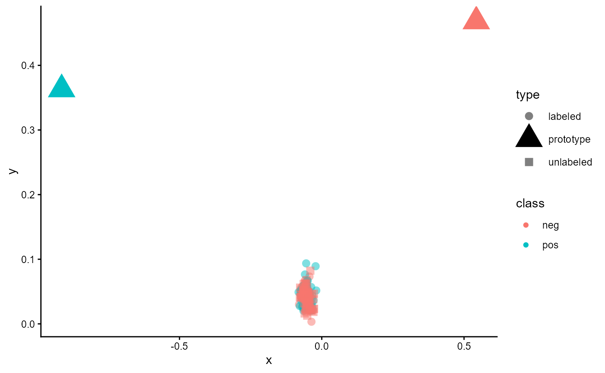
Figure 1: Embeddings of an untrained classifier of type ‘ProtoNet’
The large triangles represent the prototypes for each class, while the dots refer to the labelled cases in the dataset. The colour of these represents their true class. For unlabelled cases, a square is used. Here, the colour indicates the estimated class. As you can see, all cases are located very similarly, and there seems to be no clear structure. Let us see how this changes when we train the model.
3 Training
classifier_prototype$train(
data_embeddings = review_embeddings,
data_targets = review_labels,
data_folds = 10,
data_val_size = 0.25,
loss_pt_fct_name = "MultiWayContrastiveLoss",
use_sc = FALSE,
sc_method = "knnor",
sc_min_k = 1,
sc_max_k = 10,
use_pl = FALSE,
pl_max_steps = 3,
pl_max = 1.00,
pl_anchor = 1.00,
pl_min = 0.00,
sustain_track = TRUE,
sustain_iso_code = "DEU",
sustain_region = NULL,
sustain_interval = 15,
sustain_log_level = "error",
epochs = 2000,
batch_size = 16,
Ns = 20,
Nq = 5,
loss_alpha = 0.50,
loss_margin = 0.50,
sampling_separate = FALSE,
sampling_shuffle = TRUE,
trace = TRUE,
ml_trace = 1,
log_dir = NULL,
log_write_interval = 10,
n_cores = auto_n_cores(),
lr_rate = 0.0,
lr_min = 0.0,
lr_epochs = 40,
lr_scheduler = "CosineAnnealing",
lr_warm_up_ratio = 0.10,
optimizer = "AdamW",
amp = TRUE,
comp_use=TRUE,
comp_mode="reduce-overhead"
)
#> Compress Embeddings 5.26 % (1|19) done ETA: 0000::00::04Compress Embeddings 10.53 % (2|19) done ETA: 0000::00::05Compress Embeddings 15.79 % (3|19) done ETA: 0000::00::05Compress Embeddings 21.05 % (4|19) done ETA: 0000::00::05Compress Embeddings 26.32 % (5|19) done ETA: 0000::00::05Compress Embeddings 31.58 % (6|19) done ETA: 0000::00::05Compress Embeddings 36.84 % (7|19) done ETA: 0000::00::04Compress Embeddings 42.11 % (8|19) done ETA: 0000::00::04Compress Embeddings 47.37 % (9|19) done ETA: 0000::00::04Compress Embeddings 52.63 % (10|19) done ETA: 0000::00::03Compress Embeddings 57.89 % (11|19) done ETA: 0000::00::03Compress Embeddings 63.16 % (12|19) done ETA: 0000::00::03Compress Embeddings 68.42 % (13|19) done ETA: 0000::00::02Compress Embeddings 73.68 % (14|19) done ETA: 0000::00::02Compress Embeddings 78.95 % (15|19) done ETA: 0000::00::01Compress Embeddings 84.21 % (16|19) done ETA: 0000::00::01Compress Embeddings 89.47 % (17|19) done ETA: 0000::00::01Compress Embeddings 94.74 % (18|19) done ETA: 0000::00::00Compress Embeddings 100.00 % (19|19) done ETA: 0000::00::00
#> 2026-10-09 14:48:50 Total Cases: 300 Labeled Cases: 225
#> 2026-10-09 14:48:52 Start
#> 2026-10-09 14:48:52 Start Sustainability Tracking
#> 2026-10-09 14:48:52 Estimating Learning Rates
#> 0.1000 % | ETA 0000::00::390.2000 % | ETA 0000::00::120.3000 % | ETA 0000::00::110.4000 % | ETA 0000::00::090.5000 % | ETA 0000::00::080.6000 % | ETA 0000::00::060.7000 % | ETA 0000::00::050.8000 % | ETA 0000::00::040.9000 % | ETA 0000::00::021.0000 % | ETA 0000::00::01
#> 2026-10-09 14:49:09 Set lr_rate to 1e-03 and lr_min to 5e-06.
#> 2026-10-09 14:49:09 | Iteration 1 from 10
#> 2026-10-09 14:49:09 | Iteration 1 from 10 | Training
#> Absolute frequencies of some classes are not sufficent for the chosen Nq and Ns.
#> Change value for Ns from 20 to 12
#> Change value for Nq from 5 to 4
#> Compile model with cudagraphs.
#> 0.0005 % | Steps: 3 | Train Loss 0.473393 s_avg_iota 0.334 | Val Loss 0.952648 Best 0.952648 s_avg_iota 0.327 Best 0.327 | ELC: 1 | ETA 0001::17::550.0010 % | Steps: 3 | Train Loss 0.465381 s_avg_iota 0.333 | Val Loss 0.954415 Best 0.954415 s_avg_iota 0.327 Best 0.327 | ELC: 2 | ETA 0000::40::230.0015 % | Steps: 3 | Train Loss 0.478504 s_avg_iota 0.333 | Val Loss 0.952258 Best 0.954415 s_avg_iota 0.327 Best 0.327 | ELC: 2 | ETA 0000::27::440.0020 % | Steps: 3 | Train Loss 0.474980 s_avg_iota 0.333 | Val Loss 0.952873 Best 0.952873 s_avg_iota 0.327 Best 0.327 | ELC: 4 | ETA 0000::21::280.0025 % | Steps: 3 | Train Loss 0.469082 s_avg_iota 0.334 | Val Loss 0.954597 Best 0.952873 s_avg_iota 0.327 Best 0.327 | ELC: 4 | ETA 0000::17::360.0030 % | Steps: 3 | Train Loss 0.479199 s_avg_iota 0.333 | Val Loss 0.951793 Best 0.952873 s_avg_iota 0.327 Best 0.327 | ELC: 4 | ETA 0000::14::590.0035 % | Steps: 3 | Train Loss 0.474249 s_avg_iota 0.333 | Val Loss 0.952494 Best 0.952873 s_avg_iota 0.327 Best 0.327 | ELC: 4 | ETA 0000::13::070.0040 % | Steps: 3 | Train Loss 0.472530 s_avg_iota 0.333 | Val Loss 0.950650 Best 0.952873 s_avg_iota 0.327 Best 0.327 | ELC: 4 | ETA 0000::11::430.0045 % | Steps: 3 | Train Loss 0.478717 s_avg_iota 0.333 | Val Loss 0.949839 Best 0.952873 s_avg_iota 0.327 Best 0.327 | ELC: 4 | ETA 0000::10::390.0050 % | Steps: 3 | Train Loss 0.477097 s_avg_iota 0.333 | Val Loss 0.950591 Best 0.952873 s_avg_iota 0.327 Best 0.327 | ELC: 4 | ETA 0000::09::460.0055 % | Steps: 3 | Train Loss 0.469540 s_avg_iota 0.333 | Val Loss 0.947340 Best 0.952873 s_avg_iota 0.327 Best 0.327 | ELC: 4 | ETA 0000::09::030.0060 % | Steps: 3 | Train Loss 0.473303 s_avg_iota 0.333 | Val Loss 0.947211 Best 0.952873 s_avg_iota 0.327 Best 0.327 | ELC: 4 | ETA 0000::08::270.0065 % | Steps: 3 | Train Loss 0.467661 s_avg_iota 0.333 | Val Loss 0.942444 Best 0.952873 s_avg_iota 0.327 Best 0.327 | ELC: 4 | ETA 0000::07::570.0070 % | Steps: 3 | Train Loss 0.473558 s_avg_iota 0.333 | Val Loss 0.943451 Best 0.952873 s_avg_iota 0.327 Best 0.327 | ELC: 4 | ETA 0000::07::300.0075 % | Steps: 3 | Train Loss 0.477108 s_avg_iota 0.334 | Val Loss 0.941631 Best 0.952873 s_avg_iota 0.327 Best 0.327 | ELC: 4 | ETA 0000::07::070.0080 % | Steps: 3 | Train Loss 0.466101 s_avg_iota 0.333 | Val Loss 0.938908 Best 0.952873 s_avg_iota 0.327 Best 0.327 | ELC: 4 | ETA 0000::06::470.0085 % | Steps: 3 | Train Loss 0.465525 s_avg_iota 0.333 | Val Loss 0.937319 Best 0.952873 s_avg_iota 0.327 Best 0.327 | ELC: 4 | ETA 0000::06::300.0090 % | Steps: 3 | Train Loss 0.464058 s_avg_iota 0.334 | Val Loss 0.933843 Best 0.952873 s_avg_iota 0.327 Best 0.327 | ELC: 4 | ETA 0000::06::140.0095 % | Steps: 3 | Train Loss 0.464689 s_avg_iota 0.333 | Val Loss 0.933131 Best 0.952873 s_avg_iota 0.327 Best 0.327 | ELC: 4 | ETA 0000::06::000.0100 % | Steps: 3 | Train Loss 0.467029 s_avg_iota 0.334 | Val Loss 0.927932 Best 0.952873 s_avg_iota 0.327 Best 0.327 | ELC: 4 | ETA 0000::05::480.0105 % | Steps: 3 | Train Loss 0.461677 s_avg_iota 0.333 | Val Loss 0.925062 Best 0.925062 s_avg_iota 0.327 Best 0.327 | ELC: 21 | ETA 0000::05::360.0110 % | Steps: 3 | Train Loss 0.467258 s_avg_iota 0.333 | Val Loss 0.922106 Best 0.925062 s_avg_iota 0.327 Best 0.327 | ELC: 21 | ETA 0000::05::260.0115 % | Steps: 3 | Train Loss 0.451245 s_avg_iota 0.333 | Val Loss 0.917464 Best 0.925062 s_avg_iota 0.327 Best 0.327 | ELC: 21 | ETA 0000::05::170.0120 % | Steps: 3 | Train Loss 0.463183 s_avg_iota 0.333 | Val Loss 0.914868 Best 0.925062 s_avg_iota 0.327 Best 0.327 | ELC: 21 | ETA 0000::05::080.0125 % | Steps: 3 | Train Loss 0.455194 s_avg_iota 0.333 | Val Loss 0.909195 Best 0.909195 s_avg_iota 0.327 Best 0.327 | ELC: 25 | ETA 0000::05::000.0130 % | Steps: 3 | Train Loss 0.454911 s_avg_iota 0.333 | Val Loss 0.905851 Best 0.905851 s_avg_iota 0.327 Best 0.327 | ELC: 26 | ETA 0000::04::530.0135 % | Steps: 3 | Train Loss 0.456774 s_avg_iota 0.333 | Val Loss 0.901936 Best 0.905851 s_avg_iota 0.327 Best 0.327 | ELC: 26 | ETA 0000::04::470.0140 % | Steps: 3 | Train Loss 0.453734 s_avg_iota 0.332 | Val Loss 0.898717 Best 0.905851 s_avg_iota 0.327 Best 0.327 | ELC: 26 | ETA 0000::04::400.0145 % | Steps: 3 | Train Loss 0.446873 s_avg_iota 0.334 | Val Loss 0.888504 Best 0.888504 s_avg_iota 0.327 Best 0.327 | ELC: 29 | ETA 0000::04::350.0150 % | Steps: 3 | Train Loss 0.442311 s_avg_iota 0.334 | Val Loss 0.873947 Best 0.873947 s_avg_iota 0.328 Best 0.328 | ELC: 30 | ETA 0000::04::290.0155 % | Steps: 3 | Train Loss 0.449813 s_avg_iota 0.334 | Val Loss 0.868962 Best 0.873947 s_avg_iota 0.327 Best 0.328 | ELC: 30 | ETA 0000::04::240.0160 % | Steps: 3 | Train Loss 0.432383 s_avg_iota 0.334 | Val Loss 0.854611 Best 0.854611 s_avg_iota 0.328 Best 0.328 | ELC: 32 | ETA 0000::04::200.0165 % | Steps: 3 | Train Loss 0.435212 s_avg_iota 0.334 | Val Loss 0.844541 Best 0.854611 s_avg_iota 0.328 Best 0.328 | ELC: 32 | ETA 0000::04::150.0170 % | Steps: 3 | Train Loss 0.410533 s_avg_iota 0.335 | Val Loss 0.832168 Best 0.832168 s_avg_iota 0.328 Best 0.328 | ELC: 34 | ETA 0000::04::110.0175 % | Steps: 3 | Train Loss 0.422042 s_avg_iota 0.334 | Val Loss 0.818998 Best 0.818998 s_avg_iota 0.328 Best 0.328 | ELC: 35 | ETA 0000::04::070.0180 % | Steps: 3 | Train Loss 0.415472 s_avg_iota 0.333 | Val Loss 0.815396 Best 0.818998 s_avg_iota 0.328 Best 0.328 | ELC: 35 | ETA 0000::04::030.0185 % | Steps: 3 | Train Loss 0.417198 s_avg_iota 0.335 | Val Loss 0.808554 Best 0.818998 s_avg_iota 0.328 Best 0.328 | ELC: 35 | ETA 0000::04::000.0190 % | Steps: 3 | Train Loss 0.395429 s_avg_iota 0.337 | Val Loss 0.803065 Best 0.818998 s_avg_iota 0.328 Best 0.328 | ELC: 35 | ETA 0000::03::560.0195 % | Steps: 3 | Train Loss 0.390395 s_avg_iota 0.334 | Val Loss 0.788521 Best 0.788521 s_avg_iota 0.329 Best 0.329 | ELC: 39 | ETA 0000::03::530.0200 % | Steps: 3 | Train Loss 0.386458 s_avg_iota 0.335 | Val Loss 0.776025 Best 0.776025 s_avg_iota 0.329 Best 0.329 | ELC: 40 | ETA 0000::03::500.0205 % | Steps: 3 | Train Loss 0.401090 s_avg_iota 0.334 | Val Loss 0.753650 Best 0.753650 s_avg_iota 0.330 Best 0.330 | ELC: 41 | ETA 0000::03::470.0210 % | Steps: 3 | Train Loss 0.382750 s_avg_iota 0.337 | Val Loss 0.743779 Best 0.743779 s_avg_iota 0.331 Best 0.331 | ELC: 42 | ETA 0000::03::440.0215 % | Steps: 3 | Train Loss 0.362054 s_avg_iota 0.339 | Val Loss 0.730698 Best 0.730698 s_avg_iota 0.332 Best 0.332 | ELC: 43 | ETA 0000::03::420.0220 % | Steps: 3 | Train Loss 0.374598 s_avg_iota 0.337 | Val Loss 0.719760 Best 0.719760 s_avg_iota 0.332 Best 0.332 | ELC: 44 | ETA 0000::03::390.0225 % | Steps: 3 | Train Loss 0.381845 s_avg_iota 0.335 | Val Loss 0.709597 Best 0.709597 s_avg_iota 0.333 Best 0.333 | ELC: 45 | ETA 0000::03::370.0230 % | Steps: 3 | Train Loss 0.355523 s_avg_iota 0.338 | Val Loss 0.709227 Best 0.709597 s_avg_iota 0.332 Best 0.333 | ELC: 45 | ETA 0000::03::350.0235 % | Steps: 3 | Train Loss 0.364641 s_avg_iota 0.336 | Val Loss 0.711563 Best 0.709597 s_avg_iota 0.332 Best 0.333 | ELC: 45 | ETA 0000::03::320.0240 % | Steps: 3 | Train Loss 0.401887 s_avg_iota 0.330 | Val Loss 0.697838 Best 0.697838 s_avg_iota 0.333 Best 0.333 | ELC: 48 | ETA 0000::03::300.0245 % | Steps: 3 | Train Loss 0.334993 s_avg_iota 0.343 | Val Loss 0.699025 Best 0.697838 s_avg_iota 0.332 Best 0.333 | ELC: 48 | ETA 0000::03::280.0250 % | Steps: 3 | Train Loss 0.351741 s_avg_iota 0.338 | Val Loss 0.695259 Best 0.697838 s_avg_iota 0.333 Best 0.333 | ELC: 48 | ETA 0000::03::260.0255 % | Steps: 3 | Train Loss 0.353857 s_avg_iota 0.336 | Val Loss 0.694264 Best 0.697838 s_avg_iota 0.333 Best 0.333 | ELC: 48 | ETA 0000::03::240.0260 % | Steps: 3 | Train Loss 0.361872 s_avg_iota 0.338 | Val Loss 0.691801 Best 0.691801 s_avg_iota 0.333 Best 0.333 | ELC: 52 | ETA 0000::03::220.0265 % | Steps: 3 | Train Loss 0.348854 s_avg_iota 0.338 | Val Loss 0.695652 Best 0.691801 s_avg_iota 0.332 Best 0.333 | ELC: 52 | ETA 0000::03::200.0270 % | Steps: 3 | Train Loss 0.358228 s_avg_iota 0.338 | Val Loss 0.693348 Best 0.691801 s_avg_iota 0.332 Best 0.333 | ELC: 52 | ETA 0000::03::180.0275 % | Steps: 3 | Train Loss 0.357053 s_avg_iota 0.336 | Val Loss 0.697226 Best 0.691801 s_avg_iota 0.333 Best 0.333 | ELC: 52 | ETA 0000::03::170.0280 % | Steps: 3 | Train Loss 0.323792 s_avg_iota 0.343 | Val Loss 0.695604 Best 0.691801 s_avg_iota 0.333 Best 0.333 | ELC: 52 | ETA 0000::03::150.0285 % | Steps: 3 | Train Loss 0.344403 s_avg_iota 0.340 | Val Loss 0.690178 Best 0.691801 s_avg_iota 0.333 Best 0.333 | ELC: 52 | ETA 0000::03::130.0290 % | Steps: 3 | Train Loss 0.305366 s_avg_iota 0.346 | Val Loss 0.692991 Best 0.691801 s_avg_iota 0.333 Best 0.333 | ELC: 52 | ETA 0000::03::120.0295 % | Steps: 3 | Train Loss 0.332413 s_avg_iota 0.340 | Val Loss 0.701418 Best 0.691801 s_avg_iota 0.332 Best 0.333 | ELC: 52 | ETA 0000::03::100.0300 % | Steps: 3 | Train Loss 0.359979 s_avg_iota 0.336 | Val Loss 0.690806 Best 0.691801 s_avg_iota 0.333 Best 0.333 | ELC: 52 | ETA 0000::03::090.0305 % | Steps: 3 | Train Loss 0.364021 s_avg_iota 0.333 | Val Loss 0.694900 Best 0.691801 s_avg_iota 0.332 Best 0.333 | ELC: 52 | ETA 0000::03::070.0310 % | Steps: 3 | Train Loss 0.319596 s_avg_iota 0.341 | Val Loss 0.690453 Best 0.691801 s_avg_iota 0.333 Best 0.333 | ELC: 52 | ETA 0000::03::060.0315 % | Steps: 3 | Train Loss 0.314137 s_avg_iota 0.344 | Val Loss 0.691347 Best 0.691801 s_avg_iota 0.333 Best 0.333 | ELC: 52 | ETA 0000::03::040.0320 % | Steps: 3 | Train Loss 0.316735 s_avg_iota 0.345 | Val Loss 0.671646 Best 0.671646 s_avg_iota 0.334 Best 0.334 | ELC: 64 | ETA 0000::03::030.0325 % | Steps: 3 | Train Loss 0.322217 s_avg_iota 0.342 | Val Loss 0.673331 Best 0.671646 s_avg_iota 0.333 Best 0.334 | ELC: 64 | ETA 0000::03::020.0330 % | Steps: 3 | Train Loss 0.355041 s_avg_iota 0.340 | Val Loss 0.681980 Best 0.671646 s_avg_iota 0.332 Best 0.334 | ELC: 64 | ETA 0000::03::010.0335 % | Steps: 3 | Train Loss 0.335533 s_avg_iota 0.339 | Val Loss 0.690924 Best 0.671646 s_avg_iota 0.331 Best 0.334 | ELC: 64 | ETA 0000::03::000.0340 % | Steps: 3 | Train Loss 0.310046 s_avg_iota 0.345 | Val Loss 0.683807 Best 0.671646 s_avg_iota 0.331 Best 0.334 | ELC: 64 | ETA 0000::02::580.0345 % | Steps: 3 | Train Loss 0.315453 s_avg_iota 0.343 | Val Loss 0.686717 Best 0.671646 s_avg_iota 0.331 Best 0.334 | ELC: 64 | ETA 0000::02::570.0350 % | Steps: 3 | Train Loss 0.281292 s_avg_iota 0.350 | Val Loss 0.685383 Best 0.671646 s_avg_iota 0.331 Best 0.334 | ELC: 64 | ETA 0000::02::560.0355 % | Steps: 3 | Train Loss 0.355325 s_avg_iota 0.337 | Val Loss 0.683185 Best 0.671646 s_avg_iota 0.331 Best 0.334 | ELC: 64 | ETA 0000::02::550.0360 % | Steps: 3 | Train Loss 0.274826 s_avg_iota 0.350 | Val Loss 0.678004 Best 0.671646 s_avg_iota 0.331 Best 0.334 | ELC: 64 | ETA 0000::02::540.0365 % | Steps: 3 | Train Loss 0.278020 s_avg_iota 0.350 | Val Loss 0.676879 Best 0.671646 s_avg_iota 0.332 Best 0.334 | ELC: 64 | ETA 0000::02::530.0370 % | Steps: 3 | Train Loss 0.317991 s_avg_iota 0.343 | Val Loss 0.675913 Best 0.671646 s_avg_iota 0.331 Best 0.334 | ELC: 64 | ETA 0000::02::520.0375 % | Steps: 3 | Train Loss 0.277963 s_avg_iota 0.352 | Val Loss 0.678840 Best 0.671646 s_avg_iota 0.332 Best 0.334 | ELC: 64 | ETA 0000::02::510.0380 % | Steps: 3 | Train Loss 0.276266 s_avg_iota 0.350 | Val Loss 0.677318 Best 0.671646 s_avg_iota 0.332 Best 0.334 | ELC: 64 | ETA 0000::02::500.0385 % | Steps: 3 | Train Loss 0.270777 s_avg_iota 0.350 | Val Loss 0.673586 Best 0.671646 s_avg_iota 0.331 Best 0.334 | ELC: 64 | ETA 0000::02::490.0390 % | Steps: 3 | Train Loss 0.289745 s_avg_iota 0.347 | Val Loss 0.674751 Best 0.671646 s_avg_iota 0.334 Best 0.334 | ELC: 64 | ETA 0000::02::480.0395 % | Steps: 3 | Train Loss 0.313084 s_avg_iota 0.343 | Val Loss 0.658139 Best 0.658139 s_avg_iota 0.334 Best 0.334 | ELC: 79 | ETA 0000::02::470.0400 % | Steps: 3 | Train Loss 0.351601 s_avg_iota 0.337 | Val Loss 0.677675 Best 0.658139 s_avg_iota 0.331 Best 0.334 | ELC: 79 | ETA 0000::02::460.0405 % | Steps: 3 | Train Loss 0.262922 s_avg_iota 0.353 | Val Loss 0.665136 Best 0.658139 s_avg_iota 0.333 Best 0.334 | ELC: 79 | ETA 0000::02::450.0410 % | Steps: 3 | Train Loss 0.311006 s_avg_iota 0.348 | Val Loss 0.649612 Best 0.658139 s_avg_iota 0.333 Best 0.334 | ELC: 79 | ETA 0000::02::450.0415 % | Steps: 3 | Train Loss 0.298585 s_avg_iota 0.347 | Val Loss 0.664499 Best 0.664499 s_avg_iota 0.335 Best 0.335 | ELC: 83 | ETA 0000::02::440.0420 % | Steps: 3 | Train Loss 0.342279 s_avg_iota 0.339 | Val Loss 0.675084 Best 0.664499 s_avg_iota 0.333 Best 0.335 | ELC: 83 | ETA 0000::02::430.0425 % | Steps: 3 | Train Loss 0.265737 s_avg_iota 0.351 | Val Loss 0.677866 Best 0.664499 s_avg_iota 0.332 Best 0.335 | ELC: 83 | ETA 0000::02::420.0430 % | Steps: 3 | Train Loss 0.280443 s_avg_iota 0.348 | Val Loss 0.631814 Best 0.631814 s_avg_iota 0.337 Best 0.337 | ELC: 86 | ETA 0000::02::420.0435 % | Steps: 3 | Train Loss 0.299453 s_avg_iota 0.346 | Val Loss 0.625021 Best 0.625021 s_avg_iota 0.338 Best 0.338 | ELC: 87 | ETA 0000::02::410.0440 % | Steps: 3 | Train Loss 0.248568 s_avg_iota 0.356 | Val Loss 0.589942 Best 0.589942 s_avg_iota 0.342 Best 0.342 | ELC: 88 | ETA 0000::02::410.0445 % | Steps: 3 | Train Loss 0.219641 s_avg_iota 0.358 | Val Loss 0.592666 Best 0.589942 s_avg_iota 0.341 Best 0.342 | ELC: 88 | ETA 0000::02::400.0450 % | Steps: 3 | Train Loss 0.226972 s_avg_iota 0.360 | Val Loss 0.586396 Best 0.586396 s_avg_iota 0.343 Best 0.343 | ELC: 90 | ETA 0000::02::400.0455 % | Steps: 3 | Train Loss 0.266233 s_avg_iota 0.354 | Val Loss 0.579225 Best 0.586396 s_avg_iota 0.343 Best 0.343 | ELC: 90 | ETA 0000::02::390.0460 % | Steps: 3 | Train Loss 0.286769 s_avg_iota 0.351 | Val Loss 0.608983 Best 0.586396 s_avg_iota 0.338 Best 0.343 | ELC: 90 | ETA 0000::02::380.0465 % | Steps: 3 | Train Loss 0.278009 s_avg_iota 0.353 | Val Loss 0.619252 Best 0.586396 s_avg_iota 0.340 Best 0.343 | ELC: 90 | ETA 0000::02::380.0470 % | Steps: 3 | Train Loss 0.296854 s_avg_iota 0.352 | Val Loss 0.631522 Best 0.586396 s_avg_iota 0.337 Best 0.343 | ELC: 90 | ETA 0000::02::370.0475 % | Steps: 3 | Train Loss 0.282830 s_avg_iota 0.348 | Val Loss 0.655909 Best 0.586396 s_avg_iota 0.336 Best 0.343 | ELC: 90 | ETA 0000::02::360.0480 % | Steps: 3 | Train Loss 0.292841 s_avg_iota 0.347 | Val Loss 0.652533 Best 0.586396 s_avg_iota 0.337 Best 0.343 | ELC: 90 | ETA 0000::02::360.0485 % | Steps: 3 | Train Loss 0.273707 s_avg_iota 0.350 | Val Loss 0.626257 Best 0.586396 s_avg_iota 0.337 Best 0.343 | ELC: 90 | ETA 0000::02::350.0490 % | Steps: 3 | Train Loss 0.286764 s_avg_iota 0.349 | Val Loss 0.655435 Best 0.586396 s_avg_iota 0.334 Best 0.343 | ELC: 90 | ETA 0000::02::350.0495 % | Steps: 3 | Train Loss 0.299818 s_avg_iota 0.349 | Val Loss 0.648160 Best 0.586396 s_avg_iota 0.338 Best 0.343 | ELC: 90 | ETA 0000::02::340.0500 % | Steps: 3 | Train Loss 0.299620 s_avg_iota 0.348 | Val Loss 0.631144 Best 0.586396 s_avg_iota 0.338 Best 0.343 | ELC: 90 | ETA 0000::02::330.0505 % | Steps: 3 | Train Loss 0.305712 s_avg_iota 0.348 | Val Loss 0.649187 Best 0.586396 s_avg_iota 0.336 Best 0.343 | ELC: 90 | ETA 0000::02::330.0510 % | Steps: 3 | Train Loss 0.275596 s_avg_iota 0.352 | Val Loss 0.629051 Best 0.586396 s_avg_iota 0.338 Best 0.343 | ELC: 90 | ETA 0000::02::320.0515 % | Steps: 3 | Train Loss 0.227189 s_avg_iota 0.361 | Val Loss 0.610199 Best 0.586396 s_avg_iota 0.340 Best 0.343 | ELC: 90 | ETA 0000::02::320.0520 % | Steps: 3 | Train Loss 0.242686 s_avg_iota 0.358 | Val Loss 0.607597 Best 0.586396 s_avg_iota 0.340 Best 0.343 | ELC: 90 | ETA 0000::02::310.0525 % | Steps: 3 | Train Loss 0.246658 s_avg_iota 0.361 | Val Loss 0.605685 Best 0.586396 s_avg_iota 0.342 Best 0.343 | ELC: 90 | ETA 0000::02::310.0530 % | Steps: 3 | Train Loss 0.203117 s_avg_iota 0.367 | Val Loss 0.634728 Best 0.586396 s_avg_iota 0.337 Best 0.343 | ELC: 90 | ETA 0000::02::300.0535 % | Steps: 3 | Train Loss 0.170064 s_avg_iota 0.371 | Val Loss 0.621476 Best 0.586396 s_avg_iota 0.340 Best 0.343 | ELC: 90 | ETA 0000::02::290.0540 % | Steps: 3 | Train Loss 0.199631 s_avg_iota 0.365 | Val Loss 0.626341 Best 0.586396 s_avg_iota 0.341 Best 0.343 | ELC: 90 | ETA 0000::02::290.0545 % | Steps: 3 | Train Loss 0.297308 s_avg_iota 0.350 | Val Loss 0.579424 Best 0.579424 s_avg_iota 0.344 Best 0.344 | ELC: 109 | ETA 0000::02::280.0550 % | Steps: 3 | Train Loss 0.214938 s_avg_iota 0.365 | Val Loss 0.559511 Best 0.559511 s_avg_iota 0.346 Best 0.346 | ELC: 110 | ETA 0000::02::280.0555 % | Steps: 3 | Train Loss 0.237235 s_avg_iota 0.359 | Val Loss 0.598215 Best 0.559511 s_avg_iota 0.343 Best 0.346 | ELC: 110 | ETA 0000::02::280.0560 % | Steps: 3 | Train Loss 0.188815 s_avg_iota 0.369 | Val Loss 0.647245 Best 0.559511 s_avg_iota 0.338 Best 0.346 | ELC: 110 | ETA 0000::02::270.0565 % | Steps: 3 | Train Loss 0.274516 s_avg_iota 0.357 | Val Loss 0.699963 Best 0.559511 s_avg_iota 0.339 Best 0.346 | ELC: 110 | ETA 0000::02::270.0570 % | Steps: 3 | Train Loss 0.108635 s_avg_iota 0.389 | Val Loss 0.705248 Best 0.559511 s_avg_iota 0.337 Best 0.346 | ELC: 110 | ETA 0000::02::260.0575 % | Steps: 3 | Train Loss 0.162533 s_avg_iota 0.374 | Val Loss 0.732416 Best 0.559511 s_avg_iota 0.335 Best 0.346 | ELC: 110 | ETA 0000::02::260.0580 % | Steps: 3 | Train Loss 0.232036 s_avg_iota 0.371 | Val Loss 0.746198 Best 0.559511 s_avg_iota 0.334 Best 0.346 | ELC: 110 | ETA 0000::02::260.0585 % | Steps: 3 | Train Loss 0.213769 s_avg_iota 0.362 | Val Loss 0.819578 Best 0.559511 s_avg_iota 0.331 Best 0.346 | ELC: 110 | ETA 0000::02::250.0590 % | Steps: 3 | Train Loss 0.184678 s_avg_iota 0.370 | Val Loss 0.784981 Best 0.559511 s_avg_iota 0.326 Best 0.346 | ELC: 110 | ETA 0000::02::250.0595 % | Steps: 3 | Train Loss 0.248696 s_avg_iota 0.365 | Val Loss 0.696555 Best 0.559511 s_avg_iota 0.333 Best 0.346 | ELC: 110 | ETA 0000::02::240.0600 % | Steps: 3 | Train Loss 0.161975 s_avg_iota 0.377 | Val Loss 0.678211 Best 0.559511 s_avg_iota 0.335 Best 0.346 | ELC: 110 | ETA 0000::02::240.0605 % | Steps: 3 | Train Loss 0.211351 s_avg_iota 0.366 | Val Loss 0.694149 Best 0.559511 s_avg_iota 0.336 Best 0.346 | ELC: 110 | ETA 0000::02::230.0610 % | Steps: 3 | Train Loss 0.204439 s_avg_iota 0.367 | Val Loss 0.669110 Best 0.559511 s_avg_iota 0.337 Best 0.346 | ELC: 110 | ETA 0000::02::230.0615 % | Steps: 3 | Train Loss 0.239639 s_avg_iota 0.362 | Val Loss 0.632649 Best 0.559511 s_avg_iota 0.343 Best 0.346 | ELC: 110 | ETA 0000::02::220.0620 % | Steps: 3 | Train Loss 0.259984 s_avg_iota 0.357 | Val Loss 0.721404 Best 0.559511 s_avg_iota 0.340 Best 0.346 | ELC: 110 | ETA 0000::02::220.0625 % | Steps: 3 | Train Loss 0.260152 s_avg_iota 0.361 | Val Loss 0.766129 Best 0.559511 s_avg_iota 0.341 Best 0.346 | ELC: 110 | ETA 0000::02::220.0630 % | Steps: 3 | Train Loss 0.281026 s_avg_iota 0.360 | Val Loss 0.714916 Best 0.559511 s_avg_iota 0.339 Best 0.346 | ELC: 110 | ETA 0000::02::210.0635 % | Steps: 3 | Train Loss 0.195040 s_avg_iota 0.373 | Val Loss 0.742020 Best 0.559511 s_avg_iota 0.338 Best 0.346 | ELC: 110 | ETA 0000::02::210.0640 % | Steps: 3 | Train Loss 0.228434 s_avg_iota 0.371 | Val Loss 0.774617 Best 0.559511 s_avg_iota 0.341 Best 0.346 | ELC: 110 | ETA 0000::02::200.0645 % | Steps: 3 | Train Loss 0.177600 s_avg_iota 0.376 | Val Loss 0.730035 Best 0.559511 s_avg_iota 0.339 Best 0.346 | ELC: 110 | ETA 0000::02::200.0650 % | Steps: 3 | Train Loss 0.178803 s_avg_iota 0.376 | Val Loss 0.737072 Best 0.559511 s_avg_iota 0.338 Best 0.346 | ELC: 110 | ETA 0000::02::200.0655 % | Steps: 3 | Train Loss 0.161765 s_avg_iota 0.380 | Val Loss 0.773807 Best 0.559511 s_avg_iota 0.338 Best 0.346 | ELC: 110 | ETA 0000::02::190.0660 % | Steps: 3 | Train Loss 0.122027 s_avg_iota 0.389 | Val Loss 0.750988 Best 0.559511 s_avg_iota 0.338 Best 0.346 | ELC: 110 | ETA 0000::02::190.0665 % | Steps: 3 | Train Loss 0.126085 s_avg_iota 0.388 | Val Loss 0.755385 Best 0.559511 s_avg_iota 0.339 Best 0.346 | ELC: 110 | ETA 0000::02::180.0670 % | Steps: 3 | Train Loss 0.171278 s_avg_iota 0.377 | Val Loss 0.709355 Best 0.559511 s_avg_iota 0.339 Best 0.346 | ELC: 110 | ETA 0000::02::180.0675 % | Steps: 3 | Train Loss 0.135743 s_avg_iota 0.388 | Val Loss 0.750854 Best 0.559511 s_avg_iota 0.339 Best 0.346 | ELC: 110 | ETA 0000::02::180.0680 % | Steps: 3 | Train Loss 0.237559 s_avg_iota 0.372 | Val Loss 0.803221 Best 0.559511 s_avg_iota 0.339 Best 0.346 | ELC: 110 | ETA 0000::02::170.0685 % | Steps: 3 | Train Loss 0.103851 s_avg_iota 0.397 | Val Loss 0.803239 Best 0.559511 s_avg_iota 0.340 Best 0.346 | ELC: 110 | ETA 0000::02::170.0690 % | Steps: 3 | Train Loss 0.157992 s_avg_iota 0.378 | Val Loss 0.786618 Best 0.559511 s_avg_iota 0.337 Best 0.346 | ELC: 110 | ETA 0000::02::170.0695 % | Steps: 3 | Train Loss 0.199394 s_avg_iota 0.376 | Val Loss 0.892764 Best 0.559511 s_avg_iota 0.337 Best 0.346 | ELC: 110 | ETA 0000::02::160.0700 % | Steps: 3 | Train Loss 0.154962 s_avg_iota 0.387 | Val Loss 0.834579 Best 0.559511 s_avg_iota 0.335 Best 0.346 | ELC: 110 | ETA 0000::02::160.0705 % | Steps: 3 | Train Loss 0.129298 s_avg_iota 0.393 | Val Loss 0.874248 Best 0.559511 s_avg_iota 0.338 Best 0.346 | ELC: 110 | ETA 0000::02::160.0710 % | Steps: 3 | Train Loss 0.157333 s_avg_iota 0.388 | Val Loss 0.893268 Best 0.559511 s_avg_iota 0.336 Best 0.346 | ELC: 110 | ETA 0000::02::150.0715 % | Steps: 3 | Train Loss 0.112652 s_avg_iota 0.391 | Val Loss 0.786640 Best 0.559511 s_avg_iota 0.338 Best 0.346 | ELC: 110 | ETA 0000::02::150.0720 % | Steps: 3 | Train Loss 0.197401 s_avg_iota 0.378 | Val Loss 0.769353 Best 0.559511 s_avg_iota 0.345 Best 0.346 | ELC: 110 | ETA 0000::02::150.0725 % | Steps: 3 | Train Loss 0.100250 s_avg_iota 0.390 | Val Loss 0.697035 Best 0.697035 s_avg_iota 0.347 Best 0.347 | ELC: 145 | ETA 0000::02::150.0730 % | Steps: 3 | Train Loss 0.175901 s_avg_iota 0.377 | Val Loss 0.723970 Best 0.697035 s_avg_iota 0.344 Best 0.347 | ELC: 145 | ETA 0000::02::140.0735 % | Steps: 3 | Train Loss 0.156979 s_avg_iota 0.388 | Val Loss 0.730382 Best 0.697035 s_avg_iota 0.347 Best 0.347 | ELC: 145 | ETA 0000::02::140.0740 % | Steps: 3 | Train Loss 0.191093 s_avg_iota 0.381 | Val Loss 0.688061 Best 0.688061 s_avg_iota 0.349 Best 0.349 | ELC: 148 | ETA 0000::02::140.0745 % | Steps: 3 | Train Loss 0.112355 s_avg_iota 0.394 | Val Loss 0.727453 Best 0.727453 s_avg_iota 0.349 Best 0.349 | ELC: 149 | ETA 0000::02::140.0750 % | Steps: 3 | Train Loss 0.119249 s_avg_iota 0.390 | Val Loss 0.761320 Best 0.727453 s_avg_iota 0.349 Best 0.349 | ELC: 149 | ETA 0000::02::130.0755 % | Steps: 3 | Train Loss 0.071592 s_avg_iota 0.401 | Val Loss 0.831475 Best 0.727453 s_avg_iota 0.349 Best 0.349 | ELC: 149 | ETA 0000::02::130.0760 % | Steps: 3 | Train Loss 0.147686 s_avg_iota 0.394 | Val Loss 0.763031 Best 0.727453 s_avg_iota 0.344 Best 0.349 | ELC: 149 | ETA 0000::02::130.0765 % | Steps: 3 | Train Loss 0.259741 s_avg_iota 0.380 | Val Loss 0.853983 Best 0.727453 s_avg_iota 0.344 Best 0.349 | ELC: 149 | ETA 0000::02::130.0770 % | Steps: 3 | Train Loss 0.156281 s_avg_iota 0.392 | Val Loss 0.829449 Best 0.727453 s_avg_iota 0.340 Best 0.349 | ELC: 149 | ETA 0000::02::120.0775 % | Steps: 3 | Train Loss 0.248204 s_avg_iota 0.373 | Val Loss 0.850357 Best 0.727453 s_avg_iota 0.342 Best 0.349 | ELC: 149 | ETA 0000::02::120.0780 % | Steps: 3 | Train Loss 0.166310 s_avg_iota 0.389 | Val Loss 0.800412 Best 0.727453 s_avg_iota 0.345 Best 0.349 | ELC: 149 | ETA 0000::02::120.0785 % | Steps: 3 | Train Loss 0.118036 s_avg_iota 0.396 | Val Loss 0.780976 Best 0.727453 s_avg_iota 0.349 Best 0.349 | ELC: 149 | ETA 0000::02::110.0790 % | Steps: 3 | Train Loss 0.087546 s_avg_iota 0.402 | Val Loss 0.768874 Best 0.727453 s_avg_iota 0.349 Best 0.349 | ELC: 149 | ETA 0000::02::110.0795 % | Steps: 3 | Train Loss 0.063761 s_avg_iota 0.406 | Val Loss 0.787108 Best 0.787108 s_avg_iota 0.349 Best 0.349 | ELC: 159 | ETA 0000::02::110.0800 % | Steps: 3 | Train Loss 0.076273 s_avg_iota 0.404 | Val Loss 0.788832 Best 0.788832 s_avg_iota 0.350 Best 0.350 | ELC: 160 | ETA 0000::02::110.0805 % | Steps: 3 | Train Loss 0.103844 s_avg_iota 0.402 | Val Loss 0.714991 Best 0.714991 s_avg_iota 0.356 Best 0.356 | ELC: 161 | ETA 0000::02::100.0810 % | Steps: 3 | Train Loss 0.158715 s_avg_iota 0.390 | Val Loss 0.767842 Best 0.714991 s_avg_iota 0.354 Best 0.356 | ELC: 161 | ETA 0000::02::100.0815 % | Steps: 3 | Train Loss 0.253394 s_avg_iota 0.382 | Val Loss 0.699574 Best 0.714991 s_avg_iota 0.350 Best 0.356 | ELC: 161 | ETA 0000::02::100.0820 % | Steps: 3 | Train Loss 0.244315 s_avg_iota 0.382 | Val Loss 0.711942 Best 0.711942 s_avg_iota 0.356 Best 0.356 | ELC: 164 | ETA 0000::02::100.0825 % | Steps: 3 | Train Loss 0.078801 s_avg_iota 0.409 | Val Loss 0.731544 Best 0.711942 s_avg_iota 0.351 Best 0.356 | ELC: 164 | ETA 0000::02::100.0830 % | Steps: 3 | Train Loss 0.087106 s_avg_iota 0.402 | Val Loss 0.809677 Best 0.711942 s_avg_iota 0.346 Best 0.356 | ELC: 164 | ETA 0000::02::090.0835 % | Steps: 3 | Train Loss 0.151509 s_avg_iota 0.387 | Val Loss 0.826033 Best 0.711942 s_avg_iota 0.346 Best 0.356 | ELC: 164 | ETA 0000::02::090.0840 % | Steps: 3 | Train Loss 0.134160 s_avg_iota 0.393 | Val Loss 0.772989 Best 0.711942 s_avg_iota 0.350 Best 0.356 | ELC: 164 | ETA 0000::02::090.0845 % | Steps: 3 | Train Loss 0.110216 s_avg_iota 0.401 | Val Loss 0.770943 Best 0.711942 s_avg_iota 0.354 Best 0.356 | ELC: 164 | ETA 0000::02::090.0850 % | Steps: 3 | Train Loss 0.061438 s_avg_iota 0.399 | Val Loss 0.742902 Best 0.711942 s_avg_iota 0.353 Best 0.356 | ELC: 164 | ETA 0000::02::090.0855 % | Steps: 3 | Train Loss 0.114536 s_avg_iota 0.401 | Val Loss 0.749921 Best 0.711942 s_avg_iota 0.353 Best 0.356 | ELC: 164 | ETA 0000::02::080.0860 % | Steps: 3 | Train Loss 0.085952 s_avg_iota 0.398 | Val Loss 0.739141 Best 0.711942 s_avg_iota 0.352 Best 0.356 | ELC: 164 | ETA 0000::02::080.0865 % | Steps: 3 | Train Loss 0.090676 s_avg_iota 0.398 | Val Loss 0.823804 Best 0.711942 s_avg_iota 0.351 Best 0.356 | ELC: 164 | ETA 0000::02::080.0870 % | Steps: 3 | Train Loss 0.115951 s_avg_iota 0.401 | Val Loss 0.784449 Best 0.711942 s_avg_iota 0.349 Best 0.356 | ELC: 164 | ETA 0000::02::080.0875 % | Steps: 3 | Train Loss 0.203622 s_avg_iota 0.391 | Val Loss 0.806655 Best 0.711942 s_avg_iota 0.350 Best 0.356 | ELC: 164 | ETA 0000::02::070.0880 % | Steps: 3 | Train Loss 0.065686 s_avg_iota 0.409 | Val Loss 0.831869 Best 0.711942 s_avg_iota 0.351 Best 0.356 | ELC: 164 | ETA 0000::02::070.0885 % | Steps: 3 | Train Loss 0.018293 s_avg_iota 0.417 | Val Loss 0.852470 Best 0.711942 s_avg_iota 0.352 Best 0.356 | ELC: 164 | ETA 0000::02::070.0890 % | Steps: 3 | Train Loss 0.067564 s_avg_iota 0.408 | Val Loss 0.875544 Best 0.711942 s_avg_iota 0.351 Best 0.356 | ELC: 164 | ETA 0000::02::070.0895 % | Steps: 3 | Train Loss 0.086802 s_avg_iota 0.411 | Val Loss 0.880098 Best 0.711942 s_avg_iota 0.346 Best 0.356 | ELC: 164 | ETA 0000::02::070.0900 % | Steps: 3 | Train Loss 0.111352 s_avg_iota 0.409 | Val Loss 0.846263 Best 0.711942 s_avg_iota 0.350 Best 0.356 | ELC: 164 | ETA 0000::02::060.0905 % | Steps: 3 | Train Loss 0.168671 s_avg_iota 0.403 | Val Loss 0.792969 Best 0.711942 s_avg_iota 0.349 Best 0.356 | ELC: 164 | ETA 0000::02::060.0910 % | Steps: 3 | Train Loss 0.120681 s_avg_iota 0.396 | Val Loss 0.787603 Best 0.711942 s_avg_iota 0.356 Best 0.356 | ELC: 164 | ETA 0000::02::060.0915 % | Steps: 3 | Train Loss 0.070309 s_avg_iota 0.413 | Val Loss 0.651848 Best 0.651848 s_avg_iota 0.357 Best 0.357 | ELC: 183 | ETA 0000::02::060.0920 % | Steps: 3 | Train Loss 0.116422 s_avg_iota 0.415 | Val Loss 0.617963 Best 0.617963 s_avg_iota 0.358 Best 0.358 | ELC: 184 | ETA 0000::02::060.0925 % | Steps: 3 | Train Loss 0.183700 s_avg_iota 0.385 | Val Loss 0.543809 Best 0.543809 s_avg_iota 0.368 Best 0.368 | ELC: 185 | ETA 0000::02::050.0930 % | Steps: 3 | Train Loss 0.172270 s_avg_iota 0.391 | Val Loss 0.537849 Best 0.537849 s_avg_iota 0.375 Best 0.375 | ELC: 186 | ETA 0000::02::050.0935 % | Steps: 3 | Train Loss 0.024885 s_avg_iota 0.415 | Val Loss 0.529199 Best 0.537849 s_avg_iota 0.372 Best 0.375 | ELC: 186 | ETA 0000::02::050.0940 % | Steps: 3 | Train Loss 0.126936 s_avg_iota 0.402 | Val Loss 0.565796 Best 0.537849 s_avg_iota 0.362 Best 0.375 | ELC: 186 | ETA 0000::02::050.0945 % | Steps: 3 | Train Loss 0.060853 s_avg_iota 0.409 | Val Loss 0.638100 Best 0.537849 s_avg_iota 0.360 Best 0.375 | ELC: 186 | ETA 0000::02::050.0950 % | Steps: 3 | Train Loss 0.172163 s_avg_iota 0.396 | Val Loss 0.754754 Best 0.537849 s_avg_iota 0.350 Best 0.375 | ELC: 186 | ETA 0000::02::040.0955 % | Steps: 3 | Train Loss 0.161948 s_avg_iota 0.394 | Val Loss 0.819103 Best 0.537849 s_avg_iota 0.344 Best 0.375 | ELC: 186 | ETA 0000::02::040.0960 % | Steps: 3 | Train Loss 0.128238 s_avg_iota 0.392 | Val Loss 0.855304 Best 0.537849 s_avg_iota 0.341 Best 0.375 | ELC: 186 | ETA 0000::02::040.0965 % | Steps: 3 | Train Loss 0.058939 s_avg_iota 0.409 | Val Loss 0.834555 Best 0.537849 s_avg_iota 0.343 Best 0.375 | ELC: 186 | ETA 0000::02::040.0970 % | Steps: 3 | Train Loss 0.182504 s_avg_iota 0.391 | Val Loss 0.794268 Best 0.537849 s_avg_iota 0.343 Best 0.375 | ELC: 186 | ETA 0000::02::040.0975 % | Steps: 3 | Train Loss 0.137730 s_avg_iota 0.395 | Val Loss 0.789002 Best 0.537849 s_avg_iota 0.348 Best 0.375 | ELC: 186 | ETA 0000::02::030.0980 % | Steps: 3 | Train Loss 0.101117 s_avg_iota 0.395 | Val Loss 0.771210 Best 0.537849 s_avg_iota 0.348 Best 0.375 | ELC: 186 | ETA 0000::02::030.0985 % | Steps: 3 | Train Loss 0.197025 s_avg_iota 0.393 | Val Loss 0.765930 Best 0.537849 s_avg_iota 0.351 Best 0.375 | ELC: 186 | ETA 0000::02::030.0990 % | Steps: 3 | Train Loss 0.158883 s_avg_iota 0.396 | Val Loss 0.718078 Best 0.537849 s_avg_iota 0.351 Best 0.375 | ELC: 186 | ETA 0000::02::030.0995 % | Steps: 3 | Train Loss 0.123125 s_avg_iota 0.397 | Val Loss 0.686498 Best 0.537849 s_avg_iota 0.351 Best 0.375 | ELC: 186 | ETA 0000::02::030.1000 % | Steps: 3 | Train Loss 0.165947 s_avg_iota 0.387 | Val Loss 0.742172 Best 0.537849 s_avg_iota 0.351 Best 0.375 | ELC: 186 | ETA 0000::02::030.1005 % | Steps: 3 | Train Loss 0.109542 s_avg_iota 0.400 | Val Loss 0.742548 Best 0.537849 s_avg_iota 0.351 Best 0.375 | ELC: 186 | ETA 0000::02::020.1010 % | Steps: 3 | Train Loss 0.113990 s_avg_iota 0.401 | Val Loss 0.759105 Best 0.537849 s_avg_iota 0.353 Best 0.375 | ELC: 186 | ETA 0000::02::020.1015 % | Steps: 3 | Train Loss 0.152703 s_avg_iota 0.403 | Val Loss 0.770162 Best 0.537849 s_avg_iota 0.354 Best 0.375 | ELC: 186 | ETA 0000::02::020.1020 % | Steps: 3 | Train Loss 0.006270 s_avg_iota 0.426 | Val Loss 0.750941 Best 0.537849 s_avg_iota 0.355 Best 0.375 | ELC: 186 | ETA 0000::02::020.1025 % | Steps: 3 | Train Loss 0.126176 s_avg_iota 0.404 | Val Loss 0.642047 Best 0.537849 s_avg_iota 0.358 Best 0.375 | ELC: 186 | ETA 0000::02::020.1030 % | Steps: 3 | Train Loss 0.121965 s_avg_iota 0.401 | Val Loss 0.701393 Best 0.537849 s_avg_iota 0.360 Best 0.375 | ELC: 186 | ETA 0000::02::020.1035 % | Steps: 3 | Train Loss 0.094177 s_avg_iota 0.410 | Val Loss 0.708031 Best 0.537849 s_avg_iota 0.358 Best 0.375 | ELC: 186 | ETA 0000::02::010.1040 % | Steps: 3 | Train Loss 0.009287 s_avg_iota 0.427 | Val Loss 0.747837 Best 0.537849 s_avg_iota 0.359 Best 0.375 | ELC: 186 | ETA 0000::02::010.1045 % | Steps: 3 | Train Loss 0.160229 s_avg_iota 0.398 | Val Loss 0.715517 Best 0.537849 s_avg_iota 0.360 Best 0.375 | ELC: 186 | ETA 0000::02::010.1050 % | Steps: 3 | Train Loss 0.208293 s_avg_iota 0.390 | Val Loss 0.716284 Best 0.537849 s_avg_iota 0.357 Best 0.375 | ELC: 186 | ETA 0000::02::010.1055 % | Steps: 3 | Train Loss 0.255594 s_avg_iota 0.382 | Val Loss 0.648533 Best 0.537849 s_avg_iota 0.352 Best 0.375 | ELC: 186 | ETA 0000::02::010.1060 % | Steps: 3 | Train Loss 0.149661 s_avg_iota 0.393 | Val Loss 0.633618 Best 0.537849 s_avg_iota 0.354 Best 0.375 | ELC: 186 | ETA 0000::02::000.1065 % | Steps: 3 | Train Loss 0.207907 s_avg_iota 0.379 | Val Loss 0.647966 Best 0.537849 s_avg_iota 0.352 Best 0.375 | ELC: 186 | ETA 0000::02::000.1070 % | Steps: 3 | Train Loss 0.153365 s_avg_iota 0.384 | Val Loss 0.652559 Best 0.537849 s_avg_iota 0.353 Best 0.375 | ELC: 186 | ETA 0000::02::000.1075 % | Steps: 3 | Train Loss 0.271590 s_avg_iota 0.366 | Val Loss 0.718738 Best 0.537849 s_avg_iota 0.350 Best 0.375 | ELC: 186 | ETA 0000::02::000.1080 % | Steps: 3 | Train Loss 0.112234 s_avg_iota 0.388 | Val Loss 0.700261 Best 0.537849 s_avg_iota 0.352 Best 0.375 | ELC: 186 | ETA 0000::02::000.1085 % | Steps: 3 | Train Loss 0.057326 s_avg_iota 0.399 | Val Loss 0.700511 Best 0.537849 s_avg_iota 0.347 Best 0.375 | ELC: 186 | ETA 0000::01::590.1090 % | Steps: 3 | Train Loss 0.147877 s_avg_iota 0.390 | Val Loss 0.689710 Best 0.537849 s_avg_iota 0.353 Best 0.375 | ELC: 186 | ETA 0000::01::590.1095 % | Steps: 3 | Train Loss 0.140755 s_avg_iota 0.396 | Val Loss 0.732512 Best 0.537849 s_avg_iota 0.352 Best 0.375 | ELC: 186 | ETA 0000::01::590.1100 % | Steps: 3 | Train Loss 0.102106 s_avg_iota 0.403 | Val Loss 0.735698 Best 0.537849 s_avg_iota 0.352 Best 0.375 | ELC: 186 | ETA 0000::01::590.1105 % | Steps: 3 | Train Loss 0.193224 s_avg_iota 0.389 | Val Loss 0.751245 Best 0.537849 s_avg_iota 0.354 Best 0.375 | ELC: 186 | ETA 0000::01::590.1110 % | Steps: 3 | Train Loss 0.091002 s_avg_iota 0.409 | Val Loss 0.738137 Best 0.537849 s_avg_iota 0.353 Best 0.375 | ELC: 186 | ETA 0000::01::590.1115 % | Steps: 3 | Train Loss 0.058866 s_avg_iota 0.418 | Val Loss 0.719611 Best 0.537849 s_avg_iota 0.353 Best 0.375 | ELC: 186 | ETA 0000::01::580.1120 % | Steps: 3 | Train Loss 0.132508 s_avg_iota 0.404 | Val Loss 0.688583 Best 0.537849 s_avg_iota 0.356 Best 0.375 | ELC: 186 | ETA 0000::01::580.1125 % | Steps: 3 | Train Loss 0.121155 s_avg_iota 0.403 | Val Loss 0.707877 Best 0.537849 s_avg_iota 0.354 Best 0.375 | ELC: 186 | ETA 0000::01::580.1130 % | Steps: 3 | Train Loss 0.099897 s_avg_iota 0.399 | Val Loss 0.756317 Best 0.537849 s_avg_iota 0.355 Best 0.375 | ELC: 186 | ETA 0000::01::580.1135 % | Steps: 3 | Train Loss 0.105810 s_avg_iota 0.399 | Val Loss 0.726629 Best 0.537849 s_avg_iota 0.354 Best 0.375 | ELC: 186 | ETA 0000::01::580.1140 % | Steps: 3 | Train Loss 0.057862 s_avg_iota 0.418 | Val Loss 0.831694 Best 0.537849 s_avg_iota 0.348 Best 0.375 | ELC: 186 | ETA 0000::01::580.1145 % | Steps: 3 | Train Loss 0.100664 s_avg_iota 0.408 | Val Loss 0.856890 Best 0.537849 s_avg_iota 0.345 Best 0.375 | ELC: 186 | ETA 0000::01::580.1150 % | Steps: 3 | Train Loss 0.007645 s_avg_iota 0.425 | Val Loss 0.918613 Best 0.537849 s_avg_iota 0.346 Best 0.375 | ELC: 186 | ETA 0000::01::570.1155 % | Steps: 3 | Train Loss 0.064285 s_avg_iota 0.412 | Val Loss 0.913808 Best 0.537849 s_avg_iota 0.346 Best 0.375 | ELC: 186 | ETA 0000::01::570.1160 % | Steps: 3 | Train Loss 0.111020 s_avg_iota 0.405 | Val Loss 0.875414 Best 0.537849 s_avg_iota 0.346 Best 0.375 | ELC: 186 | ETA 0000::01::570.1165 % | Steps: 3 | Train Loss 0.109555 s_avg_iota 0.402 | Val Loss 0.796170 Best 0.537849 s_avg_iota 0.344 Best 0.375 | ELC: 186 | ETA 0000::01::570.1170 % | Steps: 3 | Train Loss 0.177366 s_avg_iota 0.393 | Val Loss 0.881497 Best 0.537849 s_avg_iota 0.347 Best 0.375 | ELC: 186 | ETA 0000::01::570.1175 % | Steps: 3 | Train Loss 0.117259 s_avg_iota 0.403 | Val Loss 0.932128 Best 0.537849 s_avg_iota 0.341 Best 0.375 | ELC: 186 | ETA 0000::01::570.1180 % | Steps: 3 | Train Loss 0.153900 s_avg_iota 0.396 | Val Loss 0.913279 Best 0.537849 s_avg_iota 0.341 Best 0.375 | ELC: 186 | ETA 0000::01::560.1185 % | Steps: 3 | Train Loss 0.054378 s_avg_iota 0.419 | Val Loss 0.903706 Best 0.537849 s_avg_iota 0.344 Best 0.375 | ELC: 186 | ETA 0000::01::560.1190 % | Steps: 3 | Train Loss 0.005301 s_avg_iota 0.428 | Val Loss 0.895552 Best 0.537849 s_avg_iota 0.344 Best 0.375 | ELC: 186 | ETA 0000::01::560.1195 % | Steps: 3 | Train Loss 0.004312 s_avg_iota 0.429 | Val Loss 0.914635 Best 0.537849 s_avg_iota 0.345 Best 0.375 | ELC: 186 | ETA 0000::01::560.1200 % | Steps: 3 | Train Loss 0.012723 s_avg_iota 0.420 | Val Loss 0.910239 Best 0.537849 s_avg_iota 0.346 Best 0.375 | ELC: 186 | ETA 0000::01::560.1205 % | Steps: 3 | Train Loss 0.052387 s_avg_iota 0.419 | Val Loss 0.863961 Best 0.537849 s_avg_iota 0.348 Best 0.375 | ELC: 186 | ETA 0000::01::560.1210 % | Steps: 3 | Train Loss 0.008998 s_avg_iota 0.422 | Val Loss 0.887097 Best 0.537849 s_avg_iota 0.347 Best 0.375 | ELC: 186 | ETA 0000::01::560.1215 % | Steps: 3 | Train Loss 0.013364 s_avg_iota 0.421 | Val Loss 0.904260 Best 0.537849 s_avg_iota 0.349 Best 0.375 | ELC: 186 | ETA 0000::01::550.1220 % | Steps: 3 | Train Loss 0.004643 s_avg_iota 0.428 | Val Loss 0.914885 Best 0.537849 s_avg_iota 0.348 Best 0.375 | ELC: 186 | ETA 0000::01::550.1225 % | Steps: 3 | Train Loss 0.063751 s_avg_iota 0.415 | Val Loss 0.942187 Best 0.537849 s_avg_iota 0.350 Best 0.375 | ELC: 186 | ETA 0000::01::550.1230 % | Steps: 3 | Train Loss 0.005413 s_avg_iota 0.429 | Val Loss 0.924439 Best 0.537849 s_avg_iota 0.346 Best 0.375 | ELC: 186 | ETA 0000::01::550.1235 % | Steps: 3 | Train Loss 0.004231 s_avg_iota 0.429 | Val Loss 0.962679 Best 0.537849 s_avg_iota 0.348 Best 0.375 | ELC: 186 | ETA 0000::01::550.1240 % | Steps: 3 | Train Loss 0.118176 s_avg_iota 0.417 | Val Loss 0.999307 Best 0.537849 s_avg_iota 0.348 Best 0.375 | ELC: 186 | ETA 0000::01::550.1245 % | Steps: 3 | Train Loss 0.110827 s_avg_iota 0.416 | Val Loss 0.940745 Best 0.537849 s_avg_iota 0.350 Best 0.375 | ELC: 186 | ETA 0000::01::540.1250 % | Steps: 3 | Train Loss 0.063958 s_avg_iota 0.426 | Val Loss 0.876461 Best 0.537849 s_avg_iota 0.356 Best 0.375 | ELC: 186 | ETA 0000::01::540.1255 % | Steps: 3 | Train Loss 0.051690 s_avg_iota 0.424 | Val Loss 0.770504 Best 0.537849 s_avg_iota 0.361 Best 0.375 | ELC: 186 | ETA 0000::01::540.1260 % | Steps: 3 | Train Loss 0.119041 s_avg_iota 0.411 | Val Loss 0.720486 Best 0.537849 s_avg_iota 0.361 Best 0.375 | ELC: 186 | ETA 0000::01::540.1265 % | Steps: 3 | Train Loss 0.111300 s_avg_iota 0.411 | Val Loss 0.736408 Best 0.537849 s_avg_iota 0.362 Best 0.375 | ELC: 186 | ETA 0000::01::540.1270 % | Steps: 3 | Train Loss 0.009573 s_avg_iota 0.430 | Val Loss 0.849787 Best 0.537849 s_avg_iota 0.356 Best 0.375 | ELC: 186 | ETA 0000::01::540.1275 % | Steps: 3 | Train Loss 0.090434 s_avg_iota 0.415 | Val Loss 0.856778 Best 0.537849 s_avg_iota 0.355 Best 0.375 | ELC: 186 | ETA 0000::01::540.1280 % | Steps: 3 | Train Loss 0.005702 s_avg_iota 0.427 | Val Loss 0.834488 Best 0.537849 s_avg_iota 0.354 Best 0.375 | ELC: 186 | ETA 0000::01::530.1285 % | Steps: 3 | Train Loss 0.062647 s_avg_iota 0.412 | Val Loss 0.828988 Best 0.537849 s_avg_iota 0.353 Best 0.375 | ELC: 186 | ETA 0000::01::530.1290 % | Steps: 3 | Train Loss 0.053489 s_avg_iota 0.418 | Val Loss 0.847306 Best 0.537849 s_avg_iota 0.353 Best 0.375 | ELC: 186 | ETA 0000::01::530.1295 % | Steps: 3 | Train Loss 0.018136 s_avg_iota 0.423 | Val Loss 0.835237 Best 0.537849 s_avg_iota 0.351 Best 0.375 | ELC: 186 | ETA 0000::01::530.1300 % | Steps: 3 | Train Loss 0.055357 s_avg_iota 0.420 | Val Loss 0.903257 Best 0.537849 s_avg_iota 0.350 Best 0.375 | ELC: 186 | ETA 0000::01::530.1305 % | Steps: 3 | Train Loss 0.005385 s_avg_iota 0.427 | Val Loss 0.940350 Best 0.537849 s_avg_iota 0.348 Best 0.375 | ELC: 186 | ETA 0000::01::530.1310 % | Steps: 3 | Train Loss 0.033262 s_avg_iota 0.424 | Val Loss 0.956642 Best 0.537849 s_avg_iota 0.351 Best 0.375 | ELC: 186 | ETA 0000::01::530.1315 % | Steps: 3 | Train Loss 0.009133 s_avg_iota 0.425 | Val Loss 0.906195 Best 0.537849 s_avg_iota 0.351 Best 0.375 | ELC: 186 | ETA 0000::01::520.1320 % | Steps: 3 | Train Loss 0.001628 s_avg_iota 0.435 | Val Loss 0.935144 Best 0.537849 s_avg_iota 0.354 Best 0.375 | ELC: 186 | ETA 0000::01::520.1325 % | Steps: 3 | Train Loss 0.000543 s_avg_iota 0.438 | Val Loss 0.914668 Best 0.537849 s_avg_iota 0.351 Best 0.375 | ELC: 186 | ETA 0000::01::520.1330 % | Steps: 3 | Train Loss 0.059598 s_avg_iota 0.424 | Val Loss 0.918832 Best 0.537849 s_avg_iota 0.354 Best 0.375 | ELC: 186 | ETA 0000::01::520.1335 % | Steps: 3 | Train Loss 0.115067 s_avg_iota 0.417 | Val Loss 0.954314 Best 0.537849 s_avg_iota 0.348 Best 0.375 | ELC: 186 | ETA 0000::01::520.1340 % | Steps: 3 | Train Loss 0.066228 s_avg_iota 0.418 | Val Loss 1.008473 Best 0.537849 s_avg_iota 0.347 Best 0.375 | ELC: 186 | ETA 0000::01::520.1345 % | Steps: 3 | Train Loss 0.100760 s_avg_iota 0.415 | Val Loss 1.027474 Best 0.537849 s_avg_iota 0.343 Best 0.375 | ELC: 186 | ETA 0000::01::520.1350 % | Steps: 3 | Train Loss 0.058665 s_avg_iota 0.424 | Val Loss 1.024793 Best 0.537849 s_avg_iota 0.342 Best 0.375 | ELC: 186 | ETA 0000::01::510.1355 % | Steps: 3 | Train Loss 0.051434 s_avg_iota 0.422 | Val Loss 0.963845 Best 0.537849 s_avg_iota 0.344 Best 0.375 | ELC: 186 | ETA 0000::01::510.1360 % | Steps: 3 | Train Loss 0.054831 s_avg_iota 0.417 | Val Loss 0.965545 Best 0.537849 s_avg_iota 0.344 Best 0.375 | ELC: 186 | ETA 0000::01::510.1365 % | Steps: 3 | Train Loss 0.010038 s_avg_iota 0.422 | Val Loss 0.978861 Best 0.537849 s_avg_iota 0.348 Best 0.375 | ELC: 186 | ETA 0000::01::510.1370 % | Steps: 3 | Train Loss 0.002947 s_avg_iota 0.432 | Val Loss 0.925367 Best 0.537849 s_avg_iota 0.349 Best 0.375 | ELC: 186 | ETA 0000::01::510.1375 % | Steps: 3 | Train Loss 0.055243 s_avg_iota 0.422 | Val Loss 0.904126 Best 0.537849 s_avg_iota 0.349 Best 0.375 | ELC: 186 | ETA 0000::01::510.1380 % | Steps: 3 | Train Loss 0.006542 s_avg_iota 0.430 | Val Loss 0.942896 Best 0.537849 s_avg_iota 0.349 Best 0.375 | ELC: 186 | ETA 0000::01::510.1385 % | Steps: 3 | Train Loss 0.003842 s_avg_iota 0.430 | Val Loss 0.900052 Best 0.537849 s_avg_iota 0.348 Best 0.375 | ELC: 186 | ETA 0000::01::510.1390 % | Steps: 3 | Train Loss 0.057941 s_avg_iota 0.416 | Val Loss 0.949658 Best 0.537849 s_avg_iota 0.346 Best 0.375 | ELC: 186 | ETA 0000::01::500.1395 % | Steps: 3 | Train Loss 0.005653 s_avg_iota 0.426 | Val Loss 0.898254 Best 0.537849 s_avg_iota 0.348 Best 0.375 | ELC: 186 | ETA 0000::01::500.1400 % | Steps: 3 | Train Loss 0.003854 s_avg_iota 0.429 | Val Loss 0.943936 Best 0.537849 s_avg_iota 0.349 Best 0.375 | ELC: 186 | ETA 0000::01::500.1405 % | Steps: 3 | Train Loss 0.016630 s_avg_iota 0.424 | Val Loss 0.915394 Best 0.537849 s_avg_iota 0.348 Best 0.375 | ELC: 186 | ETA 0000::01::500.1410 % | Steps: 3 | Train Loss 0.011072 s_avg_iota 0.423 | Val Loss 0.925343 Best 0.537849 s_avg_iota 0.350 Best 0.375 | ELC: 186 | ETA 0000::01::500.1415 % | Steps: 3 | Train Loss 0.050613 s_avg_iota 0.426 | Val Loss 0.921545 Best 0.537849 s_avg_iota 0.350 Best 0.375 | ELC: 186 | ETA 0000::01::500.1420 % | Steps: 3 | Train Loss 0.057801 s_avg_iota 0.426 | Val Loss 0.935586 Best 0.537849 s_avg_iota 0.349 Best 0.375 | ELC: 186 | ETA 0000::01::500.1425 % | Steps: 3 | Train Loss 0.003066 s_avg_iota 0.432 | Val Loss 0.951323 Best 0.537849 s_avg_iota 0.348 Best 0.375 | ELC: 186 | ETA 0000::01::500.1430 % | Steps: 3 | Train Loss 0.086814 s_avg_iota 0.416 | Val Loss 0.987339 Best 0.537849 s_avg_iota 0.345 Best 0.375 | ELC: 186 | ETA 0000::01::490.1435 % | Steps: 3 | Train Loss 0.047613 s_avg_iota 0.424 | Val Loss 1.011802 Best 0.537849 s_avg_iota 0.345 Best 0.375 | ELC: 186 | ETA 0000::01::490.1440 % | Steps: 3 | Train Loss 0.067047 s_avg_iota 0.425 | Val Loss 0.972587 Best 0.537849 s_avg_iota 0.347 Best 0.375 | ELC: 186 | ETA 0000::01::490.1445 % | Steps: 3 | Train Loss 0.062973 s_avg_iota 0.425 | Val Loss 0.894158 Best 0.537849 s_avg_iota 0.350 Best 0.375 | ELC: 186 | ETA 0000::01::490.1450 % | Steps: 3 | Train Loss 0.014554 s_avg_iota 0.425 | Val Loss 0.872622 Best 0.537849 s_avg_iota 0.353 Best 0.375 | ELC: 186 | ETA 0000::01::490.1455 % | Steps: 3 | Train Loss 0.001524 s_avg_iota 0.435 | Val Loss 0.857264 Best 0.537849 s_avg_iota 0.357 Best 0.375 | ELC: 186 | ETA 0000::01::490.1460 % | Steps: 3 | Train Loss 0.056247 s_avg_iota 0.424 | Val Loss 0.825817 Best 0.537849 s_avg_iota 0.358 Best 0.375 | ELC: 186 | ETA 0000::01::490.1465 % | Steps: 3 | Train Loss 0.003617 s_avg_iota 0.431 | Val Loss 0.806815 Best 0.537849 s_avg_iota 0.358 Best 0.375 | ELC: 186 | ETA 0000::01::490.1470 % | Steps: 3 | Train Loss 0.080411 s_avg_iota 0.419 | Val Loss 0.835210 Best 0.537849 s_avg_iota 0.359 Best 0.375 | ELC: 186 | ETA 0000::01::480.1475 % | Steps: 3 | Train Loss 0.002253 s_avg_iota 0.434 | Val Loss 0.798281 Best 0.537849 s_avg_iota 0.358 Best 0.375 | ELC: 186 | ETA 0000::01::480.1480 % | Steps: 3 | Train Loss 0.001177 s_avg_iota 0.435 | Val Loss 0.804082 Best 0.537849 s_avg_iota 0.360 Best 0.375 | ELC: 186 | ETA 0000::01::480.1485 % | Steps: 3 | Train Loss 0.001756 s_avg_iota 0.436 | Val Loss 0.773883 Best 0.537849 s_avg_iota 0.362 Best 0.375 | ELC: 186 | ETA 0000::01::480.1490 % | Steps: 3 | Train Loss 0.012914 s_avg_iota 0.423 | Val Loss 0.780809 Best 0.537849 s_avg_iota 0.363 Best 0.375 | ELC: 186 | ETA 0000::01::480.1495 % | Steps: 3 | Train Loss 0.055406 s_avg_iota 0.424 | Val Loss 0.799170 Best 0.537849 s_avg_iota 0.361 Best 0.375 | ELC: 186 | ETA 0000::01::480.1500 % | Steps: 3 | Train Loss 0.055552 s_avg_iota 0.422 | Val Loss 0.849363 Best 0.537849 s_avg_iota 0.360 Best 0.375 | ELC: 186 | ETA 0000::01::480.1505 % | Steps: 3 | Train Loss 0.056526 s_avg_iota 0.427 | Val Loss 0.826855 Best 0.537849 s_avg_iota 0.358 Best 0.375 | ELC: 186 | ETA 0000::01::480.1510 % | Steps: 3 | Train Loss 0.005939 s_avg_iota 0.430 | Val Loss 0.810980 Best 0.537849 s_avg_iota 0.359 Best 0.375 | ELC: 186 | ETA 0000::01::480.1515 % | Steps: 3 | Train Loss 0.053120 s_avg_iota 0.420 | Val Loss 0.780351 Best 0.537849 s_avg_iota 0.361 Best 0.375 | ELC: 186 | ETA 0000::01::470.1520 % | Steps: 3 | Train Loss 0.006993 s_avg_iota 0.430 | Val Loss 0.807521 Best 0.537849 s_avg_iota 0.363 Best 0.375 | ELC: 186 | ETA 0000::01::470.1525 % | Steps: 3 | Train Loss 0.000646 s_avg_iota 0.437 | Val Loss 0.887095 Best 0.537849 s_avg_iota 0.358 Best 0.375 | ELC: 186 | ETA 0000::01::470.1530 % | Steps: 3 | Train Loss 0.002369 s_avg_iota 0.434 | Val Loss 0.850751 Best 0.537849 s_avg_iota 0.361 Best 0.375 | ELC: 186 | ETA 0000::01::470.1535 % | Steps: 3 | Train Loss 0.055784 s_avg_iota 0.424 | Val Loss 0.835378 Best 0.537849 s_avg_iota 0.360 Best 0.375 | ELC: 186 | ETA 0000::01::470.1540 % | Steps: 3 | Train Loss 0.037133 s_avg_iota 0.431 | Val Loss 0.862401 Best 0.537849 s_avg_iota 0.358 Best 0.375 | ELC: 186 | ETA 0000::01::470.1545 % | Steps: 3 | Train Loss 0.000788 s_avg_iota 0.437 | Val Loss 0.908664 Best 0.537849 s_avg_iota 0.355 Best 0.375 | ELC: 186 | ETA 0000::01::470.1550 % | Steps: 3 | Train Loss 0.002301 s_avg_iota 0.434 | Val Loss 0.887022 Best 0.537849 s_avg_iota 0.355 Best 0.375 | ELC: 186 | ETA 0000::01::470.1555 % | Steps: 3 | Train Loss 0.023706 s_avg_iota 0.430 | Val Loss 0.887082 Best 0.537849 s_avg_iota 0.357 Best 0.375 | ELC: 186 | ETA 0000::01::470.1560 % | Steps: 3 | Train Loss 0.024162 s_avg_iota 0.427 | Val Loss 0.864214 Best 0.537849 s_avg_iota 0.358 Best 0.375 | ELC: 186 | ETA 0000::01::460.1565 % | Steps: 3 | Train Loss 0.005868 s_avg_iota 0.433 | Val Loss 0.840169 Best 0.537849 s_avg_iota 0.359 Best 0.375 | ELC: 186 | ETA 0000::01::460.1570 % | Steps: 3 | Train Loss 0.001760 s_avg_iota 0.435 | Val Loss 0.770942 Best 0.537849 s_avg_iota 0.361 Best 0.375 | ELC: 186 | ETA 0000::01::460.1575 % | Steps: 3 | Train Loss 0.062349 s_avg_iota 0.424 | Val Loss 0.719147 Best 0.537849 s_avg_iota 0.368 Best 0.375 | ELC: 186 | ETA 0000::01::460.1580 % | Steps: 3 | Train Loss 0.001202 s_avg_iota 0.435 | Val Loss 0.743447 Best 0.537849 s_avg_iota 0.365 Best 0.375 | ELC: 186 | ETA 0000::01::460.1585 % | Steps: 3 | Train Loss 0.000613 s_avg_iota 0.438 | Val Loss 0.736005 Best 0.537849 s_avg_iota 0.365 Best 0.375 | ELC: 186 | ETA 0000::01::460.1590 % | Steps: 3 | Train Loss 0.012449 s_avg_iota 0.429 | Val Loss 0.740656 Best 0.537849 s_avg_iota 0.366 Best 0.375 | ELC: 186 | ETA 0000::01::460.1595 % | Steps: 3 | Train Loss 0.001772 s_avg_iota 0.435 | Val Loss 0.767373 Best 0.537849 s_avg_iota 0.362 Best 0.375 | ELC: 186 | ETA 0000::01::460.1600 % | Steps: 3 | Train Loss 0.000670 s_avg_iota 0.437 | Val Loss 0.822817 Best 0.537849 s_avg_iota 0.359 Best 0.375 | ELC: 186 | ETA 0000::01::460.1605 % | Steps: 3 | Train Loss 0.001467 s_avg_iota 0.436 | Val Loss 0.791595 Best 0.537849 s_avg_iota 0.360 Best 0.375 | ELC: 186 | ETA 0000::01::450.1610 % | Steps: 3 | Train Loss 0.066507 s_avg_iota 0.421 | Val Loss 0.792331 Best 0.537849 s_avg_iota 0.363 Best 0.375 | ELC: 186 | ETA 0000::01::450.1615 % | Steps: 3 | Train Loss 0.058484 s_avg_iota 0.425 | Val Loss 0.762393 Best 0.537849 s_avg_iota 0.362 Best 0.375 | ELC: 186 | ETA 0000::01::450.1620 % | Steps: 3 | Train Loss 0.002397 s_avg_iota 0.434 | Val Loss 0.782071 Best 0.537849 s_avg_iota 0.362 Best 0.375 | ELC: 186 | ETA 0000::01::450.1625 % | Steps: 3 | Train Loss 0.076609 s_avg_iota 0.417 | Val Loss 0.729372 Best 0.537849 s_avg_iota 0.367 Best 0.375 | ELC: 186 | ETA 0000::01::450.1630 % | Steps: 3 | Train Loss 0.041824 s_avg_iota 0.426 | Val Loss 0.706930 Best 0.537849 s_avg_iota 0.368 Best 0.375 | ELC: 186 | ETA 0000::01::450.1635 % | Steps: 3 | Train Loss 0.001607 s_avg_iota 0.436 | Val Loss 0.727362 Best 0.537849 s_avg_iota 0.367 Best 0.375 | ELC: 186 | ETA 0000::01::450.1640 % | Steps: 3 | Train Loss 0.009532 s_avg_iota 0.432 | Val Loss 0.753225 Best 0.537849 s_avg_iota 0.366 Best 0.375 | ELC: 186 | ETA 0000::01::450.1645 % | Steps: 3 | Train Loss 0.012530 s_avg_iota 0.433 | Val Loss 0.708303 Best 0.537849 s_avg_iota 0.366 Best 0.375 | ELC: 186 | ETA 0000::01::450.1650 % | Steps: 3 | Train Loss 0.064313 s_avg_iota 0.417 | Val Loss 0.698407 Best 0.537849 s_avg_iota 0.368 Best 0.375 | ELC: 186 | ETA 0000::01::440.1655 % | Steps: 3 | Train Loss 0.058766 s_avg_iota 0.428 | Val Loss 0.675928 Best 0.537849 s_avg_iota 0.371 Best 0.375 | ELC: 186 | ETA 0000::01::440.1660 % | Steps: 3 | Train Loss 0.015615 s_avg_iota 0.428 | Val Loss 0.659914 Best 0.537849 s_avg_iota 0.371 Best 0.375 | ELC: 186 | ETA 0000::01::440.1665 % | Steps: 3 | Train Loss 0.001166 s_avg_iota 0.435 | Val Loss 0.692578 Best 0.537849 s_avg_iota 0.365 Best 0.375 | ELC: 186 | ETA 0000::01::440.1670 % | Steps: 3 | Train Loss 0.008115 s_avg_iota 0.432 | Val Loss 0.728831 Best 0.537849 s_avg_iota 0.363 Best 0.375 | ELC: 186 | ETA 0000::01::440.1675 % | Steps: 3 | Train Loss 0.002042 s_avg_iota 0.434 | Val Loss 0.754722 Best 0.537849 s_avg_iota 0.363 Best 0.375 | ELC: 186 | ETA 0000::01::440.1680 % | Steps: 3 | Train Loss 0.001719 s_avg_iota 0.435 | Val Loss 0.728868 Best 0.537849 s_avg_iota 0.364 Best 0.375 | ELC: 186 | ETA 0000::01::440.1685 % | Steps: 3 | Train Loss 0.032826 s_avg_iota 0.416 | Val Loss 0.616379 Best 0.616379 s_avg_iota 0.375 Best 0.375 | ELC: 337 | ETA 0000::01::440.1690 % | Steps: 3 | Train Loss 0.011080 s_avg_iota 0.429 | Val Loss 0.634237 Best 0.634237 s_avg_iota 0.377 Best 0.377 | ELC: 338 | ETA 0000::01::440.1695 % | Steps: 3 | Train Loss 0.001251 s_avg_iota 0.434 | Val Loss 0.635613 Best 0.634237 s_avg_iota 0.376 Best 0.377 | ELC: 338 | ETA 0000::01::440.1700 % | Steps: 3 | Train Loss 0.001373 s_avg_iota 0.436 | Val Loss 0.624833 Best 0.634237 s_avg_iota 0.376 Best 0.377 | ELC: 338 | ETA 0000::01::430.1705 % | Steps: 3 | Train Loss 0.057746 s_avg_iota 0.414 | Val Loss 0.608138 Best 0.634237 s_avg_iota 0.376 Best 0.377 | ELC: 338 | ETA 0000::01::430.1710 % | Steps: 3 | Train Loss 0.065151 s_avg_iota 0.424 | Val Loss 0.584705 Best 0.584705 s_avg_iota 0.381 Best 0.381 | ELC: 342 | ETA 0000::01::430.1715 % | Steps: 3 | Train Loss 0.002537 s_avg_iota 0.434 | Val Loss 0.552566 Best 0.584705 s_avg_iota 0.380 Best 0.381 | ELC: 342 | ETA 0000::01::430.1720 % | Steps: 3 | Train Loss 0.006488 s_avg_iota 0.432 | Val Loss 0.545415 Best 0.584705 s_avg_iota 0.379 Best 0.381 | ELC: 342 | ETA 0000::01::430.1725 % | Steps: 3 | Train Loss 0.047902 s_avg_iota 0.431 | Val Loss 0.765088 Best 0.584705 s_avg_iota 0.360 Best 0.381 | ELC: 342 | ETA 0000::01::430.1730 % | Steps: 3 | Train Loss 0.060741 s_avg_iota 0.423 | Val Loss 0.860898 Best 0.584705 s_avg_iota 0.356 Best 0.381 | ELC: 342 | ETA 0000::01::430.1735 % | Steps: 3 | Train Loss 0.000223 s_avg_iota 0.439 | Val Loss 0.840049 Best 0.584705 s_avg_iota 0.355 Best 0.381 | ELC: 342 | ETA 0000::01::430.1740 % | Steps: 3 | Train Loss 0.007061 s_avg_iota 0.429 | Val Loss 0.811649 Best 0.584705 s_avg_iota 0.353 Best 0.381 | ELC: 342 | ETA 0000::01::430.1745 % | Steps: 3 | Train Loss 0.009571 s_avg_iota 0.426 | Val Loss 0.831483 Best 0.584705 s_avg_iota 0.354 Best 0.381 | ELC: 342 | ETA 0000::01::430.1750 % | Steps: 3 | Train Loss 0.056597 s_avg_iota 0.420 | Val Loss 0.823676 Best 0.584705 s_avg_iota 0.357 Best 0.381 | ELC: 342 | ETA 0000::01::420.1755 % | Steps: 3 | Train Loss 0.058021 s_avg_iota 0.424 | Val Loss 0.724657 Best 0.584705 s_avg_iota 0.366 Best 0.381 | ELC: 342 | ETA 0000::01::420.1760 % | Steps: 3 | Train Loss 0.002920 s_avg_iota 0.433 | Val Loss 0.683513 Best 0.584705 s_avg_iota 0.367 Best 0.381 | ELC: 342 | ETA 0000::01::420.1765 % | Steps: 3 | Train Loss 0.060437 s_avg_iota 0.426 | Val Loss 0.617449 Best 0.584705 s_avg_iota 0.374 Best 0.381 | ELC: 342 | ETA 0000::01::420.1770 % | Steps: 3 | Train Loss 0.005210 s_avg_iota 0.427 | Val Loss 0.580808 Best 0.584705 s_avg_iota 0.376 Best 0.381 | ELC: 342 | ETA 0000::01::420.1775 % | Steps: 3 | Train Loss 0.057247 s_avg_iota 0.424 | Val Loss 0.609460 Best 0.584705 s_avg_iota 0.378 Best 0.381 | ELC: 342 | ETA 0000::01::420.1780 % | Steps: 3 | Train Loss 0.064923 s_avg_iota 0.425 | Val Loss 0.600246 Best 0.584705 s_avg_iota 0.373 Best 0.381 | ELC: 342 | ETA 0000::01::420.1785 % | Steps: 3 | Train Loss 0.002840 s_avg_iota 0.432 | Val Loss 0.648220 Best 0.584705 s_avg_iota 0.370 Best 0.381 | ELC: 342 | ETA 0000::01::420.1790 % | Steps: 3 | Train Loss 0.066907 s_avg_iota 0.423 | Val Loss 0.598401 Best 0.584705 s_avg_iota 0.375 Best 0.381 | ELC: 342 | ETA 0000::01::420.1795 % | Steps: 3 | Train Loss 0.059045 s_avg_iota 0.429 | Val Loss 0.610772 Best 0.584705 s_avg_iota 0.377 Best 0.381 | ELC: 342 | ETA 0000::01::420.1800 % | Steps: 3 | Train Loss 0.061427 s_avg_iota 0.427 | Val Loss 0.594215 Best 0.584705 s_avg_iota 0.378 Best 0.381 | ELC: 342 | ETA 0000::01::410.1805 % | Steps: 3 | Train Loss 0.004416 s_avg_iota 0.432 | Val Loss 0.586571 Best 0.584705 s_avg_iota 0.378 Best 0.381 | ELC: 342 | ETA 0000::01::410.1810 % | Steps: 3 | Train Loss 0.001244 s_avg_iota 0.436 | Val Loss 0.614969 Best 0.584705 s_avg_iota 0.373 Best 0.381 | ELC: 342 | ETA 0000::01::410.1815 % | Steps: 3 | Train Loss 0.001564 s_avg_iota 0.436 | Val Loss 0.648957 Best 0.584705 s_avg_iota 0.374 Best 0.381 | ELC: 342 | ETA 0000::01::410.1820 % | Steps: 3 | Train Loss 0.000580 s_avg_iota 0.437 | Val Loss 0.649742 Best 0.584705 s_avg_iota 0.375 Best 0.381 | ELC: 342 | ETA 0000::01::410.1825 % | Steps: 3 | Train Loss 0.000906 s_avg_iota 0.437 | Val Loss 0.642201 Best 0.584705 s_avg_iota 0.375 Best 0.381 | ELC: 342 | ETA 0000::01::410.1830 % | Steps: 3 | Train Loss 0.002160 s_avg_iota 0.435 | Val Loss 0.650246 Best 0.584705 s_avg_iota 0.374 Best 0.381 | ELC: 342 | ETA 0000::01::410.1835 % | Steps: 3 | Train Loss 0.000835 s_avg_iota 0.437 | Val Loss 0.681026 Best 0.584705 s_avg_iota 0.369 Best 0.381 | ELC: 342 | ETA 0000::01::410.1840 % | Steps: 3 | Train Loss 0.000861 s_avg_iota 0.436 | Val Loss 0.703623 Best 0.584705 s_avg_iota 0.367 Best 0.381 | ELC: 342 | ETA 0000::01::410.1845 % | Steps: 3 | Train Loss 0.057036 s_avg_iota 0.426 | Val Loss 0.730576 Best 0.584705 s_avg_iota 0.367 Best 0.381 | ELC: 342 | ETA 0000::01::410.1850 % | Steps: 3 | Train Loss 0.003985 s_avg_iota 0.433 | Val Loss 0.722280 Best 0.584705 s_avg_iota 0.367 Best 0.381 | ELC: 342 | ETA 0000::01::410.1855 % | Steps: 3 | Train Loss 0.000586 s_avg_iota 0.438 | Val Loss 0.726029 Best 0.584705 s_avg_iota 0.366 Best 0.381 | ELC: 342 | ETA 0000::01::400.1860 % | Steps: 3 | Train Loss 0.004732 s_avg_iota 0.433 | Val Loss 0.735520 Best 0.584705 s_avg_iota 0.366 Best 0.381 | ELC: 342 | ETA 0000::01::400.1865 % | Steps: 3 | Train Loss 0.047865 s_avg_iota 0.426 | Val Loss 0.764943 Best 0.584705 s_avg_iota 0.365 Best 0.381 | ELC: 342 | ETA 0000::01::400.1870 % | Steps: 3 | Train Loss 0.000843 s_avg_iota 0.437 | Val Loss 0.762799 Best 0.584705 s_avg_iota 0.365 Best 0.381 | ELC: 342 | ETA 0000::01::400.1875 % | Steps: 3 | Train Loss 0.001811 s_avg_iota 0.436 | Val Loss 0.762584 Best 0.584705 s_avg_iota 0.365 Best 0.381 | ELC: 342 | ETA 0000::01::400.1880 % | Steps: 3 | Train Loss 0.000669 s_avg_iota 0.437 | Val Loss 0.752636 Best 0.584705 s_avg_iota 0.365 Best 0.381 | ELC: 342 | ETA 0000::01::400.1885 % | Steps: 3 | Train Loss 0.002790 s_avg_iota 0.434 | Val Loss 0.757488 Best 0.584705 s_avg_iota 0.364 Best 0.381 | ELC: 342 | ETA 0000::01::400.1890 % | Steps: 3 | Train Loss 0.059823 s_avg_iota 0.428 | Val Loss 0.787336 Best 0.584705 s_avg_iota 0.362 Best 0.381 | ELC: 342 | ETA 0000::01::400.1895 % | Steps: 3 | Train Loss 0.000693 s_avg_iota 0.438 | Val Loss 0.789725 Best 0.584705 s_avg_iota 0.360 Best 0.381 | ELC: 342 | ETA 0000::01::400.1900 % | Steps: 3 | Train Loss 0.006872 s_avg_iota 0.431 | Val Loss 0.850097 Best 0.584705 s_avg_iota 0.358 Best 0.381 | ELC: 342 | ETA 0000::01::400.1905 % | Steps: 3 | Train Loss 0.002076 s_avg_iota 0.436 | Val Loss 0.880644 Best 0.584705 s_avg_iota 0.353 Best 0.381 | ELC: 342 | ETA 0000::01::400.1910 % | Steps: 3 | Train Loss 0.003221 s_avg_iota 0.431 | Val Loss 0.946199 Best 0.584705 s_avg_iota 0.350 Best 0.381 | ELC: 342 | ETA 0000::01::390.1915 % | Steps: 3 | Train Loss 0.000587 s_avg_iota 0.437 | Val Loss 0.960533 Best 0.584705 s_avg_iota 0.351 Best 0.381 | ELC: 342 | ETA 0000::01::390.1920 % | Steps: 3 | Train Loss 0.001283 s_avg_iota 0.437 | Val Loss 0.952961 Best 0.584705 s_avg_iota 0.350 Best 0.381 | ELC: 342 | ETA 0000::01::390.1925 % | Steps: 3 | Train Loss 0.000231 s_avg_iota 0.439 | Val Loss 0.940973 Best 0.584705 s_avg_iota 0.351 Best 0.381 | ELC: 342 | ETA 0000::01::390.1930 % | Steps: 3 | Train Loss 0.000232 s_avg_iota 0.439 | Val Loss 0.935050 Best 0.584705 s_avg_iota 0.351 Best 0.381 | ELC: 342 | ETA 0000::01::390.1935 % | Steps: 3 | Train Loss 0.016683 s_avg_iota 0.431 | Val Loss 0.936575 Best 0.584705 s_avg_iota 0.349 Best 0.381 | ELC: 342 | ETA 0000::01::390.1940 % | Steps: 3 | Train Loss 0.000272 s_avg_iota 0.439 | Val Loss 0.988187 Best 0.584705 s_avg_iota 0.346 Best 0.381 | ELC: 342 | ETA 0000::01::390.1945 % | Steps: 3 | Train Loss 0.000438 s_avg_iota 0.438 | Val Loss 0.976603 Best 0.584705 s_avg_iota 0.346 Best 0.381 | ELC: 342 | ETA 0000::01::390.1950 % | Steps: 3 | Train Loss 0.001107 s_avg_iota 0.438 | Val Loss 0.981181 Best 0.584705 s_avg_iota 0.347 Best 0.381 | ELC: 342 | ETA 0000::01::390.1955 % | Steps: 3 | Train Loss 0.001105 s_avg_iota 0.436 | Val Loss 0.971900 Best 0.584705 s_avg_iota 0.347 Best 0.381 | ELC: 342 | ETA 0000::01::390.1960 % | Steps: 3 | Train Loss 0.031399 s_avg_iota 0.433 | Val Loss 0.967865 Best 0.584705 s_avg_iota 0.348 Best 0.381 | ELC: 342 | ETA 0000::01::390.1965 % | Steps: 3 | Train Loss 0.000941 s_avg_iota 0.436 | Val Loss 0.949277 Best 0.584705 s_avg_iota 0.349 Best 0.381 | ELC: 342 | ETA 0000::01::390.1970 % | Steps: 3 | Train Loss 0.047603 s_avg_iota 0.427 | Val Loss 0.926144 Best 0.584705 s_avg_iota 0.351 Best 0.381 | ELC: 342 | ETA 0000::01::380.1975 % | Steps: 3 | Train Loss 0.002271 s_avg_iota 0.436 | Val Loss 0.937722 Best 0.584705 s_avg_iota 0.351 Best 0.381 | ELC: 342 | ETA 0000::01::380.1980 % | Steps: 3 | Train Loss 0.008342 s_avg_iota 0.435 | Val Loss 0.906921 Best 0.584705 s_avg_iota 0.353 Best 0.381 | ELC: 342 | ETA 0000::01::380.1985 % | Steps: 3 | Train Loss 0.000794 s_avg_iota 0.436 | Val Loss 0.853135 Best 0.584705 s_avg_iota 0.357 Best 0.381 | ELC: 342 | ETA 0000::01::380.1990 % | Steps: 3 | Train Loss 0.001622 s_avg_iota 0.437 | Val Loss 0.811305 Best 0.584705 s_avg_iota 0.360 Best 0.381 | ELC: 342 | ETA 0000::01::380.1995 % | Steps: 3 | Train Loss 0.002431 s_avg_iota 0.434 | Val Loss 0.786467 Best 0.584705 s_avg_iota 0.363 Best 0.381 | ELC: 342 | ETA 0000::01::380.2000 % | Steps: 3 | Train Loss 0.000376 s_avg_iota 0.439 | Val Loss 0.783778 Best 0.584705 s_avg_iota 0.364 Best 0.381 | ELC: 342 | ETA 0000::01::380.2005 % | Steps: 3 | Train Loss 0.000213 s_avg_iota 0.439 | Val Loss 0.789998 Best 0.584705 s_avg_iota 0.365 Best 0.381 | ELC: 342 | ETA 0000::01::380.2010 % | Steps: 3 | Train Loss 0.001909 s_avg_iota 0.434 | Val Loss 0.787107 Best 0.584705 s_avg_iota 0.364 Best 0.381 | ELC: 342 | ETA 0000::01::380.2015 % | Steps: 3 | Train Loss 0.000660 s_avg_iota 0.437 | Val Loss 0.786132 Best 0.584705 s_avg_iota 0.365 Best 0.381 | ELC: 342 | ETA 0000::01::380.2020 % | Steps: 3 | Train Loss 0.000271 s_avg_iota 0.439 | Val Loss 0.783061 Best 0.584705 s_avg_iota 0.365 Best 0.381 | ELC: 342 | ETA 0000::01::380.2025 % | Steps: 3 | Train Loss 0.000357 s_avg_iota 0.439 | Val Loss 0.791431 Best 0.584705 s_avg_iota 0.365 Best 0.381 | ELC: 342 | ETA 0000::01::370.2030 % | Steps: 3 | Train Loss 0.001980 s_avg_iota 0.436 | Val Loss 0.791578 Best 0.584705 s_avg_iota 0.364 Best 0.381 | ELC: 342 | ETA 0000::01::370.2035 % | Steps: 3 | Train Loss 0.000408 s_avg_iota 0.438 | Val Loss 0.799378 Best 0.584705 s_avg_iota 0.364 Best 0.381 | ELC: 342 | ETA 0000::01::370.2040 % | Steps: 3 | Train Loss 0.000334 s_avg_iota 0.439 | Val Loss 0.795824 Best 0.584705 s_avg_iota 0.365 Best 0.381 | ELC: 342 | ETA 0000::01::370.2045 % | Steps: 3 | Train Loss 0.001752 s_avg_iota 0.436 | Val Loss 0.787614 Best 0.584705 s_avg_iota 0.365 Best 0.381 | ELC: 342 | ETA 0000::01::370.2050 % | Steps: 3 | Train Loss 0.001648 s_avg_iota 0.436 | Val Loss 0.785524 Best 0.584705 s_avg_iota 0.366 Best 0.381 | ELC: 342 | ETA 0000::01::370.2055 % | Steps: 3 | Train Loss 0.000396 s_avg_iota 0.438 | Val Loss 0.786953 Best 0.584705 s_avg_iota 0.366 Best 0.381 | ELC: 342 | ETA 0000::01::370.2060 % | Steps: 3 | Train Loss 0.001140 s_avg_iota 0.438 | Val Loss 0.782628 Best 0.584705 s_avg_iota 0.366 Best 0.381 | ELC: 342 | ETA 0000::01::370.2065 % | Steps: 3 | Train Loss 0.000310 s_avg_iota 0.439 | Val Loss 0.779741 Best 0.584705 s_avg_iota 0.366 Best 0.381 | ELC: 342 | ETA 0000::01::370.2070 % | Steps: 3 | Train Loss 0.000249 s_avg_iota 0.439 | Val Loss 0.772381 Best 0.584705 s_avg_iota 0.366 Best 0.381 | ELC: 342 | ETA 0000::01::370.2075 % | Steps: 3 | Train Loss 0.000681 s_avg_iota 0.437 | Val Loss 0.778934 Best 0.584705 s_avg_iota 0.366 Best 0.381 | ELC: 342 | ETA 0000::01::370.2080 % | Steps: 3 | Train Loss 0.004249 s_avg_iota 0.435 | Val Loss 0.777516 Best 0.584705 s_avg_iota 0.366 Best 0.381 | ELC: 342 | ETA 0000::01::370.2085 % | Steps: 3 | Train Loss 0.000283 s_avg_iota 0.439 | Val Loss 0.807372 Best 0.584705 s_avg_iota 0.364 Best 0.381 | ELC: 342 | ETA 0000::01::370.2090 % | Steps: 3 | Train Loss 0.000282 s_avg_iota 0.439 | Val Loss 0.826382 Best 0.584705 s_avg_iota 0.361 Best 0.381 | ELC: 342 | ETA 0000::01::360.2095 % | Steps: 3 | Train Loss 0.001975 s_avg_iota 0.436 | Val Loss 0.897550 Best 0.584705 s_avg_iota 0.355 Best 0.381 | ELC: 342 | ETA 0000::01::360.2100 % | Steps: 3 | Train Loss 0.000290 s_avg_iota 0.439 | Val Loss 0.949152 Best 0.584705 s_avg_iota 0.350 Best 0.381 | ELC: 342 | ETA 0000::01::360.2105 % | Steps: 3 | Train Loss 0.006105 s_avg_iota 0.433 | Val Loss 0.898856 Best 0.584705 s_avg_iota 0.354 Best 0.381 | ELC: 342 | ETA 0000::01::360.2110 % | Steps: 3 | Train Loss 0.000901 s_avg_iota 0.438 | Val Loss 0.830756 Best 0.584705 s_avg_iota 0.360 Best 0.381 | ELC: 342 | ETA 0000::01::360.2115 % | Steps: 3 | Train Loss 0.001039 s_avg_iota 0.438 | Val Loss 0.811404 Best 0.584705 s_avg_iota 0.362 Best 0.381 | ELC: 342 | ETA 0000::01::360.2120 % | Steps: 3 | Train Loss 0.000509 s_avg_iota 0.438 | Val Loss 0.807906 Best 0.584705 s_avg_iota 0.363 Best 0.381 | ELC: 342 | ETA 0000::01::360.2125 % | Steps: 3 | Train Loss 0.000289 s_avg_iota 0.440 | Val Loss 0.793923 Best 0.584705 s_avg_iota 0.364 Best 0.381 | ELC: 342 | ETA 0000::01::360.2130 % | Steps: 3 | Train Loss 0.000383 s_avg_iota 0.439 | Val Loss 0.792039 Best 0.584705 s_avg_iota 0.365 Best 0.381 | ELC: 342 | ETA 0000::01::360.2135 % | Steps: 3 | Train Loss 0.001880 s_avg_iota 0.436 | Val Loss 0.778308 Best 0.584705 s_avg_iota 0.364 Best 0.381 | ELC: 342 | ETA 0000::01::360.2140 % | Steps: 3 | Train Loss 0.001025 s_avg_iota 0.438 | Val Loss 0.917868 Best 0.584705 s_avg_iota 0.351 Best 0.381 | ELC: 342 | ETA 0000::01::360.2145 % | Steps: 3 | Train Loss 0.000276 s_avg_iota 0.440 | Val Loss 0.981644 Best 0.584705 s_avg_iota 0.349 Best 0.381 | ELC: 342 | ETA 0000::01::350.2150 % | Steps: 3 | Train Loss 0.000892 s_avg_iota 0.438 | Val Loss 0.993822 Best 0.584705 s_avg_iota 0.348 Best 0.381 | ELC: 342 | ETA 0000::01::350.2155 % | Steps: 3 | Train Loss 0.002437 s_avg_iota 0.435 | Val Loss 0.986443 Best 0.584705 s_avg_iota 0.347 Best 0.381 | ELC: 342 | ETA 0000::01::350.2160 % | Steps: 3 | Train Loss 0.061039 s_avg_iota 0.427 | Val Loss 0.996204 Best 0.584705 s_avg_iota 0.347 Best 0.381 | ELC: 342 | ETA 0000::01::350.2165 % | Steps: 3 | Train Loss 0.002408 s_avg_iota 0.437 | Val Loss 1.001715 Best 0.584705 s_avg_iota 0.347 Best 0.381 | ELC: 342 | ETA 0000::01::350.2170 % | Steps: 3 | Train Loss 0.000181 s_avg_iota 0.440 | Val Loss 1.004103 Best 0.584705 s_avg_iota 0.346 Best 0.381 | ELC: 342 | ETA 0000::01::350.2175 % | Steps: 3 | Train Loss 0.001698 s_avg_iota 0.438 | Val Loss 0.969636 Best 0.584705 s_avg_iota 0.349 Best 0.381 | ELC: 342 | ETA 0000::01::350.2180 % | Steps: 3 | Train Loss 0.000766 s_avg_iota 0.439 | Val Loss 0.956775 Best 0.584705 s_avg_iota 0.351 Best 0.381 | ELC: 342 | ETA 0000::01::350.2185 % | Steps: 3 | Train Loss 0.000247 s_avg_iota 0.440 | Val Loss 0.954562 Best 0.584705 s_avg_iota 0.352 Best 0.381 | ELC: 342 | ETA 0000::01::350.2190 % | Steps: 3 | Train Loss 0.000323 s_avg_iota 0.439 | Val Loss 0.919710 Best 0.584705 s_avg_iota 0.354 Best 0.381 | ELC: 342 | ETA 0000::01::350.2195 % | Steps: 3 | Train Loss 0.001137 s_avg_iota 0.437 | Val Loss 0.864945 Best 0.584705 s_avg_iota 0.358 Best 0.381 | ELC: 342 | ETA 0000::01::350.2200 % | Steps: 3 | Train Loss 0.000859 s_avg_iota 0.436 | Val Loss 0.844573 Best 0.584705 s_avg_iota 0.359 Best 0.381 | ELC: 342 | ETA 0000::01::350.2205 % | Steps: 3 | Train Loss 0.001587 s_avg_iota 0.436 | Val Loss 0.813030 Best 0.584705 s_avg_iota 0.361 Best 0.381 | ELC: 342 | ETA 0000::01::340.2210 % | Steps: 3 | Train Loss 0.000272 s_avg_iota 0.439 | Val Loss 0.784551 Best 0.584705 s_avg_iota 0.362 Best 0.381 | ELC: 342 | ETA 0000::01::340.2215 % | Steps: 3 | Train Loss 0.000714 s_avg_iota 0.437 | Val Loss 0.782780 Best 0.584705 s_avg_iota 0.365 Best 0.381 | ELC: 342 | ETA 0000::01::340.2220 % | Steps: 3 | Train Loss 0.002256 s_avg_iota 0.438 | Val Loss 0.767683 Best 0.584705 s_avg_iota 0.364 Best 0.381 | ELC: 342 | ETA 0000::01::340.2225 % | Steps: 3 | Train Loss 0.000211 s_avg_iota 0.439 | Val Loss 0.773138 Best 0.584705 s_avg_iota 0.365 Best 0.381 | ELC: 342 | ETA 0000::01::340.2230 % | Steps: 3 | Train Loss 0.000600 s_avg_iota 0.438 | Val Loss 0.767358 Best 0.584705 s_avg_iota 0.365 Best 0.381 | ELC: 342 | ETA 0000::01::340.2235 % | Steps: 3 | Train Loss 0.000543 s_avg_iota 0.438 | Val Loss 0.759702 Best 0.584705 s_avg_iota 0.365 Best 0.381 | ELC: 342 | ETA 0000::01::340.2240 % | Steps: 3 | Train Loss 0.000284 s_avg_iota 0.439 | Val Loss 0.771490 Best 0.584705 s_avg_iota 0.366 Best 0.381 | ELC: 342 | ETA 0000::01::340.2245 % | Steps: 3 | Train Loss 0.000550 s_avg_iota 0.439 | Val Loss 0.769620 Best 0.584705 s_avg_iota 0.366 Best 0.381 | ELC: 342 | ETA 0000::01::340.2250 % | Steps: 3 | Train Loss 0.001598 s_avg_iota 0.436 | Val Loss 0.763698 Best 0.584705 s_avg_iota 0.365 Best 0.381 | ELC: 342 | ETA 0000::01::340.2255 % | Steps: 3 | Train Loss 0.000426 s_avg_iota 0.438 | Val Loss 0.770603 Best 0.584705 s_avg_iota 0.366 Best 0.381 | ELC: 342 | ETA 0000::01::340.2260 % | Steps: 3 | Train Loss 0.001682 s_avg_iota 0.437 | Val Loss 0.773189 Best 0.584705 s_avg_iota 0.365 Best 0.381 | ELC: 342 | ETA 0000::01::340.2265 % | Steps: 3 | Train Loss 0.000734 s_avg_iota 0.438 | Val Loss 0.796379 Best 0.584705 s_avg_iota 0.363 Best 0.381 | ELC: 342 | ETA 0000::01::330.2270 % | Steps: 3 | Train Loss 0.000786 s_avg_iota 0.437 | Val Loss 0.815518 Best 0.584705 s_avg_iota 0.361 Best 0.381 | ELC: 342 | ETA 0000::01::330.2275 % | Steps: 3 | Train Loss 0.000486 s_avg_iota 0.437 | Val Loss 0.830720 Best 0.584705 s_avg_iota 0.360 Best 0.381 | ELC: 342 | ETA 0000::01::330.2280 % | Steps: 3 | Train Loss 0.000328 s_avg_iota 0.438 | Val Loss 0.842009 Best 0.584705 s_avg_iota 0.360 Best 0.381 | ELC: 342 | ETA 0000::01::330.2285 % | Steps: 3 | Train Loss 0.000254 s_avg_iota 0.439 | Val Loss 0.848688 Best 0.584705 s_avg_iota 0.358 Best 0.381 | ELC: 342 | ETA 0000::01::330.2290 % | Steps: 3 | Train Loss 0.000872 s_avg_iota 0.438 | Val Loss 0.851992 Best 0.584705 s_avg_iota 0.358 Best 0.381 | ELC: 342 | ETA 0000::01::330.2295 % | Steps: 3 | Train Loss 0.052924 s_avg_iota 0.429 | Val Loss 0.877465 Best 0.584705 s_avg_iota 0.356 Best 0.381 | ELC: 342 | ETA 0000::01::330.2300 % | Steps: 3 | Train Loss 0.001412 s_avg_iota 0.436 | Val Loss 0.913087 Best 0.584705 s_avg_iota 0.353 Best 0.381 | ELC: 342 | ETA 0000::01::330.2305 % | Steps: 3 | Train Loss 0.000394 s_avg_iota 0.438 | Val Loss 0.961636 Best 0.584705 s_avg_iota 0.350 Best 0.381 | ELC: 342 | ETA 0000::01::330.2310 % | Steps: 3 | Train Loss 0.000666 s_avg_iota 0.438 | Val Loss 0.978896 Best 0.584705 s_avg_iota 0.348 Best 0.381 | ELC: 342 | ETA 0000::01::330.2315 % | Steps: 3 | Train Loss 0.000420 s_avg_iota 0.439 | Val Loss 0.981585 Best 0.584705 s_avg_iota 0.347 Best 0.381 | ELC: 342 | ETA 0000::01::330.2320 % | Steps: 3 | Train Loss 0.000495 s_avg_iota 0.438 | Val Loss 1.006087 Best 0.584705 s_avg_iota 0.345 Best 0.381 | ELC: 342 | ETA 0000::01::330.2325 % | Steps: 3 | Train Loss 0.004254 s_avg_iota 0.434 | Val Loss 0.979573 Best 0.584705 s_avg_iota 0.348 Best 0.381 | ELC: 342 | ETA 0000::01::330.2330 % | Steps: 3 | Train Loss 0.000201 s_avg_iota 0.440 | Val Loss 0.977824 Best 0.584705 s_avg_iota 0.348 Best 0.381 | ELC: 342 | ETA 0000::01::320.2335 % | Steps: 3 | Train Loss 0.000502 s_avg_iota 0.439 | Val Loss 1.014527 Best 0.584705 s_avg_iota 0.347 Best 0.381 | ELC: 342 | ETA 0000::01::320.2340 % | Steps: 3 | Train Loss 0.001382 s_avg_iota 0.436 | Val Loss 0.990563 Best 0.584705 s_avg_iota 0.348 Best 0.381 | ELC: 342 | ETA 0000::01::320.2345 % | Steps: 3 | Train Loss 0.000372 s_avg_iota 0.439 | Val Loss 0.926141 Best 0.584705 s_avg_iota 0.351 Best 0.381 | ELC: 342 | ETA 0000::01::320.2350 % | Steps: 3 | Train Loss 0.000281 s_avg_iota 0.439 | Val Loss 0.892402 Best 0.584705 s_avg_iota 0.355 Best 0.381 | ELC: 342 | ETA 0000::01::320.2355 % | Steps: 3 | Train Loss 0.000181 s_avg_iota 0.440 | Val Loss 0.880987 Best 0.584705 s_avg_iota 0.357 Best 0.381 | ELC: 342 | ETA 0000::01::320.2360 % | Steps: 3 | Train Loss 0.001529 s_avg_iota 0.436 | Val Loss 0.879720 Best 0.584705 s_avg_iota 0.357 Best 0.381 | ELC: 342 | ETA 0000::01::320.2365 % | Steps: 3 | Train Loss 0.000172 s_avg_iota 0.440 | Val Loss 0.878729 Best 0.584705 s_avg_iota 0.358 Best 0.381 | ELC: 342 | ETA 0000::01::320.2370 % | Steps: 3 | Train Loss 0.001483 s_avg_iota 0.436 | Val Loss 0.886017 Best 0.584705 s_avg_iota 0.358 Best 0.381 | ELC: 342 | ETA 0000::01::320.2375 % | Steps: 3 | Train Loss 0.000561 s_avg_iota 0.439 | Val Loss 0.887478 Best 0.584705 s_avg_iota 0.357 Best 0.381 | ELC: 342 | ETA 0000::01::320.2380 % | Steps: 3 | Train Loss 0.000347 s_avg_iota 0.439 | Val Loss 0.889602 Best 0.584705 s_avg_iota 0.357 Best 0.381 | ELC: 342 | ETA 0000::01::320.2385 % | Steps: 3 | Train Loss 0.000366 s_avg_iota 0.439 | Val Loss 0.895181 Best 0.584705 s_avg_iota 0.357 Best 0.381 | ELC: 342 | ETA 0000::01::320.2390 % | Steps: 3 | Train Loss 0.000410 s_avg_iota 0.439 | Val Loss 0.889399 Best 0.584705 s_avg_iota 0.357 Best 0.381 | ELC: 342 | ETA 0000::01::320.2395 % | Steps: 3 | Train Loss 0.000277 s_avg_iota 0.440 | Val Loss 0.885177 Best 0.584705 s_avg_iota 0.357 Best 0.381 | ELC: 342 | ETA 0000::01::310.2400 % | Steps: 3 | Train Loss 0.000241 s_avg_iota 0.440 | Val Loss 0.881500 Best 0.584705 s_avg_iota 0.357 Best 0.381 | ELC: 342 | ETA 0000::01::310.2405 % | Steps: 3 | Train Loss 0.000327 s_avg_iota 0.439 | Val Loss 0.882576 Best 0.584705 s_avg_iota 0.357 Best 0.381 | ELC: 342 | ETA 0000::01::310.2410 % | Steps: 3 | Train Loss 0.000932 s_avg_iota 0.438 | Val Loss 0.883615 Best 0.584705 s_avg_iota 0.357 Best 0.381 | ELC: 342 | ETA 0000::01::310.2415 % | Steps: 3 | Train Loss 0.000381 s_avg_iota 0.440 | Val Loss 0.887320 Best 0.584705 s_avg_iota 0.357 Best 0.381 | ELC: 342 | ETA 0000::01::310.2420 % | Steps: 3 | Train Loss 0.000516 s_avg_iota 0.439 | Val Loss 0.877229 Best 0.584705 s_avg_iota 0.357 Best 0.381 | ELC: 342 | ETA 0000::01::310.2425 % | Steps: 3 | Train Loss 0.001317 s_avg_iota 0.436 | Val Loss 0.870459 Best 0.584705 s_avg_iota 0.357 Best 0.381 | ELC: 342 | ETA 0000::01::310.2430 % | Steps: 3 | Train Loss 0.000381 s_avg_iota 0.440 | Val Loss 0.880653 Best 0.584705 s_avg_iota 0.357 Best 0.381 | ELC: 342 | ETA 0000::01::310.2435 % | Steps: 3 | Train Loss 0.000417 s_avg_iota 0.439 | Val Loss 0.882627 Best 0.584705 s_avg_iota 0.357 Best 0.381 | ELC: 342 | ETA 0000::01::310.2440 % | Steps: 3 | Train Loss 0.000603 s_avg_iota 0.439 | Val Loss 0.875779 Best 0.584705 s_avg_iota 0.357 Best 0.381 | ELC: 342 | ETA 0000::01::310.2445 % | Steps: 3 | Train Loss 0.000978 s_avg_iota 0.438 | Val Loss 0.879702 Best 0.584705 s_avg_iota 0.357 Best 0.381 | ELC: 342 | ETA 0000::01::310.2450 % | Steps: 3 | Train Loss 0.000273 s_avg_iota 0.440 | Val Loss 0.878821 Best 0.584705 s_avg_iota 0.357 Best 0.381 | ELC: 342 | ETA 0000::01::310.2455 % | Steps: 3 | Train Loss 0.015279 s_avg_iota 0.436 | Val Loss 0.844598 Best 0.584705 s_avg_iota 0.360 Best 0.381 | ELC: 342 | ETA 0000::01::310.2460 % | Steps: 3 | Train Loss 0.001003 s_avg_iota 0.437 | Val Loss 0.862335 Best 0.584705 s_avg_iota 0.359 Best 0.381 | ELC: 342 | ETA 0000::01::300.2465 % | Steps: 3 | Train Loss 0.000084 s_avg_iota 0.441 | Val Loss 0.892198 Best 0.584705 s_avg_iota 0.359 Best 0.381 | ELC: 342 | ETA 0000::01::300.2470 % | Steps: 3 | Train Loss 0.001180 s_avg_iota 0.437 | Val Loss 0.891431 Best 0.584705 s_avg_iota 0.358 Best 0.381 | ELC: 342 | ETA 0000::01::300.2475 % | Steps: 3 | Train Loss 0.009563 s_avg_iota 0.437 | Val Loss 0.904695 Best 0.584705 s_avg_iota 0.356 Best 0.381 | ELC: 342 | ETA 0000::01::300.2480 % | Steps: 3 | Train Loss 0.000614 s_avg_iota 0.439 | Val Loss 0.923959 Best 0.584705 s_avg_iota 0.354 Best 0.381 | ELC: 342 | ETA 0000::01::300.2485 % | Steps: 3 | Train Loss 0.000124 s_avg_iota 0.441 | Val Loss 0.965148 Best 0.584705 s_avg_iota 0.351 Best 0.381 | ELC: 342 | ETA 0000::01::300.2490 % | Steps: 3 | Train Loss 0.000184 s_avg_iota 0.440 | Val Loss 0.944331 Best 0.584705 s_avg_iota 0.353 Best 0.381 | ELC: 342 | ETA 0000::01::300.2495 % | Steps: 3 | Train Loss 0.000450 s_avg_iota 0.440 | Val Loss 0.972536 Best 0.584705 s_avg_iota 0.350 Best 0.381 | ELC: 342 | ETA 0000::01::300.2500 % | Steps: 3 | Train Loss 0.000427 s_avg_iota 0.440 | Val Loss 0.948215 Best 0.584705 s_avg_iota 0.350 Best 0.381 | ELC: 342 | ETA 0000::01::300.2505 % | Steps: 3 | Train Loss 0.000793 s_avg_iota 0.438 | Val Loss 0.919287 Best 0.584705 s_avg_iota 0.353 Best 0.381 | ELC: 342 | ETA 0000::01::300.2510 % | Steps: 3 | Train Loss 0.000064 s_avg_iota 0.441 | Val Loss 0.895723 Best 0.584705 s_avg_iota 0.355 Best 0.381 | ELC: 342 | ETA 0000::01::300.2515 % | Steps: 3 | Train Loss 0.000144 s_avg_iota 0.441 | Val Loss 0.925628 Best 0.584705 s_avg_iota 0.355 Best 0.381 | ELC: 342 | ETA 0000::01::300.2520 % | Steps: 3 | Train Loss 0.001477 s_avg_iota 0.437 | Val Loss 0.941597 Best 0.584705 s_avg_iota 0.355 Best 0.381 | ELC: 342 | ETA 0000::01::300.2525 % | Steps: 3 | Train Loss 0.000347 s_avg_iota 0.440 | Val Loss 0.916209 Best 0.584705 s_avg_iota 0.356 Best 0.381 | ELC: 342 | ETA 0000::01::290.2530 % | Steps: 3 | Train Loss 0.000431 s_avg_iota 0.440 | Val Loss 0.897624 Best 0.584705 s_avg_iota 0.357 Best 0.381 | ELC: 342 | ETA 0000::01::290.2535 % | Steps: 3 | Train Loss 0.000211 s_avg_iota 0.441 | Val Loss 0.876888 Best 0.584705 s_avg_iota 0.358 Best 0.381 | ELC: 342 | ETA 0000::01::290.2540 % | Steps: 3 | Train Loss 0.000302 s_avg_iota 0.440 | Val Loss 0.876309 Best 0.584705 s_avg_iota 0.359 Best 0.381 | ELC: 342 | ETA 0000::01::290.2545 % | Steps: 3 | Train Loss 0.015571 s_avg_iota 0.434 | Val Loss 0.863424 Best 0.584705 s_avg_iota 0.358 Best 0.381 | ELC: 342 | ETA 0000::01::290.2550 % | Steps: 3 | Train Loss 0.000697 s_avg_iota 0.439 | Val Loss 0.935065 Best 0.584705 s_avg_iota 0.352 Best 0.381 | ELC: 342 | ETA 0000::01::290.2555 % | Steps: 3 | Train Loss 0.000092 s_avg_iota 0.441 | Val Loss 1.008734 Best 0.584705 s_avg_iota 0.347 Best 0.381 | ELC: 342 | ETA 0000::01::290.2560 % | Steps: 3 | Train Loss 0.000047 s_avg_iota 0.442 | Val Loss 1.033824 Best 0.584705 s_avg_iota 0.345 Best 0.381 | ELC: 342 | ETA 0000::01::290.2565 % | Steps: 3 | Train Loss 0.000125 s_avg_iota 0.441 | Val Loss 1.052777 Best 0.584705 s_avg_iota 0.344 Best 0.381 | ELC: 342 | ETA 0000::01::290.2570 % | Steps: 3 | Train Loss 0.000158 s_avg_iota 0.441 | Val Loss 1.058411 Best 0.584705 s_avg_iota 0.344 Best 0.381 | ELC: 342 | ETA 0000::01::290.2575 % | Steps: 3 | Train Loss 0.000438 s_avg_iota 0.440 | Val Loss 1.051851 Best 0.584705 s_avg_iota 0.343 Best 0.381 | ELC: 342 | ETA 0000::01::290.2580 % | Steps: 3 | Train Loss 0.043540 s_avg_iota 0.433 | Val Loss 1.038873 Best 0.584705 s_avg_iota 0.343 Best 0.381 | ELC: 342 | ETA 0000::01::290.2585 % | Steps: 3 | Train Loss 0.001544 s_avg_iota 0.438 | Val Loss 1.057270 Best 0.584705 s_avg_iota 0.346 Best 0.381 | ELC: 342 | ETA 0000::01::290.2590 % | Steps: 3 | Train Loss 0.000249 s_avg_iota 0.441 | Val Loss 1.023215 Best 0.584705 s_avg_iota 0.348 Best 0.381 | ELC: 342 | ETA 0000::01::280.2595 % | Steps: 3 | Train Loss 0.000582 s_avg_iota 0.440 | Val Loss 1.010278 Best 0.584705 s_avg_iota 0.350 Best 0.381 | ELC: 342 | ETA 0000::01::280.2600 % | Steps: 3 | Train Loss 0.000141 s_avg_iota 0.442 | Val Loss 1.008335 Best 0.584705 s_avg_iota 0.351 Best 0.381 | ELC: 342 | ETA 0000::01::280.2605 % | Steps: 3 | Train Loss 0.000195 s_avg_iota 0.440 | Val Loss 1.006980 Best 0.584705 s_avg_iota 0.351 Best 0.381 | ELC: 342 | ETA 0000::01::280.2610 % | Steps: 3 | Train Loss 0.000456 s_avg_iota 0.441 | Val Loss 0.998984 Best 0.584705 s_avg_iota 0.351 Best 0.381 | ELC: 342 | ETA 0000::01::280.2615 % | Steps: 3 | Train Loss 0.000111 s_avg_iota 0.441 | Val Loss 1.005890 Best 0.584705 s_avg_iota 0.351 Best 0.381 | ELC: 342 | ETA 0000::01::280.2620 % | Steps: 3 | Train Loss 0.000536 s_avg_iota 0.440 | Val Loss 0.997443 Best 0.584705 s_avg_iota 0.351 Best 0.381 | ELC: 342 | ETA 0000::01::280.2625 % | Steps: 3 | Train Loss 0.001957 s_avg_iota 0.436 | Val Loss 1.006154 Best 0.584705 s_avg_iota 0.351 Best 0.381 | ELC: 342 | ETA 0000::01::280.2630 % | Steps: 3 | Train Loss 0.001275 s_avg_iota 0.438 | Val Loss 0.990173 Best 0.584705 s_avg_iota 0.351 Best 0.381 | ELC: 342 | ETA 0000::01::280.2635 % | Steps: 3 | Train Loss 0.000370 s_avg_iota 0.441 | Val Loss 0.983425 Best 0.584705 s_avg_iota 0.351 Best 0.381 | ELC: 342 | ETA 0000::01::280.2640 % | Steps: 3 | Train Loss 0.000411 s_avg_iota 0.440 | Val Loss 0.972345 Best 0.584705 s_avg_iota 0.351 Best 0.381 | ELC: 342 | ETA 0000::01::280.2645 % | Steps: 3 | Train Loss 0.000203 s_avg_iota 0.441 | Val Loss 0.984843 Best 0.584705 s_avg_iota 0.351 Best 0.381 | ELC: 342 | ETA 0000::01::280.2650 % | Steps: 3 | Train Loss 0.000418 s_avg_iota 0.440 | Val Loss 0.979024 Best 0.584705 s_avg_iota 0.351 Best 0.381 | ELC: 342 | ETA 0000::01::280.2655 % | Steps: 3 | Train Loss 0.001272 s_avg_iota 0.438 | Val Loss 0.983082 Best 0.584705 s_avg_iota 0.352 Best 0.381 | ELC: 342 | ETA 0000::01::270.2660 % | Steps: 3 | Train Loss 0.062849 s_avg_iota 0.429 | Val Loss 0.977966 Best 0.584705 s_avg_iota 0.352 Best 0.381 | ELC: 342 | ETA 0000::01::270.2665 % | Steps: 3 | Train Loss 0.001321 s_avg_iota 0.438 | Val Loss 0.982222 Best 0.584705 s_avg_iota 0.352 Best 0.381 | ELC: 342 | ETA 0000::01::270.2670 % | Steps: 3 | Train Loss 0.001429 s_avg_iota 0.438 | Val Loss 0.975525 Best 0.584705 s_avg_iota 0.351 Best 0.381 | ELC: 342 | ETA 0000::01::270.2675 % | Steps: 3 | Train Loss 0.000476 s_avg_iota 0.439 | Val Loss 0.988875 Best 0.584705 s_avg_iota 0.352 Best 0.381 | ELC: 342 | ETA 0000::01::270.2680 % | Steps: 3 | Train Loss 0.001022 s_avg_iota 0.438 | Val Loss 0.977984 Best 0.584705 s_avg_iota 0.351 Best 0.381 | ELC: 342 | ETA 0000::01::270.2685 % | Steps: 3 | Train Loss 0.000330 s_avg_iota 0.439 | Val Loss 0.983207 Best 0.584705 s_avg_iota 0.351 Best 0.381 | ELC: 342 | ETA 0000::01::270.2690 % | Steps: 3 | Train Loss 0.000131 s_avg_iota 0.441 | Val Loss 0.984683 Best 0.584705 s_avg_iota 0.351 Best 0.381 | ELC: 342 | ETA 0000::01::270.2695 % | Steps: 3 | Train Loss 0.000702 s_avg_iota 0.438 | Val Loss 0.978631 Best 0.584705 s_avg_iota 0.351 Best 0.381 | ELC: 342 | ETA 0000::01::270.2700 % | Steps: 3 | Train Loss 0.000048 s_avg_iota 0.442 | Val Loss 0.983134 Best 0.584705 s_avg_iota 0.351 Best 0.381 | ELC: 342 | ETA 0000::01::270.2705 % | Steps: 3 | Train Loss 0.000107 s_avg_iota 0.441 | Val Loss 0.988032 Best 0.584705 s_avg_iota 0.351 Best 0.381 | ELC: 342 | ETA 0000::01::270.2710 % | Steps: 3 | Train Loss 0.000208 s_avg_iota 0.441 | Val Loss 0.986582 Best 0.584705 s_avg_iota 0.351 Best 0.381 | ELC: 342 | ETA 0000::01::270.2715 % | Steps: 3 | Train Loss 0.000317 s_avg_iota 0.440 | Val Loss 0.992170 Best 0.584705 s_avg_iota 0.351 Best 0.381 | ELC: 342 | ETA 0000::01::270.2720 % | Steps: 3 | Train Loss 0.000170 s_avg_iota 0.441 | Val Loss 0.992919 Best 0.584705 s_avg_iota 0.351 Best 0.381 | ELC: 342 | ETA 0000::01::270.2725 % | Steps: 3 | Train Loss 0.000202 s_avg_iota 0.441 | Val Loss 0.996448 Best 0.584705 s_avg_iota 0.351 Best 0.381 | ELC: 342 | ETA 0000::01::260.2730 % | Steps: 3 | Train Loss 0.041025 s_avg_iota 0.432 | Val Loss 0.991484 Best 0.584705 s_avg_iota 0.350 Best 0.381 | ELC: 342 | ETA 0000::01::260.2735 % | Steps: 3 | Train Loss 0.001065 s_avg_iota 0.438 | Val Loss 1.042156 Best 0.584705 s_avg_iota 0.343 Best 0.381 | ELC: 342 | ETA 0000::01::260.2740 % | Steps: 3 | Train Loss 0.000084 s_avg_iota 0.441 | Val Loss 1.162263 Best 0.584705 s_avg_iota 0.334 Best 0.381 | ELC: 342 | ETA 0000::01::260.2745 % | Steps: 3 | Train Loss 0.000113 s_avg_iota 0.441 | Val Loss 1.191409 Best 0.584705 s_avg_iota 0.333 Best 0.381 | ELC: 342 | ETA 0000::01::260.2750 % | Steps: 3 | Train Loss 0.000163 s_avg_iota 0.441 | Val Loss 1.173464 Best 0.584705 s_avg_iota 0.333 Best 0.381 | ELC: 342 | ETA 0000::01::260.2755 % | Steps: 3 | Train Loss 0.000166 s_avg_iota 0.441 | Val Loss 1.162075 Best 0.584705 s_avg_iota 0.334 Best 0.381 | ELC: 342 | ETA 0000::01::260.2760 % | Steps: 3 | Train Loss 0.000169 s_avg_iota 0.441 | Val Loss 1.123278 Best 0.584705 s_avg_iota 0.335 Best 0.381 | ELC: 342 | ETA 0000::01::260.2765 % | Steps: 3 | Train Loss 0.000726 s_avg_iota 0.438 | Val Loss 1.138553 Best 0.584705 s_avg_iota 0.334 Best 0.381 | ELC: 342 | ETA 0000::01::260.2770 % | Steps: 3 | Train Loss 0.000275 s_avg_iota 0.440 | Val Loss 1.130049 Best 0.584705 s_avg_iota 0.336 Best 0.381 | ELC: 342 | ETA 0000::01::260.2775 % | Steps: 3 | Train Loss 0.000083 s_avg_iota 0.442 | Val Loss 1.099567 Best 0.584705 s_avg_iota 0.337 Best 0.381 | ELC: 342 | ETA 0000::01::260.2780 % | Steps: 3 | Train Loss 0.000181 s_avg_iota 0.441 | Val Loss 1.087859 Best 0.584705 s_avg_iota 0.339 Best 0.381 | ELC: 342 | ETA 0000::01::260.2785 % | Steps: 3 | Train Loss 0.000332 s_avg_iota 0.440 | Val Loss 1.087314 Best 0.584705 s_avg_iota 0.339 Best 0.381 | ELC: 342 | ETA 0000::01::260.2790 % | Steps: 3 | Train Loss 0.000198 s_avg_iota 0.441 | Val Loss 1.075258 Best 0.584705 s_avg_iota 0.340 Best 0.381 | ELC: 342 | ETA 0000::01::250.2795 % | Steps: 3 | Train Loss 0.000263 s_avg_iota 0.441 | Val Loss 1.065493 Best 0.584705 s_avg_iota 0.341 Best 0.381 | ELC: 342 | ETA 0000::01::250.2800 % | Steps: 3 | Train Loss 0.000203 s_avg_iota 0.441 | Val Loss 1.056026 Best 0.584705 s_avg_iota 0.342 Best 0.381 | ELC: 342 | ETA 0000::01::250.2805 % | Steps: 3 | Train Loss 0.000153 s_avg_iota 0.441 | Val Loss 1.041699 Best 0.584705 s_avg_iota 0.341 Best 0.381 | ELC: 342 | ETA 0000::01::250.2810 % | Steps: 3 | Train Loss 0.000244 s_avg_iota 0.440 | Val Loss 1.041875 Best 0.584705 s_avg_iota 0.342 Best 0.381 | ELC: 342 | ETA 0000::01::250.2815 % | Steps: 3 | Train Loss 0.000227 s_avg_iota 0.441 | Val Loss 1.032829 Best 0.584705 s_avg_iota 0.343 Best 0.381 | ELC: 342 | ETA 0000::01::250.2820 % | Steps: 3 | Train Loss 0.000175 s_avg_iota 0.441 | Val Loss 1.018824 Best 0.584705 s_avg_iota 0.343 Best 0.381 | ELC: 342 | ETA 0000::01::250.2825 % | Steps: 3 | Train Loss 0.000437 s_avg_iota 0.440 | Val Loss 1.022922 Best 0.584705 s_avg_iota 0.343 Best 0.381 | ELC: 342 | ETA 0000::01::250.2830 % | Steps: 3 | Train Loss 0.000208 s_avg_iota 0.441 | Val Loss 1.011440 Best 0.584705 s_avg_iota 0.343 Best 0.381 | ELC: 342 | ETA 0000::01::250.2835 % | Steps: 3 | Train Loss 0.000123 s_avg_iota 0.441 | Val Loss 1.011845 Best 0.584705 s_avg_iota 0.343 Best 0.381 | ELC: 342 | ETA 0000::01::250.2840 % | Steps: 3 | Train Loss 0.000410 s_avg_iota 0.440 | Val Loss 1.016607 Best 0.584705 s_avg_iota 0.344 Best 0.381 | ELC: 342 | ETA 0000::01::250.2845 % | Steps: 3 | Train Loss 0.000243 s_avg_iota 0.441 | Val Loss 1.008968 Best 0.584705 s_avg_iota 0.343 Best 0.381 | ELC: 342 | ETA 0000::01::250.2850 % | Steps: 3 | Train Loss 0.000065 s_avg_iota 0.442 | Val Loss 1.014960 Best 0.584705 s_avg_iota 0.344 Best 0.381 | ELC: 342 | ETA 0000::01::250.2855 % | Steps: 3 | Train Loss 0.001198 s_avg_iota 0.437 | Val Loss 1.017540 Best 0.584705 s_avg_iota 0.344 Best 0.381 | ELC: 342 | ETA 0000::01::250.2860 % | Steps: 3 | Train Loss 0.000345 s_avg_iota 0.440 | Val Loss 1.013192 Best 0.584705 s_avg_iota 0.344 Best 0.381 | ELC: 342 | ETA 0000::01::240.2865 % | Steps: 3 | Train Loss 0.044516 s_avg_iota 0.433 | Val Loss 0.927204 Best 0.584705 s_avg_iota 0.352 Best 0.381 | ELC: 342 | ETA 0000::01::240.2870 % | Steps: 3 | Train Loss 0.000055 s_avg_iota 0.442 | Val Loss 0.857911 Best 0.584705 s_avg_iota 0.359 Best 0.381 | ELC: 342 | ETA 0000::01::240.2875 % | Steps: 3 | Train Loss 0.000307 s_avg_iota 0.441 | Val Loss 0.845005 Best 0.584705 s_avg_iota 0.363 Best 0.381 | ELC: 342 | ETA 0000::01::240.2880 % | Steps: 3 | Train Loss 0.000287 s_avg_iota 0.441 | Val Loss 0.837153 Best 0.584705 s_avg_iota 0.364 Best 0.381 | ELC: 342 | ETA 0000::01::240.2885 % | Steps: 3 | Train Loss 0.000938 s_avg_iota 0.438 | Val Loss 0.841901 Best 0.584705 s_avg_iota 0.364 Best 0.381 | ELC: 342 | ETA 0000::01::240.2890 % | Steps: 3 | Train Loss 0.000180 s_avg_iota 0.441 | Val Loss 0.840626 Best 0.584705 s_avg_iota 0.363 Best 0.381 | ELC: 342 | ETA 0000::01::240.2895 % | Steps: 3 | Train Loss 0.000148 s_avg_iota 0.441 | Val Loss 0.852023 Best 0.584705 s_avg_iota 0.362 Best 0.381 | ELC: 342 | ETA 0000::01::240.2900 % | Steps: 3 | Train Loss 0.000323 s_avg_iota 0.440 | Val Loss 0.850437 Best 0.584705 s_avg_iota 0.361 Best 0.381 | ELC: 342 | ETA 0000::01::240.2905 % | Steps: 3 | Train Loss 0.000131 s_avg_iota 0.441 | Val Loss 0.850627 Best 0.584705 s_avg_iota 0.360 Best 0.381 | ELC: 342 | ETA 0000::01::240.2910 % | Steps: 3 | Train Loss 0.000089 s_avg_iota 0.442 | Val Loss 0.852086 Best 0.584705 s_avg_iota 0.360 Best 0.381 | ELC: 342 | ETA 0000::01::240.2915 % | Steps: 3 | Train Loss 0.000246 s_avg_iota 0.441 | Val Loss 0.854656 Best 0.584705 s_avg_iota 0.359 Best 0.381 | ELC: 342 | ETA 0000::01::240.2920 % | Steps: 3 | Train Loss 0.000366 s_avg_iota 0.440 | Val Loss 0.862952 Best 0.584705 s_avg_iota 0.359 Best 0.381 | ELC: 342 | ETA 0000::01::240.2925 % | Steps: 3 | Train Loss 0.000600 s_avg_iota 0.439 | Val Loss 0.854751 Best 0.584705 s_avg_iota 0.359 Best 0.381 | ELC: 342 | ETA 0000::01::240.2930 % | Steps: 3 | Train Loss 0.000460 s_avg_iota 0.440 | Val Loss 0.856853 Best 0.584705 s_avg_iota 0.359 Best 0.381 | ELC: 342 | ETA 0000::01::230.2935 % | Steps: 3 | Train Loss 0.000381 s_avg_iota 0.440 | Val Loss 0.861854 Best 0.584705 s_avg_iota 0.359 Best 0.381 | ELC: 342 | ETA 0000::01::230.2940 % | Steps: 3 | Train Loss 0.000226 s_avg_iota 0.441 | Val Loss 0.860861 Best 0.584705 s_avg_iota 0.359 Best 0.381 | ELC: 342 | ETA 0000::01::230.2945 % | Steps: 3 | Train Loss 0.000256 s_avg_iota 0.441 | Val Loss 0.865774 Best 0.584705 s_avg_iota 0.358 Best 0.381 | ELC: 342 | ETA 0000::01::230.2950 % | Steps: 3 | Train Loss 0.000236 s_avg_iota 0.441 | Val Loss 0.864818 Best 0.584705 s_avg_iota 0.358 Best 0.381 | ELC: 342 | ETA 0000::01::230.2955 % | Steps: 3 | Train Loss 0.000387 s_avg_iota 0.441 | Val Loss 0.871813 Best 0.584705 s_avg_iota 0.358 Best 0.381 | ELC: 342 | ETA 0000::01::230.2960 % | Steps: 3 | Train Loss 0.000247 s_avg_iota 0.441 | Val Loss 0.870575 Best 0.584705 s_avg_iota 0.357 Best 0.381 | ELC: 342 | ETA 0000::01::230.2965 % | Steps: 3 | Train Loss 0.000263 s_avg_iota 0.441 | Val Loss 0.885829 Best 0.584705 s_avg_iota 0.357 Best 0.381 | ELC: 342 | ETA 0000::01::230.2970 % | Steps: 3 | Train Loss 0.000328 s_avg_iota 0.441 | Val Loss 0.895858 Best 0.584705 s_avg_iota 0.356 Best 0.381 | ELC: 342 | ETA 0000::01::230.2975 % | Steps: 3 | Train Loss 0.003964 s_avg_iota 0.438 | Val Loss 0.892186 Best 0.584705 s_avg_iota 0.355 Best 0.381 | ELC: 342 | ETA 0000::01::230.2980 % | Steps: 3 | Train Loss 0.000238 s_avg_iota 0.441 | Val Loss 0.895504 Best 0.584705 s_avg_iota 0.354 Best 0.381 | ELC: 342 | ETA 0000::01::230.2985 % | Steps: 3 | Train Loss 0.000698 s_avg_iota 0.439 | Val Loss 0.946536 Best 0.584705 s_avg_iota 0.352 Best 0.381 | ELC: 342 | ETA 0000::01::230.2990 % | Steps: 3 | Train Loss 0.000439 s_avg_iota 0.440 | Val Loss 0.961289 Best 0.584705 s_avg_iota 0.351 Best 0.381 | ELC: 342 | ETA 0000::01::230.2995 % | Steps: 3 | Train Loss 0.000224 s_avg_iota 0.441 | Val Loss 0.965306 Best 0.584705 s_avg_iota 0.352 Best 0.381 | ELC: 342 | ETA 0000::01::230.3000 % | Steps: 3 | Train Loss 0.000474 s_avg_iota 0.440 | Val Loss 0.957678 Best 0.584705 s_avg_iota 0.351 Best 0.381 | ELC: 342 | ETA 0000::01::230.3005 % | Steps: 3 | Train Loss 0.000113 s_avg_iota 0.442 | Val Loss 0.965372 Best 0.584705 s_avg_iota 0.352 Best 0.381 | ELC: 342 | ETA 0000::01::220.3010 % | Steps: 3 | Train Loss 0.000294 s_avg_iota 0.441 | Val Loss 0.964275 Best 0.584705 s_avg_iota 0.352 Best 0.381 | ELC: 342 | ETA 0000::01::220.3015 % | Steps: 3 | Train Loss 0.000042 s_avg_iota 0.442 | Val Loss 0.966789 Best 0.584705 s_avg_iota 0.351 Best 0.381 | ELC: 342 | ETA 0000::01::220.3020 % | Steps: 3 | Train Loss 0.000353 s_avg_iota 0.440 | Val Loss 0.963140 Best 0.584705 s_avg_iota 0.351 Best 0.381 | ELC: 342 | ETA 0000::01::220.3025 % | Steps: 3 | Train Loss 0.000119 s_avg_iota 0.441 | Val Loss 0.968333 Best 0.584705 s_avg_iota 0.352 Best 0.381 | ELC: 342 | ETA 0000::01::220.3030 % | Steps: 3 | Train Loss 0.000217 s_avg_iota 0.441 | Val Loss 0.959240 Best 0.584705 s_avg_iota 0.351 Best 0.381 | ELC: 342 | ETA 0000::01::220.3035 % | Steps: 3 | Train Loss 0.000448 s_avg_iota 0.440 | Val Loss 0.958216 Best 0.584705 s_avg_iota 0.350 Best 0.381 | ELC: 342 | ETA 0000::01::220.3040 % | Steps: 3 | Train Loss 0.000322 s_avg_iota 0.441 | Val Loss 0.970350 Best 0.584705 s_avg_iota 0.350 Best 0.381 | ELC: 342 | ETA 0000::01::220.3045 % | Steps: 3 | Train Loss 0.000110 s_avg_iota 0.442 | Val Loss 0.966982 Best 0.584705 s_avg_iota 0.350 Best 0.381 | ELC: 342 | ETA 0000::01::220.3050 % | Steps: 3 | Train Loss 0.000162 s_avg_iota 0.441 | Val Loss 0.969055 Best 0.584705 s_avg_iota 0.349 Best 0.381 | ELC: 342 | ETA 0000::01::220.3055 % | Steps: 3 | Train Loss 0.000253 s_avg_iota 0.441 | Val Loss 0.973050 Best 0.584705 s_avg_iota 0.349 Best 0.381 | ELC: 342 | ETA 0000::01::220.3060 % | Steps: 3 | Train Loss 0.000343 s_avg_iota 0.440 | Val Loss 0.973925 Best 0.584705 s_avg_iota 0.349 Best 0.381 | ELC: 342 | ETA 0000::01::220.3065 % | Steps: 3 | Train Loss 0.000240 s_avg_iota 0.441 | Val Loss 0.977544 Best 0.584705 s_avg_iota 0.349 Best 0.381 | ELC: 342 | ETA 0000::01::220.3070 % | Steps: 3 | Train Loss 0.000113 s_avg_iota 0.442 | Val Loss 0.989685 Best 0.584705 s_avg_iota 0.350 Best 0.381 | ELC: 342 | ETA 0000::01::220.3075 % | Steps: 3 | Train Loss 0.000108 s_avg_iota 0.442 | Val Loss 0.977678 Best 0.584705 s_avg_iota 0.350 Best 0.381 | ELC: 342 | ETA 0000::01::220.3080 % | Steps: 3 | Train Loss 0.000310 s_avg_iota 0.440 | Val Loss 0.975317 Best 0.584705 s_avg_iota 0.350 Best 0.381 | ELC: 342 | ETA 0000::01::220.3085 % | Steps: 3 | Train Loss 0.000085 s_avg_iota 0.442 | Val Loss 0.981113 Best 0.584705 s_avg_iota 0.349 Best 0.381 | ELC: 342 | ETA 0000::01::210.3090 % | Steps: 3 | Train Loss 0.000337 s_avg_iota 0.441 | Val Loss 0.979165 Best 0.584705 s_avg_iota 0.349 Best 0.381 | ELC: 342 | ETA 0000::01::210.3095 % | Steps: 3 | Train Loss 0.000296 s_avg_iota 0.441 | Val Loss 0.983171 Best 0.584705 s_avg_iota 0.350 Best 0.381 | ELC: 342 | ETA 0000::01::210.3100 % | Steps: 3 | Train Loss 0.000073 s_avg_iota 0.442 | Val Loss 0.984092 Best 0.584705 s_avg_iota 0.350 Best 0.381 | ELC: 342 | ETA 0000::01::210.3105 % | Steps: 3 | Train Loss 0.000105 s_avg_iota 0.442 | Val Loss 0.976778 Best 0.584705 s_avg_iota 0.350 Best 0.381 | ELC: 342 | ETA 0000::01::210.3110 % | Steps: 3 | Train Loss 0.000126 s_avg_iota 0.442 | Val Loss 0.973997 Best 0.584705 s_avg_iota 0.350 Best 0.381 | ELC: 342 | ETA 0000::01::210.3115 % | Steps: 3 | Train Loss 0.000213 s_avg_iota 0.441 | Val Loss 0.974863 Best 0.584705 s_avg_iota 0.350 Best 0.381 | ELC: 342 | ETA 0000::01::210.3120 % | Steps: 3 | Train Loss 0.000134 s_avg_iota 0.441 | Val Loss 0.974877 Best 0.584705 s_avg_iota 0.350 Best 0.381 | ELC: 342 | ETA 0000::01::210.3125 % | Steps: 3 | Train Loss 0.000193 s_avg_iota 0.441 | Val Loss 0.973573 Best 0.584705 s_avg_iota 0.350 Best 0.381 | ELC: 342 | ETA 0000::01::210.3130 % | Steps: 3 | Train Loss 0.000244 s_avg_iota 0.441 | Val Loss 0.978245 Best 0.584705 s_avg_iota 0.350 Best 0.381 | ELC: 342 | ETA 0000::01::210.3135 % | Steps: 3 | Train Loss 0.000163 s_avg_iota 0.442 | Val Loss 0.982447 Best 0.584705 s_avg_iota 0.350 Best 0.381 | ELC: 342 | ETA 0000::01::210.3140 % | Steps: 3 | Train Loss 0.000243 s_avg_iota 0.441 | Val Loss 0.974573 Best 0.584705 s_avg_iota 0.350 Best 0.381 | ELC: 342 | ETA 0000::01::210.3145 % | Steps: 3 | Train Loss 0.000319 s_avg_iota 0.440 | Val Loss 0.980226 Best 0.584705 s_avg_iota 0.350 Best 0.381 | ELC: 342 | ETA 0000::01::210.3150 % | Steps: 3 | Train Loss 0.000171 s_avg_iota 0.441 | Val Loss 0.972052 Best 0.584705 s_avg_iota 0.350 Best 0.381 | ELC: 342 | ETA 0000::01::210.3155 % | Steps: 3 | Train Loss 0.000159 s_avg_iota 0.441 | Val Loss 0.979643 Best 0.584705 s_avg_iota 0.350 Best 0.381 | ELC: 342 | ETA 0000::01::210.3160 % | Steps: 3 | Train Loss 0.000228 s_avg_iota 0.441 | Val Loss 0.966155 Best 0.584705 s_avg_iota 0.350 Best 0.381 | ELC: 342 | ETA 0000::01::200.3165 % | Steps: 3 | Train Loss 0.000271 s_avg_iota 0.441 | Val Loss 0.971559 Best 0.584705 s_avg_iota 0.351 Best 0.381 | ELC: 342 | ETA 0000::01::200.3170 % | Steps: 3 | Train Loss 0.000578 s_avg_iota 0.440 | Val Loss 0.972454 Best 0.584705 s_avg_iota 0.351 Best 0.381 | ELC: 342 | ETA 0000::01::200.3175 % | Steps: 3 | Train Loss 0.000239 s_avg_iota 0.441 | Val Loss 0.966232 Best 0.584705 s_avg_iota 0.350 Best 0.381 | ELC: 342 | ETA 0000::01::200.3180 % | Steps: 3 | Train Loss 0.000160 s_avg_iota 0.441 | Val Loss 0.970900 Best 0.584705 s_avg_iota 0.351 Best 0.381 | ELC: 342 | ETA 0000::01::200.3185 % | Steps: 3 | Train Loss 0.000090 s_avg_iota 0.442 | Val Loss 0.971259 Best 0.584705 s_avg_iota 0.351 Best 0.381 | ELC: 342 | ETA 0000::01::200.3190 % | Steps: 3 | Train Loss 0.000447 s_avg_iota 0.440 | Val Loss 0.975924 Best 0.584705 s_avg_iota 0.350 Best 0.381 | ELC: 342 | ETA 0000::01::200.3195 % | Steps: 3 | Train Loss 0.000340 s_avg_iota 0.440 | Val Loss 0.982186 Best 0.584705 s_avg_iota 0.349 Best 0.381 | ELC: 342 | ETA 0000::01::200.3200 % | Steps: 3 | Train Loss 0.000244 s_avg_iota 0.441 | Val Loss 0.993726 Best 0.584705 s_avg_iota 0.347 Best 0.381 | ELC: 342 | ETA 0000::01::200.3205 % | Steps: 3 | Train Loss 0.000222 s_avg_iota 0.441 | Val Loss 1.011378 Best 0.584705 s_avg_iota 0.347 Best 0.381 | ELC: 342 | ETA 0000::01::200.3210 % | Steps: 3 | Train Loss 0.000197 s_avg_iota 0.441 | Val Loss 1.029673 Best 0.584705 s_avg_iota 0.346 Best 0.381 | ELC: 342 | ETA 0000::01::200.3215 % | Steps: 3 | Train Loss 0.000109 s_avg_iota 0.442 | Val Loss 1.037137 Best 0.584705 s_avg_iota 0.346 Best 0.381 | ELC: 342 | ETA 0000::01::200.3220 % | Steps: 3 | Train Loss 0.000269 s_avg_iota 0.440 | Val Loss 1.042112 Best 0.584705 s_avg_iota 0.346 Best 0.381 | ELC: 342 | ETA 0000::01::200.3225 % | Steps: 3 | Train Loss 0.000079 s_avg_iota 0.442 | Val Loss 1.044046 Best 0.584705 s_avg_iota 0.346 Best 0.381 | ELC: 342 | ETA 0000::01::200.3230 % | Steps: 3 | Train Loss 0.000201 s_avg_iota 0.441 | Val Loss 1.044324 Best 0.584705 s_avg_iota 0.346 Best 0.381 | ELC: 342 | ETA 0000::01::200.3235 % | Steps: 3 | Train Loss 0.000083 s_avg_iota 0.442 | Val Loss 1.043213 Best 0.584705 s_avg_iota 0.346 Best 0.381 | ELC: 342 | ETA 0000::01::190.3240 % | Steps: 3 | Train Loss 0.001317 s_avg_iota 0.438 | Val Loss 1.041895 Best 0.584705 s_avg_iota 0.346 Best 0.381 | ELC: 342 | ETA 0000::01::190.3245 % | Steps: 3 | Train Loss 0.000086 s_avg_iota 0.442 | Val Loss 1.037339 Best 0.584705 s_avg_iota 0.345 Best 0.381 | ELC: 342 | ETA 0000::01::190.3250 % | Steps: 3 | Train Loss 0.000149 s_avg_iota 0.441 | Val Loss 1.031376 Best 0.584705 s_avg_iota 0.345 Best 0.381 | ELC: 342 | ETA 0000::01::190.3255 % | Steps: 3 | Train Loss 0.000150 s_avg_iota 0.441 | Val Loss 1.024627 Best 0.584705 s_avg_iota 0.345 Best 0.381 | ELC: 342 | ETA 0000::01::190.3260 % | Steps: 3 | Train Loss 0.000290 s_avg_iota 0.441 | Val Loss 1.041138 Best 0.584705 s_avg_iota 0.346 Best 0.381 | ELC: 342 | ETA 0000::01::190.3265 % | Steps: 3 | Train Loss 0.000286 s_avg_iota 0.441 | Val Loss 1.043919 Best 0.584705 s_avg_iota 0.345 Best 0.381 | ELC: 342 | ETA 0000::01::190.3270 % | Steps: 3 | Train Loss 0.000219 s_avg_iota 0.441 | Val Loss 1.042541 Best 0.584705 s_avg_iota 0.345 Best 0.381 | ELC: 342 | ETA 0000::01::190.3275 % | Steps: 3 | Train Loss 0.000131 s_avg_iota 0.442 | Val Loss 1.036510 Best 0.584705 s_avg_iota 0.345 Best 0.381 | ELC: 342 | ETA 0000::01::190.3280 % | Steps: 3 | Train Loss 0.000086 s_avg_iota 0.442 | Val Loss 1.032716 Best 0.584705 s_avg_iota 0.345 Best 0.381 | ELC: 342 | ETA 0000::01::190.3285 % | Steps: 3 | Train Loss 0.000268 s_avg_iota 0.441 | Val Loss 1.038965 Best 0.584705 s_avg_iota 0.345 Best 0.381 | ELC: 342 | ETA 0000::01::190.3290 % | Steps: 3 | Train Loss 0.000163 s_avg_iota 0.442 | Val Loss 1.048267 Best 0.584705 s_avg_iota 0.345 Best 0.381 | ELC: 342 | ETA 0000::01::190.3295 % | Steps: 3 | Train Loss 0.000322 s_avg_iota 0.440 | Val Loss 1.046876 Best 0.584705 s_avg_iota 0.345 Best 0.381 | ELC: 342 | ETA 0000::01::190.3300 % | Steps: 3 | Train Loss 0.000179 s_avg_iota 0.442 | Val Loss 1.041958 Best 0.584705 s_avg_iota 0.345 Best 0.381 | ELC: 342 | ETA 0000::01::190.3305 % | Steps: 3 | Train Loss 0.000242 s_avg_iota 0.441 | Val Loss 1.036718 Best 0.584705 s_avg_iota 0.345 Best 0.381 | ELC: 342 | ETA 0000::01::190.3310 % | Steps: 3 | Train Loss 0.000044 s_avg_iota 0.442 | Val Loss 1.041903 Best 0.584705 s_avg_iota 0.346 Best 0.381 | ELC: 342 | ETA 0000::01::190.3315 % | Steps: 3 | Train Loss 0.000179 s_avg_iota 0.442 | Val Loss 1.030798 Best 0.584705 s_avg_iota 0.345 Best 0.381 | ELC: 342 | ETA 0000::01::180.3320 % | Steps: 3 | Train Loss 0.000941 s_avg_iota 0.438 | Val Loss 0.992144 Best 0.584705 s_avg_iota 0.349 Best 0.381 | ELC: 342 | ETA 0000::01::180.3325 % | Steps: 3 | Train Loss 0.000087 s_avg_iota 0.442 | Val Loss 0.982628 Best 0.584705 s_avg_iota 0.351 Best 0.381 | ELC: 342 | ETA 0000::01::180.3330 % | Steps: 3 | Train Loss 0.000215 s_avg_iota 0.442 | Val Loss 0.976915 Best 0.584705 s_avg_iota 0.352 Best 0.381 | ELC: 342 | ETA 0000::01::180.3335 % | Steps: 3 | Train Loss 0.000024 s_avg_iota 0.443 | Val Loss 0.964608 Best 0.584705 s_avg_iota 0.352 Best 0.381 | ELC: 342 | ETA 0000::01::180.3340 % | Steps: 3 | Train Loss 0.000068 s_avg_iota 0.442 | Val Loss 0.949717 Best 0.584705 s_avg_iota 0.353 Best 0.381 | ELC: 342 | ETA 0000::01::180.3345 % | Steps: 3 | Train Loss 0.007428 s_avg_iota 0.439 | Val Loss 0.926857 Best 0.584705 s_avg_iota 0.352 Best 0.381 | ELC: 342 | ETA 0000::01::180.3350 % | Steps: 3 | Train Loss 0.000071 s_avg_iota 0.442 | Val Loss 0.935902 Best 0.584705 s_avg_iota 0.353 Best 0.381 | ELC: 342 | ETA 0000::01::180.3355 % | Steps: 3 | Train Loss 0.001250 s_avg_iota 0.439 | Val Loss 0.926222 Best 0.584705 s_avg_iota 0.353 Best 0.381 | ELC: 342 | ETA 0000::01::180.3360 % | Steps: 3 | Train Loss 0.000157 s_avg_iota 0.442 | Val Loss 0.934229 Best 0.584705 s_avg_iota 0.354 Best 0.381 | ELC: 342 | ETA 0000::01::180.3365 % | Steps: 3 | Train Loss 0.000027 s_avg_iota 0.443 | Val Loss 0.928393 Best 0.584705 s_avg_iota 0.354 Best 0.381 | ELC: 342 | ETA 0000::01::180.3370 % | Steps: 3 | Train Loss 0.000134 s_avg_iota 0.442 | Val Loss 0.927520 Best 0.584705 s_avg_iota 0.353 Best 0.381 | ELC: 342 | ETA 0000::01::180.3375 % | Steps: 3 | Train Loss 0.000292 s_avg_iota 0.441 | Val Loss 0.922307 Best 0.584705 s_avg_iota 0.353 Best 0.381 | ELC: 342 | ETA 0000::01::180.3380 % | Steps: 3 | Train Loss 0.000194 s_avg_iota 0.442 | Val Loss 0.925717 Best 0.584705 s_avg_iota 0.353 Best 0.381 | ELC: 342 | ETA 0000::01::180.3385 % | Steps: 3 | Train Loss 0.000213 s_avg_iota 0.442 | Val Loss 0.924178 Best 0.584705 s_avg_iota 0.354 Best 0.381 | ELC: 342 | ETA 0000::01::170.3390 % | Steps: 3 | Train Loss 0.000307 s_avg_iota 0.441 | Val Loss 0.933270 Best 0.584705 s_avg_iota 0.354 Best 0.381 | ELC: 342 | ETA 0000::01::170.3395 % | Steps: 3 | Train Loss 0.000120 s_avg_iota 0.443 | Val Loss 0.928294 Best 0.584705 s_avg_iota 0.354 Best 0.381 | ELC: 342 | ETA 0000::01::170.3400 % | Steps: 3 | Train Loss 0.000200 s_avg_iota 0.442 | Val Loss 0.930185 Best 0.584705 s_avg_iota 0.354 Best 0.381 | ELC: 342 | ETA 0000::01::170.3405 % | Steps: 3 | Train Loss 0.000360 s_avg_iota 0.442 | Val Loss 0.938096 Best 0.584705 s_avg_iota 0.354 Best 0.381 | ELC: 342 | ETA 0000::01::170.3410 % | Steps: 3 | Train Loss 0.000244 s_avg_iota 0.442 | Val Loss 0.936456 Best 0.584705 s_avg_iota 0.354 Best 0.381 | ELC: 342 | ETA 0000::01::170.3415 % | Steps: 3 | Train Loss 0.000255 s_avg_iota 0.441 | Val Loss 0.927163 Best 0.584705 s_avg_iota 0.353 Best 0.381 | ELC: 342 | ETA 0000::01::170.3420 % | Steps: 3 | Train Loss 0.000187 s_avg_iota 0.442 | Val Loss 0.944198 Best 0.584705 s_avg_iota 0.353 Best 0.381 | ELC: 342 | ETA 0000::01::170.3425 % | Steps: 3 | Train Loss 0.001304 s_avg_iota 0.441 | Val Loss 0.959199 Best 0.584705 s_avg_iota 0.353 Best 0.381 | ELC: 342 | ETA 0000::01::170.3430 % | Steps: 3 | Train Loss 0.001316 s_avg_iota 0.439 | Val Loss 0.977702 Best 0.584705 s_avg_iota 0.351 Best 0.381 | ELC: 342 | ETA 0000::01::170.3435 % | Steps: 3 | Train Loss 0.000250 s_avg_iota 0.442 | Val Loss 0.977547 Best 0.584705 s_avg_iota 0.351 Best 0.381 | ELC: 342 | ETA 0000::01::170.3440 % | Steps: 3 | Train Loss 0.000171 s_avg_iota 0.442 | Val Loss 0.974633 Best 0.584705 s_avg_iota 0.352 Best 0.381 | ELC: 342 | ETA 0000::01::170.3445 % | Steps: 3 | Train Loss 0.000731 s_avg_iota 0.440 | Val Loss 0.975554 Best 0.584705 s_avg_iota 0.351 Best 0.381 | ELC: 342 | ETA 0000::01::170.3450 % | Steps: 3 | Train Loss 0.000085 s_avg_iota 0.443 | Val Loss 0.965654 Best 0.584705 s_avg_iota 0.352 Best 0.381 | ELC: 342 | ETA 0000::01::170.3455 % | Steps: 3 | Train Loss 0.000051 s_avg_iota 0.443 | Val Loss 0.968384 Best 0.584705 s_avg_iota 0.352 Best 0.381 | ELC: 342 | ETA 0000::01::170.3460 % | Steps: 3 | Train Loss 0.000070 s_avg_iota 0.443 | Val Loss 0.963616 Best 0.584705 s_avg_iota 0.351 Best 0.381 | ELC: 342 | ETA 0000::01::160.3465 % | Steps: 3 | Train Loss 0.000132 s_avg_iota 0.442 | Val Loss 0.958035 Best 0.584705 s_avg_iota 0.351 Best 0.381 | ELC: 342 | ETA 0000::01::160.3470 % | Steps: 3 | Train Loss 0.000274 s_avg_iota 0.442 | Val Loss 0.961768 Best 0.584705 s_avg_iota 0.351 Best 0.381 | ELC: 342 | ETA 0000::01::160.3475 % | Steps: 3 | Train Loss 0.000149 s_avg_iota 0.442 | Val Loss 0.954314 Best 0.584705 s_avg_iota 0.351 Best 0.381 | ELC: 342 | ETA 0000::01::160.3480 % | Steps: 3 | Train Loss 0.000339 s_avg_iota 0.442 | Val Loss 0.966324 Best 0.584705 s_avg_iota 0.352 Best 0.381 | ELC: 342 | ETA 0000::01::160.3485 % | Steps: 3 | Train Loss 0.000016 s_avg_iota 0.443 | Val Loss 0.967485 Best 0.584705 s_avg_iota 0.352 Best 0.381 | ELC: 342 | ETA 0000::01::160.3490 % | Steps: 3 | Train Loss 0.000069 s_avg_iota 0.443 | Val Loss 0.952030 Best 0.584705 s_avg_iota 0.351 Best 0.381 | ELC: 342 | ETA 0000::01::160.3495 % | Steps: 3 | Train Loss 0.000105 s_avg_iota 0.442 | Val Loss 0.960175 Best 0.584705 s_avg_iota 0.351 Best 0.381 | ELC: 342 | ETA 0000::01::160.3500 % | Steps: 3 | Train Loss 0.000215 s_avg_iota 0.442 | Val Loss 0.955059 Best 0.584705 s_avg_iota 0.351 Best 0.381 | ELC: 342 | ETA 0000::01::160.3505 % | Steps: 3 | Train Loss 0.000111 s_avg_iota 0.443 | Val Loss 0.961655 Best 0.584705 s_avg_iota 0.351 Best 0.381 | ELC: 342 | ETA 0000::01::160.3510 % | Steps: 3 | Train Loss 0.000146 s_avg_iota 0.442 | Val Loss 0.962607 Best 0.584705 s_avg_iota 0.351 Best 0.381 | ELC: 342 | ETA 0000::01::160.3515 % | Steps: 3 | Train Loss 0.000181 s_avg_iota 0.442 | Val Loss 0.964430 Best 0.584705 s_avg_iota 0.351 Best 0.381 | ELC: 342 | ETA 0000::01::160.3520 % | Steps: 3 | Train Loss 0.000062 s_avg_iota 0.443 | Val Loss 0.960625 Best 0.584705 s_avg_iota 0.351 Best 0.381 | ELC: 342 | ETA 0000::01::160.3525 % | Steps: 3 | Train Loss 0.000042 s_avg_iota 0.443 | Val Loss 0.964253 Best 0.584705 s_avg_iota 0.351 Best 0.381 | ELC: 342 | ETA 0000::01::160.3530 % | Steps: 3 | Train Loss 0.000063 s_avg_iota 0.443 | Val Loss 0.957300 Best 0.584705 s_avg_iota 0.351 Best 0.381 | ELC: 342 | ETA 0000::01::160.3535 % | Steps: 3 | Train Loss 0.000360 s_avg_iota 0.442 | Val Loss 0.962088 Best 0.584705 s_avg_iota 0.350 Best 0.381 | ELC: 342 | ETA 0000::01::150.3540 % | Steps: 3 | Train Loss 0.000093 s_avg_iota 0.443 | Val Loss 0.971593 Best 0.584705 s_avg_iota 0.351 Best 0.381 | ELC: 342 | ETA 0000::01::150.3545 % | Steps: 3 | Train Loss 0.000054 s_avg_iota 0.443 | Val Loss 0.959883 Best 0.584705 s_avg_iota 0.350 Best 0.381 | ELC: 342 | ETA 0000::01::150.3550 % | Steps: 3 | Train Loss 0.000233 s_avg_iota 0.441 | Val Loss 0.962542 Best 0.584705 s_avg_iota 0.350 Best 0.381 | ELC: 342 | ETA 0000::01::150.3555 % | Steps: 3 | Train Loss 0.000799 s_avg_iota 0.439 | Val Loss 0.963210 Best 0.584705 s_avg_iota 0.350 Best 0.381 | ELC: 342 | ETA 0000::01::150.3560 % | Steps: 3 | Train Loss 0.000271 s_avg_iota 0.442 | Val Loss 0.936866 Best 0.584705 s_avg_iota 0.352 Best 0.381 | ELC: 342 | ETA 0000::01::150.3565 % | Steps: 3 | Train Loss 0.000431 s_avg_iota 0.441 | Val Loss 0.926031 Best 0.584705 s_avg_iota 0.353 Best 0.381 | ELC: 342 | ETA 0000::01::150.3570 % | Steps: 3 | Train Loss 0.000200 s_avg_iota 0.442 | Val Loss 0.912699 Best 0.584705 s_avg_iota 0.354 Best 0.381 | ELC: 342 | ETA 0000::01::150.3575 % | Steps: 3 | Train Loss 0.000175 s_avg_iota 0.442 | Val Loss 0.905092 Best 0.584705 s_avg_iota 0.354 Best 0.381 | ELC: 342 | ETA 0000::01::150.3580 % | Steps: 3 | Train Loss 0.000280 s_avg_iota 0.441 | Val Loss 0.900290 Best 0.584705 s_avg_iota 0.354 Best 0.381 | ELC: 342 | ETA 0000::01::150.3585 % | Steps: 3 | Train Loss 0.000182 s_avg_iota 0.442 | Val Loss 0.902974 Best 0.584705 s_avg_iota 0.355 Best 0.381 | ELC: 342 | ETA 0000::01::150.3590 % | Steps: 3 | Train Loss 0.000186 s_avg_iota 0.442 | Val Loss 0.900391 Best 0.584705 s_avg_iota 0.355 Best 0.381 | ELC: 342 | ETA 0000::01::150.3595 % | Steps: 3 | Train Loss 0.000019 s_avg_iota 0.443 | Val Loss 0.898289 Best 0.584705 s_avg_iota 0.354 Best 0.381 | ELC: 342 | ETA 0000::01::150.3600 % | Steps: 3 | Train Loss 0.000483 s_avg_iota 0.440 | Val Loss 0.906916 Best 0.584705 s_avg_iota 0.355 Best 0.381 | ELC: 342 | ETA 0000::01::150.3605 % | Steps: 3 | Train Loss 0.001198 s_avg_iota 0.439 | Val Loss 0.899715 Best 0.584705 s_avg_iota 0.355 Best 0.381 | ELC: 342 | ETA 0000::01::140.3610 % | Steps: 3 | Train Loss 0.000221 s_avg_iota 0.441 | Val Loss 0.893363 Best 0.584705 s_avg_iota 0.354 Best 0.381 | ELC: 342 | ETA 0000::01::140.3615 % | Steps: 3 | Train Loss 0.000207 s_avg_iota 0.442 | Val Loss 0.885321 Best 0.584705 s_avg_iota 0.354 Best 0.381 | ELC: 342 | ETA 0000::01::140.3620 % | Steps: 3 | Train Loss 0.000307 s_avg_iota 0.441 | Val Loss 0.899377 Best 0.584705 s_avg_iota 0.355 Best 0.381 | ELC: 342 | ETA 0000::01::140.3625 % | Steps: 3 | Train Loss 0.000316 s_avg_iota 0.441 | Val Loss 0.896037 Best 0.584705 s_avg_iota 0.355 Best 0.381 | ELC: 342 | ETA 0000::01::140.3630 % | Steps: 3 | Train Loss 0.000231 s_avg_iota 0.442 | Val Loss 0.892728 Best 0.584705 s_avg_iota 0.355 Best 0.381 | ELC: 342 | ETA 0000::01::140.3635 % | Steps: 3 | Train Loss 0.000244 s_avg_iota 0.442 | Val Loss 0.886085 Best 0.584705 s_avg_iota 0.355 Best 0.381 | ELC: 342 | ETA 0000::01::140.3640 % | Steps: 3 | Train Loss 0.000354 s_avg_iota 0.441 | Val Loss 0.900111 Best 0.584705 s_avg_iota 0.355 Best 0.381 | ELC: 342 | ETA 0000::01::140.3645 % | Steps: 3 | Train Loss 0.000110 s_avg_iota 0.442 | Val Loss 0.892831 Best 0.584705 s_avg_iota 0.354 Best 0.381 | ELC: 342 | ETA 0000::01::140.3650 % | Steps: 3 | Train Loss 0.000170 s_avg_iota 0.442 | Val Loss 0.898358 Best 0.584705 s_avg_iota 0.355 Best 0.381 | ELC: 342 | ETA 0000::01::140.3655 % | Steps: 3 | Train Loss 0.000350 s_avg_iota 0.441 | Val Loss 0.903302 Best 0.584705 s_avg_iota 0.356 Best 0.381 | ELC: 342 | ETA 0000::01::140.3660 % | Steps: 3 | Train Loss 0.000427 s_avg_iota 0.441 | Val Loss 0.912485 Best 0.584705 s_avg_iota 0.356 Best 0.381 | ELC: 342 | ETA 0000::01::140.3665 % | Steps: 3 | Train Loss 0.000428 s_avg_iota 0.440 | Val Loss 0.931551 Best 0.584705 s_avg_iota 0.353 Best 0.381 | ELC: 342 | ETA 0000::01::140.3670 % | Steps: 3 | Train Loss 0.000389 s_avg_iota 0.441 | Val Loss 0.938987 Best 0.584705 s_avg_iota 0.354 Best 0.381 | ELC: 342 | ETA 0000::01::140.3675 % | Steps: 3 | Train Loss 0.000158 s_avg_iota 0.442 | Val Loss 0.941264 Best 0.584705 s_avg_iota 0.353 Best 0.381 | ELC: 342 | ETA 0000::01::140.3680 % | Steps: 3 | Train Loss 0.000213 s_avg_iota 0.442 | Val Loss 0.951642 Best 0.584705 s_avg_iota 0.353 Best 0.381 | ELC: 342 | ETA 0000::01::140.3685 % | Steps: 3 | Train Loss 0.000156 s_avg_iota 0.442 | Val Loss 0.954782 Best 0.584705 s_avg_iota 0.352 Best 0.381 | ELC: 342 | ETA 0000::01::130.3690 % | Steps: 3 | Train Loss 0.000165 s_avg_iota 0.442 | Val Loss 0.953317 Best 0.584705 s_avg_iota 0.352 Best 0.381 | ELC: 342 | ETA 0000::01::130.3695 % | Steps: 3 | Train Loss 0.000107 s_avg_iota 0.442 | Val Loss 0.965226 Best 0.584705 s_avg_iota 0.352 Best 0.381 | ELC: 342 | ETA 0000::01::130.3700 % | Steps: 3 | Train Loss 0.000133 s_avg_iota 0.442 | Val Loss 0.955662 Best 0.584705 s_avg_iota 0.351 Best 0.381 | ELC: 342 | ETA 0000::01::130.3705 % | Steps: 3 | Train Loss 0.000959 s_avg_iota 0.440 | Val Loss 0.958521 Best 0.584705 s_avg_iota 0.352 Best 0.381 | ELC: 342 | ETA 0000::01::130.3710 % | Steps: 3 | Train Loss 0.000055 s_avg_iota 0.443 | Val Loss 0.957208 Best 0.584705 s_avg_iota 0.352 Best 0.381 | ELC: 342 | ETA 0000::01::130.3715 % | Steps: 3 | Train Loss 0.000340 s_avg_iota 0.441 | Val Loss 0.957305 Best 0.584705 s_avg_iota 0.352 Best 0.381 | ELC: 342 | ETA 0000::01::130.3720 % | Steps: 3 | Train Loss 0.000244 s_avg_iota 0.441 | Val Loss 0.955047 Best 0.584705 s_avg_iota 0.351 Best 0.381 | ELC: 342 | ETA 0000::01::130.3725 % | Steps: 3 | Train Loss 0.000289 s_avg_iota 0.441 | Val Loss 0.957753 Best 0.584705 s_avg_iota 0.351 Best 0.381 | ELC: 342 | ETA 0000::01::130.3730 % | Steps: 3 | Train Loss 0.000044 s_avg_iota 0.443 | Val Loss 0.958100 Best 0.584705 s_avg_iota 0.351 Best 0.381 | ELC: 342 | ETA 0000::01::130.3735 % | Steps: 3 | Train Loss 0.000403 s_avg_iota 0.440 | Val Loss 0.958583 Best 0.584705 s_avg_iota 0.351 Best 0.381 | ELC: 342 | ETA 0000::01::130.3740 % | Steps: 3 | Train Loss 0.000278 s_avg_iota 0.441 | Val Loss 0.968007 Best 0.584705 s_avg_iota 0.352 Best 0.381 | ELC: 342 | ETA 0000::01::130.3745 % | Steps: 3 | Train Loss 0.000097 s_avg_iota 0.442 | Val Loss 0.968041 Best 0.584705 s_avg_iota 0.352 Best 0.381 | ELC: 342 | ETA 0000::01::130.3750 % | Steps: 3 | Train Loss 0.000373 s_avg_iota 0.441 | Val Loss 0.970481 Best 0.584705 s_avg_iota 0.352 Best 0.381 | ELC: 342 | ETA 0000::01::130.3755 % | Steps: 3 | Train Loss 0.000220 s_avg_iota 0.441 | Val Loss 0.964963 Best 0.584705 s_avg_iota 0.352 Best 0.381 | ELC: 342 | ETA 0000::01::130.3760 % | Steps: 3 | Train Loss 0.000198 s_avg_iota 0.442 | Val Loss 0.955513 Best 0.584705 s_avg_iota 0.352 Best 0.381 | ELC: 342 | ETA 0000::01::130.3765 % | Steps: 3 | Train Loss 0.000447 s_avg_iota 0.440 | Val Loss 0.957398 Best 0.584705 s_avg_iota 0.352 Best 0.381 | ELC: 342 | ETA 0000::01::120.3770 % | Steps: 3 | Train Loss 0.001275 s_avg_iota 0.438 | Val Loss 0.962980 Best 0.584705 s_avg_iota 0.352 Best 0.381 | ELC: 342 | ETA 0000::01::120.3775 % | Steps: 3 | Train Loss 0.000294 s_avg_iota 0.441 | Val Loss 0.952173 Best 0.584705 s_avg_iota 0.351 Best 0.381 | ELC: 342 | ETA 0000::01::120.3780 % | Steps: 3 | Train Loss 0.000433 s_avg_iota 0.440 | Val Loss 0.960419 Best 0.584705 s_avg_iota 0.351 Best 0.381 | ELC: 342 | ETA 0000::01::120.3785 % | Steps: 3 | Train Loss 0.000372 s_avg_iota 0.441 | Val Loss 0.954204 Best 0.584705 s_avg_iota 0.351 Best 0.381 | ELC: 342 | ETA 0000::01::120.3790 % | Steps: 3 | Train Loss 0.000405 s_avg_iota 0.441 | Val Loss 0.953806 Best 0.584705 s_avg_iota 0.352 Best 0.381 | ELC: 342 | ETA 0000::01::120.3795 % | Steps: 3 | Train Loss 0.000116 s_avg_iota 0.442 | Val Loss 0.968767 Best 0.584705 s_avg_iota 0.352 Best 0.381 | ELC: 342 | ETA 0000::01::120.3800 % | Steps: 3 | Train Loss 0.000135 s_avg_iota 0.442 | Val Loss 0.969123 Best 0.584705 s_avg_iota 0.352 Best 0.381 | ELC: 342 | ETA 0000::01::120.3805 % | Steps: 3 | Train Loss 0.000232 s_avg_iota 0.441 | Val Loss 0.953881 Best 0.584705 s_avg_iota 0.351 Best 0.381 | ELC: 342 | ETA 0000::01::120.3810 % | Steps: 3 | Train Loss 0.000233 s_avg_iota 0.441 | Val Loss 0.958246 Best 0.584705 s_avg_iota 0.351 Best 0.381 | ELC: 342 | ETA 0000::01::120.3815 % | Steps: 3 | Train Loss 0.000440 s_avg_iota 0.441 | Val Loss 0.955734 Best 0.584705 s_avg_iota 0.351 Best 0.381 | ELC: 342 | ETA 0000::01::120.3820 % | Steps: 3 | Train Loss 0.000125 s_avg_iota 0.442 | Val Loss 0.955642 Best 0.584705 s_avg_iota 0.351 Best 0.381 | ELC: 342 | ETA 0000::01::120.3825 % | Steps: 3 | Train Loss 0.001376 s_avg_iota 0.438 | Val Loss 0.958051 Best 0.584705 s_avg_iota 0.352 Best 0.381 | ELC: 342 | ETA 0000::01::120.3830 % | Steps: 3 | Train Loss 0.000259 s_avg_iota 0.441 | Val Loss 0.961299 Best 0.584705 s_avg_iota 0.352 Best 0.381 | ELC: 342 | ETA 0000::01::120.3835 % | Steps: 3 | Train Loss 0.001013 s_avg_iota 0.439 | Val Loss 0.959962 Best 0.584705 s_avg_iota 0.351 Best 0.381 | ELC: 342 | ETA 0000::01::120.3840 % | Steps: 3 | Train Loss 0.000132 s_avg_iota 0.442 | Val Loss 0.961024 Best 0.584705 s_avg_iota 0.351 Best 0.381 | ELC: 342 | ETA 0000::01::110.3845 % | Steps: 3 | Train Loss 0.000175 s_avg_iota 0.442 | Val Loss 0.960193 Best 0.584705 s_avg_iota 0.351 Best 0.381 | ELC: 342 | ETA 0000::01::110.3850 % | Steps: 3 | Train Loss 0.000052 s_avg_iota 0.443 | Val Loss 0.966417 Best 0.584705 s_avg_iota 0.351 Best 0.381 | ELC: 342 | ETA 0000::01::110.3855 % | Steps: 3 | Train Loss 0.059951 s_avg_iota 0.431 | Val Loss 0.928009 Best 0.584705 s_avg_iota 0.354 Best 0.381 | ELC: 342 | ETA 0000::01::110.3860 % | Steps: 3 | Train Loss 0.000357 s_avg_iota 0.441 | Val Loss 0.890286 Best 0.584705 s_avg_iota 0.356 Best 0.381 | ELC: 342 | ETA 0000::01::110.3865 % | Steps: 3 | Train Loss 0.000913 s_avg_iota 0.439 | Val Loss 0.862690 Best 0.584705 s_avg_iota 0.359 Best 0.381 | ELC: 342 | ETA 0000::01::110.3870 % | Steps: 3 | Train Loss 0.000507 s_avg_iota 0.440 | Val Loss 0.845223 Best 0.584705 s_avg_iota 0.360 Best 0.381 | ELC: 342 | ETA 0000::01::110.3875 % | Steps: 3 | Train Loss 0.000385 s_avg_iota 0.440 | Val Loss 0.838673 Best 0.584705 s_avg_iota 0.361 Best 0.381 | ELC: 342 | ETA 0000::01::110.3880 % | Steps: 3 | Train Loss 0.000252 s_avg_iota 0.440 | Val Loss 0.816394 Best 0.584705 s_avg_iota 0.362 Best 0.381 | ELC: 342 | ETA 0000::01::110.3885 % | Steps: 3 | Train Loss 0.000388 s_avg_iota 0.440 | Val Loss 0.815984 Best 0.584705 s_avg_iota 0.363 Best 0.381 | ELC: 342 | ETA 0000::01::110.3890 % | Steps: 3 | Train Loss 0.000086 s_avg_iota 0.441 | Val Loss 0.805626 Best 0.584705 s_avg_iota 0.363 Best 0.381 | ELC: 342 | ETA 0000::01::110.3895 % | Steps: 3 | Train Loss 0.000153 s_avg_iota 0.441 | Val Loss 0.798472 Best 0.584705 s_avg_iota 0.363 Best 0.381 | ELC: 342 | ETA 0000::01::110.3900 % | Steps: 3 | Train Loss 0.000254 s_avg_iota 0.440 | Val Loss 0.793142 Best 0.584705 s_avg_iota 0.364 Best 0.381 | ELC: 342 | ETA 0000::01::110.3905 % | Steps: 3 | Train Loss 0.000333 s_avg_iota 0.440 | Val Loss 0.785881 Best 0.584705 s_avg_iota 0.364 Best 0.381 | ELC: 342 | ETA 0000::01::110.3910 % | Steps: 3 | Train Loss 0.000481 s_avg_iota 0.439 | Val Loss 0.783665 Best 0.584705 s_avg_iota 0.364 Best 0.381 | ELC: 342 | ETA 0000::01::110.3915 % | Steps: 3 | Train Loss 0.000291 s_avg_iota 0.440 | Val Loss 0.779322 Best 0.584705 s_avg_iota 0.364 Best 0.381 | ELC: 342 | ETA 0000::01::110.3920 % | Steps: 3 | Train Loss 0.000331 s_avg_iota 0.440 | Val Loss 0.780623 Best 0.584705 s_avg_iota 0.363 Best 0.381 | ELC: 342 | ETA 0000::01::100.3925 % | Steps: 3 | Train Loss 0.000293 s_avg_iota 0.440 | Val Loss 0.778354 Best 0.584705 s_avg_iota 0.363 Best 0.381 | ELC: 342 | ETA 0000::01::100.3930 % | Steps: 3 | Train Loss 0.000557 s_avg_iota 0.439 | Val Loss 0.783253 Best 0.584705 s_avg_iota 0.363 Best 0.381 | ELC: 342 | ETA 0000::01::100.3935 % | Steps: 3 | Train Loss 0.000255 s_avg_iota 0.440 | Val Loss 0.789777 Best 0.584705 s_avg_iota 0.364 Best 0.381 | ELC: 342 | ETA 0000::01::100.3940 % | Steps: 3 | Train Loss 0.000442 s_avg_iota 0.439 | Val Loss 0.786212 Best 0.584705 s_avg_iota 0.364 Best 0.381 | ELC: 342 | ETA 0000::01::100.3945 % | Steps: 3 | Train Loss 0.000630 s_avg_iota 0.439 | Val Loss 0.789467 Best 0.584705 s_avg_iota 0.364 Best 0.381 | ELC: 342 | ETA 0000::01::100.3950 % | Steps: 3 | Train Loss 0.000222 s_avg_iota 0.440 | Val Loss 0.782335 Best 0.584705 s_avg_iota 0.364 Best 0.381 | ELC: 342 | ETA 0000::01::100.3955 % | Steps: 3 | Train Loss 0.000612 s_avg_iota 0.438 | Val Loss 0.785802 Best 0.584705 s_avg_iota 0.363 Best 0.381 | ELC: 342 | ETA 0000::01::100.3960 % | Steps: 3 | Train Loss 0.000315 s_avg_iota 0.440 | Val Loss 0.786658 Best 0.584705 s_avg_iota 0.364 Best 0.381 | ELC: 342 | ETA 0000::01::100.3965 % | Steps: 3 | Train Loss 0.000154 s_avg_iota 0.441 | Val Loss 0.787148 Best 0.584705 s_avg_iota 0.364 Best 0.381 | ELC: 342 | ETA 0000::01::100.3970 % | Steps: 3 | Train Loss 0.000266 s_avg_iota 0.440 | Val Loss 0.781068 Best 0.584705 s_avg_iota 0.363 Best 0.381 | ELC: 342 | ETA 0000::01::100.3975 % | Steps: 3 | Train Loss 0.000382 s_avg_iota 0.440 | Val Loss 0.783354 Best 0.584705 s_avg_iota 0.363 Best 0.381 | ELC: 342 | ETA 0000::01::100.3980 % | Steps: 3 | Train Loss 0.000553 s_avg_iota 0.439 | Val Loss 0.786013 Best 0.584705 s_avg_iota 0.364 Best 0.381 | ELC: 342 | ETA 0000::01::100.3985 % | Steps: 3 | Train Loss 0.000297 s_avg_iota 0.440 | Val Loss 0.787670 Best 0.584705 s_avg_iota 0.364 Best 0.381 | ELC: 342 | ETA 0000::01::100.3990 % | Steps: 3 | Train Loss 0.000221 s_avg_iota 0.440 | Val Loss 0.791073 Best 0.584705 s_avg_iota 0.364 Best 0.381 | ELC: 342 | ETA 0000::01::100.3995 % | Steps: 3 | Train Loss 0.000106 s_avg_iota 0.441 | Val Loss 0.790384 Best 0.584705 s_avg_iota 0.364 Best 0.381 | ELC: 342 | ETA 0000::01::100.4000 % | Steps: 3 | Train Loss 0.000247 s_avg_iota 0.440 | Val Loss 0.791070 Best 0.584705 s_avg_iota 0.364 Best 0.381 | ELC: 342 | ETA 0000::01::090.4005 % | Steps: 3 | Train Loss 0.000575 s_avg_iota 0.439 | Val Loss 0.812426 Best 0.584705 s_avg_iota 0.363 Best 0.381 | ELC: 342 | ETA 0000::01::090.4010 % | Steps: 3 | Train Loss 0.000167 s_avg_iota 0.441 | Val Loss 0.818269 Best 0.584705 s_avg_iota 0.363 Best 0.381 | ELC: 342 | ETA 0000::01::090.4015 % | Steps: 3 | Train Loss 0.000221 s_avg_iota 0.440 | Val Loss 0.827568 Best 0.584705 s_avg_iota 0.362 Best 0.381 | ELC: 342 | ETA 0000::01::090.4020 % | Steps: 3 | Train Loss 0.000495 s_avg_iota 0.439 | Val Loss 0.830724 Best 0.584705 s_avg_iota 0.362 Best 0.381 | ELC: 342 | ETA 0000::01::090.4025 % | Steps: 3 | Train Loss 0.000302 s_avg_iota 0.440 | Val Loss 0.828421 Best 0.584705 s_avg_iota 0.362 Best 0.381 | ELC: 342 | ETA 0000::01::090.4030 % | Steps: 3 | Train Loss 0.000250 s_avg_iota 0.440 | Val Loss 0.827048 Best 0.584705 s_avg_iota 0.361 Best 0.381 | ELC: 342 | ETA 0000::01::090.4035 % | Steps: 3 | Train Loss 0.000311 s_avg_iota 0.440 | Val Loss 0.833027 Best 0.584705 s_avg_iota 0.361 Best 0.381 | ELC: 342 | ETA 0000::01::090.4040 % | Steps: 3 | Train Loss 0.000362 s_avg_iota 0.440 | Val Loss 0.829480 Best 0.584705 s_avg_iota 0.361 Best 0.381 | ELC: 342 | ETA 0000::01::090.4045 % | Steps: 3 | Train Loss 0.000187 s_avg_iota 0.440 | Val Loss 0.835868 Best 0.584705 s_avg_iota 0.362 Best 0.381 | ELC: 342 | ETA 0000::01::090.4050 % | Steps: 3 | Train Loss 0.000313 s_avg_iota 0.439 | Val Loss 0.832305 Best 0.584705 s_avg_iota 0.362 Best 0.381 | ELC: 342 | ETA 0000::01::090.4055 % | Steps: 3 | Train Loss 0.000502 s_avg_iota 0.439 | Val Loss 0.831653 Best 0.584705 s_avg_iota 0.362 Best 0.381 | ELC: 342 | ETA 0000::01::090.4060 % | Steps: 3 | Train Loss 0.000324 s_avg_iota 0.440 | Val Loss 0.829496 Best 0.584705 s_avg_iota 0.362 Best 0.381 | ELC: 342 | ETA 0000::01::090.4065 % | Steps: 3 | Train Loss 0.000347 s_avg_iota 0.440 | Val Loss 0.830006 Best 0.584705 s_avg_iota 0.362 Best 0.381 | ELC: 342 | ETA 0000::01::090.4070 % | Steps: 3 | Train Loss 0.000494 s_avg_iota 0.439 | Val Loss 0.840406 Best 0.584705 s_avg_iota 0.362 Best 0.381 | ELC: 342 | ETA 0000::01::090.4075 % | Steps: 3 | Train Loss 0.000191 s_avg_iota 0.440 | Val Loss 0.838463 Best 0.584705 s_avg_iota 0.362 Best 0.381 | ELC: 342 | ETA 0000::01::090.4080 % | Steps: 3 | Train Loss 0.000630 s_avg_iota 0.438 | Val Loss 0.832851 Best 0.584705 s_avg_iota 0.362 Best 0.381 | ELC: 342 | ETA 0000::01::080.4085 % | Steps: 3 | Train Loss 0.000562 s_avg_iota 0.438 | Val Loss 0.838371 Best 0.584705 s_avg_iota 0.362 Best 0.381 | ELC: 342 | ETA 0000::01::080.4090 % | Steps: 3 | Train Loss 0.000327 s_avg_iota 0.440 | Val Loss 0.842997 Best 0.584705 s_avg_iota 0.362 Best 0.381 | ELC: 342 | ETA 0000::01::080.4095 % | Steps: 3 | Train Loss 0.000356 s_avg_iota 0.439 | Val Loss 0.831702 Best 0.584705 s_avg_iota 0.361 Best 0.381 | ELC: 342 | ETA 0000::01::080.4100 % | Steps: 3 | Train Loss 0.004939 s_avg_iota 0.436 | Val Loss 0.838233 Best 0.584705 s_avg_iota 0.362 Best 0.381 | ELC: 342 | ETA 0000::01::080.4105 % | Steps: 3 | Train Loss 0.000024 s_avg_iota 0.441 | Val Loss 0.840970 Best 0.584705 s_avg_iota 0.362 Best 0.381 | ELC: 342 | ETA 0000::01::080.4110 % | Steps: 3 | Train Loss 0.000472 s_avg_iota 0.439 | Val Loss 0.833163 Best 0.584705 s_avg_iota 0.361 Best 0.381 | ELC: 342 | ETA 0000::01::080.4115 % | Steps: 3 | Train Loss 0.000530 s_avg_iota 0.439 | Val Loss 0.827636 Best 0.584705 s_avg_iota 0.361 Best 0.381 | ELC: 342 | ETA 0000::01::080.4120 % | Steps: 3 | Train Loss 0.000310 s_avg_iota 0.439 | Val Loss 0.830473 Best 0.584705 s_avg_iota 0.361 Best 0.381 | ELC: 342 | ETA 0000::01::080.4125 % | Steps: 3 | Train Loss 0.000833 s_avg_iota 0.437 | Val Loss 0.829673 Best 0.584705 s_avg_iota 0.361 Best 0.381 | ELC: 342 | ETA 0000::01::080.4130 % | Steps: 3 | Train Loss 0.001078 s_avg_iota 0.438 | Val Loss 0.823033 Best 0.584705 s_avg_iota 0.361 Best 0.381 | ELC: 342 | ETA 0000::01::080.4135 % | Steps: 3 | Train Loss 0.026727 s_avg_iota 0.434 | Val Loss 0.864629 Best 0.584705 s_avg_iota 0.358 Best 0.381 | ELC: 342 | ETA 0000::01::080.4140 % | Steps: 3 | Train Loss 0.000275 s_avg_iota 0.440 | Val Loss 0.923045 Best 0.584705 s_avg_iota 0.353 Best 0.381 | ELC: 342 | ETA 0000::01::080.4145 % | Steps: 3 | Train Loss 0.000315 s_avg_iota 0.440 | Val Loss 0.991107 Best 0.584705 s_avg_iota 0.348 Best 0.381 | ELC: 342 | ETA 0000::01::080.4150 % | Steps: 3 | Train Loss 0.000096 s_avg_iota 0.441 | Val Loss 1.019197 Best 0.584705 s_avg_iota 0.346 Best 0.381 | ELC: 342 | ETA 0000::01::080.4155 % | Steps: 3 | Train Loss 0.000340 s_avg_iota 0.440 | Val Loss 1.037088 Best 0.584705 s_avg_iota 0.345 Best 0.381 | ELC: 342 | ETA 0000::01::080.4160 % | Steps: 3 | Train Loss 0.000066 s_avg_iota 0.441 | Val Loss 1.041119 Best 0.584705 s_avg_iota 0.345 Best 0.381 | ELC: 342 | ETA 0000::01::070.4165 % | Steps: 3 | Train Loss 0.000260 s_avg_iota 0.439 | Val Loss 1.053118 Best 0.584705 s_avg_iota 0.344 Best 0.381 | ELC: 342 | ETA 0000::01::070.4170 % | Steps: 3 | Train Loss 0.000332 s_avg_iota 0.439 | Val Loss 1.054590 Best 0.584705 s_avg_iota 0.344 Best 0.381 | ELC: 342 | ETA 0000::01::070.4175 % | Steps: 3 | Train Loss 0.000236 s_avg_iota 0.440 | Val Loss 1.055608 Best 0.584705 s_avg_iota 0.343 Best 0.381 | ELC: 342 | ETA 0000::01::070.4180 % | Steps: 3 | Train Loss 0.000205 s_avg_iota 0.440 | Val Loss 1.057622 Best 0.584705 s_avg_iota 0.343 Best 0.381 | ELC: 342 | ETA 0000::01::070.4185 % | Steps: 3 | Train Loss 0.000460 s_avg_iota 0.439 | Val Loss 1.058247 Best 0.584705 s_avg_iota 0.343 Best 0.381 | ELC: 342 | ETA 0000::01::070.4190 % | Steps: 3 | Train Loss 0.000328 s_avg_iota 0.440 | Val Loss 1.057571 Best 0.584705 s_avg_iota 0.342 Best 0.381 | ELC: 342 | ETA 0000::01::070.4195 % | Steps: 3 | Train Loss 0.001595 s_avg_iota 0.438 | Val Loss 1.053074 Best 0.584705 s_avg_iota 0.342 Best 0.381 | ELC: 342 | ETA 0000::01::070.4200 % | Steps: 3 | Train Loss 0.000381 s_avg_iota 0.439 | Val Loss 1.057049 Best 0.584705 s_avg_iota 0.342 Best 0.381 | ELC: 342 | ETA 0000::01::070.4205 % | Steps: 3 | Train Loss 0.000409 s_avg_iota 0.439 | Val Loss 1.050376 Best 0.584705 s_avg_iota 0.342 Best 0.381 | ELC: 342 | ETA 0000::01::070.4210 % | Steps: 3 | Train Loss 0.000384 s_avg_iota 0.440 | Val Loss 1.048028 Best 0.584705 s_avg_iota 0.342 Best 0.381 | ELC: 342 | ETA 0000::01::070.4215 % | Steps: 3 | Train Loss 0.000441 s_avg_iota 0.439 | Val Loss 1.061444 Best 0.584705 s_avg_iota 0.343 Best 0.381 | ELC: 342 | ETA 0000::01::070.4220 % | Steps: 3 | Train Loss 0.000418 s_avg_iota 0.439 | Val Loss 1.056645 Best 0.584705 s_avg_iota 0.343 Best 0.381 | ELC: 342 | ETA 0000::01::07
#>
#> Data Set Type: Validation | ELC: 342 | Loss 0.5847 | ACC: 0.7917 | BACC: 0.7590 | Avg. Iota: 0.6268 | Smoothed Avg. Iota: 0.3809
#> 2026-10-09 14:50:01 | Iteration 2 from 10
#> 2026-10-09 14:50:01 | Iteration 2 from 10 | Training
#> Absolute frequencies of some classes are not sufficent for the chosen Nq and Ns.
#> Change value for Ns from 20 to 12
#> Change value for Nq from 5 to 4
#> Compile model with cudagraphs.
#> 0.0005 % | Steps: 3 | Train Loss 0.469441 s_avg_iota 0.333 | Val Loss 0.953259 Best 0.953259 s_avg_iota 0.327 Best 0.327 | ELC: 1 | ETA 0000::02::540.0010 % | Steps: 3 | Train Loss 0.462604 s_avg_iota 0.334 | Val Loss 0.957598 Best 0.957598 s_avg_iota 0.327 Best 0.327 | ELC: 2 | ETA 0000::03::000.0015 % | Steps: 3 | Train Loss 0.472428 s_avg_iota 0.334 | Val Loss 0.946278 Best 0.957598 s_avg_iota 0.327 Best 0.327 | ELC: 2 | ETA 0000::02::570.0020 % | Steps: 3 | Train Loss 0.468371 s_avg_iota 0.333 | Val Loss 0.950921 Best 0.957598 s_avg_iota 0.327 Best 0.327 | ELC: 2 | ETA 0000::02::460.0025 % | Steps: 3 | Train Loss 0.471917 s_avg_iota 0.333 | Val Loss 0.950911 Best 0.957598 s_avg_iota 0.327 Best 0.327 | ELC: 2 | ETA 0000::02::390.0030 % | Steps: 3 | Train Loss 0.469358 s_avg_iota 0.333 | Val Loss 0.945893 Best 0.957598 s_avg_iota 0.327 Best 0.327 | ELC: 2 | ETA 0000::02::330.0035 % | Steps: 3 | Train Loss 0.468978 s_avg_iota 0.333 | Val Loss 0.948608 Best 0.957598 s_avg_iota 0.327 Best 0.327 | ELC: 2 | ETA 0000::02::290.0040 % | Steps: 3 | Train Loss 0.468560 s_avg_iota 0.333 | Val Loss 0.952869 Best 0.957598 s_avg_iota 0.327 Best 0.327 | ELC: 2 | ETA 0000::02::260.0045 % | Steps: 3 | Train Loss 0.463736 s_avg_iota 0.334 | Val Loss 0.950741 Best 0.957598 s_avg_iota 0.327 Best 0.327 | ELC: 2 | ETA 0000::02::220.0050 % | Steps: 3 | Train Loss 0.471278 s_avg_iota 0.333 | Val Loss 0.953574 Best 0.957598 s_avg_iota 0.327 Best 0.327 | ELC: 2 | ETA 0000::02::190.0055 % | Steps: 3 | Train Loss 0.468887 s_avg_iota 0.334 | Val Loss 0.940612 Best 0.957598 s_avg_iota 0.327 Best 0.327 | ELC: 2 | ETA 0000::02::160.0060 % | Steps: 3 | Train Loss 0.473065 s_avg_iota 0.333 | Val Loss 0.942303 Best 0.957598 s_avg_iota 0.327 Best 0.327 | ELC: 2 | ETA 0000::02::130.0065 % | Steps: 3 | Train Loss 0.464603 s_avg_iota 0.333 | Val Loss 0.942176 Best 0.957598 s_avg_iota 0.327 Best 0.327 | ELC: 2 | ETA 0000::02::110.0070 % | Steps: 3 | Train Loss 0.469499 s_avg_iota 0.333 | Val Loss 0.939115 Best 0.957598 s_avg_iota 0.327 Best 0.327 | ELC: 2 | ETA 0000::02::090.0075 % | Steps: 3 | Train Loss 0.468473 s_avg_iota 0.333 | Val Loss 0.945510 Best 0.957598 s_avg_iota 0.327 Best 0.327 | ELC: 2 | ETA 0000::02::080.0080 % | Steps: 3 | Train Loss 0.464120 s_avg_iota 0.333 | Val Loss 0.936544 Best 0.957598 s_avg_iota 0.327 Best 0.327 | ELC: 2 | ETA 0000::02::060.0085 % | Steps: 3 | Train Loss 0.477925 s_avg_iota 0.333 | Val Loss 0.948489 Best 0.957598 s_avg_iota 0.327 Best 0.327 | ELC: 2 | ETA 0000::02::050.0090 % | Steps: 3 | Train Loss 0.468377 s_avg_iota 0.334 | Val Loss 0.942227 Best 0.942227 s_avg_iota 0.327 Best 0.327 | ELC: 18 | ETA 0000::02::050.0095 % | Steps: 3 | Train Loss 0.465221 s_avg_iota 0.333 | Val Loss 0.938938 Best 0.942227 s_avg_iota 0.327 Best 0.327 | ELC: 18 | ETA 0000::02::040.0100 % | Steps: 3 | Train Loss 0.466250 s_avg_iota 0.333 | Val Loss 0.933405 Best 0.942227 s_avg_iota 0.327 Best 0.327 | ELC: 18 | ETA 0000::02::030.0105 % | Steps: 3 | Train Loss 0.466991 s_avg_iota 0.333 | Val Loss 0.935655 Best 0.942227 s_avg_iota 0.327 Best 0.327 | ELC: 18 | ETA 0000::02::020.0110 % | Steps: 3 | Train Loss 0.461784 s_avg_iota 0.334 | Val Loss 0.932138 Best 0.942227 s_avg_iota 0.327 Best 0.327 | ELC: 18 | ETA 0000::02::020.0115 % | Steps: 3 | Train Loss 0.449850 s_avg_iota 0.333 | Val Loss 0.932368 Best 0.942227 s_avg_iota 0.327 Best 0.327 | ELC: 18 | ETA 0000::02::010.0120 % | Steps: 3 | Train Loss 0.455958 s_avg_iota 0.334 | Val Loss 0.923654 Best 0.942227 s_avg_iota 0.327 Best 0.327 | ELC: 18 | ETA 0000::02::010.0125 % | Steps: 3 | Train Loss 0.450249 s_avg_iota 0.334 | Val Loss 0.922414 Best 0.942227 s_avg_iota 0.327 Best 0.327 | ELC: 18 | ETA 0000::02::000.0130 % | Steps: 3 | Train Loss 0.456705 s_avg_iota 0.333 | Val Loss 0.919255 Best 0.942227 s_avg_iota 0.327 Best 0.327 | ELC: 18 | ETA 0000::01::590.0135 % | Steps: 3 | Train Loss 0.446276 s_avg_iota 0.334 | Val Loss 0.908834 Best 0.942227 s_avg_iota 0.327 Best 0.327 | ELC: 18 | ETA 0000::01::590.0140 % | Steps: 3 | Train Loss 0.456707 s_avg_iota 0.333 | Val Loss 0.907169 Best 0.942227 s_avg_iota 0.327 Best 0.327 | ELC: 18 | ETA 0000::01::580.0145 % | Steps: 3 | Train Loss 0.456059 s_avg_iota 0.333 | Val Loss 0.899178 Best 0.899178 s_avg_iota 0.327 Best 0.327 | ELC: 29 | ETA 0000::01::580.0150 % | Steps: 3 | Train Loss 0.444849 s_avg_iota 0.334 | Val Loss 0.891519 Best 0.899178 s_avg_iota 0.327 Best 0.327 | ELC: 29 | ETA 0000::01::570.0155 % | Steps: 3 | Train Loss 0.437684 s_avg_iota 0.333 | Val Loss 0.885345 Best 0.899178 s_avg_iota 0.327 Best 0.327 | ELC: 29 | ETA 0000::01::570.0160 % | Steps: 3 | Train Loss 0.433333 s_avg_iota 0.334 | Val Loss 0.881578 Best 0.899178 s_avg_iota 0.327 Best 0.327 | ELC: 29 | ETA 0000::01::570.0165 % | Steps: 3 | Train Loss 0.436438 s_avg_iota 0.333 | Val Loss 0.869506 Best 0.899178 s_avg_iota 0.327 Best 0.327 | ELC: 29 | ETA 0000::01::560.0170 % | Steps: 3 | Train Loss 0.419354 s_avg_iota 0.333 | Val Loss 0.863775 Best 0.899178 s_avg_iota 0.327 Best 0.327 | ELC: 29 | ETA 0000::01::560.0175 % | Steps: 3 | Train Loss 0.438300 s_avg_iota 0.334 | Val Loss 0.853055 Best 0.899178 s_avg_iota 0.327 Best 0.327 | ELC: 29 | ETA 0000::01::550.0180 % | Steps: 3 | Train Loss 0.419204 s_avg_iota 0.333 | Val Loss 0.843330 Best 0.899178 s_avg_iota 0.327 Best 0.327 | ELC: 29 | ETA 0000::01::550.0185 % | Steps: 3 | Train Loss 0.412976 s_avg_iota 0.334 | Val Loss 0.833302 Best 0.899178 s_avg_iota 0.327 Best 0.327 | ELC: 29 | ETA 0000::01::550.0190 % | Steps: 3 | Train Loss 0.407230 s_avg_iota 0.334 | Val Loss 0.826678 Best 0.899178 s_avg_iota 0.327 Best 0.327 | ELC: 29 | ETA 0000::01::550.0195 % | Steps: 3 | Train Loss 0.404643 s_avg_iota 0.333 | Val Loss 0.821296 Best 0.899178 s_avg_iota 0.327 Best 0.327 | ELC: 29 | ETA 0000::01::550.0200 % | Steps: 3 | Train Loss 0.395771 s_avg_iota 0.332 | Val Loss 0.817054 Best 0.899178 s_avg_iota 0.327 Best 0.327 | ELC: 29 | ETA 0000::01::540.0205 % | Steps: 3 | Train Loss 0.397725 s_avg_iota 0.334 | Val Loss 0.809426 Best 0.899178 s_avg_iota 0.327 Best 0.327 | ELC: 29 | ETA 0000::01::540.0210 % | Steps: 3 | Train Loss 0.392781 s_avg_iota 0.333 | Val Loss 0.807864 Best 0.899178 s_avg_iota 0.327 Best 0.327 | ELC: 29 | ETA 0000::01::540.0215 % | Steps: 3 | Train Loss 0.393534 s_avg_iota 0.333 | Val Loss 0.799923 Best 0.899178 s_avg_iota 0.327 Best 0.327 | ELC: 29 | ETA 0000::01::540.0220 % | Steps: 3 | Train Loss 0.414904 s_avg_iota 0.331 | Val Loss 0.792331 Best 0.899178 s_avg_iota 0.327 Best 0.327 | ELC: 29 | ETA 0000::01::540.0225 % | Steps: 3 | Train Loss 0.396905 s_avg_iota 0.334 | Val Loss 0.784810 Best 0.899178 s_avg_iota 0.327 Best 0.327 | ELC: 29 | ETA 0000::01::530.0230 % | Steps: 3 | Train Loss 0.385320 s_avg_iota 0.335 | Val Loss 0.779815 Best 0.899178 s_avg_iota 0.327 Best 0.327 | ELC: 29 | ETA 0000::01::530.0235 % | Steps: 3 | Train Loss 0.377035 s_avg_iota 0.334 | Val Loss 0.782978 Best 0.899178 s_avg_iota 0.327 Best 0.327 | ELC: 29 | ETA 0000::01::530.0240 % | Steps: 3 | Train Loss 0.385820 s_avg_iota 0.334 | Val Loss 0.775614 Best 0.899178 s_avg_iota 0.327 Best 0.327 | ELC: 29 | ETA 0000::01::530.0245 % | Steps: 3 | Train Loss 0.366070 s_avg_iota 0.336 | Val Loss 0.775140 Best 0.899178 s_avg_iota 0.327 Best 0.327 | ELC: 29 | ETA 0000::01::520.0250 % | Steps: 3 | Train Loss 0.393000 s_avg_iota 0.332 | Val Loss 0.766314 Best 0.899178 s_avg_iota 0.327 Best 0.327 | ELC: 29 | ETA 0000::01::520.0255 % | Steps: 3 | Train Loss 0.371324 s_avg_iota 0.335 | Val Loss 0.759762 Best 0.899178 s_avg_iota 0.327 Best 0.327 | ELC: 29 | ETA 0000::01::520.0260 % | Steps: 3 | Train Loss 0.369078 s_avg_iota 0.333 | Val Loss 0.759261 Best 0.899178 s_avg_iota 0.327 Best 0.327 | ELC: 29 | ETA 0000::01::520.0265 % | Steps: 3 | Train Loss 0.380491 s_avg_iota 0.333 | Val Loss 0.752272 Best 0.899178 s_avg_iota 0.327 Best 0.327 | ELC: 29 | ETA 0000::01::520.0270 % | Steps: 3 | Train Loss 0.369208 s_avg_iota 0.333 | Val Loss 0.749661 Best 0.899178 s_avg_iota 0.327 Best 0.327 | ELC: 29 | ETA 0000::01::520.0275 % | Steps: 3 | Train Loss 0.361257 s_avg_iota 0.332 | Val Loss 0.741682 Best 0.899178 s_avg_iota 0.327 Best 0.327 | ELC: 29 | ETA 0000::01::520.0280 % | Steps: 3 | Train Loss 0.369499 s_avg_iota 0.334 | Val Loss 0.742286 Best 0.899178 s_avg_iota 0.327 Best 0.327 | ELC: 29 | ETA 0000::01::520.0285 % | Steps: 3 | Train Loss 0.391978 s_avg_iota 0.331 | Val Loss 0.736695 Best 0.899178 s_avg_iota 0.327 Best 0.327 | ELC: 29 | ETA 0000::01::520.0290 % | Steps: 3 | Train Loss 0.355805 s_avg_iota 0.335 | Val Loss 0.724462 Best 0.899178 s_avg_iota 0.327 Best 0.327 | ELC: 29 | ETA 0000::01::510.0295 % | Steps: 3 | Train Loss 0.360716 s_avg_iota 0.334 | Val Loss 0.713583 Best 0.713583 s_avg_iota 0.327 Best 0.327 | ELC: 59 | ETA 0000::01::520.0300 % | Steps: 3 | Train Loss 0.340738 s_avg_iota 0.335 | Val Loss 0.711565 Best 0.713583 s_avg_iota 0.327 Best 0.327 | ELC: 59 | ETA 0000::01::520.0305 % | Steps: 3 | Train Loss 0.355169 s_avg_iota 0.333 | Val Loss 0.708317 Best 0.713583 s_avg_iota 0.327 Best 0.327 | ELC: 59 | ETA 0000::01::510.0310 % | Steps: 3 | Train Loss 0.341569 s_avg_iota 0.334 | Val Loss 0.708516 Best 0.713583 s_avg_iota 0.327 Best 0.327 | ELC: 59 | ETA 0000::01::510.0315 % | Steps: 3 | Train Loss 0.353071 s_avg_iota 0.334 | Val Loss 0.703151 Best 0.713583 s_avg_iota 0.327 Best 0.327 | ELC: 59 | ETA 0000::01::510.0320 % | Steps: 3 | Train Loss 0.353720 s_avg_iota 0.336 | Val Loss 0.710897 Best 0.713583 s_avg_iota 0.327 Best 0.327 | ELC: 59 | ETA 0000::01::510.0325 % | Steps: 3 | Train Loss 0.347422 s_avg_iota 0.335 | Val Loss 0.695001 Best 0.695001 s_avg_iota 0.328 Best 0.328 | ELC: 65 | ETA 0000::01::510.0330 % | Steps: 3 | Train Loss 0.359699 s_avg_iota 0.331 | Val Loss 0.689725 Best 0.689725 s_avg_iota 0.328 Best 0.328 | ELC: 66 | ETA 0000::01::510.0335 % | Steps: 3 | Train Loss 0.344575 s_avg_iota 0.335 | Val Loss 0.691781 Best 0.691781 s_avg_iota 0.328 Best 0.328 | ELC: 67 | ETA 0000::01::520.0340 % | Steps: 3 | Train Loss 0.369267 s_avg_iota 0.333 | Val Loss 0.683917 Best 0.691781 s_avg_iota 0.328 Best 0.328 | ELC: 67 | ETA 0000::01::520.0345 % | Steps: 3 | Train Loss 0.341244 s_avg_iota 0.337 | Val Loss 0.690255 Best 0.691781 s_avg_iota 0.328 Best 0.328 | ELC: 67 | ETA 0000::01::520.0350 % | Steps: 3 | Train Loss 0.337893 s_avg_iota 0.337 | Val Loss 0.690918 Best 0.690918 s_avg_iota 0.328 Best 0.328 | ELC: 70 | ETA 0000::01::520.0355 % | Steps: 3 | Train Loss 0.350403 s_avg_iota 0.335 | Val Loss 0.680452 Best 0.690918 s_avg_iota 0.328 Best 0.328 | ELC: 70 | ETA 0000::01::520.0360 % | Steps: 3 | Train Loss 0.345355 s_avg_iota 0.334 | Val Loss 0.675043 Best 0.675043 s_avg_iota 0.328 Best 0.328 | ELC: 72 | ETA 0000::01::520.0365 % | Steps: 3 | Train Loss 0.334897 s_avg_iota 0.335 | Val Loss 0.689125 Best 0.675043 s_avg_iota 0.328 Best 0.328 | ELC: 72 | ETA 0000::01::520.0370 % | Steps: 3 | Train Loss 0.351883 s_avg_iota 0.332 | Val Loss 0.692219 Best 0.675043 s_avg_iota 0.328 Best 0.328 | ELC: 72 | ETA 0000::01::510.0375 % | Steps: 3 | Train Loss 0.337374 s_avg_iota 0.336 | Val Loss 0.695388 Best 0.695388 s_avg_iota 0.328 Best 0.328 | ELC: 75 | ETA 0000::01::510.0380 % | Steps: 3 | Train Loss 0.338673 s_avg_iota 0.337 | Val Loss 0.699437 Best 0.695388 s_avg_iota 0.328 Best 0.328 | ELC: 75 | ETA 0000::01::510.0385 % | Steps: 3 | Train Loss 0.330276 s_avg_iota 0.335 | Val Loss 0.697771 Best 0.695388 s_avg_iota 0.328 Best 0.328 | ELC: 75 | ETA 0000::01::510.0390 % | Steps: 3 | Train Loss 0.320279 s_avg_iota 0.337 | Val Loss 0.697199 Best 0.695388 s_avg_iota 0.328 Best 0.328 | ELC: 75 | ETA 0000::01::510.0395 % | Steps: 3 | Train Loss 0.316353 s_avg_iota 0.340 | Val Loss 0.682455 Best 0.695388 s_avg_iota 0.328 Best 0.328 | ELC: 75 | ETA 0000::01::510.0400 % | Steps: 3 | Train Loss 0.303649 s_avg_iota 0.339 | Val Loss 0.679023 Best 0.695388 s_avg_iota 0.328 Best 0.328 | ELC: 75 | ETA 0000::01::510.0405 % | Steps: 3 | Train Loss 0.324598 s_avg_iota 0.338 | Val Loss 0.682416 Best 0.695388 s_avg_iota 0.328 Best 0.328 | ELC: 75 | ETA 0000::01::510.0410 % | Steps: 3 | Train Loss 0.301543 s_avg_iota 0.339 | Val Loss 0.678505 Best 0.695388 s_avg_iota 0.328 Best 0.328 | ELC: 75 | ETA 0000::01::510.0415 % | Steps: 3 | Train Loss 0.328969 s_avg_iota 0.337 | Val Loss 0.673820 Best 0.695388 s_avg_iota 0.328 Best 0.328 | ELC: 75 | ETA 0000::01::500.0420 % | Steps: 3 | Train Loss 0.345374 s_avg_iota 0.334 | Val Loss 0.680490 Best 0.695388 s_avg_iota 0.328 Best 0.328 | ELC: 75 | ETA 0000::01::500.0425 % | Steps: 3 | Train Loss 0.326590 s_avg_iota 0.340 | Val Loss 0.679007 Best 0.679007 s_avg_iota 0.329 Best 0.329 | ELC: 85 | ETA 0000::01::500.0430 % | Steps: 3 | Train Loss 0.337383 s_avg_iota 0.336 | Val Loss 0.671250 Best 0.671250 s_avg_iota 0.330 Best 0.330 | ELC: 86 | ETA 0000::01::500.0435 % | Steps: 3 | Train Loss 0.292351 s_avg_iota 0.343 | Val Loss 0.654386 Best 0.654386 s_avg_iota 0.331 Best 0.331 | ELC: 87 | ETA 0000::01::500.0440 % | Steps: 3 | Train Loss 0.291232 s_avg_iota 0.343 | Val Loss 0.647263 Best 0.647263 s_avg_iota 0.332 Best 0.332 | ELC: 88 | ETA 0000::01::500.0445 % | Steps: 3 | Train Loss 0.315230 s_avg_iota 0.341 | Val Loss 0.636622 Best 0.647263 s_avg_iota 0.331 Best 0.332 | ELC: 88 | ETA 0000::01::500.0450 % | Steps: 3 | Train Loss 0.280505 s_avg_iota 0.345 | Val Loss 0.632364 Best 0.632364 s_avg_iota 0.332 Best 0.332 | ELC: 90 | ETA 0000::01::500.0455 % | Steps: 3 | Train Loss 0.289790 s_avg_iota 0.344 | Val Loss 0.631452 Best 0.631452 s_avg_iota 0.333 Best 0.333 | ELC: 91 | ETA 0000::01::500.0460 % | Steps: 3 | Train Loss 0.326478 s_avg_iota 0.337 | Val Loss 0.651776 Best 0.631452 s_avg_iota 0.332 Best 0.333 | ELC: 91 | ETA 0000::01::500.0465 % | Steps: 3 | Train Loss 0.287055 s_avg_iota 0.345 | Val Loss 0.655843 Best 0.631452 s_avg_iota 0.331 Best 0.333 | ELC: 91 | ETA 0000::01::500.0470 % | Steps: 3 | Train Loss 0.276380 s_avg_iota 0.346 | Val Loss 0.626370 Best 0.626370 s_avg_iota 0.333 Best 0.333 | ELC: 94 | ETA 0000::01::500.0475 % | Steps: 3 | Train Loss 0.262130 s_avg_iota 0.348 | Val Loss 0.612780 Best 0.612780 s_avg_iota 0.333 Best 0.333 | ELC: 95 | ETA 0000::01::500.0480 % | Steps: 3 | Train Loss 0.266383 s_avg_iota 0.351 | Val Loss 0.610023 Best 0.610023 s_avg_iota 0.334 Best 0.334 | ELC: 96 | ETA 0000::01::500.0485 % | Steps: 3 | Train Loss 0.282998 s_avg_iota 0.345 | Val Loss 0.617571 Best 0.610023 s_avg_iota 0.333 Best 0.334 | ELC: 96 | ETA 0000::01::500.0490 % | Steps: 3 | Train Loss 0.278716 s_avg_iota 0.347 | Val Loss 0.615235 Best 0.610023 s_avg_iota 0.333 Best 0.334 | ELC: 96 | ETA 0000::01::500.0495 % | Steps: 3 | Train Loss 0.266335 s_avg_iota 0.348 | Val Loss 0.588342 Best 0.588342 s_avg_iota 0.335 Best 0.335 | ELC: 99 | ETA 0000::01::500.0500 % | Steps: 3 | Train Loss 0.278184 s_avg_iota 0.347 | Val Loss 0.587690 Best 0.587690 s_avg_iota 0.336 Best 0.336 | ELC: 100 | ETA 0000::01::500.0505 % | Steps: 3 | Train Loss 0.266665 s_avg_iota 0.349 | Val Loss 0.577411 Best 0.577411 s_avg_iota 0.338 Best 0.338 | ELC: 101 | ETA 0000::01::500.0510 % | Steps: 3 | Train Loss 0.224239 s_avg_iota 0.356 | Val Loss 0.566301 Best 0.566301 s_avg_iota 0.339 Best 0.339 | ELC: 102 | ETA 0000::01::500.0515 % | Steps: 3 | Train Loss 0.248644 s_avg_iota 0.351 | Val Loss 0.563250 Best 0.563250 s_avg_iota 0.339 Best 0.339 | ELC: 103 | ETA 0000::01::500.0520 % | Steps: 3 | Train Loss 0.203567 s_avg_iota 0.361 | Val Loss 0.550681 Best 0.550681 s_avg_iota 0.341 Best 0.341 | ELC: 104 | ETA 0000::01::500.0525 % | Steps: 3 | Train Loss 0.208883 s_avg_iota 0.360 | Val Loss 0.561842 Best 0.550681 s_avg_iota 0.340 Best 0.341 | ELC: 104 | ETA 0000::01::500.0530 % | Steps: 3 | Train Loss 0.306350 s_avg_iota 0.345 | Val Loss 0.567660 Best 0.550681 s_avg_iota 0.339 Best 0.341 | ELC: 104 | ETA 0000::01::500.0535 % | Steps: 3 | Train Loss 0.235428 s_avg_iota 0.357 | Val Loss 0.558978 Best 0.550681 s_avg_iota 0.340 Best 0.341 | ELC: 104 | ETA 0000::01::500.0540 % | Steps: 3 | Train Loss 0.233064 s_avg_iota 0.355 | Val Loss 0.563243 Best 0.550681 s_avg_iota 0.339 Best 0.341 | ELC: 104 | ETA 0000::01::500.0545 % | Steps: 3 | Train Loss 0.192073 s_avg_iota 0.362 | Val Loss 0.571843 Best 0.550681 s_avg_iota 0.339 Best 0.341 | ELC: 104 | ETA 0000::01::490.0550 % | Steps: 3 | Train Loss 0.215453 s_avg_iota 0.360 | Val Loss 0.559765 Best 0.550681 s_avg_iota 0.341 Best 0.341 | ELC: 104 | ETA 0000::01::490.0555 % | Steps: 3 | Train Loss 0.189184 s_avg_iota 0.364 | Val Loss 0.527883 Best 0.527883 s_avg_iota 0.344 Best 0.344 | ELC: 111 | ETA 0000::01::490.0560 % | Steps: 3 | Train Loss 0.221854 s_avg_iota 0.361 | Val Loss 0.526269 Best 0.526269 s_avg_iota 0.345 Best 0.345 | ELC: 112 | ETA 0000::01::490.0565 % | Steps: 3 | Train Loss 0.179349 s_avg_iota 0.367 | Val Loss 0.523072 Best 0.523072 s_avg_iota 0.346 Best 0.346 | ELC: 113 | ETA 0000::01::490.0570 % | Steps: 3 | Train Loss 0.166414 s_avg_iota 0.369 | Val Loss 0.542714 Best 0.542714 s_avg_iota 0.347 Best 0.347 | ELC: 114 | ETA 0000::01::490.0575 % | Steps: 3 | Train Loss 0.164768 s_avg_iota 0.372 | Val Loss 0.549994 Best 0.542714 s_avg_iota 0.346 Best 0.347 | ELC: 114 | ETA 0000::01::490.0580 % | Steps: 3 | Train Loss 0.131157 s_avg_iota 0.377 | Val Loss 0.553588 Best 0.542714 s_avg_iota 0.345 Best 0.347 | ELC: 114 | ETA 0000::01::490.0585 % | Steps: 3 | Train Loss 0.155424 s_avg_iota 0.373 | Val Loss 0.540563 Best 0.540563 s_avg_iota 0.348 Best 0.348 | ELC: 117 | ETA 0000::01::490.0590 % | Steps: 3 | Train Loss 0.162815 s_avg_iota 0.374 | Val Loss 0.567617 Best 0.540563 s_avg_iota 0.345 Best 0.348 | ELC: 117 | ETA 0000::01::490.0595 % | Steps: 3 | Train Loss 0.155541 s_avg_iota 0.376 | Val Loss 0.581665 Best 0.540563 s_avg_iota 0.343 Best 0.348 | ELC: 117 | ETA 0000::01::490.0600 % | Steps: 3 | Train Loss 0.119257 s_avg_iota 0.380 | Val Loss 0.577686 Best 0.540563 s_avg_iota 0.345 Best 0.348 | ELC: 117 | ETA 0000::01::490.0605 % | Steps: 3 | Train Loss 0.177815 s_avg_iota 0.369 | Val Loss 0.595772 Best 0.540563 s_avg_iota 0.345 Best 0.348 | ELC: 117 | ETA 0000::01::490.0610 % | Steps: 3 | Train Loss 0.162711 s_avg_iota 0.376 | Val Loss 0.597830 Best 0.540563 s_avg_iota 0.344 Best 0.348 | ELC: 117 | ETA 0000::01::480.0615 % | Steps: 3 | Train Loss 0.129291 s_avg_iota 0.382 | Val Loss 0.593503 Best 0.593503 s_avg_iota 0.349 Best 0.349 | ELC: 123 | ETA 0000::01::480.0620 % | Steps: 3 | Train Loss 0.141017 s_avg_iota 0.380 | Val Loss 0.552916 Best 0.552916 s_avg_iota 0.349 Best 0.349 | ELC: 124 | ETA 0000::01::480.0625 % | Steps: 3 | Train Loss 0.166404 s_avg_iota 0.376 | Val Loss 0.582764 Best 0.582764 s_avg_iota 0.350 Best 0.350 | ELC: 125 | ETA 0000::01::480.0630 % | Steps: 3 | Train Loss 0.135164 s_avg_iota 0.381 | Val Loss 0.528732 Best 0.528732 s_avg_iota 0.356 Best 0.356 | ELC: 126 | ETA 0000::01::480.0635 % | Steps: 3 | Train Loss 0.115177 s_avg_iota 0.388 | Val Loss 0.499226 Best 0.499226 s_avg_iota 0.359 Best 0.359 | ELC: 127 | ETA 0000::01::480.0640 % | Steps: 3 | Train Loss 0.227693 s_avg_iota 0.369 | Val Loss 0.493795 Best 0.499226 s_avg_iota 0.359 Best 0.359 | ELC: 127 | ETA 0000::01::480.0645 % | Steps: 3 | Train Loss 0.192561 s_avg_iota 0.375 | Val Loss 0.488627 Best 0.488627 s_avg_iota 0.360 Best 0.360 | ELC: 129 | ETA 0000::01::480.0650 % | Steps: 3 | Train Loss 0.093150 s_avg_iota 0.389 | Val Loss 0.474388 Best 0.474388 s_avg_iota 0.361 Best 0.361 | ELC: 130 | ETA 0000::01::480.0655 % | Steps: 3 | Train Loss 0.144118 s_avg_iota 0.384 | Val Loss 0.420264 Best 0.420264 s_avg_iota 0.370 Best 0.370 | ELC: 131 | ETA 0000::01::480.0660 % | Steps: 3 | Train Loss 0.206326 s_avg_iota 0.376 | Val Loss 0.428408 Best 0.428408 s_avg_iota 0.371 Best 0.371 | ELC: 132 | ETA 0000::01::480.0665 % | Steps: 3 | Train Loss 0.131558 s_avg_iota 0.387 | Val Loss 0.425785 Best 0.428408 s_avg_iota 0.371 Best 0.371 | ELC: 132 | ETA 0000::01::480.0670 % | Steps: 3 | Train Loss 0.168850 s_avg_iota 0.382 | Val Loss 0.416106 Best 0.416106 s_avg_iota 0.373 Best 0.373 | ELC: 134 | ETA 0000::01::480.0675 % | Steps: 3 | Train Loss 0.120018 s_avg_iota 0.390 | Val Loss 0.417661 Best 0.416106 s_avg_iota 0.372 Best 0.373 | ELC: 134 | ETA 0000::01::480.0680 % | Steps: 3 | Train Loss 0.144616 s_avg_iota 0.392 | Val Loss 0.448543 Best 0.416106 s_avg_iota 0.370 Best 0.373 | ELC: 134 | ETA 0000::01::480.0685 % | Steps: 3 | Train Loss 0.166054 s_avg_iota 0.385 | Val Loss 0.591749 Best 0.416106 s_avg_iota 0.357 Best 0.373 | ELC: 134 | ETA 0000::01::480.0690 % | Steps: 3 | Train Loss 0.139942 s_avg_iota 0.382 | Val Loss 0.568271 Best 0.416106 s_avg_iota 0.360 Best 0.373 | ELC: 134 | ETA 0000::01::480.0695 % | Steps: 3 | Train Loss 0.131620 s_avg_iota 0.387 | Val Loss 0.576365 Best 0.416106 s_avg_iota 0.362 Best 0.373 | ELC: 134 | ETA 0000::01::480.0700 % | Steps: 3 | Train Loss 0.074635 s_avg_iota 0.402 | Val Loss 0.554649 Best 0.416106 s_avg_iota 0.364 Best 0.373 | ELC: 134 | ETA 0000::01::470.0705 % | Steps: 3 | Train Loss 0.143284 s_avg_iota 0.392 | Val Loss 0.584335 Best 0.416106 s_avg_iota 0.364 Best 0.373 | ELC: 134 | ETA 0000::01::470.0710 % | Steps: 3 | Train Loss 0.125745 s_avg_iota 0.392 | Val Loss 0.564717 Best 0.416106 s_avg_iota 0.365 Best 0.373 | ELC: 134 | ETA 0000::01::470.0715 % | Steps: 3 | Train Loss 0.109857 s_avg_iota 0.401 | Val Loss 0.676832 Best 0.416106 s_avg_iota 0.360 Best 0.373 | ELC: 134 | ETA 0000::01::470.0720 % | Steps: 3 | Train Loss 0.192490 s_avg_iota 0.387 | Val Loss 0.719691 Best 0.416106 s_avg_iota 0.358 Best 0.373 | ELC: 134 | ETA 0000::01::470.0725 % | Steps: 3 | Train Loss 0.066792 s_avg_iota 0.410 | Val Loss 0.718053 Best 0.416106 s_avg_iota 0.359 Best 0.373 | ELC: 134 | ETA 0000::01::470.0730 % | Steps: 3 | Train Loss 0.082969 s_avg_iota 0.401 | Val Loss 0.674879 Best 0.416106 s_avg_iota 0.361 Best 0.373 | ELC: 134 | ETA 0000::01::470.0735 % | Steps: 3 | Train Loss 0.019471 s_avg_iota 0.417 | Val Loss 0.717631 Best 0.416106 s_avg_iota 0.353 Best 0.373 | ELC: 134 | ETA 0000::01::470.0740 % | Steps: 3 | Train Loss 0.071578 s_avg_iota 0.407 | Val Loss 0.845120 Best 0.416106 s_avg_iota 0.348 Best 0.373 | ELC: 134 | ETA 0000::01::470.0745 % | Steps: 3 | Train Loss 0.123096 s_avg_iota 0.393 | Val Loss 0.824686 Best 0.416106 s_avg_iota 0.348 Best 0.373 | ELC: 134 | ETA 0000::01::470.0750 % | Steps: 3 | Train Loss 0.172464 s_avg_iota 0.393 | Val Loss 0.861023 Best 0.416106 s_avg_iota 0.346 Best 0.373 | ELC: 134 | ETA 0000::01::470.0755 % | Steps: 3 | Train Loss 0.045093 s_avg_iota 0.404 | Val Loss 0.811036 Best 0.416106 s_avg_iota 0.350 Best 0.373 | ELC: 134 | ETA 0000::01::470.0760 % | Steps: 3 | Train Loss 0.065238 s_avg_iota 0.412 | Val Loss 0.824350 Best 0.416106 s_avg_iota 0.350 Best 0.373 | ELC: 134 | ETA 0000::01::460.0765 % | Steps: 3 | Train Loss 0.118302 s_avg_iota 0.404 | Val Loss 0.697473 Best 0.416106 s_avg_iota 0.360 Best 0.373 | ELC: 134 | ETA 0000::01::460.0770 % | Steps: 3 | Train Loss 0.121688 s_avg_iota 0.405 | Val Loss 0.720504 Best 0.416106 s_avg_iota 0.360 Best 0.373 | ELC: 134 | ETA 0000::01::460.0775 % | Steps: 3 | Train Loss 0.133014 s_avg_iota 0.405 | Val Loss 0.796095 Best 0.416106 s_avg_iota 0.356 Best 0.373 | ELC: 134 | ETA 0000::01::460.0780 % | Steps: 3 | Train Loss 0.024674 s_avg_iota 0.414 | Val Loss 0.617349 Best 0.416106 s_avg_iota 0.368 Best 0.373 | ELC: 134 | ETA 0000::01::460.0785 % | Steps: 3 | Train Loss 0.138838 s_avg_iota 0.401 | Val Loss 0.510015 Best 0.510015 s_avg_iota 0.377 Best 0.377 | ELC: 157 | ETA 0000::01::460.0790 % | Steps: 3 | Train Loss 0.011318 s_avg_iota 0.423 | Val Loss 0.509386 Best 0.510015 s_avg_iota 0.377 Best 0.377 | ELC: 157 | ETA 0000::01::460.0795 % | Steps: 3 | Train Loss 0.161683 s_avg_iota 0.401 | Val Loss 0.518013 Best 0.510015 s_avg_iota 0.376 Best 0.377 | ELC: 157 | ETA 0000::01::460.0800 % | Steps: 3 | Train Loss 0.063077 s_avg_iota 0.412 | Val Loss 0.531177 Best 0.510015 s_avg_iota 0.374 Best 0.377 | ELC: 157 | ETA 0000::01::460.0805 % | Steps: 3 | Train Loss 0.114546 s_avg_iota 0.407 | Val Loss 0.578518 Best 0.510015 s_avg_iota 0.365 Best 0.377 | ELC: 157 | ETA 0000::01::460.0810 % | Steps: 3 | Train Loss 0.205894 s_avg_iota 0.392 | Val Loss 0.614608 Best 0.510015 s_avg_iota 0.365 Best 0.377 | ELC: 157 | ETA 0000::01::460.0815 % | Steps: 3 | Train Loss 0.194522 s_avg_iota 0.387 | Val Loss 0.540739 Best 0.510015 s_avg_iota 0.365 Best 0.377 | ELC: 157 | ETA 0000::01::460.0820 % | Steps: 3 | Train Loss 0.156839 s_avg_iota 0.383 | Val Loss 0.523415 Best 0.510015 s_avg_iota 0.364 Best 0.377 | ELC: 157 | ETA 0000::01::460.0825 % | Steps: 3 | Train Loss 0.118681 s_avg_iota 0.397 | Val Loss 0.557630 Best 0.510015 s_avg_iota 0.363 Best 0.377 | ELC: 157 | ETA 0000::01::460.0830 % | Steps: 3 | Train Loss 0.171017 s_avg_iota 0.385 | Val Loss 0.612476 Best 0.510015 s_avg_iota 0.359 Best 0.377 | ELC: 157 | ETA 0000::01::450.0835 % | Steps: 3 | Train Loss 0.214601 s_avg_iota 0.378 | Val Loss 0.647218 Best 0.510015 s_avg_iota 0.355 Best 0.377 | ELC: 157 | ETA 0000::01::450.0840 % | Steps: 3 | Train Loss 0.291058 s_avg_iota 0.359 | Val Loss 0.705936 Best 0.510015 s_avg_iota 0.348 Best 0.377 | ELC: 157 | ETA 0000::01::450.0845 % | Steps: 3 | Train Loss 0.137729 s_avg_iota 0.386 | Val Loss 0.699598 Best 0.510015 s_avg_iota 0.350 Best 0.377 | ELC: 157 | ETA 0000::01::450.0850 % | Steps: 3 | Train Loss 0.073807 s_avg_iota 0.401 | Val Loss 0.656388 Best 0.510015 s_avg_iota 0.354 Best 0.377 | ELC: 157 | ETA 0000::01::450.0855 % | Steps: 3 | Train Loss 0.181066 s_avg_iota 0.384 | Val Loss 0.582287 Best 0.510015 s_avg_iota 0.361 Best 0.377 | ELC: 157 | ETA 0000::01::450.0860 % | Steps: 3 | Train Loss 0.175236 s_avg_iota 0.383 | Val Loss 0.677088 Best 0.510015 s_avg_iota 0.359 Best 0.377 | ELC: 157 | ETA 0000::01::450.0865 % | Steps: 3 | Train Loss 0.153973 s_avg_iota 0.385 | Val Loss 0.688138 Best 0.510015 s_avg_iota 0.358 Best 0.377 | ELC: 157 | ETA 0000::01::450.0870 % | Steps: 3 | Train Loss 0.267065 s_avg_iota 0.383 | Val Loss 0.639546 Best 0.510015 s_avg_iota 0.361 Best 0.377 | ELC: 157 | ETA 0000::01::450.0875 % | Steps: 3 | Train Loss 0.154525 s_avg_iota 0.400 | Val Loss 0.588187 Best 0.510015 s_avg_iota 0.363 Best 0.377 | ELC: 157 | ETA 0000::01::450.0880 % | Steps: 3 | Train Loss 0.104475 s_avg_iota 0.401 | Val Loss 0.703532 Best 0.510015 s_avg_iota 0.358 Best 0.377 | ELC: 157 | ETA 0000::01::450.0885 % | Steps: 3 | Train Loss 0.169487 s_avg_iota 0.396 | Val Loss 0.673980 Best 0.510015 s_avg_iota 0.354 Best 0.377 | ELC: 157 | ETA 0000::01::440.0890 % | Steps: 3 | Train Loss 0.188537 s_avg_iota 0.387 | Val Loss 0.662262 Best 0.510015 s_avg_iota 0.353 Best 0.377 | ELC: 157 | ETA 0000::01::440.0895 % | Steps: 3 | Train Loss 0.153248 s_avg_iota 0.394 | Val Loss 0.614323 Best 0.510015 s_avg_iota 0.358 Best 0.377 | ELC: 157 | ETA 0000::01::440.0900 % | Steps: 3 | Train Loss 0.140608 s_avg_iota 0.391 | Val Loss 0.576413 Best 0.510015 s_avg_iota 0.363 Best 0.377 | ELC: 157 | ETA 0000::01::440.0905 % | Steps: 3 | Train Loss 0.084474 s_avg_iota 0.399 | Val Loss 0.560039 Best 0.510015 s_avg_iota 0.364 Best 0.377 | ELC: 157 | ETA 0000::01::440.0910 % | Steps: 3 | Train Loss 0.409222 s_avg_iota 0.363 | Val Loss 0.605791 Best 0.510015 s_avg_iota 0.361 Best 0.377 | ELC: 157 | ETA 0000::01::440.0915 % | Steps: 3 | Train Loss 0.075015 s_avg_iota 0.407 | Val Loss 0.542934 Best 0.510015 s_avg_iota 0.366 Best 0.377 | ELC: 157 | ETA 0000::01::440.0920 % | Steps: 3 | Train Loss 0.207881 s_avg_iota 0.377 | Val Loss 0.538922 Best 0.510015 s_avg_iota 0.364 Best 0.377 | ELC: 157 | ETA 0000::01::440.0925 % | Steps: 3 | Train Loss 0.217658 s_avg_iota 0.376 | Val Loss 0.543649 Best 0.510015 s_avg_iota 0.361 Best 0.377 | ELC: 157 | ETA 0000::01::440.0930 % | Steps: 3 | Train Loss 0.200513 s_avg_iota 0.378 | Val Loss 0.535273 Best 0.510015 s_avg_iota 0.367 Best 0.377 | ELC: 157 | ETA 0000::01::440.0935 % | Steps: 3 | Train Loss 0.268783 s_avg_iota 0.373 | Val Loss 0.507438 Best 0.510015 s_avg_iota 0.368 Best 0.377 | ELC: 157 | ETA 0000::01::440.0940 % | Steps: 3 | Train Loss 0.177691 s_avg_iota 0.387 | Val Loss 0.432478 Best 0.510015 s_avg_iota 0.370 Best 0.377 | ELC: 157 | ETA 0000::01::440.0945 % | Steps: 3 | Train Loss 0.091671 s_avg_iota 0.400 | Val Loss 0.435047 Best 0.510015 s_avg_iota 0.376 Best 0.377 | ELC: 157 | ETA 0000::01::430.0950 % | Steps: 3 | Train Loss 0.065125 s_avg_iota 0.411 | Val Loss 0.473475 Best 0.510015 s_avg_iota 0.370 Best 0.377 | ELC: 157 | ETA 0000::01::430.0955 % | Steps: 3 | Train Loss 0.084696 s_avg_iota 0.396 | Val Loss 0.495952 Best 0.510015 s_avg_iota 0.365 Best 0.377 | ELC: 157 | ETA 0000::01::430.0960 % | Steps: 3 | Train Loss 0.117084 s_avg_iota 0.407 | Val Loss 0.455971 Best 0.510015 s_avg_iota 0.372 Best 0.377 | ELC: 157 | ETA 0000::01::430.0965 % | Steps: 3 | Train Loss 0.144745 s_avg_iota 0.392 | Val Loss 0.460143 Best 0.510015 s_avg_iota 0.370 Best 0.377 | ELC: 157 | ETA 0000::01::430.0970 % | Steps: 3 | Train Loss 0.119486 s_avg_iota 0.398 | Val Loss 0.514201 Best 0.510015 s_avg_iota 0.368 Best 0.377 | ELC: 157 | ETA 0000::01::430.0975 % | Steps: 3 | Train Loss 0.147343 s_avg_iota 0.391 | Val Loss 0.512204 Best 0.510015 s_avg_iota 0.376 Best 0.377 | ELC: 157 | ETA 0000::01::430.0980 % | Steps: 3 | Train Loss 0.074274 s_avg_iota 0.404 | Val Loss 0.469323 Best 0.510015 s_avg_iota 0.373 Best 0.377 | ELC: 157 | ETA 0000::01::430.0985 % | Steps: 3 | Train Loss 0.160465 s_avg_iota 0.391 | Val Loss 0.517697 Best 0.510015 s_avg_iota 0.369 Best 0.377 | ELC: 157 | ETA 0000::01::430.0990 % | Steps: 3 | Train Loss 0.102776 s_avg_iota 0.409 | Val Loss 0.524344 Best 0.510015 s_avg_iota 0.367 Best 0.377 | ELC: 157 | ETA 0000::01::430.0995 % | Steps: 3 | Train Loss 0.218900 s_avg_iota 0.380 | Val Loss 0.509537 Best 0.510015 s_avg_iota 0.371 Best 0.377 | ELC: 157 | ETA 0000::01::430.1000 % | Steps: 3 | Train Loss 0.241041 s_avg_iota 0.378 | Val Loss 0.638408 Best 0.510015 s_avg_iota 0.359 Best 0.377 | ELC: 157 | ETA 0000::01::430.1005 % | Steps: 3 | Train Loss 0.185675 s_avg_iota 0.382 | Val Loss 0.486684 Best 0.510015 s_avg_iota 0.373 Best 0.377 | ELC: 157 | ETA 0000::01::430.1010 % | Steps: 3 | Train Loss 0.250664 s_avg_iota 0.378 | Val Loss 0.455252 Best 0.510015 s_avg_iota 0.373 Best 0.377 | ELC: 157 | ETA 0000::01::430.1015 % | Steps: 3 | Train Loss 0.032465 s_avg_iota 0.411 | Val Loss 0.520936 Best 0.510015 s_avg_iota 0.369 Best 0.377 | ELC: 157 | ETA 0000::01::430.1020 % | Steps: 3 | Train Loss 0.084488 s_avg_iota 0.400 | Val Loss 0.547207 Best 0.510015 s_avg_iota 0.365 Best 0.377 | ELC: 157 | ETA 0000::01::430.1025 % | Steps: 3 | Train Loss 0.091605 s_avg_iota 0.399 | Val Loss 0.596079 Best 0.510015 s_avg_iota 0.365 Best 0.377 | ELC: 157 | ETA 0000::01::420.1030 % | Steps: 3 | Train Loss 0.177341 s_avg_iota 0.393 | Val Loss 0.671837 Best 0.510015 s_avg_iota 0.363 Best 0.377 | ELC: 157 | ETA 0000::01::420.1035 % | Steps: 3 | Train Loss 0.055587 s_avg_iota 0.399 | Val Loss 0.661742 Best 0.510015 s_avg_iota 0.360 Best 0.377 | ELC: 157 | ETA 0000::01::420.1040 % | Steps: 3 | Train Loss 0.309762 s_avg_iota 0.374 | Val Loss 0.677809 Best 0.510015 s_avg_iota 0.358 Best 0.377 | ELC: 157 | ETA 0000::01::420.1045 % | Steps: 3 | Train Loss 0.057752 s_avg_iota 0.406 | Val Loss 0.657433 Best 0.510015 s_avg_iota 0.359 Best 0.377 | ELC: 157 | ETA 0000::01::420.1050 % | Steps: 3 | Train Loss 0.082949 s_avg_iota 0.408 | Val Loss 0.605806 Best 0.510015 s_avg_iota 0.364 Best 0.377 | ELC: 157 | ETA 0000::01::420.1055 % | Steps: 3 | Train Loss 0.037777 s_avg_iota 0.413 | Val Loss 0.698722 Best 0.510015 s_avg_iota 0.358 Best 0.377 | ELC: 157 | ETA 0000::01::420.1060 % | Steps: 3 | Train Loss 0.232655 s_avg_iota 0.381 | Val Loss 0.672548 Best 0.510015 s_avg_iota 0.356 Best 0.377 | ELC: 157 | ETA 0000::01::420.1065 % | Steps: 3 | Train Loss 0.112691 s_avg_iota 0.402 | Val Loss 0.666274 Best 0.510015 s_avg_iota 0.361 Best 0.377 | ELC: 157 | ETA 0000::01::420.1070 % | Steps: 3 | Train Loss 0.227097 s_avg_iota 0.388 | Val Loss 0.628946 Best 0.510015 s_avg_iota 0.363 Best 0.377 | ELC: 157 | ETA 0000::01::420.1075 % | Steps: 3 | Train Loss 0.065152 s_avg_iota 0.409 | Val Loss 0.622564 Best 0.510015 s_avg_iota 0.363 Best 0.377 | ELC: 157 | ETA 0000::01::420.1080 % | Steps: 3 | Train Loss 0.152438 s_avg_iota 0.393 | Val Loss 0.602935 Best 0.510015 s_avg_iota 0.361 Best 0.377 | ELC: 157 | ETA 0000::01::420.1085 % | Steps: 3 | Train Loss 0.140821 s_avg_iota 0.402 | Val Loss 0.600887 Best 0.510015 s_avg_iota 0.368 Best 0.377 | ELC: 157 | ETA 0000::01::420.1090 % | Steps: 3 | Train Loss 0.169339 s_avg_iota 0.394 | Val Loss 0.559852 Best 0.510015 s_avg_iota 0.369 Best 0.377 | ELC: 157 | ETA 0000::01::420.1095 % | Steps: 3 | Train Loss 0.200328 s_avg_iota 0.388 | Val Loss 0.526105 Best 0.510015 s_avg_iota 0.368 Best 0.377 | ELC: 157 | ETA 0000::01::420.1100 % | Steps: 3 | Train Loss 0.197505 s_avg_iota 0.390 | Val Loss 0.554182 Best 0.510015 s_avg_iota 0.368 Best 0.377 | ELC: 157 | ETA 0000::01::410.1105 % | Steps: 3 | Train Loss 0.073434 s_avg_iota 0.407 | Val Loss 0.561659 Best 0.510015 s_avg_iota 0.365 Best 0.377 | ELC: 157 | ETA 0000::01::410.1110 % | Steps: 3 | Train Loss 0.078819 s_avg_iota 0.403 | Val Loss 0.554337 Best 0.510015 s_avg_iota 0.365 Best 0.377 | ELC: 157 | ETA 0000::01::410.1115 % | Steps: 3 | Train Loss 0.089580 s_avg_iota 0.402 | Val Loss 0.533665 Best 0.510015 s_avg_iota 0.368 Best 0.377 | ELC: 157 | ETA 0000::01::410.1120 % | Steps: 3 | Train Loss 0.113880 s_avg_iota 0.402 | Val Loss 0.536150 Best 0.510015 s_avg_iota 0.369 Best 0.377 | ELC: 157 | ETA 0000::01::410.1125 % | Steps: 3 | Train Loss 0.167167 s_avg_iota 0.395 | Val Loss 0.518545 Best 0.510015 s_avg_iota 0.373 Best 0.377 | ELC: 157 | ETA 0000::01::410.1130 % | Steps: 3 | Train Loss 0.117809 s_avg_iota 0.406 | Val Loss 0.499788 Best 0.510015 s_avg_iota 0.374 Best 0.377 | ELC: 157 | ETA 0000::01::410.1135 % | Steps: 3 | Train Loss 0.108508 s_avg_iota 0.412 | Val Loss 0.496337 Best 0.510015 s_avg_iota 0.375 Best 0.377 | ELC: 157 | ETA 0000::01::410.1140 % | Steps: 3 | Train Loss 0.063375 s_avg_iota 0.413 | Val Loss 0.503071 Best 0.510015 s_avg_iota 0.376 Best 0.377 | ELC: 157 | ETA 0000::01::410.1145 % | Steps: 3 | Train Loss 0.075151 s_avg_iota 0.413 | Val Loss 0.480682 Best 0.480682 s_avg_iota 0.378 Best 0.378 | ELC: 229 | ETA 0000::01::410.1150 % | Steps: 3 | Train Loss 0.034060 s_avg_iota 0.417 | Val Loss 0.526536 Best 0.480682 s_avg_iota 0.378 Best 0.378 | ELC: 229 | ETA 0000::01::410.1155 % | Steps: 3 | Train Loss 0.061742 s_avg_iota 0.420 | Val Loss 0.573611 Best 0.480682 s_avg_iota 0.372 Best 0.378 | ELC: 229 | ETA 0000::01::410.1160 % | Steps: 3 | Train Loss 0.015291 s_avg_iota 0.418 | Val Loss 0.652405 Best 0.480682 s_avg_iota 0.370 Best 0.378 | ELC: 229 | ETA 0000::01::410.1165 % | Steps: 3 | Train Loss 0.104528 s_avg_iota 0.409 | Val Loss 0.679275 Best 0.480682 s_avg_iota 0.365 Best 0.378 | ELC: 229 | ETA 0000::01::400.1170 % | Steps: 3 | Train Loss 0.063278 s_avg_iota 0.421 | Val Loss 0.814455 Best 0.480682 s_avg_iota 0.355 Best 0.378 | ELC: 229 | ETA 0000::01::400.1175 % | Steps: 3 | Train Loss 0.022621 s_avg_iota 0.422 | Val Loss 0.746391 Best 0.480682 s_avg_iota 0.357 Best 0.378 | ELC: 229 | ETA 0000::01::400.1180 % | Steps: 3 | Train Loss 0.068717 s_avg_iota 0.419 | Val Loss 0.765750 Best 0.480682 s_avg_iota 0.357 Best 0.378 | ELC: 229 | ETA 0000::01::400.1185 % | Steps: 3 | Train Loss 0.107060 s_avg_iota 0.414 | Val Loss 0.700832 Best 0.480682 s_avg_iota 0.364 Best 0.378 | ELC: 229 | ETA 0000::01::400.1190 % | Steps: 3 | Train Loss 0.018867 s_avg_iota 0.420 | Val Loss 0.668689 Best 0.480682 s_avg_iota 0.367 Best 0.378 | ELC: 229 | ETA 0000::01::400.1195 % | Steps: 3 | Train Loss 0.014627 s_avg_iota 0.426 | Val Loss 0.657931 Best 0.480682 s_avg_iota 0.366 Best 0.378 | ELC: 229 | ETA 0000::01::400.1200 % | Steps: 3 | Train Loss 0.062029 s_avg_iota 0.414 | Val Loss 0.652743 Best 0.480682 s_avg_iota 0.367 Best 0.378 | ELC: 229 | ETA 0000::01::400.1205 % | Steps: 3 | Train Loss 0.128142 s_avg_iota 0.407 | Val Loss 0.641102 Best 0.480682 s_avg_iota 0.367 Best 0.378 | ELC: 229 | ETA 0000::01::400.1210 % | Steps: 3 | Train Loss 0.065999 s_avg_iota 0.414 | Val Loss 0.650448 Best 0.480682 s_avg_iota 0.368 Best 0.378 | ELC: 229 | ETA 0000::01::400.1215 % | Steps: 3 | Train Loss 0.107749 s_avg_iota 0.409 | Val Loss 0.696672 Best 0.480682 s_avg_iota 0.364 Best 0.378 | ELC: 229 | ETA 0000::01::400.1220 % | Steps: 3 | Train Loss 0.027354 s_avg_iota 0.415 | Val Loss 0.669427 Best 0.480682 s_avg_iota 0.363 Best 0.378 | ELC: 229 | ETA 0000::01::400.1225 % | Steps: 3 | Train Loss 0.124373 s_avg_iota 0.403 | Val Loss 0.627853 Best 0.480682 s_avg_iota 0.368 Best 0.378 | ELC: 229 | ETA 0000::01::400.1230 % | Steps: 3 | Train Loss 0.180768 s_avg_iota 0.399 | Val Loss 0.600223 Best 0.480682 s_avg_iota 0.369 Best 0.378 | ELC: 229 | ETA 0000::01::390.1235 % | Steps: 3 | Train Loss 0.108309 s_avg_iota 0.412 | Val Loss 0.606952 Best 0.480682 s_avg_iota 0.367 Best 0.378 | ELC: 229 | ETA 0000::01::390.1240 % | Steps: 3 | Train Loss 0.226642 s_avg_iota 0.394 | Val Loss 0.695789 Best 0.480682 s_avg_iota 0.359 Best 0.378 | ELC: 229 | ETA 0000::01::390.1245 % | Steps: 3 | Train Loss 0.044011 s_avg_iota 0.408 | Val Loss 0.723172 Best 0.480682 s_avg_iota 0.351 Best 0.378 | ELC: 229 | ETA 0000::01::390.1250 % | Steps: 3 | Train Loss 0.014821 s_avg_iota 0.421 | Val Loss 0.721476 Best 0.480682 s_avg_iota 0.350 Best 0.378 | ELC: 229 | ETA 0000::01::390.1255 % | Steps: 3 | Train Loss 0.123629 s_avg_iota 0.400 | Val Loss 0.738556 Best 0.480682 s_avg_iota 0.351 Best 0.378 | ELC: 229 | ETA 0000::01::390.1260 % | Steps: 3 | Train Loss 0.017350 s_avg_iota 0.420 | Val Loss 0.661950 Best 0.480682 s_avg_iota 0.358 Best 0.378 | ELC: 229 | ETA 0000::01::390.1265 % | Steps: 3 | Train Loss 0.053894 s_avg_iota 0.413 | Val Loss 0.570323 Best 0.480682 s_avg_iota 0.371 Best 0.378 | ELC: 229 | ETA 0000::01::390.1270 % | Steps: 3 | Train Loss 0.056125 s_avg_iota 0.415 | Val Loss 0.457731 Best 0.457731 s_avg_iota 0.380 Best 0.380 | ELC: 254 | ETA 0000::01::390.1275 % | Steps: 3 | Train Loss 0.088706 s_avg_iota 0.406 | Val Loss 0.321666 Best 0.321666 s_avg_iota 0.393 Best 0.393 | ELC: 255 | ETA 0000::01::390.1280 % | Steps: 3 | Train Loss 0.011832 s_avg_iota 0.422 | Val Loss 0.304191 Best 0.321666 s_avg_iota 0.392 Best 0.393 | ELC: 255 | ETA 0000::01::390.1285 % | Steps: 3 | Train Loss 0.162521 s_avg_iota 0.405 | Val Loss 0.295836 Best 0.295836 s_avg_iota 0.394 Best 0.394 | ELC: 257 | ETA 0000::01::390.1290 % | Steps: 3 | Train Loss 0.073390 s_avg_iota 0.410 | Val Loss 0.293563 Best 0.295836 s_avg_iota 0.394 Best 0.394 | ELC: 257 | ETA 0000::01::390.1295 % | Steps: 3 | Train Loss 0.156991 s_avg_iota 0.403 | Val Loss 0.347915 Best 0.295836 s_avg_iota 0.388 Best 0.394 | ELC: 257 | ETA 0000::01::390.1300 % | Steps: 3 | Train Loss 0.055934 s_avg_iota 0.415 | Val Loss 0.403184 Best 0.295836 s_avg_iota 0.385 Best 0.394 | ELC: 257 | ETA 0000::01::390.1305 % | Steps: 3 | Train Loss 0.058242 s_avg_iota 0.420 | Val Loss 0.463855 Best 0.295836 s_avg_iota 0.380 Best 0.394 | ELC: 257 | ETA 0000::01::390.1310 % | Steps: 3 | Train Loss 0.093242 s_avg_iota 0.413 | Val Loss 0.445451 Best 0.295836 s_avg_iota 0.380 Best 0.394 | ELC: 257 | ETA 0000::01::390.1315 % | Steps: 3 | Train Loss 0.009084 s_avg_iota 0.423 | Val Loss 0.460016 Best 0.295836 s_avg_iota 0.379 Best 0.394 | ELC: 257 | ETA 0000::01::380.1320 % | Steps: 3 | Train Loss 0.017474 s_avg_iota 0.419 | Val Loss 0.476706 Best 0.295836 s_avg_iota 0.382 Best 0.394 | ELC: 257 | ETA 0000::01::380.1325 % | Steps: 3 | Train Loss 0.060996 s_avg_iota 0.420 | Val Loss 0.459302 Best 0.295836 s_avg_iota 0.379 Best 0.394 | ELC: 257 | ETA 0000::01::380.1330 % | Steps: 3 | Train Loss 0.062386 s_avg_iota 0.418 | Val Loss 0.464882 Best 0.295836 s_avg_iota 0.380 Best 0.394 | ELC: 257 | ETA 0000::01::380.1335 % | Steps: 3 | Train Loss 0.068830 s_avg_iota 0.413 | Val Loss 0.415011 Best 0.295836 s_avg_iota 0.382 Best 0.394 | ELC: 257 | ETA 0000::01::380.1340 % | Steps: 3 | Train Loss 0.049257 s_avg_iota 0.418 | Val Loss 0.368773 Best 0.295836 s_avg_iota 0.387 Best 0.394 | ELC: 257 | ETA 0000::01::380.1345 % | Steps: 3 | Train Loss 0.063418 s_avg_iota 0.417 | Val Loss 0.254380 Best 0.254380 s_avg_iota 0.395 Best 0.395 | ELC: 269 | ETA 0000::01::380.1350 % | Steps: 3 | Train Loss 0.059002 s_avg_iota 0.419 | Val Loss 0.256481 Best 0.254380 s_avg_iota 0.395 Best 0.395 | ELC: 269 | ETA 0000::01::380.1355 % | Steps: 3 | Train Loss 0.009568 s_avg_iota 0.426 | Val Loss 0.253516 Best 0.253516 s_avg_iota 0.396 Best 0.396 | ELC: 271 | ETA 0000::01::380.1360 % | Steps: 3 | Train Loss 0.064990 s_avg_iota 0.416 | Val Loss 0.271007 Best 0.271007 s_avg_iota 0.397 Best 0.397 | ELC: 272 | ETA 0000::01::380.1365 % | Steps: 3 | Train Loss 0.064393 s_avg_iota 0.417 | Val Loss 0.279572 Best 0.271007 s_avg_iota 0.396 Best 0.397 | ELC: 272 | ETA 0000::01::380.1370 % | Steps: 3 | Train Loss 0.058009 s_avg_iota 0.420 | Val Loss 0.281734 Best 0.271007 s_avg_iota 0.394 Best 0.397 | ELC: 272 | ETA 0000::01::380.1375 % | Steps: 3 | Train Loss 0.054389 s_avg_iota 0.417 | Val Loss 0.286965 Best 0.271007 s_avg_iota 0.395 Best 0.397 | ELC: 272 | ETA 0000::01::380.1380 % | Steps: 3 | Train Loss 0.074248 s_avg_iota 0.414 | Val Loss 0.312703 Best 0.271007 s_avg_iota 0.391 Best 0.397 | ELC: 272 | ETA 0000::01::380.1385 % | Steps: 3 | Train Loss 0.004356 s_avg_iota 0.429 | Val Loss 0.378624 Best 0.271007 s_avg_iota 0.387 Best 0.397 | ELC: 272 | ETA 0000::01::380.1390 % | Steps: 3 | Train Loss 0.066164 s_avg_iota 0.410 | Val Loss 0.397980 Best 0.271007 s_avg_iota 0.382 Best 0.397 | ELC: 272 | ETA 0000::01::370.1395 % | Steps: 3 | Train Loss 0.061229 s_avg_iota 0.420 | Val Loss 0.386926 Best 0.271007 s_avg_iota 0.382 Best 0.397 | ELC: 272 | ETA 0000::01::370.1400 % | Steps: 3 | Train Loss 0.055058 s_avg_iota 0.418 | Val Loss 0.356271 Best 0.271007 s_avg_iota 0.384 Best 0.397 | ELC: 272 | ETA 0000::01::370.1405 % | Steps: 3 | Train Loss 0.052263 s_avg_iota 0.415 | Val Loss 0.288554 Best 0.271007 s_avg_iota 0.392 Best 0.397 | ELC: 272 | ETA 0000::01::370.1410 % | Steps: 3 | Train Loss 0.005808 s_avg_iota 0.428 | Val Loss 0.273669 Best 0.271007 s_avg_iota 0.396 Best 0.397 | ELC: 272 | ETA 0000::01::370.1415 % | Steps: 3 | Train Loss 0.021861 s_avg_iota 0.424 | Val Loss 0.244408 Best 0.271007 s_avg_iota 0.396 Best 0.397 | ELC: 272 | ETA 0000::01::370.1420 % | Steps: 3 | Train Loss 0.014177 s_avg_iota 0.423 | Val Loss 0.224475 Best 0.224475 s_avg_iota 0.400 Best 0.400 | ELC: 284 | ETA 0000::01::370.1425 % | Steps: 3 | Train Loss 0.008198 s_avg_iota 0.428 | Val Loss 0.269328 Best 0.224475 s_avg_iota 0.396 Best 0.400 | ELC: 284 | ETA 0000::01::370.1430 % | Steps: 3 | Train Loss 0.054316 s_avg_iota 0.425 | Val Loss 0.361261 Best 0.224475 s_avg_iota 0.390 Best 0.400 | ELC: 284 | ETA 0000::01::370.1435 % | Steps: 3 | Train Loss 0.058622 s_avg_iota 0.423 | Val Loss 0.395180 Best 0.224475 s_avg_iota 0.388 Best 0.400 | ELC: 284 | ETA 0000::01::370.1440 % | Steps: 3 | Train Loss 0.003975 s_avg_iota 0.431 | Val Loss 0.423610 Best 0.224475 s_avg_iota 0.385 Best 0.400 | ELC: 284 | ETA 0000::01::370.1445 % | Steps: 3 | Train Loss 0.006838 s_avg_iota 0.430 | Val Loss 0.451290 Best 0.224475 s_avg_iota 0.383 Best 0.400 | ELC: 284 | ETA 0000::01::370.1450 % | Steps: 3 | Train Loss 0.065458 s_avg_iota 0.422 | Val Loss 0.473674 Best 0.224475 s_avg_iota 0.381 Best 0.400 | ELC: 284 | ETA 0000::01::370.1455 % | Steps: 3 | Train Loss 0.065794 s_avg_iota 0.420 | Val Loss 0.470841 Best 0.224475 s_avg_iota 0.383 Best 0.400 | ELC: 284 | ETA 0000::01::370.1460 % | Steps: 3 | Train Loss 0.067058 s_avg_iota 0.421 | Val Loss 0.471102 Best 0.224475 s_avg_iota 0.385 Best 0.400 | ELC: 284 | ETA 0000::01::370.1465 % | Steps: 3 | Train Loss 0.058412 s_avg_iota 0.425 | Val Loss 0.475283 Best 0.224475 s_avg_iota 0.385 Best 0.400 | ELC: 284 | ETA 0000::01::370.1470 % | Steps: 3 | Train Loss 0.051475 s_avg_iota 0.422 | Val Loss 0.404486 Best 0.224475 s_avg_iota 0.390 Best 0.400 | ELC: 284 | ETA 0000::01::360.1475 % | Steps: 3 | Train Loss 0.004301 s_avg_iota 0.431 | Val Loss 0.348274 Best 0.224475 s_avg_iota 0.394 Best 0.400 | ELC: 284 | ETA 0000::01::360.1480 % | Steps: 3 | Train Loss 0.002490 s_avg_iota 0.435 | Val Loss 0.309673 Best 0.224475 s_avg_iota 0.396 Best 0.400 | ELC: 284 | ETA 0000::01::360.1485 % | Steps: 3 | Train Loss 0.083003 s_avg_iota 0.421 | Val Loss 0.317821 Best 0.224475 s_avg_iota 0.396 Best 0.400 | ELC: 284 | ETA 0000::01::360.1490 % | Steps: 3 | Train Loss 0.062556 s_avg_iota 0.426 | Val Loss 0.388479 Best 0.224475 s_avg_iota 0.389 Best 0.400 | ELC: 284 | ETA 0000::01::360.1495 % | Steps: 3 | Train Loss 0.003294 s_avg_iota 0.432 | Val Loss 0.417631 Best 0.224475 s_avg_iota 0.389 Best 0.400 | ELC: 284 | ETA 0000::01::360.1500 % | Steps: 3 | Train Loss 0.059289 s_avg_iota 0.423 | Val Loss 0.432883 Best 0.224475 s_avg_iota 0.388 Best 0.400 | ELC: 284 | ETA 0000::01::360.1505 % | Steps: 3 | Train Loss 0.005173 s_avg_iota 0.432 | Val Loss 0.458219 Best 0.224475 s_avg_iota 0.385 Best 0.400 | ELC: 284 | ETA 0000::01::360.1510 % | Steps: 3 | Train Loss 0.056562 s_avg_iota 0.423 | Val Loss 0.473309 Best 0.224475 s_avg_iota 0.384 Best 0.400 | ELC: 284 | ETA 0000::01::360.1515 % | Steps: 3 | Train Loss 0.114521 s_avg_iota 0.418 | Val Loss 0.519674 Best 0.224475 s_avg_iota 0.381 Best 0.400 | ELC: 284 | ETA 0000::01::360.1520 % | Steps: 3 | Train Loss 0.006223 s_avg_iota 0.428 | Val Loss 0.523099 Best 0.224475 s_avg_iota 0.376 Best 0.400 | ELC: 284 | ETA 0000::01::360.1525 % | Steps: 3 | Train Loss 0.101719 s_avg_iota 0.417 | Val Loss 0.482272 Best 0.224475 s_avg_iota 0.380 Best 0.400 | ELC: 284 | ETA 0000::01::360.1530 % | Steps: 3 | Train Loss 0.005010 s_avg_iota 0.429 | Val Loss 0.449807 Best 0.224475 s_avg_iota 0.384 Best 0.400 | ELC: 284 | ETA 0000::01::360.1535 % | Steps: 3 | Train Loss 0.068243 s_avg_iota 0.417 | Val Loss 0.448478 Best 0.224475 s_avg_iota 0.385 Best 0.400 | ELC: 284 | ETA 0000::01::360.1540 % | Steps: 3 | Train Loss 0.031579 s_avg_iota 0.426 | Val Loss 0.443929 Best 0.224475 s_avg_iota 0.385 Best 0.400 | ELC: 284 | ETA 0000::01::360.1545 % | Steps: 3 | Train Loss 0.003452 s_avg_iota 0.432 | Val Loss 0.414244 Best 0.224475 s_avg_iota 0.389 Best 0.400 | ELC: 284 | ETA 0000::01::360.1550 % | Steps: 3 | Train Loss 0.002934 s_avg_iota 0.433 | Val Loss 0.377465 Best 0.224475 s_avg_iota 0.393 Best 0.400 | ELC: 284 | ETA 0000::01::350.1555 % | Steps: 3 | Train Loss 0.004137 s_avg_iota 0.430 | Val Loss 0.360655 Best 0.224475 s_avg_iota 0.393 Best 0.400 | ELC: 284 | ETA 0000::01::350.1560 % | Steps: 3 | Train Loss 0.003505 s_avg_iota 0.432 | Val Loss 0.359892 Best 0.224475 s_avg_iota 0.396 Best 0.400 | ELC: 284 | ETA 0000::01::350.1565 % | Steps: 3 | Train Loss 0.002733 s_avg_iota 0.434 | Val Loss 0.357795 Best 0.224475 s_avg_iota 0.396 Best 0.400 | ELC: 284 | ETA 0000::01::350.1570 % | Steps: 3 | Train Loss 0.003561 s_avg_iota 0.434 | Val Loss 0.361089 Best 0.224475 s_avg_iota 0.394 Best 0.400 | ELC: 284 | ETA 0000::01::350.1575 % | Steps: 3 | Train Loss 0.004503 s_avg_iota 0.432 | Val Loss 0.379963 Best 0.224475 s_avg_iota 0.394 Best 0.400 | ELC: 284 | ETA 0000::01::350.1580 % | Steps: 3 | Train Loss 0.055869 s_avg_iota 0.430 | Val Loss 0.395864 Best 0.224475 s_avg_iota 0.393 Best 0.400 | ELC: 284 | ETA 0000::01::350.1585 % | Steps: 3 | Train Loss 0.116561 s_avg_iota 0.420 | Val Loss 0.401760 Best 0.224475 s_avg_iota 0.393 Best 0.400 | ELC: 284 | ETA 0000::01::350.1590 % | Steps: 3 | Train Loss 0.002112 s_avg_iota 0.436 | Val Loss 0.396643 Best 0.224475 s_avg_iota 0.393 Best 0.400 | ELC: 284 | ETA 0000::01::350.1595 % | Steps: 3 | Train Loss 0.003141 s_avg_iota 0.433 | Val Loss 0.401953 Best 0.224475 s_avg_iota 0.394 Best 0.400 | ELC: 284 | ETA 0000::01::350.1600 % | Steps: 3 | Train Loss 0.075329 s_avg_iota 0.423 | Val Loss 0.408478 Best 0.224475 s_avg_iota 0.394 Best 0.400 | ELC: 284 | ETA 0000::01::350.1605 % | Steps: 3 | Train Loss 0.003060 s_avg_iota 0.433 | Val Loss 0.403456 Best 0.224475 s_avg_iota 0.392 Best 0.400 | ELC: 284 | ETA 0000::01::350.1610 % | Steps: 3 | Train Loss 0.009113 s_avg_iota 0.431 | Val Loss 0.389831 Best 0.224475 s_avg_iota 0.393 Best 0.400 | ELC: 284 | ETA 0000::01::350.1615 % | Steps: 3 | Train Loss 0.004095 s_avg_iota 0.432 | Val Loss 0.429556 Best 0.224475 s_avg_iota 0.391 Best 0.400 | ELC: 284 | ETA 0000::01::350.1620 % | Steps: 3 | Train Loss 0.006713 s_avg_iota 0.431 | Val Loss 0.454284 Best 0.224475 s_avg_iota 0.388 Best 0.400 | ELC: 284 | ETA 0000::01::340.1625 % | Steps: 3 | Train Loss 0.062071 s_avg_iota 0.427 | Val Loss 0.509864 Best 0.224475 s_avg_iota 0.382 Best 0.400 | ELC: 284 | ETA 0000::01::340.1630 % | Steps: 3 | Train Loss 0.064702 s_avg_iota 0.424 | Val Loss 0.528317 Best 0.224475 s_avg_iota 0.379 Best 0.400 | ELC: 284 | ETA 0000::01::340.1635 % | Steps: 3 | Train Loss 0.008871 s_avg_iota 0.427 | Val Loss 0.539254 Best 0.224475 s_avg_iota 0.378 Best 0.400 | ELC: 284 | ETA 0000::01::340.1640 % | Steps: 3 | Train Loss 0.062304 s_avg_iota 0.422 | Val Loss 0.557987 Best 0.224475 s_avg_iota 0.377 Best 0.400 | ELC: 284 | ETA 0000::01::340.1645 % | Steps: 3 | Train Loss 0.046497 s_avg_iota 0.425 | Val Loss 0.530804 Best 0.224475 s_avg_iota 0.377 Best 0.400 | ELC: 284 | ETA 0000::01::340.1650 % | Steps: 3 | Train Loss 0.014688 s_avg_iota 0.426 | Val Loss 0.465511 Best 0.224475 s_avg_iota 0.382 Best 0.400 | ELC: 284 | ETA 0000::01::340.1655 % | Steps: 3 | Train Loss 0.114469 s_avg_iota 0.413 | Val Loss 0.377266 Best 0.224475 s_avg_iota 0.386 Best 0.400 | ELC: 284 | ETA 0000::01::340.1660 % | Steps: 3 | Train Loss 0.002139 s_avg_iota 0.432 | Val Loss 0.310636 Best 0.224475 s_avg_iota 0.390 Best 0.400 | ELC: 284 | ETA 0000::01::340.1665 % | Steps: 3 | Train Loss 0.006827 s_avg_iota 0.427 | Val Loss 0.316832 Best 0.224475 s_avg_iota 0.389 Best 0.400 | ELC: 284 | ETA 0000::01::340.1670 % | Steps: 3 | Train Loss 0.058311 s_avg_iota 0.420 | Val Loss 0.356940 Best 0.224475 s_avg_iota 0.391 Best 0.400 | ELC: 284 | ETA 0000::01::340.1675 % | Steps: 3 | Train Loss 0.059361 s_avg_iota 0.420 | Val Loss 0.458612 Best 0.224475 s_avg_iota 0.388 Best 0.400 | ELC: 284 | ETA 0000::01::340.1680 % | Steps: 3 | Train Loss 0.001269 s_avg_iota 0.434 | Val Loss 0.473400 Best 0.224475 s_avg_iota 0.387 Best 0.400 | ELC: 284 | ETA 0000::01::340.1685 % | Steps: 3 | Train Loss 0.002449 s_avg_iota 0.433 | Val Loss 0.481450 Best 0.224475 s_avg_iota 0.387 Best 0.400 | ELC: 284 | ETA 0000::01::340.1690 % | Steps: 3 | Train Loss 0.000570 s_avg_iota 0.436 | Val Loss 0.485263 Best 0.224475 s_avg_iota 0.386 Best 0.400 | ELC: 284 | ETA 0000::01::330.1695 % | Steps: 3 | Train Loss 0.001659 s_avg_iota 0.434 | Val Loss 0.492998 Best 0.224475 s_avg_iota 0.387 Best 0.400 | ELC: 284 | ETA 0000::01::330.1700 % | Steps: 3 | Train Loss 0.002345 s_avg_iota 0.434 | Val Loss 0.479455 Best 0.224475 s_avg_iota 0.386 Best 0.400 | ELC: 284 | ETA 0000::01::330.1705 % | Steps: 3 | Train Loss 0.008330 s_avg_iota 0.430 | Val Loss 0.470574 Best 0.224475 s_avg_iota 0.388 Best 0.400 | ELC: 284 | ETA 0000::01::330.1710 % | Steps: 3 | Train Loss 0.052169 s_avg_iota 0.428 | Val Loss 0.447774 Best 0.224475 s_avg_iota 0.391 Best 0.400 | ELC: 284 | ETA 0000::01::330.1715 % | Steps: 3 | Train Loss 0.092352 s_avg_iota 0.421 | Val Loss 0.454995 Best 0.224475 s_avg_iota 0.388 Best 0.400 | ELC: 284 | ETA 0000::01::330.1720 % | Steps: 3 | Train Loss 0.067009 s_avg_iota 0.422 | Val Loss 0.435010 Best 0.224475 s_avg_iota 0.391 Best 0.400 | ELC: 284 | ETA 0000::01::330.1725 % | Steps: 3 | Train Loss 0.059653 s_avg_iota 0.425 | Val Loss 0.449406 Best 0.224475 s_avg_iota 0.391 Best 0.400 | ELC: 284 | ETA 0000::01::330.1730 % | Steps: 3 | Train Loss 0.059936 s_avg_iota 0.426 | Val Loss 0.401613 Best 0.224475 s_avg_iota 0.389 Best 0.400 | ELC: 284 | ETA 0000::01::330.1735 % | Steps: 3 | Train Loss 0.002811 s_avg_iota 0.432 | Val Loss 0.410407 Best 0.224475 s_avg_iota 0.389 Best 0.400 | ELC: 284 | ETA 0000::01::330.1740 % | Steps: 3 | Train Loss 0.001757 s_avg_iota 0.433 | Val Loss 0.422709 Best 0.224475 s_avg_iota 0.386 Best 0.400 | ELC: 284 | ETA 0000::01::330.1745 % | Steps: 3 | Train Loss 0.002057 s_avg_iota 0.434 | Val Loss 0.437585 Best 0.224475 s_avg_iota 0.385 Best 0.400 | ELC: 284 | ETA 0000::01::330.1750 % | Steps: 3 | Train Loss 0.000960 s_avg_iota 0.435 | Val Loss 0.428291 Best 0.224475 s_avg_iota 0.387 Best 0.400 | ELC: 284 | ETA 0000::01::330.1755 % | Steps: 3 | Train Loss 0.000601 s_avg_iota 0.435 | Val Loss 0.408505 Best 0.224475 s_avg_iota 0.386 Best 0.400 | ELC: 284 | ETA 0000::01::330.1760 % | Steps: 3 | Train Loss 0.114871 s_avg_iota 0.416 | Val Loss 0.406103 Best 0.224475 s_avg_iota 0.387 Best 0.400 | ELC: 284 | ETA 0000::01::330.1765 % | Steps: 3 | Train Loss 0.002111 s_avg_iota 0.434 | Val Loss 0.414936 Best 0.224475 s_avg_iota 0.390 Best 0.400 | ELC: 284 | ETA 0000::01::330.1770 % | Steps: 3 | Train Loss 0.002066 s_avg_iota 0.434 | Val Loss 0.409565 Best 0.224475 s_avg_iota 0.389 Best 0.400 | ELC: 284 | ETA 0000::01::320.1775 % | Steps: 3 | Train Loss 0.000452 s_avg_iota 0.436 | Val Loss 0.410110 Best 0.224475 s_avg_iota 0.389 Best 0.400 | ELC: 284 | ETA 0000::01::320.1780 % | Steps: 3 | Train Loss 0.014024 s_avg_iota 0.428 | Val Loss 0.450445 Best 0.224475 s_avg_iota 0.385 Best 0.400 | ELC: 284 | ETA 0000::01::320.1785 % | Steps: 3 | Train Loss 0.001943 s_avg_iota 0.433 | Val Loss 0.468917 Best 0.224475 s_avg_iota 0.384 Best 0.400 | ELC: 284 | ETA 0000::01::320.1790 % | Steps: 3 | Train Loss 0.022160 s_avg_iota 0.425 | Val Loss 0.434786 Best 0.224475 s_avg_iota 0.388 Best 0.400 | ELC: 284 | ETA 0000::01::320.1795 % | Steps: 3 | Train Loss 0.063245 s_avg_iota 0.424 | Val Loss 0.399838 Best 0.224475 s_avg_iota 0.393 Best 0.400 | ELC: 284 | ETA 0000::01::320.1800 % | Steps: 3 | Train Loss 0.000577 s_avg_iota 0.436 | Val Loss 0.406383 Best 0.224475 s_avg_iota 0.393 Best 0.400 | ELC: 284 | ETA 0000::01::320.1805 % | Steps: 3 | Train Loss 0.000545 s_avg_iota 0.436 | Val Loss 0.382724 Best 0.224475 s_avg_iota 0.395 Best 0.400 | ELC: 284 | ETA 0000::01::320.1810 % | Steps: 3 | Train Loss 0.004230 s_avg_iota 0.428 | Val Loss 0.334673 Best 0.224475 s_avg_iota 0.399 Best 0.400 | ELC: 284 | ETA 0000::01::320.1815 % | Steps: 3 | Train Loss 0.108119 s_avg_iota 0.416 | Val Loss 0.359631 Best 0.224475 s_avg_iota 0.396 Best 0.400 | ELC: 284 | ETA 0000::01::320.1820 % | Steps: 3 | Train Loss 0.046406 s_avg_iota 0.424 | Val Loss 0.388096 Best 0.224475 s_avg_iota 0.394 Best 0.400 | ELC: 284 | ETA 0000::01::320.1825 % | Steps: 3 | Train Loss 0.000656 s_avg_iota 0.436 | Val Loss 0.451734 Best 0.224475 s_avg_iota 0.391 Best 0.400 | ELC: 284 | ETA 0000::01::320.1830 % | Steps: 3 | Train Loss 0.002064 s_avg_iota 0.434 | Val Loss 0.467633 Best 0.224475 s_avg_iota 0.390 Best 0.400 | ELC: 284 | ETA 0000::01::320.1835 % | Steps: 3 | Train Loss 0.001129 s_avg_iota 0.437 | Val Loss 0.469008 Best 0.224475 s_avg_iota 0.388 Best 0.400 | ELC: 284 | ETA 0000::01::320.1840 % | Steps: 3 | Train Loss 0.000406 s_avg_iota 0.438 | Val Loss 0.481916 Best 0.224475 s_avg_iota 0.388 Best 0.400 | ELC: 284 | ETA 0000::01::320.1845 % | Steps: 3 | Train Loss 0.001790 s_avg_iota 0.436 | Val Loss 0.487526 Best 0.224475 s_avg_iota 0.387 Best 0.400 | ELC: 284 | ETA 0000::01::320.1850 % | Steps: 3 | Train Loss 0.001068 s_avg_iota 0.435 | Val Loss 0.504588 Best 0.224475 s_avg_iota 0.385 Best 0.400 | ELC: 284 | ETA 0000::01::310.1855 % | Steps: 3 | Train Loss 0.000365 s_avg_iota 0.438 | Val Loss 0.521650 Best 0.224475 s_avg_iota 0.384 Best 0.400 | ELC: 284 | ETA 0000::01::310.1860 % | Steps: 3 | Train Loss 0.001090 s_avg_iota 0.436 | Val Loss 0.527380 Best 0.224475 s_avg_iota 0.382 Best 0.400 | ELC: 284 | ETA 0000::01::310.1865 % | Steps: 3 | Train Loss 0.000664 s_avg_iota 0.437 | Val Loss 0.546601 Best 0.224475 s_avg_iota 0.381 Best 0.400 | ELC: 284 | ETA 0000::01::310.1870 % | Steps: 3 | Train Loss 0.002508 s_avg_iota 0.433 | Val Loss 0.560328 Best 0.224475 s_avg_iota 0.382 Best 0.400 | ELC: 284 | ETA 0000::01::310.1875 % | Steps: 3 | Train Loss 0.058004 s_avg_iota 0.426 | Val Loss 0.556769 Best 0.224475 s_avg_iota 0.381 Best 0.400 | ELC: 284 | ETA 0000::01::310.1880 % | Steps: 3 | Train Loss 0.000388 s_avg_iota 0.439 | Val Loss 0.575925 Best 0.224475 s_avg_iota 0.381 Best 0.400 | ELC: 284 | ETA 0000::01::310.1885 % | Steps: 3 | Train Loss 0.058709 s_avg_iota 0.427 | Val Loss 0.585929 Best 0.224475 s_avg_iota 0.380 Best 0.400 | ELC: 284 | ETA 0000::01::310.1890 % | Steps: 3 | Train Loss 0.002056 s_avg_iota 0.435 | Val Loss 0.578392 Best 0.224475 s_avg_iota 0.379 Best 0.400 | ELC: 284 | ETA 0000::01::310.1895 % | Steps: 3 | Train Loss 0.001836 s_avg_iota 0.435 | Val Loss 0.577391 Best 0.224475 s_avg_iota 0.379 Best 0.400 | ELC: 284 | ETA 0000::01::310.1900 % | Steps: 3 | Train Loss 0.004940 s_avg_iota 0.432 | Val Loss 0.576519 Best 0.224475 s_avg_iota 0.379 Best 0.400 | ELC: 284 | ETA 0000::01::310.1905 % | Steps: 3 | Train Loss 0.049485 s_avg_iota 0.426 | Val Loss 0.587955 Best 0.224475 s_avg_iota 0.380 Best 0.400 | ELC: 284 | ETA 0000::01::310.1910 % | Steps: 3 | Train Loss 0.000817 s_avg_iota 0.436 | Val Loss 0.593634 Best 0.224475 s_avg_iota 0.379 Best 0.400 | ELC: 284 | ETA 0000::01::310.1915 % | Steps: 3 | Train Loss 0.002038 s_avg_iota 0.434 | Val Loss 0.597792 Best 0.224475 s_avg_iota 0.380 Best 0.400 | ELC: 284 | ETA 0000::01::310.1920 % | Steps: 3 | Train Loss 0.015500 s_avg_iota 0.433 | Val Loss 0.603417 Best 0.224475 s_avg_iota 0.381 Best 0.400 | ELC: 284 | ETA 0000::01::310.1925 % | Steps: 3 | Train Loss 0.001582 s_avg_iota 0.435 | Val Loss 0.607037 Best 0.224475 s_avg_iota 0.381 Best 0.400 | ELC: 284 | ETA 0000::01::300.1930 % | Steps: 3 | Train Loss 0.000522 s_avg_iota 0.438 | Val Loss 0.599846 Best 0.224475 s_avg_iota 0.380 Best 0.400 | ELC: 284 | ETA 0000::01::300.1935 % | Steps: 3 | Train Loss 0.000425 s_avg_iota 0.438 | Val Loss 0.599362 Best 0.224475 s_avg_iota 0.379 Best 0.400 | ELC: 284 | ETA 0000::01::300.1940 % | Steps: 3 | Train Loss 0.000313 s_avg_iota 0.439 | Val Loss 0.594969 Best 0.224475 s_avg_iota 0.379 Best 0.400 | ELC: 284 | ETA 0000::01::300.1945 % | Steps: 3 | Train Loss 0.060940 s_avg_iota 0.429 | Val Loss 0.603296 Best 0.224475 s_avg_iota 0.378 Best 0.400 | ELC: 284 | ETA 0000::01::300.1950 % | Steps: 3 | Train Loss 0.000222 s_avg_iota 0.439 | Val Loss 0.610973 Best 0.224475 s_avg_iota 0.378 Best 0.400 | ELC: 284 | ETA 0000::01::300.1955 % | Steps: 3 | Train Loss 0.000749 s_avg_iota 0.437 | Val Loss 0.615580 Best 0.224475 s_avg_iota 0.379 Best 0.400 | ELC: 284 | ETA 0000::01::300.1960 % | Steps: 3 | Train Loss 0.000870 s_avg_iota 0.436 | Val Loss 0.623235 Best 0.224475 s_avg_iota 0.379 Best 0.400 | ELC: 284 | ETA 0000::01::300.1965 % | Steps: 3 | Train Loss 0.000270 s_avg_iota 0.439 | Val Loss 0.617192 Best 0.224475 s_avg_iota 0.377 Best 0.400 | ELC: 284 | ETA 0000::01::300.1970 % | Steps: 3 | Train Loss 0.000393 s_avg_iota 0.438 | Val Loss 0.623598 Best 0.224475 s_avg_iota 0.377 Best 0.400 | ELC: 284 | ETA 0000::01::300.1975 % | Steps: 3 | Train Loss 0.000781 s_avg_iota 0.437 | Val Loss 0.621277 Best 0.224475 s_avg_iota 0.377 Best 0.400 | ELC: 284 | ETA 0000::01::300.1980 % | Steps: 3 | Train Loss 0.014186 s_avg_iota 0.431 | Val Loss 0.627515 Best 0.224475 s_avg_iota 0.378 Best 0.400 | ELC: 284 | ETA 0000::01::300.1985 % | Steps: 3 | Train Loss 0.000544 s_avg_iota 0.437 | Val Loss 0.616743 Best 0.224475 s_avg_iota 0.376 Best 0.400 | ELC: 284 | ETA 0000::01::300.1990 % | Steps: 3 | Train Loss 0.001770 s_avg_iota 0.435 | Val Loss 0.628608 Best 0.224475 s_avg_iota 0.377 Best 0.400 | ELC: 284 | ETA 0000::01::300.1995 % | Steps: 3 | Train Loss 0.001020 s_avg_iota 0.437 | Val Loss 0.623094 Best 0.224475 s_avg_iota 0.377 Best 0.400 | ELC: 284 | ETA 0000::01::300.2000 % | Steps: 3 | Train Loss 0.000494 s_avg_iota 0.437 | Val Loss 0.627781 Best 0.224475 s_avg_iota 0.376 Best 0.400 | ELC: 284 | ETA 0000::01::300.2005 % | Steps: 3 | Train Loss 0.000801 s_avg_iota 0.436 | Val Loss 0.620455 Best 0.224475 s_avg_iota 0.375 Best 0.400 | ELC: 284 | ETA 0000::01::290.2010 % | Steps: 3 | Train Loss 0.000424 s_avg_iota 0.438 | Val Loss 0.627612 Best 0.224475 s_avg_iota 0.376 Best 0.400 | ELC: 284 | ETA 0000::01::290.2015 % | Steps: 3 | Train Loss 0.001310 s_avg_iota 0.436 | Val Loss 0.623974 Best 0.224475 s_avg_iota 0.376 Best 0.400 | ELC: 284 | ETA 0000::01::290.2020 % | Steps: 3 | Train Loss 0.000877 s_avg_iota 0.437 | Val Loss 0.624988 Best 0.224475 s_avg_iota 0.376 Best 0.400 | ELC: 284 | ETA 0000::01::290.2025 % | Steps: 3 | Train Loss 0.000768 s_avg_iota 0.437 | Val Loss 0.626032 Best 0.224475 s_avg_iota 0.376 Best 0.400 | ELC: 284 | ETA 0000::01::290.2030 % | Steps: 3 | Train Loss 0.000343 s_avg_iota 0.438 | Val Loss 0.626112 Best 0.224475 s_avg_iota 0.376 Best 0.400 | ELC: 284 | ETA 0000::01::290.2035 % | Steps: 3 | Train Loss 0.000519 s_avg_iota 0.437 | Val Loss 0.623709 Best 0.224475 s_avg_iota 0.376 Best 0.400 | ELC: 284 | ETA 0000::01::290.2040 % | Steps: 3 | Train Loss 0.000565 s_avg_iota 0.437 | Val Loss 0.637787 Best 0.224475 s_avg_iota 0.377 Best 0.400 | ELC: 284 | ETA 0000::01::290.2045 % | Steps: 3 | Train Loss 0.000465 s_avg_iota 0.438 | Val Loss 0.633451 Best 0.224475 s_avg_iota 0.376 Best 0.400 | ELC: 284 | ETA 0000::01::290.2050 % | Steps: 3 | Train Loss 0.001884 s_avg_iota 0.437 | Val Loss 0.637020 Best 0.224475 s_avg_iota 0.376 Best 0.400 | ELC: 284 | ETA 0000::01::290.2055 % | Steps: 3 | Train Loss 0.000614 s_avg_iota 0.437 | Val Loss 0.637201 Best 0.224475 s_avg_iota 0.376 Best 0.400 | ELC: 284 | ETA 0000::01::290.2060 % | Steps: 3 | Train Loss 0.000310 s_avg_iota 0.439 | Val Loss 0.643478 Best 0.224475 s_avg_iota 0.376 Best 0.400 | ELC: 284 | ETA 0000::01::290.2065 % | Steps: 3 | Train Loss 0.001068 s_avg_iota 0.436 | Val Loss 0.642645 Best 0.224475 s_avg_iota 0.376 Best 0.400 | ELC: 284 | ETA 0000::01::290.2070 % | Steps: 3 | Train Loss 0.006810 s_avg_iota 0.433 | Val Loss 0.639121 Best 0.224475 s_avg_iota 0.376 Best 0.400 | ELC: 284 | ETA 0000::01::290.2075 % | Steps: 3 | Train Loss 0.001223 s_avg_iota 0.437 | Val Loss 0.654325 Best 0.224475 s_avg_iota 0.377 Best 0.400 | ELC: 284 | ETA 0000::01::290.2080 % | Steps: 3 | Train Loss 0.000314 s_avg_iota 0.439 | Val Loss 0.654343 Best 0.224475 s_avg_iota 0.376 Best 0.400 | ELC: 284 | ETA 0000::01::280.2085 % | Steps: 3 | Train Loss 0.001736 s_avg_iota 0.437 | Val Loss 0.642795 Best 0.224475 s_avg_iota 0.376 Best 0.400 | ELC: 284 | ETA 0000::01::280.2090 % | Steps: 3 | Train Loss 0.001004 s_avg_iota 0.437 | Val Loss 0.654030 Best 0.224475 s_avg_iota 0.376 Best 0.400 | ELC: 284 | ETA 0000::01::280.2095 % | Steps: 3 | Train Loss 0.000395 s_avg_iota 0.439 | Val Loss 0.649506 Best 0.224475 s_avg_iota 0.376 Best 0.400 | ELC: 284 | ETA 0000::01::280.2100 % | Steps: 3 | Train Loss 0.001617 s_avg_iota 0.437 | Val Loss 0.653638 Best 0.224475 s_avg_iota 0.376 Best 0.400 | ELC: 284 | ETA 0000::01::280.2105 % | Steps: 3 | Train Loss 0.000449 s_avg_iota 0.439 | Val Loss 0.670605 Best 0.224475 s_avg_iota 0.375 Best 0.400 | ELC: 284 | ETA 0000::01::280.2110 % | Steps: 3 | Train Loss 0.000295 s_avg_iota 0.439 | Val Loss 0.684541 Best 0.224475 s_avg_iota 0.374 Best 0.400 | ELC: 284 | ETA 0000::01::280.2115 % | Steps: 3 | Train Loss 0.001020 s_avg_iota 0.438 | Val Loss 0.690779 Best 0.224475 s_avg_iota 0.373 Best 0.400 | ELC: 284 | ETA 0000::01::280.2120 % | Steps: 3 | Train Loss 0.000506 s_avg_iota 0.438 | Val Loss 0.700641 Best 0.224475 s_avg_iota 0.372 Best 0.400 | ELC: 284 | ETA 0000::01::280.2125 % | Steps: 3 | Train Loss 0.000412 s_avg_iota 0.440 | Val Loss 0.703269 Best 0.224475 s_avg_iota 0.372 Best 0.400 | ELC: 284 | ETA 0000::01::280.2130 % | Steps: 3 | Train Loss 0.000527 s_avg_iota 0.438 | Val Loss 0.709377 Best 0.224475 s_avg_iota 0.372 Best 0.400 | ELC: 284 | ETA 0000::01::280.2135 % | Steps: 3 | Train Loss 0.000373 s_avg_iota 0.439 | Val Loss 0.705340 Best 0.224475 s_avg_iota 0.371 Best 0.400 | ELC: 284 | ETA 0000::01::280.2140 % | Steps: 3 | Train Loss 0.002752 s_avg_iota 0.438 | Val Loss 0.712498 Best 0.224475 s_avg_iota 0.373 Best 0.400 | ELC: 284 | ETA 0000::01::280.2145 % | Steps: 3 | Train Loss 0.001768 s_avg_iota 0.435 | Val Loss 0.691924 Best 0.224475 s_avg_iota 0.372 Best 0.400 | ELC: 284 | ETA 0000::01::280.2150 % | Steps: 3 | Train Loss 0.000523 s_avg_iota 0.438 | Val Loss 0.699355 Best 0.224475 s_avg_iota 0.373 Best 0.400 | ELC: 284 | ETA 0000::01::280.2155 % | Steps: 3 | Train Loss 0.000467 s_avg_iota 0.439 | Val Loss 0.699161 Best 0.224475 s_avg_iota 0.373 Best 0.400 | ELC: 284 | ETA 0000::01::270.2160 % | Steps: 3 | Train Loss 0.000961 s_avg_iota 0.436 | Val Loss 0.702071 Best 0.224475 s_avg_iota 0.373 Best 0.400 | ELC: 284 | ETA 0000::01::270.2165 % | Steps: 3 | Train Loss 0.000674 s_avg_iota 0.438 | Val Loss 0.716020 Best 0.224475 s_avg_iota 0.373 Best 0.400 | ELC: 284 | ETA 0000::01::270.2170 % | Steps: 3 | Train Loss 0.000253 s_avg_iota 0.440 | Val Loss 0.712789 Best 0.224475 s_avg_iota 0.373 Best 0.400 | ELC: 284 | ETA 0000::01::270.2175 % | Steps: 3 | Train Loss 0.058275 s_avg_iota 0.430 | Val Loss 0.686800 Best 0.224475 s_avg_iota 0.373 Best 0.400 | ELC: 284 | ETA 0000::01::270.2180 % | Steps: 3 | Train Loss 0.000468 s_avg_iota 0.439 | Val Loss 0.660952 Best 0.224475 s_avg_iota 0.374 Best 0.400 | ELC: 284 | ETA 0000::01::270.2185 % | Steps: 3 | Train Loss 0.000503 s_avg_iota 0.439 | Val Loss 0.651035 Best 0.224475 s_avg_iota 0.374 Best 0.400 | ELC: 284 | ETA 0000::01::270.2190 % | Steps: 3 | Train Loss 0.039337 s_avg_iota 0.431 | Val Loss 0.668824 Best 0.224475 s_avg_iota 0.373 Best 0.400 | ELC: 284 | ETA 0000::01::270.2195 % | Steps: 3 | Train Loss 0.000459 s_avg_iota 0.438 | Val Loss 0.697914 Best 0.224475 s_avg_iota 0.371 Best 0.400 | ELC: 284 | ETA 0000::01::270.2200 % | Steps: 3 | Train Loss 0.000393 s_avg_iota 0.439 | Val Loss 0.716045 Best 0.224475 s_avg_iota 0.370 Best 0.400 | ELC: 284 | ETA 0000::01::270.2205 % | Steps: 3 | Train Loss 0.001299 s_avg_iota 0.436 | Val Loss 0.671749 Best 0.224475 s_avg_iota 0.372 Best 0.400 | ELC: 284 | ETA 0000::01::270.2210 % | Steps: 3 | Train Loss 0.001555 s_avg_iota 0.436 | Val Loss 0.649768 Best 0.224475 s_avg_iota 0.373 Best 0.400 | ELC: 284 | ETA 0000::01::270.2215 % | Steps: 3 | Train Loss 0.001757 s_avg_iota 0.436 | Val Loss 0.643804 Best 0.224475 s_avg_iota 0.372 Best 0.400 | ELC: 284 | ETA 0000::01::270.2220 % | Steps: 3 | Train Loss 0.057332 s_avg_iota 0.430 | Val Loss 0.609010 Best 0.224475 s_avg_iota 0.375 Best 0.400 | ELC: 284 | ETA 0000::01::270.2225 % | Steps: 3 | Train Loss 0.001553 s_avg_iota 0.437 | Val Loss 0.570444 Best 0.224475 s_avg_iota 0.379 Best 0.400 | ELC: 284 | ETA 0000::01::270.2230 % | Steps: 3 | Train Loss 0.000216 s_avg_iota 0.439 | Val Loss 0.548107 Best 0.224475 s_avg_iota 0.380 Best 0.400 | ELC: 284 | ETA 0000::01::270.2235 % | Steps: 3 | Train Loss 0.001348 s_avg_iota 0.437 | Val Loss 0.544963 Best 0.224475 s_avg_iota 0.381 Best 0.400 | ELC: 284 | ETA 0000::01::270.2240 % | Steps: 3 | Train Loss 0.001604 s_avg_iota 0.435 | Val Loss 0.534253 Best 0.224475 s_avg_iota 0.381 Best 0.400 | ELC: 284 | ETA 0000::01::260.2245 % | Steps: 3 | Train Loss 0.003157 s_avg_iota 0.436 | Val Loss 0.546700 Best 0.224475 s_avg_iota 0.381 Best 0.400 | ELC: 284 | ETA 0000::01::260.2250 % | Steps: 3 | Train Loss 0.002035 s_avg_iota 0.435 | Val Loss 0.563412 Best 0.224475 s_avg_iota 0.381 Best 0.400 | ELC: 284 | ETA 0000::01::260.2255 % | Steps: 3 | Train Loss 0.067926 s_avg_iota 0.424 | Val Loss 0.595849 Best 0.224475 s_avg_iota 0.378 Best 0.400 | ELC: 284 | ETA 0000::01::260.2260 % | Steps: 3 | Train Loss 0.062957 s_avg_iota 0.425 | Val Loss 0.564984 Best 0.224475 s_avg_iota 0.380 Best 0.400 | ELC: 284 | ETA 0000::01::260.2265 % | Steps: 3 | Train Loss 0.000368 s_avg_iota 0.438 | Val Loss 0.558775 Best 0.224475 s_avg_iota 0.379 Best 0.400 | ELC: 284 | ETA 0000::01::260.2270 % | Steps: 3 | Train Loss 0.002019 s_avg_iota 0.435 | Val Loss 0.541244 Best 0.224475 s_avg_iota 0.383 Best 0.400 | ELC: 284 | ETA 0000::01::260.2275 % | Steps: 3 | Train Loss 0.025332 s_avg_iota 0.432 | Val Loss 0.536305 Best 0.224475 s_avg_iota 0.385 Best 0.400 | ELC: 284 | ETA 0000::01::260.2280 % | Steps: 3 | Train Loss 0.000314 s_avg_iota 0.438 | Val Loss 0.525679 Best 0.224475 s_avg_iota 0.385 Best 0.400 | ELC: 284 | ETA 0000::01::260.2285 % | Steps: 3 | Train Loss 0.001379 s_avg_iota 0.436 | Val Loss 0.518952 Best 0.224475 s_avg_iota 0.385 Best 0.400 | ELC: 284 | ETA 0000::01::260.2290 % | Steps: 3 | Train Loss 0.002574 s_avg_iota 0.434 | Val Loss 0.516957 Best 0.224475 s_avg_iota 0.386 Best 0.400 | ELC: 284 | ETA 0000::01::260.2295 % | Steps: 3 | Train Loss 0.001037 s_avg_iota 0.436 | Val Loss 0.507145 Best 0.224475 s_avg_iota 0.386 Best 0.400 | ELC: 284 | ETA 0000::01::260.2300 % | Steps: 3 | Train Loss 0.000668 s_avg_iota 0.438 | Val Loss 0.488459 Best 0.224475 s_avg_iota 0.385 Best 0.400 | ELC: 284 | ETA 0000::01::260.2305 % | Steps: 3 | Train Loss 0.000471 s_avg_iota 0.439 | Val Loss 0.502641 Best 0.224475 s_avg_iota 0.384 Best 0.400 | ELC: 284 | ETA 0000::01::260.2310 % | Steps: 3 | Train Loss 0.002252 s_avg_iota 0.436 | Val Loss 0.509540 Best 0.224475 s_avg_iota 0.386 Best 0.400 | ELC: 284 | ETA 0000::01::260.2315 % | Steps: 3 | Train Loss 0.001962 s_avg_iota 0.435 | Val Loss 0.487034 Best 0.224475 s_avg_iota 0.389 Best 0.400 | ELC: 284 | ETA 0000::01::260.2320 % | Steps: 3 | Train Loss 0.000418 s_avg_iota 0.438 | Val Loss 0.479138 Best 0.224475 s_avg_iota 0.390 Best 0.400 | ELC: 284 | ETA 0000::01::260.2325 % | Steps: 3 | Train Loss 0.000657 s_avg_iota 0.438 | Val Loss 0.470875 Best 0.224475 s_avg_iota 0.389 Best 0.400 | ELC: 284 | ETA 0000::01::250.2330 % | Steps: 3 | Train Loss 0.002790 s_avg_iota 0.437 | Val Loss 0.480402 Best 0.224475 s_avg_iota 0.389 Best 0.400 | ELC: 284 | ETA 0000::01::250.2335 % | Steps: 3 | Train Loss 0.002664 s_avg_iota 0.435 | Val Loss 0.466769 Best 0.224475 s_avg_iota 0.388 Best 0.400 | ELC: 284 | ETA 0000::01::250.2340 % | Steps: 3 | Train Loss 0.000856 s_avg_iota 0.439 | Val Loss 0.481636 Best 0.224475 s_avg_iota 0.387 Best 0.400 | ELC: 284 | ETA 0000::01::250.2345 % | Steps: 3 | Train Loss 0.000226 s_avg_iota 0.440 | Val Loss 0.489306 Best 0.224475 s_avg_iota 0.387 Best 0.400 | ELC: 284 | ETA 0000::01::250.2350 % | Steps: 3 | Train Loss 0.000165 s_avg_iota 0.440 | Val Loss 0.491693 Best 0.224475 s_avg_iota 0.387 Best 0.400 | ELC: 284 | ETA 0000::01::250.2355 % | Steps: 3 | Train Loss 0.000303 s_avg_iota 0.440 | Val Loss 0.503738 Best 0.224475 s_avg_iota 0.387 Best 0.400 | ELC: 284 | ETA 0000::01::250.2360 % | Steps: 3 | Train Loss 0.005439 s_avg_iota 0.437 | Val Loss 0.500694 Best 0.224475 s_avg_iota 0.386 Best 0.400 | ELC: 284 | ETA 0000::01::250.2365 % | Steps: 3 | Train Loss 0.000739 s_avg_iota 0.440 | Val Loss 0.499985 Best 0.224475 s_avg_iota 0.386 Best 0.400 | ELC: 284 | ETA 0000::01::250.2370 % | Steps: 3 | Train Loss 0.001710 s_avg_iota 0.436 | Val Loss 0.496971 Best 0.224475 s_avg_iota 0.386 Best 0.400 | ELC: 284 | ETA 0000::01::250.2375 % | Steps: 3 | Train Loss 0.000256 s_avg_iota 0.440 | Val Loss 0.504831 Best 0.224475 s_avg_iota 0.386 Best 0.400 | ELC: 284 | ETA 0000::01::250.2380 % | Steps: 3 | Train Loss 0.054358 s_avg_iota 0.429 | Val Loss 0.508648 Best 0.224475 s_avg_iota 0.386 Best 0.400 | ELC: 284 | ETA 0000::01::250.2385 % | Steps: 3 | Train Loss 0.000751 s_avg_iota 0.439 | Val Loss 0.526305 Best 0.224475 s_avg_iota 0.382 Best 0.400 | ELC: 284 | ETA 0000::01::250.2390 % | Steps: 3 | Train Loss 0.000530 s_avg_iota 0.439 | Val Loss 0.555954 Best 0.224475 s_avg_iota 0.382 Best 0.400 | ELC: 284 | ETA 0000::01::250.2395 % | Steps: 3 | Train Loss 0.010131 s_avg_iota 0.436 | Val Loss 0.490086 Best 0.224475 s_avg_iota 0.387 Best 0.400 | ELC: 284 | ETA 0000::01::250.2400 % | Steps: 3 | Train Loss 0.001292 s_avg_iota 0.437 | Val Loss 0.476808 Best 0.224475 s_avg_iota 0.389 Best 0.400 | ELC: 284 | ETA 0000::01::250.2405 % | Steps: 3 | Train Loss 0.000845 s_avg_iota 0.439 | Val Loss 0.517441 Best 0.224475 s_avg_iota 0.386 Best 0.400 | ELC: 284 | ETA 0000::01::240.2410 % | Steps: 3 | Train Loss 0.000469 s_avg_iota 0.439 | Val Loss 0.507477 Best 0.224475 s_avg_iota 0.386 Best 0.400 | ELC: 284 | ETA 0000::01::240.2415 % | Steps: 3 | Train Loss 0.062411 s_avg_iota 0.425 | Val Loss 0.494310 Best 0.224475 s_avg_iota 0.387 Best 0.400 | ELC: 284 | ETA 0000::01::240.2420 % | Steps: 3 | Train Loss 0.000339 s_avg_iota 0.440 | Val Loss 0.490522 Best 0.224475 s_avg_iota 0.388 Best 0.400 | ELC: 284 | ETA 0000::01::240.2425 % | Steps: 3 | Train Loss 0.001306 s_avg_iota 0.437 | Val Loss 0.498795 Best 0.224475 s_avg_iota 0.387 Best 0.400 | ELC: 284 | ETA 0000::01::240.2430 % | Steps: 3 | Train Loss 0.062220 s_avg_iota 0.429 | Val Loss 0.513654 Best 0.224475 s_avg_iota 0.388 Best 0.400 | ELC: 284 | ETA 0000::01::240.2435 % | Steps: 3 | Train Loss 0.003534 s_avg_iota 0.433 | Val Loss 0.522017 Best 0.224475 s_avg_iota 0.387 Best 0.400 | ELC: 284 | ETA 0000::01::240.2440 % | Steps: 3 | Train Loss 0.001574 s_avg_iota 0.437 | Val Loss 0.515664 Best 0.224475 s_avg_iota 0.385 Best 0.400 | ELC: 284 | ETA 0000::01::240.2445 % | Steps: 3 | Train Loss 0.061364 s_avg_iota 0.428 | Val Loss 0.525813 Best 0.224475 s_avg_iota 0.387 Best 0.400 | ELC: 284 | ETA 0000::01::240.2450 % | Steps: 3 | Train Loss 0.000658 s_avg_iota 0.439 | Val Loss 0.471929 Best 0.224475 s_avg_iota 0.390 Best 0.400 | ELC: 284 | ETA 0000::01::240.2455 % | Steps: 3 | Train Loss 0.002627 s_avg_iota 0.434 | Val Loss 0.468969 Best 0.224475 s_avg_iota 0.390 Best 0.400 | ELC: 284 | ETA 0000::01::240.2460 % | Steps: 3 | Train Loss 0.002272 s_avg_iota 0.434 | Val Loss 0.469230 Best 0.224475 s_avg_iota 0.390 Best 0.400 | ELC: 284 | ETA 0000::01::240.2465 % | Steps: 3 | Train Loss 0.001986 s_avg_iota 0.436 | Val Loss 0.471799 Best 0.224475 s_avg_iota 0.391 Best 0.400 | ELC: 284 | ETA 0000::01::240.2470 % | Steps: 3 | Train Loss 0.003015 s_avg_iota 0.434 | Val Loss 0.464711 Best 0.224475 s_avg_iota 0.389 Best 0.400 | ELC: 284 | ETA 0000::01::240.2475 % | Steps: 3 | Train Loss 0.001055 s_avg_iota 0.438 | Val Loss 0.464626 Best 0.224475 s_avg_iota 0.389 Best 0.400 | ELC: 284 | ETA 0000::01::240.2480 % | Steps: 3 | Train Loss 0.004699 s_avg_iota 0.432 | Val Loss 0.467106 Best 0.224475 s_avg_iota 0.390 Best 0.400 | ELC: 284 | ETA 0000::01::240.2485 % | Steps: 3 | Train Loss 0.000447 s_avg_iota 0.439 | Val Loss 0.473691 Best 0.224475 s_avg_iota 0.391 Best 0.400 | ELC: 284 | ETA 0000::01::240.2490 % | Steps: 3 | Train Loss 0.000868 s_avg_iota 0.438 | Val Loss 0.477383 Best 0.224475 s_avg_iota 0.392 Best 0.400 | ELC: 284 | ETA 0000::01::230.2495 % | Steps: 3 | Train Loss 0.000463 s_avg_iota 0.438 | Val Loss 0.480144 Best 0.224475 s_avg_iota 0.390 Best 0.400 | ELC: 284 | ETA 0000::01::230.2500 % | Steps: 3 | Train Loss 0.001734 s_avg_iota 0.435 | Val Loss 0.464692 Best 0.224475 s_avg_iota 0.388 Best 0.400 | ELC: 284 | ETA 0000::01::230.2505 % | Steps: 3 | Train Loss 0.000666 s_avg_iota 0.438 | Val Loss 0.450198 Best 0.224475 s_avg_iota 0.387 Best 0.400 | ELC: 284 | ETA 0000::01::230.2510 % | Steps: 3 | Train Loss 0.000721 s_avg_iota 0.438 | Val Loss 0.474172 Best 0.224475 s_avg_iota 0.387 Best 0.400 | ELC: 284 | ETA 0000::01::230.2515 % | Steps: 3 | Train Loss 0.002117 s_avg_iota 0.435 | Val Loss 0.442682 Best 0.224475 s_avg_iota 0.390 Best 0.400 | ELC: 284 | ETA 0000::01::230.2520 % | Steps: 3 | Train Loss 0.000322 s_avg_iota 0.440 | Val Loss 0.430041 Best 0.224475 s_avg_iota 0.391 Best 0.400 | ELC: 284 | ETA 0000::01::230.2525 % | Steps: 3 | Train Loss 0.000252 s_avg_iota 0.441 | Val Loss 0.409868 Best 0.224475 s_avg_iota 0.394 Best 0.400 | ELC: 284 | ETA 0000::01::230.2530 % | Steps: 3 | Train Loss 0.000079 s_avg_iota 0.442 | Val Loss 0.375572 Best 0.224475 s_avg_iota 0.397 Best 0.400 | ELC: 284 | ETA 0000::01::230.2535 % | Steps: 3 | Train Loss 0.037108 s_avg_iota 0.434 | Val Loss 0.375822 Best 0.224475 s_avg_iota 0.397 Best 0.400 | ELC: 284 | ETA 0000::01::230.2540 % | Steps: 3 | Train Loss 0.000390 s_avg_iota 0.440 | Val Loss 0.377031 Best 0.224475 s_avg_iota 0.397 Best 0.400 | ELC: 284 | ETA 0000::01::230.2545 % | Steps: 3 | Train Loss 0.000428 s_avg_iota 0.440 | Val Loss 0.378368 Best 0.224475 s_avg_iota 0.397 Best 0.400 | ELC: 284 | ETA 0000::01::230.2550 % | Steps: 3 | Train Loss 0.000340 s_avg_iota 0.441 | Val Loss 0.386101 Best 0.224475 s_avg_iota 0.397 Best 0.400 | ELC: 284 | ETA 0000::01::230.2555 % | Steps: 3 | Train Loss 0.001216 s_avg_iota 0.438 | Val Loss 0.381617 Best 0.224475 s_avg_iota 0.396 Best 0.400 | ELC: 284 | ETA 0000::01::230.2560 % | Steps: 3 | Train Loss 0.007207 s_avg_iota 0.438 | Val Loss 0.350879 Best 0.224475 s_avg_iota 0.399 Best 0.400 | ELC: 284 | ETA 0000::01::230.2565 % | Steps: 3 | Train Loss 0.000331 s_avg_iota 0.441 | Val Loss 0.313553 Best 0.313553 s_avg_iota 0.402 Best 0.402 | ELC: 513 | ETA 0000::01::230.2570 % | Steps: 3 | Train Loss 0.000594 s_avg_iota 0.439 | Val Loss 0.308516 Best 0.308516 s_avg_iota 0.404 Best 0.404 | ELC: 514 | ETA 0000::01::230.2575 % | Steps: 3 | Train Loss 0.001534 s_avg_iota 0.438 | Val Loss 0.310229 Best 0.310229 s_avg_iota 0.405 Best 0.405 | ELC: 515 | ETA 0000::01::230.2580 % | Steps: 3 | Train Loss 0.000791 s_avg_iota 0.439 | Val Loss 0.309625 Best 0.309625 s_avg_iota 0.405 Best 0.405 | ELC: 516 | ETA 0000::01::220.2585 % | Steps: 3 | Train Loss 0.000683 s_avg_iota 0.440 | Val Loss 0.306843 Best 0.309625 s_avg_iota 0.403 Best 0.405 | ELC: 516 | ETA 0000::01::220.2590 % | Steps: 3 | Train Loss 0.000456 s_avg_iota 0.439 | Val Loss 0.306979 Best 0.309625 s_avg_iota 0.403 Best 0.405 | ELC: 516 | ETA 0000::01::220.2595 % | Steps: 3 | Train Loss 0.000354 s_avg_iota 0.440 | Val Loss 0.313858 Best 0.309625 s_avg_iota 0.404 Best 0.405 | ELC: 516 | ETA 0000::01::220.2600 % | Steps: 3 | Train Loss 0.001537 s_avg_iota 0.439 | Val Loss 0.338469 Best 0.309625 s_avg_iota 0.399 Best 0.405 | ELC: 516 | ETA 0000::01::220.2605 % | Steps: 3 | Train Loss 0.000635 s_avg_iota 0.439 | Val Loss 0.401792 Best 0.309625 s_avg_iota 0.397 Best 0.405 | ELC: 516 | ETA 0000::01::220.2610 % | Steps: 3 | Train Loss 0.000150 s_avg_iota 0.441 | Val Loss 0.416648 Best 0.309625 s_avg_iota 0.395 Best 0.405 | ELC: 516 | ETA 0000::01::220.2615 % | Steps: 3 | Train Loss 0.000650 s_avg_iota 0.439 | Val Loss 0.442894 Best 0.309625 s_avg_iota 0.391 Best 0.405 | ELC: 516 | ETA 0000::01::220.2620 % | Steps: 3 | Train Loss 0.000322 s_avg_iota 0.440 | Val Loss 0.495947 Best 0.309625 s_avg_iota 0.387 Best 0.405 | ELC: 516 | ETA 0000::01::220.2625 % | Steps: 3 | Train Loss 0.000597 s_avg_iota 0.440 | Val Loss 0.533458 Best 0.309625 s_avg_iota 0.387 Best 0.405 | ELC: 516 | ETA 0000::01::220.2630 % | Steps: 3 | Train Loss 0.000337 s_avg_iota 0.440 | Val Loss 0.531261 Best 0.309625 s_avg_iota 0.386 Best 0.405 | ELC: 516 | ETA 0000::01::220.2635 % | Steps: 3 | Train Loss 0.001533 s_avg_iota 0.438 | Val Loss 0.540375 Best 0.309625 s_avg_iota 0.386 Best 0.405 | ELC: 516 | ETA 0000::01::220.2640 % | Steps: 3 | Train Loss 0.000365 s_avg_iota 0.441 | Val Loss 0.542599 Best 0.309625 s_avg_iota 0.386 Best 0.405 | ELC: 516 | ETA 0000::01::220.2645 % | Steps: 3 | Train Loss 0.000249 s_avg_iota 0.441 | Val Loss 0.542501 Best 0.309625 s_avg_iota 0.386 Best 0.405 | ELC: 516 | ETA 0000::01::220.2650 % | Steps: 3 | Train Loss 0.000192 s_avg_iota 0.441 | Val Loss 0.544498 Best 0.309625 s_avg_iota 0.385 Best 0.405 | ELC: 516 | ETA 0000::01::220.2655 % | Steps: 3 | Train Loss 0.000055 s_avg_iota 0.442 | Val Loss 0.545158 Best 0.309625 s_avg_iota 0.386 Best 0.405 | ELC: 516 | ETA 0000::01::220.2660 % | Steps: 3 | Train Loss 0.000698 s_avg_iota 0.440 | Val Loss 0.543397 Best 0.309625 s_avg_iota 0.385 Best 0.405 | ELC: 516 | ETA 0000::01::220.2665 % | Steps: 3 | Train Loss 0.000303 s_avg_iota 0.441 | Val Loss 0.544925 Best 0.309625 s_avg_iota 0.385 Best 0.405 | ELC: 516 | ETA 0000::01::220.2670 % | Steps: 3 | Train Loss 0.000171 s_avg_iota 0.442 | Val Loss 0.543830 Best 0.309625 s_avg_iota 0.385 Best 0.405 | ELC: 516 | ETA 0000::01::210.2675 % | Steps: 3 | Train Loss 0.006754 s_avg_iota 0.437 | Val Loss 0.541165 Best 0.309625 s_avg_iota 0.386 Best 0.405 | ELC: 516 | ETA 0000::01::210.2680 % | Steps: 3 | Train Loss 0.000420 s_avg_iota 0.440 | Val Loss 0.534003 Best 0.309625 s_avg_iota 0.386 Best 0.405 | ELC: 516 | ETA 0000::01::210.2685 % | Steps: 3 | Train Loss 0.000342 s_avg_iota 0.440 | Val Loss 0.511815 Best 0.309625 s_avg_iota 0.387 Best 0.405 | ELC: 516 | ETA 0000::01::210.2690 % | Steps: 3 | Train Loss 0.003465 s_avg_iota 0.439 | Val Loss 0.480580 Best 0.309625 s_avg_iota 0.391 Best 0.405 | ELC: 516 | ETA 0000::01::210.2695 % | Steps: 3 | Train Loss 0.000725 s_avg_iota 0.440 | Val Loss 0.472168 Best 0.309625 s_avg_iota 0.392 Best 0.405 | ELC: 516 | ETA 0000::01::210.2700 % | Steps: 3 | Train Loss 0.001355 s_avg_iota 0.439 | Val Loss 0.452310 Best 0.309625 s_avg_iota 0.393 Best 0.405 | ELC: 516 | ETA 0000::01::210.2705 % | Steps: 3 | Train Loss 0.000203 s_avg_iota 0.441 | Val Loss 0.430465 Best 0.309625 s_avg_iota 0.393 Best 0.405 | ELC: 516 | ETA 0000::01::210.2710 % | Steps: 3 | Train Loss 0.000328 s_avg_iota 0.440 | Val Loss 0.408391 Best 0.309625 s_avg_iota 0.394 Best 0.405 | ELC: 516 | ETA 0000::01::210.2715 % | Steps: 3 | Train Loss 0.001555 s_avg_iota 0.438 | Val Loss 0.397778 Best 0.309625 s_avg_iota 0.396 Best 0.405 | ELC: 516 | ETA 0000::01::210.2720 % | Steps: 3 | Train Loss 0.000257 s_avg_iota 0.441 | Val Loss 0.386134 Best 0.309625 s_avg_iota 0.397 Best 0.405 | ELC: 516 | ETA 0000::01::210.2725 % | Steps: 3 | Train Loss 0.000069 s_avg_iota 0.442 | Val Loss 0.376045 Best 0.309625 s_avg_iota 0.396 Best 0.405 | ELC: 516 | ETA 0000::01::210.2730 % | Steps: 3 | Train Loss 0.000512 s_avg_iota 0.440 | Val Loss 0.370148 Best 0.309625 s_avg_iota 0.396 Best 0.405 | ELC: 516 | ETA 0000::01::210.2735 % | Steps: 3 | Train Loss 0.000122 s_avg_iota 0.442 | Val Loss 0.375279 Best 0.309625 s_avg_iota 0.396 Best 0.405 | ELC: 516 | ETA 0000::01::210.2740 % | Steps: 3 | Train Loss 0.002333 s_avg_iota 0.440 | Val Loss 0.376171 Best 0.309625 s_avg_iota 0.396 Best 0.405 | ELC: 516 | ETA 0000::01::210.2745 % | Steps: 3 | Train Loss 0.007393 s_avg_iota 0.438 | Val Loss 0.396603 Best 0.309625 s_avg_iota 0.395 Best 0.405 | ELC: 516 | ETA 0000::01::210.2750 % | Steps: 3 | Train Loss 0.000974 s_avg_iota 0.440 | Val Loss 0.434062 Best 0.309625 s_avg_iota 0.392 Best 0.405 | ELC: 516 | ETA 0000::01::200.2755 % | Steps: 3 | Train Loss 0.000689 s_avg_iota 0.439 | Val Loss 0.505487 Best 0.309625 s_avg_iota 0.387 Best 0.405 | ELC: 516 | ETA 0000::01::200.2760 % | Steps: 3 | Train Loss 0.000402 s_avg_iota 0.440 | Val Loss 0.526884 Best 0.309625 s_avg_iota 0.386 Best 0.405 | ELC: 516 | ETA 0000::01::200.2765 % | Steps: 3 | Train Loss 0.000533 s_avg_iota 0.439 | Val Loss 0.531872 Best 0.309625 s_avg_iota 0.386 Best 0.405 | ELC: 516 | ETA 0000::01::200.2770 % | Steps: 3 | Train Loss 0.000456 s_avg_iota 0.439 | Val Loss 0.541434 Best 0.309625 s_avg_iota 0.385 Best 0.405 | ELC: 516 | ETA 0000::01::200.2775 % | Steps: 3 | Train Loss 0.000528 s_avg_iota 0.440 | Val Loss 0.539024 Best 0.309625 s_avg_iota 0.385 Best 0.405 | ELC: 516 | ETA 0000::01::200.2780 % | Steps: 3 | Train Loss 0.000789 s_avg_iota 0.439 | Val Loss 0.543451 Best 0.309625 s_avg_iota 0.385 Best 0.405 | ELC: 516 | ETA 0000::01::200.2785 % | Steps: 3 | Train Loss 0.000268 s_avg_iota 0.441 | Val Loss 0.551559 Best 0.309625 s_avg_iota 0.384 Best 0.405 | ELC: 516 | ETA 0000::01::200.2790 % | Steps: 3 | Train Loss 0.000401 s_avg_iota 0.440 | Val Loss 0.554068 Best 0.309625 s_avg_iota 0.384 Best 0.405 | ELC: 516 | ETA 0000::01::200.2795 % | Steps: 3 | Train Loss 0.000557 s_avg_iota 0.440 | Val Loss 0.562403 Best 0.309625 s_avg_iota 0.383 Best 0.405 | ELC: 516 | ETA 0000::01::200.2800 % | Steps: 3 | Train Loss 0.000752 s_avg_iota 0.439 | Val Loss 0.567708 Best 0.309625 s_avg_iota 0.382 Best 0.405 | ELC: 516 | ETA 0000::01::200.2805 % | Steps: 3 | Train Loss 0.000353 s_avg_iota 0.441 | Val Loss 0.572997 Best 0.309625 s_avg_iota 0.381 Best 0.405 | ELC: 516 | ETA 0000::01::200.2810 % | Steps: 3 | Train Loss 0.000524 s_avg_iota 0.439 | Val Loss 0.570758 Best 0.309625 s_avg_iota 0.380 Best 0.405 | ELC: 516 | ETA 0000::01::200.2815 % | Steps: 3 | Train Loss 0.000609 s_avg_iota 0.439 | Val Loss 0.582006 Best 0.309625 s_avg_iota 0.381 Best 0.405 | ELC: 516 | ETA 0000::01::200.2820 % | Steps: 3 | Train Loss 0.000146 s_avg_iota 0.442 | Val Loss 0.579511 Best 0.309625 s_avg_iota 0.381 Best 0.405 | ELC: 516 | ETA 0000::01::200.2825 % | Steps: 3 | Train Loss 0.000614 s_avg_iota 0.440 | Val Loss 0.574403 Best 0.309625 s_avg_iota 0.381 Best 0.405 | ELC: 516 | ETA 0000::01::200.2830 % | Steps: 3 | Train Loss 0.000397 s_avg_iota 0.440 | Val Loss 0.570594 Best 0.309625 s_avg_iota 0.381 Best 0.405 | ELC: 516 | ETA 0000::01::200.2835 % | Steps: 3 | Train Loss 0.051440 s_avg_iota 0.432 | Val Loss 0.544392 Best 0.309625 s_avg_iota 0.385 Best 0.405 | ELC: 516 | ETA 0000::01::190.2840 % | Steps: 3 | Train Loss 0.000690 s_avg_iota 0.439 | Val Loss 0.541723 Best 0.309625 s_avg_iota 0.387 Best 0.405 | ELC: 516 | ETA 0000::01::190.2845 % | Steps: 3 | Train Loss 0.000383 s_avg_iota 0.440 | Val Loss 0.527207 Best 0.309625 s_avg_iota 0.386 Best 0.405 | ELC: 516 | ETA 0000::01::190.2850 % | Steps: 3 | Train Loss 0.001608 s_avg_iota 0.437 | Val Loss 0.519180 Best 0.309625 s_avg_iota 0.387 Best 0.405 | ELC: 516 | ETA 0000::01::190.2855 % | Steps: 3 | Train Loss 0.000572 s_avg_iota 0.439 | Val Loss 0.487814 Best 0.309625 s_avg_iota 0.387 Best 0.405 | ELC: 516 | ETA 0000::01::190.2860 % | Steps: 3 | Train Loss 0.006477 s_avg_iota 0.436 | Val Loss 0.454821 Best 0.309625 s_avg_iota 0.390 Best 0.405 | ELC: 516 | ETA 0000::01::190.2865 % | Steps: 3 | Train Loss 0.000443 s_avg_iota 0.441 | Val Loss 0.428138 Best 0.309625 s_avg_iota 0.392 Best 0.405 | ELC: 516 | ETA 0000::01::190.2870 % | Steps: 3 | Train Loss 0.000286 s_avg_iota 0.441 | Val Loss 0.414752 Best 0.309625 s_avg_iota 0.394 Best 0.405 | ELC: 516 | ETA 0000::01::190.2875 % | Steps: 3 | Train Loss 0.000498 s_avg_iota 0.440 | Val Loss 0.408970 Best 0.309625 s_avg_iota 0.395 Best 0.405 | ELC: 516 | ETA 0000::01::190.2880 % | Steps: 3 | Train Loss 0.047424 s_avg_iota 0.432 | Val Loss 0.437622 Best 0.309625 s_avg_iota 0.392 Best 0.405 | ELC: 516 | ETA 0000::01::190.2885 % | Steps: 3 | Train Loss 0.000601 s_avg_iota 0.440 | Val Loss 0.457244 Best 0.309625 s_avg_iota 0.392 Best 0.405 | ELC: 516 | ETA 0000::01::190.2890 % | Steps: 3 | Train Loss 0.000290 s_avg_iota 0.440 | Val Loss 0.465225 Best 0.309625 s_avg_iota 0.389 Best 0.405 | ELC: 516 | ETA 0000::01::190.2895 % | Steps: 3 | Train Loss 0.000423 s_avg_iota 0.441 | Val Loss 0.510512 Best 0.309625 s_avg_iota 0.384 Best 0.405 | ELC: 516 | ETA 0000::01::190.2900 % | Steps: 3 | Train Loss 0.000395 s_avg_iota 0.441 | Val Loss 0.561055 Best 0.309625 s_avg_iota 0.383 Best 0.405 | ELC: 516 | ETA 0000::01::190.2905 % | Steps: 3 | Train Loss 0.000102 s_avg_iota 0.441 | Val Loss 0.567373 Best 0.309625 s_avg_iota 0.381 Best 0.405 | ELC: 516 | ETA 0000::01::190.2910 % | Steps: 3 | Train Loss 0.000352 s_avg_iota 0.440 | Val Loss 0.566594 Best 0.309625 s_avg_iota 0.380 Best 0.405 | ELC: 516 | ETA 0000::01::190.2915 % | Steps: 3 | Train Loss 0.000115 s_avg_iota 0.442 | Val Loss 0.576568 Best 0.309625 s_avg_iota 0.380 Best 0.405 | ELC: 516 | ETA 0000::01::190.2920 % | Steps: 3 | Train Loss 0.000777 s_avg_iota 0.439 | Val Loss 0.585728 Best 0.309625 s_avg_iota 0.382 Best 0.405 | ELC: 516 | ETA 0000::01::180.2925 % | Steps: 3 | Train Loss 0.001180 s_avg_iota 0.439 | Val Loss 0.592236 Best 0.309625 s_avg_iota 0.381 Best 0.405 | ELC: 516 | ETA 0000::01::180.2930 % | Steps: 3 | Train Loss 0.000946 s_avg_iota 0.438 | Val Loss 0.586295 Best 0.309625 s_avg_iota 0.382 Best 0.405 | ELC: 516 | ETA 0000::01::180.2935 % | Steps: 3 | Train Loss 0.000118 s_avg_iota 0.442 | Val Loss 0.528776 Best 0.309625 s_avg_iota 0.385 Best 0.405 | ELC: 516 | ETA 0000::01::180.2940 % | Steps: 3 | Train Loss 0.002537 s_avg_iota 0.438 | Val Loss 0.525560 Best 0.309625 s_avg_iota 0.386 Best 0.405 | ELC: 516 | ETA 0000::01::180.2945 % | Steps: 3 | Train Loss 0.000789 s_avg_iota 0.438 | Val Loss 0.517908 Best 0.309625 s_avg_iota 0.386 Best 0.405 | ELC: 516 | ETA 0000::01::180.2950 % | Steps: 3 | Train Loss 0.000776 s_avg_iota 0.440 | Val Loss 0.517481 Best 0.309625 s_avg_iota 0.387 Best 0.405 | ELC: 516 | ETA 0000::01::180.2955 % | Steps: 3 | Train Loss 0.029232 s_avg_iota 0.436 | Val Loss 0.498535 Best 0.309625 s_avg_iota 0.388 Best 0.405 | ELC: 516 | ETA 0000::01::180.2960 % | Steps: 3 | Train Loss 0.000294 s_avg_iota 0.441 | Val Loss 0.455568 Best 0.309625 s_avg_iota 0.391 Best 0.405 | ELC: 516 | ETA 0000::01::180.2965 % | Steps: 3 | Train Loss 0.000338 s_avg_iota 0.441 | Val Loss 0.420994 Best 0.309625 s_avg_iota 0.393 Best 0.405 | ELC: 516 | ETA 0000::01::180.2970 % | Steps: 3 | Train Loss 0.001645 s_avg_iota 0.437 | Val Loss 0.416076 Best 0.309625 s_avg_iota 0.396 Best 0.405 | ELC: 516 | ETA 0000::01::180.2975 % | Steps: 3 | Train Loss 0.000345 s_avg_iota 0.441 | Val Loss 0.407923 Best 0.309625 s_avg_iota 0.396 Best 0.405 | ELC: 516 | ETA 0000::01::180.2980 % | Steps: 3 | Train Loss 0.000465 s_avg_iota 0.440 | Val Loss 0.405369 Best 0.309625 s_avg_iota 0.396 Best 0.405 | ELC: 516 | ETA 0000::01::180.2985 % | Steps: 3 | Train Loss 0.000274 s_avg_iota 0.441 | Val Loss 0.397711 Best 0.309625 s_avg_iota 0.396 Best 0.405 | ELC: 516 | ETA 0000::01::180.2990 % | Steps: 3 | Train Loss 0.001919 s_avg_iota 0.437 | Val Loss 0.396795 Best 0.309625 s_avg_iota 0.397 Best 0.405 | ELC: 516 | ETA 0000::01::180.2995 % | Steps: 3 | Train Loss 0.000990 s_avg_iota 0.439 | Val Loss 0.401277 Best 0.309625 s_avg_iota 0.397 Best 0.405 | ELC: 516 | ETA 0000::01::180.3000 % | Steps: 3 | Train Loss 0.000427 s_avg_iota 0.440 | Val Loss 0.416233 Best 0.309625 s_avg_iota 0.394 Best 0.405 | ELC: 516 | ETA 0000::01::180.3005 % | Steps: 3 | Train Loss 0.007907 s_avg_iota 0.439 | Val Loss 0.434570 Best 0.309625 s_avg_iota 0.392 Best 0.405 | ELC: 516 | ETA 0000::01::170.3010 % | Steps: 3 | Train Loss 0.000171 s_avg_iota 0.443 | Val Loss 0.521458 Best 0.309625 s_avg_iota 0.387 Best 0.405 | ELC: 516 | ETA 0000::01::170.3015 % | Steps: 3 | Train Loss 0.000369 s_avg_iota 0.441 | Val Loss 0.530707 Best 0.309625 s_avg_iota 0.383 Best 0.405 | ELC: 516 | ETA 0000::01::170.3020 % | Steps: 3 | Train Loss 0.001323 s_avg_iota 0.439 | Val Loss 0.545015 Best 0.309625 s_avg_iota 0.383 Best 0.405 | ELC: 516 | ETA 0000::01::170.3025 % | Steps: 3 | Train Loss 0.000368 s_avg_iota 0.441 | Val Loss 0.563219 Best 0.309625 s_avg_iota 0.383 Best 0.405 | ELC: 516 | ETA 0000::01::170.3030 % | Steps: 3 | Train Loss 0.001338 s_avg_iota 0.440 | Val Loss 0.550970 Best 0.309625 s_avg_iota 0.382 Best 0.405 | ELC: 516 | ETA 0000::01::170.3035 % | Steps: 3 | Train Loss 0.000232 s_avg_iota 0.442 | Val Loss 0.552050 Best 0.309625 s_avg_iota 0.382 Best 0.405 | ELC: 516 | ETA 0000::01::170.3040 % | Steps: 3 | Train Loss 0.060594 s_avg_iota 0.433 | Val Loss 0.559190 Best 0.309625 s_avg_iota 0.383 Best 0.405 | ELC: 516 | ETA 0000::01::170.3045 % | Steps: 3 | Train Loss 0.000318 s_avg_iota 0.440 | Val Loss 0.534267 Best 0.309625 s_avg_iota 0.384 Best 0.405 | ELC: 516 | ETA 0000::01::170.3050 % | Steps: 3 | Train Loss 0.015751 s_avg_iota 0.436 | Val Loss 0.453338 Best 0.309625 s_avg_iota 0.391 Best 0.405 | ELC: 516 | ETA 0000::01::170.3055 % | Steps: 3 | Train Loss 0.000243 s_avg_iota 0.441 | Val Loss 0.423051 Best 0.309625 s_avg_iota 0.393 Best 0.405 | ELC: 516 | ETA 0000::01::170.3060 % | Steps: 3 | Train Loss 0.000472 s_avg_iota 0.439 | Val Loss 0.450986 Best 0.309625 s_avg_iota 0.392 Best 0.405 | ELC: 516 | ETA 0000::01::170.3065 % | Steps: 3 | Train Loss 0.000453 s_avg_iota 0.440 | Val Loss 0.489095 Best 0.309625 s_avg_iota 0.390 Best 0.405 | ELC: 516 | ETA 0000::01::170.3070 % | Steps: 3 | Train Loss 0.000316 s_avg_iota 0.440 | Val Loss 0.492503 Best 0.309625 s_avg_iota 0.389 Best 0.405 | ELC: 516 | ETA 0000::01::170.3075 % | Steps: 3 | Train Loss 0.000340 s_avg_iota 0.440 | Val Loss 0.496715 Best 0.309625 s_avg_iota 0.389 Best 0.405 | ELC: 516 | ETA 0000::01::170.3080 % | Steps: 3 | Train Loss 0.002122 s_avg_iota 0.436 | Val Loss 0.499248 Best 0.309625 s_avg_iota 0.388 Best 0.405 | ELC: 516 | ETA 0000::01::170.3085 % | Steps: 3 | Train Loss 0.000162 s_avg_iota 0.441 | Val Loss 0.501099 Best 0.309625 s_avg_iota 0.388 Best 0.405 | ELC: 516 | ETA 0000::01::170.3090 % | Steps: 3 | Train Loss 0.000441 s_avg_iota 0.441 | Val Loss 0.498770 Best 0.309625 s_avg_iota 0.390 Best 0.405 | ELC: 516 | ETA 0000::01::160.3095 % | Steps: 3 | Train Loss 0.000207 s_avg_iota 0.441 | Val Loss 0.478585 Best 0.309625 s_avg_iota 0.390 Best 0.405 | ELC: 516 | ETA 0000::01::160.3100 % | Steps: 3 | Train Loss 0.000296 s_avg_iota 0.440 | Val Loss 0.445794 Best 0.309625 s_avg_iota 0.391 Best 0.405 | ELC: 516 | ETA 0000::01::160.3105 % | Steps: 3 | Train Loss 0.001396 s_avg_iota 0.438 | Val Loss 0.435854 Best 0.309625 s_avg_iota 0.395 Best 0.405 | ELC: 516 | ETA 0000::01::160.3110 % | Steps: 3 | Train Loss 0.000626 s_avg_iota 0.439 | Val Loss 0.429371 Best 0.309625 s_avg_iota 0.393 Best 0.405 | ELC: 516 | ETA 0000::01::160.3115 % | Steps: 3 | Train Loss 0.000629 s_avg_iota 0.440 | Val Loss 0.460908 Best 0.309625 s_avg_iota 0.390 Best 0.405 | ELC: 516 | ETA 0000::01::160.3120 % | Steps: 3 | Train Loss 0.001028 s_avg_iota 0.439 | Val Loss 0.489613 Best 0.309625 s_avg_iota 0.386 Best 0.405 | ELC: 516 | ETA 0000::01::160.3125 % | Steps: 3 | Train Loss 0.001819 s_avg_iota 0.437 | Val Loss 0.537156 Best 0.309625 s_avg_iota 0.384 Best 0.405 | ELC: 516 | ETA 0000::01::160.3130 % | Steps: 3 | Train Loss 0.000254 s_avg_iota 0.441 | Val Loss 0.558454 Best 0.309625 s_avg_iota 0.382 Best 0.405 | ELC: 516 | ETA 0000::01::160.3135 % | Steps: 3 | Train Loss 0.000301 s_avg_iota 0.441 | Val Loss 0.572904 Best 0.309625 s_avg_iota 0.381 Best 0.405 | ELC: 516 | ETA 0000::01::160.3140 % | Steps: 3 | Train Loss 0.000353 s_avg_iota 0.441 | Val Loss 0.592426 Best 0.309625 s_avg_iota 0.382 Best 0.405 | ELC: 516 | ETA 0000::01::160.3145 % | Steps: 3 | Train Loss 0.059993 s_avg_iota 0.430 | Val Loss 0.611235 Best 0.309625 s_avg_iota 0.381 Best 0.405 | ELC: 516 | ETA 0000::01::160.3150 % | Steps: 3 | Train Loss 0.000752 s_avg_iota 0.439 | Val Loss 0.609158 Best 0.309625 s_avg_iota 0.380 Best 0.405 | ELC: 516 | ETA 0000::01::160.3155 % | Steps: 3 | Train Loss 0.000539 s_avg_iota 0.439 | Val Loss 0.623117 Best 0.309625 s_avg_iota 0.377 Best 0.405 | ELC: 516 | ETA 0000::01::160.3160 % | Steps: 3 | Train Loss 0.000676 s_avg_iota 0.439 | Val Loss 0.641897 Best 0.309625 s_avg_iota 0.376 Best 0.405 | ELC: 516 | ETA 0000::01::160.3165 % | Steps: 3 | Train Loss 0.000711 s_avg_iota 0.439 | Val Loss 0.634914 Best 0.309625 s_avg_iota 0.376 Best 0.405 | ELC: 516 | ETA 0000::01::160.3170 % | Steps: 3 | Train Loss 0.000411 s_avg_iota 0.441 | Val Loss 0.633969 Best 0.309625 s_avg_iota 0.376 Best 0.405 | ELC: 516 | ETA 0000::01::160.3175 % | Steps: 3 | Train Loss 0.000074 s_avg_iota 0.442 | Val Loss 0.628237 Best 0.309625 s_avg_iota 0.376 Best 0.405 | ELC: 516 | ETA 0000::01::150.3180 % | Steps: 3 | Train Loss 0.000645 s_avg_iota 0.440 | Val Loss 0.636200 Best 0.309625 s_avg_iota 0.377 Best 0.405 | ELC: 516 | ETA 0000::01::150.3185 % | Steps: 3 | Train Loss 0.000182 s_avg_iota 0.442 | Val Loss 0.632470 Best 0.309625 s_avg_iota 0.377 Best 0.405 | ELC: 516 | ETA 0000::01::150.3190 % | Steps: 3 | Train Loss 0.000699 s_avg_iota 0.439 | Val Loss 0.631314 Best 0.309625 s_avg_iota 0.377 Best 0.405 | ELC: 516 | ETA 0000::01::150.3195 % | Steps: 3 | Train Loss 0.000460 s_avg_iota 0.440 | Val Loss 0.628989 Best 0.309625 s_avg_iota 0.376 Best 0.405 | ELC: 516 | ETA 0000::01::150.3200 % | Steps: 3 | Train Loss 0.000517 s_avg_iota 0.440 | Val Loss 0.620810 Best 0.309625 s_avg_iota 0.376 Best 0.405 | ELC: 516 | ETA 0000::01::150.3205 % | Steps: 3 | Train Loss 0.000759 s_avg_iota 0.440 | Val Loss 0.615150 Best 0.309625 s_avg_iota 0.377 Best 0.405 | ELC: 516 | ETA 0000::01::150.3210 % | Steps: 3 | Train Loss 0.000386 s_avg_iota 0.440 | Val Loss 0.617631 Best 0.309625 s_avg_iota 0.378 Best 0.405 | ELC: 516 | ETA 0000::01::150.3215 % | Steps: 3 | Train Loss 0.000483 s_avg_iota 0.440 | Val Loss 0.613831 Best 0.309625 s_avg_iota 0.378 Best 0.405 | ELC: 516 | ETA 0000::01::150.3220 % | Steps: 3 | Train Loss 0.000403 s_avg_iota 0.440 | Val Loss 0.613428 Best 0.309625 s_avg_iota 0.378 Best 0.405 | ELC: 516 | ETA 0000::01::150.3225 % | Steps: 3 | Train Loss 0.001506 s_avg_iota 0.438 | Val Loss 0.612375 Best 0.309625 s_avg_iota 0.378 Best 0.405 | ELC: 516 | ETA 0000::01::150.3230 % | Steps: 3 | Train Loss 0.000763 s_avg_iota 0.439 | Val Loss 0.612308 Best 0.309625 s_avg_iota 0.378 Best 0.405 | ELC: 516 | ETA 0000::01::150.3235 % | Steps: 3 | Train Loss 0.000241 s_avg_iota 0.441 | Val Loss 0.601259 Best 0.309625 s_avg_iota 0.378 Best 0.405 | ELC: 516 | ETA 0000::01::150.3240 % | Steps: 3 | Train Loss 0.000292 s_avg_iota 0.441 | Val Loss 0.604078 Best 0.309625 s_avg_iota 0.379 Best 0.405 | ELC: 516 | ETA 0000::01::150.3245 % | Steps: 3 | Train Loss 0.000523 s_avg_iota 0.439 | Val Loss 0.607014 Best 0.309625 s_avg_iota 0.379 Best 0.405 | ELC: 516 | ETA 0000::01::150.3250 % | Steps: 3 | Train Loss 0.027804 s_avg_iota 0.434 | Val Loss 0.607665 Best 0.309625 s_avg_iota 0.378 Best 0.405 | ELC: 516 | ETA 0000::01::150.3255 % | Steps: 3 | Train Loss 0.000415 s_avg_iota 0.441 | Val Loss 0.610599 Best 0.309625 s_avg_iota 0.378 Best 0.405 | ELC: 516 | ETA 0000::01::150.3260 % | Steps: 3 | Train Loss 0.022800 s_avg_iota 0.436 | Val Loss 0.563554 Best 0.309625 s_avg_iota 0.382 Best 0.405 | ELC: 516 | ETA 0000::01::140.3265 % | Steps: 3 | Train Loss 0.000373 s_avg_iota 0.441 | Val Loss 0.509765 Best 0.309625 s_avg_iota 0.386 Best 0.405 | ELC: 516 | ETA 0000::01::140.3270 % | Steps: 3 | Train Loss 0.000392 s_avg_iota 0.440 | Val Loss 0.471601 Best 0.309625 s_avg_iota 0.389 Best 0.405 | ELC: 516 | ETA 0000::01::140.3275 % | Steps: 3 | Train Loss 0.000131 s_avg_iota 0.441 | Val Loss 0.453407 Best 0.309625 s_avg_iota 0.391 Best 0.405 | ELC: 516 | ETA 0000::01::140.3280 % | Steps: 3 | Train Loss 0.000471 s_avg_iota 0.440 | Val Loss 0.431440 Best 0.309625 s_avg_iota 0.392 Best 0.405 | ELC: 516 | ETA 0000::01::140.3285 % | Steps: 3 | Train Loss 0.000202 s_avg_iota 0.441 | Val Loss 0.422433 Best 0.309625 s_avg_iota 0.393 Best 0.405 | ELC: 516 | ETA 0000::01::140.3290 % | Steps: 3 | Train Loss 0.000244 s_avg_iota 0.441 | Val Loss 0.408859 Best 0.309625 s_avg_iota 0.394 Best 0.405 | ELC: 516 | ETA 0000::01::140.3295 % | Steps: 3 | Train Loss 0.000169 s_avg_iota 0.442 | Val Loss 0.399649 Best 0.309625 s_avg_iota 0.395 Best 0.405 | ELC: 516 | ETA 0000::01::140.3300 % | Steps: 3 | Train Loss 0.000088 s_avg_iota 0.442 | Val Loss 0.394569 Best 0.309625 s_avg_iota 0.395 Best 0.405 | ELC: 516 | ETA 0000::01::140.3305 % | Steps: 3 | Train Loss 0.000106 s_avg_iota 0.442 | Val Loss 0.391139 Best 0.309625 s_avg_iota 0.395 Best 0.405 | ELC: 516 | ETA 0000::01::140.3310 % | Steps: 3 | Train Loss 0.000303 s_avg_iota 0.441 | Val Loss 0.388376 Best 0.309625 s_avg_iota 0.395 Best 0.405 | ELC: 516 | ETA 0000::01::140.3315 % | Steps: 3 | Train Loss 0.000199 s_avg_iota 0.441 | Val Loss 0.390813 Best 0.309625 s_avg_iota 0.397 Best 0.405 | ELC: 516 | ETA 0000::01::140.3320 % | Steps: 3 | Train Loss 0.000286 s_avg_iota 0.441 | Val Loss 0.384756 Best 0.309625 s_avg_iota 0.397 Best 0.405 | ELC: 516 | ETA 0000::01::140.3325 % | Steps: 3 | Train Loss 0.000136 s_avg_iota 0.442 | Val Loss 0.382245 Best 0.309625 s_avg_iota 0.397 Best 0.405 | ELC: 516 | ETA 0000::01::140.3330 % | Steps: 3 | Train Loss 0.000461 s_avg_iota 0.441 | Val Loss 0.384985 Best 0.309625 s_avg_iota 0.397 Best 0.405 | ELC: 516 | ETA 0000::01::140.3335 % | Steps: 3 | Train Loss 0.000352 s_avg_iota 0.440 | Val Loss 0.387337 Best 0.309625 s_avg_iota 0.398 Best 0.405 | ELC: 516 | ETA 0000::01::140.3340 % | Steps: 3 | Train Loss 0.000456 s_avg_iota 0.440 | Val Loss 0.379996 Best 0.309625 s_avg_iota 0.395 Best 0.405 | ELC: 516 | ETA 0000::01::140.3345 % | Steps: 3 | Train Loss 0.000622 s_avg_iota 0.440 | Val Loss 0.380531 Best 0.309625 s_avg_iota 0.395 Best 0.405 | ELC: 516 | ETA 0000::01::130.3350 % | Steps: 3 | Train Loss 0.000239 s_avg_iota 0.441 | Val Loss 0.383826 Best 0.309625 s_avg_iota 0.396 Best 0.405 | ELC: 516 | ETA 0000::01::130.3355 % | Steps: 3 | Train Loss 0.000293 s_avg_iota 0.441 | Val Loss 0.384286 Best 0.309625 s_avg_iota 0.397 Best 0.405 | ELC: 516 | ETA 0000::01::130.3360 % | Steps: 3 | Train Loss 0.000352 s_avg_iota 0.441 | Val Loss 0.381717 Best 0.309625 s_avg_iota 0.395 Best 0.405 | ELC: 516 | ETA 0000::01::130.3365 % | Steps: 3 | Train Loss 0.000450 s_avg_iota 0.440 | Val Loss 0.383258 Best 0.309625 s_avg_iota 0.397 Best 0.405 | ELC: 516 | ETA 0000::01::130.3370 % | Steps: 3 | Train Loss 0.000543 s_avg_iota 0.439 | Val Loss 0.379884 Best 0.309625 s_avg_iota 0.396 Best 0.405 | ELC: 516 | ETA 0000::01::130.3375 % | Steps: 3 | Train Loss 0.000589 s_avg_iota 0.440 | Val Loss 0.382500 Best 0.309625 s_avg_iota 0.397 Best 0.405 | ELC: 516 | ETA 0000::01::130.3380 % | Steps: 3 | Train Loss 0.000656 s_avg_iota 0.440 | Val Loss 0.383571 Best 0.309625 s_avg_iota 0.398 Best 0.405 | ELC: 516 | ETA 0000::01::130.3385 % | Steps: 3 | Train Loss 0.000129 s_avg_iota 0.442 | Val Loss 0.383451 Best 0.309625 s_avg_iota 0.398 Best 0.405 | ELC: 516 | ETA 0000::01::130.3390 % | Steps: 3 | Train Loss 0.000309 s_avg_iota 0.441 | Val Loss 0.382554 Best 0.309625 s_avg_iota 0.397 Best 0.405 | ELC: 516 | ETA 0000::01::130.3395 % | Steps: 3 | Train Loss 0.000580 s_avg_iota 0.440 | Val Loss 0.381432 Best 0.309625 s_avg_iota 0.397 Best 0.405 | ELC: 516 | ETA 0000::01::130.3400 % | Steps: 3 | Train Loss 0.000229 s_avg_iota 0.441 | Val Loss 0.380875 Best 0.309625 s_avg_iota 0.397 Best 0.405 | ELC: 516 | ETA 0000::01::130.3405 % | Steps: 3 | Train Loss 0.000369 s_avg_iota 0.441 | Val Loss 0.384574 Best 0.309625 s_avg_iota 0.398 Best 0.405 | ELC: 516 | ETA 0000::01::130.3410 % | Steps: 3 | Train Loss 0.000546 s_avg_iota 0.440 | Val Loss 0.383600 Best 0.309625 s_avg_iota 0.398 Best 0.405 | ELC: 516 | ETA 0000::01::130.3415 % | Steps: 3 | Train Loss 0.000388 s_avg_iota 0.440 | Val Loss 0.387809 Best 0.309625 s_avg_iota 0.397 Best 0.405 | ELC: 516 | ETA 0000::01::130.3420 % | Steps: 3 | Train Loss 0.000995 s_avg_iota 0.438 | Val Loss 0.345166 Best 0.309625 s_avg_iota 0.402 Best 0.405 | ELC: 516 | ETA 0000::01::130.3425 % | Steps: 3 | Train Loss 0.000391 s_avg_iota 0.440 | Val Loss 0.362532 Best 0.309625 s_avg_iota 0.400 Best 0.405 | ELC: 516 | ETA 0000::01::130.3430 % | Steps: 3 | Train Loss 0.001512 s_avg_iota 0.438 | Val Loss 0.363174 Best 0.309625 s_avg_iota 0.401 Best 0.405 | ELC: 516 | ETA 0000::01::120.3435 % | Steps: 3 | Train Loss 0.000408 s_avg_iota 0.440 | Val Loss 0.357479 Best 0.309625 s_avg_iota 0.401 Best 0.405 | ELC: 516 | ETA 0000::01::120.3440 % | Steps: 3 | Train Loss 0.000124 s_avg_iota 0.442 | Val Loss 0.354987 Best 0.309625 s_avg_iota 0.401 Best 0.405 | ELC: 516 | ETA 0000::01::120.3445 % | Steps: 3 | Train Loss 0.000337 s_avg_iota 0.441 | Val Loss 0.359961 Best 0.309625 s_avg_iota 0.403 Best 0.405 | ELC: 516 | ETA 0000::01::120.3450 % | Steps: 3 | Train Loss 0.000533 s_avg_iota 0.440 | Val Loss 0.360449 Best 0.309625 s_avg_iota 0.402 Best 0.405 | ELC: 516 | ETA 0000::01::120.3455 % | Steps: 3 | Train Loss 0.000695 s_avg_iota 0.441 | Val Loss 0.363697 Best 0.309625 s_avg_iota 0.403 Best 0.405 | ELC: 516 | ETA 0000::01::120.3460 % | Steps: 3 | Train Loss 0.000460 s_avg_iota 0.440 | Val Loss 0.359548 Best 0.309625 s_avg_iota 0.403 Best 0.405 | ELC: 516 | ETA 0000::01::120.3465 % | Steps: 3 | Train Loss 0.000123 s_avg_iota 0.442 | Val Loss 0.360866 Best 0.309625 s_avg_iota 0.403 Best 0.405 | ELC: 516 | ETA 0000::01::120.3470 % | Steps: 3 | Train Loss 0.000149 s_avg_iota 0.442 | Val Loss 0.363058 Best 0.309625 s_avg_iota 0.402 Best 0.405 | ELC: 516 | ETA 0000::01::120.3475 % | Steps: 3 | Train Loss 0.000195 s_avg_iota 0.441 | Val Loss 0.363935 Best 0.309625 s_avg_iota 0.404 Best 0.405 | ELC: 516 | ETA 0000::01::120.3480 % | Steps: 3 | Train Loss 0.000231 s_avg_iota 0.441 | Val Loss 0.364870 Best 0.309625 s_avg_iota 0.404 Best 0.405 | ELC: 516 | ETA 0000::01::120.3485 % | Steps: 3 | Train Loss 0.000422 s_avg_iota 0.440 | Val Loss 0.364282 Best 0.309625 s_avg_iota 0.403 Best 0.405 | ELC: 516 | ETA 0000::01::120.3490 % | Steps: 3 | Train Loss 0.000907 s_avg_iota 0.439 | Val Loss 0.360946 Best 0.309625 s_avg_iota 0.404 Best 0.405 | ELC: 516 | ETA 0000::01::120.3495 % | Steps: 3 | Train Loss 0.000262 s_avg_iota 0.441 | Val Loss 0.353991 Best 0.309625 s_avg_iota 0.402 Best 0.405 | ELC: 516 | ETA 0000::01::120.3500 % | Steps: 3 | Train Loss 0.000772 s_avg_iota 0.440 | Val Loss 0.363277 Best 0.309625 s_avg_iota 0.401 Best 0.405 | ELC: 516 | ETA 0000::01::120.3505 % | Steps: 3 | Train Loss 0.000277 s_avg_iota 0.441 | Val Loss 0.388733 Best 0.309625 s_avg_iota 0.397 Best 0.405 | ELC: 516 | ETA 0000::01::120.3510 % | Steps: 3 | Train Loss 0.000199 s_avg_iota 0.442 | Val Loss 0.415962 Best 0.309625 s_avg_iota 0.394 Best 0.405 | ELC: 516 | ETA 0000::01::120.3515 % | Steps: 3 | Train Loss 0.000251 s_avg_iota 0.441 | Val Loss 0.453246 Best 0.309625 s_avg_iota 0.391 Best 0.405 | ELC: 516 | ETA 0000::01::120.3520 % | Steps: 3 | Train Loss 0.000240 s_avg_iota 0.441 | Val Loss 0.459164 Best 0.309625 s_avg_iota 0.391 Best 0.405 | ELC: 516 | ETA 0000::01::110.3525 % | Steps: 3 | Train Loss 0.000376 s_avg_iota 0.440 | Val Loss 0.462196 Best 0.309625 s_avg_iota 0.392 Best 0.405 | ELC: 516 | ETA 0000::01::110.3530 % | Steps: 3 | Train Loss 0.000464 s_avg_iota 0.440 | Val Loss 0.458301 Best 0.309625 s_avg_iota 0.392 Best 0.405 | ELC: 516 | ETA 0000::01::110.3535 % | Steps: 3 | Train Loss 0.000410 s_avg_iota 0.441 | Val Loss 0.459080 Best 0.309625 s_avg_iota 0.391 Best 0.405 | ELC: 516 | ETA 0000::01::110.3540 % | Steps: 3 | Train Loss 0.000785 s_avg_iota 0.439 | Val Loss 0.460306 Best 0.309625 s_avg_iota 0.391 Best 0.405 | ELC: 516 | ETA 0000::01::110.3545 % | Steps: 3 | Train Loss 0.000610 s_avg_iota 0.440 | Val Loss 0.461447 Best 0.309625 s_avg_iota 0.391 Best 0.405 | ELC: 516 | ETA 0000::01::110.3550 % | Steps: 3 | Train Loss 0.001626 s_avg_iota 0.438 | Val Loss 0.467724 Best 0.309625 s_avg_iota 0.392 Best 0.405 | ELC: 516 | ETA 0000::01::110.3555 % | Steps: 3 | Train Loss 0.000423 s_avg_iota 0.440 | Val Loss 0.467029 Best 0.309625 s_avg_iota 0.391 Best 0.405 | ELC: 516 | ETA 0000::01::110.3560 % | Steps: 3 | Train Loss 0.000287 s_avg_iota 0.441 | Val Loss 0.466069 Best 0.309625 s_avg_iota 0.391 Best 0.405 | ELC: 516 | ETA 0000::01::110.3565 % | Steps: 3 | Train Loss 0.000362 s_avg_iota 0.441 | Val Loss 0.462990 Best 0.309625 s_avg_iota 0.391 Best 0.405 | ELC: 516 | ETA 0000::01::110.3570 % | Steps: 3 | Train Loss 0.000336 s_avg_iota 0.441 | Val Loss 0.465115 Best 0.309625 s_avg_iota 0.391 Best 0.405 | ELC: 516 | ETA 0000::01::110.3575 % | Steps: 3 | Train Loss 0.000603 s_avg_iota 0.440 | Val Loss 0.457862 Best 0.309625 s_avg_iota 0.390 Best 0.405 | ELC: 516 | ETA 0000::01::110.3580 % | Steps: 3 | Train Loss 0.000289 s_avg_iota 0.441 | Val Loss 0.460076 Best 0.309625 s_avg_iota 0.391 Best 0.405 | ELC: 516 | ETA 0000::01::110.3585 % | Steps: 3 | Train Loss 0.000185 s_avg_iota 0.442 | Val Loss 0.455710 Best 0.309625 s_avg_iota 0.392 Best 0.405 | ELC: 516 | ETA 0000::01::110.3590 % | Steps: 3 | Train Loss 0.000168 s_avg_iota 0.442 | Val Loss 0.452682 Best 0.309625 s_avg_iota 0.391 Best 0.405 | ELC: 516 | ETA 0000::01::110.3595 % | Steps: 3 | Train Loss 0.024086 s_avg_iota 0.435 | Val Loss 0.457950 Best 0.309625 s_avg_iota 0.391 Best 0.405 | ELC: 516 | ETA 0000::01::110.3600 % | Steps: 3 | Train Loss 0.000272 s_avg_iota 0.442 | Val Loss 0.475770 Best 0.309625 s_avg_iota 0.388 Best 0.405 | ELC: 516 | ETA 0000::01::110.3605 % | Steps: 3 | Train Loss 0.000478 s_avg_iota 0.440 | Val Loss 0.505807 Best 0.309625 s_avg_iota 0.385 Best 0.405 | ELC: 516 | ETA 0000::01::110.3610 % | Steps: 3 | Train Loss 0.000244 s_avg_iota 0.441 | Val Loss 0.529440 Best 0.309625 s_avg_iota 0.384 Best 0.405 | ELC: 516 | ETA 0000::01::100.3615 % | Steps: 3 | Train Loss 0.053809 s_avg_iota 0.432 | Val Loss 0.459816 Best 0.309625 s_avg_iota 0.390 Best 0.405 | ELC: 516 | ETA 0000::01::100.3620 % | Steps: 3 | Train Loss 0.000347 s_avg_iota 0.440 | Val Loss 0.471874 Best 0.309625 s_avg_iota 0.390 Best 0.405 | ELC: 516 | ETA 0000::01::100.3625 % | Steps: 3 | Train Loss 0.000422 s_avg_iota 0.440 | Val Loss 0.479310 Best 0.309625 s_avg_iota 0.390 Best 0.405 | ELC: 516 | ETA 0000::01::100.3630 % | Steps: 3 | Train Loss 0.000715 s_avg_iota 0.438 | Val Loss 0.484413 Best 0.309625 s_avg_iota 0.390 Best 0.405 | ELC: 516 | ETA 0000::01::100.3635 % | Steps: 3 | Train Loss 0.000298 s_avg_iota 0.440 | Val Loss 0.489709 Best 0.309625 s_avg_iota 0.389 Best 0.405 | ELC: 516 | ETA 0000::01::100.3640 % | Steps: 3 | Train Loss 0.002865 s_avg_iota 0.439 | Val Loss 0.485884 Best 0.309625 s_avg_iota 0.390 Best 0.405 | ELC: 516 | ETA 0000::01::100.3645 % | Steps: 3 | Train Loss 0.000258 s_avg_iota 0.440 | Val Loss 0.489167 Best 0.309625 s_avg_iota 0.389 Best 0.405 | ELC: 516 | ETA 0000::01::100.3650 % | Steps: 3 | Train Loss 0.000317 s_avg_iota 0.441 | Val Loss 0.486246 Best 0.309625 s_avg_iota 0.390 Best 0.405 | ELC: 516 | ETA 0000::01::100.3655 % | Steps: 3 | Train Loss 0.000390 s_avg_iota 0.440 | Val Loss 0.489183 Best 0.309625 s_avg_iota 0.390 Best 0.405 | ELC: 516 | ETA 0000::01::100.3660 % | Steps: 3 | Train Loss 0.000239 s_avg_iota 0.441 | Val Loss 0.488951 Best 0.309625 s_avg_iota 0.390 Best 0.405 | ELC: 516 | ETA 0000::01::100.3665 % | Steps: 3 | Train Loss 0.012768 s_avg_iota 0.435 | Val Loss 0.488117 Best 0.309625 s_avg_iota 0.389 Best 0.405 | ELC: 516 | ETA 0000::01::100.3670 % | Steps: 3 | Train Loss 0.000146 s_avg_iota 0.441 | Val Loss 0.497871 Best 0.309625 s_avg_iota 0.388 Best 0.405 | ELC: 516 | ETA 0000::01::100.3675 % | Steps: 3 | Train Loss 0.000306 s_avg_iota 0.440 | Val Loss 0.512620 Best 0.309625 s_avg_iota 0.387 Best 0.405 | ELC: 516 | ETA 0000::01::100.3680 % | Steps: 3 | Train Loss 0.000451 s_avg_iota 0.440 | Val Loss 0.512270 Best 0.309625 s_avg_iota 0.387 Best 0.405 | ELC: 516 | ETA 0000::01::100.3685 % | Steps: 3 | Train Loss 0.000451 s_avg_iota 0.440 | Val Loss 0.503231 Best 0.309625 s_avg_iota 0.388 Best 0.405 | ELC: 516 | ETA 0000::01::100.3690 % | Steps: 3 | Train Loss 0.000089 s_avg_iota 0.442 | Val Loss 0.499017 Best 0.309625 s_avg_iota 0.388 Best 0.405 | ELC: 516 | ETA 0000::01::090.3695 % | Steps: 3 | Train Loss 0.000542 s_avg_iota 0.439 | Val Loss 0.490807 Best 0.309625 s_avg_iota 0.389 Best 0.405 | ELC: 516 | ETA 0000::01::090.3700 % | Steps: 3 | Train Loss 0.008936 s_avg_iota 0.436 | Val Loss 0.484491 Best 0.309625 s_avg_iota 0.388 Best 0.405 | ELC: 516 | ETA 0000::01::090.3705 % | Steps: 3 | Train Loss 0.000162 s_avg_iota 0.441 | Val Loss 0.492615 Best 0.309625 s_avg_iota 0.388 Best 0.405 | ELC: 516 | ETA 0000::01::090.3710 % | Steps: 3 | Train Loss 0.000260 s_avg_iota 0.441 | Val Loss 0.496495 Best 0.309625 s_avg_iota 0.388 Best 0.405 | ELC: 516 | ETA 0000::01::090.3715 % | Steps: 3 | Train Loss 0.000153 s_avg_iota 0.441 | Val Loss 0.504748 Best 0.309625 s_avg_iota 0.389 Best 0.405 | ELC: 516 | ETA 0000::01::090.3720 % | Steps: 3 | Train Loss 0.000075 s_avg_iota 0.442 | Val Loss 0.506865 Best 0.309625 s_avg_iota 0.389 Best 0.405 | ELC: 516 | ETA 0000::01::090.3725 % | Steps: 3 | Train Loss 0.000343 s_avg_iota 0.440 | Val Loss 0.504772 Best 0.309625 s_avg_iota 0.389 Best 0.405 | ELC: 516 | ETA 0000::01::090.3730 % | Steps: 3 | Train Loss 0.000339 s_avg_iota 0.440 | Val Loss 0.502578 Best 0.309625 s_avg_iota 0.390 Best 0.405 | ELC: 516 | ETA 0000::01::090.3735 % | Steps: 3 | Train Loss 0.000316 s_avg_iota 0.441 | Val Loss 0.502538 Best 0.309625 s_avg_iota 0.389 Best 0.405 | ELC: 516 | ETA 0000::01::090.3740 % | Steps: 3 | Train Loss 0.000490 s_avg_iota 0.440 | Val Loss 0.493030 Best 0.309625 s_avg_iota 0.388 Best 0.405 | ELC: 516 | ETA 0000::01::090.3745 % | Steps: 3 | Train Loss 0.000682 s_avg_iota 0.439 | Val Loss 0.494820 Best 0.309625 s_avg_iota 0.388 Best 0.405 | ELC: 516 | ETA 0000::01::090.3750 % | Steps: 3 | Train Loss 0.000318 s_avg_iota 0.440 | Val Loss 0.492107 Best 0.309625 s_avg_iota 0.388 Best 0.405 | ELC: 516 | ETA 0000::01::090.3755 % | Steps: 3 | Train Loss 0.000405 s_avg_iota 0.439 | Val Loss 0.495327 Best 0.309625 s_avg_iota 0.388 Best 0.405 | ELC: 516 | ETA 0000::01::090.3760 % | Steps: 3 | Train Loss 0.000423 s_avg_iota 0.440 | Val Loss 0.492073 Best 0.309625 s_avg_iota 0.389 Best 0.405 | ELC: 516 | ETA 0000::01::090.3765 % | Steps: 3 | Train Loss 0.000354 s_avg_iota 0.440 | Val Loss 0.496590 Best 0.309625 s_avg_iota 0.389 Best 0.405 | ELC: 516 | ETA 0000::01::090.3770 % | Steps: 3 | Train Loss 0.000455 s_avg_iota 0.440 | Val Loss 0.501394 Best 0.309625 s_avg_iota 0.389 Best 0.405 | ELC: 516 | ETA 0000::01::090.3775 % | Steps: 3 | Train Loss 0.000562 s_avg_iota 0.439 | Val Loss 0.500078 Best 0.309625 s_avg_iota 0.389 Best 0.405 | ELC: 516 | ETA 0000::01::090.3780 % | Steps: 3 | Train Loss 0.000574 s_avg_iota 0.439 | Val Loss 0.492783 Best 0.309625 s_avg_iota 0.387 Best 0.405 | ELC: 516 | ETA 0000::01::090.3785 % | Steps: 3 | Train Loss 0.006520 s_avg_iota 0.437 | Val Loss 0.501318 Best 0.309625 s_avg_iota 0.389 Best 0.405 | ELC: 516 | ETA 0000::01::080.3790 % | Steps: 3 | Train Loss 0.000378 s_avg_iota 0.440 | Val Loss 0.497255 Best 0.309625 s_avg_iota 0.389 Best 0.405 | ELC: 516 | ETA 0000::01::080.3795 % | Steps: 3 | Train Loss 0.000189 s_avg_iota 0.441 | Val Loss 0.496284 Best 0.309625 s_avg_iota 0.388 Best 0.405 | ELC: 516 | ETA 0000::01::080.3800 % | Steps: 3 | Train Loss 0.000655 s_avg_iota 0.439 | Val Loss 0.495436 Best 0.309625 s_avg_iota 0.388 Best 0.405 | ELC: 516 | ETA 0000::01::080.3805 % | Steps: 3 | Train Loss 0.000206 s_avg_iota 0.441 | Val Loss 0.502863 Best 0.309625 s_avg_iota 0.390 Best 0.405 | ELC: 516 | ETA 0000::01::080.3810 % | Steps: 3 | Train Loss 0.000296 s_avg_iota 0.441 | Val Loss 0.500383 Best 0.309625 s_avg_iota 0.389 Best 0.405 | ELC: 516 | ETA 0000::01::080.3815 % | Steps: 3 | Train Loss 0.000280 s_avg_iota 0.440 | Val Loss 0.500348 Best 0.309625 s_avg_iota 0.389 Best 0.405 | ELC: 516 | ETA 0000::01::080.3820 % | Steps: 3 | Train Loss 0.000206 s_avg_iota 0.441 | Val Loss 0.498379 Best 0.309625 s_avg_iota 0.389 Best 0.405 | ELC: 516 | ETA 0000::01::080.3825 % | Steps: 3 | Train Loss 0.046103 s_avg_iota 0.431 | Val Loss 0.481033 Best 0.309625 s_avg_iota 0.389 Best 0.405 | ELC: 516 | ETA 0000::01::080.3830 % | Steps: 3 | Train Loss 0.000100 s_avg_iota 0.441 | Val Loss 0.482502 Best 0.309625 s_avg_iota 0.390 Best 0.405 | ELC: 516 | ETA 0000::01::080.3835 % | Steps: 3 | Train Loss 0.000234 s_avg_iota 0.440 | Val Loss 0.478999 Best 0.309625 s_avg_iota 0.391 Best 0.405 | ELC: 516 | ETA 0000::01::080.3840 % | Steps: 3 | Train Loss 0.000065 s_avg_iota 0.442 | Val Loss 0.475326 Best 0.309625 s_avg_iota 0.391 Best 0.405 | ELC: 516 | ETA 0000::01::080.3845 % | Steps: 3 | Train Loss 0.028286 s_avg_iota 0.434 | Val Loss 0.468246 Best 0.309625 s_avg_iota 0.391 Best 0.405 | ELC: 516 | ETA 0000::01::080.3850 % | Steps: 3 | Train Loss 0.000594 s_avg_iota 0.440 | Val Loss 0.465312 Best 0.309625 s_avg_iota 0.392 Best 0.405 | ELC: 516 | ETA 0000::01::080.3855 % | Steps: 3 | Train Loss 0.000977 s_avg_iota 0.440 | Val Loss 0.492663 Best 0.309625 s_avg_iota 0.388 Best 0.405 | ELC: 516 | ETA 0000::01::080.3860 % | Steps: 3 | Train Loss 0.000256 s_avg_iota 0.441 | Val Loss 0.496299 Best 0.309625 s_avg_iota 0.385 Best 0.405 | ELC: 516 | ETA 0000::01::080.3865 % | Steps: 3 | Train Loss 0.000118 s_avg_iota 0.441 | Val Loss 0.539773 Best 0.309625 s_avg_iota 0.384 Best 0.405 | ELC: 516 | ETA 0000::01::080.3870 % | Steps: 3 | Train Loss 0.000413 s_avg_iota 0.440 | Val Loss 0.559977 Best 0.309625 s_avg_iota 0.381 Best 0.405 | ELC: 516 | ETA 0000::01::070.3875 % | Steps: 3 | Train Loss 0.000346 s_avg_iota 0.440 | Val Loss 0.582677 Best 0.309625 s_avg_iota 0.381 Best 0.405 | ELC: 516 | ETA 0000::01::070.3880 % | Steps: 3 | Train Loss 0.000345 s_avg_iota 0.440 | Val Loss 0.579168 Best 0.309625 s_avg_iota 0.379 Best 0.405 | ELC: 516 | ETA 0000::01::070.3885 % | Steps: 3 | Train Loss 0.000310 s_avg_iota 0.440 | Val Loss 0.591258 Best 0.309625 s_avg_iota 0.378 Best 0.405 | ELC: 516 | ETA 0000::01::070.3890 % | Steps: 3 | Train Loss 0.000435 s_avg_iota 0.439 | Val Loss 0.602203 Best 0.309625 s_avg_iota 0.378 Best 0.405 | ELC: 516 | ETA 0000::01::070.3895 % | Steps: 3 | Train Loss 0.000306 s_avg_iota 0.440 | Val Loss 0.609086 Best 0.309625 s_avg_iota 0.377 Best 0.405 | ELC: 516 | ETA 0000::01::070.3900 % | Steps: 3 | Train Loss 0.000143 s_avg_iota 0.441 | Val Loss 0.614474 Best 0.309625 s_avg_iota 0.377 Best 0.405 | ELC: 516 | ETA 0000::01::070.3905 % | Steps: 3 | Train Loss 0.000264 s_avg_iota 0.441 | Val Loss 0.609032 Best 0.309625 s_avg_iota 0.376 Best 0.405 | ELC: 516 | ETA 0000::01::070.3910 % | Steps: 3 | Train Loss 0.000532 s_avg_iota 0.440 | Val Loss 0.622811 Best 0.309625 s_avg_iota 0.378 Best 0.405 | ELC: 516 | ETA 0000::01::070.3915 % | Steps: 3 | Train Loss 0.000264 s_avg_iota 0.440 | Val Loss 0.623690 Best 0.309625 s_avg_iota 0.378 Best 0.405 | ELC: 516 | ETA 0000::01::070.3920 % | Steps: 3 | Train Loss 0.000242 s_avg_iota 0.440 | Val Loss 0.614053 Best 0.309625 s_avg_iota 0.376 Best 0.405 | ELC: 516 | ETA 0000::01::070.3925 % | Steps: 3 | Train Loss 0.001405 s_avg_iota 0.438 | Val Loss 0.621810 Best 0.309625 s_avg_iota 0.377 Best 0.405 | ELC: 516 | ETA 0000::01::070.3930 % | Steps: 3 | Train Loss 0.000344 s_avg_iota 0.440 | Val Loss 0.616076 Best 0.309625 s_avg_iota 0.377 Best 0.405 | ELC: 516 | ETA 0000::01::070.3935 % | Steps: 3 | Train Loss 0.000173 s_avg_iota 0.441 | Val Loss 0.617493 Best 0.309625 s_avg_iota 0.377 Best 0.405 | ELC: 516 | ETA 0000::01::070.3940 % | Steps: 3 | Train Loss 0.047420 s_avg_iota 0.431 | Val Loss 0.643501 Best 0.309625 s_avg_iota 0.375 Best 0.405 | ELC: 516 | ETA 0000::01::070.3945 % | Steps: 3 | Train Loss 0.000540 s_avg_iota 0.439 | Val Loss 0.619874 Best 0.309625 s_avg_iota 0.379 Best 0.405 | ELC: 516 | ETA 0000::01::070.3950 % | Steps: 3 | Train Loss 0.000311 s_avg_iota 0.440 | Val Loss 0.575269 Best 0.309625 s_avg_iota 0.380 Best 0.405 | ELC: 516 | ETA 0000::01::070.3955 % | Steps: 3 | Train Loss 0.000152 s_avg_iota 0.441 | Val Loss 0.533254 Best 0.309625 s_avg_iota 0.383 Best 0.405 | ELC: 516 | ETA 0000::01::070.3960 % | Steps: 3 | Train Loss 0.000408 s_avg_iota 0.440 | Val Loss 0.482633 Best 0.309625 s_avg_iota 0.389 Best 0.405 | ELC: 516 | ETA 0000::01::070.3965 % | Steps: 3 | Train Loss 0.000714 s_avg_iota 0.439 | Val Loss 0.475694 Best 0.309625 s_avg_iota 0.391 Best 0.405 | ELC: 516 | ETA 0000::01::060.3970 % | Steps: 3 | Train Loss 0.001321 s_avg_iota 0.438 | Val Loss 0.480405 Best 0.309625 s_avg_iota 0.390 Best 0.405 | ELC: 516 | ETA 0000::01::060.3975 % | Steps: 3 | Train Loss 0.000221 s_avg_iota 0.441 | Val Loss 0.486932 Best 0.309625 s_avg_iota 0.390 Best 0.405 | ELC: 516 | ETA 0000::01::060.3980 % | Steps: 3 | Train Loss 0.000979 s_avg_iota 0.441 | Val Loss 0.492338 Best 0.309625 s_avg_iota 0.390 Best 0.405 | ELC: 516 | ETA 0000::01::060.3985 % | Steps: 3 | Train Loss 0.001000 s_avg_iota 0.439 | Val Loss 0.498399 Best 0.309625 s_avg_iota 0.389 Best 0.405 | ELC: 516 | ETA 0000::01::060.3990 % | Steps: 3 | Train Loss 0.001587 s_avg_iota 0.437 | Val Loss 0.515561 Best 0.309625 s_avg_iota 0.388 Best 0.405 | ELC: 516 | ETA 0000::01::060.3995 % | Steps: 3 | Train Loss 0.003456 s_avg_iota 0.439 | Val Loss 0.628733 Best 0.309625 s_avg_iota 0.379 Best 0.405 | ELC: 516 | ETA 0000::01::060.4000 % | Steps: 3 | Train Loss 0.000351 s_avg_iota 0.441 | Val Loss 0.652072 Best 0.309625 s_avg_iota 0.378 Best 0.405 | ELC: 516 | ETA 0000::01::060.4005 % | Steps: 3 | Train Loss 0.000636 s_avg_iota 0.440 | Val Loss 0.655574 Best 0.309625 s_avg_iota 0.377 Best 0.405 | ELC: 516 | ETA 0000::01::060.4010 % | Steps: 3 | Train Loss 0.000713 s_avg_iota 0.440 | Val Loss 0.647041 Best 0.309625 s_avg_iota 0.378 Best 0.405 | ELC: 516 | ETA 0000::01::060.4015 % | Steps: 3 | Train Loss 0.000115 s_avg_iota 0.442 | Val Loss 0.609795 Best 0.309625 s_avg_iota 0.380 Best 0.405 | ELC: 516 | ETA 0000::01::060.4020 % | Steps: 3 | Train Loss 0.000502 s_avg_iota 0.440 | Val Loss 0.609233 Best 0.309625 s_avg_iota 0.380 Best 0.405 | ELC: 516 | ETA 0000::01::060.4025 % | Steps: 3 | Train Loss 0.000181 s_avg_iota 0.441 | Val Loss 0.597073 Best 0.309625 s_avg_iota 0.380 Best 0.405 | ELC: 516 | ETA 0000::01::060.4030 % | Steps: 3 | Train Loss 0.000375 s_avg_iota 0.440 | Val Loss 0.598790 Best 0.309625 s_avg_iota 0.380 Best 0.405 | ELC: 516 | ETA 0000::01::060.4035 % | Steps: 3 | Train Loss 0.000297 s_avg_iota 0.440 | Val Loss 0.602970 Best 0.309625 s_avg_iota 0.380 Best 0.405 | ELC: 516 | ETA 0000::01::060.4040 % | Steps: 3 | Train Loss 0.000222 s_avg_iota 0.441 | Val Loss 0.607907 Best 0.309625 s_avg_iota 0.379 Best 0.405 | ELC: 516 | ETA 0000::01::060.4045 % | Steps: 3 | Train Loss 0.000198 s_avg_iota 0.442 | Val Loss 0.611255 Best 0.309625 s_avg_iota 0.380 Best 0.405 | ELC: 516 | ETA 0000::01::060.4050 % | Steps: 3 | Train Loss 0.000232 s_avg_iota 0.442 | Val Loss 0.612036 Best 0.309625 s_avg_iota 0.380 Best 0.405 | ELC: 516 | ETA 0000::01::050.4055 % | Steps: 3 | Train Loss 0.000394 s_avg_iota 0.440 | Val Loss 0.604770 Best 0.309625 s_avg_iota 0.380 Best 0.405 | ELC: 516 | ETA 0000::01::050.4060 % | Steps: 3 | Train Loss 0.000312 s_avg_iota 0.441 | Val Loss 0.608515 Best 0.309625 s_avg_iota 0.381 Best 0.405 | ELC: 516 | ETA 0000::01::050.4065 % | Steps: 3 | Train Loss 0.000465 s_avg_iota 0.440 | Val Loss 0.603104 Best 0.309625 s_avg_iota 0.378 Best 0.405 | ELC: 516 | ETA 0000::01::050.4070 % | Steps: 3 | Train Loss 0.060923 s_avg_iota 0.431 | Val Loss 0.616281 Best 0.309625 s_avg_iota 0.379 Best 0.405 | ELC: 516 | ETA 0000::01::050.4075 % | Steps: 3 | Train Loss 0.000437 s_avg_iota 0.440 | Val Loss 0.609416 Best 0.309625 s_avg_iota 0.379 Best 0.405 | ELC: 516 | ETA 0000::01::050.4080 % | Steps: 3 | Train Loss 0.000443 s_avg_iota 0.439 | Val Loss 0.611888 Best 0.309625 s_avg_iota 0.378 Best 0.405 | ELC: 516 | ETA 0000::01::050.4085 % | Steps: 3 | Train Loss 0.001536 s_avg_iota 0.438 | Val Loss 0.618703 Best 0.309625 s_avg_iota 0.378 Best 0.405 | ELC: 516 | ETA 0000::01::050.4090 % | Steps: 3 | Train Loss 0.000452 s_avg_iota 0.439 | Val Loss 0.609716 Best 0.309625 s_avg_iota 0.378 Best 0.405 | ELC: 516 | ETA 0000::01::050.4095 % | Steps: 3 | Train Loss 0.000269 s_avg_iota 0.440 | Val Loss 0.611953 Best 0.309625 s_avg_iota 0.378 Best 0.405 | ELC: 516 | ETA 0000::01::050.4100 % | Steps: 3 | Train Loss 0.000217 s_avg_iota 0.441 | Val Loss 0.608900 Best 0.309625 s_avg_iota 0.378 Best 0.405 | ELC: 516 | ETA 0000::01::050.4105 % | Steps: 3 | Train Loss 0.000277 s_avg_iota 0.440 | Val Loss 0.606728 Best 0.309625 s_avg_iota 0.378 Best 0.405 | ELC: 516 | ETA 0000::01::050.4110 % | Steps: 3 | Train Loss 0.000622 s_avg_iota 0.439 | Val Loss 0.600434 Best 0.309625 s_avg_iota 0.377 Best 0.405 | ELC: 516 | ETA 0000::01::050.4115 % | Steps: 3 | Train Loss 0.000438 s_avg_iota 0.440 | Val Loss 0.604903 Best 0.309625 s_avg_iota 0.378 Best 0.405 | ELC: 516 | ETA 0000::01::050.4120 % | Steps: 3 | Train Loss 0.001168 s_avg_iota 0.439 | Val Loss 0.627722 Best 0.309625 s_avg_iota 0.376 Best 0.405 | ELC: 516 | ETA 0000::01::050.4125 % | Steps: 3 | Train Loss 0.000230 s_avg_iota 0.440 | Val Loss 0.654583 Best 0.309625 s_avg_iota 0.375 Best 0.405 | ELC: 516 | ETA 0000::01::050.4130 % | Steps: 3 | Train Loss 0.000144 s_avg_iota 0.441 | Val Loss 0.651946 Best 0.309625 s_avg_iota 0.376 Best 0.405 | ELC: 516 | ETA 0000::01::050.4135 % | Steps: 3 | Train Loss 0.000617 s_avg_iota 0.439 | Val Loss 0.655358 Best 0.309625 s_avg_iota 0.375 Best 0.405 | ELC: 516 | ETA 0000::01::040.4140 % | Steps: 3 | Train Loss 0.000213 s_avg_iota 0.440 | Val Loss 0.651250 Best 0.309625 s_avg_iota 0.375 Best 0.405 | ELC: 516 | ETA 0000::01::040.4145 % | Steps: 3 | Train Loss 0.000364 s_avg_iota 0.440 | Val Loss 0.654497 Best 0.309625 s_avg_iota 0.374 Best 0.405 | ELC: 516 | ETA 0000::01::040.4150 % | Steps: 3 | Train Loss 0.000485 s_avg_iota 0.439 | Val Loss 0.645000 Best 0.309625 s_avg_iota 0.374 Best 0.405 | ELC: 516 | ETA 0000::01::040.4155 % | Steps: 3 | Train Loss 0.000211 s_avg_iota 0.440 | Val Loss 0.653448 Best 0.309625 s_avg_iota 0.374 Best 0.405 | ELC: 516 | ETA 0000::01::040.4160 % | Steps: 3 | Train Loss 0.000315 s_avg_iota 0.440 | Val Loss 0.662690 Best 0.309625 s_avg_iota 0.375 Best 0.405 | ELC: 516 | ETA 0000::01::040.4165 % | Steps: 3 | Train Loss 0.000448 s_avg_iota 0.439 | Val Loss 0.656820 Best 0.309625 s_avg_iota 0.374 Best 0.405 | ELC: 516 | ETA 0000::01::040.4170 % | Steps: 3 | Train Loss 0.000234 s_avg_iota 0.441 | Val Loss 0.650250 Best 0.309625 s_avg_iota 0.374 Best 0.405 | ELC: 516 | ETA 0000::01::040.4175 % | Steps: 3 | Train Loss 0.000312 s_avg_iota 0.440 | Val Loss 0.651317 Best 0.309625 s_avg_iota 0.374 Best 0.405 | ELC: 516 | ETA 0000::01::040.4180 % | Steps: 3 | Train Loss 0.000371 s_avg_iota 0.440 | Val Loss 0.658717 Best 0.309625 s_avg_iota 0.375 Best 0.405 | ELC: 516 | ETA 0000::01::040.4185 % | Steps: 3 | Train Loss 0.000299 s_avg_iota 0.440 | Val Loss 0.647229 Best 0.309625 s_avg_iota 0.374 Best 0.405 | ELC: 516 | ETA 0000::01::040.4190 % | Steps: 3 | Train Loss 0.000485 s_avg_iota 0.439 | Val Loss 0.656485 Best 0.309625 s_avg_iota 0.375 Best 0.405 | ELC: 516 | ETA 0000::01::040.4195 % | Steps: 3 | Train Loss 0.000277 s_avg_iota 0.440 | Val Loss 0.651839 Best 0.309625 s_avg_iota 0.375 Best 0.405 | ELC: 516 | ETA 0000::01::040.4200 % | Steps: 3 | Train Loss 0.000246 s_avg_iota 0.440 | Val Loss 0.653518 Best 0.309625 s_avg_iota 0.375 Best 0.405 | ELC: 516 | ETA 0000::01::040.4205 % | Steps: 3 | Train Loss 0.000445 s_avg_iota 0.440 | Val Loss 0.646664 Best 0.309625 s_avg_iota 0.374 Best 0.405 | ELC: 516 | ETA 0000::01::040.4210 % | Steps: 3 | Train Loss 0.000606 s_avg_iota 0.438 | Val Loss 0.660693 Best 0.309625 s_avg_iota 0.375 Best 0.405 | ELC: 516 | ETA 0000::01::040.4215 % | Steps: 3 | Train Loss 0.000474 s_avg_iota 0.439 | Val Loss 0.653317 Best 0.309625 s_avg_iota 0.375 Best 0.405 | ELC: 516 | ETA 0000::01::040.4220 % | Steps: 3 | Train Loss 0.000284 s_avg_iota 0.440 | Val Loss 0.651225 Best 0.309625 s_avg_iota 0.375 Best 0.405 | ELC: 516 | ETA 0000::01::040.4225 % | Steps: 3 | Train Loss 0.000260 s_avg_iota 0.440 | Val Loss 0.646180 Best 0.309625 s_avg_iota 0.374 Best 0.405 | ELC: 516 | ETA 0000::01::030.4230 % | Steps: 3 | Train Loss 0.000313 s_avg_iota 0.439 | Val Loss 0.645454 Best 0.309625 s_avg_iota 0.374 Best 0.405 | ELC: 516 | ETA 0000::01::030.4235 % | Steps: 3 | Train Loss 0.000446 s_avg_iota 0.439 | Val Loss 0.652471 Best 0.309625 s_avg_iota 0.375 Best 0.405 | ELC: 516 | ETA 0000::01::030.4240 % | Steps: 3 | Train Loss 0.000322 s_avg_iota 0.440 | Val Loss 0.650574 Best 0.309625 s_avg_iota 0.375 Best 0.405 | ELC: 516 | ETA 0000::01::030.4245 % | Steps: 3 | Train Loss 0.000601 s_avg_iota 0.439 | Val Loss 0.650395 Best 0.309625 s_avg_iota 0.375 Best 0.405 | ELC: 516 | ETA 0000::01::030.4250 % | Steps: 3 | Train Loss 0.000393 s_avg_iota 0.440 | Val Loss 0.659184 Best 0.309625 s_avg_iota 0.375 Best 0.405 | ELC: 516 | ETA 0000::01::030.4255 % | Steps: 3 | Train Loss 0.000112 s_avg_iota 0.441 | Val Loss 0.654578 Best 0.309625 s_avg_iota 0.375 Best 0.405 | ELC: 516 | ETA 0000::01::030.4260 % | Steps: 3 | Train Loss 0.000260 s_avg_iota 0.440 | Val Loss 0.653393 Best 0.309625 s_avg_iota 0.375 Best 0.405 | ELC: 516 | ETA 0000::01::030.4265 % | Steps: 3 | Train Loss 0.000393 s_avg_iota 0.440 | Val Loss 0.653780 Best 0.309625 s_avg_iota 0.375 Best 0.405 | ELC: 516 | ETA 0000::01::030.4270 % | Steps: 3 | Train Loss 0.002041 s_avg_iota 0.438 | Val Loss 0.594331 Best 0.309625 s_avg_iota 0.379 Best 0.405 | ELC: 516 | ETA 0000::01::030.4275 % | Steps: 3 | Train Loss 0.000271 s_avg_iota 0.440 | Val Loss 0.545867 Best 0.309625 s_avg_iota 0.385 Best 0.405 | ELC: 516 | ETA 0000::01::030.4280 % | Steps: 3 | Train Loss 0.000408 s_avg_iota 0.439 | Val Loss 0.533132 Best 0.309625 s_avg_iota 0.385 Best 0.405 | ELC: 516 | ETA 0000::01::030.4285 % | Steps: 3 | Train Loss 0.000387 s_avg_iota 0.439 | Val Loss 0.512960 Best 0.309625 s_avg_iota 0.386 Best 0.405 | ELC: 516 | ETA 0000::01::030.4290 % | Steps: 3 | Train Loss 0.000402 s_avg_iota 0.439 | Val Loss 0.492010 Best 0.309625 s_avg_iota 0.387 Best 0.405 | ELC: 516 | ETA 0000::01::030.4295 % | Steps: 3 | Train Loss 0.000333 s_avg_iota 0.440 | Val Loss 0.476108 Best 0.309625 s_avg_iota 0.388 Best 0.405 | ELC: 516 | ETA 0000::01::030.4300 % | Steps: 3 | Train Loss 0.059877 s_avg_iota 0.431 | Val Loss 0.502569 Best 0.309625 s_avg_iota 0.386 Best 0.405 | ELC: 516 | ETA 0000::01::030.4305 % | Steps: 3 | Train Loss 0.000531 s_avg_iota 0.439 | Val Loss 0.527706 Best 0.309625 s_avg_iota 0.385 Best 0.405 | ELC: 516 | ETA 0000::01::030.4310 % | Steps: 3 | Train Loss 0.000218 s_avg_iota 0.440 | Val Loss 0.533105 Best 0.309625 s_avg_iota 0.385 Best 0.405 | ELC: 516 | ETA 0000::01::030.4315 % | Steps: 3 | Train Loss 0.000663 s_avg_iota 0.438 | Val Loss 0.540098 Best 0.309625 s_avg_iota 0.385 Best 0.405 | ELC: 516 | ETA 0000::01::020.4320 % | Steps: 3 | Train Loss 0.000539 s_avg_iota 0.438 | Val Loss 0.540814 Best 0.309625 s_avg_iota 0.385 Best 0.405 | ELC: 516 | ETA 0000::01::020.4325 % | Steps: 3 | Train Loss 0.000507 s_avg_iota 0.438 | Val Loss 0.535637 Best 0.309625 s_avg_iota 0.384 Best 0.405 | ELC: 516 | ETA 0000::01::020.4330 % | Steps: 3 | Train Loss 0.000430 s_avg_iota 0.439 | Val Loss 0.537816 Best 0.309625 s_avg_iota 0.384 Best 0.405 | ELC: 516 | ETA 0000::01::020.4335 % | Steps: 3 | Train Loss 0.000510 s_avg_iota 0.439 | Val Loss 0.543380 Best 0.309625 s_avg_iota 0.385 Best 0.405 | ELC: 516 | ETA 0000::01::020.4340 % | Steps: 3 | Train Loss 0.000440 s_avg_iota 0.438 | Val Loss 0.539018 Best 0.309625 s_avg_iota 0.385 Best 0.405 | ELC: 516 | ETA 0000::01::020.4345 % | Steps: 3 | Train Loss 0.001099 s_avg_iota 0.437 | Val Loss 0.533634 Best 0.309625 s_avg_iota 0.385 Best 0.405 | ELC: 516 | ETA 0000::01::020.4350 % | Steps: 3 | Train Loss 0.000235 s_avg_iota 0.439 | Val Loss 0.532781 Best 0.309625 s_avg_iota 0.384 Best 0.405 | ELC: 516 | ETA 0000::01::020.4355 % | Steps: 3 | Train Loss 0.000516 s_avg_iota 0.439 | Val Loss 0.534527 Best 0.309625 s_avg_iota 0.384 Best 0.405 | ELC: 516 | ETA 0000::01::020.4360 % | Steps: 3 | Train Loss 0.000290 s_avg_iota 0.439 | Val Loss 0.534085 Best 0.309625 s_avg_iota 0.385 Best 0.405 | ELC: 516 | ETA 0000::01::020.4365 % | Steps: 3 | Train Loss 0.000141 s_avg_iota 0.440 | Val Loss 0.532652 Best 0.309625 s_avg_iota 0.385 Best 0.405 | ELC: 516 | ETA 0000::01::020.4370 % | Steps: 3 | Train Loss 0.000229 s_avg_iota 0.439 | Val Loss 0.528145 Best 0.309625 s_avg_iota 0.385 Best 0.405 | ELC: 516 | ETA 0000::01::020.4375 % | Steps: 3 | Train Loss 0.000490 s_avg_iota 0.438 | Val Loss 0.527965 Best 0.309625 s_avg_iota 0.385 Best 0.405 | ELC: 516 | ETA 0000::01::020.4380 % | Steps: 3 | Train Loss 0.000214 s_avg_iota 0.440 | Val Loss 0.526032 Best 0.309625 s_avg_iota 0.385 Best 0.405 | ELC: 516 | ETA 0000::01::020.4385 % | Steps: 3 | Train Loss 0.009707 s_avg_iota 0.436 | Val Loss 0.509517 Best 0.309625 s_avg_iota 0.384 Best 0.405 | ELC: 516 | ETA 0000::01::020.4390 % | Steps: 3 | Train Loss 0.000121 s_avg_iota 0.440 | Val Loss 0.510234 Best 0.309625 s_avg_iota 0.386 Best 0.405 | ELC: 516 | ETA 0000::01::020.4395 % | Steps: 3 | Train Loss 0.000579 s_avg_iota 0.439 | Val Loss 0.494941 Best 0.309625 s_avg_iota 0.385 Best 0.405 | ELC: 516 | ETA 0000::01::020.4400 % | Steps: 3 | Train Loss 0.000287 s_avg_iota 0.439 | Val Loss 0.487309 Best 0.309625 s_avg_iota 0.385 Best 0.405 | ELC: 516 | ETA 0000::01::010.4405 % | Steps: 3 | Train Loss 0.000582 s_avg_iota 0.438 | Val Loss 0.484559 Best 0.309625 s_avg_iota 0.385 Best 0.405 | ELC: 516 | ETA 0000::01::010.4410 % | Steps: 3 | Train Loss 0.000356 s_avg_iota 0.439 | Val Loss 0.483952 Best 0.309625 s_avg_iota 0.386 Best 0.405 | ELC: 516 | ETA 0000::01::010.4415 % | Steps: 3 | Train Loss 0.000158 s_avg_iota 0.440 | Val Loss 0.481880 Best 0.309625 s_avg_iota 0.387 Best 0.405 | ELC: 516 | ETA 0000::01::010.4420 % | Steps: 3 | Train Loss 0.000435 s_avg_iota 0.439 | Val Loss 0.480311 Best 0.309625 s_avg_iota 0.386 Best 0.405 | ELC: 516 | ETA 0000::01::010.4425 % | Steps: 3 | Train Loss 0.000120 s_avg_iota 0.441 | Val Loss 0.484848 Best 0.309625 s_avg_iota 0.387 Best 0.405 | ELC: 516 | ETA 0000::01::010.4430 % | Steps: 3 | Train Loss 0.000046 s_avg_iota 0.441 | Val Loss 0.482566 Best 0.309625 s_avg_iota 0.387 Best 0.405 | ELC: 516 | ETA 0000::01::010.4435 % | Steps: 3 | Train Loss 0.000643 s_avg_iota 0.438 | Val Loss 0.489117 Best 0.309625 s_avg_iota 0.387 Best 0.405 | ELC: 516 | ETA 0000::01::010.4440 % | Steps: 3 | Train Loss 0.000077 s_avg_iota 0.441 | Val Loss 0.496438 Best 0.309625 s_avg_iota 0.387 Best 0.405 | ELC: 516 | ETA 0000::01::010.4445 % | Steps: 3 | Train Loss 0.000260 s_avg_iota 0.439 | Val Loss 0.493749 Best 0.309625 s_avg_iota 0.386 Best 0.405 | ELC: 516 | ETA 0000::01::010.4450 % | Steps: 3 | Train Loss 0.000106 s_avg_iota 0.440 | Val Loss 0.501899 Best 0.309625 s_avg_iota 0.387 Best 0.405 | ELC: 516 | ETA 0000::01::010.4455 % | Steps: 3 | Train Loss 0.000516 s_avg_iota 0.439 | Val Loss 0.508332 Best 0.309625 s_avg_iota 0.387 Best 0.405 | ELC: 516 | ETA 0000::01::010.4460 % | Steps: 3 | Train Loss 0.000227 s_avg_iota 0.440 | Val Loss 0.510130 Best 0.309625 s_avg_iota 0.387 Best 0.405 | ELC: 516 | ETA 0000::01::010.4465 % | Steps: 3 | Train Loss 0.000242 s_avg_iota 0.440 | Val Loss 0.503560 Best 0.309625 s_avg_iota 0.385 Best 0.405 | ELC: 516 | ETA 0000::01::010.4470 % | Steps: 3 | Train Loss 0.000460 s_avg_iota 0.439 | Val Loss 0.508729 Best 0.309625 s_avg_iota 0.385 Best 0.405 | ELC: 516 | ETA 0000::01::010.4475 % | Steps: 3 | Train Loss 0.000118 s_avg_iota 0.441 | Val Loss 0.503696 Best 0.309625 s_avg_iota 0.385 Best 0.405 | ELC: 516 | ETA 0000::01::010.4480 % | Steps: 3 | Train Loss 0.000949 s_avg_iota 0.437 | Val Loss 0.507545 Best 0.309625 s_avg_iota 0.385 Best 0.405 | ELC: 516 | ETA 0000::01::010.4485 % | Steps: 3 | Train Loss 0.000481 s_avg_iota 0.439 | Val Loss 0.508987 Best 0.309625 s_avg_iota 0.386 Best 0.405 | ELC: 516 | ETA 0000::01::000.4490 % | Steps: 3 | Train Loss 0.000266 s_avg_iota 0.440 | Val Loss 0.510309 Best 0.309625 s_avg_iota 0.386 Best 0.405 | ELC: 516 | ETA 0000::01::000.4495 % | Steps: 3 | Train Loss 0.000584 s_avg_iota 0.438 | Val Loss 0.512707 Best 0.309625 s_avg_iota 0.386 Best 0.405 | ELC: 516 | ETA 0000::01::000.4500 % | Steps: 3 | Train Loss 0.016868 s_avg_iota 0.435 | Val Loss 0.509910 Best 0.309625 s_avg_iota 0.385 Best 0.405 | ELC: 516 | ETA 0000::01::000.4505 % | Steps: 3 | Train Loss 0.000289 s_avg_iota 0.439 | Val Loss 0.512536 Best 0.309625 s_avg_iota 0.385 Best 0.405 | ELC: 516 | ETA 0000::01::000.4510 % | Steps: 3 | Train Loss 0.000365 s_avg_iota 0.439 | Val Loss 0.513597 Best 0.309625 s_avg_iota 0.386 Best 0.405 | ELC: 516 | ETA 0000::01::000.4515 % | Steps: 3 | Train Loss 0.000101 s_avg_iota 0.441 | Val Loss 0.515274 Best 0.309625 s_avg_iota 0.386 Best 0.405 | ELC: 516 | ETA 0000::01::000.4520 % | Steps: 3 | Train Loss 0.000073 s_avg_iota 0.441 | Val Loss 0.507116 Best 0.309625 s_avg_iota 0.385 Best 0.405 | ELC: 516 | ETA 0000::01::000.4525 % | Steps: 3 | Train Loss 0.000218 s_avg_iota 0.440 | Val Loss 0.516271 Best 0.309625 s_avg_iota 0.386 Best 0.405 | ELC: 516 | ETA 0000::01::000.4530 % | Steps: 3 | Train Loss 0.000141 s_avg_iota 0.441 | Val Loss 0.516608 Best 0.309625 s_avg_iota 0.386 Best 0.405 | ELC: 516 | ETA 0000::01::000.4535 % | Steps: 3 | Train Loss 0.000259 s_avg_iota 0.440 | Val Loss 0.518140 Best 0.309625 s_avg_iota 0.386 Best 0.405 | ELC: 516 | ETA 0000::01::000.4540 % | Steps: 3 | Train Loss 0.000349 s_avg_iota 0.440 | Val Loss 0.516677 Best 0.309625 s_avg_iota 0.386 Best 0.405 | ELC: 516 | ETA 0000::01::000.4545 % | Steps: 3 | Train Loss 0.000171 s_avg_iota 0.440 | Val Loss 0.518100 Best 0.309625 s_avg_iota 0.386 Best 0.405 | ELC: 516 | ETA 0000::01::000.4550 % | Steps: 3 | Train Loss 0.000272 s_avg_iota 0.440 | Val Loss 0.516389 Best 0.309625 s_avg_iota 0.386 Best 0.405 | ELC: 516 | ETA 0000::01::000.4555 % | Steps: 3 | Train Loss 0.000275 s_avg_iota 0.440 | Val Loss 0.514882 Best 0.309625 s_avg_iota 0.385 Best 0.405 | ELC: 516 | ETA 0000::01::000.4560 % | Steps: 3 | Train Loss 0.000449 s_avg_iota 0.439 | Val Loss 0.514392 Best 0.309625 s_avg_iota 0.385 Best 0.405 | ELC: 516 | ETA 0000::01::000.4565 % | Steps: 3 | Train Loss 0.000338 s_avg_iota 0.440 | Val Loss 0.517845 Best 0.309625 s_avg_iota 0.385 Best 0.405 | ELC: 516 | ETA 0000::01::000.4570 % | Steps: 3 | Train Loss 0.000341 s_avg_iota 0.439 | Val Loss 0.518856 Best 0.309625 s_avg_iota 0.385 Best 0.405 | ELC: 516 | ETA 0000::01::000.4575 % | Steps: 3 | Train Loss 0.000609 s_avg_iota 0.438 | Val Loss 0.522082 Best 0.309625 s_avg_iota 0.385 Best 0.405 | ELC: 516 | ETA 0000::00::590.4580 % | Steps: 3 | Train Loss 0.000550 s_avg_iota 0.439 | Val Loss 0.520792 Best 0.309625 s_avg_iota 0.385 Best 0.405 | ELC: 516 | ETA 0000::00::590.4585 % | Steps: 3 | Train Loss 0.000217 s_avg_iota 0.440 | Val Loss 0.525221 Best 0.309625 s_avg_iota 0.385 Best 0.405 | ELC: 516 | ETA 0000::00::590.4590 % | Steps: 3 | Train Loss 0.060865 s_avg_iota 0.429 | Val Loss 0.527017 Best 0.309625 s_avg_iota 0.384 Best 0.405 | ELC: 516 | ETA 0000::00::590.4595 % | Steps: 3 | Train Loss 0.000168 s_avg_iota 0.440 | Val Loss 0.521773 Best 0.309625 s_avg_iota 0.383 Best 0.405 | ELC: 516 | ETA 0000::00::590.4600 % | Steps: 3 | Train Loss 0.000110 s_avg_iota 0.441 | Val Loss 0.530856 Best 0.309625 s_avg_iota 0.384 Best 0.405 | ELC: 516 | ETA 0000::00::590.4605 % | Steps: 3 | Train Loss 0.000490 s_avg_iota 0.438 | Val Loss 0.534837 Best 0.309625 s_avg_iota 0.384 Best 0.405 | ELC: 516 | ETA 0000::00::590.4610 % | Steps: 3 | Train Loss 0.000449 s_avg_iota 0.438 | Val Loss 0.536419 Best 0.309625 s_avg_iota 0.385 Best 0.405 | ELC: 516 | ETA 0000::00::590.4615 % | Steps: 3 | Train Loss 0.000439 s_avg_iota 0.439 | Val Loss 0.537605 Best 0.309625 s_avg_iota 0.384 Best 0.405 | ELC: 516 | ETA 0000::00::590.4620 % | Steps: 3 | Train Loss 0.000139 s_avg_iota 0.440 | Val Loss 0.537630 Best 0.309625 s_avg_iota 0.384 Best 0.405 | ELC: 516 | ETA 0000::00::590.4625 % | Steps: 3 | Train Loss 0.000220 s_avg_iota 0.439 | Val Loss 0.527675 Best 0.309625 s_avg_iota 0.381 Best 0.405 | ELC: 516 | ETA 0000::00::590.4630 % | Steps: 3 | Train Loss 0.000913 s_avg_iota 0.437 | Val Loss 0.541020 Best 0.309625 s_avg_iota 0.383 Best 0.405 | ELC: 516 | ETA 0000::00::590.4635 % | Steps: 3 | Train Loss 0.000172 s_avg_iota 0.440 | Val Loss 0.531591 Best 0.309625 s_avg_iota 0.381 Best 0.405 | ELC: 516 | ETA 0000::00::590.4640 % | Steps: 3 | Train Loss 0.000585 s_avg_iota 0.438 | Val Loss 0.532768 Best 0.309625 s_avg_iota 0.381 Best 0.405 | ELC: 516 | ETA 0000::00::590.4645 % | Steps: 3 | Train Loss 0.001585 s_avg_iota 0.437 | Val Loss 0.544497 Best 0.309625 s_avg_iota 0.382 Best 0.405 | ELC: 516 | ETA 0000::00::590.4650 % | Steps: 3 | Train Loss 0.000373 s_avg_iota 0.439 | Val Loss 0.541462 Best 0.309625 s_avg_iota 0.382 Best 0.405 | ELC: 516 | ETA 0000::00::590.4655 % | Steps: 3 | Train Loss 0.000209 s_avg_iota 0.439 | Val Loss 0.532530 Best 0.309625 s_avg_iota 0.381 Best 0.405 | ELC: 516 | ETA 0000::00::590.4660 % | Steps: 3 | Train Loss 0.000397 s_avg_iota 0.439 | Val Loss 0.543949 Best 0.309625 s_avg_iota 0.383 Best 0.405 | ELC: 516 | ETA 0000::00::590.4665 % | Steps: 3 | Train Loss 0.000339 s_avg_iota 0.439 | Val Loss 0.542334 Best 0.309625 s_avg_iota 0.383 Best 0.405 | ELC: 516 | ETA 0000::00::580.4670 % | Steps: 3 | Train Loss 0.000298 s_avg_iota 0.439 | Val Loss 0.540288 Best 0.309625 s_avg_iota 0.382 Best 0.405 | ELC: 516 | ETA 0000::00::580.4675 % | Steps: 3 | Train Loss 0.000279 s_avg_iota 0.439 | Val Loss 0.540222 Best 0.309625 s_avg_iota 0.383 Best 0.405 | ELC: 516 | ETA 0000::00::580.4680 % | Steps: 3 | Train Loss 0.000184 s_avg_iota 0.440 | Val Loss 0.537590 Best 0.309625 s_avg_iota 0.383 Best 0.405 | ELC: 516 | ETA 0000::00::580.4685 % | Steps: 3 | Train Loss 0.000219 s_avg_iota 0.440 | Val Loss 0.534880 Best 0.309625 s_avg_iota 0.383 Best 0.405 | ELC: 516 | ETA 0000::00::580.4690 % | Steps: 3 | Train Loss 0.000162 s_avg_iota 0.440 | Val Loss 0.542167 Best 0.309625 s_avg_iota 0.383 Best 0.405 | ELC: 516 | ETA 0000::00::580.4695 % | Steps: 3 | Train Loss 0.000254 s_avg_iota 0.440 | Val Loss 0.534379 Best 0.309625 s_avg_iota 0.381 Best 0.405 | ELC: 516 | ETA 0000::00::580.4700 % | Steps: 3 | Train Loss 0.000405 s_avg_iota 0.439 | Val Loss 0.530929 Best 0.309625 s_avg_iota 0.381 Best 0.405 | ELC: 516 | ETA 0000::00::580.4705 % | Steps: 3 | Train Loss 0.000266 s_avg_iota 0.439 | Val Loss 0.540400 Best 0.309625 s_avg_iota 0.383 Best 0.405 | ELC: 516 | ETA 0000::00::580.4710 % | Steps: 3 | Train Loss 0.000158 s_avg_iota 0.440 | Val Loss 0.539791 Best 0.309625 s_avg_iota 0.383 Best 0.405 | ELC: 516 | ETA 0000::00::580.4715 % | Steps: 3 | Train Loss 0.000179 s_avg_iota 0.440 | Val Loss 0.539947 Best 0.309625 s_avg_iota 0.383 Best 0.405 | ELC: 516 | ETA 0000::00::580.4720 % | Steps: 3 | Train Loss 0.000212 s_avg_iota 0.440 | Val Loss 0.535754 Best 0.309625 s_avg_iota 0.382 Best 0.405 | ELC: 516 | ETA 0000::00::580.4725 % | Steps: 3 | Train Loss 0.000034 s_avg_iota 0.441 | Val Loss 0.530989 Best 0.309625 s_avg_iota 0.382 Best 0.405 | ELC: 516 | ETA 0000::00::580.4730 % | Steps: 3 | Train Loss 0.000473 s_avg_iota 0.438 | Val Loss 0.530592 Best 0.309625 s_avg_iota 0.381 Best 0.405 | ELC: 516 | ETA 0000::00::580.4735 % | Steps: 3 | Train Loss 0.000190 s_avg_iota 0.440 | Val Loss 0.530260 Best 0.309625 s_avg_iota 0.381 Best 0.405 | ELC: 516 | ETA 0000::00::580.4740 % | Steps: 3 | Train Loss 0.000099 s_avg_iota 0.441 | Val Loss 0.533328 Best 0.309625 s_avg_iota 0.382 Best 0.405 | ELC: 516 | ETA 0000::00::580.4745 % | Steps: 3 | Train Loss 0.000144 s_avg_iota 0.440 | Val Loss 0.529593 Best 0.309625 s_avg_iota 0.381 Best 0.405 | ELC: 516 | ETA 0000::00::580.4750 % | Steps: 3 | Train Loss 0.000558 s_avg_iota 0.438 | Val Loss 0.537772 Best 0.309625 s_avg_iota 0.383 Best 0.405 | ELC: 516 | ETA 0000::00::580.4755 % | Steps: 3 | Train Loss 0.000241 s_avg_iota 0.440 | Val Loss 0.528135 Best 0.309625 s_avg_iota 0.381 Best 0.405 | ELC: 516 | ETA 0000::00::570.4760 % | Steps: 3 | Train Loss 0.000087 s_avg_iota 0.440 | Val Loss 0.534232 Best 0.309625 s_avg_iota 0.383 Best 0.405 | ELC: 516 | ETA 0000::00::570.4765 % | Steps: 3 | Train Loss 0.000136 s_avg_iota 0.440 | Val Loss 0.535077 Best 0.309625 s_avg_iota 0.382 Best 0.405 | ELC: 516 | ETA 0000::00::570.4770 % | Steps: 3 | Train Loss 0.000255 s_avg_iota 0.440 | Val Loss 0.531713 Best 0.309625 s_avg_iota 0.383 Best 0.405 | ELC: 516 | ETA 0000::00::570.4775 % | Steps: 3 | Train Loss 0.000175 s_avg_iota 0.440 | Val Loss 0.532348 Best 0.309625 s_avg_iota 0.384 Best 0.405 | ELC: 516 | ETA 0000::00::570.4780 % | Steps: 3 | Train Loss 0.000229 s_avg_iota 0.440 | Val Loss 0.533635 Best 0.309625 s_avg_iota 0.384 Best 0.405 | ELC: 516 | ETA 0000::00::570.4785 % | Steps: 3 | Train Loss 0.000120 s_avg_iota 0.440 | Val Loss 0.525489 Best 0.309625 s_avg_iota 0.382 Best 0.405 | ELC: 516 | ETA 0000::00::570.4790 % | Steps: 3 | Train Loss 0.000112 s_avg_iota 0.441 | Val Loss 0.524994 Best 0.309625 s_avg_iota 0.382 Best 0.405 | ELC: 516 | ETA 0000::00::570.4795 % | Steps: 3 | Train Loss 0.000241 s_avg_iota 0.439 | Val Loss 0.526404 Best 0.309625 s_avg_iota 0.382 Best 0.405 | ELC: 516 | ETA 0000::00::570.4800 % | Steps: 3 | Train Loss 0.000081 s_avg_iota 0.440 | Val Loss 0.531906 Best 0.309625 s_avg_iota 0.384 Best 0.405 | ELC: 516 | ETA 0000::00::570.4805 % | Steps: 3 | Train Loss 0.000170 s_avg_iota 0.440 | Val Loss 0.530150 Best 0.309625 s_avg_iota 0.384 Best 0.405 | ELC: 516 | ETA 0000::00::570.4810 % | Steps: 3 | Train Loss 0.000066 s_avg_iota 0.441 | Val Loss 0.520398 Best 0.309625 s_avg_iota 0.382 Best 0.405 | ELC: 516 | ETA 0000::00::570.4815 % | Steps: 3 | Train Loss 0.000222 s_avg_iota 0.440 | Val Loss 0.525663 Best 0.309625 s_avg_iota 0.383 Best 0.405 | ELC: 516 | ETA 0000::00::570.4820 % | Steps: 3 | Train Loss 0.000129 s_avg_iota 0.440 | Val Loss 0.521588 Best 0.309625 s_avg_iota 0.382 Best 0.405 | ELC: 516 | ETA 0000::00::570.4825 % | Steps: 3 | Train Loss 0.000020 s_avg_iota 0.441 | Val Loss 0.523026 Best 0.309625 s_avg_iota 0.382 Best 0.405 | ELC: 516 | ETA 0000::00::570.4830 % | Steps: 3 | Train Loss 0.000262 s_avg_iota 0.439 | Val Loss 0.523943 Best 0.309625 s_avg_iota 0.382 Best 0.405 | ELC: 516 | ETA 0000::00::570.4835 % | Steps: 3 | Train Loss 0.000138 s_avg_iota 0.440 | Val Loss 0.523619 Best 0.309625 s_avg_iota 0.382 Best 0.405 | ELC: 516 | ETA 0000::00::570.4840 % | Steps: 3 | Train Loss 0.000163 s_avg_iota 0.440 | Val Loss 0.524220 Best 0.309625 s_avg_iota 0.383 Best 0.405 | ELC: 516 | ETA 0000::00::570.4845 % | Steps: 3 | Train Loss 0.000140 s_avg_iota 0.440 | Val Loss 0.524155 Best 0.309625 s_avg_iota 0.382 Best 0.405 | ELC: 516 | ETA 0000::00::560.4850 % | Steps: 3 | Train Loss 0.000165 s_avg_iota 0.440 | Val Loss 0.523157 Best 0.309625 s_avg_iota 0.383 Best 0.405 | ELC: 516 | ETA 0000::00::560.4855 % | Steps: 3 | Train Loss 0.000100 s_avg_iota 0.440 | Val Loss 0.523846 Best 0.309625 s_avg_iota 0.383 Best 0.405 | ELC: 516 | ETA 0000::00::560.4860 % | Steps: 3 | Train Loss 0.000237 s_avg_iota 0.440 | Val Loss 0.526359 Best 0.309625 s_avg_iota 0.383 Best 0.405 | ELC: 516 | ETA 0000::00::560.4865 % | Steps: 3 | Train Loss 0.000126 s_avg_iota 0.440 | Val Loss 0.530149 Best 0.309625 s_avg_iota 0.383 Best 0.405 | ELC: 516 | ETA 0000::00::560.4870 % | Steps: 3 | Train Loss 0.000262 s_avg_iota 0.439 | Val Loss 0.528726 Best 0.309625 s_avg_iota 0.383 Best 0.405 | ELC: 516 | ETA 0000::00::560.4875 % | Steps: 3 | Train Loss 0.000101 s_avg_iota 0.440 | Val Loss 0.532065 Best 0.309625 s_avg_iota 0.383 Best 0.405 | ELC: 516 | ETA 0000::00::560.4880 % | Steps: 3 | Train Loss 0.000040 s_avg_iota 0.441 | Val Loss 0.530094 Best 0.309625 s_avg_iota 0.384 Best 0.405 | ELC: 516 | ETA 0000::00::560.4885 % | Steps: 3 | Train Loss 0.000068 s_avg_iota 0.441 | Val Loss 0.530142 Best 0.309625 s_avg_iota 0.383 Best 0.405 | ELC: 516 | ETA 0000::00::560.4890 % | Steps: 3 | Train Loss 0.000132 s_avg_iota 0.440 | Val Loss 0.525983 Best 0.309625 s_avg_iota 0.383 Best 0.405 | ELC: 516 | ETA 0000::00::560.4895 % | Steps: 3 | Train Loss 0.000069 s_avg_iota 0.441 | Val Loss 0.530009 Best 0.309625 s_avg_iota 0.383 Best 0.405 | ELC: 516 | ETA 0000::00::560.4900 % | Steps: 3 | Train Loss 0.000250 s_avg_iota 0.439 | Val Loss 0.529821 Best 0.309625 s_avg_iota 0.383 Best 0.405 | ELC: 516 | ETA 0000::00::560.4905 % | Steps: 3 | Train Loss 0.000179 s_avg_iota 0.440 | Val Loss 0.526382 Best 0.309625 s_avg_iota 0.383 Best 0.405 | ELC: 516 | ETA 0000::00::560.4910 % | Steps: 3 | Train Loss 0.000224 s_avg_iota 0.440 | Val Loss 0.531796 Best 0.309625 s_avg_iota 0.383 Best 0.405 | ELC: 516 | ETA 0000::00::560.4915 % | Steps: 3 | Train Loss 0.000207 s_avg_iota 0.440 | Val Loss 0.529799 Best 0.309625 s_avg_iota 0.383 Best 0.405 | ELC: 516 | ETA 0000::00::560.4920 % | Steps: 3 | Train Loss 0.000076 s_avg_iota 0.440 | Val Loss 0.531768 Best 0.309625 s_avg_iota 0.384 Best 0.405 | ELC: 516 | ETA 0000::00::560.4925 % | Steps: 3 | Train Loss 0.000098 s_avg_iota 0.441 | Val Loss 0.529561 Best 0.309625 s_avg_iota 0.384 Best 0.405 | ELC: 516 | ETA 0000::00::560.4930 % | Steps: 3 | Train Loss 0.000170 s_avg_iota 0.440 | Val Loss 0.531286 Best 0.309625 s_avg_iota 0.383 Best 0.405 | ELC: 516 | ETA 0000::00::560.4935 % | Steps: 3 | Train Loss 0.000144 s_avg_iota 0.440 | Val Loss 0.530653 Best 0.309625 s_avg_iota 0.383 Best 0.405 | ELC: 516 | ETA 0000::00::550.4940 % | Steps: 3 | Train Loss 0.000109 s_avg_iota 0.441 | Val Loss 0.530030 Best 0.309625 s_avg_iota 0.383 Best 0.405 | ELC: 516 | ETA 0000::00::550.4945 % | Steps: 3 | Train Loss 0.000113 s_avg_iota 0.441 | Val Loss 0.530470 Best 0.309625 s_avg_iota 0.384 Best 0.405 | ELC: 516 | ETA 0000::00::550.4950 % | Steps: 3 | Train Loss 0.000143 s_avg_iota 0.440 | Val Loss 0.528020 Best 0.309625 s_avg_iota 0.382 Best 0.405 | ELC: 516 | ETA 0000::00::550.4955 % | Steps: 3 | Train Loss 0.000111 s_avg_iota 0.440 | Val Loss 0.525821 Best 0.309625 s_avg_iota 0.382 Best 0.405 | ELC: 516 | ETA 0000::00::550.4960 % | Steps: 3 | Train Loss 0.000123 s_avg_iota 0.441 | Val Loss 0.525952 Best 0.309625 s_avg_iota 0.382 Best 0.405 | ELC: 516 | ETA 0000::00::550.4965 % | Steps: 3 | Train Loss 0.000201 s_avg_iota 0.440 | Val Loss 0.527866 Best 0.309625 s_avg_iota 0.382 Best 0.405 | ELC: 516 | ETA 0000::00::550.4970 % | Steps: 3 | Train Loss 0.000222 s_avg_iota 0.440 | Val Loss 0.526015 Best 0.309625 s_avg_iota 0.382 Best 0.405 | ELC: 516 | ETA 0000::00::550.4975 % | Steps: 3 | Train Loss 0.000139 s_avg_iota 0.440 | Val Loss 0.526325 Best 0.309625 s_avg_iota 0.382 Best 0.405 | ELC: 516 | ETA 0000::00::550.4980 % | Steps: 3 | Train Loss 0.000227 s_avg_iota 0.440 | Val Loss 0.523826 Best 0.309625 s_avg_iota 0.382 Best 0.405 | ELC: 516 | ETA 0000::00::550.4985 % | Steps: 3 | Train Loss 0.000160 s_avg_iota 0.440 | Val Loss 0.527079 Best 0.309625 s_avg_iota 0.382 Best 0.405 | ELC: 516 | ETA 0000::00::550.4990 % | Steps: 3 | Train Loss 0.000222 s_avg_iota 0.440 | Val Loss 0.522509 Best 0.309625 s_avg_iota 0.382 Best 0.405 | ELC: 516 | ETA 0000::00::550.4995 % | Steps: 3 | Train Loss 0.000181 s_avg_iota 0.440 | Val Loss 0.528107 Best 0.309625 s_avg_iota 0.383 Best 0.405 | ELC: 516 | ETA 0000::00::550.5000 % | Steps: 3 | Train Loss 0.000215 s_avg_iota 0.440 | Val Loss 0.528044 Best 0.309625 s_avg_iota 0.383 Best 0.405 | ELC: 516 | ETA 0000::00::550.5005 % | Steps: 3 | Train Loss 0.000148 s_avg_iota 0.440 | Val Loss 0.530596 Best 0.309625 s_avg_iota 0.383 Best 0.405 | ELC: 516 | ETA 0000::00::550.5010 % | Steps: 3 | Train Loss 0.000192 s_avg_iota 0.440 | Val Loss 0.530396 Best 0.309625 s_avg_iota 0.383 Best 0.405 | ELC: 516 | ETA 0000::00::550.5015 % | Steps: 3 | Train Loss 0.000134 s_avg_iota 0.440 | Val Loss 0.530282 Best 0.309625 s_avg_iota 0.383 Best 0.405 | ELC: 516 | ETA 0000::00::550.5020 % | Steps: 3 | Train Loss 0.000221 s_avg_iota 0.439 | Val Loss 0.530892 Best 0.309625 s_avg_iota 0.383 Best 0.405 | ELC: 516 | ETA 0000::00::540.5025 % | Steps: 3 | Train Loss 0.000188 s_avg_iota 0.440 | Val Loss 0.530425 Best 0.309625 s_avg_iota 0.383 Best 0.405 | ELC: 516 | ETA 0000::00::540.5030 % | Steps: 3 | Train Loss 0.000076 s_avg_iota 0.441 | Val Loss 0.531314 Best 0.309625 s_avg_iota 0.383 Best 0.405 | ELC: 516 | ETA 0000::00::540.5035 % | Steps: 3 | Train Loss 0.000108 s_avg_iota 0.440 | Val Loss 0.527654 Best 0.309625 s_avg_iota 0.384 Best 0.405 | ELC: 516 | ETA 0000::00::540.5040 % | Steps: 3 | Train Loss 0.000318 s_avg_iota 0.439 | Val Loss 0.530543 Best 0.309625 s_avg_iota 0.383 Best 0.405 | ELC: 516 | ETA 0000::00::540.5045 % | Steps: 3 | Train Loss 0.000392 s_avg_iota 0.439 | Val Loss 0.531697 Best 0.309625 s_avg_iota 0.383 Best 0.405 | ELC: 516 | ETA 0000::00::540.5050 % | Steps: 3 | Train Loss 0.000285 s_avg_iota 0.440 | Val Loss 0.526686 Best 0.309625 s_avg_iota 0.383 Best 0.405 | ELC: 516 | ETA 0000::00::540.5055 % | Steps: 3 | Train Loss 0.000356 s_avg_iota 0.439 | Val Loss 0.534250 Best 0.309625 s_avg_iota 0.383 Best 0.405 | ELC: 516 | ETA 0000::00::540.5060 % | Steps: 3 | Train Loss 0.000198 s_avg_iota 0.440 | Val Loss 0.534128 Best 0.309625 s_avg_iota 0.383 Best 0.405 | ELC: 516 | ETA 0000::00::540.5065 % | Steps: 3 | Train Loss 0.000238 s_avg_iota 0.440 | Val Loss 0.531464 Best 0.309625 s_avg_iota 0.383 Best 0.405 | ELC: 516 | ETA 0000::00::540.5070 % | Steps: 3 | Train Loss 0.000250 s_avg_iota 0.440 | Val Loss 0.531348 Best 0.309625 s_avg_iota 0.383 Best 0.405 | ELC: 516 | ETA 0000::00::540.5075 % | Steps: 3 | Train Loss 0.000291 s_avg_iota 0.440 | Val Loss 0.533558 Best 0.309625 s_avg_iota 0.383 Best 0.405 | ELC: 516 | ETA 0000::00::540.5080 % | Steps: 3 | Train Loss 0.000295 s_avg_iota 0.439 | Val Loss 0.530221 Best 0.309625 s_avg_iota 0.383 Best 0.405 | ELC: 516 | ETA 0000::00::540.5085 % | Steps: 3 | Train Loss 0.000342 s_avg_iota 0.439 | Val Loss 0.529754 Best 0.309625 s_avg_iota 0.383 Best 0.405 | ELC: 516 | ETA 0000::00::540.5090 % | Steps: 3 | Train Loss 0.000100 s_avg_iota 0.441 | Val Loss 0.529740 Best 0.309625 s_avg_iota 0.383 Best 0.405 | ELC: 516 | ETA 0000::00::54
#>
#> Data Set Type: Validation | ELC: 516 | Loss 0.3096 | ACC: 0.8958 | BACC: 0.8662 | Avg. Iota: 0.7897 | Smoothed Avg. Iota: 0.4051
#> 2026-10-09 14:51:01 | Iteration 3 from 10
#> 2026-10-09 14:51:01 | Iteration 3 from 10 | Training
#> Absolute frequencies of some classes are not sufficent for the chosen Nq and Ns.
#> Change value for Ns from 20 to 12
#> Change value for Nq from 5 to 4
#> Compile model with cudagraphs.
#> 0.0005 % | Steps: 3 | Train Loss 0.462176 s_avg_iota 0.333 | Val Loss 0.945169 Best 0.945169 s_avg_iota 0.327 Best 0.327 | ELC: 1 | ETA 0000::02::540.0010 % | Steps: 3 | Train Loss 0.460166 s_avg_iota 0.334 | Val Loss 0.945644 Best 0.945644 s_avg_iota 0.327 Best 0.327 | ELC: 2 | ETA 0000::02::530.0015 % | Steps: 3 | Train Loss 0.464293 s_avg_iota 0.334 | Val Loss 0.946263 Best 0.946263 s_avg_iota 0.327 Best 0.327 | ELC: 3 | ETA 0000::02::490.0020 % | Steps: 3 | Train Loss 0.459774 s_avg_iota 0.333 | Val Loss 0.942286 Best 0.942286 s_avg_iota 0.327 Best 0.327 | ELC: 4 | ETA 0000::02::480.0025 % | Steps: 3 | Train Loss 0.460037 s_avg_iota 0.334 | Val Loss 0.944481 Best 0.942286 s_avg_iota 0.327 Best 0.327 | ELC: 4 | ETA 0000::02::400.0030 % | Steps: 3 | Train Loss 0.459059 s_avg_iota 0.333 | Val Loss 0.940901 Best 0.942286 s_avg_iota 0.327 Best 0.327 | ELC: 4 | ETA 0000::02::340.0035 % | Steps: 3 | Train Loss 0.466480 s_avg_iota 0.333 | Val Loss 0.940431 Best 0.942286 s_avg_iota 0.327 Best 0.327 | ELC: 4 | ETA 0000::02::290.0040 % | Steps: 3 | Train Loss 0.458011 s_avg_iota 0.333 | Val Loss 0.941188 Best 0.942286 s_avg_iota 0.327 Best 0.327 | ELC: 4 | ETA 0000::02::250.0045 % | Steps: 3 | Train Loss 0.471015 s_avg_iota 0.333 | Val Loss 0.934996 Best 0.942286 s_avg_iota 0.327 Best 0.327 | ELC: 4 | ETA 0000::02::210.0050 % | Steps: 3 | Train Loss 0.460135 s_avg_iota 0.334 | Val Loss 0.934412 Best 0.942286 s_avg_iota 0.327 Best 0.327 | ELC: 4 | ETA 0000::02::180.0055 % | Steps: 3 | Train Loss 0.466598 s_avg_iota 0.333 | Val Loss 0.932977 Best 0.942286 s_avg_iota 0.327 Best 0.327 | ELC: 4 | ETA 0000::02::160.0060 % | Steps: 3 | Train Loss 0.461676 s_avg_iota 0.334 | Val Loss 0.928713 Best 0.942286 s_avg_iota 0.327 Best 0.327 | ELC: 4 | ETA 0000::02::160.0065 % | Steps: 3 | Train Loss 0.461948 s_avg_iota 0.334 | Val Loss 0.928051 Best 0.942286 s_avg_iota 0.326 Best 0.327 | ELC: 4 | ETA 0000::02::140.0070 % | Steps: 3 | Train Loss 0.453886 s_avg_iota 0.334 | Val Loss 0.924658 Best 0.942286 s_avg_iota 0.326 Best 0.327 | ELC: 4 | ETA 0000::02::120.0075 % | Steps: 3 | Train Loss 0.453999 s_avg_iota 0.334 | Val Loss 0.920237 Best 0.942286 s_avg_iota 0.327 Best 0.327 | ELC: 4 | ETA 0000::02::100.0080 % | Steps: 3 | Train Loss 0.450216 s_avg_iota 0.334 | Val Loss 0.910905 Best 0.942286 s_avg_iota 0.327 Best 0.327 | ELC: 4 | ETA 0000::02::090.0085 % | Steps: 3 | Train Loss 0.450277 s_avg_iota 0.334 | Val Loss 0.908560 Best 0.942286 s_avg_iota 0.327 Best 0.327 | ELC: 4 | ETA 0000::02::080.0090 % | Steps: 3 | Train Loss 0.447182 s_avg_iota 0.335 | Val Loss 0.904144 Best 0.942286 s_avg_iota 0.327 Best 0.327 | ELC: 4 | ETA 0000::02::070.0095 % | Steps: 3 | Train Loss 0.450464 s_avg_iota 0.335 | Val Loss 0.897699 Best 0.942286 s_avg_iota 0.327 Best 0.327 | ELC: 4 | ETA 0000::02::060.0100 % | Steps: 3 | Train Loss 0.441583 s_avg_iota 0.335 | Val Loss 0.885130 Best 0.885130 s_avg_iota 0.327 Best 0.327 | ELC: 20 | ETA 0000::02::060.0105 % | Steps: 3 | Train Loss 0.429676 s_avg_iota 0.336 | Val Loss 0.885195 Best 0.885130 s_avg_iota 0.327 Best 0.327 | ELC: 20 | ETA 0000::02::050.0110 % | Steps: 3 | Train Loss 0.447420 s_avg_iota 0.334 | Val Loss 0.875420 Best 0.875420 s_avg_iota 0.327 Best 0.327 | ELC: 22 | ETA 0000::02::040.0115 % | Steps: 3 | Train Loss 0.431584 s_avg_iota 0.335 | Val Loss 0.866507 Best 0.866507 s_avg_iota 0.327 Best 0.327 | ELC: 23 | ETA 0000::02::050.0120 % | Steps: 3 | Train Loss 0.428644 s_avg_iota 0.335 | Val Loss 0.857933 Best 0.857933 s_avg_iota 0.328 Best 0.328 | ELC: 24 | ETA 0000::02::050.0125 % | Steps: 3 | Train Loss 0.425612 s_avg_iota 0.335 | Val Loss 0.846078 Best 0.846078 s_avg_iota 0.328 Best 0.328 | ELC: 25 | ETA 0000::02::040.0130 % | Steps: 3 | Train Loss 0.415963 s_avg_iota 0.336 | Val Loss 0.838837 Best 0.846078 s_avg_iota 0.328 Best 0.328 | ELC: 25 | ETA 0000::02::040.0135 % | Steps: 3 | Train Loss 0.410692 s_avg_iota 0.335 | Val Loss 0.823486 Best 0.823486 s_avg_iota 0.329 Best 0.329 | ELC: 27 | ETA 0000::02::040.0140 % | Steps: 3 | Train Loss 0.406140 s_avg_iota 0.335 | Val Loss 0.810885 Best 0.810885 s_avg_iota 0.329 Best 0.329 | ELC: 28 | ETA 0000::02::040.0145 % | Steps: 3 | Train Loss 0.419054 s_avg_iota 0.336 | Val Loss 0.804391 Best 0.810885 s_avg_iota 0.328 Best 0.329 | ELC: 28 | ETA 0000::02::030.0150 % | Steps: 3 | Train Loss 0.413763 s_avg_iota 0.338 | Val Loss 0.793813 Best 0.810885 s_avg_iota 0.329 Best 0.329 | ELC: 28 | ETA 0000::02::030.0155 % | Steps: 3 | Train Loss 0.380644 s_avg_iota 0.341 | Val Loss 0.777757 Best 0.810885 s_avg_iota 0.329 Best 0.329 | ELC: 28 | ETA 0000::02::020.0160 % | Steps: 3 | Train Loss 0.405463 s_avg_iota 0.337 | Val Loss 0.767244 Best 0.810885 s_avg_iota 0.329 Best 0.329 | ELC: 28 | ETA 0000::02::020.0165 % | Steps: 3 | Train Loss 0.382820 s_avg_iota 0.338 | Val Loss 0.761722 Best 0.761722 s_avg_iota 0.329 Best 0.329 | ELC: 33 | ETA 0000::02::020.0170 % | Steps: 3 | Train Loss 0.375099 s_avg_iota 0.340 | Val Loss 0.747734 Best 0.761722 s_avg_iota 0.329 Best 0.329 | ELC: 33 | ETA 0000::02::020.0175 % | Steps: 3 | Train Loss 0.379787 s_avg_iota 0.337 | Val Loss 0.737869 Best 0.737869 s_avg_iota 0.329 Best 0.329 | ELC: 35 | ETA 0000::02::020.0180 % | Steps: 3 | Train Loss 0.358661 s_avg_iota 0.340 | Val Loss 0.726680 Best 0.737869 s_avg_iota 0.329 Best 0.329 | ELC: 35 | ETA 0000::02::010.0185 % | Steps: 3 | Train Loss 0.354998 s_avg_iota 0.339 | Val Loss 0.714990 Best 0.714990 s_avg_iota 0.330 Best 0.330 | ELC: 37 | ETA 0000::02::020.0190 % | Steps: 3 | Train Loss 0.344399 s_avg_iota 0.342 | Val Loss 0.707790 Best 0.707790 s_avg_iota 0.330 Best 0.330 | ELC: 38 | ETA 0000::02::020.0195 % | Steps: 3 | Train Loss 0.312014 s_avg_iota 0.349 | Val Loss 0.701020 Best 0.701020 s_avg_iota 0.330 Best 0.330 | ELC: 39 | ETA 0000::02::010.0200 % | Steps: 3 | Train Loss 0.336448 s_avg_iota 0.343 | Val Loss 0.700071 Best 0.700071 s_avg_iota 0.331 Best 0.331 | ELC: 40 | ETA 0000::02::010.0205 % | Steps: 3 | Train Loss 0.324896 s_avg_iota 0.344 | Val Loss 0.686404 Best 0.686404 s_avg_iota 0.331 Best 0.331 | ELC: 41 | ETA 0000::02::010.0210 % | Steps: 3 | Train Loss 0.341282 s_avg_iota 0.341 | Val Loss 0.682226 Best 0.682226 s_avg_iota 0.331 Best 0.331 | ELC: 42 | ETA 0000::02::010.0215 % | Steps: 3 | Train Loss 0.311575 s_avg_iota 0.348 | Val Loss 0.679583 Best 0.679583 s_avg_iota 0.331 Best 0.331 | ELC: 43 | ETA 0000::02::010.0220 % | Steps: 3 | Train Loss 0.364537 s_avg_iota 0.338 | Val Loss 0.674792 Best 0.679583 s_avg_iota 0.331 Best 0.331 | ELC: 43 | ETA 0000::02::010.0225 % | Steps: 3 | Train Loss 0.305103 s_avg_iota 0.346 | Val Loss 0.681448 Best 0.681448 s_avg_iota 0.331 Best 0.331 | ELC: 45 | ETA 0000::02::010.0230 % | Steps: 3 | Train Loss 0.323620 s_avg_iota 0.345 | Val Loss 0.683735 Best 0.681448 s_avg_iota 0.331 Best 0.331 | ELC: 45 | ETA 0000::02::010.0235 % | Steps: 3 | Train Loss 0.325839 s_avg_iota 0.343 | Val Loss 0.677941 Best 0.681448 s_avg_iota 0.331 Best 0.331 | ELC: 45 | ETA 0000::02::000.0240 % | Steps: 3 | Train Loss 0.296094 s_avg_iota 0.347 | Val Loss 0.673240 Best 0.673240 s_avg_iota 0.331 Best 0.331 | ELC: 48 | ETA 0000::02::000.0245 % | Steps: 3 | Train Loss 0.286866 s_avg_iota 0.347 | Val Loss 0.668503 Best 0.668503 s_avg_iota 0.332 Best 0.332 | ELC: 49 | ETA 0000::02::000.0250 % | Steps: 3 | Train Loss 0.253764 s_avg_iota 0.357 | Val Loss 0.652213 Best 0.652213 s_avg_iota 0.333 Best 0.333 | ELC: 50 | ETA 0000::02::000.0255 % | Steps: 3 | Train Loss 0.260534 s_avg_iota 0.354 | Val Loss 0.635825 Best 0.635825 s_avg_iota 0.334 Best 0.334 | ELC: 51 | ETA 0000::02::000.0260 % | Steps: 3 | Train Loss 0.208419 s_avg_iota 0.365 | Val Loss 0.629528 Best 0.629528 s_avg_iota 0.336 Best 0.336 | ELC: 52 | ETA 0000::02::000.0265 % | Steps: 3 | Train Loss 0.250123 s_avg_iota 0.356 | Val Loss 0.631974 Best 0.629528 s_avg_iota 0.335 Best 0.336 | ELC: 52 | ETA 0000::02::000.0270 % | Steps: 3 | Train Loss 0.267557 s_avg_iota 0.353 | Val Loss 0.611419 Best 0.611419 s_avg_iota 0.336 Best 0.336 | ELC: 54 | ETA 0000::02::000.0275 % | Steps: 3 | Train Loss 0.239725 s_avg_iota 0.357 | Val Loss 0.594124 Best 0.594124 s_avg_iota 0.340 Best 0.340 | ELC: 55 | ETA 0000::01::590.0280 % | Steps: 3 | Train Loss 0.266058 s_avg_iota 0.351 | Val Loss 0.577374 Best 0.577374 s_avg_iota 0.342 Best 0.342 | ELC: 56 | ETA 0000::01::590.0285 % | Steps: 3 | Train Loss 0.216875 s_avg_iota 0.362 | Val Loss 0.549577 Best 0.549577 s_avg_iota 0.343 Best 0.343 | ELC: 57 | ETA 0000::01::590.0290 % | Steps: 3 | Train Loss 0.247117 s_avg_iota 0.357 | Val Loss 0.546752 Best 0.546752 s_avg_iota 0.344 Best 0.344 | ELC: 58 | ETA 0000::01::590.0295 % | Steps: 3 | Train Loss 0.236670 s_avg_iota 0.359 | Val Loss 0.549783 Best 0.549783 s_avg_iota 0.344 Best 0.344 | ELC: 59 | ETA 0000::02::000.0300 % | Steps: 3 | Train Loss 0.216356 s_avg_iota 0.364 | Val Loss 0.547119 Best 0.549783 s_avg_iota 0.343 Best 0.344 | ELC: 59 | ETA 0000::01::590.0305 % | Steps: 3 | Train Loss 0.196133 s_avg_iota 0.366 | Val Loss 0.550504 Best 0.550504 s_avg_iota 0.345 Best 0.345 | ELC: 61 | ETA 0000::01::590.0310 % | Steps: 3 | Train Loss 0.226660 s_avg_iota 0.359 | Val Loss 0.544410 Best 0.544410 s_avg_iota 0.347 Best 0.347 | ELC: 62 | ETA 0000::01::590.0315 % | Steps: 3 | Train Loss 0.232643 s_avg_iota 0.360 | Val Loss 0.519538 Best 0.519538 s_avg_iota 0.349 Best 0.349 | ELC: 63 | ETA 0000::01::590.0320 % | Steps: 3 | Train Loss 0.172756 s_avg_iota 0.371 | Val Loss 0.531079 Best 0.519538 s_avg_iota 0.349 Best 0.349 | ELC: 63 | ETA 0000::01::590.0325 % | Steps: 3 | Train Loss 0.200655 s_avg_iota 0.364 | Val Loss 0.552341 Best 0.519538 s_avg_iota 0.344 Best 0.349 | ELC: 63 | ETA 0000::01::590.0330 % | Steps: 3 | Train Loss 0.181870 s_avg_iota 0.370 | Val Loss 0.562565 Best 0.519538 s_avg_iota 0.344 Best 0.349 | ELC: 63 | ETA 0000::01::580.0335 % | Steps: 3 | Train Loss 0.159266 s_avg_iota 0.374 | Val Loss 0.544644 Best 0.519538 s_avg_iota 0.345 Best 0.349 | ELC: 63 | ETA 0000::01::580.0340 % | Steps: 3 | Train Loss 0.183705 s_avg_iota 0.369 | Val Loss 0.553738 Best 0.519538 s_avg_iota 0.346 Best 0.349 | ELC: 63 | ETA 0000::01::580.0345 % | Steps: 3 | Train Loss 0.153503 s_avg_iota 0.376 | Val Loss 0.567157 Best 0.519538 s_avg_iota 0.345 Best 0.349 | ELC: 63 | ETA 0000::01::580.0350 % | Steps: 3 | Train Loss 0.190304 s_avg_iota 0.368 | Val Loss 0.566723 Best 0.519538 s_avg_iota 0.345 Best 0.349 | ELC: 63 | ETA 0000::01::580.0355 % | Steps: 3 | Train Loss 0.141045 s_avg_iota 0.378 | Val Loss 0.579791 Best 0.519538 s_avg_iota 0.346 Best 0.349 | ELC: 63 | ETA 0000::01::570.0360 % | Steps: 3 | Train Loss 0.167603 s_avg_iota 0.371 | Val Loss 0.569822 Best 0.519538 s_avg_iota 0.346 Best 0.349 | ELC: 63 | ETA 0000::01::570.0365 % | Steps: 3 | Train Loss 0.102811 s_avg_iota 0.386 | Val Loss 0.557383 Best 0.519538 s_avg_iota 0.347 Best 0.349 | ELC: 63 | ETA 0000::01::570.0370 % | Steps: 3 | Train Loss 0.121721 s_avg_iota 0.383 | Val Loss 0.535256 Best 0.535256 s_avg_iota 0.350 Best 0.350 | ELC: 74 | ETA 0000::01::570.0375 % | Steps: 3 | Train Loss 0.138726 s_avg_iota 0.377 | Val Loss 0.524403 Best 0.524403 s_avg_iota 0.352 Best 0.352 | ELC: 75 | ETA 0000::01::570.0380 % | Steps: 3 | Train Loss 0.150901 s_avg_iota 0.378 | Val Loss 0.529046 Best 0.529046 s_avg_iota 0.353 Best 0.353 | ELC: 76 | ETA 0000::01::570.0385 % | Steps: 3 | Train Loss 0.130612 s_avg_iota 0.383 | Val Loss 0.499445 Best 0.499445 s_avg_iota 0.354 Best 0.354 | ELC: 77 | ETA 0000::01::570.0390 % | Steps: 3 | Train Loss 0.099376 s_avg_iota 0.388 | Val Loss 0.456987 Best 0.456987 s_avg_iota 0.361 Best 0.361 | ELC: 78 | ETA 0000::01::570.0395 % | Steps: 3 | Train Loss 0.121744 s_avg_iota 0.383 | Val Loss 0.463704 Best 0.456987 s_avg_iota 0.361 Best 0.361 | ELC: 78 | ETA 0000::01::570.0400 % | Steps: 3 | Train Loss 0.139896 s_avg_iota 0.380 | Val Loss 0.448600 Best 0.448600 s_avg_iota 0.362 Best 0.362 | ELC: 80 | ETA 0000::01::570.0405 % | Steps: 3 | Train Loss 0.138473 s_avg_iota 0.379 | Val Loss 0.435071 Best 0.435071 s_avg_iota 0.362 Best 0.362 | ELC: 81 | ETA 0000::01::570.0410 % | Steps: 3 | Train Loss 0.071352 s_avg_iota 0.396 | Val Loss 0.487460 Best 0.435071 s_avg_iota 0.359 Best 0.362 | ELC: 81 | ETA 0000::01::570.0415 % | Steps: 3 | Train Loss 0.120531 s_avg_iota 0.384 | Val Loss 0.498236 Best 0.435071 s_avg_iota 0.358 Best 0.362 | ELC: 81 | ETA 0000::01::570.0420 % | Steps: 3 | Train Loss 0.067056 s_avg_iota 0.397 | Val Loss 0.505830 Best 0.435071 s_avg_iota 0.356 Best 0.362 | ELC: 81 | ETA 0000::01::560.0425 % | Steps: 3 | Train Loss 0.088283 s_avg_iota 0.394 | Val Loss 0.515497 Best 0.435071 s_avg_iota 0.359 Best 0.362 | ELC: 81 | ETA 0000::01::560.0430 % | Steps: 3 | Train Loss 0.098167 s_avg_iota 0.390 | Val Loss 0.528127 Best 0.435071 s_avg_iota 0.356 Best 0.362 | ELC: 81 | ETA 0000::01::560.0435 % | Steps: 3 | Train Loss 0.057735 s_avg_iota 0.399 | Val Loss 0.575009 Best 0.435071 s_avg_iota 0.355 Best 0.362 | ELC: 81 | ETA 0000::01::560.0440 % | Steps: 3 | Train Loss 0.095030 s_avg_iota 0.393 | Val Loss 0.571727 Best 0.435071 s_avg_iota 0.354 Best 0.362 | ELC: 81 | ETA 0000::01::550.0445 % | Steps: 3 | Train Loss 0.048608 s_avg_iota 0.403 | Val Loss 0.597334 Best 0.435071 s_avg_iota 0.352 Best 0.362 | ELC: 81 | ETA 0000::01::550.0450 % | Steps: 3 | Train Loss 0.067203 s_avg_iota 0.396 | Val Loss 0.606459 Best 0.435071 s_avg_iota 0.354 Best 0.362 | ELC: 81 | ETA 0000::01::550.0455 % | Steps: 3 | Train Loss 0.054165 s_avg_iota 0.401 | Val Loss 0.592453 Best 0.435071 s_avg_iota 0.355 Best 0.362 | ELC: 81 | ETA 0000::01::550.0460 % | Steps: 3 | Train Loss 0.041937 s_avg_iota 0.405 | Val Loss 0.592565 Best 0.435071 s_avg_iota 0.354 Best 0.362 | ELC: 81 | ETA 0000::01::550.0465 % | Steps: 3 | Train Loss 0.106719 s_avg_iota 0.392 | Val Loss 0.593839 Best 0.435071 s_avg_iota 0.356 Best 0.362 | ELC: 81 | ETA 0000::01::550.0470 % | Steps: 3 | Train Loss 0.052021 s_avg_iota 0.403 | Val Loss 0.603944 Best 0.435071 s_avg_iota 0.358 Best 0.362 | ELC: 81 | ETA 0000::01::550.0475 % | Steps: 3 | Train Loss 0.098212 s_avg_iota 0.392 | Val Loss 0.632306 Best 0.435071 s_avg_iota 0.355 Best 0.362 | ELC: 81 | ETA 0000::01::540.0480 % | Steps: 3 | Train Loss 0.081413 s_avg_iota 0.397 | Val Loss 0.651813 Best 0.435071 s_avg_iota 0.355 Best 0.362 | ELC: 81 | ETA 0000::01::540.0485 % | Steps: 3 | Train Loss 0.047615 s_avg_iota 0.405 | Val Loss 0.640939 Best 0.435071 s_avg_iota 0.355 Best 0.362 | ELC: 81 | ETA 0000::01::540.0490 % | Steps: 3 | Train Loss 0.035484 s_avg_iota 0.407 | Val Loss 0.621019 Best 0.435071 s_avg_iota 0.357 Best 0.362 | ELC: 81 | ETA 0000::01::540.0495 % | Steps: 3 | Train Loss 0.032644 s_avg_iota 0.408 | Val Loss 0.596478 Best 0.435071 s_avg_iota 0.359 Best 0.362 | ELC: 81 | ETA 0000::01::540.0500 % | Steps: 3 | Train Loss 0.024929 s_avg_iota 0.413 | Val Loss 0.576873 Best 0.435071 s_avg_iota 0.361 Best 0.362 | ELC: 81 | ETA 0000::01::540.0505 % | Steps: 3 | Train Loss 0.027533 s_avg_iota 0.410 | Val Loss 0.593194 Best 0.435071 s_avg_iota 0.362 Best 0.362 | ELC: 81 | ETA 0000::01::530.0510 % | Steps: 3 | Train Loss 0.023949 s_avg_iota 0.414 | Val Loss 0.615130 Best 0.435071 s_avg_iota 0.361 Best 0.362 | ELC: 81 | ETA 0000::01::530.0515 % | Steps: 3 | Train Loss 0.023742 s_avg_iota 0.412 | Val Loss 0.590091 Best 0.590091 s_avg_iota 0.362 Best 0.362 | ELC: 103 | ETA 0000::01::530.0520 % | Steps: 3 | Train Loss 0.033909 s_avg_iota 0.408 | Val Loss 0.601910 Best 0.601910 s_avg_iota 0.365 Best 0.365 | ELC: 104 | ETA 0000::01::530.0525 % | Steps: 3 | Train Loss 0.038704 s_avg_iota 0.407 | Val Loss 0.568259 Best 0.568259 s_avg_iota 0.367 Best 0.367 | ELC: 105 | ETA 0000::01::530.0530 % | Steps: 3 | Train Loss 0.017839 s_avg_iota 0.415 | Val Loss 0.561586 Best 0.561586 s_avg_iota 0.369 Best 0.369 | ELC: 106 | ETA 0000::01::530.0535 % | Steps: 3 | Train Loss 0.020122 s_avg_iota 0.414 | Val Loss 0.570240 Best 0.561586 s_avg_iota 0.366 Best 0.369 | ELC: 106 | ETA 0000::01::530.0540 % | Steps: 3 | Train Loss 0.033253 s_avg_iota 0.410 | Val Loss 0.660930 Best 0.561586 s_avg_iota 0.360 Best 0.369 | ELC: 106 | ETA 0000::01::530.0545 % | Steps: 3 | Train Loss 0.015510 s_avg_iota 0.418 | Val Loss 0.699422 Best 0.561586 s_avg_iota 0.357 Best 0.369 | ELC: 106 | ETA 0000::01::530.0550 % | Steps: 3 | Train Loss 0.016021 s_avg_iota 0.419 | Val Loss 0.738760 Best 0.561586 s_avg_iota 0.356 Best 0.369 | ELC: 106 | ETA 0000::01::530.0555 % | Steps: 3 | Train Loss 0.007519 s_avg_iota 0.422 | Val Loss 0.768549 Best 0.561586 s_avg_iota 0.354 Best 0.369 | ELC: 106 | ETA 0000::01::530.0560 % | Steps: 3 | Train Loss 0.008007 s_avg_iota 0.422 | Val Loss 0.772149 Best 0.561586 s_avg_iota 0.354 Best 0.369 | ELC: 106 | ETA 0000::01::530.0565 % | Steps: 3 | Train Loss 0.009128 s_avg_iota 0.423 | Val Loss 0.774931 Best 0.561586 s_avg_iota 0.355 Best 0.369 | ELC: 106 | ETA 0000::01::520.0570 % | Steps: 3 | Train Loss 0.023477 s_avg_iota 0.416 | Val Loss 0.751813 Best 0.561586 s_avg_iota 0.355 Best 0.369 | ELC: 106 | ETA 0000::01::520.0575 % | Steps: 3 | Train Loss 0.057154 s_avg_iota 0.411 | Val Loss 0.743152 Best 0.561586 s_avg_iota 0.358 Best 0.369 | ELC: 106 | ETA 0000::01::520.0580 % | Steps: 3 | Train Loss 0.011446 s_avg_iota 0.419 | Val Loss 0.698971 Best 0.561586 s_avg_iota 0.361 Best 0.369 | ELC: 106 | ETA 0000::01::520.0585 % | Steps: 3 | Train Loss 0.007061 s_avg_iota 0.425 | Val Loss 0.656006 Best 0.561586 s_avg_iota 0.362 Best 0.369 | ELC: 106 | ETA 0000::01::520.0590 % | Steps: 3 | Train Loss 0.025502 s_avg_iota 0.417 | Val Loss 0.680048 Best 0.561586 s_avg_iota 0.360 Best 0.369 | ELC: 106 | ETA 0000::01::520.0595 % | Steps: 3 | Train Loss 0.016973 s_avg_iota 0.419 | Val Loss 0.722293 Best 0.561586 s_avg_iota 0.364 Best 0.369 | ELC: 106 | ETA 0000::01::510.0600 % | Steps: 3 | Train Loss 0.005606 s_avg_iota 0.426 | Val Loss 0.721456 Best 0.561586 s_avg_iota 0.363 Best 0.369 | ELC: 106 | ETA 0000::01::510.0605 % | Steps: 3 | Train Loss 0.014101 s_avg_iota 0.419 | Val Loss 0.668809 Best 0.561586 s_avg_iota 0.364 Best 0.369 | ELC: 106 | ETA 0000::01::510.0610 % | Steps: 3 | Train Loss 0.004901 s_avg_iota 0.426 | Val Loss 0.648917 Best 0.648917 s_avg_iota 0.369 Best 0.369 | ELC: 122 | ETA 0000::01::510.0615 % | Steps: 3 | Train Loss 0.058656 s_avg_iota 0.417 | Val Loss 0.672801 Best 0.648917 s_avg_iota 0.368 Best 0.369 | ELC: 122 | ETA 0000::01::510.0620 % | Steps: 3 | Train Loss 0.008573 s_avg_iota 0.420 | Val Loss 0.669437 Best 0.648917 s_avg_iota 0.368 Best 0.369 | ELC: 122 | ETA 0000::01::510.0625 % | Steps: 3 | Train Loss 0.015922 s_avg_iota 0.422 | Val Loss 0.670140 Best 0.648917 s_avg_iota 0.368 Best 0.369 | ELC: 122 | ETA 0000::01::510.0630 % | Steps: 3 | Train Loss 0.004368 s_avg_iota 0.426 | Val Loss 0.661970 Best 0.648917 s_avg_iota 0.368 Best 0.369 | ELC: 122 | ETA 0000::01::510.0635 % | Steps: 3 | Train Loss 0.004596 s_avg_iota 0.428 | Val Loss 0.664825 Best 0.664825 s_avg_iota 0.369 Best 0.369 | ELC: 127 | ETA 0000::01::510.0640 % | Steps: 3 | Train Loss 0.015419 s_avg_iota 0.421 | Val Loss 0.590231 Best 0.590231 s_avg_iota 0.377 Best 0.377 | ELC: 128 | ETA 0000::01::510.0645 % | Steps: 3 | Train Loss 0.056667 s_avg_iota 0.418 | Val Loss 0.589387 Best 0.590231 s_avg_iota 0.375 Best 0.377 | ELC: 128 | ETA 0000::01::510.0650 % | Steps: 3 | Train Loss 0.032980 s_avg_iota 0.424 | Val Loss 0.692987 Best 0.590231 s_avg_iota 0.366 Best 0.377 | ELC: 128 | ETA 0000::01::510.0655 % | Steps: 3 | Train Loss 0.005343 s_avg_iota 0.425 | Val Loss 0.699783 Best 0.590231 s_avg_iota 0.366 Best 0.377 | ELC: 128 | ETA 0000::01::500.0660 % | Steps: 3 | Train Loss 0.056935 s_avg_iota 0.419 | Val Loss 0.689048 Best 0.590231 s_avg_iota 0.365 Best 0.377 | ELC: 128 | ETA 0000::01::500.0665 % | Steps: 3 | Train Loss 0.005461 s_avg_iota 0.426 | Val Loss 0.682657 Best 0.590231 s_avg_iota 0.366 Best 0.377 | ELC: 128 | ETA 0000::01::500.0670 % | Steps: 3 | Train Loss 0.011030 s_avg_iota 0.425 | Val Loss 0.669075 Best 0.590231 s_avg_iota 0.366 Best 0.377 | ELC: 128 | ETA 0000::01::500.0675 % | Steps: 3 | Train Loss 0.016055 s_avg_iota 0.426 | Val Loss 0.680515 Best 0.590231 s_avg_iota 0.365 Best 0.377 | ELC: 128 | ETA 0000::01::500.0680 % | Steps: 3 | Train Loss 0.008641 s_avg_iota 0.422 | Val Loss 0.706964 Best 0.590231 s_avg_iota 0.362 Best 0.377 | ELC: 128 | ETA 0000::01::500.0685 % | Steps: 3 | Train Loss 0.054232 s_avg_iota 0.420 | Val Loss 0.767684 Best 0.590231 s_avg_iota 0.358 Best 0.377 | ELC: 128 | ETA 0000::01::500.0690 % | Steps: 3 | Train Loss 0.056690 s_avg_iota 0.415 | Val Loss 0.748409 Best 0.590231 s_avg_iota 0.360 Best 0.377 | ELC: 128 | ETA 0000::01::500.0695 % | Steps: 3 | Train Loss 0.002674 s_avg_iota 0.430 | Val Loss 0.754477 Best 0.590231 s_avg_iota 0.361 Best 0.377 | ELC: 128 | ETA 0000::01::490.0700 % | Steps: 3 | Train Loss 0.002874 s_avg_iota 0.429 | Val Loss 0.777531 Best 0.590231 s_avg_iota 0.361 Best 0.377 | ELC: 128 | ETA 0000::01::490.0705 % | Steps: 3 | Train Loss 0.004524 s_avg_iota 0.425 | Val Loss 0.687073 Best 0.590231 s_avg_iota 0.368 Best 0.377 | ELC: 128 | ETA 0000::01::490.0710 % | Steps: 3 | Train Loss 0.005429 s_avg_iota 0.425 | Val Loss 0.678961 Best 0.590231 s_avg_iota 0.368 Best 0.377 | ELC: 128 | ETA 0000::01::490.0715 % | Steps: 3 | Train Loss 0.001561 s_avg_iota 0.431 | Val Loss 0.741463 Best 0.590231 s_avg_iota 0.363 Best 0.377 | ELC: 128 | ETA 0000::01::490.0720 % | Steps: 3 | Train Loss 0.002847 s_avg_iota 0.428 | Val Loss 0.782519 Best 0.590231 s_avg_iota 0.358 Best 0.377 | ELC: 128 | ETA 0000::01::490.0725 % | Steps: 3 | Train Loss 0.007620 s_avg_iota 0.424 | Val Loss 0.790444 Best 0.590231 s_avg_iota 0.360 Best 0.377 | ELC: 128 | ETA 0000::01::490.0730 % | Steps: 3 | Train Loss 0.002021 s_avg_iota 0.431 | Val Loss 0.740435 Best 0.590231 s_avg_iota 0.362 Best 0.377 | ELC: 128 | ETA 0000::01::490.0735 % | Steps: 3 | Train Loss 0.028833 s_avg_iota 0.420 | Val Loss 0.803654 Best 0.590231 s_avg_iota 0.360 Best 0.377 | ELC: 128 | ETA 0000::01::490.0740 % | Steps: 3 | Train Loss 0.020296 s_avg_iota 0.423 | Val Loss 0.695566 Best 0.590231 s_avg_iota 0.368 Best 0.377 | ELC: 128 | ETA 0000::01::490.0745 % | Steps: 3 | Train Loss 0.005222 s_avg_iota 0.427 | Val Loss 0.760405 Best 0.590231 s_avg_iota 0.362 Best 0.377 | ELC: 128 | ETA 0000::01::480.0750 % | Steps: 3 | Train Loss 0.022480 s_avg_iota 0.418 | Val Loss 0.861259 Best 0.590231 s_avg_iota 0.355 Best 0.377 | ELC: 128 | ETA 0000::01::480.0755 % | Steps: 3 | Train Loss 0.144788 s_avg_iota 0.401 | Val Loss 0.857179 Best 0.590231 s_avg_iota 0.355 Best 0.377 | ELC: 128 | ETA 0000::01::480.0760 % | Steps: 3 | Train Loss 0.013941 s_avg_iota 0.424 | Val Loss 0.821039 Best 0.590231 s_avg_iota 0.358 Best 0.377 | ELC: 128 | ETA 0000::01::480.0765 % | Steps: 3 | Train Loss 0.003169 s_avg_iota 0.427 | Val Loss 0.820321 Best 0.590231 s_avg_iota 0.361 Best 0.377 | ELC: 128 | ETA 0000::01::480.0770 % | Steps: 3 | Train Loss 0.008219 s_avg_iota 0.426 | Val Loss 0.752395 Best 0.590231 s_avg_iota 0.361 Best 0.377 | ELC: 128 | ETA 0000::01::480.0775 % | Steps: 3 | Train Loss 0.053696 s_avg_iota 0.416 | Val Loss 0.710717 Best 0.590231 s_avg_iota 0.368 Best 0.377 | ELC: 128 | ETA 0000::01::480.0780 % | Steps: 3 | Train Loss 0.012132 s_avg_iota 0.424 | Val Loss 0.762028 Best 0.590231 s_avg_iota 0.364 Best 0.377 | ELC: 128 | ETA 0000::01::480.0785 % | Steps: 3 | Train Loss 0.008618 s_avg_iota 0.424 | Val Loss 0.769289 Best 0.590231 s_avg_iota 0.366 Best 0.377 | ELC: 128 | ETA 0000::01::480.0790 % | Steps: 3 | Train Loss 0.004367 s_avg_iota 0.427 | Val Loss 0.695862 Best 0.590231 s_avg_iota 0.369 Best 0.377 | ELC: 128 | ETA 0000::01::480.0795 % | Steps: 3 | Train Loss 0.064601 s_avg_iota 0.413 | Val Loss 0.655619 Best 0.590231 s_avg_iota 0.374 Best 0.377 | ELC: 128 | ETA 0000::01::470.0800 % | Steps: 3 | Train Loss 0.035775 s_avg_iota 0.422 | Val Loss 0.576567 Best 0.576567 s_avg_iota 0.377 Best 0.377 | ELC: 160 | ETA 0000::01::470.0805 % | Steps: 3 | Train Loss 0.010020 s_avg_iota 0.431 | Val Loss 0.575172 Best 0.576567 s_avg_iota 0.377 Best 0.377 | ELC: 160 | ETA 0000::01::470.0810 % | Steps: 3 | Train Loss 0.104423 s_avg_iota 0.409 | Val Loss 0.558634 Best 0.576567 s_avg_iota 0.375 Best 0.377 | ELC: 160 | ETA 0000::01::470.0815 % | Steps: 3 | Train Loss 0.165519 s_avg_iota 0.402 | Val Loss 0.556196 Best 0.576567 s_avg_iota 0.376 Best 0.377 | ELC: 160 | ETA 0000::01::470.0820 % | Steps: 3 | Train Loss 0.107889 s_avg_iota 0.409 | Val Loss 0.547696 Best 0.547696 s_avg_iota 0.378 Best 0.378 | ELC: 164 | ETA 0000::01::470.0825 % | Steps: 3 | Train Loss 0.008623 s_avg_iota 0.423 | Val Loss 0.535343 Best 0.547696 s_avg_iota 0.378 Best 0.378 | ELC: 164 | ETA 0000::01::470.0830 % | Steps: 3 | Train Loss 0.162696 s_avg_iota 0.406 | Val Loss 0.527295 Best 0.527295 s_avg_iota 0.379 Best 0.379 | ELC: 166 | ETA 0000::01::470.0835 % | Steps: 3 | Train Loss 0.006281 s_avg_iota 0.425 | Val Loss 0.568167 Best 0.527295 s_avg_iota 0.374 Best 0.379 | ELC: 166 | ETA 0000::01::470.0840 % | Steps: 3 | Train Loss 0.065543 s_avg_iota 0.411 | Val Loss 0.623738 Best 0.527295 s_avg_iota 0.368 Best 0.379 | ELC: 166 | ETA 0000::01::470.0845 % | Steps: 3 | Train Loss 0.021405 s_avg_iota 0.418 | Val Loss 0.613806 Best 0.527295 s_avg_iota 0.370 Best 0.379 | ELC: 166 | ETA 0000::01::470.0850 % | Steps: 3 | Train Loss 0.054911 s_avg_iota 0.413 | Val Loss 0.601133 Best 0.527295 s_avg_iota 0.372 Best 0.379 | ELC: 166 | ETA 0000::01::470.0855 % | Steps: 3 | Train Loss 0.055092 s_avg_iota 0.423 | Val Loss 0.565894 Best 0.527295 s_avg_iota 0.373 Best 0.379 | ELC: 166 | ETA 0000::01::460.0860 % | Steps: 3 | Train Loss 0.006051 s_avg_iota 0.427 | Val Loss 0.613287 Best 0.527295 s_avg_iota 0.371 Best 0.379 | ELC: 166 | ETA 0000::01::460.0865 % | Steps: 3 | Train Loss 0.054443 s_avg_iota 0.418 | Val Loss 0.632456 Best 0.527295 s_avg_iota 0.370 Best 0.379 | ELC: 166 | ETA 0000::01::460.0870 % | Steps: 3 | Train Loss 0.109513 s_avg_iota 0.413 | Val Loss 0.710562 Best 0.527295 s_avg_iota 0.359 Best 0.379 | ELC: 166 | ETA 0000::01::460.0875 % | Steps: 3 | Train Loss 0.063209 s_avg_iota 0.408 | Val Loss 0.714595 Best 0.527295 s_avg_iota 0.356 Best 0.379 | ELC: 166 | ETA 0000::01::460.0880 % | Steps: 3 | Train Loss 0.077188 s_avg_iota 0.408 | Val Loss 0.631099 Best 0.527295 s_avg_iota 0.364 Best 0.379 | ELC: 166 | ETA 0000::01::460.0885 % | Steps: 3 | Train Loss 0.091201 s_avg_iota 0.411 | Val Loss 0.563187 Best 0.527295 s_avg_iota 0.374 Best 0.379 | ELC: 166 | ETA 0000::01::460.0890 % | Steps: 3 | Train Loss 0.010730 s_avg_iota 0.420 | Val Loss 0.630513 Best 0.527295 s_avg_iota 0.372 Best 0.379 | ELC: 166 | ETA 0000::01::460.0895 % | Steps: 3 | Train Loss 0.076318 s_avg_iota 0.408 | Val Loss 0.613834 Best 0.527295 s_avg_iota 0.368 Best 0.379 | ELC: 166 | ETA 0000::01::460.0900 % | Steps: 3 | Train Loss 0.031355 s_avg_iota 0.424 | Val Loss 0.714110 Best 0.527295 s_avg_iota 0.364 Best 0.379 | ELC: 166 | ETA 0000::01::460.0905 % | Steps: 3 | Train Loss 0.025401 s_avg_iota 0.416 | Val Loss 0.750907 Best 0.527295 s_avg_iota 0.362 Best 0.379 | ELC: 166 | ETA 0000::01::460.0910 % | Steps: 3 | Train Loss 0.102016 s_avg_iota 0.402 | Val Loss 0.685382 Best 0.527295 s_avg_iota 0.367 Best 0.379 | ELC: 166 | ETA 0000::01::450.0915 % | Steps: 3 | Train Loss 0.026571 s_avg_iota 0.422 | Val Loss 0.626519 Best 0.527295 s_avg_iota 0.373 Best 0.379 | ELC: 166 | ETA 0000::01::450.0920 % | Steps: 3 | Train Loss 0.009730 s_avg_iota 0.425 | Val Loss 0.665240 Best 0.527295 s_avg_iota 0.373 Best 0.379 | ELC: 166 | ETA 0000::01::450.0925 % | Steps: 3 | Train Loss 0.010821 s_avg_iota 0.429 | Val Loss 0.670748 Best 0.527295 s_avg_iota 0.369 Best 0.379 | ELC: 166 | ETA 0000::01::450.0930 % | Steps: 3 | Train Loss 0.009309 s_avg_iota 0.430 | Val Loss 0.675146 Best 0.527295 s_avg_iota 0.372 Best 0.379 | ELC: 166 | ETA 0000::01::450.0935 % | Steps: 3 | Train Loss 0.165392 s_avg_iota 0.401 | Val Loss 0.845543 Best 0.527295 s_avg_iota 0.360 Best 0.379 | ELC: 166 | ETA 0000::01::450.0940 % | Steps: 3 | Train Loss 0.056947 s_avg_iota 0.420 | Val Loss 0.728428 Best 0.527295 s_avg_iota 0.370 Best 0.379 | ELC: 166 | ETA 0000::01::450.0945 % | Steps: 3 | Train Loss 0.004507 s_avg_iota 0.429 | Val Loss 0.750996 Best 0.527295 s_avg_iota 0.364 Best 0.379 | ELC: 166 | ETA 0000::01::450.0950 % | Steps: 3 | Train Loss 0.016873 s_avg_iota 0.425 | Val Loss 0.734869 Best 0.527295 s_avg_iota 0.366 Best 0.379 | ELC: 166 | ETA 0000::01::450.0955 % | Steps: 3 | Train Loss 0.012654 s_avg_iota 0.430 | Val Loss 0.694433 Best 0.527295 s_avg_iota 0.365 Best 0.379 | ELC: 166 | ETA 0000::01::450.0960 % | Steps: 3 | Train Loss 0.005193 s_avg_iota 0.428 | Val Loss 0.643840 Best 0.527295 s_avg_iota 0.372 Best 0.379 | ELC: 166 | ETA 0000::01::450.0965 % | Steps: 3 | Train Loss 0.003381 s_avg_iota 0.429 | Val Loss 0.567302 Best 0.527295 s_avg_iota 0.377 Best 0.379 | ELC: 166 | ETA 0000::01::450.0970 % | Steps: 3 | Train Loss 0.089024 s_avg_iota 0.414 | Val Loss 0.580474 Best 0.527295 s_avg_iota 0.378 Best 0.379 | ELC: 166 | ETA 0000::01::440.0975 % | Steps: 3 | Train Loss 0.001118 s_avg_iota 0.435 | Val Loss 0.600211 Best 0.527295 s_avg_iota 0.375 Best 0.379 | ELC: 166 | ETA 0000::01::440.0980 % | Steps: 3 | Train Loss 0.001744 s_avg_iota 0.434 | Val Loss 0.619187 Best 0.527295 s_avg_iota 0.372 Best 0.379 | ELC: 166 | ETA 0000::01::440.0985 % | Steps: 3 | Train Loss 0.061094 s_avg_iota 0.421 | Val Loss 0.679132 Best 0.527295 s_avg_iota 0.370 Best 0.379 | ELC: 166 | ETA 0000::01::440.0990 % | Steps: 3 | Train Loss 0.056328 s_avg_iota 0.426 | Val Loss 0.666470 Best 0.527295 s_avg_iota 0.368 Best 0.379 | ELC: 166 | ETA 0000::01::440.0995 % | Steps: 3 | Train Loss 0.003701 s_avg_iota 0.427 | Val Loss 0.743459 Best 0.527295 s_avg_iota 0.363 Best 0.379 | ELC: 166 | ETA 0000::01::440.1000 % | Steps: 3 | Train Loss 0.091261 s_avg_iota 0.417 | Val Loss 0.764665 Best 0.527295 s_avg_iota 0.362 Best 0.379 | ELC: 166 | ETA 0000::01::440.1005 % | Steps: 3 | Train Loss 0.008679 s_avg_iota 0.423 | Val Loss 0.698336 Best 0.527295 s_avg_iota 0.367 Best 0.379 | ELC: 166 | ETA 0000::01::440.1010 % | Steps: 3 | Train Loss 0.001709 s_avg_iota 0.432 | Val Loss 0.647775 Best 0.527295 s_avg_iota 0.370 Best 0.379 | ELC: 166 | ETA 0000::01::440.1015 % | Steps: 3 | Train Loss 0.001345 s_avg_iota 0.433 | Val Loss 0.608768 Best 0.527295 s_avg_iota 0.372 Best 0.379 | ELC: 166 | ETA 0000::01::440.1020 % | Steps: 3 | Train Loss 0.041312 s_avg_iota 0.424 | Val Loss 0.737986 Best 0.527295 s_avg_iota 0.363 Best 0.379 | ELC: 166 | ETA 0000::01::440.1025 % | Steps: 3 | Train Loss 0.011414 s_avg_iota 0.428 | Val Loss 0.810038 Best 0.527295 s_avg_iota 0.361 Best 0.379 | ELC: 166 | ETA 0000::01::440.1030 % | Steps: 3 | Train Loss 0.001921 s_avg_iota 0.432 | Val Loss 0.794180 Best 0.527295 s_avg_iota 0.362 Best 0.379 | ELC: 166 | ETA 0000::01::440.1035 % | Steps: 3 | Train Loss 0.056877 s_avg_iota 0.422 | Val Loss 0.796038 Best 0.527295 s_avg_iota 0.363 Best 0.379 | ELC: 166 | ETA 0000::01::430.1040 % | Steps: 3 | Train Loss 0.002526 s_avg_iota 0.430 | Val Loss 0.796940 Best 0.527295 s_avg_iota 0.363 Best 0.379 | ELC: 166 | ETA 0000::01::430.1045 % | Steps: 3 | Train Loss 0.001777 s_avg_iota 0.433 | Val Loss 0.779237 Best 0.527295 s_avg_iota 0.363 Best 0.379 | ELC: 166 | ETA 0000::01::430.1050 % | Steps: 3 | Train Loss 0.049047 s_avg_iota 0.422 | Val Loss 0.746986 Best 0.527295 s_avg_iota 0.366 Best 0.379 | ELC: 166 | ETA 0000::01::430.1055 % | Steps: 3 | Train Loss 0.002117 s_avg_iota 0.434 | Val Loss 0.716640 Best 0.527295 s_avg_iota 0.367 Best 0.379 | ELC: 166 | ETA 0000::01::430.1060 % | Steps: 3 | Train Loss 0.000479 s_avg_iota 0.435 | Val Loss 0.716436 Best 0.527295 s_avg_iota 0.366 Best 0.379 | ELC: 166 | ETA 0000::01::430.1065 % | Steps: 3 | Train Loss 0.001290 s_avg_iota 0.433 | Val Loss 0.711413 Best 0.527295 s_avg_iota 0.365 Best 0.379 | ELC: 166 | ETA 0000::01::430.1070 % | Steps: 3 | Train Loss 0.002815 s_avg_iota 0.430 | Val Loss 0.729783 Best 0.527295 s_avg_iota 0.363 Best 0.379 | ELC: 166 | ETA 0000::01::430.1075 % | Steps: 3 | Train Loss 0.000375 s_avg_iota 0.435 | Val Loss 0.743213 Best 0.527295 s_avg_iota 0.362 Best 0.379 | ELC: 166 | ETA 0000::01::430.1080 % | Steps: 3 | Train Loss 0.001548 s_avg_iota 0.432 | Val Loss 0.747054 Best 0.527295 s_avg_iota 0.362 Best 0.379 | ELC: 166 | ETA 0000::01::430.1085 % | Steps: 3 | Train Loss 0.003312 s_avg_iota 0.430 | Val Loss 0.764561 Best 0.527295 s_avg_iota 0.362 Best 0.379 | ELC: 166 | ETA 0000::01::430.1090 % | Steps: 3 | Train Loss 0.056661 s_avg_iota 0.424 | Val Loss 0.747417 Best 0.527295 s_avg_iota 0.363 Best 0.379 | ELC: 166 | ETA 0000::01::430.1095 % | Steps: 3 | Train Loss 0.003261 s_avg_iota 0.429 | Val Loss 0.762175 Best 0.527295 s_avg_iota 0.364 Best 0.379 | ELC: 166 | ETA 0000::01::420.1100 % | Steps: 3 | Train Loss 0.001284 s_avg_iota 0.434 | Val Loss 0.824638 Best 0.527295 s_avg_iota 0.361 Best 0.379 | ELC: 166 | ETA 0000::01::420.1105 % | Steps: 3 | Train Loss 0.006399 s_avg_iota 0.431 | Val Loss 0.845303 Best 0.527295 s_avg_iota 0.359 Best 0.379 | ELC: 166 | ETA 0000::01::420.1110 % | Steps: 3 | Train Loss 0.000642 s_avg_iota 0.435 | Val Loss 0.819289 Best 0.527295 s_avg_iota 0.362 Best 0.379 | ELC: 166 | ETA 0000::01::420.1115 % | Steps: 3 | Train Loss 0.009400 s_avg_iota 0.429 | Val Loss 0.800344 Best 0.527295 s_avg_iota 0.362 Best 0.379 | ELC: 166 | ETA 0000::01::420.1120 % | Steps: 3 | Train Loss 0.002469 s_avg_iota 0.432 | Val Loss 0.763512 Best 0.527295 s_avg_iota 0.366 Best 0.379 | ELC: 166 | ETA 0000::01::420.1125 % | Steps: 3 | Train Loss 0.001682 s_avg_iota 0.434 | Val Loss 0.848417 Best 0.527295 s_avg_iota 0.362 Best 0.379 | ELC: 166 | ETA 0000::01::420.1130 % | Steps: 3 | Train Loss 0.013780 s_avg_iota 0.429 | Val Loss 0.870659 Best 0.527295 s_avg_iota 0.360 Best 0.379 | ELC: 166 | ETA 0000::01::420.1135 % | Steps: 3 | Train Loss 0.040085 s_avg_iota 0.429 | Val Loss 0.865953 Best 0.527295 s_avg_iota 0.361 Best 0.379 | ELC: 166 | ETA 0000::01::420.1140 % | Steps: 3 | Train Loss 0.001266 s_avg_iota 0.435 | Val Loss 0.836398 Best 0.527295 s_avg_iota 0.363 Best 0.379 | ELC: 166 | ETA 0000::01::420.1145 % | Steps: 3 | Train Loss 0.040500 s_avg_iota 0.427 | Val Loss 0.835133 Best 0.527295 s_avg_iota 0.365 Best 0.379 | ELC: 166 | ETA 0000::01::420.1150 % | Steps: 3 | Train Loss 0.000350 s_avg_iota 0.437 | Val Loss 0.789012 Best 0.527295 s_avg_iota 0.365 Best 0.379 | ELC: 166 | ETA 0000::01::420.1155 % | Steps: 3 | Train Loss 0.000831 s_avg_iota 0.434 | Val Loss 0.712523 Best 0.527295 s_avg_iota 0.369 Best 0.379 | ELC: 166 | ETA 0000::01::420.1160 % | Steps: 3 | Train Loss 0.000607 s_avg_iota 0.436 | Val Loss 0.694160 Best 0.527295 s_avg_iota 0.369 Best 0.379 | ELC: 166 | ETA 0000::01::410.1165 % | Steps: 3 | Train Loss 0.005686 s_avg_iota 0.429 | Val Loss 0.759551 Best 0.527295 s_avg_iota 0.367 Best 0.379 | ELC: 166 | ETA 0000::01::410.1170 % | Steps: 3 | Train Loss 0.002891 s_avg_iota 0.433 | Val Loss 0.777575 Best 0.527295 s_avg_iota 0.367 Best 0.379 | ELC: 166 | ETA 0000::01::410.1175 % | Steps: 3 | Train Loss 0.001097 s_avg_iota 0.436 | Val Loss 0.787091 Best 0.527295 s_avg_iota 0.365 Best 0.379 | ELC: 166 | ETA 0000::01::410.1180 % | Steps: 3 | Train Loss 0.012433 s_avg_iota 0.431 | Val Loss 0.803308 Best 0.527295 s_avg_iota 0.365 Best 0.379 | ELC: 166 | ETA 0000::01::410.1185 % | Steps: 3 | Train Loss 0.000794 s_avg_iota 0.435 | Val Loss 0.764934 Best 0.527295 s_avg_iota 0.366 Best 0.379 | ELC: 166 | ETA 0000::01::410.1190 % | Steps: 3 | Train Loss 0.000680 s_avg_iota 0.436 | Val Loss 0.729479 Best 0.527295 s_avg_iota 0.367 Best 0.379 | ELC: 166 | ETA 0000::01::410.1195 % | Steps: 3 | Train Loss 0.000525 s_avg_iota 0.436 | Val Loss 0.742122 Best 0.527295 s_avg_iota 0.369 Best 0.379 | ELC: 166 | ETA 0000::01::410.1200 % | Steps: 3 | Train Loss 0.005032 s_avg_iota 0.429 | Val Loss 0.734217 Best 0.527295 s_avg_iota 0.371 Best 0.379 | ELC: 166 | ETA 0000::01::410.1205 % | Steps: 3 | Train Loss 0.050682 s_avg_iota 0.429 | Val Loss 0.619127 Best 0.527295 s_avg_iota 0.376 Best 0.379 | ELC: 166 | ETA 0000::01::410.1210 % | Steps: 3 | Train Loss 0.001638 s_avg_iota 0.437 | Val Loss 0.523938 Best 0.523938 s_avg_iota 0.383 Best 0.383 | ELC: 242 | ETA 0000::01::410.1215 % | Steps: 3 | Train Loss 0.004342 s_avg_iota 0.433 | Val Loss 0.576316 Best 0.523938 s_avg_iota 0.380 Best 0.383 | ELC: 242 | ETA 0000::01::410.1220 % | Steps: 3 | Train Loss 0.001464 s_avg_iota 0.435 | Val Loss 0.643278 Best 0.523938 s_avg_iota 0.376 Best 0.383 | ELC: 242 | ETA 0000::01::410.1225 % | Steps: 3 | Train Loss 0.004248 s_avg_iota 0.429 | Val Loss 0.688544 Best 0.523938 s_avg_iota 0.372 Best 0.383 | ELC: 242 | ETA 0000::01::410.1230 % | Steps: 3 | Train Loss 0.051689 s_avg_iota 0.429 | Val Loss 0.737955 Best 0.523938 s_avg_iota 0.370 Best 0.383 | ELC: 242 | ETA 0000::01::400.1235 % | Steps: 3 | Train Loss 0.003274 s_avg_iota 0.431 | Val Loss 0.767186 Best 0.523938 s_avg_iota 0.369 Best 0.383 | ELC: 242 | ETA 0000::01::400.1240 % | Steps: 3 | Train Loss 0.000366 s_avg_iota 0.438 | Val Loss 0.827278 Best 0.523938 s_avg_iota 0.365 Best 0.383 | ELC: 242 | ETA 0000::01::400.1245 % | Steps: 3 | Train Loss 0.031196 s_avg_iota 0.426 | Val Loss 0.845077 Best 0.523938 s_avg_iota 0.364 Best 0.383 | ELC: 242 | ETA 0000::01::400.1250 % | Steps: 3 | Train Loss 0.000901 s_avg_iota 0.437 | Val Loss 0.859077 Best 0.523938 s_avg_iota 0.364 Best 0.383 | ELC: 242 | ETA 0000::01::400.1255 % | Steps: 3 | Train Loss 0.005784 s_avg_iota 0.437 | Val Loss 0.884054 Best 0.523938 s_avg_iota 0.359 Best 0.383 | ELC: 242 | ETA 0000::01::400.1260 % | Steps: 3 | Train Loss 0.006634 s_avg_iota 0.436 | Val Loss 0.905379 Best 0.523938 s_avg_iota 0.357 Best 0.383 | ELC: 242 | ETA 0000::01::400.1265 % | Steps: 3 | Train Loss 0.001138 s_avg_iota 0.436 | Val Loss 0.887383 Best 0.523938 s_avg_iota 0.355 Best 0.383 | ELC: 242 | ETA 0000::01::400.1270 % | Steps: 3 | Train Loss 0.000682 s_avg_iota 0.437 | Val Loss 0.922078 Best 0.523938 s_avg_iota 0.353 Best 0.383 | ELC: 242 | ETA 0000::01::400.1275 % | Steps: 3 | Train Loss 0.002684 s_avg_iota 0.430 | Val Loss 0.928217 Best 0.523938 s_avg_iota 0.354 Best 0.383 | ELC: 242 | ETA 0000::01::400.1280 % | Steps: 3 | Train Loss 0.000939 s_avg_iota 0.437 | Val Loss 0.925573 Best 0.523938 s_avg_iota 0.354 Best 0.383 | ELC: 242 | ETA 0000::01::400.1285 % | Steps: 3 | Train Loss 0.001319 s_avg_iota 0.436 | Val Loss 0.920420 Best 0.523938 s_avg_iota 0.354 Best 0.383 | ELC: 242 | ETA 0000::01::400.1290 % | Steps: 3 | Train Loss 0.001177 s_avg_iota 0.437 | Val Loss 0.906815 Best 0.523938 s_avg_iota 0.354 Best 0.383 | ELC: 242 | ETA 0000::01::400.1295 % | Steps: 3 | Train Loss 0.002172 s_avg_iota 0.435 | Val Loss 0.856862 Best 0.523938 s_avg_iota 0.359 Best 0.383 | ELC: 242 | ETA 0000::01::400.1300 % | Steps: 3 | Train Loss 0.002639 s_avg_iota 0.435 | Val Loss 0.879990 Best 0.523938 s_avg_iota 0.359 Best 0.383 | ELC: 242 | ETA 0000::01::390.1305 % | Steps: 3 | Train Loss 0.000719 s_avg_iota 0.437 | Val Loss 0.937625 Best 0.523938 s_avg_iota 0.356 Best 0.383 | ELC: 242 | ETA 0000::01::390.1310 % | Steps: 3 | Train Loss 0.000340 s_avg_iota 0.439 | Val Loss 0.977222 Best 0.523938 s_avg_iota 0.354 Best 0.383 | ELC: 242 | ETA 0000::01::390.1315 % | Steps: 3 | Train Loss 0.000389 s_avg_iota 0.439 | Val Loss 0.981086 Best 0.523938 s_avg_iota 0.355 Best 0.383 | ELC: 242 | ETA 0000::01::390.1320 % | Steps: 3 | Train Loss 0.001291 s_avg_iota 0.438 | Val Loss 0.973666 Best 0.523938 s_avg_iota 0.355 Best 0.383 | ELC: 242 | ETA 0000::01::390.1325 % | Steps: 3 | Train Loss 0.000429 s_avg_iota 0.438 | Val Loss 0.990987 Best 0.523938 s_avg_iota 0.354 Best 0.383 | ELC: 242 | ETA 0000::01::390.1330 % | Steps: 3 | Train Loss 0.051564 s_avg_iota 0.427 | Val Loss 0.942346 Best 0.523938 s_avg_iota 0.357 Best 0.383 | ELC: 242 | ETA 0000::01::390.1335 % | Steps: 3 | Train Loss 0.000796 s_avg_iota 0.437 | Val Loss 0.868310 Best 0.523938 s_avg_iota 0.361 Best 0.383 | ELC: 242 | ETA 0000::01::390.1340 % | Steps: 3 | Train Loss 0.002425 s_avg_iota 0.433 | Val Loss 0.871046 Best 0.523938 s_avg_iota 0.361 Best 0.383 | ELC: 242 | ETA 0000::01::390.1345 % | Steps: 3 | Train Loss 0.000217 s_avg_iota 0.440 | Val Loss 0.875603 Best 0.523938 s_avg_iota 0.362 Best 0.383 | ELC: 242 | ETA 0000::01::390.1350 % | Steps: 3 | Train Loss 0.001316 s_avg_iota 0.436 | Val Loss 0.850787 Best 0.523938 s_avg_iota 0.361 Best 0.383 | ELC: 242 | ETA 0000::01::390.1355 % | Steps: 3 | Train Loss 0.018143 s_avg_iota 0.430 | Val Loss 0.866472 Best 0.523938 s_avg_iota 0.362 Best 0.383 | ELC: 242 | ETA 0000::01::390.1360 % | Steps: 3 | Train Loss 0.001398 s_avg_iota 0.436 | Val Loss 0.873330 Best 0.523938 s_avg_iota 0.361 Best 0.383 | ELC: 242 | ETA 0000::01::390.1365 % | Steps: 3 | Train Loss 0.001077 s_avg_iota 0.437 | Val Loss 0.876685 Best 0.523938 s_avg_iota 0.360 Best 0.383 | ELC: 242 | ETA 0000::01::390.1370 % | Steps: 3 | Train Loss 0.001048 s_avg_iota 0.437 | Val Loss 0.926716 Best 0.523938 s_avg_iota 0.359 Best 0.383 | ELC: 242 | ETA 0000::01::380.1375 % | Steps: 3 | Train Loss 0.001111 s_avg_iota 0.436 | Val Loss 0.932883 Best 0.523938 s_avg_iota 0.358 Best 0.383 | ELC: 242 | ETA 0000::01::380.1380 % | Steps: 3 | Train Loss 0.000525 s_avg_iota 0.438 | Val Loss 0.930958 Best 0.523938 s_avg_iota 0.359 Best 0.383 | ELC: 242 | ETA 0000::01::380.1385 % | Steps: 3 | Train Loss 0.000438 s_avg_iota 0.439 | Val Loss 0.933377 Best 0.523938 s_avg_iota 0.359 Best 0.383 | ELC: 242 | ETA 0000::01::380.1390 % | Steps: 3 | Train Loss 0.000486 s_avg_iota 0.439 | Val Loss 0.939341 Best 0.523938 s_avg_iota 0.358 Best 0.383 | ELC: 242 | ETA 0000::01::380.1395 % | Steps: 3 | Train Loss 0.001240 s_avg_iota 0.435 | Val Loss 0.933352 Best 0.523938 s_avg_iota 0.359 Best 0.383 | ELC: 242 | ETA 0000::01::380.1400 % | Steps: 3 | Train Loss 0.000445 s_avg_iota 0.438 | Val Loss 0.934355 Best 0.523938 s_avg_iota 0.359 Best 0.383 | ELC: 242 | ETA 0000::01::380.1405 % | Steps: 3 | Train Loss 0.000636 s_avg_iota 0.438 | Val Loss 0.912364 Best 0.523938 s_avg_iota 0.358 Best 0.383 | ELC: 242 | ETA 0000::01::380.1410 % | Steps: 3 | Train Loss 0.000421 s_avg_iota 0.439 | Val Loss 0.910397 Best 0.523938 s_avg_iota 0.359 Best 0.383 | ELC: 242 | ETA 0000::01::380.1415 % | Steps: 3 | Train Loss 0.000233 s_avg_iota 0.440 | Val Loss 0.918333 Best 0.523938 s_avg_iota 0.358 Best 0.383 | ELC: 242 | ETA 0000::01::380.1420 % | Steps: 3 | Train Loss 0.013970 s_avg_iota 0.432 | Val Loss 0.903308 Best 0.523938 s_avg_iota 0.358 Best 0.383 | ELC: 242 | ETA 0000::01::380.1425 % | Steps: 3 | Train Loss 0.000666 s_avg_iota 0.437 | Val Loss 0.889318 Best 0.523938 s_avg_iota 0.360 Best 0.383 | ELC: 242 | ETA 0000::01::380.1430 % | Steps: 3 | Train Loss 0.000301 s_avg_iota 0.438 | Val Loss 0.848757 Best 0.523938 s_avg_iota 0.362 Best 0.383 | ELC: 242 | ETA 0000::01::380.1435 % | Steps: 3 | Train Loss 0.001529 s_avg_iota 0.437 | Val Loss 0.824242 Best 0.523938 s_avg_iota 0.364 Best 0.383 | ELC: 242 | ETA 0000::01::380.1440 % | Steps: 3 | Train Loss 0.000221 s_avg_iota 0.439 | Val Loss 0.817042 Best 0.523938 s_avg_iota 0.364 Best 0.383 | ELC: 242 | ETA 0000::01::380.1445 % | Steps: 3 | Train Loss 0.000672 s_avg_iota 0.438 | Val Loss 0.816133 Best 0.523938 s_avg_iota 0.365 Best 0.383 | ELC: 242 | ETA 0000::01::380.1450 % | Steps: 3 | Train Loss 0.000380 s_avg_iota 0.438 | Val Loss 0.819707 Best 0.523938 s_avg_iota 0.366 Best 0.383 | ELC: 242 | ETA 0000::01::370.1455 % | Steps: 3 | Train Loss 0.000258 s_avg_iota 0.439 | Val Loss 0.808822 Best 0.523938 s_avg_iota 0.366 Best 0.383 | ELC: 242 | ETA 0000::01::370.1460 % | Steps: 3 | Train Loss 0.000505 s_avg_iota 0.438 | Val Loss 0.821549 Best 0.523938 s_avg_iota 0.367 Best 0.383 | ELC: 242 | ETA 0000::01::370.1465 % | Steps: 3 | Train Loss 0.000189 s_avg_iota 0.440 | Val Loss 0.817477 Best 0.523938 s_avg_iota 0.366 Best 0.383 | ELC: 242 | ETA 0000::01::370.1470 % | Steps: 3 | Train Loss 0.100410 s_avg_iota 0.419 | Val Loss 0.818386 Best 0.523938 s_avg_iota 0.364 Best 0.383 | ELC: 242 | ETA 0000::01::370.1475 % | Steps: 3 | Train Loss 0.000338 s_avg_iota 0.438 | Val Loss 0.734243 Best 0.523938 s_avg_iota 0.370 Best 0.383 | ELC: 242 | ETA 0000::01::370.1480 % | Steps: 3 | Train Loss 0.000464 s_avg_iota 0.437 | Val Loss 0.659565 Best 0.523938 s_avg_iota 0.372 Best 0.383 | ELC: 242 | ETA 0000::01::370.1485 % | Steps: 3 | Train Loss 0.007169 s_avg_iota 0.431 | Val Loss 0.629818 Best 0.523938 s_avg_iota 0.373 Best 0.383 | ELC: 242 | ETA 0000::01::370.1490 % | Steps: 3 | Train Loss 0.000458 s_avg_iota 0.437 | Val Loss 0.574497 Best 0.523938 s_avg_iota 0.381 Best 0.383 | ELC: 242 | ETA 0000::01::370.1495 % | Steps: 3 | Train Loss 0.000234 s_avg_iota 0.438 | Val Loss 0.567190 Best 0.523938 s_avg_iota 0.382 Best 0.383 | ELC: 242 | ETA 0000::01::370.1500 % | Steps: 3 | Train Loss 0.000270 s_avg_iota 0.438 | Val Loss 0.519061 Best 0.519061 s_avg_iota 0.385 Best 0.385 | ELC: 300 | ETA 0000::01::370.1505 % | Steps: 3 | Train Loss 0.000566 s_avg_iota 0.436 | Val Loss 0.627431 Best 0.519061 s_avg_iota 0.378 Best 0.385 | ELC: 300 | ETA 0000::01::370.1510 % | Steps: 3 | Train Loss 0.001219 s_avg_iota 0.437 | Val Loss 0.660101 Best 0.519061 s_avg_iota 0.376 Best 0.385 | ELC: 300 | ETA 0000::01::370.1515 % | Steps: 3 | Train Loss 0.002482 s_avg_iota 0.434 | Val Loss 0.627917 Best 0.519061 s_avg_iota 0.379 Best 0.385 | ELC: 300 | ETA 0000::01::370.1520 % | Steps: 3 | Train Loss 0.000472 s_avg_iota 0.436 | Val Loss 0.616676 Best 0.519061 s_avg_iota 0.378 Best 0.385 | ELC: 300 | ETA 0000::01::370.1525 % | Steps: 3 | Train Loss 0.005309 s_avg_iota 0.434 | Val Loss 0.627790 Best 0.519061 s_avg_iota 0.377 Best 0.385 | ELC: 300 | ETA 0000::01::370.1530 % | Steps: 3 | Train Loss 0.000539 s_avg_iota 0.437 | Val Loss 0.687034 Best 0.519061 s_avg_iota 0.375 Best 0.385 | ELC: 300 | ETA 0000::01::360.1535 % | Steps: 3 | Train Loss 0.000305 s_avg_iota 0.437 | Val Loss 0.714864 Best 0.519061 s_avg_iota 0.374 Best 0.385 | ELC: 300 | ETA 0000::01::360.1540 % | Steps: 3 | Train Loss 0.000353 s_avg_iota 0.437 | Val Loss 0.733683 Best 0.519061 s_avg_iota 0.372 Best 0.385 | ELC: 300 | ETA 0000::01::360.1545 % | Steps: 3 | Train Loss 0.032923 s_avg_iota 0.427 | Val Loss 0.726133 Best 0.519061 s_avg_iota 0.373 Best 0.385 | ELC: 300 | ETA 0000::01::360.1550 % | Steps: 3 | Train Loss 0.000215 s_avg_iota 0.438 | Val Loss 0.666493 Best 0.519061 s_avg_iota 0.375 Best 0.385 | ELC: 300 | ETA 0000::01::360.1555 % | Steps: 3 | Train Loss 0.000328 s_avg_iota 0.438 | Val Loss 0.604023 Best 0.519061 s_avg_iota 0.380 Best 0.385 | ELC: 300 | ETA 0000::01::360.1560 % | Steps: 3 | Train Loss 0.000597 s_avg_iota 0.436 | Val Loss 0.530044 Best 0.519061 s_avg_iota 0.384 Best 0.385 | ELC: 300 | ETA 0000::01::360.1565 % | Steps: 3 | Train Loss 0.001625 s_avg_iota 0.436 | Val Loss 0.483501 Best 0.483501 s_avg_iota 0.388 Best 0.388 | ELC: 313 | ETA 0000::01::360.1570 % | Steps: 3 | Train Loss 0.001421 s_avg_iota 0.434 | Val Loss 0.439912 Best 0.439912 s_avg_iota 0.391 Best 0.391 | ELC: 314 | ETA 0000::01::360.1575 % | Steps: 3 | Train Loss 0.000223 s_avg_iota 0.438 | Val Loss 0.454001 Best 0.439912 s_avg_iota 0.390 Best 0.391 | ELC: 314 | ETA 0000::01::360.1580 % | Steps: 3 | Train Loss 0.000320 s_avg_iota 0.438 | Val Loss 0.471738 Best 0.439912 s_avg_iota 0.389 Best 0.391 | ELC: 314 | ETA 0000::01::360.1585 % | Steps: 3 | Train Loss 0.000307 s_avg_iota 0.438 | Val Loss 0.480619 Best 0.439912 s_avg_iota 0.389 Best 0.391 | ELC: 314 | ETA 0000::01::360.1590 % | Steps: 3 | Train Loss 0.000303 s_avg_iota 0.437 | Val Loss 0.482401 Best 0.439912 s_avg_iota 0.389 Best 0.391 | ELC: 314 | ETA 0000::01::360.1595 % | Steps: 3 | Train Loss 0.000278 s_avg_iota 0.438 | Val Loss 0.483974 Best 0.439912 s_avg_iota 0.388 Best 0.391 | ELC: 314 | ETA 0000::01::360.1600 % | Steps: 3 | Train Loss 0.000407 s_avg_iota 0.437 | Val Loss 0.481378 Best 0.439912 s_avg_iota 0.388 Best 0.391 | ELC: 314 | ETA 0000::01::350.1605 % | Steps: 3 | Train Loss 0.002670 s_avg_iota 0.434 | Val Loss 0.482260 Best 0.439912 s_avg_iota 0.387 Best 0.391 | ELC: 314 | ETA 0000::01::350.1610 % | Steps: 3 | Train Loss 0.001956 s_avg_iota 0.436 | Val Loss 0.493537 Best 0.439912 s_avg_iota 0.388 Best 0.391 | ELC: 314 | ETA 0000::01::350.1615 % | Steps: 3 | Train Loss 0.000506 s_avg_iota 0.437 | Val Loss 0.496055 Best 0.439912 s_avg_iota 0.388 Best 0.391 | ELC: 314 | ETA 0000::01::350.1620 % | Steps: 3 | Train Loss 0.000119 s_avg_iota 0.439 | Val Loss 0.490912 Best 0.439912 s_avg_iota 0.388 Best 0.391 | ELC: 314 | ETA 0000::01::350.1625 % | Steps: 3 | Train Loss 0.000580 s_avg_iota 0.437 | Val Loss 0.494192 Best 0.439912 s_avg_iota 0.388 Best 0.391 | ELC: 314 | ETA 0000::01::350.1630 % | Steps: 3 | Train Loss 0.000451 s_avg_iota 0.438 | Val Loss 0.494664 Best 0.439912 s_avg_iota 0.389 Best 0.391 | ELC: 314 | ETA 0000::01::350.1635 % | Steps: 3 | Train Loss 0.000436 s_avg_iota 0.438 | Val Loss 0.492789 Best 0.439912 s_avg_iota 0.388 Best 0.391 | ELC: 314 | ETA 0000::01::350.1640 % | Steps: 3 | Train Loss 0.000348 s_avg_iota 0.439 | Val Loss 0.495809 Best 0.439912 s_avg_iota 0.388 Best 0.391 | ELC: 314 | ETA 0000::01::350.1645 % | Steps: 3 | Train Loss 0.000260 s_avg_iota 0.439 | Val Loss 0.498522 Best 0.439912 s_avg_iota 0.389 Best 0.391 | ELC: 314 | ETA 0000::01::350.1650 % | Steps: 3 | Train Loss 0.000177 s_avg_iota 0.439 | Val Loss 0.502768 Best 0.439912 s_avg_iota 0.388 Best 0.391 | ELC: 314 | ETA 0000::01::350.1655 % | Steps: 3 | Train Loss 0.000573 s_avg_iota 0.438 | Val Loss 0.506400 Best 0.439912 s_avg_iota 0.387 Best 0.391 | ELC: 314 | ETA 0000::01::350.1660 % | Steps: 3 | Train Loss 0.000427 s_avg_iota 0.438 | Val Loss 0.542099 Best 0.439912 s_avg_iota 0.384 Best 0.391 | ELC: 314 | ETA 0000::01::350.1665 % | Steps: 3 | Train Loss 0.000340 s_avg_iota 0.439 | Val Loss 0.562314 Best 0.439912 s_avg_iota 0.381 Best 0.391 | ELC: 314 | ETA 0000::01::350.1670 % | Steps: 3 | Train Loss 0.000225 s_avg_iota 0.439 | Val Loss 0.584972 Best 0.439912 s_avg_iota 0.381 Best 0.391 | ELC: 314 | ETA 0000::01::340.1675 % | Steps: 3 | Train Loss 0.000487 s_avg_iota 0.438 | Val Loss 0.597899 Best 0.439912 s_avg_iota 0.380 Best 0.391 | ELC: 314 | ETA 0000::01::340.1680 % | Steps: 3 | Train Loss 0.000465 s_avg_iota 0.438 | Val Loss 0.605000 Best 0.439912 s_avg_iota 0.380 Best 0.391 | ELC: 314 | ETA 0000::01::340.1685 % | Steps: 3 | Train Loss 0.000282 s_avg_iota 0.439 | Val Loss 0.614279 Best 0.439912 s_avg_iota 0.379 Best 0.391 | ELC: 314 | ETA 0000::01::340.1690 % | Steps: 3 | Train Loss 0.000904 s_avg_iota 0.436 | Val Loss 0.602670 Best 0.439912 s_avg_iota 0.379 Best 0.391 | ELC: 314 | ETA 0000::01::340.1695 % | Steps: 3 | Train Loss 0.000163 s_avg_iota 0.440 | Val Loss 0.598871 Best 0.439912 s_avg_iota 0.380 Best 0.391 | ELC: 314 | ETA 0000::01::340.1700 % | Steps: 3 | Train Loss 0.000308 s_avg_iota 0.439 | Val Loss 0.590601 Best 0.439912 s_avg_iota 0.380 Best 0.391 | ELC: 314 | ETA 0000::01::340.1705 % | Steps: 3 | Train Loss 0.000361 s_avg_iota 0.438 | Val Loss 0.584974 Best 0.439912 s_avg_iota 0.381 Best 0.391 | ELC: 314 | ETA 0000::01::340.1710 % | Steps: 3 | Train Loss 0.001239 s_avg_iota 0.436 | Val Loss 0.589940 Best 0.439912 s_avg_iota 0.381 Best 0.391 | ELC: 314 | ETA 0000::01::340.1715 % | Steps: 3 | Train Loss 0.000515 s_avg_iota 0.438 | Val Loss 0.591263 Best 0.439912 s_avg_iota 0.380 Best 0.391 | ELC: 314 | ETA 0000::01::340.1720 % | Steps: 3 | Train Loss 0.000493 s_avg_iota 0.438 | Val Loss 0.603678 Best 0.439912 s_avg_iota 0.377 Best 0.391 | ELC: 314 | ETA 0000::01::340.1725 % | Steps: 3 | Train Loss 0.000698 s_avg_iota 0.437 | Val Loss 0.623169 Best 0.439912 s_avg_iota 0.377 Best 0.391 | ELC: 314 | ETA 0000::01::340.1730 % | Steps: 3 | Train Loss 0.002199 s_avg_iota 0.435 | Val Loss 0.619649 Best 0.439912 s_avg_iota 0.377 Best 0.391 | ELC: 314 | ETA 0000::01::340.1735 % | Steps: 3 | Train Loss 0.000276 s_avg_iota 0.439 | Val Loss 0.653790 Best 0.439912 s_avg_iota 0.376 Best 0.391 | ELC: 314 | ETA 0000::01::340.1740 % | Steps: 3 | Train Loss 0.000262 s_avg_iota 0.439 | Val Loss 0.673380 Best 0.439912 s_avg_iota 0.377 Best 0.391 | ELC: 314 | ETA 0000::01::330.1745 % | Steps: 3 | Train Loss 0.019862 s_avg_iota 0.432 | Val Loss 0.652221 Best 0.439912 s_avg_iota 0.377 Best 0.391 | ELC: 314 | ETA 0000::01::330.1750 % | Steps: 3 | Train Loss 0.009685 s_avg_iota 0.434 | Val Loss 0.588852 Best 0.439912 s_avg_iota 0.380 Best 0.391 | ELC: 314 | ETA 0000::01::330.1755 % | Steps: 3 | Train Loss 0.000149 s_avg_iota 0.440 | Val Loss 0.576412 Best 0.439912 s_avg_iota 0.381 Best 0.391 | ELC: 314 | ETA 0000::01::330.1760 % | Steps: 3 | Train Loss 0.000509 s_avg_iota 0.438 | Val Loss 0.568672 Best 0.439912 s_avg_iota 0.382 Best 0.391 | ELC: 314 | ETA 0000::01::330.1765 % | Steps: 3 | Train Loss 0.000472 s_avg_iota 0.439 | Val Loss 0.598178 Best 0.439912 s_avg_iota 0.381 Best 0.391 | ELC: 314 | ETA 0000::01::330.1770 % | Steps: 3 | Train Loss 0.001466 s_avg_iota 0.438 | Val Loss 0.564236 Best 0.439912 s_avg_iota 0.382 Best 0.391 | ELC: 314 | ETA 0000::01::330.1775 % | Steps: 3 | Train Loss 0.000359 s_avg_iota 0.439 | Val Loss 0.547585 Best 0.439912 s_avg_iota 0.384 Best 0.391 | ELC: 314 | ETA 0000::01::330.1780 % | Steps: 3 | Train Loss 0.000219 s_avg_iota 0.440 | Val Loss 0.571468 Best 0.439912 s_avg_iota 0.381 Best 0.391 | ELC: 314 | ETA 0000::01::330.1785 % | Steps: 3 | Train Loss 0.001107 s_avg_iota 0.437 | Val Loss 0.597973 Best 0.439912 s_avg_iota 0.379 Best 0.391 | ELC: 314 | ETA 0000::01::330.1790 % | Steps: 3 | Train Loss 0.000580 s_avg_iota 0.438 | Val Loss 0.604599 Best 0.439912 s_avg_iota 0.377 Best 0.391 | ELC: 314 | ETA 0000::01::330.1795 % | Steps: 3 | Train Loss 0.000170 s_avg_iota 0.440 | Val Loss 0.612258 Best 0.439912 s_avg_iota 0.375 Best 0.391 | ELC: 314 | ETA 0000::01::330.1800 % | Steps: 3 | Train Loss 0.000502 s_avg_iota 0.438 | Val Loss 0.623984 Best 0.439912 s_avg_iota 0.374 Best 0.391 | ELC: 314 | ETA 0000::01::330.1805 % | Steps: 3 | Train Loss 0.003187 s_avg_iota 0.437 | Val Loss 0.646002 Best 0.439912 s_avg_iota 0.372 Best 0.391 | ELC: 314 | ETA 0000::01::330.1810 % | Steps: 3 | Train Loss 0.000330 s_avg_iota 0.439 | Val Loss 0.649238 Best 0.439912 s_avg_iota 0.373 Best 0.391 | ELC: 314 | ETA 0000::01::320.1815 % | Steps: 3 | Train Loss 0.000905 s_avg_iota 0.438 | Val Loss 0.626821 Best 0.439912 s_avg_iota 0.378 Best 0.391 | ELC: 314 | ETA 0000::01::320.1820 % | Steps: 3 | Train Loss 0.000520 s_avg_iota 0.437 | Val Loss 0.661504 Best 0.439912 s_avg_iota 0.376 Best 0.391 | ELC: 314 | ETA 0000::01::320.1825 % | Steps: 3 | Train Loss 0.000157 s_avg_iota 0.440 | Val Loss 0.694919 Best 0.439912 s_avg_iota 0.374 Best 0.391 | ELC: 314 | ETA 0000::01::320.1830 % | Steps: 3 | Train Loss 0.000089 s_avg_iota 0.440 | Val Loss 0.709531 Best 0.439912 s_avg_iota 0.373 Best 0.391 | ELC: 314 | ETA 0000::01::320.1835 % | Steps: 3 | Train Loss 0.001363 s_avg_iota 0.436 | Val Loss 0.709880 Best 0.439912 s_avg_iota 0.373 Best 0.391 | ELC: 314 | ETA 0000::01::320.1840 % | Steps: 3 | Train Loss 0.000351 s_avg_iota 0.438 | Val Loss 0.713751 Best 0.439912 s_avg_iota 0.372 Best 0.391 | ELC: 314 | ETA 0000::01::320.1845 % | Steps: 3 | Train Loss 0.000566 s_avg_iota 0.436 | Val Loss 0.690281 Best 0.439912 s_avg_iota 0.373 Best 0.391 | ELC: 314 | ETA 0000::01::320.1850 % | Steps: 3 | Train Loss 0.000428 s_avg_iota 0.438 | Val Loss 0.611739 Best 0.439912 s_avg_iota 0.378 Best 0.391 | ELC: 314 | ETA 0000::01::320.1855 % | Steps: 3 | Train Loss 0.000258 s_avg_iota 0.438 | Val Loss 0.571141 Best 0.439912 s_avg_iota 0.382 Best 0.391 | ELC: 314 | ETA 0000::01::320.1860 % | Steps: 3 | Train Loss 0.000411 s_avg_iota 0.438 | Val Loss 0.565374 Best 0.439912 s_avg_iota 0.383 Best 0.391 | ELC: 314 | ETA 0000::01::320.1865 % | Steps: 3 | Train Loss 0.000485 s_avg_iota 0.438 | Val Loss 0.556135 Best 0.439912 s_avg_iota 0.381 Best 0.391 | ELC: 314 | ETA 0000::01::320.1870 % | Steps: 3 | Train Loss 0.000434 s_avg_iota 0.437 | Val Loss 0.535529 Best 0.439912 s_avg_iota 0.382 Best 0.391 | ELC: 314 | ETA 0000::01::320.1875 % | Steps: 3 | Train Loss 0.000318 s_avg_iota 0.438 | Val Loss 0.529272 Best 0.439912 s_avg_iota 0.384 Best 0.391 | ELC: 314 | ETA 0000::01::320.1880 % | Steps: 3 | Train Loss 0.000127 s_avg_iota 0.439 | Val Loss 0.519127 Best 0.439912 s_avg_iota 0.385 Best 0.391 | ELC: 314 | ETA 0000::01::310.1885 % | Steps: 3 | Train Loss 0.000408 s_avg_iota 0.438 | Val Loss 0.516991 Best 0.439912 s_avg_iota 0.385 Best 0.391 | ELC: 314 | ETA 0000::01::310.1890 % | Steps: 3 | Train Loss 0.001154 s_avg_iota 0.436 | Val Loss 0.516269 Best 0.439912 s_avg_iota 0.384 Best 0.391 | ELC: 314 | ETA 0000::01::310.1895 % | Steps: 3 | Train Loss 0.071188 s_avg_iota 0.424 | Val Loss 0.523147 Best 0.439912 s_avg_iota 0.384 Best 0.391 | ELC: 314 | ETA 0000::01::310.1900 % | Steps: 3 | Train Loss 0.001266 s_avg_iota 0.436 | Val Loss 0.521001 Best 0.439912 s_avg_iota 0.385 Best 0.391 | ELC: 314 | ETA 0000::01::310.1905 % | Steps: 3 | Train Loss 0.000207 s_avg_iota 0.439 | Val Loss 0.496985 Best 0.439912 s_avg_iota 0.388 Best 0.391 | ELC: 314 | ETA 0000::01::310.1910 % | Steps: 3 | Train Loss 0.001774 s_avg_iota 0.435 | Val Loss 0.522033 Best 0.439912 s_avg_iota 0.385 Best 0.391 | ELC: 314 | ETA 0000::01::310.1915 % | Steps: 3 | Train Loss 0.000074 s_avg_iota 0.440 | Val Loss 0.552517 Best 0.439912 s_avg_iota 0.383 Best 0.391 | ELC: 314 | ETA 0000::01::310.1920 % | Steps: 3 | Train Loss 0.002742 s_avg_iota 0.434 | Val Loss 0.638825 Best 0.439912 s_avg_iota 0.377 Best 0.391 | ELC: 314 | ETA 0000::01::310.1925 % | Steps: 3 | Train Loss 0.000495 s_avg_iota 0.438 | Val Loss 0.620473 Best 0.439912 s_avg_iota 0.380 Best 0.391 | ELC: 314 | ETA 0000::01::310.1930 % | Steps: 3 | Train Loss 0.000515 s_avg_iota 0.438 | Val Loss 0.622625 Best 0.439912 s_avg_iota 0.379 Best 0.391 | ELC: 314 | ETA 0000::01::310.1935 % | Steps: 3 | Train Loss 0.001199 s_avg_iota 0.437 | Val Loss 0.630594 Best 0.439912 s_avg_iota 0.380 Best 0.391 | ELC: 314 | ETA 0000::01::310.1940 % | Steps: 3 | Train Loss 0.000563 s_avg_iota 0.437 | Val Loss 0.605035 Best 0.439912 s_avg_iota 0.380 Best 0.391 | ELC: 314 | ETA 0000::01::310.1945 % | Steps: 3 | Train Loss 0.002285 s_avg_iota 0.436 | Val Loss 0.566866 Best 0.439912 s_avg_iota 0.382 Best 0.391 | ELC: 314 | ETA 0000::01::310.1950 % | Steps: 3 | Train Loss 0.002290 s_avg_iota 0.432 | Val Loss 0.584586 Best 0.439912 s_avg_iota 0.384 Best 0.391 | ELC: 314 | ETA 0000::01::300.1955 % | Steps: 3 | Train Loss 0.001894 s_avg_iota 0.437 | Val Loss 0.574395 Best 0.439912 s_avg_iota 0.382 Best 0.391 | ELC: 314 | ETA 0000::01::300.1960 % | Steps: 3 | Train Loss 0.000349 s_avg_iota 0.439 | Val Loss 0.598680 Best 0.439912 s_avg_iota 0.380 Best 0.391 | ELC: 314 | ETA 0000::01::300.1965 % | Steps: 3 | Train Loss 0.000347 s_avg_iota 0.439 | Val Loss 0.619910 Best 0.439912 s_avg_iota 0.380 Best 0.391 | ELC: 314 | ETA 0000::01::300.1970 % | Steps: 3 | Train Loss 0.000446 s_avg_iota 0.438 | Val Loss 0.624560 Best 0.439912 s_avg_iota 0.379 Best 0.391 | ELC: 314 | ETA 0000::01::300.1975 % | Steps: 3 | Train Loss 0.000318 s_avg_iota 0.438 | Val Loss 0.626341 Best 0.439912 s_avg_iota 0.378 Best 0.391 | ELC: 314 | ETA 0000::01::300.1980 % | Steps: 3 | Train Loss 0.000867 s_avg_iota 0.437 | Val Loss 0.632235 Best 0.439912 s_avg_iota 0.378 Best 0.391 | ELC: 314 | ETA 0000::01::300.1985 % | Steps: 3 | Train Loss 0.000745 s_avg_iota 0.437 | Val Loss 0.631752 Best 0.439912 s_avg_iota 0.377 Best 0.391 | ELC: 314 | ETA 0000::01::300.1990 % | Steps: 3 | Train Loss 0.000546 s_avg_iota 0.438 | Val Loss 0.638547 Best 0.439912 s_avg_iota 0.378 Best 0.391 | ELC: 314 | ETA 0000::01::300.1995 % | Steps: 3 | Train Loss 0.000449 s_avg_iota 0.438 | Val Loss 0.641428 Best 0.439912 s_avg_iota 0.378 Best 0.391 | ELC: 314 | ETA 0000::01::300.2000 % | Steps: 3 | Train Loss 0.001249 s_avg_iota 0.436 | Val Loss 0.648981 Best 0.439912 s_avg_iota 0.378 Best 0.391 | ELC: 314 | ETA 0000::01::300.2005 % | Steps: 3 | Train Loss 0.000236 s_avg_iota 0.439 | Val Loss 0.648977 Best 0.439912 s_avg_iota 0.377 Best 0.391 | ELC: 314 | ETA 0000::01::300.2010 % | Steps: 3 | Train Loss 0.000597 s_avg_iota 0.438 | Val Loss 0.643403 Best 0.439912 s_avg_iota 0.376 Best 0.391 | ELC: 314 | ETA 0000::01::300.2015 % | Steps: 3 | Train Loss 0.002004 s_avg_iota 0.434 | Val Loss 0.653231 Best 0.439912 s_avg_iota 0.377 Best 0.391 | ELC: 314 | ETA 0000::01::300.2020 % | Steps: 3 | Train Loss 0.000332 s_avg_iota 0.439 | Val Loss 0.634185 Best 0.439912 s_avg_iota 0.378 Best 0.391 | ELC: 314 | ETA 0000::01::300.2025 % | Steps: 3 | Train Loss 0.000297 s_avg_iota 0.439 | Val Loss 0.631484 Best 0.439912 s_avg_iota 0.378 Best 0.391 | ELC: 314 | ETA 0000::01::300.2030 % | Steps: 3 | Train Loss 0.000336 s_avg_iota 0.439 | Val Loss 0.627508 Best 0.439912 s_avg_iota 0.379 Best 0.391 | ELC: 314 | ETA 0000::01::300.2035 % | Steps: 3 | Train Loss 0.000530 s_avg_iota 0.439 | Val Loss 0.639006 Best 0.439912 s_avg_iota 0.380 Best 0.391 | ELC: 314 | ETA 0000::01::290.2040 % | Steps: 3 | Train Loss 0.000300 s_avg_iota 0.439 | Val Loss 0.631294 Best 0.439912 s_avg_iota 0.380 Best 0.391 | ELC: 314 | ETA 0000::01::290.2045 % | Steps: 3 | Train Loss 0.000289 s_avg_iota 0.439 | Val Loss 0.630314 Best 0.439912 s_avg_iota 0.379 Best 0.391 | ELC: 314 | ETA 0000::01::290.2050 % | Steps: 3 | Train Loss 0.001999 s_avg_iota 0.435 | Val Loss 0.630349 Best 0.439912 s_avg_iota 0.380 Best 0.391 | ELC: 314 | ETA 0000::01::290.2055 % | Steps: 3 | Train Loss 0.000206 s_avg_iota 0.440 | Val Loss 0.630000 Best 0.439912 s_avg_iota 0.379 Best 0.391 | ELC: 314 | ETA 0000::01::290.2060 % | Steps: 3 | Train Loss 0.000447 s_avg_iota 0.439 | Val Loss 0.634725 Best 0.439912 s_avg_iota 0.380 Best 0.391 | ELC: 314 | ETA 0000::01::290.2065 % | Steps: 3 | Train Loss 0.000644 s_avg_iota 0.438 | Val Loss 0.632651 Best 0.439912 s_avg_iota 0.379 Best 0.391 | ELC: 314 | ETA 0000::01::290.2070 % | Steps: 3 | Train Loss 0.001343 s_avg_iota 0.436 | Val Loss 0.643958 Best 0.439912 s_avg_iota 0.379 Best 0.391 | ELC: 314 | ETA 0000::01::290.2075 % | Steps: 3 | Train Loss 0.000459 s_avg_iota 0.439 | Val Loss 0.637549 Best 0.439912 s_avg_iota 0.379 Best 0.391 | ELC: 314 | ETA 0000::01::290.2080 % | Steps: 3 | Train Loss 0.000225 s_avg_iota 0.440 | Val Loss 0.643821 Best 0.439912 s_avg_iota 0.380 Best 0.391 | ELC: 314 | ETA 0000::01::290.2085 % | Steps: 3 | Train Loss 0.000261 s_avg_iota 0.440 | Val Loss 0.643253 Best 0.439912 s_avg_iota 0.380 Best 0.391 | ELC: 314 | ETA 0000::01::290.2090 % | Steps: 3 | Train Loss 0.000279 s_avg_iota 0.440 | Val Loss 0.634085 Best 0.439912 s_avg_iota 0.379 Best 0.391 | ELC: 314 | ETA 0000::01::290.2095 % | Steps: 3 | Train Loss 0.001215 s_avg_iota 0.437 | Val Loss 0.653314 Best 0.439912 s_avg_iota 0.377 Best 0.391 | ELC: 314 | ETA 0000::01::290.2100 % | Steps: 3 | Train Loss 0.007258 s_avg_iota 0.436 | Val Loss 0.637938 Best 0.439912 s_avg_iota 0.378 Best 0.391 | ELC: 314 | ETA 0000::01::290.2105 % | Steps: 3 | Train Loss 0.001166 s_avg_iota 0.438 | Val Loss 0.613587 Best 0.439912 s_avg_iota 0.381 Best 0.391 | ELC: 314 | ETA 0000::01::290.2110 % | Steps: 3 | Train Loss 0.000163 s_avg_iota 0.440 | Val Loss 0.563534 Best 0.439912 s_avg_iota 0.383 Best 0.391 | ELC: 314 | ETA 0000::01::290.2115 % | Steps: 3 | Train Loss 0.000549 s_avg_iota 0.438 | Val Loss 0.503266 Best 0.439912 s_avg_iota 0.386 Best 0.391 | ELC: 314 | ETA 0000::01::280.2120 % | Steps: 3 | Train Loss 0.000218 s_avg_iota 0.440 | Val Loss 0.466270 Best 0.439912 s_avg_iota 0.389 Best 0.391 | ELC: 314 | ETA 0000::01::280.2125 % | Steps: 3 | Train Loss 0.000567 s_avg_iota 0.439 | Val Loss 0.432961 Best 0.432961 s_avg_iota 0.391 Best 0.391 | ELC: 425 | ETA 0000::01::280.2130 % | Steps: 3 | Train Loss 0.001406 s_avg_iota 0.436 | Val Loss 0.422717 Best 0.422717 s_avg_iota 0.394 Best 0.394 | ELC: 426 | ETA 0000::01::280.2135 % | Steps: 3 | Train Loss 0.000346 s_avg_iota 0.439 | Val Loss 0.423650 Best 0.423650 s_avg_iota 0.395 Best 0.395 | ELC: 427 | ETA 0000::01::280.2140 % | Steps: 3 | Train Loss 0.030833 s_avg_iota 0.433 | Val Loss 0.461748 Best 0.423650 s_avg_iota 0.388 Best 0.395 | ELC: 427 | ETA 0000::01::280.2145 % | Steps: 3 | Train Loss 0.000089 s_avg_iota 0.441 | Val Loss 0.516392 Best 0.423650 s_avg_iota 0.387 Best 0.395 | ELC: 427 | ETA 0000::01::280.2150 % | Steps: 3 | Train Loss 0.000404 s_avg_iota 0.439 | Val Loss 0.546583 Best 0.423650 s_avg_iota 0.384 Best 0.395 | ELC: 427 | ETA 0000::01::280.2155 % | Steps: 3 | Train Loss 0.055048 s_avg_iota 0.432 | Val Loss 0.573940 Best 0.423650 s_avg_iota 0.384 Best 0.395 | ELC: 427 | ETA 0000::01::280.2160 % | Steps: 3 | Train Loss 0.000313 s_avg_iota 0.440 | Val Loss 0.623601 Best 0.423650 s_avg_iota 0.379 Best 0.395 | ELC: 427 | ETA 0000::01::280.2165 % | Steps: 3 | Train Loss 0.000401 s_avg_iota 0.439 | Val Loss 0.615326 Best 0.423650 s_avg_iota 0.378 Best 0.395 | ELC: 427 | ETA 0000::01::280.2170 % | Steps: 3 | Train Loss 0.000502 s_avg_iota 0.439 | Val Loss 0.601774 Best 0.423650 s_avg_iota 0.379 Best 0.395 | ELC: 427 | ETA 0000::01::280.2175 % | Steps: 3 | Train Loss 0.000507 s_avg_iota 0.438 | Val Loss 0.608953 Best 0.423650 s_avg_iota 0.378 Best 0.395 | ELC: 427 | ETA 0000::01::280.2180 % | Steps: 3 | Train Loss 0.000389 s_avg_iota 0.439 | Val Loss 0.622414 Best 0.423650 s_avg_iota 0.377 Best 0.395 | ELC: 427 | ETA 0000::01::280.2185 % | Steps: 3 | Train Loss 0.058143 s_avg_iota 0.430 | Val Loss 0.636679 Best 0.423650 s_avg_iota 0.377 Best 0.395 | ELC: 427 | ETA 0000::01::280.2190 % | Steps: 3 | Train Loss 0.000203 s_avg_iota 0.439 | Val Loss 0.639620 Best 0.423650 s_avg_iota 0.377 Best 0.395 | ELC: 427 | ETA 0000::01::280.2195 % | Steps: 3 | Train Loss 0.000696 s_avg_iota 0.437 | Val Loss 0.635336 Best 0.423650 s_avg_iota 0.377 Best 0.395 | ELC: 427 | ETA 0000::01::270.2200 % | Steps: 3 | Train Loss 0.001294 s_avg_iota 0.436 | Val Loss 0.632174 Best 0.423650 s_avg_iota 0.378 Best 0.395 | ELC: 427 | ETA 0000::01::270.2205 % | Steps: 3 | Train Loss 0.000441 s_avg_iota 0.438 | Val Loss 0.624553 Best 0.423650 s_avg_iota 0.377 Best 0.395 | ELC: 427 | ETA 0000::01::270.2210 % | Steps: 3 | Train Loss 0.000433 s_avg_iota 0.438 | Val Loss 0.615267 Best 0.423650 s_avg_iota 0.378 Best 0.395 | ELC: 427 | ETA 0000::01::270.2215 % | Steps: 3 | Train Loss 0.000349 s_avg_iota 0.439 | Val Loss 0.607378 Best 0.423650 s_avg_iota 0.378 Best 0.395 | ELC: 427 | ETA 0000::01::270.2220 % | Steps: 3 | Train Loss 0.000448 s_avg_iota 0.438 | Val Loss 0.595598 Best 0.423650 s_avg_iota 0.378 Best 0.395 | ELC: 427 | ETA 0000::01::270.2225 % | Steps: 3 | Train Loss 0.000237 s_avg_iota 0.439 | Val Loss 0.604191 Best 0.423650 s_avg_iota 0.379 Best 0.395 | ELC: 427 | ETA 0000::01::270.2230 % | Steps: 3 | Train Loss 0.000780 s_avg_iota 0.437 | Val Loss 0.597013 Best 0.423650 s_avg_iota 0.378 Best 0.395 | ELC: 427 | ETA 0000::01::270.2235 % | Steps: 3 | Train Loss 0.000267 s_avg_iota 0.438 | Val Loss 0.595836 Best 0.423650 s_avg_iota 0.378 Best 0.395 | ELC: 427 | ETA 0000::01::270.2240 % | Steps: 3 | Train Loss 0.000504 s_avg_iota 0.437 | Val Loss 0.605515 Best 0.423650 s_avg_iota 0.378 Best 0.395 | ELC: 427 | ETA 0000::01::270.2245 % | Steps: 3 | Train Loss 0.000576 s_avg_iota 0.437 | Val Loss 0.610182 Best 0.423650 s_avg_iota 0.378 Best 0.395 | ELC: 427 | ETA 0000::01::270.2250 % | Steps: 3 | Train Loss 0.004557 s_avg_iota 0.436 | Val Loss 0.628088 Best 0.423650 s_avg_iota 0.378 Best 0.395 | ELC: 427 | ETA 0000::01::270.2255 % | Steps: 3 | Train Loss 0.000313 s_avg_iota 0.439 | Val Loss 0.639445 Best 0.423650 s_avg_iota 0.377 Best 0.395 | ELC: 427 | ETA 0000::01::270.2260 % | Steps: 3 | Train Loss 0.000212 s_avg_iota 0.439 | Val Loss 0.643088 Best 0.423650 s_avg_iota 0.375 Best 0.395 | ELC: 427 | ETA 0000::01::270.2265 % | Steps: 3 | Train Loss 0.000373 s_avg_iota 0.437 | Val Loss 0.634944 Best 0.423650 s_avg_iota 0.374 Best 0.395 | ELC: 427 | ETA 0000::01::270.2270 % | Steps: 3 | Train Loss 0.000427 s_avg_iota 0.437 | Val Loss 0.610129 Best 0.423650 s_avg_iota 0.374 Best 0.395 | ELC: 427 | ETA 0000::01::270.2275 % | Steps: 3 | Train Loss 0.000375 s_avg_iota 0.438 | Val Loss 0.613951 Best 0.423650 s_avg_iota 0.376 Best 0.395 | ELC: 427 | ETA 0000::01::270.2280 % | Steps: 3 | Train Loss 0.000740 s_avg_iota 0.436 | Val Loss 0.627554 Best 0.423650 s_avg_iota 0.376 Best 0.395 | ELC: 427 | ETA 0000::01::260.2285 % | Steps: 3 | Train Loss 0.000402 s_avg_iota 0.438 | Val Loss 0.628197 Best 0.423650 s_avg_iota 0.375 Best 0.395 | ELC: 427 | ETA 0000::01::260.2290 % | Steps: 3 | Train Loss 0.000533 s_avg_iota 0.437 | Val Loss 0.642333 Best 0.423650 s_avg_iota 0.375 Best 0.395 | ELC: 427 | ETA 0000::01::260.2295 % | Steps: 3 | Train Loss 0.000529 s_avg_iota 0.437 | Val Loss 0.637801 Best 0.423650 s_avg_iota 0.375 Best 0.395 | ELC: 427 | ETA 0000::01::260.2300 % | Steps: 3 | Train Loss 0.000395 s_avg_iota 0.438 | Val Loss 0.635528 Best 0.423650 s_avg_iota 0.375 Best 0.395 | ELC: 427 | ETA 0000::01::260.2305 % | Steps: 3 | Train Loss 0.000277 s_avg_iota 0.438 | Val Loss 0.640554 Best 0.423650 s_avg_iota 0.375 Best 0.395 | ELC: 427 | ETA 0000::01::260.2310 % | Steps: 3 | Train Loss 0.000690 s_avg_iota 0.437 | Val Loss 0.640841 Best 0.423650 s_avg_iota 0.375 Best 0.395 | ELC: 427 | ETA 0000::01::260.2315 % | Steps: 3 | Train Loss 0.000308 s_avg_iota 0.438 | Val Loss 0.643590 Best 0.423650 s_avg_iota 0.376 Best 0.395 | ELC: 427 | ETA 0000::01::260.2320 % | Steps: 3 | Train Loss 0.000888 s_avg_iota 0.435 | Val Loss 0.684930 Best 0.423650 s_avg_iota 0.372 Best 0.395 | ELC: 427 | ETA 0000::01::260.2325 % | Steps: 3 | Train Loss 0.000348 s_avg_iota 0.438 | Val Loss 0.736139 Best 0.423650 s_avg_iota 0.369 Best 0.395 | ELC: 427 | ETA 0000::01::260.2330 % | Steps: 3 | Train Loss 0.001692 s_avg_iota 0.435 | Val Loss 0.776884 Best 0.423650 s_avg_iota 0.367 Best 0.395 | ELC: 427 | ETA 0000::01::260.2335 % | Steps: 3 | Train Loss 0.000467 s_avg_iota 0.437 | Val Loss 0.766635 Best 0.423650 s_avg_iota 0.367 Best 0.395 | ELC: 427 | ETA 0000::01::260.2340 % | Steps: 3 | Train Loss 0.000488 s_avg_iota 0.437 | Val Loss 0.758286 Best 0.423650 s_avg_iota 0.367 Best 0.395 | ELC: 427 | ETA 0000::01::260.2345 % | Steps: 3 | Train Loss 0.000230 s_avg_iota 0.438 | Val Loss 0.759893 Best 0.423650 s_avg_iota 0.368 Best 0.395 | ELC: 427 | ETA 0000::01::260.2350 % | Steps: 3 | Train Loss 0.000529 s_avg_iota 0.437 | Val Loss 0.750544 Best 0.423650 s_avg_iota 0.368 Best 0.395 | ELC: 427 | ETA 0000::01::260.2355 % | Steps: 3 | Train Loss 0.000384 s_avg_iota 0.438 | Val Loss 0.754500 Best 0.423650 s_avg_iota 0.367 Best 0.395 | ELC: 427 | ETA 0000::01::260.2360 % | Steps: 3 | Train Loss 0.000275 s_avg_iota 0.439 | Val Loss 0.741940 Best 0.423650 s_avg_iota 0.369 Best 0.395 | ELC: 427 | ETA 0000::01::250.2365 % | Steps: 3 | Train Loss 0.000719 s_avg_iota 0.437 | Val Loss 0.752728 Best 0.423650 s_avg_iota 0.368 Best 0.395 | ELC: 427 | ETA 0000::01::250.2370 % | Steps: 3 | Train Loss 0.000276 s_avg_iota 0.438 | Val Loss 0.750865 Best 0.423650 s_avg_iota 0.368 Best 0.395 | ELC: 427 | ETA 0000::01::250.2375 % | Steps: 3 | Train Loss 0.000571 s_avg_iota 0.437 | Val Loss 0.749826 Best 0.423650 s_avg_iota 0.368 Best 0.395 | ELC: 427 | ETA 0000::01::250.2380 % | Steps: 3 | Train Loss 0.000390 s_avg_iota 0.438 | Val Loss 0.745572 Best 0.423650 s_avg_iota 0.367 Best 0.395 | ELC: 427 | ETA 0000::01::250.2385 % | Steps: 3 | Train Loss 0.000340 s_avg_iota 0.438 | Val Loss 0.748680 Best 0.423650 s_avg_iota 0.368 Best 0.395 | ELC: 427 | ETA 0000::01::250.2390 % | Steps: 3 | Train Loss 0.000411 s_avg_iota 0.437 | Val Loss 0.747947 Best 0.423650 s_avg_iota 0.367 Best 0.395 | ELC: 427 | ETA 0000::01::250.2395 % | Steps: 3 | Train Loss 0.000473 s_avg_iota 0.437 | Val Loss 0.741939 Best 0.423650 s_avg_iota 0.367 Best 0.395 | ELC: 427 | ETA 0000::01::250.2400 % | Steps: 3 | Train Loss 0.000271 s_avg_iota 0.438 | Val Loss 0.745199 Best 0.423650 s_avg_iota 0.368 Best 0.395 | ELC: 427 | ETA 0000::01::250.2405 % | Steps: 3 | Train Loss 0.000288 s_avg_iota 0.438 | Val Loss 0.747454 Best 0.423650 s_avg_iota 0.368 Best 0.395 | ELC: 427 | ETA 0000::01::250.2410 % | Steps: 3 | Train Loss 0.000624 s_avg_iota 0.437 | Val Loss 0.740578 Best 0.423650 s_avg_iota 0.368 Best 0.395 | ELC: 427 | ETA 0000::01::250.2415 % | Steps: 3 | Train Loss 0.000520 s_avg_iota 0.437 | Val Loss 0.742066 Best 0.423650 s_avg_iota 0.368 Best 0.395 | ELC: 427 | ETA 0000::01::250.2420 % | Steps: 3 | Train Loss 0.000132 s_avg_iota 0.439 | Val Loss 0.748606 Best 0.423650 s_avg_iota 0.368 Best 0.395 | ELC: 427 | ETA 0000::01::250.2425 % | Steps: 3 | Train Loss 0.000698 s_avg_iota 0.436 | Val Loss 0.743806 Best 0.423650 s_avg_iota 0.368 Best 0.395 | ELC: 427 | ETA 0000::01::250.2430 % | Steps: 3 | Train Loss 0.000363 s_avg_iota 0.438 | Val Loss 0.752471 Best 0.423650 s_avg_iota 0.368 Best 0.395 | ELC: 427 | ETA 0000::01::250.2435 % | Steps: 3 | Train Loss 0.000188 s_avg_iota 0.439 | Val Loss 0.746484 Best 0.423650 s_avg_iota 0.368 Best 0.395 | ELC: 427 | ETA 0000::01::250.2440 % | Steps: 3 | Train Loss 0.000466 s_avg_iota 0.438 | Val Loss 0.753100 Best 0.423650 s_avg_iota 0.368 Best 0.395 | ELC: 427 | ETA 0000::01::240.2445 % | Steps: 3 | Train Loss 0.000268 s_avg_iota 0.438 | Val Loss 0.762675 Best 0.423650 s_avg_iota 0.367 Best 0.395 | ELC: 427 | ETA 0000::01::240.2450 % | Steps: 3 | Train Loss 0.000401 s_avg_iota 0.438 | Val Loss 0.765377 Best 0.423650 s_avg_iota 0.367 Best 0.395 | ELC: 427 | ETA 0000::01::240.2455 % | Steps: 3 | Train Loss 0.000201 s_avg_iota 0.439 | Val Loss 0.772979 Best 0.423650 s_avg_iota 0.367 Best 0.395 | ELC: 427 | ETA 0000::01::240.2460 % | Steps: 3 | Train Loss 0.000231 s_avg_iota 0.439 | Val Loss 0.782791 Best 0.423650 s_avg_iota 0.366 Best 0.395 | ELC: 427 | ETA 0000::01::240.2465 % | Steps: 3 | Train Loss 0.001120 s_avg_iota 0.436 | Val Loss 0.777363 Best 0.423650 s_avg_iota 0.367 Best 0.395 | ELC: 427 | ETA 0000::01::240.2470 % | Steps: 3 | Train Loss 0.000315 s_avg_iota 0.438 | Val Loss 0.783554 Best 0.423650 s_avg_iota 0.367 Best 0.395 | ELC: 427 | ETA 0000::01::240.2475 % | Steps: 3 | Train Loss 0.001131 s_avg_iota 0.436 | Val Loss 0.791873 Best 0.423650 s_avg_iota 0.367 Best 0.395 | ELC: 427 | ETA 0000::01::240.2480 % | Steps: 3 | Train Loss 0.000271 s_avg_iota 0.438 | Val Loss 0.783082 Best 0.423650 s_avg_iota 0.367 Best 0.395 | ELC: 427 | ETA 0000::01::240.2485 % | Steps: 3 | Train Loss 0.000174 s_avg_iota 0.439 | Val Loss 0.788689 Best 0.423650 s_avg_iota 0.367 Best 0.395 | ELC: 427 | ETA 0000::01::240.2490 % | Steps: 3 | Train Loss 0.000339 s_avg_iota 0.438 | Val Loss 0.783201 Best 0.423650 s_avg_iota 0.366 Best 0.395 | ELC: 427 | ETA 0000::01::240.2495 % | Steps: 3 | Train Loss 0.000480 s_avg_iota 0.438 | Val Loss 0.774734 Best 0.423650 s_avg_iota 0.366 Best 0.395 | ELC: 427 | ETA 0000::01::240.2500 % | Steps: 3 | Train Loss 0.000357 s_avg_iota 0.438 | Val Loss 0.772119 Best 0.423650 s_avg_iota 0.367 Best 0.395 | ELC: 427 | ETA 0000::01::240.2505 % | Steps: 3 | Train Loss 0.000516 s_avg_iota 0.437 | Val Loss 0.725851 Best 0.423650 s_avg_iota 0.370 Best 0.395 | ELC: 427 | ETA 0000::01::240.2510 % | Steps: 3 | Train Loss 0.000361 s_avg_iota 0.439 | Val Loss 0.668633 Best 0.423650 s_avg_iota 0.374 Best 0.395 | ELC: 427 | ETA 0000::01::240.2515 % | Steps: 3 | Train Loss 0.000306 s_avg_iota 0.439 | Val Loss 0.635422 Best 0.423650 s_avg_iota 0.378 Best 0.395 | ELC: 427 | ETA 0000::01::240.2520 % | Steps: 3 | Train Loss 0.000380 s_avg_iota 0.438 | Val Loss 0.622719 Best 0.423650 s_avg_iota 0.378 Best 0.395 | ELC: 427 | ETA 0000::01::230.2525 % | Steps: 3 | Train Loss 0.000219 s_avg_iota 0.439 | Val Loss 0.610959 Best 0.423650 s_avg_iota 0.379 Best 0.395 | ELC: 427 | ETA 0000::01::230.2530 % | Steps: 3 | Train Loss 0.000461 s_avg_iota 0.437 | Val Loss 0.608015 Best 0.423650 s_avg_iota 0.379 Best 0.395 | ELC: 427 | ETA 0000::01::230.2535 % | Steps: 3 | Train Loss 0.001367 s_avg_iota 0.438 | Val Loss 0.602583 Best 0.423650 s_avg_iota 0.380 Best 0.395 | ELC: 427 | ETA 0000::01::230.2540 % | Steps: 3 | Train Loss 0.000376 s_avg_iota 0.438 | Val Loss 0.600233 Best 0.423650 s_avg_iota 0.380 Best 0.395 | ELC: 427 | ETA 0000::01::230.2545 % | Steps: 3 | Train Loss 0.000408 s_avg_iota 0.438 | Val Loss 0.611156 Best 0.423650 s_avg_iota 0.380 Best 0.395 | ELC: 427 | ETA 0000::01::230.2550 % | Steps: 3 | Train Loss 0.000329 s_avg_iota 0.438 | Val Loss 0.606669 Best 0.423650 s_avg_iota 0.380 Best 0.395 | ELC: 427 | ETA 0000::01::230.2555 % | Steps: 3 | Train Loss 0.000289 s_avg_iota 0.438 | Val Loss 0.621851 Best 0.423650 s_avg_iota 0.379 Best 0.395 | ELC: 427 | ETA 0000::01::230.2560 % | Steps: 3 | Train Loss 0.000194 s_avg_iota 0.439 | Val Loss 0.621913 Best 0.423650 s_avg_iota 0.379 Best 0.395 | ELC: 427 | ETA 0000::01::230.2565 % | Steps: 3 | Train Loss 0.001063 s_avg_iota 0.436 | Val Loss 0.624662 Best 0.423650 s_avg_iota 0.378 Best 0.395 | ELC: 427 | ETA 0000::01::230.2570 % | Steps: 3 | Train Loss 0.000394 s_avg_iota 0.438 | Val Loss 0.639673 Best 0.423650 s_avg_iota 0.375 Best 0.395 | ELC: 427 | ETA 0000::01::230.2575 % | Steps: 3 | Train Loss 0.000289 s_avg_iota 0.439 | Val Loss 0.674439 Best 0.423650 s_avg_iota 0.372 Best 0.395 | ELC: 427 | ETA 0000::01::230.2580 % | Steps: 3 | Train Loss 0.000443 s_avg_iota 0.438 | Val Loss 0.737979 Best 0.423650 s_avg_iota 0.369 Best 0.395 | ELC: 427 | ETA 0000::01::230.2585 % | Steps: 3 | Train Loss 0.000221 s_avg_iota 0.439 | Val Loss 0.741743 Best 0.423650 s_avg_iota 0.369 Best 0.395 | ELC: 427 | ETA 0000::01::230.2590 % | Steps: 3 | Train Loss 0.000453 s_avg_iota 0.438 | Val Loss 0.739613 Best 0.423650 s_avg_iota 0.369 Best 0.395 | ELC: 427 | ETA 0000::01::230.2595 % | Steps: 3 | Train Loss 0.000154 s_avg_iota 0.439 | Val Loss 0.754775 Best 0.423650 s_avg_iota 0.369 Best 0.395 | ELC: 427 | ETA 0000::01::230.2600 % | Steps: 3 | Train Loss 0.000334 s_avg_iota 0.438 | Val Loss 0.760194 Best 0.423650 s_avg_iota 0.368 Best 0.395 | ELC: 427 | ETA 0000::01::230.2605 % | Steps: 3 | Train Loss 0.000249 s_avg_iota 0.439 | Val Loss 0.763006 Best 0.423650 s_avg_iota 0.369 Best 0.395 | ELC: 427 | ETA 0000::01::220.2610 % | Steps: 3 | Train Loss 0.000401 s_avg_iota 0.438 | Val Loss 0.767305 Best 0.423650 s_avg_iota 0.369 Best 0.395 | ELC: 427 | ETA 0000::01::220.2615 % | Steps: 3 | Train Loss 0.000218 s_avg_iota 0.439 | Val Loss 0.760478 Best 0.423650 s_avg_iota 0.369 Best 0.395 | ELC: 427 | ETA 0000::01::220.2620 % | Steps: 3 | Train Loss 0.000352 s_avg_iota 0.438 | Val Loss 0.761375 Best 0.423650 s_avg_iota 0.369 Best 0.395 | ELC: 427 | ETA 0000::01::220.2625 % | Steps: 3 | Train Loss 0.000425 s_avg_iota 0.438 | Val Loss 0.763756 Best 0.423650 s_avg_iota 0.368 Best 0.395 | ELC: 427 | ETA 0000::01::220.2630 % | Steps: 3 | Train Loss 0.000538 s_avg_iota 0.438 | Val Loss 0.766410 Best 0.423650 s_avg_iota 0.368 Best 0.395 | ELC: 427 | ETA 0000::01::220.2635 % | Steps: 3 | Train Loss 0.000318 s_avg_iota 0.438 | Val Loss 0.769027 Best 0.423650 s_avg_iota 0.369 Best 0.395 | ELC: 427 | ETA 0000::01::220.2640 % | Steps: 3 | Train Loss 0.000319 s_avg_iota 0.439 | Val Loss 0.770662 Best 0.423650 s_avg_iota 0.368 Best 0.395 | ELC: 427 | ETA 0000::01::220.2645 % | Steps: 3 | Train Loss 0.000641 s_avg_iota 0.437 | Val Loss 0.762187 Best 0.423650 s_avg_iota 0.369 Best 0.395 | ELC: 427 | ETA 0000::01::220.2650 % | Steps: 3 | Train Loss 0.000569 s_avg_iota 0.437 | Val Loss 0.762209 Best 0.423650 s_avg_iota 0.369 Best 0.395 | ELC: 427 | ETA 0000::01::220.2655 % | Steps: 3 | Train Loss 0.001224 s_avg_iota 0.436 | Val Loss 0.744941 Best 0.423650 s_avg_iota 0.369 Best 0.395 | ELC: 427 | ETA 0000::01::220.2660 % | Steps: 3 | Train Loss 0.000290 s_avg_iota 0.439 | Val Loss 0.754445 Best 0.423650 s_avg_iota 0.370 Best 0.395 | ELC: 427 | ETA 0000::01::220.2665 % | Steps: 3 | Train Loss 0.000366 s_avg_iota 0.438 | Val Loss 0.749089 Best 0.423650 s_avg_iota 0.370 Best 0.395 | ELC: 427 | ETA 0000::01::220.2670 % | Steps: 3 | Train Loss 0.000390 s_avg_iota 0.438 | Val Loss 0.752621 Best 0.423650 s_avg_iota 0.370 Best 0.395 | ELC: 427 | ETA 0000::01::220.2675 % | Steps: 3 | Train Loss 0.000261 s_avg_iota 0.439 | Val Loss 0.752225 Best 0.423650 s_avg_iota 0.369 Best 0.395 | ELC: 427 | ETA 0000::01::220.2680 % | Steps: 3 | Train Loss 0.000097 s_avg_iota 0.440 | Val Loss 0.743867 Best 0.423650 s_avg_iota 0.370 Best 0.395 | ELC: 427 | ETA 0000::01::220.2685 % | Steps: 3 | Train Loss 0.000537 s_avg_iota 0.437 | Val Loss 0.747405 Best 0.423650 s_avg_iota 0.370 Best 0.395 | ELC: 427 | ETA 0000::01::220.2690 % | Steps: 3 | Train Loss 0.000327 s_avg_iota 0.438 | Val Loss 0.746686 Best 0.423650 s_avg_iota 0.369 Best 0.395 | ELC: 427 | ETA 0000::01::220.2695 % | Steps: 3 | Train Loss 0.000345 s_avg_iota 0.438 | Val Loss 0.728436 Best 0.423650 s_avg_iota 0.370 Best 0.395 | ELC: 427 | ETA 0000::01::210.2700 % | Steps: 3 | Train Loss 0.000220 s_avg_iota 0.439 | Val Loss 0.736683 Best 0.423650 s_avg_iota 0.369 Best 0.395 | ELC: 427 | ETA 0000::01::210.2705 % | Steps: 3 | Train Loss 0.000209 s_avg_iota 0.439 | Val Loss 0.743217 Best 0.423650 s_avg_iota 0.370 Best 0.395 | ELC: 427 | ETA 0000::01::210.2710 % | Steps: 3 | Train Loss 0.001014 s_avg_iota 0.436 | Val Loss 0.751742 Best 0.423650 s_avg_iota 0.370 Best 0.395 | ELC: 427 | ETA 0000::01::210.2715 % | Steps: 3 | Train Loss 0.000210 s_avg_iota 0.439 | Val Loss 0.770695 Best 0.423650 s_avg_iota 0.368 Best 0.395 | ELC: 427 | ETA 0000::01::210.2720 % | Steps: 3 | Train Loss 0.000339 s_avg_iota 0.438 | Val Loss 0.762158 Best 0.423650 s_avg_iota 0.368 Best 0.395 | ELC: 427 | ETA 0000::01::210.2725 % | Steps: 3 | Train Loss 0.000686 s_avg_iota 0.437 | Val Loss 0.768472 Best 0.423650 s_avg_iota 0.369 Best 0.395 | ELC: 427 | ETA 0000::01::210.2730 % | Steps: 3 | Train Loss 0.000321 s_avg_iota 0.439 | Val Loss 0.757852 Best 0.423650 s_avg_iota 0.369 Best 0.395 | ELC: 427 | ETA 0000::01::210.2735 % | Steps: 3 | Train Loss 0.002317 s_avg_iota 0.437 | Val Loss 0.662334 Best 0.423650 s_avg_iota 0.374 Best 0.395 | ELC: 427 | ETA 0000::01::210.2740 % | Steps: 3 | Train Loss 0.000343 s_avg_iota 0.439 | Val Loss 0.626167 Best 0.423650 s_avg_iota 0.378 Best 0.395 | ELC: 427 | ETA 0000::01::210.2745 % | Steps: 3 | Train Loss 0.001158 s_avg_iota 0.436 | Val Loss 0.626263 Best 0.423650 s_avg_iota 0.376 Best 0.395 | ELC: 427 | ETA 0000::01::210.2750 % | Steps: 3 | Train Loss 0.000309 s_avg_iota 0.439 | Val Loss 0.647349 Best 0.423650 s_avg_iota 0.375 Best 0.395 | ELC: 427 | ETA 0000::01::210.2755 % | Steps: 3 | Train Loss 0.000253 s_avg_iota 0.439 | Val Loss 0.643436 Best 0.423650 s_avg_iota 0.372 Best 0.395 | ELC: 427 | ETA 0000::01::210.2760 % | Steps: 3 | Train Loss 0.000591 s_avg_iota 0.438 | Val Loss 0.661703 Best 0.423650 s_avg_iota 0.371 Best 0.395 | ELC: 427 | ETA 0000::01::210.2765 % | Steps: 3 | Train Loss 0.000348 s_avg_iota 0.439 | Val Loss 0.675586 Best 0.423650 s_avg_iota 0.370 Best 0.395 | ELC: 427 | ETA 0000::01::210.2770 % | Steps: 3 | Train Loss 0.002315 s_avg_iota 0.436 | Val Loss 0.632873 Best 0.423650 s_avg_iota 0.375 Best 0.395 | ELC: 427 | ETA 0000::01::210.2775 % | Steps: 3 | Train Loss 0.000240 s_avg_iota 0.439 | Val Loss 0.674263 Best 0.423650 s_avg_iota 0.374 Best 0.395 | ELC: 427 | ETA 0000::01::210.2780 % | Steps: 3 | Train Loss 0.000322 s_avg_iota 0.439 | Val Loss 0.682113 Best 0.423650 s_avg_iota 0.375 Best 0.395 | ELC: 427 | ETA 0000::01::200.2785 % | Steps: 3 | Train Loss 0.000176 s_avg_iota 0.439 | Val Loss 0.691019 Best 0.423650 s_avg_iota 0.374 Best 0.395 | ELC: 427 | ETA 0000::01::200.2790 % | Steps: 3 | Train Loss 0.000221 s_avg_iota 0.440 | Val Loss 0.711781 Best 0.423650 s_avg_iota 0.374 Best 0.395 | ELC: 427 | ETA 0000::01::200.2795 % | Steps: 3 | Train Loss 0.000245 s_avg_iota 0.439 | Val Loss 0.724450 Best 0.423650 s_avg_iota 0.373 Best 0.395 | ELC: 427 | ETA 0000::01::200.2800 % | Steps: 3 | Train Loss 0.000369 s_avg_iota 0.439 | Val Loss 0.716369 Best 0.423650 s_avg_iota 0.372 Best 0.395 | ELC: 427 | ETA 0000::01::200.2805 % | Steps: 3 | Train Loss 0.000238 s_avg_iota 0.439 | Val Loss 0.713671 Best 0.423650 s_avg_iota 0.373 Best 0.395 | ELC: 427 | ETA 0000::01::200.2810 % | Steps: 3 | Train Loss 0.000114 s_avg_iota 0.440 | Val Loss 0.700266 Best 0.423650 s_avg_iota 0.374 Best 0.395 | ELC: 427 | ETA 0000::01::200.2815 % | Steps: 3 | Train Loss 0.000403 s_avg_iota 0.439 | Val Loss 0.698769 Best 0.423650 s_avg_iota 0.375 Best 0.395 | ELC: 427 | ETA 0000::01::200.2820 % | Steps: 3 | Train Loss 0.000558 s_avg_iota 0.438 | Val Loss 0.696084 Best 0.423650 s_avg_iota 0.375 Best 0.395 | ELC: 427 | ETA 0000::01::200.2825 % | Steps: 3 | Train Loss 0.000520 s_avg_iota 0.438 | Val Loss 0.694108 Best 0.423650 s_avg_iota 0.375 Best 0.395 | ELC: 427 | ETA 0000::01::200.2830 % | Steps: 3 | Train Loss 0.000282 s_avg_iota 0.439 | Val Loss 0.692321 Best 0.423650 s_avg_iota 0.375 Best 0.395 | ELC: 427 | ETA 0000::01::200.2835 % | Steps: 3 | Train Loss 0.001316 s_avg_iota 0.436 | Val Loss 0.704256 Best 0.423650 s_avg_iota 0.374 Best 0.395 | ELC: 427 | ETA 0000::01::200.2840 % | Steps: 3 | Train Loss 0.000325 s_avg_iota 0.439 | Val Loss 0.719495 Best 0.423650 s_avg_iota 0.372 Best 0.395 | ELC: 427 | ETA 0000::01::200.2845 % | Steps: 3 | Train Loss 0.000171 s_avg_iota 0.439 | Val Loss 0.746561 Best 0.423650 s_avg_iota 0.371 Best 0.395 | ELC: 427 | ETA 0000::01::200.2850 % | Steps: 3 | Train Loss 0.001061 s_avg_iota 0.436 | Val Loss 0.758925 Best 0.423650 s_avg_iota 0.370 Best 0.395 | ELC: 427 | ETA 0000::01::200.2855 % | Steps: 3 | Train Loss 0.000141 s_avg_iota 0.440 | Val Loss 0.764881 Best 0.423650 s_avg_iota 0.370 Best 0.395 | ELC: 427 | ETA 0000::01::200.2860 % | Steps: 3 | Train Loss 0.001063 s_avg_iota 0.437 | Val Loss 0.773268 Best 0.423650 s_avg_iota 0.369 Best 0.395 | ELC: 427 | ETA 0000::01::200.2865 % | Steps: 3 | Train Loss 0.000328 s_avg_iota 0.439 | Val Loss 0.772792 Best 0.423650 s_avg_iota 0.369 Best 0.395 | ELC: 427 | ETA 0000::01::190.2870 % | Steps: 3 | Train Loss 0.000202 s_avg_iota 0.440 | Val Loss 0.781378 Best 0.423650 s_avg_iota 0.368 Best 0.395 | ELC: 427 | ETA 0000::01::190.2875 % | Steps: 3 | Train Loss 0.000230 s_avg_iota 0.440 | Val Loss 0.775117 Best 0.423650 s_avg_iota 0.367 Best 0.395 | ELC: 427 | ETA 0000::01::190.2880 % | Steps: 3 | Train Loss 0.000312 s_avg_iota 0.439 | Val Loss 0.780942 Best 0.423650 s_avg_iota 0.368 Best 0.395 | ELC: 427 | ETA 0000::01::190.2885 % | Steps: 3 | Train Loss 0.000236 s_avg_iota 0.439 | Val Loss 0.810325 Best 0.423650 s_avg_iota 0.366 Best 0.395 | ELC: 427 | ETA 0000::01::190.2890 % | Steps: 3 | Train Loss 0.000302 s_avg_iota 0.439 | Val Loss 0.835139 Best 0.423650 s_avg_iota 0.365 Best 0.395 | ELC: 427 | ETA 0000::01::190.2895 % | Steps: 3 | Train Loss 0.059057 s_avg_iota 0.429 | Val Loss 0.853694 Best 0.423650 s_avg_iota 0.364 Best 0.395 | ELC: 427 | ETA 0000::01::190.2900 % | Steps: 3 | Train Loss 0.000258 s_avg_iota 0.439 | Val Loss 0.850723 Best 0.423650 s_avg_iota 0.363 Best 0.395 | ELC: 427 | ETA 0000::01::190.2905 % | Steps: 3 | Train Loss 0.024631 s_avg_iota 0.432 | Val Loss 0.800342 Best 0.423650 s_avg_iota 0.367 Best 0.395 | ELC: 427 | ETA 0000::01::190.2910 % | Steps: 3 | Train Loss 0.000214 s_avg_iota 0.439 | Val Loss 0.773035 Best 0.423650 s_avg_iota 0.369 Best 0.395 | ELC: 427 | ETA 0000::01::190.2915 % | Steps: 3 | Train Loss 0.000502 s_avg_iota 0.437 | Val Loss 0.722280 Best 0.423650 s_avg_iota 0.371 Best 0.395 | ELC: 427 | ETA 0000::01::190.2920 % | Steps: 3 | Train Loss 0.000354 s_avg_iota 0.439 | Val Loss 0.690100 Best 0.423650 s_avg_iota 0.373 Best 0.395 | ELC: 427 | ETA 0000::01::190.2925 % | Steps: 3 | Train Loss 0.000386 s_avg_iota 0.438 | Val Loss 0.662032 Best 0.423650 s_avg_iota 0.374 Best 0.395 | ELC: 427 | ETA 0000::01::190.2930 % | Steps: 3 | Train Loss 0.000413 s_avg_iota 0.438 | Val Loss 0.660684 Best 0.423650 s_avg_iota 0.375 Best 0.395 | ELC: 427 | ETA 0000::01::190.2935 % | Steps: 3 | Train Loss 0.000364 s_avg_iota 0.438 | Val Loss 0.668741 Best 0.423650 s_avg_iota 0.376 Best 0.395 | ELC: 427 | ETA 0000::01::190.2940 % | Steps: 3 | Train Loss 0.000323 s_avg_iota 0.438 | Val Loss 0.660655 Best 0.423650 s_avg_iota 0.376 Best 0.395 | ELC: 427 | ETA 0000::01::190.2945 % | Steps: 3 | Train Loss 0.001272 s_avg_iota 0.435 | Val Loss 0.662335 Best 0.423650 s_avg_iota 0.375 Best 0.395 | ELC: 427 | ETA 0000::01::180.2950 % | Steps: 3 | Train Loss 0.056255 s_avg_iota 0.429 | Val Loss 0.653536 Best 0.423650 s_avg_iota 0.374 Best 0.395 | ELC: 427 | ETA 0000::01::180.2955 % | Steps: 3 | Train Loss 0.041169 s_avg_iota 0.428 | Val Loss 0.633151 Best 0.423650 s_avg_iota 0.377 Best 0.395 | ELC: 427 | ETA 0000::01::180.2960 % | Steps: 3 | Train Loss 0.000856 s_avg_iota 0.436 | Val Loss 0.681110 Best 0.423650 s_avg_iota 0.374 Best 0.395 | ELC: 427 | ETA 0000::01::180.2965 % | Steps: 3 | Train Loss 0.000369 s_avg_iota 0.437 | Val Loss 0.678988 Best 0.423650 s_avg_iota 0.375 Best 0.395 | ELC: 427 | ETA 0000::01::180.2970 % | Steps: 3 | Train Loss 0.056938 s_avg_iota 0.428 | Val Loss 0.674867 Best 0.423650 s_avg_iota 0.374 Best 0.395 | ELC: 427 | ETA 0000::01::180.2975 % | Steps: 3 | Train Loss 0.057286 s_avg_iota 0.429 | Val Loss 0.657797 Best 0.423650 s_avg_iota 0.374 Best 0.395 | ELC: 427 | ETA 0000::01::180.2980 % | Steps: 3 | Train Loss 0.001554 s_avg_iota 0.434 | Val Loss 0.660801 Best 0.423650 s_avg_iota 0.374 Best 0.395 | ELC: 427 | ETA 0000::01::180.2985 % | Steps: 3 | Train Loss 0.000287 s_avg_iota 0.437 | Val Loss 0.673878 Best 0.423650 s_avg_iota 0.373 Best 0.395 | ELC: 427 | ETA 0000::01::180.2990 % | Steps: 3 | Train Loss 0.006189 s_avg_iota 0.429 | Val Loss 0.695630 Best 0.423650 s_avg_iota 0.372 Best 0.395 | ELC: 427 | ETA 0000::01::180.2995 % | Steps: 3 | Train Loss 0.001513 s_avg_iota 0.434 | Val Loss 0.705769 Best 0.423650 s_avg_iota 0.370 Best 0.395 | ELC: 427 | ETA 0000::01::180.3000 % | Steps: 3 | Train Loss 0.053269 s_avg_iota 0.425 | Val Loss 0.718325 Best 0.423650 s_avg_iota 0.370 Best 0.395 | ELC: 427 | ETA 0000::01::180.3005 % | Steps: 3 | Train Loss 0.000288 s_avg_iota 0.436 | Val Loss 0.705637 Best 0.423650 s_avg_iota 0.369 Best 0.395 | ELC: 427 | ETA 0000::01::180.3010 % | Steps: 3 | Train Loss 0.001769 s_avg_iota 0.433 | Val Loss 0.717933 Best 0.423650 s_avg_iota 0.369 Best 0.395 | ELC: 427 | ETA 0000::01::180.3015 % | Steps: 3 | Train Loss 0.000370 s_avg_iota 0.435 | Val Loss 0.717555 Best 0.423650 s_avg_iota 0.369 Best 0.395 | ELC: 427 | ETA 0000::01::180.3020 % | Steps: 3 | Train Loss 0.001593 s_avg_iota 0.434 | Val Loss 0.713364 Best 0.423650 s_avg_iota 0.369 Best 0.395 | ELC: 427 | ETA 0000::01::180.3025 % | Steps: 3 | Train Loss 0.001595 s_avg_iota 0.433 | Val Loss 0.715301 Best 0.423650 s_avg_iota 0.369 Best 0.395 | ELC: 427 | ETA 0000::01::180.3030 % | Steps: 3 | Train Loss 0.002546 s_avg_iota 0.431 | Val Loss 0.714784 Best 0.423650 s_avg_iota 0.368 Best 0.395 | ELC: 427 | ETA 0000::01::170.3035 % | Steps: 3 | Train Loss 0.001685 s_avg_iota 0.434 | Val Loss 0.700480 Best 0.423650 s_avg_iota 0.368 Best 0.395 | ELC: 427 | ETA 0000::01::170.3040 % | Steps: 3 | Train Loss 0.000239 s_avg_iota 0.437 | Val Loss 0.718096 Best 0.423650 s_avg_iota 0.369 Best 0.395 | ELC: 427 | ETA 0000::01::170.3045 % | Steps: 3 | Train Loss 0.000524 s_avg_iota 0.436 | Val Loss 0.706945 Best 0.423650 s_avg_iota 0.369 Best 0.395 | ELC: 427 | ETA 0000::01::170.3050 % | Steps: 3 | Train Loss 0.058729 s_avg_iota 0.425 | Val Loss 0.710316 Best 0.423650 s_avg_iota 0.369 Best 0.395 | ELC: 427 | ETA 0000::01::170.3055 % | Steps: 3 | Train Loss 0.000473 s_avg_iota 0.435 | Val Loss 0.714930 Best 0.423650 s_avg_iota 0.369 Best 0.395 | ELC: 427 | ETA 0000::01::170.3060 % | Steps: 3 | Train Loss 0.002068 s_avg_iota 0.435 | Val Loss 0.719714 Best 0.423650 s_avg_iota 0.370 Best 0.395 | ELC: 427 | ETA 0000::01::170.3065 % | Steps: 3 | Train Loss 0.000524 s_avg_iota 0.436 | Val Loss 0.723032 Best 0.423650 s_avg_iota 0.369 Best 0.395 | ELC: 427 | ETA 0000::01::170.3070 % | Steps: 3 | Train Loss 0.054750 s_avg_iota 0.428 | Val Loss 0.675725 Best 0.423650 s_avg_iota 0.373 Best 0.395 | ELC: 427 | ETA 0000::01::170.3075 % | Steps: 3 | Train Loss 0.000267 s_avg_iota 0.435 | Val Loss 0.636494 Best 0.423650 s_avg_iota 0.374 Best 0.395 | ELC: 427 | ETA 0000::01::170.3080 % | Steps: 3 | Train Loss 0.000226 s_avg_iota 0.436 | Val Loss 0.597895 Best 0.423650 s_avg_iota 0.376 Best 0.395 | ELC: 427 | ETA 0000::01::170.3085 % | Steps: 3 | Train Loss 0.000487 s_avg_iota 0.434 | Val Loss 0.565018 Best 0.423650 s_avg_iota 0.379 Best 0.395 | ELC: 427 | ETA 0000::01::170.3090 % | Steps: 3 | Train Loss 0.000327 s_avg_iota 0.435 | Val Loss 0.550064 Best 0.423650 s_avg_iota 0.380 Best 0.395 | ELC: 427 | ETA 0000::01::170.3095 % | Steps: 3 | Train Loss 0.000366 s_avg_iota 0.435 | Val Loss 0.548314 Best 0.423650 s_avg_iota 0.380 Best 0.395 | ELC: 427 | ETA 0000::01::170.3100 % | Steps: 3 | Train Loss 0.000210 s_avg_iota 0.436 | Val Loss 0.545550 Best 0.423650 s_avg_iota 0.381 Best 0.395 | ELC: 427 | ETA 0000::01::170.3105 % | Steps: 3 | Train Loss 0.000442 s_avg_iota 0.434 | Val Loss 0.550445 Best 0.423650 s_avg_iota 0.382 Best 0.395 | ELC: 427 | ETA 0000::01::170.3110 % | Steps: 3 | Train Loss 0.000411 s_avg_iota 0.434 | Val Loss 0.555440 Best 0.423650 s_avg_iota 0.382 Best 0.395 | ELC: 427 | ETA 0000::01::170.3115 % | Steps: 3 | Train Loss 0.000290 s_avg_iota 0.435 | Val Loss 0.552181 Best 0.423650 s_avg_iota 0.381 Best 0.395 | ELC: 427 | ETA 0000::01::170.3120 % | Steps: 3 | Train Loss 0.000507 s_avg_iota 0.434 | Val Loss 0.556660 Best 0.423650 s_avg_iota 0.381 Best 0.395 | ELC: 427 | ETA 0000::01::160.3125 % | Steps: 3 | Train Loss 0.002666 s_avg_iota 0.430 | Val Loss 0.551162 Best 0.423650 s_avg_iota 0.382 Best 0.395 | ELC: 427 | ETA 0000::01::160.3130 % | Steps: 3 | Train Loss 0.000496 s_avg_iota 0.435 | Val Loss 0.556172 Best 0.423650 s_avg_iota 0.380 Best 0.395 | ELC: 427 | ETA 0000::01::160.3135 % | Steps: 3 | Train Loss 0.047383 s_avg_iota 0.427 | Val Loss 0.548145 Best 0.423650 s_avg_iota 0.382 Best 0.395 | ELC: 427 | ETA 0000::01::160.3140 % | Steps: 3 | Train Loss 0.000631 s_avg_iota 0.434 | Val Loss 0.544578 Best 0.423650 s_avg_iota 0.382 Best 0.395 | ELC: 427 | ETA 0000::01::160.3145 % | Steps: 3 | Train Loss 0.000551 s_avg_iota 0.434 | Val Loss 0.546434 Best 0.423650 s_avg_iota 0.383 Best 0.395 | ELC: 427 | ETA 0000::01::160.3150 % | Steps: 3 | Train Loss 0.000318 s_avg_iota 0.435 | Val Loss 0.545590 Best 0.423650 s_avg_iota 0.383 Best 0.395 | ELC: 427 | ETA 0000::01::160.3155 % | Steps: 3 | Train Loss 0.001450 s_avg_iota 0.433 | Val Loss 0.535521 Best 0.423650 s_avg_iota 0.383 Best 0.395 | ELC: 427 | ETA 0000::01::160.3160 % | Steps: 3 | Train Loss 0.000558 s_avg_iota 0.435 | Val Loss 0.540087 Best 0.423650 s_avg_iota 0.384 Best 0.395 | ELC: 427 | ETA 0000::01::160.3165 % | Steps: 3 | Train Loss 0.001828 s_avg_iota 0.432 | Val Loss 0.539815 Best 0.423650 s_avg_iota 0.383 Best 0.395 | ELC: 427 | ETA 0000::01::160.3170 % | Steps: 3 | Train Loss 0.000701 s_avg_iota 0.434 | Val Loss 0.528538 Best 0.423650 s_avg_iota 0.382 Best 0.395 | ELC: 427 | ETA 0000::01::160.3175 % | Steps: 3 | Train Loss 0.000517 s_avg_iota 0.435 | Val Loss 0.527726 Best 0.423650 s_avg_iota 0.382 Best 0.395 | ELC: 427 | ETA 0000::01::160.3180 % | Steps: 3 | Train Loss 0.000440 s_avg_iota 0.436 | Val Loss 0.537981 Best 0.423650 s_avg_iota 0.384 Best 0.395 | ELC: 427 | ETA 0000::01::160.3185 % | Steps: 3 | Train Loss 0.001532 s_avg_iota 0.433 | Val Loss 0.532328 Best 0.423650 s_avg_iota 0.383 Best 0.395 | ELC: 427 | ETA 0000::01::160.3190 % | Steps: 3 | Train Loss 0.000517 s_avg_iota 0.434 | Val Loss 0.533478 Best 0.423650 s_avg_iota 0.383 Best 0.395 | ELC: 427 | ETA 0000::01::160.3195 % | Steps: 3 | Train Loss 0.000314 s_avg_iota 0.436 | Val Loss 0.535287 Best 0.423650 s_avg_iota 0.383 Best 0.395 | ELC: 427 | ETA 0000::01::160.3200 % | Steps: 3 | Train Loss 0.000231 s_avg_iota 0.437 | Val Loss 0.536246 Best 0.423650 s_avg_iota 0.382 Best 0.395 | ELC: 427 | ETA 0000::01::160.3205 % | Steps: 3 | Train Loss 0.000642 s_avg_iota 0.435 | Val Loss 0.541411 Best 0.423650 s_avg_iota 0.382 Best 0.395 | ELC: 427 | ETA 0000::01::150.3210 % | Steps: 3 | Train Loss 0.001516 s_avg_iota 0.433 | Val Loss 0.543710 Best 0.423650 s_avg_iota 0.383 Best 0.395 | ELC: 427 | ETA 0000::01::150.3215 % | Steps: 3 | Train Loss 0.000347 s_avg_iota 0.436 | Val Loss 0.546535 Best 0.423650 s_avg_iota 0.383 Best 0.395 | ELC: 427 | ETA 0000::01::150.3220 % | Steps: 3 | Train Loss 0.000268 s_avg_iota 0.437 | Val Loss 0.538243 Best 0.423650 s_avg_iota 0.383 Best 0.395 | ELC: 427 | ETA 0000::01::150.3225 % | Steps: 3 | Train Loss 0.000492 s_avg_iota 0.435 | Val Loss 0.550625 Best 0.423650 s_avg_iota 0.383 Best 0.395 | ELC: 427 | ETA 0000::01::150.3230 % | Steps: 3 | Train Loss 0.000473 s_avg_iota 0.436 | Val Loss 0.552897 Best 0.423650 s_avg_iota 0.382 Best 0.395 | ELC: 427 | ETA 0000::01::150.3235 % | Steps: 3 | Train Loss 0.000373 s_avg_iota 0.436 | Val Loss 0.551616 Best 0.423650 s_avg_iota 0.382 Best 0.395 | ELC: 427 | ETA 0000::01::150.3240 % | Steps: 3 | Train Loss 0.000346 s_avg_iota 0.436 | Val Loss 0.554883 Best 0.423650 s_avg_iota 0.383 Best 0.395 | ELC: 427 | ETA 0000::01::150.3245 % | Steps: 3 | Train Loss 0.000370 s_avg_iota 0.436 | Val Loss 0.555401 Best 0.423650 s_avg_iota 0.383 Best 0.395 | ELC: 427 | ETA 0000::01::150.3250 % | Steps: 3 | Train Loss 0.001421 s_avg_iota 0.434 | Val Loss 0.548942 Best 0.423650 s_avg_iota 0.383 Best 0.395 | ELC: 427 | ETA 0000::01::150.3255 % | Steps: 3 | Train Loss 0.000282 s_avg_iota 0.437 | Val Loss 0.559681 Best 0.423650 s_avg_iota 0.384 Best 0.395 | ELC: 427 | ETA 0000::01::150.3260 % | Steps: 3 | Train Loss 0.000352 s_avg_iota 0.436 | Val Loss 0.549906 Best 0.423650 s_avg_iota 0.383 Best 0.395 | ELC: 427 | ETA 0000::01::150.3265 % | Steps: 3 | Train Loss 0.000286 s_avg_iota 0.437 | Val Loss 0.547588 Best 0.423650 s_avg_iota 0.383 Best 0.395 | ELC: 427 | ETA 0000::01::150.3270 % | Steps: 3 | Train Loss 0.000269 s_avg_iota 0.437 | Val Loss 0.557708 Best 0.423650 s_avg_iota 0.384 Best 0.395 | ELC: 427 | ETA 0000::01::150.3275 % | Steps: 3 | Train Loss 0.000463 s_avg_iota 0.436 | Val Loss 0.555019 Best 0.423650 s_avg_iota 0.383 Best 0.395 | ELC: 427 | ETA 0000::01::150.3280 % | Steps: 3 | Train Loss 0.000223 s_avg_iota 0.437 | Val Loss 0.553236 Best 0.423650 s_avg_iota 0.383 Best 0.395 | ELC: 427 | ETA 0000::01::150.3285 % | Steps: 3 | Train Loss 0.000577 s_avg_iota 0.436 | Val Loss 0.553929 Best 0.423650 s_avg_iota 0.383 Best 0.395 | ELC: 427 | ETA 0000::01::150.3290 % | Steps: 3 | Train Loss 0.000100 s_avg_iota 0.438 | Val Loss 0.551305 Best 0.423650 s_avg_iota 0.383 Best 0.395 | ELC: 427 | ETA 0000::01::140.3295 % | Steps: 3 | Train Loss 0.000387 s_avg_iota 0.437 | Val Loss 0.548549 Best 0.423650 s_avg_iota 0.384 Best 0.395 | ELC: 427 | ETA 0000::01::140.3300 % | Steps: 3 | Train Loss 0.000331 s_avg_iota 0.437 | Val Loss 0.561496 Best 0.423650 s_avg_iota 0.384 Best 0.395 | ELC: 427 | ETA 0000::01::140.3305 % | Steps: 3 | Train Loss 0.000344 s_avg_iota 0.436 | Val Loss 0.551756 Best 0.423650 s_avg_iota 0.384 Best 0.395 | ELC: 427 | ETA 0000::01::140.3310 % | Steps: 3 | Train Loss 0.000628 s_avg_iota 0.436 | Val Loss 0.554045 Best 0.423650 s_avg_iota 0.383 Best 0.395 | ELC: 427 | ETA 0000::01::140.3315 % | Steps: 3 | Train Loss 0.000397 s_avg_iota 0.437 | Val Loss 0.551978 Best 0.423650 s_avg_iota 0.383 Best 0.395 | ELC: 427 | ETA 0000::01::140.3320 % | Steps: 3 | Train Loss 0.000538 s_avg_iota 0.435 | Val Loss 0.547434 Best 0.423650 s_avg_iota 0.383 Best 0.395 | ELC: 427 | ETA 0000::01::140.3325 % | Steps: 3 | Train Loss 0.000503 s_avg_iota 0.436 | Val Loss 0.560462 Best 0.423650 s_avg_iota 0.383 Best 0.395 | ELC: 427 | ETA 0000::01::140.3330 % | Steps: 3 | Train Loss 0.000520 s_avg_iota 0.436 | Val Loss 0.555468 Best 0.423650 s_avg_iota 0.383 Best 0.395 | ELC: 427 | ETA 0000::01::140.3335 % | Steps: 3 | Train Loss 0.000411 s_avg_iota 0.436 | Val Loss 0.557943 Best 0.423650 s_avg_iota 0.383 Best 0.395 | ELC: 427 | ETA 0000::01::140.3340 % | Steps: 3 | Train Loss 0.001420 s_avg_iota 0.433 | Val Loss 0.554495 Best 0.423650 s_avg_iota 0.382 Best 0.395 | ELC: 427 | ETA 0000::01::140.3345 % | Steps: 3 | Train Loss 0.004600 s_avg_iota 0.434 | Val Loss 0.557590 Best 0.423650 s_avg_iota 0.384 Best 0.395 | ELC: 427 | ETA 0000::01::140.3350 % | Steps: 3 | Train Loss 0.000317 s_avg_iota 0.437 | Val Loss 0.551403 Best 0.423650 s_avg_iota 0.384 Best 0.395 | ELC: 427 | ETA 0000::01::140.3355 % | Steps: 3 | Train Loss 0.000526 s_avg_iota 0.436 | Val Loss 0.553550 Best 0.423650 s_avg_iota 0.384 Best 0.395 | ELC: 427 | ETA 0000::01::140.3360 % | Steps: 3 | Train Loss 0.000488 s_avg_iota 0.436 | Val Loss 0.552201 Best 0.423650 s_avg_iota 0.384 Best 0.395 | ELC: 427 | ETA 0000::01::140.3365 % | Steps: 3 | Train Loss 0.000285 s_avg_iota 0.438 | Val Loss 0.548115 Best 0.423650 s_avg_iota 0.383 Best 0.395 | ELC: 427 | ETA 0000::01::140.3370 % | Steps: 3 | Train Loss 0.000391 s_avg_iota 0.437 | Val Loss 0.551782 Best 0.423650 s_avg_iota 0.384 Best 0.395 | ELC: 427 | ETA 0000::01::140.3375 % | Steps: 3 | Train Loss 0.000245 s_avg_iota 0.438 | Val Loss 0.551080 Best 0.423650 s_avg_iota 0.383 Best 0.395 | ELC: 427 | ETA 0000::01::130.3380 % | Steps: 3 | Train Loss 0.000371 s_avg_iota 0.437 | Val Loss 0.550315 Best 0.423650 s_avg_iota 0.384 Best 0.395 | ELC: 427 | ETA 0000::01::130.3385 % | Steps: 3 | Train Loss 0.000277 s_avg_iota 0.437 | Val Loss 0.551693 Best 0.423650 s_avg_iota 0.384 Best 0.395 | ELC: 427 | ETA 0000::01::130.3390 % | Steps: 3 | Train Loss 0.000276 s_avg_iota 0.437 | Val Loss 0.552667 Best 0.423650 s_avg_iota 0.383 Best 0.395 | ELC: 427 | ETA 0000::01::130.3395 % | Steps: 3 | Train Loss 0.006102 s_avg_iota 0.433 | Val Loss 0.565188 Best 0.423650 s_avg_iota 0.382 Best 0.395 | ELC: 427 | ETA 0000::01::130.3400 % | Steps: 3 | Train Loss 0.000299 s_avg_iota 0.437 | Val Loss 0.620615 Best 0.423650 s_avg_iota 0.376 Best 0.395 | ELC: 427 | ETA 0000::01::130.3405 % | Steps: 3 | Train Loss 0.000215 s_avg_iota 0.437 | Val Loss 0.783114 Best 0.423650 s_avg_iota 0.367 Best 0.395 | ELC: 427 | ETA 0000::01::130.3410 % | Steps: 3 | Train Loss 0.003208 s_avg_iota 0.432 | Val Loss 0.780044 Best 0.423650 s_avg_iota 0.367 Best 0.395 | ELC: 427 | ETA 0000::01::130.3415 % | Steps: 3 | Train Loss 0.000903 s_avg_iota 0.435 | Val Loss 0.773655 Best 0.423650 s_avg_iota 0.365 Best 0.395 | ELC: 427 | ETA 0000::01::130.3420 % | Steps: 3 | Train Loss 0.001798 s_avg_iota 0.433 | Val Loss 0.781597 Best 0.423650 s_avg_iota 0.365 Best 0.395 | ELC: 427 | ETA 0000::01::130.3425 % | Steps: 3 | Train Loss 0.000492 s_avg_iota 0.437 | Val Loss 0.784839 Best 0.423650 s_avg_iota 0.366 Best 0.395 | ELC: 427 | ETA 0000::01::130.3430 % | Steps: 3 | Train Loss 0.000398 s_avg_iota 0.437 | Val Loss 0.795037 Best 0.423650 s_avg_iota 0.366 Best 0.395 | ELC: 427 | ETA 0000::01::130.3435 % | Steps: 3 | Train Loss 0.046888 s_avg_iota 0.429 | Val Loss 0.781187 Best 0.423650 s_avg_iota 0.365 Best 0.395 | ELC: 427 | ETA 0000::01::130.3440 % | Steps: 3 | Train Loss 0.000559 s_avg_iota 0.437 | Val Loss 0.790659 Best 0.423650 s_avg_iota 0.366 Best 0.395 | ELC: 427 | ETA 0000::01::130.3445 % | Steps: 3 | Train Loss 0.000352 s_avg_iota 0.437 | Val Loss 0.762067 Best 0.423650 s_avg_iota 0.368 Best 0.395 | ELC: 427 | ETA 0000::01::130.3450 % | Steps: 3 | Train Loss 0.000345 s_avg_iota 0.437 | Val Loss 0.732090 Best 0.423650 s_avg_iota 0.371 Best 0.395 | ELC: 427 | ETA 0000::01::130.3455 % | Steps: 3 | Train Loss 0.000296 s_avg_iota 0.438 | Val Loss 0.687142 Best 0.423650 s_avg_iota 0.372 Best 0.395 | ELC: 427 | ETA 0000::01::130.3460 % | Steps: 3 | Train Loss 0.001269 s_avg_iota 0.436 | Val Loss 0.717634 Best 0.423650 s_avg_iota 0.370 Best 0.395 | ELC: 427 | ETA 0000::01::130.3465 % | Steps: 3 | Train Loss 0.001637 s_avg_iota 0.433 | Val Loss 0.739476 Best 0.423650 s_avg_iota 0.370 Best 0.395 | ELC: 427 | ETA 0000::01::120.3470 % | Steps: 3 | Train Loss 0.000504 s_avg_iota 0.437 | Val Loss 0.752594 Best 0.423650 s_avg_iota 0.370 Best 0.395 | ELC: 427 | ETA 0000::01::120.3475 % | Steps: 3 | Train Loss 0.000363 s_avg_iota 0.437 | Val Loss 0.750197 Best 0.423650 s_avg_iota 0.369 Best 0.395 | ELC: 427 | ETA 0000::01::120.3480 % | Steps: 3 | Train Loss 0.000376 s_avg_iota 0.437 | Val Loss 0.756948 Best 0.423650 s_avg_iota 0.369 Best 0.395 | ELC: 427 | ETA 0000::01::120.3485 % | Steps: 3 | Train Loss 0.058406 s_avg_iota 0.427 | Val Loss 0.759130 Best 0.423650 s_avg_iota 0.368 Best 0.395 | ELC: 427 | ETA 0000::01::120.3490 % | Steps: 3 | Train Loss 0.000599 s_avg_iota 0.436 | Val Loss 0.765712 Best 0.423650 s_avg_iota 0.368 Best 0.395 | ELC: 427 | ETA 0000::01::120.3495 % | Steps: 3 | Train Loss 0.000396 s_avg_iota 0.437 | Val Loss 0.761803 Best 0.423650 s_avg_iota 0.368 Best 0.395 | ELC: 427 | ETA 0000::01::120.3500 % | Steps: 3 | Train Loss 0.001699 s_avg_iota 0.434 | Val Loss 0.752340 Best 0.423650 s_avg_iota 0.368 Best 0.395 | ELC: 427 | ETA 0000::01::120.3505 % | Steps: 3 | Train Loss 0.000340 s_avg_iota 0.437 | Val Loss 0.741413 Best 0.423650 s_avg_iota 0.369 Best 0.395 | ELC: 427 | ETA 0000::01::120.3510 % | Steps: 3 | Train Loss 0.000558 s_avg_iota 0.436 | Val Loss 0.722342 Best 0.423650 s_avg_iota 0.370 Best 0.395 | ELC: 427 | ETA 0000::01::120.3515 % | Steps: 3 | Train Loss 0.000599 s_avg_iota 0.435 | Val Loss 0.712953 Best 0.423650 s_avg_iota 0.370 Best 0.395 | ELC: 427 | ETA 0000::01::120.3520 % | Steps: 3 | Train Loss 0.000417 s_avg_iota 0.437 | Val Loss 0.705634 Best 0.423650 s_avg_iota 0.370 Best 0.395 | ELC: 427 | ETA 0000::01::120.3525 % | Steps: 3 | Train Loss 0.000331 s_avg_iota 0.437 | Val Loss 0.705137 Best 0.423650 s_avg_iota 0.370 Best 0.395 | ELC: 427 | ETA 0000::01::120.3530 % | Steps: 3 | Train Loss 0.000345 s_avg_iota 0.437 | Val Loss 0.713284 Best 0.423650 s_avg_iota 0.371 Best 0.395 | ELC: 427 | ETA 0000::01::120.3535 % | Steps: 3 | Train Loss 0.000271 s_avg_iota 0.437 | Val Loss 0.715174 Best 0.423650 s_avg_iota 0.371 Best 0.395 | ELC: 427 | ETA 0000::01::120.3540 % | Steps: 3 | Train Loss 0.001305 s_avg_iota 0.434 | Val Loss 0.711128 Best 0.423650 s_avg_iota 0.372 Best 0.395 | ELC: 427 | ETA 0000::01::120.3545 % | Steps: 3 | Train Loss 0.000171 s_avg_iota 0.438 | Val Loss 0.701588 Best 0.423650 s_avg_iota 0.372 Best 0.395 | ELC: 427 | ETA 0000::01::120.3550 % | Steps: 3 | Train Loss 0.057085 s_avg_iota 0.428 | Val Loss 0.720942 Best 0.423650 s_avg_iota 0.370 Best 0.395 | ELC: 427 | ETA 0000::01::110.3555 % | Steps: 3 | Train Loss 0.000404 s_avg_iota 0.436 | Val Loss 0.735169 Best 0.423650 s_avg_iota 0.369 Best 0.395 | ELC: 427 | ETA 0000::01::110.3560 % | Steps: 3 | Train Loss 0.000327 s_avg_iota 0.436 | Val Loss 0.736487 Best 0.423650 s_avg_iota 0.368 Best 0.395 | ELC: 427 | ETA 0000::01::110.3565 % | Steps: 3 | Train Loss 0.000592 s_avg_iota 0.435 | Val Loss 0.735151 Best 0.423650 s_avg_iota 0.369 Best 0.395 | ELC: 427 | ETA 0000::01::110.3570 % | Steps: 3 | Train Loss 0.054211 s_avg_iota 0.427 | Val Loss 0.719007 Best 0.423650 s_avg_iota 0.368 Best 0.395 | ELC: 427 | ETA 0000::01::110.3575 % | Steps: 3 | Train Loss 0.000594 s_avg_iota 0.435 | Val Loss 0.692966 Best 0.423650 s_avg_iota 0.372 Best 0.395 | ELC: 427 | ETA 0000::01::110.3580 % | Steps: 3 | Train Loss 0.000350 s_avg_iota 0.436 | Val Loss 0.677012 Best 0.423650 s_avg_iota 0.371 Best 0.395 | ELC: 427 | ETA 0000::01::110.3585 % | Steps: 3 | Train Loss 0.000293 s_avg_iota 0.435 | Val Loss 0.690687 Best 0.423650 s_avg_iota 0.370 Best 0.395 | ELC: 427 | ETA 0000::01::110.3590 % | Steps: 3 | Train Loss 0.045822 s_avg_iota 0.427 | Val Loss 0.723427 Best 0.423650 s_avg_iota 0.369 Best 0.395 | ELC: 427 | ETA 0000::01::110.3595 % | Steps: 3 | Train Loss 0.000539 s_avg_iota 0.434 | Val Loss 0.725172 Best 0.423650 s_avg_iota 0.367 Best 0.395 | ELC: 427 | ETA 0000::01::110.3600 % | Steps: 3 | Train Loss 0.000373 s_avg_iota 0.435 | Val Loss 0.735123 Best 0.423650 s_avg_iota 0.366 Best 0.395 | ELC: 427 | ETA 0000::01::110.3605 % | Steps: 3 | Train Loss 0.000225 s_avg_iota 0.435 | Val Loss 0.697327 Best 0.423650 s_avg_iota 0.367 Best 0.395 | ELC: 427 | ETA 0000::01::110.3610 % | Steps: 3 | Train Loss 0.000287 s_avg_iota 0.435 | Val Loss 0.693726 Best 0.423650 s_avg_iota 0.370 Best 0.395 | ELC: 427 | ETA 0000::01::110.3615 % | Steps: 3 | Train Loss 0.000322 s_avg_iota 0.435 | Val Loss 0.683742 Best 0.423650 s_avg_iota 0.370 Best 0.395 | ELC: 427 | ETA 0000::01::110.3620 % | Steps: 3 | Train Loss 0.001139 s_avg_iota 0.433 | Val Loss 0.681849 Best 0.423650 s_avg_iota 0.370 Best 0.395 | ELC: 427 | ETA 0000::01::110.3625 % | Steps: 3 | Train Loss 0.000209 s_avg_iota 0.435 | Val Loss 0.684953 Best 0.423650 s_avg_iota 0.370 Best 0.395 | ELC: 427 | ETA 0000::01::110.3630 % | Steps: 3 | Train Loss 0.000197 s_avg_iota 0.436 | Val Loss 0.675712 Best 0.423650 s_avg_iota 0.370 Best 0.395 | ELC: 427 | ETA 0000::01::110.3635 % | Steps: 3 | Train Loss 0.027879 s_avg_iota 0.428 | Val Loss 0.651941 Best 0.423650 s_avg_iota 0.372 Best 0.395 | ELC: 427 | ETA 0000::01::110.3640 % | Steps: 3 | Train Loss 0.000587 s_avg_iota 0.434 | Val Loss 0.658496 Best 0.423650 s_avg_iota 0.373 Best 0.395 | ELC: 427 | ETA 0000::01::100.3645 % | Steps: 3 | Train Loss 0.050867 s_avg_iota 0.426 | Val Loss 0.657062 Best 0.423650 s_avg_iota 0.371 Best 0.395 | ELC: 427 | ETA 0000::01::100.3650 % | Steps: 3 | Train Loss 0.032276 s_avg_iota 0.425 | Val Loss 0.599666 Best 0.423650 s_avg_iota 0.378 Best 0.395 | ELC: 427 | ETA 0000::01::100.3655 % | Steps: 3 | Train Loss 0.000553 s_avg_iota 0.434 | Val Loss 0.577237 Best 0.423650 s_avg_iota 0.378 Best 0.395 | ELC: 427 | ETA 0000::01::100.3660 % | Steps: 3 | Train Loss 0.000426 s_avg_iota 0.435 | Val Loss 0.547963 Best 0.423650 s_avg_iota 0.381 Best 0.395 | ELC: 427 | ETA 0000::01::100.3665 % | Steps: 3 | Train Loss 0.000335 s_avg_iota 0.435 | Val Loss 0.546573 Best 0.423650 s_avg_iota 0.380 Best 0.395 | ELC: 427 | ETA 0000::01::100.3670 % | Steps: 3 | Train Loss 0.021349 s_avg_iota 0.427 | Val Loss 0.545395 Best 0.423650 s_avg_iota 0.380 Best 0.395 | ELC: 427 | ETA 0000::01::100.3675 % | Steps: 3 | Train Loss 0.000426 s_avg_iota 0.435 | Val Loss 0.552174 Best 0.423650 s_avg_iota 0.381 Best 0.395 | ELC: 427 | ETA 0000::01::100.3680 % | Steps: 3 | Train Loss 0.000475 s_avg_iota 0.434 | Val Loss 0.548808 Best 0.423650 s_avg_iota 0.380 Best 0.395 | ELC: 427 | ETA 0000::01::100.3685 % | Steps: 3 | Train Loss 0.000286 s_avg_iota 0.435 | Val Loss 0.550382 Best 0.423650 s_avg_iota 0.381 Best 0.395 | ELC: 427 | ETA 0000::01::100.3690 % | Steps: 3 | Train Loss 0.000250 s_avg_iota 0.436 | Val Loss 0.548122 Best 0.423650 s_avg_iota 0.381 Best 0.395 | ELC: 427 | ETA 0000::01::100.3695 % | Steps: 3 | Train Loss 0.001282 s_avg_iota 0.433 | Val Loss 0.545164 Best 0.423650 s_avg_iota 0.381 Best 0.395 | ELC: 427 | ETA 0000::01::100.3700 % | Steps: 3 | Train Loss 0.000608 s_avg_iota 0.434 | Val Loss 0.551943 Best 0.423650 s_avg_iota 0.380 Best 0.395 | ELC: 427 | ETA 0000::01::100.3705 % | Steps: 3 | Train Loss 0.000272 s_avg_iota 0.436 | Val Loss 0.548686 Best 0.423650 s_avg_iota 0.381 Best 0.395 | ELC: 427 | ETA 0000::01::100.3710 % | Steps: 3 | Train Loss 0.000461 s_avg_iota 0.435 | Val Loss 0.549934 Best 0.423650 s_avg_iota 0.381 Best 0.395 | ELC: 427 | ETA 0000::01::100.3715 % | Steps: 3 | Train Loss 0.000327 s_avg_iota 0.435 | Val Loss 0.552081 Best 0.423650 s_avg_iota 0.380 Best 0.395 | ELC: 427 | ETA 0000::01::100.3720 % | Steps: 3 | Train Loss 0.000328 s_avg_iota 0.436 | Val Loss 0.548191 Best 0.423650 s_avg_iota 0.380 Best 0.395 | ELC: 427 | ETA 0000::01::100.3725 % | Steps: 3 | Train Loss 0.000356 s_avg_iota 0.435 | Val Loss 0.547259 Best 0.423650 s_avg_iota 0.381 Best 0.395 | ELC: 427 | ETA 0000::01::090.3730 % | Steps: 3 | Train Loss 0.000336 s_avg_iota 0.436 | Val Loss 0.551166 Best 0.423650 s_avg_iota 0.380 Best 0.395 | ELC: 427 | ETA 0000::01::090.3735 % | Steps: 3 | Train Loss 0.000160 s_avg_iota 0.437 | Val Loss 0.547870 Best 0.423650 s_avg_iota 0.381 Best 0.395 | ELC: 427 | ETA 0000::01::090.3740 % | Steps: 3 | Train Loss 0.000212 s_avg_iota 0.436 | Val Loss 0.552967 Best 0.423650 s_avg_iota 0.381 Best 0.395 | ELC: 427 | ETA 0000::01::090.3745 % | Steps: 3 | Train Loss 0.000232 s_avg_iota 0.437 | Val Loss 0.557938 Best 0.423650 s_avg_iota 0.382 Best 0.395 | ELC: 427 | ETA 0000::01::090.3750 % | Steps: 3 | Train Loss 0.000593 s_avg_iota 0.435 | Val Loss 0.555610 Best 0.423650 s_avg_iota 0.382 Best 0.395 | ELC: 427 | ETA 0000::01::090.3755 % | Steps: 3 | Train Loss 0.000383 s_avg_iota 0.436 | Val Loss 0.553105 Best 0.423650 s_avg_iota 0.381 Best 0.395 | ELC: 427 | ETA 0000::01::090.3760 % | Steps: 3 | Train Loss 0.000340 s_avg_iota 0.436 | Val Loss 0.556506 Best 0.423650 s_avg_iota 0.381 Best 0.395 | ELC: 427 | ETA 0000::01::090.3765 % | Steps: 3 | Train Loss 0.000340 s_avg_iota 0.436 | Val Loss 0.557555 Best 0.423650 s_avg_iota 0.382 Best 0.395 | ELC: 427 | ETA 0000::01::090.3770 % | Steps: 3 | Train Loss 0.000440 s_avg_iota 0.436 | Val Loss 0.557780 Best 0.423650 s_avg_iota 0.381 Best 0.395 | ELC: 427 | ETA 0000::01::090.3775 % | Steps: 3 | Train Loss 0.000517 s_avg_iota 0.435 | Val Loss 0.557519 Best 0.423650 s_avg_iota 0.381 Best 0.395 | ELC: 427 | ETA 0000::01::090.3780 % | Steps: 3 | Train Loss 0.000188 s_avg_iota 0.436 | Val Loss 0.557718 Best 0.423650 s_avg_iota 0.381 Best 0.395 | ELC: 427 | ETA 0000::01::090.3785 % | Steps: 3 | Train Loss 0.007577 s_avg_iota 0.429 | Val Loss 0.558459 Best 0.423650 s_avg_iota 0.382 Best 0.395 | ELC: 427 | ETA 0000::01::090.3790 % | Steps: 3 | Train Loss 0.000496 s_avg_iota 0.435 | Val Loss 0.557196 Best 0.423650 s_avg_iota 0.382 Best 0.395 | ELC: 427 | ETA 0000::01::090.3795 % | Steps: 3 | Train Loss 0.000320 s_avg_iota 0.436 | Val Loss 0.549638 Best 0.423650 s_avg_iota 0.382 Best 0.395 | ELC: 427 | ETA 0000::01::090.3800 % | Steps: 3 | Train Loss 0.000278 s_avg_iota 0.436 | Val Loss 0.553541 Best 0.423650 s_avg_iota 0.382 Best 0.395 | ELC: 427 | ETA 0000::01::090.3805 % | Steps: 3 | Train Loss 0.000976 s_avg_iota 0.434 | Val Loss 0.557904 Best 0.423650 s_avg_iota 0.382 Best 0.395 | ELC: 427 | ETA 0000::01::090.3810 % | Steps: 3 | Train Loss 0.000514 s_avg_iota 0.436 | Val Loss 0.555880 Best 0.423650 s_avg_iota 0.381 Best 0.395 | ELC: 427 | ETA 0000::01::090.3815 % | Steps: 3 | Train Loss 0.000358 s_avg_iota 0.436 | Val Loss 0.556686 Best 0.423650 s_avg_iota 0.381 Best 0.395 | ELC: 427 | ETA 0000::01::080.3820 % | Steps: 3 | Train Loss 0.000353 s_avg_iota 0.436 | Val Loss 0.567657 Best 0.423650 s_avg_iota 0.379 Best 0.395 | ELC: 427 | ETA 0000::01::080.3825 % | Steps: 3 | Train Loss 0.000696 s_avg_iota 0.435 | Val Loss 0.565525 Best 0.423650 s_avg_iota 0.379 Best 0.395 | ELC: 427 | ETA 0000::01::080.3830 % | Steps: 3 | Train Loss 0.000299 s_avg_iota 0.437 | Val Loss 0.565452 Best 0.423650 s_avg_iota 0.380 Best 0.395 | ELC: 427 | ETA 0000::01::080.3835 % | Steps: 3 | Train Loss 0.000320 s_avg_iota 0.436 | Val Loss 0.561687 Best 0.423650 s_avg_iota 0.380 Best 0.395 | ELC: 427 | ETA 0000::01::080.3840 % | Steps: 3 | Train Loss 0.000357 s_avg_iota 0.437 | Val Loss 0.559241 Best 0.423650 s_avg_iota 0.379 Best 0.395 | ELC: 427 | ETA 0000::01::080.3845 % | Steps: 3 | Train Loss 0.000163 s_avg_iota 0.438 | Val Loss 0.558094 Best 0.423650 s_avg_iota 0.379 Best 0.395 | ELC: 427 | ETA 0000::01::080.3850 % | Steps: 3 | Train Loss 0.000142 s_avg_iota 0.438 | Val Loss 0.566595 Best 0.423650 s_avg_iota 0.379 Best 0.395 | ELC: 427 | ETA 0000::01::080.3855 % | Steps: 3 | Train Loss 0.000239 s_avg_iota 0.437 | Val Loss 0.563940 Best 0.423650 s_avg_iota 0.379 Best 0.395 | ELC: 427 | ETA 0000::01::080.3860 % | Steps: 3 | Train Loss 0.000356 s_avg_iota 0.436 | Val Loss 0.561372 Best 0.423650 s_avg_iota 0.379 Best 0.395 | ELC: 427 | ETA 0000::01::080.3865 % | Steps: 3 | Train Loss 0.000406 s_avg_iota 0.436 | Val Loss 0.566983 Best 0.423650 s_avg_iota 0.379 Best 0.395 | ELC: 427 | ETA 0000::01::080.3870 % | Steps: 3 | Train Loss 0.000219 s_avg_iota 0.437 | Val Loss 0.562519 Best 0.423650 s_avg_iota 0.379 Best 0.395 | ELC: 427 | ETA 0000::01::080.3875 % | Steps: 3 | Train Loss 0.000539 s_avg_iota 0.436 | Val Loss 0.557722 Best 0.423650 s_avg_iota 0.379 Best 0.395 | ELC: 427 | ETA 0000::01::080.3880 % | Steps: 3 | Train Loss 0.000136 s_avg_iota 0.437 | Val Loss 0.571960 Best 0.423650 s_avg_iota 0.379 Best 0.395 | ELC: 427 | ETA 0000::01::080.3885 % | Steps: 3 | Train Loss 0.000302 s_avg_iota 0.436 | Val Loss 0.570622 Best 0.423650 s_avg_iota 0.380 Best 0.395 | ELC: 427 | ETA 0000::01::080.3890 % | Steps: 3 | Train Loss 0.000250 s_avg_iota 0.437 | Val Loss 0.566334 Best 0.423650 s_avg_iota 0.380 Best 0.395 | ELC: 427 | ETA 0000::01::080.3895 % | Steps: 3 | Train Loss 0.000622 s_avg_iota 0.436 | Val Loss 0.566075 Best 0.423650 s_avg_iota 0.378 Best 0.395 | ELC: 427 | ETA 0000::01::080.3900 % | Steps: 3 | Train Loss 0.000283 s_avg_iota 0.437 | Val Loss 0.569588 Best 0.423650 s_avg_iota 0.379 Best 0.395 | ELC: 427 | ETA 0000::01::070.3905 % | Steps: 3 | Train Loss 0.000261 s_avg_iota 0.437 | Val Loss 0.573438 Best 0.423650 s_avg_iota 0.379 Best 0.395 | ELC: 427 | ETA 0000::01::070.3910 % | Steps: 3 | Train Loss 0.001415 s_avg_iota 0.434 | Val Loss 0.573111 Best 0.423650 s_avg_iota 0.379 Best 0.395 | ELC: 427 | ETA 0000::01::070.3915 % | Steps: 3 | Train Loss 0.000134 s_avg_iota 0.438 | Val Loss 0.576805 Best 0.423650 s_avg_iota 0.378 Best 0.395 | ELC: 427 | ETA 0000::01::070.3920 % | Steps: 3 | Train Loss 0.000437 s_avg_iota 0.436 | Val Loss 0.579478 Best 0.423650 s_avg_iota 0.380 Best 0.395 | ELC: 427 | ETA 0000::01::070.3925 % | Steps: 3 | Train Loss 0.000304 s_avg_iota 0.437 | Val Loss 0.577167 Best 0.423650 s_avg_iota 0.379 Best 0.395 | ELC: 427 | ETA 0000::01::070.3930 % | Steps: 3 | Train Loss 0.000304 s_avg_iota 0.437 | Val Loss 0.575446 Best 0.423650 s_avg_iota 0.379 Best 0.395 | ELC: 427 | ETA 0000::01::070.3935 % | Steps: 3 | Train Loss 0.000461 s_avg_iota 0.436 | Val Loss 0.574027 Best 0.423650 s_avg_iota 0.379 Best 0.395 | ELC: 427 | ETA 0000::01::070.3940 % | Steps: 3 | Train Loss 0.000536 s_avg_iota 0.436 | Val Loss 0.579379 Best 0.423650 s_avg_iota 0.379 Best 0.395 | ELC: 427 | ETA 0000::01::070.3945 % | Steps: 3 | Train Loss 0.000386 s_avg_iota 0.436 | Val Loss 0.574837 Best 0.423650 s_avg_iota 0.379 Best 0.395 | ELC: 427 | ETA 0000::01::070.3950 % | Steps: 3 | Train Loss 0.000323 s_avg_iota 0.437 | Val Loss 0.577427 Best 0.423650 s_avg_iota 0.379 Best 0.395 | ELC: 427 | ETA 0000::01::070.3955 % | Steps: 3 | Train Loss 0.000402 s_avg_iota 0.436 | Val Loss 0.579252 Best 0.423650 s_avg_iota 0.379 Best 0.395 | ELC: 427 | ETA 0000::01::070.3960 % | Steps: 3 | Train Loss 0.001320 s_avg_iota 0.434 | Val Loss 0.580103 Best 0.423650 s_avg_iota 0.379 Best 0.395 | ELC: 427 | ETA 0000::01::070.3965 % | Steps: 3 | Train Loss 0.001698 s_avg_iota 0.434 | Val Loss 0.605794 Best 0.423650 s_avg_iota 0.377 Best 0.395 | ELC: 427 | ETA 0000::01::070.3970 % | Steps: 3 | Train Loss 0.000323 s_avg_iota 0.437 | Val Loss 0.571776 Best 0.423650 s_avg_iota 0.380 Best 0.395 | ELC: 427 | ETA 0000::01::070.3975 % | Steps: 3 | Train Loss 0.000331 s_avg_iota 0.437 | Val Loss 0.551635 Best 0.423650 s_avg_iota 0.381 Best 0.395 | ELC: 427 | ETA 0000::01::070.3980 % | Steps: 3 | Train Loss 0.000537 s_avg_iota 0.436 | Val Loss 0.567569 Best 0.423650 s_avg_iota 0.379 Best 0.395 | ELC: 427 | ETA 0000::01::070.3985 % | Steps: 3 | Train Loss 0.000312 s_avg_iota 0.437 | Val Loss 0.615309 Best 0.423650 s_avg_iota 0.376 Best 0.395 | ELC: 427 | ETA 0000::01::070.3990 % | Steps: 3 | Train Loss 0.000436 s_avg_iota 0.436 | Val Loss 0.619017 Best 0.423650 s_avg_iota 0.376 Best 0.395 | ELC: 427 | ETA 0000::01::060.3995 % | Steps: 3 | Train Loss 0.000307 s_avg_iota 0.437 | Val Loss 0.617298 Best 0.423650 s_avg_iota 0.377 Best 0.395 | ELC: 427 | ETA 0000::01::060.4000 % | Steps: 3 | Train Loss 0.000367 s_avg_iota 0.437 | Val Loss 0.609885 Best 0.423650 s_avg_iota 0.376 Best 0.395 | ELC: 427 | ETA 0000::01::060.4005 % | Steps: 3 | Train Loss 0.000343 s_avg_iota 0.437 | Val Loss 0.615217 Best 0.423650 s_avg_iota 0.376 Best 0.395 | ELC: 427 | ETA 0000::01::060.4010 % | Steps: 3 | Train Loss 0.000452 s_avg_iota 0.436 | Val Loss 0.615343 Best 0.423650 s_avg_iota 0.376 Best 0.395 | ELC: 427 | ETA 0000::01::060.4015 % | Steps: 3 | Train Loss 0.000332 s_avg_iota 0.437 | Val Loss 0.615396 Best 0.423650 s_avg_iota 0.377 Best 0.395 | ELC: 427 | ETA 0000::01::060.4020 % | Steps: 3 | Train Loss 0.000351 s_avg_iota 0.436 | Val Loss 0.612328 Best 0.423650 s_avg_iota 0.376 Best 0.395 | ELC: 427 | ETA 0000::01::060.4025 % | Steps: 3 | Train Loss 0.000347 s_avg_iota 0.437 | Val Loss 0.612938 Best 0.423650 s_avg_iota 0.377 Best 0.395 | ELC: 427 | ETA 0000::01::060.4030 % | Steps: 3 | Train Loss 0.000470 s_avg_iota 0.436 | Val Loss 0.610683 Best 0.423650 s_avg_iota 0.376 Best 0.395 | ELC: 427 | ETA 0000::01::060.4035 % | Steps: 3 | Train Loss 0.000252 s_avg_iota 0.437 | Val Loss 0.606949 Best 0.423650 s_avg_iota 0.376 Best 0.395 | ELC: 427 | ETA 0000::01::060.4040 % | Steps: 3 | Train Loss 0.000325 s_avg_iota 0.437 | Val Loss 0.606724 Best 0.423650 s_avg_iota 0.376 Best 0.395 | ELC: 427 | ETA 0000::01::060.4045 % | Steps: 3 | Train Loss 0.021121 s_avg_iota 0.431 | Val Loss 0.566726 Best 0.423650 s_avg_iota 0.382 Best 0.395 | ELC: 427 | ETA 0000::01::060.4050 % | Steps: 3 | Train Loss 0.000422 s_avg_iota 0.437 | Val Loss 0.552875 Best 0.423650 s_avg_iota 0.380 Best 0.395 | ELC: 427 | ETA 0000::01::060.4055 % | Steps: 3 | Train Loss 0.000345 s_avg_iota 0.437 | Val Loss 0.560087 Best 0.423650 s_avg_iota 0.380 Best 0.395 | ELC: 427 | ETA 0000::01::060.4060 % | Steps: 3 | Train Loss 0.000610 s_avg_iota 0.435 | Val Loss 0.559312 Best 0.423650 s_avg_iota 0.380 Best 0.395 | ELC: 427 | ETA 0000::01::060.4065 % | Steps: 3 | Train Loss 0.000451 s_avg_iota 0.436 | Val Loss 0.567014 Best 0.423650 s_avg_iota 0.379 Best 0.395 | ELC: 427 | ETA 0000::01::060.4070 % | Steps: 3 | Train Loss 0.000356 s_avg_iota 0.437 | Val Loss 0.570307 Best 0.423650 s_avg_iota 0.378 Best 0.395 | ELC: 427 | ETA 0000::01::060.4075 % | Steps: 3 | Train Loss 0.000566 s_avg_iota 0.436 | Val Loss 0.570280 Best 0.423650 s_avg_iota 0.377 Best 0.395 | ELC: 427 | ETA 0000::01::050.4080 % | Steps: 3 | Train Loss 0.000678 s_avg_iota 0.435 | Val Loss 0.585005 Best 0.423650 s_avg_iota 0.378 Best 0.395 | ELC: 427 | ETA 0000::01::050.4085 % | Steps: 3 | Train Loss 0.000569 s_avg_iota 0.436 | Val Loss 0.580687 Best 0.423650 s_avg_iota 0.377 Best 0.395 | ELC: 427 | ETA 0000::01::050.4090 % | Steps: 3 | Train Loss 0.000330 s_avg_iota 0.437 | Val Loss 0.584221 Best 0.423650 s_avg_iota 0.377 Best 0.395 | ELC: 427 | ETA 0000::01::050.4095 % | Steps: 3 | Train Loss 0.000440 s_avg_iota 0.436 | Val Loss 0.585919 Best 0.423650 s_avg_iota 0.377 Best 0.395 | ELC: 427 | ETA 0000::01::050.4100 % | Steps: 3 | Train Loss 0.000380 s_avg_iota 0.437 | Val Loss 0.595694 Best 0.423650 s_avg_iota 0.376 Best 0.395 | ELC: 427 | ETA 0000::01::050.4105 % | Steps: 3 | Train Loss 0.000282 s_avg_iota 0.437 | Val Loss 0.601523 Best 0.423650 s_avg_iota 0.376 Best 0.395 | ELC: 427 | ETA 0000::01::050.4110 % | Steps: 3 | Train Loss 0.000262 s_avg_iota 0.437 | Val Loss 0.586531 Best 0.423650 s_avg_iota 0.376 Best 0.395 | ELC: 427 | ETA 0000::01::050.4115 % | Steps: 3 | Train Loss 0.000510 s_avg_iota 0.436 | Val Loss 0.585707 Best 0.423650 s_avg_iota 0.374 Best 0.395 | ELC: 427 | ETA 0000::01::050.4120 % | Steps: 3 | Train Loss 0.000256 s_avg_iota 0.437 | Val Loss 0.593064 Best 0.423650 s_avg_iota 0.374 Best 0.395 | ELC: 427 | ETA 0000::01::050.4125 % | Steps: 3 | Train Loss 0.000415 s_avg_iota 0.436 | Val Loss 0.601055 Best 0.423650 s_avg_iota 0.375 Best 0.395 | ELC: 427 | ETA 0000::01::050.4130 % | Steps: 3 | Train Loss 0.000373 s_avg_iota 0.437 | Val Loss 0.588045 Best 0.423650 s_avg_iota 0.375 Best 0.395 | ELC: 427 | ETA 0000::01::050.4135 % | Steps: 3 | Train Loss 0.000184 s_avg_iota 0.438 | Val Loss 0.591620 Best 0.423650 s_avg_iota 0.375 Best 0.395 | ELC: 427 | ETA 0000::01::050.4140 % | Steps: 3 | Train Loss 0.001931 s_avg_iota 0.436 | Val Loss 0.566121 Best 0.423650 s_avg_iota 0.377 Best 0.395 | ELC: 427 | ETA 0000::01::050.4145 % | Steps: 3 | Train Loss 0.000167 s_avg_iota 0.438 | Val Loss 0.573468 Best 0.423650 s_avg_iota 0.378 Best 0.395 | ELC: 427 | ETA 0000::01::050.4150 % | Steps: 3 | Train Loss 0.000452 s_avg_iota 0.436 | Val Loss 0.572355 Best 0.423650 s_avg_iota 0.379 Best 0.395 | ELC: 427 | ETA 0000::01::050.4155 % | Steps: 3 | Train Loss 0.000275 s_avg_iota 0.438 | Val Loss 0.569101 Best 0.423650 s_avg_iota 0.379 Best 0.395 | ELC: 427 | ETA 0000::01::050.4160 % | Steps: 3 | Train Loss 0.000478 s_avg_iota 0.437 | Val Loss 0.567363 Best 0.423650 s_avg_iota 0.379 Best 0.395 | ELC: 427 | ETA 0000::01::050.4165 % | Steps: 3 | Train Loss 0.000265 s_avg_iota 0.437 | Val Loss 0.569355 Best 0.423650 s_avg_iota 0.378 Best 0.395 | ELC: 427 | ETA 0000::01::040.4170 % | Steps: 3 | Train Loss 0.000392 s_avg_iota 0.437 | Val Loss 0.561366 Best 0.423650 s_avg_iota 0.378 Best 0.395 | ELC: 427 | ETA 0000::01::040.4175 % | Steps: 3 | Train Loss 0.000234 s_avg_iota 0.437 | Val Loss 0.574888 Best 0.423650 s_avg_iota 0.378 Best 0.395 | ELC: 427 | ETA 0000::01::040.4180 % | Steps: 3 | Train Loss 0.000551 s_avg_iota 0.436 | Val Loss 0.566845 Best 0.423650 s_avg_iota 0.379 Best 0.395 | ELC: 427 | ETA 0000::01::040.4185 % | Steps: 3 | Train Loss 0.001363 s_avg_iota 0.435 | Val Loss 0.571707 Best 0.423650 s_avg_iota 0.379 Best 0.395 | ELC: 427 | ETA 0000::01::040.4190 % | Steps: 3 | Train Loss 0.000545 s_avg_iota 0.436 | Val Loss 0.563697 Best 0.423650 s_avg_iota 0.378 Best 0.395 | ELC: 427 | ETA 0000::01::040.4195 % | Steps: 3 | Train Loss 0.000301 s_avg_iota 0.437 | Val Loss 0.569942 Best 0.423650 s_avg_iota 0.379 Best 0.395 | ELC: 427 | ETA 0000::01::040.4200 % | Steps: 3 | Train Loss 0.000287 s_avg_iota 0.437 | Val Loss 0.568237 Best 0.423650 s_avg_iota 0.378 Best 0.395 | ELC: 427 | ETA 0000::01::040.4205 % | Steps: 3 | Train Loss 0.000440 s_avg_iota 0.437 | Val Loss 0.564710 Best 0.423650 s_avg_iota 0.379 Best 0.395 | ELC: 427 | ETA 0000::01::040.4210 % | Steps: 3 | Train Loss 0.000220 s_avg_iota 0.438 | Val Loss 0.566603 Best 0.423650 s_avg_iota 0.379 Best 0.395 | ELC: 427 | ETA 0000::01::040.4215 % | Steps: 3 | Train Loss 0.000434 s_avg_iota 0.437 | Val Loss 0.561341 Best 0.423650 s_avg_iota 0.379 Best 0.395 | ELC: 427 | ETA 0000::01::040.4220 % | Steps: 3 | Train Loss 0.000167 s_avg_iota 0.438 | Val Loss 0.563205 Best 0.423650 s_avg_iota 0.379 Best 0.395 | ELC: 427 | ETA 0000::01::040.4225 % | Steps: 3 | Train Loss 0.000251 s_avg_iota 0.438 | Val Loss 0.565221 Best 0.423650 s_avg_iota 0.379 Best 0.395 | ELC: 427 | ETA 0000::01::040.4230 % | Steps: 3 | Train Loss 0.000671 s_avg_iota 0.436 | Val Loss 0.565681 Best 0.423650 s_avg_iota 0.379 Best 0.395 | ELC: 427 | ETA 0000::01::040.4235 % | Steps: 3 | Train Loss 0.000494 s_avg_iota 0.436 | Val Loss 0.566177 Best 0.423650 s_avg_iota 0.378 Best 0.395 | ELC: 427 | ETA 0000::01::040.4240 % | Steps: 3 | Train Loss 0.000345 s_avg_iota 0.437 | Val Loss 0.559816 Best 0.423650 s_avg_iota 0.379 Best 0.395 | ELC: 427 | ETA 0000::01::040.4245 % | Steps: 3 | Train Loss 0.000479 s_avg_iota 0.436 | Val Loss 0.573107 Best 0.423650 s_avg_iota 0.378 Best 0.395 | ELC: 427 | ETA 0000::01::040.4250 % | Steps: 3 | Train Loss 0.000274 s_avg_iota 0.437 | Val Loss 0.576069 Best 0.423650 s_avg_iota 0.379 Best 0.395 | ELC: 427 | ETA 0000::01::030.4255 % | Steps: 3 | Train Loss 0.000403 s_avg_iota 0.437 | Val Loss 0.575332 Best 0.423650 s_avg_iota 0.379 Best 0.395 | ELC: 427 | ETA 0000::01::030.4260 % | Steps: 3 | Train Loss 0.000263 s_avg_iota 0.437 | Val Loss 0.573362 Best 0.423650 s_avg_iota 0.379 Best 0.395 | ELC: 427 | ETA 0000::01::030.4265 % | Steps: 3 | Train Loss 0.000404 s_avg_iota 0.436 | Val Loss 0.580669 Best 0.423650 s_avg_iota 0.379 Best 0.395 | ELC: 427 | ETA 0000::01::030.4270 % | Steps: 3 | Train Loss 0.000182 s_avg_iota 0.438 | Val Loss 0.585514 Best 0.423650 s_avg_iota 0.378 Best 0.395 | ELC: 427 | ETA 0000::01::030.4275 % | Steps: 3 | Train Loss 0.000649 s_avg_iota 0.436 | Val Loss 0.615377 Best 0.423650 s_avg_iota 0.376 Best 0.395 | ELC: 427 | ETA 0000::01::030.4280 % | Steps: 3 | Train Loss 0.000307 s_avg_iota 0.437 | Val Loss 0.650025 Best 0.423650 s_avg_iota 0.374 Best 0.395 | ELC: 427 | ETA 0000::01::030.4285 % | Steps: 3 | Train Loss 0.000321 s_avg_iota 0.437 | Val Loss 0.659414 Best 0.423650 s_avg_iota 0.372 Best 0.395 | ELC: 427 | ETA 0000::01::030.4290 % | Steps: 3 | Train Loss 0.000368 s_avg_iota 0.437 | Val Loss 0.713023 Best 0.423650 s_avg_iota 0.370 Best 0.395 | ELC: 427 | ETA 0000::01::030.4295 % | Steps: 3 | Train Loss 0.000382 s_avg_iota 0.437 | Val Loss 0.718314 Best 0.423650 s_avg_iota 0.369 Best 0.395 | ELC: 427 | ETA 0000::01::030.4300 % | Steps: 3 | Train Loss 0.000567 s_avg_iota 0.436 | Val Loss 0.718761 Best 0.423650 s_avg_iota 0.369 Best 0.395 | ELC: 427 | ETA 0000::01::030.4305 % | Steps: 3 | Train Loss 0.000374 s_avg_iota 0.437 | Val Loss 0.723761 Best 0.423650 s_avg_iota 0.369 Best 0.395 | ELC: 427 | ETA 0000::01::030.4310 % | Steps: 3 | Train Loss 0.000313 s_avg_iota 0.437 | Val Loss 0.723403 Best 0.423650 s_avg_iota 0.368 Best 0.395 | ELC: 427 | ETA 0000::01::030.4315 % | Steps: 3 | Train Loss 0.000469 s_avg_iota 0.437 | Val Loss 0.730532 Best 0.423650 s_avg_iota 0.368 Best 0.395 | ELC: 427 | ETA 0000::01::030.4320 % | Steps: 3 | Train Loss 0.000276 s_avg_iota 0.437 | Val Loss 0.727062 Best 0.423650 s_avg_iota 0.369 Best 0.395 | ELC: 427 | ETA 0000::01::030.4325 % | Steps: 3 | Train Loss 0.000850 s_avg_iota 0.435 | Val Loss 0.722117 Best 0.423650 s_avg_iota 0.370 Best 0.395 | ELC: 427 | ETA 0000::01::030.4330 % | Steps: 3 | Train Loss 0.000361 s_avg_iota 0.437 | Val Loss 0.719343 Best 0.423650 s_avg_iota 0.371 Best 0.395 | ELC: 427 | ETA 0000::01::030.4335 % | Steps: 3 | Train Loss 0.000401 s_avg_iota 0.437 | Val Loss 0.706949 Best 0.423650 s_avg_iota 0.369 Best 0.395 | ELC: 427 | ETA 0000::01::030.4340 % | Steps: 3 | Train Loss 0.000634 s_avg_iota 0.436 | Val Loss 0.707159 Best 0.423650 s_avg_iota 0.370 Best 0.395 | ELC: 427 | ETA 0000::01::020.4345 % | Steps: 3 | Train Loss 0.000287 s_avg_iota 0.438 | Val Loss 0.703556 Best 0.423650 s_avg_iota 0.371 Best 0.395 | ELC: 427 | ETA 0000::01::020.4350 % | Steps: 3 | Train Loss 0.000200 s_avg_iota 0.438 | Val Loss 0.697426 Best 0.423650 s_avg_iota 0.371 Best 0.395 | ELC: 427 | ETA 0000::01::020.4355 % | Steps: 3 | Train Loss 0.000189 s_avg_iota 0.438 | Val Loss 0.692572 Best 0.423650 s_avg_iota 0.371 Best 0.395 | ELC: 427 | ETA 0000::01::020.4360 % | Steps: 3 | Train Loss 0.000206 s_avg_iota 0.438 | Val Loss 0.688562 Best 0.423650 s_avg_iota 0.371 Best 0.395 | ELC: 427 | ETA 0000::01::020.4365 % | Steps: 3 | Train Loss 0.000337 s_avg_iota 0.437 | Val Loss 0.683894 Best 0.423650 s_avg_iota 0.371 Best 0.395 | ELC: 427 | ETA 0000::01::020.4370 % | Steps: 3 | Train Loss 0.000382 s_avg_iota 0.437 | Val Loss 0.679946 Best 0.423650 s_avg_iota 0.372 Best 0.395 | ELC: 427 | ETA 0000::01::020.4375 % | Steps: 3 | Train Loss 0.000142 s_avg_iota 0.438 | Val Loss 0.684609 Best 0.423650 s_avg_iota 0.371 Best 0.395 | ELC: 427 | ETA 0000::01::020.4380 % | Steps: 3 | Train Loss 0.000198 s_avg_iota 0.438 | Val Loss 0.683271 Best 0.423650 s_avg_iota 0.371 Best 0.395 | ELC: 427 | ETA 0000::01::020.4385 % | Steps: 3 | Train Loss 0.000269 s_avg_iota 0.437 | Val Loss 0.685480 Best 0.423650 s_avg_iota 0.372 Best 0.395 | ELC: 427 | ETA 0000::01::020.4390 % | Steps: 3 | Train Loss 0.001111 s_avg_iota 0.435 | Val Loss 0.685865 Best 0.423650 s_avg_iota 0.371 Best 0.395 | ELC: 427 | ETA 0000::01::020.4395 % | Steps: 3 | Train Loss 0.000342 s_avg_iota 0.437 | Val Loss 0.693210 Best 0.423650 s_avg_iota 0.372 Best 0.395 | ELC: 427 | ETA 0000::01::020.4400 % | Steps: 3 | Train Loss 0.000374 s_avg_iota 0.437 | Val Loss 0.689074 Best 0.423650 s_avg_iota 0.372 Best 0.395 | ELC: 427 | ETA 0000::01::020.4405 % | Steps: 3 | Train Loss 0.000188 s_avg_iota 0.438 | Val Loss 0.687708 Best 0.423650 s_avg_iota 0.372 Best 0.395 | ELC: 427 | ETA 0000::01::020.4410 % | Steps: 3 | Train Loss 0.000249 s_avg_iota 0.438 | Val Loss 0.692810 Best 0.423650 s_avg_iota 0.372 Best 0.395 | ELC: 427 | ETA 0000::01::020.4415 % | Steps: 3 | Train Loss 0.000118 s_avg_iota 0.438 | Val Loss 0.693920 Best 0.423650 s_avg_iota 0.372 Best 0.395 | ELC: 427 | ETA 0000::01::020.4420 % | Steps: 3 | Train Loss 0.000172 s_avg_iota 0.438 | Val Loss 0.691028 Best 0.423650 s_avg_iota 0.372 Best 0.395 | ELC: 427 | ETA 0000::01::020.4425 % | Steps: 3 | Train Loss 0.000101 s_avg_iota 0.439 | Val Loss 0.685392 Best 0.423650 s_avg_iota 0.372 Best 0.395 | ELC: 427 | ETA 0000::01::010.4430 % | Steps: 3 | Train Loss 0.000327 s_avg_iota 0.437 | Val Loss 0.689668 Best 0.423650 s_avg_iota 0.371 Best 0.395 | ELC: 427 | ETA 0000::01::010.4435 % | Steps: 3 | Train Loss 0.000342 s_avg_iota 0.437 | Val Loss 0.696502 Best 0.423650 s_avg_iota 0.372 Best 0.395 | ELC: 427 | ETA 0000::01::010.4440 % | Steps: 3 | Train Loss 0.000279 s_avg_iota 0.438 | Val Loss 0.695829 Best 0.423650 s_avg_iota 0.372 Best 0.395 | ELC: 427 | ETA 0000::01::010.4445 % | Steps: 3 | Train Loss 0.000381 s_avg_iota 0.437 | Val Loss 0.696256 Best 0.423650 s_avg_iota 0.372 Best 0.395 | ELC: 427 | ETA 0000::01::010.4450 % | Steps: 3 | Train Loss 0.000325 s_avg_iota 0.437 | Val Loss 0.697957 Best 0.423650 s_avg_iota 0.372 Best 0.395 | ELC: 427 | ETA 0000::01::010.4455 % | Steps: 3 | Train Loss 0.000519 s_avg_iota 0.436 | Val Loss 0.687549 Best 0.423650 s_avg_iota 0.372 Best 0.395 | ELC: 427 | ETA 0000::01::010.4460 % | Steps: 3 | Train Loss 0.000325 s_avg_iota 0.438 | Val Loss 0.682009 Best 0.423650 s_avg_iota 0.372 Best 0.395 | ELC: 427 | ETA 0000::01::010.4465 % | Steps: 3 | Train Loss 0.000371 s_avg_iota 0.437 | Val Loss 0.691099 Best 0.423650 s_avg_iota 0.372 Best 0.395 | ELC: 427 | ETA 0000::01::010.4470 % | Steps: 3 | Train Loss 0.000273 s_avg_iota 0.438 | Val Loss 0.691775 Best 0.423650 s_avg_iota 0.372 Best 0.395 | ELC: 427 | ETA 0000::01::010.4475 % | Steps: 3 | Train Loss 0.000241 s_avg_iota 0.438 | Val Loss 0.692783 Best 0.423650 s_avg_iota 0.372 Best 0.395 | ELC: 427 | ETA 0000::01::010.4480 % | Steps: 3 | Train Loss 0.000394 s_avg_iota 0.437 | Val Loss 0.690397 Best 0.423650 s_avg_iota 0.372 Best 0.395 | ELC: 427 | ETA 0000::01::010.4485 % | Steps: 3 | Train Loss 0.000297 s_avg_iota 0.438 | Val Loss 0.688024 Best 0.423650 s_avg_iota 0.372 Best 0.395 | ELC: 427 | ETA 0000::01::010.4490 % | Steps: 3 | Train Loss 0.000127 s_avg_iota 0.438 | Val Loss 0.695979 Best 0.423650 s_avg_iota 0.372 Best 0.395 | ELC: 427 | ETA 0000::01::010.4495 % | Steps: 3 | Train Loss 0.000313 s_avg_iota 0.437 | Val Loss 0.696123 Best 0.423650 s_avg_iota 0.372 Best 0.395 | ELC: 427 | ETA 0000::01::010.4500 % | Steps: 3 | Train Loss 0.000204 s_avg_iota 0.438 | Val Loss 0.698184 Best 0.423650 s_avg_iota 0.371 Best 0.395 | ELC: 427 | ETA 0000::01::010.4505 % | Steps: 3 | Train Loss 0.000518 s_avg_iota 0.437 | Val Loss 0.696675 Best 0.423650 s_avg_iota 0.372 Best 0.395 | ELC: 427 | ETA 0000::01::010.4510 % | Steps: 3 | Train Loss 0.000201 s_avg_iota 0.438 | Val Loss 0.697230 Best 0.423650 s_avg_iota 0.372 Best 0.395 | ELC: 427 | ETA 0000::01::010.4515 % | Steps: 3 | Train Loss 0.000342 s_avg_iota 0.437 | Val Loss 0.700239 Best 0.423650 s_avg_iota 0.372 Best 0.395 | ELC: 427 | ETA 0000::01::000.4520 % | Steps: 3 | Train Loss 0.000723 s_avg_iota 0.435 | Val Loss 0.703416 Best 0.423650 s_avg_iota 0.371 Best 0.395 | ELC: 427 | ETA 0000::01::000.4525 % | Steps: 3 | Train Loss 0.000437 s_avg_iota 0.437 | Val Loss 0.692146 Best 0.423650 s_avg_iota 0.372 Best 0.395 | ELC: 427 | ETA 0000::01::000.4530 % | Steps: 3 | Train Loss 0.000510 s_avg_iota 0.436 | Val Loss 0.699768 Best 0.423650 s_avg_iota 0.371 Best 0.395 | ELC: 427 | ETA 0000::01::000.4535 % | Steps: 3 | Train Loss 0.000515 s_avg_iota 0.437 | Val Loss 0.703154 Best 0.423650 s_avg_iota 0.372 Best 0.395 | ELC: 427 | ETA 0000::01::000.4540 % | Steps: 3 | Train Loss 0.000495 s_avg_iota 0.437 | Val Loss 0.683324 Best 0.423650 s_avg_iota 0.372 Best 0.395 | ELC: 427 | ETA 0000::01::000.4545 % | Steps: 3 | Train Loss 0.000401 s_avg_iota 0.437 | Val Loss 0.691579 Best 0.423650 s_avg_iota 0.372 Best 0.395 | ELC: 427 | ETA 0000::01::000.4550 % | Steps: 3 | Train Loss 0.000496 s_avg_iota 0.437 | Val Loss 0.700806 Best 0.423650 s_avg_iota 0.372 Best 0.395 | ELC: 427 | ETA 0000::01::000.4555 % | Steps: 3 | Train Loss 0.000455 s_avg_iota 0.437 | Val Loss 0.691839 Best 0.423650 s_avg_iota 0.372 Best 0.395 | ELC: 427 | ETA 0000::01::000.4560 % | Steps: 3 | Train Loss 0.000452 s_avg_iota 0.437 | Val Loss 0.690659 Best 0.423650 s_avg_iota 0.371 Best 0.395 | ELC: 427 | ETA 0000::01::000.4565 % | Steps: 3 | Train Loss 0.000596 s_avg_iota 0.436 | Val Loss 0.691050 Best 0.423650 s_avg_iota 0.371 Best 0.395 | ELC: 427 | ETA 0000::01::000.4570 % | Steps: 3 | Train Loss 0.000596 s_avg_iota 0.436 | Val Loss 0.691867 Best 0.423650 s_avg_iota 0.371 Best 0.395 | ELC: 427 | ETA 0000::01::000.4575 % | Steps: 3 | Train Loss 0.000579 s_avg_iota 0.436 | Val Loss 0.684302 Best 0.423650 s_avg_iota 0.372 Best 0.395 | ELC: 427 | ETA 0000::01::000.4580 % | Steps: 3 | Train Loss 0.000546 s_avg_iota 0.437 | Val Loss 0.685764 Best 0.423650 s_avg_iota 0.372 Best 0.395 | ELC: 427 | ETA 0000::01::000.4585 % | Steps: 3 | Train Loss 0.000387 s_avg_iota 0.437 | Val Loss 0.693326 Best 0.423650 s_avg_iota 0.372 Best 0.395 | ELC: 427 | ETA 0000::01::000.4590 % | Steps: 3 | Train Loss 0.000358 s_avg_iota 0.437 | Val Loss 0.691669 Best 0.423650 s_avg_iota 0.372 Best 0.395 | ELC: 427 | ETA 0000::01::000.4595 % | Steps: 3 | Train Loss 0.000548 s_avg_iota 0.436 | Val Loss 0.687630 Best 0.423650 s_avg_iota 0.371 Best 0.395 | ELC: 427 | ETA 0000::01::000.4600 % | Steps: 3 | Train Loss 0.000591 s_avg_iota 0.436 | Val Loss 0.691109 Best 0.423650 s_avg_iota 0.372 Best 0.395 | ELC: 427 | ETA 0000::01::000.4605 % | Steps: 3 | Train Loss 0.000310 s_avg_iota 0.437 | Val Loss 0.696452 Best 0.423650 s_avg_iota 0.372 Best 0.395 | ELC: 427 | ETA 0000::00::590.4610 % | Steps: 3 | Train Loss 0.000509 s_avg_iota 0.437 | Val Loss 0.695888 Best 0.423650 s_avg_iota 0.372 Best 0.395 | ELC: 427 | ETA 0000::00::590.4615 % | Steps: 3 | Train Loss 0.000584 s_avg_iota 0.436 | Val Loss 0.700451 Best 0.423650 s_avg_iota 0.372 Best 0.395 | ELC: 427 | ETA 0000::00::590.4620 % | Steps: 3 | Train Loss 0.000363 s_avg_iota 0.437 | Val Loss 0.694506 Best 0.423650 s_avg_iota 0.372 Best 0.395 | ELC: 427 | ETA 0000::00::590.4625 % | Steps: 3 | Train Loss 0.000418 s_avg_iota 0.437 | Val Loss 0.699056 Best 0.423650 s_avg_iota 0.372 Best 0.395 | ELC: 427 | ETA 0000::00::590.4630 % | Steps: 3 | Train Loss 0.000340 s_avg_iota 0.437 | Val Loss 0.695146 Best 0.423650 s_avg_iota 0.371 Best 0.395 | ELC: 427 | ETA 0000::00::590.4635 % | Steps: 3 | Train Loss 0.000263 s_avg_iota 0.437 | Val Loss 0.692783 Best 0.423650 s_avg_iota 0.371 Best 0.395 | ELC: 427 | ETA 0000::00::590.4640 % | Steps: 3 | Train Loss 0.000322 s_avg_iota 0.438 | Val Loss 0.695454 Best 0.423650 s_avg_iota 0.371 Best 0.395 | ELC: 427 | ETA 0000::00::590.4645 % | Steps: 3 | Train Loss 0.000437 s_avg_iota 0.437 | Val Loss 0.694194 Best 0.423650 s_avg_iota 0.372 Best 0.395 | ELC: 427 | ETA 0000::00::59
#>
#> Data Set Type: Validation | ELC: 427 | Loss 0.4236 | ACC: 0.8542 | BACC: 0.8472 | Avg. Iota: 0.7304 | Smoothed Avg. Iota: 0.3949
#> 2026-10-09 14:51:55 | Iteration 4 from 10
#> 2026-10-09 14:51:55 | Iteration 4 from 10 | Training
#> Absolute frequencies of some classes are not sufficent for the chosen Nq and Ns.
#> Change value for Ns from 20 to 12
#> Change value for Nq from 5 to 4
#> Compile model with cudagraphs.
#> 0.0005 % | Steps: 3 | Train Loss 0.469881 s_avg_iota 0.333 | Val Loss 0.943164 Best 0.943164 s_avg_iota 0.327 Best 0.327 | ELC: 1 | ETA 0000::02::530.0010 % | Steps: 3 | Train Loss 0.468363 s_avg_iota 0.333 | Val Loss 0.945731 Best 0.943164 s_avg_iota 0.327 Best 0.327 | ELC: 1 | ETA 0000::02::480.0015 % | Steps: 3 | Train Loss 0.471003 s_avg_iota 0.334 | Val Loss 0.942114 Best 0.943164 s_avg_iota 0.327 Best 0.327 | ELC: 1 | ETA 0000::02::430.0020 % | Steps: 3 | Train Loss 0.467732 s_avg_iota 0.333 | Val Loss 0.942030 Best 0.942030 s_avg_iota 0.327 Best 0.327 | ELC: 4 | ETA 0000::02::400.0025 % | Steps: 3 | Train Loss 0.469304 s_avg_iota 0.333 | Val Loss 0.944169 Best 0.942030 s_avg_iota 0.327 Best 0.327 | ELC: 4 | ETA 0000::02::350.0030 % | Steps: 3 | Train Loss 0.476269 s_avg_iota 0.333 | Val Loss 0.944693 Best 0.942030 s_avg_iota 0.327 Best 0.327 | ELC: 4 | ETA 0000::02::320.0035 % | Steps: 3 | Train Loss 0.468795 s_avg_iota 0.333 | Val Loss 0.942612 Best 0.942612 s_avg_iota 0.327 Best 0.327 | ELC: 7 | ETA 0000::02::290.0040 % | Steps: 3 | Train Loss 0.467044 s_avg_iota 0.333 | Val Loss 0.942729 Best 0.942612 s_avg_iota 0.327 Best 0.327 | ELC: 7 | ETA 0000::02::250.0045 % | Steps: 3 | Train Loss 0.470471 s_avg_iota 0.334 | Val Loss 0.943019 Best 0.942612 s_avg_iota 0.327 Best 0.327 | ELC: 7 | ETA 0000::02::220.0050 % | Steps: 3 | Train Loss 0.467169 s_avg_iota 0.333 | Val Loss 0.940579 Best 0.942612 s_avg_iota 0.327 Best 0.327 | ELC: 7 | ETA 0000::02::190.0055 % | Steps: 3 | Train Loss 0.472446 s_avg_iota 0.333 | Val Loss 0.942308 Best 0.942612 s_avg_iota 0.327 Best 0.327 | ELC: 7 | ETA 0000::02::160.0060 % | Steps: 3 | Train Loss 0.454330 s_avg_iota 0.333 | Val Loss 0.941247 Best 0.941247 s_avg_iota 0.327 Best 0.327 | ELC: 12 | ETA 0000::02::140.0065 % | Steps: 3 | Train Loss 0.466373 s_avg_iota 0.333 | Val Loss 0.940883 Best 0.941247 s_avg_iota 0.327 Best 0.327 | ELC: 12 | ETA 0000::02::120.0070 % | Steps: 3 | Train Loss 0.469259 s_avg_iota 0.333 | Val Loss 0.938781 Best 0.941247 s_avg_iota 0.327 Best 0.327 | ELC: 12 | ETA 0000::02::100.0075 % | Steps: 3 | Train Loss 0.471401 s_avg_iota 0.333 | Val Loss 0.940961 Best 0.941247 s_avg_iota 0.327 Best 0.327 | ELC: 12 | ETA 0000::02::090.0080 % | Steps: 3 | Train Loss 0.465719 s_avg_iota 0.334 | Val Loss 0.937498 Best 0.941247 s_avg_iota 0.327 Best 0.327 | ELC: 12 | ETA 0000::02::080.0085 % | Steps: 3 | Train Loss 0.468730 s_avg_iota 0.333 | Val Loss 0.936593 Best 0.941247 s_avg_iota 0.327 Best 0.327 | ELC: 12 | ETA 0000::02::060.0090 % | Steps: 3 | Train Loss 0.470298 s_avg_iota 0.334 | Val Loss 0.931632 Best 0.941247 s_avg_iota 0.327 Best 0.327 | ELC: 12 | ETA 0000::02::060.0095 % | Steps: 3 | Train Loss 0.470703 s_avg_iota 0.333 | Val Loss 0.927633 Best 0.927633 s_avg_iota 0.327 Best 0.327 | ELC: 19 | ETA 0000::02::050.0100 % | Steps: 3 | Train Loss 0.461689 s_avg_iota 0.334 | Val Loss 0.924780 Best 0.924780 s_avg_iota 0.327 Best 0.327 | ELC: 20 | ETA 0000::02::050.0105 % | Steps: 3 | Train Loss 0.464090 s_avg_iota 0.333 | Val Loss 0.926278 Best 0.924780 s_avg_iota 0.327 Best 0.327 | ELC: 20 | ETA 0000::02::050.0110 % | Steps: 3 | Train Loss 0.452446 s_avg_iota 0.334 | Val Loss 0.920617 Best 0.924780 s_avg_iota 0.327 Best 0.327 | ELC: 20 | ETA 0000::02::040.0115 % | Steps: 3 | Train Loss 0.465900 s_avg_iota 0.333 | Val Loss 0.914434 Best 0.924780 s_avg_iota 0.327 Best 0.327 | ELC: 20 | ETA 0000::02::030.0120 % | Steps: 3 | Train Loss 0.458852 s_avg_iota 0.333 | Val Loss 0.907067 Best 0.924780 s_avg_iota 0.327 Best 0.327 | ELC: 20 | ETA 0000::02::020.0125 % | Steps: 3 | Train Loss 0.466140 s_avg_iota 0.333 | Val Loss 0.899530 Best 0.924780 s_avg_iota 0.327 Best 0.327 | ELC: 20 | ETA 0000::02::020.0130 % | Steps: 3 | Train Loss 0.440954 s_avg_iota 0.334 | Val Loss 0.889827 Best 0.924780 s_avg_iota 0.327 Best 0.327 | ELC: 20 | ETA 0000::02::010.0135 % | Steps: 3 | Train Loss 0.459103 s_avg_iota 0.333 | Val Loss 0.877936 Best 0.924780 s_avg_iota 0.327 Best 0.327 | ELC: 20 | ETA 0000::02::010.0140 % | Steps: 3 | Train Loss 0.444726 s_avg_iota 0.333 | Val Loss 0.867818 Best 0.924780 s_avg_iota 0.327 Best 0.327 | ELC: 20 | ETA 0000::02::000.0145 % | Steps: 3 | Train Loss 0.449157 s_avg_iota 0.332 | Val Loss 0.856280 Best 0.924780 s_avg_iota 0.327 Best 0.327 | ELC: 20 | ETA 0000::02::000.0150 % | Steps: 3 | Train Loss 0.443047 s_avg_iota 0.333 | Val Loss 0.844661 Best 0.924780 s_avg_iota 0.327 Best 0.327 | ELC: 20 | ETA 0000::01::590.0155 % | Steps: 3 | Train Loss 0.440191 s_avg_iota 0.333 | Val Loss 0.833895 Best 0.924780 s_avg_iota 0.327 Best 0.327 | ELC: 20 | ETA 0000::01::590.0160 % | Steps: 3 | Train Loss 0.421999 s_avg_iota 0.333 | Val Loss 0.823706 Best 0.924780 s_avg_iota 0.327 Best 0.327 | ELC: 20 | ETA 0000::01::590.0165 % | Steps: 3 | Train Loss 0.426272 s_avg_iota 0.333 | Val Loss 0.818543 Best 0.924780 s_avg_iota 0.327 Best 0.327 | ELC: 20 | ETA 0000::01::590.0170 % | Steps: 3 | Train Loss 0.414333 s_avg_iota 0.333 | Val Loss 0.809450 Best 0.809450 s_avg_iota 0.327 Best 0.327 | ELC: 34 | ETA 0000::01::590.0175 % | Steps: 3 | Train Loss 0.422952 s_avg_iota 0.334 | Val Loss 0.805342 Best 0.809450 s_avg_iota 0.327 Best 0.327 | ELC: 34 | ETA 0000::01::590.0180 % | Steps: 3 | Train Loss 0.410809 s_avg_iota 0.333 | Val Loss 0.801905 Best 0.809450 s_avg_iota 0.327 Best 0.327 | ELC: 34 | ETA 0000::01::580.0185 % | Steps: 3 | Train Loss 0.408074 s_avg_iota 0.333 | Val Loss 0.792568 Best 0.792568 s_avg_iota 0.328 Best 0.328 | ELC: 37 | ETA 0000::01::580.0190 % | Steps: 3 | Train Loss 0.404738 s_avg_iota 0.333 | Val Loss 0.788069 Best 0.792568 s_avg_iota 0.327 Best 0.328 | ELC: 37 | ETA 0000::01::580.0195 % | Steps: 3 | Train Loss 0.401603 s_avg_iota 0.334 | Val Loss 0.786957 Best 0.792568 s_avg_iota 0.327 Best 0.328 | ELC: 37 | ETA 0000::01::580.0200 % | Steps: 3 | Train Loss 0.408629 s_avg_iota 0.334 | Val Loss 0.778274 Best 0.778274 s_avg_iota 0.328 Best 0.328 | ELC: 40 | ETA 0000::01::580.0205 % | Steps: 3 | Train Loss 0.397480 s_avg_iota 0.334 | Val Loss 0.786075 Best 0.778274 s_avg_iota 0.327 Best 0.328 | ELC: 40 | ETA 0000::01::570.0210 % | Steps: 3 | Train Loss 0.386862 s_avg_iota 0.335 | Val Loss 0.775609 Best 0.778274 s_avg_iota 0.327 Best 0.328 | ELC: 40 | ETA 0000::01::570.0215 % | Steps: 3 | Train Loss 0.398014 s_avg_iota 0.334 | Val Loss 0.775285 Best 0.778274 s_avg_iota 0.327 Best 0.328 | ELC: 40 | ETA 0000::01::570.0220 % | Steps: 3 | Train Loss 0.393030 s_avg_iota 0.333 | Val Loss 0.775860 Best 0.778274 s_avg_iota 0.327 Best 0.328 | ELC: 40 | ETA 0000::01::560.0225 % | Steps: 3 | Train Loss 0.394179 s_avg_iota 0.331 | Val Loss 0.775922 Best 0.775922 s_avg_iota 0.328 Best 0.328 | ELC: 45 | ETA 0000::01::560.0230 % | Steps: 3 | Train Loss 0.390064 s_avg_iota 0.333 | Val Loss 0.768758 Best 0.775922 s_avg_iota 0.328 Best 0.328 | ELC: 45 | ETA 0000::01::560.0235 % | Steps: 3 | Train Loss 0.394809 s_avg_iota 0.334 | Val Loss 0.776106 Best 0.775922 s_avg_iota 0.328 Best 0.328 | ELC: 45 | ETA 0000::01::560.0240 % | Steps: 3 | Train Loss 0.385902 s_avg_iota 0.332 | Val Loss 0.775828 Best 0.775922 s_avg_iota 0.327 Best 0.328 | ELC: 45 | ETA 0000::01::560.0245 % | Steps: 3 | Train Loss 0.386375 s_avg_iota 0.332 | Val Loss 0.770885 Best 0.775922 s_avg_iota 0.327 Best 0.328 | ELC: 45 | ETA 0000::01::550.0250 % | Steps: 3 | Train Loss 0.381316 s_avg_iota 0.332 | Val Loss 0.762210 Best 0.775922 s_avg_iota 0.327 Best 0.328 | ELC: 45 | ETA 0000::01::550.0255 % | Steps: 3 | Train Loss 0.374312 s_avg_iota 0.335 | Val Loss 0.757991 Best 0.775922 s_avg_iota 0.327 Best 0.328 | ELC: 45 | ETA 0000::01::550.0260 % | Steps: 3 | Train Loss 0.374222 s_avg_iota 0.333 | Val Loss 0.741485 Best 0.741485 s_avg_iota 0.328 Best 0.328 | ELC: 52 | ETA 0000::01::550.0265 % | Steps: 3 | Train Loss 0.350388 s_avg_iota 0.336 | Val Loss 0.733118 Best 0.733118 s_avg_iota 0.328 Best 0.328 | ELC: 53 | ETA 0000::01::550.0270 % | Steps: 3 | Train Loss 0.373583 s_avg_iota 0.332 | Val Loss 0.732528 Best 0.733118 s_avg_iota 0.328 Best 0.328 | ELC: 53 | ETA 0000::01::550.0275 % | Steps: 3 | Train Loss 0.367028 s_avg_iota 0.333 | Val Loss 0.728107 Best 0.733118 s_avg_iota 0.328 Best 0.328 | ELC: 53 | ETA 0000::01::550.0280 % | Steps: 3 | Train Loss 0.363662 s_avg_iota 0.333 | Val Loss 0.723821 Best 0.733118 s_avg_iota 0.328 Best 0.328 | ELC: 53 | ETA 0000::01::550.0285 % | Steps: 3 | Train Loss 0.348739 s_avg_iota 0.336 | Val Loss 0.715038 Best 0.715038 s_avg_iota 0.329 Best 0.329 | ELC: 57 | ETA 0000::01::550.0290 % | Steps: 3 | Train Loss 0.339865 s_avg_iota 0.337 | Val Loss 0.730281 Best 0.715038 s_avg_iota 0.328 Best 0.329 | ELC: 57 | ETA 0000::01::540.0295 % | Steps: 3 | Train Loss 0.331311 s_avg_iota 0.338 | Val Loss 0.722004 Best 0.715038 s_avg_iota 0.329 Best 0.329 | ELC: 57 | ETA 0000::01::540.0300 % | Steps: 3 | Train Loss 0.345678 s_avg_iota 0.334 | Val Loss 0.721007 Best 0.715038 s_avg_iota 0.328 Best 0.329 | ELC: 57 | ETA 0000::01::540.0305 % | Steps: 3 | Train Loss 0.352343 s_avg_iota 0.334 | Val Loss 0.712551 Best 0.715038 s_avg_iota 0.328 Best 0.329 | ELC: 57 | ETA 0000::01::540.0310 % | Steps: 3 | Train Loss 0.372010 s_avg_iota 0.332 | Val Loss 0.712265 Best 0.715038 s_avg_iota 0.329 Best 0.329 | ELC: 57 | ETA 0000::01::540.0315 % | Steps: 3 | Train Loss 0.339710 s_avg_iota 0.337 | Val Loss 0.710219 Best 0.710219 s_avg_iota 0.329 Best 0.329 | ELC: 63 | ETA 0000::01::540.0320 % | Steps: 3 | Train Loss 0.333472 s_avg_iota 0.337 | Val Loss 0.705635 Best 0.705635 s_avg_iota 0.330 Best 0.330 | ELC: 64 | ETA 0000::01::540.0325 % | Steps: 3 | Train Loss 0.331765 s_avg_iota 0.335 | Val Loss 0.703704 Best 0.703704 s_avg_iota 0.331 Best 0.331 | ELC: 65 | ETA 0000::01::540.0330 % | Steps: 3 | Train Loss 0.340678 s_avg_iota 0.336 | Val Loss 0.699158 Best 0.703704 s_avg_iota 0.329 Best 0.331 | ELC: 65 | ETA 0000::01::540.0335 % | Steps: 3 | Train Loss 0.338815 s_avg_iota 0.336 | Val Loss 0.699746 Best 0.703704 s_avg_iota 0.330 Best 0.331 | ELC: 65 | ETA 0000::01::530.0340 % | Steps: 3 | Train Loss 0.323978 s_avg_iota 0.338 | Val Loss 0.695274 Best 0.703704 s_avg_iota 0.330 Best 0.331 | ELC: 65 | ETA 0000::01::530.0345 % | Steps: 3 | Train Loss 0.294026 s_avg_iota 0.344 | Val Loss 0.694522 Best 0.703704 s_avg_iota 0.330 Best 0.331 | ELC: 65 | ETA 0000::01::530.0350 % | Steps: 3 | Train Loss 0.333831 s_avg_iota 0.336 | Val Loss 0.700047 Best 0.703704 s_avg_iota 0.330 Best 0.331 | ELC: 65 | ETA 0000::01::530.0355 % | Steps: 3 | Train Loss 0.322184 s_avg_iota 0.337 | Val Loss 0.686235 Best 0.703704 s_avg_iota 0.331 Best 0.331 | ELC: 65 | ETA 0000::01::530.0360 % | Steps: 3 | Train Loss 0.317080 s_avg_iota 0.338 | Val Loss 0.681412 Best 0.703704 s_avg_iota 0.330 Best 0.331 | ELC: 65 | ETA 0000::01::530.0365 % | Steps: 3 | Train Loss 0.327835 s_avg_iota 0.336 | Val Loss 0.676915 Best 0.703704 s_avg_iota 0.331 Best 0.331 | ELC: 65 | ETA 0000::01::520.0370 % | Steps: 3 | Train Loss 0.316709 s_avg_iota 0.338 | Val Loss 0.667823 Best 0.667823 s_avg_iota 0.332 Best 0.332 | ELC: 74 | ETA 0000::01::520.0375 % | Steps: 3 | Train Loss 0.293938 s_avg_iota 0.342 | Val Loss 0.657899 Best 0.667823 s_avg_iota 0.332 Best 0.332 | ELC: 74 | ETA 0000::01::520.0380 % | Steps: 3 | Train Loss 0.314051 s_avg_iota 0.337 | Val Loss 0.652184 Best 0.652184 s_avg_iota 0.333 Best 0.333 | ELC: 76 | ETA 0000::01::520.0385 % | Steps: 3 | Train Loss 0.292368 s_avg_iota 0.342 | Val Loss 0.635313 Best 0.635313 s_avg_iota 0.335 Best 0.335 | ELC: 77 | ETA 0000::01::520.0390 % | Steps: 3 | Train Loss 0.301166 s_avg_iota 0.341 | Val Loss 0.624533 Best 0.635313 s_avg_iota 0.334 Best 0.335 | ELC: 77 | ETA 0000::01::520.0395 % | Steps: 3 | Train Loss 0.303622 s_avg_iota 0.339 | Val Loss 0.625405 Best 0.625405 s_avg_iota 0.336 Best 0.336 | ELC: 79 | ETA 0000::01::520.0400 % | Steps: 3 | Train Loss 0.308370 s_avg_iota 0.338 | Val Loss 0.605072 Best 0.625405 s_avg_iota 0.335 Best 0.336 | ELC: 79 | ETA 0000::01::520.0405 % | Steps: 3 | Train Loss 0.321167 s_avg_iota 0.340 | Val Loss 0.603320 Best 0.603320 s_avg_iota 0.336 Best 0.336 | ELC: 81 | ETA 0000::01::520.0410 % | Steps: 3 | Train Loss 0.298489 s_avg_iota 0.341 | Val Loss 0.613897 Best 0.603320 s_avg_iota 0.335 Best 0.336 | ELC: 81 | ETA 0000::01::520.0415 % | Steps: 3 | Train Loss 0.335383 s_avg_iota 0.337 | Val Loss 0.615650 Best 0.603320 s_avg_iota 0.335 Best 0.336 | ELC: 81 | ETA 0000::01::520.0420 % | Steps: 3 | Train Loss 0.302285 s_avg_iota 0.342 | Val Loss 0.615612 Best 0.603320 s_avg_iota 0.333 Best 0.336 | ELC: 81 | ETA 0000::01::520.0425 % | Steps: 3 | Train Loss 0.303717 s_avg_iota 0.342 | Val Loss 0.622720 Best 0.603320 s_avg_iota 0.336 Best 0.336 | ELC: 81 | ETA 0000::01::520.0430 % | Steps: 3 | Train Loss 0.280663 s_avg_iota 0.346 | Val Loss 0.637966 Best 0.637966 s_avg_iota 0.337 Best 0.337 | ELC: 86 | ETA 0000::01::520.0435 % | Steps: 3 | Train Loss 0.273175 s_avg_iota 0.348 | Val Loss 0.625987 Best 0.637966 s_avg_iota 0.337 Best 0.337 | ELC: 86 | ETA 0000::01::510.0440 % | Steps: 3 | Train Loss 0.278728 s_avg_iota 0.344 | Val Loss 0.622651 Best 0.637966 s_avg_iota 0.335 Best 0.337 | ELC: 86 | ETA 0000::01::510.0445 % | Steps: 3 | Train Loss 0.287379 s_avg_iota 0.341 | Val Loss 0.619546 Best 0.619546 s_avg_iota 0.338 Best 0.338 | ELC: 89 | ETA 0000::01::510.0450 % | Steps: 3 | Train Loss 0.312084 s_avg_iota 0.339 | Val Loss 0.599959 Best 0.619546 s_avg_iota 0.336 Best 0.338 | ELC: 89 | ETA 0000::01::510.0455 % | Steps: 3 | Train Loss 0.297916 s_avg_iota 0.341 | Val Loss 0.599061 Best 0.619546 s_avg_iota 0.337 Best 0.338 | ELC: 89 | ETA 0000::01::510.0460 % | Steps: 3 | Train Loss 0.321412 s_avg_iota 0.337 | Val Loss 0.583940 Best 0.583940 s_avg_iota 0.340 Best 0.340 | ELC: 92 | ETA 0000::01::510.0465 % | Steps: 3 | Train Loss 0.295771 s_avg_iota 0.344 | Val Loss 0.557050 Best 0.557050 s_avg_iota 0.342 Best 0.342 | ELC: 93 | ETA 0000::01::510.0470 % | Steps: 3 | Train Loss 0.281603 s_avg_iota 0.346 | Val Loss 0.545141 Best 0.545141 s_avg_iota 0.344 Best 0.344 | ELC: 94 | ETA 0000::01::510.0475 % | Steps: 3 | Train Loss 0.262164 s_avg_iota 0.348 | Val Loss 0.537248 Best 0.545141 s_avg_iota 0.343 Best 0.344 | ELC: 94 | ETA 0000::01::510.0480 % | Steps: 3 | Train Loss 0.311394 s_avg_iota 0.339 | Val Loss 0.532523 Best 0.545141 s_avg_iota 0.342 Best 0.344 | ELC: 94 | ETA 0000::01::510.0485 % | Steps: 3 | Train Loss 0.266060 s_avg_iota 0.345 | Val Loss 0.512616 Best 0.512616 s_avg_iota 0.346 Best 0.346 | ELC: 97 | ETA 0000::01::510.0490 % | Steps: 3 | Train Loss 0.264122 s_avg_iota 0.347 | Val Loss 0.541427 Best 0.512616 s_avg_iota 0.342 Best 0.346 | ELC: 97 | ETA 0000::01::510.0495 % | Steps: 3 | Train Loss 0.231474 s_avg_iota 0.357 | Val Loss 0.527365 Best 0.512616 s_avg_iota 0.345 Best 0.346 | ELC: 97 | ETA 0000::01::510.0500 % | Steps: 3 | Train Loss 0.270932 s_avg_iota 0.350 | Val Loss 0.544848 Best 0.512616 s_avg_iota 0.345 Best 0.346 | ELC: 97 | ETA 0000::01::510.0505 % | Steps: 3 | Train Loss 0.264364 s_avg_iota 0.352 | Val Loss 0.557548 Best 0.512616 s_avg_iota 0.344 Best 0.346 | ELC: 97 | ETA 0000::01::510.0510 % | Steps: 3 | Train Loss 0.265908 s_avg_iota 0.350 | Val Loss 0.548797 Best 0.512616 s_avg_iota 0.345 Best 0.346 | ELC: 97 | ETA 0000::01::510.0515 % | Steps: 3 | Train Loss 0.222731 s_avg_iota 0.358 | Val Loss 0.591789 Best 0.512616 s_avg_iota 0.343 Best 0.346 | ELC: 97 | ETA 0000::01::500.0520 % | Steps: 3 | Train Loss 0.260994 s_avg_iota 0.352 | Val Loss 0.625262 Best 0.512616 s_avg_iota 0.344 Best 0.346 | ELC: 97 | ETA 0000::01::500.0525 % | Steps: 3 | Train Loss 0.283792 s_avg_iota 0.349 | Val Loss 0.546055 Best 0.512616 s_avg_iota 0.346 Best 0.346 | ELC: 97 | ETA 0000::01::500.0530 % | Steps: 3 | Train Loss 0.176937 s_avg_iota 0.366 | Val Loss 0.532580 Best 0.532580 s_avg_iota 0.350 Best 0.350 | ELC: 106 | ETA 0000::01::500.0535 % | Steps: 3 | Train Loss 0.224263 s_avg_iota 0.357 | Val Loss 0.511554 Best 0.511554 s_avg_iota 0.350 Best 0.350 | ELC: 107 | ETA 0000::01::500.0540 % | Steps: 3 | Train Loss 0.174260 s_avg_iota 0.369 | Val Loss 0.507913 Best 0.507913 s_avg_iota 0.353 Best 0.353 | ELC: 108 | ETA 0000::01::500.0545 % | Steps: 3 | Train Loss 0.201380 s_avg_iota 0.368 | Val Loss 0.530343 Best 0.507913 s_avg_iota 0.351 Best 0.353 | ELC: 108 | ETA 0000::01::500.0550 % | Steps: 3 | Train Loss 0.142521 s_avg_iota 0.372 | Val Loss 0.602369 Best 0.507913 s_avg_iota 0.343 Best 0.353 | ELC: 108 | ETA 0000::01::500.0555 % | Steps: 3 | Train Loss 0.205454 s_avg_iota 0.362 | Val Loss 0.597274 Best 0.507913 s_avg_iota 0.346 Best 0.353 | ELC: 108 | ETA 0000::01::500.0560 % | Steps: 3 | Train Loss 0.138410 s_avg_iota 0.377 | Val Loss 0.581312 Best 0.507913 s_avg_iota 0.348 Best 0.353 | ELC: 108 | ETA 0000::01::500.0565 % | Steps: 3 | Train Loss 0.128714 s_avg_iota 0.380 | Val Loss 0.586317 Best 0.507913 s_avg_iota 0.351 Best 0.353 | ELC: 108 | ETA 0000::01::500.0570 % | Steps: 3 | Train Loss 0.104759 s_avg_iota 0.382 | Val Loss 0.602755 Best 0.507913 s_avg_iota 0.348 Best 0.353 | ELC: 108 | ETA 0000::01::500.0575 % | Steps: 3 | Train Loss 0.220315 s_avg_iota 0.364 | Val Loss 0.627112 Best 0.507913 s_avg_iota 0.347 Best 0.353 | ELC: 108 | ETA 0000::01::500.0580 % | Steps: 3 | Train Loss 0.188932 s_avg_iota 0.369 | Val Loss 0.611511 Best 0.507913 s_avg_iota 0.347 Best 0.353 | ELC: 108 | ETA 0000::01::500.0585 % | Steps: 3 | Train Loss 0.206235 s_avg_iota 0.367 | Val Loss 0.627923 Best 0.507913 s_avg_iota 0.348 Best 0.353 | ELC: 108 | ETA 0000::01::500.0590 % | Steps: 3 | Train Loss 0.118265 s_avg_iota 0.381 | Val Loss 0.656567 Best 0.507913 s_avg_iota 0.346 Best 0.353 | ELC: 108 | ETA 0000::01::500.0595 % | Steps: 3 | Train Loss 0.141504 s_avg_iota 0.373 | Val Loss 0.614167 Best 0.507913 s_avg_iota 0.350 Best 0.353 | ELC: 108 | ETA 0000::01::490.0600 % | Steps: 3 | Train Loss 0.151222 s_avg_iota 0.379 | Val Loss 0.549471 Best 0.507913 s_avg_iota 0.353 Best 0.353 | ELC: 108 | ETA 0000::01::490.0605 % | Steps: 3 | Train Loss 0.125791 s_avg_iota 0.382 | Val Loss 0.635979 Best 0.507913 s_avg_iota 0.351 Best 0.353 | ELC: 108 | ETA 0000::01::490.0610 % | Steps: 3 | Train Loss 0.172997 s_avg_iota 0.373 | Val Loss 0.598634 Best 0.598634 s_avg_iota 0.354 Best 0.354 | ELC: 122 | ETA 0000::01::490.0615 % | Steps: 3 | Train Loss 0.123931 s_avg_iota 0.384 | Val Loss 0.576814 Best 0.576814 s_avg_iota 0.358 Best 0.358 | ELC: 123 | ETA 0000::01::490.0620 % | Steps: 3 | Train Loss 0.068894 s_avg_iota 0.393 | Val Loss 0.607724 Best 0.576814 s_avg_iota 0.357 Best 0.358 | ELC: 123 | ETA 0000::01::490.0625 % | Steps: 3 | Train Loss 0.123100 s_avg_iota 0.385 | Val Loss 0.539416 Best 0.576814 s_avg_iota 0.356 Best 0.358 | ELC: 123 | ETA 0000::01::490.0630 % | Steps: 3 | Train Loss 0.130171 s_avg_iota 0.388 | Val Loss 0.586351 Best 0.576814 s_avg_iota 0.357 Best 0.358 | ELC: 123 | ETA 0000::01::490.0635 % | Steps: 3 | Train Loss 0.165063 s_avg_iota 0.378 | Val Loss 0.565804 Best 0.565804 s_avg_iota 0.358 Best 0.358 | ELC: 127 | ETA 0000::01::490.0640 % | Steps: 3 | Train Loss 0.160007 s_avg_iota 0.384 | Val Loss 0.575892 Best 0.565804 s_avg_iota 0.358 Best 0.358 | ELC: 127 | ETA 0000::01::490.0645 % | Steps: 3 | Train Loss 0.165144 s_avg_iota 0.385 | Val Loss 0.587902 Best 0.587902 s_avg_iota 0.359 Best 0.359 | ELC: 129 | ETA 0000::01::490.0650 % | Steps: 3 | Train Loss 0.155296 s_avg_iota 0.385 | Val Loss 0.580795 Best 0.587902 s_avg_iota 0.357 Best 0.359 | ELC: 129 | ETA 0000::01::490.0655 % | Steps: 3 | Train Loss 0.172516 s_avg_iota 0.382 | Val Loss 0.683660 Best 0.683660 s_avg_iota 0.360 Best 0.360 | ELC: 131 | ETA 0000::01::490.0660 % | Steps: 3 | Train Loss 0.092900 s_avg_iota 0.391 | Val Loss 0.687797 Best 0.683660 s_avg_iota 0.352 Best 0.360 | ELC: 131 | ETA 0000::01::490.0665 % | Steps: 3 | Train Loss 0.066807 s_avg_iota 0.401 | Val Loss 0.683505 Best 0.683660 s_avg_iota 0.354 Best 0.360 | ELC: 131 | ETA 0000::01::490.0670 % | Steps: 3 | Train Loss 0.205217 s_avg_iota 0.377 | Val Loss 0.707750 Best 0.683660 s_avg_iota 0.355 Best 0.360 | ELC: 131 | ETA 0000::01::490.0675 % | Steps: 3 | Train Loss 0.238804 s_avg_iota 0.371 | Val Loss 0.700508 Best 0.683660 s_avg_iota 0.351 Best 0.360 | ELC: 131 | ETA 0000::01::490.0680 % | Steps: 3 | Train Loss 0.123602 s_avg_iota 0.382 | Val Loss 0.786552 Best 0.683660 s_avg_iota 0.347 Best 0.360 | ELC: 131 | ETA 0000::01::490.0685 % | Steps: 3 | Train Loss 0.209428 s_avg_iota 0.378 | Val Loss 0.780797 Best 0.683660 s_avg_iota 0.347 Best 0.360 | ELC: 131 | ETA 0000::01::480.0690 % | Steps: 3 | Train Loss 0.077841 s_avg_iota 0.397 | Val Loss 0.693874 Best 0.683660 s_avg_iota 0.351 Best 0.360 | ELC: 131 | ETA 0000::01::480.0695 % | Steps: 3 | Train Loss 0.149485 s_avg_iota 0.386 | Val Loss 0.656575 Best 0.683660 s_avg_iota 0.359 Best 0.360 | ELC: 131 | ETA 0000::01::480.0700 % | Steps: 3 | Train Loss 0.167970 s_avg_iota 0.394 | Val Loss 0.663821 Best 0.683660 s_avg_iota 0.357 Best 0.360 | ELC: 131 | ETA 0000::01::480.0705 % | Steps: 3 | Train Loss 0.158983 s_avg_iota 0.389 | Val Loss 0.592439 Best 0.592439 s_avg_iota 0.361 Best 0.361 | ELC: 141 | ETA 0000::01::480.0710 % | Steps: 3 | Train Loss 0.105487 s_avg_iota 0.398 | Val Loss 0.592810 Best 0.592810 s_avg_iota 0.363 Best 0.363 | ELC: 142 | ETA 0000::01::480.0715 % | Steps: 3 | Train Loss 0.260632 s_avg_iota 0.370 | Val Loss 0.636558 Best 0.592810 s_avg_iota 0.355 Best 0.363 | ELC: 142 | ETA 0000::01::480.0720 % | Steps: 3 | Train Loss 0.136049 s_avg_iota 0.390 | Val Loss 0.568948 Best 0.592810 s_avg_iota 0.358 Best 0.363 | ELC: 142 | ETA 0000::01::480.0725 % | Steps: 3 | Train Loss 0.141409 s_avg_iota 0.387 | Val Loss 0.600862 Best 0.592810 s_avg_iota 0.356 Best 0.363 | ELC: 142 | ETA 0000::01::480.0730 % | Steps: 3 | Train Loss 0.088386 s_avg_iota 0.399 | Val Loss 0.561473 Best 0.592810 s_avg_iota 0.361 Best 0.363 | ELC: 142 | ETA 0000::01::480.0735 % | Steps: 3 | Train Loss 0.059326 s_avg_iota 0.401 | Val Loss 0.662669 Best 0.592810 s_avg_iota 0.357 Best 0.363 | ELC: 142 | ETA 0000::01::480.0740 % | Steps: 3 | Train Loss 0.185530 s_avg_iota 0.386 | Val Loss 0.623731 Best 0.592810 s_avg_iota 0.358 Best 0.363 | ELC: 142 | ETA 0000::01::480.0745 % | Steps: 3 | Train Loss 0.048350 s_avg_iota 0.400 | Val Loss 0.633525 Best 0.592810 s_avg_iota 0.362 Best 0.363 | ELC: 142 | ETA 0000::01::470.0750 % | Steps: 3 | Train Loss 0.123004 s_avg_iota 0.391 | Val Loss 0.591747 Best 0.591747 s_avg_iota 0.364 Best 0.364 | ELC: 150 | ETA 0000::01::470.0755 % | Steps: 3 | Train Loss 0.044925 s_avg_iota 0.404 | Val Loss 0.549264 Best 0.549264 s_avg_iota 0.367 Best 0.367 | ELC: 151 | ETA 0000::01::470.0760 % | Steps: 3 | Train Loss 0.063766 s_avg_iota 0.401 | Val Loss 0.537985 Best 0.537985 s_avg_iota 0.368 Best 0.368 | ELC: 152 | ETA 0000::01::470.0765 % | Steps: 3 | Train Loss 0.166455 s_avg_iota 0.393 | Val Loss 0.440871 Best 0.440871 s_avg_iota 0.377 Best 0.377 | ELC: 153 | ETA 0000::01::470.0770 % | Steps: 3 | Train Loss 0.062870 s_avg_iota 0.406 | Val Loss 0.485535 Best 0.440871 s_avg_iota 0.372 Best 0.377 | ELC: 153 | ETA 0000::01::470.0775 % | Steps: 3 | Train Loss 0.046317 s_avg_iota 0.413 | Val Loss 0.594063 Best 0.440871 s_avg_iota 0.366 Best 0.377 | ELC: 153 | ETA 0000::01::470.0780 % | Steps: 3 | Train Loss 0.066359 s_avg_iota 0.411 | Val Loss 0.576714 Best 0.440871 s_avg_iota 0.369 Best 0.377 | ELC: 153 | ETA 0000::01::470.0785 % | Steps: 3 | Train Loss 0.062198 s_avg_iota 0.403 | Val Loss 0.585336 Best 0.440871 s_avg_iota 0.369 Best 0.377 | ELC: 153 | ETA 0000::01::470.0790 % | Steps: 3 | Train Loss 0.170405 s_avg_iota 0.394 | Val Loss 0.558767 Best 0.440871 s_avg_iota 0.374 Best 0.377 | ELC: 153 | ETA 0000::01::470.0795 % | Steps: 3 | Train Loss 0.130411 s_avg_iota 0.397 | Val Loss 0.560608 Best 0.440871 s_avg_iota 0.373 Best 0.377 | ELC: 153 | ETA 0000::01::470.0800 % | Steps: 3 | Train Loss 0.070541 s_avg_iota 0.409 | Val Loss 0.613039 Best 0.440871 s_avg_iota 0.367 Best 0.377 | ELC: 153 | ETA 0000::01::470.0805 % | Steps: 3 | Train Loss 0.075201 s_avg_iota 0.408 | Val Loss 0.573338 Best 0.440871 s_avg_iota 0.370 Best 0.377 | ELC: 153 | ETA 0000::01::470.0810 % | Steps: 3 | Train Loss 0.036845 s_avg_iota 0.410 | Val Loss 0.558617 Best 0.440871 s_avg_iota 0.373 Best 0.377 | ELC: 153 | ETA 0000::01::460.0815 % | Steps: 3 | Train Loss 0.205804 s_avg_iota 0.388 | Val Loss 0.547608 Best 0.440871 s_avg_iota 0.372 Best 0.377 | ELC: 153 | ETA 0000::01::460.0820 % | Steps: 3 | Train Loss 0.027949 s_avg_iota 0.414 | Val Loss 0.660420 Best 0.440871 s_avg_iota 0.365 Best 0.377 | ELC: 153 | ETA 0000::01::460.0825 % | Steps: 3 | Train Loss 0.088636 s_avg_iota 0.401 | Val Loss 0.657666 Best 0.440871 s_avg_iota 0.363 Best 0.377 | ELC: 153 | ETA 0000::01::460.0830 % | Steps: 3 | Train Loss 0.166614 s_avg_iota 0.384 | Val Loss 0.594797 Best 0.440871 s_avg_iota 0.370 Best 0.377 | ELC: 153 | ETA 0000::01::460.0835 % | Steps: 3 | Train Loss 0.042413 s_avg_iota 0.408 | Val Loss 0.527213 Best 0.440871 s_avg_iota 0.375 Best 0.377 | ELC: 153 | ETA 0000::01::460.0840 % | Steps: 3 | Train Loss 0.152641 s_avg_iota 0.396 | Val Loss 0.559012 Best 0.440871 s_avg_iota 0.376 Best 0.377 | ELC: 153 | ETA 0000::01::460.0845 % | Steps: 3 | Train Loss 0.063042 s_avg_iota 0.414 | Val Loss 0.605338 Best 0.440871 s_avg_iota 0.373 Best 0.377 | ELC: 153 | ETA 0000::01::460.0850 % | Steps: 3 | Train Loss 0.111426 s_avg_iota 0.403 | Val Loss 0.585432 Best 0.440871 s_avg_iota 0.372 Best 0.377 | ELC: 153 | ETA 0000::01::460.0855 % | Steps: 3 | Train Loss 0.070879 s_avg_iota 0.408 | Val Loss 0.661211 Best 0.440871 s_avg_iota 0.369 Best 0.377 | ELC: 153 | ETA 0000::01::460.0860 % | Steps: 3 | Train Loss 0.094433 s_avg_iota 0.413 | Val Loss 0.635719 Best 0.440871 s_avg_iota 0.369 Best 0.377 | ELC: 153 | ETA 0000::01::460.0865 % | Steps: 3 | Train Loss 0.074731 s_avg_iota 0.407 | Val Loss 0.685428 Best 0.440871 s_avg_iota 0.366 Best 0.377 | ELC: 153 | ETA 0000::01::450.0870 % | Steps: 3 | Train Loss 0.078312 s_avg_iota 0.402 | Val Loss 0.672821 Best 0.440871 s_avg_iota 0.372 Best 0.377 | ELC: 153 | ETA 0000::01::450.0875 % | Steps: 3 | Train Loss 0.031146 s_avg_iota 0.412 | Val Loss 0.657071 Best 0.440871 s_avg_iota 0.373 Best 0.377 | ELC: 153 | ETA 0000::01::450.0880 % | Steps: 3 | Train Loss 0.256067 s_avg_iota 0.388 | Val Loss 0.591502 Best 0.440871 s_avg_iota 0.371 Best 0.377 | ELC: 153 | ETA 0000::01::450.0885 % | Steps: 3 | Train Loss 0.023365 s_avg_iota 0.414 | Val Loss 0.652207 Best 0.440871 s_avg_iota 0.370 Best 0.377 | ELC: 153 | ETA 0000::01::450.0890 % | Steps: 3 | Train Loss 0.109169 s_avg_iota 0.410 | Val Loss 0.658049 Best 0.440871 s_avg_iota 0.371 Best 0.377 | ELC: 153 | ETA 0000::01::450.0895 % | Steps: 3 | Train Loss 0.060688 s_avg_iota 0.416 | Val Loss 0.662337 Best 0.440871 s_avg_iota 0.372 Best 0.377 | ELC: 153 | ETA 0000::01::450.0900 % | Steps: 3 | Train Loss 0.066683 s_avg_iota 0.407 | Val Loss 0.649758 Best 0.440871 s_avg_iota 0.370 Best 0.377 | ELC: 153 | ETA 0000::01::450.0905 % | Steps: 3 | Train Loss 0.064669 s_avg_iota 0.414 | Val Loss 0.659704 Best 0.440871 s_avg_iota 0.371 Best 0.377 | ELC: 153 | ETA 0000::01::450.0910 % | Steps: 3 | Train Loss 0.056422 s_avg_iota 0.410 | Val Loss 0.633047 Best 0.440871 s_avg_iota 0.371 Best 0.377 | ELC: 153 | ETA 0000::01::450.0915 % | Steps: 3 | Train Loss 0.010917 s_avg_iota 0.424 | Val Loss 0.597459 Best 0.440871 s_avg_iota 0.373 Best 0.377 | ELC: 153 | ETA 0000::01::450.0920 % | Steps: 3 | Train Loss 0.075149 s_avg_iota 0.411 | Val Loss 0.642487 Best 0.440871 s_avg_iota 0.372 Best 0.377 | ELC: 153 | ETA 0000::01::450.0925 % | Steps: 3 | Train Loss 0.054847 s_avg_iota 0.419 | Val Loss 0.658919 Best 0.440871 s_avg_iota 0.371 Best 0.377 | ELC: 153 | ETA 0000::01::450.0930 % | Steps: 3 | Train Loss 0.019430 s_avg_iota 0.422 | Val Loss 0.649963 Best 0.440871 s_avg_iota 0.370 Best 0.377 | ELC: 153 | ETA 0000::01::450.0935 % | Steps: 3 | Train Loss 0.063052 s_avg_iota 0.418 | Val Loss 0.604217 Best 0.440871 s_avg_iota 0.373 Best 0.377 | ELC: 153 | ETA 0000::01::450.0940 % | Steps: 3 | Train Loss 0.061802 s_avg_iota 0.411 | Val Loss 0.630852 Best 0.440871 s_avg_iota 0.374 Best 0.377 | ELC: 153 | ETA 0000::01::450.0945 % | Steps: 3 | Train Loss 0.070809 s_avg_iota 0.412 | Val Loss 0.544913 Best 0.544913 s_avg_iota 0.378 Best 0.378 | ELC: 189 | ETA 0000::01::450.0950 % | Steps: 3 | Train Loss 0.138648 s_avg_iota 0.399 | Val Loss 0.553134 Best 0.553134 s_avg_iota 0.381 Best 0.381 | ELC: 190 | ETA 0000::01::450.0955 % | Steps: 3 | Train Loss 0.012835 s_avg_iota 0.425 | Val Loss 0.565346 Best 0.565346 s_avg_iota 0.381 Best 0.381 | ELC: 191 | ETA 0000::01::450.0960 % | Steps: 3 | Train Loss 0.020896 s_avg_iota 0.423 | Val Loss 0.556771 Best 0.565346 s_avg_iota 0.378 Best 0.381 | ELC: 191 | ETA 0000::01::440.0965 % | Steps: 3 | Train Loss 0.113188 s_avg_iota 0.407 | Val Loss 0.668678 Best 0.565346 s_avg_iota 0.374 Best 0.381 | ELC: 191 | ETA 0000::01::440.0970 % | Steps: 3 | Train Loss 0.121834 s_avg_iota 0.411 | Val Loss 0.686539 Best 0.565346 s_avg_iota 0.370 Best 0.381 | ELC: 191 | ETA 0000::01::440.0975 % | Steps: 3 | Train Loss 0.073843 s_avg_iota 0.407 | Val Loss 0.695316 Best 0.565346 s_avg_iota 0.365 Best 0.381 | ELC: 191 | ETA 0000::01::440.0980 % | Steps: 3 | Train Loss 0.015487 s_avg_iota 0.423 | Val Loss 0.765604 Best 0.565346 s_avg_iota 0.364 Best 0.381 | ELC: 191 | ETA 0000::01::440.0985 % | Steps: 3 | Train Loss 0.019474 s_avg_iota 0.420 | Val Loss 0.751799 Best 0.565346 s_avg_iota 0.363 Best 0.381 | ELC: 191 | ETA 0000::01::440.0990 % | Steps: 3 | Train Loss 0.062473 s_avg_iota 0.417 | Val Loss 0.723090 Best 0.565346 s_avg_iota 0.364 Best 0.381 | ELC: 191 | ETA 0000::01::440.0995 % | Steps: 3 | Train Loss 0.170673 s_avg_iota 0.405 | Val Loss 0.720559 Best 0.565346 s_avg_iota 0.365 Best 0.381 | ELC: 191 | ETA 0000::01::440.1000 % | Steps: 3 | Train Loss 0.163918 s_avg_iota 0.403 | Val Loss 0.739787 Best 0.565346 s_avg_iota 0.358 Best 0.381 | ELC: 191 | ETA 0000::01::440.1005 % | Steps: 3 | Train Loss 0.060582 s_avg_iota 0.413 | Val Loss 0.703113 Best 0.565346 s_avg_iota 0.361 Best 0.381 | ELC: 191 | ETA 0000::01::440.1010 % | Steps: 3 | Train Loss 0.035389 s_avg_iota 0.412 | Val Loss 0.683111 Best 0.565346 s_avg_iota 0.361 Best 0.381 | ELC: 191 | ETA 0000::01::440.1015 % | Steps: 3 | Train Loss 0.066007 s_avg_iota 0.411 | Val Loss 0.663142 Best 0.565346 s_avg_iota 0.364 Best 0.381 | ELC: 191 | ETA 0000::01::430.1020 % | Steps: 3 | Train Loss 0.102971 s_avg_iota 0.407 | Val Loss 0.674243 Best 0.565346 s_avg_iota 0.363 Best 0.381 | ELC: 191 | ETA 0000::01::430.1025 % | Steps: 3 | Train Loss 0.170226 s_avg_iota 0.403 | Val Loss 0.626487 Best 0.565346 s_avg_iota 0.370 Best 0.381 | ELC: 191 | ETA 0000::01::430.1030 % | Steps: 3 | Train Loss 0.017472 s_avg_iota 0.417 | Val Loss 0.553628 Best 0.565346 s_avg_iota 0.378 Best 0.381 | ELC: 191 | ETA 0000::01::430.1035 % | Steps: 3 | Train Loss 0.025475 s_avg_iota 0.420 | Val Loss 0.522871 Best 0.565346 s_avg_iota 0.374 Best 0.381 | ELC: 191 | ETA 0000::01::430.1040 % | Steps: 3 | Train Loss 0.053831 s_avg_iota 0.413 | Val Loss 0.480027 Best 0.565346 s_avg_iota 0.381 Best 0.381 | ELC: 191 | ETA 0000::01::430.1045 % | Steps: 3 | Train Loss 0.017935 s_avg_iota 0.417 | Val Loss 0.480672 Best 0.565346 s_avg_iota 0.373 Best 0.381 | ELC: 191 | ETA 0000::01::430.1050 % | Steps: 3 | Train Loss 0.061952 s_avg_iota 0.412 | Val Loss 0.561417 Best 0.565346 s_avg_iota 0.380 Best 0.381 | ELC: 191 | ETA 0000::01::430.1055 % | Steps: 3 | Train Loss 0.109838 s_avg_iota 0.405 | Val Loss 0.543613 Best 0.565346 s_avg_iota 0.379 Best 0.381 | ELC: 191 | ETA 0000::01::430.1060 % | Steps: 3 | Train Loss 0.021520 s_avg_iota 0.418 | Val Loss 0.547688 Best 0.565346 s_avg_iota 0.379 Best 0.381 | ELC: 191 | ETA 0000::01::430.1065 % | Steps: 3 | Train Loss 0.116739 s_avg_iota 0.407 | Val Loss 0.565766 Best 0.565346 s_avg_iota 0.380 Best 0.381 | ELC: 191 | ETA 0000::01::430.1070 % | Steps: 3 | Train Loss 0.078145 s_avg_iota 0.414 | Val Loss 0.617001 Best 0.565346 s_avg_iota 0.375 Best 0.381 | ELC: 191 | ETA 0000::01::430.1075 % | Steps: 3 | Train Loss 0.147960 s_avg_iota 0.402 | Val Loss 0.695098 Best 0.565346 s_avg_iota 0.366 Best 0.381 | ELC: 191 | ETA 0000::01::430.1080 % | Steps: 3 | Train Loss 0.014451 s_avg_iota 0.426 | Val Loss 0.717035 Best 0.565346 s_avg_iota 0.365 Best 0.381 | ELC: 191 | ETA 0000::01::420.1085 % | Steps: 3 | Train Loss 0.071389 s_avg_iota 0.411 | Val Loss 0.728067 Best 0.565346 s_avg_iota 0.366 Best 0.381 | ELC: 191 | ETA 0000::01::420.1090 % | Steps: 3 | Train Loss 0.111262 s_avg_iota 0.410 | Val Loss 0.725210 Best 0.565346 s_avg_iota 0.362 Best 0.381 | ELC: 191 | ETA 0000::01::420.1095 % | Steps: 3 | Train Loss 0.063304 s_avg_iota 0.417 | Val Loss 0.690350 Best 0.565346 s_avg_iota 0.368 Best 0.381 | ELC: 191 | ETA 0000::01::420.1100 % | Steps: 3 | Train Loss 0.064473 s_avg_iota 0.415 | Val Loss 0.659647 Best 0.565346 s_avg_iota 0.371 Best 0.381 | ELC: 191 | ETA 0000::01::420.1105 % | Steps: 3 | Train Loss 0.104985 s_avg_iota 0.413 | Val Loss 0.579921 Best 0.565346 s_avg_iota 0.372 Best 0.381 | ELC: 191 | ETA 0000::01::420.1110 % | Steps: 3 | Train Loss 0.112485 s_avg_iota 0.409 | Val Loss 0.604085 Best 0.565346 s_avg_iota 0.373 Best 0.381 | ELC: 191 | ETA 0000::01::420.1115 % | Steps: 3 | Train Loss 0.117434 s_avg_iota 0.409 | Val Loss 0.644210 Best 0.565346 s_avg_iota 0.369 Best 0.381 | ELC: 191 | ETA 0000::01::420.1120 % | Steps: 3 | Train Loss 0.178967 s_avg_iota 0.395 | Val Loss 0.634871 Best 0.565346 s_avg_iota 0.363 Best 0.381 | ELC: 191 | ETA 0000::01::420.1125 % | Steps: 3 | Train Loss 0.094310 s_avg_iota 0.407 | Val Loss 0.672195 Best 0.565346 s_avg_iota 0.364 Best 0.381 | ELC: 191 | ETA 0000::01::420.1130 % | Steps: 3 | Train Loss 0.112357 s_avg_iota 0.403 | Val Loss 0.579367 Best 0.565346 s_avg_iota 0.371 Best 0.381 | ELC: 191 | ETA 0000::01::420.1135 % | Steps: 3 | Train Loss 0.164467 s_avg_iota 0.400 | Val Loss 0.580155 Best 0.565346 s_avg_iota 0.373 Best 0.381 | ELC: 191 | ETA 0000::01::420.1140 % | Steps: 3 | Train Loss 0.172417 s_avg_iota 0.400 | Val Loss 0.533269 Best 0.565346 s_avg_iota 0.372 Best 0.381 | ELC: 191 | ETA 0000::01::420.1145 % | Steps: 3 | Train Loss 0.067045 s_avg_iota 0.407 | Val Loss 0.550622 Best 0.565346 s_avg_iota 0.372 Best 0.381 | ELC: 191 | ETA 0000::01::420.1150 % | Steps: 3 | Train Loss 0.076105 s_avg_iota 0.408 | Val Loss 0.600728 Best 0.565346 s_avg_iota 0.374 Best 0.381 | ELC: 191 | ETA 0000::01::420.1155 % | Steps: 3 | Train Loss 0.061363 s_avg_iota 0.413 | Val Loss 0.556116 Best 0.565346 s_avg_iota 0.374 Best 0.381 | ELC: 191 | ETA 0000::01::420.1160 % | Steps: 3 | Train Loss 0.165091 s_avg_iota 0.401 | Val Loss 0.530323 Best 0.565346 s_avg_iota 0.373 Best 0.381 | ELC: 191 | ETA 0000::01::410.1165 % | Steps: 3 | Train Loss 0.112037 s_avg_iota 0.408 | Val Loss 0.453650 Best 0.565346 s_avg_iota 0.379 Best 0.381 | ELC: 191 | ETA 0000::01::410.1170 % | Steps: 3 | Train Loss 0.113497 s_avg_iota 0.408 | Val Loss 0.482299 Best 0.565346 s_avg_iota 0.379 Best 0.381 | ELC: 191 | ETA 0000::01::410.1175 % | Steps: 3 | Train Loss 0.119383 s_avg_iota 0.409 | Val Loss 0.505460 Best 0.565346 s_avg_iota 0.377 Best 0.381 | ELC: 191 | ETA 0000::01::410.1180 % | Steps: 3 | Train Loss 0.036143 s_avg_iota 0.415 | Val Loss 0.521652 Best 0.565346 s_avg_iota 0.376 Best 0.381 | ELC: 191 | ETA 0000::01::410.1185 % | Steps: 3 | Train Loss 0.014509 s_avg_iota 0.421 | Val Loss 0.536008 Best 0.565346 s_avg_iota 0.375 Best 0.381 | ELC: 191 | ETA 0000::01::410.1190 % | Steps: 3 | Train Loss 0.105494 s_avg_iota 0.409 | Val Loss 0.552174 Best 0.565346 s_avg_iota 0.377 Best 0.381 | ELC: 191 | ETA 0000::01::410.1195 % | Steps: 3 | Train Loss 0.065508 s_avg_iota 0.413 | Val Loss 0.545204 Best 0.565346 s_avg_iota 0.374 Best 0.381 | ELC: 191 | ETA 0000::01::410.1200 % | Steps: 3 | Train Loss 0.018754 s_avg_iota 0.420 | Val Loss 0.527826 Best 0.565346 s_avg_iota 0.376 Best 0.381 | ELC: 191 | ETA 0000::01::410.1205 % | Steps: 3 | Train Loss 0.061347 s_avg_iota 0.418 | Val Loss 0.541513 Best 0.565346 s_avg_iota 0.374 Best 0.381 | ELC: 191 | ETA 0000::01::410.1210 % | Steps: 3 | Train Loss 0.103224 s_avg_iota 0.407 | Val Loss 0.581557 Best 0.565346 s_avg_iota 0.371 Best 0.381 | ELC: 191 | ETA 0000::01::410.1215 % | Steps: 3 | Train Loss 0.058684 s_avg_iota 0.415 | Val Loss 0.592147 Best 0.565346 s_avg_iota 0.373 Best 0.381 | ELC: 191 | ETA 0000::01::410.1220 % | Steps: 3 | Train Loss 0.044073 s_avg_iota 0.406 | Val Loss 0.626364 Best 0.565346 s_avg_iota 0.367 Best 0.381 | ELC: 191 | ETA 0000::01::410.1225 % | Steps: 3 | Train Loss 0.081819 s_avg_iota 0.403 | Val Loss 0.656396 Best 0.565346 s_avg_iota 0.364 Best 0.381 | ELC: 191 | ETA 0000::01::400.1230 % | Steps: 3 | Train Loss 0.112968 s_avg_iota 0.405 | Val Loss 0.661386 Best 0.565346 s_avg_iota 0.368 Best 0.381 | ELC: 191 | ETA 0000::01::400.1235 % | Steps: 3 | Train Loss 0.122466 s_avg_iota 0.404 | Val Loss 0.630166 Best 0.565346 s_avg_iota 0.365 Best 0.381 | ELC: 191 | ETA 0000::01::400.1240 % | Steps: 3 | Train Loss 0.056234 s_avg_iota 0.416 | Val Loss 0.683005 Best 0.565346 s_avg_iota 0.363 Best 0.381 | ELC: 191 | ETA 0000::01::400.1245 % | Steps: 3 | Train Loss 0.011623 s_avg_iota 0.424 | Val Loss 0.716611 Best 0.565346 s_avg_iota 0.361 Best 0.381 | ELC: 191 | ETA 0000::01::400.1250 % | Steps: 3 | Train Loss 0.119653 s_avg_iota 0.409 | Val Loss 0.775514 Best 0.565346 s_avg_iota 0.362 Best 0.381 | ELC: 191 | ETA 0000::01::400.1255 % | Steps: 3 | Train Loss 0.022845 s_avg_iota 0.418 | Val Loss 0.794254 Best 0.565346 s_avg_iota 0.358 Best 0.381 | ELC: 191 | ETA 0000::01::400.1260 % | Steps: 3 | Train Loss 0.056575 s_avg_iota 0.419 | Val Loss 0.862702 Best 0.565346 s_avg_iota 0.356 Best 0.381 | ELC: 191 | ETA 0000::01::400.1265 % | Steps: 3 | Train Loss 0.173629 s_avg_iota 0.401 | Val Loss 0.797991 Best 0.565346 s_avg_iota 0.354 Best 0.381 | ELC: 191 | ETA 0000::01::400.1270 % | Steps: 3 | Train Loss 0.110317 s_avg_iota 0.406 | Val Loss 0.785096 Best 0.565346 s_avg_iota 0.355 Best 0.381 | ELC: 191 | ETA 0000::01::400.1275 % | Steps: 3 | Train Loss 0.195210 s_avg_iota 0.396 | Val Loss 0.772209 Best 0.565346 s_avg_iota 0.354 Best 0.381 | ELC: 191 | ETA 0000::01::400.1280 % | Steps: 3 | Train Loss 0.040266 s_avg_iota 0.410 | Val Loss 0.773642 Best 0.565346 s_avg_iota 0.354 Best 0.381 | ELC: 191 | ETA 0000::01::400.1285 % | Steps: 3 | Train Loss 0.112910 s_avg_iota 0.409 | Val Loss 0.723910 Best 0.565346 s_avg_iota 0.356 Best 0.381 | ELC: 191 | ETA 0000::01::400.1290 % | Steps: 3 | Train Loss 0.118095 s_avg_iota 0.396 | Val Loss 0.689491 Best 0.565346 s_avg_iota 0.359 Best 0.381 | ELC: 191 | ETA 0000::01::400.1295 % | Steps: 3 | Train Loss 0.225892 s_avg_iota 0.388 | Val Loss 0.695878 Best 0.565346 s_avg_iota 0.362 Best 0.381 | ELC: 191 | ETA 0000::01::390.1300 % | Steps: 3 | Train Loss 0.118367 s_avg_iota 0.403 | Val Loss 0.682568 Best 0.565346 s_avg_iota 0.359 Best 0.381 | ELC: 191 | ETA 0000::01::390.1305 % | Steps: 3 | Train Loss 0.031504 s_avg_iota 0.418 | Val Loss 0.752059 Best 0.565346 s_avg_iota 0.357 Best 0.381 | ELC: 191 | ETA 0000::01::390.1310 % | Steps: 3 | Train Loss 0.064485 s_avg_iota 0.414 | Val Loss 0.841905 Best 0.565346 s_avg_iota 0.350 Best 0.381 | ELC: 191 | ETA 0000::01::390.1315 % | Steps: 3 | Train Loss 0.019167 s_avg_iota 0.420 | Val Loss 0.884852 Best 0.565346 s_avg_iota 0.351 Best 0.381 | ELC: 191 | ETA 0000::01::390.1320 % | Steps: 3 | Train Loss 0.024994 s_avg_iota 0.419 | Val Loss 0.845424 Best 0.565346 s_avg_iota 0.354 Best 0.381 | ELC: 191 | ETA 0000::01::390.1325 % | Steps: 3 | Train Loss 0.115987 s_avg_iota 0.411 | Val Loss 0.817678 Best 0.565346 s_avg_iota 0.355 Best 0.381 | ELC: 191 | ETA 0000::01::390.1330 % | Steps: 3 | Train Loss 0.102493 s_avg_iota 0.409 | Val Loss 0.703308 Best 0.565346 s_avg_iota 0.360 Best 0.381 | ELC: 191 | ETA 0000::01::390.1335 % | Steps: 3 | Train Loss 0.175710 s_avg_iota 0.400 | Val Loss 0.631872 Best 0.565346 s_avg_iota 0.364 Best 0.381 | ELC: 191 | ETA 0000::01::390.1340 % | Steps: 3 | Train Loss 0.119511 s_avg_iota 0.402 | Val Loss 0.514668 Best 0.565346 s_avg_iota 0.372 Best 0.381 | ELC: 191 | ETA 0000::01::390.1345 % | Steps: 3 | Train Loss 0.167233 s_avg_iota 0.402 | Val Loss 0.600957 Best 0.565346 s_avg_iota 0.370 Best 0.381 | ELC: 191 | ETA 0000::01::390.1350 % | Steps: 3 | Train Loss 0.160982 s_avg_iota 0.396 | Val Loss 0.557187 Best 0.565346 s_avg_iota 0.374 Best 0.381 | ELC: 191 | ETA 0000::01::390.1355 % | Steps: 3 | Train Loss 0.068334 s_avg_iota 0.405 | Val Loss 0.514123 Best 0.565346 s_avg_iota 0.370 Best 0.381 | ELC: 191 | ETA 0000::01::390.1360 % | Steps: 3 | Train Loss 0.216041 s_avg_iota 0.387 | Val Loss 0.509639 Best 0.565346 s_avg_iota 0.368 Best 0.381 | ELC: 191 | ETA 0000::01::390.1365 % | Steps: 3 | Train Loss 0.165053 s_avg_iota 0.395 | Val Loss 0.513983 Best 0.565346 s_avg_iota 0.369 Best 0.381 | ELC: 191 | ETA 0000::01::390.1370 % | Steps: 3 | Train Loss 0.071167 s_avg_iota 0.407 | Val Loss 0.456594 Best 0.565346 s_avg_iota 0.377 Best 0.381 | ELC: 191 | ETA 0000::01::390.1375 % | Steps: 3 | Train Loss 0.079336 s_avg_iota 0.404 | Val Loss 0.457799 Best 0.565346 s_avg_iota 0.373 Best 0.381 | ELC: 191 | ETA 0000::01::380.1380 % | Steps: 3 | Train Loss 0.076360 s_avg_iota 0.403 | Val Loss 0.559332 Best 0.565346 s_avg_iota 0.371 Best 0.381 | ELC: 191 | ETA 0000::01::380.1385 % | Steps: 3 | Train Loss 0.111083 s_avg_iota 0.406 | Val Loss 0.603087 Best 0.565346 s_avg_iota 0.371 Best 0.381 | ELC: 191 | ETA 0000::01::380.1390 % | Steps: 3 | Train Loss 0.121593 s_avg_iota 0.406 | Val Loss 0.672390 Best 0.565346 s_avg_iota 0.363 Best 0.381 | ELC: 191 | ETA 0000::01::380.1395 % | Steps: 3 | Train Loss 0.114617 s_avg_iota 0.404 | Val Loss 0.747393 Best 0.565346 s_avg_iota 0.362 Best 0.381 | ELC: 191 | ETA 0000::01::380.1400 % | Steps: 3 | Train Loss 0.076270 s_avg_iota 0.410 | Val Loss 0.736273 Best 0.565346 s_avg_iota 0.363 Best 0.381 | ELC: 191 | ETA 0000::01::380.1405 % | Steps: 3 | Train Loss 0.177563 s_avg_iota 0.399 | Val Loss 0.599054 Best 0.565346 s_avg_iota 0.367 Best 0.381 | ELC: 191 | ETA 0000::01::380.1410 % | Steps: 3 | Train Loss 0.069272 s_avg_iota 0.410 | Val Loss 0.582586 Best 0.565346 s_avg_iota 0.367 Best 0.381 | ELC: 191 | ETA 0000::01::380.1415 % | Steps: 3 | Train Loss 0.069596 s_avg_iota 0.410 | Val Loss 0.588114 Best 0.565346 s_avg_iota 0.367 Best 0.381 | ELC: 191 | ETA 0000::01::380.1420 % | Steps: 3 | Train Loss 0.034859 s_avg_iota 0.416 | Val Loss 0.685966 Best 0.565346 s_avg_iota 0.363 Best 0.381 | ELC: 191 | ETA 0000::01::380.1425 % | Steps: 3 | Train Loss 0.087424 s_avg_iota 0.406 | Val Loss 0.696023 Best 0.565346 s_avg_iota 0.366 Best 0.381 | ELC: 191 | ETA 0000::01::380.1430 % | Steps: 3 | Train Loss 0.048912 s_avg_iota 0.415 | Val Loss 0.689992 Best 0.565346 s_avg_iota 0.366 Best 0.381 | ELC: 191 | ETA 0000::01::380.1435 % | Steps: 3 | Train Loss 0.332915 s_avg_iota 0.380 | Val Loss 0.653085 Best 0.565346 s_avg_iota 0.368 Best 0.381 | ELC: 191 | ETA 0000::01::380.1440 % | Steps: 3 | Train Loss 0.124678 s_avg_iota 0.408 | Val Loss 0.696291 Best 0.565346 s_avg_iota 0.367 Best 0.381 | ELC: 191 | ETA 0000::01::380.1445 % | Steps: 3 | Train Loss 0.019652 s_avg_iota 0.421 | Val Loss 0.744221 Best 0.565346 s_avg_iota 0.368 Best 0.381 | ELC: 191 | ETA 0000::01::380.1450 % | Steps: 3 | Train Loss 0.113452 s_avg_iota 0.407 | Val Loss 0.692993 Best 0.565346 s_avg_iota 0.369 Best 0.381 | ELC: 191 | ETA 0000::01::380.1455 % | Steps: 3 | Train Loss 0.060903 s_avg_iota 0.419 | Val Loss 0.633147 Best 0.565346 s_avg_iota 0.372 Best 0.381 | ELC: 191 | ETA 0000::01::380.1460 % | Steps: 3 | Train Loss 0.014888 s_avg_iota 0.422 | Val Loss 0.674179 Best 0.565346 s_avg_iota 0.367 Best 0.381 | ELC: 191 | ETA 0000::01::380.1465 % | Steps: 3 | Train Loss 0.003026 s_avg_iota 0.432 | Val Loss 0.727927 Best 0.565346 s_avg_iota 0.367 Best 0.381 | ELC: 191 | ETA 0000::01::380.1470 % | Steps: 3 | Train Loss 0.110088 s_avg_iota 0.414 | Val Loss 0.746066 Best 0.565346 s_avg_iota 0.367 Best 0.381 | ELC: 191 | ETA 0000::01::380.1475 % | Steps: 3 | Train Loss 0.104911 s_avg_iota 0.412 | Val Loss 0.719821 Best 0.565346 s_avg_iota 0.368 Best 0.381 | ELC: 191 | ETA 0000::01::380.1480 % | Steps: 3 | Train Loss 0.017626 s_avg_iota 0.424 | Val Loss 0.668127 Best 0.565346 s_avg_iota 0.368 Best 0.381 | ELC: 191 | ETA 0000::01::380.1485 % | Steps: 3 | Train Loss 0.026763 s_avg_iota 0.415 | Val Loss 0.644286 Best 0.565346 s_avg_iota 0.367 Best 0.381 | ELC: 191 | ETA 0000::01::380.1490 % | Steps: 3 | Train Loss 0.067482 s_avg_iota 0.415 | Val Loss 0.676025 Best 0.565346 s_avg_iota 0.369 Best 0.381 | ELC: 191 | ETA 0000::01::380.1495 % | Steps: 3 | Train Loss 0.114428 s_avg_iota 0.411 | Val Loss 0.664726 Best 0.565346 s_avg_iota 0.370 Best 0.381 | ELC: 191 | ETA 0000::01::380.1500 % | Steps: 3 | Train Loss 0.030696 s_avg_iota 0.420 | Val Loss 0.719485 Best 0.565346 s_avg_iota 0.365 Best 0.381 | ELC: 191 | ETA 0000::01::370.1505 % | Steps: 3 | Train Loss 0.025705 s_avg_iota 0.423 | Val Loss 0.680059 Best 0.565346 s_avg_iota 0.369 Best 0.381 | ELC: 191 | ETA 0000::01::370.1510 % | Steps: 3 | Train Loss 0.008879 s_avg_iota 0.428 | Val Loss 0.634765 Best 0.565346 s_avg_iota 0.374 Best 0.381 | ELC: 191 | ETA 0000::01::370.1515 % | Steps: 3 | Train Loss 0.117635 s_avg_iota 0.408 | Val Loss 0.558679 Best 0.565346 s_avg_iota 0.379 Best 0.381 | ELC: 191 | ETA 0000::01::370.1520 % | Steps: 3 | Train Loss 0.027308 s_avg_iota 0.412 | Val Loss 0.565589 Best 0.565346 s_avg_iota 0.377 Best 0.381 | ELC: 191 | ETA 0000::01::370.1525 % | Steps: 3 | Train Loss 0.124028 s_avg_iota 0.407 | Val Loss 0.564669 Best 0.565346 s_avg_iota 0.377 Best 0.381 | ELC: 191 | ETA 0000::01::370.1530 % | Steps: 3 | Train Loss 0.114469 s_avg_iota 0.411 | Val Loss 0.560374 Best 0.565346 s_avg_iota 0.376 Best 0.381 | ELC: 191 | ETA 0000::01::370.1535 % | Steps: 3 | Train Loss 0.067976 s_avg_iota 0.413 | Val Loss 0.636923 Best 0.565346 s_avg_iota 0.372 Best 0.381 | ELC: 191 | ETA 0000::01::370.1540 % | Steps: 3 | Train Loss 0.016590 s_avg_iota 0.425 | Val Loss 0.691457 Best 0.565346 s_avg_iota 0.365 Best 0.381 | ELC: 191 | ETA 0000::01::370.1545 % | Steps: 3 | Train Loss 0.065433 s_avg_iota 0.415 | Val Loss 0.724606 Best 0.565346 s_avg_iota 0.363 Best 0.381 | ELC: 191 | ETA 0000::01::370.1550 % | Steps: 3 | Train Loss 0.223494 s_avg_iota 0.395 | Val Loss 0.751481 Best 0.565346 s_avg_iota 0.360 Best 0.381 | ELC: 191 | ETA 0000::01::370.1555 % | Steps: 3 | Train Loss 0.097924 s_avg_iota 0.407 | Val Loss 0.731943 Best 0.565346 s_avg_iota 0.359 Best 0.381 | ELC: 191 | ETA 0000::01::370.1560 % | Steps: 3 | Train Loss 0.031681 s_avg_iota 0.414 | Val Loss 0.606829 Best 0.565346 s_avg_iota 0.365 Best 0.381 | ELC: 191 | ETA 0000::01::360.1565 % | Steps: 3 | Train Loss 0.062082 s_avg_iota 0.412 | Val Loss 0.613883 Best 0.565346 s_avg_iota 0.362 Best 0.381 | ELC: 191 | ETA 0000::01::360.1570 % | Steps: 3 | Train Loss 0.166079 s_avg_iota 0.395 | Val Loss 0.667766 Best 0.565346 s_avg_iota 0.361 Best 0.381 | ELC: 191 | ETA 0000::01::360.1575 % | Steps: 3 | Train Loss 0.115732 s_avg_iota 0.408 | Val Loss 0.662456 Best 0.565346 s_avg_iota 0.361 Best 0.381 | ELC: 191 | ETA 0000::01::360.1580 % | Steps: 3 | Train Loss 0.062872 s_avg_iota 0.417 | Val Loss 0.683608 Best 0.565346 s_avg_iota 0.362 Best 0.381 | ELC: 191 | ETA 0000::01::360.1585 % | Steps: 3 | Train Loss 0.073240 s_avg_iota 0.414 | Val Loss 0.775090 Best 0.565346 s_avg_iota 0.364 Best 0.381 | ELC: 191 | ETA 0000::01::360.1590 % | Steps: 3 | Train Loss 0.013652 s_avg_iota 0.425 | Val Loss 0.770112 Best 0.565346 s_avg_iota 0.365 Best 0.381 | ELC: 191 | ETA 0000::01::360.1595 % | Steps: 3 | Train Loss 0.064401 s_avg_iota 0.419 | Val Loss 0.685813 Best 0.565346 s_avg_iota 0.369 Best 0.381 | ELC: 191 | ETA 0000::01::360.1600 % | Steps: 3 | Train Loss 0.107441 s_avg_iota 0.416 | Val Loss 0.628671 Best 0.565346 s_avg_iota 0.373 Best 0.381 | ELC: 191 | ETA 0000::01::360.1605 % | Steps: 3 | Train Loss 0.135470 s_avg_iota 0.406 | Val Loss 0.616712 Best 0.565346 s_avg_iota 0.375 Best 0.381 | ELC: 191 | ETA 0000::01::360.1610 % | Steps: 3 | Train Loss 0.009106 s_avg_iota 0.424 | Val Loss 0.614209 Best 0.565346 s_avg_iota 0.373 Best 0.381 | ELC: 191 | ETA 0000::01::360.1615 % | Steps: 3 | Train Loss 0.069613 s_avg_iota 0.418 | Val Loss 0.619560 Best 0.565346 s_avg_iota 0.373 Best 0.381 | ELC: 191 | ETA 0000::01::360.1620 % | Steps: 3 | Train Loss 0.122456 s_avg_iota 0.406 | Val Loss 0.640761 Best 0.565346 s_avg_iota 0.371 Best 0.381 | ELC: 191 | ETA 0000::01::360.1625 % | Steps: 3 | Train Loss 0.092280 s_avg_iota 0.413 | Val Loss 0.638959 Best 0.565346 s_avg_iota 0.370 Best 0.381 | ELC: 191 | ETA 0000::01::360.1630 % | Steps: 3 | Train Loss 0.008429 s_avg_iota 0.424 | Val Loss 0.703779 Best 0.565346 s_avg_iota 0.371 Best 0.381 | ELC: 191 | ETA 0000::01::360.1635 % | Steps: 3 | Train Loss 0.006492 s_avg_iota 0.428 | Val Loss 0.691845 Best 0.565346 s_avg_iota 0.370 Best 0.381 | ELC: 191 | ETA 0000::01::360.1640 % | Steps: 3 | Train Loss 0.041622 s_avg_iota 0.423 | Val Loss 0.678063 Best 0.565346 s_avg_iota 0.371 Best 0.381 | ELC: 191 | ETA 0000::01::350.1645 % | Steps: 3 | Train Loss 0.086779 s_avg_iota 0.420 | Val Loss 0.744810 Best 0.565346 s_avg_iota 0.373 Best 0.381 | ELC: 191 | ETA 0000::01::350.1650 % | Steps: 3 | Train Loss 0.005763 s_avg_iota 0.429 | Val Loss 0.737596 Best 0.565346 s_avg_iota 0.369 Best 0.381 | ELC: 191 | ETA 0000::01::350.1655 % | Steps: 3 | Train Loss 0.017072 s_avg_iota 0.423 | Val Loss 0.730464 Best 0.565346 s_avg_iota 0.371 Best 0.381 | ELC: 191 | ETA 0000::01::350.1660 % | Steps: 3 | Train Loss 0.087156 s_avg_iota 0.417 | Val Loss 0.721026 Best 0.565346 s_avg_iota 0.373 Best 0.381 | ELC: 191 | ETA 0000::01::350.1665 % | Steps: 3 | Train Loss 0.041000 s_avg_iota 0.423 | Val Loss 0.718434 Best 0.565346 s_avg_iota 0.373 Best 0.381 | ELC: 191 | ETA 0000::01::350.1670 % | Steps: 3 | Train Loss 0.057877 s_avg_iota 0.425 | Val Loss 0.776376 Best 0.565346 s_avg_iota 0.366 Best 0.381 | ELC: 191 | ETA 0000::01::350.1675 % | Steps: 3 | Train Loss 0.117216 s_avg_iota 0.415 | Val Loss 0.790312 Best 0.565346 s_avg_iota 0.367 Best 0.381 | ELC: 191 | ETA 0000::01::350.1680 % | Steps: 3 | Train Loss 0.089528 s_avg_iota 0.417 | Val Loss 0.754973 Best 0.565346 s_avg_iota 0.370 Best 0.381 | ELC: 191 | ETA 0000::01::350.1685 % | Steps: 3 | Train Loss 0.070236 s_avg_iota 0.421 | Val Loss 0.819317 Best 0.565346 s_avg_iota 0.368 Best 0.381 | ELC: 191 | ETA 0000::01::350.1690 % | Steps: 3 | Train Loss 0.065460 s_avg_iota 0.425 | Val Loss 0.785771 Best 0.565346 s_avg_iota 0.364 Best 0.381 | ELC: 191 | ETA 0000::01::350.1695 % | Steps: 3 | Train Loss 0.003053 s_avg_iota 0.433 | Val Loss 0.740290 Best 0.565346 s_avg_iota 0.367 Best 0.381 | ELC: 191 | ETA 0000::01::350.1700 % | Steps: 3 | Train Loss 0.001646 s_avg_iota 0.436 | Val Loss 0.717891 Best 0.565346 s_avg_iota 0.370 Best 0.381 | ELC: 191 | ETA 0000::01::350.1705 % | Steps: 3 | Train Loss 0.076337 s_avg_iota 0.420 | Val Loss 0.690802 Best 0.565346 s_avg_iota 0.372 Best 0.381 | ELC: 191 | ETA 0000::01::340.1710 % | Steps: 3 | Train Loss 0.009315 s_avg_iota 0.426 | Val Loss 0.689284 Best 0.565346 s_avg_iota 0.369 Best 0.381 | ELC: 191 | ETA 0000::01::340.1715 % | Steps: 3 | Train Loss 0.038798 s_avg_iota 0.419 | Val Loss 0.702767 Best 0.565346 s_avg_iota 0.374 Best 0.381 | ELC: 191 | ETA 0000::01::340.1720 % | Steps: 3 | Train Loss 0.002834 s_avg_iota 0.434 | Val Loss 0.670927 Best 0.565346 s_avg_iota 0.373 Best 0.381 | ELC: 191 | ETA 0000::01::340.1725 % | Steps: 3 | Train Loss 0.008401 s_avg_iota 0.430 | Val Loss 0.664621 Best 0.565346 s_avg_iota 0.380 Best 0.381 | ELC: 191 | ETA 0000::01::340.1730 % | Steps: 3 | Train Loss 0.010299 s_avg_iota 0.426 | Val Loss 0.639640 Best 0.565346 s_avg_iota 0.378 Best 0.381 | ELC: 191 | ETA 0000::01::340.1735 % | Steps: 3 | Train Loss 0.003308 s_avg_iota 0.435 | Val Loss 0.558726 Best 0.558726 s_avg_iota 0.382 Best 0.382 | ELC: 347 | ETA 0000::01::340.1740 % | Steps: 3 | Train Loss 0.011962 s_avg_iota 0.428 | Val Loss 0.747620 Best 0.558726 s_avg_iota 0.375 Best 0.382 | ELC: 347 | ETA 0000::01::340.1745 % | Steps: 3 | Train Loss 0.123680 s_avg_iota 0.419 | Val Loss 0.754488 Best 0.558726 s_avg_iota 0.372 Best 0.382 | ELC: 347 | ETA 0000::01::340.1750 % | Steps: 3 | Train Loss 0.003416 s_avg_iota 0.434 | Val Loss 0.751138 Best 0.558726 s_avg_iota 0.371 Best 0.382 | ELC: 347 | ETA 0000::01::340.1755 % | Steps: 3 | Train Loss 0.063973 s_avg_iota 0.429 | Val Loss 0.788213 Best 0.558726 s_avg_iota 0.371 Best 0.382 | ELC: 347 | ETA 0000::01::340.1760 % | Steps: 3 | Train Loss 0.061890 s_avg_iota 0.429 | Val Loss 0.753865 Best 0.558726 s_avg_iota 0.368 Best 0.382 | ELC: 347 | ETA 0000::01::340.1765 % | Steps: 3 | Train Loss 0.013432 s_avg_iota 0.430 | Val Loss 0.830726 Best 0.558726 s_avg_iota 0.364 Best 0.382 | ELC: 347 | ETA 0000::01::340.1770 % | Steps: 3 | Train Loss 0.007561 s_avg_iota 0.429 | Val Loss 0.859671 Best 0.558726 s_avg_iota 0.364 Best 0.382 | ELC: 347 | ETA 0000::01::340.1775 % | Steps: 3 | Train Loss 0.007901 s_avg_iota 0.430 | Val Loss 0.842378 Best 0.558726 s_avg_iota 0.364 Best 0.382 | ELC: 347 | ETA 0000::01::340.1780 % | Steps: 3 | Train Loss 0.063708 s_avg_iota 0.422 | Val Loss 0.836213 Best 0.558726 s_avg_iota 0.364 Best 0.382 | ELC: 347 | ETA 0000::01::330.1785 % | Steps: 3 | Train Loss 0.030235 s_avg_iota 0.430 | Val Loss 0.864616 Best 0.558726 s_avg_iota 0.363 Best 0.382 | ELC: 347 | ETA 0000::01::330.1790 % | Steps: 3 | Train Loss 0.069845 s_avg_iota 0.423 | Val Loss 0.869516 Best 0.558726 s_avg_iota 0.359 Best 0.382 | ELC: 347 | ETA 0000::01::330.1795 % | Steps: 3 | Train Loss 0.060345 s_avg_iota 0.431 | Val Loss 0.884509 Best 0.558726 s_avg_iota 0.358 Best 0.382 | ELC: 347 | ETA 0000::01::330.1800 % | Steps: 3 | Train Loss 0.001606 s_avg_iota 0.437 | Val Loss 0.905941 Best 0.558726 s_avg_iota 0.355 Best 0.382 | ELC: 347 | ETA 0000::01::330.1805 % | Steps: 3 | Train Loss 0.002266 s_avg_iota 0.434 | Val Loss 0.949848 Best 0.558726 s_avg_iota 0.353 Best 0.382 | ELC: 347 | ETA 0000::01::330.1810 % | Steps: 3 | Train Loss 0.002489 s_avg_iota 0.433 | Val Loss 0.937424 Best 0.558726 s_avg_iota 0.353 Best 0.382 | ELC: 347 | ETA 0000::01::330.1815 % | Steps: 3 | Train Loss 0.066018 s_avg_iota 0.424 | Val Loss 0.881726 Best 0.558726 s_avg_iota 0.358 Best 0.382 | ELC: 347 | ETA 0000::01::330.1820 % | Steps: 3 | Train Loss 0.010590 s_avg_iota 0.430 | Val Loss 0.809515 Best 0.558726 s_avg_iota 0.364 Best 0.382 | ELC: 347 | ETA 0000::01::330.1825 % | Steps: 3 | Train Loss 0.060715 s_avg_iota 0.429 | Val Loss 0.822169 Best 0.558726 s_avg_iota 0.364 Best 0.382 | ELC: 347 | ETA 0000::01::330.1830 % | Steps: 3 | Train Loss 0.001947 s_avg_iota 0.435 | Val Loss 0.858622 Best 0.558726 s_avg_iota 0.363 Best 0.382 | ELC: 347 | ETA 0000::01::330.1835 % | Steps: 3 | Train Loss 0.009561 s_avg_iota 0.430 | Val Loss 0.875670 Best 0.558726 s_avg_iota 0.363 Best 0.382 | ELC: 347 | ETA 0000::01::330.1840 % | Steps: 3 | Train Loss 0.061661 s_avg_iota 0.427 | Val Loss 0.830074 Best 0.558726 s_avg_iota 0.363 Best 0.382 | ELC: 347 | ETA 0000::01::330.1845 % | Steps: 3 | Train Loss 0.002179 s_avg_iota 0.434 | Val Loss 0.806833 Best 0.558726 s_avg_iota 0.363 Best 0.382 | ELC: 347 | ETA 0000::01::330.1850 % | Steps: 3 | Train Loss 0.056747 s_avg_iota 0.427 | Val Loss 0.823085 Best 0.558726 s_avg_iota 0.365 Best 0.382 | ELC: 347 | ETA 0000::01::330.1855 % | Steps: 3 | Train Loss 0.003881 s_avg_iota 0.432 | Val Loss 0.834858 Best 0.558726 s_avg_iota 0.364 Best 0.382 | ELC: 347 | ETA 0000::01::330.1860 % | Steps: 3 | Train Loss 0.004416 s_avg_iota 0.431 | Val Loss 0.835955 Best 0.558726 s_avg_iota 0.364 Best 0.382 | ELC: 347 | ETA 0000::01::330.1865 % | Steps: 3 | Train Loss 0.002799 s_avg_iota 0.434 | Val Loss 0.804131 Best 0.558726 s_avg_iota 0.362 Best 0.382 | ELC: 347 | ETA 0000::01::320.1870 % | Steps: 3 | Train Loss 0.002542 s_avg_iota 0.433 | Val Loss 0.804661 Best 0.558726 s_avg_iota 0.362 Best 0.382 | ELC: 347 | ETA 0000::01::320.1875 % | Steps: 3 | Train Loss 0.007793 s_avg_iota 0.430 | Val Loss 0.838615 Best 0.558726 s_avg_iota 0.365 Best 0.382 | ELC: 347 | ETA 0000::01::320.1880 % | Steps: 3 | Train Loss 0.009916 s_avg_iota 0.431 | Val Loss 0.834987 Best 0.558726 s_avg_iota 0.364 Best 0.382 | ELC: 347 | ETA 0000::01::320.1885 % | Steps: 3 | Train Loss 0.002964 s_avg_iota 0.434 | Val Loss 0.879660 Best 0.558726 s_avg_iota 0.364 Best 0.382 | ELC: 347 | ETA 0000::01::320.1890 % | Steps: 3 | Train Loss 0.001143 s_avg_iota 0.438 | Val Loss 0.859363 Best 0.558726 s_avg_iota 0.364 Best 0.382 | ELC: 347 | ETA 0000::01::320.1895 % | Steps: 3 | Train Loss 0.003094 s_avg_iota 0.434 | Val Loss 0.827715 Best 0.558726 s_avg_iota 0.367 Best 0.382 | ELC: 347 | ETA 0000::01::320.1900 % | Steps: 3 | Train Loss 0.000789 s_avg_iota 0.437 | Val Loss 0.833731 Best 0.558726 s_avg_iota 0.367 Best 0.382 | ELC: 347 | ETA 0000::01::320.1905 % | Steps: 3 | Train Loss 0.059699 s_avg_iota 0.428 | Val Loss 0.815529 Best 0.558726 s_avg_iota 0.367 Best 0.382 | ELC: 347 | ETA 0000::01::320.1910 % | Steps: 3 | Train Loss 0.012417 s_avg_iota 0.431 | Val Loss 0.822514 Best 0.558726 s_avg_iota 0.368 Best 0.382 | ELC: 347 | ETA 0000::01::320.1915 % | Steps: 3 | Train Loss 0.019426 s_avg_iota 0.430 | Val Loss 0.824011 Best 0.558726 s_avg_iota 0.365 Best 0.382 | ELC: 347 | ETA 0000::01::320.1920 % | Steps: 3 | Train Loss 0.095355 s_avg_iota 0.418 | Val Loss 0.880410 Best 0.558726 s_avg_iota 0.360 Best 0.382 | ELC: 347 | ETA 0000::01::320.1925 % | Steps: 3 | Train Loss 0.121819 s_avg_iota 0.417 | Val Loss 0.750862 Best 0.558726 s_avg_iota 0.368 Best 0.382 | ELC: 347 | ETA 0000::01::320.1930 % | Steps: 3 | Train Loss 0.004597 s_avg_iota 0.431 | Val Loss 0.766925 Best 0.558726 s_avg_iota 0.364 Best 0.382 | ELC: 347 | ETA 0000::01::320.1935 % | Steps: 3 | Train Loss 0.057248 s_avg_iota 0.427 | Val Loss 0.809319 Best 0.558726 s_avg_iota 0.364 Best 0.382 | ELC: 347 | ETA 0000::01::320.1940 % | Steps: 3 | Train Loss 0.007398 s_avg_iota 0.430 | Val Loss 0.794747 Best 0.558726 s_avg_iota 0.364 Best 0.382 | ELC: 347 | ETA 0000::01::310.1945 % | Steps: 3 | Train Loss 0.003551 s_avg_iota 0.432 | Val Loss 0.807330 Best 0.558726 s_avg_iota 0.364 Best 0.382 | ELC: 347 | ETA 0000::01::310.1950 % | Steps: 3 | Train Loss 0.000173 s_avg_iota 0.439 | Val Loss 0.806762 Best 0.558726 s_avg_iota 0.363 Best 0.382 | ELC: 347 | ETA 0000::01::310.1955 % | Steps: 3 | Train Loss 0.062620 s_avg_iota 0.424 | Val Loss 0.875744 Best 0.558726 s_avg_iota 0.358 Best 0.382 | ELC: 347 | ETA 0000::01::310.1960 % | Steps: 3 | Train Loss 0.011658 s_avg_iota 0.423 | Val Loss 0.920164 Best 0.558726 s_avg_iota 0.356 Best 0.382 | ELC: 347 | ETA 0000::01::310.1965 % | Steps: 3 | Train Loss 0.001769 s_avg_iota 0.435 | Val Loss 0.927364 Best 0.558726 s_avg_iota 0.356 Best 0.382 | ELC: 347 | ETA 0000::01::310.1970 % | Steps: 3 | Train Loss 0.001408 s_avg_iota 0.436 | Val Loss 0.890506 Best 0.558726 s_avg_iota 0.355 Best 0.382 | ELC: 347 | ETA 0000::01::310.1975 % | Steps: 3 | Train Loss 0.061387 s_avg_iota 0.427 | Val Loss 0.845607 Best 0.558726 s_avg_iota 0.358 Best 0.382 | ELC: 347 | ETA 0000::01::310.1980 % | Steps: 3 | Train Loss 0.057782 s_avg_iota 0.428 | Val Loss 0.820720 Best 0.558726 s_avg_iota 0.363 Best 0.382 | ELC: 347 | ETA 0000::01::310.1985 % | Steps: 3 | Train Loss 0.058097 s_avg_iota 0.424 | Val Loss 0.820231 Best 0.558726 s_avg_iota 0.363 Best 0.382 | ELC: 347 | ETA 0000::01::310.1990 % | Steps: 3 | Train Loss 0.008936 s_avg_iota 0.427 | Val Loss 0.815958 Best 0.558726 s_avg_iota 0.364 Best 0.382 | ELC: 347 | ETA 0000::01::310.1995 % | Steps: 3 | Train Loss 0.003516 s_avg_iota 0.432 | Val Loss 0.770955 Best 0.558726 s_avg_iota 0.365 Best 0.382 | ELC: 347 | ETA 0000::01::310.2000 % | Steps: 3 | Train Loss 0.061443 s_avg_iota 0.427 | Val Loss 0.812939 Best 0.558726 s_avg_iota 0.364 Best 0.382 | ELC: 347 | ETA 0000::01::310.2005 % | Steps: 3 | Train Loss 0.057452 s_avg_iota 0.425 | Val Loss 0.759833 Best 0.558726 s_avg_iota 0.364 Best 0.382 | ELC: 347 | ETA 0000::01::310.2010 % | Steps: 3 | Train Loss 0.060884 s_avg_iota 0.423 | Val Loss 0.769958 Best 0.558726 s_avg_iota 0.367 Best 0.382 | ELC: 347 | ETA 0000::01::310.2015 % | Steps: 3 | Train Loss 0.005181 s_avg_iota 0.428 | Val Loss 0.740972 Best 0.558726 s_avg_iota 0.364 Best 0.382 | ELC: 347 | ETA 0000::01::300.2020 % | Steps: 3 | Train Loss 0.002945 s_avg_iota 0.432 | Val Loss 0.763420 Best 0.558726 s_avg_iota 0.367 Best 0.382 | ELC: 347 | ETA 0000::01::300.2025 % | Steps: 3 | Train Loss 0.006631 s_avg_iota 0.432 | Val Loss 0.745962 Best 0.558726 s_avg_iota 0.366 Best 0.382 | ELC: 347 | ETA 0000::01::300.2030 % | Steps: 3 | Train Loss 0.120223 s_avg_iota 0.416 | Val Loss 0.744193 Best 0.558726 s_avg_iota 0.366 Best 0.382 | ELC: 347 | ETA 0000::01::300.2035 % | Steps: 3 | Train Loss 0.058887 s_avg_iota 0.429 | Val Loss 0.728283 Best 0.558726 s_avg_iota 0.365 Best 0.382 | ELC: 347 | ETA 0000::01::300.2040 % | Steps: 3 | Train Loss 0.058816 s_avg_iota 0.423 | Val Loss 0.738705 Best 0.558726 s_avg_iota 0.366 Best 0.382 | ELC: 347 | ETA 0000::01::300.2045 % | Steps: 3 | Train Loss 0.004048 s_avg_iota 0.431 | Val Loss 0.751748 Best 0.558726 s_avg_iota 0.367 Best 0.382 | ELC: 347 | ETA 0000::01::300.2050 % | Steps: 3 | Train Loss 0.100192 s_avg_iota 0.415 | Val Loss 0.685540 Best 0.558726 s_avg_iota 0.370 Best 0.382 | ELC: 347 | ETA 0000::01::300.2055 % | Steps: 3 | Train Loss 0.006710 s_avg_iota 0.426 | Val Loss 0.643512 Best 0.558726 s_avg_iota 0.371 Best 0.382 | ELC: 347 | ETA 0000::01::300.2060 % | Steps: 3 | Train Loss 0.054362 s_avg_iota 0.422 | Val Loss 0.754392 Best 0.558726 s_avg_iota 0.365 Best 0.382 | ELC: 347 | ETA 0000::01::300.2065 % | Steps: 3 | Train Loss 0.004005 s_avg_iota 0.431 | Val Loss 0.763889 Best 0.558726 s_avg_iota 0.362 Best 0.382 | ELC: 347 | ETA 0000::01::300.2070 % | Steps: 3 | Train Loss 0.004314 s_avg_iota 0.430 | Val Loss 0.806017 Best 0.558726 s_avg_iota 0.368 Best 0.382 | ELC: 347 | ETA 0000::01::300.2075 % | Steps: 3 | Train Loss 0.071759 s_avg_iota 0.416 | Val Loss 0.785618 Best 0.558726 s_avg_iota 0.366 Best 0.382 | ELC: 347 | ETA 0000::01::300.2080 % | Steps: 3 | Train Loss 0.005028 s_avg_iota 0.430 | Val Loss 0.815325 Best 0.558726 s_avg_iota 0.367 Best 0.382 | ELC: 347 | ETA 0000::01::300.2085 % | Steps: 3 | Train Loss 0.056840 s_avg_iota 0.426 | Val Loss 0.820394 Best 0.558726 s_avg_iota 0.367 Best 0.382 | ELC: 347 | ETA 0000::01::300.2090 % | Steps: 3 | Train Loss 0.005452 s_avg_iota 0.430 | Val Loss 0.791445 Best 0.558726 s_avg_iota 0.366 Best 0.382 | ELC: 347 | ETA 0000::01::300.2095 % | Steps: 3 | Train Loss 0.054651 s_avg_iota 0.422 | Val Loss 0.785133 Best 0.558726 s_avg_iota 0.368 Best 0.382 | ELC: 347 | ETA 0000::01::290.2100 % | Steps: 3 | Train Loss 0.003406 s_avg_iota 0.432 | Val Loss 0.718701 Best 0.558726 s_avg_iota 0.372 Best 0.382 | ELC: 347 | ETA 0000::01::290.2105 % | Steps: 3 | Train Loss 0.001040 s_avg_iota 0.436 | Val Loss 0.699948 Best 0.558726 s_avg_iota 0.373 Best 0.382 | ELC: 347 | ETA 0000::01::290.2110 % | Steps: 3 | Train Loss 0.118457 s_avg_iota 0.418 | Val Loss 0.707468 Best 0.558726 s_avg_iota 0.374 Best 0.382 | ELC: 347 | ETA 0000::01::290.2115 % | Steps: 3 | Train Loss 0.003452 s_avg_iota 0.433 | Val Loss 0.680917 Best 0.558726 s_avg_iota 0.372 Best 0.382 | ELC: 347 | ETA 0000::01::290.2120 % | Steps: 3 | Train Loss 0.064947 s_avg_iota 0.420 | Val Loss 0.704221 Best 0.558726 s_avg_iota 0.374 Best 0.382 | ELC: 347 | ETA 0000::01::290.2125 % | Steps: 3 | Train Loss 0.059203 s_avg_iota 0.422 | Val Loss 0.699677 Best 0.558726 s_avg_iota 0.373 Best 0.382 | ELC: 347 | ETA 0000::01::290.2130 % | Steps: 3 | Train Loss 0.006142 s_avg_iota 0.431 | Val Loss 0.649427 Best 0.558726 s_avg_iota 0.375 Best 0.382 | ELC: 347 | ETA 0000::01::290.2135 % | Steps: 3 | Train Loss 0.004648 s_avg_iota 0.430 | Val Loss 0.681472 Best 0.558726 s_avg_iota 0.369 Best 0.382 | ELC: 347 | ETA 0000::01::290.2140 % | Steps: 3 | Train Loss 0.003663 s_avg_iota 0.431 | Val Loss 0.725450 Best 0.558726 s_avg_iota 0.369 Best 0.382 | ELC: 347 | ETA 0000::01::290.2145 % | Steps: 3 | Train Loss 0.057278 s_avg_iota 0.427 | Val Loss 0.737491 Best 0.558726 s_avg_iota 0.369 Best 0.382 | ELC: 347 | ETA 0000::01::290.2150 % | Steps: 3 | Train Loss 0.061172 s_avg_iota 0.422 | Val Loss 0.739311 Best 0.558726 s_avg_iota 0.369 Best 0.382 | ELC: 347 | ETA 0000::01::290.2155 % | Steps: 3 | Train Loss 0.065826 s_avg_iota 0.424 | Val Loss 0.716877 Best 0.558726 s_avg_iota 0.367 Best 0.382 | ELC: 347 | ETA 0000::01::290.2160 % | Steps: 3 | Train Loss 0.059221 s_avg_iota 0.424 | Val Loss 0.704018 Best 0.558726 s_avg_iota 0.369 Best 0.382 | ELC: 347 | ETA 0000::01::290.2165 % | Steps: 3 | Train Loss 0.058959 s_avg_iota 0.424 | Val Loss 0.690673 Best 0.558726 s_avg_iota 0.368 Best 0.382 | ELC: 347 | ETA 0000::01::290.2170 % | Steps: 3 | Train Loss 0.009782 s_avg_iota 0.427 | Val Loss 0.757159 Best 0.558726 s_avg_iota 0.365 Best 0.382 | ELC: 347 | ETA 0000::01::290.2175 % | Steps: 3 | Train Loss 0.008655 s_avg_iota 0.428 | Val Loss 0.763346 Best 0.558726 s_avg_iota 0.365 Best 0.382 | ELC: 347 | ETA 0000::01::280.2180 % | Steps: 3 | Train Loss 0.004511 s_avg_iota 0.431 | Val Loss 0.766374 Best 0.558726 s_avg_iota 0.366 Best 0.382 | ELC: 347 | ETA 0000::01::280.2185 % | Steps: 3 | Train Loss 0.009950 s_avg_iota 0.427 | Val Loss 0.757835 Best 0.558726 s_avg_iota 0.367 Best 0.382 | ELC: 347 | ETA 0000::01::280.2190 % | Steps: 3 | Train Loss 0.056106 s_avg_iota 0.422 | Val Loss 0.738359 Best 0.558726 s_avg_iota 0.364 Best 0.382 | ELC: 347 | ETA 0000::01::280.2195 % | Steps: 3 | Train Loss 0.008334 s_avg_iota 0.429 | Val Loss 0.782544 Best 0.558726 s_avg_iota 0.364 Best 0.382 | ELC: 347 | ETA 0000::01::280.2200 % | Steps: 3 | Train Loss 0.065668 s_avg_iota 0.417 | Val Loss 0.803515 Best 0.558726 s_avg_iota 0.359 Best 0.382 | ELC: 347 | ETA 0000::01::280.2205 % | Steps: 3 | Train Loss 0.003424 s_avg_iota 0.432 | Val Loss 0.860013 Best 0.558726 s_avg_iota 0.359 Best 0.382 | ELC: 347 | ETA 0000::01::280.2210 % | Steps: 3 | Train Loss 0.004743 s_avg_iota 0.430 | Val Loss 0.858318 Best 0.558726 s_avg_iota 0.359 Best 0.382 | ELC: 347 | ETA 0000::01::280.2215 % | Steps: 3 | Train Loss 0.062446 s_avg_iota 0.427 | Val Loss 0.875483 Best 0.558726 s_avg_iota 0.359 Best 0.382 | ELC: 347 | ETA 0000::01::280.2220 % | Steps: 3 | Train Loss 0.116035 s_avg_iota 0.416 | Val Loss 0.867782 Best 0.558726 s_avg_iota 0.356 Best 0.382 | ELC: 347 | ETA 0000::01::280.2225 % | Steps: 3 | Train Loss 0.126656 s_avg_iota 0.415 | Val Loss 0.849056 Best 0.558726 s_avg_iota 0.358 Best 0.382 | ELC: 347 | ETA 0000::01::280.2230 % | Steps: 3 | Train Loss 0.066357 s_avg_iota 0.418 | Val Loss 0.815263 Best 0.558726 s_avg_iota 0.358 Best 0.382 | ELC: 347 | ETA 0000::01::280.2235 % | Steps: 3 | Train Loss 0.118364 s_avg_iota 0.409 | Val Loss 0.808308 Best 0.558726 s_avg_iota 0.360 Best 0.382 | ELC: 347 | ETA 0000::01::280.2240 % | Steps: 3 | Train Loss 0.059338 s_avg_iota 0.421 | Val Loss 0.793887 Best 0.558726 s_avg_iota 0.362 Best 0.382 | ELC: 347 | ETA 0000::01::280.2245 % | Steps: 3 | Train Loss 0.006418 s_avg_iota 0.427 | Val Loss 0.783411 Best 0.558726 s_avg_iota 0.361 Best 0.382 | ELC: 347 | ETA 0000::01::280.2250 % | Steps: 3 | Train Loss 0.014163 s_avg_iota 0.426 | Val Loss 0.630443 Best 0.558726 s_avg_iota 0.377 Best 0.382 | ELC: 347 | ETA 0000::01::270.2255 % | Steps: 3 | Train Loss 0.042644 s_avg_iota 0.428 | Val Loss 0.665301 Best 0.558726 s_avg_iota 0.373 Best 0.382 | ELC: 347 | ETA 0000::01::270.2260 % | Steps: 3 | Train Loss 0.000507 s_avg_iota 0.437 | Val Loss 0.654648 Best 0.558726 s_avg_iota 0.377 Best 0.382 | ELC: 347 | ETA 0000::01::270.2265 % | Steps: 3 | Train Loss 0.062570 s_avg_iota 0.426 | Val Loss 0.712208 Best 0.558726 s_avg_iota 0.374 Best 0.382 | ELC: 347 | ETA 0000::01::270.2270 % | Steps: 3 | Train Loss 0.005268 s_avg_iota 0.429 | Val Loss 0.717146 Best 0.558726 s_avg_iota 0.371 Best 0.382 | ELC: 347 | ETA 0000::01::270.2275 % | Steps: 3 | Train Loss 0.002189 s_avg_iota 0.434 | Val Loss 0.699716 Best 0.558726 s_avg_iota 0.375 Best 0.382 | ELC: 347 | ETA 0000::01::270.2280 % | Steps: 3 | Train Loss 0.140204 s_avg_iota 0.412 | Val Loss 0.726577 Best 0.558726 s_avg_iota 0.373 Best 0.382 | ELC: 347 | ETA 0000::01::270.2285 % | Steps: 3 | Train Loss 0.008731 s_avg_iota 0.429 | Val Loss 0.785051 Best 0.558726 s_avg_iota 0.367 Best 0.382 | ELC: 347 | ETA 0000::01::270.2290 % | Steps: 3 | Train Loss 0.004809 s_avg_iota 0.434 | Val Loss 0.774293 Best 0.558726 s_avg_iota 0.365 Best 0.382 | ELC: 347 | ETA 0000::01::270.2295 % | Steps: 3 | Train Loss 0.002990 s_avg_iota 0.433 | Val Loss 0.771432 Best 0.558726 s_avg_iota 0.366 Best 0.382 | ELC: 347 | ETA 0000::01::270.2300 % | Steps: 3 | Train Loss 0.060480 s_avg_iota 0.427 | Val Loss 0.803892 Best 0.558726 s_avg_iota 0.366 Best 0.382 | ELC: 347 | ETA 0000::01::270.2305 % | Steps: 3 | Train Loss 0.004532 s_avg_iota 0.429 | Val Loss 0.809765 Best 0.558726 s_avg_iota 0.361 Best 0.382 | ELC: 347 | ETA 0000::01::270.2310 % | Steps: 3 | Train Loss 0.063531 s_avg_iota 0.424 | Val Loss 0.840125 Best 0.558726 s_avg_iota 0.361 Best 0.382 | ELC: 347 | ETA 0000::01::270.2315 % | Steps: 3 | Train Loss 0.021749 s_avg_iota 0.426 | Val Loss 0.849127 Best 0.558726 s_avg_iota 0.359 Best 0.382 | ELC: 347 | ETA 0000::01::270.2320 % | Steps: 3 | Train Loss 0.002168 s_avg_iota 0.435 | Val Loss 0.909120 Best 0.558726 s_avg_iota 0.356 Best 0.382 | ELC: 347 | ETA 0000::01::270.2325 % | Steps: 3 | Train Loss 0.057261 s_avg_iota 0.426 | Val Loss 0.903175 Best 0.558726 s_avg_iota 0.356 Best 0.382 | ELC: 347 | ETA 0000::01::260.2330 % | Steps: 3 | Train Loss 0.003492 s_avg_iota 0.432 | Val Loss 0.885299 Best 0.558726 s_avg_iota 0.358 Best 0.382 | ELC: 347 | ETA 0000::01::260.2335 % | Steps: 3 | Train Loss 0.067028 s_avg_iota 0.420 | Val Loss 0.847934 Best 0.558726 s_avg_iota 0.359 Best 0.382 | ELC: 347 | ETA 0000::01::260.2340 % | Steps: 3 | Train Loss 0.066030 s_avg_iota 0.422 | Val Loss 0.782275 Best 0.558726 s_avg_iota 0.363 Best 0.382 | ELC: 347 | ETA 0000::01::260.2345 % | Steps: 3 | Train Loss 0.115636 s_avg_iota 0.418 | Val Loss 0.713747 Best 0.558726 s_avg_iota 0.364 Best 0.382 | ELC: 347 | ETA 0000::01::260.2350 % | Steps: 3 | Train Loss 0.008762 s_avg_iota 0.428 | Val Loss 0.722109 Best 0.558726 s_avg_iota 0.367 Best 0.382 | ELC: 347 | ETA 0000::01::260.2355 % | Steps: 3 | Train Loss 0.005862 s_avg_iota 0.429 | Val Loss 0.713122 Best 0.558726 s_avg_iota 0.367 Best 0.382 | ELC: 347 | ETA 0000::01::260.2360 % | Steps: 3 | Train Loss 0.003979 s_avg_iota 0.430 | Val Loss 0.729301 Best 0.558726 s_avg_iota 0.367 Best 0.382 | ELC: 347 | ETA 0000::01::260.2365 % | Steps: 3 | Train Loss 0.057546 s_avg_iota 0.428 | Val Loss 0.718787 Best 0.558726 s_avg_iota 0.366 Best 0.382 | ELC: 347 | ETA 0000::01::260.2370 % | Steps: 3 | Train Loss 0.059280 s_avg_iota 0.426 | Val Loss 0.727099 Best 0.558726 s_avg_iota 0.367 Best 0.382 | ELC: 347 | ETA 0000::01::260.2375 % | Steps: 3 | Train Loss 0.069736 s_avg_iota 0.421 | Val Loss 0.735636 Best 0.558726 s_avg_iota 0.368 Best 0.382 | ELC: 347 | ETA 0000::01::260.2380 % | Steps: 3 | Train Loss 0.059591 s_avg_iota 0.423 | Val Loss 0.726067 Best 0.558726 s_avg_iota 0.366 Best 0.382 | ELC: 347 | ETA 0000::01::260.2385 % | Steps: 3 | Train Loss 0.059454 s_avg_iota 0.425 | Val Loss 0.754769 Best 0.558726 s_avg_iota 0.366 Best 0.382 | ELC: 347 | ETA 0000::01::260.2390 % | Steps: 3 | Train Loss 0.005671 s_avg_iota 0.430 | Val Loss 0.749832 Best 0.558726 s_avg_iota 0.364 Best 0.382 | ELC: 347 | ETA 0000::01::260.2395 % | Steps: 3 | Train Loss 0.009253 s_avg_iota 0.428 | Val Loss 0.779080 Best 0.558726 s_avg_iota 0.364 Best 0.382 | ELC: 347 | ETA 0000::01::260.2400 % | Steps: 3 | Train Loss 0.004213 s_avg_iota 0.430 | Val Loss 0.786914 Best 0.558726 s_avg_iota 0.363 Best 0.382 | ELC: 347 | ETA 0000::01::260.2405 % | Steps: 3 | Train Loss 0.003843 s_avg_iota 0.432 | Val Loss 0.779184 Best 0.558726 s_avg_iota 0.363 Best 0.382 | ELC: 347 | ETA 0000::01::250.2410 % | Steps: 3 | Train Loss 0.003618 s_avg_iota 0.432 | Val Loss 0.779540 Best 0.558726 s_avg_iota 0.363 Best 0.382 | ELC: 347 | ETA 0000::01::250.2415 % | Steps: 3 | Train Loss 0.113031 s_avg_iota 0.414 | Val Loss 0.789371 Best 0.558726 s_avg_iota 0.363 Best 0.382 | ELC: 347 | ETA 0000::01::250.2420 % | Steps: 3 | Train Loss 0.002498 s_avg_iota 0.434 | Val Loss 0.784768 Best 0.558726 s_avg_iota 0.362 Best 0.382 | ELC: 347 | ETA 0000::01::250.2425 % | Steps: 3 | Train Loss 0.070999 s_avg_iota 0.425 | Val Loss 0.779998 Best 0.558726 s_avg_iota 0.363 Best 0.382 | ELC: 347 | ETA 0000::01::250.2430 % | Steps: 3 | Train Loss 0.000626 s_avg_iota 0.437 | Val Loss 0.785613 Best 0.558726 s_avg_iota 0.361 Best 0.382 | ELC: 347 | ETA 0000::01::250.2435 % | Steps: 3 | Train Loss 0.003556 s_avg_iota 0.432 | Val Loss 0.789264 Best 0.558726 s_avg_iota 0.360 Best 0.382 | ELC: 347 | ETA 0000::01::250.2440 % | Steps: 3 | Train Loss 0.003297 s_avg_iota 0.432 | Val Loss 0.831802 Best 0.558726 s_avg_iota 0.358 Best 0.382 | ELC: 347 | ETA 0000::01::250.2445 % | Steps: 3 | Train Loss 0.057427 s_avg_iota 0.429 | Val Loss 0.857848 Best 0.558726 s_avg_iota 0.357 Best 0.382 | ELC: 347 | ETA 0000::01::250.2450 % | Steps: 3 | Train Loss 0.115575 s_avg_iota 0.415 | Val Loss 0.875739 Best 0.558726 s_avg_iota 0.359 Best 0.382 | ELC: 347 | ETA 0000::01::250.2455 % | Steps: 3 | Train Loss 0.060182 s_avg_iota 0.422 | Val Loss 0.777646 Best 0.558726 s_avg_iota 0.363 Best 0.382 | ELC: 347 | ETA 0000::01::250.2460 % | Steps: 3 | Train Loss 0.057023 s_avg_iota 0.427 | Val Loss 0.693333 Best 0.558726 s_avg_iota 0.365 Best 0.382 | ELC: 347 | ETA 0000::01::250.2465 % | Steps: 3 | Train Loss 0.006009 s_avg_iota 0.428 | Val Loss 0.735275 Best 0.558726 s_avg_iota 0.364 Best 0.382 | ELC: 347 | ETA 0000::01::250.2470 % | Steps: 3 | Train Loss 0.004292 s_avg_iota 0.430 | Val Loss 0.728946 Best 0.558726 s_avg_iota 0.365 Best 0.382 | ELC: 347 | ETA 0000::01::250.2475 % | Steps: 3 | Train Loss 0.067760 s_avg_iota 0.419 | Val Loss 0.703822 Best 0.558726 s_avg_iota 0.369 Best 0.382 | ELC: 347 | ETA 0000::01::250.2480 % | Steps: 3 | Train Loss 0.006250 s_avg_iota 0.429 | Val Loss 0.707703 Best 0.558726 s_avg_iota 0.365 Best 0.382 | ELC: 347 | ETA 0000::01::250.2485 % | Steps: 3 | Train Loss 0.008385 s_avg_iota 0.427 | Val Loss 0.800394 Best 0.558726 s_avg_iota 0.363 Best 0.382 | ELC: 347 | ETA 0000::01::250.2490 % | Steps: 3 | Train Loss 0.032190 s_avg_iota 0.429 | Val Loss 0.837371 Best 0.558726 s_avg_iota 0.363 Best 0.382 | ELC: 347 | ETA 0000::01::240.2495 % | Steps: 3 | Train Loss 0.120533 s_avg_iota 0.415 | Val Loss 0.877643 Best 0.558726 s_avg_iota 0.359 Best 0.382 | ELC: 347 | ETA 0000::01::240.2500 % | Steps: 3 | Train Loss 0.002215 s_avg_iota 0.433 | Val Loss 0.885498 Best 0.558726 s_avg_iota 0.358 Best 0.382 | ELC: 347 | ETA 0000::01::240.2505 % | Steps: 3 | Train Loss 0.003276 s_avg_iota 0.433 | Val Loss 0.905379 Best 0.558726 s_avg_iota 0.358 Best 0.382 | ELC: 347 | ETA 0000::01::240.2510 % | Steps: 3 | Train Loss 0.003859 s_avg_iota 0.431 | Val Loss 0.870173 Best 0.558726 s_avg_iota 0.359 Best 0.382 | ELC: 347 | ETA 0000::01::240.2515 % | Steps: 3 | Train Loss 0.004563 s_avg_iota 0.432 | Val Loss 0.896568 Best 0.558726 s_avg_iota 0.359 Best 0.382 | ELC: 347 | ETA 0000::01::240.2520 % | Steps: 3 | Train Loss 0.003874 s_avg_iota 0.433 | Val Loss 0.892080 Best 0.558726 s_avg_iota 0.360 Best 0.382 | ELC: 347 | ETA 0000::01::240.2525 % | Steps: 3 | Train Loss 0.056526 s_avg_iota 0.425 | Val Loss 0.884578 Best 0.558726 s_avg_iota 0.359 Best 0.382 | ELC: 347 | ETA 0000::01::240.2530 % | Steps: 3 | Train Loss 0.014586 s_avg_iota 0.430 | Val Loss 0.870303 Best 0.558726 s_avg_iota 0.360 Best 0.382 | ELC: 347 | ETA 0000::01::240.2535 % | Steps: 3 | Train Loss 0.002093 s_avg_iota 0.435 | Val Loss 0.874562 Best 0.558726 s_avg_iota 0.361 Best 0.382 | ELC: 347 | ETA 0000::01::240.2540 % | Steps: 3 | Train Loss 0.004220 s_avg_iota 0.434 | Val Loss 0.890816 Best 0.558726 s_avg_iota 0.362 Best 0.382 | ELC: 347 | ETA 0000::01::240.2545 % | Steps: 3 | Train Loss 0.000454 s_avg_iota 0.438 | Val Loss 0.869358 Best 0.558726 s_avg_iota 0.362 Best 0.382 | ELC: 347 | ETA 0000::01::240.2550 % | Steps: 3 | Train Loss 0.056353 s_avg_iota 0.426 | Val Loss 0.880892 Best 0.558726 s_avg_iota 0.362 Best 0.382 | ELC: 347 | ETA 0000::01::240.2555 % | Steps: 3 | Train Loss 0.062441 s_avg_iota 0.429 | Val Loss 0.848135 Best 0.558726 s_avg_iota 0.363 Best 0.382 | ELC: 347 | ETA 0000::01::240.2560 % | Steps: 3 | Train Loss 0.001902 s_avg_iota 0.435 | Val Loss 0.860492 Best 0.558726 s_avg_iota 0.363 Best 0.382 | ELC: 347 | ETA 0000::01::240.2565 % | Steps: 3 | Train Loss 0.000391 s_avg_iota 0.438 | Val Loss 0.853276 Best 0.558726 s_avg_iota 0.364 Best 0.382 | ELC: 347 | ETA 0000::01::240.2570 % | Steps: 3 | Train Loss 0.002111 s_avg_iota 0.435 | Val Loss 0.859701 Best 0.558726 s_avg_iota 0.365 Best 0.382 | ELC: 347 | ETA 0000::01::240.2575 % | Steps: 3 | Train Loss 0.062859 s_avg_iota 0.425 | Val Loss 0.864870 Best 0.558726 s_avg_iota 0.365 Best 0.382 | ELC: 347 | ETA 0000::01::230.2580 % | Steps: 3 | Train Loss 0.010297 s_avg_iota 0.431 | Val Loss 0.853436 Best 0.558726 s_avg_iota 0.366 Best 0.382 | ELC: 347 | ETA 0000::01::230.2585 % | Steps: 3 | Train Loss 0.000532 s_avg_iota 0.438 | Val Loss 0.812329 Best 0.558726 s_avg_iota 0.365 Best 0.382 | ELC: 347 | ETA 0000::01::230.2590 % | Steps: 3 | Train Loss 0.002182 s_avg_iota 0.435 | Val Loss 0.809236 Best 0.558726 s_avg_iota 0.367 Best 0.382 | ELC: 347 | ETA 0000::01::230.2595 % | Steps: 3 | Train Loss 0.006764 s_avg_iota 0.431 | Val Loss 0.810218 Best 0.558726 s_avg_iota 0.367 Best 0.382 | ELC: 347 | ETA 0000::01::230.2600 % | Steps: 3 | Train Loss 0.000607 s_avg_iota 0.438 | Val Loss 0.836810 Best 0.558726 s_avg_iota 0.369 Best 0.382 | ELC: 347 | ETA 0000::01::230.2605 % | Steps: 3 | Train Loss 0.000355 s_avg_iota 0.439 | Val Loss 0.828444 Best 0.558726 s_avg_iota 0.368 Best 0.382 | ELC: 347 | ETA 0000::01::230.2610 % | Steps: 3 | Train Loss 0.001616 s_avg_iota 0.436 | Val Loss 0.834109 Best 0.558726 s_avg_iota 0.368 Best 0.382 | ELC: 347 | ETA 0000::01::230.2615 % | Steps: 3 | Train Loss 0.001615 s_avg_iota 0.436 | Val Loss 0.819935 Best 0.558726 s_avg_iota 0.367 Best 0.382 | ELC: 347 | ETA 0000::01::230.2620 % | Steps: 3 | Train Loss 0.003297 s_avg_iota 0.433 | Val Loss 0.829831 Best 0.558726 s_avg_iota 0.368 Best 0.382 | ELC: 347 | ETA 0000::01::230.2625 % | Steps: 3 | Train Loss 0.001768 s_avg_iota 0.436 | Val Loss 0.830381 Best 0.558726 s_avg_iota 0.367 Best 0.382 | ELC: 347 | ETA 0000::01::230.2630 % | Steps: 3 | Train Loss 0.003132 s_avg_iota 0.436 | Val Loss 0.811671 Best 0.558726 s_avg_iota 0.365 Best 0.382 | ELC: 347 | ETA 0000::01::230.2635 % | Steps: 3 | Train Loss 0.000408 s_avg_iota 0.440 | Val Loss 0.847531 Best 0.558726 s_avg_iota 0.366 Best 0.382 | ELC: 347 | ETA 0000::01::230.2640 % | Steps: 3 | Train Loss 0.000488 s_avg_iota 0.439 | Val Loss 0.871490 Best 0.558726 s_avg_iota 0.366 Best 0.382 | ELC: 347 | ETA 0000::01::230.2645 % | Steps: 3 | Train Loss 0.055937 s_avg_iota 0.426 | Val Loss 0.846183 Best 0.558726 s_avg_iota 0.363 Best 0.382 | ELC: 347 | ETA 0000::01::230.2650 % | Steps: 3 | Train Loss 0.004048 s_avg_iota 0.436 | Val Loss 0.864510 Best 0.558726 s_avg_iota 0.364 Best 0.382 | ELC: 347 | ETA 0000::01::230.2655 % | Steps: 3 | Train Loss 0.002719 s_avg_iota 0.434 | Val Loss 0.871161 Best 0.558726 s_avg_iota 0.363 Best 0.382 | ELC: 347 | ETA 0000::01::220.2660 % | Steps: 3 | Train Loss 0.002292 s_avg_iota 0.436 | Val Loss 0.904466 Best 0.558726 s_avg_iota 0.362 Best 0.382 | ELC: 347 | ETA 0000::01::220.2665 % | Steps: 3 | Train Loss 0.064643 s_avg_iota 0.426 | Val Loss 0.932544 Best 0.558726 s_avg_iota 0.361 Best 0.382 | ELC: 347 | ETA 0000::01::220.2670 % | Steps: 3 | Train Loss 0.063546 s_avg_iota 0.423 | Val Loss 0.895657 Best 0.558726 s_avg_iota 0.361 Best 0.382 | ELC: 347 | ETA 0000::01::220.2675 % | Steps: 3 | Train Loss 0.002789 s_avg_iota 0.436 | Val Loss 0.893387 Best 0.558726 s_avg_iota 0.361 Best 0.382 | ELC: 347 | ETA 0000::01::220.2680 % | Steps: 3 | Train Loss 0.000747 s_avg_iota 0.437 | Val Loss 0.905322 Best 0.558726 s_avg_iota 0.361 Best 0.382 | ELC: 347 | ETA 0000::01::220.2685 % | Steps: 3 | Train Loss 0.003228 s_avg_iota 0.434 | Val Loss 0.896296 Best 0.558726 s_avg_iota 0.361 Best 0.382 | ELC: 347 | ETA 0000::01::220.2690 % | Steps: 3 | Train Loss 0.007156 s_avg_iota 0.433 | Val Loss 0.854453 Best 0.558726 s_avg_iota 0.361 Best 0.382 | ELC: 347 | ETA 0000::01::220.2695 % | Steps: 3 | Train Loss 0.001787 s_avg_iota 0.436 | Val Loss 0.859116 Best 0.558726 s_avg_iota 0.363 Best 0.382 | ELC: 347 | ETA 0000::01::220.2700 % | Steps: 3 | Train Loss 0.000322 s_avg_iota 0.440 | Val Loss 0.840642 Best 0.558726 s_avg_iota 0.364 Best 0.382 | ELC: 347 | ETA 0000::01::220.2705 % | Steps: 3 | Train Loss 0.062732 s_avg_iota 0.429 | Val Loss 0.853267 Best 0.558726 s_avg_iota 0.365 Best 0.382 | ELC: 347 | ETA 0000::01::220.2710 % | Steps: 3 | Train Loss 0.063300 s_avg_iota 0.429 | Val Loss 0.832730 Best 0.558726 s_avg_iota 0.365 Best 0.382 | ELC: 347 | ETA 0000::01::220.2715 % | Steps: 3 | Train Loss 0.060281 s_avg_iota 0.430 | Val Loss 0.819057 Best 0.558726 s_avg_iota 0.364 Best 0.382 | ELC: 347 | ETA 0000::01::220.2720 % | Steps: 3 | Train Loss 0.000380 s_avg_iota 0.439 | Val Loss 0.791576 Best 0.558726 s_avg_iota 0.364 Best 0.382 | ELC: 347 | ETA 0000::01::220.2725 % | Steps: 3 | Train Loss 0.060943 s_avg_iota 0.428 | Val Loss 0.784940 Best 0.558726 s_avg_iota 0.363 Best 0.382 | ELC: 347 | ETA 0000::01::220.2730 % | Steps: 3 | Train Loss 0.003337 s_avg_iota 0.431 | Val Loss 0.809171 Best 0.558726 s_avg_iota 0.364 Best 0.382 | ELC: 347 | ETA 0000::01::220.2735 % | Steps: 3 | Train Loss 0.002582 s_avg_iota 0.435 | Val Loss 0.813850 Best 0.558726 s_avg_iota 0.364 Best 0.382 | ELC: 347 | ETA 0000::01::220.2740 % | Steps: 3 | Train Loss 0.053653 s_avg_iota 0.427 | Val Loss 0.815860 Best 0.558726 s_avg_iota 0.364 Best 0.382 | ELC: 347 | ETA 0000::01::210.2745 % | Steps: 3 | Train Loss 0.061062 s_avg_iota 0.429 | Val Loss 0.818479 Best 0.558726 s_avg_iota 0.364 Best 0.382 | ELC: 347 | ETA 0000::01::210.2750 % | Steps: 3 | Train Loss 0.003387 s_avg_iota 0.432 | Val Loss 0.793229 Best 0.558726 s_avg_iota 0.363 Best 0.382 | ELC: 347 | ETA 0000::01::210.2755 % | Steps: 3 | Train Loss 0.002142 s_avg_iota 0.434 | Val Loss 0.802490 Best 0.558726 s_avg_iota 0.363 Best 0.382 | ELC: 347 | ETA 0000::01::210.2760 % | Steps: 3 | Train Loss 0.006267 s_avg_iota 0.432 | Val Loss 0.800778 Best 0.558726 s_avg_iota 0.363 Best 0.382 | ELC: 347 | ETA 0000::01::210.2765 % | Steps: 3 | Train Loss 0.000511 s_avg_iota 0.437 | Val Loss 0.801147 Best 0.558726 s_avg_iota 0.363 Best 0.382 | ELC: 347 | ETA 0000::01::210.2770 % | Steps: 3 | Train Loss 0.069101 s_avg_iota 0.424 | Val Loss 0.821479 Best 0.558726 s_avg_iota 0.365 Best 0.382 | ELC: 347 | ETA 0000::01::210.2775 % | Steps: 3 | Train Loss 0.001887 s_avg_iota 0.435 | Val Loss 0.828275 Best 0.558726 s_avg_iota 0.361 Best 0.382 | ELC: 347 | ETA 0000::01::210.2780 % | Steps: 3 | Train Loss 0.001908 s_avg_iota 0.436 | Val Loss 0.867845 Best 0.558726 s_avg_iota 0.358 Best 0.382 | ELC: 347 | ETA 0000::01::210.2785 % | Steps: 3 | Train Loss 0.004169 s_avg_iota 0.431 | Val Loss 0.929395 Best 0.558726 s_avg_iota 0.358 Best 0.382 | ELC: 347 | ETA 0000::01::210.2790 % | Steps: 3 | Train Loss 0.061305 s_avg_iota 0.426 | Val Loss 0.947012 Best 0.558726 s_avg_iota 0.357 Best 0.382 | ELC: 347 | ETA 0000::01::210.2795 % | Steps: 3 | Train Loss 0.056020 s_avg_iota 0.429 | Val Loss 0.967110 Best 0.558726 s_avg_iota 0.356 Best 0.382 | ELC: 347 | ETA 0000::01::210.2800 % | Steps: 3 | Train Loss 0.002406 s_avg_iota 0.433 | Val Loss 0.960175 Best 0.558726 s_avg_iota 0.357 Best 0.382 | ELC: 347 | ETA 0000::01::210.2805 % | Steps: 3 | Train Loss 0.003071 s_avg_iota 0.434 | Val Loss 0.953942 Best 0.558726 s_avg_iota 0.357 Best 0.382 | ELC: 347 | ETA 0000::01::210.2810 % | Steps: 3 | Train Loss 0.000652 s_avg_iota 0.436 | Val Loss 0.951764 Best 0.558726 s_avg_iota 0.358 Best 0.382 | ELC: 347 | ETA 0000::01::210.2815 % | Steps: 3 | Train Loss 0.063242 s_avg_iota 0.424 | Val Loss 0.901538 Best 0.558726 s_avg_iota 0.357 Best 0.382 | ELC: 347 | ETA 0000::01::210.2820 % | Steps: 3 | Train Loss 0.000682 s_avg_iota 0.436 | Val Loss 0.880821 Best 0.558726 s_avg_iota 0.358 Best 0.382 | ELC: 347 | ETA 0000::01::210.2825 % | Steps: 3 | Train Loss 0.000504 s_avg_iota 0.437 | Val Loss 0.876693 Best 0.558726 s_avg_iota 0.359 Best 0.382 | ELC: 347 | ETA 0000::01::200.2830 % | Steps: 3 | Train Loss 0.000729 s_avg_iota 0.436 | Val Loss 0.889882 Best 0.558726 s_avg_iota 0.360 Best 0.382 | ELC: 347 | ETA 0000::01::200.2835 % | Steps: 3 | Train Loss 0.058926 s_avg_iota 0.427 | Val Loss 0.882216 Best 0.558726 s_avg_iota 0.360 Best 0.382 | ELC: 347 | ETA 0000::01::200.2840 % | Steps: 3 | Train Loss 0.000749 s_avg_iota 0.436 | Val Loss 0.878046 Best 0.558726 s_avg_iota 0.360 Best 0.382 | ELC: 347 | ETA 0000::01::200.2845 % | Steps: 3 | Train Loss 0.057267 s_avg_iota 0.428 | Val Loss 0.871571 Best 0.558726 s_avg_iota 0.360 Best 0.382 | ELC: 347 | ETA 0000::01::200.2850 % | Steps: 3 | Train Loss 0.029524 s_avg_iota 0.430 | Val Loss 0.827781 Best 0.558726 s_avg_iota 0.362 Best 0.382 | ELC: 347 | ETA 0000::01::200.2855 % | Steps: 3 | Train Loss 0.000772 s_avg_iota 0.436 | Val Loss 0.934326 Best 0.558726 s_avg_iota 0.354 Best 0.382 | ELC: 347 | ETA 0000::01::200.2860 % | Steps: 3 | Train Loss 0.004424 s_avg_iota 0.431 | Val Loss 0.907560 Best 0.558726 s_avg_iota 0.354 Best 0.382 | ELC: 347 | ETA 0000::01::200.2865 % | Steps: 3 | Train Loss 0.002742 s_avg_iota 0.433 | Val Loss 0.908435 Best 0.558726 s_avg_iota 0.355 Best 0.382 | ELC: 347 | ETA 0000::01::200.2870 % | Steps: 3 | Train Loss 0.116123 s_avg_iota 0.416 | Val Loss 0.912537 Best 0.558726 s_avg_iota 0.356 Best 0.382 | ELC: 347 | ETA 0000::01::200.2875 % | Steps: 3 | Train Loss 0.060497 s_avg_iota 0.427 | Val Loss 0.871415 Best 0.558726 s_avg_iota 0.357 Best 0.382 | ELC: 347 | ETA 0000::01::200.2880 % | Steps: 3 | Train Loss 0.033467 s_avg_iota 0.429 | Val Loss 0.889330 Best 0.558726 s_avg_iota 0.355 Best 0.382 | ELC: 347 | ETA 0000::01::200.2885 % | Steps: 3 | Train Loss 0.002994 s_avg_iota 0.433 | Val Loss 0.893860 Best 0.558726 s_avg_iota 0.356 Best 0.382 | ELC: 347 | ETA 0000::01::200.2890 % | Steps: 3 | Train Loss 0.062667 s_avg_iota 0.422 | Val Loss 0.881425 Best 0.558726 s_avg_iota 0.357 Best 0.382 | ELC: 347 | ETA 0000::01::200.2895 % | Steps: 3 | Train Loss 0.060365 s_avg_iota 0.427 | Val Loss 0.851400 Best 0.558726 s_avg_iota 0.357 Best 0.382 | ELC: 347 | ETA 0000::01::200.2900 % | Steps: 3 | Train Loss 0.007477 s_avg_iota 0.431 | Val Loss 0.852350 Best 0.558726 s_avg_iota 0.357 Best 0.382 | ELC: 347 | ETA 0000::01::200.2905 % | Steps: 3 | Train Loss 0.000704 s_avg_iota 0.436 | Val Loss 0.854002 Best 0.558726 s_avg_iota 0.359 Best 0.382 | ELC: 347 | ETA 0000::01::200.2910 % | Steps: 3 | Train Loss 0.004459 s_avg_iota 0.432 | Val Loss 0.856149 Best 0.558726 s_avg_iota 0.358 Best 0.382 | ELC: 347 | ETA 0000::01::190.2915 % | Steps: 3 | Train Loss 0.001934 s_avg_iota 0.434 | Val Loss 0.859867 Best 0.558726 s_avg_iota 0.359 Best 0.382 | ELC: 347 | ETA 0000::01::190.2920 % | Steps: 3 | Train Loss 0.002176 s_avg_iota 0.434 | Val Loss 0.828880 Best 0.558726 s_avg_iota 0.359 Best 0.382 | ELC: 347 | ETA 0000::01::190.2925 % | Steps: 3 | Train Loss 0.000259 s_avg_iota 0.438 | Val Loss 0.863300 Best 0.558726 s_avg_iota 0.360 Best 0.382 | ELC: 347 | ETA 0000::01::190.2930 % | Steps: 3 | Train Loss 0.004532 s_avg_iota 0.431 | Val Loss 0.860444 Best 0.558726 s_avg_iota 0.360 Best 0.382 | ELC: 347 | ETA 0000::01::190.2935 % | Steps: 3 | Train Loss 0.003483 s_avg_iota 0.432 | Val Loss 0.880731 Best 0.558726 s_avg_iota 0.361 Best 0.382 | ELC: 347 | ETA 0000::01::190.2940 % | Steps: 3 | Train Loss 0.002734 s_avg_iota 0.434 | Val Loss 0.874206 Best 0.558726 s_avg_iota 0.360 Best 0.382 | ELC: 347 | ETA 0000::01::190.2945 % | Steps: 3 | Train Loss 0.001626 s_avg_iota 0.436 | Val Loss 0.879357 Best 0.558726 s_avg_iota 0.361 Best 0.382 | ELC: 347 | ETA 0000::01::190.2950 % | Steps: 3 | Train Loss 0.003009 s_avg_iota 0.434 | Val Loss 0.890571 Best 0.558726 s_avg_iota 0.361 Best 0.382 | ELC: 347 | ETA 0000::01::190.2955 % | Steps: 3 | Train Loss 0.002107 s_avg_iota 0.435 | Val Loss 0.860559 Best 0.558726 s_avg_iota 0.360 Best 0.382 | ELC: 347 | ETA 0000::01::190.2960 % | Steps: 3 | Train Loss 0.002030 s_avg_iota 0.437 | Val Loss 0.869047 Best 0.558726 s_avg_iota 0.361 Best 0.382 | ELC: 347 | ETA 0000::01::190.2965 % | Steps: 3 | Train Loss 0.062936 s_avg_iota 0.426 | Val Loss 0.847508 Best 0.558726 s_avg_iota 0.360 Best 0.382 | ELC: 347 | ETA 0000::01::190.2970 % | Steps: 3 | Train Loss 0.056912 s_avg_iota 0.427 | Val Loss 0.858092 Best 0.558726 s_avg_iota 0.360 Best 0.382 | ELC: 347 | ETA 0000::01::190.2975 % | Steps: 3 | Train Loss 0.007077 s_avg_iota 0.433 | Val Loss 0.837681 Best 0.558726 s_avg_iota 0.359 Best 0.382 | ELC: 347 | ETA 0000::01::190.2980 % | Steps: 3 | Train Loss 0.004782 s_avg_iota 0.434 | Val Loss 0.860355 Best 0.558726 s_avg_iota 0.360 Best 0.382 | ELC: 347 | ETA 0000::01::190.2985 % | Steps: 3 | Train Loss 0.058256 s_avg_iota 0.429 | Val Loss 0.874947 Best 0.558726 s_avg_iota 0.360 Best 0.382 | ELC: 347 | ETA 0000::01::190.2990 % | Steps: 3 | Train Loss 0.057667 s_avg_iota 0.426 | Val Loss 0.841768 Best 0.558726 s_avg_iota 0.360 Best 0.382 | ELC: 347 | ETA 0000::01::180.2995 % | Steps: 3 | Train Loss 0.001900 s_avg_iota 0.435 | Val Loss 0.804773 Best 0.558726 s_avg_iota 0.359 Best 0.382 | ELC: 347 | ETA 0000::01::180.3000 % | Steps: 3 | Train Loss 0.015133 s_avg_iota 0.431 | Val Loss 0.842034 Best 0.558726 s_avg_iota 0.359 Best 0.382 | ELC: 347 | ETA 0000::01::180.3005 % | Steps: 3 | Train Loss 0.001227 s_avg_iota 0.436 | Val Loss 0.889239 Best 0.558726 s_avg_iota 0.359 Best 0.382 | ELC: 347 | ETA 0000::01::180.3010 % | Steps: 3 | Train Loss 0.001884 s_avg_iota 0.437 | Val Loss 0.909115 Best 0.558726 s_avg_iota 0.359 Best 0.382 | ELC: 347 | ETA 0000::01::180.3015 % | Steps: 3 | Train Loss 0.000559 s_avg_iota 0.437 | Val Loss 0.930562 Best 0.558726 s_avg_iota 0.358 Best 0.382 | ELC: 347 | ETA 0000::01::180.3020 % | Steps: 3 | Train Loss 0.001585 s_avg_iota 0.435 | Val Loss 0.913775 Best 0.558726 s_avg_iota 0.358 Best 0.382 | ELC: 347 | ETA 0000::01::180.3025 % | Steps: 3 | Train Loss 0.001214 s_avg_iota 0.437 | Val Loss 0.937552 Best 0.558726 s_avg_iota 0.358 Best 0.382 | ELC: 347 | ETA 0000::01::180.3030 % | Steps: 3 | Train Loss 0.000374 s_avg_iota 0.438 | Val Loss 0.914504 Best 0.558726 s_avg_iota 0.357 Best 0.382 | ELC: 347 | ETA 0000::01::180.3035 % | Steps: 3 | Train Loss 0.000346 s_avg_iota 0.438 | Val Loss 0.936542 Best 0.558726 s_avg_iota 0.357 Best 0.382 | ELC: 347 | ETA 0000::01::180.3040 % | Steps: 3 | Train Loss 0.015825 s_avg_iota 0.433 | Val Loss 0.994582 Best 0.558726 s_avg_iota 0.354 Best 0.382 | ELC: 347 | ETA 0000::01::180.3045 % | Steps: 3 | Train Loss 0.002465 s_avg_iota 0.434 | Val Loss 1.009363 Best 0.558726 s_avg_iota 0.353 Best 0.382 | ELC: 347 | ETA 0000::01::180.3050 % | Steps: 3 | Train Loss 0.003811 s_avg_iota 0.432 | Val Loss 0.995715 Best 0.558726 s_avg_iota 0.356 Best 0.382 | ELC: 347 | ETA 0000::01::180.3055 % | Steps: 3 | Train Loss 0.000383 s_avg_iota 0.439 | Val Loss 0.924563 Best 0.558726 s_avg_iota 0.361 Best 0.382 | ELC: 347 | ETA 0000::01::180.3060 % | Steps: 3 | Train Loss 0.001483 s_avg_iota 0.437 | Val Loss 0.862734 Best 0.558726 s_avg_iota 0.366 Best 0.382 | ELC: 347 | ETA 0000::01::180.3065 % | Steps: 3 | Train Loss 0.014249 s_avg_iota 0.428 | Val Loss 0.821588 Best 0.558726 s_avg_iota 0.368 Best 0.382 | ELC: 347 | ETA 0000::01::180.3070 % | Steps: 3 | Train Loss 0.061773 s_avg_iota 0.432 | Val Loss 0.878634 Best 0.558726 s_avg_iota 0.368 Best 0.382 | ELC: 347 | ETA 0000::01::180.3075 % | Steps: 3 | Train Loss 0.003259 s_avg_iota 0.434 | Val Loss 0.908750 Best 0.558726 s_avg_iota 0.366 Best 0.382 | ELC: 347 | ETA 0000::01::180.3080 % | Steps: 3 | Train Loss 0.062049 s_avg_iota 0.429 | Val Loss 0.896541 Best 0.558726 s_avg_iota 0.364 Best 0.382 | ELC: 347 | ETA 0000::01::170.3085 % | Steps: 3 | Train Loss 0.061440 s_avg_iota 0.430 | Val Loss 0.912239 Best 0.558726 s_avg_iota 0.362 Best 0.382 | ELC: 347 | ETA 0000::01::170.3090 % | Steps: 3 | Train Loss 0.000303 s_avg_iota 0.440 | Val Loss 0.961483 Best 0.558726 s_avg_iota 0.358 Best 0.382 | ELC: 347 | ETA 0000::01::170.3095 % | Steps: 3 | Train Loss 0.005798 s_avg_iota 0.431 | Val Loss 0.952665 Best 0.558726 s_avg_iota 0.357 Best 0.382 | ELC: 347 | ETA 0000::01::170.3100 % | Steps: 3 | Train Loss 0.059100 s_avg_iota 0.429 | Val Loss 0.953668 Best 0.558726 s_avg_iota 0.359 Best 0.382 | ELC: 347 | ETA 0000::01::170.3105 % | Steps: 3 | Train Loss 0.003162 s_avg_iota 0.434 | Val Loss 0.917212 Best 0.558726 s_avg_iota 0.360 Best 0.382 | ELC: 347 | ETA 0000::01::170.3110 % | Steps: 3 | Train Loss 0.056477 s_avg_iota 0.429 | Val Loss 0.919631 Best 0.558726 s_avg_iota 0.360 Best 0.382 | ELC: 347 | ETA 0000::01::170.3115 % | Steps: 3 | Train Loss 0.001805 s_avg_iota 0.436 | Val Loss 0.893764 Best 0.558726 s_avg_iota 0.361 Best 0.382 | ELC: 347 | ETA 0000::01::170.3120 % | Steps: 3 | Train Loss 0.005174 s_avg_iota 0.431 | Val Loss 0.856902 Best 0.558726 s_avg_iota 0.363 Best 0.382 | ELC: 347 | ETA 0000::01::170.3125 % | Steps: 3 | Train Loss 0.001087 s_avg_iota 0.435 | Val Loss 0.846245 Best 0.558726 s_avg_iota 0.363 Best 0.382 | ELC: 347 | ETA 0000::01::170.3130 % | Steps: 3 | Train Loss 0.008932 s_avg_iota 0.430 | Val Loss 0.808415 Best 0.558726 s_avg_iota 0.365 Best 0.382 | ELC: 347 | ETA 0000::01::170.3135 % | Steps: 3 | Train Loss 0.000448 s_avg_iota 0.438 | Val Loss 0.834601 Best 0.558726 s_avg_iota 0.366 Best 0.382 | ELC: 347 | ETA 0000::01::170.3140 % | Steps: 3 | Train Loss 0.000422 s_avg_iota 0.438 | Val Loss 0.820385 Best 0.558726 s_avg_iota 0.367 Best 0.382 | ELC: 347 | ETA 0000::01::170.3145 % | Steps: 3 | Train Loss 0.001819 s_avg_iota 0.435 | Val Loss 0.805962 Best 0.558726 s_avg_iota 0.366 Best 0.382 | ELC: 347 | ETA 0000::01::170.3150 % | Steps: 3 | Train Loss 0.001415 s_avg_iota 0.436 | Val Loss 0.788793 Best 0.558726 s_avg_iota 0.367 Best 0.382 | ELC: 347 | ETA 0000::01::170.3155 % | Steps: 3 | Train Loss 0.000603 s_avg_iota 0.437 | Val Loss 0.787500 Best 0.558726 s_avg_iota 0.367 Best 0.382 | ELC: 347 | ETA 0000::01::170.3160 % | Steps: 3 | Train Loss 0.058058 s_avg_iota 0.427 | Val Loss 0.792780 Best 0.558726 s_avg_iota 0.366 Best 0.382 | ELC: 347 | ETA 0000::01::170.3165 % | Steps: 3 | Train Loss 0.000480 s_avg_iota 0.438 | Val Loss 0.798508 Best 0.558726 s_avg_iota 0.365 Best 0.382 | ELC: 347 | ETA 0000::01::160.3170 % | Steps: 3 | Train Loss 0.001990 s_avg_iota 0.435 | Val Loss 0.795826 Best 0.558726 s_avg_iota 0.366 Best 0.382 | ELC: 347 | ETA 0000::01::160.3175 % | Steps: 3 | Train Loss 0.001563 s_avg_iota 0.436 | Val Loss 0.814421 Best 0.558726 s_avg_iota 0.365 Best 0.382 | ELC: 347 | ETA 0000::01::160.3180 % | Steps: 3 | Train Loss 0.000515 s_avg_iota 0.439 | Val Loss 0.836312 Best 0.558726 s_avg_iota 0.366 Best 0.382 | ELC: 347 | ETA 0000::01::160.3185 % | Steps: 3 | Train Loss 0.056788 s_avg_iota 0.429 | Val Loss 0.814694 Best 0.558726 s_avg_iota 0.366 Best 0.382 | ELC: 347 | ETA 0000::01::160.3190 % | Steps: 3 | Train Loss 0.001236 s_avg_iota 0.437 | Val Loss 0.825945 Best 0.558726 s_avg_iota 0.365 Best 0.382 | ELC: 347 | ETA 0000::01::160.3195 % | Steps: 3 | Train Loss 0.002197 s_avg_iota 0.435 | Val Loss 0.817889 Best 0.558726 s_avg_iota 0.366 Best 0.382 | ELC: 347 | ETA 0000::01::160.3200 % | Steps: 3 | Train Loss 0.002156 s_avg_iota 0.435 | Val Loss 0.872035 Best 0.558726 s_avg_iota 0.364 Best 0.382 | ELC: 347 | ETA 0000::01::160.3205 % | Steps: 3 | Train Loss 0.003633 s_avg_iota 0.432 | Val Loss 0.839388 Best 0.558726 s_avg_iota 0.365 Best 0.382 | ELC: 347 | ETA 0000::01::160.3210 % | Steps: 3 | Train Loss 0.064336 s_avg_iota 0.428 | Val Loss 0.857535 Best 0.558726 s_avg_iota 0.364 Best 0.382 | ELC: 347 | ETA 0000::01::160.3215 % | Steps: 3 | Train Loss 0.001761 s_avg_iota 0.436 | Val Loss 0.892151 Best 0.558726 s_avg_iota 0.365 Best 0.382 | ELC: 347 | ETA 0000::01::160.3220 % | Steps: 3 | Train Loss 0.002238 s_avg_iota 0.435 | Val Loss 0.896617 Best 0.558726 s_avg_iota 0.365 Best 0.382 | ELC: 347 | ETA 0000::01::160.3225 % | Steps: 3 | Train Loss 0.000277 s_avg_iota 0.439 | Val Loss 0.869314 Best 0.558726 s_avg_iota 0.364 Best 0.382 | ELC: 347 | ETA 0000::01::160.3230 % | Steps: 3 | Train Loss 0.001834 s_avg_iota 0.437 | Val Loss 0.886027 Best 0.558726 s_avg_iota 0.363 Best 0.382 | ELC: 347 | ETA 0000::01::160.3235 % | Steps: 3 | Train Loss 0.000892 s_avg_iota 0.437 | Val Loss 0.924138 Best 0.558726 s_avg_iota 0.361 Best 0.382 | ELC: 347 | ETA 0000::01::160.3240 % | Steps: 3 | Train Loss 0.005484 s_avg_iota 0.432 | Val Loss 0.944829 Best 0.558726 s_avg_iota 0.360 Best 0.382 | ELC: 347 | ETA 0000::01::160.3245 % | Steps: 3 | Train Loss 0.000151 s_avg_iota 0.440 | Val Loss 0.939504 Best 0.558726 s_avg_iota 0.359 Best 0.382 | ELC: 347 | ETA 0000::01::160.3250 % | Steps: 3 | Train Loss 0.056270 s_avg_iota 0.428 | Val Loss 0.896850 Best 0.558726 s_avg_iota 0.362 Best 0.382 | ELC: 347 | ETA 0000::01::150.3255 % | Steps: 3 | Train Loss 0.001437 s_avg_iota 0.436 | Val Loss 0.893591 Best 0.558726 s_avg_iota 0.363 Best 0.382 | ELC: 347 | ETA 0000::01::150.3260 % | Steps: 3 | Train Loss 0.000638 s_avg_iota 0.437 | Val Loss 0.841284 Best 0.558726 s_avg_iota 0.364 Best 0.382 | ELC: 347 | ETA 0000::01::150.3265 % | Steps: 3 | Train Loss 0.054107 s_avg_iota 0.429 | Val Loss 0.844416 Best 0.558726 s_avg_iota 0.367 Best 0.382 | ELC: 347 | ETA 0000::01::150.3270 % | Steps: 3 | Train Loss 0.000541 s_avg_iota 0.438 | Val Loss 0.803176 Best 0.558726 s_avg_iota 0.367 Best 0.382 | ELC: 347 | ETA 0000::01::150.3275 % | Steps: 3 | Train Loss 0.052389 s_avg_iota 0.429 | Val Loss 0.831230 Best 0.558726 s_avg_iota 0.368 Best 0.382 | ELC: 347 | ETA 0000::01::150.3280 % | Steps: 3 | Train Loss 0.004657 s_avg_iota 0.431 | Val Loss 0.815635 Best 0.558726 s_avg_iota 0.367 Best 0.382 | ELC: 347 | ETA 0000::01::150.3285 % | Steps: 3 | Train Loss 0.003151 s_avg_iota 0.432 | Val Loss 0.806321 Best 0.558726 s_avg_iota 0.367 Best 0.382 | ELC: 347 | ETA 0000::01::150.3290 % | Steps: 3 | Train Loss 0.000395 s_avg_iota 0.438 | Val Loss 0.811227 Best 0.558726 s_avg_iota 0.367 Best 0.382 | ELC: 347 | ETA 0000::01::150.3295 % | Steps: 3 | Train Loss 0.047572 s_avg_iota 0.429 | Val Loss 0.811179 Best 0.558726 s_avg_iota 0.367 Best 0.382 | ELC: 347 | ETA 0000::01::150.3300 % | Steps: 3 | Train Loss 0.002123 s_avg_iota 0.436 | Val Loss 0.839440 Best 0.558726 s_avg_iota 0.368 Best 0.382 | ELC: 347 | ETA 0000::01::150.3305 % | Steps: 3 | Train Loss 0.000129 s_avg_iota 0.440 | Val Loss 0.836734 Best 0.558726 s_avg_iota 0.368 Best 0.382 | ELC: 347 | ETA 0000::01::150.3310 % | Steps: 3 | Train Loss 0.000866 s_avg_iota 0.438 | Val Loss 0.827694 Best 0.558726 s_avg_iota 0.367 Best 0.382 | ELC: 347 | ETA 0000::01::150.3315 % | Steps: 3 | Train Loss 0.000479 s_avg_iota 0.438 | Val Loss 0.819658 Best 0.558726 s_avg_iota 0.367 Best 0.382 | ELC: 347 | ETA 0000::01::150.3320 % | Steps: 3 | Train Loss 0.000107 s_avg_iota 0.440 | Val Loss 0.848529 Best 0.558726 s_avg_iota 0.368 Best 0.382 | ELC: 347 | ETA 0000::01::150.3325 % | Steps: 3 | Train Loss 0.001964 s_avg_iota 0.436 | Val Loss 0.841539 Best 0.558726 s_avg_iota 0.368 Best 0.382 | ELC: 347 | ETA 0000::01::150.3330 % | Steps: 3 | Train Loss 0.000765 s_avg_iota 0.438 | Val Loss 0.824709 Best 0.558726 s_avg_iota 0.367 Best 0.382 | ELC: 347 | ETA 0000::01::140.3335 % | Steps: 3 | Train Loss 0.045701 s_avg_iota 0.430 | Val Loss 0.845331 Best 0.558726 s_avg_iota 0.367 Best 0.382 | ELC: 347 | ETA 0000::01::140.3340 % | Steps: 3 | Train Loss 0.001118 s_avg_iota 0.437 | Val Loss 0.845862 Best 0.558726 s_avg_iota 0.366 Best 0.382 | ELC: 347 | ETA 0000::01::140.3345 % | Steps: 3 | Train Loss 0.000116 s_avg_iota 0.441 | Val Loss 0.853479 Best 0.558726 s_avg_iota 0.367 Best 0.382 | ELC: 347 | ETA 0000::01::140.3350 % | Steps: 3 | Train Loss 0.001165 s_avg_iota 0.439 | Val Loss 0.839943 Best 0.558726 s_avg_iota 0.367 Best 0.382 | ELC: 347 | ETA 0000::01::140.3355 % | Steps: 3 | Train Loss 0.000380 s_avg_iota 0.439 | Val Loss 0.851355 Best 0.558726 s_avg_iota 0.367 Best 0.382 | ELC: 347 | ETA 0000::01::140.3360 % | Steps: 3 | Train Loss 0.033831 s_avg_iota 0.431 | Val Loss 0.883962 Best 0.558726 s_avg_iota 0.364 Best 0.382 | ELC: 347 | ETA 0000::01::140.3365 % | Steps: 3 | Train Loss 0.003222 s_avg_iota 0.435 | Val Loss 0.899877 Best 0.558726 s_avg_iota 0.362 Best 0.382 | ELC: 347 | ETA 0000::01::140.3370 % | Steps: 3 | Train Loss 0.025201 s_avg_iota 0.434 | Val Loss 0.880713 Best 0.558726 s_avg_iota 0.362 Best 0.382 | ELC: 347 | ETA 0000::01::140.3375 % | Steps: 3 | Train Loss 0.001065 s_avg_iota 0.437 | Val Loss 0.905404 Best 0.558726 s_avg_iota 0.362 Best 0.382 | ELC: 347 | ETA 0000::01::140.3380 % | Steps: 3 | Train Loss 0.000797 s_avg_iota 0.439 | Val Loss 0.912212 Best 0.558726 s_avg_iota 0.362 Best 0.382 | ELC: 347 | ETA 0000::01::140.3385 % | Steps: 3 | Train Loss 0.000437 s_avg_iota 0.439 | Val Loss 0.910098 Best 0.558726 s_avg_iota 0.362 Best 0.382 | ELC: 347 | ETA 0000::01::140.3390 % | Steps: 3 | Train Loss 0.000044 s_avg_iota 0.442 | Val Loss 0.914142 Best 0.558726 s_avg_iota 0.363 Best 0.382 | ELC: 347 | ETA 0000::01::140.3395 % | Steps: 3 | Train Loss 0.017740 s_avg_iota 0.436 | Val Loss 0.922683 Best 0.558726 s_avg_iota 0.363 Best 0.382 | ELC: 347 | ETA 0000::01::140.3400 % | Steps: 3 | Train Loss 0.002712 s_avg_iota 0.436 | Val Loss 0.942103 Best 0.558726 s_avg_iota 0.359 Best 0.382 | ELC: 347 | ETA 0000::01::140.3405 % | Steps: 3 | Train Loss 0.001934 s_avg_iota 0.438 | Val Loss 0.913779 Best 0.558726 s_avg_iota 0.361 Best 0.382 | ELC: 347 | ETA 0000::01::140.3410 % | Steps: 3 | Train Loss 0.000450 s_avg_iota 0.439 | Val Loss 0.922758 Best 0.558726 s_avg_iota 0.360 Best 0.382 | ELC: 347 | ETA 0000::01::140.3415 % | Steps: 3 | Train Loss 0.014607 s_avg_iota 0.435 | Val Loss 0.932515 Best 0.558726 s_avg_iota 0.360 Best 0.382 | ELC: 347 | ETA 0000::01::130.3420 % | Steps: 3 | Train Loss 0.000391 s_avg_iota 0.440 | Val Loss 0.928371 Best 0.558726 s_avg_iota 0.360 Best 0.382 | ELC: 347 | ETA 0000::01::130.3425 % | Steps: 3 | Train Loss 0.000301 s_avg_iota 0.441 | Val Loss 0.981557 Best 0.558726 s_avg_iota 0.357 Best 0.382 | ELC: 347 | ETA 0000::01::130.3430 % | Steps: 3 | Train Loss 0.000675 s_avg_iota 0.439 | Val Loss 0.973494 Best 0.558726 s_avg_iota 0.357 Best 0.382 | ELC: 347 | ETA 0000::01::130.3435 % | Steps: 3 | Train Loss 0.000377 s_avg_iota 0.440 | Val Loss 0.988131 Best 0.558726 s_avg_iota 0.358 Best 0.382 | ELC: 347 | ETA 0000::01::130.3440 % | Steps: 3 | Train Loss 0.012558 s_avg_iota 0.435 | Val Loss 0.979877 Best 0.558726 s_avg_iota 0.358 Best 0.382 | ELC: 347 | ETA 0000::01::130.3445 % | Steps: 3 | Train Loss 0.000506 s_avg_iota 0.439 | Val Loss 0.983998 Best 0.558726 s_avg_iota 0.358 Best 0.382 | ELC: 347 | ETA 0000::01::130.3450 % | Steps: 3 | Train Loss 0.001715 s_avg_iota 0.439 | Val Loss 0.970354 Best 0.558726 s_avg_iota 0.357 Best 0.382 | ELC: 347 | ETA 0000::01::130.3455 % | Steps: 3 | Train Loss 0.001536 s_avg_iota 0.436 | Val Loss 0.971959 Best 0.558726 s_avg_iota 0.358 Best 0.382 | ELC: 347 | ETA 0000::01::130.3460 % | Steps: 3 | Train Loss 0.001207 s_avg_iota 0.438 | Val Loss 0.967498 Best 0.558726 s_avg_iota 0.358 Best 0.382 | ELC: 347 | ETA 0000::01::130.3465 % | Steps: 3 | Train Loss 0.003758 s_avg_iota 0.437 | Val Loss 0.949584 Best 0.558726 s_avg_iota 0.358 Best 0.382 | ELC: 347 | ETA 0000::01::130.3470 % | Steps: 3 | Train Loss 0.000231 s_avg_iota 0.441 | Val Loss 0.946336 Best 0.558726 s_avg_iota 0.357 Best 0.382 | ELC: 347 | ETA 0000::01::130.3475 % | Steps: 3 | Train Loss 0.000743 s_avg_iota 0.439 | Val Loss 0.948333 Best 0.558726 s_avg_iota 0.357 Best 0.382 | ELC: 347 | ETA 0000::01::130.3480 % | Steps: 3 | Train Loss 0.000275 s_avg_iota 0.440 | Val Loss 0.961906 Best 0.558726 s_avg_iota 0.357 Best 0.382 | ELC: 347 | ETA 0000::01::130.3485 % | Steps: 3 | Train Loss 0.000538 s_avg_iota 0.439 | Val Loss 0.949073 Best 0.558726 s_avg_iota 0.357 Best 0.382 | ELC: 347 | ETA 0000::01::130.3490 % | Steps: 3 | Train Loss 0.001262 s_avg_iota 0.439 | Val Loss 0.969381 Best 0.558726 s_avg_iota 0.356 Best 0.382 | ELC: 347 | ETA 0000::01::130.3495 % | Steps: 3 | Train Loss 0.000140 s_avg_iota 0.441 | Val Loss 0.971145 Best 0.558726 s_avg_iota 0.355 Best 0.382 | ELC: 347 | ETA 0000::01::130.3500 % | Steps: 3 | Train Loss 0.017817 s_avg_iota 0.435 | Val Loss 0.993769 Best 0.558726 s_avg_iota 0.355 Best 0.382 | ELC: 347 | ETA 0000::01::120.3505 % | Steps: 3 | Train Loss 0.000158 s_avg_iota 0.442 | Val Loss 1.017363 Best 0.558726 s_avg_iota 0.355 Best 0.382 | ELC: 347 | ETA 0000::01::120.3510 % | Steps: 3 | Train Loss 0.000263 s_avg_iota 0.442 | Val Loss 1.007748 Best 0.558726 s_avg_iota 0.354 Best 0.382 | ELC: 347 | ETA 0000::01::120.3515 % | Steps: 3 | Train Loss 0.002142 s_avg_iota 0.438 | Val Loss 1.024789 Best 0.558726 s_avg_iota 0.354 Best 0.382 | ELC: 347 | ETA 0000::01::120.3520 % | Steps: 3 | Train Loss 0.002124 s_avg_iota 0.439 | Val Loss 0.995831 Best 0.558726 s_avg_iota 0.353 Best 0.382 | ELC: 347 | ETA 0000::01::120.3525 % | Steps: 3 | Train Loss 0.000280 s_avg_iota 0.441 | Val Loss 1.014007 Best 0.558726 s_avg_iota 0.354 Best 0.382 | ELC: 347 | ETA 0000::01::120.3530 % | Steps: 3 | Train Loss 0.000208 s_avg_iota 0.441 | Val Loss 1.010318 Best 0.558726 s_avg_iota 0.354 Best 0.382 | ELC: 347 | ETA 0000::01::120.3535 % | Steps: 3 | Train Loss 0.000015 s_avg_iota 0.442 | Val Loss 1.016169 Best 0.558726 s_avg_iota 0.354 Best 0.382 | ELC: 347 | ETA 0000::01::120.3540 % | Steps: 3 | Train Loss 0.000293 s_avg_iota 0.440 | Val Loss 1.018982 Best 0.558726 s_avg_iota 0.354 Best 0.382 | ELC: 347 | ETA 0000::01::120.3545 % | Steps: 3 | Train Loss 0.000933 s_avg_iota 0.439 | Val Loss 1.013695 Best 0.558726 s_avg_iota 0.354 Best 0.382 | ELC: 347 | ETA 0000::01::120.3550 % | Steps: 3 | Train Loss 0.000485 s_avg_iota 0.440 | Val Loss 1.014656 Best 0.558726 s_avg_iota 0.354 Best 0.382 | ELC: 347 | ETA 0000::01::120.3555 % | Steps: 3 | Train Loss 0.001174 s_avg_iota 0.441 | Val Loss 1.011262 Best 0.558726 s_avg_iota 0.354 Best 0.382 | ELC: 347 | ETA 0000::01::120.3560 % | Steps: 3 | Train Loss 0.000304 s_avg_iota 0.441 | Val Loss 1.010499 Best 0.558726 s_avg_iota 0.354 Best 0.382 | ELC: 347 | ETA 0000::01::120.3565 % | Steps: 3 | Train Loss 0.000186 s_avg_iota 0.441 | Val Loss 1.011074 Best 0.558726 s_avg_iota 0.354 Best 0.382 | ELC: 347 | ETA 0000::01::120.3570 % | Steps: 3 | Train Loss 0.000080 s_avg_iota 0.442 | Val Loss 1.011453 Best 0.558726 s_avg_iota 0.354 Best 0.382 | ELC: 347 | ETA 0000::01::120.3575 % | Steps: 3 | Train Loss 0.000234 s_avg_iota 0.441 | Val Loss 1.017247 Best 0.558726 s_avg_iota 0.354 Best 0.382 | ELC: 347 | ETA 0000::01::120.3580 % | Steps: 3 | Train Loss 0.000350 s_avg_iota 0.441 | Val Loss 1.013207 Best 0.558726 s_avg_iota 0.353 Best 0.382 | ELC: 347 | ETA 0000::01::120.3585 % | Steps: 3 | Train Loss 0.000570 s_avg_iota 0.438 | Val Loss 1.016168 Best 0.558726 s_avg_iota 0.354 Best 0.382 | ELC: 347 | ETA 0000::01::110.3590 % | Steps: 3 | Train Loss 0.000563 s_avg_iota 0.439 | Val Loss 1.017355 Best 0.558726 s_avg_iota 0.354 Best 0.382 | ELC: 347 | ETA 0000::01::110.3595 % | Steps: 3 | Train Loss 0.001426 s_avg_iota 0.438 | Val Loss 1.008995 Best 0.558726 s_avg_iota 0.353 Best 0.382 | ELC: 347 | ETA 0000::01::110.3600 % | Steps: 3 | Train Loss 0.001022 s_avg_iota 0.438 | Val Loss 1.021113 Best 0.558726 s_avg_iota 0.354 Best 0.382 | ELC: 347 | ETA 0000::01::110.3605 % | Steps: 3 | Train Loss 0.002965 s_avg_iota 0.438 | Val Loss 1.031841 Best 0.558726 s_avg_iota 0.354 Best 0.382 | ELC: 347 | ETA 0000::01::110.3610 % | Steps: 3 | Train Loss 0.000681 s_avg_iota 0.438 | Val Loss 1.037682 Best 0.558726 s_avg_iota 0.354 Best 0.382 | ELC: 347 | ETA 0000::01::110.3615 % | Steps: 3 | Train Loss 0.001562 s_avg_iota 0.439 | Val Loss 1.041819 Best 0.558726 s_avg_iota 0.354 Best 0.382 | ELC: 347 | ETA 0000::01::110.3620 % | Steps: 3 | Train Loss 0.000473 s_avg_iota 0.441 | Val Loss 1.045379 Best 0.558726 s_avg_iota 0.353 Best 0.382 | ELC: 347 | ETA 0000::01::110.3625 % | Steps: 3 | Train Loss 0.000571 s_avg_iota 0.440 | Val Loss 1.012701 Best 0.558726 s_avg_iota 0.354 Best 0.382 | ELC: 347 | ETA 0000::01::110.3630 % | Steps: 3 | Train Loss 0.000198 s_avg_iota 0.441 | Val Loss 0.993142 Best 0.558726 s_avg_iota 0.355 Best 0.382 | ELC: 347 | ETA 0000::01::110.3635 % | Steps: 3 | Train Loss 0.000675 s_avg_iota 0.439 | Val Loss 0.994310 Best 0.558726 s_avg_iota 0.356 Best 0.382 | ELC: 347 | ETA 0000::01::110.3640 % | Steps: 3 | Train Loss 0.000231 s_avg_iota 0.441 | Val Loss 0.989801 Best 0.558726 s_avg_iota 0.356 Best 0.382 | ELC: 347 | ETA 0000::01::110.3645 % | Steps: 3 | Train Loss 0.000055 s_avg_iota 0.442 | Val Loss 0.993728 Best 0.558726 s_avg_iota 0.356 Best 0.382 | ELC: 347 | ETA 0000::01::110.3650 % | Steps: 3 | Train Loss 0.000285 s_avg_iota 0.440 | Val Loss 0.989140 Best 0.558726 s_avg_iota 0.356 Best 0.382 | ELC: 347 | ETA 0000::01::110.3655 % | Steps: 3 | Train Loss 0.000177 s_avg_iota 0.441 | Val Loss 0.989154 Best 0.558726 s_avg_iota 0.356 Best 0.382 | ELC: 347 | ETA 0000::01::110.3660 % | Steps: 3 | Train Loss 0.000358 s_avg_iota 0.440 | Val Loss 0.981173 Best 0.558726 s_avg_iota 0.356 Best 0.382 | ELC: 347 | ETA 0000::01::110.3665 % | Steps: 3 | Train Loss 0.010645 s_avg_iota 0.438 | Val Loss 0.980212 Best 0.558726 s_avg_iota 0.355 Best 0.382 | ELC: 347 | ETA 0000::01::110.3670 % | Steps: 3 | Train Loss 0.000274 s_avg_iota 0.441 | Val Loss 0.980116 Best 0.558726 s_avg_iota 0.356 Best 0.382 | ELC: 347 | ETA 0000::01::100.3675 % | Steps: 3 | Train Loss 0.000416 s_avg_iota 0.440 | Val Loss 0.978044 Best 0.558726 s_avg_iota 0.356 Best 0.382 | ELC: 347 | ETA 0000::01::100.3680 % | Steps: 3 | Train Loss 0.007579 s_avg_iota 0.439 | Val Loss 0.979023 Best 0.558726 s_avg_iota 0.356 Best 0.382 | ELC: 347 | ETA 0000::01::100.3685 % | Steps: 3 | Train Loss 0.001247 s_avg_iota 0.438 | Val Loss 0.979042 Best 0.558726 s_avg_iota 0.356 Best 0.382 | ELC: 347 | ETA 0000::01::100.3690 % | Steps: 3 | Train Loss 0.000579 s_avg_iota 0.439 | Val Loss 0.972518 Best 0.558726 s_avg_iota 0.356 Best 0.382 | ELC: 347 | ETA 0000::01::100.3695 % | Steps: 3 | Train Loss 0.001688 s_avg_iota 0.438 | Val Loss 0.978459 Best 0.558726 s_avg_iota 0.355 Best 0.382 | ELC: 347 | ETA 0000::01::100.3700 % | Steps: 3 | Train Loss 0.001547 s_avg_iota 0.437 | Val Loss 0.985531 Best 0.558726 s_avg_iota 0.356 Best 0.382 | ELC: 347 | ETA 0000::01::100.3705 % | Steps: 3 | Train Loss 0.000431 s_avg_iota 0.440 | Val Loss 0.986499 Best 0.558726 s_avg_iota 0.356 Best 0.382 | ELC: 347 | ETA 0000::01::100.3710 % | Steps: 3 | Train Loss 0.001283 s_avg_iota 0.439 | Val Loss 0.965071 Best 0.558726 s_avg_iota 0.358 Best 0.382 | ELC: 347 | ETA 0000::01::100.3715 % | Steps: 3 | Train Loss 0.002156 s_avg_iota 0.438 | Val Loss 0.942185 Best 0.558726 s_avg_iota 0.360 Best 0.382 | ELC: 347 | ETA 0000::01::100.3720 % | Steps: 3 | Train Loss 0.001033 s_avg_iota 0.439 | Val Loss 0.914264 Best 0.558726 s_avg_iota 0.362 Best 0.382 | ELC: 347 | ETA 0000::01::100.3725 % | Steps: 3 | Train Loss 0.005098 s_avg_iota 0.439 | Val Loss 0.895297 Best 0.558726 s_avg_iota 0.363 Best 0.382 | ELC: 347 | ETA 0000::01::100.3730 % | Steps: 3 | Train Loss 0.001424 s_avg_iota 0.440 | Val Loss 0.887250 Best 0.558726 s_avg_iota 0.364 Best 0.382 | ELC: 347 | ETA 0000::01::100.3735 % | Steps: 3 | Train Loss 0.000337 s_avg_iota 0.441 | Val Loss 0.878263 Best 0.558726 s_avg_iota 0.364 Best 0.382 | ELC: 347 | ETA 0000::01::100.3740 % | Steps: 3 | Train Loss 0.000158 s_avg_iota 0.442 | Val Loss 0.880414 Best 0.558726 s_avg_iota 0.365 Best 0.382 | ELC: 347 | ETA 0000::01::100.3745 % | Steps: 3 | Train Loss 0.000387 s_avg_iota 0.440 | Val Loss 0.871603 Best 0.558726 s_avg_iota 0.364 Best 0.382 | ELC: 347 | ETA 0000::01::100.3750 % | Steps: 3 | Train Loss 0.000558 s_avg_iota 0.439 | Val Loss 0.877416 Best 0.558726 s_avg_iota 0.365 Best 0.382 | ELC: 347 | ETA 0000::01::100.3755 % | Steps: 3 | Train Loss 0.061962 s_avg_iota 0.430 | Val Loss 0.873354 Best 0.558726 s_avg_iota 0.365 Best 0.382 | ELC: 347 | ETA 0000::01::090.3760 % | Steps: 3 | Train Loss 0.061068 s_avg_iota 0.430 | Val Loss 0.907225 Best 0.558726 s_avg_iota 0.361 Best 0.382 | ELC: 347 | ETA 0000::01::090.3765 % | Steps: 3 | Train Loss 0.000542 s_avg_iota 0.439 | Val Loss 0.947826 Best 0.558726 s_avg_iota 0.359 Best 0.382 | ELC: 347 | ETA 0000::01::090.3770 % | Steps: 3 | Train Loss 0.000149 s_avg_iota 0.441 | Val Loss 0.951550 Best 0.558726 s_avg_iota 0.358 Best 0.382 | ELC: 347 | ETA 0000::01::090.3775 % | Steps: 3 | Train Loss 0.000818 s_avg_iota 0.440 | Val Loss 0.953440 Best 0.558726 s_avg_iota 0.357 Best 0.382 | ELC: 347 | ETA 0000::01::090.3780 % | Steps: 3 | Train Loss 0.000828 s_avg_iota 0.438 | Val Loss 0.922084 Best 0.558726 s_avg_iota 0.356 Best 0.382 | ELC: 347 | ETA 0000::01::090.3785 % | Steps: 3 | Train Loss 0.000488 s_avg_iota 0.440 | Val Loss 0.934922 Best 0.558726 s_avg_iota 0.357 Best 0.382 | ELC: 347 | ETA 0000::01::090.3790 % | Steps: 3 | Train Loss 0.002413 s_avg_iota 0.436 | Val Loss 1.010409 Best 0.558726 s_avg_iota 0.350 Best 0.382 | ELC: 347 | ETA 0000::01::090.3795 % | Steps: 3 | Train Loss 0.000839 s_avg_iota 0.438 | Val Loss 1.091399 Best 0.558726 s_avg_iota 0.346 Best 0.382 | ELC: 347 | ETA 0000::01::090.3800 % | Steps: 3 | Train Loss 0.004855 s_avg_iota 0.436 | Val Loss 0.994065 Best 0.558726 s_avg_iota 0.352 Best 0.382 | ELC: 347 | ETA 0000::01::090.3805 % | Steps: 3 | Train Loss 0.000385 s_avg_iota 0.439 | Val Loss 0.975134 Best 0.558726 s_avg_iota 0.353 Best 0.382 | ELC: 347 | ETA 0000::01::090.3810 % | Steps: 3 | Train Loss 0.000396 s_avg_iota 0.440 | Val Loss 0.966341 Best 0.558726 s_avg_iota 0.354 Best 0.382 | ELC: 347 | ETA 0000::01::090.3815 % | Steps: 3 | Train Loss 0.001262 s_avg_iota 0.437 | Val Loss 0.987096 Best 0.558726 s_avg_iota 0.353 Best 0.382 | ELC: 347 | ETA 0000::01::090.3820 % | Steps: 3 | Train Loss 0.000381 s_avg_iota 0.440 | Val Loss 0.995700 Best 0.558726 s_avg_iota 0.352 Best 0.382 | ELC: 347 | ETA 0000::01::090.3825 % | Steps: 3 | Train Loss 0.000223 s_avg_iota 0.440 | Val Loss 1.039412 Best 0.558726 s_avg_iota 0.350 Best 0.382 | ELC: 347 | ETA 0000::01::090.3830 % | Steps: 3 | Train Loss 0.000496 s_avg_iota 0.439 | Val Loss 1.002046 Best 0.558726 s_avg_iota 0.352 Best 0.382 | ELC: 347 | ETA 0000::01::090.3835 % | Steps: 3 | Train Loss 0.012433 s_avg_iota 0.436 | Val Loss 0.980121 Best 0.558726 s_avg_iota 0.356 Best 0.382 | ELC: 347 | ETA 0000::01::090.3840 % | Steps: 3 | Train Loss 0.000233 s_avg_iota 0.440 | Val Loss 0.995794 Best 0.558726 s_avg_iota 0.355 Best 0.382 | ELC: 347 | ETA 0000::01::080.3845 % | Steps: 3 | Train Loss 0.027963 s_avg_iota 0.434 | Val Loss 1.058139 Best 0.558726 s_avg_iota 0.349 Best 0.382 | ELC: 347 | ETA 0000::01::080.3850 % | Steps: 3 | Train Loss 0.000289 s_avg_iota 0.441 | Val Loss 1.142715 Best 0.558726 s_avg_iota 0.344 Best 0.382 | ELC: 347 | ETA 0000::01::080.3855 % | Steps: 3 | Train Loss 0.004077 s_avg_iota 0.436 | Val Loss 1.142445 Best 0.558726 s_avg_iota 0.342 Best 0.382 | ELC: 347 | ETA 0000::01::080.3860 % | Steps: 3 | Train Loss 0.000072 s_avg_iota 0.441 | Val Loss 1.125331 Best 0.558726 s_avg_iota 0.343 Best 0.382 | ELC: 347 | ETA 0000::01::080.3865 % | Steps: 3 | Train Loss 0.003460 s_avg_iota 0.439 | Val Loss 1.124178 Best 0.558726 s_avg_iota 0.345 Best 0.382 | ELC: 347 | ETA 0000::01::080.3870 % | Steps: 3 | Train Loss 0.000719 s_avg_iota 0.438 | Val Loss 1.113119 Best 0.558726 s_avg_iota 0.344 Best 0.382 | ELC: 347 | ETA 0000::01::080.3875 % | Steps: 3 | Train Loss 0.000340 s_avg_iota 0.440 | Val Loss 1.117960 Best 0.558726 s_avg_iota 0.345 Best 0.382 | ELC: 347 | ETA 0000::01::080.3880 % | Steps: 3 | Train Loss 0.000329 s_avg_iota 0.440 | Val Loss 1.098011 Best 0.558726 s_avg_iota 0.345 Best 0.382 | ELC: 347 | ETA 0000::01::080.3885 % | Steps: 3 | Train Loss 0.000654 s_avg_iota 0.438 | Val Loss 1.094814 Best 0.558726 s_avg_iota 0.345 Best 0.382 | ELC: 347 | ETA 0000::01::080.3890 % | Steps: 3 | Train Loss 0.000186 s_avg_iota 0.441 | Val Loss 1.108240 Best 0.558726 s_avg_iota 0.345 Best 0.382 | ELC: 347 | ETA 0000::01::080.3895 % | Steps: 3 | Train Loss 0.011960 s_avg_iota 0.436 | Val Loss 1.109144 Best 0.558726 s_avg_iota 0.345 Best 0.382 | ELC: 347 | ETA 0000::01::080.3900 % | Steps: 3 | Train Loss 0.000701 s_avg_iota 0.440 | Val Loss 1.097751 Best 0.558726 s_avg_iota 0.345 Best 0.382 | ELC: 347 | ETA 0000::01::080.3905 % | Steps: 3 | Train Loss 0.000169 s_avg_iota 0.440 | Val Loss 1.111875 Best 0.558726 s_avg_iota 0.345 Best 0.382 | ELC: 347 | ETA 0000::01::080.3910 % | Steps: 3 | Train Loss 0.000289 s_avg_iota 0.440 | Val Loss 1.091970 Best 0.558726 s_avg_iota 0.344 Best 0.382 | ELC: 347 | ETA 0000::01::080.3915 % | Steps: 3 | Train Loss 0.000055 s_avg_iota 0.441 | Val Loss 1.107239 Best 0.558726 s_avg_iota 0.345 Best 0.382 | ELC: 347 | ETA 0000::01::080.3920 % | Steps: 3 | Train Loss 0.003829 s_avg_iota 0.436 | Val Loss 1.107558 Best 0.558726 s_avg_iota 0.345 Best 0.382 | ELC: 347 | ETA 0000::01::080.3925 % | Steps: 3 | Train Loss 0.000599 s_avg_iota 0.441 | Val Loss 1.102518 Best 0.558726 s_avg_iota 0.345 Best 0.382 | ELC: 347 | ETA 0000::01::080.3930 % | Steps: 3 | Train Loss 0.000430 s_avg_iota 0.440 | Val Loss 1.086866 Best 0.558726 s_avg_iota 0.345 Best 0.382 | ELC: 347 | ETA 0000::01::070.3935 % | Steps: 3 | Train Loss 0.000895 s_avg_iota 0.439 | Val Loss 1.085653 Best 0.558726 s_avg_iota 0.348 Best 0.382 | ELC: 347 | ETA 0000::01::070.3940 % | Steps: 3 | Train Loss 0.000120 s_avg_iota 0.441 | Val Loss 1.101351 Best 0.558726 s_avg_iota 0.347 Best 0.382 | ELC: 347 | ETA 0000::01::070.3945 % | Steps: 3 | Train Loss 0.000229 s_avg_iota 0.441 | Val Loss 1.115272 Best 0.558726 s_avg_iota 0.347 Best 0.382 | ELC: 347 | ETA 0000::01::070.3950 % | Steps: 3 | Train Loss 0.018025 s_avg_iota 0.435 | Val Loss 1.112783 Best 0.558726 s_avg_iota 0.347 Best 0.382 | ELC: 347 | ETA 0000::01::070.3955 % | Steps: 3 | Train Loss 0.000414 s_avg_iota 0.439 | Val Loss 1.114531 Best 0.558726 s_avg_iota 0.346 Best 0.382 | ELC: 347 | ETA 0000::01::070.3960 % | Steps: 3 | Train Loss 0.000439 s_avg_iota 0.439 | Val Loss 1.111632 Best 0.558726 s_avg_iota 0.347 Best 0.382 | ELC: 347 | ETA 0000::01::070.3965 % | Steps: 3 | Train Loss 0.000293 s_avg_iota 0.440 | Val Loss 1.118111 Best 0.558726 s_avg_iota 0.347 Best 0.382 | ELC: 347 | ETA 0000::01::070.3970 % | Steps: 3 | Train Loss 0.000323 s_avg_iota 0.440 | Val Loss 1.112381 Best 0.558726 s_avg_iota 0.347 Best 0.382 | ELC: 347 | ETA 0000::01::070.3975 % | Steps: 3 | Train Loss 0.000286 s_avg_iota 0.440 | Val Loss 1.097977 Best 0.558726 s_avg_iota 0.346 Best 0.382 | ELC: 347 | ETA 0000::01::070.3980 % | Steps: 3 | Train Loss 0.000282 s_avg_iota 0.440 | Val Loss 1.114517 Best 0.558726 s_avg_iota 0.347 Best 0.382 | ELC: 347 | ETA 0000::01::070.3985 % | Steps: 3 | Train Loss 0.000415 s_avg_iota 0.439 | Val Loss 1.112372 Best 0.558726 s_avg_iota 0.347 Best 0.382 | ELC: 347 | ETA 0000::01::070.3990 % | Steps: 3 | Train Loss 0.001356 s_avg_iota 0.438 | Val Loss 1.096573 Best 0.558726 s_avg_iota 0.346 Best 0.382 | ELC: 347 | ETA 0000::01::070.3995 % | Steps: 3 | Train Loss 0.000241 s_avg_iota 0.440 | Val Loss 1.097233 Best 0.558726 s_avg_iota 0.346 Best 0.382 | ELC: 347 | ETA 0000::01::070.4000 % | Steps: 3 | Train Loss 0.000271 s_avg_iota 0.440 | Val Loss 1.099088 Best 0.558726 s_avg_iota 0.347 Best 0.382 | ELC: 347 | ETA 0000::01::070.4005 % | Steps: 3 | Train Loss 0.000250 s_avg_iota 0.440 | Val Loss 1.131555 Best 0.558726 s_avg_iota 0.347 Best 0.382 | ELC: 347 | ETA 0000::01::070.4010 % | Steps: 3 | Train Loss 0.000265 s_avg_iota 0.441 | Val Loss 1.102042 Best 0.558726 s_avg_iota 0.347 Best 0.382 | ELC: 347 | ETA 0000::01::070.4015 % | Steps: 3 | Train Loss 0.000301 s_avg_iota 0.441 | Val Loss 1.053964 Best 0.558726 s_avg_iota 0.350 Best 0.382 | ELC: 347 | ETA 0000::01::060.4020 % | Steps: 3 | Train Loss 0.000746 s_avg_iota 0.440 | Val Loss 1.021344 Best 0.558726 s_avg_iota 0.350 Best 0.382 | ELC: 347 | ETA 0000::01::060.4025 % | Steps: 3 | Train Loss 0.000190 s_avg_iota 0.441 | Val Loss 1.001665 Best 0.558726 s_avg_iota 0.351 Best 0.382 | ELC: 347 | ETA 0000::01::060.4030 % | Steps: 3 | Train Loss 0.003194 s_avg_iota 0.437 | Val Loss 1.004731 Best 0.558726 s_avg_iota 0.350 Best 0.382 | ELC: 347 | ETA 0000::01::060.4035 % | Steps: 3 | Train Loss 0.001910 s_avg_iota 0.439 | Val Loss 1.020880 Best 0.558726 s_avg_iota 0.349 Best 0.382 | ELC: 347 | ETA 0000::01::060.4040 % | Steps: 3 | Train Loss 0.001657 s_avg_iota 0.437 | Val Loss 1.053250 Best 0.558726 s_avg_iota 0.347 Best 0.382 | ELC: 347 | ETA 0000::01::060.4045 % | Steps: 3 | Train Loss 0.000162 s_avg_iota 0.441 | Val Loss 1.066498 Best 0.558726 s_avg_iota 0.346 Best 0.382 | ELC: 347 | ETA 0000::01::060.4050 % | Steps: 3 | Train Loss 0.000273 s_avg_iota 0.440 | Val Loss 1.075940 Best 0.558726 s_avg_iota 0.345 Best 0.382 | ELC: 347 | ETA 0000::01::060.4055 % | Steps: 3 | Train Loss 0.000099 s_avg_iota 0.441 | Val Loss 1.082599 Best 0.558726 s_avg_iota 0.344 Best 0.382 | ELC: 347 | ETA 0000::01::060.4060 % | Steps: 3 | Train Loss 0.003995 s_avg_iota 0.434 | Val Loss 1.090816 Best 0.558726 s_avg_iota 0.345 Best 0.382 | ELC: 347 | ETA 0000::01::060.4065 % | Steps: 3 | Train Loss 0.001103 s_avg_iota 0.439 | Val Loss 1.068740 Best 0.558726 s_avg_iota 0.346 Best 0.382 | ELC: 347 | ETA 0000::01::060.4070 % | Steps: 3 | Train Loss 0.000205 s_avg_iota 0.441 | Val Loss 1.096205 Best 0.558726 s_avg_iota 0.345 Best 0.382 | ELC: 347 | ETA 0000::01::060.4075 % | Steps: 3 | Train Loss 0.000333 s_avg_iota 0.440 | Val Loss 1.087052 Best 0.558726 s_avg_iota 0.346 Best 0.382 | ELC: 347 | ETA 0000::01::060.4080 % | Steps: 3 | Train Loss 0.000272 s_avg_iota 0.441 | Val Loss 1.056768 Best 0.558726 s_avg_iota 0.348 Best 0.382 | ELC: 347 | ETA 0000::01::060.4085 % | Steps: 3 | Train Loss 0.000379 s_avg_iota 0.440 | Val Loss 1.033804 Best 0.558726 s_avg_iota 0.350 Best 0.382 | ELC: 347 | ETA 0000::01::060.4090 % | Steps: 3 | Train Loss 0.001935 s_avg_iota 0.438 | Val Loss 1.048063 Best 0.558726 s_avg_iota 0.351 Best 0.382 | ELC: 347 | ETA 0000::01::060.4095 % | Steps: 3 | Train Loss 0.000164 s_avg_iota 0.441 | Val Loss 1.056273 Best 0.558726 s_avg_iota 0.350 Best 0.382 | ELC: 347 | ETA 0000::01::060.4100 % | Steps: 3 | Train Loss 0.000269 s_avg_iota 0.440 | Val Loss 1.051088 Best 0.558726 s_avg_iota 0.349 Best 0.382 | ELC: 347 | ETA 0000::01::060.4105 % | Steps: 3 | Train Loss 0.001366 s_avg_iota 0.438 | Val Loss 1.064306 Best 0.558726 s_avg_iota 0.349 Best 0.382 | ELC: 347 | ETA 0000::01::050.4110 % | Steps: 3 | Train Loss 0.002090 s_avg_iota 0.438 | Val Loss 1.066119 Best 0.558726 s_avg_iota 0.350 Best 0.382 | ELC: 347 | ETA 0000::01::050.4115 % | Steps: 3 | Train Loss 0.000360 s_avg_iota 0.440 | Val Loss 1.066560 Best 0.558726 s_avg_iota 0.350 Best 0.382 | ELC: 347 | ETA 0000::01::050.4120 % | Steps: 3 | Train Loss 0.001248 s_avg_iota 0.438 | Val Loss 1.069125 Best 0.558726 s_avg_iota 0.350 Best 0.382 | ELC: 347 | ETA 0000::01::050.4125 % | Steps: 3 | Train Loss 0.000814 s_avg_iota 0.439 | Val Loss 1.072037 Best 0.558726 s_avg_iota 0.349 Best 0.382 | ELC: 347 | ETA 0000::01::050.4130 % | Steps: 3 | Train Loss 0.002050 s_avg_iota 0.437 | Val Loss 1.078801 Best 0.558726 s_avg_iota 0.348 Best 0.382 | ELC: 347 | ETA 0000::01::050.4135 % | Steps: 3 | Train Loss 0.000794 s_avg_iota 0.438 | Val Loss 1.132866 Best 0.558726 s_avg_iota 0.345 Best 0.382 | ELC: 347 | ETA 0000::01::050.4140 % | Steps: 3 | Train Loss 0.001098 s_avg_iota 0.440 | Val Loss 1.137884 Best 0.558726 s_avg_iota 0.345 Best 0.382 | ELC: 347 | ETA 0000::01::050.4145 % | Steps: 3 | Train Loss 0.000935 s_avg_iota 0.439 | Val Loss 1.072140 Best 0.558726 s_avg_iota 0.347 Best 0.382 | ELC: 347 | ETA 0000::01::050.4150 % | Steps: 3 | Train Loss 0.000553 s_avg_iota 0.439 | Val Loss 1.015147 Best 0.558726 s_avg_iota 0.351 Best 0.382 | ELC: 347 | ETA 0000::01::050.4155 % | Steps: 3 | Train Loss 0.001586 s_avg_iota 0.438 | Val Loss 0.981144 Best 0.558726 s_avg_iota 0.354 Best 0.382 | ELC: 347 | ETA 0000::01::050.4160 % | Steps: 3 | Train Loss 0.000919 s_avg_iota 0.438 | Val Loss 0.941751 Best 0.558726 s_avg_iota 0.355 Best 0.382 | ELC: 347 | ETA 0000::01::050.4165 % | Steps: 3 | Train Loss 0.001176 s_avg_iota 0.439 | Val Loss 0.927913 Best 0.558726 s_avg_iota 0.358 Best 0.382 | ELC: 347 | ETA 0000::01::050.4170 % | Steps: 3 | Train Loss 0.000642 s_avg_iota 0.439 | Val Loss 0.921524 Best 0.558726 s_avg_iota 0.359 Best 0.382 | ELC: 347 | ETA 0000::01::050.4175 % | Steps: 3 | Train Loss 0.000421 s_avg_iota 0.440 | Val Loss 0.921305 Best 0.558726 s_avg_iota 0.359 Best 0.382 | ELC: 347 | ETA 0000::01::050.4180 % | Steps: 3 | Train Loss 0.001285 s_avg_iota 0.438 | Val Loss 0.917296 Best 0.558726 s_avg_iota 0.358 Best 0.382 | ELC: 347 | ETA 0000::01::050.4185 % | Steps: 3 | Train Loss 0.000296 s_avg_iota 0.441 | Val Loss 0.923046 Best 0.558726 s_avg_iota 0.358 Best 0.382 | ELC: 347 | ETA 0000::01::050.4190 % | Steps: 3 | Train Loss 0.000445 s_avg_iota 0.440 | Val Loss 0.929556 Best 0.558726 s_avg_iota 0.358 Best 0.382 | ELC: 347 | ETA 0000::01::050.4195 % | Steps: 3 | Train Loss 0.046687 s_avg_iota 0.430 | Val Loss 1.009463 Best 0.558726 s_avg_iota 0.353 Best 0.382 | ELC: 347 | ETA 0000::01::040.4200 % | Steps: 3 | Train Loss 0.000914 s_avg_iota 0.439 | Val Loss 0.974251 Best 0.558726 s_avg_iota 0.357 Best 0.382 | ELC: 347 | ETA 0000::01::040.4205 % | Steps: 3 | Train Loss 0.001023 s_avg_iota 0.438 | Val Loss 0.973278 Best 0.558726 s_avg_iota 0.358 Best 0.382 | ELC: 347 | ETA 0000::01::040.4210 % | Steps: 3 | Train Loss 0.000670 s_avg_iota 0.440 | Val Loss 0.978562 Best 0.558726 s_avg_iota 0.359 Best 0.382 | ELC: 347 | ETA 0000::01::040.4215 % | Steps: 3 | Train Loss 0.000403 s_avg_iota 0.440 | Val Loss 0.961150 Best 0.558726 s_avg_iota 0.359 Best 0.382 | ELC: 347 | ETA 0000::01::040.4220 % | Steps: 3 | Train Loss 0.000862 s_avg_iota 0.440 | Val Loss 0.953686 Best 0.558726 s_avg_iota 0.359 Best 0.382 | ELC: 347 | ETA 0000::01::040.4225 % | Steps: 3 | Train Loss 0.000648 s_avg_iota 0.440 | Val Loss 0.946118 Best 0.558726 s_avg_iota 0.360 Best 0.382 | ELC: 347 | ETA 0000::01::040.4230 % | Steps: 3 | Train Loss 0.001005 s_avg_iota 0.440 | Val Loss 0.948254 Best 0.558726 s_avg_iota 0.361 Best 0.382 | ELC: 347 | ETA 0000::01::040.4235 % | Steps: 3 | Train Loss 0.000615 s_avg_iota 0.440 | Val Loss 0.950984 Best 0.558726 s_avg_iota 0.361 Best 0.382 | ELC: 347 | ETA 0000::01::040.4240 % | Steps: 3 | Train Loss 0.000570 s_avg_iota 0.440 | Val Loss 0.945975 Best 0.558726 s_avg_iota 0.361 Best 0.382 | ELC: 347 | ETA 0000::01::040.4245 % | Steps: 3 | Train Loss 0.000557 s_avg_iota 0.441 | Val Loss 0.946445 Best 0.558726 s_avg_iota 0.361 Best 0.382 | ELC: 347 | ETA 0000::01::04
#>
#> Data Set Type: Validation | ELC: 347 | Loss 0.5587 | ACC: 0.8125 | BACC: 0.8017 | Avg. Iota: 0.6669 | Smoothed Avg. Iota: 0.3823
#> 2026-10-09 14:52:46 | Iteration 5 from 10
#> 2026-10-09 14:52:46 | Iteration 5 from 10 | Training
#> Absolute frequencies of some classes are not sufficent for the chosen Nq and Ns.
#> Change value for Ns from 20 to 12
#> Change value for Nq from 5 to 4
#> Compile model with cudagraphs.
#> 0.0005 % | Steps: 3 | Train Loss 0.475441 s_avg_iota 0.333 | Val Loss 0.948651 Best 0.948651 s_avg_iota 0.327 Best 0.327 | ELC: 1 | ETA 0000::02::480.0010 % | Steps: 3 | Train Loss 0.470060 s_avg_iota 0.333 | Val Loss 0.947945 Best 0.947945 s_avg_iota 0.327 Best 0.327 | ELC: 2 | ETA 0000::02::480.0015 % | Steps: 3 | Train Loss 0.471233 s_avg_iota 0.333 | Val Loss 0.948648 Best 0.947945 s_avg_iota 0.327 Best 0.327 | ELC: 2 | ETA 0000::02::450.0020 % | Steps: 3 | Train Loss 0.464957 s_avg_iota 0.333 | Val Loss 0.947427 Best 0.947427 s_avg_iota 0.327 Best 0.327 | ELC: 4 | ETA 0000::02::430.0025 % | Steps: 3 | Train Loss 0.474543 s_avg_iota 0.334 | Val Loss 0.947458 Best 0.947427 s_avg_iota 0.327 Best 0.327 | ELC: 4 | ETA 0000::02::330.0030 % | Steps: 3 | Train Loss 0.470973 s_avg_iota 0.334 | Val Loss 0.948226 Best 0.947427 s_avg_iota 0.327 Best 0.327 | ELC: 4 | ETA 0000::02::280.0035 % | Steps: 3 | Train Loss 0.470682 s_avg_iota 0.334 | Val Loss 0.947414 Best 0.947427 s_avg_iota 0.327 Best 0.327 | ELC: 4 | ETA 0000::02::250.0040 % | Steps: 3 | Train Loss 0.471728 s_avg_iota 0.333 | Val Loss 0.949154 Best 0.947427 s_avg_iota 0.327 Best 0.327 | ELC: 4 | ETA 0000::02::210.0045 % | Steps: 3 | Train Loss 0.463746 s_avg_iota 0.334 | Val Loss 0.947359 Best 0.947427 s_avg_iota 0.327 Best 0.327 | ELC: 4 | ETA 0000::02::170.0050 % | Steps: 3 | Train Loss 0.469031 s_avg_iota 0.333 | Val Loss 0.948201 Best 0.947427 s_avg_iota 0.327 Best 0.327 | ELC: 4 | ETA 0000::02::160.0055 % | Steps: 3 | Train Loss 0.471060 s_avg_iota 0.334 | Val Loss 0.948560 Best 0.947427 s_avg_iota 0.327 Best 0.327 | ELC: 4 | ETA 0000::02::140.0060 % | Steps: 3 | Train Loss 0.467824 s_avg_iota 0.333 | Val Loss 0.948716 Best 0.947427 s_avg_iota 0.327 Best 0.327 | ELC: 4 | ETA 0000::02::120.0065 % | Steps: 3 | Train Loss 0.472708 s_avg_iota 0.333 | Val Loss 0.946666 Best 0.947427 s_avg_iota 0.327 Best 0.327 | ELC: 4 | ETA 0000::02::100.0070 % | Steps: 3 | Train Loss 0.472732 s_avg_iota 0.333 | Val Loss 0.947168 Best 0.947427 s_avg_iota 0.327 Best 0.327 | ELC: 4 | ETA 0000::02::100.0075 % | Steps: 3 | Train Loss 0.466238 s_avg_iota 0.333 | Val Loss 0.945627 Best 0.947427 s_avg_iota 0.327 Best 0.327 | ELC: 4 | ETA 0000::02::090.0080 % | Steps: 3 | Train Loss 0.463258 s_avg_iota 0.333 | Val Loss 0.946497 Best 0.947427 s_avg_iota 0.327 Best 0.327 | ELC: 4 | ETA 0000::02::080.0085 % | Steps: 3 | Train Loss 0.462857 s_avg_iota 0.333 | Val Loss 0.947818 Best 0.947427 s_avg_iota 0.327 Best 0.327 | ELC: 4 | ETA 0000::02::070.0090 % | Steps: 3 | Train Loss 0.466954 s_avg_iota 0.333 | Val Loss 0.947234 Best 0.947427 s_avg_iota 0.327 Best 0.327 | ELC: 4 | ETA 0000::02::060.0095 % | Steps: 3 | Train Loss 0.459246 s_avg_iota 0.334 | Val Loss 0.946317 Best 0.947427 s_avg_iota 0.327 Best 0.327 | ELC: 4 | ETA 0000::02::050.0100 % | Steps: 3 | Train Loss 0.463270 s_avg_iota 0.333 | Val Loss 0.946055 Best 0.947427 s_avg_iota 0.327 Best 0.327 | ELC: 4 | ETA 0000::02::040.0105 % | Steps: 3 | Train Loss 0.465274 s_avg_iota 0.333 | Val Loss 0.945582 Best 0.947427 s_avg_iota 0.327 Best 0.327 | ELC: 4 | ETA 0000::02::040.0110 % | Steps: 3 | Train Loss 0.458141 s_avg_iota 0.333 | Val Loss 0.941596 Best 0.947427 s_avg_iota 0.327 Best 0.327 | ELC: 4 | ETA 0000::02::030.0115 % | Steps: 3 | Train Loss 0.468583 s_avg_iota 0.334 | Val Loss 0.939145 Best 0.947427 s_avg_iota 0.327 Best 0.327 | ELC: 4 | ETA 0000::02::020.0120 % | Steps: 3 | Train Loss 0.458959 s_avg_iota 0.333 | Val Loss 0.933932 Best 0.933932 s_avg_iota 0.327 Best 0.327 | ELC: 24 | ETA 0000::02::020.0125 % | Steps: 3 | Train Loss 0.454431 s_avg_iota 0.334 | Val Loss 0.925733 Best 0.925733 s_avg_iota 0.327 Best 0.327 | ELC: 25 | ETA 0000::02::020.0130 % | Steps: 3 | Train Loss 0.458146 s_avg_iota 0.333 | Val Loss 0.922212 Best 0.925733 s_avg_iota 0.327 Best 0.327 | ELC: 25 | ETA 0000::02::020.0135 % | Steps: 3 | Train Loss 0.447055 s_avg_iota 0.333 | Val Loss 0.917881 Best 0.917881 s_avg_iota 0.327 Best 0.327 | ELC: 27 | ETA 0000::02::020.0140 % | Steps: 3 | Train Loss 0.443441 s_avg_iota 0.333 | Val Loss 0.909098 Best 0.917881 s_avg_iota 0.327 Best 0.327 | ELC: 27 | ETA 0000::02::010.0145 % | Steps: 3 | Train Loss 0.445824 s_avg_iota 0.333 | Val Loss 0.896173 Best 0.917881 s_avg_iota 0.327 Best 0.327 | ELC: 27 | ETA 0000::02::010.0150 % | Steps: 3 | Train Loss 0.432172 s_avg_iota 0.334 | Val Loss 0.880706 Best 0.917881 s_avg_iota 0.327 Best 0.327 | ELC: 27 | ETA 0000::02::010.0155 % | Steps: 3 | Train Loss 0.426732 s_avg_iota 0.334 | Val Loss 0.865815 Best 0.865815 s_avg_iota 0.327 Best 0.327 | ELC: 31 | ETA 0000::02::010.0160 % | Steps: 3 | Train Loss 0.437607 s_avg_iota 0.334 | Val Loss 0.857153 Best 0.865815 s_avg_iota 0.327 Best 0.327 | ELC: 31 | ETA 0000::02::010.0165 % | Steps: 3 | Train Loss 0.427996 s_avg_iota 0.334 | Val Loss 0.848039 Best 0.848039 s_avg_iota 0.327 Best 0.327 | ELC: 33 | ETA 0000::02::010.0170 % | Steps: 3 | Train Loss 0.410502 s_avg_iota 0.333 | Val Loss 0.840156 Best 0.840156 s_avg_iota 0.328 Best 0.328 | ELC: 34 | ETA 0000::02::000.0175 % | Steps: 3 | Train Loss 0.421619 s_avg_iota 0.335 | Val Loss 0.838742 Best 0.838742 s_avg_iota 0.328 Best 0.328 | ELC: 35 | ETA 0000::02::000.0180 % | Steps: 3 | Train Loss 0.427985 s_avg_iota 0.333 | Val Loss 0.824605 Best 0.824605 s_avg_iota 0.328 Best 0.328 | ELC: 36 | ETA 0000::02::000.0185 % | Steps: 3 | Train Loss 0.414502 s_avg_iota 0.333 | Val Loss 0.817269 Best 0.824605 s_avg_iota 0.328 Best 0.328 | ELC: 36 | ETA 0000::02::000.0190 % | Steps: 3 | Train Loss 0.400063 s_avg_iota 0.335 | Val Loss 0.804379 Best 0.824605 s_avg_iota 0.328 Best 0.328 | ELC: 36 | ETA 0000::02::000.0195 % | Steps: 3 | Train Loss 0.397097 s_avg_iota 0.334 | Val Loss 0.792432 Best 0.792432 s_avg_iota 0.328 Best 0.328 | ELC: 39 | ETA 0000::02::000.0200 % | Steps: 3 | Train Loss 0.400025 s_avg_iota 0.333 | Val Loss 0.781179 Best 0.781179 s_avg_iota 0.328 Best 0.328 | ELC: 40 | ETA 0000::02::000.0205 % | Steps: 3 | Train Loss 0.395476 s_avg_iota 0.333 | Val Loss 0.773552 Best 0.781179 s_avg_iota 0.328 Best 0.328 | ELC: 40 | ETA 0000::01::590.0210 % | Steps: 3 | Train Loss 0.387917 s_avg_iota 0.335 | Val Loss 0.769167 Best 0.781179 s_avg_iota 0.328 Best 0.328 | ELC: 40 | ETA 0000::01::590.0215 % | Steps: 3 | Train Loss 0.397620 s_avg_iota 0.333 | Val Loss 0.757527 Best 0.757527 s_avg_iota 0.329 Best 0.329 | ELC: 43 | ETA 0000::01::590.0220 % | Steps: 3 | Train Loss 0.369351 s_avg_iota 0.335 | Val Loss 0.753846 Best 0.757527 s_avg_iota 0.329 Best 0.329 | ELC: 43 | ETA 0000::01::590.0225 % | Steps: 3 | Train Loss 0.389515 s_avg_iota 0.333 | Val Loss 0.741175 Best 0.741175 s_avg_iota 0.330 Best 0.330 | ELC: 45 | ETA 0000::01::590.0230 % | Steps: 3 | Train Loss 0.377711 s_avg_iota 0.335 | Val Loss 0.739881 Best 0.741175 s_avg_iota 0.329 Best 0.330 | ELC: 45 | ETA 0000::01::590.0235 % | Steps: 3 | Train Loss 0.375636 s_avg_iota 0.334 | Val Loss 0.731855 Best 0.731855 s_avg_iota 0.330 Best 0.330 | ELC: 47 | ETA 0000::01::590.0240 % | Steps: 3 | Train Loss 0.383077 s_avg_iota 0.333 | Val Loss 0.723168 Best 0.723168 s_avg_iota 0.330 Best 0.330 | ELC: 48 | ETA 0000::01::590.0245 % | Steps: 3 | Train Loss 0.380206 s_avg_iota 0.333 | Val Loss 0.723693 Best 0.723168 s_avg_iota 0.330 Best 0.330 | ELC: 48 | ETA 0000::01::590.0250 % | Steps: 3 | Train Loss 0.372867 s_avg_iota 0.333 | Val Loss 0.713810 Best 0.723168 s_avg_iota 0.330 Best 0.330 | ELC: 48 | ETA 0000::01::590.0255 % | Steps: 3 | Train Loss 0.363989 s_avg_iota 0.334 | Val Loss 0.712291 Best 0.723168 s_avg_iota 0.330 Best 0.330 | ELC: 48 | ETA 0000::01::580.0260 % | Steps: 3 | Train Loss 0.366860 s_avg_iota 0.334 | Val Loss 0.712621 Best 0.723168 s_avg_iota 0.330 Best 0.330 | ELC: 48 | ETA 0000::01::580.0265 % | Steps: 3 | Train Loss 0.367480 s_avg_iota 0.333 | Val Loss 0.706831 Best 0.723168 s_avg_iota 0.329 Best 0.330 | ELC: 48 | ETA 0000::01::580.0270 % | Steps: 3 | Train Loss 0.351995 s_avg_iota 0.334 | Val Loss 0.696833 Best 0.723168 s_avg_iota 0.330 Best 0.330 | ELC: 48 | ETA 0000::01::580.0275 % | Steps: 3 | Train Loss 0.373699 s_avg_iota 0.333 | Val Loss 0.697781 Best 0.723168 s_avg_iota 0.330 Best 0.330 | ELC: 48 | ETA 0000::01::570.0280 % | Steps: 3 | Train Loss 0.341381 s_avg_iota 0.337 | Val Loss 0.700200 Best 0.723168 s_avg_iota 0.330 Best 0.330 | ELC: 48 | ETA 0000::01::570.0285 % | Steps: 3 | Train Loss 0.348158 s_avg_iota 0.336 | Val Loss 0.689462 Best 0.723168 s_avg_iota 0.330 Best 0.330 | ELC: 48 | ETA 0000::01::570.0290 % | Steps: 3 | Train Loss 0.358115 s_avg_iota 0.333 | Val Loss 0.680263 Best 0.680263 s_avg_iota 0.332 Best 0.332 | ELC: 58 | ETA 0000::01::570.0295 % | Steps: 3 | Train Loss 0.335735 s_avg_iota 0.337 | Val Loss 0.680971 Best 0.680263 s_avg_iota 0.330 Best 0.332 | ELC: 58 | ETA 0000::01::560.0300 % | Steps: 3 | Train Loss 0.339632 s_avg_iota 0.335 | Val Loss 0.657733 Best 0.657733 s_avg_iota 0.332 Best 0.332 | ELC: 60 | ETA 0000::01::560.0305 % | Steps: 3 | Train Loss 0.353254 s_avg_iota 0.334 | Val Loss 0.655210 Best 0.657733 s_avg_iota 0.331 Best 0.332 | ELC: 60 | ETA 0000::01::560.0310 % | Steps: 3 | Train Loss 0.335157 s_avg_iota 0.335 | Val Loss 0.651293 Best 0.657733 s_avg_iota 0.331 Best 0.332 | ELC: 60 | ETA 0000::01::560.0315 % | Steps: 3 | Train Loss 0.341886 s_avg_iota 0.336 | Val Loss 0.654803 Best 0.657733 s_avg_iota 0.330 Best 0.332 | ELC: 60 | ETA 0000::01::560.0320 % | Steps: 3 | Train Loss 0.349283 s_avg_iota 0.333 | Val Loss 0.644949 Best 0.644949 s_avg_iota 0.332 Best 0.332 | ELC: 64 | ETA 0000::01::560.0325 % | Steps: 3 | Train Loss 0.337699 s_avg_iota 0.336 | Val Loss 0.673814 Best 0.644949 s_avg_iota 0.329 Best 0.332 | ELC: 64 | ETA 0000::01::550.0330 % | Steps: 3 | Train Loss 0.341007 s_avg_iota 0.337 | Val Loss 0.639572 Best 0.639572 s_avg_iota 0.333 Best 0.333 | ELC: 66 | ETA 0000::01::550.0335 % | Steps: 3 | Train Loss 0.344808 s_avg_iota 0.333 | Val Loss 0.646798 Best 0.646798 s_avg_iota 0.334 Best 0.334 | ELC: 67 | ETA 0000::01::550.0340 % | Steps: 3 | Train Loss 0.345877 s_avg_iota 0.337 | Val Loss 0.666846 Best 0.646798 s_avg_iota 0.331 Best 0.334 | ELC: 67 | ETA 0000::01::550.0345 % | Steps: 3 | Train Loss 0.357372 s_avg_iota 0.333 | Val Loss 0.662282 Best 0.646798 s_avg_iota 0.331 Best 0.334 | ELC: 67 | ETA 0000::01::550.0350 % | Steps: 3 | Train Loss 0.355601 s_avg_iota 0.333 | Val Loss 0.657352 Best 0.646798 s_avg_iota 0.333 Best 0.334 | ELC: 67 | ETA 0000::01::550.0355 % | Steps: 3 | Train Loss 0.353643 s_avg_iota 0.334 | Val Loss 0.653720 Best 0.646798 s_avg_iota 0.332 Best 0.334 | ELC: 67 | ETA 0000::01::540.0360 % | Steps: 3 | Train Loss 0.335436 s_avg_iota 0.334 | Val Loss 0.656988 Best 0.646798 s_avg_iota 0.330 Best 0.334 | ELC: 67 | ETA 0000::01::540.0365 % | Steps: 3 | Train Loss 0.318421 s_avg_iota 0.336 | Val Loss 0.626326 Best 0.646798 s_avg_iota 0.333 Best 0.334 | ELC: 67 | ETA 0000::01::540.0370 % | Steps: 3 | Train Loss 0.316074 s_avg_iota 0.335 | Val Loss 0.612601 Best 0.646798 s_avg_iota 0.333 Best 0.334 | ELC: 67 | ETA 0000::01::540.0375 % | Steps: 3 | Train Loss 0.320081 s_avg_iota 0.336 | Val Loss 0.597842 Best 0.597842 s_avg_iota 0.334 Best 0.334 | ELC: 75 | ETA 0000::01::540.0380 % | Steps: 3 | Train Loss 0.326914 s_avg_iota 0.336 | Val Loss 0.612173 Best 0.597842 s_avg_iota 0.332 Best 0.334 | ELC: 75 | ETA 0000::01::540.0385 % | Steps: 3 | Train Loss 0.327201 s_avg_iota 0.335 | Val Loss 0.609103 Best 0.597842 s_avg_iota 0.332 Best 0.334 | ELC: 75 | ETA 0000::01::540.0390 % | Steps: 3 | Train Loss 0.317186 s_avg_iota 0.336 | Val Loss 0.587978 Best 0.597842 s_avg_iota 0.333 Best 0.334 | ELC: 75 | ETA 0000::01::540.0395 % | Steps: 3 | Train Loss 0.323064 s_avg_iota 0.336 | Val Loss 0.595271 Best 0.597842 s_avg_iota 0.332 Best 0.334 | ELC: 75 | ETA 0000::01::530.0400 % | Steps: 3 | Train Loss 0.301902 s_avg_iota 0.338 | Val Loss 0.590447 Best 0.597842 s_avg_iota 0.332 Best 0.334 | ELC: 75 | ETA 0000::01::530.0405 % | Steps: 3 | Train Loss 0.300492 s_avg_iota 0.339 | Val Loss 0.579445 Best 0.597842 s_avg_iota 0.333 Best 0.334 | ELC: 75 | ETA 0000::01::530.0410 % | Steps: 3 | Train Loss 0.282998 s_avg_iota 0.343 | Val Loss 0.570774 Best 0.597842 s_avg_iota 0.333 Best 0.334 | ELC: 75 | ETA 0000::01::530.0415 % | Steps: 3 | Train Loss 0.317405 s_avg_iota 0.335 | Val Loss 0.583397 Best 0.597842 s_avg_iota 0.332 Best 0.334 | ELC: 75 | ETA 0000::01::530.0420 % | Steps: 3 | Train Loss 0.319421 s_avg_iota 0.336 | Val Loss 0.548620 Best 0.548620 s_avg_iota 0.336 Best 0.336 | ELC: 84 | ETA 0000::01::530.0425 % | Steps: 3 | Train Loss 0.322917 s_avg_iota 0.338 | Val Loss 0.554670 Best 0.548620 s_avg_iota 0.335 Best 0.336 | ELC: 84 | ETA 0000::01::530.0430 % | Steps: 3 | Train Loss 0.311341 s_avg_iota 0.337 | Val Loss 0.546058 Best 0.546058 s_avg_iota 0.337 Best 0.337 | ELC: 86 | ETA 0000::01::520.0435 % | Steps: 3 | Train Loss 0.285723 s_avg_iota 0.341 | Val Loss 0.536945 Best 0.536945 s_avg_iota 0.337 Best 0.337 | ELC: 87 | ETA 0000::01::520.0440 % | Steps: 3 | Train Loss 0.298334 s_avg_iota 0.341 | Val Loss 0.522272 Best 0.522272 s_avg_iota 0.339 Best 0.339 | ELC: 88 | ETA 0000::01::520.0445 % | Steps: 3 | Train Loss 0.277223 s_avg_iota 0.343 | Val Loss 0.512072 Best 0.512072 s_avg_iota 0.339 Best 0.339 | ELC: 89 | ETA 0000::01::520.0450 % | Steps: 3 | Train Loss 0.368279 s_avg_iota 0.331 | Val Loss 0.509679 Best 0.509679 s_avg_iota 0.341 Best 0.341 | ELC: 90 | ETA 0000::01::520.0455 % | Steps: 3 | Train Loss 0.281126 s_avg_iota 0.342 | Val Loss 0.548021 Best 0.509679 s_avg_iota 0.340 Best 0.341 | ELC: 90 | ETA 0000::01::520.0460 % | Steps: 3 | Train Loss 0.255002 s_avg_iota 0.348 | Val Loss 0.595267 Best 0.509679 s_avg_iota 0.337 Best 0.341 | ELC: 90 | ETA 0000::01::520.0465 % | Steps: 3 | Train Loss 0.285818 s_avg_iota 0.343 | Val Loss 0.584892 Best 0.509679 s_avg_iota 0.338 Best 0.341 | ELC: 90 | ETA 0000::01::520.0470 % | Steps: 3 | Train Loss 0.338395 s_avg_iota 0.339 | Val Loss 0.502365 Best 0.502365 s_avg_iota 0.342 Best 0.342 | ELC: 94 | ETA 0000::01::520.0475 % | Steps: 3 | Train Loss 0.273287 s_avg_iota 0.345 | Val Loss 0.485948 Best 0.485948 s_avg_iota 0.345 Best 0.345 | ELC: 95 | ETA 0000::01::520.0480 % | Steps: 3 | Train Loss 0.288289 s_avg_iota 0.342 | Val Loss 0.510597 Best 0.485948 s_avg_iota 0.341 Best 0.345 | ELC: 95 | ETA 0000::01::520.0485 % | Steps: 3 | Train Loss 0.262685 s_avg_iota 0.348 | Val Loss 0.475207 Best 0.485948 s_avg_iota 0.344 Best 0.345 | ELC: 95 | ETA 0000::01::510.0490 % | Steps: 3 | Train Loss 0.326567 s_avg_iota 0.344 | Val Loss 0.461425 Best 0.461425 s_avg_iota 0.348 Best 0.348 | ELC: 98 | ETA 0000::01::510.0495 % | Steps: 3 | Train Loss 0.274056 s_avg_iota 0.345 | Val Loss 0.479748 Best 0.461425 s_avg_iota 0.347 Best 0.348 | ELC: 98 | ETA 0000::01::510.0500 % | Steps: 3 | Train Loss 0.258718 s_avg_iota 0.349 | Val Loss 0.471675 Best 0.461425 s_avg_iota 0.346 Best 0.348 | ELC: 98 | ETA 0000::01::510.0505 % | Steps: 3 | Train Loss 0.315244 s_avg_iota 0.339 | Val Loss 0.459831 Best 0.459831 s_avg_iota 0.349 Best 0.349 | ELC: 101 | ETA 0000::01::510.0510 % | Steps: 3 | Train Loss 0.267932 s_avg_iota 0.348 | Val Loss 0.502031 Best 0.459831 s_avg_iota 0.347 Best 0.349 | ELC: 101 | ETA 0000::01::510.0515 % | Steps: 3 | Train Loss 0.269191 s_avg_iota 0.347 | Val Loss 0.519022 Best 0.459831 s_avg_iota 0.343 Best 0.349 | ELC: 101 | ETA 0000::01::510.0520 % | Steps: 3 | Train Loss 0.369251 s_avg_iota 0.335 | Val Loss 0.491645 Best 0.459831 s_avg_iota 0.348 Best 0.349 | ELC: 101 | ETA 0000::01::510.0525 % | Steps: 3 | Train Loss 0.266510 s_avg_iota 0.350 | Val Loss 0.467485 Best 0.459831 s_avg_iota 0.349 Best 0.349 | ELC: 101 | ETA 0000::01::500.0530 % | Steps: 3 | Train Loss 0.297570 s_avg_iota 0.343 | Val Loss 0.468093 Best 0.468093 s_avg_iota 0.350 Best 0.350 | ELC: 106 | ETA 0000::01::500.0535 % | Steps: 3 | Train Loss 0.226987 s_avg_iota 0.354 | Val Loss 0.468858 Best 0.468858 s_avg_iota 0.352 Best 0.352 | ELC: 107 | ETA 0000::01::500.0540 % | Steps: 3 | Train Loss 0.234405 s_avg_iota 0.355 | Val Loss 0.469693 Best 0.468858 s_avg_iota 0.346 Best 0.352 | ELC: 107 | ETA 0000::01::500.0545 % | Steps: 3 | Train Loss 0.207308 s_avg_iota 0.358 | Val Loss 0.482806 Best 0.468858 s_avg_iota 0.349 Best 0.352 | ELC: 107 | ETA 0000::01::500.0550 % | Steps: 3 | Train Loss 0.154630 s_avg_iota 0.370 | Val Loss 0.475131 Best 0.468858 s_avg_iota 0.346 Best 0.352 | ELC: 107 | ETA 0000::01::500.0555 % | Steps: 3 | Train Loss 0.275948 s_avg_iota 0.347 | Val Loss 0.470037 Best 0.468858 s_avg_iota 0.348 Best 0.352 | ELC: 107 | ETA 0000::01::500.0560 % | Steps: 3 | Train Loss 0.200183 s_avg_iota 0.360 | Val Loss 0.493002 Best 0.468858 s_avg_iota 0.350 Best 0.352 | ELC: 107 | ETA 0000::01::500.0565 % | Steps: 3 | Train Loss 0.270683 s_avg_iota 0.352 | Val Loss 0.485679 Best 0.485679 s_avg_iota 0.352 Best 0.352 | ELC: 113 | ETA 0000::01::500.0570 % | Steps: 3 | Train Loss 0.225741 s_avg_iota 0.357 | Val Loss 0.456340 Best 0.456340 s_avg_iota 0.352 Best 0.352 | ELC: 114 | ETA 0000::01::500.0575 % | Steps: 3 | Train Loss 0.177106 s_avg_iota 0.364 | Val Loss 0.448191 Best 0.448191 s_avg_iota 0.355 Best 0.355 | ELC: 115 | ETA 0000::01::500.0580 % | Steps: 3 | Train Loss 0.210621 s_avg_iota 0.361 | Val Loss 0.443429 Best 0.443429 s_avg_iota 0.356 Best 0.356 | ELC: 116 | ETA 0000::01::500.0585 % | Steps: 3 | Train Loss 0.224728 s_avg_iota 0.356 | Val Loss 0.439175 Best 0.439175 s_avg_iota 0.361 Best 0.361 | ELC: 117 | ETA 0000::01::500.0590 % | Steps: 3 | Train Loss 0.181196 s_avg_iota 0.368 | Val Loss 0.445964 Best 0.445964 s_avg_iota 0.361 Best 0.361 | ELC: 118 | ETA 0000::01::500.0595 % | Steps: 3 | Train Loss 0.236270 s_avg_iota 0.359 | Val Loss 0.507612 Best 0.445964 s_avg_iota 0.355 Best 0.361 | ELC: 118 | ETA 0000::01::500.0600 % | Steps: 3 | Train Loss 0.225461 s_avg_iota 0.364 | Val Loss 0.499335 Best 0.445964 s_avg_iota 0.357 Best 0.361 | ELC: 118 | ETA 0000::01::500.0605 % | Steps: 3 | Train Loss 0.164453 s_avg_iota 0.373 | Val Loss 0.519845 Best 0.445964 s_avg_iota 0.355 Best 0.361 | ELC: 118 | ETA 0000::01::500.0610 % | Steps: 3 | Train Loss 0.216268 s_avg_iota 0.362 | Val Loss 0.510711 Best 0.445964 s_avg_iota 0.356 Best 0.361 | ELC: 118 | ETA 0000::01::500.0615 % | Steps: 3 | Train Loss 0.171665 s_avg_iota 0.371 | Val Loss 0.515342 Best 0.445964 s_avg_iota 0.359 Best 0.361 | ELC: 118 | ETA 0000::01::490.0620 % | Steps: 3 | Train Loss 0.180101 s_avg_iota 0.369 | Val Loss 0.511393 Best 0.445964 s_avg_iota 0.358 Best 0.361 | ELC: 118 | ETA 0000::01::490.0625 % | Steps: 3 | Train Loss 0.204172 s_avg_iota 0.364 | Val Loss 0.469922 Best 0.445964 s_avg_iota 0.357 Best 0.361 | ELC: 118 | ETA 0000::01::490.0630 % | Steps: 3 | Train Loss 0.172445 s_avg_iota 0.372 | Val Loss 0.460376 Best 0.460376 s_avg_iota 0.368 Best 0.368 | ELC: 126 | ETA 0000::01::490.0635 % | Steps: 3 | Train Loss 0.137319 s_avg_iota 0.382 | Val Loss 0.497271 Best 0.460376 s_avg_iota 0.361 Best 0.368 | ELC: 126 | ETA 0000::01::490.0640 % | Steps: 3 | Train Loss 0.108176 s_avg_iota 0.387 | Val Loss 0.527445 Best 0.460376 s_avg_iota 0.360 Best 0.368 | ELC: 126 | ETA 0000::01::490.0645 % | Steps: 3 | Train Loss 0.215431 s_avg_iota 0.365 | Val Loss 0.488026 Best 0.460376 s_avg_iota 0.361 Best 0.368 | ELC: 126 | ETA 0000::01::490.0650 % | Steps: 3 | Train Loss 0.099434 s_avg_iota 0.386 | Val Loss 0.481353 Best 0.460376 s_avg_iota 0.363 Best 0.368 | ELC: 126 | ETA 0000::01::490.0655 % | Steps: 3 | Train Loss 0.200858 s_avg_iota 0.369 | Val Loss 0.495285 Best 0.460376 s_avg_iota 0.363 Best 0.368 | ELC: 126 | ETA 0000::01::490.0660 % | Steps: 3 | Train Loss 0.202654 s_avg_iota 0.370 | Val Loss 0.570835 Best 0.460376 s_avg_iota 0.356 Best 0.368 | ELC: 126 | ETA 0000::01::490.0665 % | Steps: 3 | Train Loss 0.102969 s_avg_iota 0.390 | Val Loss 0.594586 Best 0.460376 s_avg_iota 0.354 Best 0.368 | ELC: 126 | ETA 0000::01::490.0670 % | Steps: 3 | Train Loss 0.181873 s_avg_iota 0.375 | Val Loss 0.653859 Best 0.460376 s_avg_iota 0.353 Best 0.368 | ELC: 126 | ETA 0000::01::490.0675 % | Steps: 3 | Train Loss 0.124000 s_avg_iota 0.388 | Val Loss 0.644182 Best 0.460376 s_avg_iota 0.354 Best 0.368 | ELC: 126 | ETA 0000::01::480.0680 % | Steps: 3 | Train Loss 0.171540 s_avg_iota 0.380 | Val Loss 0.513548 Best 0.460376 s_avg_iota 0.357 Best 0.368 | ELC: 126 | ETA 0000::01::480.0685 % | Steps: 3 | Train Loss 0.220555 s_avg_iota 0.380 | Val Loss 0.494199 Best 0.460376 s_avg_iota 0.361 Best 0.368 | ELC: 126 | ETA 0000::01::480.0690 % | Steps: 3 | Train Loss 0.136984 s_avg_iota 0.380 | Val Loss 0.467728 Best 0.460376 s_avg_iota 0.363 Best 0.368 | ELC: 126 | ETA 0000::01::480.0695 % | Steps: 3 | Train Loss 0.055652 s_avg_iota 0.398 | Val Loss 0.469098 Best 0.460376 s_avg_iota 0.364 Best 0.368 | ELC: 126 | ETA 0000::01::480.0700 % | Steps: 3 | Train Loss 0.208394 s_avg_iota 0.378 | Val Loss 0.481990 Best 0.460376 s_avg_iota 0.367 Best 0.368 | ELC: 126 | ETA 0000::01::480.0705 % | Steps: 3 | Train Loss 0.228774 s_avg_iota 0.380 | Val Loss 0.473503 Best 0.460376 s_avg_iota 0.367 Best 0.368 | ELC: 126 | ETA 0000::01::480.0710 % | Steps: 3 | Train Loss 0.136529 s_avg_iota 0.387 | Val Loss 0.475831 Best 0.460376 s_avg_iota 0.364 Best 0.368 | ELC: 126 | ETA 0000::01::480.0715 % | Steps: 3 | Train Loss 0.119496 s_avg_iota 0.391 | Val Loss 0.499029 Best 0.460376 s_avg_iota 0.364 Best 0.368 | ELC: 126 | ETA 0000::01::480.0720 % | Steps: 3 | Train Loss 0.068604 s_avg_iota 0.397 | Val Loss 0.503693 Best 0.460376 s_avg_iota 0.361 Best 0.368 | ELC: 126 | ETA 0000::01::480.0725 % | Steps: 3 | Train Loss 0.245467 s_avg_iota 0.375 | Val Loss 0.488229 Best 0.460376 s_avg_iota 0.358 Best 0.368 | ELC: 126 | ETA 0000::01::480.0730 % | Steps: 3 | Train Loss 0.106449 s_avg_iota 0.392 | Val Loss 0.496705 Best 0.460376 s_avg_iota 0.364 Best 0.368 | ELC: 126 | ETA 0000::01::480.0735 % | Steps: 3 | Train Loss 0.201220 s_avg_iota 0.373 | Val Loss 0.465588 Best 0.460376 s_avg_iota 0.362 Best 0.368 | ELC: 126 | ETA 0000::01::470.0740 % | Steps: 3 | Train Loss 0.111539 s_avg_iota 0.390 | Val Loss 0.454954 Best 0.460376 s_avg_iota 0.364 Best 0.368 | ELC: 126 | ETA 0000::01::470.0745 % | Steps: 3 | Train Loss 0.103282 s_avg_iota 0.388 | Val Loss 0.422757 Best 0.460376 s_avg_iota 0.366 Best 0.368 | ELC: 126 | ETA 0000::01::470.0750 % | Steps: 3 | Train Loss 0.093196 s_avg_iota 0.396 | Val Loss 0.470657 Best 0.460376 s_avg_iota 0.367 Best 0.368 | ELC: 126 | ETA 0000::01::470.0755 % | Steps: 3 | Train Loss 0.069718 s_avg_iota 0.400 | Val Loss 0.505639 Best 0.460376 s_avg_iota 0.365 Best 0.368 | ELC: 126 | ETA 0000::01::470.0760 % | Steps: 3 | Train Loss 0.089647 s_avg_iota 0.397 | Val Loss 0.513621 Best 0.460376 s_avg_iota 0.363 Best 0.368 | ELC: 126 | ETA 0000::01::470.0765 % | Steps: 3 | Train Loss 0.209098 s_avg_iota 0.379 | Val Loss 0.531076 Best 0.460376 s_avg_iota 0.365 Best 0.368 | ELC: 126 | ETA 0000::01::470.0770 % | Steps: 3 | Train Loss 0.097448 s_avg_iota 0.394 | Val Loss 0.559337 Best 0.559337 s_avg_iota 0.368 Best 0.368 | ELC: 154 | ETA 0000::01::470.0775 % | Steps: 3 | Train Loss 0.226717 s_avg_iota 0.375 | Val Loss 0.636653 Best 0.559337 s_avg_iota 0.358 Best 0.368 | ELC: 154 | ETA 0000::01::470.0780 % | Steps: 3 | Train Loss 0.083754 s_avg_iota 0.391 | Val Loss 0.623800 Best 0.559337 s_avg_iota 0.357 Best 0.368 | ELC: 154 | ETA 0000::01::470.0785 % | Steps: 3 | Train Loss 0.081011 s_avg_iota 0.400 | Val Loss 0.622776 Best 0.559337 s_avg_iota 0.360 Best 0.368 | ELC: 154 | ETA 0000::01::470.0790 % | Steps: 3 | Train Loss 0.065606 s_avg_iota 0.404 | Val Loss 0.657323 Best 0.559337 s_avg_iota 0.355 Best 0.368 | ELC: 154 | ETA 0000::01::470.0795 % | Steps: 3 | Train Loss 0.109781 s_avg_iota 0.390 | Val Loss 0.672120 Best 0.559337 s_avg_iota 0.358 Best 0.368 | ELC: 154 | ETA 0000::01::470.0800 % | Steps: 3 | Train Loss 0.285988 s_avg_iota 0.370 | Val Loss 0.700694 Best 0.559337 s_avg_iota 0.360 Best 0.368 | ELC: 154 | ETA 0000::01::460.0805 % | Steps: 3 | Train Loss 0.060638 s_avg_iota 0.410 | Val Loss 0.649728 Best 0.559337 s_avg_iota 0.359 Best 0.368 | ELC: 154 | ETA 0000::01::460.0810 % | Steps: 3 | Train Loss 0.243881 s_avg_iota 0.377 | Val Loss 0.593077 Best 0.559337 s_avg_iota 0.359 Best 0.368 | ELC: 154 | ETA 0000::01::460.0815 % | Steps: 3 | Train Loss 0.069242 s_avg_iota 0.402 | Val Loss 0.606005 Best 0.559337 s_avg_iota 0.365 Best 0.368 | ELC: 154 | ETA 0000::01::460.0820 % | Steps: 3 | Train Loss 0.139099 s_avg_iota 0.392 | Val Loss 0.580731 Best 0.559337 s_avg_iota 0.360 Best 0.368 | ELC: 154 | ETA 0000::01::460.0825 % | Steps: 3 | Train Loss 0.192176 s_avg_iota 0.382 | Val Loss 0.532560 Best 0.559337 s_avg_iota 0.367 Best 0.368 | ELC: 154 | ETA 0000::01::460.0830 % | Steps: 3 | Train Loss 0.110167 s_avg_iota 0.390 | Val Loss 0.484231 Best 0.559337 s_avg_iota 0.366 Best 0.368 | ELC: 154 | ETA 0000::01::460.0835 % | Steps: 3 | Train Loss 0.134268 s_avg_iota 0.384 | Val Loss 0.470188 Best 0.559337 s_avg_iota 0.364 Best 0.368 | ELC: 154 | ETA 0000::01::460.0840 % | Steps: 3 | Train Loss 0.148655 s_avg_iota 0.381 | Val Loss 0.511255 Best 0.559337 s_avg_iota 0.362 Best 0.368 | ELC: 154 | ETA 0000::01::460.0845 % | Steps: 3 | Train Loss 0.085075 s_avg_iota 0.392 | Val Loss 0.487824 Best 0.559337 s_avg_iota 0.366 Best 0.368 | ELC: 154 | ETA 0000::01::460.0850 % | Steps: 3 | Train Loss 0.160670 s_avg_iota 0.392 | Val Loss 0.427795 Best 0.427795 s_avg_iota 0.371 Best 0.371 | ELC: 170 | ETA 0000::01::460.0855 % | Steps: 3 | Train Loss 0.148992 s_avg_iota 0.389 | Val Loss 0.424935 Best 0.427795 s_avg_iota 0.370 Best 0.371 | ELC: 170 | ETA 0000::01::450.0860 % | Steps: 3 | Train Loss 0.060634 s_avg_iota 0.398 | Val Loss 0.455279 Best 0.427795 s_avg_iota 0.370 Best 0.371 | ELC: 170 | ETA 0000::01::450.0865 % | Steps: 3 | Train Loss 0.103782 s_avg_iota 0.396 | Val Loss 0.488380 Best 0.427795 s_avg_iota 0.360 Best 0.371 | ELC: 170 | ETA 0000::01::450.0870 % | Steps: 3 | Train Loss 0.139437 s_avg_iota 0.389 | Val Loss 0.557910 Best 0.427795 s_avg_iota 0.361 Best 0.371 | ELC: 170 | ETA 0000::01::450.0875 % | Steps: 3 | Train Loss 0.118869 s_avg_iota 0.395 | Val Loss 0.562666 Best 0.427795 s_avg_iota 0.362 Best 0.371 | ELC: 170 | ETA 0000::01::450.0880 % | Steps: 3 | Train Loss 0.287480 s_avg_iota 0.376 | Val Loss 0.472823 Best 0.427795 s_avg_iota 0.363 Best 0.371 | ELC: 170 | ETA 0000::01::450.0885 % | Steps: 3 | Train Loss 0.224635 s_avg_iota 0.373 | Val Loss 0.503620 Best 0.427795 s_avg_iota 0.360 Best 0.371 | ELC: 170 | ETA 0000::01::450.0890 % | Steps: 3 | Train Loss 0.215264 s_avg_iota 0.374 | Val Loss 0.508818 Best 0.427795 s_avg_iota 0.362 Best 0.371 | ELC: 170 | ETA 0000::01::450.0895 % | Steps: 3 | Train Loss 0.265328 s_avg_iota 0.360 | Val Loss 0.600777 Best 0.427795 s_avg_iota 0.354 Best 0.371 | ELC: 170 | ETA 0000::01::450.0900 % | Steps: 3 | Train Loss 0.213424 s_avg_iota 0.367 | Val Loss 0.604512 Best 0.427795 s_avg_iota 0.357 Best 0.371 | ELC: 170 | ETA 0000::01::450.0905 % | Steps: 3 | Train Loss 0.133914 s_avg_iota 0.380 | Val Loss 0.532681 Best 0.427795 s_avg_iota 0.364 Best 0.371 | ELC: 170 | ETA 0000::01::450.0910 % | Steps: 3 | Train Loss 0.205714 s_avg_iota 0.376 | Val Loss 0.573709 Best 0.427795 s_avg_iota 0.358 Best 0.371 | ELC: 170 | ETA 0000::01::450.0915 % | Steps: 3 | Train Loss 0.096964 s_avg_iota 0.389 | Val Loss 0.552493 Best 0.427795 s_avg_iota 0.362 Best 0.371 | ELC: 170 | ETA 0000::01::450.0920 % | Steps: 3 | Train Loss 0.064241 s_avg_iota 0.399 | Val Loss 0.535970 Best 0.427795 s_avg_iota 0.361 Best 0.371 | ELC: 170 | ETA 0000::01::440.0925 % | Steps: 3 | Train Loss 0.204454 s_avg_iota 0.382 | Val Loss 0.557273 Best 0.427795 s_avg_iota 0.362 Best 0.371 | ELC: 170 | ETA 0000::01::440.0930 % | Steps: 3 | Train Loss 0.102489 s_avg_iota 0.402 | Val Loss 0.641727 Best 0.427795 s_avg_iota 0.355 Best 0.371 | ELC: 170 | ETA 0000::01::440.0935 % | Steps: 3 | Train Loss 0.079824 s_avg_iota 0.399 | Val Loss 0.713542 Best 0.427795 s_avg_iota 0.352 Best 0.371 | ELC: 170 | ETA 0000::01::440.0940 % | Steps: 3 | Train Loss 0.094349 s_avg_iota 0.399 | Val Loss 0.716738 Best 0.427795 s_avg_iota 0.351 Best 0.371 | ELC: 170 | ETA 0000::01::440.0945 % | Steps: 3 | Train Loss 0.075690 s_avg_iota 0.397 | Val Loss 0.625441 Best 0.427795 s_avg_iota 0.357 Best 0.371 | ELC: 170 | ETA 0000::01::440.0950 % | Steps: 3 | Train Loss 0.071760 s_avg_iota 0.400 | Val Loss 0.589032 Best 0.427795 s_avg_iota 0.360 Best 0.371 | ELC: 170 | ETA 0000::01::440.0955 % | Steps: 3 | Train Loss 0.044715 s_avg_iota 0.403 | Val Loss 0.570255 Best 0.427795 s_avg_iota 0.362 Best 0.371 | ELC: 170 | ETA 0000::01::440.0960 % | Steps: 3 | Train Loss 0.127449 s_avg_iota 0.390 | Val Loss 0.521536 Best 0.427795 s_avg_iota 0.371 Best 0.371 | ELC: 170 | ETA 0000::01::440.0965 % | Steps: 3 | Train Loss 0.096091 s_avg_iota 0.395 | Val Loss 0.487014 Best 0.487014 s_avg_iota 0.375 Best 0.375 | ELC: 193 | ETA 0000::01::440.0970 % | Steps: 3 | Train Loss 0.081718 s_avg_iota 0.400 | Val Loss 0.508647 Best 0.487014 s_avg_iota 0.374 Best 0.375 | ELC: 193 | ETA 0000::01::440.0975 % | Steps: 3 | Train Loss 0.264238 s_avg_iota 0.380 | Val Loss 0.549034 Best 0.487014 s_avg_iota 0.369 Best 0.375 | ELC: 193 | ETA 0000::01::440.0980 % | Steps: 3 | Train Loss 0.069686 s_avg_iota 0.407 | Val Loss 0.535132 Best 0.487014 s_avg_iota 0.372 Best 0.375 | ELC: 193 | ETA 0000::01::440.0985 % | Steps: 3 | Train Loss 0.093201 s_avg_iota 0.397 | Val Loss 0.514563 Best 0.487014 s_avg_iota 0.371 Best 0.375 | ELC: 193 | ETA 0000::01::440.0990 % | Steps: 3 | Train Loss 0.203903 s_avg_iota 0.391 | Val Loss 0.477300 Best 0.477300 s_avg_iota 0.376 Best 0.376 | ELC: 198 | ETA 0000::01::440.0995 % | Steps: 3 | Train Loss 0.019168 s_avg_iota 0.412 | Val Loss 0.450749 Best 0.477300 s_avg_iota 0.374 Best 0.376 | ELC: 198 | ETA 0000::01::430.1000 % | Steps: 3 | Train Loss 0.151931 s_avg_iota 0.389 | Val Loss 0.424919 Best 0.477300 s_avg_iota 0.374 Best 0.376 | ELC: 198 | ETA 0000::01::430.1005 % | Steps: 3 | Train Loss 0.201729 s_avg_iota 0.386 | Val Loss 0.411665 Best 0.477300 s_avg_iota 0.375 Best 0.376 | ELC: 198 | ETA 0000::01::430.1010 % | Steps: 3 | Train Loss 0.100539 s_avg_iota 0.397 | Val Loss 0.426040 Best 0.477300 s_avg_iota 0.373 Best 0.376 | ELC: 198 | ETA 0000::01::430.1015 % | Steps: 3 | Train Loss 0.123141 s_avg_iota 0.393 | Val Loss 0.568143 Best 0.477300 s_avg_iota 0.360 Best 0.376 | ELC: 198 | ETA 0000::01::430.1020 % | Steps: 3 | Train Loss 0.071150 s_avg_iota 0.401 | Val Loss 0.575107 Best 0.477300 s_avg_iota 0.356 Best 0.376 | ELC: 198 | ETA 0000::01::430.1025 % | Steps: 3 | Train Loss 0.057686 s_avg_iota 0.410 | Val Loss 0.707477 Best 0.477300 s_avg_iota 0.351 Best 0.376 | ELC: 198 | ETA 0000::01::430.1030 % | Steps: 3 | Train Loss 0.071120 s_avg_iota 0.402 | Val Loss 0.715779 Best 0.477300 s_avg_iota 0.352 Best 0.376 | ELC: 198 | ETA 0000::01::430.1035 % | Steps: 3 | Train Loss 0.017603 s_avg_iota 0.415 | Val Loss 0.670236 Best 0.477300 s_avg_iota 0.355 Best 0.376 | ELC: 198 | ETA 0000::01::430.1040 % | Steps: 3 | Train Loss 0.084617 s_avg_iota 0.404 | Val Loss 0.658572 Best 0.477300 s_avg_iota 0.356 Best 0.376 | ELC: 198 | ETA 0000::01::430.1045 % | Steps: 3 | Train Loss 0.194860 s_avg_iota 0.388 | Val Loss 0.731557 Best 0.477300 s_avg_iota 0.357 Best 0.376 | ELC: 198 | ETA 0000::01::430.1050 % | Steps: 3 | Train Loss 0.130811 s_avg_iota 0.403 | Val Loss 0.736404 Best 0.477300 s_avg_iota 0.356 Best 0.376 | ELC: 198 | ETA 0000::01::430.1055 % | Steps: 3 | Train Loss 0.140726 s_avg_iota 0.400 | Val Loss 0.615784 Best 0.477300 s_avg_iota 0.360 Best 0.376 | ELC: 198 | ETA 0000::01::430.1060 % | Steps: 3 | Train Loss 0.050457 s_avg_iota 0.411 | Val Loss 0.597054 Best 0.477300 s_avg_iota 0.365 Best 0.376 | ELC: 198 | ETA 0000::01::430.1065 % | Steps: 3 | Train Loss 0.185481 s_avg_iota 0.382 | Val Loss 0.596461 Best 0.477300 s_avg_iota 0.362 Best 0.376 | ELC: 198 | ETA 0000::01::420.1070 % | Steps: 3 | Train Loss 0.149337 s_avg_iota 0.391 | Val Loss 0.544578 Best 0.477300 s_avg_iota 0.367 Best 0.376 | ELC: 198 | ETA 0000::01::420.1075 % | Steps: 3 | Train Loss 0.089702 s_avg_iota 0.405 | Val Loss 0.548153 Best 0.477300 s_avg_iota 0.372 Best 0.376 | ELC: 198 | ETA 0000::01::420.1080 % | Steps: 3 | Train Loss 0.052885 s_avg_iota 0.407 | Val Loss 0.460102 Best 0.477300 s_avg_iota 0.373 Best 0.376 | ELC: 198 | ETA 0000::01::420.1085 % | Steps: 3 | Train Loss 0.114557 s_avg_iota 0.399 | Val Loss 0.562159 Best 0.477300 s_avg_iota 0.366 Best 0.376 | ELC: 198 | ETA 0000::01::420.1090 % | Steps: 3 | Train Loss 0.117022 s_avg_iota 0.395 | Val Loss 0.586574 Best 0.477300 s_avg_iota 0.367 Best 0.376 | ELC: 198 | ETA 0000::01::420.1095 % | Steps: 3 | Train Loss 0.209770 s_avg_iota 0.381 | Val Loss 0.500675 Best 0.477300 s_avg_iota 0.371 Best 0.376 | ELC: 198 | ETA 0000::01::420.1100 % | Steps: 3 | Train Loss 0.012302 s_avg_iota 0.415 | Val Loss 0.543954 Best 0.477300 s_avg_iota 0.371 Best 0.376 | ELC: 198 | ETA 0000::01::420.1105 % | Steps: 3 | Train Loss 0.094618 s_avg_iota 0.404 | Val Loss 0.501039 Best 0.477300 s_avg_iota 0.370 Best 0.376 | ELC: 198 | ETA 0000::01::420.1110 % | Steps: 3 | Train Loss 0.096506 s_avg_iota 0.400 | Val Loss 0.512082 Best 0.477300 s_avg_iota 0.369 Best 0.376 | ELC: 198 | ETA 0000::01::420.1115 % | Steps: 3 | Train Loss 0.023987 s_avg_iota 0.414 | Val Loss 0.462612 Best 0.477300 s_avg_iota 0.370 Best 0.376 | ELC: 198 | ETA 0000::01::420.1120 % | Steps: 3 | Train Loss 0.076991 s_avg_iota 0.400 | Val Loss 0.482793 Best 0.477300 s_avg_iota 0.370 Best 0.376 | ELC: 198 | ETA 0000::01::420.1125 % | Steps: 3 | Train Loss 0.073617 s_avg_iota 0.402 | Val Loss 0.484267 Best 0.477300 s_avg_iota 0.369 Best 0.376 | ELC: 198 | ETA 0000::01::420.1130 % | Steps: 3 | Train Loss 0.101158 s_avg_iota 0.408 | Val Loss 0.495601 Best 0.477300 s_avg_iota 0.369 Best 0.376 | ELC: 198 | ETA 0000::01::410.1135 % | Steps: 3 | Train Loss 0.046493 s_avg_iota 0.408 | Val Loss 0.505044 Best 0.477300 s_avg_iota 0.371 Best 0.376 | ELC: 198 | ETA 0000::01::410.1140 % | Steps: 3 | Train Loss 0.041557 s_avg_iota 0.409 | Val Loss 0.538250 Best 0.477300 s_avg_iota 0.371 Best 0.376 | ELC: 198 | ETA 0000::01::410.1145 % | Steps: 3 | Train Loss 0.176357 s_avg_iota 0.397 | Val Loss 0.572818 Best 0.477300 s_avg_iota 0.370 Best 0.376 | ELC: 198 | ETA 0000::01::410.1150 % | Steps: 3 | Train Loss 0.169771 s_avg_iota 0.396 | Val Loss 0.510062 Best 0.477300 s_avg_iota 0.373 Best 0.376 | ELC: 198 | ETA 0000::01::410.1155 % | Steps: 3 | Train Loss 0.011035 s_avg_iota 0.423 | Val Loss 0.485693 Best 0.477300 s_avg_iota 0.371 Best 0.376 | ELC: 198 | ETA 0000::01::410.1160 % | Steps: 3 | Train Loss 0.081924 s_avg_iota 0.404 | Val Loss 0.512985 Best 0.477300 s_avg_iota 0.373 Best 0.376 | ELC: 198 | ETA 0000::01::410.1165 % | Steps: 3 | Train Loss 0.068444 s_avg_iota 0.407 | Val Loss 0.537092 Best 0.477300 s_avg_iota 0.371 Best 0.376 | ELC: 198 | ETA 0000::01::410.1170 % | Steps: 3 | Train Loss 0.010756 s_avg_iota 0.421 | Val Loss 0.490872 Best 0.477300 s_avg_iota 0.375 Best 0.376 | ELC: 198 | ETA 0000::01::410.1175 % | Steps: 3 | Train Loss 0.100112 s_avg_iota 0.407 | Val Loss 0.448837 Best 0.477300 s_avg_iota 0.376 Best 0.376 | ELC: 198 | ETA 0000::01::410.1180 % | Steps: 3 | Train Loss 0.056171 s_avg_iota 0.415 | Val Loss 0.460919 Best 0.460919 s_avg_iota 0.377 Best 0.377 | ELC: 236 | ETA 0000::01::410.1185 % | Steps: 3 | Train Loss 0.054715 s_avg_iota 0.414 | Val Loss 0.455442 Best 0.455442 s_avg_iota 0.378 Best 0.378 | ELC: 237 | ETA 0000::01::410.1190 % | Steps: 3 | Train Loss 0.060532 s_avg_iota 0.410 | Val Loss 0.470415 Best 0.470415 s_avg_iota 0.380 Best 0.380 | ELC: 238 | ETA 0000::01::410.1195 % | Steps: 3 | Train Loss 0.015467 s_avg_iota 0.420 | Val Loss 0.452121 Best 0.470415 s_avg_iota 0.378 Best 0.380 | ELC: 238 | ETA 0000::01::410.1200 % | Steps: 3 | Train Loss 0.107121 s_avg_iota 0.402 | Val Loss 0.430186 Best 0.430186 s_avg_iota 0.381 Best 0.381 | ELC: 240 | ETA 0000::01::410.1205 % | Steps: 3 | Train Loss 0.115573 s_avg_iota 0.399 | Val Loss 0.418553 Best 0.418553 s_avg_iota 0.381 Best 0.381 | ELC: 241 | ETA 0000::01::410.1210 % | Steps: 3 | Train Loss 0.104153 s_avg_iota 0.401 | Val Loss 0.398382 Best 0.418553 s_avg_iota 0.379 Best 0.381 | ELC: 241 | ETA 0000::01::400.1215 % | Steps: 3 | Train Loss 0.074595 s_avg_iota 0.401 | Val Loss 0.405707 Best 0.418553 s_avg_iota 0.379 Best 0.381 | ELC: 241 | ETA 0000::01::400.1220 % | Steps: 3 | Train Loss 0.199697 s_avg_iota 0.391 | Val Loss 0.411476 Best 0.418553 s_avg_iota 0.378 Best 0.381 | ELC: 241 | ETA 0000::01::400.1225 % | Steps: 3 | Train Loss 0.053478 s_avg_iota 0.413 | Val Loss 0.425535 Best 0.418553 s_avg_iota 0.381 Best 0.381 | ELC: 241 | ETA 0000::01::400.1230 % | Steps: 3 | Train Loss 0.141921 s_avg_iota 0.399 | Val Loss 0.409218 Best 0.418553 s_avg_iota 0.375 Best 0.381 | ELC: 241 | ETA 0000::01::400.1235 % | Steps: 3 | Train Loss 0.067446 s_avg_iota 0.405 | Val Loss 0.438343 Best 0.418553 s_avg_iota 0.379 Best 0.381 | ELC: 241 | ETA 0000::01::400.1240 % | Steps: 3 | Train Loss 0.175694 s_avg_iota 0.389 | Val Loss 0.433443 Best 0.418553 s_avg_iota 0.378 Best 0.381 | ELC: 241 | ETA 0000::01::400.1245 % | Steps: 3 | Train Loss 0.025317 s_avg_iota 0.413 | Val Loss 0.512827 Best 0.418553 s_avg_iota 0.372 Best 0.381 | ELC: 241 | ETA 0000::01::400.1250 % | Steps: 3 | Train Loss 0.125712 s_avg_iota 0.387 | Val Loss 0.527035 Best 0.418553 s_avg_iota 0.369 Best 0.381 | ELC: 241 | ETA 0000::01::400.1255 % | Steps: 3 | Train Loss 0.146317 s_avg_iota 0.401 | Val Loss 0.478409 Best 0.418553 s_avg_iota 0.373 Best 0.381 | ELC: 241 | ETA 0000::01::400.1260 % | Steps: 3 | Train Loss 0.184553 s_avg_iota 0.394 | Val Loss 0.455640 Best 0.418553 s_avg_iota 0.372 Best 0.381 | ELC: 241 | ETA 0000::01::400.1265 % | Steps: 3 | Train Loss 0.048890 s_avg_iota 0.412 | Val Loss 0.466073 Best 0.418553 s_avg_iota 0.374 Best 0.381 | ELC: 241 | ETA 0000::01::400.1270 % | Steps: 3 | Train Loss 0.088997 s_avg_iota 0.400 | Val Loss 0.454787 Best 0.418553 s_avg_iota 0.380 Best 0.381 | ELC: 241 | ETA 0000::01::400.1275 % | Steps: 3 | Train Loss 0.093528 s_avg_iota 0.406 | Val Loss 0.405032 Best 0.418553 s_avg_iota 0.375 Best 0.381 | ELC: 241 | ETA 0000::01::400.1280 % | Steps: 3 | Train Loss 0.022995 s_avg_iota 0.411 | Val Loss 0.426335 Best 0.418553 s_avg_iota 0.377 Best 0.381 | ELC: 241 | ETA 0000::01::390.1285 % | Steps: 3 | Train Loss 0.111426 s_avg_iota 0.400 | Val Loss 0.455076 Best 0.418553 s_avg_iota 0.379 Best 0.381 | ELC: 241 | ETA 0000::01::390.1290 % | Steps: 3 | Train Loss 0.099195 s_avg_iota 0.401 | Val Loss 0.406125 Best 0.418553 s_avg_iota 0.375 Best 0.381 | ELC: 241 | ETA 0000::01::390.1295 % | Steps: 3 | Train Loss 0.060089 s_avg_iota 0.408 | Val Loss 0.338843 Best 0.338843 s_avg_iota 0.388 Best 0.388 | ELC: 259 | ETA 0000::01::390.1300 % | Steps: 3 | Train Loss 0.018081 s_avg_iota 0.416 | Val Loss 0.362221 Best 0.338843 s_avg_iota 0.386 Best 0.388 | ELC: 259 | ETA 0000::01::390.1305 % | Steps: 3 | Train Loss 0.123917 s_avg_iota 0.401 | Val Loss 0.336750 Best 0.336750 s_avg_iota 0.391 Best 0.391 | ELC: 261 | ETA 0000::01::390.1310 % | Steps: 3 | Train Loss 0.089539 s_avg_iota 0.405 | Val Loss 0.317222 Best 0.336750 s_avg_iota 0.390 Best 0.391 | ELC: 261 | ETA 0000::01::390.1315 % | Steps: 3 | Train Loss 0.095188 s_avg_iota 0.408 | Val Loss 0.315155 Best 0.336750 s_avg_iota 0.384 Best 0.391 | ELC: 261 | ETA 0000::01::390.1320 % | Steps: 3 | Train Loss 0.065035 s_avg_iota 0.411 | Val Loss 0.367460 Best 0.336750 s_avg_iota 0.378 Best 0.391 | ELC: 261 | ETA 0000::01::390.1325 % | Steps: 3 | Train Loss 0.114762 s_avg_iota 0.402 | Val Loss 0.440385 Best 0.336750 s_avg_iota 0.375 Best 0.391 | ELC: 261 | ETA 0000::01::390.1330 % | Steps: 3 | Train Loss 0.054499 s_avg_iota 0.411 | Val Loss 0.478336 Best 0.336750 s_avg_iota 0.367 Best 0.391 | ELC: 261 | ETA 0000::01::390.1335 % | Steps: 3 | Train Loss 0.027598 s_avg_iota 0.411 | Val Loss 0.515933 Best 0.336750 s_avg_iota 0.367 Best 0.391 | ELC: 261 | ETA 0000::01::390.1340 % | Steps: 3 | Train Loss 0.063390 s_avg_iota 0.404 | Val Loss 0.614518 Best 0.336750 s_avg_iota 0.364 Best 0.391 | ELC: 261 | ETA 0000::01::390.1345 % | Steps: 3 | Train Loss 0.053349 s_avg_iota 0.415 | Val Loss 0.671406 Best 0.336750 s_avg_iota 0.369 Best 0.391 | ELC: 261 | ETA 0000::01::390.1350 % | Steps: 3 | Train Loss 0.007755 s_avg_iota 0.420 | Val Loss 0.670357 Best 0.336750 s_avg_iota 0.368 Best 0.391 | ELC: 261 | ETA 0000::01::380.1355 % | Steps: 3 | Train Loss 0.059076 s_avg_iota 0.415 | Val Loss 0.618767 Best 0.336750 s_avg_iota 0.369 Best 0.391 | ELC: 261 | ETA 0000::01::380.1360 % | Steps: 3 | Train Loss 0.043649 s_avg_iota 0.418 | Val Loss 0.644016 Best 0.336750 s_avg_iota 0.368 Best 0.391 | ELC: 261 | ETA 0000::01::380.1365 % | Steps: 3 | Train Loss 0.114955 s_avg_iota 0.408 | Val Loss 0.607250 Best 0.336750 s_avg_iota 0.370 Best 0.391 | ELC: 261 | ETA 0000::01::380.1370 % | Steps: 3 | Train Loss 0.103754 s_avg_iota 0.412 | Val Loss 0.635057 Best 0.336750 s_avg_iota 0.367 Best 0.391 | ELC: 261 | ETA 0000::01::380.1375 % | Steps: 3 | Train Loss 0.013363 s_avg_iota 0.421 | Val Loss 0.634373 Best 0.336750 s_avg_iota 0.368 Best 0.391 | ELC: 261 | ETA 0000::01::380.1380 % | Steps: 3 | Train Loss 0.016864 s_avg_iota 0.423 | Val Loss 0.628495 Best 0.336750 s_avg_iota 0.367 Best 0.391 | ELC: 261 | ETA 0000::01::380.1385 % | Steps: 3 | Train Loss 0.154355 s_avg_iota 0.398 | Val Loss 0.601810 Best 0.336750 s_avg_iota 0.370 Best 0.391 | ELC: 261 | ETA 0000::01::380.1390 % | Steps: 3 | Train Loss 0.052893 s_avg_iota 0.418 | Val Loss 0.517788 Best 0.336750 s_avg_iota 0.372 Best 0.391 | ELC: 261 | ETA 0000::01::380.1395 % | Steps: 3 | Train Loss 0.032303 s_avg_iota 0.418 | Val Loss 0.415054 Best 0.336750 s_avg_iota 0.382 Best 0.391 | ELC: 261 | ETA 0000::01::380.1400 % | Steps: 3 | Train Loss 0.051395 s_avg_iota 0.417 | Val Loss 0.406477 Best 0.336750 s_avg_iota 0.386 Best 0.391 | ELC: 261 | ETA 0000::01::380.1405 % | Steps: 3 | Train Loss 0.018680 s_avg_iota 0.420 | Val Loss 0.393459 Best 0.336750 s_avg_iota 0.385 Best 0.391 | ELC: 261 | ETA 0000::01::380.1410 % | Steps: 3 | Train Loss 0.106332 s_avg_iota 0.410 | Val Loss 0.422519 Best 0.336750 s_avg_iota 0.380 Best 0.391 | ELC: 261 | ETA 0000::01::380.1415 % | Steps: 3 | Train Loss 0.059539 s_avg_iota 0.413 | Val Loss 0.456232 Best 0.336750 s_avg_iota 0.378 Best 0.391 | ELC: 261 | ETA 0000::01::380.1420 % | Steps: 3 | Train Loss 0.008921 s_avg_iota 0.421 | Val Loss 0.478661 Best 0.336750 s_avg_iota 0.377 Best 0.391 | ELC: 261 | ETA 0000::01::370.1425 % | Steps: 3 | Train Loss 0.056298 s_avg_iota 0.415 | Val Loss 0.508108 Best 0.336750 s_avg_iota 0.378 Best 0.391 | ELC: 261 | ETA 0000::01::370.1430 % | Steps: 3 | Train Loss 0.051864 s_avg_iota 0.412 | Val Loss 0.491018 Best 0.336750 s_avg_iota 0.379 Best 0.391 | ELC: 261 | ETA 0000::01::370.1435 % | Steps: 3 | Train Loss 0.053204 s_avg_iota 0.420 | Val Loss 0.407946 Best 0.336750 s_avg_iota 0.380 Best 0.391 | ELC: 261 | ETA 0000::01::370.1440 % | Steps: 3 | Train Loss 0.014748 s_avg_iota 0.417 | Val Loss 0.381605 Best 0.336750 s_avg_iota 0.383 Best 0.391 | ELC: 261 | ETA 0000::01::370.1445 % | Steps: 3 | Train Loss 0.013730 s_avg_iota 0.424 | Val Loss 0.450357 Best 0.336750 s_avg_iota 0.378 Best 0.391 | ELC: 261 | ETA 0000::01::370.1450 % | Steps: 3 | Train Loss 0.016419 s_avg_iota 0.422 | Val Loss 0.529989 Best 0.336750 s_avg_iota 0.372 Best 0.391 | ELC: 261 | ETA 0000::01::370.1455 % | Steps: 3 | Train Loss 0.057088 s_avg_iota 0.417 | Val Loss 0.639603 Best 0.336750 s_avg_iota 0.368 Best 0.391 | ELC: 261 | ETA 0000::01::370.1460 % | Steps: 3 | Train Loss 0.109857 s_avg_iota 0.410 | Val Loss 0.654970 Best 0.336750 s_avg_iota 0.367 Best 0.391 | ELC: 261 | ETA 0000::01::370.1465 % | Steps: 3 | Train Loss 0.115318 s_avg_iota 0.413 | Val Loss 0.664140 Best 0.336750 s_avg_iota 0.368 Best 0.391 | ELC: 261 | ETA 0000::01::370.1470 % | Steps: 3 | Train Loss 0.050760 s_avg_iota 0.422 | Val Loss 0.650088 Best 0.336750 s_avg_iota 0.368 Best 0.391 | ELC: 261 | ETA 0000::01::370.1475 % | Steps: 3 | Train Loss 0.004267 s_avg_iota 0.426 | Val Loss 0.656913 Best 0.336750 s_avg_iota 0.368 Best 0.391 | ELC: 261 | ETA 0000::01::370.1480 % | Steps: 3 | Train Loss 0.003364 s_avg_iota 0.428 | Val Loss 0.651534 Best 0.336750 s_avg_iota 0.367 Best 0.391 | ELC: 261 | ETA 0000::01::370.1485 % | Steps: 3 | Train Loss 0.051675 s_avg_iota 0.419 | Val Loss 0.626678 Best 0.336750 s_avg_iota 0.366 Best 0.391 | ELC: 261 | ETA 0000::01::360.1490 % | Steps: 3 | Train Loss 0.010037 s_avg_iota 0.418 | Val Loss 0.649492 Best 0.336750 s_avg_iota 0.366 Best 0.391 | ELC: 261 | ETA 0000::01::360.1495 % | Steps: 3 | Train Loss 0.009928 s_avg_iota 0.418 | Val Loss 0.625609 Best 0.336750 s_avg_iota 0.369 Best 0.391 | ELC: 261 | ETA 0000::01::360.1500 % | Steps: 3 | Train Loss 0.056994 s_avg_iota 0.418 | Val Loss 0.503664 Best 0.336750 s_avg_iota 0.376 Best 0.391 | ELC: 261 | ETA 0000::01::360.1505 % | Steps: 3 | Train Loss 0.006064 s_avg_iota 0.422 | Val Loss 0.457330 Best 0.336750 s_avg_iota 0.381 Best 0.391 | ELC: 261 | ETA 0000::01::360.1510 % | Steps: 3 | Train Loss 0.048997 s_avg_iota 0.420 | Val Loss 0.445921 Best 0.336750 s_avg_iota 0.379 Best 0.391 | ELC: 261 | ETA 0000::01::360.1515 % | Steps: 3 | Train Loss 0.051058 s_avg_iota 0.418 | Val Loss 0.435382 Best 0.336750 s_avg_iota 0.385 Best 0.391 | ELC: 261 | ETA 0000::01::360.1520 % | Steps: 3 | Train Loss 0.008314 s_avg_iota 0.422 | Val Loss 0.395316 Best 0.336750 s_avg_iota 0.383 Best 0.391 | ELC: 261 | ETA 0000::01::360.1525 % | Steps: 3 | Train Loss 0.090713 s_avg_iota 0.411 | Val Loss 0.357107 Best 0.336750 s_avg_iota 0.387 Best 0.391 | ELC: 261 | ETA 0000::01::360.1530 % | Steps: 3 | Train Loss 0.116924 s_avg_iota 0.408 | Val Loss 0.436992 Best 0.336750 s_avg_iota 0.382 Best 0.391 | ELC: 261 | ETA 0000::01::360.1535 % | Steps: 3 | Train Loss 0.081887 s_avg_iota 0.412 | Val Loss 0.399709 Best 0.336750 s_avg_iota 0.386 Best 0.391 | ELC: 261 | ETA 0000::01::360.1540 % | Steps: 3 | Train Loss 0.004615 s_avg_iota 0.427 | Val Loss 0.391813 Best 0.336750 s_avg_iota 0.388 Best 0.391 | ELC: 261 | ETA 0000::01::360.1545 % | Steps: 3 | Train Loss 0.003010 s_avg_iota 0.429 | Val Loss 0.400280 Best 0.336750 s_avg_iota 0.384 Best 0.391 | ELC: 261 | ETA 0000::01::360.1550 % | Steps: 3 | Train Loss 0.049237 s_avg_iota 0.418 | Val Loss 0.431419 Best 0.336750 s_avg_iota 0.382 Best 0.391 | ELC: 261 | ETA 0000::01::360.1555 % | Steps: 3 | Train Loss 0.003869 s_avg_iota 0.426 | Val Loss 0.447445 Best 0.336750 s_avg_iota 0.383 Best 0.391 | ELC: 261 | ETA 0000::01::350.1560 % | Steps: 3 | Train Loss 0.057487 s_avg_iota 0.418 | Val Loss 0.460512 Best 0.336750 s_avg_iota 0.381 Best 0.391 | ELC: 261 | ETA 0000::01::350.1565 % | Steps: 3 | Train Loss 0.003539 s_avg_iota 0.426 | Val Loss 0.475793 Best 0.336750 s_avg_iota 0.381 Best 0.391 | ELC: 261 | ETA 0000::01::350.1570 % | Steps: 3 | Train Loss 0.057203 s_avg_iota 0.418 | Val Loss 0.478287 Best 0.336750 s_avg_iota 0.381 Best 0.391 | ELC: 261 | ETA 0000::01::350.1575 % | Steps: 3 | Train Loss 0.055528 s_avg_iota 0.424 | Val Loss 0.482913 Best 0.336750 s_avg_iota 0.380 Best 0.391 | ELC: 261 | ETA 0000::01::350.1580 % | Steps: 3 | Train Loss 0.002766 s_avg_iota 0.429 | Val Loss 0.474624 Best 0.336750 s_avg_iota 0.377 Best 0.391 | ELC: 261 | ETA 0000::01::350.1585 % | Steps: 3 | Train Loss 0.054458 s_avg_iota 0.426 | Val Loss 0.474286 Best 0.336750 s_avg_iota 0.377 Best 0.391 | ELC: 261 | ETA 0000::01::350.1590 % | Steps: 3 | Train Loss 0.096127 s_avg_iota 0.411 | Val Loss 0.482970 Best 0.336750 s_avg_iota 0.379 Best 0.391 | ELC: 261 | ETA 0000::01::350.1595 % | Steps: 3 | Train Loss 0.003912 s_avg_iota 0.426 | Val Loss 0.477020 Best 0.336750 s_avg_iota 0.380 Best 0.391 | ELC: 261 | ETA 0000::01::350.1600 % | Steps: 3 | Train Loss 0.050931 s_avg_iota 0.422 | Val Loss 0.481775 Best 0.336750 s_avg_iota 0.379 Best 0.391 | ELC: 261 | ETA 0000::01::350.1605 % | Steps: 3 | Train Loss 0.056139 s_avg_iota 0.419 | Val Loss 0.469754 Best 0.336750 s_avg_iota 0.379 Best 0.391 | ELC: 261 | ETA 0000::01::350.1610 % | Steps: 3 | Train Loss 0.003888 s_avg_iota 0.426 | Val Loss 0.477447 Best 0.336750 s_avg_iota 0.377 Best 0.391 | ELC: 261 | ETA 0000::01::350.1615 % | Steps: 3 | Train Loss 0.155297 s_avg_iota 0.404 | Val Loss 0.478947 Best 0.336750 s_avg_iota 0.378 Best 0.391 | ELC: 261 | ETA 0000::01::350.1620 % | Steps: 3 | Train Loss 0.050266 s_avg_iota 0.415 | Val Loss 0.479136 Best 0.336750 s_avg_iota 0.378 Best 0.391 | ELC: 261 | ETA 0000::01::350.1625 % | Steps: 3 | Train Loss 0.008050 s_avg_iota 0.424 | Val Loss 0.478327 Best 0.336750 s_avg_iota 0.376 Best 0.391 | ELC: 261 | ETA 0000::01::340.1630 % | Steps: 3 | Train Loss 0.105500 s_avg_iota 0.408 | Val Loss 0.504613 Best 0.336750 s_avg_iota 0.374 Best 0.391 | ELC: 261 | ETA 0000::01::340.1635 % | Steps: 3 | Train Loss 0.049592 s_avg_iota 0.417 | Val Loss 0.536909 Best 0.336750 s_avg_iota 0.370 Best 0.391 | ELC: 261 | ETA 0000::01::340.1640 % | Steps: 3 | Train Loss 0.044279 s_avg_iota 0.413 | Val Loss 0.521409 Best 0.336750 s_avg_iota 0.369 Best 0.391 | ELC: 261 | ETA 0000::01::340.1645 % | Steps: 3 | Train Loss 0.007195 s_avg_iota 0.422 | Val Loss 0.488751 Best 0.336750 s_avg_iota 0.376 Best 0.391 | ELC: 261 | ETA 0000::01::340.1650 % | Steps: 3 | Train Loss 0.054965 s_avg_iota 0.420 | Val Loss 0.472749 Best 0.336750 s_avg_iota 0.374 Best 0.391 | ELC: 261 | ETA 0000::01::340.1655 % | Steps: 3 | Train Loss 0.005878 s_avg_iota 0.424 | Val Loss 0.511543 Best 0.336750 s_avg_iota 0.376 Best 0.391 | ELC: 261 | ETA 0000::01::340.1660 % | Steps: 3 | Train Loss 0.008320 s_avg_iota 0.420 | Val Loss 0.511717 Best 0.336750 s_avg_iota 0.375 Best 0.391 | ELC: 261 | ETA 0000::01::340.1665 % | Steps: 3 | Train Loss 0.004247 s_avg_iota 0.425 | Val Loss 0.519836 Best 0.336750 s_avg_iota 0.376 Best 0.391 | ELC: 261 | ETA 0000::01::340.1670 % | Steps: 3 | Train Loss 0.001467 s_avg_iota 0.432 | Val Loss 0.528471 Best 0.336750 s_avg_iota 0.376 Best 0.391 | ELC: 261 | ETA 0000::01::340.1675 % | Steps: 3 | Train Loss 0.054420 s_avg_iota 0.416 | Val Loss 0.534745 Best 0.336750 s_avg_iota 0.376 Best 0.391 | ELC: 261 | ETA 0000::01::340.1680 % | Steps: 3 | Train Loss 0.007175 s_avg_iota 0.425 | Val Loss 0.531312 Best 0.336750 s_avg_iota 0.376 Best 0.391 | ELC: 261 | ETA 0000::01::340.1685 % | Steps: 3 | Train Loss 0.007187 s_avg_iota 0.426 | Val Loss 0.532654 Best 0.336750 s_avg_iota 0.376 Best 0.391 | ELC: 261 | ETA 0000::01::340.1690 % | Steps: 3 | Train Loss 0.160017 s_avg_iota 0.405 | Val Loss 0.528131 Best 0.336750 s_avg_iota 0.376 Best 0.391 | ELC: 261 | ETA 0000::01::340.1695 % | Steps: 3 | Train Loss 0.002449 s_avg_iota 0.429 | Val Loss 0.527790 Best 0.336750 s_avg_iota 0.376 Best 0.391 | ELC: 261 | ETA 0000::01::340.1700 % | Steps: 3 | Train Loss 0.105546 s_avg_iota 0.413 | Val Loss 0.561769 Best 0.336750 s_avg_iota 0.369 Best 0.391 | ELC: 261 | ETA 0000::01::340.1705 % | Steps: 3 | Train Loss 0.055542 s_avg_iota 0.420 | Val Loss 0.608686 Best 0.336750 s_avg_iota 0.365 Best 0.391 | ELC: 261 | ETA 0000::01::340.1710 % | Steps: 3 | Train Loss 0.008964 s_avg_iota 0.423 | Val Loss 0.610930 Best 0.336750 s_avg_iota 0.366 Best 0.391 | ELC: 261 | ETA 0000::01::330.1715 % | Steps: 3 | Train Loss 0.009457 s_avg_iota 0.424 | Val Loss 0.560402 Best 0.336750 s_avg_iota 0.372 Best 0.391 | ELC: 261 | ETA 0000::01::330.1720 % | Steps: 3 | Train Loss 0.009288 s_avg_iota 0.420 | Val Loss 0.539397 Best 0.336750 s_avg_iota 0.375 Best 0.391 | ELC: 261 | ETA 0000::01::330.1725 % | Steps: 3 | Train Loss 0.052554 s_avg_iota 0.418 | Val Loss 0.522220 Best 0.336750 s_avg_iota 0.378 Best 0.391 | ELC: 261 | ETA 0000::01::330.1730 % | Steps: 3 | Train Loss 0.003125 s_avg_iota 0.427 | Val Loss 0.515505 Best 0.336750 s_avg_iota 0.377 Best 0.391 | ELC: 261 | ETA 0000::01::330.1735 % | Steps: 3 | Train Loss 0.044869 s_avg_iota 0.421 | Val Loss 0.538327 Best 0.336750 s_avg_iota 0.378 Best 0.391 | ELC: 261 | ETA 0000::01::330.1740 % | Steps: 3 | Train Loss 0.019724 s_avg_iota 0.421 | Val Loss 0.527327 Best 0.336750 s_avg_iota 0.375 Best 0.391 | ELC: 261 | ETA 0000::01::330.1745 % | Steps: 3 | Train Loss 0.003888 s_avg_iota 0.426 | Val Loss 0.536393 Best 0.336750 s_avg_iota 0.375 Best 0.391 | ELC: 261 | ETA 0000::01::330.1750 % | Steps: 3 | Train Loss 0.001499 s_avg_iota 0.431 | Val Loss 0.534376 Best 0.336750 s_avg_iota 0.375 Best 0.391 | ELC: 261 | ETA 0000::01::330.1755 % | Steps: 3 | Train Loss 0.007749 s_avg_iota 0.426 | Val Loss 0.569517 Best 0.336750 s_avg_iota 0.374 Best 0.391 | ELC: 261 | ETA 0000::01::330.1760 % | Steps: 3 | Train Loss 0.001908 s_avg_iota 0.430 | Val Loss 0.590212 Best 0.336750 s_avg_iota 0.374 Best 0.391 | ELC: 261 | ETA 0000::01::330.1765 % | Steps: 3 | Train Loss 0.055021 s_avg_iota 0.421 | Val Loss 0.596052 Best 0.336750 s_avg_iota 0.373 Best 0.391 | ELC: 261 | ETA 0000::01::330.1770 % | Steps: 3 | Train Loss 0.052322 s_avg_iota 0.422 | Val Loss 0.577762 Best 0.336750 s_avg_iota 0.376 Best 0.391 | ELC: 261 | ETA 0000::01::330.1775 % | Steps: 3 | Train Loss 0.006451 s_avg_iota 0.430 | Val Loss 0.552282 Best 0.336750 s_avg_iota 0.379 Best 0.391 | ELC: 261 | ETA 0000::01::330.1780 % | Steps: 3 | Train Loss 0.003787 s_avg_iota 0.426 | Val Loss 0.541317 Best 0.336750 s_avg_iota 0.379 Best 0.391 | ELC: 261 | ETA 0000::01::320.1785 % | Steps: 3 | Train Loss 0.105354 s_avg_iota 0.416 | Val Loss 0.533922 Best 0.336750 s_avg_iota 0.378 Best 0.391 | ELC: 261 | ETA 0000::01::320.1790 % | Steps: 3 | Train Loss 0.105630 s_avg_iota 0.416 | Val Loss 0.527247 Best 0.336750 s_avg_iota 0.379 Best 0.391 | ELC: 261 | ETA 0000::01::320.1795 % | Steps: 3 | Train Loss 0.005232 s_avg_iota 0.423 | Val Loss 0.526875 Best 0.336750 s_avg_iota 0.380 Best 0.391 | ELC: 261 | ETA 0000::01::320.1800 % | Steps: 3 | Train Loss 0.001521 s_avg_iota 0.431 | Val Loss 0.527901 Best 0.336750 s_avg_iota 0.380 Best 0.391 | ELC: 261 | ETA 0000::01::320.1805 % | Steps: 3 | Train Loss 0.053711 s_avg_iota 0.423 | Val Loss 0.529248 Best 0.336750 s_avg_iota 0.380 Best 0.391 | ELC: 261 | ETA 0000::01::320.1810 % | Steps: 3 | Train Loss 0.003364 s_avg_iota 0.426 | Val Loss 0.529008 Best 0.336750 s_avg_iota 0.380 Best 0.391 | ELC: 261 | ETA 0000::01::320.1815 % | Steps: 3 | Train Loss 0.050116 s_avg_iota 0.419 | Val Loss 0.513209 Best 0.336750 s_avg_iota 0.377 Best 0.391 | ELC: 261 | ETA 0000::01::320.1820 % | Steps: 3 | Train Loss 0.101462 s_avg_iota 0.416 | Val Loss 0.524942 Best 0.336750 s_avg_iota 0.374 Best 0.391 | ELC: 261 | ETA 0000::01::320.1825 % | Steps: 3 | Train Loss 0.061830 s_avg_iota 0.413 | Val Loss 0.476504 Best 0.336750 s_avg_iota 0.376 Best 0.391 | ELC: 261 | ETA 0000::01::320.1830 % | Steps: 3 | Train Loss 0.036134 s_avg_iota 0.422 | Val Loss 0.432364 Best 0.336750 s_avg_iota 0.383 Best 0.391 | ELC: 261 | ETA 0000::01::320.1835 % | Steps: 3 | Train Loss 0.061993 s_avg_iota 0.415 | Val Loss 0.410346 Best 0.336750 s_avg_iota 0.381 Best 0.391 | ELC: 261 | ETA 0000::01::320.1840 % | Steps: 3 | Train Loss 0.085750 s_avg_iota 0.404 | Val Loss 0.431302 Best 0.336750 s_avg_iota 0.382 Best 0.391 | ELC: 261 | ETA 0000::01::320.1845 % | Steps: 3 | Train Loss 0.053908 s_avg_iota 0.418 | Val Loss 0.340853 Best 0.340853 s_avg_iota 0.391 Best 0.391 | ELC: 369 | ETA 0000::01::320.1850 % | Steps: 3 | Train Loss 0.051288 s_avg_iota 0.419 | Val Loss 0.330384 Best 0.330384 s_avg_iota 0.394 Best 0.394 | ELC: 370 | ETA 0000::01::320.1855 % | Steps: 3 | Train Loss 0.002375 s_avg_iota 0.428 | Val Loss 0.326758 Best 0.326758 s_avg_iota 0.395 Best 0.395 | ELC: 371 | ETA 0000::01::320.1860 % | Steps: 3 | Train Loss 0.023505 s_avg_iota 0.417 | Val Loss 0.506925 Best 0.326758 s_avg_iota 0.379 Best 0.395 | ELC: 371 | ETA 0000::01::320.1865 % | Steps: 3 | Train Loss 0.103412 s_avg_iota 0.414 | Val Loss 0.539001 Best 0.326758 s_avg_iota 0.376 Best 0.395 | ELC: 371 | ETA 0000::01::320.1870 % | Steps: 3 | Train Loss 0.002692 s_avg_iota 0.428 | Val Loss 0.572673 Best 0.326758 s_avg_iota 0.370 Best 0.395 | ELC: 371 | ETA 0000::01::320.1875 % | Steps: 3 | Train Loss 0.002560 s_avg_iota 0.428 | Val Loss 0.608507 Best 0.326758 s_avg_iota 0.368 Best 0.395 | ELC: 371 | ETA 0000::01::320.1880 % | Steps: 3 | Train Loss 0.014130 s_avg_iota 0.421 | Val Loss 0.627757 Best 0.326758 s_avg_iota 0.368 Best 0.395 | ELC: 371 | ETA 0000::01::320.1885 % | Steps: 3 | Train Loss 0.002638 s_avg_iota 0.428 | Val Loss 0.624418 Best 0.326758 s_avg_iota 0.367 Best 0.395 | ELC: 371 | ETA 0000::01::320.1890 % | Steps: 3 | Train Loss 0.051705 s_avg_iota 0.422 | Val Loss 0.594132 Best 0.326758 s_avg_iota 0.369 Best 0.395 | ELC: 371 | ETA 0000::01::320.1895 % | Steps: 3 | Train Loss 0.061253 s_avg_iota 0.415 | Val Loss 0.605047 Best 0.326758 s_avg_iota 0.368 Best 0.395 | ELC: 371 | ETA 0000::01::320.1900 % | Steps: 3 | Train Loss 0.072785 s_avg_iota 0.414 | Val Loss 0.599161 Best 0.326758 s_avg_iota 0.369 Best 0.395 | ELC: 371 | ETA 0000::01::320.1905 % | Steps: 3 | Train Loss 0.145770 s_avg_iota 0.406 | Val Loss 0.614865 Best 0.326758 s_avg_iota 0.370 Best 0.395 | ELC: 371 | ETA 0000::01::310.1910 % | Steps: 3 | Train Loss 0.001839 s_avg_iota 0.431 | Val Loss 0.602943 Best 0.326758 s_avg_iota 0.371 Best 0.395 | ELC: 371 | ETA 0000::01::310.1915 % | Steps: 3 | Train Loss 0.038484 s_avg_iota 0.423 | Val Loss 0.583026 Best 0.326758 s_avg_iota 0.373 Best 0.395 | ELC: 371 | ETA 0000::01::310.1920 % | Steps: 3 | Train Loss 0.052215 s_avg_iota 0.421 | Val Loss 0.573338 Best 0.326758 s_avg_iota 0.373 Best 0.395 | ELC: 371 | ETA 0000::01::310.1925 % | Steps: 3 | Train Loss 0.010288 s_avg_iota 0.422 | Val Loss 0.581374 Best 0.326758 s_avg_iota 0.371 Best 0.395 | ELC: 371 | ETA 0000::01::310.1930 % | Steps: 3 | Train Loss 0.001922 s_avg_iota 0.428 | Val Loss 0.558428 Best 0.326758 s_avg_iota 0.374 Best 0.395 | ELC: 371 | ETA 0000::01::310.1935 % | Steps: 3 | Train Loss 0.000403 s_avg_iota 0.432 | Val Loss 0.561582 Best 0.326758 s_avg_iota 0.373 Best 0.395 | ELC: 371 | ETA 0000::01::310.1940 % | Steps: 3 | Train Loss 0.001624 s_avg_iota 0.430 | Val Loss 0.565799 Best 0.326758 s_avg_iota 0.374 Best 0.395 | ELC: 371 | ETA 0000::01::310.1945 % | Steps: 3 | Train Loss 0.007231 s_avg_iota 0.425 | Val Loss 0.550957 Best 0.326758 s_avg_iota 0.374 Best 0.395 | ELC: 371 | ETA 0000::01::310.1950 % | Steps: 3 | Train Loss 0.015811 s_avg_iota 0.424 | Val Loss 0.571370 Best 0.326758 s_avg_iota 0.374 Best 0.395 | ELC: 371 | ETA 0000::01::310.1955 % | Steps: 3 | Train Loss 0.001340 s_avg_iota 0.432 | Val Loss 0.597458 Best 0.326758 s_avg_iota 0.373 Best 0.395 | ELC: 371 | ETA 0000::01::310.1960 % | Steps: 3 | Train Loss 0.002022 s_avg_iota 0.430 | Val Loss 0.602756 Best 0.326758 s_avg_iota 0.373 Best 0.395 | ELC: 371 | ETA 0000::01::310.1965 % | Steps: 3 | Train Loss 0.001366 s_avg_iota 0.431 | Val Loss 0.614487 Best 0.326758 s_avg_iota 0.372 Best 0.395 | ELC: 371 | ETA 0000::01::310.1970 % | Steps: 3 | Train Loss 0.052718 s_avg_iota 0.416 | Val Loss 0.602861 Best 0.326758 s_avg_iota 0.370 Best 0.395 | ELC: 371 | ETA 0000::01::310.1975 % | Steps: 3 | Train Loss 0.008153 s_avg_iota 0.425 | Val Loss 0.582200 Best 0.326758 s_avg_iota 0.371 Best 0.395 | ELC: 371 | ETA 0000::01::310.1980 % | Steps: 3 | Train Loss 0.035929 s_avg_iota 0.425 | Val Loss 0.572865 Best 0.326758 s_avg_iota 0.375 Best 0.395 | ELC: 371 | ETA 0000::01::310.1985 % | Steps: 3 | Train Loss 0.002559 s_avg_iota 0.428 | Val Loss 0.542701 Best 0.326758 s_avg_iota 0.380 Best 0.395 | ELC: 371 | ETA 0000::01::310.1990 % | Steps: 3 | Train Loss 0.026280 s_avg_iota 0.426 | Val Loss 0.517780 Best 0.326758 s_avg_iota 0.379 Best 0.395 | ELC: 371 | ETA 0000::01::310.1995 % | Steps: 3 | Train Loss 0.002509 s_avg_iota 0.428 | Val Loss 0.531356 Best 0.326758 s_avg_iota 0.381 Best 0.395 | ELC: 371 | ETA 0000::01::300.2000 % | Steps: 3 | Train Loss 0.001312 s_avg_iota 0.432 | Val Loss 0.537557 Best 0.326758 s_avg_iota 0.381 Best 0.395 | ELC: 371 | ETA 0000::01::300.2005 % | Steps: 3 | Train Loss 0.000134 s_avg_iota 0.436 | Val Loss 0.538337 Best 0.326758 s_avg_iota 0.381 Best 0.395 | ELC: 371 | ETA 0000::01::300.2010 % | Steps: 3 | Train Loss 0.036645 s_avg_iota 0.425 | Val Loss 0.541219 Best 0.326758 s_avg_iota 0.381 Best 0.395 | ELC: 371 | ETA 0000::01::300.2015 % | Steps: 3 | Train Loss 0.034629 s_avg_iota 0.425 | Val Loss 0.493385 Best 0.326758 s_avg_iota 0.384 Best 0.395 | ELC: 371 | ETA 0000::01::300.2020 % | Steps: 3 | Train Loss 0.086876 s_avg_iota 0.420 | Val Loss 0.470563 Best 0.326758 s_avg_iota 0.383 Best 0.395 | ELC: 371 | ETA 0000::01::300.2025 % | Steps: 3 | Train Loss 0.016108 s_avg_iota 0.425 | Val Loss 0.479315 Best 0.326758 s_avg_iota 0.386 Best 0.395 | ELC: 371 | ETA 0000::01::300.2030 % | Steps: 3 | Train Loss 0.036730 s_avg_iota 0.423 | Val Loss 0.473770 Best 0.326758 s_avg_iota 0.384 Best 0.395 | ELC: 371 | ETA 0000::01::300.2035 % | Steps: 3 | Train Loss 0.010835 s_avg_iota 0.426 | Val Loss 0.524695 Best 0.326758 s_avg_iota 0.382 Best 0.395 | ELC: 371 | ETA 0000::01::300.2040 % | Steps: 3 | Train Loss 0.002766 s_avg_iota 0.431 | Val Loss 0.552704 Best 0.326758 s_avg_iota 0.378 Best 0.395 | ELC: 371 | ETA 0000::01::300.2045 % | Steps: 3 | Train Loss 0.107359 s_avg_iota 0.412 | Val Loss 0.579702 Best 0.326758 s_avg_iota 0.372 Best 0.395 | ELC: 371 | ETA 0000::01::300.2050 % | Steps: 3 | Train Loss 0.007973 s_avg_iota 0.424 | Val Loss 0.577858 Best 0.326758 s_avg_iota 0.374 Best 0.395 | ELC: 371 | ETA 0000::01::300.2055 % | Steps: 3 | Train Loss 0.002404 s_avg_iota 0.430 | Val Loss 0.585828 Best 0.326758 s_avg_iota 0.375 Best 0.395 | ELC: 371 | ETA 0000::01::300.2060 % | Steps: 3 | Train Loss 0.010403 s_avg_iota 0.425 | Val Loss 0.577082 Best 0.326758 s_avg_iota 0.374 Best 0.395 | ELC: 371 | ETA 0000::01::300.2065 % | Steps: 3 | Train Loss 0.129347 s_avg_iota 0.402 | Val Loss 0.583346 Best 0.326758 s_avg_iota 0.375 Best 0.395 | ELC: 371 | ETA 0000::01::300.2070 % | Steps: 3 | Train Loss 0.015072 s_avg_iota 0.424 | Val Loss 0.581472 Best 0.326758 s_avg_iota 0.374 Best 0.395 | ELC: 371 | ETA 0000::01::290.2075 % | Steps: 3 | Train Loss 0.037205 s_avg_iota 0.423 | Val Loss 0.581824 Best 0.326758 s_avg_iota 0.375 Best 0.395 | ELC: 371 | ETA 0000::01::290.2080 % | Steps: 3 | Train Loss 0.003411 s_avg_iota 0.427 | Val Loss 0.583129 Best 0.326758 s_avg_iota 0.376 Best 0.395 | ELC: 371 | ETA 0000::01::290.2085 % | Steps: 3 | Train Loss 0.052836 s_avg_iota 0.420 | Val Loss 0.541089 Best 0.326758 s_avg_iota 0.377 Best 0.395 | ELC: 371 | ETA 0000::01::290.2090 % | Steps: 3 | Train Loss 0.002233 s_avg_iota 0.429 | Val Loss 0.564314 Best 0.326758 s_avg_iota 0.375 Best 0.395 | ELC: 371 | ETA 0000::01::290.2095 % | Steps: 3 | Train Loss 0.033018 s_avg_iota 0.426 | Val Loss 0.543318 Best 0.326758 s_avg_iota 0.379 Best 0.395 | ELC: 371 | ETA 0000::01::290.2100 % | Steps: 3 | Train Loss 0.021553 s_avg_iota 0.427 | Val Loss 0.534107 Best 0.326758 s_avg_iota 0.379 Best 0.395 | ELC: 371 | ETA 0000::01::290.2105 % | Steps: 3 | Train Loss 0.098785 s_avg_iota 0.416 | Val Loss 0.551573 Best 0.326758 s_avg_iota 0.381 Best 0.395 | ELC: 371 | ETA 0000::01::290.2110 % | Steps: 3 | Train Loss 0.000801 s_avg_iota 0.433 | Val Loss 0.572254 Best 0.326758 s_avg_iota 0.376 Best 0.395 | ELC: 371 | ETA 0000::01::290.2115 % | Steps: 3 | Train Loss 0.009341 s_avg_iota 0.427 | Val Loss 0.566603 Best 0.326758 s_avg_iota 0.376 Best 0.395 | ELC: 371 | ETA 0000::01::290.2120 % | Steps: 3 | Train Loss 0.001915 s_avg_iota 0.430 | Val Loss 0.561178 Best 0.326758 s_avg_iota 0.374 Best 0.395 | ELC: 371 | ETA 0000::01::290.2125 % | Steps: 3 | Train Loss 0.001608 s_avg_iota 0.431 | Val Loss 0.589917 Best 0.326758 s_avg_iota 0.374 Best 0.395 | ELC: 371 | ETA 0000::01::290.2130 % | Steps: 3 | Train Loss 0.005002 s_avg_iota 0.431 | Val Loss 0.598359 Best 0.326758 s_avg_iota 0.374 Best 0.395 | ELC: 371 | ETA 0000::01::290.2135 % | Steps: 3 | Train Loss 0.000373 s_avg_iota 0.435 | Val Loss 0.604147 Best 0.326758 s_avg_iota 0.373 Best 0.395 | ELC: 371 | ETA 0000::01::290.2140 % | Steps: 3 | Train Loss 0.037202 s_avg_iota 0.424 | Val Loss 0.594204 Best 0.326758 s_avg_iota 0.370 Best 0.395 | ELC: 371 | ETA 0000::01::290.2145 % | Steps: 3 | Train Loss 0.006915 s_avg_iota 0.426 | Val Loss 0.637271 Best 0.326758 s_avg_iota 0.370 Best 0.395 | ELC: 371 | ETA 0000::01::280.2150 % | Steps: 3 | Train Loss 0.000731 s_avg_iota 0.433 | Val Loss 0.652336 Best 0.326758 s_avg_iota 0.372 Best 0.395 | ELC: 371 | ETA 0000::01::280.2155 % | Steps: 3 | Train Loss 0.055611 s_avg_iota 0.417 | Val Loss 0.635356 Best 0.326758 s_avg_iota 0.369 Best 0.395 | ELC: 371 | ETA 0000::01::280.2160 % | Steps: 3 | Train Loss 0.001303 s_avg_iota 0.432 | Val Loss 0.689796 Best 0.326758 s_avg_iota 0.367 Best 0.395 | ELC: 371 | ETA 0000::01::280.2165 % | Steps: 3 | Train Loss 0.060260 s_avg_iota 0.422 | Val Loss 0.701223 Best 0.326758 s_avg_iota 0.367 Best 0.395 | ELC: 371 | ETA 0000::01::280.2170 % | Steps: 3 | Train Loss 0.000582 s_avg_iota 0.434 | Val Loss 0.706548 Best 0.326758 s_avg_iota 0.366 Best 0.395 | ELC: 371 | ETA 0000::01::280.2175 % | Steps: 3 | Train Loss 0.001215 s_avg_iota 0.433 | Val Loss 0.689733 Best 0.326758 s_avg_iota 0.366 Best 0.395 | ELC: 371 | ETA 0000::01::280.2180 % | Steps: 3 | Train Loss 0.000318 s_avg_iota 0.436 | Val Loss 0.658782 Best 0.326758 s_avg_iota 0.367 Best 0.395 | ELC: 371 | ETA 0000::01::280.2185 % | Steps: 3 | Train Loss 0.001844 s_avg_iota 0.430 | Val Loss 0.670859 Best 0.326758 s_avg_iota 0.369 Best 0.395 | ELC: 371 | ETA 0000::01::280.2190 % | Steps: 3 | Train Loss 0.000325 s_avg_iota 0.436 | Val Loss 0.665651 Best 0.326758 s_avg_iota 0.369 Best 0.395 | ELC: 371 | ETA 0000::01::280.2195 % | Steps: 3 | Train Loss 0.024092 s_avg_iota 0.428 | Val Loss 0.706537 Best 0.326758 s_avg_iota 0.365 Best 0.395 | ELC: 371 | ETA 0000::01::280.2200 % | Steps: 3 | Train Loss 0.002292 s_avg_iota 0.432 | Val Loss 0.726797 Best 0.326758 s_avg_iota 0.366 Best 0.395 | ELC: 371 | ETA 0000::01::280.2205 % | Steps: 3 | Train Loss 0.001463 s_avg_iota 0.434 | Val Loss 0.718084 Best 0.326758 s_avg_iota 0.367 Best 0.395 | ELC: 371 | ETA 0000::01::280.2210 % | Steps: 3 | Train Loss 0.000258 s_avg_iota 0.436 | Val Loss 0.704716 Best 0.326758 s_avg_iota 0.366 Best 0.395 | ELC: 371 | ETA 0000::01::280.2215 % | Steps: 3 | Train Loss 0.001693 s_avg_iota 0.433 | Val Loss 0.706868 Best 0.326758 s_avg_iota 0.368 Best 0.395 | ELC: 371 | ETA 0000::01::280.2220 % | Steps: 3 | Train Loss 0.003015 s_avg_iota 0.434 | Val Loss 0.713893 Best 0.326758 s_avg_iota 0.367 Best 0.395 | ELC: 371 | ETA 0000::01::280.2225 % | Steps: 3 | Train Loss 0.000486 s_avg_iota 0.436 | Val Loss 0.714884 Best 0.326758 s_avg_iota 0.367 Best 0.395 | ELC: 371 | ETA 0000::01::270.2230 % | Steps: 3 | Train Loss 0.000863 s_avg_iota 0.433 | Val Loss 0.718426 Best 0.326758 s_avg_iota 0.366 Best 0.395 | ELC: 371 | ETA 0000::01::270.2235 % | Steps: 3 | Train Loss 0.016744 s_avg_iota 0.431 | Val Loss 0.707925 Best 0.326758 s_avg_iota 0.368 Best 0.395 | ELC: 371 | ETA 0000::01::270.2240 % | Steps: 3 | Train Loss 0.001326 s_avg_iota 0.434 | Val Loss 0.670164 Best 0.326758 s_avg_iota 0.369 Best 0.395 | ELC: 371 | ETA 0000::01::270.2245 % | Steps: 3 | Train Loss 0.012114 s_avg_iota 0.434 | Val Loss 0.674149 Best 0.326758 s_avg_iota 0.370 Best 0.395 | ELC: 371 | ETA 0000::01::270.2250 % | Steps: 3 | Train Loss 0.000036 s_avg_iota 0.438 | Val Loss 0.666464 Best 0.326758 s_avg_iota 0.370 Best 0.395 | ELC: 371 | ETA 0000::01::270.2255 % | Steps: 3 | Train Loss 0.000348 s_avg_iota 0.437 | Val Loss 0.663805 Best 0.326758 s_avg_iota 0.370 Best 0.395 | ELC: 371 | ETA 0000::01::270.2260 % | Steps: 3 | Train Loss 0.000475 s_avg_iota 0.436 | Val Loss 0.668696 Best 0.326758 s_avg_iota 0.370 Best 0.395 | ELC: 371 | ETA 0000::01::270.2265 % | Steps: 3 | Train Loss 0.000115 s_avg_iota 0.438 | Val Loss 0.663746 Best 0.326758 s_avg_iota 0.370 Best 0.395 | ELC: 371 | ETA 0000::01::270.2270 % | Steps: 3 | Train Loss 0.000633 s_avg_iota 0.435 | Val Loss 0.666261 Best 0.326758 s_avg_iota 0.372 Best 0.395 | ELC: 371 | ETA 0000::01::270.2275 % | Steps: 3 | Train Loss 0.000116 s_avg_iota 0.437 | Val Loss 0.665831 Best 0.326758 s_avg_iota 0.372 Best 0.395 | ELC: 371 | ETA 0000::01::270.2280 % | Steps: 3 | Train Loss 0.000402 s_avg_iota 0.436 | Val Loss 0.666003 Best 0.326758 s_avg_iota 0.373 Best 0.395 | ELC: 371 | ETA 0000::01::270.2285 % | Steps: 3 | Train Loss 0.000356 s_avg_iota 0.436 | Val Loss 0.665791 Best 0.326758 s_avg_iota 0.373 Best 0.395 | ELC: 371 | ETA 0000::01::270.2290 % | Steps: 3 | Train Loss 0.000240 s_avg_iota 0.437 | Val Loss 0.669297 Best 0.326758 s_avg_iota 0.373 Best 0.395 | ELC: 371 | ETA 0000::01::270.2295 % | Steps: 3 | Train Loss 0.000260 s_avg_iota 0.437 | Val Loss 0.666612 Best 0.326758 s_avg_iota 0.373 Best 0.395 | ELC: 371 | ETA 0000::01::270.2300 % | Steps: 3 | Train Loss 0.053686 s_avg_iota 0.426 | Val Loss 0.655689 Best 0.326758 s_avg_iota 0.372 Best 0.395 | ELC: 371 | ETA 0000::01::270.2305 % | Steps: 3 | Train Loss 0.000306 s_avg_iota 0.436 | Val Loss 0.655077 Best 0.326758 s_avg_iota 0.372 Best 0.395 | ELC: 371 | ETA 0000::01::270.2310 % | Steps: 3 | Train Loss 0.000255 s_avg_iota 0.436 | Val Loss 0.653713 Best 0.326758 s_avg_iota 0.372 Best 0.395 | ELC: 371 | ETA 0000::01::270.2315 % | Steps: 3 | Train Loss 0.001205 s_avg_iota 0.434 | Val Loss 0.645108 Best 0.326758 s_avg_iota 0.371 Best 0.395 | ELC: 371 | ETA 0000::01::270.2320 % | Steps: 3 | Train Loss 0.000477 s_avg_iota 0.435 | Val Loss 0.661227 Best 0.326758 s_avg_iota 0.373 Best 0.395 | ELC: 371 | ETA 0000::01::270.2325 % | Steps: 3 | Train Loss 0.000536 s_avg_iota 0.435 | Val Loss 0.653137 Best 0.326758 s_avg_iota 0.371 Best 0.395 | ELC: 371 | ETA 0000::01::270.2330 % | Steps: 3 | Train Loss 0.000313 s_avg_iota 0.437 | Val Loss 0.653789 Best 0.326758 s_avg_iota 0.372 Best 0.395 | ELC: 371 | ETA 0000::01::270.2335 % | Steps: 3 | Train Loss 0.000264 s_avg_iota 0.436 | Val Loss 0.649426 Best 0.326758 s_avg_iota 0.371 Best 0.395 | ELC: 371 | ETA 0000::01::270.2340 % | Steps: 3 | Train Loss 0.000126 s_avg_iota 0.437 | Val Loss 0.659939 Best 0.326758 s_avg_iota 0.373 Best 0.395 | ELC: 371 | ETA 0000::01::270.2345 % | Steps: 3 | Train Loss 0.000207 s_avg_iota 0.436 | Val Loss 0.649301 Best 0.326758 s_avg_iota 0.372 Best 0.395 | ELC: 371 | ETA 0000::01::270.2350 % | Steps: 3 | Train Loss 0.013339 s_avg_iota 0.432 | Val Loss 0.654573 Best 0.326758 s_avg_iota 0.372 Best 0.395 | ELC: 371 | ETA 0000::01::270.2355 % | Steps: 3 | Train Loss 0.001221 s_avg_iota 0.434 | Val Loss 0.653201 Best 0.326758 s_avg_iota 0.372 Best 0.395 | ELC: 371 | ETA 0000::01::270.2360 % | Steps: 3 | Train Loss 0.000343 s_avg_iota 0.436 | Val Loss 0.649451 Best 0.326758 s_avg_iota 0.371 Best 0.395 | ELC: 371 | ETA 0000::01::260.2365 % | Steps: 3 | Train Loss 0.000376 s_avg_iota 0.435 | Val Loss 0.655694 Best 0.326758 s_avg_iota 0.372 Best 0.395 | ELC: 371 | ETA 0000::01::260.2370 % | Steps: 3 | Train Loss 0.001476 s_avg_iota 0.433 | Val Loss 0.645669 Best 0.326758 s_avg_iota 0.371 Best 0.395 | ELC: 371 | ETA 0000::01::260.2375 % | Steps: 3 | Train Loss 0.001463 s_avg_iota 0.433 | Val Loss 0.645556 Best 0.326758 s_avg_iota 0.371 Best 0.395 | ELC: 371 | ETA 0000::01::260.2380 % | Steps: 3 | Train Loss 0.007749 s_avg_iota 0.432 | Val Loss 0.660518 Best 0.326758 s_avg_iota 0.372 Best 0.395 | ELC: 371 | ETA 0000::01::260.2385 % | Steps: 3 | Train Loss 0.000185 s_avg_iota 0.437 | Val Loss 0.659988 Best 0.326758 s_avg_iota 0.372 Best 0.395 | ELC: 371 | ETA 0000::01::260.2390 % | Steps: 3 | Train Loss 0.000160 s_avg_iota 0.436 | Val Loss 0.655828 Best 0.326758 s_avg_iota 0.372 Best 0.395 | ELC: 371 | ETA 0000::01::260.2395 % | Steps: 3 | Train Loss 0.000397 s_avg_iota 0.436 | Val Loss 0.656773 Best 0.326758 s_avg_iota 0.372 Best 0.395 | ELC: 371 | ETA 0000::01::260.2400 % | Steps: 3 | Train Loss 0.000359 s_avg_iota 0.436 | Val Loss 0.650186 Best 0.326758 s_avg_iota 0.371 Best 0.395 | ELC: 371 | ETA 0000::01::260.2405 % | Steps: 3 | Train Loss 0.007996 s_avg_iota 0.430 | Val Loss 0.651105 Best 0.326758 s_avg_iota 0.372 Best 0.395 | ELC: 371 | ETA 0000::01::260.2410 % | Steps: 3 | Train Loss 0.000074 s_avg_iota 0.437 | Val Loss 0.652411 Best 0.326758 s_avg_iota 0.372 Best 0.395 | ELC: 371 | ETA 0000::01::260.2415 % | Steps: 3 | Train Loss 0.013059 s_avg_iota 0.433 | Val Loss 0.666281 Best 0.326758 s_avg_iota 0.373 Best 0.395 | ELC: 371 | ETA 0000::01::260.2420 % | Steps: 3 | Train Loss 0.000111 s_avg_iota 0.437 | Val Loss 0.655730 Best 0.326758 s_avg_iota 0.372 Best 0.395 | ELC: 371 | ETA 0000::01::270.2425 % | Steps: 3 | Train Loss 0.000203 s_avg_iota 0.437 | Val Loss 0.653113 Best 0.326758 s_avg_iota 0.372 Best 0.395 | ELC: 371 | ETA 0000::01::270.2430 % | Steps: 3 | Train Loss 0.000146 s_avg_iota 0.438 | Val Loss 0.673578 Best 0.326758 s_avg_iota 0.370 Best 0.395 | ELC: 371 | ETA 0000::01::270.2435 % | Steps: 3 | Train Loss 0.000171 s_avg_iota 0.437 | Val Loss 0.679465 Best 0.326758 s_avg_iota 0.369 Best 0.395 | ELC: 371 | ETA 0000::01::270.2440 % | Steps: 3 | Train Loss 0.002628 s_avg_iota 0.431 | Val Loss 0.703295 Best 0.326758 s_avg_iota 0.367 Best 0.395 | ELC: 371 | ETA 0000::01::270.2445 % | Steps: 3 | Train Loss 0.102950 s_avg_iota 0.416 | Val Loss 0.664438 Best 0.326758 s_avg_iota 0.369 Best 0.395 | ELC: 371 | ETA 0000::01::260.2450 % | Steps: 3 | Train Loss 0.000143 s_avg_iota 0.437 | Val Loss 0.649033 Best 0.326758 s_avg_iota 0.371 Best 0.395 | ELC: 371 | ETA 0000::01::260.2455 % | Steps: 3 | Train Loss 0.015669 s_avg_iota 0.432 | Val Loss 0.614116 Best 0.326758 s_avg_iota 0.372 Best 0.395 | ELC: 371 | ETA 0000::01::260.2460 % | Steps: 3 | Train Loss 0.000140 s_avg_iota 0.437 | Val Loss 0.636465 Best 0.326758 s_avg_iota 0.371 Best 0.395 | ELC: 371 | ETA 0000::01::260.2465 % | Steps: 3 | Train Loss 0.002335 s_avg_iota 0.429 | Val Loss 0.622031 Best 0.326758 s_avg_iota 0.371 Best 0.395 | ELC: 371 | ETA 0000::01::260.2470 % | Steps: 3 | Train Loss 0.052606 s_avg_iota 0.425 | Val Loss 0.604911 Best 0.326758 s_avg_iota 0.374 Best 0.395 | ELC: 371 | ETA 0000::01::260.2475 % | Steps: 3 | Train Loss 0.055031 s_avg_iota 0.426 | Val Loss 0.648467 Best 0.326758 s_avg_iota 0.373 Best 0.395 | ELC: 371 | ETA 0000::01::260.2480 % | Steps: 3 | Train Loss 0.002916 s_avg_iota 0.430 | Val Loss 0.644555 Best 0.326758 s_avg_iota 0.372 Best 0.395 | ELC: 371 | ETA 0000::01::260.2485 % | Steps: 3 | Train Loss 0.000214 s_avg_iota 0.435 | Val Loss 0.636225 Best 0.326758 s_avg_iota 0.372 Best 0.395 | ELC: 371 | ETA 0000::01::260.2490 % | Steps: 3 | Train Loss 0.001244 s_avg_iota 0.433 | Val Loss 0.623781 Best 0.326758 s_avg_iota 0.369 Best 0.395 | ELC: 371 | ETA 0000::01::260.2495 % | Steps: 3 | Train Loss 0.051256 s_avg_iota 0.425 | Val Loss 0.641031 Best 0.326758 s_avg_iota 0.370 Best 0.395 | ELC: 371 | ETA 0000::01::260.2500 % | Steps: 3 | Train Loss 0.001955 s_avg_iota 0.429 | Val Loss 0.621453 Best 0.326758 s_avg_iota 0.369 Best 0.395 | ELC: 371 | ETA 0000::01::260.2505 % | Steps: 3 | Train Loss 0.052371 s_avg_iota 0.425 | Val Loss 0.585150 Best 0.326758 s_avg_iota 0.373 Best 0.395 | ELC: 371 | ETA 0000::01::260.2510 % | Steps: 3 | Train Loss 0.002922 s_avg_iota 0.428 | Val Loss 0.564507 Best 0.326758 s_avg_iota 0.374 Best 0.395 | ELC: 371 | ETA 0000::01::260.2515 % | Steps: 3 | Train Loss 0.003011 s_avg_iota 0.428 | Val Loss 0.579577 Best 0.326758 s_avg_iota 0.374 Best 0.395 | ELC: 371 | ETA 0000::01::260.2520 % | Steps: 3 | Train Loss 0.002371 s_avg_iota 0.428 | Val Loss 0.583152 Best 0.326758 s_avg_iota 0.374 Best 0.395 | ELC: 371 | ETA 0000::01::260.2525 % | Steps: 3 | Train Loss 0.001231 s_avg_iota 0.432 | Val Loss 0.582279 Best 0.326758 s_avg_iota 0.374 Best 0.395 | ELC: 371 | ETA 0000::01::260.2530 % | Steps: 3 | Train Loss 0.000140 s_avg_iota 0.435 | Val Loss 0.595259 Best 0.326758 s_avg_iota 0.372 Best 0.395 | ELC: 371 | ETA 0000::01::260.2535 % | Steps: 3 | Train Loss 0.003073 s_avg_iota 0.429 | Val Loss 0.588305 Best 0.326758 s_avg_iota 0.375 Best 0.395 | ELC: 371 | ETA 0000::01::260.2540 % | Steps: 3 | Train Loss 0.000359 s_avg_iota 0.434 | Val Loss 0.592520 Best 0.326758 s_avg_iota 0.376 Best 0.395 | ELC: 371 | ETA 0000::01::250.2545 % | Steps: 3 | Train Loss 0.000438 s_avg_iota 0.434 | Val Loss 0.592333 Best 0.326758 s_avg_iota 0.377 Best 0.395 | ELC: 371 | ETA 0000::01::250.2550 % | Steps: 3 | Train Loss 0.001447 s_avg_iota 0.432 | Val Loss 0.579047 Best 0.326758 s_avg_iota 0.376 Best 0.395 | ELC: 371 | ETA 0000::01::250.2555 % | Steps: 3 | Train Loss 0.002510 s_avg_iota 0.430 | Val Loss 0.544102 Best 0.326758 s_avg_iota 0.380 Best 0.395 | ELC: 371 | ETA 0000::01::250.2560 % | Steps: 3 | Train Loss 0.000258 s_avg_iota 0.435 | Val Loss 0.542069 Best 0.326758 s_avg_iota 0.381 Best 0.395 | ELC: 371 | ETA 0000::01::250.2565 % | Steps: 3 | Train Loss 0.049429 s_avg_iota 0.424 | Val Loss 0.544610 Best 0.326758 s_avg_iota 0.378 Best 0.395 | ELC: 371 | ETA 0000::01::250.2570 % | Steps: 3 | Train Loss 0.000464 s_avg_iota 0.434 | Val Loss 0.572675 Best 0.326758 s_avg_iota 0.378 Best 0.395 | ELC: 371 | ETA 0000::01::250.2575 % | Steps: 3 | Train Loss 0.000333 s_avg_iota 0.434 | Val Loss 0.600388 Best 0.326758 s_avg_iota 0.376 Best 0.395 | ELC: 371 | ETA 0000::01::250.2580 % | Steps: 3 | Train Loss 0.000401 s_avg_iota 0.434 | Val Loss 0.630069 Best 0.326758 s_avg_iota 0.374 Best 0.395 | ELC: 371 | ETA 0000::01::250.2585 % | Steps: 3 | Train Loss 0.004753 s_avg_iota 0.431 | Val Loss 0.634726 Best 0.326758 s_avg_iota 0.374 Best 0.395 | ELC: 371 | ETA 0000::01::250.2590 % | Steps: 3 | Train Loss 0.007006 s_avg_iota 0.429 | Val Loss 0.631280 Best 0.326758 s_avg_iota 0.374 Best 0.395 | ELC: 371 | ETA 0000::01::250.2595 % | Steps: 3 | Train Loss 0.002385 s_avg_iota 0.430 | Val Loss 0.662532 Best 0.326758 s_avg_iota 0.368 Best 0.395 | ELC: 371 | ETA 0000::01::250.2600 % | Steps: 3 | Train Loss 0.054247 s_avg_iota 0.419 | Val Loss 0.667871 Best 0.326758 s_avg_iota 0.370 Best 0.395 | ELC: 371 | ETA 0000::01::250.2605 % | Steps: 3 | Train Loss 0.001819 s_avg_iota 0.431 | Val Loss 0.655807 Best 0.326758 s_avg_iota 0.368 Best 0.395 | ELC: 371 | ETA 0000::01::250.2610 % | Steps: 3 | Train Loss 0.101083 s_avg_iota 0.417 | Val Loss 0.661998 Best 0.326758 s_avg_iota 0.368 Best 0.395 | ELC: 371 | ETA 0000::01::240.2615 % | Steps: 3 | Train Loss 0.047102 s_avg_iota 0.421 | Val Loss 0.699028 Best 0.326758 s_avg_iota 0.363 Best 0.395 | ELC: 371 | ETA 0000::01::240.2620 % | Steps: 3 | Train Loss 0.000198 s_avg_iota 0.435 | Val Loss 0.757822 Best 0.326758 s_avg_iota 0.361 Best 0.395 | ELC: 371 | ETA 0000::01::240.2625 % | Steps: 3 | Train Loss 0.000181 s_avg_iota 0.435 | Val Loss 0.778140 Best 0.326758 s_avg_iota 0.358 Best 0.395 | ELC: 371 | ETA 0000::01::240.2630 % | Steps: 3 | Train Loss 0.001811 s_avg_iota 0.430 | Val Loss 0.780147 Best 0.326758 s_avg_iota 0.357 Best 0.395 | ELC: 371 | ETA 0000::01::240.2635 % | Steps: 3 | Train Loss 0.001527 s_avg_iota 0.432 | Val Loss 0.707771 Best 0.326758 s_avg_iota 0.362 Best 0.395 | ELC: 371 | ETA 0000::01::240.2640 % | Steps: 3 | Train Loss 0.053773 s_avg_iota 0.422 | Val Loss 0.695054 Best 0.326758 s_avg_iota 0.366 Best 0.395 | ELC: 371 | ETA 0000::01::240.2645 % | Steps: 3 | Train Loss 0.000246 s_avg_iota 0.434 | Val Loss 0.650944 Best 0.326758 s_avg_iota 0.368 Best 0.395 | ELC: 371 | ETA 0000::01::240.2650 % | Steps: 3 | Train Loss 0.000171 s_avg_iota 0.434 | Val Loss 0.633305 Best 0.326758 s_avg_iota 0.369 Best 0.395 | ELC: 371 | ETA 0000::01::240.2655 % | Steps: 3 | Train Loss 0.051190 s_avg_iota 0.423 | Val Loss 0.643016 Best 0.326758 s_avg_iota 0.370 Best 0.395 | ELC: 371 | ETA 0000::01::240.2660 % | Steps: 3 | Train Loss 0.000250 s_avg_iota 0.434 | Val Loss 0.641388 Best 0.326758 s_avg_iota 0.370 Best 0.395 | ELC: 371 | ETA 0000::01::240.2665 % | Steps: 3 | Train Loss 0.000854 s_avg_iota 0.431 | Val Loss 0.638901 Best 0.326758 s_avg_iota 0.370 Best 0.395 | ELC: 371 | ETA 0000::01::240.2670 % | Steps: 3 | Train Loss 0.000364 s_avg_iota 0.433 | Val Loss 0.640900 Best 0.326758 s_avg_iota 0.371 Best 0.395 | ELC: 371 | ETA 0000::01::240.2675 % | Steps: 3 | Train Loss 0.000473 s_avg_iota 0.433 | Val Loss 0.632958 Best 0.326758 s_avg_iota 0.370 Best 0.395 | ELC: 371 | ETA 0000::01::240.2680 % | Steps: 3 | Train Loss 0.007151 s_avg_iota 0.431 | Val Loss 0.629965 Best 0.326758 s_avg_iota 0.370 Best 0.395 | ELC: 371 | ETA 0000::01::240.2685 % | Steps: 3 | Train Loss 0.000897 s_avg_iota 0.431 | Val Loss 0.631932 Best 0.326758 s_avg_iota 0.371 Best 0.395 | ELC: 371 | ETA 0000::01::230.2690 % | Steps: 3 | Train Loss 0.053191 s_avg_iota 0.423 | Val Loss 0.633393 Best 0.326758 s_avg_iota 0.371 Best 0.395 | ELC: 371 | ETA 0000::01::230.2695 % | Steps: 3 | Train Loss 0.000047 s_avg_iota 0.435 | Val Loss 0.646821 Best 0.326758 s_avg_iota 0.368 Best 0.395 | ELC: 371 | ETA 0000::01::230.2700 % | Steps: 3 | Train Loss 0.000210 s_avg_iota 0.434 | Val Loss 0.672325 Best 0.326758 s_avg_iota 0.366 Best 0.395 | ELC: 371 | ETA 0000::01::230.2705 % | Steps: 3 | Train Loss 0.000112 s_avg_iota 0.434 | Val Loss 0.614931 Best 0.326758 s_avg_iota 0.369 Best 0.395 | ELC: 371 | ETA 0000::01::230.2710 % | Steps: 3 | Train Loss 0.001243 s_avg_iota 0.431 | Val Loss 0.594167 Best 0.326758 s_avg_iota 0.372 Best 0.395 | ELC: 371 | ETA 0000::01::230.2715 % | Steps: 3 | Train Loss 0.000268 s_avg_iota 0.433 | Val Loss 0.591873 Best 0.326758 s_avg_iota 0.372 Best 0.395 | ELC: 371 | ETA 0000::01::230.2720 % | Steps: 3 | Train Loss 0.000470 s_avg_iota 0.433 | Val Loss 0.594178 Best 0.326758 s_avg_iota 0.372 Best 0.395 | ELC: 371 | ETA 0000::01::230.2725 % | Steps: 3 | Train Loss 0.000396 s_avg_iota 0.433 | Val Loss 0.596360 Best 0.326758 s_avg_iota 0.371 Best 0.395 | ELC: 371 | ETA 0000::01::230.2730 % | Steps: 3 | Train Loss 0.000539 s_avg_iota 0.432 | Val Loss 0.596097 Best 0.326758 s_avg_iota 0.370 Best 0.395 | ELC: 371 | ETA 0000::01::230.2735 % | Steps: 3 | Train Loss 0.001677 s_avg_iota 0.431 | Val Loss 0.606329 Best 0.326758 s_avg_iota 0.370 Best 0.395 | ELC: 371 | ETA 0000::01::230.2740 % | Steps: 3 | Train Loss 0.000476 s_avg_iota 0.433 | Val Loss 0.602862 Best 0.326758 s_avg_iota 0.369 Best 0.395 | ELC: 371 | ETA 0000::01::230.2745 % | Steps: 3 | Train Loss 0.000707 s_avg_iota 0.433 | Val Loss 0.638026 Best 0.326758 s_avg_iota 0.368 Best 0.395 | ELC: 371 | ETA 0000::01::230.2750 % | Steps: 3 | Train Loss 0.047687 s_avg_iota 0.425 | Val Loss 0.679934 Best 0.326758 s_avg_iota 0.366 Best 0.395 | ELC: 371 | ETA 0000::01::230.2755 % | Steps: 3 | Train Loss 0.000470 s_avg_iota 0.434 | Val Loss 0.691933 Best 0.326758 s_avg_iota 0.366 Best 0.395 | ELC: 371 | ETA 0000::01::230.2760 % | Steps: 3 | Train Loss 0.001317 s_avg_iota 0.434 | Val Loss 0.699820 Best 0.326758 s_avg_iota 0.366 Best 0.395 | ELC: 371 | ETA 0000::01::230.2765 % | Steps: 3 | Train Loss 0.000056 s_avg_iota 0.435 | Val Loss 0.715385 Best 0.326758 s_avg_iota 0.364 Best 0.395 | ELC: 371 | ETA 0000::01::230.2770 % | Steps: 3 | Train Loss 0.001947 s_avg_iota 0.433 | Val Loss 0.728449 Best 0.326758 s_avg_iota 0.362 Best 0.395 | ELC: 371 | ETA 0000::01::220.2775 % | Steps: 3 | Train Loss 0.000240 s_avg_iota 0.434 | Val Loss 0.705799 Best 0.326758 s_avg_iota 0.364 Best 0.395 | ELC: 371 | ETA 0000::01::220.2780 % | Steps: 3 | Train Loss 0.007603 s_avg_iota 0.430 | Val Loss 0.701060 Best 0.326758 s_avg_iota 0.364 Best 0.395 | ELC: 371 | ETA 0000::01::220.2785 % | Steps: 3 | Train Loss 0.000197 s_avg_iota 0.434 | Val Loss 0.704256 Best 0.326758 s_avg_iota 0.363 Best 0.395 | ELC: 371 | ETA 0000::01::220.2790 % | Steps: 3 | Train Loss 0.000580 s_avg_iota 0.433 | Val Loss 0.666614 Best 0.326758 s_avg_iota 0.363 Best 0.395 | ELC: 371 | ETA 0000::01::220.2795 % | Steps: 3 | Train Loss 0.000084 s_avg_iota 0.435 | Val Loss 0.653931 Best 0.326758 s_avg_iota 0.364 Best 0.395 | ELC: 371 | ETA 0000::01::220.2800 % | Steps: 3 | Train Loss 0.000052 s_avg_iota 0.435 | Val Loss 0.667646 Best 0.326758 s_avg_iota 0.364 Best 0.395 | ELC: 371 | ETA 0000::01::220.2805 % | Steps: 3 | Train Loss 0.000316 s_avg_iota 0.433 | Val Loss 0.672674 Best 0.326758 s_avg_iota 0.364 Best 0.395 | ELC: 371 | ETA 0000::01::220.2810 % | Steps: 3 | Train Loss 0.000046 s_avg_iota 0.436 | Val Loss 0.674434 Best 0.326758 s_avg_iota 0.364 Best 0.395 | ELC: 371 | ETA 0000::01::220.2815 % | Steps: 3 | Train Loss 0.000186 s_avg_iota 0.435 | Val Loss 0.669999 Best 0.326758 s_avg_iota 0.365 Best 0.395 | ELC: 371 | ETA 0000::01::220.2820 % | Steps: 3 | Train Loss 0.000182 s_avg_iota 0.435 | Val Loss 0.661550 Best 0.326758 s_avg_iota 0.365 Best 0.395 | ELC: 371 | ETA 0000::01::220.2825 % | Steps: 3 | Train Loss 0.001401 s_avg_iota 0.432 | Val Loss 0.650691 Best 0.326758 s_avg_iota 0.366 Best 0.395 | ELC: 371 | ETA 0000::01::220.2830 % | Steps: 3 | Train Loss 0.054826 s_avg_iota 0.424 | Val Loss 0.629849 Best 0.326758 s_avg_iota 0.370 Best 0.395 | ELC: 371 | ETA 0000::01::220.2835 % | Steps: 3 | Train Loss 0.000148 s_avg_iota 0.434 | Val Loss 0.606075 Best 0.326758 s_avg_iota 0.369 Best 0.395 | ELC: 371 | ETA 0000::01::220.2840 % | Steps: 3 | Train Loss 0.000240 s_avg_iota 0.434 | Val Loss 0.608597 Best 0.326758 s_avg_iota 0.371 Best 0.395 | ELC: 371 | ETA 0000::01::220.2845 % | Steps: 3 | Train Loss 0.000498 s_avg_iota 0.432 | Val Loss 0.606108 Best 0.326758 s_avg_iota 0.372 Best 0.395 | ELC: 371 | ETA 0000::01::220.2850 % | Steps: 3 | Train Loss 0.000345 s_avg_iota 0.433 | Val Loss 0.595933 Best 0.326758 s_avg_iota 0.373 Best 0.395 | ELC: 371 | ETA 0000::01::210.2855 % | Steps: 3 | Train Loss 0.000206 s_avg_iota 0.434 | Val Loss 0.588618 Best 0.326758 s_avg_iota 0.373 Best 0.395 | ELC: 371 | ETA 0000::01::210.2860 % | Steps: 3 | Train Loss 0.000420 s_avg_iota 0.433 | Val Loss 0.585602 Best 0.326758 s_avg_iota 0.374 Best 0.395 | ELC: 371 | ETA 0000::01::210.2865 % | Steps: 3 | Train Loss 0.001541 s_avg_iota 0.431 | Val Loss 0.583920 Best 0.326758 s_avg_iota 0.374 Best 0.395 | ELC: 371 | ETA 0000::01::210.2870 % | Steps: 3 | Train Loss 0.000249 s_avg_iota 0.434 | Val Loss 0.578194 Best 0.326758 s_avg_iota 0.373 Best 0.395 | ELC: 371 | ETA 0000::01::210.2875 % | Steps: 3 | Train Loss 0.000087 s_avg_iota 0.435 | Val Loss 0.583000 Best 0.326758 s_avg_iota 0.374 Best 0.395 | ELC: 371 | ETA 0000::01::210.2880 % | Steps: 3 | Train Loss 0.000206 s_avg_iota 0.435 | Val Loss 0.588729 Best 0.326758 s_avg_iota 0.374 Best 0.395 | ELC: 371 | ETA 0000::01::210.2885 % | Steps: 3 | Train Loss 0.000035 s_avg_iota 0.435 | Val Loss 0.587191 Best 0.326758 s_avg_iota 0.375 Best 0.395 | ELC: 371 | ETA 0000::01::210.2890 % | Steps: 3 | Train Loss 0.000330 s_avg_iota 0.434 | Val Loss 0.585301 Best 0.326758 s_avg_iota 0.375 Best 0.395 | ELC: 371 | ETA 0000::01::210.2895 % | Steps: 3 | Train Loss 0.000098 s_avg_iota 0.435 | Val Loss 0.581571 Best 0.326758 s_avg_iota 0.374 Best 0.395 | ELC: 371 | ETA 0000::01::210.2900 % | Steps: 3 | Train Loss 0.000180 s_avg_iota 0.434 | Val Loss 0.586413 Best 0.326758 s_avg_iota 0.374 Best 0.395 | ELC: 371 | ETA 0000::01::210.2905 % | Steps: 3 | Train Loss 0.001493 s_avg_iota 0.431 | Val Loss 0.583000 Best 0.326758 s_avg_iota 0.374 Best 0.395 | ELC: 371 | ETA 0000::01::210.2910 % | Steps: 3 | Train Loss 0.000229 s_avg_iota 0.434 | Val Loss 0.589819 Best 0.326758 s_avg_iota 0.374 Best 0.395 | ELC: 371 | ETA 0000::01::210.2915 % | Steps: 3 | Train Loss 0.000113 s_avg_iota 0.435 | Val Loss 0.586694 Best 0.326758 s_avg_iota 0.374 Best 0.395 | ELC: 371 | ETA 0000::01::210.2920 % | Steps: 3 | Train Loss 0.000115 s_avg_iota 0.435 | Val Loss 0.586112 Best 0.326758 s_avg_iota 0.374 Best 0.395 | ELC: 371 | ETA 0000::01::210.2925 % | Steps: 3 | Train Loss 0.000098 s_avg_iota 0.435 | Val Loss 0.585187 Best 0.326758 s_avg_iota 0.375 Best 0.395 | ELC: 371 | ETA 0000::01::210.2930 % | Steps: 3 | Train Loss 0.000285 s_avg_iota 0.434 | Val Loss 0.585844 Best 0.326758 s_avg_iota 0.374 Best 0.395 | ELC: 371 | ETA 0000::01::210.2935 % | Steps: 3 | Train Loss 0.000242 s_avg_iota 0.434 | Val Loss 0.584000 Best 0.326758 s_avg_iota 0.374 Best 0.395 | ELC: 371 | ETA 0000::01::200.2940 % | Steps: 3 | Train Loss 0.000140 s_avg_iota 0.435 | Val Loss 0.581733 Best 0.326758 s_avg_iota 0.374 Best 0.395 | ELC: 371 | ETA 0000::01::200.2945 % | Steps: 3 | Train Loss 0.001558 s_avg_iota 0.431 | Val Loss 0.586343 Best 0.326758 s_avg_iota 0.374 Best 0.395 | ELC: 371 | ETA 0000::01::200.2950 % | Steps: 3 | Train Loss 0.000212 s_avg_iota 0.435 | Val Loss 0.574817 Best 0.326758 s_avg_iota 0.375 Best 0.395 | ELC: 371 | ETA 0000::01::200.2955 % | Steps: 3 | Train Loss 0.001897 s_avg_iota 0.430 | Val Loss 0.550233 Best 0.326758 s_avg_iota 0.375 Best 0.395 | ELC: 371 | ETA 0000::01::200.2960 % | Steps: 3 | Train Loss 0.000362 s_avg_iota 0.434 | Val Loss 0.528750 Best 0.326758 s_avg_iota 0.376 Best 0.395 | ELC: 371 | ETA 0000::01::200.2965 % | Steps: 3 | Train Loss 0.000100 s_avg_iota 0.436 | Val Loss 0.535911 Best 0.326758 s_avg_iota 0.378 Best 0.395 | ELC: 371 | ETA 0000::01::200.2970 % | Steps: 3 | Train Loss 0.000225 s_avg_iota 0.435 | Val Loss 0.537598 Best 0.326758 s_avg_iota 0.378 Best 0.395 | ELC: 371 | ETA 0000::01::200.2975 % | Steps: 3 | Train Loss 0.000247 s_avg_iota 0.435 | Val Loss 0.540619 Best 0.326758 s_avg_iota 0.378 Best 0.395 | ELC: 371 | ETA 0000::01::200.2980 % | Steps: 3 | Train Loss 0.000194 s_avg_iota 0.435 | Val Loss 0.537522 Best 0.326758 s_avg_iota 0.378 Best 0.395 | ELC: 371 | ETA 0000::01::200.2985 % | Steps: 3 | Train Loss 0.000119 s_avg_iota 0.436 | Val Loss 0.536105 Best 0.326758 s_avg_iota 0.378 Best 0.395 | ELC: 371 | ETA 0000::01::200.2990 % | Steps: 3 | Train Loss 0.003674 s_avg_iota 0.433 | Val Loss 0.535337 Best 0.326758 s_avg_iota 0.378 Best 0.395 | ELC: 371 | ETA 0000::01::200.2995 % | Steps: 3 | Train Loss 0.000692 s_avg_iota 0.435 | Val Loss 0.529407 Best 0.326758 s_avg_iota 0.377 Best 0.395 | ELC: 371 | ETA 0000::01::200.3000 % | Steps: 3 | Train Loss 0.000225 s_avg_iota 0.435 | Val Loss 0.596965 Best 0.326758 s_avg_iota 0.371 Best 0.395 | ELC: 371 | ETA 0000::01::200.3005 % | Steps: 3 | Train Loss 0.000276 s_avg_iota 0.434 | Val Loss 0.640308 Best 0.326758 s_avg_iota 0.369 Best 0.395 | ELC: 371 | ETA 0000::01::200.3010 % | Steps: 3 | Train Loss 0.045418 s_avg_iota 0.427 | Val Loss 0.700053 Best 0.326758 s_avg_iota 0.365 Best 0.395 | ELC: 371 | ETA 0000::01::190.3015 % | Steps: 3 | Train Loss 0.000226 s_avg_iota 0.435 | Val Loss 0.717761 Best 0.326758 s_avg_iota 0.365 Best 0.395 | ELC: 371 | ETA 0000::01::190.3020 % | Steps: 3 | Train Loss 0.000147 s_avg_iota 0.435 | Val Loss 0.717774 Best 0.326758 s_avg_iota 0.365 Best 0.395 | ELC: 371 | ETA 0000::01::190.3025 % | Steps: 3 | Train Loss 0.000770 s_avg_iota 0.433 | Val Loss 0.724609 Best 0.326758 s_avg_iota 0.364 Best 0.395 | ELC: 371 | ETA 0000::01::190.3030 % | Steps: 3 | Train Loss 0.000444 s_avg_iota 0.434 | Val Loss 0.754305 Best 0.326758 s_avg_iota 0.362 Best 0.395 | ELC: 371 | ETA 0000::01::190.3035 % | Steps: 3 | Train Loss 0.000499 s_avg_iota 0.434 | Val Loss 0.781940 Best 0.326758 s_avg_iota 0.359 Best 0.395 | ELC: 371 | ETA 0000::01::190.3040 % | Steps: 3 | Train Loss 0.001532 s_avg_iota 0.431 | Val Loss 0.791430 Best 0.326758 s_avg_iota 0.359 Best 0.395 | ELC: 371 | ETA 0000::01::190.3045 % | Steps: 3 | Train Loss 0.000883 s_avg_iota 0.433 | Val Loss 0.787703 Best 0.326758 s_avg_iota 0.359 Best 0.395 | ELC: 371 | ETA 0000::01::190.3050 % | Steps: 3 | Train Loss 0.000938 s_avg_iota 0.433 | Val Loss 0.789124 Best 0.326758 s_avg_iota 0.360 Best 0.395 | ELC: 371 | ETA 0000::01::190.3055 % | Steps: 3 | Train Loss 0.000474 s_avg_iota 0.434 | Val Loss 0.790297 Best 0.326758 s_avg_iota 0.360 Best 0.395 | ELC: 371 | ETA 0000::01::190.3060 % | Steps: 3 | Train Loss 0.000063 s_avg_iota 0.436 | Val Loss 0.790055 Best 0.326758 s_avg_iota 0.360 Best 0.395 | ELC: 371 | ETA 0000::01::190.3065 % | Steps: 3 | Train Loss 0.020046 s_avg_iota 0.427 | Val Loss 0.796643 Best 0.326758 s_avg_iota 0.359 Best 0.395 | ELC: 371 | ETA 0000::01::190.3070 % | Steps: 3 | Train Loss 0.000109 s_avg_iota 0.436 | Val Loss 0.685742 Best 0.326758 s_avg_iota 0.367 Best 0.395 | ELC: 371 | ETA 0000::01::190.3075 % | Steps: 3 | Train Loss 0.000100 s_avg_iota 0.436 | Val Loss 0.660790 Best 0.326758 s_avg_iota 0.369 Best 0.395 | ELC: 371 | ETA 0000::01::190.3080 % | Steps: 3 | Train Loss 0.001213 s_avg_iota 0.433 | Val Loss 0.657284 Best 0.326758 s_avg_iota 0.369 Best 0.395 | ELC: 371 | ETA 0000::01::190.3085 % | Steps: 3 | Train Loss 0.054061 s_avg_iota 0.425 | Val Loss 0.651257 Best 0.326758 s_avg_iota 0.369 Best 0.395 | ELC: 371 | ETA 0000::01::190.3090 % | Steps: 3 | Train Loss 0.000168 s_avg_iota 0.436 | Val Loss 0.653738 Best 0.326758 s_avg_iota 0.368 Best 0.395 | ELC: 371 | ETA 0000::01::190.3095 % | Steps: 3 | Train Loss 0.000069 s_avg_iota 0.436 | Val Loss 0.653737 Best 0.326758 s_avg_iota 0.365 Best 0.395 | ELC: 371 | ETA 0000::01::180.3100 % | Steps: 3 | Train Loss 0.000052 s_avg_iota 0.436 | Val Loss 0.676199 Best 0.326758 s_avg_iota 0.365 Best 0.395 | ELC: 371 | ETA 0000::01::180.3105 % | Steps: 3 | Train Loss 0.001174 s_avg_iota 0.433 | Val Loss 0.667184 Best 0.326758 s_avg_iota 0.365 Best 0.395 | ELC: 371 | ETA 0000::01::180.3110 % | Steps: 3 | Train Loss 0.000076 s_avg_iota 0.435 | Val Loss 0.643891 Best 0.326758 s_avg_iota 0.367 Best 0.395 | ELC: 371 | ETA 0000::01::180.3115 % | Steps: 3 | Train Loss 0.000104 s_avg_iota 0.435 | Val Loss 0.678305 Best 0.326758 s_avg_iota 0.366 Best 0.395 | ELC: 371 | ETA 0000::01::180.3120 % | Steps: 3 | Train Loss 0.000120 s_avg_iota 0.435 | Val Loss 0.672445 Best 0.326758 s_avg_iota 0.366 Best 0.395 | ELC: 371 | ETA 0000::01::180.3125 % | Steps: 3 | Train Loss 0.000202 s_avg_iota 0.435 | Val Loss 0.664092 Best 0.326758 s_avg_iota 0.368 Best 0.395 | ELC: 371 | ETA 0000::01::180.3130 % | Steps: 3 | Train Loss 0.000059 s_avg_iota 0.436 | Val Loss 0.655595 Best 0.326758 s_avg_iota 0.369 Best 0.395 | ELC: 371 | ETA 0000::01::180.3135 % | Steps: 3 | Train Loss 0.000344 s_avg_iota 0.434 | Val Loss 0.650708 Best 0.326758 s_avg_iota 0.369 Best 0.395 | ELC: 371 | ETA 0000::01::180.3140 % | Steps: 3 | Train Loss 0.000058 s_avg_iota 0.436 | Val Loss 0.646821 Best 0.326758 s_avg_iota 0.369 Best 0.395 | ELC: 371 | ETA 0000::01::180.3145 % | Steps: 3 | Train Loss 0.000119 s_avg_iota 0.435 | Val Loss 0.635248 Best 0.326758 s_avg_iota 0.369 Best 0.395 | ELC: 371 | ETA 0000::01::180.3150 % | Steps: 3 | Train Loss 0.000074 s_avg_iota 0.436 | Val Loss 0.640316 Best 0.326758 s_avg_iota 0.369 Best 0.395 | ELC: 371 | ETA 0000::01::180.3155 % | Steps: 3 | Train Loss 0.000120 s_avg_iota 0.436 | Val Loss 0.639114 Best 0.326758 s_avg_iota 0.370 Best 0.395 | ELC: 371 | ETA 0000::01::180.3160 % | Steps: 3 | Train Loss 0.000143 s_avg_iota 0.435 | Val Loss 0.634542 Best 0.326758 s_avg_iota 0.369 Best 0.395 | ELC: 371 | ETA 0000::01::180.3165 % | Steps: 3 | Train Loss 0.004243 s_avg_iota 0.433 | Val Loss 0.630866 Best 0.326758 s_avg_iota 0.369 Best 0.395 | ELC: 371 | ETA 0000::01::180.3170 % | Steps: 3 | Train Loss 0.001541 s_avg_iota 0.431 | Val Loss 0.635945 Best 0.326758 s_avg_iota 0.371 Best 0.395 | ELC: 371 | ETA 0000::01::180.3175 % | Steps: 3 | Train Loss 0.000669 s_avg_iota 0.433 | Val Loss 0.633652 Best 0.326758 s_avg_iota 0.371 Best 0.395 | ELC: 371 | ETA 0000::01::180.3180 % | Steps: 3 | Train Loss 0.056438 s_avg_iota 0.424 | Val Loss 0.626812 Best 0.326758 s_avg_iota 0.371 Best 0.395 | ELC: 371 | ETA 0000::01::180.3185 % | Steps: 3 | Train Loss 0.000066 s_avg_iota 0.436 | Val Loss 0.606885 Best 0.326758 s_avg_iota 0.371 Best 0.395 | ELC: 371 | ETA 0000::01::170.3190 % | Steps: 3 | Train Loss 0.000063 s_avg_iota 0.436 | Val Loss 0.601735 Best 0.326758 s_avg_iota 0.373 Best 0.395 | ELC: 371 | ETA 0000::01::170.3195 % | Steps: 3 | Train Loss 0.000230 s_avg_iota 0.434 | Val Loss 0.564658 Best 0.326758 s_avg_iota 0.375 Best 0.395 | ELC: 371 | ETA 0000::01::170.3200 % | Steps: 3 | Train Loss 0.000201 s_avg_iota 0.434 | Val Loss 0.554085 Best 0.326758 s_avg_iota 0.376 Best 0.395 | ELC: 371 | ETA 0000::01::170.3205 % | Steps: 3 | Train Loss 0.000134 s_avg_iota 0.435 | Val Loss 0.547412 Best 0.326758 s_avg_iota 0.377 Best 0.395 | ELC: 371 | ETA 0000::01::170.3210 % | Steps: 3 | Train Loss 0.000242 s_avg_iota 0.434 | Val Loss 0.542246 Best 0.326758 s_avg_iota 0.377 Best 0.395 | ELC: 371 | ETA 0000::01::170.3215 % | Steps: 3 | Train Loss 0.000187 s_avg_iota 0.434 | Val Loss 0.545306 Best 0.326758 s_avg_iota 0.377 Best 0.395 | ELC: 371 | ETA 0000::01::170.3220 % | Steps: 3 | Train Loss 0.000146 s_avg_iota 0.434 | Val Loss 0.549384 Best 0.326758 s_avg_iota 0.377 Best 0.395 | ELC: 371 | ETA 0000::01::170.3225 % | Steps: 3 | Train Loss 0.001249 s_avg_iota 0.432 | Val Loss 0.548153 Best 0.326758 s_avg_iota 0.375 Best 0.395 | ELC: 371 | ETA 0000::01::170.3230 % | Steps: 3 | Train Loss 0.000252 s_avg_iota 0.434 | Val Loss 0.567901 Best 0.326758 s_avg_iota 0.376 Best 0.395 | ELC: 371 | ETA 0000::01::170.3235 % | Steps: 3 | Train Loss 0.000126 s_avg_iota 0.435 | Val Loss 0.577269 Best 0.326758 s_avg_iota 0.376 Best 0.395 | ELC: 371 | ETA 0000::01::170.3240 % | Steps: 3 | Train Loss 0.000083 s_avg_iota 0.435 | Val Loss 0.586810 Best 0.326758 s_avg_iota 0.375 Best 0.395 | ELC: 371 | ETA 0000::01::170.3245 % | Steps: 3 | Train Loss 0.000258 s_avg_iota 0.434 | Val Loss 0.584295 Best 0.326758 s_avg_iota 0.375 Best 0.395 | ELC: 371 | ETA 0000::01::170.3250 % | Steps: 3 | Train Loss 0.000287 s_avg_iota 0.434 | Val Loss 0.577853 Best 0.326758 s_avg_iota 0.375 Best 0.395 | ELC: 371 | ETA 0000::01::170.3255 % | Steps: 3 | Train Loss 0.000090 s_avg_iota 0.435 | Val Loss 0.580916 Best 0.326758 s_avg_iota 0.375 Best 0.395 | ELC: 371 | ETA 0000::01::170.3260 % | Steps: 3 | Train Loss 0.000117 s_avg_iota 0.435 | Val Loss 0.582582 Best 0.326758 s_avg_iota 0.375 Best 0.395 | ELC: 371 | ETA 0000::01::170.3265 % | Steps: 3 | Train Loss 0.000759 s_avg_iota 0.433 | Val Loss 0.585911 Best 0.326758 s_avg_iota 0.377 Best 0.395 | ELC: 371 | ETA 0000::01::160.3270 % | Steps: 3 | Train Loss 0.000154 s_avg_iota 0.435 | Val Loss 0.557176 Best 0.326758 s_avg_iota 0.378 Best 0.395 | ELC: 371 | ETA 0000::01::160.3275 % | Steps: 3 | Train Loss 0.005042 s_avg_iota 0.432 | Val Loss 0.535474 Best 0.326758 s_avg_iota 0.380 Best 0.395 | ELC: 371 | ETA 0000::01::160.3280 % | Steps: 3 | Train Loss 0.000310 s_avg_iota 0.434 | Val Loss 0.535117 Best 0.326758 s_avg_iota 0.381 Best 0.395 | ELC: 371 | ETA 0000::01::160.3285 % | Steps: 3 | Train Loss 0.000262 s_avg_iota 0.434 | Val Loss 0.540770 Best 0.326758 s_avg_iota 0.382 Best 0.395 | ELC: 371 | ETA 0000::01::160.3290 % | Steps: 3 | Train Loss 0.000101 s_avg_iota 0.435 | Val Loss 0.539917 Best 0.326758 s_avg_iota 0.382 Best 0.395 | ELC: 371 | ETA 0000::01::160.3295 % | Steps: 3 | Train Loss 0.000170 s_avg_iota 0.435 | Val Loss 0.539723 Best 0.326758 s_avg_iota 0.381 Best 0.395 | ELC: 371 | ETA 0000::01::160.3300 % | Steps: 3 | Train Loss 0.000192 s_avg_iota 0.435 | Val Loss 0.534755 Best 0.326758 s_avg_iota 0.380 Best 0.395 | ELC: 371 | ETA 0000::01::160.3305 % | Steps: 3 | Train Loss 0.000041 s_avg_iota 0.436 | Val Loss 0.541357 Best 0.326758 s_avg_iota 0.381 Best 0.395 | ELC: 371 | ETA 0000::01::160.3310 % | Steps: 3 | Train Loss 0.000186 s_avg_iota 0.435 | Val Loss 0.538640 Best 0.326758 s_avg_iota 0.381 Best 0.395 | ELC: 371 | ETA 0000::01::160.3315 % | Steps: 3 | Train Loss 0.000170 s_avg_iota 0.435 | Val Loss 0.534863 Best 0.326758 s_avg_iota 0.380 Best 0.395 | ELC: 371 | ETA 0000::01::160.3320 % | Steps: 3 | Train Loss 0.000190 s_avg_iota 0.435 | Val Loss 0.538389 Best 0.326758 s_avg_iota 0.382 Best 0.395 | ELC: 371 | ETA 0000::01::160.3325 % | Steps: 3 | Train Loss 0.000185 s_avg_iota 0.435 | Val Loss 0.534959 Best 0.326758 s_avg_iota 0.381 Best 0.395 | ELC: 371 | ETA 0000::01::160.3330 % | Steps: 3 | Train Loss 0.000202 s_avg_iota 0.435 | Val Loss 0.534302 Best 0.326758 s_avg_iota 0.382 Best 0.395 | ELC: 371 | ETA 0000::01::160.3335 % | Steps: 3 | Train Loss 0.000155 s_avg_iota 0.435 | Val Loss 0.536057 Best 0.326758 s_avg_iota 0.382 Best 0.395 | ELC: 371 | ETA 0000::01::160.3340 % | Steps: 3 | Train Loss 0.000340 s_avg_iota 0.434 | Val Loss 0.542375 Best 0.326758 s_avg_iota 0.382 Best 0.395 | ELC: 371 | ETA 0000::01::160.3345 % | Steps: 3 | Train Loss 0.000114 s_avg_iota 0.435 | Val Loss 0.538819 Best 0.326758 s_avg_iota 0.382 Best 0.395 | ELC: 371 | ETA 0000::01::150.3350 % | Steps: 3 | Train Loss 0.000658 s_avg_iota 0.433 | Val Loss 0.537666 Best 0.326758 s_avg_iota 0.382 Best 0.395 | ELC: 371 | ETA 0000::01::150.3355 % | Steps: 3 | Train Loss 0.000117 s_avg_iota 0.435 | Val Loss 0.539821 Best 0.326758 s_avg_iota 0.381 Best 0.395 | ELC: 371 | ETA 0000::01::150.3360 % | Steps: 3 | Train Loss 0.000406 s_avg_iota 0.434 | Val Loss 0.537015 Best 0.326758 s_avg_iota 0.381 Best 0.395 | ELC: 371 | ETA 0000::01::150.3365 % | Steps: 3 | Train Loss 0.001276 s_avg_iota 0.433 | Val Loss 0.539430 Best 0.326758 s_avg_iota 0.381 Best 0.395 | ELC: 371 | ETA 0000::01::150.3370 % | Steps: 3 | Train Loss 0.000424 s_avg_iota 0.433 | Val Loss 0.534993 Best 0.326758 s_avg_iota 0.381 Best 0.395 | ELC: 371 | ETA 0000::01::150.3375 % | Steps: 3 | Train Loss 0.000025 s_avg_iota 0.436 | Val Loss 0.535006 Best 0.326758 s_avg_iota 0.381 Best 0.395 | ELC: 371 | ETA 0000::01::150.3380 % | Steps: 3 | Train Loss 0.000450 s_avg_iota 0.433 | Val Loss 0.542146 Best 0.326758 s_avg_iota 0.382 Best 0.395 | ELC: 371 | ETA 0000::01::150.3385 % | Steps: 3 | Train Loss 0.000137 s_avg_iota 0.435 | Val Loss 0.534774 Best 0.326758 s_avg_iota 0.381 Best 0.395 | ELC: 371 | ETA 0000::01::150.3390 % | Steps: 3 | Train Loss 0.020998 s_avg_iota 0.427 | Val Loss 0.541557 Best 0.326758 s_avg_iota 0.382 Best 0.395 | ELC: 371 | ETA 0000::01::150.3395 % | Steps: 3 | Train Loss 0.000381 s_avg_iota 0.434 | Val Loss 0.541185 Best 0.326758 s_avg_iota 0.382 Best 0.395 | ELC: 371 | ETA 0000::01::150.3400 % | Steps: 3 | Train Loss 0.000281 s_avg_iota 0.434 | Val Loss 0.545521 Best 0.326758 s_avg_iota 0.381 Best 0.395 | ELC: 371 | ETA 0000::01::150.3405 % | Steps: 3 | Train Loss 0.000252 s_avg_iota 0.435 | Val Loss 0.541167 Best 0.326758 s_avg_iota 0.381 Best 0.395 | ELC: 371 | ETA 0000::01::150.3410 % | Steps: 3 | Train Loss 0.000461 s_avg_iota 0.434 | Val Loss 0.548551 Best 0.326758 s_avg_iota 0.381 Best 0.395 | ELC: 371 | ETA 0000::01::150.3415 % | Steps: 3 | Train Loss 0.006196 s_avg_iota 0.433 | Val Loss 0.542758 Best 0.326758 s_avg_iota 0.381 Best 0.395 | ELC: 371 | ETA 0000::01::150.3420 % | Steps: 3 | Train Loss 0.000291 s_avg_iota 0.435 | Val Loss 0.525903 Best 0.326758 s_avg_iota 0.382 Best 0.395 | ELC: 371 | ETA 0000::01::150.3425 % | Steps: 3 | Train Loss 0.000186 s_avg_iota 0.435 | Val Loss 0.492590 Best 0.326758 s_avg_iota 0.385 Best 0.395 | ELC: 371 | ETA 0000::01::140.3430 % | Steps: 3 | Train Loss 0.000426 s_avg_iota 0.435 | Val Loss 0.494501 Best 0.326758 s_avg_iota 0.382 Best 0.395 | ELC: 371 | ETA 0000::01::140.3435 % | Steps: 3 | Train Loss 0.000084 s_avg_iota 0.436 | Val Loss 0.520329 Best 0.326758 s_avg_iota 0.380 Best 0.395 | ELC: 371 | ETA 0000::01::140.3440 % | Steps: 3 | Train Loss 0.000105 s_avg_iota 0.436 | Val Loss 0.490740 Best 0.326758 s_avg_iota 0.381 Best 0.395 | ELC: 371 | ETA 0000::01::140.3445 % | Steps: 3 | Train Loss 0.000166 s_avg_iota 0.436 | Val Loss 0.482541 Best 0.326758 s_avg_iota 0.383 Best 0.395 | ELC: 371 | ETA 0000::01::140.3450 % | Steps: 3 | Train Loss 0.000057 s_avg_iota 0.436 | Val Loss 0.484744 Best 0.326758 s_avg_iota 0.383 Best 0.395 | ELC: 371 | ETA 0000::01::140.3455 % | Steps: 3 | Train Loss 0.000139 s_avg_iota 0.435 | Val Loss 0.488039 Best 0.326758 s_avg_iota 0.383 Best 0.395 | ELC: 371 | ETA 0000::01::140.3460 % | Steps: 3 | Train Loss 0.000107 s_avg_iota 0.436 | Val Loss 0.483464 Best 0.326758 s_avg_iota 0.383 Best 0.395 | ELC: 371 | ETA 0000::01::140.3465 % | Steps: 3 | Train Loss 0.000206 s_avg_iota 0.435 | Val Loss 0.484872 Best 0.326758 s_avg_iota 0.383 Best 0.395 | ELC: 371 | ETA 0000::01::140.3470 % | Steps: 3 | Train Loss 0.000160 s_avg_iota 0.435 | Val Loss 0.483745 Best 0.326758 s_avg_iota 0.383 Best 0.395 | ELC: 371 | ETA 0000::01::140.3475 % | Steps: 3 | Train Loss 0.000014 s_avg_iota 0.436 | Val Loss 0.482990 Best 0.326758 s_avg_iota 0.383 Best 0.395 | ELC: 371 | ETA 0000::01::140.3480 % | Steps: 3 | Train Loss 0.000199 s_avg_iota 0.435 | Val Loss 0.484600 Best 0.326758 s_avg_iota 0.383 Best 0.395 | ELC: 371 | ETA 0000::01::140.3485 % | Steps: 3 | Train Loss 0.000428 s_avg_iota 0.434 | Val Loss 0.485777 Best 0.326758 s_avg_iota 0.383 Best 0.395 | ELC: 371 | ETA 0000::01::140.3490 % | Steps: 3 | Train Loss 0.000260 s_avg_iota 0.434 | Val Loss 0.486677 Best 0.326758 s_avg_iota 0.383 Best 0.395 | ELC: 371 | ETA 0000::01::140.3495 % | Steps: 3 | Train Loss 0.000032 s_avg_iota 0.437 | Val Loss 0.483709 Best 0.326758 s_avg_iota 0.383 Best 0.395 | ELC: 371 | ETA 0000::01::140.3500 % | Steps: 3 | Train Loss 0.000059 s_avg_iota 0.436 | Val Loss 0.483228 Best 0.326758 s_avg_iota 0.383 Best 0.395 | ELC: 371 | ETA 0000::01::140.3505 % | Steps: 3 | Train Loss 0.000308 s_avg_iota 0.435 | Val Loss 0.492125 Best 0.326758 s_avg_iota 0.382 Best 0.395 | ELC: 371 | ETA 0000::01::130.3510 % | Steps: 3 | Train Loss 0.000205 s_avg_iota 0.435 | Val Loss 0.489382 Best 0.326758 s_avg_iota 0.382 Best 0.395 | ELC: 371 | ETA 0000::01::130.3515 % | Steps: 3 | Train Loss 0.000060 s_avg_iota 0.436 | Val Loss 0.503068 Best 0.326758 s_avg_iota 0.380 Best 0.395 | ELC: 371 | ETA 0000::01::130.3520 % | Steps: 3 | Train Loss 0.000339 s_avg_iota 0.435 | Val Loss 0.512212 Best 0.326758 s_avg_iota 0.379 Best 0.395 | ELC: 371 | ETA 0000::01::130.3525 % | Steps: 3 | Train Loss 0.000296 s_avg_iota 0.434 | Val Loss 0.517899 Best 0.326758 s_avg_iota 0.379 Best 0.395 | ELC: 371 | ETA 0000::01::130.3530 % | Steps: 3 | Train Loss 0.000051 s_avg_iota 0.436 | Val Loss 0.521726 Best 0.326758 s_avg_iota 0.379 Best 0.395 | ELC: 371 | ETA 0000::01::130.3535 % | Steps: 3 | Train Loss 0.000136 s_avg_iota 0.435 | Val Loss 0.524093 Best 0.326758 s_avg_iota 0.380 Best 0.395 | ELC: 371 | ETA 0000::01::130.3540 % | Steps: 3 | Train Loss 0.000210 s_avg_iota 0.435 | Val Loss 0.520368 Best 0.326758 s_avg_iota 0.379 Best 0.395 | ELC: 371 | ETA 0000::01::130.3545 % | Steps: 3 | Train Loss 0.004481 s_avg_iota 0.433 | Val Loss 0.520275 Best 0.326758 s_avg_iota 0.379 Best 0.395 | ELC: 371 | ETA 0000::01::130.3550 % | Steps: 3 | Train Loss 0.000033 s_avg_iota 0.437 | Val Loss 0.523036 Best 0.326758 s_avg_iota 0.379 Best 0.395 | ELC: 371 | ETA 0000::01::130.3555 % | Steps: 3 | Train Loss 0.000334 s_avg_iota 0.434 | Val Loss 0.530564 Best 0.326758 s_avg_iota 0.379 Best 0.395 | ELC: 371 | ETA 0000::01::130.3560 % | Steps: 3 | Train Loss 0.000337 s_avg_iota 0.435 | Val Loss 0.526775 Best 0.326758 s_avg_iota 0.378 Best 0.395 | ELC: 371 | ETA 0000::01::130.3565 % | Steps: 3 | Train Loss 0.000045 s_avg_iota 0.437 | Val Loss 0.522505 Best 0.326758 s_avg_iota 0.379 Best 0.395 | ELC: 371 | ETA 0000::01::130.3570 % | Steps: 3 | Train Loss 0.000110 s_avg_iota 0.436 | Val Loss 0.530151 Best 0.326758 s_avg_iota 0.380 Best 0.395 | ELC: 371 | ETA 0000::01::130.3575 % | Steps: 3 | Train Loss 0.000302 s_avg_iota 0.435 | Val Loss 0.531766 Best 0.326758 s_avg_iota 0.380 Best 0.395 | ELC: 371 | ETA 0000::01::130.3580 % | Steps: 3 | Train Loss 0.049020 s_avg_iota 0.426 | Val Loss 0.531715 Best 0.326758 s_avg_iota 0.379 Best 0.395 | ELC: 371 | ETA 0000::01::130.3585 % | Steps: 3 | Train Loss 0.000085 s_avg_iota 0.436 | Val Loss 0.528780 Best 0.326758 s_avg_iota 0.380 Best 0.395 | ELC: 371 | ETA 0000::01::120.3590 % | Steps: 3 | Train Loss 0.000250 s_avg_iota 0.435 | Val Loss 0.569760 Best 0.326758 s_avg_iota 0.377 Best 0.395 | ELC: 371 | ETA 0000::01::120.3595 % | Steps: 3 | Train Loss 0.000150 s_avg_iota 0.436 | Val Loss 0.576590 Best 0.326758 s_avg_iota 0.377 Best 0.395 | ELC: 371 | ETA 0000::01::120.3600 % | Steps: 3 | Train Loss 0.003564 s_avg_iota 0.431 | Val Loss 0.579504 Best 0.326758 s_avg_iota 0.377 Best 0.395 | ELC: 371 | ETA 0000::01::120.3605 % | Steps: 3 | Train Loss 0.000050 s_avg_iota 0.436 | Val Loss 0.583473 Best 0.326758 s_avg_iota 0.376 Best 0.395 | ELC: 371 | ETA 0000::01::120.3610 % | Steps: 3 | Train Loss 0.054548 s_avg_iota 0.422 | Val Loss 0.582238 Best 0.326758 s_avg_iota 0.375 Best 0.395 | ELC: 371 | ETA 0000::01::120.3615 % | Steps: 3 | Train Loss 0.053283 s_avg_iota 0.426 | Val Loss 0.611222 Best 0.326758 s_avg_iota 0.371 Best 0.395 | ELC: 371 | ETA 0000::01::120.3620 % | Steps: 3 | Train Loss 0.000421 s_avg_iota 0.434 | Val Loss 0.666050 Best 0.326758 s_avg_iota 0.369 Best 0.395 | ELC: 371 | ETA 0000::01::120.3625 % | Steps: 3 | Train Loss 0.000322 s_avg_iota 0.434 | Val Loss 0.684059 Best 0.326758 s_avg_iota 0.368 Best 0.395 | ELC: 371 | ETA 0000::01::120.3630 % | Steps: 3 | Train Loss 0.053389 s_avg_iota 0.425 | Val Loss 0.678336 Best 0.326758 s_avg_iota 0.368 Best 0.395 | ELC: 371 | ETA 0000::01::120.3635 % | Steps: 3 | Train Loss 0.000128 s_avg_iota 0.434 | Val Loss 0.681318 Best 0.326758 s_avg_iota 0.366 Best 0.395 | ELC: 371 | ETA 0000::01::120.3640 % | Steps: 3 | Train Loss 0.000157 s_avg_iota 0.434 | Val Loss 0.673701 Best 0.326758 s_avg_iota 0.365 Best 0.395 | ELC: 371 | ETA 0000::01::120.3645 % | Steps: 3 | Train Loss 0.001631 s_avg_iota 0.431 | Val Loss 0.690167 Best 0.326758 s_avg_iota 0.365 Best 0.395 | ELC: 371 | ETA 0000::01::120.3650 % | Steps: 3 | Train Loss 0.000317 s_avg_iota 0.433 | Val Loss 0.700954 Best 0.326758 s_avg_iota 0.363 Best 0.395 | ELC: 371 | ETA 0000::01::120.3655 % | Steps: 3 | Train Loss 0.001897 s_avg_iota 0.430 | Val Loss 0.699707 Best 0.326758 s_avg_iota 0.363 Best 0.395 | ELC: 371 | ETA 0000::01::120.3660 % | Steps: 3 | Train Loss 0.000624 s_avg_iota 0.432 | Val Loss 0.682030 Best 0.326758 s_avg_iota 0.363 Best 0.395 | ELC: 371 | ETA 0000::01::120.3665 % | Steps: 3 | Train Loss 0.000369 s_avg_iota 0.433 | Val Loss 0.675009 Best 0.326758 s_avg_iota 0.364 Best 0.395 | ELC: 371 | ETA 0000::01::110.3670 % | Steps: 3 | Train Loss 0.000353 s_avg_iota 0.433 | Val Loss 0.692294 Best 0.326758 s_avg_iota 0.363 Best 0.395 | ELC: 371 | ETA 0000::01::110.3675 % | Steps: 3 | Train Loss 0.047825 s_avg_iota 0.424 | Val Loss 0.705773 Best 0.326758 s_avg_iota 0.364 Best 0.395 | ELC: 371 | ETA 0000::01::110.3680 % | Steps: 3 | Train Loss 0.000354 s_avg_iota 0.433 | Val Loss 0.631779 Best 0.326758 s_avg_iota 0.369 Best 0.395 | ELC: 371 | ETA 0000::01::110.3685 % | Steps: 3 | Train Loss 0.000110 s_avg_iota 0.434 | Val Loss 0.590448 Best 0.326758 s_avg_iota 0.372 Best 0.395 | ELC: 371 | ETA 0000::01::110.3690 % | Steps: 3 | Train Loss 0.000340 s_avg_iota 0.433 | Val Loss 0.572016 Best 0.326758 s_avg_iota 0.374 Best 0.395 | ELC: 371 | ETA 0000::01::110.3695 % | Steps: 3 | Train Loss 0.000224 s_avg_iota 0.434 | Val Loss 0.574568 Best 0.326758 s_avg_iota 0.374 Best 0.395 | ELC: 371 | ETA 0000::01::110.3700 % | Steps: 3 | Train Loss 0.000622 s_avg_iota 0.431 | Val Loss 0.568158 Best 0.326758 s_avg_iota 0.373 Best 0.395 | ELC: 371 | ETA 0000::01::110.3705 % | Steps: 3 | Train Loss 0.000304 s_avg_iota 0.433 | Val Loss 0.569219 Best 0.326758 s_avg_iota 0.373 Best 0.395 | ELC: 371 | ETA 0000::01::110.3710 % | Steps: 3 | Train Loss 0.000326 s_avg_iota 0.433 | Val Loss 0.568169 Best 0.326758 s_avg_iota 0.374 Best 0.395 | ELC: 371 | ETA 0000::01::110.3715 % | Steps: 3 | Train Loss 0.000411 s_avg_iota 0.433 | Val Loss 0.568233 Best 0.326758 s_avg_iota 0.374 Best 0.395 | ELC: 371 | ETA 0000::01::110.3720 % | Steps: 3 | Train Loss 0.000518 s_avg_iota 0.433 | Val Loss 0.537706 Best 0.326758 s_avg_iota 0.375 Best 0.395 | ELC: 371 | ETA 0000::01::110.3725 % | Steps: 3 | Train Loss 0.001276 s_avg_iota 0.432 | Val Loss 0.508047 Best 0.326758 s_avg_iota 0.378 Best 0.395 | ELC: 371 | ETA 0000::01::110.3730 % | Steps: 3 | Train Loss 0.000353 s_avg_iota 0.433 | Val Loss 0.514574 Best 0.326758 s_avg_iota 0.378 Best 0.395 | ELC: 371 | ETA 0000::01::110.3735 % | Steps: 3 | Train Loss 0.000195 s_avg_iota 0.434 | Val Loss 0.519647 Best 0.326758 s_avg_iota 0.378 Best 0.395 | ELC: 371 | ETA 0000::01::110.3740 % | Steps: 3 | Train Loss 0.001535 s_avg_iota 0.431 | Val Loss 0.532888 Best 0.326758 s_avg_iota 0.380 Best 0.395 | ELC: 371 | ETA 0000::01::110.3745 % | Steps: 3 | Train Loss 0.000161 s_avg_iota 0.434 | Val Loss 0.527795 Best 0.326758 s_avg_iota 0.380 Best 0.395 | ELC: 371 | ETA 0000::01::110.3750 % | Steps: 3 | Train Loss 0.000183 s_avg_iota 0.434 | Val Loss 0.531543 Best 0.326758 s_avg_iota 0.380 Best 0.395 | ELC: 371 | ETA 0000::01::100.3755 % | Steps: 3 | Train Loss 0.000238 s_avg_iota 0.434 | Val Loss 0.527802 Best 0.326758 s_avg_iota 0.378 Best 0.395 | ELC: 371 | ETA 0000::01::100.3760 % | Steps: 3 | Train Loss 0.000166 s_avg_iota 0.435 | Val Loss 0.529672 Best 0.326758 s_avg_iota 0.379 Best 0.395 | ELC: 371 | ETA 0000::01::100.3765 % | Steps: 3 | Train Loss 0.000434 s_avg_iota 0.433 | Val Loss 0.521392 Best 0.326758 s_avg_iota 0.379 Best 0.395 | ELC: 371 | ETA 0000::01::100.3770 % | Steps: 3 | Train Loss 0.000643 s_avg_iota 0.433 | Val Loss 0.530972 Best 0.326758 s_avg_iota 0.380 Best 0.395 | ELC: 371 | ETA 0000::01::100.3775 % | Steps: 3 | Train Loss 0.000213 s_avg_iota 0.435 | Val Loss 0.525108 Best 0.326758 s_avg_iota 0.380 Best 0.395 | ELC: 371 | ETA 0000::01::100.3780 % | Steps: 3 | Train Loss 0.000220 s_avg_iota 0.435 | Val Loss 0.525320 Best 0.326758 s_avg_iota 0.379 Best 0.395 | ELC: 371 | ETA 0000::01::100.3785 % | Steps: 3 | Train Loss 0.000156 s_avg_iota 0.435 | Val Loss 0.526016 Best 0.326758 s_avg_iota 0.380 Best 0.395 | ELC: 371 | ETA 0000::01::100.3790 % | Steps: 3 | Train Loss 0.000161 s_avg_iota 0.435 | Val Loss 0.522760 Best 0.326758 s_avg_iota 0.380 Best 0.395 | ELC: 371 | ETA 0000::01::100.3795 % | Steps: 3 | Train Loss 0.000242 s_avg_iota 0.434 | Val Loss 0.521570 Best 0.326758 s_avg_iota 0.380 Best 0.395 | ELC: 371 | ETA 0000::01::100.3800 % | Steps: 3 | Train Loss 0.000290 s_avg_iota 0.434 | Val Loss 0.522424 Best 0.326758 s_avg_iota 0.380 Best 0.395 | ELC: 371 | ETA 0000::01::100.3805 % | Steps: 3 | Train Loss 0.000369 s_avg_iota 0.434 | Val Loss 0.522619 Best 0.326758 s_avg_iota 0.380 Best 0.395 | ELC: 371 | ETA 0000::01::100.3810 % | Steps: 3 | Train Loss 0.000158 s_avg_iota 0.435 | Val Loss 0.520217 Best 0.326758 s_avg_iota 0.379 Best 0.395 | ELC: 371 | ETA 0000::01::100.3815 % | Steps: 3 | Train Loss 0.000230 s_avg_iota 0.434 | Val Loss 0.519104 Best 0.326758 s_avg_iota 0.379 Best 0.395 | ELC: 371 | ETA 0000::01::100.3820 % | Steps: 3 | Train Loss 0.000275 s_avg_iota 0.434 | Val Loss 0.521049 Best 0.326758 s_avg_iota 0.379 Best 0.395 | ELC: 371 | ETA 0000::01::100.3825 % | Steps: 3 | Train Loss 0.000423 s_avg_iota 0.434 | Val Loss 0.524183 Best 0.326758 s_avg_iota 0.379 Best 0.395 | ELC: 371 | ETA 0000::01::100.3830 % | Steps: 3 | Train Loss 0.000533 s_avg_iota 0.433 | Val Loss 0.521346 Best 0.326758 s_avg_iota 0.380 Best 0.395 | ELC: 371 | ETA 0000::01::100.3835 % | Steps: 3 | Train Loss 0.000165 s_avg_iota 0.434 | Val Loss 0.512311 Best 0.326758 s_avg_iota 0.379 Best 0.395 | ELC: 371 | ETA 0000::01::090.3840 % | Steps: 3 | Train Loss 0.000110 s_avg_iota 0.435 | Val Loss 0.511873 Best 0.326758 s_avg_iota 0.379 Best 0.395 | ELC: 371 | ETA 0000::01::090.3845 % | Steps: 3 | Train Loss 0.000087 s_avg_iota 0.435 | Val Loss 0.514103 Best 0.326758 s_avg_iota 0.379 Best 0.395 | ELC: 371 | ETA 0000::01::090.3850 % | Steps: 3 | Train Loss 0.000416 s_avg_iota 0.433 | Val Loss 0.519914 Best 0.326758 s_avg_iota 0.380 Best 0.395 | ELC: 371 | ETA 0000::01::090.3855 % | Steps: 3 | Train Loss 0.000209 s_avg_iota 0.434 | Val Loss 0.523904 Best 0.326758 s_avg_iota 0.379 Best 0.395 | ELC: 371 | ETA 0000::01::090.3860 % | Steps: 3 | Train Loss 0.000145 s_avg_iota 0.435 | Val Loss 0.521145 Best 0.326758 s_avg_iota 0.379 Best 0.395 | ELC: 371 | ETA 0000::01::090.3865 % | Steps: 3 | Train Loss 0.000152 s_avg_iota 0.435 | Val Loss 0.520302 Best 0.326758 s_avg_iota 0.379 Best 0.395 | ELC: 371 | ETA 0000::01::090.3870 % | Steps: 3 | Train Loss 0.000102 s_avg_iota 0.435 | Val Loss 0.522132 Best 0.326758 s_avg_iota 0.379 Best 0.395 | ELC: 371 | ETA 0000::01::090.3875 % | Steps: 3 | Train Loss 0.000279 s_avg_iota 0.434 | Val Loss 0.520016 Best 0.326758 s_avg_iota 0.380 Best 0.395 | ELC: 371 | ETA 0000::01::090.3880 % | Steps: 3 | Train Loss 0.000061 s_avg_iota 0.435 | Val Loss 0.522776 Best 0.326758 s_avg_iota 0.380 Best 0.395 | ELC: 371 | ETA 0000::01::090.3885 % | Steps: 3 | Train Loss 0.000254 s_avg_iota 0.434 | Val Loss 0.514944 Best 0.326758 s_avg_iota 0.379 Best 0.395 | ELC: 371 | ETA 0000::01::090.3890 % | Steps: 3 | Train Loss 0.000011 s_avg_iota 0.436 | Val Loss 0.513910 Best 0.326758 s_avg_iota 0.379 Best 0.395 | ELC: 371 | ETA 0000::01::090.3895 % | Steps: 3 | Train Loss 0.001254 s_avg_iota 0.431 | Val Loss 0.507213 Best 0.326758 s_avg_iota 0.379 Best 0.395 | ELC: 371 | ETA 0000::01::090.3900 % | Steps: 3 | Train Loss 0.048502 s_avg_iota 0.426 | Val Loss 0.525213 Best 0.326758 s_avg_iota 0.378 Best 0.395 | ELC: 371 | ETA 0000::01::090.3905 % | Steps: 3 | Train Loss 0.000330 s_avg_iota 0.434 | Val Loss 0.545384 Best 0.326758 s_avg_iota 0.377 Best 0.395 | ELC: 371 | ETA 0000::01::090.3910 % | Steps: 3 | Train Loss 0.000146 s_avg_iota 0.435 | Val Loss 0.542524 Best 0.326758 s_avg_iota 0.377 Best 0.395 | ELC: 371 | ETA 0000::01::090.3915 % | Steps: 3 | Train Loss 0.000125 s_avg_iota 0.435 | Val Loss 0.547149 Best 0.326758 s_avg_iota 0.375 Best 0.395 | ELC: 371 | ETA 0000::01::080.3920 % | Steps: 3 | Train Loss 0.000201 s_avg_iota 0.435 | Val Loss 0.564510 Best 0.326758 s_avg_iota 0.374 Best 0.395 | ELC: 371 | ETA 0000::01::080.3925 % | Steps: 3 | Train Loss 0.000229 s_avg_iota 0.434 | Val Loss 0.578506 Best 0.326758 s_avg_iota 0.374 Best 0.395 | ELC: 371 | ETA 0000::01::080.3930 % | Steps: 3 | Train Loss 0.000151 s_avg_iota 0.434 | Val Loss 0.584381 Best 0.326758 s_avg_iota 0.372 Best 0.395 | ELC: 371 | ETA 0000::01::080.3935 % | Steps: 3 | Train Loss 0.000279 s_avg_iota 0.434 | Val Loss 0.586296 Best 0.326758 s_avg_iota 0.373 Best 0.395 | ELC: 371 | ETA 0000::01::080.3940 % | Steps: 3 | Train Loss 0.000152 s_avg_iota 0.435 | Val Loss 0.588962 Best 0.326758 s_avg_iota 0.373 Best 0.395 | ELC: 371 | ETA 0000::01::080.3945 % | Steps: 3 | Train Loss 0.000208 s_avg_iota 0.434 | Val Loss 0.593014 Best 0.326758 s_avg_iota 0.374 Best 0.395 | ELC: 371 | ETA 0000::01::080.3950 % | Steps: 3 | Train Loss 0.001468 s_avg_iota 0.431 | Val Loss 0.586105 Best 0.326758 s_avg_iota 0.372 Best 0.395 | ELC: 371 | ETA 0000::01::080.3955 % | Steps: 3 | Train Loss 0.000605 s_avg_iota 0.432 | Val Loss 0.585740 Best 0.326758 s_avg_iota 0.373 Best 0.395 | ELC: 371 | ETA 0000::01::080.3960 % | Steps: 3 | Train Loss 0.000293 s_avg_iota 0.434 | Val Loss 0.585511 Best 0.326758 s_avg_iota 0.372 Best 0.395 | ELC: 371 | ETA 0000::01::080.3965 % | Steps: 3 | Train Loss 0.000372 s_avg_iota 0.433 | Val Loss 0.596894 Best 0.326758 s_avg_iota 0.372 Best 0.395 | ELC: 371 | ETA 0000::01::080.3970 % | Steps: 3 | Train Loss 0.000290 s_avg_iota 0.434 | Val Loss 0.594198 Best 0.326758 s_avg_iota 0.373 Best 0.395 | ELC: 371 | ETA 0000::01::080.3975 % | Steps: 3 | Train Loss 0.000300 s_avg_iota 0.434 | Val Loss 0.585913 Best 0.326758 s_avg_iota 0.372 Best 0.395 | ELC: 371 | ETA 0000::01::080.3980 % | Steps: 3 | Train Loss 0.000238 s_avg_iota 0.434 | Val Loss 0.593780 Best 0.326758 s_avg_iota 0.373 Best 0.395 | ELC: 371 | ETA 0000::01::080.3985 % | Steps: 3 | Train Loss 0.000066 s_avg_iota 0.435 | Val Loss 0.589474 Best 0.326758 s_avg_iota 0.373 Best 0.395 | ELC: 371 | ETA 0000::01::080.3990 % | Steps: 3 | Train Loss 0.000270 s_avg_iota 0.434 | Val Loss 0.595979 Best 0.326758 s_avg_iota 0.374 Best 0.395 | ELC: 371 | ETA 0000::01::080.3995 % | Steps: 3 | Train Loss 0.000112 s_avg_iota 0.435 | Val Loss 0.595299 Best 0.326758 s_avg_iota 0.374 Best 0.395 | ELC: 371 | ETA 0000::01::080.4000 % | Steps: 3 | Train Loss 0.000099 s_avg_iota 0.435 | Val Loss 0.591415 Best 0.326758 s_avg_iota 0.374 Best 0.395 | ELC: 371 | ETA 0000::01::070.4005 % | Steps: 3 | Train Loss 0.000385 s_avg_iota 0.433 | Val Loss 0.594897 Best 0.326758 s_avg_iota 0.373 Best 0.395 | ELC: 371 | ETA 0000::01::070.4010 % | Steps: 3 | Train Loss 0.000407 s_avg_iota 0.433 | Val Loss 0.592378 Best 0.326758 s_avg_iota 0.373 Best 0.395 | ELC: 371 | ETA 0000::01::070.4015 % | Steps: 3 | Train Loss 0.000265 s_avg_iota 0.434 | Val Loss 0.594938 Best 0.326758 s_avg_iota 0.373 Best 0.395 | ELC: 371 | ETA 0000::01::070.4020 % | Steps: 3 | Train Loss 0.000098 s_avg_iota 0.435 | Val Loss 0.593278 Best 0.326758 s_avg_iota 0.373 Best 0.395 | ELC: 371 | ETA 0000::01::070.4025 % | Steps: 3 | Train Loss 0.000185 s_avg_iota 0.434 | Val Loss 0.592115 Best 0.326758 s_avg_iota 0.373 Best 0.395 | ELC: 371 | ETA 0000::01::070.4030 % | Steps: 3 | Train Loss 0.000109 s_avg_iota 0.435 | Val Loss 0.598492 Best 0.326758 s_avg_iota 0.374 Best 0.395 | ELC: 371 | ETA 0000::01::070.4035 % | Steps: 3 | Train Loss 0.000078 s_avg_iota 0.435 | Val Loss 0.598600 Best 0.326758 s_avg_iota 0.374 Best 0.395 | ELC: 371 | ETA 0000::01::070.4040 % | Steps: 3 | Train Loss 0.000163 s_avg_iota 0.434 | Val Loss 0.597600 Best 0.326758 s_avg_iota 0.374 Best 0.395 | ELC: 371 | ETA 0000::01::070.4045 % | Steps: 3 | Train Loss 0.005108 s_avg_iota 0.432 | Val Loss 0.544835 Best 0.326758 s_avg_iota 0.378 Best 0.395 | ELC: 371 | ETA 0000::01::070.4050 % | Steps: 3 | Train Loss 0.000176 s_avg_iota 0.434 | Val Loss 0.552511 Best 0.326758 s_avg_iota 0.378 Best 0.395 | ELC: 371 | ETA 0000::01::070.4055 % | Steps: 3 | Train Loss 0.000285 s_avg_iota 0.434 | Val Loss 0.560253 Best 0.326758 s_avg_iota 0.378 Best 0.395 | ELC: 371 | ETA 0000::01::070.4060 % | Steps: 3 | Train Loss 0.000810 s_avg_iota 0.432 | Val Loss 0.556196 Best 0.326758 s_avg_iota 0.376 Best 0.395 | ELC: 371 | ETA 0000::01::070.4065 % | Steps: 3 | Train Loss 0.000347 s_avg_iota 0.434 | Val Loss 0.557952 Best 0.326758 s_avg_iota 0.375 Best 0.395 | ELC: 371 | ETA 0000::01::070.4070 % | Steps: 3 | Train Loss 0.000419 s_avg_iota 0.434 | Val Loss 0.576365 Best 0.326758 s_avg_iota 0.373 Best 0.395 | ELC: 371 | ETA 0000::01::070.4075 % | Steps: 3 | Train Loss 0.008190 s_avg_iota 0.431 | Val Loss 0.584188 Best 0.326758 s_avg_iota 0.374 Best 0.395 | ELC: 371 | ETA 0000::01::070.4080 % | Steps: 3 | Train Loss 0.000350 s_avg_iota 0.434 | Val Loss 0.583410 Best 0.326758 s_avg_iota 0.373 Best 0.395 | ELC: 371 | ETA 0000::01::060.4085 % | Steps: 3 | Train Loss 0.000221 s_avg_iota 0.434 | Val Loss 0.573278 Best 0.326758 s_avg_iota 0.374 Best 0.395 | ELC: 371 | ETA 0000::01::060.4090 % | Steps: 3 | Train Loss 0.000222 s_avg_iota 0.434 | Val Loss 0.585361 Best 0.326758 s_avg_iota 0.375 Best 0.395 | ELC: 371 | ETA 0000::01::060.4095 % | Steps: 3 | Train Loss 0.004549 s_avg_iota 0.433 | Val Loss 0.573600 Best 0.326758 s_avg_iota 0.376 Best 0.395 | ELC: 371 | ETA 0000::01::060.4100 % | Steps: 3 | Train Loss 0.000243 s_avg_iota 0.434 | Val Loss 0.529724 Best 0.326758 s_avg_iota 0.379 Best 0.395 | ELC: 371 | ETA 0000::01::060.4105 % | Steps: 3 | Train Loss 0.000163 s_avg_iota 0.435 | Val Loss 0.522837 Best 0.326758 s_avg_iota 0.379 Best 0.395 | ELC: 371 | ETA 0000::01::060.4110 % | Steps: 3 | Train Loss 0.000034 s_avg_iota 0.436 | Val Loss 0.474867 Best 0.326758 s_avg_iota 0.382 Best 0.395 | ELC: 371 | ETA 0000::01::060.4115 % | Steps: 3 | Train Loss 0.000198 s_avg_iota 0.434 | Val Loss 0.444721 Best 0.326758 s_avg_iota 0.382 Best 0.395 | ELC: 371 | ETA 0000::01::060.4120 % | Steps: 3 | Train Loss 0.000073 s_avg_iota 0.435 | Val Loss 0.427842 Best 0.326758 s_avg_iota 0.386 Best 0.395 | ELC: 371 | ETA 0000::01::060.4125 % | Steps: 3 | Train Loss 0.000113 s_avg_iota 0.435 | Val Loss 0.422094 Best 0.326758 s_avg_iota 0.387 Best 0.395 | ELC: 371 | ETA 0000::01::060.4130 % | Steps: 3 | Train Loss 0.000144 s_avg_iota 0.435 | Val Loss 0.421505 Best 0.326758 s_avg_iota 0.387 Best 0.395 | ELC: 371 | ETA 0000::01::060.4135 % | Steps: 3 | Train Loss 0.000133 s_avg_iota 0.435 | Val Loss 0.422028 Best 0.326758 s_avg_iota 0.387 Best 0.395 | ELC: 371 | ETA 0000::01::060.4140 % | Steps: 3 | Train Loss 0.000134 s_avg_iota 0.435 | Val Loss 0.421740 Best 0.326758 s_avg_iota 0.387 Best 0.395 | ELC: 371 | ETA 0000::01::060.4145 % | Steps: 3 | Train Loss 0.000322 s_avg_iota 0.434 | Val Loss 0.421369 Best 0.326758 s_avg_iota 0.387 Best 0.395 | ELC: 371 | ETA 0000::01::060.4150 % | Steps: 3 | Train Loss 0.001152 s_avg_iota 0.432 | Val Loss 0.426943 Best 0.326758 s_avg_iota 0.386 Best 0.395 | ELC: 371 | ETA 0000::01::060.4155 % | Steps: 3 | Train Loss 0.000117 s_avg_iota 0.435 | Val Loss 0.427633 Best 0.326758 s_avg_iota 0.385 Best 0.395 | ELC: 371 | ETA 0000::01::060.4160 % | Steps: 3 | Train Loss 0.000356 s_avg_iota 0.434 | Val Loss 0.437633 Best 0.326758 s_avg_iota 0.385 Best 0.395 | ELC: 371 | ETA 0000::01::060.4165 % | Steps: 3 | Train Loss 0.000193 s_avg_iota 0.435 | Val Loss 0.443348 Best 0.326758 s_avg_iota 0.385 Best 0.395 | ELC: 371 | ETA 0000::01::050.4170 % | Steps: 3 | Train Loss 0.000232 s_avg_iota 0.434 | Val Loss 0.447616 Best 0.326758 s_avg_iota 0.384 Best 0.395 | ELC: 371 | ETA 0000::01::050.4175 % | Steps: 3 | Train Loss 0.000271 s_avg_iota 0.434 | Val Loss 0.448114 Best 0.326758 s_avg_iota 0.384 Best 0.395 | ELC: 371 | ETA 0000::01::050.4180 % | Steps: 3 | Train Loss 0.000330 s_avg_iota 0.434 | Val Loss 0.450390 Best 0.326758 s_avg_iota 0.384 Best 0.395 | ELC: 371 | ETA 0000::01::050.4185 % | Steps: 3 | Train Loss 0.005575 s_avg_iota 0.432 | Val Loss 0.450814 Best 0.326758 s_avg_iota 0.385 Best 0.395 | ELC: 371 | ETA 0000::01::050.4190 % | Steps: 3 | Train Loss 0.012587 s_avg_iota 0.430 | Val Loss 0.448931 Best 0.326758 s_avg_iota 0.385 Best 0.395 | ELC: 371 | ETA 0000::01::050.4195 % | Steps: 3 | Train Loss 0.000405 s_avg_iota 0.433 | Val Loss 0.452098 Best 0.326758 s_avg_iota 0.384 Best 0.395 | ELC: 371 | ETA 0000::01::050.4200 % | Steps: 3 | Train Loss 0.000360 s_avg_iota 0.433 | Val Loss 0.448758 Best 0.326758 s_avg_iota 0.384 Best 0.395 | ELC: 371 | ETA 0000::01::050.4205 % | Steps: 3 | Train Loss 0.000140 s_avg_iota 0.435 | Val Loss 0.451366 Best 0.326758 s_avg_iota 0.384 Best 0.395 | ELC: 371 | ETA 0000::01::050.4210 % | Steps: 3 | Train Loss 0.000201 s_avg_iota 0.435 | Val Loss 0.448964 Best 0.326758 s_avg_iota 0.384 Best 0.395 | ELC: 371 | ETA 0000::01::050.4215 % | Steps: 3 | Train Loss 0.000195 s_avg_iota 0.435 | Val Loss 0.447477 Best 0.326758 s_avg_iota 0.383 Best 0.395 | ELC: 371 | ETA 0000::01::050.4220 % | Steps: 3 | Train Loss 0.000196 s_avg_iota 0.435 | Val Loss 0.456125 Best 0.326758 s_avg_iota 0.385 Best 0.395 | ELC: 371 | ETA 0000::01::050.4225 % | Steps: 3 | Train Loss 0.000199 s_avg_iota 0.435 | Val Loss 0.454406 Best 0.326758 s_avg_iota 0.383 Best 0.395 | ELC: 371 | ETA 0000::01::050.4230 % | Steps: 3 | Train Loss 0.002263 s_avg_iota 0.429 | Val Loss 0.461535 Best 0.326758 s_avg_iota 0.384 Best 0.395 | ELC: 371 | ETA 0000::01::050.4235 % | Steps: 3 | Train Loss 0.000210 s_avg_iota 0.435 | Val Loss 0.464799 Best 0.326758 s_avg_iota 0.383 Best 0.395 | ELC: 371 | ETA 0000::01::050.4240 % | Steps: 3 | Train Loss 0.000222 s_avg_iota 0.435 | Val Loss 0.467070 Best 0.326758 s_avg_iota 0.384 Best 0.395 | ELC: 371 | ETA 0000::01::050.4245 % | Steps: 3 | Train Loss 0.000665 s_avg_iota 0.433 | Val Loss 0.459885 Best 0.326758 s_avg_iota 0.383 Best 0.395 | ELC: 371 | ETA 0000::01::050.4250 % | Steps: 3 | Train Loss 0.000620 s_avg_iota 0.433 | Val Loss 0.449080 Best 0.326758 s_avg_iota 0.384 Best 0.395 | ELC: 371 | ETA 0000::01::040.4255 % | Steps: 3 | Train Loss 0.000438 s_avg_iota 0.434 | Val Loss 0.442429 Best 0.326758 s_avg_iota 0.384 Best 0.395 | ELC: 371 | ETA 0000::01::040.4260 % | Steps: 3 | Train Loss 0.000292 s_avg_iota 0.435 | Val Loss 0.440258 Best 0.326758 s_avg_iota 0.384 Best 0.395 | ELC: 371 | ETA 0000::01::040.4265 % | Steps: 3 | Train Loss 0.000541 s_avg_iota 0.434 | Val Loss 0.442674 Best 0.326758 s_avg_iota 0.385 Best 0.395 | ELC: 371 | ETA 0000::01::040.4270 % | Steps: 3 | Train Loss 0.000290 s_avg_iota 0.435 | Val Loss 0.430310 Best 0.326758 s_avg_iota 0.383 Best 0.395 | ELC: 371 | ETA 0000::01::040.4275 % | Steps: 3 | Train Loss 0.000370 s_avg_iota 0.434 | Val Loss 0.431337 Best 0.326758 s_avg_iota 0.383 Best 0.395 | ELC: 371 | ETA 0000::01::040.4280 % | Steps: 3 | Train Loss 0.000331 s_avg_iota 0.434 | Val Loss 0.437564 Best 0.326758 s_avg_iota 0.385 Best 0.395 | ELC: 371 | ETA 0000::01::040.4285 % | Steps: 3 | Train Loss 0.000343 s_avg_iota 0.434 | Val Loss 0.437147 Best 0.326758 s_avg_iota 0.385 Best 0.395 | ELC: 371 | ETA 0000::01::040.4290 % | Steps: 3 | Train Loss 0.000179 s_avg_iota 0.435 | Val Loss 0.437422 Best 0.326758 s_avg_iota 0.385 Best 0.395 | ELC: 371 | ETA 0000::01::040.4295 % | Steps: 3 | Train Loss 0.000191 s_avg_iota 0.435 | Val Loss 0.429040 Best 0.326758 s_avg_iota 0.383 Best 0.395 | ELC: 371 | ETA 0000::01::040.4300 % | Steps: 3 | Train Loss 0.000277 s_avg_iota 0.435 | Val Loss 0.433333 Best 0.326758 s_avg_iota 0.384 Best 0.395 | ELC: 371 | ETA 0000::01::040.4305 % | Steps: 3 | Train Loss 0.000334 s_avg_iota 0.434 | Val Loss 0.440728 Best 0.326758 s_avg_iota 0.385 Best 0.395 | ELC: 371 | ETA 0000::01::040.4310 % | Steps: 3 | Train Loss 0.000260 s_avg_iota 0.435 | Val Loss 0.439433 Best 0.326758 s_avg_iota 0.385 Best 0.395 | ELC: 371 | ETA 0000::01::040.4315 % | Steps: 3 | Train Loss 0.000476 s_avg_iota 0.434 | Val Loss 0.436777 Best 0.326758 s_avg_iota 0.384 Best 0.395 | ELC: 371 | ETA 0000::01::040.4320 % | Steps: 3 | Train Loss 0.000410 s_avg_iota 0.435 | Val Loss 0.438859 Best 0.326758 s_avg_iota 0.385 Best 0.395 | ELC: 371 | ETA 0000::01::040.4325 % | Steps: 3 | Train Loss 0.000433 s_avg_iota 0.434 | Val Loss 0.440529 Best 0.326758 s_avg_iota 0.384 Best 0.395 | ELC: 371 | ETA 0000::01::040.4330 % | Steps: 3 | Train Loss 0.000371 s_avg_iota 0.435 | Val Loss 0.439829 Best 0.326758 s_avg_iota 0.384 Best 0.395 | ELC: 371 | ETA 0000::01::040.4335 % | Steps: 3 | Train Loss 0.000276 s_avg_iota 0.435 | Val Loss 0.438241 Best 0.326758 s_avg_iota 0.384 Best 0.395 | ELC: 371 | ETA 0000::01::030.4340 % | Steps: 3 | Train Loss 0.000325 s_avg_iota 0.435 | Val Loss 0.438191 Best 0.326758 s_avg_iota 0.385 Best 0.395 | ELC: 371 | ETA 0000::01::030.4345 % | Steps: 3 | Train Loss 0.000203 s_avg_iota 0.435 | Val Loss 0.438729 Best 0.326758 s_avg_iota 0.385 Best 0.395 | ELC: 371 | ETA 0000::01::030.4350 % | Steps: 3 | Train Loss 0.000309 s_avg_iota 0.435 | Val Loss 0.437241 Best 0.326758 s_avg_iota 0.385 Best 0.395 | ELC: 371 | ETA 0000::01::030.4355 % | Steps: 3 | Train Loss 0.001471 s_avg_iota 0.434 | Val Loss 0.433439 Best 0.326758 s_avg_iota 0.385 Best 0.395 | ELC: 371 | ETA 0000::01::030.4360 % | Steps: 3 | Train Loss 0.000275 s_avg_iota 0.435 | Val Loss 0.432878 Best 0.326758 s_avg_iota 0.385 Best 0.395 | ELC: 371 | ETA 0000::01::030.4365 % | Steps: 3 | Train Loss 0.000420 s_avg_iota 0.434 | Val Loss 0.442763 Best 0.326758 s_avg_iota 0.384 Best 0.395 | ELC: 371 | ETA 0000::01::03
#>
#> Data Set Type: Validation | ELC: 371 | Loss 0.3268 | ACC: 0.8542 | BACC: 0.8472 | Avg. Iota: 0.7304 | Smoothed Avg. Iota: 0.3949
#> 2026-10-09 14:53:38 | Iteration 6 from 10
#> 2026-10-09 14:53:38 | Iteration 6 from 10 | Training
#> Absolute frequencies of some classes are not sufficent for the chosen Nq and Ns.
#> Change value for Ns from 20 to 12
#> Change value for Nq from 5 to 3
#> Compile model with cudagraphs.
#> 0.0005 % | Steps: 3 | Train Loss 0.356019 s_avg_iota 0.333 | Val Loss 0.882715 Best 0.882715 s_avg_iota 0.327 Best 0.327 | ELC: 1 | ETA 0001::19::360.0010 % | Steps: 3 | Train Loss 0.351165 s_avg_iota 0.333 | Val Loss 0.880160 Best 0.880160 s_avg_iota 0.327 Best 0.327 | ELC: 2 | ETA 0000::41::100.0015 % | Steps: 3 | Train Loss 0.349290 s_avg_iota 0.333 | Val Loss 0.885733 Best 0.880160 s_avg_iota 0.327 Best 0.327 | ELC: 2 | ETA 0000::28::150.0020 % | Steps: 3 | Train Loss 0.354527 s_avg_iota 0.333 | Val Loss 0.879250 Best 0.880160 s_avg_iota 0.327 Best 0.327 | ELC: 2 | ETA 0000::21::470.0025 % | Steps: 3 | Train Loss 0.353331 s_avg_iota 0.334 | Val Loss 0.881576 Best 0.880160 s_avg_iota 0.327 Best 0.327 | ELC: 2 | ETA 0000::17::550.0030 % | Steps: 3 | Train Loss 0.345928 s_avg_iota 0.333 | Val Loss 0.886972 Best 0.880160 s_avg_iota 0.327 Best 0.327 | ELC: 2 | ETA 0000::15::150.0035 % | Steps: 3 | Train Loss 0.354702 s_avg_iota 0.333 | Val Loss 0.880621 Best 0.880160 s_avg_iota 0.327 Best 0.327 | ELC: 2 | ETA 0000::13::210.0040 % | Steps: 3 | Train Loss 0.350941 s_avg_iota 0.333 | Val Loss 0.880483 Best 0.880160 s_avg_iota 0.327 Best 0.327 | ELC: 2 | ETA 0000::11::560.0045 % | Steps: 3 | Train Loss 0.356901 s_avg_iota 0.333 | Val Loss 0.887088 Best 0.880160 s_avg_iota 0.327 Best 0.327 | ELC: 2 | ETA 0000::10::480.0050 % | Steps: 3 | Train Loss 0.349636 s_avg_iota 0.333 | Val Loss 0.878809 Best 0.880160 s_avg_iota 0.327 Best 0.327 | ELC: 2 | ETA 0000::09::540.0055 % | Steps: 3 | Train Loss 0.344212 s_avg_iota 0.333 | Val Loss 0.878690 Best 0.880160 s_avg_iota 0.327 Best 0.327 | ELC: 2 | ETA 0000::09::090.0060 % | Steps: 3 | Train Loss 0.350162 s_avg_iota 0.333 | Val Loss 0.883660 Best 0.883660 s_avg_iota 0.327 Best 0.327 | ELC: 12 | ETA 0000::08::330.0065 % | Steps: 3 | Train Loss 0.345791 s_avg_iota 0.333 | Val Loss 0.879799 Best 0.879799 s_avg_iota 0.327 Best 0.327 | ELC: 13 | ETA 0000::08::040.0070 % | Steps: 3 | Train Loss 0.346859 s_avg_iota 0.334 | Val Loss 0.883377 Best 0.879799 s_avg_iota 0.327 Best 0.327 | ELC: 13 | ETA 0000::07::370.0075 % | Steps: 3 | Train Loss 0.346288 s_avg_iota 0.334 | Val Loss 0.877210 Best 0.879799 s_avg_iota 0.327 Best 0.327 | ELC: 13 | ETA 0000::07::130.0080 % | Steps: 3 | Train Loss 0.350560 s_avg_iota 0.333 | Val Loss 0.875639 Best 0.879799 s_avg_iota 0.327 Best 0.327 | ELC: 13 | ETA 0000::06::530.0085 % | Steps: 3 | Train Loss 0.351453 s_avg_iota 0.333 | Val Loss 0.875974 Best 0.879799 s_avg_iota 0.327 Best 0.327 | ELC: 13 | ETA 0000::06::350.0090 % | Steps: 3 | Train Loss 0.347712 s_avg_iota 0.333 | Val Loss 0.875828 Best 0.879799 s_avg_iota 0.327 Best 0.327 | ELC: 13 | ETA 0000::06::190.0095 % | Steps: 3 | Train Loss 0.347768 s_avg_iota 0.333 | Val Loss 0.879884 Best 0.879799 s_avg_iota 0.327 Best 0.327 | ELC: 13 | ETA 0000::06::040.0100 % | Steps: 3 | Train Loss 0.345832 s_avg_iota 0.333 | Val Loss 0.876726 Best 0.879799 s_avg_iota 0.327 Best 0.327 | ELC: 13 | ETA 0000::05::510.0105 % | Steps: 3 | Train Loss 0.342042 s_avg_iota 0.333 | Val Loss 0.873141 Best 0.879799 s_avg_iota 0.327 Best 0.327 | ELC: 13 | ETA 0000::05::390.0110 % | Steps: 3 | Train Loss 0.349491 s_avg_iota 0.333 | Val Loss 0.866320 Best 0.866320 s_avg_iota 0.327 Best 0.327 | ELC: 22 | ETA 0000::05::290.0115 % | Steps: 3 | Train Loss 0.349648 s_avg_iota 0.333 | Val Loss 0.864282 Best 0.866320 s_avg_iota 0.327 Best 0.327 | ELC: 22 | ETA 0000::05::200.0120 % | Steps: 3 | Train Loss 0.339376 s_avg_iota 0.334 | Val Loss 0.859793 Best 0.866320 s_avg_iota 0.327 Best 0.327 | ELC: 22 | ETA 0000::05::110.0125 % | Steps: 3 | Train Loss 0.343974 s_avg_iota 0.334 | Val Loss 0.855395 Best 0.866320 s_avg_iota 0.327 Best 0.327 | ELC: 22 | ETA 0000::05::030.0130 % | Steps: 3 | Train Loss 0.346090 s_avg_iota 0.333 | Val Loss 0.853140 Best 0.866320 s_avg_iota 0.327 Best 0.327 | ELC: 22 | ETA 0000::04::550.0135 % | Steps: 3 | Train Loss 0.337177 s_avg_iota 0.334 | Val Loss 0.843107 Best 0.866320 s_avg_iota 0.327 Best 0.327 | ELC: 22 | ETA 0000::04::480.0140 % | Steps: 3 | Train Loss 0.333504 s_avg_iota 0.333 | Val Loss 0.832619 Best 0.832619 s_avg_iota 0.327 Best 0.327 | ELC: 28 | ETA 0000::04::420.0145 % | Steps: 3 | Train Loss 0.338601 s_avg_iota 0.334 | Val Loss 0.831108 Best 0.832619 s_avg_iota 0.327 Best 0.327 | ELC: 28 | ETA 0000::04::360.0150 % | Steps: 3 | Train Loss 0.329624 s_avg_iota 0.335 | Val Loss 0.823903 Best 0.832619 s_avg_iota 0.327 Best 0.327 | ELC: 28 | ETA 0000::04::310.0155 % | Steps: 3 | Train Loss 0.333575 s_avg_iota 0.333 | Val Loss 0.817128 Best 0.832619 s_avg_iota 0.327 Best 0.327 | ELC: 28 | ETA 0000::04::250.0160 % | Steps: 3 | Train Loss 0.328890 s_avg_iota 0.333 | Val Loss 0.806890 Best 0.806890 s_avg_iota 0.328 Best 0.328 | ELC: 32 | ETA 0000::04::200.0165 % | Steps: 3 | Train Loss 0.327864 s_avg_iota 0.333 | Val Loss 0.800452 Best 0.800452 s_avg_iota 0.328 Best 0.328 | ELC: 33 | ETA 0000::04::160.0170 % | Steps: 3 | Train Loss 0.330650 s_avg_iota 0.333 | Val Loss 0.793850 Best 0.793850 s_avg_iota 0.328 Best 0.328 | ELC: 34 | ETA 0000::04::120.0175 % | Steps: 3 | Train Loss 0.324147 s_avg_iota 0.333 | Val Loss 0.786791 Best 0.786791 s_avg_iota 0.328 Best 0.328 | ELC: 35 | ETA 0000::04::080.0180 % | Steps: 3 | Train Loss 0.324235 s_avg_iota 0.333 | Val Loss 0.778215 Best 0.778215 s_avg_iota 0.328 Best 0.328 | ELC: 36 | ETA 0000::04::040.0185 % | Steps: 3 | Train Loss 0.317862 s_avg_iota 0.334 | Val Loss 0.767912 Best 0.767912 s_avg_iota 0.328 Best 0.328 | ELC: 37 | ETA 0000::04::010.0190 % | Steps: 3 | Train Loss 0.311058 s_avg_iota 0.333 | Val Loss 0.768984 Best 0.767912 s_avg_iota 0.328 Best 0.328 | ELC: 37 | ETA 0000::03::570.0195 % | Steps: 3 | Train Loss 0.312317 s_avg_iota 0.334 | Val Loss 0.765665 Best 0.767912 s_avg_iota 0.328 Best 0.328 | ELC: 37 | ETA 0000::03::540.0200 % | Steps: 3 | Train Loss 0.312127 s_avg_iota 0.334 | Val Loss 0.758651 Best 0.767912 s_avg_iota 0.328 Best 0.328 | ELC: 37 | ETA 0000::03::500.0205 % | Steps: 3 | Train Loss 0.307753 s_avg_iota 0.332 | Val Loss 0.761851 Best 0.767912 s_avg_iota 0.328 Best 0.328 | ELC: 37 | ETA 0000::03::470.0210 % | Steps: 3 | Train Loss 0.303818 s_avg_iota 0.333 | Val Loss 0.751905 Best 0.767912 s_avg_iota 0.328 Best 0.328 | ELC: 37 | ETA 0000::03::440.0215 % | Steps: 3 | Train Loss 0.292686 s_avg_iota 0.336 | Val Loss 0.743338 Best 0.767912 s_avg_iota 0.328 Best 0.328 | ELC: 37 | ETA 0000::03::420.0220 % | Steps: 3 | Train Loss 0.303660 s_avg_iota 0.332 | Val Loss 0.735491 Best 0.767912 s_avg_iota 0.328 Best 0.328 | ELC: 37 | ETA 0000::03::390.0225 % | Steps: 3 | Train Loss 0.278645 s_avg_iota 0.335 | Val Loss 0.723064 Best 0.767912 s_avg_iota 0.328 Best 0.328 | ELC: 37 | ETA 0000::03::370.0230 % | Steps: 3 | Train Loss 0.291152 s_avg_iota 0.334 | Val Loss 0.715616 Best 0.767912 s_avg_iota 0.327 Best 0.328 | ELC: 37 | ETA 0000::03::350.0235 % | Steps: 3 | Train Loss 0.271195 s_avg_iota 0.336 | Val Loss 0.705324 Best 0.767912 s_avg_iota 0.328 Best 0.328 | ELC: 37 | ETA 0000::03::330.0240 % | Steps: 3 | Train Loss 0.269132 s_avg_iota 0.335 | Val Loss 0.697792 Best 0.697792 s_avg_iota 0.328 Best 0.328 | ELC: 48 | ETA 0000::03::310.0245 % | Steps: 3 | Train Loss 0.272324 s_avg_iota 0.334 | Val Loss 0.678725 Best 0.678725 s_avg_iota 0.330 Best 0.330 | ELC: 49 | ETA 0000::03::290.0250 % | Steps: 3 | Train Loss 0.270201 s_avg_iota 0.339 | Val Loss 0.672737 Best 0.672737 s_avg_iota 0.330 Best 0.330 | ELC: 50 | ETA 0000::03::270.0255 % | Steps: 3 | Train Loss 0.262742 s_avg_iota 0.334 | Val Loss 0.650132 Best 0.650132 s_avg_iota 0.331 Best 0.331 | ELC: 51 | ETA 0000::03::260.0260 % | Steps: 3 | Train Loss 0.280635 s_avg_iota 0.331 | Val Loss 0.650127 Best 0.650132 s_avg_iota 0.330 Best 0.331 | ELC: 51 | ETA 0000::03::240.0265 % | Steps: 3 | Train Loss 0.267035 s_avg_iota 0.335 | Val Loss 0.655342 Best 0.650132 s_avg_iota 0.330 Best 0.331 | ELC: 51 | ETA 0000::03::220.0270 % | Steps: 3 | Train Loss 0.254935 s_avg_iota 0.340 | Val Loss 0.645121 Best 0.650132 s_avg_iota 0.329 Best 0.331 | ELC: 51 | ETA 0000::03::210.0275 % | Steps: 3 | Train Loss 0.276887 s_avg_iota 0.334 | Val Loss 0.636441 Best 0.650132 s_avg_iota 0.330 Best 0.331 | ELC: 51 | ETA 0000::03::190.0280 % | Steps: 3 | Train Loss 0.247334 s_avg_iota 0.340 | Val Loss 0.638456 Best 0.650132 s_avg_iota 0.330 Best 0.331 | ELC: 51 | ETA 0000::03::180.0285 % | Steps: 3 | Train Loss 0.240117 s_avg_iota 0.338 | Val Loss 0.640840 Best 0.650132 s_avg_iota 0.329 Best 0.331 | ELC: 51 | ETA 0000::03::160.0290 % | Steps: 3 | Train Loss 0.250705 s_avg_iota 0.340 | Val Loss 0.640048 Best 0.650132 s_avg_iota 0.329 Best 0.331 | ELC: 51 | ETA 0000::03::140.0295 % | Steps: 3 | Train Loss 0.256561 s_avg_iota 0.338 | Val Loss 0.636584 Best 0.650132 s_avg_iota 0.329 Best 0.331 | ELC: 51 | ETA 0000::03::130.0300 % | Steps: 3 | Train Loss 0.257653 s_avg_iota 0.334 | Val Loss 0.631792 Best 0.650132 s_avg_iota 0.329 Best 0.331 | ELC: 51 | ETA 0000::03::110.0305 % | Steps: 3 | Train Loss 0.246613 s_avg_iota 0.337 | Val Loss 0.617114 Best 0.650132 s_avg_iota 0.329 Best 0.331 | ELC: 51 | ETA 0000::03::100.0310 % | Steps: 3 | Train Loss 0.233113 s_avg_iota 0.340 | Val Loss 0.616640 Best 0.650132 s_avg_iota 0.330 Best 0.331 | ELC: 51 | ETA 0000::03::090.0315 % | Steps: 3 | Train Loss 0.279437 s_avg_iota 0.330 | Val Loss 0.611655 Best 0.650132 s_avg_iota 0.329 Best 0.331 | ELC: 51 | ETA 0000::03::070.0320 % | Steps: 3 | Train Loss 0.224002 s_avg_iota 0.342 | Val Loss 0.608567 Best 0.650132 s_avg_iota 0.330 Best 0.331 | ELC: 51 | ETA 0000::03::060.0325 % | Steps: 3 | Train Loss 0.237324 s_avg_iota 0.335 | Val Loss 0.611927 Best 0.650132 s_avg_iota 0.330 Best 0.331 | ELC: 51 | ETA 0000::03::050.0330 % | Steps: 3 | Train Loss 0.250012 s_avg_iota 0.336 | Val Loss 0.602327 Best 0.650132 s_avg_iota 0.330 Best 0.331 | ELC: 51 | ETA 0000::03::030.0335 % | Steps: 3 | Train Loss 0.228382 s_avg_iota 0.339 | Val Loss 0.597006 Best 0.650132 s_avg_iota 0.330 Best 0.331 | ELC: 51 | ETA 0000::03::020.0340 % | Steps: 3 | Train Loss 0.248860 s_avg_iota 0.335 | Val Loss 0.596546 Best 0.650132 s_avg_iota 0.329 Best 0.331 | ELC: 51 | ETA 0000::03::010.0345 % | Steps: 3 | Train Loss 0.220678 s_avg_iota 0.340 | Val Loss 0.594023 Best 0.650132 s_avg_iota 0.329 Best 0.331 | ELC: 51 | ETA 0000::03::000.0350 % | Steps: 3 | Train Loss 0.221335 s_avg_iota 0.343 | Val Loss 0.585700 Best 0.650132 s_avg_iota 0.331 Best 0.331 | ELC: 51 | ETA 0000::02::590.0355 % | Steps: 3 | Train Loss 0.216778 s_avg_iota 0.339 | Val Loss 0.584546 Best 0.584546 s_avg_iota 0.332 Best 0.332 | ELC: 71 | ETA 0000::02::580.0360 % | Steps: 3 | Train Loss 0.224542 s_avg_iota 0.341 | Val Loss 0.575920 Best 0.584546 s_avg_iota 0.331 Best 0.332 | ELC: 71 | ETA 0000::02::570.0365 % | Steps: 3 | Train Loss 0.242818 s_avg_iota 0.340 | Val Loss 0.591040 Best 0.591040 s_avg_iota 0.333 Best 0.333 | ELC: 73 | ETA 0000::02::560.0370 % | Steps: 3 | Train Loss 0.239381 s_avg_iota 0.336 | Val Loss 0.531725 Best 0.531725 s_avg_iota 0.335 Best 0.335 | ELC: 74 | ETA 0000::02::550.0375 % | Steps: 3 | Train Loss 0.203648 s_avg_iota 0.345 | Val Loss 0.520483 Best 0.520483 s_avg_iota 0.340 Best 0.340 | ELC: 75 | ETA 0000::02::550.0380 % | Steps: 3 | Train Loss 0.284334 s_avg_iota 0.330 | Val Loss 0.507517 Best 0.520483 s_avg_iota 0.339 Best 0.340 | ELC: 75 | ETA 0000::02::540.0385 % | Steps: 3 | Train Loss 0.262771 s_avg_iota 0.333 | Val Loss 0.507079 Best 0.520483 s_avg_iota 0.338 Best 0.340 | ELC: 75 | ETA 0000::02::530.0390 % | Steps: 3 | Train Loss 0.234602 s_avg_iota 0.336 | Val Loss 0.536884 Best 0.520483 s_avg_iota 0.337 Best 0.340 | ELC: 75 | ETA 0000::02::520.0395 % | Steps: 3 | Train Loss 0.251515 s_avg_iota 0.335 | Val Loss 0.579534 Best 0.520483 s_avg_iota 0.332 Best 0.340 | ELC: 75 | ETA 0000::02::510.0400 % | Steps: 3 | Train Loss 0.245123 s_avg_iota 0.335 | Val Loss 0.602834 Best 0.520483 s_avg_iota 0.331 Best 0.340 | ELC: 75 | ETA 0000::02::500.0405 % | Steps: 3 | Train Loss 0.230964 s_avg_iota 0.339 | Val Loss 0.625510 Best 0.520483 s_avg_iota 0.328 Best 0.340 | ELC: 75 | ETA 0000::02::500.0410 % | Steps: 3 | Train Loss 0.242747 s_avg_iota 0.338 | Val Loss 0.617466 Best 0.520483 s_avg_iota 0.328 Best 0.340 | ELC: 75 | ETA 0000::02::490.0415 % | Steps: 3 | Train Loss 0.286328 s_avg_iota 0.328 | Val Loss 0.627939 Best 0.520483 s_avg_iota 0.327 Best 0.340 | ELC: 75 | ETA 0000::02::480.0420 % | Steps: 3 | Train Loss 0.231241 s_avg_iota 0.341 | Val Loss 0.630841 Best 0.520483 s_avg_iota 0.328 Best 0.340 | ELC: 75 | ETA 0000::02::480.0425 % | Steps: 3 | Train Loss 0.227919 s_avg_iota 0.337 | Val Loss 0.616167 Best 0.520483 s_avg_iota 0.329 Best 0.340 | ELC: 75 | ETA 0000::02::470.0430 % | Steps: 3 | Train Loss 0.235854 s_avg_iota 0.341 | Val Loss 0.603801 Best 0.520483 s_avg_iota 0.329 Best 0.340 | ELC: 75 | ETA 0000::02::460.0435 % | Steps: 3 | Train Loss 0.198883 s_avg_iota 0.347 | Val Loss 0.600098 Best 0.520483 s_avg_iota 0.329 Best 0.340 | ELC: 75 | ETA 0000::02::450.0440 % | Steps: 3 | Train Loss 0.212660 s_avg_iota 0.343 | Val Loss 0.603011 Best 0.520483 s_avg_iota 0.330 Best 0.340 | ELC: 75 | ETA 0000::02::450.0445 % | Steps: 3 | Train Loss 0.185723 s_avg_iota 0.350 | Val Loss 0.601223 Best 0.520483 s_avg_iota 0.329 Best 0.340 | ELC: 75 | ETA 0000::02::440.0450 % | Steps: 3 | Train Loss 0.229450 s_avg_iota 0.341 | Val Loss 0.622960 Best 0.520483 s_avg_iota 0.331 Best 0.340 | ELC: 75 | ETA 0000::02::430.0455 % | Steps: 3 | Train Loss 0.201819 s_avg_iota 0.347 | Val Loss 0.638106 Best 0.520483 s_avg_iota 0.330 Best 0.340 | ELC: 75 | ETA 0000::02::430.0460 % | Steps: 3 | Train Loss 0.199049 s_avg_iota 0.346 | Val Loss 0.564275 Best 0.520483 s_avg_iota 0.333 Best 0.340 | ELC: 75 | ETA 0000::02::420.0465 % | Steps: 3 | Train Loss 0.227248 s_avg_iota 0.341 | Val Loss 0.566899 Best 0.520483 s_avg_iota 0.334 Best 0.340 | ELC: 75 | ETA 0000::02::410.0470 % | Steps: 3 | Train Loss 0.260765 s_avg_iota 0.336 | Val Loss 0.525004 Best 0.520483 s_avg_iota 0.339 Best 0.340 | ELC: 75 | ETA 0000::02::410.0475 % | Steps: 3 | Train Loss 0.183112 s_avg_iota 0.349 | Val Loss 0.534773 Best 0.520483 s_avg_iota 0.338 Best 0.340 | ELC: 75 | ETA 0000::02::400.0480 % | Steps: 3 | Train Loss 0.201349 s_avg_iota 0.345 | Val Loss 0.482756 Best 0.482756 s_avg_iota 0.346 Best 0.346 | ELC: 96 | ETA 0000::02::400.0485 % | Steps: 3 | Train Loss 0.226043 s_avg_iota 0.345 | Val Loss 0.494351 Best 0.482756 s_avg_iota 0.343 Best 0.346 | ELC: 96 | ETA 0000::02::390.0490 % | Steps: 3 | Train Loss 0.162755 s_avg_iota 0.357 | Val Loss 0.500042 Best 0.482756 s_avg_iota 0.341 Best 0.346 | ELC: 96 | ETA 0000::02::390.0495 % | Steps: 3 | Train Loss 0.220197 s_avg_iota 0.343 | Val Loss 0.494982 Best 0.482756 s_avg_iota 0.341 Best 0.346 | ELC: 96 | ETA 0000::02::380.0500 % | Steps: 3 | Train Loss 0.255200 s_avg_iota 0.339 | Val Loss 0.515134 Best 0.482756 s_avg_iota 0.339 Best 0.346 | ELC: 96 | ETA 0000::02::380.0505 % | Steps: 3 | Train Loss 0.165318 s_avg_iota 0.357 | Val Loss 0.533581 Best 0.482756 s_avg_iota 0.337 Best 0.346 | ELC: 96 | ETA 0000::02::370.0510 % | Steps: 3 | Train Loss 0.169020 s_avg_iota 0.354 | Val Loss 0.572776 Best 0.482756 s_avg_iota 0.337 Best 0.346 | ELC: 96 | ETA 0000::02::370.0515 % | Steps: 3 | Train Loss 0.176957 s_avg_iota 0.351 | Val Loss 0.588594 Best 0.482756 s_avg_iota 0.338 Best 0.346 | ELC: 96 | ETA 0000::02::360.0520 % | Steps: 3 | Train Loss 0.166065 s_avg_iota 0.360 | Val Loss 0.551760 Best 0.482756 s_avg_iota 0.336 Best 0.346 | ELC: 96 | ETA 0000::02::360.0525 % | Steps: 3 | Train Loss 0.177703 s_avg_iota 0.354 | Val Loss 0.565278 Best 0.482756 s_avg_iota 0.336 Best 0.346 | ELC: 96 | ETA 0000::02::360.0530 % | Steps: 3 | Train Loss 0.191685 s_avg_iota 0.348 | Val Loss 0.559435 Best 0.482756 s_avg_iota 0.340 Best 0.346 | ELC: 96 | ETA 0000::02::350.0535 % | Steps: 3 | Train Loss 0.173341 s_avg_iota 0.355 | Val Loss 0.544408 Best 0.482756 s_avg_iota 0.341 Best 0.346 | ELC: 96 | ETA 0000::02::350.0540 % | Steps: 3 | Train Loss 0.194563 s_avg_iota 0.349 | Val Loss 0.555764 Best 0.482756 s_avg_iota 0.341 Best 0.346 | ELC: 96 | ETA 0000::02::340.0545 % | Steps: 3 | Train Loss 0.229631 s_avg_iota 0.345 | Val Loss 0.553710 Best 0.482756 s_avg_iota 0.343 Best 0.346 | ELC: 96 | ETA 0000::02::340.0550 % | Steps: 3 | Train Loss 0.188353 s_avg_iota 0.353 | Val Loss 0.556797 Best 0.482756 s_avg_iota 0.340 Best 0.346 | ELC: 96 | ETA 0000::02::330.0555 % | Steps: 3 | Train Loss 0.191585 s_avg_iota 0.353 | Val Loss 0.562077 Best 0.482756 s_avg_iota 0.344 Best 0.346 | ELC: 96 | ETA 0000::02::330.0560 % | Steps: 3 | Train Loss 0.240679 s_avg_iota 0.343 | Val Loss 0.591185 Best 0.482756 s_avg_iota 0.339 Best 0.346 | ELC: 96 | ETA 0000::02::320.0565 % | Steps: 3 | Train Loss 0.220299 s_avg_iota 0.347 | Val Loss 0.541145 Best 0.482756 s_avg_iota 0.345 Best 0.346 | ELC: 96 | ETA 0000::02::320.0570 % | Steps: 3 | Train Loss 0.264612 s_avg_iota 0.344 | Val Loss 0.571227 Best 0.482756 s_avg_iota 0.343 Best 0.346 | ELC: 96 | ETA 0000::02::310.0575 % | Steps: 3 | Train Loss 0.169952 s_avg_iota 0.365 | Val Loss 0.559133 Best 0.559133 s_avg_iota 0.348 Best 0.348 | ELC: 115 | ETA 0000::02::310.0580 % | Steps: 3 | Train Loss 0.142886 s_avg_iota 0.376 | Val Loss 0.536474 Best 0.536474 s_avg_iota 0.350 Best 0.350 | ELC: 116 | ETA 0000::02::310.0585 % | Steps: 3 | Train Loss 0.168153 s_avg_iota 0.363 | Val Loss 0.439448 Best 0.439448 s_avg_iota 0.359 Best 0.359 | ELC: 117 | ETA 0000::02::300.0590 % | Steps: 3 | Train Loss 0.165381 s_avg_iota 0.360 | Val Loss 0.473331 Best 0.439448 s_avg_iota 0.351 Best 0.359 | ELC: 117 | ETA 0000::02::300.0595 % | Steps: 3 | Train Loss 0.097635 s_avg_iota 0.381 | Val Loss 0.508874 Best 0.439448 s_avg_iota 0.355 Best 0.359 | ELC: 117 | ETA 0000::02::300.0600 % | Steps: 3 | Train Loss 0.181935 s_avg_iota 0.361 | Val Loss 0.548207 Best 0.439448 s_avg_iota 0.347 Best 0.359 | ELC: 117 | ETA 0000::02::290.0605 % | Steps: 3 | Train Loss 0.110129 s_avg_iota 0.379 | Val Loss 0.513801 Best 0.439448 s_avg_iota 0.349 Best 0.359 | ELC: 117 | ETA 0000::02::290.0610 % | Steps: 3 | Train Loss 0.145467 s_avg_iota 0.367 | Val Loss 0.479867 Best 0.439448 s_avg_iota 0.352 Best 0.359 | ELC: 117 | ETA 0000::02::290.0615 % | Steps: 3 | Train Loss 0.129636 s_avg_iota 0.375 | Val Loss 0.522698 Best 0.522698 s_avg_iota 0.359 Best 0.359 | ELC: 123 | ETA 0000::02::280.0620 % | Steps: 3 | Train Loss 0.168547 s_avg_iota 0.363 | Val Loss 0.617572 Best 0.522698 s_avg_iota 0.350 Best 0.359 | ELC: 123 | ETA 0000::02::280.0625 % | Steps: 3 | Train Loss 0.156218 s_avg_iota 0.366 | Val Loss 0.613514 Best 0.522698 s_avg_iota 0.347 Best 0.359 | ELC: 123 | ETA 0000::02::280.0630 % | Steps: 3 | Train Loss 0.191907 s_avg_iota 0.357 | Val Loss 0.671017 Best 0.522698 s_avg_iota 0.342 Best 0.359 | ELC: 123 | ETA 0000::02::270.0635 % | Steps: 3 | Train Loss 0.157449 s_avg_iota 0.365 | Val Loss 0.626958 Best 0.522698 s_avg_iota 0.350 Best 0.359 | ELC: 123 | ETA 0000::02::270.0640 % | Steps: 3 | Train Loss 0.172043 s_avg_iota 0.371 | Val Loss 0.586644 Best 0.522698 s_avg_iota 0.351 Best 0.359 | ELC: 123 | ETA 0000::02::260.0645 % | Steps: 3 | Train Loss 0.146071 s_avg_iota 0.383 | Val Loss 0.592705 Best 0.522698 s_avg_iota 0.351 Best 0.359 | ELC: 123 | ETA 0000::02::260.0650 % | Steps: 3 | Train Loss 0.123967 s_avg_iota 0.380 | Val Loss 0.607201 Best 0.522698 s_avg_iota 0.351 Best 0.359 | ELC: 123 | ETA 0000::02::260.0655 % | Steps: 3 | Train Loss 0.104423 s_avg_iota 0.387 | Val Loss 0.610148 Best 0.522698 s_avg_iota 0.351 Best 0.359 | ELC: 123 | ETA 0000::02::250.0660 % | Steps: 3 | Train Loss 0.144196 s_avg_iota 0.369 | Val Loss 0.598220 Best 0.522698 s_avg_iota 0.351 Best 0.359 | ELC: 123 | ETA 0000::02::250.0665 % | Steps: 3 | Train Loss 0.126997 s_avg_iota 0.371 | Val Loss 0.563572 Best 0.522698 s_avg_iota 0.353 Best 0.359 | ELC: 123 | ETA 0000::02::250.0670 % | Steps: 3 | Train Loss 0.120770 s_avg_iota 0.379 | Val Loss 0.614690 Best 0.522698 s_avg_iota 0.355 Best 0.359 | ELC: 123 | ETA 0000::02::240.0675 % | Steps: 3 | Train Loss 0.061148 s_avg_iota 0.391 | Val Loss 0.579634 Best 0.522698 s_avg_iota 0.353 Best 0.359 | ELC: 123 | ETA 0000::02::240.0680 % | Steps: 3 | Train Loss 0.057755 s_avg_iota 0.387 | Val Loss 0.610847 Best 0.522698 s_avg_iota 0.352 Best 0.359 | ELC: 123 | ETA 0000::02::240.0685 % | Steps: 3 | Train Loss 0.099438 s_avg_iota 0.384 | Val Loss 0.663188 Best 0.522698 s_avg_iota 0.347 Best 0.359 | ELC: 123 | ETA 0000::02::240.0690 % | Steps: 3 | Train Loss 0.171970 s_avg_iota 0.369 | Val Loss 0.669384 Best 0.522698 s_avg_iota 0.349 Best 0.359 | ELC: 123 | ETA 0000::02::240.0695 % | Steps: 3 | Train Loss 0.166042 s_avg_iota 0.364 | Val Loss 0.640726 Best 0.522698 s_avg_iota 0.349 Best 0.359 | ELC: 123 | ETA 0000::02::230.0700 % | Steps: 3 | Train Loss 0.142027 s_avg_iota 0.370 | Val Loss 0.597089 Best 0.522698 s_avg_iota 0.352 Best 0.359 | ELC: 123 | ETA 0000::02::230.0705 % | Steps: 3 | Train Loss 0.074969 s_avg_iota 0.396 | Val Loss 0.509672 Best 0.522698 s_avg_iota 0.358 Best 0.359 | ELC: 123 | ETA 0000::02::230.0710 % | Steps: 3 | Train Loss 0.155814 s_avg_iota 0.374 | Val Loss 0.492872 Best 0.492872 s_avg_iota 0.362 Best 0.362 | ELC: 142 | ETA 0000::02::220.0715 % | Steps: 3 | Train Loss 0.109707 s_avg_iota 0.380 | Val Loss 0.486450 Best 0.492872 s_avg_iota 0.361 Best 0.362 | ELC: 142 | ETA 0000::02::220.0720 % | Steps: 3 | Train Loss 0.115382 s_avg_iota 0.387 | Val Loss 0.506236 Best 0.506236 s_avg_iota 0.363 Best 0.363 | ELC: 144 | ETA 0000::02::220.0725 % | Steps: 3 | Train Loss 0.115977 s_avg_iota 0.382 | Val Loss 0.495706 Best 0.506236 s_avg_iota 0.361 Best 0.363 | ELC: 144 | ETA 0000::02::220.0730 % | Steps: 3 | Train Loss 0.102208 s_avg_iota 0.382 | Val Loss 0.550826 Best 0.506236 s_avg_iota 0.359 Best 0.363 | ELC: 144 | ETA 0000::02::210.0735 % | Steps: 3 | Train Loss 0.135949 s_avg_iota 0.377 | Val Loss 0.587164 Best 0.506236 s_avg_iota 0.355 Best 0.363 | ELC: 144 | ETA 0000::02::210.0740 % | Steps: 3 | Train Loss 0.137355 s_avg_iota 0.381 | Val Loss 0.657133 Best 0.506236 s_avg_iota 0.359 Best 0.363 | ELC: 144 | ETA 0000::02::210.0745 % | Steps: 3 | Train Loss 0.114967 s_avg_iota 0.387 | Val Loss 0.664540 Best 0.506236 s_avg_iota 0.353 Best 0.363 | ELC: 144 | ETA 0000::02::200.0750 % | Steps: 3 | Train Loss 0.069667 s_avg_iota 0.395 | Val Loss 0.617058 Best 0.506236 s_avg_iota 0.358 Best 0.363 | ELC: 144 | ETA 0000::02::200.0755 % | Steps: 3 | Train Loss 0.037254 s_avg_iota 0.411 | Val Loss 0.621162 Best 0.506236 s_avg_iota 0.354 Best 0.363 | ELC: 144 | ETA 0000::02::200.0760 % | Steps: 3 | Train Loss 0.102591 s_avg_iota 0.397 | Val Loss 0.660187 Best 0.506236 s_avg_iota 0.358 Best 0.363 | ELC: 144 | ETA 0000::02::190.0765 % | Steps: 3 | Train Loss 0.019104 s_avg_iota 0.409 | Val Loss 0.611492 Best 0.506236 s_avg_iota 0.356 Best 0.363 | ELC: 144 | ETA 0000::02::190.0770 % | Steps: 3 | Train Loss 0.070694 s_avg_iota 0.397 | Val Loss 0.596492 Best 0.506236 s_avg_iota 0.360 Best 0.363 | ELC: 144 | ETA 0000::02::190.0775 % | Steps: 3 | Train Loss 0.047951 s_avg_iota 0.399 | Val Loss 0.653402 Best 0.506236 s_avg_iota 0.358 Best 0.363 | ELC: 144 | ETA 0000::02::180.0780 % | Steps: 3 | Train Loss 0.055097 s_avg_iota 0.401 | Val Loss 0.719353 Best 0.506236 s_avg_iota 0.357 Best 0.363 | ELC: 144 | ETA 0000::02::180.0785 % | Steps: 3 | Train Loss 0.066131 s_avg_iota 0.405 | Val Loss 0.713187 Best 0.506236 s_avg_iota 0.358 Best 0.363 | ELC: 144 | ETA 0000::02::180.0790 % | Steps: 3 | Train Loss 0.028581 s_avg_iota 0.411 | Val Loss 0.684751 Best 0.506236 s_avg_iota 0.362 Best 0.363 | ELC: 144 | ETA 0000::02::170.0795 % | Steps: 3 | Train Loss 0.053254 s_avg_iota 0.411 | Val Loss 0.621900 Best 0.621900 s_avg_iota 0.364 Best 0.364 | ELC: 159 | ETA 0000::02::170.0800 % | Steps: 3 | Train Loss 0.039654 s_avg_iota 0.408 | Val Loss 0.657906 Best 0.657906 s_avg_iota 0.365 Best 0.365 | ELC: 160 | ETA 0000::02::170.0805 % | Steps: 3 | Train Loss 0.013385 s_avg_iota 0.416 | Val Loss 0.662679 Best 0.657906 s_avg_iota 0.363 Best 0.365 | ELC: 160 | ETA 0000::02::170.0810 % | Steps: 3 | Train Loss 0.009345 s_avg_iota 0.423 | Val Loss 0.644974 Best 0.657906 s_avg_iota 0.365 Best 0.365 | ELC: 160 | ETA 0000::02::160.0815 % | Steps: 3 | Train Loss 0.157607 s_avg_iota 0.389 | Val Loss 0.655802 Best 0.657906 s_avg_iota 0.364 Best 0.365 | ELC: 160 | ETA 0000::02::160.0820 % | Steps: 3 | Train Loss 0.026329 s_avg_iota 0.412 | Val Loss 0.638252 Best 0.657906 s_avg_iota 0.362 Best 0.365 | ELC: 160 | ETA 0000::02::160.0825 % | Steps: 3 | Train Loss 0.118860 s_avg_iota 0.402 | Val Loss 0.644125 Best 0.657906 s_avg_iota 0.361 Best 0.365 | ELC: 160 | ETA 0000::02::150.0830 % | Steps: 3 | Train Loss 0.016197 s_avg_iota 0.413 | Val Loss 0.652124 Best 0.657906 s_avg_iota 0.360 Best 0.365 | ELC: 160 | ETA 0000::02::150.0835 % | Steps: 3 | Train Loss 0.057027 s_avg_iota 0.408 | Val Loss 0.624297 Best 0.657906 s_avg_iota 0.364 Best 0.365 | ELC: 160 | ETA 0000::02::150.0840 % | Steps: 3 | Train Loss 0.114148 s_avg_iota 0.394 | Val Loss 0.666679 Best 0.657906 s_avg_iota 0.359 Best 0.365 | ELC: 160 | ETA 0000::02::150.0845 % | Steps: 3 | Train Loss 0.084622 s_avg_iota 0.402 | Val Loss 0.643304 Best 0.657906 s_avg_iota 0.361 Best 0.365 | ELC: 160 | ETA 0000::02::140.0850 % | Steps: 3 | Train Loss 0.033799 s_avg_iota 0.407 | Val Loss 0.625933 Best 0.657906 s_avg_iota 0.362 Best 0.365 | ELC: 160 | ETA 0000::02::140.0855 % | Steps: 3 | Train Loss 0.038161 s_avg_iota 0.414 | Val Loss 0.654018 Best 0.657906 s_avg_iota 0.360 Best 0.365 | ELC: 160 | ETA 0000::02::140.0860 % | Steps: 3 | Train Loss 0.053183 s_avg_iota 0.408 | Val Loss 0.644341 Best 0.657906 s_avg_iota 0.359 Best 0.365 | ELC: 160 | ETA 0000::02::130.0865 % | Steps: 3 | Train Loss 0.147052 s_avg_iota 0.386 | Val Loss 0.664648 Best 0.657906 s_avg_iota 0.358 Best 0.365 | ELC: 160 | ETA 0000::02::130.0870 % | Steps: 3 | Train Loss 0.080187 s_avg_iota 0.408 | Val Loss 0.628521 Best 0.657906 s_avg_iota 0.364 Best 0.365 | ELC: 160 | ETA 0000::02::130.0875 % | Steps: 3 | Train Loss 0.118679 s_avg_iota 0.390 | Val Loss 0.617295 Best 0.617295 s_avg_iota 0.365 Best 0.365 | ELC: 175 | ETA 0000::02::130.0880 % | Steps: 3 | Train Loss 0.104098 s_avg_iota 0.399 | Val Loss 0.640406 Best 0.617295 s_avg_iota 0.362 Best 0.365 | ELC: 175 | ETA 0000::02::120.0885 % | Steps: 3 | Train Loss 0.082285 s_avg_iota 0.396 | Val Loss 0.598659 Best 0.617295 s_avg_iota 0.363 Best 0.365 | ELC: 175 | ETA 0000::02::120.0890 % | Steps: 3 | Train Loss 0.030321 s_avg_iota 0.404 | Val Loss 0.572741 Best 0.617295 s_avg_iota 0.363 Best 0.365 | ELC: 175 | ETA 0000::02::120.0895 % | Steps: 3 | Train Loss 0.010834 s_avg_iota 0.419 | Val Loss 0.727934 Best 0.617295 s_avg_iota 0.358 Best 0.365 | ELC: 175 | ETA 0000::02::120.0900 % | Steps: 3 | Train Loss 0.011369 s_avg_iota 0.417 | Val Loss 0.727691 Best 0.617295 s_avg_iota 0.353 Best 0.365 | ELC: 175 | ETA 0000::02::110.0905 % | Steps: 3 | Train Loss 0.144177 s_avg_iota 0.382 | Val Loss 0.730416 Best 0.617295 s_avg_iota 0.353 Best 0.365 | ELC: 175 | ETA 0000::02::110.0910 % | Steps: 3 | Train Loss 0.145231 s_avg_iota 0.388 | Val Loss 0.693361 Best 0.617295 s_avg_iota 0.356 Best 0.365 | ELC: 175 | ETA 0000::02::110.0915 % | Steps: 3 | Train Loss 0.083593 s_avg_iota 0.399 | Val Loss 0.636363 Best 0.617295 s_avg_iota 0.359 Best 0.365 | ELC: 175 | ETA 0000::02::110.0920 % | Steps: 3 | Train Loss 0.064397 s_avg_iota 0.404 | Val Loss 0.606007 Best 0.617295 s_avg_iota 0.363 Best 0.365 | ELC: 175 | ETA 0000::02::100.0925 % | Steps: 3 | Train Loss 0.075619 s_avg_iota 0.399 | Val Loss 0.646958 Best 0.617295 s_avg_iota 0.359 Best 0.365 | ELC: 175 | ETA 0000::02::100.0930 % | Steps: 3 | Train Loss 0.074312 s_avg_iota 0.398 | Val Loss 0.655876 Best 0.617295 s_avg_iota 0.361 Best 0.365 | ELC: 175 | ETA 0000::02::100.0935 % | Steps: 3 | Train Loss 0.019183 s_avg_iota 0.411 | Val Loss 0.603715 Best 0.617295 s_avg_iota 0.361 Best 0.365 | ELC: 175 | ETA 0000::02::100.0940 % | Steps: 3 | Train Loss 0.167061 s_avg_iota 0.387 | Val Loss 0.610228 Best 0.617295 s_avg_iota 0.362 Best 0.365 | ELC: 175 | ETA 0000::02::090.0945 % | Steps: 3 | Train Loss 0.202179 s_avg_iota 0.377 | Val Loss 0.629251 Best 0.617295 s_avg_iota 0.365 Best 0.365 | ELC: 175 | ETA 0000::02::090.0950 % | Steps: 3 | Train Loss 0.109209 s_avg_iota 0.391 | Val Loss 0.588183 Best 0.617295 s_avg_iota 0.364 Best 0.365 | ELC: 175 | ETA 0000::02::090.0955 % | Steps: 3 | Train Loss 0.052372 s_avg_iota 0.414 | Val Loss 0.602489 Best 0.602489 s_avg_iota 0.368 Best 0.368 | ELC: 191 | ETA 0000::02::090.0960 % | Steps: 3 | Train Loss 0.029750 s_avg_iota 0.408 | Val Loss 0.553996 Best 0.602489 s_avg_iota 0.367 Best 0.368 | ELC: 191 | ETA 0000::02::080.0965 % | Steps: 3 | Train Loss 0.058360 s_avg_iota 0.407 | Val Loss 0.560481 Best 0.602489 s_avg_iota 0.366 Best 0.368 | ELC: 191 | ETA 0000::02::080.0970 % | Steps: 3 | Train Loss 0.006150 s_avg_iota 0.423 | Val Loss 0.569259 Best 0.569259 s_avg_iota 0.369 Best 0.369 | ELC: 194 | ETA 0000::02::080.0975 % | Steps: 3 | Train Loss 0.046156 s_avg_iota 0.409 | Val Loss 0.557767 Best 0.569259 s_avg_iota 0.369 Best 0.369 | ELC: 194 | ETA 0000::02::080.0980 % | Steps: 3 | Train Loss 0.013544 s_avg_iota 0.412 | Val Loss 0.539465 Best 0.569259 s_avg_iota 0.368 Best 0.369 | ELC: 194 | ETA 0000::02::080.0985 % | Steps: 3 | Train Loss 0.053848 s_avg_iota 0.413 | Val Loss 0.563568 Best 0.563568 s_avg_iota 0.371 Best 0.371 | ELC: 197 | ETA 0000::02::080.0990 % | Steps: 3 | Train Loss 0.060059 s_avg_iota 0.412 | Val Loss 0.543718 Best 0.563568 s_avg_iota 0.370 Best 0.371 | ELC: 197 | ETA 0000::02::070.0995 % | Steps: 3 | Train Loss 0.088915 s_avg_iota 0.402 | Val Loss 0.557044 Best 0.563568 s_avg_iota 0.369 Best 0.371 | ELC: 197 | ETA 0000::02::070.1000 % | Steps: 3 | Train Loss 0.052372 s_avg_iota 0.418 | Val Loss 0.569450 Best 0.563568 s_avg_iota 0.366 Best 0.371 | ELC: 197 | ETA 0000::02::070.1005 % | Steps: 3 | Train Loss 0.058409 s_avg_iota 0.413 | Val Loss 0.625095 Best 0.563568 s_avg_iota 0.360 Best 0.371 | ELC: 197 | ETA 0000::02::070.1010 % | Steps: 3 | Train Loss 0.013502 s_avg_iota 0.420 | Val Loss 0.690764 Best 0.563568 s_avg_iota 0.358 Best 0.371 | ELC: 197 | ETA 0000::02::060.1015 % | Steps: 3 | Train Loss 0.022351 s_avg_iota 0.411 | Val Loss 0.682001 Best 0.563568 s_avg_iota 0.360 Best 0.371 | ELC: 197 | ETA 0000::02::060.1020 % | Steps: 3 | Train Loss 0.055144 s_avg_iota 0.404 | Val Loss 0.667666 Best 0.563568 s_avg_iota 0.360 Best 0.371 | ELC: 197 | ETA 0000::02::060.1025 % | Steps: 3 | Train Loss 0.045851 s_avg_iota 0.413 | Val Loss 0.671646 Best 0.563568 s_avg_iota 0.363 Best 0.371 | ELC: 197 | ETA 0000::02::060.1030 % | Steps: 3 | Train Loss 0.024961 s_avg_iota 0.413 | Val Loss 0.566835 Best 0.566835 s_avg_iota 0.372 Best 0.372 | ELC: 206 | ETA 0000::02::060.1035 % | Steps: 3 | Train Loss 0.038213 s_avg_iota 0.415 | Val Loss 0.604866 Best 0.566835 s_avg_iota 0.369 Best 0.372 | ELC: 206 | ETA 0000::02::050.1040 % | Steps: 3 | Train Loss 0.050780 s_avg_iota 0.411 | Val Loss 0.596202 Best 0.566835 s_avg_iota 0.369 Best 0.372 | ELC: 206 | ETA 0000::02::050.1045 % | Steps: 3 | Train Loss 0.006869 s_avg_iota 0.423 | Val Loss 0.598016 Best 0.566835 s_avg_iota 0.371 Best 0.372 | ELC: 206 | ETA 0000::02::050.1050 % | Steps: 3 | Train Loss 0.007458 s_avg_iota 0.421 | Val Loss 0.581286 Best 0.566835 s_avg_iota 0.369 Best 0.372 | ELC: 206 | ETA 0000::02::050.1055 % | Steps: 3 | Train Loss 0.004824 s_avg_iota 0.424 | Val Loss 0.578855 Best 0.566835 s_avg_iota 0.369 Best 0.372 | ELC: 206 | ETA 0000::02::050.1060 % | Steps: 3 | Train Loss 0.066854 s_avg_iota 0.406 | Val Loss 0.617072 Best 0.566835 s_avg_iota 0.367 Best 0.372 | ELC: 206 | ETA 0000::02::040.1065 % | Steps: 3 | Train Loss 0.006242 s_avg_iota 0.423 | Val Loss 0.626431 Best 0.566835 s_avg_iota 0.367 Best 0.372 | ELC: 206 | ETA 0000::02::040.1070 % | Steps: 3 | Train Loss 0.038910 s_avg_iota 0.417 | Val Loss 0.661904 Best 0.566835 s_avg_iota 0.368 Best 0.372 | ELC: 206 | ETA 0000::02::040.1075 % | Steps: 3 | Train Loss 0.021810 s_avg_iota 0.421 | Val Loss 0.650587 Best 0.566835 s_avg_iota 0.366 Best 0.372 | ELC: 206 | ETA 0000::02::040.1080 % | Steps: 3 | Train Loss 0.041738 s_avg_iota 0.412 | Val Loss 0.716742 Best 0.566835 s_avg_iota 0.359 Best 0.372 | ELC: 206 | ETA 0000::02::040.1085 % | Steps: 3 | Train Loss 0.021537 s_avg_iota 0.419 | Val Loss 0.711708 Best 0.566835 s_avg_iota 0.356 Best 0.372 | ELC: 206 | ETA 0000::02::030.1090 % | Steps: 3 | Train Loss 0.024615 s_avg_iota 0.416 | Val Loss 0.724911 Best 0.566835 s_avg_iota 0.356 Best 0.372 | ELC: 206 | ETA 0000::02::030.1095 % | Steps: 3 | Train Loss 0.009824 s_avg_iota 0.427 | Val Loss 0.826360 Best 0.566835 s_avg_iota 0.355 Best 0.372 | ELC: 206 | ETA 0000::02::030.1100 % | Steps: 3 | Train Loss 0.025654 s_avg_iota 0.415 | Val Loss 0.847349 Best 0.566835 s_avg_iota 0.354 Best 0.372 | ELC: 206 | ETA 0000::02::030.1105 % | Steps: 3 | Train Loss 0.071145 s_avg_iota 0.415 | Val Loss 0.788384 Best 0.566835 s_avg_iota 0.357 Best 0.372 | ELC: 206 | ETA 0000::02::030.1110 % | Steps: 3 | Train Loss 0.101843 s_avg_iota 0.399 | Val Loss 0.778366 Best 0.566835 s_avg_iota 0.356 Best 0.372 | ELC: 206 | ETA 0000::02::020.1115 % | Steps: 3 | Train Loss 0.004821 s_avg_iota 0.427 | Val Loss 0.755728 Best 0.566835 s_avg_iota 0.360 Best 0.372 | ELC: 206 | ETA 0000::02::020.1120 % | Steps: 3 | Train Loss 0.002952 s_avg_iota 0.429 | Val Loss 0.789096 Best 0.566835 s_avg_iota 0.360 Best 0.372 | ELC: 206 | ETA 0000::02::020.1125 % | Steps: 3 | Train Loss 0.055842 s_avg_iota 0.413 | Val Loss 0.727047 Best 0.566835 s_avg_iota 0.359 Best 0.372 | ELC: 206 | ETA 0000::02::020.1130 % | Steps: 3 | Train Loss 0.025388 s_avg_iota 0.417 | Val Loss 0.676431 Best 0.566835 s_avg_iota 0.365 Best 0.372 | ELC: 206 | ETA 0000::02::020.1135 % | Steps: 3 | Train Loss 0.011046 s_avg_iota 0.420 | Val Loss 0.714690 Best 0.566835 s_avg_iota 0.361 Best 0.372 | ELC: 206 | ETA 0000::02::010.1140 % | Steps: 3 | Train Loss 0.004410 s_avg_iota 0.428 | Val Loss 0.732414 Best 0.566835 s_avg_iota 0.360 Best 0.372 | ELC: 206 | ETA 0000::02::010.1145 % | Steps: 3 | Train Loss 0.007001 s_avg_iota 0.425 | Val Loss 0.735475 Best 0.566835 s_avg_iota 0.361 Best 0.372 | ELC: 206 | ETA 0000::02::010.1150 % | Steps: 3 | Train Loss 0.004071 s_avg_iota 0.427 | Val Loss 0.753904 Best 0.566835 s_avg_iota 0.360 Best 0.372 | ELC: 206 | ETA 0000::02::010.1155 % | Steps: 3 | Train Loss 0.010833 s_avg_iota 0.429 | Val Loss 0.760049 Best 0.566835 s_avg_iota 0.360 Best 0.372 | ELC: 206 | ETA 0000::02::010.1160 % | Steps: 3 | Train Loss 0.004503 s_avg_iota 0.428 | Val Loss 0.769212 Best 0.566835 s_avg_iota 0.359 Best 0.372 | ELC: 206 | ETA 0000::02::000.1165 % | Steps: 3 | Train Loss 0.003927 s_avg_iota 0.428 | Val Loss 0.782646 Best 0.566835 s_avg_iota 0.358 Best 0.372 | ELC: 206 | ETA 0000::02::000.1170 % | Steps: 3 | Train Loss 0.002332 s_avg_iota 0.431 | Val Loss 0.816197 Best 0.566835 s_avg_iota 0.355 Best 0.372 | ELC: 206 | ETA 0000::02::000.1175 % | Steps: 3 | Train Loss 0.002063 s_avg_iota 0.433 | Val Loss 0.885245 Best 0.566835 s_avg_iota 0.352 Best 0.372 | ELC: 206 | ETA 0000::02::000.1180 % | Steps: 3 | Train Loss 0.057882 s_avg_iota 0.423 | Val Loss 0.902025 Best 0.566835 s_avg_iota 0.352 Best 0.372 | ELC: 206 | ETA 0000::02::000.1185 % | Steps: 3 | Train Loss 0.006268 s_avg_iota 0.428 | Val Loss 0.861631 Best 0.566835 s_avg_iota 0.352 Best 0.372 | ELC: 206 | ETA 0000::01::590.1190 % | Steps: 3 | Train Loss 0.002634 s_avg_iota 0.430 | Val Loss 0.861196 Best 0.566835 s_avg_iota 0.353 Best 0.372 | ELC: 206 | ETA 0000::01::590.1195 % | Steps: 3 | Train Loss 0.005052 s_avg_iota 0.426 | Val Loss 0.882489 Best 0.566835 s_avg_iota 0.353 Best 0.372 | ELC: 206 | ETA 0000::01::590.1200 % | Steps: 3 | Train Loss 0.001645 s_avg_iota 0.434 | Val Loss 0.865634 Best 0.566835 s_avg_iota 0.352 Best 0.372 | ELC: 206 | ETA 0000::01::590.1205 % | Steps: 3 | Train Loss 0.001615 s_avg_iota 0.434 | Val Loss 0.866478 Best 0.566835 s_avg_iota 0.354 Best 0.372 | ELC: 206 | ETA 0000::01::590.1210 % | Steps: 3 | Train Loss 0.009946 s_avg_iota 0.427 | Val Loss 0.898850 Best 0.566835 s_avg_iota 0.350 Best 0.372 | ELC: 206 | ETA 0000::01::590.1215 % | Steps: 3 | Train Loss 0.020390 s_avg_iota 0.422 | Val Loss 0.881040 Best 0.566835 s_avg_iota 0.352 Best 0.372 | ELC: 206 | ETA 0000::01::580.1220 % | Steps: 3 | Train Loss 0.003271 s_avg_iota 0.431 | Val Loss 0.894177 Best 0.566835 s_avg_iota 0.354 Best 0.372 | ELC: 206 | ETA 0000::01::580.1225 % | Steps: 3 | Train Loss 0.070644 s_avg_iota 0.414 | Val Loss 0.830632 Best 0.566835 s_avg_iota 0.356 Best 0.372 | ELC: 206 | ETA 0000::01::580.1230 % | Steps: 3 | Train Loss 0.003776 s_avg_iota 0.430 | Val Loss 0.851189 Best 0.566835 s_avg_iota 0.353 Best 0.372 | ELC: 206 | ETA 0000::01::580.1235 % | Steps: 3 | Train Loss 0.008591 s_avg_iota 0.429 | Val Loss 0.868610 Best 0.566835 s_avg_iota 0.351 Best 0.372 | ELC: 206 | ETA 0000::01::580.1240 % | Steps: 3 | Train Loss 0.001441 s_avg_iota 0.434 | Val Loss 0.854978 Best 0.566835 s_avg_iota 0.353 Best 0.372 | ELC: 206 | ETA 0000::01::570.1245 % | Steps: 3 | Train Loss 0.058068 s_avg_iota 0.421 | Val Loss 0.854259 Best 0.566835 s_avg_iota 0.353 Best 0.372 | ELC: 206 | ETA 0000::01::570.1250 % | Steps: 3 | Train Loss 0.004333 s_avg_iota 0.429 | Val Loss 0.753653 Best 0.566835 s_avg_iota 0.357 Best 0.372 | ELC: 206 | ETA 0000::01::570.1255 % | Steps: 3 | Train Loss 0.005025 s_avg_iota 0.426 | Val Loss 0.754329 Best 0.566835 s_avg_iota 0.360 Best 0.372 | ELC: 206 | ETA 0000::01::570.1260 % | Steps: 3 | Train Loss 0.003965 s_avg_iota 0.428 | Val Loss 0.662256 Best 0.566835 s_avg_iota 0.361 Best 0.372 | ELC: 206 | ETA 0000::01::570.1265 % | Steps: 3 | Train Loss 0.009228 s_avg_iota 0.432 | Val Loss 0.691836 Best 0.566835 s_avg_iota 0.360 Best 0.372 | ELC: 206 | ETA 0000::01::570.1270 % | Steps: 3 | Train Loss 0.011674 s_avg_iota 0.423 | Val Loss 0.822278 Best 0.566835 s_avg_iota 0.355 Best 0.372 | ELC: 206 | ETA 0000::01::560.1275 % | Steps: 3 | Train Loss 0.002445 s_avg_iota 0.431 | Val Loss 0.859404 Best 0.566835 s_avg_iota 0.352 Best 0.372 | ELC: 206 | ETA 0000::01::560.1280 % | Steps: 3 | Train Loss 0.001713 s_avg_iota 0.433 | Val Loss 0.782929 Best 0.566835 s_avg_iota 0.355 Best 0.372 | ELC: 206 | ETA 0000::01::560.1285 % | Steps: 3 | Train Loss 0.000569 s_avg_iota 0.437 | Val Loss 0.765422 Best 0.566835 s_avg_iota 0.357 Best 0.372 | ELC: 206 | ETA 0000::01::560.1290 % | Steps: 3 | Train Loss 0.020046 s_avg_iota 0.426 | Val Loss 0.775904 Best 0.566835 s_avg_iota 0.358 Best 0.372 | ELC: 206 | ETA 0000::01::560.1295 % | Steps: 3 | Train Loss 0.060710 s_avg_iota 0.421 | Val Loss 0.787678 Best 0.566835 s_avg_iota 0.358 Best 0.372 | ELC: 206 | ETA 0000::01::560.1300 % | Steps: 3 | Train Loss 0.001009 s_avg_iota 0.435 | Val Loss 0.770095 Best 0.566835 s_avg_iota 0.357 Best 0.372 | ELC: 206 | ETA 0000::01::550.1305 % | Steps: 3 | Train Loss 0.005525 s_avg_iota 0.430 | Val Loss 0.764171 Best 0.566835 s_avg_iota 0.356 Best 0.372 | ELC: 206 | ETA 0000::01::550.1310 % | Steps: 3 | Train Loss 0.013246 s_avg_iota 0.429 | Val Loss 0.808344 Best 0.566835 s_avg_iota 0.355 Best 0.372 | ELC: 206 | ETA 0000::01::550.1315 % | Steps: 3 | Train Loss 0.002204 s_avg_iota 0.432 | Val Loss 0.829313 Best 0.566835 s_avg_iota 0.354 Best 0.372 | ELC: 206 | ETA 0000::01::550.1320 % | Steps: 3 | Train Loss 0.001413 s_avg_iota 0.435 | Val Loss 0.788485 Best 0.566835 s_avg_iota 0.354 Best 0.372 | ELC: 206 | ETA 0000::01::550.1325 % | Steps: 3 | Train Loss 0.001864 s_avg_iota 0.433 | Val Loss 0.812260 Best 0.566835 s_avg_iota 0.353 Best 0.372 | ELC: 206 | ETA 0000::01::550.1330 % | Steps: 3 | Train Loss 0.001925 s_avg_iota 0.435 | Val Loss 0.825399 Best 0.566835 s_avg_iota 0.354 Best 0.372 | ELC: 206 | ETA 0000::01::540.1335 % | Steps: 3 | Train Loss 0.001847 s_avg_iota 0.434 | Val Loss 0.818123 Best 0.566835 s_avg_iota 0.354 Best 0.372 | ELC: 206 | ETA 0000::01::540.1340 % | Steps: 3 | Train Loss 0.057722 s_avg_iota 0.424 | Val Loss 0.840396 Best 0.566835 s_avg_iota 0.354 Best 0.372 | ELC: 206 | ETA 0000::01::540.1345 % | Steps: 3 | Train Loss 0.069094 s_avg_iota 0.415 | Val Loss 0.796414 Best 0.566835 s_avg_iota 0.353 Best 0.372 | ELC: 206 | ETA 0000::01::540.1350 % | Steps: 3 | Train Loss 0.002508 s_avg_iota 0.431 | Val Loss 0.822242 Best 0.566835 s_avg_iota 0.354 Best 0.372 | ELC: 206 | ETA 0000::01::540.1355 % | Steps: 3 | Train Loss 0.001326 s_avg_iota 0.435 | Val Loss 0.793924 Best 0.566835 s_avg_iota 0.354 Best 0.372 | ELC: 206 | ETA 0000::01::540.1360 % | Steps: 3 | Train Loss 0.004366 s_avg_iota 0.428 | Val Loss 0.757514 Best 0.566835 s_avg_iota 0.358 Best 0.372 | ELC: 206 | ETA 0000::01::540.1365 % | Steps: 3 | Train Loss 0.059383 s_avg_iota 0.423 | Val Loss 0.724607 Best 0.566835 s_avg_iota 0.363 Best 0.372 | ELC: 206 | ETA 0000::01::530.1370 % | Steps: 3 | Train Loss 0.000701 s_avg_iota 0.435 | Val Loss 0.712016 Best 0.566835 s_avg_iota 0.364 Best 0.372 | ELC: 206 | ETA 0000::01::530.1375 % | Steps: 3 | Train Loss 0.002693 s_avg_iota 0.431 | Val Loss 0.719571 Best 0.566835 s_avg_iota 0.364 Best 0.372 | ELC: 206 | ETA 0000::01::530.1380 % | Steps: 3 | Train Loss 0.063588 s_avg_iota 0.421 | Val Loss 0.707980 Best 0.566835 s_avg_iota 0.365 Best 0.372 | ELC: 206 | ETA 0000::01::530.1385 % | Steps: 3 | Train Loss 0.046325 s_avg_iota 0.423 | Val Loss 0.752240 Best 0.566835 s_avg_iota 0.358 Best 0.372 | ELC: 206 | ETA 0000::01::530.1390 % | Steps: 3 | Train Loss 0.000552 s_avg_iota 0.435 | Val Loss 0.695901 Best 0.566835 s_avg_iota 0.362 Best 0.372 | ELC: 206 | ETA 0000::01::530.1395 % | Steps: 3 | Train Loss 0.015881 s_avg_iota 0.428 | Val Loss 0.679249 Best 0.566835 s_avg_iota 0.364 Best 0.372 | ELC: 206 | ETA 0000::01::530.1400 % | Steps: 3 | Train Loss 0.002542 s_avg_iota 0.432 | Val Loss 0.677552 Best 0.566835 s_avg_iota 0.365 Best 0.372 | ELC: 206 | ETA 0000::01::520.1405 % | Steps: 3 | Train Loss 0.001900 s_avg_iota 0.431 | Val Loss 0.667961 Best 0.566835 s_avg_iota 0.364 Best 0.372 | ELC: 206 | ETA 0000::01::520.1410 % | Steps: 3 | Train Loss 0.001490 s_avg_iota 0.433 | Val Loss 0.686075 Best 0.566835 s_avg_iota 0.364 Best 0.372 | ELC: 206 | ETA 0000::01::520.1415 % | Steps: 3 | Train Loss 0.054682 s_avg_iota 0.421 | Val Loss 0.689627 Best 0.566835 s_avg_iota 0.365 Best 0.372 | ELC: 206 | ETA 0000::01::520.1420 % | Steps: 3 | Train Loss 0.001597 s_avg_iota 0.432 | Val Loss 0.733074 Best 0.566835 s_avg_iota 0.361 Best 0.372 | ELC: 206 | ETA 0000::01::520.1425 % | Steps: 3 | Train Loss 0.002479 s_avg_iota 0.431 | Val Loss 0.735431 Best 0.566835 s_avg_iota 0.361 Best 0.372 | ELC: 206 | ETA 0000::01::520.1430 % | Steps: 3 | Train Loss 0.050597 s_avg_iota 0.424 | Val Loss 0.734961 Best 0.566835 s_avg_iota 0.360 Best 0.372 | ELC: 206 | ETA 0000::01::520.1435 % | Steps: 3 | Train Loss 0.000466 s_avg_iota 0.435 | Val Loss 0.746183 Best 0.566835 s_avg_iota 0.362 Best 0.372 | ELC: 206 | ETA 0000::01::510.1440 % | Steps: 3 | Train Loss 0.000436 s_avg_iota 0.435 | Val Loss 0.743819 Best 0.566835 s_avg_iota 0.361 Best 0.372 | ELC: 206 | ETA 0000::01::510.1445 % | Steps: 3 | Train Loss 0.004857 s_avg_iota 0.431 | Val Loss 0.754181 Best 0.566835 s_avg_iota 0.359 Best 0.372 | ELC: 206 | ETA 0000::01::510.1450 % | Steps: 3 | Train Loss 0.000242 s_avg_iota 0.436 | Val Loss 0.798759 Best 0.566835 s_avg_iota 0.359 Best 0.372 | ELC: 206 | ETA 0000::01::510.1455 % | Steps: 3 | Train Loss 0.001413 s_avg_iota 0.433 | Val Loss 0.803137 Best 0.566835 s_avg_iota 0.358 Best 0.372 | ELC: 206 | ETA 0000::01::510.1460 % | Steps: 3 | Train Loss 0.002046 s_avg_iota 0.431 | Val Loss 0.805372 Best 0.566835 s_avg_iota 0.358 Best 0.372 | ELC: 206 | ETA 0000::01::510.1465 % | Steps: 3 | Train Loss 0.001521 s_avg_iota 0.432 | Val Loss 0.793595 Best 0.566835 s_avg_iota 0.358 Best 0.372 | ELC: 206 | ETA 0000::01::510.1470 % | Steps: 3 | Train Loss 0.000534 s_avg_iota 0.436 | Val Loss 0.794245 Best 0.566835 s_avg_iota 0.359 Best 0.372 | ELC: 206 | ETA 0000::01::500.1475 % | Steps: 3 | Train Loss 0.001518 s_avg_iota 0.433 | Val Loss 0.792013 Best 0.566835 s_avg_iota 0.360 Best 0.372 | ELC: 206 | ETA 0000::01::500.1480 % | Steps: 3 | Train Loss 0.054250 s_avg_iota 0.425 | Val Loss 0.750425 Best 0.566835 s_avg_iota 0.361 Best 0.372 | ELC: 206 | ETA 0000::01::500.1485 % | Steps: 3 | Train Loss 0.001620 s_avg_iota 0.432 | Val Loss 0.709696 Best 0.566835 s_avg_iota 0.362 Best 0.372 | ELC: 206 | ETA 0000::01::500.1490 % | Steps: 3 | Train Loss 0.000922 s_avg_iota 0.434 | Val Loss 0.695022 Best 0.566835 s_avg_iota 0.365 Best 0.372 | ELC: 206 | ETA 0000::01::500.1495 % | Steps: 3 | Train Loss 0.000533 s_avg_iota 0.436 | Val Loss 0.699635 Best 0.566835 s_avg_iota 0.366 Best 0.372 | ELC: 206 | ETA 0000::01::500.1500 % | Steps: 3 | Train Loss 0.001568 s_avg_iota 0.432 | Val Loss 0.683026 Best 0.566835 s_avg_iota 0.366 Best 0.372 | ELC: 206 | ETA 0000::01::500.1505 % | Steps: 3 | Train Loss 0.052315 s_avg_iota 0.422 | Val Loss 0.700805 Best 0.566835 s_avg_iota 0.366 Best 0.372 | ELC: 206 | ETA 0000::01::500.1510 % | Steps: 3 | Train Loss 0.000958 s_avg_iota 0.434 | Val Loss 0.689355 Best 0.566835 s_avg_iota 0.366 Best 0.372 | ELC: 206 | ETA 0000::01::490.1515 % | Steps: 3 | Train Loss 0.004891 s_avg_iota 0.428 | Val Loss 0.674386 Best 0.566835 s_avg_iota 0.366 Best 0.372 | ELC: 206 | ETA 0000::01::490.1520 % | Steps: 3 | Train Loss 0.013165 s_avg_iota 0.428 | Val Loss 0.738547 Best 0.566835 s_avg_iota 0.360 Best 0.372 | ELC: 206 | ETA 0000::01::490.1525 % | Steps: 3 | Train Loss 0.011067 s_avg_iota 0.427 | Val Loss 0.803869 Best 0.566835 s_avg_iota 0.358 Best 0.372 | ELC: 206 | ETA 0000::01::490.1530 % | Steps: 3 | Train Loss 0.008658 s_avg_iota 0.432 | Val Loss 0.821330 Best 0.566835 s_avg_iota 0.357 Best 0.372 | ELC: 206 | ETA 0000::01::490.1535 % | Steps: 3 | Train Loss 0.001779 s_avg_iota 0.432 | Val Loss 0.826081 Best 0.566835 s_avg_iota 0.356 Best 0.372 | ELC: 206 | ETA 0000::01::490.1540 % | Steps: 3 | Train Loss 0.045587 s_avg_iota 0.421 | Val Loss 0.821248 Best 0.566835 s_avg_iota 0.357 Best 0.372 | ELC: 206 | ETA 0000::01::490.1545 % | Steps: 3 | Train Loss 0.001100 s_avg_iota 0.435 | Val Loss 0.806501 Best 0.566835 s_avg_iota 0.357 Best 0.372 | ELC: 206 | ETA 0000::01::490.1550 % | Steps: 3 | Train Loss 0.001686 s_avg_iota 0.434 | Val Loss 0.817857 Best 0.566835 s_avg_iota 0.357 Best 0.372 | ELC: 206 | ETA 0000::01::480.1555 % | Steps: 3 | Train Loss 0.001124 s_avg_iota 0.435 | Val Loss 0.851711 Best 0.566835 s_avg_iota 0.354 Best 0.372 | ELC: 206 | ETA 0000::01::480.1560 % | Steps: 3 | Train Loss 0.001429 s_avg_iota 0.434 | Val Loss 0.838277 Best 0.566835 s_avg_iota 0.354 Best 0.372 | ELC: 206 | ETA 0000::01::480.1565 % | Steps: 3 | Train Loss 0.004655 s_avg_iota 0.433 | Val Loss 0.843924 Best 0.566835 s_avg_iota 0.353 Best 0.372 | ELC: 206 | ETA 0000::01::480.1570 % | Steps: 3 | Train Loss 0.000544 s_avg_iota 0.437 | Val Loss 0.857962 Best 0.566835 s_avg_iota 0.355 Best 0.372 | ELC: 206 | ETA 0000::01::480.1575 % | Steps: 3 | Train Loss 0.000502 s_avg_iota 0.437 | Val Loss 0.848833 Best 0.566835 s_avg_iota 0.354 Best 0.372 | ELC: 206 | ETA 0000::01::480.1580 % | Steps: 3 | Train Loss 0.000994 s_avg_iota 0.436 | Val Loss 0.838947 Best 0.566835 s_avg_iota 0.356 Best 0.372 | ELC: 206 | ETA 0000::01::480.1585 % | Steps: 3 | Train Loss 0.005420 s_avg_iota 0.433 | Val Loss 0.848831 Best 0.566835 s_avg_iota 0.355 Best 0.372 | ELC: 206 | ETA 0000::01::480.1590 % | Steps: 3 | Train Loss 0.057816 s_avg_iota 0.424 | Val Loss 0.847767 Best 0.566835 s_avg_iota 0.355 Best 0.372 | ELC: 206 | ETA 0000::01::470.1595 % | Steps: 3 | Train Loss 0.003317 s_avg_iota 0.431 | Val Loss 0.840564 Best 0.566835 s_avg_iota 0.356 Best 0.372 | ELC: 206 | ETA 0000::01::470.1600 % | Steps: 3 | Train Loss 0.001232 s_avg_iota 0.436 | Val Loss 0.816329 Best 0.566835 s_avg_iota 0.356 Best 0.372 | ELC: 206 | ETA 0000::01::470.1605 % | Steps: 3 | Train Loss 0.000407 s_avg_iota 0.437 | Val Loss 0.808018 Best 0.566835 s_avg_iota 0.357 Best 0.372 | ELC: 206 | ETA 0000::01::470.1610 % | Steps: 3 | Train Loss 0.001717 s_avg_iota 0.432 | Val Loss 0.797091 Best 0.566835 s_avg_iota 0.356 Best 0.372 | ELC: 206 | ETA 0000::01::470.1615 % | Steps: 3 | Train Loss 0.002059 s_avg_iota 0.433 | Val Loss 0.791274 Best 0.566835 s_avg_iota 0.356 Best 0.372 | ELC: 206 | ETA 0000::01::470.1620 % | Steps: 3 | Train Loss 0.001908 s_avg_iota 0.432 | Val Loss 0.812733 Best 0.566835 s_avg_iota 0.357 Best 0.372 | ELC: 206 | ETA 0000::01::470.1625 % | Steps: 3 | Train Loss 0.001797 s_avg_iota 0.435 | Val Loss 0.771109 Best 0.566835 s_avg_iota 0.359 Best 0.372 | ELC: 206 | ETA 0000::01::470.1630 % | Steps: 3 | Train Loss 0.000318 s_avg_iota 0.439 | Val Loss 0.774580 Best 0.566835 s_avg_iota 0.359 Best 0.372 | ELC: 206 | ETA 0000::01::460.1635 % | Steps: 3 | Train Loss 0.014441 s_avg_iota 0.427 | Val Loss 0.757361 Best 0.566835 s_avg_iota 0.361 Best 0.372 | ELC: 206 | ETA 0000::01::460.1640 % | Steps: 3 | Train Loss 0.001591 s_avg_iota 0.435 | Val Loss 0.762427 Best 0.566835 s_avg_iota 0.359 Best 0.372 | ELC: 206 | ETA 0000::01::460.1645 % | Steps: 3 | Train Loss 0.002719 s_avg_iota 0.431 | Val Loss 0.803850 Best 0.566835 s_avg_iota 0.356 Best 0.372 | ELC: 206 | ETA 0000::01::460.1650 % | Steps: 3 | Train Loss 0.000698 s_avg_iota 0.438 | Val Loss 0.809285 Best 0.566835 s_avg_iota 0.355 Best 0.372 | ELC: 206 | ETA 0000::01::460.1655 % | Steps: 3 | Train Loss 0.050336 s_avg_iota 0.428 | Val Loss 0.821586 Best 0.566835 s_avg_iota 0.355 Best 0.372 | ELC: 206 | ETA 0000::01::460.1660 % | Steps: 3 | Train Loss 0.013092 s_avg_iota 0.430 | Val Loss 0.813457 Best 0.566835 s_avg_iota 0.355 Best 0.372 | ELC: 206 | ETA 0000::01::460.1665 % | Steps: 3 | Train Loss 0.002153 s_avg_iota 0.434 | Val Loss 0.794008 Best 0.566835 s_avg_iota 0.355 Best 0.372 | ELC: 206 | ETA 0000::01::460.1670 % | Steps: 3 | Train Loss 0.000772 s_avg_iota 0.436 | Val Loss 0.799149 Best 0.566835 s_avg_iota 0.356 Best 0.372 | ELC: 206 | ETA 0000::01::450.1675 % | Steps: 3 | Train Loss 0.001433 s_avg_iota 0.434 | Val Loss 0.787662 Best 0.566835 s_avg_iota 0.355 Best 0.372 | ELC: 206 | ETA 0000::01::450.1680 % | Steps: 3 | Train Loss 0.059951 s_avg_iota 0.423 | Val Loss 0.728414 Best 0.566835 s_avg_iota 0.359 Best 0.372 | ELC: 206 | ETA 0000::01::450.1685 % | Steps: 3 | Train Loss 0.001018 s_avg_iota 0.434 | Val Loss 0.726900 Best 0.566835 s_avg_iota 0.360 Best 0.372 | ELC: 206 | ETA 0000::01::450.1690 % | Steps: 3 | Train Loss 0.000781 s_avg_iota 0.437 | Val Loss 0.684479 Best 0.566835 s_avg_iota 0.362 Best 0.372 | ELC: 206 | ETA 0000::01::450.1695 % | Steps: 3 | Train Loss 0.045504 s_avg_iota 0.424 | Val Loss 0.704021 Best 0.566835 s_avg_iota 0.366 Best 0.372 | ELC: 206 | ETA 0000::01::450.1700 % | Steps: 3 | Train Loss 0.001310 s_avg_iota 0.434 | Val Loss 0.711050 Best 0.566835 s_avg_iota 0.364 Best 0.372 | ELC: 206 | ETA 0000::01::450.1705 % | Steps: 3 | Train Loss 0.000453 s_avg_iota 0.437 | Val Loss 0.716206 Best 0.566835 s_avg_iota 0.364 Best 0.372 | ELC: 206 | ETA 0000::01::450.1710 % | Steps: 3 | Train Loss 0.001359 s_avg_iota 0.434 | Val Loss 0.701189 Best 0.566835 s_avg_iota 0.364 Best 0.372 | ELC: 206 | ETA 0000::01::450.1715 % | Steps: 3 | Train Loss 0.000719 s_avg_iota 0.436 | Val Loss 0.705754 Best 0.566835 s_avg_iota 0.365 Best 0.372 | ELC: 206 | ETA 0000::01::450.1720 % | Steps: 3 | Train Loss 0.000580 s_avg_iota 0.436 | Val Loss 0.698058 Best 0.566835 s_avg_iota 0.366 Best 0.372 | ELC: 206 | ETA 0000::01::440.1725 % | Steps: 3 | Train Loss 0.000971 s_avg_iota 0.435 | Val Loss 0.690725 Best 0.566835 s_avg_iota 0.365 Best 0.372 | ELC: 206 | ETA 0000::01::440.1730 % | Steps: 3 | Train Loss 0.001093 s_avg_iota 0.435 | Val Loss 0.696639 Best 0.566835 s_avg_iota 0.366 Best 0.372 | ELC: 206 | ETA 0000::01::440.1735 % | Steps: 3 | Train Loss 0.000357 s_avg_iota 0.437 | Val Loss 0.684588 Best 0.566835 s_avg_iota 0.365 Best 0.372 | ELC: 206 | ETA 0000::01::440.1740 % | Steps: 3 | Train Loss 0.003607 s_avg_iota 0.428 | Val Loss 0.680246 Best 0.566835 s_avg_iota 0.365 Best 0.372 | ELC: 206 | ETA 0000::01::440.1745 % | Steps: 3 | Train Loss 0.000374 s_avg_iota 0.438 | Val Loss 0.762426 Best 0.566835 s_avg_iota 0.361 Best 0.372 | ELC: 206 | ETA 0000::01::440.1750 % | Steps: 3 | Train Loss 0.001211 s_avg_iota 0.436 | Val Loss 0.793943 Best 0.566835 s_avg_iota 0.359 Best 0.372 | ELC: 206 | ETA 0000::01::440.1755 % | Steps: 3 | Train Loss 0.000753 s_avg_iota 0.437 | Val Loss 0.786545 Best 0.566835 s_avg_iota 0.360 Best 0.372 | ELC: 206 | ETA 0000::01::440.1760 % | Steps: 3 | Train Loss 0.000837 s_avg_iota 0.436 | Val Loss 0.756265 Best 0.566835 s_avg_iota 0.361 Best 0.372 | ELC: 206 | ETA 0000::01::430.1765 % | Steps: 3 | Train Loss 0.000746 s_avg_iota 0.438 | Val Loss 0.744100 Best 0.566835 s_avg_iota 0.363 Best 0.372 | ELC: 206 | ETA 0000::01::430.1770 % | Steps: 3 | Train Loss 0.000485 s_avg_iota 0.438 | Val Loss 0.748728 Best 0.566835 s_avg_iota 0.365 Best 0.372 | ELC: 206 | ETA 0000::01::430.1775 % | Steps: 3 | Train Loss 0.001501 s_avg_iota 0.435 | Val Loss 0.749587 Best 0.566835 s_avg_iota 0.366 Best 0.372 | ELC: 206 | ETA 0000::01::430.1780 % | Steps: 3 | Train Loss 0.000539 s_avg_iota 0.438 | Val Loss 0.749772 Best 0.566835 s_avg_iota 0.366 Best 0.372 | ELC: 206 | ETA 0000::01::430.1785 % | Steps: 3 | Train Loss 0.001031 s_avg_iota 0.437 | Val Loss 0.733257 Best 0.566835 s_avg_iota 0.365 Best 0.372 | ELC: 206 | ETA 0000::01::430.1790 % | Steps: 3 | Train Loss 0.000445 s_avg_iota 0.438 | Val Loss 0.742843 Best 0.566835 s_avg_iota 0.366 Best 0.372 | ELC: 206 | ETA 0000::01::430.1795 % | Steps: 3 | Train Loss 0.000452 s_avg_iota 0.438 | Val Loss 0.741635 Best 0.566835 s_avg_iota 0.366 Best 0.372 | ELC: 206 | ETA 0000::01::430.1800 % | Steps: 3 | Train Loss 0.000210 s_avg_iota 0.440 | Val Loss 0.732614 Best 0.566835 s_avg_iota 0.365 Best 0.372 | ELC: 206 | ETA 0000::01::430.1805 % | Steps: 3 | Train Loss 0.001700 s_avg_iota 0.435 | Val Loss 0.742468 Best 0.566835 s_avg_iota 0.366 Best 0.372 | ELC: 206 | ETA 0000::01::430.1810 % | Steps: 3 | Train Loss 0.000423 s_avg_iota 0.438 | Val Loss 0.743257 Best 0.566835 s_avg_iota 0.366 Best 0.372 | ELC: 206 | ETA 0000::01::420.1815 % | Steps: 3 | Train Loss 0.000307 s_avg_iota 0.439 | Val Loss 0.720350 Best 0.566835 s_avg_iota 0.365 Best 0.372 | ELC: 206 | ETA 0000::01::420.1820 % | Steps: 3 | Train Loss 0.001189 s_avg_iota 0.438 | Val Loss 0.738687 Best 0.566835 s_avg_iota 0.365 Best 0.372 | ELC: 206 | ETA 0000::01::420.1825 % | Steps: 3 | Train Loss 0.005986 s_avg_iota 0.434 | Val Loss 0.739564 Best 0.566835 s_avg_iota 0.365 Best 0.372 | ELC: 206 | ETA 0000::01::420.1830 % | Steps: 3 | Train Loss 0.057287 s_avg_iota 0.427 | Val Loss 0.811933 Best 0.566835 s_avg_iota 0.361 Best 0.372 | ELC: 206 | ETA 0000::01::420.1835 % | Steps: 3 | Train Loss 0.001232 s_avg_iota 0.435 | Val Loss 0.847013 Best 0.566835 s_avg_iota 0.358 Best 0.372 | ELC: 206 | ETA 0000::01::420.1840 % | Steps: 3 | Train Loss 0.000717 s_avg_iota 0.437 | Val Loss 0.870882 Best 0.566835 s_avg_iota 0.356 Best 0.372 | ELC: 206 | ETA 0000::01::420.1845 % | Steps: 3 | Train Loss 0.000242 s_avg_iota 0.440 | Val Loss 0.886566 Best 0.566835 s_avg_iota 0.355 Best 0.372 | ELC: 206 | ETA 0000::01::420.1850 % | Steps: 3 | Train Loss 0.001168 s_avg_iota 0.437 | Val Loss 0.870219 Best 0.566835 s_avg_iota 0.356 Best 0.372 | ELC: 206 | ETA 0000::01::420.1855 % | Steps: 3 | Train Loss 0.000545 s_avg_iota 0.438 | Val Loss 0.836478 Best 0.566835 s_avg_iota 0.358 Best 0.372 | ELC: 206 | ETA 0000::01::410.1860 % | Steps: 3 | Train Loss 0.000223 s_avg_iota 0.440 | Val Loss 0.798911 Best 0.566835 s_avg_iota 0.361 Best 0.372 | ELC: 206 | ETA 0000::01::410.1865 % | Steps: 3 | Train Loss 0.000903 s_avg_iota 0.437 | Val Loss 0.791257 Best 0.566835 s_avg_iota 0.363 Best 0.372 | ELC: 206 | ETA 0000::01::410.1870 % | Steps: 3 | Train Loss 0.043083 s_avg_iota 0.429 | Val Loss 0.881014 Best 0.566835 s_avg_iota 0.356 Best 0.372 | ELC: 206 | ETA 0000::01::410.1875 % | Steps: 3 | Train Loss 0.001308 s_avg_iota 0.435 | Val Loss 0.862901 Best 0.566835 s_avg_iota 0.358 Best 0.372 | ELC: 206 | ETA 0000::01::410.1880 % | Steps: 3 | Train Loss 0.000382 s_avg_iota 0.440 | Val Loss 0.831492 Best 0.566835 s_avg_iota 0.357 Best 0.372 | ELC: 206 | ETA 0000::01::410.1885 % | Steps: 3 | Train Loss 0.000240 s_avg_iota 0.439 | Val Loss 0.834110 Best 0.566835 s_avg_iota 0.360 Best 0.372 | ELC: 206 | ETA 0000::01::410.1890 % | Steps: 3 | Train Loss 0.058869 s_avg_iota 0.428 | Val Loss 0.802552 Best 0.566835 s_avg_iota 0.361 Best 0.372 | ELC: 206 | ETA 0000::01::410.1895 % | Steps: 3 | Train Loss 0.002834 s_avg_iota 0.435 | Val Loss 0.762329 Best 0.566835 s_avg_iota 0.362 Best 0.372 | ELC: 206 | ETA 0000::01::410.1900 % | Steps: 3 | Train Loss 0.000391 s_avg_iota 0.438 | Val Loss 0.775983 Best 0.566835 s_avg_iota 0.364 Best 0.372 | ELC: 206 | ETA 0000::01::400.1905 % | Steps: 3 | Train Loss 0.000745 s_avg_iota 0.436 | Val Loss 0.756128 Best 0.566835 s_avg_iota 0.364 Best 0.372 | ELC: 206 | ETA 0000::01::400.1910 % | Steps: 3 | Train Loss 0.004620 s_avg_iota 0.435 | Val Loss 0.736543 Best 0.566835 s_avg_iota 0.364 Best 0.372 | ELC: 206 | ETA 0000::01::400.1915 % | Steps: 3 | Train Loss 0.001674 s_avg_iota 0.435 | Val Loss 0.730852 Best 0.566835 s_avg_iota 0.365 Best 0.372 | ELC: 206 | ETA 0000::01::400.1920 % | Steps: 3 | Train Loss 0.000179 s_avg_iota 0.439 | Val Loss 0.728522 Best 0.566835 s_avg_iota 0.365 Best 0.372 | ELC: 206 | ETA 0000::01::400.1925 % | Steps: 3 | Train Loss 0.001293 s_avg_iota 0.436 | Val Loss 0.737982 Best 0.566835 s_avg_iota 0.365 Best 0.372 | ELC: 206 | ETA 0000::01::400.1930 % | Steps: 3 | Train Loss 0.007101 s_avg_iota 0.433 | Val Loss 0.732007 Best 0.566835 s_avg_iota 0.364 Best 0.372 | ELC: 206 | ETA 0000::01::400.1935 % | Steps: 3 | Train Loss 0.000144 s_avg_iota 0.440 | Val Loss 0.728941 Best 0.566835 s_avg_iota 0.364 Best 0.372 | ELC: 206 | ETA 0000::01::400.1940 % | Steps: 3 | Train Loss 0.000721 s_avg_iota 0.437 | Val Loss 0.740015 Best 0.566835 s_avg_iota 0.365 Best 0.372 | ELC: 206 | ETA 0000::01::400.1945 % | Steps: 3 | Train Loss 0.000426 s_avg_iota 0.439 | Val Loss 0.745273 Best 0.566835 s_avg_iota 0.364 Best 0.372 | ELC: 206 | ETA 0000::01::400.1950 % | Steps: 3 | Train Loss 0.000155 s_avg_iota 0.439 | Val Loss 0.736130 Best 0.566835 s_avg_iota 0.362 Best 0.372 | ELC: 206 | ETA 0000::01::400.1955 % | Steps: 3 | Train Loss 0.000287 s_avg_iota 0.439 | Val Loss 0.759196 Best 0.566835 s_avg_iota 0.360 Best 0.372 | ELC: 206 | ETA 0000::01::390.1960 % | Steps: 3 | Train Loss 0.000351 s_avg_iota 0.439 | Val Loss 0.771350 Best 0.566835 s_avg_iota 0.359 Best 0.372 | ELC: 206 | ETA 0000::01::390.1965 % | Steps: 3 | Train Loss 0.024472 s_avg_iota 0.429 | Val Loss 0.767596 Best 0.566835 s_avg_iota 0.362 Best 0.372 | ELC: 206 | ETA 0000::01::390.1970 % | Steps: 3 | Train Loss 0.000226 s_avg_iota 0.440 | Val Loss 0.761878 Best 0.566835 s_avg_iota 0.362 Best 0.372 | ELC: 206 | ETA 0000::01::390.1975 % | Steps: 3 | Train Loss 0.000181 s_avg_iota 0.439 | Val Loss 0.752438 Best 0.566835 s_avg_iota 0.364 Best 0.372 | ELC: 206 | ETA 0000::01::390.1980 % | Steps: 3 | Train Loss 0.001542 s_avg_iota 0.437 | Val Loss 0.740302 Best 0.566835 s_avg_iota 0.365 Best 0.372 | ELC: 206 | ETA 0000::01::390.1985 % | Steps: 3 | Train Loss 0.000125 s_avg_iota 0.440 | Val Loss 0.773105 Best 0.566835 s_avg_iota 0.361 Best 0.372 | ELC: 206 | ETA 0000::01::390.1990 % | Steps: 3 | Train Loss 0.000256 s_avg_iota 0.439 | Val Loss 0.766907 Best 0.566835 s_avg_iota 0.361 Best 0.372 | ELC: 206 | ETA 0000::01::390.1995 % | Steps: 3 | Train Loss 0.015559 s_avg_iota 0.431 | Val Loss 0.763020 Best 0.566835 s_avg_iota 0.361 Best 0.372 | ELC: 206 | ETA 0000::01::390.2000 % | Steps: 3 | Train Loss 0.054309 s_avg_iota 0.425 | Val Loss 0.761310 Best 0.566835 s_avg_iota 0.362 Best 0.372 | ELC: 206 | ETA 0000::01::390.2005 % | Steps: 3 | Train Loss 0.001158 s_avg_iota 0.435 | Val Loss 0.732368 Best 0.566835 s_avg_iota 0.362 Best 0.372 | ELC: 206 | ETA 0000::01::380.2010 % | Steps: 3 | Train Loss 0.036758 s_avg_iota 0.429 | Val Loss 0.724517 Best 0.566835 s_avg_iota 0.364 Best 0.372 | ELC: 206 | ETA 0000::01::380.2015 % | Steps: 3 | Train Loss 0.000629 s_avg_iota 0.437 | Val Loss 0.713650 Best 0.566835 s_avg_iota 0.366 Best 0.372 | ELC: 206 | ETA 0000::01::380.2020 % | Steps: 3 | Train Loss 0.000141 s_avg_iota 0.439 | Val Loss 0.715908 Best 0.566835 s_avg_iota 0.363 Best 0.372 | ELC: 206 | ETA 0000::01::380.2025 % | Steps: 3 | Train Loss 0.002724 s_avg_iota 0.430 | Val Loss 0.743238 Best 0.566835 s_avg_iota 0.362 Best 0.372 | ELC: 206 | ETA 0000::01::380.2030 % | Steps: 3 | Train Loss 0.001510 s_avg_iota 0.436 | Val Loss 0.718118 Best 0.566835 s_avg_iota 0.362 Best 0.372 | ELC: 206 | ETA 0000::01::380.2035 % | Steps: 3 | Train Loss 0.013679 s_avg_iota 0.430 | Val Loss 0.663211 Best 0.566835 s_avg_iota 0.368 Best 0.372 | ELC: 206 | ETA 0000::01::380.2040 % | Steps: 3 | Train Loss 0.000155 s_avg_iota 0.440 | Val Loss 0.688387 Best 0.566835 s_avg_iota 0.370 Best 0.372 | ELC: 206 | ETA 0000::01::380.2045 % | Steps: 3 | Train Loss 0.000979 s_avg_iota 0.437 | Val Loss 0.710582 Best 0.566835 s_avg_iota 0.369 Best 0.372 | ELC: 206 | ETA 0000::01::380.2050 % | Steps: 3 | Train Loss 0.000346 s_avg_iota 0.438 | Val Loss 0.732738 Best 0.566835 s_avg_iota 0.365 Best 0.372 | ELC: 206 | ETA 0000::01::380.2055 % | Steps: 3 | Train Loss 0.000595 s_avg_iota 0.437 | Val Loss 0.767258 Best 0.566835 s_avg_iota 0.365 Best 0.372 | ELC: 206 | ETA 0000::01::380.2060 % | Steps: 3 | Train Loss 0.000252 s_avg_iota 0.440 | Val Loss 0.765550 Best 0.566835 s_avg_iota 0.365 Best 0.372 | ELC: 206 | ETA 0000::01::370.2065 % | Steps: 3 | Train Loss 0.000360 s_avg_iota 0.439 | Val Loss 0.764668 Best 0.566835 s_avg_iota 0.364 Best 0.372 | ELC: 206 | ETA 0000::01::370.2070 % | Steps: 3 | Train Loss 0.000701 s_avg_iota 0.438 | Val Loss 0.768646 Best 0.566835 s_avg_iota 0.363 Best 0.372 | ELC: 206 | ETA 0000::01::370.2075 % | Steps: 3 | Train Loss 0.005632 s_avg_iota 0.436 | Val Loss 0.757889 Best 0.566835 s_avg_iota 0.365 Best 0.372 | ELC: 206 | ETA 0000::01::370.2080 % | Steps: 3 | Train Loss 0.001816 s_avg_iota 0.434 | Val Loss 0.712202 Best 0.566835 s_avg_iota 0.368 Best 0.372 | ELC: 206 | ETA 0000::01::370.2085 % | Steps: 3 | Train Loss 0.001823 s_avg_iota 0.437 | Val Loss 0.701440 Best 0.566835 s_avg_iota 0.369 Best 0.372 | ELC: 206 | ETA 0000::01::370.2090 % | Steps: 3 | Train Loss 0.000689 s_avg_iota 0.438 | Val Loss 0.675434 Best 0.566835 s_avg_iota 0.371 Best 0.372 | ELC: 206 | ETA 0000::01::370.2095 % | Steps: 3 | Train Loss 0.000077 s_avg_iota 0.441 | Val Loss 0.661985 Best 0.661985 s_avg_iota 0.372 Best 0.372 | ELC: 419 | ETA 0000::01::370.2100 % | Steps: 3 | Train Loss 0.020471 s_avg_iota 0.431 | Val Loss 0.663307 Best 0.663307 s_avg_iota 0.373 Best 0.373 | ELC: 420 | ETA 0000::01::370.2105 % | Steps: 3 | Train Loss 0.013183 s_avg_iota 0.432 | Val Loss 0.669122 Best 0.663307 s_avg_iota 0.371 Best 0.373 | ELC: 420 | ETA 0000::01::370.2110 % | Steps: 3 | Train Loss 0.002510 s_avg_iota 0.433 | Val Loss 0.717922 Best 0.663307 s_avg_iota 0.366 Best 0.373 | ELC: 420 | ETA 0000::01::370.2115 % | Steps: 3 | Train Loss 0.012509 s_avg_iota 0.430 | Val Loss 0.745175 Best 0.663307 s_avg_iota 0.365 Best 0.373 | ELC: 420 | ETA 0000::01::360.2120 % | Steps: 3 | Train Loss 0.000476 s_avg_iota 0.438 | Val Loss 0.713685 Best 0.663307 s_avg_iota 0.368 Best 0.373 | ELC: 420 | ETA 0000::01::360.2125 % | Steps: 3 | Train Loss 0.000109 s_avg_iota 0.441 | Val Loss 0.709400 Best 0.663307 s_avg_iota 0.368 Best 0.373 | ELC: 420 | ETA 0000::01::360.2130 % | Steps: 3 | Train Loss 0.000711 s_avg_iota 0.437 | Val Loss 0.718542 Best 0.663307 s_avg_iota 0.369 Best 0.373 | ELC: 420 | ETA 0000::01::360.2135 % | Steps: 3 | Train Loss 0.001143 s_avg_iota 0.437 | Val Loss 0.708519 Best 0.663307 s_avg_iota 0.369 Best 0.373 | ELC: 420 | ETA 0000::01::360.2140 % | Steps: 3 | Train Loss 0.000076 s_avg_iota 0.440 | Val Loss 0.715974 Best 0.663307 s_avg_iota 0.369 Best 0.373 | ELC: 420 | ETA 0000::01::360.2145 % | Steps: 3 | Train Loss 0.059246 s_avg_iota 0.427 | Val Loss 0.696368 Best 0.663307 s_avg_iota 0.369 Best 0.373 | ELC: 420 | ETA 0000::01::360.2150 % | Steps: 3 | Train Loss 0.001968 s_avg_iota 0.436 | Val Loss 0.680309 Best 0.663307 s_avg_iota 0.371 Best 0.373 | ELC: 420 | ETA 0000::01::360.2155 % | Steps: 3 | Train Loss 0.000673 s_avg_iota 0.438 | Val Loss 0.660502 Best 0.663307 s_avg_iota 0.372 Best 0.373 | ELC: 420 | ETA 0000::01::360.2160 % | Steps: 3 | Train Loss 0.000271 s_avg_iota 0.438 | Val Loss 0.657635 Best 0.663307 s_avg_iota 0.373 Best 0.373 | ELC: 420 | ETA 0000::01::360.2165 % | Steps: 3 | Train Loss 0.000221 s_avg_iota 0.439 | Val Loss 0.645226 Best 0.663307 s_avg_iota 0.371 Best 0.373 | ELC: 420 | ETA 0000::01::360.2170 % | Steps: 3 | Train Loss 0.000247 s_avg_iota 0.438 | Val Loss 0.655945 Best 0.663307 s_avg_iota 0.372 Best 0.373 | ELC: 420 | ETA 0000::01::350.2175 % | Steps: 3 | Train Loss 0.025871 s_avg_iota 0.429 | Val Loss 0.696645 Best 0.663307 s_avg_iota 0.369 Best 0.373 | ELC: 420 | ETA 0000::01::350.2180 % | Steps: 3 | Train Loss 0.000286 s_avg_iota 0.439 | Val Loss 0.710328 Best 0.663307 s_avg_iota 0.369 Best 0.373 | ELC: 420 | ETA 0000::01::350.2185 % | Steps: 3 | Train Loss 0.000603 s_avg_iota 0.438 | Val Loss 0.708679 Best 0.663307 s_avg_iota 0.369 Best 0.373 | ELC: 420 | ETA 0000::01::350.2190 % | Steps: 3 | Train Loss 0.000713 s_avg_iota 0.436 | Val Loss 0.708350 Best 0.663307 s_avg_iota 0.369 Best 0.373 | ELC: 420 | ETA 0000::01::350.2195 % | Steps: 3 | Train Loss 0.000461 s_avg_iota 0.438 | Val Loss 0.708007 Best 0.663307 s_avg_iota 0.369 Best 0.373 | ELC: 420 | ETA 0000::01::350.2200 % | Steps: 3 | Train Loss 0.000621 s_avg_iota 0.438 | Val Loss 0.712658 Best 0.663307 s_avg_iota 0.368 Best 0.373 | ELC: 420 | ETA 0000::01::350.2205 % | Steps: 3 | Train Loss 0.000210 s_avg_iota 0.439 | Val Loss 0.725964 Best 0.663307 s_avg_iota 0.364 Best 0.373 | ELC: 420 | ETA 0000::01::350.2210 % | Steps: 3 | Train Loss 0.000144 s_avg_iota 0.439 | Val Loss 0.734209 Best 0.663307 s_avg_iota 0.364 Best 0.373 | ELC: 420 | ETA 0000::01::350.2215 % | Steps: 3 | Train Loss 0.000629 s_avg_iota 0.437 | Val Loss 0.725406 Best 0.663307 s_avg_iota 0.365 Best 0.373 | ELC: 420 | ETA 0000::01::350.2220 % | Steps: 3 | Train Loss 0.000937 s_avg_iota 0.436 | Val Loss 0.728991 Best 0.663307 s_avg_iota 0.365 Best 0.373 | ELC: 420 | ETA 0000::01::350.2225 % | Steps: 3 | Train Loss 0.000543 s_avg_iota 0.438 | Val Loss 0.711147 Best 0.663307 s_avg_iota 0.365 Best 0.373 | ELC: 420 | ETA 0000::01::340.2230 % | Steps: 3 | Train Loss 0.000505 s_avg_iota 0.437 | Val Loss 0.717865 Best 0.663307 s_avg_iota 0.366 Best 0.373 | ELC: 420 | ETA 0000::01::340.2235 % | Steps: 3 | Train Loss 0.000445 s_avg_iota 0.437 | Val Loss 0.686288 Best 0.663307 s_avg_iota 0.368 Best 0.373 | ELC: 420 | ETA 0000::01::340.2240 % | Steps: 3 | Train Loss 0.000334 s_avg_iota 0.438 | Val Loss 0.664332 Best 0.663307 s_avg_iota 0.370 Best 0.373 | ELC: 420 | ETA 0000::01::340.2245 % | Steps: 3 | Train Loss 0.000498 s_avg_iota 0.437 | Val Loss 0.673016 Best 0.663307 s_avg_iota 0.369 Best 0.373 | ELC: 420 | ETA 0000::01::340.2250 % | Steps: 3 | Train Loss 0.000063 s_avg_iota 0.440 | Val Loss 0.695107 Best 0.663307 s_avg_iota 0.368 Best 0.373 | ELC: 420 | ETA 0000::01::340.2255 % | Steps: 3 | Train Loss 0.000119 s_avg_iota 0.440 | Val Loss 0.704294 Best 0.663307 s_avg_iota 0.367 Best 0.373 | ELC: 420 | ETA 0000::01::340.2260 % | Steps: 3 | Train Loss 0.000356 s_avg_iota 0.438 | Val Loss 0.713555 Best 0.663307 s_avg_iota 0.367 Best 0.373 | ELC: 420 | ETA 0000::01::340.2265 % | Steps: 3 | Train Loss 0.030164 s_avg_iota 0.426 | Val Loss 0.725052 Best 0.663307 s_avg_iota 0.364 Best 0.373 | ELC: 420 | ETA 0000::01::340.2270 % | Steps: 3 | Train Loss 0.000283 s_avg_iota 0.439 | Val Loss 0.783365 Best 0.663307 s_avg_iota 0.362 Best 0.373 | ELC: 420 | ETA 0000::01::340.2275 % | Steps: 3 | Train Loss 0.001028 s_avg_iota 0.437 | Val Loss 0.791778 Best 0.663307 s_avg_iota 0.362 Best 0.373 | ELC: 420 | ETA 0000::01::340.2280 % | Steps: 3 | Train Loss 0.000296 s_avg_iota 0.438 | Val Loss 0.779013 Best 0.663307 s_avg_iota 0.362 Best 0.373 | ELC: 420 | ETA 0000::01::340.2285 % | Steps: 3 | Train Loss 0.000827 s_avg_iota 0.437 | Val Loss 0.784858 Best 0.663307 s_avg_iota 0.361 Best 0.373 | ELC: 420 | ETA 0000::01::340.2290 % | Steps: 3 | Train Loss 0.000178 s_avg_iota 0.439 | Val Loss 0.797177 Best 0.663307 s_avg_iota 0.359 Best 0.373 | ELC: 420 | ETA 0000::01::330.2295 % | Steps: 3 | Train Loss 0.000081 s_avg_iota 0.440 | Val Loss 0.806582 Best 0.663307 s_avg_iota 0.359 Best 0.373 | ELC: 420 | ETA 0000::01::330.2300 % | Steps: 3 | Train Loss 0.000116 s_avg_iota 0.440 | Val Loss 0.813000 Best 0.663307 s_avg_iota 0.358 Best 0.373 | ELC: 420 | ETA 0000::01::330.2305 % | Steps: 3 | Train Loss 0.000083 s_avg_iota 0.440 | Val Loss 0.810616 Best 0.663307 s_avg_iota 0.358 Best 0.373 | ELC: 420 | ETA 0000::01::330.2310 % | Steps: 3 | Train Loss 0.000206 s_avg_iota 0.440 | Val Loss 0.820118 Best 0.663307 s_avg_iota 0.358 Best 0.373 | ELC: 420 | ETA 0000::01::330.2315 % | Steps: 3 | Train Loss 0.001047 s_avg_iota 0.436 | Val Loss 0.818166 Best 0.663307 s_avg_iota 0.358 Best 0.373 | ELC: 420 | ETA 0000::01::330.2320 % | Steps: 3 | Train Loss 0.000349 s_avg_iota 0.439 | Val Loss 0.826656 Best 0.663307 s_avg_iota 0.358 Best 0.373 | ELC: 420 | ETA 0000::01::330.2325 % | Steps: 3 | Train Loss 0.009364 s_avg_iota 0.435 | Val Loss 0.802839 Best 0.663307 s_avg_iota 0.360 Best 0.373 | ELC: 420 | ETA 0000::01::330.2330 % | Steps: 3 | Train Loss 0.000218 s_avg_iota 0.439 | Val Loss 0.794397 Best 0.663307 s_avg_iota 0.361 Best 0.373 | ELC: 420 | ETA 0000::01::330.2335 % | Steps: 3 | Train Loss 0.000407 s_avg_iota 0.438 | Val Loss 0.818437 Best 0.663307 s_avg_iota 0.361 Best 0.373 | ELC: 420 | ETA 0000::01::330.2340 % | Steps: 3 | Train Loss 0.001549 s_avg_iota 0.436 | Val Loss 0.813404 Best 0.663307 s_avg_iota 0.361 Best 0.373 | ELC: 420 | ETA 0000::01::330.2345 % | Steps: 3 | Train Loss 0.000192 s_avg_iota 0.440 | Val Loss 0.805800 Best 0.663307 s_avg_iota 0.361 Best 0.373 | ELC: 420 | ETA 0000::01::330.2350 % | Steps: 3 | Train Loss 0.000200 s_avg_iota 0.440 | Val Loss 0.788661 Best 0.663307 s_avg_iota 0.363 Best 0.373 | ELC: 420 | ETA 0000::01::320.2355 % | Steps: 3 | Train Loss 0.000514 s_avg_iota 0.438 | Val Loss 0.762016 Best 0.663307 s_avg_iota 0.364 Best 0.373 | ELC: 420 | ETA 0000::01::320.2360 % | Steps: 3 | Train Loss 0.000279 s_avg_iota 0.438 | Val Loss 0.742665 Best 0.663307 s_avg_iota 0.365 Best 0.373 | ELC: 420 | ETA 0000::01::320.2365 % | Steps: 3 | Train Loss 0.001275 s_avg_iota 0.437 | Val Loss 0.779011 Best 0.663307 s_avg_iota 0.362 Best 0.373 | ELC: 420 | ETA 0000::01::320.2370 % | Steps: 3 | Train Loss 0.000267 s_avg_iota 0.439 | Val Loss 0.812130 Best 0.663307 s_avg_iota 0.362 Best 0.373 | ELC: 420 | ETA 0000::01::320.2375 % | Steps: 3 | Train Loss 0.000934 s_avg_iota 0.435 | Val Loss 0.816608 Best 0.663307 s_avg_iota 0.361 Best 0.373 | ELC: 420 | ETA 0000::01::320.2380 % | Steps: 3 | Train Loss 0.000207 s_avg_iota 0.440 | Val Loss 0.811706 Best 0.663307 s_avg_iota 0.362 Best 0.373 | ELC: 420 | ETA 0000::01::320.2385 % | Steps: 3 | Train Loss 0.001491 s_avg_iota 0.436 | Val Loss 0.789160 Best 0.663307 s_avg_iota 0.361 Best 0.373 | ELC: 420 | ETA 0000::01::320.2390 % | Steps: 3 | Train Loss 0.001603 s_avg_iota 0.436 | Val Loss 0.772734 Best 0.663307 s_avg_iota 0.363 Best 0.373 | ELC: 420 | ETA 0000::01::320.2395 % | Steps: 3 | Train Loss 0.002037 s_avg_iota 0.437 | Val Loss 0.732746 Best 0.663307 s_avg_iota 0.365 Best 0.373 | ELC: 420 | ETA 0000::01::320.2400 % | Steps: 3 | Train Loss 0.002165 s_avg_iota 0.436 | Val Loss 0.748813 Best 0.663307 s_avg_iota 0.366 Best 0.373 | ELC: 420 | ETA 0000::01::320.2405 % | Steps: 3 | Train Loss 0.000300 s_avg_iota 0.440 | Val Loss 0.770036 Best 0.663307 s_avg_iota 0.365 Best 0.373 | ELC: 420 | ETA 0000::01::320.2410 % | Steps: 3 | Train Loss 0.001025 s_avg_iota 0.438 | Val Loss 0.695724 Best 0.663307 s_avg_iota 0.369 Best 0.373 | ELC: 420 | ETA 0000::01::310.2415 % | Steps: 3 | Train Loss 0.000209 s_avg_iota 0.440 | Val Loss 0.645302 Best 0.663307 s_avg_iota 0.372 Best 0.373 | ELC: 420 | ETA 0000::01::310.2420 % | Steps: 3 | Train Loss 0.000127 s_avg_iota 0.441 | Val Loss 0.629047 Best 0.663307 s_avg_iota 0.372 Best 0.373 | ELC: 420 | ETA 0000::01::310.2425 % | Steps: 3 | Train Loss 0.001111 s_avg_iota 0.437 | Val Loss 0.635757 Best 0.663307 s_avg_iota 0.371 Best 0.373 | ELC: 420 | ETA 0000::01::310.2430 % | Steps: 3 | Train Loss 0.000987 s_avg_iota 0.437 | Val Loss 0.637239 Best 0.663307 s_avg_iota 0.371 Best 0.373 | ELC: 420 | ETA 0000::01::310.2435 % | Steps: 3 | Train Loss 0.001941 s_avg_iota 0.433 | Val Loss 0.643832 Best 0.663307 s_avg_iota 0.372 Best 0.373 | ELC: 420 | ETA 0000::01::310.2440 % | Steps: 3 | Train Loss 0.003024 s_avg_iota 0.438 | Val Loss 0.635486 Best 0.663307 s_avg_iota 0.371 Best 0.373 | ELC: 420 | ETA 0000::01::310.2445 % | Steps: 3 | Train Loss 0.001199 s_avg_iota 0.437 | Val Loss 0.645970 Best 0.645970 s_avg_iota 0.374 Best 0.374 | ELC: 489 | ETA 0000::01::310.2450 % | Steps: 3 | Train Loss 0.000467 s_avg_iota 0.439 | Val Loss 0.657058 Best 0.645970 s_avg_iota 0.373 Best 0.374 | ELC: 489 | ETA 0000::01::310.2455 % | Steps: 3 | Train Loss 0.000484 s_avg_iota 0.439 | Val Loss 0.643138 Best 0.645970 s_avg_iota 0.372 Best 0.374 | ELC: 489 | ETA 0000::01::310.2460 % | Steps: 3 | Train Loss 0.000575 s_avg_iota 0.439 | Val Loss 0.665276 Best 0.645970 s_avg_iota 0.374 Best 0.374 | ELC: 489 | ETA 0000::01::310.2465 % | Steps: 3 | Train Loss 0.000169 s_avg_iota 0.441 | Val Loss 0.653601 Best 0.645970 s_avg_iota 0.374 Best 0.374 | ELC: 489 | ETA 0000::01::310.2470 % | Steps: 3 | Train Loss 0.000674 s_avg_iota 0.439 | Val Loss 0.654801 Best 0.645970 s_avg_iota 0.373 Best 0.374 | ELC: 489 | ETA 0000::01::300.2475 % | Steps: 3 | Train Loss 0.001434 s_avg_iota 0.435 | Val Loss 0.669603 Best 0.645970 s_avg_iota 0.373 Best 0.374 | ELC: 489 | ETA 0000::01::300.2480 % | Steps: 3 | Train Loss 0.000084 s_avg_iota 0.442 | Val Loss 0.667597 Best 0.645970 s_avg_iota 0.373 Best 0.374 | ELC: 489 | ETA 0000::01::300.2485 % | Steps: 3 | Train Loss 0.000464 s_avg_iota 0.440 | Val Loss 0.668795 Best 0.645970 s_avg_iota 0.373 Best 0.374 | ELC: 489 | ETA 0000::01::300.2490 % | Steps: 3 | Train Loss 0.000840 s_avg_iota 0.440 | Val Loss 0.674319 Best 0.645970 s_avg_iota 0.374 Best 0.374 | ELC: 489 | ETA 0000::01::300.2495 % | Steps: 3 | Train Loss 0.000347 s_avg_iota 0.440 | Val Loss 0.661848 Best 0.645970 s_avg_iota 0.373 Best 0.374 | ELC: 489 | ETA 0000::01::300.2500 % | Steps: 3 | Train Loss 0.000563 s_avg_iota 0.439 | Val Loss 0.665643 Best 0.645970 s_avg_iota 0.373 Best 0.374 | ELC: 489 | ETA 0000::01::300.2505 % | Steps: 3 | Train Loss 0.006966 s_avg_iota 0.433 | Val Loss 0.672045 Best 0.645970 s_avg_iota 0.374 Best 0.374 | ELC: 489 | ETA 0000::01::300.2510 % | Steps: 3 | Train Loss 0.001157 s_avg_iota 0.438 | Val Loss 0.667165 Best 0.667165 s_avg_iota 0.374 Best 0.374 | ELC: 502 | ETA 0000::01::300.2515 % | Steps: 3 | Train Loss 0.000237 s_avg_iota 0.441 | Val Loss 0.660164 Best 0.667165 s_avg_iota 0.374 Best 0.374 | ELC: 502 | ETA 0000::01::300.2520 % | Steps: 3 | Train Loss 0.000453 s_avg_iota 0.440 | Val Loss 0.651001 Best 0.667165 s_avg_iota 0.374 Best 0.374 | ELC: 502 | ETA 0000::01::300.2525 % | Steps: 3 | Train Loss 0.000917 s_avg_iota 0.438 | Val Loss 0.633305 Best 0.667165 s_avg_iota 0.373 Best 0.374 | ELC: 502 | ETA 0000::01::300.2530 % | Steps: 3 | Train Loss 0.052557 s_avg_iota 0.428 | Val Loss 0.641362 Best 0.667165 s_avg_iota 0.373 Best 0.374 | ELC: 502 | ETA 0000::01::300.2535 % | Steps: 3 | Train Loss 0.000115 s_avg_iota 0.442 | Val Loss 0.673139 Best 0.667165 s_avg_iota 0.371 Best 0.374 | ELC: 502 | ETA 0000::01::300.2540 % | Steps: 3 | Train Loss 0.000163 s_avg_iota 0.441 | Val Loss 0.722144 Best 0.667165 s_avg_iota 0.370 Best 0.374 | ELC: 502 | ETA 0000::01::290.2545 % | Steps: 3 | Train Loss 0.000117 s_avg_iota 0.441 | Val Loss 0.721594 Best 0.667165 s_avg_iota 0.369 Best 0.374 | ELC: 502 | ETA 0000::01::290.2550 % | Steps: 3 | Train Loss 0.000322 s_avg_iota 0.440 | Val Loss 0.721242 Best 0.667165 s_avg_iota 0.370 Best 0.374 | ELC: 502 | ETA 0000::01::290.2555 % | Steps: 3 | Train Loss 0.000445 s_avg_iota 0.440 | Val Loss 0.726563 Best 0.667165 s_avg_iota 0.369 Best 0.374 | ELC: 502 | ETA 0000::01::290.2560 % | Steps: 3 | Train Loss 0.000099 s_avg_iota 0.442 | Val Loss 0.721691 Best 0.667165 s_avg_iota 0.370 Best 0.374 | ELC: 502 | ETA 0000::01::290.2565 % | Steps: 3 | Train Loss 0.000218 s_avg_iota 0.440 | Val Loss 0.718020 Best 0.667165 s_avg_iota 0.369 Best 0.374 | ELC: 502 | ETA 0000::01::290.2570 % | Steps: 3 | Train Loss 0.061877 s_avg_iota 0.428 | Val Loss 0.715544 Best 0.667165 s_avg_iota 0.369 Best 0.374 | ELC: 502 | ETA 0000::01::290.2575 % | Steps: 3 | Train Loss 0.000661 s_avg_iota 0.438 | Val Loss 0.705202 Best 0.667165 s_avg_iota 0.368 Best 0.374 | ELC: 502 | ETA 0000::01::290.2580 % | Steps: 3 | Train Loss 0.000711 s_avg_iota 0.437 | Val Loss 0.715754 Best 0.667165 s_avg_iota 0.369 Best 0.374 | ELC: 502 | ETA 0000::01::290.2585 % | Steps: 3 | Train Loss 0.003408 s_avg_iota 0.434 | Val Loss 0.699761 Best 0.667165 s_avg_iota 0.368 Best 0.374 | ELC: 502 | ETA 0000::01::290.2590 % | Steps: 3 | Train Loss 0.001387 s_avg_iota 0.435 | Val Loss 0.717459 Best 0.667165 s_avg_iota 0.369 Best 0.374 | ELC: 502 | ETA 0000::01::290.2595 % | Steps: 3 | Train Loss 0.000646 s_avg_iota 0.439 | Val Loss 0.715339 Best 0.667165 s_avg_iota 0.369 Best 0.374 | ELC: 502 | ETA 0000::01::290.2600 % | Steps: 3 | Train Loss 0.000314 s_avg_iota 0.438 | Val Loss 0.714696 Best 0.667165 s_avg_iota 0.369 Best 0.374 | ELC: 502 | ETA 0000::01::280.2605 % | Steps: 3 | Train Loss 0.000286 s_avg_iota 0.439 | Val Loss 0.708409 Best 0.667165 s_avg_iota 0.369 Best 0.374 | ELC: 502 | ETA 0000::01::280.2610 % | Steps: 3 | Train Loss 0.000319 s_avg_iota 0.438 | Val Loss 0.719882 Best 0.667165 s_avg_iota 0.368 Best 0.374 | ELC: 502 | ETA 0000::01::280.2615 % | Steps: 3 | Train Loss 0.001063 s_avg_iota 0.436 | Val Loss 0.718405 Best 0.667165 s_avg_iota 0.368 Best 0.374 | ELC: 502 | ETA 0000::01::280.2620 % | Steps: 3 | Train Loss 0.000338 s_avg_iota 0.438 | Val Loss 0.710980 Best 0.667165 s_avg_iota 0.367 Best 0.374 | ELC: 502 | ETA 0000::01::280.2625 % | Steps: 3 | Train Loss 0.000926 s_avg_iota 0.438 | Val Loss 0.730633 Best 0.667165 s_avg_iota 0.364 Best 0.374 | ELC: 502 | ETA 0000::01::280.2630 % | Steps: 3 | Train Loss 0.000156 s_avg_iota 0.439 | Val Loss 0.818388 Best 0.667165 s_avg_iota 0.358 Best 0.374 | ELC: 502 | ETA 0000::01::280.2635 % | Steps: 3 | Train Loss 0.000147 s_avg_iota 0.440 | Val Loss 0.884193 Best 0.667165 s_avg_iota 0.353 Best 0.374 | ELC: 502 | ETA 0000::01::280.2640 % | Steps: 3 | Train Loss 0.000425 s_avg_iota 0.438 | Val Loss 0.927088 Best 0.667165 s_avg_iota 0.353 Best 0.374 | ELC: 502 | ETA 0000::01::280.2645 % | Steps: 3 | Train Loss 0.060509 s_avg_iota 0.425 | Val Loss 0.936810 Best 0.667165 s_avg_iota 0.353 Best 0.374 | ELC: 502 | ETA 0000::01::280.2650 % | Steps: 3 | Train Loss 0.000197 s_avg_iota 0.439 | Val Loss 0.894220 Best 0.667165 s_avg_iota 0.355 Best 0.374 | ELC: 502 | ETA 0000::01::280.2655 % | Steps: 3 | Train Loss 0.000194 s_avg_iota 0.439 | Val Loss 0.865640 Best 0.667165 s_avg_iota 0.355 Best 0.374 | ELC: 502 | ETA 0000::01::280.2660 % | Steps: 3 | Train Loss 0.001011 s_avg_iota 0.435 | Val Loss 0.854449 Best 0.667165 s_avg_iota 0.355 Best 0.374 | ELC: 502 | ETA 0000::01::280.2665 % | Steps: 3 | Train Loss 0.000963 s_avg_iota 0.435 | Val Loss 0.852442 Best 0.667165 s_avg_iota 0.358 Best 0.374 | ELC: 502 | ETA 0000::01::270.2670 % | Steps: 3 | Train Loss 0.008533 s_avg_iota 0.430 | Val Loss 0.827389 Best 0.667165 s_avg_iota 0.359 Best 0.374 | ELC: 502 | ETA 0000::01::270.2675 % | Steps: 3 | Train Loss 0.000071 s_avg_iota 0.439 | Val Loss 0.791371 Best 0.667165 s_avg_iota 0.362 Best 0.374 | ELC: 502 | ETA 0000::01::270.2680 % | Steps: 3 | Train Loss 0.000720 s_avg_iota 0.436 | Val Loss 0.778076 Best 0.667165 s_avg_iota 0.362 Best 0.374 | ELC: 502 | ETA 0000::01::270.2685 % | Steps: 3 | Train Loss 0.000568 s_avg_iota 0.436 | Val Loss 0.745156 Best 0.667165 s_avg_iota 0.365 Best 0.374 | ELC: 502 | ETA 0000::01::270.2690 % | Steps: 3 | Train Loss 0.000554 s_avg_iota 0.438 | Val Loss 0.738034 Best 0.667165 s_avg_iota 0.367 Best 0.374 | ELC: 502 | ETA 0000::01::270.2695 % | Steps: 3 | Train Loss 0.003294 s_avg_iota 0.434 | Val Loss 0.718762 Best 0.667165 s_avg_iota 0.366 Best 0.374 | ELC: 502 | ETA 0000::01::270.2700 % | Steps: 3 | Train Loss 0.000312 s_avg_iota 0.438 | Val Loss 0.719980 Best 0.667165 s_avg_iota 0.367 Best 0.374 | ELC: 502 | ETA 0000::01::270.2705 % | Steps: 3 | Train Loss 0.000297 s_avg_iota 0.439 | Val Loss 0.710226 Best 0.667165 s_avg_iota 0.366 Best 0.374 | ELC: 502 | ETA 0000::01::270.2710 % | Steps: 3 | Train Loss 0.000375 s_avg_iota 0.438 | Val Loss 0.704598 Best 0.667165 s_avg_iota 0.365 Best 0.374 | ELC: 502 | ETA 0000::01::270.2715 % | Steps: 3 | Train Loss 0.001203 s_avg_iota 0.435 | Val Loss 0.731147 Best 0.667165 s_avg_iota 0.368 Best 0.374 | ELC: 502 | ETA 0000::01::270.2720 % | Steps: 3 | Train Loss 0.000148 s_avg_iota 0.440 | Val Loss 0.716236 Best 0.667165 s_avg_iota 0.365 Best 0.374 | ELC: 502 | ETA 0000::01::270.2725 % | Steps: 3 | Train Loss 0.000331 s_avg_iota 0.438 | Val Loss 0.745516 Best 0.667165 s_avg_iota 0.366 Best 0.374 | ELC: 502 | ETA 0000::01::270.2730 % | Steps: 3 | Train Loss 0.059769 s_avg_iota 0.426 | Val Loss 0.723571 Best 0.667165 s_avg_iota 0.364 Best 0.374 | ELC: 502 | ETA 0000::01::270.2735 % | Steps: 3 | Train Loss 0.000689 s_avg_iota 0.437 | Val Loss 0.714779 Best 0.667165 s_avg_iota 0.368 Best 0.374 | ELC: 502 | ETA 0000::01::260.2740 % | Steps: 3 | Train Loss 0.000392 s_avg_iota 0.438 | Val Loss 0.701409 Best 0.667165 s_avg_iota 0.369 Best 0.374 | ELC: 502 | ETA 0000::01::260.2745 % | Steps: 3 | Train Loss 0.000049 s_avg_iota 0.439 | Val Loss 0.703294 Best 0.667165 s_avg_iota 0.369 Best 0.374 | ELC: 502 | ETA 0000::01::260.2750 % | Steps: 3 | Train Loss 0.001477 s_avg_iota 0.434 | Val Loss 0.713824 Best 0.667165 s_avg_iota 0.368 Best 0.374 | ELC: 502 | ETA 0000::01::260.2755 % | Steps: 3 | Train Loss 0.000199 s_avg_iota 0.438 | Val Loss 0.739004 Best 0.667165 s_avg_iota 0.366 Best 0.374 | ELC: 502 | ETA 0000::01::260.2760 % | Steps: 3 | Train Loss 0.000279 s_avg_iota 0.438 | Val Loss 0.748304 Best 0.667165 s_avg_iota 0.365 Best 0.374 | ELC: 502 | ETA 0000::01::260.2765 % | Steps: 3 | Train Loss 0.000283 s_avg_iota 0.438 | Val Loss 0.737037 Best 0.667165 s_avg_iota 0.364 Best 0.374 | ELC: 502 | ETA 0000::01::260.2770 % | Steps: 3 | Train Loss 0.044221 s_avg_iota 0.426 | Val Loss 0.752529 Best 0.667165 s_avg_iota 0.365 Best 0.374 | ELC: 502 | ETA 0000::01::260.2775 % | Steps: 3 | Train Loss 0.000178 s_avg_iota 0.438 | Val Loss 0.803332 Best 0.667165 s_avg_iota 0.361 Best 0.374 | ELC: 502 | ETA 0000::01::260.2780 % | Steps: 3 | Train Loss 0.000301 s_avg_iota 0.438 | Val Loss 0.784022 Best 0.667165 s_avg_iota 0.361 Best 0.374 | ELC: 502 | ETA 0000::01::260.2785 % | Steps: 3 | Train Loss 0.000272 s_avg_iota 0.438 | Val Loss 0.745216 Best 0.667165 s_avg_iota 0.364 Best 0.374 | ELC: 502 | ETA 0000::01::260.2790 % | Steps: 3 | Train Loss 0.000294 s_avg_iota 0.438 | Val Loss 0.772424 Best 0.667165 s_avg_iota 0.362 Best 0.374 | ELC: 502 | ETA 0000::01::260.2795 % | Steps: 3 | Train Loss 0.000941 s_avg_iota 0.435 | Val Loss 0.792791 Best 0.667165 s_avg_iota 0.361 Best 0.374 | ELC: 502 | ETA 0000::01::260.2800 % | Steps: 3 | Train Loss 0.002984 s_avg_iota 0.434 | Val Loss 0.789229 Best 0.667165 s_avg_iota 0.362 Best 0.374 | ELC: 502 | ETA 0000::01::250.2805 % | Steps: 3 | Train Loss 0.029882 s_avg_iota 0.429 | Val Loss 0.836917 Best 0.667165 s_avg_iota 0.358 Best 0.374 | ELC: 502 | ETA 0000::01::250.2810 % | Steps: 3 | Train Loss 0.006687 s_avg_iota 0.435 | Val Loss 0.842021 Best 0.667165 s_avg_iota 0.354 Best 0.374 | ELC: 502 | ETA 0000::01::250.2815 % | Steps: 3 | Train Loss 0.006789 s_avg_iota 0.434 | Val Loss 0.875892 Best 0.667165 s_avg_iota 0.356 Best 0.374 | ELC: 502 | ETA 0000::01::250.2820 % | Steps: 3 | Train Loss 0.000254 s_avg_iota 0.438 | Val Loss 0.863590 Best 0.667165 s_avg_iota 0.357 Best 0.374 | ELC: 502 | ETA 0000::01::250.2825 % | Steps: 3 | Train Loss 0.000541 s_avg_iota 0.437 | Val Loss 0.862407 Best 0.667165 s_avg_iota 0.357 Best 0.374 | ELC: 502 | ETA 0000::01::250.2830 % | Steps: 3 | Train Loss 0.000390 s_avg_iota 0.437 | Val Loss 0.850427 Best 0.667165 s_avg_iota 0.357 Best 0.374 | ELC: 502 | ETA 0000::01::250.2835 % | Steps: 3 | Train Loss 0.054145 s_avg_iota 0.424 | Val Loss 0.854818 Best 0.667165 s_avg_iota 0.355 Best 0.374 | ELC: 502 | ETA 0000::01::250.2840 % | Steps: 3 | Train Loss 0.000135 s_avg_iota 0.438 | Val Loss 0.902456 Best 0.667165 s_avg_iota 0.351 Best 0.374 | ELC: 502 | ETA 0000::01::250.2845 % | Steps: 3 | Train Loss 0.000770 s_avg_iota 0.436 | Val Loss 0.881242 Best 0.667165 s_avg_iota 0.353 Best 0.374 | ELC: 502 | ETA 0000::01::250.2850 % | Steps: 3 | Train Loss 0.000052 s_avg_iota 0.438 | Val Loss 0.847974 Best 0.667165 s_avg_iota 0.355 Best 0.374 | ELC: 502 | ETA 0000::01::250.2855 % | Steps: 3 | Train Loss 0.000356 s_avg_iota 0.436 | Val Loss 0.826519 Best 0.667165 s_avg_iota 0.356 Best 0.374 | ELC: 502 | ETA 0000::01::250.2860 % | Steps: 3 | Train Loss 0.000418 s_avg_iota 0.437 | Val Loss 0.814357 Best 0.667165 s_avg_iota 0.357 Best 0.374 | ELC: 502 | ETA 0000::01::250.2865 % | Steps: 3 | Train Loss 0.000242 s_avg_iota 0.437 | Val Loss 0.798599 Best 0.667165 s_avg_iota 0.357 Best 0.374 | ELC: 502 | ETA 0000::01::250.2870 % | Steps: 3 | Train Loss 0.000139 s_avg_iota 0.438 | Val Loss 0.786931 Best 0.667165 s_avg_iota 0.357 Best 0.374 | ELC: 502 | ETA 0000::01::240.2875 % | Steps: 3 | Train Loss 0.004757 s_avg_iota 0.432 | Val Loss 0.790391 Best 0.667165 s_avg_iota 0.358 Best 0.374 | ELC: 502 | ETA 0000::01::240.2880 % | Steps: 3 | Train Loss 0.000176 s_avg_iota 0.438 | Val Loss 0.793874 Best 0.667165 s_avg_iota 0.358 Best 0.374 | ELC: 502 | ETA 0000::01::240.2885 % | Steps: 3 | Train Loss 0.000237 s_avg_iota 0.437 | Val Loss 0.793870 Best 0.667165 s_avg_iota 0.358 Best 0.374 | ELC: 502 | ETA 0000::01::240.2890 % | Steps: 3 | Train Loss 0.000089 s_avg_iota 0.438 | Val Loss 0.787124 Best 0.667165 s_avg_iota 0.358 Best 0.374 | ELC: 502 | ETA 0000::01::240.2895 % | Steps: 3 | Train Loss 0.015685 s_avg_iota 0.431 | Val Loss 0.727521 Best 0.667165 s_avg_iota 0.363 Best 0.374 | ELC: 502 | ETA 0000::01::240.2900 % | Steps: 3 | Train Loss 0.001171 s_avg_iota 0.434 | Val Loss 0.689167 Best 0.667165 s_avg_iota 0.366 Best 0.374 | ELC: 502 | ETA 0000::01::240.2905 % | Steps: 3 | Train Loss 0.000419 s_avg_iota 0.436 | Val Loss 0.681365 Best 0.667165 s_avg_iota 0.367 Best 0.374 | ELC: 502 | ETA 0000::01::240.2910 % | Steps: 3 | Train Loss 0.000202 s_avg_iota 0.437 | Val Loss 0.673731 Best 0.667165 s_avg_iota 0.368 Best 0.374 | ELC: 502 | ETA 0000::01::240.2915 % | Steps: 3 | Train Loss 0.054385 s_avg_iota 0.425 | Val Loss 0.683347 Best 0.667165 s_avg_iota 0.368 Best 0.374 | ELC: 502 | ETA 0000::01::240.2920 % | Steps: 3 | Train Loss 0.000199 s_avg_iota 0.437 | Val Loss 0.748394 Best 0.667165 s_avg_iota 0.365 Best 0.374 | ELC: 502 | ETA 0000::01::240.2925 % | Steps: 3 | Train Loss 0.001244 s_avg_iota 0.435 | Val Loss 0.752528 Best 0.667165 s_avg_iota 0.365 Best 0.374 | ELC: 502 | ETA 0000::01::240.2930 % | Steps: 3 | Train Loss 0.000917 s_avg_iota 0.435 | Val Loss 0.750091 Best 0.667165 s_avg_iota 0.365 Best 0.374 | ELC: 502 | ETA 0000::01::240.2935 % | Steps: 3 | Train Loss 0.000413 s_avg_iota 0.437 | Val Loss 0.754511 Best 0.667165 s_avg_iota 0.364 Best 0.374 | ELC: 502 | ETA 0000::01::230.2940 % | Steps: 3 | Train Loss 0.057182 s_avg_iota 0.425 | Val Loss 0.746340 Best 0.667165 s_avg_iota 0.364 Best 0.374 | ELC: 502 | ETA 0000::01::230.2945 % | Steps: 3 | Train Loss 0.000192 s_avg_iota 0.437 | Val Loss 0.746260 Best 0.667165 s_avg_iota 0.364 Best 0.374 | ELC: 502 | ETA 0000::01::230.2950 % | Steps: 3 | Train Loss 0.000376 s_avg_iota 0.436 | Val Loss 0.748666 Best 0.667165 s_avg_iota 0.363 Best 0.374 | ELC: 502 | ETA 0000::01::230.2955 % | Steps: 3 | Train Loss 0.000523 s_avg_iota 0.436 | Val Loss 0.749544 Best 0.667165 s_avg_iota 0.363 Best 0.374 | ELC: 502 | ETA 0000::01::230.2960 % | Steps: 3 | Train Loss 0.000313 s_avg_iota 0.436 | Val Loss 0.734702 Best 0.667165 s_avg_iota 0.362 Best 0.374 | ELC: 502 | ETA 0000::01::230.2965 % | Steps: 3 | Train Loss 0.000263 s_avg_iota 0.436 | Val Loss 0.745295 Best 0.667165 s_avg_iota 0.361 Best 0.374 | ELC: 502 | ETA 0000::01::230.2970 % | Steps: 3 | Train Loss 0.000307 s_avg_iota 0.437 | Val Loss 0.741278 Best 0.667165 s_avg_iota 0.361 Best 0.374 | ELC: 502 | ETA 0000::01::230.2975 % | Steps: 3 | Train Loss 0.000204 s_avg_iota 0.437 | Val Loss 0.750656 Best 0.667165 s_avg_iota 0.362 Best 0.374 | ELC: 502 | ETA 0000::01::230.2980 % | Steps: 3 | Train Loss 0.000169 s_avg_iota 0.437 | Val Loss 0.742779 Best 0.667165 s_avg_iota 0.363 Best 0.374 | ELC: 502 | ETA 0000::01::230.2985 % | Steps: 3 | Train Loss 0.000173 s_avg_iota 0.436 | Val Loss 0.733158 Best 0.667165 s_avg_iota 0.362 Best 0.374 | ELC: 502 | ETA 0000::01::230.2990 % | Steps: 3 | Train Loss 0.000148 s_avg_iota 0.437 | Val Loss 0.742406 Best 0.667165 s_avg_iota 0.362 Best 0.374 | ELC: 502 | ETA 0000::01::230.2995 % | Steps: 3 | Train Loss 0.000426 s_avg_iota 0.435 | Val Loss 0.733872 Best 0.667165 s_avg_iota 0.362 Best 0.374 | ELC: 502 | ETA 0000::01::230.3000 % | Steps: 3 | Train Loss 0.000264 s_avg_iota 0.436 | Val Loss 0.734882 Best 0.667165 s_avg_iota 0.362 Best 0.374 | ELC: 502 | ETA 0000::01::230.3005 % | Steps: 3 | Train Loss 0.000105 s_avg_iota 0.438 | Val Loss 0.739200 Best 0.667165 s_avg_iota 0.363 Best 0.374 | ELC: 502 | ETA 0000::01::220.3010 % | Steps: 3 | Train Loss 0.000329 s_avg_iota 0.436 | Val Loss 0.738665 Best 0.667165 s_avg_iota 0.363 Best 0.374 | ELC: 502 | ETA 0000::01::220.3015 % | Steps: 3 | Train Loss 0.000340 s_avg_iota 0.437 | Val Loss 0.746172 Best 0.667165 s_avg_iota 0.363 Best 0.374 | ELC: 502 | ETA 0000::01::220.3020 % | Steps: 3 | Train Loss 0.000280 s_avg_iota 0.437 | Val Loss 0.742290 Best 0.667165 s_avg_iota 0.363 Best 0.374 | ELC: 502 | ETA 0000::01::220.3025 % | Steps: 3 | Train Loss 0.018107 s_avg_iota 0.431 | Val Loss 0.708832 Best 0.667165 s_avg_iota 0.366 Best 0.374 | ELC: 502 | ETA 0000::01::220.3030 % | Steps: 3 | Train Loss 0.000248 s_avg_iota 0.437 | Val Loss 0.699619 Best 0.667165 s_avg_iota 0.368 Best 0.374 | ELC: 502 | ETA 0000::01::220.3035 % | Steps: 3 | Train Loss 0.000057 s_avg_iota 0.438 | Val Loss 0.702095 Best 0.667165 s_avg_iota 0.367 Best 0.374 | ELC: 502 | ETA 0000::01::220.3040 % | Steps: 3 | Train Loss 0.017159 s_avg_iota 0.429 | Val Loss 0.704077 Best 0.667165 s_avg_iota 0.365 Best 0.374 | ELC: 502 | ETA 0000::01::220.3045 % | Steps: 3 | Train Loss 0.000748 s_avg_iota 0.436 | Val Loss 0.707954 Best 0.667165 s_avg_iota 0.366 Best 0.374 | ELC: 502 | ETA 0000::01::220.3050 % | Steps: 3 | Train Loss 0.000169 s_avg_iota 0.437 | Val Loss 0.716806 Best 0.667165 s_avg_iota 0.364 Best 0.374 | ELC: 502 | ETA 0000::01::220.3055 % | Steps: 3 | Train Loss 0.000100 s_avg_iota 0.438 | Val Loss 0.731720 Best 0.667165 s_avg_iota 0.362 Best 0.374 | ELC: 502 | ETA 0000::01::220.3060 % | Steps: 3 | Train Loss 0.000105 s_avg_iota 0.438 | Val Loss 0.746735 Best 0.667165 s_avg_iota 0.362 Best 0.374 | ELC: 502 | ETA 0000::01::220.3065 % | Steps: 3 | Train Loss 0.000259 s_avg_iota 0.438 | Val Loss 0.751998 Best 0.667165 s_avg_iota 0.361 Best 0.374 | ELC: 502 | ETA 0000::01::220.3070 % | Steps: 3 | Train Loss 0.000377 s_avg_iota 0.437 | Val Loss 0.753422 Best 0.667165 s_avg_iota 0.361 Best 0.374 | ELC: 502 | ETA 0000::01::220.3075 % | Steps: 3 | Train Loss 0.027372 s_avg_iota 0.429 | Val Loss 0.724201 Best 0.667165 s_avg_iota 0.364 Best 0.374 | ELC: 502 | ETA 0000::01::210.3080 % | Steps: 3 | Train Loss 0.000337 s_avg_iota 0.437 | Val Loss 0.732474 Best 0.667165 s_avg_iota 0.365 Best 0.374 | ELC: 502 | ETA 0000::01::210.3085 % | Steps: 3 | Train Loss 0.000509 s_avg_iota 0.436 | Val Loss 0.748520 Best 0.667165 s_avg_iota 0.364 Best 0.374 | ELC: 502 | ETA 0000::01::210.3090 % | Steps: 3 | Train Loss 0.000174 s_avg_iota 0.437 | Val Loss 0.751352 Best 0.667165 s_avg_iota 0.364 Best 0.374 | ELC: 502 | ETA 0000::01::210.3095 % | Steps: 3 | Train Loss 0.000971 s_avg_iota 0.437 | Val Loss 0.740602 Best 0.667165 s_avg_iota 0.363 Best 0.374 | ELC: 502 | ETA 0000::01::210.3100 % | Steps: 3 | Train Loss 0.041467 s_avg_iota 0.424 | Val Loss 0.754597 Best 0.667165 s_avg_iota 0.362 Best 0.374 | ELC: 502 | ETA 0000::01::210.3105 % | Steps: 3 | Train Loss 0.000356 s_avg_iota 0.436 | Val Loss 0.736224 Best 0.667165 s_avg_iota 0.362 Best 0.374 | ELC: 502 | ETA 0000::01::210.3110 % | Steps: 3 | Train Loss 0.000195 s_avg_iota 0.438 | Val Loss 0.778647 Best 0.667165 s_avg_iota 0.361 Best 0.374 | ELC: 502 | ETA 0000::01::210.3115 % | Steps: 3 | Train Loss 0.003066 s_avg_iota 0.435 | Val Loss 0.794696 Best 0.667165 s_avg_iota 0.361 Best 0.374 | ELC: 502 | ETA 0000::01::210.3120 % | Steps: 3 | Train Loss 0.000158 s_avg_iota 0.438 | Val Loss 0.778652 Best 0.667165 s_avg_iota 0.359 Best 0.374 | ELC: 502 | ETA 0000::01::210.3125 % | Steps: 3 | Train Loss 0.000323 s_avg_iota 0.437 | Val Loss 0.784456 Best 0.667165 s_avg_iota 0.358 Best 0.374 | ELC: 502 | ETA 0000::01::210.3130 % | Steps: 3 | Train Loss 0.000025 s_avg_iota 0.439 | Val Loss 0.789464 Best 0.667165 s_avg_iota 0.358 Best 0.374 | ELC: 502 | ETA 0000::01::210.3135 % | Steps: 3 | Train Loss 0.000111 s_avg_iota 0.438 | Val Loss 0.793227 Best 0.667165 s_avg_iota 0.358 Best 0.374 | ELC: 502 | ETA 0000::01::210.3140 % | Steps: 3 | Train Loss 0.001115 s_avg_iota 0.434 | Val Loss 0.791485 Best 0.667165 s_avg_iota 0.359 Best 0.374 | ELC: 502 | ETA 0000::01::210.3145 % | Steps: 3 | Train Loss 0.000246 s_avg_iota 0.437 | Val Loss 0.789912 Best 0.667165 s_avg_iota 0.359 Best 0.374 | ELC: 502 | ETA 0000::01::200.3150 % | Steps: 3 | Train Loss 0.000868 s_avg_iota 0.435 | Val Loss 0.779832 Best 0.667165 s_avg_iota 0.359 Best 0.374 | ELC: 502 | ETA 0000::01::200.3155 % | Steps: 3 | Train Loss 0.000229 s_avg_iota 0.437 | Val Loss 0.805118 Best 0.667165 s_avg_iota 0.361 Best 0.374 | ELC: 502 | ETA 0000::01::200.3160 % | Steps: 3 | Train Loss 0.001160 s_avg_iota 0.435 | Val Loss 0.802253 Best 0.667165 s_avg_iota 0.360 Best 0.374 | ELC: 502 | ETA 0000::01::200.3165 % | Steps: 3 | Train Loss 0.002819 s_avg_iota 0.432 | Val Loss 0.803548 Best 0.667165 s_avg_iota 0.361 Best 0.374 | ELC: 502 | ETA 0000::01::200.3170 % | Steps: 3 | Train Loss 0.000569 s_avg_iota 0.436 | Val Loss 0.789064 Best 0.667165 s_avg_iota 0.361 Best 0.374 | ELC: 502 | ETA 0000::01::200.3175 % | Steps: 3 | Train Loss 0.000640 s_avg_iota 0.437 | Val Loss 0.790008 Best 0.667165 s_avg_iota 0.361 Best 0.374 | ELC: 502 | ETA 0000::01::200.3180 % | Steps: 3 | Train Loss 0.003530 s_avg_iota 0.434 | Val Loss 0.734844 Best 0.667165 s_avg_iota 0.364 Best 0.374 | ELC: 502 | ETA 0000::01::200.3185 % | Steps: 3 | Train Loss 0.000755 s_avg_iota 0.437 | Val Loss 0.718744 Best 0.667165 s_avg_iota 0.366 Best 0.374 | ELC: 502 | ETA 0000::01::200.3190 % | Steps: 3 | Train Loss 0.000296 s_avg_iota 0.438 | Val Loss 0.695906 Best 0.667165 s_avg_iota 0.366 Best 0.374 | ELC: 502 | ETA 0000::01::200.3195 % | Steps: 3 | Train Loss 0.000182 s_avg_iota 0.438 | Val Loss 0.677033 Best 0.667165 s_avg_iota 0.367 Best 0.374 | ELC: 502 | ETA 0000::01::200.3200 % | Steps: 3 | Train Loss 0.000424 s_avg_iota 0.438 | Val Loss 0.685698 Best 0.667165 s_avg_iota 0.366 Best 0.374 | ELC: 502 | ETA 0000::01::200.3205 % | Steps: 3 | Train Loss 0.000451 s_avg_iota 0.438 | Val Loss 0.686142 Best 0.667165 s_avg_iota 0.367 Best 0.374 | ELC: 502 | ETA 0000::01::200.3210 % | Steps: 3 | Train Loss 0.000497 s_avg_iota 0.438 | Val Loss 0.683984 Best 0.667165 s_avg_iota 0.368 Best 0.374 | ELC: 502 | ETA 0000::01::200.3215 % | Steps: 3 | Train Loss 0.000322 s_avg_iota 0.439 | Val Loss 0.684872 Best 0.667165 s_avg_iota 0.367 Best 0.374 | ELC: 502 | ETA 0000::01::190.3220 % | Steps: 3 | Train Loss 0.004420 s_avg_iota 0.433 | Val Loss 0.667138 Best 0.667165 s_avg_iota 0.366 Best 0.374 | ELC: 502 | ETA 0000::01::190.3225 % | Steps: 3 | Train Loss 0.000577 s_avg_iota 0.437 | Val Loss 0.683399 Best 0.667165 s_avg_iota 0.367 Best 0.374 | ELC: 502 | ETA 0000::01::190.3230 % | Steps: 3 | Train Loss 0.001542 s_avg_iota 0.435 | Val Loss 0.686997 Best 0.667165 s_avg_iota 0.367 Best 0.374 | ELC: 502 | ETA 0000::01::190.3235 % | Steps: 3 | Train Loss 0.000292 s_avg_iota 0.438 | Val Loss 0.679285 Best 0.667165 s_avg_iota 0.366 Best 0.374 | ELC: 502 | ETA 0000::01::190.3240 % | Steps: 3 | Train Loss 0.000505 s_avg_iota 0.437 | Val Loss 0.681705 Best 0.667165 s_avg_iota 0.367 Best 0.374 | ELC: 502 | ETA 0000::01::190.3245 % | Steps: 3 | Train Loss 0.000538 s_avg_iota 0.437 | Val Loss 0.702920 Best 0.667165 s_avg_iota 0.367 Best 0.374 | ELC: 502 | ETA 0000::01::190.3250 % | Steps: 3 | Train Loss 0.000398 s_avg_iota 0.438 | Val Loss 0.705519 Best 0.667165 s_avg_iota 0.365 Best 0.374 | ELC: 502 | ETA 0000::01::190.3255 % | Steps: 3 | Train Loss 0.000427 s_avg_iota 0.437 | Val Loss 0.731400 Best 0.667165 s_avg_iota 0.364 Best 0.374 | ELC: 502 | ETA 0000::01::190.3260 % | Steps: 3 | Train Loss 0.001559 s_avg_iota 0.433 | Val Loss 0.730357 Best 0.667165 s_avg_iota 0.365 Best 0.374 | ELC: 502 | ETA 0000::01::190.3265 % | Steps: 3 | Train Loss 0.000082 s_avg_iota 0.440 | Val Loss 0.721107 Best 0.667165 s_avg_iota 0.365 Best 0.374 | ELC: 502 | ETA 0000::01::190.3270 % | Steps: 3 | Train Loss 0.000244 s_avg_iota 0.439 | Val Loss 0.712106 Best 0.667165 s_avg_iota 0.365 Best 0.374 | ELC: 502 | ETA 0000::01::190.3275 % | Steps: 3 | Train Loss 0.000189 s_avg_iota 0.439 | Val Loss 0.709787 Best 0.667165 s_avg_iota 0.365 Best 0.374 | ELC: 502 | ETA 0000::01::190.3280 % | Steps: 3 | Train Loss 0.000157 s_avg_iota 0.439 | Val Loss 0.712420 Best 0.667165 s_avg_iota 0.365 Best 0.374 | ELC: 502 | ETA 0000::01::190.3285 % | Steps: 3 | Train Loss 0.000278 s_avg_iota 0.439 | Val Loss 0.713131 Best 0.667165 s_avg_iota 0.366 Best 0.374 | ELC: 502 | ETA 0000::01::190.3290 % | Steps: 3 | Train Loss 0.000490 s_avg_iota 0.438 | Val Loss 0.713405 Best 0.667165 s_avg_iota 0.366 Best 0.374 | ELC: 502 | ETA 0000::01::180.3295 % | Steps: 3 | Train Loss 0.000166 s_avg_iota 0.439 | Val Loss 0.716945 Best 0.667165 s_avg_iota 0.365 Best 0.374 | ELC: 502 | ETA 0000::01::180.3300 % | Steps: 3 | Train Loss 0.000336 s_avg_iota 0.438 | Val Loss 0.715293 Best 0.667165 s_avg_iota 0.365 Best 0.374 | ELC: 502 | ETA 0000::01::180.3305 % | Steps: 3 | Train Loss 0.000142 s_avg_iota 0.439 | Val Loss 0.720645 Best 0.667165 s_avg_iota 0.365 Best 0.374 | ELC: 502 | ETA 0000::01::180.3310 % | Steps: 3 | Train Loss 0.000269 s_avg_iota 0.438 | Val Loss 0.719125 Best 0.667165 s_avg_iota 0.365 Best 0.374 | ELC: 502 | ETA 0000::01::180.3315 % | Steps: 3 | Train Loss 0.002024 s_avg_iota 0.436 | Val Loss 0.705031 Best 0.667165 s_avg_iota 0.364 Best 0.374 | ELC: 502 | ETA 0000::01::180.3320 % | Steps: 3 | Train Loss 0.000075 s_avg_iota 0.440 | Val Loss 0.713429 Best 0.667165 s_avg_iota 0.364 Best 0.374 | ELC: 502 | ETA 0000::01::180.3325 % | Steps: 3 | Train Loss 0.000322 s_avg_iota 0.437 | Val Loss 0.717237 Best 0.667165 s_avg_iota 0.364 Best 0.374 | ELC: 502 | ETA 0000::01::180.3330 % | Steps: 3 | Train Loss 0.000373 s_avg_iota 0.437 | Val Loss 0.709130 Best 0.667165 s_avg_iota 0.364 Best 0.374 | ELC: 502 | ETA 0000::01::180.3335 % | Steps: 3 | Train Loss 0.000321 s_avg_iota 0.437 | Val Loss 0.701100 Best 0.667165 s_avg_iota 0.363 Best 0.374 | ELC: 502 | ETA 0000::01::180.3340 % | Steps: 3 | Train Loss 0.000383 s_avg_iota 0.438 | Val Loss 0.701733 Best 0.667165 s_avg_iota 0.363 Best 0.374 | ELC: 502 | ETA 0000::01::180.3345 % | Steps: 3 | Train Loss 0.000679 s_avg_iota 0.436 | Val Loss 0.703295 Best 0.667165 s_avg_iota 0.364 Best 0.374 | ELC: 502 | ETA 0000::01::180.3350 % | Steps: 3 | Train Loss 0.000540 s_avg_iota 0.437 | Val Loss 0.712412 Best 0.667165 s_avg_iota 0.364 Best 0.374 | ELC: 502 | ETA 0000::01::180.3355 % | Steps: 3 | Train Loss 0.000476 s_avg_iota 0.437 | Val Loss 0.717868 Best 0.667165 s_avg_iota 0.365 Best 0.374 | ELC: 502 | ETA 0000::01::180.3360 % | Steps: 3 | Train Loss 0.000231 s_avg_iota 0.438 | Val Loss 0.718106 Best 0.667165 s_avg_iota 0.365 Best 0.374 | ELC: 502 | ETA 0000::01::180.3365 % | Steps: 3 | Train Loss 0.000144 s_avg_iota 0.439 | Val Loss 0.715470 Best 0.667165 s_avg_iota 0.365 Best 0.374 | ELC: 502 | ETA 0000::01::170.3370 % | Steps: 3 | Train Loss 0.000667 s_avg_iota 0.436 | Val Loss 0.705152 Best 0.667165 s_avg_iota 0.363 Best 0.374 | ELC: 502 | ETA 0000::01::170.3375 % | Steps: 3 | Train Loss 0.000168 s_avg_iota 0.439 | Val Loss 0.692793 Best 0.667165 s_avg_iota 0.364 Best 0.374 | ELC: 502 | ETA 0000::01::170.3380 % | Steps: 3 | Train Loss 0.000086 s_avg_iota 0.439 | Val Loss 0.697182 Best 0.667165 s_avg_iota 0.364 Best 0.374 | ELC: 502 | ETA 0000::01::170.3385 % | Steps: 3 | Train Loss 0.000410 s_avg_iota 0.438 | Val Loss 0.699225 Best 0.667165 s_avg_iota 0.364 Best 0.374 | ELC: 502 | ETA 0000::01::170.3390 % | Steps: 3 | Train Loss 0.000935 s_avg_iota 0.436 | Val Loss 0.696360 Best 0.667165 s_avg_iota 0.364 Best 0.374 | ELC: 502 | ETA 0000::01::170.3395 % | Steps: 3 | Train Loss 0.000185 s_avg_iota 0.439 | Val Loss 0.700361 Best 0.667165 s_avg_iota 0.364 Best 0.374 | ELC: 502 | ETA 0000::01::170.3400 % | Steps: 3 | Train Loss 0.000275 s_avg_iota 0.438 | Val Loss 0.700337 Best 0.667165 s_avg_iota 0.364 Best 0.374 | ELC: 502 | ETA 0000::01::170.3405 % | Steps: 3 | Train Loss 0.000184 s_avg_iota 0.438 | Val Loss 0.703803 Best 0.667165 s_avg_iota 0.364 Best 0.374 | ELC: 502 | ETA 0000::01::170.3410 % | Steps: 3 | Train Loss 0.000162 s_avg_iota 0.439 | Val Loss 0.689830 Best 0.667165 s_avg_iota 0.364 Best 0.374 | ELC: 502 | ETA 0000::01::170.3415 % | Steps: 3 | Train Loss 0.000285 s_avg_iota 0.438 | Val Loss 0.691160 Best 0.667165 s_avg_iota 0.364 Best 0.374 | ELC: 502 | ETA 0000::01::170.3420 % | Steps: 3 | Train Loss 0.000312 s_avg_iota 0.437 | Val Loss 0.696531 Best 0.667165 s_avg_iota 0.365 Best 0.374 | ELC: 502 | ETA 0000::01::170.3425 % | Steps: 3 | Train Loss 0.000211 s_avg_iota 0.439 | Val Loss 0.705718 Best 0.667165 s_avg_iota 0.364 Best 0.374 | ELC: 502 | ETA 0000::01::170.3430 % | Steps: 3 | Train Loss 0.000113 s_avg_iota 0.439 | Val Loss 0.710037 Best 0.667165 s_avg_iota 0.365 Best 0.374 | ELC: 502 | ETA 0000::01::170.3435 % | Steps: 3 | Train Loss 0.000477 s_avg_iota 0.437 | Val Loss 0.702727 Best 0.667165 s_avg_iota 0.365 Best 0.374 | ELC: 502 | ETA 0000::01::170.3440 % | Steps: 3 | Train Loss 0.000134 s_avg_iota 0.438 | Val Loss 0.721011 Best 0.667165 s_avg_iota 0.365 Best 0.374 | ELC: 502 | ETA 0000::01::160.3445 % | Steps: 3 | Train Loss 0.000091 s_avg_iota 0.439 | Val Loss 0.717521 Best 0.667165 s_avg_iota 0.365 Best 0.374 | ELC: 502 | ETA 0000::01::160.3450 % | Steps: 3 | Train Loss 0.000191 s_avg_iota 0.438 | Val Loss 0.722225 Best 0.667165 s_avg_iota 0.365 Best 0.374 | ELC: 502 | ETA 0000::01::160.3455 % | Steps: 3 | Train Loss 0.000197 s_avg_iota 0.439 | Val Loss 0.726623 Best 0.667165 s_avg_iota 0.364 Best 0.374 | ELC: 502 | ETA 0000::01::160.3460 % | Steps: 3 | Train Loss 0.000203 s_avg_iota 0.438 | Val Loss 0.723103 Best 0.667165 s_avg_iota 0.365 Best 0.374 | ELC: 502 | ETA 0000::01::160.3465 % | Steps: 3 | Train Loss 0.000052 s_avg_iota 0.439 | Val Loss 0.724563 Best 0.667165 s_avg_iota 0.364 Best 0.374 | ELC: 502 | ETA 0000::01::160.3470 % | Steps: 3 | Train Loss 0.000395 s_avg_iota 0.437 | Val Loss 0.726227 Best 0.667165 s_avg_iota 0.365 Best 0.374 | ELC: 502 | ETA 0000::01::160.3475 % | Steps: 3 | Train Loss 0.000136 s_avg_iota 0.439 | Val Loss 0.719571 Best 0.667165 s_avg_iota 0.364 Best 0.374 | ELC: 502 | ETA 0000::01::160.3480 % | Steps: 3 | Train Loss 0.000659 s_avg_iota 0.437 | Val Loss 0.720171 Best 0.667165 s_avg_iota 0.364 Best 0.374 | ELC: 502 | ETA 0000::01::160.3485 % | Steps: 3 | Train Loss 0.000213 s_avg_iota 0.438 | Val Loss 0.726847 Best 0.667165 s_avg_iota 0.364 Best 0.374 | ELC: 502 | ETA 0000::01::160.3490 % | Steps: 3 | Train Loss 0.000327 s_avg_iota 0.437 | Val Loss 0.722742 Best 0.667165 s_avg_iota 0.365 Best 0.374 | ELC: 502 | ETA 0000::01::160.3495 % | Steps: 3 | Train Loss 0.000452 s_avg_iota 0.437 | Val Loss 0.730851 Best 0.667165 s_avg_iota 0.365 Best 0.374 | ELC: 502 | ETA 0000::01::160.3500 % | Steps: 3 | Train Loss 0.000355 s_avg_iota 0.437 | Val Loss 0.729974 Best 0.667165 s_avg_iota 0.365 Best 0.374 | ELC: 502 | ETA 0000::01::160.3505 % | Steps: 3 | Train Loss 0.000309 s_avg_iota 0.438 | Val Loss 0.713459 Best 0.667165 s_avg_iota 0.363 Best 0.374 | ELC: 502 | ETA 0000::01::160.3510 % | Steps: 3 | Train Loss 0.000188 s_avg_iota 0.439 | Val Loss 0.718566 Best 0.667165 s_avg_iota 0.364 Best 0.374 | ELC: 502 | ETA 0000::01::160.3515 % | Steps: 3 | Train Loss 0.000179 s_avg_iota 0.439 | Val Loss 0.725052 Best 0.667165 s_avg_iota 0.364 Best 0.374 | ELC: 502 | ETA 0000::01::150.3520 % | Steps: 3 | Train Loss 0.000369 s_avg_iota 0.437 | Val Loss 0.724901 Best 0.667165 s_avg_iota 0.364 Best 0.374 | ELC: 502 | ETA 0000::01::150.3525 % | Steps: 3 | Train Loss 0.000451 s_avg_iota 0.436 | Val Loss 0.717722 Best 0.667165 s_avg_iota 0.365 Best 0.374 | ELC: 502 | ETA 0000::01::150.3530 % | Steps: 3 | Train Loss 0.001389 s_avg_iota 0.434 | Val Loss 0.714457 Best 0.667165 s_avg_iota 0.365 Best 0.374 | ELC: 502 | ETA 0000::01::150.3535 % | Steps: 3 | Train Loss 0.000098 s_avg_iota 0.439 | Val Loss 0.707246 Best 0.667165 s_avg_iota 0.365 Best 0.374 | ELC: 502 | ETA 0000::01::150.3540 % | Steps: 3 | Train Loss 0.000121 s_avg_iota 0.439 | Val Loss 0.703195 Best 0.667165 s_avg_iota 0.365 Best 0.374 | ELC: 502 | ETA 0000::01::150.3545 % | Steps: 3 | Train Loss 0.000217 s_avg_iota 0.438 | Val Loss 0.696968 Best 0.667165 s_avg_iota 0.365 Best 0.374 | ELC: 502 | ETA 0000::01::150.3550 % | Steps: 3 | Train Loss 0.000147 s_avg_iota 0.439 | Val Loss 0.691035 Best 0.667165 s_avg_iota 0.365 Best 0.374 | ELC: 502 | ETA 0000::01::150.3555 % | Steps: 3 | Train Loss 0.000100 s_avg_iota 0.439 | Val Loss 0.689654 Best 0.667165 s_avg_iota 0.366 Best 0.374 | ELC: 502 | ETA 0000::01::150.3560 % | Steps: 3 | Train Loss 0.000203 s_avg_iota 0.439 | Val Loss 0.708032 Best 0.667165 s_avg_iota 0.367 Best 0.374 | ELC: 502 | ETA 0000::01::150.3565 % | Steps: 3 | Train Loss 0.000095 s_avg_iota 0.439 | Val Loss 0.707535 Best 0.667165 s_avg_iota 0.367 Best 0.374 | ELC: 502 | ETA 0000::01::150.3570 % | Steps: 3 | Train Loss 0.000415 s_avg_iota 0.437 | Val Loss 0.706752 Best 0.667165 s_avg_iota 0.367 Best 0.374 | ELC: 502 | ETA 0000::01::150.3575 % | Steps: 3 | Train Loss 0.000585 s_avg_iota 0.437 | Val Loss 0.707454 Best 0.667165 s_avg_iota 0.367 Best 0.374 | ELC: 502 | ETA 0000::01::150.3580 % | Steps: 3 | Train Loss 0.000592 s_avg_iota 0.436 | Val Loss 0.704598 Best 0.667165 s_avg_iota 0.367 Best 0.374 | ELC: 502 | ETA 0000::01::150.3585 % | Steps: 3 | Train Loss 0.000208 s_avg_iota 0.439 | Val Loss 0.710354 Best 0.667165 s_avg_iota 0.367 Best 0.374 | ELC: 502 | ETA 0000::01::150.3590 % | Steps: 3 | Train Loss 0.000328 s_avg_iota 0.437 | Val Loss 0.702282 Best 0.667165 s_avg_iota 0.366 Best 0.374 | ELC: 502 | ETA 0000::01::150.3595 % | Steps: 3 | Train Loss 0.000365 s_avg_iota 0.438 | Val Loss 0.702675 Best 0.667165 s_avg_iota 0.366 Best 0.374 | ELC: 502 | ETA 0000::01::140.3600 % | Steps: 3 | Train Loss 0.000324 s_avg_iota 0.437 | Val Loss 0.705693 Best 0.667165 s_avg_iota 0.367 Best 0.374 | ELC: 502 | ETA 0000::01::140.3605 % | Steps: 3 | Train Loss 0.000264 s_avg_iota 0.438 | Val Loss 0.708033 Best 0.667165 s_avg_iota 0.367 Best 0.374 | ELC: 502 | ETA 0000::01::140.3610 % | Steps: 3 | Train Loss 0.000294 s_avg_iota 0.438 | Val Loss 0.707196 Best 0.667165 s_avg_iota 0.367 Best 0.374 | ELC: 502 | ETA 0000::01::140.3615 % | Steps: 3 | Train Loss 0.000127 s_avg_iota 0.439 | Val Loss 0.707689 Best 0.667165 s_avg_iota 0.367 Best 0.374 | ELC: 502 | ETA 0000::01::140.3620 % | Steps: 3 | Train Loss 0.000204 s_avg_iota 0.438 | Val Loss 0.687280 Best 0.667165 s_avg_iota 0.366 Best 0.374 | ELC: 502 | ETA 0000::01::140.3625 % | Steps: 3 | Train Loss 0.000428 s_avg_iota 0.436 | Val Loss 0.688121 Best 0.667165 s_avg_iota 0.366 Best 0.374 | ELC: 502 | ETA 0000::01::140.3630 % | Steps: 3 | Train Loss 0.000103 s_avg_iota 0.439 | Val Loss 0.691455 Best 0.667165 s_avg_iota 0.366 Best 0.374 | ELC: 502 | ETA 0000::01::140.3635 % | Steps: 3 | Train Loss 0.000607 s_avg_iota 0.436 | Val Loss 0.700672 Best 0.667165 s_avg_iota 0.366 Best 0.374 | ELC: 502 | ETA 0000::01::140.3640 % | Steps: 3 | Train Loss 0.000178 s_avg_iota 0.438 | Val Loss 0.703614 Best 0.667165 s_avg_iota 0.367 Best 0.374 | ELC: 502 | ETA 0000::01::140.3645 % | Steps: 3 | Train Loss 0.000019 s_avg_iota 0.440 | Val Loss 0.702606 Best 0.667165 s_avg_iota 0.367 Best 0.374 | ELC: 502 | ETA 0000::01::140.3650 % | Steps: 3 | Train Loss 0.000145 s_avg_iota 0.439 | Val Loss 0.705669 Best 0.667165 s_avg_iota 0.366 Best 0.374 | ELC: 502 | ETA 0000::01::140.3655 % | Steps: 3 | Train Loss 0.000211 s_avg_iota 0.438 | Val Loss 0.706630 Best 0.667165 s_avg_iota 0.367 Best 0.374 | ELC: 502 | ETA 0000::01::140.3660 % | Steps: 3 | Train Loss 0.000103 s_avg_iota 0.439 | Val Loss 0.704447 Best 0.667165 s_avg_iota 0.367 Best 0.374 | ELC: 502 | ETA 0000::01::140.3665 % | Steps: 3 | Train Loss 0.000276 s_avg_iota 0.438 | Val Loss 0.703142 Best 0.667165 s_avg_iota 0.366 Best 0.374 | ELC: 502 | ETA 0000::01::140.3670 % | Steps: 3 | Train Loss 0.000028 s_avg_iota 0.440 | Val Loss 0.707194 Best 0.667165 s_avg_iota 0.367 Best 0.374 | ELC: 502 | ETA 0000::01::130.3675 % | Steps: 3 | Train Loss 0.000177 s_avg_iota 0.438 | Val Loss 0.706955 Best 0.667165 s_avg_iota 0.367 Best 0.374 | ELC: 502 | ETA 0000::01::130.3680 % | Steps: 3 | Train Loss 0.000408 s_avg_iota 0.437 | Val Loss 0.708976 Best 0.667165 s_avg_iota 0.367 Best 0.374 | ELC: 502 | ETA 0000::01::130.3685 % | Steps: 3 | Train Loss 0.000116 s_avg_iota 0.439 | Val Loss 0.708953 Best 0.667165 s_avg_iota 0.367 Best 0.374 | ELC: 502 | ETA 0000::01::130.3690 % | Steps: 3 | Train Loss 0.000269 s_avg_iota 0.438 | Val Loss 0.707070 Best 0.667165 s_avg_iota 0.367 Best 0.374 | ELC: 502 | ETA 0000::01::130.3695 % | Steps: 3 | Train Loss 0.000278 s_avg_iota 0.438 | Val Loss 0.704857 Best 0.667165 s_avg_iota 0.367 Best 0.374 | ELC: 502 | ETA 0000::01::130.3700 % | Steps: 3 | Train Loss 0.000282 s_avg_iota 0.438 | Val Loss 0.684547 Best 0.667165 s_avg_iota 0.365 Best 0.374 | ELC: 502 | ETA 0000::01::130.3705 % | Steps: 3 | Train Loss 0.000357 s_avg_iota 0.437 | Val Loss 0.696266 Best 0.667165 s_avg_iota 0.366 Best 0.374 | ELC: 502 | ETA 0000::01::130.3710 % | Steps: 3 | Train Loss 0.000380 s_avg_iota 0.437 | Val Loss 0.695821 Best 0.667165 s_avg_iota 0.367 Best 0.374 | ELC: 502 | ETA 0000::01::130.3715 % | Steps: 3 | Train Loss 0.000259 s_avg_iota 0.438 | Val Loss 0.705476 Best 0.667165 s_avg_iota 0.367 Best 0.374 | ELC: 502 | ETA 0000::01::130.3720 % | Steps: 3 | Train Loss 0.000138 s_avg_iota 0.439 | Val Loss 0.689985 Best 0.667165 s_avg_iota 0.366 Best 0.374 | ELC: 502 | ETA 0000::01::130.3725 % | Steps: 3 | Train Loss 0.000199 s_avg_iota 0.439 | Val Loss 0.696521 Best 0.667165 s_avg_iota 0.366 Best 0.374 | ELC: 502 | ETA 0000::01::130.3730 % | Steps: 3 | Train Loss 0.000113 s_avg_iota 0.439 | Val Loss 0.702181 Best 0.667165 s_avg_iota 0.367 Best 0.374 | ELC: 502 | ETA 0000::01::130.3735 % | Steps: 3 | Train Loss 0.000102 s_avg_iota 0.439 | Val Loss 0.699559 Best 0.667165 s_avg_iota 0.367 Best 0.374 | ELC: 502 | ETA 0000::01::130.3740 % | Steps: 3 | Train Loss 0.000277 s_avg_iota 0.438 | Val Loss 0.698495 Best 0.667165 s_avg_iota 0.367 Best 0.374 | ELC: 502 | ETA 0000::01::130.3745 % | Steps: 3 | Train Loss 0.000101 s_avg_iota 0.439 | Val Loss 0.706495 Best 0.667165 s_avg_iota 0.367 Best 0.374 | ELC: 502 | ETA 0000::01::120.3750 % | Steps: 3 | Train Loss 0.000222 s_avg_iota 0.438 | Val Loss 0.705264 Best 0.667165 s_avg_iota 0.367 Best 0.374 | ELC: 502 | ETA 0000::01::120.3755 % | Steps: 3 | Train Loss 0.000066 s_avg_iota 0.439 | Val Loss 0.705501 Best 0.667165 s_avg_iota 0.367 Best 0.374 | ELC: 502 | ETA 0000::01::120.3760 % | Steps: 3 | Train Loss 0.000340 s_avg_iota 0.438 | Val Loss 0.705178 Best 0.667165 s_avg_iota 0.367 Best 0.374 | ELC: 502 | ETA 0000::01::120.3765 % | Steps: 3 | Train Loss 0.000388 s_avg_iota 0.437 | Val Loss 0.706908 Best 0.667165 s_avg_iota 0.367 Best 0.374 | ELC: 502 | ETA 0000::01::120.3770 % | Steps: 3 | Train Loss 0.000233 s_avg_iota 0.437 | Val Loss 0.707320 Best 0.667165 s_avg_iota 0.367 Best 0.374 | ELC: 502 | ETA 0000::01::120.3775 % | Steps: 3 | Train Loss 0.000328 s_avg_iota 0.437 | Val Loss 0.684914 Best 0.667165 s_avg_iota 0.365 Best 0.374 | ELC: 502 | ETA 0000::01::120.3780 % | Steps: 3 | Train Loss 0.000142 s_avg_iota 0.438 | Val Loss 0.687435 Best 0.667165 s_avg_iota 0.366 Best 0.374 | ELC: 502 | ETA 0000::01::120.3785 % | Steps: 3 | Train Loss 0.000203 s_avg_iota 0.438 | Val Loss 0.691442 Best 0.667165 s_avg_iota 0.366 Best 0.374 | ELC: 502 | ETA 0000::01::120.3790 % | Steps: 3 | Train Loss 0.000100 s_avg_iota 0.439 | Val Loss 0.703367 Best 0.667165 s_avg_iota 0.367 Best 0.374 | ELC: 502 | ETA 0000::01::120.3795 % | Steps: 3 | Train Loss 0.000531 s_avg_iota 0.436 | Val Loss 0.701847 Best 0.667165 s_avg_iota 0.367 Best 0.374 | ELC: 502 | ETA 0000::01::120.3800 % | Steps: 3 | Train Loss 0.000407 s_avg_iota 0.437 | Val Loss 0.695460 Best 0.667165 s_avg_iota 0.366 Best 0.374 | ELC: 502 | ETA 0000::01::120.3805 % | Steps: 3 | Train Loss 0.000488 s_avg_iota 0.437 | Val Loss 0.699216 Best 0.667165 s_avg_iota 0.366 Best 0.374 | ELC: 502 | ETA 0000::01::120.3810 % | Steps: 3 | Train Loss 0.000277 s_avg_iota 0.438 | Val Loss 0.704776 Best 0.667165 s_avg_iota 0.366 Best 0.374 | ELC: 502 | ETA 0000::01::120.3815 % | Steps: 3 | Train Loss 0.000075 s_avg_iota 0.439 | Val Loss 0.709800 Best 0.667165 s_avg_iota 0.366 Best 0.374 | ELC: 502 | ETA 0000::01::120.3820 % | Steps: 3 | Train Loss 0.000127 s_avg_iota 0.438 | Val Loss 0.710262 Best 0.667165 s_avg_iota 0.366 Best 0.374 | ELC: 502 | ETA 0000::01::110.3825 % | Steps: 3 | Train Loss 0.000308 s_avg_iota 0.437 | Val Loss 0.710502 Best 0.667165 s_avg_iota 0.366 Best 0.374 | ELC: 502 | ETA 0000::01::110.3830 % | Steps: 3 | Train Loss 0.000243 s_avg_iota 0.438 | Val Loss 0.713378 Best 0.667165 s_avg_iota 0.366 Best 0.374 | ELC: 502 | ETA 0000::01::110.3835 % | Steps: 3 | Train Loss 0.000451 s_avg_iota 0.437 | Val Loss 0.714637 Best 0.667165 s_avg_iota 0.366 Best 0.374 | ELC: 502 | ETA 0000::01::110.3840 % | Steps: 3 | Train Loss 0.000957 s_avg_iota 0.435 | Val Loss 0.715956 Best 0.667165 s_avg_iota 0.365 Best 0.374 | ELC: 502 | ETA 0000::01::110.3845 % | Steps: 3 | Train Loss 0.000296 s_avg_iota 0.438 | Val Loss 0.740091 Best 0.667165 s_avg_iota 0.364 Best 0.374 | ELC: 502 | ETA 0000::01::110.3850 % | Steps: 3 | Train Loss 0.013689 s_avg_iota 0.433 | Val Loss 0.749327 Best 0.667165 s_avg_iota 0.363 Best 0.374 | ELC: 502 | ETA 0000::01::110.3855 % | Steps: 3 | Train Loss 0.000090 s_avg_iota 0.439 | Val Loss 0.746341 Best 0.667165 s_avg_iota 0.362 Best 0.374 | ELC: 502 | ETA 0000::01::110.3860 % | Steps: 3 | Train Loss 0.000427 s_avg_iota 0.437 | Val Loss 0.751979 Best 0.667165 s_avg_iota 0.363 Best 0.374 | ELC: 502 | ETA 0000::01::110.3865 % | Steps: 3 | Train Loss 0.000186 s_avg_iota 0.438 | Val Loss 0.737425 Best 0.667165 s_avg_iota 0.362 Best 0.374 | ELC: 502 | ETA 0000::01::110.3870 % | Steps: 3 | Train Loss 0.000403 s_avg_iota 0.437 | Val Loss 0.740126 Best 0.667165 s_avg_iota 0.361 Best 0.374 | ELC: 502 | ETA 0000::01::110.3875 % | Steps: 3 | Train Loss 0.000264 s_avg_iota 0.438 | Val Loss 0.753253 Best 0.667165 s_avg_iota 0.361 Best 0.374 | ELC: 502 | ETA 0000::01::110.3880 % | Steps: 3 | Train Loss 0.000360 s_avg_iota 0.437 | Val Loss 0.742381 Best 0.667165 s_avg_iota 0.362 Best 0.374 | ELC: 502 | ETA 0000::01::110.3885 % | Steps: 3 | Train Loss 0.000074 s_avg_iota 0.439 | Val Loss 0.741978 Best 0.667165 s_avg_iota 0.362 Best 0.374 | ELC: 502 | ETA 0000::01::110.3890 % | Steps: 3 | Train Loss 0.000225 s_avg_iota 0.438 | Val Loss 0.749913 Best 0.667165 s_avg_iota 0.362 Best 0.374 | ELC: 502 | ETA 0000::01::110.3895 % | Steps: 3 | Train Loss 0.000343 s_avg_iota 0.438 | Val Loss 0.745276 Best 0.667165 s_avg_iota 0.362 Best 0.374 | ELC: 502 | ETA 0000::01::100.3900 % | Steps: 3 | Train Loss 0.000136 s_avg_iota 0.439 | Val Loss 0.742020 Best 0.667165 s_avg_iota 0.363 Best 0.374 | ELC: 502 | ETA 0000::01::100.3905 % | Steps: 3 | Train Loss 0.000051 s_avg_iota 0.439 | Val Loss 0.743515 Best 0.667165 s_avg_iota 0.363 Best 0.374 | ELC: 502 | ETA 0000::01::100.3910 % | Steps: 3 | Train Loss 0.000175 s_avg_iota 0.439 | Val Loss 0.742876 Best 0.667165 s_avg_iota 0.362 Best 0.374 | ELC: 502 | ETA 0000::01::100.3915 % | Steps: 3 | Train Loss 0.000510 s_avg_iota 0.436 | Val Loss 0.745626 Best 0.667165 s_avg_iota 0.362 Best 0.374 | ELC: 502 | ETA 0000::01::100.3920 % | Steps: 3 | Train Loss 0.000882 s_avg_iota 0.438 | Val Loss 0.733570 Best 0.667165 s_avg_iota 0.362 Best 0.374 | ELC: 502 | ETA 0000::01::100.3925 % | Steps: 3 | Train Loss 0.000304 s_avg_iota 0.437 | Val Loss 0.699838 Best 0.667165 s_avg_iota 0.364 Best 0.374 | ELC: 502 | ETA 0000::01::100.3930 % | Steps: 3 | Train Loss 0.000462 s_avg_iota 0.437 | Val Loss 0.722744 Best 0.667165 s_avg_iota 0.364 Best 0.374 | ELC: 502 | ETA 0000::01::100.3935 % | Steps: 3 | Train Loss 0.000132 s_avg_iota 0.438 | Val Loss 0.743519 Best 0.667165 s_avg_iota 0.363 Best 0.374 | ELC: 502 | ETA 0000::01::100.3940 % | Steps: 3 | Train Loss 0.000554 s_avg_iota 0.436 | Val Loss 0.754811 Best 0.667165 s_avg_iota 0.363 Best 0.374 | ELC: 502 | ETA 0000::01::100.3945 % | Steps: 3 | Train Loss 0.000147 s_avg_iota 0.439 | Val Loss 0.754876 Best 0.667165 s_avg_iota 0.363 Best 0.374 | ELC: 502 | ETA 0000::01::100.3950 % | Steps: 3 | Train Loss 0.000116 s_avg_iota 0.439 | Val Loss 0.756574 Best 0.667165 s_avg_iota 0.363 Best 0.374 | ELC: 502 | ETA 0000::01::100.3955 % | Steps: 3 | Train Loss 0.000131 s_avg_iota 0.439 | Val Loss 0.739883 Best 0.667165 s_avg_iota 0.362 Best 0.374 | ELC: 502 | ETA 0000::01::100.3960 % | Steps: 3 | Train Loss 0.000319 s_avg_iota 0.437 | Val Loss 0.742096 Best 0.667165 s_avg_iota 0.363 Best 0.374 | ELC: 502 | ETA 0000::01::100.3965 % | Steps: 3 | Train Loss 0.000354 s_avg_iota 0.437 | Val Loss 0.751644 Best 0.667165 s_avg_iota 0.363 Best 0.374 | ELC: 502 | ETA 0000::01::100.3970 % | Steps: 3 | Train Loss 0.000349 s_avg_iota 0.438 | Val Loss 0.742522 Best 0.667165 s_avg_iota 0.362 Best 0.374 | ELC: 502 | ETA 0000::01::100.3975 % | Steps: 3 | Train Loss 0.001201 s_avg_iota 0.435 | Val Loss 0.749760 Best 0.667165 s_avg_iota 0.363 Best 0.374 | ELC: 502 | ETA 0000::01::090.3980 % | Steps: 3 | Train Loss 0.001103 s_avg_iota 0.435 | Val Loss 0.740275 Best 0.667165 s_avg_iota 0.363 Best 0.374 | ELC: 502 | ETA 0000::01::090.3985 % | Steps: 3 | Train Loss 0.000285 s_avg_iota 0.438 | Val Loss 0.739139 Best 0.667165 s_avg_iota 0.362 Best 0.374 | ELC: 502 | ETA 0000::01::090.3990 % | Steps: 3 | Train Loss 0.000227 s_avg_iota 0.438 | Val Loss 0.734578 Best 0.667165 s_avg_iota 0.362 Best 0.374 | ELC: 502 | ETA 0000::01::090.3995 % | Steps: 3 | Train Loss 0.000340 s_avg_iota 0.437 | Val Loss 0.753787 Best 0.667165 s_avg_iota 0.364 Best 0.374 | ELC: 502 | ETA 0000::01::090.4000 % | Steps: 3 | Train Loss 0.000248 s_avg_iota 0.438 | Val Loss 0.754425 Best 0.667165 s_avg_iota 0.363 Best 0.374 | ELC: 502 | ETA 0000::01::090.4005 % | Steps: 3 | Train Loss 0.000464 s_avg_iota 0.437 | Val Loss 0.756475 Best 0.667165 s_avg_iota 0.364 Best 0.374 | ELC: 502 | ETA 0000::01::090.4010 % | Steps: 3 | Train Loss 0.000345 s_avg_iota 0.438 | Val Loss 0.751302 Best 0.667165 s_avg_iota 0.363 Best 0.374 | ELC: 502 | ETA 0000::01::090.4015 % | Steps: 3 | Train Loss 0.000283 s_avg_iota 0.438 | Val Loss 0.746764 Best 0.667165 s_avg_iota 0.363 Best 0.374 | ELC: 502 | ETA 0000::01::090.4020 % | Steps: 3 | Train Loss 0.000080 s_avg_iota 0.439 | Val Loss 0.748733 Best 0.667165 s_avg_iota 0.362 Best 0.374 | ELC: 502 | ETA 0000::01::090.4025 % | Steps: 3 | Train Loss 0.000496 s_avg_iota 0.437 | Val Loss 0.750928 Best 0.667165 s_avg_iota 0.363 Best 0.374 | ELC: 502 | ETA 0000::01::090.4030 % | Steps: 3 | Train Loss 0.000296 s_avg_iota 0.438 | Val Loss 0.729257 Best 0.667165 s_avg_iota 0.365 Best 0.374 | ELC: 502 | ETA 0000::01::090.4035 % | Steps: 3 | Train Loss 0.000113 s_avg_iota 0.439 | Val Loss 0.714649 Best 0.667165 s_avg_iota 0.366 Best 0.374 | ELC: 502 | ETA 0000::01::090.4040 % | Steps: 3 | Train Loss 0.000170 s_avg_iota 0.438 | Val Loss 0.709806 Best 0.667165 s_avg_iota 0.365 Best 0.374 | ELC: 502 | ETA 0000::01::090.4045 % | Steps: 3 | Train Loss 0.047247 s_avg_iota 0.427 | Val Loss 0.726894 Best 0.667165 s_avg_iota 0.363 Best 0.374 | ELC: 502 | ETA 0000::01::090.4050 % | Steps: 3 | Train Loss 0.000186 s_avg_iota 0.439 | Val Loss 0.787615 Best 0.667165 s_avg_iota 0.360 Best 0.374 | ELC: 502 | ETA 0000::01::080.4055 % | Steps: 3 | Train Loss 0.000328 s_avg_iota 0.437 | Val Loss 0.789745 Best 0.667165 s_avg_iota 0.359 Best 0.374 | ELC: 502 | ETA 0000::01::080.4060 % | Steps: 3 | Train Loss 0.000140 s_avg_iota 0.439 | Val Loss 0.783558 Best 0.667165 s_avg_iota 0.360 Best 0.374 | ELC: 502 | ETA 0000::01::080.4065 % | Steps: 3 | Train Loss 0.000970 s_avg_iota 0.436 | Val Loss 0.773215 Best 0.667165 s_avg_iota 0.360 Best 0.374 | ELC: 502 | ETA 0000::01::080.4070 % | Steps: 3 | Train Loss 0.000275 s_avg_iota 0.439 | Val Loss 0.773366 Best 0.667165 s_avg_iota 0.359 Best 0.374 | ELC: 502 | ETA 0000::01::080.4075 % | Steps: 3 | Train Loss 0.000116 s_avg_iota 0.439 | Val Loss 0.776528 Best 0.667165 s_avg_iota 0.359 Best 0.374 | ELC: 502 | ETA 0000::01::080.4080 % | Steps: 3 | Train Loss 0.000458 s_avg_iota 0.437 | Val Loss 0.776456 Best 0.667165 s_avg_iota 0.359 Best 0.374 | ELC: 502 | ETA 0000::01::080.4085 % | Steps: 3 | Train Loss 0.000330 s_avg_iota 0.438 | Val Loss 0.783070 Best 0.667165 s_avg_iota 0.359 Best 0.374 | ELC: 502 | ETA 0000::01::080.4090 % | Steps: 3 | Train Loss 0.000056 s_avg_iota 0.440 | Val Loss 0.780367 Best 0.667165 s_avg_iota 0.359 Best 0.374 | ELC: 502 | ETA 0000::01::080.4095 % | Steps: 3 | Train Loss 0.000166 s_avg_iota 0.439 | Val Loss 0.782223 Best 0.667165 s_avg_iota 0.359 Best 0.374 | ELC: 502 | ETA 0000::01::080.4100 % | Steps: 3 | Train Loss 0.000151 s_avg_iota 0.439 | Val Loss 0.785266 Best 0.667165 s_avg_iota 0.360 Best 0.374 | ELC: 502 | ETA 0000::01::080.4105 % | Steps: 3 | Train Loss 0.000464 s_avg_iota 0.437 | Val Loss 0.776428 Best 0.667165 s_avg_iota 0.360 Best 0.374 | ELC: 502 | ETA 0000::01::080.4110 % | Steps: 3 | Train Loss 0.000161 s_avg_iota 0.439 | Val Loss 0.766940 Best 0.667165 s_avg_iota 0.361 Best 0.374 | ELC: 502 | ETA 0000::01::080.4115 % | Steps: 3 | Train Loss 0.000020 s_avg_iota 0.440 | Val Loss 0.771665 Best 0.667165 s_avg_iota 0.362 Best 0.374 | ELC: 502 | ETA 0000::01::080.4120 % | Steps: 3 | Train Loss 0.000149 s_avg_iota 0.439 | Val Loss 0.771126 Best 0.667165 s_avg_iota 0.364 Best 0.374 | ELC: 502 | ETA 0000::01::080.4125 % | Steps: 3 | Train Loss 0.001008 s_avg_iota 0.437 | Val Loss 0.765498 Best 0.667165 s_avg_iota 0.363 Best 0.374 | ELC: 502 | ETA 0000::01::080.4130 % | Steps: 3 | Train Loss 0.000187 s_avg_iota 0.439 | Val Loss 0.762046 Best 0.667165 s_avg_iota 0.363 Best 0.374 | ELC: 502 | ETA 0000::01::070.4135 % | Steps: 3 | Train Loss 0.000139 s_avg_iota 0.440 | Val Loss 0.761855 Best 0.667165 s_avg_iota 0.363 Best 0.374 | ELC: 502 | ETA 0000::01::070.4140 % | Steps: 3 | Train Loss 0.000247 s_avg_iota 0.438 | Val Loss 0.766847 Best 0.667165 s_avg_iota 0.363 Best 0.374 | ELC: 502 | ETA 0000::01::070.4145 % | Steps: 3 | Train Loss 0.005239 s_avg_iota 0.435 | Val Loss 0.757386 Best 0.667165 s_avg_iota 0.362 Best 0.374 | ELC: 502 | ETA 0000::01::070.4150 % | Steps: 3 | Train Loss 0.000314 s_avg_iota 0.438 | Val Loss 0.761160 Best 0.667165 s_avg_iota 0.361 Best 0.374 | ELC: 502 | ETA 0000::01::070.4155 % | Steps: 3 | Train Loss 0.000129 s_avg_iota 0.440 | Val Loss 0.773800 Best 0.667165 s_avg_iota 0.361 Best 0.374 | ELC: 502 | ETA 0000::01::070.4160 % | Steps: 3 | Train Loss 0.000307 s_avg_iota 0.439 | Val Loss 0.783289 Best 0.667165 s_avg_iota 0.361 Best 0.374 | ELC: 502 | ETA 0000::01::070.4165 % | Steps: 3 | Train Loss 0.000099 s_avg_iota 0.440 | Val Loss 0.788663 Best 0.667165 s_avg_iota 0.361 Best 0.374 | ELC: 502 | ETA 0000::01::070.4170 % | Steps: 3 | Train Loss 0.000261 s_avg_iota 0.439 | Val Loss 0.787021 Best 0.667165 s_avg_iota 0.360 Best 0.374 | ELC: 502 | ETA 0000::01::070.4175 % | Steps: 3 | Train Loss 0.000161 s_avg_iota 0.439 | Val Loss 0.795976 Best 0.667165 s_avg_iota 0.360 Best 0.374 | ELC: 502 | ETA 0000::01::070.4180 % | Steps: 3 | Train Loss 0.001133 s_avg_iota 0.436 | Val Loss 0.789525 Best 0.667165 s_avg_iota 0.360 Best 0.374 | ELC: 502 | ETA 0000::01::070.4185 % | Steps: 3 | Train Loss 0.000215 s_avg_iota 0.439 | Val Loss 0.793035 Best 0.667165 s_avg_iota 0.360 Best 0.374 | ELC: 502 | ETA 0000::01::070.4190 % | Steps: 3 | Train Loss 0.000157 s_avg_iota 0.439 | Val Loss 0.791425 Best 0.667165 s_avg_iota 0.359 Best 0.374 | ELC: 502 | ETA 0000::01::070.4195 % | Steps: 3 | Train Loss 0.000375 s_avg_iota 0.439 | Val Loss 0.796513 Best 0.667165 s_avg_iota 0.359 Best 0.374 | ELC: 502 | ETA 0000::01::070.4200 % | Steps: 3 | Train Loss 0.000087 s_avg_iota 0.440 | Val Loss 0.785920 Best 0.667165 s_avg_iota 0.359 Best 0.374 | ELC: 502 | ETA 0000::01::070.4205 % | Steps: 3 | Train Loss 0.000075 s_avg_iota 0.440 | Val Loss 0.801392 Best 0.667165 s_avg_iota 0.359 Best 0.374 | ELC: 502 | ETA 0000::01::060.4210 % | Steps: 3 | Train Loss 0.000146 s_avg_iota 0.439 | Val Loss 0.788869 Best 0.667165 s_avg_iota 0.359 Best 0.374 | ELC: 502 | ETA 0000::01::060.4215 % | Steps: 3 | Train Loss 0.000233 s_avg_iota 0.439 | Val Loss 0.792574 Best 0.667165 s_avg_iota 0.359 Best 0.374 | ELC: 502 | ETA 0000::01::060.4220 % | Steps: 3 | Train Loss 0.000113 s_avg_iota 0.440 | Val Loss 0.807598 Best 0.667165 s_avg_iota 0.359 Best 0.374 | ELC: 502 | ETA 0000::01::060.4225 % | Steps: 3 | Train Loss 0.000475 s_avg_iota 0.438 | Val Loss 0.788881 Best 0.667165 s_avg_iota 0.358 Best 0.374 | ELC: 502 | ETA 0000::01::060.4230 % | Steps: 3 | Train Loss 0.000254 s_avg_iota 0.439 | Val Loss 0.798198 Best 0.667165 s_avg_iota 0.358 Best 0.374 | ELC: 502 | ETA 0000::01::060.4235 % | Steps: 3 | Train Loss 0.000127 s_avg_iota 0.440 | Val Loss 0.808843 Best 0.667165 s_avg_iota 0.359 Best 0.374 | ELC: 502 | ETA 0000::01::060.4240 % | Steps: 3 | Train Loss 0.000024 s_avg_iota 0.441 | Val Loss 0.794202 Best 0.667165 s_avg_iota 0.359 Best 0.374 | ELC: 502 | ETA 0000::01::060.4245 % | Steps: 3 | Train Loss 0.000034 s_avg_iota 0.441 | Val Loss 0.789743 Best 0.667165 s_avg_iota 0.358 Best 0.374 | ELC: 502 | ETA 0000::01::060.4250 % | Steps: 3 | Train Loss 0.000058 s_avg_iota 0.440 | Val Loss 0.793669 Best 0.667165 s_avg_iota 0.359 Best 0.374 | ELC: 502 | ETA 0000::01::060.4255 % | Steps: 3 | Train Loss 0.000096 s_avg_iota 0.440 | Val Loss 0.794238 Best 0.667165 s_avg_iota 0.358 Best 0.374 | ELC: 502 | ETA 0000::01::060.4260 % | Steps: 3 | Train Loss 0.000124 s_avg_iota 0.440 | Val Loss 0.799563 Best 0.667165 s_avg_iota 0.359 Best 0.374 | ELC: 502 | ETA 0000::01::060.4265 % | Steps: 3 | Train Loss 0.000048 s_avg_iota 0.441 | Val Loss 0.798870 Best 0.667165 s_avg_iota 0.359 Best 0.374 | ELC: 502 | ETA 0000::01::060.4270 % | Steps: 3 | Train Loss 0.000171 s_avg_iota 0.440 | Val Loss 0.799542 Best 0.667165 s_avg_iota 0.359 Best 0.374 | ELC: 502 | ETA 0000::01::060.4275 % | Steps: 3 | Train Loss 0.001651 s_avg_iota 0.438 | Val Loss 0.806280 Best 0.667165 s_avg_iota 0.359 Best 0.374 | ELC: 502 | ETA 0000::01::060.4280 % | Steps: 3 | Train Loss 0.000101 s_avg_iota 0.440 | Val Loss 0.804722 Best 0.667165 s_avg_iota 0.360 Best 0.374 | ELC: 502 | ETA 0000::01::060.4285 % | Steps: 3 | Train Loss 0.000261 s_avg_iota 0.439 | Val Loss 0.804262 Best 0.667165 s_avg_iota 0.360 Best 0.374 | ELC: 502 | ETA 0000::01::050.4290 % | Steps: 3 | Train Loss 0.000104 s_avg_iota 0.440 | Val Loss 0.803992 Best 0.667165 s_avg_iota 0.360 Best 0.374 | ELC: 502 | ETA 0000::01::050.4295 % | Steps: 3 | Train Loss 0.000543 s_avg_iota 0.437 | Val Loss 0.802829 Best 0.667165 s_avg_iota 0.360 Best 0.374 | ELC: 502 | ETA 0000::01::050.4300 % | Steps: 3 | Train Loss 0.000184 s_avg_iota 0.439 | Val Loss 0.809048 Best 0.667165 s_avg_iota 0.359 Best 0.374 | ELC: 502 | ETA 0000::01::050.4305 % | Steps: 3 | Train Loss 0.000210 s_avg_iota 0.439 | Val Loss 0.791692 Best 0.667165 s_avg_iota 0.358 Best 0.374 | ELC: 502 | ETA 0000::01::050.4310 % | Steps: 3 | Train Loss 0.000215 s_avg_iota 0.439 | Val Loss 0.793728 Best 0.667165 s_avg_iota 0.359 Best 0.374 | ELC: 502 | ETA 0000::01::050.4315 % | Steps: 3 | Train Loss 0.000200 s_avg_iota 0.439 | Val Loss 0.786311 Best 0.667165 s_avg_iota 0.358 Best 0.374 | ELC: 502 | ETA 0000::01::050.4320 % | Steps: 3 | Train Loss 0.000436 s_avg_iota 0.438 | Val Loss 0.796495 Best 0.667165 s_avg_iota 0.359 Best 0.374 | ELC: 502 | ETA 0000::01::050.4325 % | Steps: 3 | Train Loss 0.000493 s_avg_iota 0.438 | Val Loss 0.792948 Best 0.667165 s_avg_iota 0.359 Best 0.374 | ELC: 502 | ETA 0000::01::050.4330 % | Steps: 3 | Train Loss 0.000339 s_avg_iota 0.438 | Val Loss 0.798733 Best 0.667165 s_avg_iota 0.359 Best 0.374 | ELC: 502 | ETA 0000::01::050.4335 % | Steps: 3 | Train Loss 0.000841 s_avg_iota 0.436 | Val Loss 0.799017 Best 0.667165 s_avg_iota 0.359 Best 0.374 | ELC: 502 | ETA 0000::01::050.4340 % | Steps: 3 | Train Loss 0.000280 s_avg_iota 0.439 | Val Loss 0.805426 Best 0.667165 s_avg_iota 0.359 Best 0.374 | ELC: 502 | ETA 0000::01::050.4345 % | Steps: 3 | Train Loss 0.000273 s_avg_iota 0.439 | Val Loss 0.789347 Best 0.667165 s_avg_iota 0.359 Best 0.374 | ELC: 502 | ETA 0000::01::050.4350 % | Steps: 3 | Train Loss 0.000550 s_avg_iota 0.437 | Val Loss 0.790282 Best 0.667165 s_avg_iota 0.360 Best 0.374 | ELC: 502 | ETA 0000::01::050.4355 % | Steps: 3 | Train Loss 0.000414 s_avg_iota 0.438 | Val Loss 0.805029 Best 0.667165 s_avg_iota 0.360 Best 0.374 | ELC: 502 | ETA 0000::01::050.4360 % | Steps: 3 | Train Loss 0.000170 s_avg_iota 0.440 | Val Loss 0.799428 Best 0.667165 s_avg_iota 0.360 Best 0.374 | ELC: 502 | ETA 0000::01::050.4365 % | Steps: 3 | Train Loss 0.000194 s_avg_iota 0.439 | Val Loss 0.801646 Best 0.667165 s_avg_iota 0.360 Best 0.374 | ELC: 502 | ETA 0000::01::040.4370 % | Steps: 3 | Train Loss 0.000307 s_avg_iota 0.438 | Val Loss 0.804344 Best 0.667165 s_avg_iota 0.359 Best 0.374 | ELC: 502 | ETA 0000::01::040.4375 % | Steps: 3 | Train Loss 0.000238 s_avg_iota 0.438 | Val Loss 0.805182 Best 0.667165 s_avg_iota 0.359 Best 0.374 | ELC: 502 | ETA 0000::01::040.4380 % | Steps: 3 | Train Loss 0.000169 s_avg_iota 0.439 | Val Loss 0.791694 Best 0.667165 s_avg_iota 0.358 Best 0.374 | ELC: 502 | ETA 0000::01::040.4385 % | Steps: 3 | Train Loss 0.000044 s_avg_iota 0.440 | Val Loss 0.804959 Best 0.667165 s_avg_iota 0.359 Best 0.374 | ELC: 502 | ETA 0000::01::040.4390 % | Steps: 3 | Train Loss 0.000019 s_avg_iota 0.440 | Val Loss 0.789853 Best 0.667165 s_avg_iota 0.358 Best 0.374 | ELC: 502 | ETA 0000::01::040.4395 % | Steps: 3 | Train Loss 0.000315 s_avg_iota 0.438 | Val Loss 0.790555 Best 0.667165 s_avg_iota 0.358 Best 0.374 | ELC: 502 | ETA 0000::01::040.4400 % | Steps: 3 | Train Loss 0.000324 s_avg_iota 0.439 | Val Loss 0.807612 Best 0.667165 s_avg_iota 0.359 Best 0.374 | ELC: 502 | ETA 0000::01::040.4405 % | Steps: 3 | Train Loss 0.000094 s_avg_iota 0.439 | Val Loss 0.809500 Best 0.667165 s_avg_iota 0.359 Best 0.374 | ELC: 502 | ETA 0000::01::040.4410 % | Steps: 3 | Train Loss 0.001415 s_avg_iota 0.435 | Val Loss 0.801825 Best 0.667165 s_avg_iota 0.360 Best 0.374 | ELC: 502 | ETA 0000::01::040.4415 % | Steps: 3 | Train Loss 0.000437 s_avg_iota 0.438 | Val Loss 0.807511 Best 0.667165 s_avg_iota 0.359 Best 0.374 | ELC: 502 | ETA 0000::01::040.4420 % | Steps: 3 | Train Loss 0.000459 s_avg_iota 0.438 | Val Loss 0.799587 Best 0.667165 s_avg_iota 0.359 Best 0.374 | ELC: 502 | ETA 0000::01::040.4425 % | Steps: 3 | Train Loss 0.001015 s_avg_iota 0.436 | Val Loss 0.797167 Best 0.667165 s_avg_iota 0.358 Best 0.374 | ELC: 502 | ETA 0000::01::040.4430 % | Steps: 3 | Train Loss 0.000281 s_avg_iota 0.439 | Val Loss 0.811621 Best 0.667165 s_avg_iota 0.359 Best 0.374 | ELC: 502 | ETA 0000::01::040.4435 % | Steps: 3 | Train Loss 0.000321 s_avg_iota 0.438 | Val Loss 0.803690 Best 0.667165 s_avg_iota 0.359 Best 0.374 | ELC: 502 | ETA 0000::01::040.4440 % | Steps: 3 | Train Loss 0.000066 s_avg_iota 0.440 | Val Loss 0.799570 Best 0.667165 s_avg_iota 0.359 Best 0.374 | ELC: 502 | ETA 0000::01::040.4445 % | Steps: 3 | Train Loss 0.000183 s_avg_iota 0.439 | Val Loss 0.795100 Best 0.667165 s_avg_iota 0.360 Best 0.374 | ELC: 502 | ETA 0000::01::030.4450 % | Steps: 3 | Train Loss 0.000275 s_avg_iota 0.439 | Val Loss 0.793728 Best 0.667165 s_avg_iota 0.360 Best 0.374 | ELC: 502 | ETA 0000::01::030.4455 % | Steps: 3 | Train Loss 0.000064 s_avg_iota 0.441 | Val Loss 0.795419 Best 0.667165 s_avg_iota 0.360 Best 0.374 | ELC: 502 | ETA 0000::01::030.4460 % | Steps: 3 | Train Loss 0.000269 s_avg_iota 0.439 | Val Loss 0.796746 Best 0.667165 s_avg_iota 0.361 Best 0.374 | ELC: 502 | ETA 0000::01::030.4465 % | Steps: 3 | Train Loss 0.000122 s_avg_iota 0.440 | Val Loss 0.790744 Best 0.667165 s_avg_iota 0.360 Best 0.374 | ELC: 502 | ETA 0000::01::030.4470 % | Steps: 3 | Train Loss 0.026217 s_avg_iota 0.430 | Val Loss 0.842865 Best 0.667165 s_avg_iota 0.357 Best 0.374 | ELC: 502 | ETA 0000::01::030.4475 % | Steps: 3 | Train Loss 0.000262 s_avg_iota 0.438 | Val Loss 0.841752 Best 0.667165 s_avg_iota 0.357 Best 0.374 | ELC: 502 | ETA 0000::01::030.4480 % | Steps: 3 | Train Loss 0.000230 s_avg_iota 0.439 | Val Loss 0.829438 Best 0.667165 s_avg_iota 0.358 Best 0.374 | ELC: 502 | ETA 0000::01::030.4485 % | Steps: 3 | Train Loss 0.000244 s_avg_iota 0.439 | Val Loss 0.797674 Best 0.667165 s_avg_iota 0.359 Best 0.374 | ELC: 502 | ETA 0000::01::030.4490 % | Steps: 3 | Train Loss 0.000093 s_avg_iota 0.440 | Val Loss 0.789344 Best 0.667165 s_avg_iota 0.360 Best 0.374 | ELC: 502 | ETA 0000::01::030.4495 % | Steps: 3 | Train Loss 0.000184 s_avg_iota 0.439 | Val Loss 0.785351 Best 0.667165 s_avg_iota 0.360 Best 0.374 | ELC: 502 | ETA 0000::01::030.4500 % | Steps: 3 | Train Loss 0.000154 s_avg_iota 0.440 | Val Loss 0.774450 Best 0.667165 s_avg_iota 0.361 Best 0.374 | ELC: 502 | ETA 0000::01::030.4505 % | Steps: 3 | Train Loss 0.000195 s_avg_iota 0.439 | Val Loss 0.775989 Best 0.667165 s_avg_iota 0.361 Best 0.374 | ELC: 502 | ETA 0000::01::030.4510 % | Steps: 3 | Train Loss 0.000086 s_avg_iota 0.440 | Val Loss 0.770905 Best 0.667165 s_avg_iota 0.361 Best 0.374 | ELC: 502 | ETA 0000::01::030.4515 % | Steps: 3 | Train Loss 0.001146 s_avg_iota 0.437 | Val Loss 0.772110 Best 0.667165 s_avg_iota 0.361 Best 0.374 | ELC: 502 | ETA 0000::01::030.4520 % | Steps: 3 | Train Loss 0.000228 s_avg_iota 0.440 | Val Loss 0.771652 Best 0.667165 s_avg_iota 0.361 Best 0.374 | ELC: 502 | ETA 0000::01::030.4525 % | Steps: 3 | Train Loss 0.000421 s_avg_iota 0.438 | Val Loss 0.774734 Best 0.667165 s_avg_iota 0.361 Best 0.374 | ELC: 502 | ETA 0000::01::020.4530 % | Steps: 3 | Train Loss 0.000151 s_avg_iota 0.440 | Val Loss 0.777388 Best 0.667165 s_avg_iota 0.362 Best 0.374 | ELC: 502 | ETA 0000::01::020.4535 % | Steps: 3 | Train Loss 0.000181 s_avg_iota 0.439 | Val Loss 0.783718 Best 0.667165 s_avg_iota 0.361 Best 0.374 | ELC: 502 | ETA 0000::01::020.4540 % | Steps: 3 | Train Loss 0.000085 s_avg_iota 0.440 | Val Loss 0.784933 Best 0.667165 s_avg_iota 0.361 Best 0.374 | ELC: 502 | ETA 0000::01::020.4545 % | Steps: 3 | Train Loss 0.000330 s_avg_iota 0.438 | Val Loss 0.785687 Best 0.667165 s_avg_iota 0.361 Best 0.374 | ELC: 502 | ETA 0000::01::020.4550 % | Steps: 3 | Train Loss 0.000108 s_avg_iota 0.440 | Val Loss 0.775755 Best 0.667165 s_avg_iota 0.360 Best 0.374 | ELC: 502 | ETA 0000::01::020.4555 % | Steps: 3 | Train Loss 0.000533 s_avg_iota 0.438 | Val Loss 0.779908 Best 0.667165 s_avg_iota 0.361 Best 0.374 | ELC: 502 | ETA 0000::01::020.4560 % | Steps: 3 | Train Loss 0.000298 s_avg_iota 0.439 | Val Loss 0.786077 Best 0.667165 s_avg_iota 0.361 Best 0.374 | ELC: 502 | ETA 0000::01::020.4565 % | Steps: 3 | Train Loss 0.000212 s_avg_iota 0.440 | Val Loss 0.787723 Best 0.667165 s_avg_iota 0.361 Best 0.374 | ELC: 502 | ETA 0000::01::020.4570 % | Steps: 3 | Train Loss 0.001377 s_avg_iota 0.436 | Val Loss 0.792857 Best 0.667165 s_avg_iota 0.361 Best 0.374 | ELC: 502 | ETA 0000::01::020.4575 % | Steps: 3 | Train Loss 0.000310 s_avg_iota 0.439 | Val Loss 0.796289 Best 0.667165 s_avg_iota 0.361 Best 0.374 | ELC: 502 | ETA 0000::01::020.4580 % | Steps: 3 | Train Loss 0.000115 s_avg_iota 0.440 | Val Loss 0.797018 Best 0.667165 s_avg_iota 0.361 Best 0.374 | ELC: 502 | ETA 0000::01::020.4585 % | Steps: 3 | Train Loss 0.000022 s_avg_iota 0.441 | Val Loss 0.792864 Best 0.667165 s_avg_iota 0.361 Best 0.374 | ELC: 502 | ETA 0000::01::020.4590 % | Steps: 3 | Train Loss 0.025695 s_avg_iota 0.430 | Val Loss 0.802264 Best 0.667165 s_avg_iota 0.360 Best 0.374 | ELC: 502 | ETA 0000::01::020.4595 % | Steps: 3 | Train Loss 0.000067 s_avg_iota 0.440 | Val Loss 0.821324 Best 0.667165 s_avg_iota 0.358 Best 0.374 | ELC: 502 | ETA 0000::01::020.4600 % | Steps: 3 | Train Loss 0.000139 s_avg_iota 0.440 | Val Loss 0.805711 Best 0.667165 s_avg_iota 0.360 Best 0.374 | ELC: 502 | ETA 0000::01::020.4605 % | Steps: 3 | Train Loss 0.001016 s_avg_iota 0.437 | Val Loss 0.836333 Best 0.667165 s_avg_iota 0.359 Best 0.374 | ELC: 502 | ETA 0000::01::010.4610 % | Steps: 3 | Train Loss 0.000154 s_avg_iota 0.440 | Val Loss 0.861274 Best 0.667165 s_avg_iota 0.358 Best 0.374 | ELC: 502 | ETA 0000::01::010.4615 % | Steps: 3 | Train Loss 0.000939 s_avg_iota 0.437 | Val Loss 0.844120 Best 0.667165 s_avg_iota 0.358 Best 0.374 | ELC: 502 | ETA 0000::01::010.4620 % | Steps: 3 | Train Loss 0.000305 s_avg_iota 0.439 | Val Loss 0.805381 Best 0.667165 s_avg_iota 0.361 Best 0.374 | ELC: 502 | ETA 0000::01::010.4625 % | Steps: 3 | Train Loss 0.003795 s_avg_iota 0.434 | Val Loss 0.781554 Best 0.667165 s_avg_iota 0.362 Best 0.374 | ELC: 502 | ETA 0000::01::010.4630 % | Steps: 3 | Train Loss 0.000829 s_avg_iota 0.437 | Val Loss 0.784165 Best 0.667165 s_avg_iota 0.362 Best 0.374 | ELC: 502 | ETA 0000::01::010.4635 % | Steps: 3 | Train Loss 0.000247 s_avg_iota 0.439 | Val Loss 0.782372 Best 0.667165 s_avg_iota 0.362 Best 0.374 | ELC: 502 | ETA 0000::01::010.4640 % | Steps: 3 | Train Loss 0.000019 s_avg_iota 0.441 | Val Loss 0.796358 Best 0.667165 s_avg_iota 0.361 Best 0.374 | ELC: 502 | ETA 0000::01::010.4645 % | Steps: 3 | Train Loss 0.000203 s_avg_iota 0.440 | Val Loss 0.808430 Best 0.667165 s_avg_iota 0.361 Best 0.374 | ELC: 502 | ETA 0000::01::010.4650 % | Steps: 3 | Train Loss 0.000856 s_avg_iota 0.438 | Val Loss 0.822924 Best 0.667165 s_avg_iota 0.359 Best 0.374 | ELC: 502 | ETA 0000::01::010.4655 % | Steps: 3 | Train Loss 0.000340 s_avg_iota 0.439 | Val Loss 0.825318 Best 0.667165 s_avg_iota 0.360 Best 0.374 | ELC: 502 | ETA 0000::01::010.4660 % | Steps: 3 | Train Loss 0.000318 s_avg_iota 0.439 | Val Loss 0.837766 Best 0.667165 s_avg_iota 0.360 Best 0.374 | ELC: 502 | ETA 0000::01::010.4665 % | Steps: 3 | Train Loss 0.000110 s_avg_iota 0.440 | Val Loss 0.848325 Best 0.667165 s_avg_iota 0.359 Best 0.374 | ELC: 502 | ETA 0000::01::010.4670 % | Steps: 3 | Train Loss 0.000402 s_avg_iota 0.440 | Val Loss 0.855442 Best 0.667165 s_avg_iota 0.358 Best 0.374 | ELC: 502 | ETA 0000::01::010.4675 % | Steps: 3 | Train Loss 0.000214 s_avg_iota 0.440 | Val Loss 0.852774 Best 0.667165 s_avg_iota 0.359 Best 0.374 | ELC: 502 | ETA 0000::01::010.4680 % | Steps: 3 | Train Loss 0.000496 s_avg_iota 0.438 | Val Loss 0.845632 Best 0.667165 s_avg_iota 0.358 Best 0.374 | ELC: 502 | ETA 0000::01::010.4685 % | Steps: 3 | Train Loss 0.000268 s_avg_iota 0.440 | Val Loss 0.848971 Best 0.667165 s_avg_iota 0.359 Best 0.374 | ELC: 502 | ETA 0000::01::000.4690 % | Steps: 3 | Train Loss 0.000141 s_avg_iota 0.441 | Val Loss 0.844661 Best 0.667165 s_avg_iota 0.358 Best 0.374 | ELC: 502 | ETA 0000::01::000.4695 % | Steps: 3 | Train Loss 0.000414 s_avg_iota 0.439 | Val Loss 0.844022 Best 0.667165 s_avg_iota 0.358 Best 0.374 | ELC: 502 | ETA 0000::01::000.4700 % | Steps: 3 | Train Loss 0.023004 s_avg_iota 0.433 | Val Loss 0.866193 Best 0.667165 s_avg_iota 0.358 Best 0.374 | ELC: 502 | ETA 0000::01::000.4705 % | Steps: 3 | Train Loss 0.000153 s_avg_iota 0.441 | Val Loss 0.882655 Best 0.667165 s_avg_iota 0.355 Best 0.374 | ELC: 502 | ETA 0000::01::000.4710 % | Steps: 3 | Train Loss 0.000291 s_avg_iota 0.440 | Val Loss 0.904000 Best 0.667165 s_avg_iota 0.353 Best 0.374 | ELC: 502 | ETA 0000::01::000.4715 % | Steps: 3 | Train Loss 0.000387 s_avg_iota 0.439 | Val Loss 0.908402 Best 0.667165 s_avg_iota 0.353 Best 0.374 | ELC: 502 | ETA 0000::01::000.4720 % | Steps: 3 | Train Loss 0.000141 s_avg_iota 0.440 | Val Loss 0.911499 Best 0.667165 s_avg_iota 0.354 Best 0.374 | ELC: 502 | ETA 0000::01::000.4725 % | Steps: 3 | Train Loss 0.000334 s_avg_iota 0.439 | Val Loss 0.881565 Best 0.667165 s_avg_iota 0.355 Best 0.374 | ELC: 502 | ETA 0000::01::000.4730 % | Steps: 3 | Train Loss 0.000128 s_avg_iota 0.440 | Val Loss 0.877784 Best 0.667165 s_avg_iota 0.354 Best 0.374 | ELC: 502 | ETA 0000::01::000.4735 % | Steps: 3 | Train Loss 0.000329 s_avg_iota 0.440 | Val Loss 0.882152 Best 0.667165 s_avg_iota 0.354 Best 0.374 | ELC: 502 | ETA 0000::01::000.4740 % | Steps: 3 | Train Loss 0.000158 s_avg_iota 0.441 | Val Loss 0.865217 Best 0.667165 s_avg_iota 0.355 Best 0.374 | ELC: 502 | ETA 0000::01::000.4745 % | Steps: 3 | Train Loss 0.000395 s_avg_iota 0.439 | Val Loss 0.878270 Best 0.667165 s_avg_iota 0.356 Best 0.374 | ELC: 502 | ETA 0000::01::000.4750 % | Steps: 3 | Train Loss 0.000467 s_avg_iota 0.438 | Val Loss 0.885966 Best 0.667165 s_avg_iota 0.354 Best 0.374 | ELC: 502 | ETA 0000::01::000.4755 % | Steps: 3 | Train Loss 0.000781 s_avg_iota 0.437 | Val Loss 0.880224 Best 0.667165 s_avg_iota 0.356 Best 0.374 | ELC: 502 | ETA 0000::01::000.4760 % | Steps: 3 | Train Loss 0.000854 s_avg_iota 0.437 | Val Loss 0.885743 Best 0.667165 s_avg_iota 0.356 Best 0.374 | ELC: 502 | ETA 0000::01::000.4765 % | Steps: 3 | Train Loss 0.000386 s_avg_iota 0.439 | Val Loss 0.892997 Best 0.667165 s_avg_iota 0.356 Best 0.374 | ELC: 502 | ETA 0000::01::000.4770 % | Steps: 3 | Train Loss 0.000251 s_avg_iota 0.440 | Val Loss 0.878373 Best 0.667165 s_avg_iota 0.354 Best 0.374 | ELC: 502 | ETA 0000::00::590.4775 % | Steps: 3 | Train Loss 0.000351 s_avg_iota 0.439 | Val Loss 0.885113 Best 0.667165 s_avg_iota 0.354 Best 0.374 | ELC: 502 | ETA 0000::00::590.4780 % | Steps: 3 | Train Loss 0.000236 s_avg_iota 0.440 | Val Loss 0.887647 Best 0.667165 s_avg_iota 0.355 Best 0.374 | ELC: 502 | ETA 0000::00::590.4785 % | Steps: 3 | Train Loss 0.000014 s_avg_iota 0.441 | Val Loss 0.890462 Best 0.667165 s_avg_iota 0.355 Best 0.374 | ELC: 502 | ETA 0000::00::590.4790 % | Steps: 3 | Train Loss 0.000133 s_avg_iota 0.440 | Val Loss 0.891176 Best 0.667165 s_avg_iota 0.355 Best 0.374 | ELC: 502 | ETA 0000::00::590.4795 % | Steps: 3 | Train Loss 0.000200 s_avg_iota 0.440 | Val Loss 0.889897 Best 0.667165 s_avg_iota 0.355 Best 0.374 | ELC: 502 | ETA 0000::00::590.4800 % | Steps: 3 | Train Loss 0.000235 s_avg_iota 0.439 | Val Loss 0.895981 Best 0.667165 s_avg_iota 0.356 Best 0.374 | ELC: 502 | ETA 0000::00::590.4805 % | Steps: 3 | Train Loss 0.000311 s_avg_iota 0.439 | Val Loss 0.872609 Best 0.667165 s_avg_iota 0.354 Best 0.374 | ELC: 502 | ETA 0000::00::590.4810 % | Steps: 3 | Train Loss 0.000219 s_avg_iota 0.440 | Val Loss 0.872009 Best 0.667165 s_avg_iota 0.354 Best 0.374 | ELC: 502 | ETA 0000::00::590.4815 % | Steps: 3 | Train Loss 0.000384 s_avg_iota 0.438 | Val Loss 0.878455 Best 0.667165 s_avg_iota 0.355 Best 0.374 | ELC: 502 | ETA 0000::00::590.4820 % | Steps: 3 | Train Loss 0.001116 s_avg_iota 0.437 | Val Loss 0.885596 Best 0.667165 s_avg_iota 0.355 Best 0.374 | ELC: 502 | ETA 0000::00::590.4825 % | Steps: 3 | Train Loss 0.000353 s_avg_iota 0.439 | Val Loss 0.886798 Best 0.667165 s_avg_iota 0.355 Best 0.374 | ELC: 502 | ETA 0000::00::590.4830 % | Steps: 3 | Train Loss 0.000376 s_avg_iota 0.439 | Val Loss 0.889688 Best 0.667165 s_avg_iota 0.356 Best 0.374 | ELC: 502 | ETA 0000::00::590.4835 % | Steps: 3 | Train Loss 0.000351 s_avg_iota 0.439 | Val Loss 0.892085 Best 0.667165 s_avg_iota 0.356 Best 0.374 | ELC: 502 | ETA 0000::00::590.4840 % | Steps: 3 | Train Loss 0.000483 s_avg_iota 0.438 | Val Loss 0.892973 Best 0.667165 s_avg_iota 0.356 Best 0.374 | ELC: 502 | ETA 0000::00::590.4845 % | Steps: 3 | Train Loss 0.000455 s_avg_iota 0.438 | Val Loss 0.889603 Best 0.667165 s_avg_iota 0.356 Best 0.374 | ELC: 502 | ETA 0000::00::590.4850 % | Steps: 3 | Train Loss 0.004508 s_avg_iota 0.436 | Val Loss 0.869721 Best 0.667165 s_avg_iota 0.355 Best 0.374 | ELC: 502 | ETA 0000::00::590.4855 % | Steps: 3 | Train Loss 0.000845 s_avg_iota 0.437 | Val Loss 0.869457 Best 0.667165 s_avg_iota 0.355 Best 0.374 | ELC: 502 | ETA 0000::00::580.4860 % | Steps: 3 | Train Loss 0.000220 s_avg_iota 0.439 | Val Loss 0.856394 Best 0.667165 s_avg_iota 0.355 Best 0.374 | ELC: 502 | ETA 0000::00::580.4865 % | Steps: 3 | Train Loss 0.000491 s_avg_iota 0.438 | Val Loss 0.890296 Best 0.667165 s_avg_iota 0.356 Best 0.374 | ELC: 502 | ETA 0000::00::580.4870 % | Steps: 3 | Train Loss 0.004032 s_avg_iota 0.436 | Val Loss 0.870523 Best 0.667165 s_avg_iota 0.356 Best 0.374 | ELC: 502 | ETA 0000::00::580.4875 % | Steps: 3 | Train Loss 0.000234 s_avg_iota 0.440 | Val Loss 0.875265 Best 0.667165 s_avg_iota 0.355 Best 0.374 | ELC: 502 | ETA 0000::00::580.4880 % | Steps: 3 | Train Loss 0.000034 s_avg_iota 0.441 | Val Loss 0.877026 Best 0.667165 s_avg_iota 0.355 Best 0.374 | ELC: 502 | ETA 0000::00::580.4885 % | Steps: 3 | Train Loss 0.000212 s_avg_iota 0.439 | Val Loss 0.878760 Best 0.667165 s_avg_iota 0.356 Best 0.374 | ELC: 502 | ETA 0000::00::580.4890 % | Steps: 3 | Train Loss 0.000305 s_avg_iota 0.439 | Val Loss 0.883012 Best 0.667165 s_avg_iota 0.356 Best 0.374 | ELC: 502 | ETA 0000::00::580.4895 % | Steps: 3 | Train Loss 0.000100 s_avg_iota 0.440 | Val Loss 0.884867 Best 0.667165 s_avg_iota 0.356 Best 0.374 | ELC: 502 | ETA 0000::00::580.4900 % | Steps: 3 | Train Loss 0.000006 s_avg_iota 0.441 | Val Loss 0.883382 Best 0.667165 s_avg_iota 0.356 Best 0.374 | ELC: 502 | ETA 0000::00::580.4905 % | Steps: 3 | Train Loss 0.000275 s_avg_iota 0.439 | Val Loss 0.863183 Best 0.667165 s_avg_iota 0.355 Best 0.374 | ELC: 502 | ETA 0000::00::580.4910 % | Steps: 3 | Train Loss 0.035226 s_avg_iota 0.429 | Val Loss 0.868894 Best 0.667165 s_avg_iota 0.354 Best 0.374 | ELC: 502 | ETA 0000::00::580.4915 % | Steps: 3 | Train Loss 0.000142 s_avg_iota 0.440 | Val Loss 0.891363 Best 0.667165 s_avg_iota 0.354 Best 0.374 | ELC: 502 | ETA 0000::00::580.4920 % | Steps: 3 | Train Loss 0.000357 s_avg_iota 0.439 | Val Loss 0.898911 Best 0.667165 s_avg_iota 0.353 Best 0.374 | ELC: 502 | ETA 0000::00::580.4925 % | Steps: 3 | Train Loss 0.000164 s_avg_iota 0.440 | Val Loss 0.889346 Best 0.667165 s_avg_iota 0.352 Best 0.374 | ELC: 502 | ETA 0000::00::580.4930 % | Steps: 3 | Train Loss 0.000213 s_avg_iota 0.439 | Val Loss 0.906915 Best 0.667165 s_avg_iota 0.352 Best 0.374 | ELC: 502 | ETA 0000::00::580.4935 % | Steps: 3 | Train Loss 0.000490 s_avg_iota 0.438 | Val Loss 0.903763 Best 0.667165 s_avg_iota 0.352 Best 0.374 | ELC: 502 | ETA 0000::00::570.4940 % | Steps: 3 | Train Loss 0.000082 s_avg_iota 0.441 | Val Loss 0.898311 Best 0.667165 s_avg_iota 0.353 Best 0.374 | ELC: 502 | ETA 0000::00::570.4945 % | Steps: 3 | Train Loss 0.000386 s_avg_iota 0.439 | Val Loss 0.908944 Best 0.667165 s_avg_iota 0.354 Best 0.374 | ELC: 502 | ETA 0000::00::570.4950 % | Steps: 3 | Train Loss 0.000424 s_avg_iota 0.438 | Val Loss 0.906780 Best 0.667165 s_avg_iota 0.354 Best 0.374 | ELC: 502 | ETA 0000::00::570.4955 % | Steps: 3 | Train Loss 0.000160 s_avg_iota 0.440 | Val Loss 0.902735 Best 0.667165 s_avg_iota 0.354 Best 0.374 | ELC: 502 | ETA 0000::00::570.4960 % | Steps: 3 | Train Loss 0.000389 s_avg_iota 0.438 | Val Loss 0.906240 Best 0.667165 s_avg_iota 0.354 Best 0.374 | ELC: 502 | ETA 0000::00::570.4965 % | Steps: 3 | Train Loss 0.000181 s_avg_iota 0.439 | Val Loss 0.908373 Best 0.667165 s_avg_iota 0.354 Best 0.374 | ELC: 502 | ETA 0000::00::570.4970 % | Steps: 3 | Train Loss 0.000128 s_avg_iota 0.440 | Val Loss 0.892937 Best 0.667165 s_avg_iota 0.353 Best 0.374 | ELC: 502 | ETA 0000::00::570.4975 % | Steps: 3 | Train Loss 0.001314 s_avg_iota 0.435 | Val Loss 0.911454 Best 0.667165 s_avg_iota 0.353 Best 0.374 | ELC: 502 | ETA 0000::00::570.4980 % | Steps: 3 | Train Loss 0.000338 s_avg_iota 0.438 | Val Loss 0.915827 Best 0.667165 s_avg_iota 0.352 Best 0.374 | ELC: 502 | ETA 0000::00::570.4985 % | Steps: 3 | Train Loss 0.000507 s_avg_iota 0.438 | Val Loss 0.923680 Best 0.667165 s_avg_iota 0.352 Best 0.374 | ELC: 502 | ETA 0000::00::570.4990 % | Steps: 3 | Train Loss 0.002760 s_avg_iota 0.436 | Val Loss 0.919560 Best 0.667165 s_avg_iota 0.352 Best 0.374 | ELC: 502 | ETA 0000::00::570.4995 % | Steps: 3 | Train Loss 0.000634 s_avg_iota 0.439 | Val Loss 0.921914 Best 0.667165 s_avg_iota 0.351 Best 0.374 | ELC: 502 | ETA 0000::00::570.5000 % | Steps: 3 | Train Loss 0.000756 s_avg_iota 0.438 | Val Loss 0.916061 Best 0.667165 s_avg_iota 0.351 Best 0.374 | ELC: 502 | ETA 0000::00::570.5005 % | Steps: 3 | Train Loss 0.000530 s_avg_iota 0.438 | Val Loss 0.914923 Best 0.667165 s_avg_iota 0.352 Best 0.374 | ELC: 502 | ETA 0000::00::570.5010 % | Steps: 3 | Train Loss 0.000481 s_avg_iota 0.439 | Val Loss 0.925791 Best 0.667165 s_avg_iota 0.352 Best 0.374 | ELC: 502 | ETA 0000::00::570.5015 % | Steps: 3 | Train Loss 0.000147 s_avg_iota 0.440 | Val Loss 0.918051 Best 0.667165 s_avg_iota 0.352 Best 0.374 | ELC: 502 | ETA 0000::00::570.5020 % | Steps: 3 | Train Loss 0.000249 s_avg_iota 0.440 | Val Loss 0.911729 Best 0.667165 s_avg_iota 0.353 Best 0.374 | ELC: 502 | ETA 0000::00::56
#>
#> Data Set Type: Validation | ELC: 502 | Loss 0.6672 | ACC: 0.7556 | BACC: 0.6983 | Avg. Iota: 0.5619 | Smoothed Avg. Iota: 0.3742
#> 2026-10-09 14:54:38 | Iteration 7 from 10
#> 2026-10-09 14:54:38 | Iteration 7 from 10 | Training
#> Absolute frequencies of some classes are not sufficent for the chosen Nq and Ns.
#> Change value for Ns from 20 to 12
#> Change value for Nq from 5 to 3
#> Compile model with cudagraphs.
#> 0.0005 % | Steps: 3 | Train Loss 0.349599 s_avg_iota 0.333 | Val Loss 0.887128 Best 0.887128 s_avg_iota 0.327 Best 0.327 | ELC: 1 | ETA 0000::02::530.0010 % | Steps: 3 | Train Loss 0.355604 s_avg_iota 0.334 | Val Loss 0.892397 Best 0.887128 s_avg_iota 0.327 Best 0.327 | ELC: 1 | ETA 0000::02::480.0015 % | Steps: 3 | Train Loss 0.353492 s_avg_iota 0.334 | Val Loss 0.895577 Best 0.887128 s_avg_iota 0.327 Best 0.327 | ELC: 1 | ETA 0000::02::410.0020 % | Steps: 3 | Train Loss 0.355225 s_avg_iota 0.333 | Val Loss 0.886668 Best 0.886668 s_avg_iota 0.327 Best 0.327 | ELC: 4 | ETA 0000::02::430.0025 % | Steps: 3 | Train Loss 0.347127 s_avg_iota 0.333 | Val Loss 0.891598 Best 0.886668 s_avg_iota 0.327 Best 0.327 | ELC: 4 | ETA 0000::02::340.0030 % | Steps: 3 | Train Loss 0.350689 s_avg_iota 0.333 | Val Loss 0.891178 Best 0.891178 s_avg_iota 0.327 Best 0.327 | ELC: 6 | ETA 0000::02::300.0035 % | Steps: 3 | Train Loss 0.354536 s_avg_iota 0.333 | Val Loss 0.891161 Best 0.891178 s_avg_iota 0.327 Best 0.327 | ELC: 6 | ETA 0000::02::260.0040 % | Steps: 3 | Train Loss 0.348022 s_avg_iota 0.333 | Val Loss 0.889468 Best 0.891178 s_avg_iota 0.327 Best 0.327 | ELC: 6 | ETA 0000::02::240.0045 % | Steps: 3 | Train Loss 0.355698 s_avg_iota 0.333 | Val Loss 0.890905 Best 0.891178 s_avg_iota 0.327 Best 0.327 | ELC: 6 | ETA 0000::02::200.0050 % | Steps: 3 | Train Loss 0.349482 s_avg_iota 0.333 | Val Loss 0.887695 Best 0.891178 s_avg_iota 0.327 Best 0.327 | ELC: 6 | ETA 0000::02::170.0055 % | Steps: 3 | Train Loss 0.358312 s_avg_iota 0.333 | Val Loss 0.888792 Best 0.891178 s_avg_iota 0.327 Best 0.327 | ELC: 6 | ETA 0000::02::150.0060 % | Steps: 3 | Train Loss 0.356224 s_avg_iota 0.333 | Val Loss 0.885929 Best 0.891178 s_avg_iota 0.327 Best 0.327 | ELC: 6 | ETA 0000::02::120.0065 % | Steps: 3 | Train Loss 0.348383 s_avg_iota 0.334 | Val Loss 0.887511 Best 0.887511 s_avg_iota 0.327 Best 0.327 | ELC: 13 | ETA 0000::02::120.0070 % | Steps: 3 | Train Loss 0.349071 s_avg_iota 0.333 | Val Loss 0.885752 Best 0.887511 s_avg_iota 0.327 Best 0.327 | ELC: 13 | ETA 0000::02::100.0075 % | Steps: 3 | Train Loss 0.353642 s_avg_iota 0.333 | Val Loss 0.884557 Best 0.887511 s_avg_iota 0.327 Best 0.327 | ELC: 13 | ETA 0000::02::080.0080 % | Steps: 3 | Train Loss 0.352860 s_avg_iota 0.333 | Val Loss 0.884403 Best 0.887511 s_avg_iota 0.327 Best 0.327 | ELC: 13 | ETA 0000::02::070.0085 % | Steps: 3 | Train Loss 0.349822 s_avg_iota 0.333 | Val Loss 0.886325 Best 0.887511 s_avg_iota 0.327 Best 0.327 | ELC: 13 | ETA 0000::02::050.0090 % | Steps: 3 | Train Loss 0.353144 s_avg_iota 0.333 | Val Loss 0.882762 Best 0.887511 s_avg_iota 0.327 Best 0.327 | ELC: 13 | ETA 0000::02::040.0095 % | Steps: 3 | Train Loss 0.354321 s_avg_iota 0.333 | Val Loss 0.881832 Best 0.887511 s_avg_iota 0.327 Best 0.327 | ELC: 13 | ETA 0000::02::030.0100 % | Steps: 3 | Train Loss 0.346652 s_avg_iota 0.333 | Val Loss 0.880382 Best 0.887511 s_avg_iota 0.327 Best 0.327 | ELC: 13 | ETA 0000::02::030.0105 % | Steps: 3 | Train Loss 0.341720 s_avg_iota 0.333 | Val Loss 0.879655 Best 0.887511 s_avg_iota 0.327 Best 0.327 | ELC: 13 | ETA 0000::02::020.0110 % | Steps: 3 | Train Loss 0.351728 s_avg_iota 0.334 | Val Loss 0.878844 Best 0.887511 s_avg_iota 0.327 Best 0.327 | ELC: 13 | ETA 0000::02::010.0115 % | Steps: 3 | Train Loss 0.348667 s_avg_iota 0.334 | Val Loss 0.876740 Best 0.887511 s_avg_iota 0.327 Best 0.327 | ELC: 13 | ETA 0000::02::010.0120 % | Steps: 3 | Train Loss 0.351591 s_avg_iota 0.333 | Val Loss 0.874459 Best 0.887511 s_avg_iota 0.327 Best 0.327 | ELC: 13 | ETA 0000::02::000.0125 % | Steps: 3 | Train Loss 0.345496 s_avg_iota 0.333 | Val Loss 0.870781 Best 0.887511 s_avg_iota 0.327 Best 0.327 | ELC: 13 | ETA 0000::02::000.0130 % | Steps: 3 | Train Loss 0.351418 s_avg_iota 0.333 | Val Loss 0.868665 Best 0.887511 s_avg_iota 0.327 Best 0.327 | ELC: 13 | ETA 0000::01::590.0135 % | Steps: 3 | Train Loss 0.339579 s_avg_iota 0.334 | Val Loss 0.863808 Best 0.887511 s_avg_iota 0.327 Best 0.327 | ELC: 13 | ETA 0000::01::580.0140 % | Steps: 3 | Train Loss 0.338656 s_avg_iota 0.334 | Val Loss 0.862348 Best 0.887511 s_avg_iota 0.327 Best 0.327 | ELC: 13 | ETA 0000::01::580.0145 % | Steps: 3 | Train Loss 0.342572 s_avg_iota 0.333 | Val Loss 0.858278 Best 0.887511 s_avg_iota 0.327 Best 0.327 | ELC: 13 | ETA 0000::01::580.0150 % | Steps: 3 | Train Loss 0.324438 s_avg_iota 0.334 | Val Loss 0.850667 Best 0.887511 s_avg_iota 0.327 Best 0.327 | ELC: 13 | ETA 0000::01::570.0155 % | Steps: 3 | Train Loss 0.340723 s_avg_iota 0.333 | Val Loss 0.846660 Best 0.887511 s_avg_iota 0.327 Best 0.327 | ELC: 13 | ETA 0000::01::560.0160 % | Steps: 3 | Train Loss 0.334756 s_avg_iota 0.334 | Val Loss 0.834804 Best 0.887511 s_avg_iota 0.327 Best 0.327 | ELC: 13 | ETA 0000::01::560.0165 % | Steps: 3 | Train Loss 0.334810 s_avg_iota 0.334 | Val Loss 0.826855 Best 0.826855 s_avg_iota 0.327 Best 0.327 | ELC: 33 | ETA 0000::01::560.0170 % | Steps: 3 | Train Loss 0.316545 s_avg_iota 0.334 | Val Loss 0.818779 Best 0.818779 s_avg_iota 0.328 Best 0.328 | ELC: 34 | ETA 0000::01::560.0175 % | Steps: 3 | Train Loss 0.320008 s_avg_iota 0.333 | Val Loss 0.807022 Best 0.818779 s_avg_iota 0.327 Best 0.328 | ELC: 34 | ETA 0000::01::560.0180 % | Steps: 3 | Train Loss 0.319759 s_avg_iota 0.333 | Val Loss 0.804661 Best 0.804661 s_avg_iota 0.328 Best 0.328 | ELC: 36 | ETA 0000::01::560.0185 % | Steps: 3 | Train Loss 0.325675 s_avg_iota 0.332 | Val Loss 0.805559 Best 0.804661 s_avg_iota 0.328 Best 0.328 | ELC: 36 | ETA 0000::01::560.0190 % | Steps: 3 | Train Loss 0.309976 s_avg_iota 0.333 | Val Loss 0.805628 Best 0.804661 s_avg_iota 0.328 Best 0.328 | ELC: 36 | ETA 0000::01::560.0195 % | Steps: 3 | Train Loss 0.314264 s_avg_iota 0.333 | Val Loss 0.805554 Best 0.805554 s_avg_iota 0.328 Best 0.328 | ELC: 39 | ETA 0000::01::550.0200 % | Steps: 3 | Train Loss 0.302503 s_avg_iota 0.333 | Val Loss 0.800289 Best 0.805554 s_avg_iota 0.327 Best 0.328 | ELC: 39 | ETA 0000::01::550.0205 % | Steps: 3 | Train Loss 0.314518 s_avg_iota 0.333 | Val Loss 0.785911 Best 0.785911 s_avg_iota 0.328 Best 0.328 | ELC: 41 | ETA 0000::01::550.0210 % | Steps: 3 | Train Loss 0.312684 s_avg_iota 0.331 | Val Loss 0.789327 Best 0.785911 s_avg_iota 0.327 Best 0.328 | ELC: 41 | ETA 0000::01::550.0215 % | Steps: 3 | Train Loss 0.308824 s_avg_iota 0.333 | Val Loss 0.774469 Best 0.785911 s_avg_iota 0.328 Best 0.328 | ELC: 41 | ETA 0000::01::550.0220 % | Steps: 3 | Train Loss 0.296693 s_avg_iota 0.334 | Val Loss 0.770204 Best 0.785911 s_avg_iota 0.327 Best 0.328 | ELC: 41 | ETA 0000::01::540.0225 % | Steps: 3 | Train Loss 0.304464 s_avg_iota 0.331 | Val Loss 0.766225 Best 0.785911 s_avg_iota 0.327 Best 0.328 | ELC: 41 | ETA 0000::01::540.0230 % | Steps: 3 | Train Loss 0.296352 s_avg_iota 0.334 | Val Loss 0.771732 Best 0.785911 s_avg_iota 0.327 Best 0.328 | ELC: 41 | ETA 0000::01::540.0235 % | Steps: 3 | Train Loss 0.292611 s_avg_iota 0.332 | Val Loss 0.769741 Best 0.785911 s_avg_iota 0.327 Best 0.328 | ELC: 41 | ETA 0000::01::540.0240 % | Steps: 3 | Train Loss 0.286792 s_avg_iota 0.335 | Val Loss 0.755939 Best 0.755939 s_avg_iota 0.328 Best 0.328 | ELC: 48 | ETA 0000::01::540.0245 % | Steps: 3 | Train Loss 0.297920 s_avg_iota 0.333 | Val Loss 0.752887 Best 0.755939 s_avg_iota 0.328 Best 0.328 | ELC: 48 | ETA 0000::01::540.0250 % | Steps: 3 | Train Loss 0.291417 s_avg_iota 0.335 | Val Loss 0.746789 Best 0.746789 s_avg_iota 0.329 Best 0.329 | ELC: 50 | ETA 0000::01::540.0255 % | Steps: 3 | Train Loss 0.292944 s_avg_iota 0.334 | Val Loss 0.737447 Best 0.737447 s_avg_iota 0.329 Best 0.329 | ELC: 51 | ETA 0000::01::540.0260 % | Steps: 3 | Train Loss 0.282746 s_avg_iota 0.333 | Val Loss 0.735090 Best 0.737447 s_avg_iota 0.329 Best 0.329 | ELC: 51 | ETA 0000::01::540.0265 % | Steps: 3 | Train Loss 0.286768 s_avg_iota 0.331 | Val Loss 0.728102 Best 0.737447 s_avg_iota 0.329 Best 0.329 | ELC: 51 | ETA 0000::01::540.0270 % | Steps: 3 | Train Loss 0.267765 s_avg_iota 0.337 | Val Loss 0.718598 Best 0.737447 s_avg_iota 0.329 Best 0.329 | ELC: 51 | ETA 0000::01::530.0275 % | Steps: 3 | Train Loss 0.280618 s_avg_iota 0.335 | Val Loss 0.708959 Best 0.708959 s_avg_iota 0.329 Best 0.329 | ELC: 55 | ETA 0000::01::530.0280 % | Steps: 3 | Train Loss 0.290584 s_avg_iota 0.335 | Val Loss 0.706911 Best 0.706911 s_avg_iota 0.331 Best 0.331 | ELC: 56 | ETA 0000::01::530.0285 % | Steps: 3 | Train Loss 0.278747 s_avg_iota 0.334 | Val Loss 0.699574 Best 0.706911 s_avg_iota 0.330 Best 0.331 | ELC: 56 | ETA 0000::01::530.0290 % | Steps: 3 | Train Loss 0.285472 s_avg_iota 0.331 | Val Loss 0.696616 Best 0.706911 s_avg_iota 0.330 Best 0.331 | ELC: 56 | ETA 0000::01::530.0295 % | Steps: 3 | Train Loss 0.266425 s_avg_iota 0.336 | Val Loss 0.688197 Best 0.706911 s_avg_iota 0.330 Best 0.331 | ELC: 56 | ETA 0000::01::530.0300 % | Steps: 3 | Train Loss 0.269895 s_avg_iota 0.338 | Val Loss 0.687141 Best 0.706911 s_avg_iota 0.329 Best 0.331 | ELC: 56 | ETA 0000::01::530.0305 % | Steps: 3 | Train Loss 0.251707 s_avg_iota 0.339 | Val Loss 0.696174 Best 0.706911 s_avg_iota 0.328 Best 0.331 | ELC: 56 | ETA 0000::01::530.0310 % | Steps: 3 | Train Loss 0.265134 s_avg_iota 0.337 | Val Loss 0.679518 Best 0.706911 s_avg_iota 0.329 Best 0.331 | ELC: 56 | ETA 0000::01::520.0315 % | Steps: 3 | Train Loss 0.227524 s_avg_iota 0.344 | Val Loss 0.678884 Best 0.706911 s_avg_iota 0.329 Best 0.331 | ELC: 56 | ETA 0000::01::520.0320 % | Steps: 3 | Train Loss 0.255360 s_avg_iota 0.341 | Val Loss 0.664877 Best 0.706911 s_avg_iota 0.329 Best 0.331 | ELC: 56 | ETA 0000::01::520.0325 % | Steps: 3 | Train Loss 0.230355 s_avg_iota 0.343 | Val Loss 0.664436 Best 0.706911 s_avg_iota 0.329 Best 0.331 | ELC: 56 | ETA 0000::01::520.0330 % | Steps: 3 | Train Loss 0.232618 s_avg_iota 0.343 | Val Loss 0.658710 Best 0.706911 s_avg_iota 0.330 Best 0.331 | ELC: 56 | ETA 0000::01::520.0335 % | Steps: 3 | Train Loss 0.216249 s_avg_iota 0.347 | Val Loss 0.643501 Best 0.643501 s_avg_iota 0.331 Best 0.331 | ELC: 67 | ETA 0000::01::520.0340 % | Steps: 3 | Train Loss 0.245673 s_avg_iota 0.340 | Val Loss 0.635473 Best 0.635473 s_avg_iota 0.332 Best 0.332 | ELC: 68 | ETA 0000::01::520.0345 % | Steps: 3 | Train Loss 0.218318 s_avg_iota 0.347 | Val Loss 0.640494 Best 0.640494 s_avg_iota 0.333 Best 0.333 | ELC: 69 | ETA 0000::01::520.0350 % | Steps: 3 | Train Loss 0.214409 s_avg_iota 0.345 | Val Loss 0.646870 Best 0.640494 s_avg_iota 0.332 Best 0.333 | ELC: 69 | ETA 0000::01::510.0355 % | Steps: 3 | Train Loss 0.219069 s_avg_iota 0.347 | Val Loss 0.654951 Best 0.640494 s_avg_iota 0.332 Best 0.333 | ELC: 69 | ETA 0000::01::510.0360 % | Steps: 3 | Train Loss 0.217259 s_avg_iota 0.347 | Val Loss 0.634573 Best 0.634573 s_avg_iota 0.334 Best 0.334 | ELC: 72 | ETA 0000::01::510.0365 % | Steps: 3 | Train Loss 0.172371 s_avg_iota 0.355 | Val Loss 0.612414 Best 0.612414 s_avg_iota 0.336 Best 0.336 | ELC: 73 | ETA 0000::01::510.0370 % | Steps: 3 | Train Loss 0.177145 s_avg_iota 0.357 | Val Loss 0.597924 Best 0.597924 s_avg_iota 0.338 Best 0.338 | ELC: 74 | ETA 0000::01::520.0375 % | Steps: 3 | Train Loss 0.215591 s_avg_iota 0.348 | Val Loss 0.580986 Best 0.580986 s_avg_iota 0.339 Best 0.339 | ELC: 75 | ETA 0000::01::520.0380 % | Steps: 3 | Train Loss 0.178332 s_avg_iota 0.356 | Val Loss 0.553646 Best 0.553646 s_avg_iota 0.342 Best 0.342 | ELC: 76 | ETA 0000::01::520.0385 % | Steps: 3 | Train Loss 0.175110 s_avg_iota 0.356 | Val Loss 0.562301 Best 0.553646 s_avg_iota 0.342 Best 0.342 | ELC: 76 | ETA 0000::01::520.0390 % | Steps: 3 | Train Loss 0.174985 s_avg_iota 0.357 | Val Loss 0.569195 Best 0.553646 s_avg_iota 0.342 Best 0.342 | ELC: 76 | ETA 0000::01::510.0395 % | Steps: 3 | Train Loss 0.185943 s_avg_iota 0.354 | Val Loss 0.586221 Best 0.553646 s_avg_iota 0.339 Best 0.342 | ELC: 76 | ETA 0000::01::510.0400 % | Steps: 3 | Train Loss 0.130978 s_avg_iota 0.370 | Val Loss 0.569862 Best 0.553646 s_avg_iota 0.342 Best 0.342 | ELC: 76 | ETA 0000::01::510.0405 % | Steps: 3 | Train Loss 0.148317 s_avg_iota 0.363 | Val Loss 0.529503 Best 0.529503 s_avg_iota 0.344 Best 0.344 | ELC: 81 | ETA 0000::01::510.0410 % | Steps: 3 | Train Loss 0.150935 s_avg_iota 0.362 | Val Loss 0.501386 Best 0.501386 s_avg_iota 0.348 Best 0.348 | ELC: 82 | ETA 0000::01::510.0415 % | Steps: 3 | Train Loss 0.116808 s_avg_iota 0.371 | Val Loss 0.505206 Best 0.501386 s_avg_iota 0.347 Best 0.348 | ELC: 82 | ETA 0000::01::510.0420 % | Steps: 3 | Train Loss 0.160771 s_avg_iota 0.361 | Val Loss 0.502394 Best 0.502394 s_avg_iota 0.349 Best 0.349 | ELC: 84 | ETA 0000::01::510.0425 % | Steps: 3 | Train Loss 0.123929 s_avg_iota 0.373 | Val Loss 0.522509 Best 0.522509 s_avg_iota 0.350 Best 0.350 | ELC: 85 | ETA 0000::01::510.0430 % | Steps: 3 | Train Loss 0.178732 s_avg_iota 0.357 | Val Loss 0.516147 Best 0.522509 s_avg_iota 0.349 Best 0.350 | ELC: 85 | ETA 0000::01::510.0435 % | Steps: 3 | Train Loss 0.136348 s_avg_iota 0.367 | Val Loss 0.528628 Best 0.522509 s_avg_iota 0.346 Best 0.350 | ELC: 85 | ETA 0000::01::510.0440 % | Steps: 3 | Train Loss 0.123535 s_avg_iota 0.367 | Val Loss 0.515826 Best 0.515826 s_avg_iota 0.351 Best 0.351 | ELC: 88 | ETA 0000::01::510.0445 % | Steps: 3 | Train Loss 0.158859 s_avg_iota 0.364 | Val Loss 0.461717 Best 0.461717 s_avg_iota 0.353 Best 0.353 | ELC: 89 | ETA 0000::01::510.0450 % | Steps: 3 | Train Loss 0.149647 s_avg_iota 0.367 | Val Loss 0.490318 Best 0.461717 s_avg_iota 0.351 Best 0.353 | ELC: 89 | ETA 0000::01::510.0455 % | Steps: 3 | Train Loss 0.142035 s_avg_iota 0.367 | Val Loss 0.565076 Best 0.461717 s_avg_iota 0.345 Best 0.353 | ELC: 89 | ETA 0000::01::510.0460 % | Steps: 3 | Train Loss 0.096397 s_avg_iota 0.376 | Val Loss 0.573190 Best 0.461717 s_avg_iota 0.346 Best 0.353 | ELC: 89 | ETA 0000::01::510.0465 % | Steps: 3 | Train Loss 0.082829 s_avg_iota 0.385 | Val Loss 0.578178 Best 0.461717 s_avg_iota 0.348 Best 0.353 | ELC: 89 | ETA 0000::01::500.0470 % | Steps: 3 | Train Loss 0.070256 s_avg_iota 0.390 | Val Loss 0.597172 Best 0.461717 s_avg_iota 0.350 Best 0.353 | ELC: 89 | ETA 0000::01::500.0475 % | Steps: 3 | Train Loss 0.106629 s_avg_iota 0.377 | Val Loss 0.591507 Best 0.461717 s_avg_iota 0.346 Best 0.353 | ELC: 89 | ETA 0000::01::500.0480 % | Steps: 3 | Train Loss 0.171808 s_avg_iota 0.366 | Val Loss 0.504099 Best 0.504099 s_avg_iota 0.355 Best 0.355 | ELC: 96 | ETA 0000::01::500.0485 % | Steps: 3 | Train Loss 0.148120 s_avg_iota 0.372 | Val Loss 0.453157 Best 0.453157 s_avg_iota 0.358 Best 0.358 | ELC: 97 | ETA 0000::01::500.0490 % | Steps: 3 | Train Loss 0.083393 s_avg_iota 0.387 | Val Loss 0.508649 Best 0.453157 s_avg_iota 0.352 Best 0.358 | ELC: 97 | ETA 0000::01::500.0495 % | Steps: 3 | Train Loss 0.065386 s_avg_iota 0.387 | Val Loss 0.544369 Best 0.453157 s_avg_iota 0.351 Best 0.358 | ELC: 97 | ETA 0000::01::500.0500 % | Steps: 3 | Train Loss 0.038397 s_avg_iota 0.398 | Val Loss 0.578663 Best 0.453157 s_avg_iota 0.347 Best 0.358 | ELC: 97 | ETA 0000::01::500.0505 % | Steps: 3 | Train Loss 0.048622 s_avg_iota 0.393 | Val Loss 0.521300 Best 0.453157 s_avg_iota 0.354 Best 0.358 | ELC: 97 | ETA 0000::01::500.0510 % | Steps: 3 | Train Loss 0.060741 s_avg_iota 0.392 | Val Loss 0.475753 Best 0.475753 s_avg_iota 0.360 Best 0.360 | ELC: 102 | ETA 0000::01::500.0515 % | Steps: 3 | Train Loss 0.075268 s_avg_iota 0.390 | Val Loss 0.444875 Best 0.444875 s_avg_iota 0.363 Best 0.363 | ELC: 103 | ETA 0000::01::490.0520 % | Steps: 3 | Train Loss 0.201036 s_avg_iota 0.357 | Val Loss 0.443848 Best 0.444875 s_avg_iota 0.363 Best 0.363 | ELC: 103 | ETA 0000::01::490.0525 % | Steps: 3 | Train Loss 0.114270 s_avg_iota 0.378 | Val Loss 0.443947 Best 0.443947 s_avg_iota 0.367 Best 0.367 | ELC: 105 | ETA 0000::01::490.0530 % | Steps: 3 | Train Loss 0.155811 s_avg_iota 0.376 | Val Loss 0.483709 Best 0.443947 s_avg_iota 0.363 Best 0.367 | ELC: 105 | ETA 0000::01::490.0535 % | Steps: 3 | Train Loss 0.080699 s_avg_iota 0.390 | Val Loss 0.548602 Best 0.443947 s_avg_iota 0.358 Best 0.367 | ELC: 105 | ETA 0000::01::490.0540 % | Steps: 3 | Train Loss 0.173798 s_avg_iota 0.370 | Val Loss 0.511965 Best 0.443947 s_avg_iota 0.356 Best 0.367 | ELC: 105 | ETA 0000::01::490.0545 % | Steps: 3 | Train Loss 0.089742 s_avg_iota 0.389 | Val Loss 0.531043 Best 0.443947 s_avg_iota 0.361 Best 0.367 | ELC: 105 | ETA 0000::01::490.0550 % | Steps: 3 | Train Loss 0.071888 s_avg_iota 0.395 | Val Loss 0.551558 Best 0.443947 s_avg_iota 0.358 Best 0.367 | ELC: 105 | ETA 0000::01::490.0555 % | Steps: 3 | Train Loss 0.060942 s_avg_iota 0.391 | Val Loss 0.585934 Best 0.443947 s_avg_iota 0.357 Best 0.367 | ELC: 105 | ETA 0000::01::480.0560 % | Steps: 3 | Train Loss 0.031690 s_avg_iota 0.402 | Val Loss 0.598841 Best 0.443947 s_avg_iota 0.355 Best 0.367 | ELC: 105 | ETA 0000::01::480.0565 % | Steps: 3 | Train Loss 0.041527 s_avg_iota 0.399 | Val Loss 0.608387 Best 0.443947 s_avg_iota 0.357 Best 0.367 | ELC: 105 | ETA 0000::01::480.0570 % | Steps: 3 | Train Loss 0.060393 s_avg_iota 0.394 | Val Loss 0.556240 Best 0.443947 s_avg_iota 0.361 Best 0.367 | ELC: 105 | ETA 0000::01::480.0575 % | Steps: 3 | Train Loss 0.073327 s_avg_iota 0.402 | Val Loss 0.542609 Best 0.443947 s_avg_iota 0.361 Best 0.367 | ELC: 105 | ETA 0000::01::480.0580 % | Steps: 3 | Train Loss 0.081031 s_avg_iota 0.396 | Val Loss 0.571933 Best 0.443947 s_avg_iota 0.365 Best 0.367 | ELC: 105 | ETA 0000::01::480.0585 % | Steps: 3 | Train Loss 0.116857 s_avg_iota 0.384 | Val Loss 0.560847 Best 0.443947 s_avg_iota 0.362 Best 0.367 | ELC: 105 | ETA 0000::01::480.0590 % | Steps: 3 | Train Loss 0.038862 s_avg_iota 0.396 | Val Loss 0.626937 Best 0.443947 s_avg_iota 0.358 Best 0.367 | ELC: 105 | ETA 0000::01::480.0595 % | Steps: 3 | Train Loss 0.167726 s_avg_iota 0.380 | Val Loss 0.627734 Best 0.443947 s_avg_iota 0.359 Best 0.367 | ELC: 105 | ETA 0000::01::480.0600 % | Steps: 3 | Train Loss 0.024115 s_avg_iota 0.414 | Val Loss 0.570174 Best 0.443947 s_avg_iota 0.360 Best 0.367 | ELC: 105 | ETA 0000::01::480.0605 % | Steps: 3 | Train Loss 0.071516 s_avg_iota 0.397 | Val Loss 0.619779 Best 0.443947 s_avg_iota 0.360 Best 0.367 | ELC: 105 | ETA 0000::01::470.0610 % | Steps: 3 | Train Loss 0.065680 s_avg_iota 0.405 | Val Loss 0.614989 Best 0.443947 s_avg_iota 0.357 Best 0.367 | ELC: 105 | ETA 0000::01::470.0615 % | Steps: 3 | Train Loss 0.025363 s_avg_iota 0.406 | Val Loss 0.641545 Best 0.443947 s_avg_iota 0.359 Best 0.367 | ELC: 105 | ETA 0000::01::470.0620 % | Steps: 3 | Train Loss 0.031890 s_avg_iota 0.411 | Val Loss 0.631278 Best 0.443947 s_avg_iota 0.358 Best 0.367 | ELC: 105 | ETA 0000::01::470.0625 % | Steps: 3 | Train Loss 0.080905 s_avg_iota 0.396 | Val Loss 0.614847 Best 0.443947 s_avg_iota 0.360 Best 0.367 | ELC: 105 | ETA 0000::01::470.0630 % | Steps: 3 | Train Loss 0.069879 s_avg_iota 0.396 | Val Loss 0.565469 Best 0.443947 s_avg_iota 0.361 Best 0.367 | ELC: 105 | ETA 0000::01::470.0635 % | Steps: 3 | Train Loss 0.057127 s_avg_iota 0.402 | Val Loss 0.557999 Best 0.557999 s_avg_iota 0.367 Best 0.367 | ELC: 127 | ETA 0000::01::470.0640 % | Steps: 3 | Train Loss 0.017567 s_avg_iota 0.415 | Val Loss 0.518823 Best 0.518823 s_avg_iota 0.371 Best 0.371 | ELC: 128 | ETA 0000::01::470.0645 % | Steps: 3 | Train Loss 0.082620 s_avg_iota 0.396 | Val Loss 0.483251 Best 0.483251 s_avg_iota 0.373 Best 0.373 | ELC: 129 | ETA 0000::01::470.0650 % | Steps: 3 | Train Loss 0.060993 s_avg_iota 0.409 | Val Loss 0.504443 Best 0.483251 s_avg_iota 0.372 Best 0.373 | ELC: 129 | ETA 0000::01::470.0655 % | Steps: 3 | Train Loss 0.016830 s_avg_iota 0.417 | Val Loss 0.522119 Best 0.483251 s_avg_iota 0.369 Best 0.373 | ELC: 129 | ETA 0000::01::460.0660 % | Steps: 3 | Train Loss 0.064626 s_avg_iota 0.405 | Val Loss 0.547581 Best 0.483251 s_avg_iota 0.368 Best 0.373 | ELC: 129 | ETA 0000::01::460.0665 % | Steps: 3 | Train Loss 0.014830 s_avg_iota 0.413 | Val Loss 0.570993 Best 0.483251 s_avg_iota 0.371 Best 0.373 | ELC: 129 | ETA 0000::01::460.0670 % | Steps: 3 | Train Loss 0.055932 s_avg_iota 0.409 | Val Loss 0.516247 Best 0.516247 s_avg_iota 0.373 Best 0.373 | ELC: 134 | ETA 0000::01::460.0675 % | Steps: 3 | Train Loss 0.058802 s_avg_iota 0.409 | Val Loss 0.525222 Best 0.516247 s_avg_iota 0.371 Best 0.373 | ELC: 134 | ETA 0000::01::460.0680 % | Steps: 3 | Train Loss 0.027621 s_avg_iota 0.408 | Val Loss 0.538468 Best 0.516247 s_avg_iota 0.372 Best 0.373 | ELC: 134 | ETA 0000::01::460.0685 % | Steps: 3 | Train Loss 0.062957 s_avg_iota 0.409 | Val Loss 0.531059 Best 0.531059 s_avg_iota 0.375 Best 0.375 | ELC: 137 | ETA 0000::01::460.0690 % | Steps: 3 | Train Loss 0.060897 s_avg_iota 0.408 | Val Loss 0.468222 Best 0.531059 s_avg_iota 0.374 Best 0.375 | ELC: 137 | ETA 0000::01::460.0695 % | Steps: 3 | Train Loss 0.008920 s_avg_iota 0.418 | Val Loss 0.487274 Best 0.487274 s_avg_iota 0.377 Best 0.377 | ELC: 139 | ETA 0000::01::460.0700 % | Steps: 3 | Train Loss 0.115130 s_avg_iota 0.389 | Val Loss 0.538763 Best 0.487274 s_avg_iota 0.371 Best 0.377 | ELC: 139 | ETA 0000::01::460.0705 % | Steps: 3 | Train Loss 0.069813 s_avg_iota 0.404 | Val Loss 0.547615 Best 0.487274 s_avg_iota 0.367 Best 0.377 | ELC: 139 | ETA 0000::01::460.0710 % | Steps: 3 | Train Loss 0.052948 s_avg_iota 0.411 | Val Loss 0.543510 Best 0.487274 s_avg_iota 0.370 Best 0.377 | ELC: 139 | ETA 0000::01::460.0715 % | Steps: 3 | Train Loss 0.151485 s_avg_iota 0.394 | Val Loss 0.505102 Best 0.487274 s_avg_iota 0.368 Best 0.377 | ELC: 139 | ETA 0000::01::460.0720 % | Steps: 3 | Train Loss 0.105025 s_avg_iota 0.402 | Val Loss 0.494964 Best 0.487274 s_avg_iota 0.373 Best 0.377 | ELC: 139 | ETA 0000::01::450.0725 % | Steps: 3 | Train Loss 0.093097 s_avg_iota 0.396 | Val Loss 0.479968 Best 0.487274 s_avg_iota 0.370 Best 0.377 | ELC: 139 | ETA 0000::01::450.0730 % | Steps: 3 | Train Loss 0.147865 s_avg_iota 0.390 | Val Loss 0.487345 Best 0.487274 s_avg_iota 0.370 Best 0.377 | ELC: 139 | ETA 0000::01::450.0735 % | Steps: 3 | Train Loss 0.011430 s_avg_iota 0.419 | Val Loss 0.494069 Best 0.487274 s_avg_iota 0.373 Best 0.377 | ELC: 139 | ETA 0000::01::450.0740 % | Steps: 3 | Train Loss 0.064812 s_avg_iota 0.401 | Val Loss 0.494347 Best 0.487274 s_avg_iota 0.368 Best 0.377 | ELC: 139 | ETA 0000::01::450.0745 % | Steps: 3 | Train Loss 0.019263 s_avg_iota 0.413 | Val Loss 0.494571 Best 0.487274 s_avg_iota 0.368 Best 0.377 | ELC: 139 | ETA 0000::01::450.0750 % | Steps: 3 | Train Loss 0.064410 s_avg_iota 0.400 | Val Loss 0.573785 Best 0.487274 s_avg_iota 0.357 Best 0.377 | ELC: 139 | ETA 0000::01::450.0755 % | Steps: 3 | Train Loss 0.046218 s_avg_iota 0.405 | Val Loss 0.616689 Best 0.487274 s_avg_iota 0.359 Best 0.377 | ELC: 139 | ETA 0000::01::450.0760 % | Steps: 3 | Train Loss 0.061181 s_avg_iota 0.406 | Val Loss 0.635775 Best 0.487274 s_avg_iota 0.355 Best 0.377 | ELC: 139 | ETA 0000::01::450.0765 % | Steps: 3 | Train Loss 0.050049 s_avg_iota 0.414 | Val Loss 0.649454 Best 0.487274 s_avg_iota 0.355 Best 0.377 | ELC: 139 | ETA 0000::01::450.0770 % | Steps: 3 | Train Loss 0.143596 s_avg_iota 0.389 | Val Loss 0.657762 Best 0.487274 s_avg_iota 0.355 Best 0.377 | ELC: 139 | ETA 0000::01::450.0775 % | Steps: 3 | Train Loss 0.153872 s_avg_iota 0.379 | Val Loss 0.743011 Best 0.487274 s_avg_iota 0.352 Best 0.377 | ELC: 139 | ETA 0000::01::440.0780 % | Steps: 3 | Train Loss 0.115183 s_avg_iota 0.394 | Val Loss 0.651270 Best 0.487274 s_avg_iota 0.356 Best 0.377 | ELC: 139 | ETA 0000::01::440.0785 % | Steps: 3 | Train Loss 0.100763 s_avg_iota 0.397 | Val Loss 0.546187 Best 0.487274 s_avg_iota 0.361 Best 0.377 | ELC: 139 | ETA 0000::01::440.0790 % | Steps: 3 | Train Loss 0.136799 s_avg_iota 0.388 | Val Loss 0.426882 Best 0.487274 s_avg_iota 0.370 Best 0.377 | ELC: 139 | ETA 0000::01::440.0795 % | Steps: 3 | Train Loss 0.019725 s_avg_iota 0.409 | Val Loss 0.437283 Best 0.487274 s_avg_iota 0.374 Best 0.377 | ELC: 139 | ETA 0000::01::440.0800 % | Steps: 3 | Train Loss 0.052160 s_avg_iota 0.405 | Val Loss 0.411843 Best 0.411843 s_avg_iota 0.379 Best 0.379 | ELC: 160 | ETA 0000::01::440.0805 % | Steps: 3 | Train Loss 0.061552 s_avg_iota 0.404 | Val Loss 0.406608 Best 0.411843 s_avg_iota 0.374 Best 0.379 | ELC: 160 | ETA 0000::01::440.0810 % | Steps: 3 | Train Loss 0.102128 s_avg_iota 0.402 | Val Loss 0.475107 Best 0.411843 s_avg_iota 0.371 Best 0.379 | ELC: 160 | ETA 0000::01::440.0815 % | Steps: 3 | Train Loss 0.007236 s_avg_iota 0.419 | Val Loss 0.515739 Best 0.411843 s_avg_iota 0.369 Best 0.379 | ELC: 160 | ETA 0000::01::440.0820 % | Steps: 3 | Train Loss 0.051868 s_avg_iota 0.412 | Val Loss 0.525310 Best 0.411843 s_avg_iota 0.368 Best 0.379 | ELC: 160 | ETA 0000::01::440.0825 % | Steps: 3 | Train Loss 0.062822 s_avg_iota 0.408 | Val Loss 0.559421 Best 0.411843 s_avg_iota 0.370 Best 0.379 | ELC: 160 | ETA 0000::01::440.0830 % | Steps: 3 | Train Loss 0.124481 s_avg_iota 0.392 | Val Loss 0.512807 Best 0.411843 s_avg_iota 0.373 Best 0.379 | ELC: 160 | ETA 0000::01::430.0835 % | Steps: 3 | Train Loss 0.040775 s_avg_iota 0.409 | Val Loss 0.501286 Best 0.411843 s_avg_iota 0.377 Best 0.379 | ELC: 160 | ETA 0000::01::430.0840 % | Steps: 3 | Train Loss 0.049018 s_avg_iota 0.416 | Val Loss 0.428496 Best 0.411843 s_avg_iota 0.375 Best 0.379 | ELC: 160 | ETA 0000::01::430.0845 % | Steps: 3 | Train Loss 0.063832 s_avg_iota 0.409 | Val Loss 0.413490 Best 0.411843 s_avg_iota 0.376 Best 0.379 | ELC: 160 | ETA 0000::01::430.0850 % | Steps: 3 | Train Loss 0.063719 s_avg_iota 0.413 | Val Loss 0.396600 Best 0.411843 s_avg_iota 0.378 Best 0.379 | ELC: 160 | ETA 0000::01::430.0855 % | Steps: 3 | Train Loss 0.054025 s_avg_iota 0.408 | Val Loss 0.411502 Best 0.411502 s_avg_iota 0.380 Best 0.380 | ELC: 171 | ETA 0000::01::430.0860 % | Steps: 3 | Train Loss 0.033882 s_avg_iota 0.402 | Val Loss 0.379411 Best 0.411502 s_avg_iota 0.380 Best 0.380 | ELC: 171 | ETA 0000::01::430.0865 % | Steps: 3 | Train Loss 0.005295 s_avg_iota 0.424 | Val Loss 0.393616 Best 0.411502 s_avg_iota 0.379 Best 0.380 | ELC: 171 | ETA 0000::01::430.0870 % | Steps: 3 | Train Loss 0.006089 s_avg_iota 0.424 | Val Loss 0.429897 Best 0.411502 s_avg_iota 0.377 Best 0.380 | ELC: 171 | ETA 0000::01::430.0875 % | Steps: 3 | Train Loss 0.102128 s_avg_iota 0.391 | Val Loss 0.443157 Best 0.411502 s_avg_iota 0.380 Best 0.380 | ELC: 171 | ETA 0000::01::430.0880 % | Steps: 3 | Train Loss 0.074871 s_avg_iota 0.407 | Val Loss 0.455753 Best 0.411502 s_avg_iota 0.376 Best 0.380 | ELC: 171 | ETA 0000::01::430.0885 % | Steps: 3 | Train Loss 0.031092 s_avg_iota 0.407 | Val Loss 0.474558 Best 0.411502 s_avg_iota 0.376 Best 0.380 | ELC: 171 | ETA 0000::01::420.0890 % | Steps: 3 | Train Loss 0.106001 s_avg_iota 0.400 | Val Loss 0.414596 Best 0.411502 s_avg_iota 0.378 Best 0.380 | ELC: 171 | ETA 0000::01::420.0895 % | Steps: 3 | Train Loss 0.019056 s_avg_iota 0.413 | Val Loss 0.425692 Best 0.425692 s_avg_iota 0.383 Best 0.383 | ELC: 179 | ETA 0000::01::420.0900 % | Steps: 3 | Train Loss 0.108455 s_avg_iota 0.405 | Val Loss 0.489665 Best 0.425692 s_avg_iota 0.377 Best 0.383 | ELC: 179 | ETA 0000::01::420.0905 % | Steps: 3 | Train Loss 0.050424 s_avg_iota 0.413 | Val Loss 0.497519 Best 0.425692 s_avg_iota 0.374 Best 0.383 | ELC: 179 | ETA 0000::01::420.0910 % | Steps: 3 | Train Loss 0.013143 s_avg_iota 0.420 | Val Loss 0.507010 Best 0.425692 s_avg_iota 0.375 Best 0.383 | ELC: 179 | ETA 0000::01::420.0915 % | Steps: 3 | Train Loss 0.010601 s_avg_iota 0.417 | Val Loss 0.475939 Best 0.425692 s_avg_iota 0.375 Best 0.383 | ELC: 179 | ETA 0000::01::420.0920 % | Steps: 3 | Train Loss 0.056796 s_avg_iota 0.408 | Val Loss 0.451052 Best 0.425692 s_avg_iota 0.377 Best 0.383 | ELC: 179 | ETA 0000::01::420.0925 % | Steps: 3 | Train Loss 0.178950 s_avg_iota 0.387 | Val Loss 0.394106 Best 0.394106 s_avg_iota 0.386 Best 0.386 | ELC: 185 | ETA 0000::01::420.0930 % | Steps: 3 | Train Loss 0.005233 s_avg_iota 0.421 | Val Loss 0.472551 Best 0.394106 s_avg_iota 0.376 Best 0.386 | ELC: 185 | ETA 0000::01::420.0935 % | Steps: 3 | Train Loss 0.052115 s_avg_iota 0.411 | Val Loss 0.469200 Best 0.394106 s_avg_iota 0.380 Best 0.386 | ELC: 185 | ETA 0000::01::420.0940 % | Steps: 3 | Train Loss 0.091388 s_avg_iota 0.407 | Val Loss 0.461038 Best 0.394106 s_avg_iota 0.380 Best 0.386 | ELC: 185 | ETA 0000::01::420.0945 % | Steps: 3 | Train Loss 0.059508 s_avg_iota 0.411 | Val Loss 0.447382 Best 0.394106 s_avg_iota 0.379 Best 0.386 | ELC: 185 | ETA 0000::01::420.0950 % | Steps: 3 | Train Loss 0.048161 s_avg_iota 0.413 | Val Loss 0.453837 Best 0.394106 s_avg_iota 0.381 Best 0.386 | ELC: 185 | ETA 0000::01::420.0955 % | Steps: 3 | Train Loss 0.109163 s_avg_iota 0.398 | Val Loss 0.416097 Best 0.394106 s_avg_iota 0.382 Best 0.386 | ELC: 185 | ETA 0000::01::410.0960 % | Steps: 3 | Train Loss 0.060708 s_avg_iota 0.408 | Val Loss 0.426216 Best 0.394106 s_avg_iota 0.380 Best 0.386 | ELC: 185 | ETA 0000::01::410.0965 % | Steps: 3 | Train Loss 0.062909 s_avg_iota 0.405 | Val Loss 0.423978 Best 0.394106 s_avg_iota 0.375 Best 0.386 | ELC: 185 | ETA 0000::01::410.0970 % | Steps: 3 | Train Loss 0.113834 s_avg_iota 0.397 | Val Loss 0.429202 Best 0.394106 s_avg_iota 0.379 Best 0.386 | ELC: 185 | ETA 0000::01::410.0975 % | Steps: 3 | Train Loss 0.099536 s_avg_iota 0.392 | Val Loss 0.467518 Best 0.394106 s_avg_iota 0.366 Best 0.386 | ELC: 185 | ETA 0000::01::410.0980 % | Steps: 3 | Train Loss 0.080575 s_avg_iota 0.392 | Val Loss 0.470780 Best 0.394106 s_avg_iota 0.369 Best 0.386 | ELC: 185 | ETA 0000::01::410.0985 % | Steps: 3 | Train Loss 0.067664 s_avg_iota 0.400 | Val Loss 0.503145 Best 0.394106 s_avg_iota 0.374 Best 0.386 | ELC: 185 | ETA 0000::01::410.0990 % | Steps: 3 | Train Loss 0.057723 s_avg_iota 0.410 | Val Loss 0.538852 Best 0.394106 s_avg_iota 0.373 Best 0.386 | ELC: 185 | ETA 0000::01::410.0995 % | Steps: 3 | Train Loss 0.012417 s_avg_iota 0.416 | Val Loss 0.506610 Best 0.394106 s_avg_iota 0.374 Best 0.386 | ELC: 185 | ETA 0000::01::410.1000 % | Steps: 3 | Train Loss 0.055793 s_avg_iota 0.410 | Val Loss 0.507089 Best 0.394106 s_avg_iota 0.373 Best 0.386 | ELC: 185 | ETA 0000::01::410.1005 % | Steps: 3 | Train Loss 0.016635 s_avg_iota 0.415 | Val Loss 0.474891 Best 0.394106 s_avg_iota 0.379 Best 0.386 | ELC: 185 | ETA 0000::01::410.1010 % | Steps: 3 | Train Loss 0.112329 s_avg_iota 0.405 | Val Loss 0.477206 Best 0.394106 s_avg_iota 0.374 Best 0.386 | ELC: 185 | ETA 0000::01::410.1015 % | Steps: 3 | Train Loss 0.056467 s_avg_iota 0.409 | Val Loss 0.498397 Best 0.394106 s_avg_iota 0.373 Best 0.386 | ELC: 185 | ETA 0000::01::410.1020 % | Steps: 3 | Train Loss 0.100361 s_avg_iota 0.404 | Val Loss 0.494218 Best 0.394106 s_avg_iota 0.372 Best 0.386 | ELC: 185 | ETA 0000::01::400.1025 % | Steps: 3 | Train Loss 0.058153 s_avg_iota 0.410 | Val Loss 0.506430 Best 0.394106 s_avg_iota 0.379 Best 0.386 | ELC: 185 | ETA 0000::01::400.1030 % | Steps: 3 | Train Loss 0.057110 s_avg_iota 0.407 | Val Loss 0.418118 Best 0.394106 s_avg_iota 0.384 Best 0.386 | ELC: 185 | ETA 0000::01::400.1035 % | Steps: 3 | Train Loss 0.059244 s_avg_iota 0.407 | Val Loss 0.434137 Best 0.394106 s_avg_iota 0.377 Best 0.386 | ELC: 185 | ETA 0000::01::400.1040 % | Steps: 3 | Train Loss 0.100517 s_avg_iota 0.403 | Val Loss 0.410878 Best 0.394106 s_avg_iota 0.381 Best 0.386 | ELC: 185 | ETA 0000::01::400.1045 % | Steps: 3 | Train Loss 0.056184 s_avg_iota 0.413 | Val Loss 0.469499 Best 0.394106 s_avg_iota 0.380 Best 0.386 | ELC: 185 | ETA 0000::01::400.1050 % | Steps: 3 | Train Loss 0.009009 s_avg_iota 0.418 | Val Loss 0.448681 Best 0.394106 s_avg_iota 0.375 Best 0.386 | ELC: 185 | ETA 0000::01::400.1055 % | Steps: 3 | Train Loss 0.076073 s_avg_iota 0.403 | Val Loss 0.547369 Best 0.394106 s_avg_iota 0.369 Best 0.386 | ELC: 185 | ETA 0000::01::400.1060 % | Steps: 3 | Train Loss 0.054095 s_avg_iota 0.410 | Val Loss 0.541181 Best 0.394106 s_avg_iota 0.369 Best 0.386 | ELC: 185 | ETA 0000::01::400.1065 % | Steps: 3 | Train Loss 0.054130 s_avg_iota 0.409 | Val Loss 0.533560 Best 0.394106 s_avg_iota 0.369 Best 0.386 | ELC: 185 | ETA 0000::01::400.1070 % | Steps: 3 | Train Loss 0.018026 s_avg_iota 0.416 | Val Loss 0.473506 Best 0.394106 s_avg_iota 0.373 Best 0.386 | ELC: 185 | ETA 0000::01::400.1075 % | Steps: 3 | Train Loss 0.031392 s_avg_iota 0.413 | Val Loss 0.447804 Best 0.394106 s_avg_iota 0.373 Best 0.386 | ELC: 185 | ETA 0000::01::400.1080 % | Steps: 3 | Train Loss 0.104153 s_avg_iota 0.394 | Val Loss 0.553166 Best 0.394106 s_avg_iota 0.374 Best 0.386 | ELC: 185 | ETA 0000::01::400.1085 % | Steps: 3 | Train Loss 0.012214 s_avg_iota 0.415 | Val Loss 0.588457 Best 0.394106 s_avg_iota 0.375 Best 0.386 | ELC: 185 | ETA 0000::01::400.1090 % | Steps: 3 | Train Loss 0.009407 s_avg_iota 0.424 | Val Loss 0.576002 Best 0.394106 s_avg_iota 0.374 Best 0.386 | ELC: 185 | ETA 0000::01::390.1095 % | Steps: 3 | Train Loss 0.049753 s_avg_iota 0.417 | Val Loss 0.564370 Best 0.394106 s_avg_iota 0.378 Best 0.386 | ELC: 185 | ETA 0000::01::390.1100 % | Steps: 3 | Train Loss 0.006972 s_avg_iota 0.425 | Val Loss 0.529766 Best 0.394106 s_avg_iota 0.376 Best 0.386 | ELC: 185 | ETA 0000::01::390.1105 % | Steps: 3 | Train Loss 0.073390 s_avg_iota 0.408 | Val Loss 0.552257 Best 0.394106 s_avg_iota 0.372 Best 0.386 | ELC: 185 | ETA 0000::01::390.1110 % | Steps: 3 | Train Loss 0.046884 s_avg_iota 0.413 | Val Loss 0.549774 Best 0.394106 s_avg_iota 0.373 Best 0.386 | ELC: 185 | ETA 0000::01::390.1115 % | Steps: 3 | Train Loss 0.053874 s_avg_iota 0.416 | Val Loss 0.547158 Best 0.394106 s_avg_iota 0.374 Best 0.386 | ELC: 185 | ETA 0000::01::390.1120 % | Steps: 3 | Train Loss 0.055485 s_avg_iota 0.417 | Val Loss 0.517478 Best 0.394106 s_avg_iota 0.374 Best 0.386 | ELC: 185 | ETA 0000::01::390.1125 % | Steps: 3 | Train Loss 0.066884 s_avg_iota 0.409 | Val Loss 0.502208 Best 0.394106 s_avg_iota 0.370 Best 0.386 | ELC: 185 | ETA 0000::01::390.1130 % | Steps: 3 | Train Loss 0.024487 s_avg_iota 0.416 | Val Loss 0.497814 Best 0.394106 s_avg_iota 0.375 Best 0.386 | ELC: 185 | ETA 0000::01::390.1135 % | Steps: 3 | Train Loss 0.021186 s_avg_iota 0.416 | Val Loss 0.527072 Best 0.394106 s_avg_iota 0.375 Best 0.386 | ELC: 185 | ETA 0000::01::390.1140 % | Steps: 3 | Train Loss 0.044739 s_avg_iota 0.413 | Val Loss 0.706741 Best 0.394106 s_avg_iota 0.365 Best 0.386 | ELC: 185 | ETA 0000::01::390.1145 % | Steps: 3 | Train Loss 0.100328 s_avg_iota 0.401 | Val Loss 0.619508 Best 0.394106 s_avg_iota 0.370 Best 0.386 | ELC: 185 | ETA 0000::01::390.1150 % | Steps: 3 | Train Loss 0.051382 s_avg_iota 0.416 | Val Loss 0.569625 Best 0.394106 s_avg_iota 0.373 Best 0.386 | ELC: 185 | ETA 0000::01::390.1155 % | Steps: 3 | Train Loss 0.007041 s_avg_iota 0.421 | Val Loss 0.587744 Best 0.394106 s_avg_iota 0.371 Best 0.386 | ELC: 185 | ETA 0000::01::390.1160 % | Steps: 3 | Train Loss 0.001192 s_avg_iota 0.433 | Val Loss 0.566810 Best 0.394106 s_avg_iota 0.374 Best 0.386 | ELC: 185 | ETA 0000::01::380.1165 % | Steps: 3 | Train Loss 0.053416 s_avg_iota 0.417 | Val Loss 0.550122 Best 0.394106 s_avg_iota 0.377 Best 0.386 | ELC: 185 | ETA 0000::01::380.1170 % | Steps: 3 | Train Loss 0.006035 s_avg_iota 0.424 | Val Loss 0.507426 Best 0.394106 s_avg_iota 0.378 Best 0.386 | ELC: 185 | ETA 0000::01::380.1175 % | Steps: 3 | Train Loss 0.007087 s_avg_iota 0.421 | Val Loss 0.506783 Best 0.394106 s_avg_iota 0.379 Best 0.386 | ELC: 185 | ETA 0000::01::380.1180 % | Steps: 3 | Train Loss 0.060249 s_avg_iota 0.415 | Val Loss 0.522809 Best 0.394106 s_avg_iota 0.375 Best 0.386 | ELC: 185 | ETA 0000::01::380.1185 % | Steps: 3 | Train Loss 0.062273 s_avg_iota 0.405 | Val Loss 0.542720 Best 0.394106 s_avg_iota 0.375 Best 0.386 | ELC: 185 | ETA 0000::01::380.1190 % | Steps: 3 | Train Loss 0.003487 s_avg_iota 0.427 | Val Loss 0.455459 Best 0.394106 s_avg_iota 0.377 Best 0.386 | ELC: 185 | ETA 0000::01::380.1195 % | Steps: 3 | Train Loss 0.005771 s_avg_iota 0.423 | Val Loss 0.410180 Best 0.394106 s_avg_iota 0.378 Best 0.386 | ELC: 185 | ETA 0000::01::380.1200 % | Steps: 3 | Train Loss 0.118763 s_avg_iota 0.400 | Val Loss 0.378927 Best 0.378927 s_avg_iota 0.387 Best 0.387 | ELC: 240 | ETA 0000::01::380.1205 % | Steps: 3 | Train Loss 0.016010 s_avg_iota 0.420 | Val Loss 0.388841 Best 0.388841 s_avg_iota 0.391 Best 0.391 | ELC: 241 | ETA 0000::01::380.1210 % | Steps: 3 | Train Loss 0.012353 s_avg_iota 0.419 | Val Loss 0.376484 Best 0.376484 s_avg_iota 0.393 Best 0.393 | ELC: 242 | ETA 0000::01::380.1215 % | Steps: 3 | Train Loss 0.002819 s_avg_iota 0.428 | Val Loss 0.369832 Best 0.376484 s_avg_iota 0.393 Best 0.393 | ELC: 242 | ETA 0000::01::380.1220 % | Steps: 3 | Train Loss 0.007588 s_avg_iota 0.419 | Val Loss 0.381237 Best 0.381237 s_avg_iota 0.394 Best 0.394 | ELC: 244 | ETA 0000::01::380.1225 % | Steps: 3 | Train Loss 0.012787 s_avg_iota 0.423 | Val Loss 0.373853 Best 0.381237 s_avg_iota 0.392 Best 0.394 | ELC: 244 | ETA 0000::01::380.1230 % | Steps: 3 | Train Loss 0.006153 s_avg_iota 0.425 | Val Loss 0.418540 Best 0.381237 s_avg_iota 0.389 Best 0.394 | ELC: 244 | ETA 0000::01::380.1235 % | Steps: 3 | Train Loss 0.063820 s_avg_iota 0.414 | Val Loss 0.394339 Best 0.381237 s_avg_iota 0.391 Best 0.394 | ELC: 244 | ETA 0000::01::380.1240 % | Steps: 3 | Train Loss 0.022408 s_avg_iota 0.416 | Val Loss 0.378686 Best 0.381237 s_avg_iota 0.391 Best 0.394 | ELC: 244 | ETA 0000::01::370.1245 % | Steps: 3 | Train Loss 0.002858 s_avg_iota 0.431 | Val Loss 0.385576 Best 0.381237 s_avg_iota 0.387 Best 0.394 | ELC: 244 | ETA 0000::01::370.1250 % | Steps: 3 | Train Loss 0.007267 s_avg_iota 0.423 | Val Loss 0.417423 Best 0.381237 s_avg_iota 0.389 Best 0.394 | ELC: 244 | ETA 0000::01::370.1255 % | Steps: 3 | Train Loss 0.056402 s_avg_iota 0.416 | Val Loss 0.422303 Best 0.381237 s_avg_iota 0.387 Best 0.394 | ELC: 244 | ETA 0000::01::370.1260 % | Steps: 3 | Train Loss 0.060724 s_avg_iota 0.416 | Val Loss 0.459488 Best 0.381237 s_avg_iota 0.384 Best 0.394 | ELC: 244 | ETA 0000::01::370.1265 % | Steps: 3 | Train Loss 0.001403 s_avg_iota 0.434 | Val Loss 0.472905 Best 0.381237 s_avg_iota 0.382 Best 0.394 | ELC: 244 | ETA 0000::01::370.1270 % | Steps: 3 | Train Loss 0.055629 s_avg_iota 0.421 | Val Loss 0.472405 Best 0.381237 s_avg_iota 0.383 Best 0.394 | ELC: 244 | ETA 0000::01::370.1275 % | Steps: 3 | Train Loss 0.015545 s_avg_iota 0.423 | Val Loss 0.473822 Best 0.381237 s_avg_iota 0.382 Best 0.394 | ELC: 244 | ETA 0000::01::370.1280 % | Steps: 3 | Train Loss 0.059606 s_avg_iota 0.415 | Val Loss 0.473262 Best 0.381237 s_avg_iota 0.382 Best 0.394 | ELC: 244 | ETA 0000::01::370.1285 % | Steps: 3 | Train Loss 0.012761 s_avg_iota 0.422 | Val Loss 0.481486 Best 0.381237 s_avg_iota 0.383 Best 0.394 | ELC: 244 | ETA 0000::01::370.1290 % | Steps: 3 | Train Loss 0.053957 s_avg_iota 0.417 | Val Loss 0.467850 Best 0.381237 s_avg_iota 0.382 Best 0.394 | ELC: 244 | ETA 0000::01::370.1295 % | Steps: 3 | Train Loss 0.050164 s_avg_iota 0.417 | Val Loss 0.427141 Best 0.381237 s_avg_iota 0.384 Best 0.394 | ELC: 244 | ETA 0000::01::370.1300 % | Steps: 3 | Train Loss 0.004069 s_avg_iota 0.426 | Val Loss 0.413862 Best 0.381237 s_avg_iota 0.383 Best 0.394 | ELC: 244 | ETA 0000::01::370.1305 % | Steps: 3 | Train Loss 0.061243 s_avg_iota 0.412 | Val Loss 0.404844 Best 0.381237 s_avg_iota 0.382 Best 0.394 | ELC: 244 | ETA 0000::01::370.1310 % | Steps: 3 | Train Loss 0.053468 s_avg_iota 0.412 | Val Loss 0.421497 Best 0.381237 s_avg_iota 0.385 Best 0.394 | ELC: 244 | ETA 0000::01::370.1315 % | Steps: 3 | Train Loss 0.102270 s_avg_iota 0.398 | Val Loss 0.416979 Best 0.381237 s_avg_iota 0.386 Best 0.394 | ELC: 244 | ETA 0000::01::370.1320 % | Steps: 3 | Train Loss 0.147053 s_avg_iota 0.393 | Val Loss 0.423342 Best 0.381237 s_avg_iota 0.384 Best 0.394 | ELC: 244 | ETA 0000::01::360.1325 % | Steps: 3 | Train Loss 0.166998 s_avg_iota 0.394 | Val Loss 0.394596 Best 0.381237 s_avg_iota 0.377 Best 0.394 | ELC: 244 | ETA 0000::01::360.1330 % | Steps: 3 | Train Loss 0.008195 s_avg_iota 0.419 | Val Loss 0.444216 Best 0.381237 s_avg_iota 0.378 Best 0.394 | ELC: 244 | ETA 0000::01::360.1335 % | Steps: 3 | Train Loss 0.057549 s_avg_iota 0.409 | Val Loss 0.453823 Best 0.381237 s_avg_iota 0.373 Best 0.394 | ELC: 244 | ETA 0000::01::360.1340 % | Steps: 3 | Train Loss 0.031150 s_avg_iota 0.411 | Val Loss 0.422382 Best 0.381237 s_avg_iota 0.377 Best 0.394 | ELC: 244 | ETA 0000::01::360.1345 % | Steps: 3 | Train Loss 0.007246 s_avg_iota 0.423 | Val Loss 0.436645 Best 0.381237 s_avg_iota 0.379 Best 0.394 | ELC: 244 | ETA 0000::01::360.1350 % | Steps: 3 | Train Loss 0.055689 s_avg_iota 0.410 | Val Loss 0.443523 Best 0.381237 s_avg_iota 0.381 Best 0.394 | ELC: 244 | ETA 0000::01::360.1355 % | Steps: 3 | Train Loss 0.059853 s_avg_iota 0.411 | Val Loss 0.404075 Best 0.381237 s_avg_iota 0.381 Best 0.394 | ELC: 244 | ETA 0000::01::360.1360 % | Steps: 3 | Train Loss 0.053216 s_avg_iota 0.406 | Val Loss 0.414829 Best 0.381237 s_avg_iota 0.385 Best 0.394 | ELC: 244 | ETA 0000::01::360.1365 % | Steps: 3 | Train Loss 0.053000 s_avg_iota 0.413 | Val Loss 0.411124 Best 0.381237 s_avg_iota 0.385 Best 0.394 | ELC: 244 | ETA 0000::01::360.1370 % | Steps: 3 | Train Loss 0.061282 s_avg_iota 0.405 | Val Loss 0.429744 Best 0.381237 s_avg_iota 0.381 Best 0.394 | ELC: 244 | ETA 0000::01::360.1375 % | Steps: 3 | Train Loss 0.009521 s_avg_iota 0.418 | Val Loss 0.457063 Best 0.381237 s_avg_iota 0.379 Best 0.394 | ELC: 244 | ETA 0000::01::360.1380 % | Steps: 3 | Train Loss 0.053422 s_avg_iota 0.415 | Val Loss 0.447184 Best 0.381237 s_avg_iota 0.378 Best 0.394 | ELC: 244 | ETA 0000::01::360.1385 % | Steps: 3 | Train Loss 0.009540 s_avg_iota 0.422 | Val Loss 0.445387 Best 0.381237 s_avg_iota 0.378 Best 0.394 | ELC: 244 | ETA 0000::01::360.1390 % | Steps: 3 | Train Loss 0.049863 s_avg_iota 0.420 | Val Loss 0.521478 Best 0.381237 s_avg_iota 0.372 Best 0.394 | ELC: 244 | ETA 0000::01::350.1395 % | Steps: 3 | Train Loss 0.012183 s_avg_iota 0.418 | Val Loss 0.549381 Best 0.381237 s_avg_iota 0.370 Best 0.394 | ELC: 244 | ETA 0000::01::350.1400 % | Steps: 3 | Train Loss 0.063606 s_avg_iota 0.411 | Val Loss 0.585732 Best 0.381237 s_avg_iota 0.372 Best 0.394 | ELC: 244 | ETA 0000::01::350.1405 % | Steps: 3 | Train Loss 0.016286 s_avg_iota 0.423 | Val Loss 0.575484 Best 0.381237 s_avg_iota 0.374 Best 0.394 | ELC: 244 | ETA 0000::01::350.1410 % | Steps: 3 | Train Loss 0.056863 s_avg_iota 0.416 | Val Loss 0.481882 Best 0.381237 s_avg_iota 0.382 Best 0.394 | ELC: 244 | ETA 0000::01::350.1415 % | Steps: 3 | Train Loss 0.107844 s_avg_iota 0.406 | Val Loss 0.438817 Best 0.381237 s_avg_iota 0.387 Best 0.394 | ELC: 244 | ETA 0000::01::350.1420 % | Steps: 3 | Train Loss 0.112227 s_avg_iota 0.410 | Val Loss 0.442848 Best 0.381237 s_avg_iota 0.385 Best 0.394 | ELC: 244 | ETA 0000::01::350.1425 % | Steps: 3 | Train Loss 0.006224 s_avg_iota 0.425 | Val Loss 0.522951 Best 0.381237 s_avg_iota 0.380 Best 0.394 | ELC: 244 | ETA 0000::01::350.1430 % | Steps: 3 | Train Loss 0.023111 s_avg_iota 0.422 | Val Loss 0.549766 Best 0.381237 s_avg_iota 0.374 Best 0.394 | ELC: 244 | ETA 0000::01::350.1435 % | Steps: 3 | Train Loss 0.054101 s_avg_iota 0.415 | Val Loss 0.595575 Best 0.381237 s_avg_iota 0.372 Best 0.394 | ELC: 244 | ETA 0000::01::350.1440 % | Steps: 3 | Train Loss 0.010699 s_avg_iota 0.423 | Val Loss 0.628918 Best 0.381237 s_avg_iota 0.372 Best 0.394 | ELC: 244 | ETA 0000::01::350.1445 % | Steps: 3 | Train Loss 0.001652 s_avg_iota 0.431 | Val Loss 0.638134 Best 0.381237 s_avg_iota 0.372 Best 0.394 | ELC: 244 | ETA 0000::01::350.1450 % | Steps: 3 | Train Loss 0.002643 s_avg_iota 0.429 | Val Loss 0.630415 Best 0.381237 s_avg_iota 0.373 Best 0.394 | ELC: 244 | ETA 0000::01::350.1455 % | Steps: 3 | Train Loss 0.008798 s_avg_iota 0.424 | Val Loss 0.582771 Best 0.381237 s_avg_iota 0.374 Best 0.394 | ELC: 244 | ETA 0000::01::340.1460 % | Steps: 3 | Train Loss 0.055602 s_avg_iota 0.419 | Val Loss 0.559465 Best 0.381237 s_avg_iota 0.372 Best 0.394 | ELC: 244 | ETA 0000::01::350.1465 % | Steps: 3 | Train Loss 0.045087 s_avg_iota 0.414 | Val Loss 0.538525 Best 0.381237 s_avg_iota 0.377 Best 0.394 | ELC: 244 | ETA 0000::01::340.1470 % | Steps: 3 | Train Loss 0.055231 s_avg_iota 0.418 | Val Loss 0.550360 Best 0.381237 s_avg_iota 0.379 Best 0.394 | ELC: 244 | ETA 0000::01::340.1475 % | Steps: 3 | Train Loss 0.061633 s_avg_iota 0.412 | Val Loss 0.368571 Best 0.381237 s_avg_iota 0.387 Best 0.394 | ELC: 244 | ETA 0000::01::340.1480 % | Steps: 3 | Train Loss 0.059773 s_avg_iota 0.416 | Val Loss 0.417375 Best 0.381237 s_avg_iota 0.384 Best 0.394 | ELC: 244 | ETA 0000::01::340.1485 % | Steps: 3 | Train Loss 0.105289 s_avg_iota 0.405 | Val Loss 0.409255 Best 0.381237 s_avg_iota 0.382 Best 0.394 | ELC: 244 | ETA 0000::01::340.1490 % | Steps: 3 | Train Loss 0.065277 s_avg_iota 0.404 | Val Loss 0.423380 Best 0.381237 s_avg_iota 0.378 Best 0.394 | ELC: 244 | ETA 0000::01::340.1495 % | Steps: 3 | Train Loss 0.106753 s_avg_iota 0.404 | Val Loss 0.428542 Best 0.381237 s_avg_iota 0.378 Best 0.394 | ELC: 244 | ETA 0000::01::340.1500 % | Steps: 3 | Train Loss 0.051121 s_avg_iota 0.414 | Val Loss 0.406300 Best 0.381237 s_avg_iota 0.383 Best 0.394 | ELC: 244 | ETA 0000::01::340.1505 % | Steps: 3 | Train Loss 0.038032 s_avg_iota 0.412 | Val Loss 0.354641 Best 0.381237 s_avg_iota 0.386 Best 0.394 | ELC: 244 | ETA 0000::01::340.1510 % | Steps: 3 | Train Loss 0.005841 s_avg_iota 0.425 | Val Loss 0.394817 Best 0.381237 s_avg_iota 0.385 Best 0.394 | ELC: 244 | ETA 0000::01::340.1515 % | Steps: 3 | Train Loss 0.102400 s_avg_iota 0.406 | Val Loss 0.458789 Best 0.381237 s_avg_iota 0.384 Best 0.394 | ELC: 244 | ETA 0000::01::340.1520 % | Steps: 3 | Train Loss 0.005531 s_avg_iota 0.426 | Val Loss 0.458619 Best 0.381237 s_avg_iota 0.381 Best 0.394 | ELC: 244 | ETA 0000::01::340.1525 % | Steps: 3 | Train Loss 0.011412 s_avg_iota 0.421 | Val Loss 0.471014 Best 0.381237 s_avg_iota 0.381 Best 0.394 | ELC: 244 | ETA 0000::01::340.1530 % | Steps: 3 | Train Loss 0.003225 s_avg_iota 0.427 | Val Loss 0.517107 Best 0.381237 s_avg_iota 0.375 Best 0.394 | ELC: 244 | ETA 0000::01::330.1535 % | Steps: 3 | Train Loss 0.002084 s_avg_iota 0.430 | Val Loss 0.573635 Best 0.381237 s_avg_iota 0.372 Best 0.394 | ELC: 244 | ETA 0000::01::330.1540 % | Steps: 3 | Train Loss 0.057284 s_avg_iota 0.417 | Val Loss 0.575928 Best 0.381237 s_avg_iota 0.371 Best 0.394 | ELC: 244 | ETA 0000::01::330.1545 % | Steps: 3 | Train Loss 0.003001 s_avg_iota 0.427 | Val Loss 0.575803 Best 0.381237 s_avg_iota 0.372 Best 0.394 | ELC: 244 | ETA 0000::01::330.1550 % | Steps: 3 | Train Loss 0.002787 s_avg_iota 0.429 | Val Loss 0.568435 Best 0.381237 s_avg_iota 0.374 Best 0.394 | ELC: 244 | ETA 0000::01::330.1555 % | Steps: 3 | Train Loss 0.004263 s_avg_iota 0.425 | Val Loss 0.489735 Best 0.381237 s_avg_iota 0.378 Best 0.394 | ELC: 244 | ETA 0000::01::330.1560 % | Steps: 3 | Train Loss 0.056071 s_avg_iota 0.417 | Val Loss 0.461910 Best 0.381237 s_avg_iota 0.381 Best 0.394 | ELC: 244 | ETA 0000::01::330.1565 % | Steps: 3 | Train Loss 0.002313 s_avg_iota 0.429 | Val Loss 0.467765 Best 0.381237 s_avg_iota 0.381 Best 0.394 | ELC: 244 | ETA 0000::01::330.1570 % | Steps: 3 | Train Loss 0.002847 s_avg_iota 0.428 | Val Loss 0.460149 Best 0.381237 s_avg_iota 0.380 Best 0.394 | ELC: 244 | ETA 0000::01::330.1575 % | Steps: 3 | Train Loss 0.059823 s_avg_iota 0.416 | Val Loss 0.472231 Best 0.381237 s_avg_iota 0.382 Best 0.394 | ELC: 244 | ETA 0000::01::330.1580 % | Steps: 3 | Train Loss 0.002509 s_avg_iota 0.429 | Val Loss 0.475239 Best 0.381237 s_avg_iota 0.382 Best 0.394 | ELC: 244 | ETA 0000::01::330.1585 % | Steps: 3 | Train Loss 0.056019 s_avg_iota 0.419 | Val Loss 0.472580 Best 0.381237 s_avg_iota 0.383 Best 0.394 | ELC: 244 | ETA 0000::01::330.1590 % | Steps: 3 | Train Loss 0.002766 s_avg_iota 0.428 | Val Loss 0.464145 Best 0.381237 s_avg_iota 0.382 Best 0.394 | ELC: 244 | ETA 0000::01::330.1595 % | Steps: 3 | Train Loss 0.002345 s_avg_iota 0.429 | Val Loss 0.467442 Best 0.381237 s_avg_iota 0.383 Best 0.394 | ELC: 244 | ETA 0000::01::330.1600 % | Steps: 3 | Train Loss 0.004458 s_avg_iota 0.429 | Val Loss 0.460068 Best 0.381237 s_avg_iota 0.382 Best 0.394 | ELC: 244 | ETA 0000::01::330.1605 % | Steps: 3 | Train Loss 0.100933 s_avg_iota 0.410 | Val Loss 0.464591 Best 0.381237 s_avg_iota 0.381 Best 0.394 | ELC: 244 | ETA 0000::01::320.1610 % | Steps: 3 | Train Loss 0.003243 s_avg_iota 0.427 | Val Loss 0.481622 Best 0.381237 s_avg_iota 0.382 Best 0.394 | ELC: 244 | ETA 0000::01::320.1615 % | Steps: 3 | Train Loss 0.054457 s_avg_iota 0.417 | Val Loss 0.474732 Best 0.381237 s_avg_iota 0.383 Best 0.394 | ELC: 244 | ETA 0000::01::320.1620 % | Steps: 3 | Train Loss 0.053944 s_avg_iota 0.419 | Val Loss 0.522664 Best 0.381237 s_avg_iota 0.378 Best 0.394 | ELC: 244 | ETA 0000::01::320.1625 % | Steps: 3 | Train Loss 0.003399 s_avg_iota 0.427 | Val Loss 0.544166 Best 0.381237 s_avg_iota 0.374 Best 0.394 | ELC: 244 | ETA 0000::01::320.1630 % | Steps: 3 | Train Loss 0.002766 s_avg_iota 0.428 | Val Loss 0.559172 Best 0.381237 s_avg_iota 0.375 Best 0.394 | ELC: 244 | ETA 0000::01::320.1635 % | Steps: 3 | Train Loss 0.051674 s_avg_iota 0.419 | Val Loss 0.576678 Best 0.381237 s_avg_iota 0.374 Best 0.394 | ELC: 244 | ETA 0000::01::320.1640 % | Steps: 3 | Train Loss 0.014411 s_avg_iota 0.422 | Val Loss 0.579647 Best 0.381237 s_avg_iota 0.374 Best 0.394 | ELC: 244 | ETA 0000::01::320.1645 % | Steps: 3 | Train Loss 0.004958 s_avg_iota 0.429 | Val Loss 0.568765 Best 0.381237 s_avg_iota 0.374 Best 0.394 | ELC: 244 | ETA 0000::01::320.1650 % | Steps: 3 | Train Loss 0.060659 s_avg_iota 0.415 | Val Loss 0.529311 Best 0.381237 s_avg_iota 0.376 Best 0.394 | ELC: 244 | ETA 0000::01::320.1655 % | Steps: 3 | Train Loss 0.005111 s_avg_iota 0.428 | Val Loss 0.521109 Best 0.381237 s_avg_iota 0.376 Best 0.394 | ELC: 244 | ETA 0000::01::320.1660 % | Steps: 3 | Train Loss 0.053260 s_avg_iota 0.418 | Val Loss 0.521579 Best 0.381237 s_avg_iota 0.375 Best 0.394 | ELC: 244 | ETA 0000::01::320.1665 % | Steps: 3 | Train Loss 0.110659 s_avg_iota 0.405 | Val Loss 0.534689 Best 0.381237 s_avg_iota 0.377 Best 0.394 | ELC: 244 | ETA 0000::01::320.1670 % | Steps: 3 | Train Loss 0.107377 s_avg_iota 0.404 | Val Loss 0.530818 Best 0.381237 s_avg_iota 0.376 Best 0.394 | ELC: 244 | ETA 0000::01::320.1675 % | Steps: 3 | Train Loss 0.054778 s_avg_iota 0.415 | Val Loss 0.549052 Best 0.381237 s_avg_iota 0.372 Best 0.394 | ELC: 244 | ETA 0000::01::320.1680 % | Steps: 3 | Train Loss 0.005929 s_avg_iota 0.425 | Val Loss 0.544322 Best 0.381237 s_avg_iota 0.373 Best 0.394 | ELC: 244 | ETA 0000::01::310.1685 % | Steps: 3 | Train Loss 0.002193 s_avg_iota 0.428 | Val Loss 0.585155 Best 0.381237 s_avg_iota 0.370 Best 0.394 | ELC: 244 | ETA 0000::01::310.1690 % | Steps: 3 | Train Loss 0.004648 s_avg_iota 0.423 | Val Loss 0.567833 Best 0.381237 s_avg_iota 0.370 Best 0.394 | ELC: 244 | ETA 0000::01::310.1695 % | Steps: 3 | Train Loss 0.011166 s_avg_iota 0.420 | Val Loss 0.530254 Best 0.381237 s_avg_iota 0.376 Best 0.394 | ELC: 244 | ETA 0000::01::310.1700 % | Steps: 3 | Train Loss 0.031656 s_avg_iota 0.419 | Val Loss 0.512453 Best 0.381237 s_avg_iota 0.377 Best 0.394 | ELC: 244 | ETA 0000::01::310.1705 % | Steps: 3 | Train Loss 0.009013 s_avg_iota 0.422 | Val Loss 0.504247 Best 0.381237 s_avg_iota 0.376 Best 0.394 | ELC: 244 | ETA 0000::01::310.1710 % | Steps: 3 | Train Loss 0.058451 s_avg_iota 0.416 | Val Loss 0.399790 Best 0.381237 s_avg_iota 0.385 Best 0.394 | ELC: 244 | ETA 0000::01::310.1715 % | Steps: 3 | Train Loss 0.002148 s_avg_iota 0.429 | Val Loss 0.367955 Best 0.381237 s_avg_iota 0.387 Best 0.394 | ELC: 244 | ETA 0000::01::310.1720 % | Steps: 3 | Train Loss 0.004846 s_avg_iota 0.428 | Val Loss 0.371348 Best 0.381237 s_avg_iota 0.388 Best 0.394 | ELC: 244 | ETA 0000::01::310.1725 % | Steps: 3 | Train Loss 0.009057 s_avg_iota 0.423 | Val Loss 0.392740 Best 0.381237 s_avg_iota 0.386 Best 0.394 | ELC: 244 | ETA 0000::01::310.1730 % | Steps: 3 | Train Loss 0.002528 s_avg_iota 0.429 | Val Loss 0.398293 Best 0.381237 s_avg_iota 0.386 Best 0.394 | ELC: 244 | ETA 0000::01::310.1735 % | Steps: 3 | Train Loss 0.002435 s_avg_iota 0.429 | Val Loss 0.409617 Best 0.381237 s_avg_iota 0.385 Best 0.394 | ELC: 244 | ETA 0000::01::310.1740 % | Steps: 3 | Train Loss 0.001269 s_avg_iota 0.432 | Val Loss 0.395376 Best 0.381237 s_avg_iota 0.388 Best 0.394 | ELC: 244 | ETA 0000::01::310.1745 % | Steps: 3 | Train Loss 0.052152 s_avg_iota 0.422 | Val Loss 0.399421 Best 0.381237 s_avg_iota 0.389 Best 0.394 | ELC: 244 | ETA 0000::01::310.1750 % | Steps: 3 | Train Loss 0.004382 s_avg_iota 0.430 | Val Loss 0.395151 Best 0.381237 s_avg_iota 0.386 Best 0.394 | ELC: 244 | ETA 0000::01::310.1755 % | Steps: 3 | Train Loss 0.107601 s_avg_iota 0.407 | Val Loss 0.386663 Best 0.381237 s_avg_iota 0.387 Best 0.394 | ELC: 244 | ETA 0000::01::300.1760 % | Steps: 3 | Train Loss 0.061985 s_avg_iota 0.416 | Val Loss 0.366309 Best 0.381237 s_avg_iota 0.388 Best 0.394 | ELC: 244 | ETA 0000::01::300.1765 % | Steps: 3 | Train Loss 0.003522 s_avg_iota 0.427 | Val Loss 0.368845 Best 0.381237 s_avg_iota 0.391 Best 0.394 | ELC: 244 | ETA 0000::01::300.1770 % | Steps: 3 | Train Loss 0.055651 s_avg_iota 0.419 | Val Loss 0.368686 Best 0.381237 s_avg_iota 0.389 Best 0.394 | ELC: 244 | ETA 0000::01::300.1775 % | Steps: 3 | Train Loss 0.006064 s_avg_iota 0.425 | Val Loss 0.358383 Best 0.381237 s_avg_iota 0.388 Best 0.394 | ELC: 244 | ETA 0000::01::300.1780 % | Steps: 3 | Train Loss 0.005698 s_avg_iota 0.427 | Val Loss 0.372208 Best 0.381237 s_avg_iota 0.390 Best 0.394 | ELC: 244 | ETA 0000::01::300.1785 % | Steps: 3 | Train Loss 0.046813 s_avg_iota 0.416 | Val Loss 0.362812 Best 0.381237 s_avg_iota 0.387 Best 0.394 | ELC: 244 | ETA 0000::01::300.1790 % | Steps: 3 | Train Loss 0.003792 s_avg_iota 0.425 | Val Loss 0.375984 Best 0.381237 s_avg_iota 0.390 Best 0.394 | ELC: 244 | ETA 0000::01::300.1795 % | Steps: 3 | Train Loss 0.006441 s_avg_iota 0.424 | Val Loss 0.379545 Best 0.381237 s_avg_iota 0.390 Best 0.394 | ELC: 244 | ETA 0000::01::300.1800 % | Steps: 3 | Train Loss 0.006329 s_avg_iota 0.424 | Val Loss 0.403818 Best 0.381237 s_avg_iota 0.386 Best 0.394 | ELC: 244 | ETA 0000::01::300.1805 % | Steps: 3 | Train Loss 0.002670 s_avg_iota 0.429 | Val Loss 0.450997 Best 0.381237 s_avg_iota 0.383 Best 0.394 | ELC: 244 | ETA 0000::01::300.1810 % | Steps: 3 | Train Loss 0.002557 s_avg_iota 0.428 | Val Loss 0.468404 Best 0.381237 s_avg_iota 0.381 Best 0.394 | ELC: 244 | ETA 0000::01::300.1815 % | Steps: 3 | Train Loss 0.001536 s_avg_iota 0.431 | Val Loss 0.517645 Best 0.381237 s_avg_iota 0.376 Best 0.394 | ELC: 244 | ETA 0000::01::300.1820 % | Steps: 3 | Train Loss 0.006260 s_avg_iota 0.427 | Val Loss 0.508381 Best 0.381237 s_avg_iota 0.380 Best 0.394 | ELC: 244 | ETA 0000::01::300.1825 % | Steps: 3 | Train Loss 0.001910 s_avg_iota 0.432 | Val Loss 0.494383 Best 0.381237 s_avg_iota 0.382 Best 0.394 | ELC: 244 | ETA 0000::01::300.1830 % | Steps: 3 | Train Loss 0.049063 s_avg_iota 0.417 | Val Loss 0.499050 Best 0.381237 s_avg_iota 0.384 Best 0.394 | ELC: 244 | ETA 0000::01::290.1835 % | Steps: 3 | Train Loss 0.059602 s_avg_iota 0.419 | Val Loss 0.504271 Best 0.381237 s_avg_iota 0.381 Best 0.394 | ELC: 244 | ETA 0000::01::290.1840 % | Steps: 3 | Train Loss 0.054249 s_avg_iota 0.422 | Val Loss 0.509654 Best 0.381237 s_avg_iota 0.380 Best 0.394 | ELC: 244 | ETA 0000::01::290.1845 % | Steps: 3 | Train Loss 0.002181 s_avg_iota 0.431 | Val Loss 0.521620 Best 0.381237 s_avg_iota 0.380 Best 0.394 | ELC: 244 | ETA 0000::01::290.1850 % | Steps: 3 | Train Loss 0.001745 s_avg_iota 0.432 | Val Loss 0.529469 Best 0.381237 s_avg_iota 0.379 Best 0.394 | ELC: 244 | ETA 0000::01::290.1855 % | Steps: 3 | Train Loss 0.004155 s_avg_iota 0.431 | Val Loss 0.530433 Best 0.381237 s_avg_iota 0.381 Best 0.394 | ELC: 244 | ETA 0000::01::290.1860 % | Steps: 3 | Train Loss 0.002529 s_avg_iota 0.430 | Val Loss 0.533646 Best 0.381237 s_avg_iota 0.381 Best 0.394 | ELC: 244 | ETA 0000::01::290.1865 % | Steps: 3 | Train Loss 0.017451 s_avg_iota 0.426 | Val Loss 0.536651 Best 0.381237 s_avg_iota 0.382 Best 0.394 | ELC: 244 | ETA 0000::01::290.1870 % | Steps: 3 | Train Loss 0.004206 s_avg_iota 0.430 | Val Loss 0.525155 Best 0.381237 s_avg_iota 0.380 Best 0.394 | ELC: 244 | ETA 0000::01::290.1875 % | Steps: 3 | Train Loss 0.000955 s_avg_iota 0.435 | Val Loss 0.530658 Best 0.381237 s_avg_iota 0.381 Best 0.394 | ELC: 244 | ETA 0000::01::290.1880 % | Steps: 3 | Train Loss 0.003718 s_avg_iota 0.431 | Val Loss 0.530294 Best 0.381237 s_avg_iota 0.379 Best 0.394 | ELC: 244 | ETA 0000::01::290.1885 % | Steps: 3 | Train Loss 0.005286 s_avg_iota 0.428 | Val Loss 0.538982 Best 0.381237 s_avg_iota 0.380 Best 0.394 | ELC: 244 | ETA 0000::01::290.1890 % | Steps: 3 | Train Loss 0.037516 s_avg_iota 0.418 | Val Loss 0.542358 Best 0.381237 s_avg_iota 0.381 Best 0.394 | ELC: 244 | ETA 0000::01::290.1895 % | Steps: 3 | Train Loss 0.050835 s_avg_iota 0.424 | Val Loss 0.540626 Best 0.381237 s_avg_iota 0.379 Best 0.394 | ELC: 244 | ETA 0000::01::290.1900 % | Steps: 3 | Train Loss 0.106640 s_avg_iota 0.414 | Val Loss 0.587664 Best 0.381237 s_avg_iota 0.378 Best 0.394 | ELC: 244 | ETA 0000::01::290.1905 % | Steps: 3 | Train Loss 0.003666 s_avg_iota 0.433 | Val Loss 0.576299 Best 0.381237 s_avg_iota 0.376 Best 0.394 | ELC: 244 | ETA 0000::01::290.1910 % | Steps: 3 | Train Loss 0.004409 s_avg_iota 0.432 | Val Loss 0.561722 Best 0.381237 s_avg_iota 0.375 Best 0.394 | ELC: 244 | ETA 0000::01::290.1915 % | Steps: 3 | Train Loss 0.022184 s_avg_iota 0.426 | Val Loss 0.565035 Best 0.381237 s_avg_iota 0.377 Best 0.394 | ELC: 244 | ETA 0000::01::280.1920 % | Steps: 3 | Train Loss 0.057158 s_avg_iota 0.424 | Val Loss 0.540347 Best 0.381237 s_avg_iota 0.380 Best 0.394 | ELC: 244 | ETA 0000::01::280.1925 % | Steps: 3 | Train Loss 0.003726 s_avg_iota 0.429 | Val Loss 0.507706 Best 0.381237 s_avg_iota 0.381 Best 0.394 | ELC: 244 | ETA 0000::01::280.1930 % | Steps: 3 | Train Loss 0.112262 s_avg_iota 0.408 | Val Loss 0.497126 Best 0.381237 s_avg_iota 0.379 Best 0.394 | ELC: 244 | ETA 0000::01::280.1935 % | Steps: 3 | Train Loss 0.003735 s_avg_iota 0.428 | Val Loss 0.480458 Best 0.381237 s_avg_iota 0.380 Best 0.394 | ELC: 244 | ETA 0000::01::280.1940 % | Steps: 3 | Train Loss 0.057245 s_avg_iota 0.422 | Val Loss 0.473328 Best 0.381237 s_avg_iota 0.382 Best 0.394 | ELC: 244 | ETA 0000::01::280.1945 % | Steps: 3 | Train Loss 0.003815 s_avg_iota 0.429 | Val Loss 0.481371 Best 0.381237 s_avg_iota 0.381 Best 0.394 | ELC: 244 | ETA 0000::01::280.1950 % | Steps: 3 | Train Loss 0.000487 s_avg_iota 0.435 | Val Loss 0.491209 Best 0.381237 s_avg_iota 0.380 Best 0.394 | ELC: 244 | ETA 0000::01::280.1955 % | Steps: 3 | Train Loss 0.056537 s_avg_iota 0.417 | Val Loss 0.503855 Best 0.381237 s_avg_iota 0.381 Best 0.394 | ELC: 244 | ETA 0000::01::280.1960 % | Steps: 3 | Train Loss 0.002488 s_avg_iota 0.430 | Val Loss 0.514639 Best 0.381237 s_avg_iota 0.379 Best 0.394 | ELC: 244 | ETA 0000::01::280.1965 % | Steps: 3 | Train Loss 0.001659 s_avg_iota 0.431 | Val Loss 0.613040 Best 0.381237 s_avg_iota 0.370 Best 0.394 | ELC: 244 | ETA 0000::01::280.1970 % | Steps: 3 | Train Loss 0.052147 s_avg_iota 0.422 | Val Loss 0.579879 Best 0.381237 s_avg_iota 0.371 Best 0.394 | ELC: 244 | ETA 0000::01::280.1975 % | Steps: 3 | Train Loss 0.004272 s_avg_iota 0.424 | Val Loss 0.597822 Best 0.381237 s_avg_iota 0.370 Best 0.394 | ELC: 244 | ETA 0000::01::280.1980 % | Steps: 3 | Train Loss 0.003552 s_avg_iota 0.429 | Val Loss 0.585516 Best 0.381237 s_avg_iota 0.369 Best 0.394 | ELC: 244 | ETA 0000::01::280.1985 % | Steps: 3 | Train Loss 0.002641 s_avg_iota 0.430 | Val Loss 0.588810 Best 0.381237 s_avg_iota 0.372 Best 0.394 | ELC: 244 | ETA 0000::01::280.1990 % | Steps: 3 | Train Loss 0.001918 s_avg_iota 0.429 | Val Loss 0.591456 Best 0.381237 s_avg_iota 0.374 Best 0.394 | ELC: 244 | ETA 0000::01::280.1995 % | Steps: 3 | Train Loss 0.004259 s_avg_iota 0.428 | Val Loss 0.576180 Best 0.381237 s_avg_iota 0.373 Best 0.394 | ELC: 244 | ETA 0000::01::280.2000 % | Steps: 3 | Train Loss 0.002259 s_avg_iota 0.431 | Val Loss 0.591653 Best 0.381237 s_avg_iota 0.374 Best 0.394 | ELC: 244 | ETA 0000::01::280.2005 % | Steps: 3 | Train Loss 0.001616 s_avg_iota 0.431 | Val Loss 0.587518 Best 0.381237 s_avg_iota 0.373 Best 0.394 | ELC: 244 | ETA 0000::01::270.2010 % | Steps: 3 | Train Loss 0.001260 s_avg_iota 0.432 | Val Loss 0.599120 Best 0.381237 s_avg_iota 0.374 Best 0.394 | ELC: 244 | ETA 0000::01::270.2015 % | Steps: 3 | Train Loss 0.000331 s_avg_iota 0.436 | Val Loss 0.584056 Best 0.381237 s_avg_iota 0.375 Best 0.394 | ELC: 244 | ETA 0000::01::270.2020 % | Steps: 3 | Train Loss 0.056588 s_avg_iota 0.423 | Val Loss 0.553108 Best 0.381237 s_avg_iota 0.375 Best 0.394 | ELC: 244 | ETA 0000::01::270.2025 % | Steps: 3 | Train Loss 0.001691 s_avg_iota 0.432 | Val Loss 0.548452 Best 0.381237 s_avg_iota 0.377 Best 0.394 | ELC: 244 | ETA 0000::01::270.2030 % | Steps: 3 | Train Loss 0.051112 s_avg_iota 0.422 | Val Loss 0.576826 Best 0.381237 s_avg_iota 0.374 Best 0.394 | ELC: 244 | ETA 0000::01::270.2035 % | Steps: 3 | Train Loss 0.001262 s_avg_iota 0.432 | Val Loss 0.585358 Best 0.381237 s_avg_iota 0.372 Best 0.394 | ELC: 244 | ETA 0000::01::270.2040 % | Steps: 3 | Train Loss 0.001541 s_avg_iota 0.432 | Val Loss 0.631599 Best 0.381237 s_avg_iota 0.370 Best 0.394 | ELC: 244 | ETA 0000::01::270.2045 % | Steps: 3 | Train Loss 0.001594 s_avg_iota 0.432 | Val Loss 0.625894 Best 0.381237 s_avg_iota 0.369 Best 0.394 | ELC: 244 | ETA 0000::01::270.2050 % | Steps: 3 | Train Loss 0.001319 s_avg_iota 0.432 | Val Loss 0.630105 Best 0.381237 s_avg_iota 0.370 Best 0.394 | ELC: 244 | ETA 0000::01::270.2055 % | Steps: 3 | Train Loss 0.001402 s_avg_iota 0.432 | Val Loss 0.621032 Best 0.381237 s_avg_iota 0.371 Best 0.394 | ELC: 244 | ETA 0000::01::270.2060 % | Steps: 3 | Train Loss 0.001627 s_avg_iota 0.431 | Val Loss 0.617621 Best 0.381237 s_avg_iota 0.371 Best 0.394 | ELC: 244 | ETA 0000::01::270.2065 % | Steps: 3 | Train Loss 0.052625 s_avg_iota 0.423 | Val Loss 0.615333 Best 0.381237 s_avg_iota 0.371 Best 0.394 | ELC: 244 | ETA 0000::01::270.2070 % | Steps: 3 | Train Loss 0.001156 s_avg_iota 0.433 | Val Loss 0.613641 Best 0.381237 s_avg_iota 0.370 Best 0.394 | ELC: 244 | ETA 0000::01::270.2075 % | Steps: 3 | Train Loss 0.001199 s_avg_iota 0.433 | Val Loss 0.606764 Best 0.381237 s_avg_iota 0.370 Best 0.394 | ELC: 244 | ETA 0000::01::260.2080 % | Steps: 3 | Train Loss 0.002679 s_avg_iota 0.429 | Val Loss 0.605847 Best 0.381237 s_avg_iota 0.370 Best 0.394 | ELC: 244 | ETA 0000::01::260.2085 % | Steps: 3 | Train Loss 0.001063 s_avg_iota 0.433 | Val Loss 0.613818 Best 0.381237 s_avg_iota 0.370 Best 0.394 | ELC: 244 | ETA 0000::01::260.2090 % | Steps: 3 | Train Loss 0.001243 s_avg_iota 0.433 | Val Loss 0.616064 Best 0.381237 s_avg_iota 0.370 Best 0.394 | ELC: 244 | ETA 0000::01::260.2095 % | Steps: 3 | Train Loss 0.001265 s_avg_iota 0.432 | Val Loss 0.610563 Best 0.381237 s_avg_iota 0.370 Best 0.394 | ELC: 244 | ETA 0000::01::260.2100 % | Steps: 3 | Train Loss 0.000914 s_avg_iota 0.434 | Val Loss 0.613550 Best 0.381237 s_avg_iota 0.370 Best 0.394 | ELC: 244 | ETA 0000::01::260.2105 % | Steps: 3 | Train Loss 0.001257 s_avg_iota 0.433 | Val Loss 0.615242 Best 0.381237 s_avg_iota 0.369 Best 0.394 | ELC: 244 | ETA 0000::01::260.2110 % | Steps: 3 | Train Loss 0.000132 s_avg_iota 0.437 | Val Loss 0.630746 Best 0.381237 s_avg_iota 0.371 Best 0.394 | ELC: 244 | ETA 0000::01::260.2115 % | Steps: 3 | Train Loss 0.001459 s_avg_iota 0.432 | Val Loss 0.638814 Best 0.381237 s_avg_iota 0.370 Best 0.394 | ELC: 244 | ETA 0000::01::260.2120 % | Steps: 3 | Train Loss 0.003272 s_avg_iota 0.432 | Val Loss 0.645744 Best 0.381237 s_avg_iota 0.371 Best 0.394 | ELC: 244 | ETA 0000::01::260.2125 % | Steps: 3 | Train Loss 0.002057 s_avg_iota 0.430 | Val Loss 0.639687 Best 0.381237 s_avg_iota 0.370 Best 0.394 | ELC: 244 | ETA 0000::01::260.2130 % | Steps: 3 | Train Loss 0.001623 s_avg_iota 0.432 | Val Loss 0.641012 Best 0.381237 s_avg_iota 0.370 Best 0.394 | ELC: 244 | ETA 0000::01::260.2135 % | Steps: 3 | Train Loss 0.001371 s_avg_iota 0.433 | Val Loss 0.647532 Best 0.381237 s_avg_iota 0.370 Best 0.394 | ELC: 244 | ETA 0000::01::260.2140 % | Steps: 3 | Train Loss 0.025981 s_avg_iota 0.423 | Val Loss 0.666777 Best 0.381237 s_avg_iota 0.369 Best 0.394 | ELC: 244 | ETA 0000::01::260.2145 % | Steps: 3 | Train Loss 0.001280 s_avg_iota 0.433 | Val Loss 0.722819 Best 0.381237 s_avg_iota 0.363 Best 0.394 | ELC: 244 | ETA 0000::01::260.2150 % | Steps: 3 | Train Loss 0.000495 s_avg_iota 0.436 | Val Loss 0.759963 Best 0.381237 s_avg_iota 0.361 Best 0.394 | ELC: 244 | ETA 0000::01::260.2155 % | Steps: 3 | Train Loss 0.000997 s_avg_iota 0.435 | Val Loss 0.774469 Best 0.381237 s_avg_iota 0.361 Best 0.394 | ELC: 244 | ETA 0000::01::260.2160 % | Steps: 3 | Train Loss 0.000340 s_avg_iota 0.436 | Val Loss 0.781080 Best 0.381237 s_avg_iota 0.360 Best 0.394 | ELC: 244 | ETA 0000::01::260.2165 % | Steps: 3 | Train Loss 0.055126 s_avg_iota 0.426 | Val Loss 0.776410 Best 0.381237 s_avg_iota 0.359 Best 0.394 | ELC: 244 | ETA 0000::01::250.2170 % | Steps: 3 | Train Loss 0.001515 s_avg_iota 0.436 | Val Loss 0.776371 Best 0.381237 s_avg_iota 0.359 Best 0.394 | ELC: 244 | ETA 0000::01::250.2175 % | Steps: 3 | Train Loss 0.011364 s_avg_iota 0.427 | Val Loss 0.784248 Best 0.381237 s_avg_iota 0.359 Best 0.394 | ELC: 244 | ETA 0000::01::250.2180 % | Steps: 3 | Train Loss 0.005376 s_avg_iota 0.427 | Val Loss 0.758073 Best 0.381237 s_avg_iota 0.361 Best 0.394 | ELC: 244 | ETA 0000::01::250.2185 % | Steps: 3 | Train Loss 0.001562 s_avg_iota 0.432 | Val Loss 0.703419 Best 0.381237 s_avg_iota 0.364 Best 0.394 | ELC: 244 | ETA 0000::01::250.2190 % | Steps: 3 | Train Loss 0.002551 s_avg_iota 0.432 | Val Loss 0.658161 Best 0.381237 s_avg_iota 0.366 Best 0.394 | ELC: 244 | ETA 0000::01::250.2195 % | Steps: 3 | Train Loss 0.000302 s_avg_iota 0.436 | Val Loss 0.654920 Best 0.381237 s_avg_iota 0.368 Best 0.394 | ELC: 244 | ETA 0000::01::250.2200 % | Steps: 3 | Train Loss 0.053523 s_avg_iota 0.424 | Val Loss 0.651380 Best 0.381237 s_avg_iota 0.369 Best 0.394 | ELC: 244 | ETA 0000::01::250.2205 % | Steps: 3 | Train Loss 0.002687 s_avg_iota 0.429 | Val Loss 0.670145 Best 0.381237 s_avg_iota 0.369 Best 0.394 | ELC: 244 | ETA 0000::01::250.2210 % | Steps: 3 | Train Loss 0.001162 s_avg_iota 0.433 | Val Loss 0.668786 Best 0.381237 s_avg_iota 0.368 Best 0.394 | ELC: 244 | ETA 0000::01::250.2215 % | Steps: 3 | Train Loss 0.000231 s_avg_iota 0.437 | Val Loss 0.659723 Best 0.381237 s_avg_iota 0.367 Best 0.394 | ELC: 244 | ETA 0000::01::250.2220 % | Steps: 3 | Train Loss 0.019998 s_avg_iota 0.425 | Val Loss 0.610327 Best 0.381237 s_avg_iota 0.372 Best 0.394 | ELC: 244 | ETA 0000::01::250.2225 % | Steps: 3 | Train Loss 0.001092 s_avg_iota 0.434 | Val Loss 0.591445 Best 0.381237 s_avg_iota 0.373 Best 0.394 | ELC: 244 | ETA 0000::01::250.2230 % | Steps: 3 | Train Loss 0.001357 s_avg_iota 0.433 | Val Loss 0.569796 Best 0.381237 s_avg_iota 0.376 Best 0.394 | ELC: 244 | ETA 0000::01::250.2235 % | Steps: 3 | Train Loss 0.001232 s_avg_iota 0.433 | Val Loss 0.554611 Best 0.381237 s_avg_iota 0.376 Best 0.394 | ELC: 244 | ETA 0000::01::250.2240 % | Steps: 3 | Train Loss 0.001141 s_avg_iota 0.433 | Val Loss 0.562517 Best 0.381237 s_avg_iota 0.375 Best 0.394 | ELC: 244 | ETA 0000::01::250.2245 % | Steps: 3 | Train Loss 0.061356 s_avg_iota 0.419 | Val Loss 0.583495 Best 0.381237 s_avg_iota 0.374 Best 0.394 | ELC: 244 | ETA 0000::01::250.2250 % | Steps: 3 | Train Loss 0.001615 s_avg_iota 0.432 | Val Loss 0.590077 Best 0.381237 s_avg_iota 0.372 Best 0.394 | ELC: 244 | ETA 0000::01::250.2255 % | Steps: 3 | Train Loss 0.002262 s_avg_iota 0.430 | Val Loss 0.601005 Best 0.381237 s_avg_iota 0.371 Best 0.394 | ELC: 244 | ETA 0000::01::240.2260 % | Steps: 3 | Train Loss 0.153300 s_avg_iota 0.399 | Val Loss 0.574528 Best 0.381237 s_avg_iota 0.370 Best 0.394 | ELC: 244 | ETA 0000::01::240.2265 % | Steps: 3 | Train Loss 0.002348 s_avg_iota 0.431 | Val Loss 0.571358 Best 0.381237 s_avg_iota 0.374 Best 0.394 | ELC: 244 | ETA 0000::01::240.2270 % | Steps: 3 | Train Loss 0.051436 s_avg_iota 0.423 | Val Loss 0.570186 Best 0.381237 s_avg_iota 0.375 Best 0.394 | ELC: 244 | ETA 0000::01::240.2275 % | Steps: 3 | Train Loss 0.043393 s_avg_iota 0.423 | Val Loss 0.565692 Best 0.381237 s_avg_iota 0.375 Best 0.394 | ELC: 244 | ETA 0000::01::240.2280 % | Steps: 3 | Train Loss 0.001272 s_avg_iota 0.433 | Val Loss 0.614784 Best 0.381237 s_avg_iota 0.371 Best 0.394 | ELC: 244 | ETA 0000::01::240.2285 % | Steps: 3 | Train Loss 0.001202 s_avg_iota 0.433 | Val Loss 0.616589 Best 0.381237 s_avg_iota 0.370 Best 0.394 | ELC: 244 | ETA 0000::01::240.2290 % | Steps: 3 | Train Loss 0.055404 s_avg_iota 0.422 | Val Loss 0.625169 Best 0.381237 s_avg_iota 0.371 Best 0.394 | ELC: 244 | ETA 0000::01::240.2295 % | Steps: 3 | Train Loss 0.001740 s_avg_iota 0.431 | Val Loss 0.623451 Best 0.381237 s_avg_iota 0.370 Best 0.394 | ELC: 244 | ETA 0000::01::240.2300 % | Steps: 3 | Train Loss 0.009534 s_avg_iota 0.428 | Val Loss 0.615469 Best 0.381237 s_avg_iota 0.371 Best 0.394 | ELC: 244 | ETA 0000::01::240.2305 % | Steps: 3 | Train Loss 0.054676 s_avg_iota 0.421 | Val Loss 0.643186 Best 0.381237 s_avg_iota 0.368 Best 0.394 | ELC: 244 | ETA 0000::01::240.2310 % | Steps: 3 | Train Loss 0.052795 s_avg_iota 0.420 | Val Loss 0.682388 Best 0.381237 s_avg_iota 0.364 Best 0.394 | ELC: 244 | ETA 0000::01::240.2315 % | Steps: 3 | Train Loss 0.002136 s_avg_iota 0.431 | Val Loss 0.664244 Best 0.381237 s_avg_iota 0.365 Best 0.394 | ELC: 244 | ETA 0000::01::240.2320 % | Steps: 3 | Train Loss 0.002843 s_avg_iota 0.428 | Val Loss 0.660501 Best 0.381237 s_avg_iota 0.365 Best 0.394 | ELC: 244 | ETA 0000::01::240.2325 % | Steps: 3 | Train Loss 0.048945 s_avg_iota 0.418 | Val Loss 0.658965 Best 0.381237 s_avg_iota 0.365 Best 0.394 | ELC: 244 | ETA 0000::01::240.2330 % | Steps: 3 | Train Loss 0.001371 s_avg_iota 0.431 | Val Loss 0.642775 Best 0.381237 s_avg_iota 0.363 Best 0.394 | ELC: 244 | ETA 0000::01::240.2335 % | Steps: 3 | Train Loss 0.002018 s_avg_iota 0.430 | Val Loss 0.656606 Best 0.381237 s_avg_iota 0.365 Best 0.394 | ELC: 244 | ETA 0000::01::240.2340 % | Steps: 3 | Train Loss 0.004341 s_avg_iota 0.426 | Val Loss 0.652810 Best 0.381237 s_avg_iota 0.364 Best 0.394 | ELC: 244 | ETA 0000::01::230.2345 % | Steps: 3 | Train Loss 0.041437 s_avg_iota 0.424 | Val Loss 0.648189 Best 0.381237 s_avg_iota 0.363 Best 0.394 | ELC: 244 | ETA 0000::01::230.2350 % | Steps: 3 | Train Loss 0.001582 s_avg_iota 0.431 | Val Loss 0.651421 Best 0.381237 s_avg_iota 0.365 Best 0.394 | ELC: 244 | ETA 0000::01::230.2355 % | Steps: 3 | Train Loss 0.000848 s_avg_iota 0.433 | Val Loss 0.667900 Best 0.381237 s_avg_iota 0.367 Best 0.394 | ELC: 244 | ETA 0000::01::230.2360 % | Steps: 3 | Train Loss 0.038865 s_avg_iota 0.424 | Val Loss 0.649416 Best 0.381237 s_avg_iota 0.365 Best 0.394 | ELC: 244 | ETA 0000::01::230.2365 % | Steps: 3 | Train Loss 0.000886 s_avg_iota 0.433 | Val Loss 0.652362 Best 0.381237 s_avg_iota 0.365 Best 0.394 | ELC: 244 | ETA 0000::01::230.2370 % | Steps: 3 | Train Loss 0.001213 s_avg_iota 0.432 | Val Loss 0.662122 Best 0.381237 s_avg_iota 0.366 Best 0.394 | ELC: 244 | ETA 0000::01::230.2375 % | Steps: 3 | Train Loss 0.001066 s_avg_iota 0.433 | Val Loss 0.669167 Best 0.381237 s_avg_iota 0.367 Best 0.394 | ELC: 244 | ETA 0000::01::230.2380 % | Steps: 3 | Train Loss 0.000748 s_avg_iota 0.434 | Val Loss 0.674272 Best 0.381237 s_avg_iota 0.367 Best 0.394 | ELC: 244 | ETA 0000::01::230.2385 % | Steps: 3 | Train Loss 0.000889 s_avg_iota 0.433 | Val Loss 0.664451 Best 0.381237 s_avg_iota 0.367 Best 0.394 | ELC: 244 | ETA 0000::01::230.2390 % | Steps: 3 | Train Loss 0.000653 s_avg_iota 0.435 | Val Loss 0.677865 Best 0.381237 s_avg_iota 0.366 Best 0.394 | ELC: 244 | ETA 0000::01::230.2395 % | Steps: 3 | Train Loss 0.002325 s_avg_iota 0.434 | Val Loss 0.672771 Best 0.381237 s_avg_iota 0.368 Best 0.394 | ELC: 244 | ETA 0000::01::230.2400 % | Steps: 3 | Train Loss 0.000808 s_avg_iota 0.435 | Val Loss 0.674705 Best 0.381237 s_avg_iota 0.367 Best 0.394 | ELC: 244 | ETA 0000::01::230.2405 % | Steps: 3 | Train Loss 0.000768 s_avg_iota 0.435 | Val Loss 0.672407 Best 0.381237 s_avg_iota 0.368 Best 0.394 | ELC: 244 | ETA 0000::01::230.2410 % | Steps: 3 | Train Loss 0.000739 s_avg_iota 0.435 | Val Loss 0.674731 Best 0.381237 s_avg_iota 0.368 Best 0.394 | ELC: 244 | ETA 0000::01::230.2415 % | Steps: 3 | Train Loss 0.036294 s_avg_iota 0.427 | Val Loss 0.668266 Best 0.381237 s_avg_iota 0.368 Best 0.394 | ELC: 244 | ETA 0000::01::230.2420 % | Steps: 3 | Train Loss 0.000937 s_avg_iota 0.434 | Val Loss 0.679200 Best 0.381237 s_avg_iota 0.368 Best 0.394 | ELC: 244 | ETA 0000::01::230.2425 % | Steps: 3 | Train Loss 0.000830 s_avg_iota 0.435 | Val Loss 0.675884 Best 0.381237 s_avg_iota 0.367 Best 0.394 | ELC: 244 | ETA 0000::01::230.2430 % | Steps: 3 | Train Loss 0.001352 s_avg_iota 0.432 | Val Loss 0.669445 Best 0.381237 s_avg_iota 0.366 Best 0.394 | ELC: 244 | ETA 0000::01::220.2435 % | Steps: 3 | Train Loss 0.000724 s_avg_iota 0.435 | Val Loss 0.670054 Best 0.381237 s_avg_iota 0.368 Best 0.394 | ELC: 244 | ETA 0000::01::220.2440 % | Steps: 3 | Train Loss 0.000526 s_avg_iota 0.436 | Val Loss 0.664863 Best 0.381237 s_avg_iota 0.367 Best 0.394 | ELC: 244 | ETA 0000::01::220.2445 % | Steps: 3 | Train Loss 0.001856 s_avg_iota 0.431 | Val Loss 0.685945 Best 0.381237 s_avg_iota 0.368 Best 0.394 | ELC: 244 | ETA 0000::01::220.2450 % | Steps: 3 | Train Loss 0.000809 s_avg_iota 0.435 | Val Loss 0.688052 Best 0.381237 s_avg_iota 0.367 Best 0.394 | ELC: 244 | ETA 0000::01::220.2455 % | Steps: 3 | Train Loss 0.000761 s_avg_iota 0.434 | Val Loss 0.694232 Best 0.381237 s_avg_iota 0.367 Best 0.394 | ELC: 244 | ETA 0000::01::220.2460 % | Steps: 3 | Train Loss 0.005325 s_avg_iota 0.431 | Val Loss 0.683634 Best 0.381237 s_avg_iota 0.367 Best 0.394 | ELC: 244 | ETA 0000::01::220.2465 % | Steps: 3 | Train Loss 0.000627 s_avg_iota 0.436 | Val Loss 0.696315 Best 0.381237 s_avg_iota 0.368 Best 0.394 | ELC: 244 | ETA 0000::01::220.2470 % | Steps: 3 | Train Loss 0.000535 s_avg_iota 0.437 | Val Loss 0.668212 Best 0.381237 s_avg_iota 0.367 Best 0.394 | ELC: 244 | ETA 0000::01::220.2475 % | Steps: 3 | Train Loss 0.004719 s_avg_iota 0.430 | Val Loss 0.688826 Best 0.381237 s_avg_iota 0.366 Best 0.394 | ELC: 244 | ETA 0000::01::220.2480 % | Steps: 3 | Train Loss 0.000431 s_avg_iota 0.437 | Val Loss 0.682506 Best 0.381237 s_avg_iota 0.366 Best 0.394 | ELC: 244 | ETA 0000::01::220.2485 % | Steps: 3 | Train Loss 0.032362 s_avg_iota 0.427 | Val Loss 0.704386 Best 0.381237 s_avg_iota 0.365 Best 0.394 | ELC: 244 | ETA 0000::01::220.2490 % | Steps: 3 | Train Loss 0.000716 s_avg_iota 0.435 | Val Loss 0.704595 Best 0.381237 s_avg_iota 0.365 Best 0.394 | ELC: 244 | ETA 0000::01::220.2495 % | Steps: 3 | Train Loss 0.034366 s_avg_iota 0.425 | Val Loss 0.722706 Best 0.381237 s_avg_iota 0.365 Best 0.394 | ELC: 244 | ETA 0000::01::220.2500 % | Steps: 3 | Train Loss 0.052857 s_avg_iota 0.423 | Val Loss 0.737145 Best 0.381237 s_avg_iota 0.363 Best 0.394 | ELC: 244 | ETA 0000::01::220.2505 % | Steps: 3 | Train Loss 0.000676 s_avg_iota 0.436 | Val Loss 0.744623 Best 0.381237 s_avg_iota 0.364 Best 0.394 | ELC: 244 | ETA 0000::01::220.2510 % | Steps: 3 | Train Loss 0.000569 s_avg_iota 0.436 | Val Loss 0.728462 Best 0.381237 s_avg_iota 0.363 Best 0.394 | ELC: 244 | ETA 0000::01::220.2515 % | Steps: 3 | Train Loss 0.004538 s_avg_iota 0.432 | Val Loss 0.744636 Best 0.381237 s_avg_iota 0.364 Best 0.394 | ELC: 244 | ETA 0000::01::220.2520 % | Steps: 3 | Train Loss 0.000596 s_avg_iota 0.435 | Val Loss 0.738891 Best 0.381237 s_avg_iota 0.363 Best 0.394 | ELC: 244 | ETA 0000::01::220.2525 % | Steps: 3 | Train Loss 0.002730 s_avg_iota 0.431 | Val Loss 0.742335 Best 0.381237 s_avg_iota 0.363 Best 0.394 | ELC: 244 | ETA 0000::01::210.2530 % | Steps: 3 | Train Loss 0.002306 s_avg_iota 0.432 | Val Loss 0.717057 Best 0.381237 s_avg_iota 0.362 Best 0.394 | ELC: 244 | ETA 0000::01::210.2535 % | Steps: 3 | Train Loss 0.001303 s_avg_iota 0.433 | Val Loss 0.725021 Best 0.381237 s_avg_iota 0.363 Best 0.394 | ELC: 244 | ETA 0000::01::210.2540 % | Steps: 3 | Train Loss 0.002823 s_avg_iota 0.432 | Val Loss 0.743307 Best 0.381237 s_avg_iota 0.363 Best 0.394 | ELC: 244 | ETA 0000::01::210.2545 % | Steps: 3 | Train Loss 0.007707 s_avg_iota 0.430 | Val Loss 0.750092 Best 0.381237 s_avg_iota 0.364 Best 0.394 | ELC: 244 | ETA 0000::01::210.2550 % | Steps: 3 | Train Loss 0.004307 s_avg_iota 0.430 | Val Loss 0.758029 Best 0.381237 s_avg_iota 0.363 Best 0.394 | ELC: 244 | ETA 0000::01::210.2555 % | Steps: 3 | Train Loss 0.000674 s_avg_iota 0.436 | Val Loss 0.767811 Best 0.381237 s_avg_iota 0.363 Best 0.394 | ELC: 244 | ETA 0000::01::210.2560 % | Steps: 3 | Train Loss 0.000464 s_avg_iota 0.437 | Val Loss 0.762066 Best 0.381237 s_avg_iota 0.362 Best 0.394 | ELC: 244 | ETA 0000::01::210.2565 % | Steps: 3 | Train Loss 0.000461 s_avg_iota 0.437 | Val Loss 0.651056 Best 0.381237 s_avg_iota 0.371 Best 0.394 | ELC: 244 | ETA 0000::01::210.2570 % | Steps: 3 | Train Loss 0.000988 s_avg_iota 0.434 | Val Loss 0.629752 Best 0.381237 s_avg_iota 0.375 Best 0.394 | ELC: 244 | ETA 0000::01::210.2575 % | Steps: 3 | Train Loss 0.031095 s_avg_iota 0.430 | Val Loss 0.645440 Best 0.381237 s_avg_iota 0.374 Best 0.394 | ELC: 244 | ETA 0000::01::210.2580 % | Steps: 3 | Train Loss 0.024305 s_avg_iota 0.429 | Val Loss 0.645201 Best 0.381237 s_avg_iota 0.372 Best 0.394 | ELC: 244 | ETA 0000::01::210.2585 % | Steps: 3 | Train Loss 0.000268 s_avg_iota 0.437 | Val Loss 0.657977 Best 0.381237 s_avg_iota 0.372 Best 0.394 | ELC: 244 | ETA 0000::01::210.2590 % | Steps: 3 | Train Loss 0.000900 s_avg_iota 0.437 | Val Loss 0.671713 Best 0.381237 s_avg_iota 0.372 Best 0.394 | ELC: 244 | ETA 0000::01::210.2595 % | Steps: 3 | Train Loss 0.000484 s_avg_iota 0.437 | Val Loss 0.681112 Best 0.381237 s_avg_iota 0.371 Best 0.394 | ELC: 244 | ETA 0000::01::210.2600 % | Steps: 3 | Train Loss 0.000533 s_avg_iota 0.436 | Val Loss 0.684841 Best 0.381237 s_avg_iota 0.369 Best 0.394 | ELC: 244 | ETA 0000::01::210.2605 % | Steps: 3 | Train Loss 0.004788 s_avg_iota 0.434 | Val Loss 0.686510 Best 0.381237 s_avg_iota 0.370 Best 0.394 | ELC: 244 | ETA 0000::01::210.2610 % | Steps: 3 | Train Loss 0.002652 s_avg_iota 0.435 | Val Loss 0.706058 Best 0.381237 s_avg_iota 0.369 Best 0.394 | ELC: 244 | ETA 0000::01::200.2615 % | Steps: 3 | Train Loss 0.000201 s_avg_iota 0.439 | Val Loss 0.720852 Best 0.381237 s_avg_iota 0.368 Best 0.394 | ELC: 244 | ETA 0000::01::200.2620 % | Steps: 3 | Train Loss 0.000903 s_avg_iota 0.436 | Val Loss 0.736213 Best 0.381237 s_avg_iota 0.367 Best 0.394 | ELC: 244 | ETA 0000::01::200.2625 % | Steps: 3 | Train Loss 0.000382 s_avg_iota 0.438 | Val Loss 0.735177 Best 0.381237 s_avg_iota 0.367 Best 0.394 | ELC: 244 | ETA 0000::01::200.2630 % | Steps: 3 | Train Loss 0.000895 s_avg_iota 0.438 | Val Loss 0.733108 Best 0.381237 s_avg_iota 0.367 Best 0.394 | ELC: 244 | ETA 0000::01::200.2635 % | Steps: 3 | Train Loss 0.000522 s_avg_iota 0.437 | Val Loss 0.733149 Best 0.381237 s_avg_iota 0.366 Best 0.394 | ELC: 244 | ETA 0000::01::200.2640 % | Steps: 3 | Train Loss 0.000162 s_avg_iota 0.439 | Val Loss 0.741147 Best 0.381237 s_avg_iota 0.368 Best 0.394 | ELC: 244 | ETA 0000::01::200.2645 % | Steps: 3 | Train Loss 0.000267 s_avg_iota 0.438 | Val Loss 0.729323 Best 0.381237 s_avg_iota 0.367 Best 0.394 | ELC: 244 | ETA 0000::01::200.2650 % | Steps: 3 | Train Loss 0.000533 s_avg_iota 0.436 | Val Loss 0.726843 Best 0.381237 s_avg_iota 0.368 Best 0.394 | ELC: 244 | ETA 0000::01::200.2655 % | Steps: 3 | Train Loss 0.000139 s_avg_iota 0.439 | Val Loss 0.736622 Best 0.381237 s_avg_iota 0.368 Best 0.394 | ELC: 244 | ETA 0000::01::200.2660 % | Steps: 3 | Train Loss 0.000503 s_avg_iota 0.437 | Val Loss 0.738860 Best 0.381237 s_avg_iota 0.368 Best 0.394 | ELC: 244 | ETA 0000::01::200.2665 % | Steps: 3 | Train Loss 0.000247 s_avg_iota 0.438 | Val Loss 0.735920 Best 0.381237 s_avg_iota 0.367 Best 0.394 | ELC: 244 | ETA 0000::01::200.2670 % | Steps: 3 | Train Loss 0.035512 s_avg_iota 0.427 | Val Loss 0.737421 Best 0.381237 s_avg_iota 0.367 Best 0.394 | ELC: 244 | ETA 0000::01::200.2675 % | Steps: 3 | Train Loss 0.000734 s_avg_iota 0.436 | Val Loss 0.722275 Best 0.381237 s_avg_iota 0.367 Best 0.394 | ELC: 244 | ETA 0000::01::200.2680 % | Steps: 3 | Train Loss 0.000562 s_avg_iota 0.438 | Val Loss 0.721248 Best 0.381237 s_avg_iota 0.368 Best 0.394 | ELC: 244 | ETA 0000::01::200.2685 % | Steps: 3 | Train Loss 0.000414 s_avg_iota 0.438 | Val Loss 0.725229 Best 0.381237 s_avg_iota 0.369 Best 0.394 | ELC: 244 | ETA 0000::01::200.2690 % | Steps: 3 | Train Loss 0.042668 s_avg_iota 0.427 | Val Loss 0.653094 Best 0.381237 s_avg_iota 0.372 Best 0.394 | ELC: 244 | ETA 0000::01::200.2695 % | Steps: 3 | Train Loss 0.000645 s_avg_iota 0.437 | Val Loss 0.647745 Best 0.381237 s_avg_iota 0.372 Best 0.394 | ELC: 244 | ETA 0000::01::190.2700 % | Steps: 3 | Train Loss 0.057847 s_avg_iota 0.420 | Val Loss 0.611158 Best 0.381237 s_avg_iota 0.373 Best 0.394 | ELC: 244 | ETA 0000::01::190.2705 % | Steps: 3 | Train Loss 0.001311 s_avg_iota 0.434 | Val Loss 0.690183 Best 0.381237 s_avg_iota 0.365 Best 0.394 | ELC: 244 | ETA 0000::01::190.2710 % | Steps: 3 | Train Loss 0.011090 s_avg_iota 0.432 | Val Loss 0.712648 Best 0.381237 s_avg_iota 0.365 Best 0.394 | ELC: 244 | ETA 0000::01::190.2715 % | Steps: 3 | Train Loss 0.001854 s_avg_iota 0.432 | Val Loss 0.714990 Best 0.381237 s_avg_iota 0.365 Best 0.394 | ELC: 244 | ETA 0000::01::190.2720 % | Steps: 3 | Train Loss 0.000146 s_avg_iota 0.438 | Val Loss 0.711507 Best 0.381237 s_avg_iota 0.365 Best 0.394 | ELC: 244 | ETA 0000::01::190.2725 % | Steps: 3 | Train Loss 0.002286 s_avg_iota 0.436 | Val Loss 0.716419 Best 0.381237 s_avg_iota 0.364 Best 0.394 | ELC: 244 | ETA 0000::01::190.2730 % | Steps: 3 | Train Loss 0.000789 s_avg_iota 0.436 | Val Loss 0.717138 Best 0.381237 s_avg_iota 0.366 Best 0.394 | ELC: 244 | ETA 0000::01::190.2735 % | Steps: 3 | Train Loss 0.000529 s_avg_iota 0.437 | Val Loss 0.701886 Best 0.381237 s_avg_iota 0.366 Best 0.394 | ELC: 244 | ETA 0000::01::190.2740 % | Steps: 3 | Train Loss 0.000409 s_avg_iota 0.437 | Val Loss 0.685653 Best 0.381237 s_avg_iota 0.367 Best 0.394 | ELC: 244 | ETA 0000::01::190.2745 % | Steps: 3 | Train Loss 0.000222 s_avg_iota 0.439 | Val Loss 0.684898 Best 0.381237 s_avg_iota 0.367 Best 0.394 | ELC: 244 | ETA 0000::01::190.2750 % | Steps: 3 | Train Loss 0.000042 s_avg_iota 0.440 | Val Loss 0.678671 Best 0.381237 s_avg_iota 0.367 Best 0.394 | ELC: 244 | ETA 0000::01::190.2755 % | Steps: 3 | Train Loss 0.001554 s_avg_iota 0.434 | Val Loss 0.703200 Best 0.381237 s_avg_iota 0.367 Best 0.394 | ELC: 244 | ETA 0000::01::190.2760 % | Steps: 3 | Train Loss 0.001364 s_avg_iota 0.434 | Val Loss 0.731562 Best 0.381237 s_avg_iota 0.365 Best 0.394 | ELC: 244 | ETA 0000::01::190.2765 % | Steps: 3 | Train Loss 0.002662 s_avg_iota 0.435 | Val Loss 0.739180 Best 0.381237 s_avg_iota 0.365 Best 0.394 | ELC: 244 | ETA 0000::01::190.2770 % | Steps: 3 | Train Loss 0.000531 s_avg_iota 0.437 | Val Loss 0.742046 Best 0.381237 s_avg_iota 0.365 Best 0.394 | ELC: 244 | ETA 0000::01::190.2775 % | Steps: 3 | Train Loss 0.000174 s_avg_iota 0.439 | Val Loss 0.738309 Best 0.381237 s_avg_iota 0.365 Best 0.394 | ELC: 244 | ETA 0000::01::190.2780 % | Steps: 3 | Train Loss 0.000101 s_avg_iota 0.440 | Val Loss 0.744793 Best 0.381237 s_avg_iota 0.364 Best 0.394 | ELC: 244 | ETA 0000::01::180.2785 % | Steps: 3 | Train Loss 0.000251 s_avg_iota 0.439 | Val Loss 0.738284 Best 0.381237 s_avg_iota 0.364 Best 0.394 | ELC: 244 | ETA 0000::01::180.2790 % | Steps: 3 | Train Loss 0.000328 s_avg_iota 0.438 | Val Loss 0.747282 Best 0.381237 s_avg_iota 0.365 Best 0.394 | ELC: 244 | ETA 0000::01::180.2795 % | Steps: 3 | Train Loss 0.000789 s_avg_iota 0.437 | Val Loss 0.751375 Best 0.381237 s_avg_iota 0.365 Best 0.394 | ELC: 244 | ETA 0000::01::180.2800 % | Steps: 3 | Train Loss 0.000080 s_avg_iota 0.440 | Val Loss 0.750169 Best 0.381237 s_avg_iota 0.365 Best 0.394 | ELC: 244 | ETA 0000::01::180.2805 % | Steps: 3 | Train Loss 0.005893 s_avg_iota 0.434 | Val Loss 0.746684 Best 0.381237 s_avg_iota 0.365 Best 0.394 | ELC: 244 | ETA 0000::01::180.2810 % | Steps: 3 | Train Loss 0.000314 s_avg_iota 0.438 | Val Loss 0.754857 Best 0.381237 s_avg_iota 0.365 Best 0.394 | ELC: 244 | ETA 0000::01::180.2815 % | Steps: 3 | Train Loss 0.000549 s_avg_iota 0.437 | Val Loss 0.753605 Best 0.381237 s_avg_iota 0.365 Best 0.394 | ELC: 244 | ETA 0000::01::180.2820 % | Steps: 3 | Train Loss 0.000772 s_avg_iota 0.436 | Val Loss 0.745702 Best 0.381237 s_avg_iota 0.365 Best 0.394 | ELC: 244 | ETA 0000::01::180.2825 % | Steps: 3 | Train Loss 0.000885 s_avg_iota 0.437 | Val Loss 0.751495 Best 0.381237 s_avg_iota 0.365 Best 0.394 | ELC: 244 | ETA 0000::01::180.2830 % | Steps: 3 | Train Loss 0.000316 s_avg_iota 0.438 | Val Loss 0.744491 Best 0.381237 s_avg_iota 0.364 Best 0.394 | ELC: 244 | ETA 0000::01::180.2835 % | Steps: 3 | Train Loss 0.000182 s_avg_iota 0.440 | Val Loss 0.744183 Best 0.381237 s_avg_iota 0.363 Best 0.394 | ELC: 244 | ETA 0000::01::180.2840 % | Steps: 3 | Train Loss 0.001006 s_avg_iota 0.435 | Val Loss 0.755816 Best 0.381237 s_avg_iota 0.363 Best 0.394 | ELC: 244 | ETA 0000::01::180.2845 % | Steps: 3 | Train Loss 0.000528 s_avg_iota 0.438 | Val Loss 0.753785 Best 0.381237 s_avg_iota 0.365 Best 0.394 | ELC: 244 | ETA 0000::01::180.2850 % | Steps: 3 | Train Loss 0.001010 s_avg_iota 0.435 | Val Loss 0.752781 Best 0.381237 s_avg_iota 0.364 Best 0.394 | ELC: 244 | ETA 0000::01::180.2855 % | Steps: 3 | Train Loss 0.000059 s_avg_iota 0.440 | Val Loss 0.759248 Best 0.381237 s_avg_iota 0.365 Best 0.394 | ELC: 244 | ETA 0000::01::180.2860 % | Steps: 3 | Train Loss 0.000201 s_avg_iota 0.439 | Val Loss 0.749998 Best 0.381237 s_avg_iota 0.365 Best 0.394 | ELC: 244 | ETA 0000::01::180.2865 % | Steps: 3 | Train Loss 0.011274 s_avg_iota 0.434 | Val Loss 0.764505 Best 0.381237 s_avg_iota 0.365 Best 0.394 | ELC: 244 | ETA 0000::01::170.2870 % | Steps: 3 | Train Loss 0.000141 s_avg_iota 0.440 | Val Loss 0.756012 Best 0.381237 s_avg_iota 0.364 Best 0.394 | ELC: 244 | ETA 0000::01::170.2875 % | Steps: 3 | Train Loss 0.000367 s_avg_iota 0.439 | Val Loss 0.753380 Best 0.381237 s_avg_iota 0.364 Best 0.394 | ELC: 244 | ETA 0000::01::170.2880 % | Steps: 3 | Train Loss 0.016540 s_avg_iota 0.430 | Val Loss 0.754591 Best 0.381237 s_avg_iota 0.367 Best 0.394 | ELC: 244 | ETA 0000::01::170.2885 % | Steps: 3 | Train Loss 0.000771 s_avg_iota 0.436 | Val Loss 0.748755 Best 0.381237 s_avg_iota 0.367 Best 0.394 | ELC: 244 | ETA 0000::01::170.2890 % | Steps: 3 | Train Loss 0.000637 s_avg_iota 0.437 | Val Loss 0.738010 Best 0.381237 s_avg_iota 0.366 Best 0.394 | ELC: 244 | ETA 0000::01::170.2895 % | Steps: 3 | Train Loss 0.000482 s_avg_iota 0.437 | Val Loss 0.727844 Best 0.381237 s_avg_iota 0.366 Best 0.394 | ELC: 244 | ETA 0000::01::170.2900 % | Steps: 3 | Train Loss 0.000367 s_avg_iota 0.438 | Val Loss 0.752500 Best 0.381237 s_avg_iota 0.367 Best 0.394 | ELC: 244 | ETA 0000::01::170.2905 % | Steps: 3 | Train Loss 0.000472 s_avg_iota 0.437 | Val Loss 0.738217 Best 0.381237 s_avg_iota 0.366 Best 0.394 | ELC: 244 | ETA 0000::01::170.2910 % | Steps: 3 | Train Loss 0.000259 s_avg_iota 0.439 | Val Loss 0.740880 Best 0.381237 s_avg_iota 0.366 Best 0.394 | ELC: 244 | ETA 0000::01::170.2915 % | Steps: 3 | Train Loss 0.028794 s_avg_iota 0.429 | Val Loss 0.739863 Best 0.381237 s_avg_iota 0.365 Best 0.394 | ELC: 244 | ETA 0000::01::170.2920 % | Steps: 3 | Train Loss 0.000161 s_avg_iota 0.439 | Val Loss 0.747598 Best 0.381237 s_avg_iota 0.365 Best 0.394 | ELC: 244 | ETA 0000::01::170.2925 % | Steps: 3 | Train Loss 0.000238 s_avg_iota 0.438 | Val Loss 0.743620 Best 0.381237 s_avg_iota 0.365 Best 0.394 | ELC: 244 | ETA 0000::01::170.2930 % | Steps: 3 | Train Loss 0.000190 s_avg_iota 0.439 | Val Loss 0.761456 Best 0.381237 s_avg_iota 0.363 Best 0.394 | ELC: 244 | ETA 0000::01::170.2935 % | Steps: 3 | Train Loss 0.000678 s_avg_iota 0.436 | Val Loss 0.759958 Best 0.381237 s_avg_iota 0.363 Best 0.394 | ELC: 244 | ETA 0000::01::170.2940 % | Steps: 3 | Train Loss 0.000104 s_avg_iota 0.439 | Val Loss 0.774072 Best 0.381237 s_avg_iota 0.363 Best 0.394 | ELC: 244 | ETA 0000::01::170.2945 % | Steps: 3 | Train Loss 0.004937 s_avg_iota 0.433 | Val Loss 0.796104 Best 0.381237 s_avg_iota 0.362 Best 0.394 | ELC: 244 | ETA 0000::01::170.2950 % | Steps: 3 | Train Loss 0.008304 s_avg_iota 0.434 | Val Loss 0.794600 Best 0.381237 s_avg_iota 0.362 Best 0.394 | ELC: 244 | ETA 0000::01::170.2955 % | Steps: 3 | Train Loss 0.000156 s_avg_iota 0.439 | Val Loss 0.799061 Best 0.381237 s_avg_iota 0.362 Best 0.394 | ELC: 244 | ETA 0000::01::160.2960 % | Steps: 3 | Train Loss 0.000126 s_avg_iota 0.439 | Val Loss 0.789838 Best 0.381237 s_avg_iota 0.362 Best 0.394 | ELC: 244 | ETA 0000::01::160.2965 % | Steps: 3 | Train Loss 0.000540 s_avg_iota 0.437 | Val Loss 0.788917 Best 0.381237 s_avg_iota 0.362 Best 0.394 | ELC: 244 | ETA 0000::01::160.2970 % | Steps: 3 | Train Loss 0.054178 s_avg_iota 0.427 | Val Loss 0.750456 Best 0.381237 s_avg_iota 0.364 Best 0.394 | ELC: 244 | ETA 0000::01::160.2975 % | Steps: 3 | Train Loss 0.000036 s_avg_iota 0.440 | Val Loss 0.744782 Best 0.381237 s_avg_iota 0.366 Best 0.394 | ELC: 244 | ETA 0000::01::160.2980 % | Steps: 3 | Train Loss 0.001146 s_avg_iota 0.436 | Val Loss 0.748080 Best 0.381237 s_avg_iota 0.367 Best 0.394 | ELC: 244 | ETA 0000::01::160.2985 % | Steps: 3 | Train Loss 0.000377 s_avg_iota 0.438 | Val Loss 0.752349 Best 0.381237 s_avg_iota 0.366 Best 0.394 | ELC: 244 | ETA 0000::01::160.2990 % | Steps: 3 | Train Loss 0.000378 s_avg_iota 0.438 | Val Loss 0.744008 Best 0.381237 s_avg_iota 0.364 Best 0.394 | ELC: 244 | ETA 0000::01::160.2995 % | Steps: 3 | Train Loss 0.000355 s_avg_iota 0.438 | Val Loss 0.751965 Best 0.381237 s_avg_iota 0.364 Best 0.394 | ELC: 244 | ETA 0000::01::160.3000 % | Steps: 3 | Train Loss 0.001828 s_avg_iota 0.435 | Val Loss 0.749151 Best 0.381237 s_avg_iota 0.364 Best 0.394 | ELC: 244 | ETA 0000::01::160.3005 % | Steps: 3 | Train Loss 0.057590 s_avg_iota 0.425 | Val Loss 0.754120 Best 0.381237 s_avg_iota 0.365 Best 0.394 | ELC: 244 | ETA 0000::01::160.3010 % | Steps: 3 | Train Loss 0.000402 s_avg_iota 0.438 | Val Loss 0.752018 Best 0.381237 s_avg_iota 0.364 Best 0.394 | ELC: 244 | ETA 0000::01::160.3015 % | Steps: 3 | Train Loss 0.045120 s_avg_iota 0.424 | Val Loss 0.786099 Best 0.381237 s_avg_iota 0.361 Best 0.394 | ELC: 244 | ETA 0000::01::160.3020 % | Steps: 3 | Train Loss 0.000307 s_avg_iota 0.438 | Val Loss 0.775850 Best 0.381237 s_avg_iota 0.361 Best 0.394 | ELC: 244 | ETA 0000::01::160.3025 % | Steps: 3 | Train Loss 0.000308 s_avg_iota 0.437 | Val Loss 0.825399 Best 0.381237 s_avg_iota 0.357 Best 0.394 | ELC: 244 | ETA 0000::01::160.3030 % | Steps: 3 | Train Loss 0.000510 s_avg_iota 0.436 | Val Loss 0.822104 Best 0.381237 s_avg_iota 0.357 Best 0.394 | ELC: 244 | ETA 0000::01::160.3035 % | Steps: 3 | Train Loss 0.000215 s_avg_iota 0.437 | Val Loss 0.814226 Best 0.381237 s_avg_iota 0.358 Best 0.394 | ELC: 244 | ETA 0000::01::160.3040 % | Steps: 3 | Train Loss 0.014991 s_avg_iota 0.430 | Val Loss 0.809889 Best 0.381237 s_avg_iota 0.358 Best 0.394 | ELC: 244 | ETA 0000::01::160.3045 % | Steps: 3 | Train Loss 0.000523 s_avg_iota 0.435 | Val Loss 0.774043 Best 0.381237 s_avg_iota 0.359 Best 0.394 | ELC: 244 | ETA 0000::01::150.3050 % | Steps: 3 | Train Loss 0.000802 s_avg_iota 0.433 | Val Loss 0.758856 Best 0.381237 s_avg_iota 0.362 Best 0.394 | ELC: 244 | ETA 0000::01::150.3055 % | Steps: 3 | Train Loss 0.003694 s_avg_iota 0.431 | Val Loss 0.760004 Best 0.381237 s_avg_iota 0.363 Best 0.394 | ELC: 244 | ETA 0000::01::150.3060 % | Steps: 3 | Train Loss 0.000710 s_avg_iota 0.434 | Val Loss 0.743687 Best 0.381237 s_avg_iota 0.362 Best 0.394 | ELC: 244 | ETA 0000::01::150.3065 % | Steps: 3 | Train Loss 0.000250 s_avg_iota 0.437 | Val Loss 0.727602 Best 0.381237 s_avg_iota 0.364 Best 0.394 | ELC: 244 | ETA 0000::01::150.3070 % | Steps: 3 | Train Loss 0.004912 s_avg_iota 0.431 | Val Loss 0.714264 Best 0.381237 s_avg_iota 0.366 Best 0.394 | ELC: 244 | ETA 0000::01::150.3075 % | Steps: 3 | Train Loss 0.000599 s_avg_iota 0.435 | Val Loss 0.703397 Best 0.381237 s_avg_iota 0.364 Best 0.394 | ELC: 244 | ETA 0000::01::150.3080 % | Steps: 3 | Train Loss 0.001030 s_avg_iota 0.434 | Val Loss 0.703667 Best 0.381237 s_avg_iota 0.363 Best 0.394 | ELC: 244 | ETA 0000::01::150.3085 % | Steps: 3 | Train Loss 0.000477 s_avg_iota 0.437 | Val Loss 0.701180 Best 0.381237 s_avg_iota 0.363 Best 0.394 | ELC: 244 | ETA 0000::01::150.3090 % | Steps: 3 | Train Loss 0.000484 s_avg_iota 0.436 | Val Loss 0.713103 Best 0.381237 s_avg_iota 0.364 Best 0.394 | ELC: 244 | ETA 0000::01::150.3095 % | Steps: 3 | Train Loss 0.000428 s_avg_iota 0.436 | Val Loss 0.716326 Best 0.381237 s_avg_iota 0.364 Best 0.394 | ELC: 244 | ETA 0000::01::150.3100 % | Steps: 3 | Train Loss 0.000511 s_avg_iota 0.435 | Val Loss 0.723445 Best 0.381237 s_avg_iota 0.365 Best 0.394 | ELC: 244 | ETA 0000::01::150.3105 % | Steps: 3 | Train Loss 0.020641 s_avg_iota 0.430 | Val Loss 0.717370 Best 0.381237 s_avg_iota 0.364 Best 0.394 | ELC: 244 | ETA 0000::01::150.3110 % | Steps: 3 | Train Loss 0.000141 s_avg_iota 0.438 | Val Loss 0.713548 Best 0.381237 s_avg_iota 0.362 Best 0.394 | ELC: 244 | ETA 0000::01::150.3115 % | Steps: 3 | Train Loss 0.005561 s_avg_iota 0.430 | Val Loss 0.712023 Best 0.381237 s_avg_iota 0.364 Best 0.394 | ELC: 244 | ETA 0000::01::150.3120 % | Steps: 3 | Train Loss 0.004213 s_avg_iota 0.432 | Val Loss 0.718494 Best 0.381237 s_avg_iota 0.367 Best 0.394 | ELC: 244 | ETA 0000::01::150.3125 % | Steps: 3 | Train Loss 0.000713 s_avg_iota 0.437 | Val Loss 0.638441 Best 0.381237 s_avg_iota 0.374 Best 0.394 | ELC: 244 | ETA 0000::01::150.3130 % | Steps: 3 | Train Loss 0.004071 s_avg_iota 0.430 | Val Loss 0.630638 Best 0.381237 s_avg_iota 0.377 Best 0.394 | ELC: 244 | ETA 0000::01::150.3135 % | Steps: 3 | Train Loss 0.030545 s_avg_iota 0.427 | Val Loss 0.628279 Best 0.381237 s_avg_iota 0.375 Best 0.394 | ELC: 244 | ETA 0000::01::140.3140 % | Steps: 3 | Train Loss 0.000473 s_avg_iota 0.437 | Val Loss 0.674290 Best 0.381237 s_avg_iota 0.370 Best 0.394 | ELC: 244 | ETA 0000::01::140.3145 % | Steps: 3 | Train Loss 0.000715 s_avg_iota 0.436 | Val Loss 0.670319 Best 0.381237 s_avg_iota 0.370 Best 0.394 | ELC: 244 | ETA 0000::01::140.3150 % | Steps: 3 | Train Loss 0.000285 s_avg_iota 0.438 | Val Loss 0.680839 Best 0.381237 s_avg_iota 0.368 Best 0.394 | ELC: 244 | ETA 0000::01::140.3155 % | Steps: 3 | Train Loss 0.000708 s_avg_iota 0.437 | Val Loss 0.708384 Best 0.381237 s_avg_iota 0.366 Best 0.394 | ELC: 244 | ETA 0000::01::140.3160 % | Steps: 3 | Train Loss 0.000622 s_avg_iota 0.437 | Val Loss 0.724698 Best 0.381237 s_avg_iota 0.365 Best 0.394 | ELC: 244 | ETA 0000::01::140.3165 % | Steps: 3 | Train Loss 0.000355 s_avg_iota 0.439 | Val Loss 0.746730 Best 0.381237 s_avg_iota 0.363 Best 0.394 | ELC: 244 | ETA 0000::01::140.3170 % | Steps: 3 | Train Loss 0.000388 s_avg_iota 0.437 | Val Loss 0.746411 Best 0.381237 s_avg_iota 0.363 Best 0.394 | ELC: 244 | ETA 0000::01::140.3175 % | Steps: 3 | Train Loss 0.000230 s_avg_iota 0.439 | Val Loss 0.758837 Best 0.381237 s_avg_iota 0.364 Best 0.394 | ELC: 244 | ETA 0000::01::140.3180 % | Steps: 3 | Train Loss 0.000206 s_avg_iota 0.439 | Val Loss 0.757999 Best 0.381237 s_avg_iota 0.364 Best 0.394 | ELC: 244 | ETA 0000::01::140.3185 % | Steps: 3 | Train Loss 0.000217 s_avg_iota 0.438 | Val Loss 0.757799 Best 0.381237 s_avg_iota 0.364 Best 0.394 | ELC: 244 | ETA 0000::01::140.3190 % | Steps: 3 | Train Loss 0.000351 s_avg_iota 0.438 | Val Loss 0.764260 Best 0.381237 s_avg_iota 0.364 Best 0.394 | ELC: 244 | ETA 0000::01::140.3195 % | Steps: 3 | Train Loss 0.000168 s_avg_iota 0.439 | Val Loss 0.748974 Best 0.381237 s_avg_iota 0.361 Best 0.394 | ELC: 244 | ETA 0000::01::140.3200 % | Steps: 3 | Train Loss 0.000450 s_avg_iota 0.438 | Val Loss 0.757987 Best 0.381237 s_avg_iota 0.361 Best 0.394 | ELC: 244 | ETA 0000::01::140.3205 % | Steps: 3 | Train Loss 0.001383 s_avg_iota 0.435 | Val Loss 0.755146 Best 0.381237 s_avg_iota 0.363 Best 0.394 | ELC: 244 | ETA 0000::01::140.3210 % | Steps: 3 | Train Loss 0.005895 s_avg_iota 0.431 | Val Loss 0.772172 Best 0.381237 s_avg_iota 0.362 Best 0.394 | ELC: 244 | ETA 0000::01::140.3215 % | Steps: 3 | Train Loss 0.000350 s_avg_iota 0.437 | Val Loss 0.774578 Best 0.381237 s_avg_iota 0.363 Best 0.394 | ELC: 244 | ETA 0000::01::140.3220 % | Steps: 3 | Train Loss 0.000313 s_avg_iota 0.439 | Val Loss 0.776580 Best 0.381237 s_avg_iota 0.363 Best 0.394 | ELC: 244 | ETA 0000::01::140.3225 % | Steps: 3 | Train Loss 0.000468 s_avg_iota 0.438 | Val Loss 0.765561 Best 0.381237 s_avg_iota 0.361 Best 0.394 | ELC: 244 | ETA 0000::01::140.3230 % | Steps: 3 | Train Loss 0.000274 s_avg_iota 0.438 | Val Loss 0.765336 Best 0.381237 s_avg_iota 0.361 Best 0.394 | ELC: 244 | ETA 0000::01::130.3235 % | Steps: 3 | Train Loss 0.000278 s_avg_iota 0.439 | Val Loss 0.770000 Best 0.381237 s_avg_iota 0.361 Best 0.394 | ELC: 244 | ETA 0000::01::130.3240 % | Steps: 3 | Train Loss 0.002625 s_avg_iota 0.436 | Val Loss 0.773503 Best 0.381237 s_avg_iota 0.363 Best 0.394 | ELC: 244 | ETA 0000::01::130.3245 % | Steps: 3 | Train Loss 0.001156 s_avg_iota 0.435 | Val Loss 0.777640 Best 0.381237 s_avg_iota 0.363 Best 0.394 | ELC: 244 | ETA 0000::01::130.3250 % | Steps: 3 | Train Loss 0.001900 s_avg_iota 0.433 | Val Loss 0.779105 Best 0.381237 s_avg_iota 0.363 Best 0.394 | ELC: 244 | ETA 0000::01::130.3255 % | Steps: 3 | Train Loss 0.000793 s_avg_iota 0.437 | Val Loss 0.767258 Best 0.381237 s_avg_iota 0.361 Best 0.394 | ELC: 244 | ETA 0000::01::130.3260 % | Steps: 3 | Train Loss 0.000627 s_avg_iota 0.437 | Val Loss 0.765573 Best 0.381237 s_avg_iota 0.362 Best 0.394 | ELC: 244 | ETA 0000::01::130.3265 % | Steps: 3 | Train Loss 0.000634 s_avg_iota 0.437 | Val Loss 0.776937 Best 0.381237 s_avg_iota 0.363 Best 0.394 | ELC: 244 | ETA 0000::01::130.3270 % | Steps: 3 | Train Loss 0.000342 s_avg_iota 0.439 | Val Loss 0.769369 Best 0.381237 s_avg_iota 0.362 Best 0.394 | ELC: 244 | ETA 0000::01::130.3275 % | Steps: 3 | Train Loss 0.000179 s_avg_iota 0.439 | Val Loss 0.766075 Best 0.381237 s_avg_iota 0.361 Best 0.394 | ELC: 244 | ETA 0000::01::130.3280 % | Steps: 3 | Train Loss 0.000207 s_avg_iota 0.439 | Val Loss 0.766449 Best 0.381237 s_avg_iota 0.361 Best 0.394 | ELC: 244 | ETA 0000::01::130.3285 % | Steps: 3 | Train Loss 0.000220 s_avg_iota 0.439 | Val Loss 0.769873 Best 0.381237 s_avg_iota 0.364 Best 0.394 | ELC: 244 | ETA 0000::01::130.3290 % | Steps: 3 | Train Loss 0.000836 s_avg_iota 0.436 | Val Loss 0.775917 Best 0.381237 s_avg_iota 0.364 Best 0.394 | ELC: 244 | ETA 0000::01::130.3295 % | Steps: 3 | Train Loss 0.000163 s_avg_iota 0.439 | Val Loss 0.774230 Best 0.381237 s_avg_iota 0.363 Best 0.394 | ELC: 244 | ETA 0000::01::130.3300 % | Steps: 3 | Train Loss 0.000176 s_avg_iota 0.439 | Val Loss 0.766273 Best 0.381237 s_avg_iota 0.363 Best 0.394 | ELC: 244 | ETA 0000::01::130.3305 % | Steps: 3 | Train Loss 0.000275 s_avg_iota 0.439 | Val Loss 0.769084 Best 0.381237 s_avg_iota 0.362 Best 0.394 | ELC: 244 | ETA 0000::01::130.3310 % | Steps: 3 | Train Loss 0.058515 s_avg_iota 0.427 | Val Loss 0.766804 Best 0.381237 s_avg_iota 0.363 Best 0.394 | ELC: 244 | ETA 0000::01::130.3315 % | Steps: 3 | Train Loss 0.000289 s_avg_iota 0.438 | Val Loss 0.757471 Best 0.381237 s_avg_iota 0.362 Best 0.394 | ELC: 244 | ETA 0000::01::130.3320 % | Steps: 3 | Train Loss 0.000823 s_avg_iota 0.436 | Val Loss 0.724587 Best 0.381237 s_avg_iota 0.365 Best 0.394 | ELC: 244 | ETA 0000::01::120.3325 % | Steps: 3 | Train Loss 0.000470 s_avg_iota 0.437 | Val Loss 0.708456 Best 0.381237 s_avg_iota 0.366 Best 0.394 | ELC: 244 | ETA 0000::01::120.3330 % | Steps: 3 | Train Loss 0.000194 s_avg_iota 0.438 | Val Loss 0.706159 Best 0.381237 s_avg_iota 0.365 Best 0.394 | ELC: 244 | ETA 0000::01::120.3335 % | Steps: 3 | Train Loss 0.000274 s_avg_iota 0.437 | Val Loss 0.707852 Best 0.381237 s_avg_iota 0.365 Best 0.394 | ELC: 244 | ETA 0000::01::120.3340 % | Steps: 3 | Train Loss 0.000038 s_avg_iota 0.438 | Val Loss 0.706713 Best 0.381237 s_avg_iota 0.364 Best 0.394 | ELC: 244 | ETA 0000::01::120.3345 % | Steps: 3 | Train Loss 0.010880 s_avg_iota 0.430 | Val Loss 0.715159 Best 0.381237 s_avg_iota 0.365 Best 0.394 | ELC: 244 | ETA 0000::01::120.3350 % | Steps: 3 | Train Loss 0.000434 s_avg_iota 0.436 | Val Loss 0.744299 Best 0.381237 s_avg_iota 0.361 Best 0.394 | ELC: 244 | ETA 0000::01::120.3355 % | Steps: 3 | Train Loss 0.000119 s_avg_iota 0.437 | Val Loss 0.765108 Best 0.381237 s_avg_iota 0.360 Best 0.394 | ELC: 244 | ETA 0000::01::120.3360 % | Steps: 3 | Train Loss 0.000115 s_avg_iota 0.438 | Val Loss 0.770314 Best 0.381237 s_avg_iota 0.359 Best 0.394 | ELC: 244 | ETA 0000::01::120.3365 % | Steps: 3 | Train Loss 0.000094 s_avg_iota 0.438 | Val Loss 0.768587 Best 0.381237 s_avg_iota 0.360 Best 0.394 | ELC: 244 | ETA 0000::01::120.3370 % | Steps: 3 | Train Loss 0.009390 s_avg_iota 0.432 | Val Loss 0.725518 Best 0.381237 s_avg_iota 0.363 Best 0.394 | ELC: 244 | ETA 0000::01::120.3375 % | Steps: 3 | Train Loss 0.000157 s_avg_iota 0.438 | Val Loss 0.719476 Best 0.381237 s_avg_iota 0.364 Best 0.394 | ELC: 244 | ETA 0000::01::120.3380 % | Steps: 3 | Train Loss 0.000377 s_avg_iota 0.436 | Val Loss 0.714456 Best 0.381237 s_avg_iota 0.365 Best 0.394 | ELC: 244 | ETA 0000::01::120.3385 % | Steps: 3 | Train Loss 0.000327 s_avg_iota 0.437 | Val Loss 0.714882 Best 0.381237 s_avg_iota 0.365 Best 0.394 | ELC: 244 | ETA 0000::01::120.3390 % | Steps: 3 | Train Loss 0.000183 s_avg_iota 0.437 | Val Loss 0.701387 Best 0.381237 s_avg_iota 0.366 Best 0.394 | ELC: 244 | ETA 0000::01::120.3395 % | Steps: 3 | Train Loss 0.002207 s_avg_iota 0.433 | Val Loss 0.721553 Best 0.381237 s_avg_iota 0.366 Best 0.394 | ELC: 244 | ETA 0000::01::120.3400 % | Steps: 3 | Train Loss 0.000098 s_avg_iota 0.438 | Val Loss 0.755943 Best 0.381237 s_avg_iota 0.364 Best 0.394 | ELC: 244 | ETA 0000::01::120.3405 % | Steps: 3 | Train Loss 0.000470 s_avg_iota 0.436 | Val Loss 0.774203 Best 0.381237 s_avg_iota 0.363 Best 0.394 | ELC: 244 | ETA 0000::01::110.3410 % | Steps: 3 | Train Loss 0.000145 s_avg_iota 0.438 | Val Loss 0.788246 Best 0.381237 s_avg_iota 0.363 Best 0.394 | ELC: 244 | ETA 0000::01::110.3415 % | Steps: 3 | Train Loss 0.000462 s_avg_iota 0.437 | Val Loss 0.786067 Best 0.381237 s_avg_iota 0.363 Best 0.394 | ELC: 244 | ETA 0000::01::110.3420 % | Steps: 3 | Train Loss 0.000113 s_avg_iota 0.438 | Val Loss 0.778443 Best 0.381237 s_avg_iota 0.363 Best 0.394 | ELC: 244 | ETA 0000::01::110.3425 % | Steps: 3 | Train Loss 0.000282 s_avg_iota 0.438 | Val Loss 0.782540 Best 0.381237 s_avg_iota 0.364 Best 0.394 | ELC: 244 | ETA 0000::01::110.3430 % | Steps: 3 | Train Loss 0.000542 s_avg_iota 0.435 | Val Loss 0.782143 Best 0.381237 s_avg_iota 0.363 Best 0.394 | ELC: 244 | ETA 0000::01::110.3435 % | Steps: 3 | Train Loss 0.000591 s_avg_iota 0.436 | Val Loss 0.783422 Best 0.381237 s_avg_iota 0.363 Best 0.394 | ELC: 244 | ETA 0000::01::110.3440 % | Steps: 3 | Train Loss 0.000127 s_avg_iota 0.438 | Val Loss 0.792048 Best 0.381237 s_avg_iota 0.363 Best 0.394 | ELC: 244 | ETA 0000::01::110.3445 % | Steps: 3 | Train Loss 0.000337 s_avg_iota 0.437 | Val Loss 0.788820 Best 0.381237 s_avg_iota 0.363 Best 0.394 | ELC: 244 | ETA 0000::01::110.3450 % | Steps: 3 | Train Loss 0.000169 s_avg_iota 0.438 | Val Loss 0.791701 Best 0.381237 s_avg_iota 0.363 Best 0.394 | ELC: 244 | ETA 0000::01::110.3455 % | Steps: 3 | Train Loss 0.000180 s_avg_iota 0.437 | Val Loss 0.783641 Best 0.381237 s_avg_iota 0.362 Best 0.394 | ELC: 244 | ETA 0000::01::110.3460 % | Steps: 3 | Train Loss 0.000179 s_avg_iota 0.438 | Val Loss 0.778039 Best 0.381237 s_avg_iota 0.362 Best 0.394 | ELC: 244 | ETA 0000::01::110.3465 % | Steps: 3 | Train Loss 0.000286 s_avg_iota 0.436 | Val Loss 0.788660 Best 0.381237 s_avg_iota 0.362 Best 0.394 | ELC: 244 | ETA 0000::01::110.3470 % | Steps: 3 | Train Loss 0.000777 s_avg_iota 0.435 | Val Loss 0.782099 Best 0.381237 s_avg_iota 0.362 Best 0.394 | ELC: 244 | ETA 0000::01::110.3475 % | Steps: 3 | Train Loss 0.001011 s_avg_iota 0.434 | Val Loss 0.779068 Best 0.381237 s_avg_iota 0.363 Best 0.394 | ELC: 244 | ETA 0000::01::110.3480 % | Steps: 3 | Train Loss 0.000447 s_avg_iota 0.437 | Val Loss 0.780790 Best 0.381237 s_avg_iota 0.361 Best 0.394 | ELC: 244 | ETA 0000::01::110.3485 % | Steps: 3 | Train Loss 0.038552 s_avg_iota 0.425 | Val Loss 0.784253 Best 0.381237 s_avg_iota 0.361 Best 0.394 | ELC: 244 | ETA 0000::01::110.3490 % | Steps: 3 | Train Loss 0.000533 s_avg_iota 0.436 | Val Loss 0.777894 Best 0.381237 s_avg_iota 0.361 Best 0.394 | ELC: 244 | ETA 0000::01::110.3495 % | Steps: 3 | Train Loss 0.000308 s_avg_iota 0.438 | Val Loss 0.764842 Best 0.381237 s_avg_iota 0.364 Best 0.394 | ELC: 244 | ETA 0000::01::100.3500 % | Steps: 3 | Train Loss 0.000135 s_avg_iota 0.438 | Val Loss 0.799258 Best 0.381237 s_avg_iota 0.361 Best 0.394 | ELC: 244 | ETA 0000::01::100.3505 % | Steps: 3 | Train Loss 0.000662 s_avg_iota 0.436 | Val Loss 0.788161 Best 0.381237 s_avg_iota 0.361 Best 0.394 | ELC: 244 | ETA 0000::01::100.3510 % | Steps: 3 | Train Loss 0.001670 s_avg_iota 0.433 | Val Loss 0.777589 Best 0.381237 s_avg_iota 0.360 Best 0.394 | ELC: 244 | ETA 0000::01::100.3515 % | Steps: 3 | Train Loss 0.000698 s_avg_iota 0.436 | Val Loss 0.775759 Best 0.381237 s_avg_iota 0.362 Best 0.394 | ELC: 244 | ETA 0000::01::100.3520 % | Steps: 3 | Train Loss 0.000303 s_avg_iota 0.438 | Val Loss 0.743189 Best 0.381237 s_avg_iota 0.364 Best 0.394 | ELC: 244 | ETA 0000::01::100.3525 % | Steps: 3 | Train Loss 0.000791 s_avg_iota 0.436 | Val Loss 0.735430 Best 0.381237 s_avg_iota 0.363 Best 0.394 | ELC: 244 | ETA 0000::01::100.3530 % | Steps: 3 | Train Loss 0.000247 s_avg_iota 0.438 | Val Loss 0.740986 Best 0.381237 s_avg_iota 0.365 Best 0.394 | ELC: 244 | ETA 0000::01::100.3535 % | Steps: 3 | Train Loss 0.001629 s_avg_iota 0.436 | Val Loss 0.743717 Best 0.381237 s_avg_iota 0.364 Best 0.394 | ELC: 244 | ETA 0000::01::100.3540 % | Steps: 3 | Train Loss 0.000798 s_avg_iota 0.437 | Val Loss 0.740283 Best 0.381237 s_avg_iota 0.363 Best 0.394 | ELC: 244 | ETA 0000::01::100.3545 % | Steps: 3 | Train Loss 0.000674 s_avg_iota 0.437 | Val Loss 0.738832 Best 0.381237 s_avg_iota 0.362 Best 0.394 | ELC: 244 | ETA 0000::01::100.3550 % | Steps: 3 | Train Loss 0.000159 s_avg_iota 0.439 | Val Loss 0.744700 Best 0.381237 s_avg_iota 0.362 Best 0.394 | ELC: 244 | ETA 0000::01::100.3555 % | Steps: 3 | Train Loss 0.000976 s_avg_iota 0.435 | Val Loss 0.762150 Best 0.381237 s_avg_iota 0.362 Best 0.394 | ELC: 244 | ETA 0000::01::100.3560 % | Steps: 3 | Train Loss 0.001004 s_avg_iota 0.435 | Val Loss 0.754628 Best 0.381237 s_avg_iota 0.362 Best 0.394 | ELC: 244 | ETA 0000::01::100.3565 % | Steps: 3 | Train Loss 0.000284 s_avg_iota 0.438 | Val Loss 0.749448 Best 0.381237 s_avg_iota 0.364 Best 0.394 | ELC: 244 | ETA 0000::01::100.3570 % | Steps: 3 | Train Loss 0.000153 s_avg_iota 0.439 | Val Loss 0.753316 Best 0.381237 s_avg_iota 0.364 Best 0.394 | ELC: 244 | ETA 0000::01::100.3575 % | Steps: 3 | Train Loss 0.000213 s_avg_iota 0.439 | Val Loss 0.752942 Best 0.381237 s_avg_iota 0.364 Best 0.394 | ELC: 244 | ETA 0000::01::100.3580 % | Steps: 3 | Train Loss 0.000530 s_avg_iota 0.437 | Val Loss 0.756996 Best 0.381237 s_avg_iota 0.364 Best 0.394 | ELC: 244 | ETA 0000::01::100.3585 % | Steps: 3 | Train Loss 0.000439 s_avg_iota 0.438 | Val Loss 0.753612 Best 0.381237 s_avg_iota 0.364 Best 0.394 | ELC: 244 | ETA 0000::01::090.3590 % | Steps: 3 | Train Loss 0.000296 s_avg_iota 0.438 | Val Loss 0.761376 Best 0.381237 s_avg_iota 0.365 Best 0.394 | ELC: 244 | ETA 0000::01::090.3595 % | Steps: 3 | Train Loss 0.000582 s_avg_iota 0.437 | Val Loss 0.760495 Best 0.381237 s_avg_iota 0.365 Best 0.394 | ELC: 244 | ETA 0000::01::090.3600 % | Steps: 3 | Train Loss 0.000583 s_avg_iota 0.438 | Val Loss 0.757059 Best 0.381237 s_avg_iota 0.364 Best 0.394 | ELC: 244 | ETA 0000::01::090.3605 % | Steps: 3 | Train Loss 0.000415 s_avg_iota 0.438 | Val Loss 0.752516 Best 0.381237 s_avg_iota 0.364 Best 0.394 | ELC: 244 | ETA 0000::01::090.3610 % | Steps: 3 | Train Loss 0.000627 s_avg_iota 0.438 | Val Loss 0.755844 Best 0.381237 s_avg_iota 0.364 Best 0.394 | ELC: 244 | ETA 0000::01::090.3615 % | Steps: 3 | Train Loss 0.000748 s_avg_iota 0.436 | Val Loss 0.751305 Best 0.381237 s_avg_iota 0.364 Best 0.394 | ELC: 244 | ETA 0000::01::090.3620 % | Steps: 3 | Train Loss 0.000352 s_avg_iota 0.439 | Val Loss 0.756634 Best 0.381237 s_avg_iota 0.364 Best 0.394 | ELC: 244 | ETA 0000::01::090.3625 % | Steps: 3 | Train Loss 0.000217 s_avg_iota 0.439 | Val Loss 0.747095 Best 0.381237 s_avg_iota 0.364 Best 0.394 | ELC: 244 | ETA 0000::01::090.3630 % | Steps: 3 | Train Loss 0.000186 s_avg_iota 0.439 | Val Loss 0.748784 Best 0.381237 s_avg_iota 0.364 Best 0.394 | ELC: 244 | ETA 0000::01::090.3635 % | Steps: 3 | Train Loss 0.000309 s_avg_iota 0.439 | Val Loss 0.742961 Best 0.381237 s_avg_iota 0.364 Best 0.394 | ELC: 244 | ETA 0000::01::090.3640 % | Steps: 3 | Train Loss 0.000128 s_avg_iota 0.440 | Val Loss 0.749312 Best 0.381237 s_avg_iota 0.364 Best 0.394 | ELC: 244 | ETA 0000::01::090.3645 % | Steps: 3 | Train Loss 0.000139 s_avg_iota 0.439 | Val Loss 0.745291 Best 0.381237 s_avg_iota 0.363 Best 0.394 | ELC: 244 | ETA 0000::01::090.3650 % | Steps: 3 | Train Loss 0.000151 s_avg_iota 0.440 | Val Loss 0.749047 Best 0.381237 s_avg_iota 0.364 Best 0.394 | ELC: 244 | ETA 0000::01::090.3655 % | Steps: 3 | Train Loss 0.000241 s_avg_iota 0.439 | Val Loss 0.743718 Best 0.381237 s_avg_iota 0.364 Best 0.394 | ELC: 244 | ETA 0000::01::090.3660 % | Steps: 3 | Train Loss 0.000350 s_avg_iota 0.439 | Val Loss 0.746551 Best 0.381237 s_avg_iota 0.363 Best 0.394 | ELC: 244 | ETA 0000::01::090.3665 % | Steps: 3 | Train Loss 0.000557 s_avg_iota 0.438 | Val Loss 0.746918 Best 0.381237 s_avg_iota 0.364 Best 0.394 | ELC: 244 | ETA 0000::01::090.3670 % | Steps: 3 | Train Loss 0.001265 s_avg_iota 0.434 | Val Loss 0.746733 Best 0.381237 s_avg_iota 0.364 Best 0.394 | ELC: 244 | ETA 0000::01::090.3675 % | Steps: 3 | Train Loss 0.000811 s_avg_iota 0.437 | Val Loss 0.746939 Best 0.381237 s_avg_iota 0.363 Best 0.394 | ELC: 244 | ETA 0000::01::090.3680 % | Steps: 3 | Train Loss 0.000864 s_avg_iota 0.437 | Val Loss 0.751124 Best 0.381237 s_avg_iota 0.363 Best 0.394 | ELC: 244 | ETA 0000::01::080.3685 % | Steps: 3 | Train Loss 0.001072 s_avg_iota 0.435 | Val Loss 0.756635 Best 0.381237 s_avg_iota 0.363 Best 0.394 | ELC: 244 | ETA 0000::01::080.3690 % | Steps: 3 | Train Loss 0.056172 s_avg_iota 0.427 | Val Loss 0.752406 Best 0.381237 s_avg_iota 0.362 Best 0.394 | ELC: 244 | ETA 0000::01::080.3695 % | Steps: 3 | Train Loss 0.000611 s_avg_iota 0.438 | Val Loss 0.758957 Best 0.381237 s_avg_iota 0.363 Best 0.394 | ELC: 244 | ETA 0000::01::080.3700 % | Steps: 3 | Train Loss 0.000066 s_avg_iota 0.439 | Val Loss 0.754757 Best 0.381237 s_avg_iota 0.362 Best 0.394 | ELC: 244 | ETA 0000::01::080.3705 % | Steps: 3 | Train Loss 0.000119 s_avg_iota 0.438 | Val Loss 0.760887 Best 0.381237 s_avg_iota 0.361 Best 0.394 | ELC: 244 | ETA 0000::01::080.3710 % | Steps: 3 | Train Loss 0.000240 s_avg_iota 0.438 | Val Loss 0.759315 Best 0.381237 s_avg_iota 0.361 Best 0.394 | ELC: 244 | ETA 0000::01::080.3715 % | Steps: 3 | Train Loss 0.000025 s_avg_iota 0.439 | Val Loss 0.745303 Best 0.381237 s_avg_iota 0.360 Best 0.394 | ELC: 244 | ETA 0000::01::080.3720 % | Steps: 3 | Train Loss 0.000094 s_avg_iota 0.438 | Val Loss 0.743174 Best 0.381237 s_avg_iota 0.360 Best 0.394 | ELC: 244 | ETA 0000::01::080.3725 % | Steps: 3 | Train Loss 0.056668 s_avg_iota 0.425 | Val Loss 0.753939 Best 0.381237 s_avg_iota 0.360 Best 0.394 | ELC: 244 | ETA 0000::01::080.3730 % | Steps: 3 | Train Loss 0.000550 s_avg_iota 0.436 | Val Loss 0.738276 Best 0.381237 s_avg_iota 0.359 Best 0.394 | ELC: 244 | ETA 0000::01::08
#>
#> Data Set Type: Validation | ELC: 244 | Loss 0.3812 | ACC: 0.8444 | BACC: 0.8513 | Avg. Iota: 0.7204 | Smoothed Avg. Iota: 0.3939
#> 2026-10-09 14:55:22 | Iteration 8 from 10
#> 2026-10-09 14:55:22 | Iteration 8 from 10 | Training
#> Absolute frequencies of some classes are not sufficent for the chosen Nq and Ns.
#> Change value for Ns from 20 to 12
#> Change value for Nq from 5 to 3
#> Compile model with cudagraphs.
#> 0.0005 % | Steps: 3 | Train Loss 0.353788 s_avg_iota 0.333 | Val Loss 0.892168 Best 0.892168 s_avg_iota 0.327 Best 0.327 | ELC: 1 | ETA 0000::03::050.0010 % | Steps: 3 | Train Loss 0.351200 s_avg_iota 0.333 | Val Loss 0.895496 Best 0.895496 s_avg_iota 0.327 Best 0.327 | ELC: 2 | ETA 0000::02::570.0015 % | Steps: 3 | Train Loss 0.354504 s_avg_iota 0.333 | Val Loss 0.895109 Best 0.895496 s_avg_iota 0.327 Best 0.327 | ELC: 2 | ETA 0000::02::480.0020 % | Steps: 3 | Train Loss 0.351973 s_avg_iota 0.333 | Val Loss 0.888948 Best 0.888948 s_avg_iota 0.327 Best 0.327 | ELC: 4 | ETA 0000::02::440.0025 % | Steps: 3 | Train Loss 0.356125 s_avg_iota 0.333 | Val Loss 0.886063 Best 0.888948 s_avg_iota 0.327 Best 0.327 | ELC: 4 | ETA 0000::02::360.0030 % | Steps: 3 | Train Loss 0.356126 s_avg_iota 0.333 | Val Loss 0.887374 Best 0.887374 s_avg_iota 0.327 Best 0.327 | ELC: 6 | ETA 0000::02::320.0035 % | Steps: 3 | Train Loss 0.350282 s_avg_iota 0.333 | Val Loss 0.889350 Best 0.887374 s_avg_iota 0.327 Best 0.327 | ELC: 6 | ETA 0000::02::280.0040 % | Steps: 3 | Train Loss 0.353338 s_avg_iota 0.333 | Val Loss 0.884976 Best 0.884976 s_avg_iota 0.327 Best 0.327 | ELC: 8 | ETA 0000::02::250.0045 % | Steps: 3 | Train Loss 0.347633 s_avg_iota 0.333 | Val Loss 0.888004 Best 0.884976 s_avg_iota 0.327 Best 0.327 | ELC: 8 | ETA 0000::02::210.0050 % | Steps: 3 | Train Loss 0.353434 s_avg_iota 0.333 | Val Loss 0.890204 Best 0.884976 s_avg_iota 0.327 Best 0.327 | ELC: 8 | ETA 0000::02::190.0055 % | Steps: 3 | Train Loss 0.350675 s_avg_iota 0.333 | Val Loss 0.881091 Best 0.884976 s_avg_iota 0.327 Best 0.327 | ELC: 8 | ETA 0000::02::160.0060 % | Steps: 3 | Train Loss 0.356718 s_avg_iota 0.333 | Val Loss 0.884682 Best 0.884976 s_avg_iota 0.327 Best 0.327 | ELC: 8 | ETA 0000::02::140.0065 % | Steps: 3 | Train Loss 0.355872 s_avg_iota 0.333 | Val Loss 0.879709 Best 0.879709 s_avg_iota 0.327 Best 0.327 | ELC: 13 | ETA 0000::02::140.0070 % | Steps: 3 | Train Loss 0.339561 s_avg_iota 0.334 | Val Loss 0.880611 Best 0.879709 s_avg_iota 0.327 Best 0.327 | ELC: 13 | ETA 0000::02::120.0075 % | Steps: 3 | Train Loss 0.350488 s_avg_iota 0.333 | Val Loss 0.877142 Best 0.879709 s_avg_iota 0.327 Best 0.327 | ELC: 13 | ETA 0000::02::100.0080 % | Steps: 3 | Train Loss 0.346053 s_avg_iota 0.333 | Val Loss 0.869287 Best 0.879709 s_avg_iota 0.327 Best 0.327 | ELC: 13 | ETA 0000::02::080.0085 % | Steps: 3 | Train Loss 0.348316 s_avg_iota 0.333 | Val Loss 0.874470 Best 0.874470 s_avg_iota 0.327 Best 0.327 | ELC: 17 | ETA 0000::02::080.0090 % | Steps: 3 | Train Loss 0.351534 s_avg_iota 0.333 | Val Loss 0.867042 Best 0.867042 s_avg_iota 0.327 Best 0.327 | ELC: 18 | ETA 0000::02::080.0095 % | Steps: 3 | Train Loss 0.337099 s_avg_iota 0.334 | Val Loss 0.859357 Best 0.859357 s_avg_iota 0.328 Best 0.328 | ELC: 19 | ETA 0000::02::070.0100 % | Steps: 3 | Train Loss 0.346946 s_avg_iota 0.333 | Val Loss 0.856181 Best 0.859357 s_avg_iota 0.328 Best 0.328 | ELC: 19 | ETA 0000::02::060.0105 % | Steps: 3 | Train Loss 0.349479 s_avg_iota 0.334 | Val Loss 0.850744 Best 0.859357 s_avg_iota 0.328 Best 0.328 | ELC: 19 | ETA 0000::02::050.0110 % | Steps: 3 | Train Loss 0.341150 s_avg_iota 0.334 | Val Loss 0.843614 Best 0.843614 s_avg_iota 0.328 Best 0.328 | ELC: 22 | ETA 0000::02::050.0115 % | Steps: 3 | Train Loss 0.341261 s_avg_iota 0.333 | Val Loss 0.838617 Best 0.843614 s_avg_iota 0.328 Best 0.328 | ELC: 22 | ETA 0000::02::040.0120 % | Steps: 3 | Train Loss 0.335849 s_avg_iota 0.333 | Val Loss 0.828344 Best 0.828344 s_avg_iota 0.328 Best 0.328 | ELC: 24 | ETA 0000::02::040.0125 % | Steps: 3 | Train Loss 0.340095 s_avg_iota 0.334 | Val Loss 0.823176 Best 0.828344 s_avg_iota 0.327 Best 0.328 | ELC: 24 | ETA 0000::02::030.0130 % | Steps: 3 | Train Loss 0.333190 s_avg_iota 0.334 | Val Loss 0.810322 Best 0.828344 s_avg_iota 0.328 Best 0.328 | ELC: 24 | ETA 0000::02::020.0135 % | Steps: 3 | Train Loss 0.320967 s_avg_iota 0.334 | Val Loss 0.803768 Best 0.828344 s_avg_iota 0.328 Best 0.328 | ELC: 24 | ETA 0000::02::010.0140 % | Steps: 3 | Train Loss 0.331909 s_avg_iota 0.332 | Val Loss 0.794501 Best 0.828344 s_avg_iota 0.328 Best 0.328 | ELC: 24 | ETA 0000::02::000.0145 % | Steps: 3 | Train Loss 0.316861 s_avg_iota 0.334 | Val Loss 0.788247 Best 0.828344 s_avg_iota 0.328 Best 0.328 | ELC: 24 | ETA 0000::02::000.0150 % | Steps: 3 | Train Loss 0.306177 s_avg_iota 0.333 | Val Loss 0.779228 Best 0.828344 s_avg_iota 0.327 Best 0.328 | ELC: 24 | ETA 0000::01::590.0155 % | Steps: 3 | Train Loss 0.315432 s_avg_iota 0.334 | Val Loss 0.772270 Best 0.772270 s_avg_iota 0.328 Best 0.328 | ELC: 31 | ETA 0000::01::590.0160 % | Steps: 3 | Train Loss 0.318351 s_avg_iota 0.333 | Val Loss 0.763171 Best 0.763171 s_avg_iota 0.328 Best 0.328 | ELC: 32 | ETA 0000::02::000.0165 % | Steps: 3 | Train Loss 0.303496 s_avg_iota 0.334 | Val Loss 0.756921 Best 0.763171 s_avg_iota 0.328 Best 0.328 | ELC: 32 | ETA 0000::01::590.0170 % | Steps: 3 | Train Loss 0.287331 s_avg_iota 0.334 | Val Loss 0.752070 Best 0.763171 s_avg_iota 0.327 Best 0.328 | ELC: 32 | ETA 0000::01::590.0175 % | Steps: 3 | Train Loss 0.293571 s_avg_iota 0.334 | Val Loss 0.747096 Best 0.763171 s_avg_iota 0.327 Best 0.328 | ELC: 32 | ETA 0000::01::590.0180 % | Steps: 3 | Train Loss 0.302684 s_avg_iota 0.334 | Val Loss 0.740951 Best 0.763171 s_avg_iota 0.327 Best 0.328 | ELC: 32 | ETA 0000::01::580.0185 % | Steps: 3 | Train Loss 0.292760 s_avg_iota 0.332 | Val Loss 0.732366 Best 0.763171 s_avg_iota 0.328 Best 0.328 | ELC: 32 | ETA 0000::01::570.0190 % | Steps: 3 | Train Loss 0.307644 s_avg_iota 0.333 | Val Loss 0.731123 Best 0.763171 s_avg_iota 0.328 Best 0.328 | ELC: 32 | ETA 0000::01::570.0195 % | Steps: 3 | Train Loss 0.289719 s_avg_iota 0.333 | Val Loss 0.728663 Best 0.763171 s_avg_iota 0.327 Best 0.328 | ELC: 32 | ETA 0000::01::560.0200 % | Steps: 3 | Train Loss 0.310135 s_avg_iota 0.332 | Val Loss 0.719039 Best 0.763171 s_avg_iota 0.328 Best 0.328 | ELC: 32 | ETA 0000::01::560.0205 % | Steps: 3 | Train Loss 0.287255 s_avg_iota 0.335 | Val Loss 0.712576 Best 0.763171 s_avg_iota 0.328 Best 0.328 | ELC: 32 | ETA 0000::01::560.0210 % | Steps: 3 | Train Loss 0.292893 s_avg_iota 0.335 | Val Loss 0.719218 Best 0.763171 s_avg_iota 0.327 Best 0.328 | ELC: 32 | ETA 0000::01::550.0215 % | Steps: 3 | Train Loss 0.274240 s_avg_iota 0.337 | Val Loss 0.716857 Best 0.763171 s_avg_iota 0.328 Best 0.328 | ELC: 32 | ETA 0000::01::550.0220 % | Steps: 3 | Train Loss 0.289537 s_avg_iota 0.334 | Val Loss 0.712163 Best 0.712163 s_avg_iota 0.328 Best 0.328 | ELC: 44 | ETA 0000::01::550.0225 % | Steps: 3 | Train Loss 0.283691 s_avg_iota 0.332 | Val Loss 0.718132 Best 0.712163 s_avg_iota 0.328 Best 0.328 | ELC: 44 | ETA 0000::01::550.0230 % | Steps: 3 | Train Loss 0.286040 s_avg_iota 0.333 | Val Loss 0.724072 Best 0.712163 s_avg_iota 0.328 Best 0.328 | ELC: 44 | ETA 0000::01::550.0235 % | Steps: 3 | Train Loss 0.270404 s_avg_iota 0.337 | Val Loss 0.721831 Best 0.712163 s_avg_iota 0.327 Best 0.328 | ELC: 44 | ETA 0000::01::540.0240 % | Steps: 3 | Train Loss 0.294501 s_avg_iota 0.334 | Val Loss 0.707639 Best 0.712163 s_avg_iota 0.328 Best 0.328 | ELC: 44 | ETA 0000::01::540.0245 % | Steps: 3 | Train Loss 0.260079 s_avg_iota 0.338 | Val Loss 0.706538 Best 0.712163 s_avg_iota 0.328 Best 0.328 | ELC: 44 | ETA 0000::01::540.0250 % | Steps: 3 | Train Loss 0.255531 s_avg_iota 0.337 | Val Loss 0.703085 Best 0.712163 s_avg_iota 0.328 Best 0.328 | ELC: 44 | ETA 0000::01::540.0255 % | Steps: 3 | Train Loss 0.267828 s_avg_iota 0.334 | Val Loss 0.701876 Best 0.712163 s_avg_iota 0.327 Best 0.328 | ELC: 44 | ETA 0000::01::540.0260 % | Steps: 3 | Train Loss 0.269520 s_avg_iota 0.333 | Val Loss 0.689982 Best 0.712163 s_avg_iota 0.328 Best 0.328 | ELC: 44 | ETA 0000::01::530.0265 % | Steps: 3 | Train Loss 0.262243 s_avg_iota 0.335 | Val Loss 0.676969 Best 0.712163 s_avg_iota 0.328 Best 0.328 | ELC: 44 | ETA 0000::01::530.0270 % | Steps: 3 | Train Loss 0.252388 s_avg_iota 0.337 | Val Loss 0.669021 Best 0.712163 s_avg_iota 0.328 Best 0.328 | ELC: 44 | ETA 0000::01::530.0275 % | Steps: 3 | Train Loss 0.276884 s_avg_iota 0.333 | Val Loss 0.668232 Best 0.668232 s_avg_iota 0.329 Best 0.329 | ELC: 55 | ETA 0000::01::530.0280 % | Steps: 3 | Train Loss 0.250350 s_avg_iota 0.338 | Val Loss 0.659926 Best 0.659926 s_avg_iota 0.329 Best 0.329 | ELC: 56 | ETA 0000::01::530.0285 % | Steps: 3 | Train Loss 0.254901 s_avg_iota 0.336 | Val Loss 0.667406 Best 0.659926 s_avg_iota 0.329 Best 0.329 | ELC: 56 | ETA 0000::01::520.0290 % | Steps: 3 | Train Loss 0.243765 s_avg_iota 0.340 | Val Loss 0.672972 Best 0.659926 s_avg_iota 0.328 Best 0.329 | ELC: 56 | ETA 0000::01::520.0295 % | Steps: 3 | Train Loss 0.269141 s_avg_iota 0.334 | Val Loss 0.674779 Best 0.659926 s_avg_iota 0.328 Best 0.329 | ELC: 56 | ETA 0000::01::520.0300 % | Steps: 3 | Train Loss 0.264176 s_avg_iota 0.333 | Val Loss 0.677998 Best 0.659926 s_avg_iota 0.328 Best 0.329 | ELC: 56 | ETA 0000::01::520.0305 % | Steps: 3 | Train Loss 0.237953 s_avg_iota 0.340 | Val Loss 0.676542 Best 0.659926 s_avg_iota 0.328 Best 0.329 | ELC: 56 | ETA 0000::01::520.0310 % | Steps: 3 | Train Loss 0.231022 s_avg_iota 0.342 | Val Loss 0.677850 Best 0.659926 s_avg_iota 0.328 Best 0.329 | ELC: 56 | ETA 0000::01::510.0315 % | Steps: 3 | Train Loss 0.260023 s_avg_iota 0.335 | Val Loss 0.670323 Best 0.659926 s_avg_iota 0.327 Best 0.329 | ELC: 56 | ETA 0000::01::510.0320 % | Steps: 3 | Train Loss 0.242215 s_avg_iota 0.339 | Val Loss 0.668093 Best 0.659926 s_avg_iota 0.328 Best 0.329 | ELC: 56 | ETA 0000::01::510.0325 % | Steps: 3 | Train Loss 0.246267 s_avg_iota 0.339 | Val Loss 0.665642 Best 0.659926 s_avg_iota 0.327 Best 0.329 | ELC: 56 | ETA 0000::01::510.0330 % | Steps: 3 | Train Loss 0.255839 s_avg_iota 0.338 | Val Loss 0.671748 Best 0.659926 s_avg_iota 0.327 Best 0.329 | ELC: 56 | ETA 0000::01::510.0335 % | Steps: 3 | Train Loss 0.230058 s_avg_iota 0.341 | Val Loss 0.682859 Best 0.659926 s_avg_iota 0.327 Best 0.329 | ELC: 56 | ETA 0000::01::510.0340 % | Steps: 3 | Train Loss 0.247353 s_avg_iota 0.337 | Val Loss 0.681572 Best 0.659926 s_avg_iota 0.327 Best 0.329 | ELC: 56 | ETA 0000::01::500.0345 % | Steps: 3 | Train Loss 0.250680 s_avg_iota 0.334 | Val Loss 0.658883 Best 0.659926 s_avg_iota 0.328 Best 0.329 | ELC: 56 | ETA 0000::01::500.0350 % | Steps: 3 | Train Loss 0.240736 s_avg_iota 0.340 | Val Loss 0.642552 Best 0.659926 s_avg_iota 0.328 Best 0.329 | ELC: 56 | ETA 0000::01::500.0355 % | Steps: 3 | Train Loss 0.249664 s_avg_iota 0.337 | Val Loss 0.617873 Best 0.659926 s_avg_iota 0.328 Best 0.329 | ELC: 56 | ETA 0000::01::500.0360 % | Steps: 3 | Train Loss 0.210851 s_avg_iota 0.344 | Val Loss 0.610781 Best 0.659926 s_avg_iota 0.329 Best 0.329 | ELC: 56 | ETA 0000::01::500.0365 % | Steps: 3 | Train Loss 0.214056 s_avg_iota 0.344 | Val Loss 0.618485 Best 0.659926 s_avg_iota 0.329 Best 0.329 | ELC: 56 | ETA 0000::01::490.0370 % | Steps: 3 | Train Loss 0.193840 s_avg_iota 0.348 | Val Loss 0.625233 Best 0.659926 s_avg_iota 0.329 Best 0.329 | ELC: 56 | ETA 0000::01::490.0375 % | Steps: 3 | Train Loss 0.211813 s_avg_iota 0.345 | Val Loss 0.614624 Best 0.614624 s_avg_iota 0.330 Best 0.330 | ELC: 75 | ETA 0000::01::490.0380 % | Steps: 3 | Train Loss 0.237228 s_avg_iota 0.337 | Val Loss 0.610730 Best 0.610730 s_avg_iota 0.332 Best 0.332 | ELC: 76 | ETA 0000::01::490.0385 % | Steps: 3 | Train Loss 0.225537 s_avg_iota 0.342 | Val Loss 0.606001 Best 0.606001 s_avg_iota 0.332 Best 0.332 | ELC: 77 | ETA 0000::01::490.0390 % | Steps: 3 | Train Loss 0.234745 s_avg_iota 0.337 | Val Loss 0.602011 Best 0.606001 s_avg_iota 0.332 Best 0.332 | ELC: 77 | ETA 0000::01::490.0395 % | Steps: 3 | Train Loss 0.228173 s_avg_iota 0.341 | Val Loss 0.591859 Best 0.591859 s_avg_iota 0.333 Best 0.333 | ELC: 79 | ETA 0000::01::490.0400 % | Steps: 3 | Train Loss 0.224861 s_avg_iota 0.341 | Val Loss 0.607501 Best 0.591859 s_avg_iota 0.330 Best 0.333 | ELC: 79 | ETA 0000::01::490.0405 % | Steps: 3 | Train Loss 0.228477 s_avg_iota 0.340 | Val Loss 0.606609 Best 0.591859 s_avg_iota 0.333 Best 0.333 | ELC: 79 | ETA 0000::01::490.0410 % | Steps: 3 | Train Loss 0.207812 s_avg_iota 0.343 | Val Loss 0.606132 Best 0.591859 s_avg_iota 0.331 Best 0.333 | ELC: 79 | ETA 0000::01::490.0415 % | Steps: 3 | Train Loss 0.204606 s_avg_iota 0.344 | Val Loss 0.609120 Best 0.591859 s_avg_iota 0.332 Best 0.333 | ELC: 79 | ETA 0000::01::480.0420 % | Steps: 3 | Train Loss 0.229059 s_avg_iota 0.341 | Val Loss 0.593585 Best 0.591859 s_avg_iota 0.333 Best 0.333 | ELC: 79 | ETA 0000::01::480.0425 % | Steps: 3 | Train Loss 0.180706 s_avg_iota 0.349 | Val Loss 0.591341 Best 0.591341 s_avg_iota 0.334 Best 0.334 | ELC: 85 | ETA 0000::01::480.0430 % | Steps: 3 | Train Loss 0.177461 s_avg_iota 0.351 | Val Loss 0.587164 Best 0.587164 s_avg_iota 0.334 Best 0.334 | ELC: 86 | ETA 0000::01::480.0435 % | Steps: 3 | Train Loss 0.197201 s_avg_iota 0.347 | Val Loss 0.599677 Best 0.587164 s_avg_iota 0.333 Best 0.334 | ELC: 86 | ETA 0000::01::480.0440 % | Steps: 3 | Train Loss 0.156355 s_avg_iota 0.357 | Val Loss 0.612086 Best 0.587164 s_avg_iota 0.331 Best 0.334 | ELC: 86 | ETA 0000::01::480.0445 % | Steps: 3 | Train Loss 0.188249 s_avg_iota 0.352 | Val Loss 0.602883 Best 0.602883 s_avg_iota 0.336 Best 0.336 | ELC: 89 | ETA 0000::01::480.0450 % | Steps: 3 | Train Loss 0.184111 s_avg_iota 0.352 | Val Loss 0.565752 Best 0.565752 s_avg_iota 0.337 Best 0.337 | ELC: 90 | ETA 0000::01::480.0455 % | Steps: 3 | Train Loss 0.173742 s_avg_iota 0.356 | Val Loss 0.580929 Best 0.565752 s_avg_iota 0.335 Best 0.337 | ELC: 90 | ETA 0000::01::480.0460 % | Steps: 3 | Train Loss 0.191678 s_avg_iota 0.353 | Val Loss 0.609417 Best 0.565752 s_avg_iota 0.334 Best 0.337 | ELC: 90 | ETA 0000::01::480.0465 % | Steps: 3 | Train Loss 0.211415 s_avg_iota 0.352 | Val Loss 0.560604 Best 0.565752 s_avg_iota 0.336 Best 0.337 | ELC: 90 | ETA 0000::01::480.0470 % | Steps: 3 | Train Loss 0.133173 s_avg_iota 0.365 | Val Loss 0.610333 Best 0.610333 s_avg_iota 0.339 Best 0.339 | ELC: 94 | ETA 0000::01::480.0475 % | Steps: 3 | Train Loss 0.147401 s_avg_iota 0.358 | Val Loss 0.604855 Best 0.610333 s_avg_iota 0.336 Best 0.339 | ELC: 94 | ETA 0000::01::480.0480 % | Steps: 3 | Train Loss 0.186268 s_avg_iota 0.350 | Val Loss 0.680555 Best 0.610333 s_avg_iota 0.334 Best 0.339 | ELC: 94 | ETA 0000::01::470.0485 % | Steps: 3 | Train Loss 0.143970 s_avg_iota 0.361 | Val Loss 0.665648 Best 0.610333 s_avg_iota 0.333 Best 0.339 | ELC: 94 | ETA 0000::01::470.0490 % | Steps: 3 | Train Loss 0.128876 s_avg_iota 0.368 | Val Loss 0.602336 Best 0.610333 s_avg_iota 0.339 Best 0.339 | ELC: 94 | ETA 0000::01::470.0495 % | Steps: 3 | Train Loss 0.216861 s_avg_iota 0.355 | Val Loss 0.584044 Best 0.584044 s_avg_iota 0.340 Best 0.340 | ELC: 99 | ETA 0000::01::470.0500 % | Steps: 3 | Train Loss 0.110212 s_avg_iota 0.371 | Val Loss 0.591133 Best 0.591133 s_avg_iota 0.344 Best 0.344 | ELC: 100 | ETA 0000::01::470.0505 % | Steps: 3 | Train Loss 0.153023 s_avg_iota 0.360 | Val Loss 0.586654 Best 0.586654 s_avg_iota 0.347 Best 0.347 | ELC: 101 | ETA 0000::01::470.0510 % | Steps: 3 | Train Loss 0.187621 s_avg_iota 0.358 | Val Loss 0.563203 Best 0.586654 s_avg_iota 0.342 Best 0.347 | ELC: 101 | ETA 0000::01::470.0515 % | Steps: 3 | Train Loss 0.076367 s_avg_iota 0.380 | Val Loss 0.530972 Best 0.586654 s_avg_iota 0.344 Best 0.347 | ELC: 101 | ETA 0000::01::470.0520 % | Steps: 3 | Train Loss 0.162175 s_avg_iota 0.367 | Val Loss 0.535822 Best 0.535822 s_avg_iota 0.347 Best 0.347 | ELC: 104 | ETA 0000::01::470.0525 % | Steps: 3 | Train Loss 0.128809 s_avg_iota 0.371 | Val Loss 0.529905 Best 0.535822 s_avg_iota 0.346 Best 0.347 | ELC: 104 | ETA 0000::01::470.0530 % | Steps: 3 | Train Loss 0.133985 s_avg_iota 0.365 | Val Loss 0.511648 Best 0.511648 s_avg_iota 0.348 Best 0.348 | ELC: 106 | ETA 0000::01::470.0535 % | Steps: 3 | Train Loss 0.201388 s_avg_iota 0.356 | Val Loss 0.539768 Best 0.511648 s_avg_iota 0.346 Best 0.348 | ELC: 106 | ETA 0000::01::470.0540 % | Steps: 3 | Train Loss 0.081232 s_avg_iota 0.379 | Val Loss 0.640653 Best 0.511648 s_avg_iota 0.340 Best 0.348 | ELC: 106 | ETA 0000::01::470.0545 % | Steps: 3 | Train Loss 0.224670 s_avg_iota 0.352 | Val Loss 0.602462 Best 0.511648 s_avg_iota 0.343 Best 0.348 | ELC: 106 | ETA 0000::01::470.0550 % | Steps: 3 | Train Loss 0.123735 s_avg_iota 0.370 | Val Loss 0.540097 Best 0.511648 s_avg_iota 0.346 Best 0.348 | ELC: 106 | ETA 0000::01::470.0555 % | Steps: 3 | Train Loss 0.160079 s_avg_iota 0.361 | Val Loss 0.545757 Best 0.545757 s_avg_iota 0.351 Best 0.351 | ELC: 111 | ETA 0000::01::470.0560 % | Steps: 3 | Train Loss 0.149129 s_avg_iota 0.365 | Val Loss 0.520677 Best 0.545757 s_avg_iota 0.347 Best 0.351 | ELC: 111 | ETA 0000::01::470.0565 % | Steps: 3 | Train Loss 0.178516 s_avg_iota 0.358 | Val Loss 0.500420 Best 0.545757 s_avg_iota 0.349 Best 0.351 | ELC: 111 | ETA 0000::01::470.0570 % | Steps: 3 | Train Loss 0.147950 s_avg_iota 0.369 | Val Loss 0.423593 Best 0.423593 s_avg_iota 0.359 Best 0.359 | ELC: 114 | ETA 0000::01::470.0575 % | Steps: 3 | Train Loss 0.190092 s_avg_iota 0.361 | Val Loss 0.452457 Best 0.452457 s_avg_iota 0.360 Best 0.360 | ELC: 115 | ETA 0000::01::470.0580 % | Steps: 3 | Train Loss 0.143976 s_avg_iota 0.369 | Val Loss 0.452261 Best 0.452261 s_avg_iota 0.362 Best 0.362 | ELC: 116 | ETA 0000::01::470.0585 % | Steps: 3 | Train Loss 0.215434 s_avg_iota 0.359 | Val Loss 0.497788 Best 0.452261 s_avg_iota 0.355 Best 0.362 | ELC: 116 | ETA 0000::01::470.0590 % | Steps: 3 | Train Loss 0.204114 s_avg_iota 0.362 | Val Loss 0.441595 Best 0.452261 s_avg_iota 0.360 Best 0.362 | ELC: 116 | ETA 0000::01::470.0595 % | Steps: 3 | Train Loss 0.147175 s_avg_iota 0.375 | Val Loss 0.541215 Best 0.452261 s_avg_iota 0.356 Best 0.362 | ELC: 116 | ETA 0000::01::470.0600 % | Steps: 3 | Train Loss 0.126360 s_avg_iota 0.377 | Val Loss 0.570939 Best 0.452261 s_avg_iota 0.352 Best 0.362 | ELC: 116 | ETA 0000::01::470.0605 % | Steps: 3 | Train Loss 0.068454 s_avg_iota 0.391 | Val Loss 0.608988 Best 0.452261 s_avg_iota 0.350 Best 0.362 | ELC: 116 | ETA 0000::01::470.0610 % | Steps: 3 | Train Loss 0.104783 s_avg_iota 0.382 | Val Loss 0.658582 Best 0.452261 s_avg_iota 0.347 Best 0.362 | ELC: 116 | ETA 0000::01::460.0615 % | Steps: 3 | Train Loss 0.103586 s_avg_iota 0.376 | Val Loss 0.597403 Best 0.452261 s_avg_iota 0.346 Best 0.362 | ELC: 116 | ETA 0000::01::460.0620 % | Steps: 3 | Train Loss 0.080109 s_avg_iota 0.387 | Val Loss 0.611927 Best 0.452261 s_avg_iota 0.350 Best 0.362 | ELC: 116 | ETA 0000::01::460.0625 % | Steps: 3 | Train Loss 0.165268 s_avg_iota 0.371 | Val Loss 0.645167 Best 0.452261 s_avg_iota 0.352 Best 0.362 | ELC: 116 | ETA 0000::01::460.0630 % | Steps: 3 | Train Loss 0.112332 s_avg_iota 0.378 | Val Loss 0.617490 Best 0.452261 s_avg_iota 0.348 Best 0.362 | ELC: 116 | ETA 0000::01::460.0635 % | Steps: 3 | Train Loss 0.138754 s_avg_iota 0.373 | Val Loss 0.560253 Best 0.452261 s_avg_iota 0.353 Best 0.362 | ELC: 116 | ETA 0000::01::460.0640 % | Steps: 3 | Train Loss 0.144549 s_avg_iota 0.380 | Val Loss 0.493982 Best 0.452261 s_avg_iota 0.354 Best 0.362 | ELC: 116 | ETA 0000::01::460.0645 % | Steps: 3 | Train Loss 0.092621 s_avg_iota 0.382 | Val Loss 0.513895 Best 0.452261 s_avg_iota 0.352 Best 0.362 | ELC: 116 | ETA 0000::01::460.0650 % | Steps: 3 | Train Loss 0.055239 s_avg_iota 0.390 | Val Loss 0.587495 Best 0.452261 s_avg_iota 0.349 Best 0.362 | ELC: 116 | ETA 0000::01::460.0655 % | Steps: 3 | Train Loss 0.139352 s_avg_iota 0.376 | Val Loss 0.617023 Best 0.452261 s_avg_iota 0.346 Best 0.362 | ELC: 116 | ETA 0000::01::450.0660 % | Steps: 3 | Train Loss 0.118052 s_avg_iota 0.379 | Val Loss 0.692006 Best 0.452261 s_avg_iota 0.345 Best 0.362 | ELC: 116 | ETA 0000::01::450.0665 % | Steps: 3 | Train Loss 0.144024 s_avg_iota 0.376 | Val Loss 0.669596 Best 0.452261 s_avg_iota 0.346 Best 0.362 | ELC: 116 | ETA 0000::01::450.0670 % | Steps: 3 | Train Loss 0.087611 s_avg_iota 0.386 | Val Loss 0.661452 Best 0.452261 s_avg_iota 0.343 Best 0.362 | ELC: 116 | ETA 0000::01::450.0675 % | Steps: 3 | Train Loss 0.096033 s_avg_iota 0.385 | Val Loss 0.684310 Best 0.452261 s_avg_iota 0.343 Best 0.362 | ELC: 116 | ETA 0000::01::450.0680 % | Steps: 3 | Train Loss 0.115587 s_avg_iota 0.380 | Val Loss 0.670702 Best 0.452261 s_avg_iota 0.347 Best 0.362 | ELC: 116 | ETA 0000::01::450.0685 % | Steps: 3 | Train Loss 0.127522 s_avg_iota 0.379 | Val Loss 0.636289 Best 0.452261 s_avg_iota 0.346 Best 0.362 | ELC: 116 | ETA 0000::01::450.0690 % | Steps: 3 | Train Loss 0.066415 s_avg_iota 0.389 | Val Loss 0.664332 Best 0.452261 s_avg_iota 0.346 Best 0.362 | ELC: 116 | ETA 0000::01::450.0695 % | Steps: 3 | Train Loss 0.118163 s_avg_iota 0.383 | Val Loss 0.747804 Best 0.452261 s_avg_iota 0.345 Best 0.362 | ELC: 116 | ETA 0000::01::450.0700 % | Steps: 3 | Train Loss 0.147581 s_avg_iota 0.383 | Val Loss 0.717493 Best 0.452261 s_avg_iota 0.344 Best 0.362 | ELC: 116 | ETA 0000::01::450.0705 % | Steps: 3 | Train Loss 0.128453 s_avg_iota 0.384 | Val Loss 0.732462 Best 0.452261 s_avg_iota 0.345 Best 0.362 | ELC: 116 | ETA 0000::01::450.0710 % | Steps: 3 | Train Loss 0.071539 s_avg_iota 0.390 | Val Loss 0.730352 Best 0.452261 s_avg_iota 0.344 Best 0.362 | ELC: 116 | ETA 0000::01::440.0715 % | Steps: 3 | Train Loss 0.091628 s_avg_iota 0.391 | Val Loss 0.691578 Best 0.452261 s_avg_iota 0.343 Best 0.362 | ELC: 116 | ETA 0000::01::440.0720 % | Steps: 3 | Train Loss 0.026376 s_avg_iota 0.406 | Val Loss 0.763536 Best 0.452261 s_avg_iota 0.345 Best 0.362 | ELC: 116 | ETA 0000::01::440.0725 % | Steps: 3 | Train Loss 0.114041 s_avg_iota 0.383 | Val Loss 0.673233 Best 0.452261 s_avg_iota 0.349 Best 0.362 | ELC: 116 | ETA 0000::01::440.0730 % | Steps: 3 | Train Loss 0.106512 s_avg_iota 0.387 | Val Loss 0.718499 Best 0.452261 s_avg_iota 0.349 Best 0.362 | ELC: 116 | ETA 0000::01::440.0735 % | Steps: 3 | Train Loss 0.021086 s_avg_iota 0.408 | Val Loss 0.735702 Best 0.452261 s_avg_iota 0.349 Best 0.362 | ELC: 116 | ETA 0000::01::440.0740 % | Steps: 3 | Train Loss 0.152737 s_avg_iota 0.382 | Val Loss 0.684204 Best 0.452261 s_avg_iota 0.349 Best 0.362 | ELC: 116 | ETA 0000::01::440.0745 % | Steps: 3 | Train Loss 0.035811 s_avg_iota 0.403 | Val Loss 0.606933 Best 0.452261 s_avg_iota 0.357 Best 0.362 | ELC: 116 | ETA 0000::01::440.0750 % | Steps: 3 | Train Loss 0.102305 s_avg_iota 0.398 | Val Loss 0.580477 Best 0.452261 s_avg_iota 0.357 Best 0.362 | ELC: 116 | ETA 0000::01::440.0755 % | Steps: 3 | Train Loss 0.104574 s_avg_iota 0.395 | Val Loss 0.606290 Best 0.452261 s_avg_iota 0.358 Best 0.362 | ELC: 116 | ETA 0000::01::430.0760 % | Steps: 3 | Train Loss 0.064490 s_avg_iota 0.403 | Val Loss 0.577375 Best 0.452261 s_avg_iota 0.359 Best 0.362 | ELC: 116 | ETA 0000::01::430.0765 % | Steps: 3 | Train Loss 0.034849 s_avg_iota 0.411 | Val Loss 0.691290 Best 0.452261 s_avg_iota 0.352 Best 0.362 | ELC: 116 | ETA 0000::01::430.0770 % | Steps: 3 | Train Loss 0.105819 s_avg_iota 0.394 | Val Loss 0.608537 Best 0.452261 s_avg_iota 0.355 Best 0.362 | ELC: 116 | ETA 0000::01::430.0775 % | Steps: 3 | Train Loss 0.065348 s_avg_iota 0.401 | Val Loss 0.677980 Best 0.452261 s_avg_iota 0.357 Best 0.362 | ELC: 116 | ETA 0000::01::430.0780 % | Steps: 3 | Train Loss 0.010010 s_avg_iota 0.416 | Val Loss 0.685489 Best 0.452261 s_avg_iota 0.355 Best 0.362 | ELC: 116 | ETA 0000::01::430.0785 % | Steps: 3 | Train Loss 0.151173 s_avg_iota 0.382 | Val Loss 0.654945 Best 0.452261 s_avg_iota 0.359 Best 0.362 | ELC: 116 | ETA 0000::01::430.0790 % | Steps: 3 | Train Loss 0.024976 s_avg_iota 0.405 | Val Loss 0.640202 Best 0.452261 s_avg_iota 0.357 Best 0.362 | ELC: 116 | ETA 0000::01::430.0795 % | Steps: 3 | Train Loss 0.054042 s_avg_iota 0.408 | Val Loss 0.652371 Best 0.452261 s_avg_iota 0.355 Best 0.362 | ELC: 116 | ETA 0000::01::430.0800 % | Steps: 3 | Train Loss 0.153863 s_avg_iota 0.382 | Val Loss 0.599414 Best 0.452261 s_avg_iota 0.355 Best 0.362 | ELC: 116 | ETA 0000::01::420.0805 % | Steps: 3 | Train Loss 0.063852 s_avg_iota 0.403 | Val Loss 0.638801 Best 0.452261 s_avg_iota 0.357 Best 0.362 | ELC: 116 | ETA 0000::01::420.0810 % | Steps: 3 | Train Loss 0.110071 s_avg_iota 0.390 | Val Loss 0.648476 Best 0.452261 s_avg_iota 0.359 Best 0.362 | ELC: 116 | ETA 0000::01::420.0815 % | Steps: 3 | Train Loss 0.003205 s_avg_iota 0.424 | Val Loss 0.579076 Best 0.452261 s_avg_iota 0.360 Best 0.362 | ELC: 116 | ETA 0000::01::420.0820 % | Steps: 3 | Train Loss 0.068201 s_avg_iota 0.396 | Val Loss 0.571352 Best 0.571352 s_avg_iota 0.365 Best 0.365 | ELC: 164 | ETA 0000::01::420.0825 % | Steps: 3 | Train Loss 0.039526 s_avg_iota 0.411 | Val Loss 0.610716 Best 0.571352 s_avg_iota 0.364 Best 0.365 | ELC: 164 | ETA 0000::01::420.0830 % | Steps: 3 | Train Loss 0.015121 s_avg_iota 0.416 | Val Loss 0.667450 Best 0.571352 s_avg_iota 0.355 Best 0.365 | ELC: 164 | ETA 0000::01::420.0835 % | Steps: 3 | Train Loss 0.071122 s_avg_iota 0.410 | Val Loss 0.689868 Best 0.571352 s_avg_iota 0.350 Best 0.365 | ELC: 164 | ETA 0000::01::420.0840 % | Steps: 3 | Train Loss 0.057220 s_avg_iota 0.404 | Val Loss 0.728280 Best 0.571352 s_avg_iota 0.349 Best 0.365 | ELC: 164 | ETA 0000::01::420.0845 % | Steps: 3 | Train Loss 0.030793 s_avg_iota 0.402 | Val Loss 0.711432 Best 0.571352 s_avg_iota 0.355 Best 0.365 | ELC: 164 | ETA 0000::01::420.0850 % | Steps: 3 | Train Loss 0.127759 s_avg_iota 0.387 | Val Loss 0.639745 Best 0.571352 s_avg_iota 0.353 Best 0.365 | ELC: 164 | ETA 0000::01::420.0855 % | Steps: 3 | Train Loss 0.136476 s_avg_iota 0.385 | Val Loss 0.639945 Best 0.571352 s_avg_iota 0.359 Best 0.365 | ELC: 164 | ETA 0000::01::410.0860 % | Steps: 3 | Train Loss 0.060235 s_avg_iota 0.401 | Val Loss 0.651375 Best 0.571352 s_avg_iota 0.359 Best 0.365 | ELC: 164 | ETA 0000::01::410.0865 % | Steps: 3 | Train Loss 0.072432 s_avg_iota 0.406 | Val Loss 0.617177 Best 0.571352 s_avg_iota 0.360 Best 0.365 | ELC: 164 | ETA 0000::01::410.0870 % | Steps: 3 | Train Loss 0.056780 s_avg_iota 0.404 | Val Loss 0.604129 Best 0.571352 s_avg_iota 0.362 Best 0.365 | ELC: 164 | ETA 0000::01::410.0875 % | Steps: 3 | Train Loss 0.061937 s_avg_iota 0.406 | Val Loss 0.656115 Best 0.571352 s_avg_iota 0.363 Best 0.365 | ELC: 164 | ETA 0000::01::410.0880 % | Steps: 3 | Train Loss 0.004030 s_avg_iota 0.426 | Val Loss 0.636024 Best 0.571352 s_avg_iota 0.362 Best 0.365 | ELC: 164 | ETA 0000::01::410.0885 % | Steps: 3 | Train Loss 0.090007 s_avg_iota 0.395 | Val Loss 0.617215 Best 0.617215 s_avg_iota 0.366 Best 0.366 | ELC: 177 | ETA 0000::01::410.0890 % | Steps: 3 | Train Loss 0.029126 s_avg_iota 0.417 | Val Loss 0.568832 Best 0.568832 s_avg_iota 0.366 Best 0.366 | ELC: 178 | ETA 0000::01::410.0895 % | Steps: 3 | Train Loss 0.033246 s_avg_iota 0.406 | Val Loss 0.595624 Best 0.595624 s_avg_iota 0.371 Best 0.371 | ELC: 179 | ETA 0000::01::410.0900 % | Steps: 3 | Train Loss 0.039168 s_avg_iota 0.413 | Val Loss 0.582514 Best 0.595624 s_avg_iota 0.368 Best 0.371 | ELC: 179 | ETA 0000::01::410.0905 % | Steps: 3 | Train Loss 0.011996 s_avg_iota 0.419 | Val Loss 0.636288 Best 0.595624 s_avg_iota 0.365 Best 0.371 | ELC: 179 | ETA 0000::01::410.0910 % | Steps: 3 | Train Loss 0.048971 s_avg_iota 0.415 | Val Loss 0.531153 Best 0.595624 s_avg_iota 0.370 Best 0.371 | ELC: 179 | ETA 0000::01::410.0915 % | Steps: 3 | Train Loss 0.004389 s_avg_iota 0.422 | Val Loss 0.580232 Best 0.595624 s_avg_iota 0.367 Best 0.371 | ELC: 179 | ETA 0000::01::410.0920 % | Steps: 3 | Train Loss 0.013459 s_avg_iota 0.420 | Val Loss 0.583267 Best 0.595624 s_avg_iota 0.365 Best 0.371 | ELC: 179 | ETA 0000::01::410.0925 % | Steps: 3 | Train Loss 0.062386 s_avg_iota 0.405 | Val Loss 0.638826 Best 0.595624 s_avg_iota 0.365 Best 0.371 | ELC: 179 | ETA 0000::01::400.0930 % | Steps: 3 | Train Loss 0.024340 s_avg_iota 0.415 | Val Loss 0.547070 Best 0.547070 s_avg_iota 0.371 Best 0.371 | ELC: 186 | ETA 0000::01::400.0935 % | Steps: 3 | Train Loss 0.104655 s_avg_iota 0.405 | Val Loss 0.609900 Best 0.547070 s_avg_iota 0.369 Best 0.371 | ELC: 186 | ETA 0000::01::400.0940 % | Steps: 3 | Train Loss 0.002885 s_avg_iota 0.426 | Val Loss 0.674874 Best 0.547070 s_avg_iota 0.361 Best 0.371 | ELC: 186 | ETA 0000::01::400.0945 % | Steps: 3 | Train Loss 0.003985 s_avg_iota 0.426 | Val Loss 0.670682 Best 0.547070 s_avg_iota 0.361 Best 0.371 | ELC: 186 | ETA 0000::01::400.0950 % | Steps: 3 | Train Loss 0.039305 s_avg_iota 0.411 | Val Loss 0.695346 Best 0.547070 s_avg_iota 0.358 Best 0.371 | ELC: 186 | ETA 0000::01::400.0955 % | Steps: 3 | Train Loss 0.052167 s_avg_iota 0.416 | Val Loss 0.693818 Best 0.547070 s_avg_iota 0.359 Best 0.371 | ELC: 186 | ETA 0000::01::400.0960 % | Steps: 3 | Train Loss 0.015462 s_avg_iota 0.415 | Val Loss 0.694157 Best 0.547070 s_avg_iota 0.361 Best 0.371 | ELC: 186 | ETA 0000::01::400.0965 % | Steps: 3 | Train Loss 0.063042 s_avg_iota 0.405 | Val Loss 0.643974 Best 0.547070 s_avg_iota 0.360 Best 0.371 | ELC: 186 | ETA 0000::01::400.0970 % | Steps: 3 | Train Loss 0.076067 s_avg_iota 0.402 | Val Loss 0.562671 Best 0.547070 s_avg_iota 0.364 Best 0.371 | ELC: 186 | ETA 0000::01::400.0975 % | Steps: 3 | Train Loss 0.057920 s_avg_iota 0.407 | Val Loss 0.543366 Best 0.547070 s_avg_iota 0.367 Best 0.371 | ELC: 186 | ETA 0000::01::400.0980 % | Steps: 3 | Train Loss 0.120643 s_avg_iota 0.395 | Val Loss 0.573473 Best 0.547070 s_avg_iota 0.362 Best 0.371 | ELC: 186 | ETA 0000::01::400.0985 % | Steps: 3 | Train Loss 0.075715 s_avg_iota 0.400 | Val Loss 0.536282 Best 0.547070 s_avg_iota 0.367 Best 0.371 | ELC: 186 | ETA 0000::01::400.0990 % | Steps: 3 | Train Loss 0.053149 s_avg_iota 0.410 | Val Loss 0.528640 Best 0.547070 s_avg_iota 0.369 Best 0.371 | ELC: 186 | ETA 0000::01::400.0995 % | Steps: 3 | Train Loss 0.092697 s_avg_iota 0.401 | Val Loss 0.618740 Best 0.547070 s_avg_iota 0.362 Best 0.371 | ELC: 186 | ETA 0000::01::400.1000 % | Steps: 3 | Train Loss 0.010568 s_avg_iota 0.420 | Val Loss 0.590006 Best 0.547070 s_avg_iota 0.364 Best 0.371 | ELC: 186 | ETA 0000::01::400.1005 % | Steps: 3 | Train Loss 0.011063 s_avg_iota 0.417 | Val Loss 0.611832 Best 0.547070 s_avg_iota 0.361 Best 0.371 | ELC: 186 | ETA 0000::01::400.1010 % | Steps: 3 | Train Loss 0.005482 s_avg_iota 0.423 | Val Loss 0.594618 Best 0.547070 s_avg_iota 0.364 Best 0.371 | ELC: 186 | ETA 0000::01::400.1015 % | Steps: 3 | Train Loss 0.098146 s_avg_iota 0.404 | Val Loss 0.595970 Best 0.547070 s_avg_iota 0.364 Best 0.371 | ELC: 186 | ETA 0000::01::400.1020 % | Steps: 3 | Train Loss 0.050579 s_avg_iota 0.413 | Val Loss 0.583530 Best 0.547070 s_avg_iota 0.364 Best 0.371 | ELC: 186 | ETA 0000::01::390.1025 % | Steps: 3 | Train Loss 0.006634 s_avg_iota 0.422 | Val Loss 0.606898 Best 0.547070 s_avg_iota 0.366 Best 0.371 | ELC: 186 | ETA 0000::01::390.1030 % | Steps: 3 | Train Loss 0.062461 s_avg_iota 0.408 | Val Loss 0.602573 Best 0.547070 s_avg_iota 0.364 Best 0.371 | ELC: 186 | ETA 0000::01::390.1035 % | Steps: 3 | Train Loss 0.007396 s_avg_iota 0.418 | Val Loss 0.632855 Best 0.547070 s_avg_iota 0.364 Best 0.371 | ELC: 186 | ETA 0000::01::390.1040 % | Steps: 3 | Train Loss 0.016788 s_avg_iota 0.416 | Val Loss 0.623968 Best 0.547070 s_avg_iota 0.362 Best 0.371 | ELC: 186 | ETA 0000::01::390.1045 % | Steps: 3 | Train Loss 0.008731 s_avg_iota 0.419 | Val Loss 0.648204 Best 0.547070 s_avg_iota 0.363 Best 0.371 | ELC: 186 | ETA 0000::01::390.1050 % | Steps: 3 | Train Loss 0.040482 s_avg_iota 0.416 | Val Loss 0.653968 Best 0.547070 s_avg_iota 0.363 Best 0.371 | ELC: 186 | ETA 0000::01::390.1055 % | Steps: 3 | Train Loss 0.007090 s_avg_iota 0.425 | Val Loss 0.616189 Best 0.547070 s_avg_iota 0.370 Best 0.371 | ELC: 186 | ETA 0000::01::390.1060 % | Steps: 3 | Train Loss 0.005385 s_avg_iota 0.422 | Val Loss 0.604318 Best 0.604318 s_avg_iota 0.372 Best 0.372 | ELC: 212 | ETA 0000::01::390.1065 % | Steps: 3 | Train Loss 0.052558 s_avg_iota 0.416 | Val Loss 0.579496 Best 0.579496 s_avg_iota 0.372 Best 0.372 | ELC: 213 | ETA 0000::01::390.1070 % | Steps: 3 | Train Loss 0.091898 s_avg_iota 0.397 | Val Loss 0.592546 Best 0.579496 s_avg_iota 0.369 Best 0.372 | ELC: 213 | ETA 0000::01::390.1075 % | Steps: 3 | Train Loss 0.096841 s_avg_iota 0.404 | Val Loss 0.619352 Best 0.579496 s_avg_iota 0.369 Best 0.372 | ELC: 213 | ETA 0000::01::390.1080 % | Steps: 3 | Train Loss 0.048531 s_avg_iota 0.414 | Val Loss 0.638487 Best 0.579496 s_avg_iota 0.370 Best 0.372 | ELC: 213 | ETA 0000::01::390.1085 % | Steps: 3 | Train Loss 0.101897 s_avg_iota 0.408 | Val Loss 0.653691 Best 0.579496 s_avg_iota 0.366 Best 0.372 | ELC: 213 | ETA 0000::01::390.1090 % | Steps: 3 | Train Loss 0.058034 s_avg_iota 0.413 | Val Loss 0.681861 Best 0.579496 s_avg_iota 0.364 Best 0.372 | ELC: 213 | ETA 0000::01::390.1095 % | Steps: 3 | Train Loss 0.052099 s_avg_iota 0.413 | Val Loss 0.661341 Best 0.579496 s_avg_iota 0.367 Best 0.372 | ELC: 213 | ETA 0000::01::390.1100 % | Steps: 3 | Train Loss 0.026365 s_avg_iota 0.416 | Val Loss 0.651269 Best 0.579496 s_avg_iota 0.369 Best 0.372 | ELC: 213 | ETA 0000::01::380.1105 % | Steps: 3 | Train Loss 0.004363 s_avg_iota 0.426 | Val Loss 0.631108 Best 0.579496 s_avg_iota 0.367 Best 0.372 | ELC: 213 | ETA 0000::01::380.1110 % | Steps: 3 | Train Loss 0.057815 s_avg_iota 0.413 | Val Loss 0.633092 Best 0.579496 s_avg_iota 0.364 Best 0.372 | ELC: 213 | ETA 0000::01::380.1115 % | Steps: 3 | Train Loss 0.007469 s_avg_iota 0.422 | Val Loss 0.642639 Best 0.579496 s_avg_iota 0.363 Best 0.372 | ELC: 213 | ETA 0000::01::380.1120 % | Steps: 3 | Train Loss 0.054750 s_avg_iota 0.414 | Val Loss 0.650142 Best 0.579496 s_avg_iota 0.365 Best 0.372 | ELC: 213 | ETA 0000::01::380.1125 % | Steps: 3 | Train Loss 0.104673 s_avg_iota 0.402 | Val Loss 0.613350 Best 0.579496 s_avg_iota 0.365 Best 0.372 | ELC: 213 | ETA 0000::01::380.1130 % | Steps: 3 | Train Loss 0.047743 s_avg_iota 0.417 | Val Loss 0.606411 Best 0.579496 s_avg_iota 0.368 Best 0.372 | ELC: 213 | ETA 0000::01::380.1135 % | Steps: 3 | Train Loss 0.011122 s_avg_iota 0.420 | Val Loss 0.591784 Best 0.579496 s_avg_iota 0.368 Best 0.372 | ELC: 213 | ETA 0000::01::380.1140 % | Steps: 3 | Train Loss 0.002718 s_avg_iota 0.426 | Val Loss 0.582993 Best 0.579496 s_avg_iota 0.367 Best 0.372 | ELC: 213 | ETA 0000::01::380.1145 % | Steps: 3 | Train Loss 0.097875 s_avg_iota 0.407 | Val Loss 0.579920 Best 0.579496 s_avg_iota 0.369 Best 0.372 | ELC: 213 | ETA 0000::01::380.1150 % | Steps: 3 | Train Loss 0.007209 s_avg_iota 0.423 | Val Loss 0.582118 Best 0.579496 s_avg_iota 0.369 Best 0.372 | ELC: 213 | ETA 0000::01::380.1155 % | Steps: 3 | Train Loss 0.061761 s_avg_iota 0.404 | Val Loss 0.577159 Best 0.579496 s_avg_iota 0.369 Best 0.372 | ELC: 213 | ETA 0000::01::380.1160 % | Steps: 3 | Train Loss 0.047818 s_avg_iota 0.415 | Val Loss 0.704668 Best 0.579496 s_avg_iota 0.360 Best 0.372 | ELC: 213 | ETA 0000::01::380.1165 % | Steps: 3 | Train Loss 0.005590 s_avg_iota 0.425 | Val Loss 0.670856 Best 0.579496 s_avg_iota 0.360 Best 0.372 | ELC: 213 | ETA 0000::01::380.1170 % | Steps: 3 | Train Loss 0.006459 s_avg_iota 0.419 | Val Loss 0.693842 Best 0.579496 s_avg_iota 0.359 Best 0.372 | ELC: 213 | ETA 0000::01::380.1175 % | Steps: 3 | Train Loss 0.003012 s_avg_iota 0.425 | Val Loss 0.692956 Best 0.579496 s_avg_iota 0.359 Best 0.372 | ELC: 213 | ETA 0000::01::380.1180 % | Steps: 3 | Train Loss 0.001644 s_avg_iota 0.428 | Val Loss 0.677637 Best 0.579496 s_avg_iota 0.362 Best 0.372 | ELC: 213 | ETA 0000::01::370.1185 % | Steps: 3 | Train Loss 0.002672 s_avg_iota 0.426 | Val Loss 0.654012 Best 0.579496 s_avg_iota 0.361 Best 0.372 | ELC: 213 | ETA 0000::01::370.1190 % | Steps: 3 | Train Loss 0.015140 s_avg_iota 0.422 | Val Loss 0.678888 Best 0.579496 s_avg_iota 0.362 Best 0.372 | ELC: 213 | ETA 0000::01::370.1195 % | Steps: 3 | Train Loss 0.001353 s_avg_iota 0.431 | Val Loss 0.676261 Best 0.579496 s_avg_iota 0.361 Best 0.372 | ELC: 213 | ETA 0000::01::370.1200 % | Steps: 3 | Train Loss 0.055218 s_avg_iota 0.418 | Val Loss 0.689941 Best 0.579496 s_avg_iota 0.360 Best 0.372 | ELC: 213 | ETA 0000::01::370.1205 % | Steps: 3 | Train Loss 0.002427 s_avg_iota 0.427 | Val Loss 0.706973 Best 0.579496 s_avg_iota 0.359 Best 0.372 | ELC: 213 | ETA 0000::01::370.1210 % | Steps: 3 | Train Loss 0.038523 s_avg_iota 0.419 | Val Loss 0.690107 Best 0.579496 s_avg_iota 0.362 Best 0.372 | ELC: 213 | ETA 0000::01::370.1215 % | Steps: 3 | Train Loss 0.003603 s_avg_iota 0.427 | Val Loss 0.655975 Best 0.579496 s_avg_iota 0.364 Best 0.372 | ELC: 213 | ETA 0000::01::370.1220 % | Steps: 3 | Train Loss 0.001712 s_avg_iota 0.428 | Val Loss 0.664407 Best 0.579496 s_avg_iota 0.367 Best 0.372 | ELC: 213 | ETA 0000::01::370.1225 % | Steps: 3 | Train Loss 0.004557 s_avg_iota 0.425 | Val Loss 0.671076 Best 0.579496 s_avg_iota 0.366 Best 0.372 | ELC: 213 | ETA 0000::01::370.1230 % | Steps: 3 | Train Loss 0.054813 s_avg_iota 0.411 | Val Loss 0.624049 Best 0.579496 s_avg_iota 0.370 Best 0.372 | ELC: 213 | ETA 0000::01::370.1235 % | Steps: 3 | Train Loss 0.003661 s_avg_iota 0.425 | Val Loss 0.660386 Best 0.579496 s_avg_iota 0.368 Best 0.372 | ELC: 213 | ETA 0000::01::370.1240 % | Steps: 3 | Train Loss 0.101379 s_avg_iota 0.405 | Val Loss 0.647171 Best 0.579496 s_avg_iota 0.366 Best 0.372 | ELC: 213 | ETA 0000::01::370.1245 % | Steps: 3 | Train Loss 0.024653 s_avg_iota 0.413 | Val Loss 0.577081 Best 0.577081 s_avg_iota 0.374 Best 0.374 | ELC: 249 | ETA 0000::01::370.1250 % | Steps: 3 | Train Loss 0.001414 s_avg_iota 0.430 | Val Loss 0.573057 Best 0.573057 s_avg_iota 0.375 Best 0.375 | ELC: 250 | ETA 0000::01::370.1255 % | Steps: 3 | Train Loss 0.114233 s_avg_iota 0.405 | Val Loss 0.565899 Best 0.573057 s_avg_iota 0.373 Best 0.375 | ELC: 250 | ETA 0000::01::370.1260 % | Steps: 3 | Train Loss 0.008873 s_avg_iota 0.426 | Val Loss 0.585445 Best 0.573057 s_avg_iota 0.371 Best 0.375 | ELC: 250 | ETA 0000::01::370.1265 % | Steps: 3 | Train Loss 0.002087 s_avg_iota 0.427 | Val Loss 0.544151 Best 0.573057 s_avg_iota 0.369 Best 0.375 | ELC: 250 | ETA 0000::01::370.1270 % | Steps: 3 | Train Loss 0.056014 s_avg_iota 0.416 | Val Loss 0.560630 Best 0.573057 s_avg_iota 0.372 Best 0.375 | ELC: 250 | ETA 0000::01::370.1275 % | Steps: 3 | Train Loss 0.043049 s_avg_iota 0.417 | Val Loss 0.472002 Best 0.472002 s_avg_iota 0.380 Best 0.380 | ELC: 255 | ETA 0000::01::370.1280 % | Steps: 3 | Train Loss 0.002347 s_avg_iota 0.428 | Val Loss 0.504277 Best 0.472002 s_avg_iota 0.376 Best 0.380 | ELC: 255 | ETA 0000::01::370.1285 % | Steps: 3 | Train Loss 0.001288 s_avg_iota 0.430 | Val Loss 0.518069 Best 0.472002 s_avg_iota 0.378 Best 0.380 | ELC: 255 | ETA 0000::01::370.1290 % | Steps: 3 | Train Loss 0.002336 s_avg_iota 0.428 | Val Loss 0.552375 Best 0.472002 s_avg_iota 0.375 Best 0.380 | ELC: 255 | ETA 0000::01::360.1295 % | Steps: 3 | Train Loss 0.005524 s_avg_iota 0.428 | Val Loss 0.578657 Best 0.472002 s_avg_iota 0.375 Best 0.380 | ELC: 255 | ETA 0000::01::360.1300 % | Steps: 3 | Train Loss 0.004609 s_avg_iota 0.423 | Val Loss 0.591916 Best 0.472002 s_avg_iota 0.371 Best 0.380 | ELC: 255 | ETA 0000::01::360.1305 % | Steps: 3 | Train Loss 0.099199 s_avg_iota 0.406 | Val Loss 0.526748 Best 0.472002 s_avg_iota 0.377 Best 0.380 | ELC: 255 | ETA 0000::01::360.1310 % | Steps: 3 | Train Loss 0.001103 s_avg_iota 0.431 | Val Loss 0.536722 Best 0.472002 s_avg_iota 0.375 Best 0.380 | ELC: 255 | ETA 0000::01::360.1315 % | Steps: 3 | Train Loss 0.022991 s_avg_iota 0.417 | Val Loss 0.565509 Best 0.472002 s_avg_iota 0.373 Best 0.380 | ELC: 255 | ETA 0000::01::360.1320 % | Steps: 3 | Train Loss 0.001904 s_avg_iota 0.427 | Val Loss 0.574773 Best 0.472002 s_avg_iota 0.371 Best 0.380 | ELC: 255 | ETA 0000::01::360.1325 % | Steps: 3 | Train Loss 0.004263 s_avg_iota 0.425 | Val Loss 0.665330 Best 0.472002 s_avg_iota 0.362 Best 0.380 | ELC: 255 | ETA 0000::01::360.1330 % | Steps: 3 | Train Loss 0.003188 s_avg_iota 0.425 | Val Loss 0.704399 Best 0.472002 s_avg_iota 0.360 Best 0.380 | ELC: 255 | ETA 0000::01::360.1335 % | Steps: 3 | Train Loss 0.060800 s_avg_iota 0.413 | Val Loss 0.713507 Best 0.472002 s_avg_iota 0.359 Best 0.380 | ELC: 255 | ETA 0000::01::360.1340 % | Steps: 3 | Train Loss 0.050599 s_avg_iota 0.410 | Val Loss 0.721470 Best 0.472002 s_avg_iota 0.359 Best 0.380 | ELC: 255 | ETA 0000::01::360.1345 % | Steps: 3 | Train Loss 0.001632 s_avg_iota 0.431 | Val Loss 0.707784 Best 0.472002 s_avg_iota 0.362 Best 0.380 | ELC: 255 | ETA 0000::01::360.1350 % | Steps: 3 | Train Loss 0.000636 s_avg_iota 0.431 | Val Loss 0.765475 Best 0.472002 s_avg_iota 0.357 Best 0.380 | ELC: 255 | ETA 0000::01::360.1355 % | Steps: 3 | Train Loss 0.001468 s_avg_iota 0.431 | Val Loss 0.734900 Best 0.472002 s_avg_iota 0.358 Best 0.380 | ELC: 255 | ETA 0000::01::360.1360 % | Steps: 3 | Train Loss 0.001548 s_avg_iota 0.429 | Val Loss 0.728989 Best 0.472002 s_avg_iota 0.360 Best 0.380 | ELC: 255 | ETA 0000::01::360.1365 % | Steps: 3 | Train Loss 0.001359 s_avg_iota 0.431 | Val Loss 0.735347 Best 0.472002 s_avg_iota 0.361 Best 0.380 | ELC: 255 | ETA 0000::01::350.1370 % | Steps: 3 | Train Loss 0.001343 s_avg_iota 0.430 | Val Loss 0.732096 Best 0.472002 s_avg_iota 0.360 Best 0.380 | ELC: 255 | ETA 0000::01::350.1375 % | Steps: 3 | Train Loss 0.052755 s_avg_iota 0.418 | Val Loss 0.735691 Best 0.472002 s_avg_iota 0.358 Best 0.380 | ELC: 255 | ETA 0000::01::350.1380 % | Steps: 3 | Train Loss 0.055458 s_avg_iota 0.417 | Val Loss 0.715900 Best 0.472002 s_avg_iota 0.359 Best 0.380 | ELC: 255 | ETA 0000::01::350.1385 % | Steps: 3 | Train Loss 0.050493 s_avg_iota 0.419 | Val Loss 0.659703 Best 0.472002 s_avg_iota 0.364 Best 0.380 | ELC: 255 | ETA 0000::01::350.1390 % | Steps: 3 | Train Loss 0.055011 s_avg_iota 0.417 | Val Loss 0.629543 Best 0.472002 s_avg_iota 0.368 Best 0.380 | ELC: 255 | ETA 0000::01::350.1395 % | Steps: 3 | Train Loss 0.000660 s_avg_iota 0.431 | Val Loss 0.610512 Best 0.472002 s_avg_iota 0.368 Best 0.380 | ELC: 255 | ETA 0000::01::350.1400 % | Steps: 3 | Train Loss 0.005975 s_avg_iota 0.426 | Val Loss 0.595740 Best 0.472002 s_avg_iota 0.369 Best 0.380 | ELC: 255 | ETA 0000::01::350.1405 % | Steps: 3 | Train Loss 0.001710 s_avg_iota 0.428 | Val Loss 0.598816 Best 0.472002 s_avg_iota 0.369 Best 0.380 | ELC: 255 | ETA 0000::01::350.1410 % | Steps: 3 | Train Loss 0.050465 s_avg_iota 0.417 | Val Loss 0.587500 Best 0.472002 s_avg_iota 0.369 Best 0.380 | ELC: 255 | ETA 0000::01::350.1415 % | Steps: 3 | Train Loss 0.004493 s_avg_iota 0.424 | Val Loss 0.601789 Best 0.472002 s_avg_iota 0.368 Best 0.380 | ELC: 255 | ETA 0000::01::350.1420 % | Steps: 3 | Train Loss 0.001820 s_avg_iota 0.428 | Val Loss 0.602553 Best 0.472002 s_avg_iota 0.368 Best 0.380 | ELC: 255 | ETA 0000::01::350.1425 % | Steps: 3 | Train Loss 0.001466 s_avg_iota 0.428 | Val Loss 0.586741 Best 0.472002 s_avg_iota 0.367 Best 0.380 | ELC: 255 | ETA 0000::01::350.1430 % | Steps: 3 | Train Loss 0.003630 s_avg_iota 0.424 | Val Loss 0.597381 Best 0.472002 s_avg_iota 0.368 Best 0.380 | ELC: 255 | ETA 0000::01::350.1435 % | Steps: 3 | Train Loss 0.002026 s_avg_iota 0.427 | Val Loss 0.587563 Best 0.472002 s_avg_iota 0.370 Best 0.380 | ELC: 255 | ETA 0000::01::350.1440 % | Steps: 3 | Train Loss 0.001541 s_avg_iota 0.427 | Val Loss 0.581893 Best 0.472002 s_avg_iota 0.369 Best 0.380 | ELC: 255 | ETA 0000::01::350.1445 % | Steps: 3 | Train Loss 0.001588 s_avg_iota 0.429 | Val Loss 0.573999 Best 0.472002 s_avg_iota 0.371 Best 0.380 | ELC: 255 | ETA 0000::01::340.1450 % | Steps: 3 | Train Loss 0.002429 s_avg_iota 0.427 | Val Loss 0.587231 Best 0.472002 s_avg_iota 0.369 Best 0.380 | ELC: 255 | ETA 0000::01::340.1455 % | Steps: 3 | Train Loss 0.053687 s_avg_iota 0.420 | Val Loss 0.566005 Best 0.472002 s_avg_iota 0.370 Best 0.380 | ELC: 255 | ETA 0000::01::340.1460 % | Steps: 3 | Train Loss 0.055148 s_avg_iota 0.415 | Val Loss 0.559082 Best 0.472002 s_avg_iota 0.370 Best 0.380 | ELC: 255 | ETA 0000::01::340.1465 % | Steps: 3 | Train Loss 0.005135 s_avg_iota 0.425 | Val Loss 0.612167 Best 0.472002 s_avg_iota 0.365 Best 0.380 | ELC: 255 | ETA 0000::01::340.1470 % | Steps: 3 | Train Loss 0.006808 s_avg_iota 0.426 | Val Loss 0.594436 Best 0.472002 s_avg_iota 0.364 Best 0.380 | ELC: 255 | ETA 0000::01::340.1475 % | Steps: 3 | Train Loss 0.009979 s_avg_iota 0.420 | Val Loss 0.623199 Best 0.472002 s_avg_iota 0.366 Best 0.380 | ELC: 255 | ETA 0000::01::340.1480 % | Steps: 3 | Train Loss 0.099628 s_avg_iota 0.408 | Val Loss 0.586567 Best 0.472002 s_avg_iota 0.367 Best 0.380 | ELC: 255 | ETA 0000::01::340.1485 % | Steps: 3 | Train Loss 0.002780 s_avg_iota 0.427 | Val Loss 0.558546 Best 0.472002 s_avg_iota 0.371 Best 0.380 | ELC: 255 | ETA 0000::01::340.1490 % | Steps: 3 | Train Loss 0.001456 s_avg_iota 0.429 | Val Loss 0.562646 Best 0.472002 s_avg_iota 0.373 Best 0.380 | ELC: 255 | ETA 0000::01::340.1495 % | Steps: 3 | Train Loss 0.001108 s_avg_iota 0.430 | Val Loss 0.593569 Best 0.472002 s_avg_iota 0.370 Best 0.380 | ELC: 255 | ETA 0000::01::340.1500 % | Steps: 3 | Train Loss 0.000442 s_avg_iota 0.432 | Val Loss 0.635920 Best 0.472002 s_avg_iota 0.367 Best 0.380 | ELC: 255 | ETA 0000::01::340.1505 % | Steps: 3 | Train Loss 0.099188 s_avg_iota 0.411 | Val Loss 0.761484 Best 0.472002 s_avg_iota 0.356 Best 0.380 | ELC: 255 | ETA 0000::01::340.1510 % | Steps: 3 | Train Loss 0.002350 s_avg_iota 0.427 | Val Loss 0.836401 Best 0.472002 s_avg_iota 0.350 Best 0.380 | ELC: 255 | ETA 0000::01::340.1515 % | Steps: 3 | Train Loss 0.048680 s_avg_iota 0.407 | Val Loss 0.765610 Best 0.472002 s_avg_iota 0.355 Best 0.380 | ELC: 255 | ETA 0000::01::340.1520 % | Steps: 3 | Train Loss 0.051921 s_avg_iota 0.415 | Val Loss 0.693591 Best 0.472002 s_avg_iota 0.362 Best 0.380 | ELC: 255 | ETA 0000::01::340.1525 % | Steps: 3 | Train Loss 0.001383 s_avg_iota 0.430 | Val Loss 0.563490 Best 0.472002 s_avg_iota 0.370 Best 0.380 | ELC: 255 | ETA 0000::01::340.1530 % | Steps: 3 | Train Loss 0.002667 s_avg_iota 0.427 | Val Loss 0.557408 Best 0.472002 s_avg_iota 0.372 Best 0.380 | ELC: 255 | ETA 0000::01::340.1535 % | Steps: 3 | Train Loss 0.005987 s_avg_iota 0.423 | Val Loss 0.582571 Best 0.472002 s_avg_iota 0.366 Best 0.380 | ELC: 255 | ETA 0000::01::340.1540 % | Steps: 3 | Train Loss 0.037975 s_avg_iota 0.419 | Val Loss 0.596424 Best 0.472002 s_avg_iota 0.366 Best 0.380 | ELC: 255 | ETA 0000::01::330.1545 % | Steps: 3 | Train Loss 0.046223 s_avg_iota 0.411 | Val Loss 0.666530 Best 0.472002 s_avg_iota 0.359 Best 0.380 | ELC: 255 | ETA 0000::01::330.1550 % | Steps: 3 | Train Loss 0.009699 s_avg_iota 0.421 | Val Loss 0.585425 Best 0.472002 s_avg_iota 0.369 Best 0.380 | ELC: 255 | ETA 0000::01::330.1555 % | Steps: 3 | Train Loss 0.003386 s_avg_iota 0.423 | Val Loss 0.592604 Best 0.472002 s_avg_iota 0.370 Best 0.380 | ELC: 255 | ETA 0000::01::330.1560 % | Steps: 3 | Train Loss 0.053435 s_avg_iota 0.418 | Val Loss 0.748348 Best 0.472002 s_avg_iota 0.360 Best 0.380 | ELC: 255 | ETA 0000::01::330.1565 % | Steps: 3 | Train Loss 0.003099 s_avg_iota 0.425 | Val Loss 0.746301 Best 0.472002 s_avg_iota 0.358 Best 0.380 | ELC: 255 | ETA 0000::01::330.1570 % | Steps: 3 | Train Loss 0.004635 s_avg_iota 0.425 | Val Loss 0.764060 Best 0.472002 s_avg_iota 0.359 Best 0.380 | ELC: 255 | ETA 0000::01::330.1575 % | Steps: 3 | Train Loss 0.053748 s_avg_iota 0.417 | Val Loss 0.763073 Best 0.472002 s_avg_iota 0.357 Best 0.380 | ELC: 255 | ETA 0000::01::330.1580 % | Steps: 3 | Train Loss 0.004328 s_avg_iota 0.424 | Val Loss 0.664281 Best 0.472002 s_avg_iota 0.365 Best 0.380 | ELC: 255 | ETA 0000::01::330.1585 % | Steps: 3 | Train Loss 0.002548 s_avg_iota 0.426 | Val Loss 0.616276 Best 0.472002 s_avg_iota 0.368 Best 0.380 | ELC: 255 | ETA 0000::01::330.1590 % | Steps: 3 | Train Loss 0.054383 s_avg_iota 0.418 | Val Loss 0.607091 Best 0.472002 s_avg_iota 0.369 Best 0.380 | ELC: 255 | ETA 0000::01::330.1595 % | Steps: 3 | Train Loss 0.001653 s_avg_iota 0.429 | Val Loss 0.610101 Best 0.472002 s_avg_iota 0.368 Best 0.380 | ELC: 255 | ETA 0000::01::330.1600 % | Steps: 3 | Train Loss 0.001795 s_avg_iota 0.428 | Val Loss 0.618198 Best 0.472002 s_avg_iota 0.367 Best 0.380 | ELC: 255 | ETA 0000::01::330.1605 % | Steps: 3 | Train Loss 0.000298 s_avg_iota 0.434 | Val Loss 0.628091 Best 0.472002 s_avg_iota 0.366 Best 0.380 | ELC: 255 | ETA 0000::01::330.1610 % | Steps: 3 | Train Loss 0.001779 s_avg_iota 0.429 | Val Loss 0.615610 Best 0.472002 s_avg_iota 0.366 Best 0.380 | ELC: 255 | ETA 0000::01::330.1615 % | Steps: 3 | Train Loss 0.046115 s_avg_iota 0.420 | Val Loss 0.539568 Best 0.472002 s_avg_iota 0.372 Best 0.380 | ELC: 255 | ETA 0000::01::330.1620 % | Steps: 3 | Train Loss 0.005229 s_avg_iota 0.426 | Val Loss 0.547193 Best 0.472002 s_avg_iota 0.371 Best 0.380 | ELC: 255 | ETA 0000::01::320.1625 % | Steps: 3 | Train Loss 0.046971 s_avg_iota 0.419 | Val Loss 0.546118 Best 0.472002 s_avg_iota 0.369 Best 0.380 | ELC: 255 | ETA 0000::01::320.1630 % | Steps: 3 | Train Loss 0.051801 s_avg_iota 0.419 | Val Loss 0.554012 Best 0.472002 s_avg_iota 0.367 Best 0.380 | ELC: 255 | ETA 0000::01::320.1635 % | Steps: 3 | Train Loss 0.004892 s_avg_iota 0.425 | Val Loss 0.599636 Best 0.472002 s_avg_iota 0.363 Best 0.380 | ELC: 255 | ETA 0000::01::320.1640 % | Steps: 3 | Train Loss 0.005634 s_avg_iota 0.424 | Val Loss 0.634547 Best 0.472002 s_avg_iota 0.361 Best 0.380 | ELC: 255 | ETA 0000::01::320.1645 % | Steps: 3 | Train Loss 0.109750 s_avg_iota 0.404 | Val Loss 0.551005 Best 0.472002 s_avg_iota 0.372 Best 0.380 | ELC: 255 | ETA 0000::01::320.1650 % | Steps: 3 | Train Loss 0.053576 s_avg_iota 0.419 | Val Loss 0.520224 Best 0.472002 s_avg_iota 0.372 Best 0.380 | ELC: 255 | ETA 0000::01::320.1655 % | Steps: 3 | Train Loss 0.004976 s_avg_iota 0.426 | Val Loss 0.521008 Best 0.472002 s_avg_iota 0.372 Best 0.380 | ELC: 255 | ETA 0000::01::320.1660 % | Steps: 3 | Train Loss 0.013522 s_avg_iota 0.424 | Val Loss 0.550098 Best 0.472002 s_avg_iota 0.372 Best 0.380 | ELC: 255 | ETA 0000::01::320.1665 % | Steps: 3 | Train Loss 0.001453 s_avg_iota 0.430 | Val Loss 0.555856 Best 0.472002 s_avg_iota 0.372 Best 0.380 | ELC: 255 | ETA 0000::01::320.1670 % | Steps: 3 | Train Loss 0.011331 s_avg_iota 0.426 | Val Loss 0.631628 Best 0.472002 s_avg_iota 0.368 Best 0.380 | ELC: 255 | ETA 0000::01::320.1675 % | Steps: 3 | Train Loss 0.001706 s_avg_iota 0.429 | Val Loss 0.628392 Best 0.472002 s_avg_iota 0.368 Best 0.380 | ELC: 255 | ETA 0000::01::320.1680 % | Steps: 3 | Train Loss 0.004288 s_avg_iota 0.426 | Val Loss 0.581583 Best 0.472002 s_avg_iota 0.371 Best 0.380 | ELC: 255 | ETA 0000::01::320.1685 % | Steps: 3 | Train Loss 0.002298 s_avg_iota 0.427 | Val Loss 0.614969 Best 0.472002 s_avg_iota 0.369 Best 0.380 | ELC: 255 | ETA 0000::01::320.1690 % | Steps: 3 | Train Loss 0.007320 s_avg_iota 0.427 | Val Loss 0.611384 Best 0.472002 s_avg_iota 0.370 Best 0.380 | ELC: 255 | ETA 0000::01::320.1695 % | Steps: 3 | Train Loss 0.002138 s_avg_iota 0.427 | Val Loss 0.654323 Best 0.472002 s_avg_iota 0.368 Best 0.380 | ELC: 255 | ETA 0000::01::320.1700 % | Steps: 3 | Train Loss 0.001305 s_avg_iota 0.432 | Val Loss 0.645891 Best 0.472002 s_avg_iota 0.368 Best 0.380 | ELC: 255 | ETA 0000::01::310.1705 % | Steps: 3 | Train Loss 0.001153 s_avg_iota 0.432 | Val Loss 0.644125 Best 0.472002 s_avg_iota 0.368 Best 0.380 | ELC: 255 | ETA 0000::01::310.1710 % | Steps: 3 | Train Loss 0.003885 s_avg_iota 0.428 | Val Loss 0.664521 Best 0.472002 s_avg_iota 0.367 Best 0.380 | ELC: 255 | ETA 0000::01::310.1715 % | Steps: 3 | Train Loss 0.059113 s_avg_iota 0.418 | Val Loss 0.688712 Best 0.472002 s_avg_iota 0.368 Best 0.380 | ELC: 255 | ETA 0000::01::310.1720 % | Steps: 3 | Train Loss 0.050989 s_avg_iota 0.421 | Val Loss 0.644065 Best 0.472002 s_avg_iota 0.370 Best 0.380 | ELC: 255 | ETA 0000::01::310.1725 % | Steps: 3 | Train Loss 0.050946 s_avg_iota 0.420 | Val Loss 0.696117 Best 0.472002 s_avg_iota 0.366 Best 0.380 | ELC: 255 | ETA 0000::01::310.1730 % | Steps: 3 | Train Loss 0.054196 s_avg_iota 0.420 | Val Loss 0.671088 Best 0.472002 s_avg_iota 0.365 Best 0.380 | ELC: 255 | ETA 0000::01::310.1735 % | Steps: 3 | Train Loss 0.050496 s_avg_iota 0.419 | Val Loss 0.679741 Best 0.472002 s_avg_iota 0.366 Best 0.380 | ELC: 255 | ETA 0000::01::310.1740 % | Steps: 3 | Train Loss 0.000444 s_avg_iota 0.433 | Val Loss 0.649907 Best 0.472002 s_avg_iota 0.365 Best 0.380 | ELC: 255 | ETA 0000::01::310.1745 % | Steps: 3 | Train Loss 0.001126 s_avg_iota 0.431 | Val Loss 0.618415 Best 0.472002 s_avg_iota 0.366 Best 0.380 | ELC: 255 | ETA 0000::01::310.1750 % | Steps: 3 | Train Loss 0.002252 s_avg_iota 0.427 | Val Loss 0.605312 Best 0.472002 s_avg_iota 0.365 Best 0.380 | ELC: 255 | ETA 0000::01::310.1755 % | Steps: 3 | Train Loss 0.002792 s_avg_iota 0.426 | Val Loss 0.604913 Best 0.472002 s_avg_iota 0.366 Best 0.380 | ELC: 255 | ETA 0000::01::310.1760 % | Steps: 3 | Train Loss 0.051501 s_avg_iota 0.417 | Val Loss 0.622682 Best 0.472002 s_avg_iota 0.368 Best 0.380 | ELC: 255 | ETA 0000::01::310.1765 % | Steps: 3 | Train Loss 0.051469 s_avg_iota 0.418 | Val Loss 0.602625 Best 0.472002 s_avg_iota 0.367 Best 0.380 | ELC: 255 | ETA 0000::01::310.1770 % | Steps: 3 | Train Loss 0.004006 s_avg_iota 0.424 | Val Loss 0.601117 Best 0.472002 s_avg_iota 0.367 Best 0.380 | ELC: 255 | ETA 0000::01::310.1775 % | Steps: 3 | Train Loss 0.016767 s_avg_iota 0.420 | Val Loss 0.607546 Best 0.472002 s_avg_iota 0.368 Best 0.380 | ELC: 255 | ETA 0000::01::300.1780 % | Steps: 3 | Train Loss 0.001520 s_avg_iota 0.430 | Val Loss 0.607394 Best 0.472002 s_avg_iota 0.367 Best 0.380 | ELC: 255 | ETA 0000::01::300.1785 % | Steps: 3 | Train Loss 0.004471 s_avg_iota 0.425 | Val Loss 0.677555 Best 0.472002 s_avg_iota 0.361 Best 0.380 | ELC: 255 | ETA 0000::01::300.1790 % | Steps: 3 | Train Loss 0.005091 s_avg_iota 0.426 | Val Loss 0.609306 Best 0.472002 s_avg_iota 0.365 Best 0.380 | ELC: 255 | ETA 0000::01::300.1795 % | Steps: 3 | Train Loss 0.044153 s_avg_iota 0.418 | Val Loss 0.659321 Best 0.472002 s_avg_iota 0.364 Best 0.380 | ELC: 255 | ETA 0000::01::300.1800 % | Steps: 3 | Train Loss 0.051997 s_avg_iota 0.415 | Val Loss 0.586524 Best 0.472002 s_avg_iota 0.367 Best 0.380 | ELC: 255 | ETA 0000::01::300.1805 % | Steps: 3 | Train Loss 0.002006 s_avg_iota 0.428 | Val Loss 0.567220 Best 0.472002 s_avg_iota 0.372 Best 0.380 | ELC: 255 | ETA 0000::01::300.1810 % | Steps: 3 | Train Loss 0.002661 s_avg_iota 0.426 | Val Loss 0.567795 Best 0.472002 s_avg_iota 0.372 Best 0.380 | ELC: 255 | ETA 0000::01::300.1815 % | Steps: 3 | Train Loss 0.001651 s_avg_iota 0.430 | Val Loss 0.582176 Best 0.472002 s_avg_iota 0.373 Best 0.380 | ELC: 255 | ETA 0000::01::300.1820 % | Steps: 3 | Train Loss 0.001461 s_avg_iota 0.430 | Val Loss 0.503595 Best 0.472002 s_avg_iota 0.378 Best 0.380 | ELC: 255 | ETA 0000::01::300.1825 % | Steps: 3 | Train Loss 0.003026 s_avg_iota 0.428 | Val Loss 0.444503 Best 0.472002 s_avg_iota 0.380 Best 0.380 | ELC: 255 | ETA 0000::01::300.1830 % | Steps: 3 | Train Loss 0.004135 s_avg_iota 0.426 | Val Loss 0.434759 Best 0.434759 s_avg_iota 0.385 Best 0.385 | ELC: 366 | ETA 0000::01::300.1835 % | Steps: 3 | Train Loss 0.002604 s_avg_iota 0.428 | Val Loss 0.459019 Best 0.434759 s_avg_iota 0.383 Best 0.385 | ELC: 366 | ETA 0000::01::300.1840 % | Steps: 3 | Train Loss 0.004103 s_avg_iota 0.428 | Val Loss 0.428605 Best 0.428605 s_avg_iota 0.387 Best 0.387 | ELC: 368 | ETA 0000::01::300.1845 % | Steps: 3 | Train Loss 0.001643 s_avg_iota 0.432 | Val Loss 0.415490 Best 0.415490 s_avg_iota 0.388 Best 0.388 | ELC: 369 | ETA 0000::01::300.1850 % | Steps: 3 | Train Loss 0.056547 s_avg_iota 0.419 | Val Loss 0.431538 Best 0.431538 s_avg_iota 0.390 Best 0.390 | ELC: 370 | ETA 0000::01::300.1855 % | Steps: 3 | Train Loss 0.001796 s_avg_iota 0.432 | Val Loss 0.436479 Best 0.431538 s_avg_iota 0.387 Best 0.390 | ELC: 370 | ETA 0000::01::300.1860 % | Steps: 3 | Train Loss 0.001336 s_avg_iota 0.431 | Val Loss 0.506332 Best 0.431538 s_avg_iota 0.378 Best 0.390 | ELC: 370 | ETA 0000::01::300.1865 % | Steps: 3 | Train Loss 0.003736 s_avg_iota 0.431 | Val Loss 0.502375 Best 0.431538 s_avg_iota 0.377 Best 0.390 | ELC: 370 | ETA 0000::01::300.1870 % | Steps: 3 | Train Loss 0.000428 s_avg_iota 0.435 | Val Loss 0.489186 Best 0.431538 s_avg_iota 0.379 Best 0.390 | ELC: 370 | ETA 0000::01::290.1875 % | Steps: 3 | Train Loss 0.054287 s_avg_iota 0.422 | Val Loss 0.472347 Best 0.431538 s_avg_iota 0.378 Best 0.390 | ELC: 370 | ETA 0000::01::290.1880 % | Steps: 3 | Train Loss 0.016095 s_avg_iota 0.425 | Val Loss 0.488441 Best 0.431538 s_avg_iota 0.377 Best 0.390 | ELC: 370 | ETA 0000::01::290.1885 % | Steps: 3 | Train Loss 0.001474 s_avg_iota 0.431 | Val Loss 0.480334 Best 0.431538 s_avg_iota 0.379 Best 0.390 | ELC: 370 | ETA 0000::01::290.1890 % | Steps: 3 | Train Loss 0.001469 s_avg_iota 0.432 | Val Loss 0.465302 Best 0.431538 s_avg_iota 0.377 Best 0.390 | ELC: 370 | ETA 0000::01::290.1895 % | Steps: 3 | Train Loss 0.005159 s_avg_iota 0.431 | Val Loss 0.482243 Best 0.431538 s_avg_iota 0.379 Best 0.390 | ELC: 370 | ETA 0000::01::290.1900 % | Steps: 3 | Train Loss 0.002512 s_avg_iota 0.430 | Val Loss 0.474217 Best 0.431538 s_avg_iota 0.379 Best 0.390 | ELC: 370 | ETA 0000::01::290.1905 % | Steps: 3 | Train Loss 0.001255 s_avg_iota 0.431 | Val Loss 0.472403 Best 0.431538 s_avg_iota 0.380 Best 0.390 | ELC: 370 | ETA 0000::01::290.1910 % | Steps: 3 | Train Loss 0.000311 s_avg_iota 0.435 | Val Loss 0.463584 Best 0.431538 s_avg_iota 0.379 Best 0.390 | ELC: 370 | ETA 0000::01::290.1915 % | Steps: 3 | Train Loss 0.001335 s_avg_iota 0.432 | Val Loss 0.463883 Best 0.431538 s_avg_iota 0.380 Best 0.390 | ELC: 370 | ETA 0000::01::290.1920 % | Steps: 3 | Train Loss 0.000687 s_avg_iota 0.434 | Val Loss 0.457429 Best 0.431538 s_avg_iota 0.380 Best 0.390 | ELC: 370 | ETA 0000::01::290.1925 % | Steps: 3 | Train Loss 0.001432 s_avg_iota 0.431 | Val Loss 0.448581 Best 0.431538 s_avg_iota 0.379 Best 0.390 | ELC: 370 | ETA 0000::01::290.1930 % | Steps: 3 | Train Loss 0.001308 s_avg_iota 0.431 | Val Loss 0.438007 Best 0.431538 s_avg_iota 0.381 Best 0.390 | ELC: 370 | ETA 0000::01::290.1935 % | Steps: 3 | Train Loss 0.049769 s_avg_iota 0.422 | Val Loss 0.441127 Best 0.431538 s_avg_iota 0.380 Best 0.390 | ELC: 370 | ETA 0000::01::290.1940 % | Steps: 3 | Train Loss 0.001057 s_avg_iota 0.433 | Val Loss 0.421348 Best 0.431538 s_avg_iota 0.381 Best 0.390 | ELC: 370 | ETA 0000::01::290.1945 % | Steps: 3 | Train Loss 0.001638 s_avg_iota 0.430 | Val Loss 0.415502 Best 0.431538 s_avg_iota 0.383 Best 0.390 | ELC: 370 | ETA 0000::01::290.1950 % | Steps: 3 | Train Loss 0.029668 s_avg_iota 0.422 | Val Loss 0.400917 Best 0.431538 s_avg_iota 0.384 Best 0.390 | ELC: 370 | ETA 0000::01::290.1955 % | Steps: 3 | Train Loss 0.000801 s_avg_iota 0.433 | Val Loss 0.389926 Best 0.431538 s_avg_iota 0.386 Best 0.390 | ELC: 370 | ETA 0000::01::280.1960 % | Steps: 3 | Train Loss 0.001172 s_avg_iota 0.431 | Val Loss 0.381287 Best 0.431538 s_avg_iota 0.385 Best 0.390 | ELC: 370 | ETA 0000::01::280.1965 % | Steps: 3 | Train Loss 0.053544 s_avg_iota 0.415 | Val Loss 0.413478 Best 0.431538 s_avg_iota 0.383 Best 0.390 | ELC: 370 | ETA 0000::01::280.1970 % | Steps: 3 | Train Loss 0.046614 s_avg_iota 0.415 | Val Loss 0.504958 Best 0.431538 s_avg_iota 0.375 Best 0.390 | ELC: 370 | ETA 0000::01::280.1975 % | Steps: 3 | Train Loss 0.002396 s_avg_iota 0.429 | Val Loss 0.489942 Best 0.431538 s_avg_iota 0.373 Best 0.390 | ELC: 370 | ETA 0000::01::280.1980 % | Steps: 3 | Train Loss 0.013470 s_avg_iota 0.425 | Val Loss 0.500625 Best 0.431538 s_avg_iota 0.374 Best 0.390 | ELC: 370 | ETA 0000::01::280.1985 % | Steps: 3 | Train Loss 0.002003 s_avg_iota 0.428 | Val Loss 0.517963 Best 0.431538 s_avg_iota 0.377 Best 0.390 | ELC: 370 | ETA 0000::01::280.1990 % | Steps: 3 | Train Loss 0.049255 s_avg_iota 0.420 | Val Loss 0.509286 Best 0.431538 s_avg_iota 0.375 Best 0.390 | ELC: 370 | ETA 0000::01::280.1995 % | Steps: 3 | Train Loss 0.034882 s_avg_iota 0.420 | Val Loss 0.498874 Best 0.431538 s_avg_iota 0.377 Best 0.390 | ELC: 370 | ETA 0000::01::280.2000 % | Steps: 3 | Train Loss 0.000345 s_avg_iota 0.434 | Val Loss 0.483859 Best 0.431538 s_avg_iota 0.378 Best 0.390 | ELC: 370 | ETA 0000::01::280.2005 % | Steps: 3 | Train Loss 0.047793 s_avg_iota 0.418 | Val Loss 0.444701 Best 0.431538 s_avg_iota 0.377 Best 0.390 | ELC: 370 | ETA 0000::01::280.2010 % | Steps: 3 | Train Loss 0.004396 s_avg_iota 0.426 | Val Loss 0.427756 Best 0.431538 s_avg_iota 0.381 Best 0.390 | ELC: 370 | ETA 0000::01::280.2015 % | Steps: 3 | Train Loss 0.002157 s_avg_iota 0.428 | Val Loss 0.423005 Best 0.431538 s_avg_iota 0.383 Best 0.390 | ELC: 370 | ETA 0000::01::280.2020 % | Steps: 3 | Train Loss 0.004756 s_avg_iota 0.425 | Val Loss 0.423118 Best 0.431538 s_avg_iota 0.384 Best 0.390 | ELC: 370 | ETA 0000::01::280.2025 % | Steps: 3 | Train Loss 0.007999 s_avg_iota 0.428 | Val Loss 0.416604 Best 0.431538 s_avg_iota 0.387 Best 0.390 | ELC: 370 | ETA 0000::01::280.2030 % | Steps: 3 | Train Loss 0.001813 s_avg_iota 0.431 | Val Loss 0.431796 Best 0.431538 s_avg_iota 0.388 Best 0.390 | ELC: 370 | ETA 0000::01::280.2035 % | Steps: 3 | Train Loss 0.005370 s_avg_iota 0.431 | Val Loss 0.438886 Best 0.431538 s_avg_iota 0.388 Best 0.390 | ELC: 370 | ETA 0000::01::280.2040 % | Steps: 3 | Train Loss 0.026253 s_avg_iota 0.424 | Val Loss 0.438232 Best 0.431538 s_avg_iota 0.388 Best 0.390 | ELC: 370 | ETA 0000::01::280.2045 % | Steps: 3 | Train Loss 0.002206 s_avg_iota 0.431 | Val Loss 0.521747 Best 0.431538 s_avg_iota 0.378 Best 0.390 | ELC: 370 | ETA 0000::01::270.2050 % | Steps: 3 | Train Loss 0.000775 s_avg_iota 0.436 | Val Loss 0.536254 Best 0.431538 s_avg_iota 0.377 Best 0.390 | ELC: 370 | ETA 0000::01::270.2055 % | Steps: 3 | Train Loss 0.004907 s_avg_iota 0.431 | Val Loss 0.526031 Best 0.431538 s_avg_iota 0.376 Best 0.390 | ELC: 370 | ETA 0000::01::270.2060 % | Steps: 3 | Train Loss 0.000965 s_avg_iota 0.434 | Val Loss 0.533949 Best 0.431538 s_avg_iota 0.376 Best 0.390 | ELC: 370 | ETA 0000::01::270.2065 % | Steps: 3 | Train Loss 0.000735 s_avg_iota 0.435 | Val Loss 0.547617 Best 0.431538 s_avg_iota 0.377 Best 0.390 | ELC: 370 | ETA 0000::01::270.2070 % | Steps: 3 | Train Loss 0.000167 s_avg_iota 0.438 | Val Loss 0.569657 Best 0.431538 s_avg_iota 0.375 Best 0.390 | ELC: 370 | ETA 0000::01::270.2075 % | Steps: 3 | Train Loss 0.000224 s_avg_iota 0.437 | Val Loss 0.608396 Best 0.431538 s_avg_iota 0.372 Best 0.390 | ELC: 370 | ETA 0000::01::270.2080 % | Steps: 3 | Train Loss 0.016798 s_avg_iota 0.430 | Val Loss 0.593394 Best 0.431538 s_avg_iota 0.370 Best 0.390 | ELC: 370 | ETA 0000::01::270.2085 % | Steps: 3 | Train Loss 0.056303 s_avg_iota 0.422 | Val Loss 0.587964 Best 0.431538 s_avg_iota 0.371 Best 0.390 | ELC: 370 | ETA 0000::01::270.2090 % | Steps: 3 | Train Loss 0.000379 s_avg_iota 0.435 | Val Loss 0.582853 Best 0.431538 s_avg_iota 0.373 Best 0.390 | ELC: 370 | ETA 0000::01::270.2095 % | Steps: 3 | Train Loss 0.000656 s_avg_iota 0.434 | Val Loss 0.574466 Best 0.431538 s_avg_iota 0.374 Best 0.390 | ELC: 370 | ETA 0000::01::270.2100 % | Steps: 3 | Train Loss 0.002233 s_avg_iota 0.430 | Val Loss 0.570377 Best 0.431538 s_avg_iota 0.374 Best 0.390 | ELC: 370 | ETA 0000::01::270.2105 % | Steps: 3 | Train Loss 0.000196 s_avg_iota 0.436 | Val Loss 0.568656 Best 0.431538 s_avg_iota 0.372 Best 0.390 | ELC: 370 | ETA 0000::01::270.2110 % | Steps: 3 | Train Loss 0.001227 s_avg_iota 0.431 | Val Loss 0.594748 Best 0.431538 s_avg_iota 0.372 Best 0.390 | ELC: 370 | ETA 0000::01::270.2115 % | Steps: 3 | Train Loss 0.001148 s_avg_iota 0.433 | Val Loss 0.590483 Best 0.431538 s_avg_iota 0.371 Best 0.390 | ELC: 370 | ETA 0000::01::270.2120 % | Steps: 3 | Train Loss 0.001612 s_avg_iota 0.429 | Val Loss 0.594096 Best 0.431538 s_avg_iota 0.372 Best 0.390 | ELC: 370 | ETA 0000::01::270.2125 % | Steps: 3 | Train Loss 0.002628 s_avg_iota 0.429 | Val Loss 0.595138 Best 0.431538 s_avg_iota 0.371 Best 0.390 | ELC: 370 | ETA 0000::01::270.2130 % | Steps: 3 | Train Loss 0.000495 s_avg_iota 0.434 | Val Loss 0.602619 Best 0.431538 s_avg_iota 0.372 Best 0.390 | ELC: 370 | ETA 0000::01::260.2135 % | Steps: 3 | Train Loss 0.001592 s_avg_iota 0.432 | Val Loss 0.607559 Best 0.431538 s_avg_iota 0.372 Best 0.390 | ELC: 370 | ETA 0000::01::260.2140 % | Steps: 3 | Train Loss 0.000492 s_avg_iota 0.435 | Val Loss 0.620976 Best 0.431538 s_avg_iota 0.369 Best 0.390 | ELC: 370 | ETA 0000::01::260.2145 % | Steps: 3 | Train Loss 0.000347 s_avg_iota 0.435 | Val Loss 0.639385 Best 0.431538 s_avg_iota 0.369 Best 0.390 | ELC: 370 | ETA 0000::01::260.2150 % | Steps: 3 | Train Loss 0.000253 s_avg_iota 0.436 | Val Loss 0.636873 Best 0.431538 s_avg_iota 0.369 Best 0.390 | ELC: 370 | ETA 0000::01::260.2155 % | Steps: 3 | Train Loss 0.000415 s_avg_iota 0.434 | Val Loss 0.626571 Best 0.431538 s_avg_iota 0.369 Best 0.390 | ELC: 370 | ETA 0000::01::260.2160 % | Steps: 3 | Train Loss 0.000321 s_avg_iota 0.435 | Val Loss 0.626844 Best 0.431538 s_avg_iota 0.370 Best 0.390 | ELC: 370 | ETA 0000::01::260.2165 % | Steps: 3 | Train Loss 0.000426 s_avg_iota 0.435 | Val Loss 0.604344 Best 0.431538 s_avg_iota 0.369 Best 0.390 | ELC: 370 | ETA 0000::01::260.2170 % | Steps: 3 | Train Loss 0.000244 s_avg_iota 0.436 | Val Loss 0.612537 Best 0.431538 s_avg_iota 0.370 Best 0.390 | ELC: 370 | ETA 0000::01::260.2175 % | Steps: 3 | Train Loss 0.000223 s_avg_iota 0.436 | Val Loss 0.616625 Best 0.431538 s_avg_iota 0.370 Best 0.390 | ELC: 370 | ETA 0000::01::260.2180 % | Steps: 3 | Train Loss 0.000613 s_avg_iota 0.434 | Val Loss 0.624490 Best 0.431538 s_avg_iota 0.368 Best 0.390 | ELC: 370 | ETA 0000::01::260.2185 % | Steps: 3 | Train Loss 0.000340 s_avg_iota 0.435 | Val Loss 0.648637 Best 0.431538 s_avg_iota 0.367 Best 0.390 | ELC: 370 | ETA 0000::01::260.2190 % | Steps: 3 | Train Loss 0.000677 s_avg_iota 0.433 | Val Loss 0.648844 Best 0.431538 s_avg_iota 0.365 Best 0.390 | ELC: 370 | ETA 0000::01::260.2195 % | Steps: 3 | Train Loss 0.001250 s_avg_iota 0.432 | Val Loss 0.651859 Best 0.431538 s_avg_iota 0.368 Best 0.390 | ELC: 370 | ETA 0000::01::260.2200 % | Steps: 3 | Train Loss 0.000326 s_avg_iota 0.435 | Val Loss 0.660348 Best 0.431538 s_avg_iota 0.367 Best 0.390 | ELC: 370 | ETA 0000::01::260.2205 % | Steps: 3 | Train Loss 0.000289 s_avg_iota 0.435 | Val Loss 0.649494 Best 0.431538 s_avg_iota 0.368 Best 0.390 | ELC: 370 | ETA 0000::01::260.2210 % | Steps: 3 | Train Loss 0.000768 s_avg_iota 0.435 | Val Loss 0.647794 Best 0.431538 s_avg_iota 0.368 Best 0.390 | ELC: 370 | ETA 0000::01::260.2215 % | Steps: 3 | Train Loss 0.000584 s_avg_iota 0.434 | Val Loss 0.658999 Best 0.431538 s_avg_iota 0.368 Best 0.390 | ELC: 370 | ETA 0000::01::260.2220 % | Steps: 3 | Train Loss 0.000388 s_avg_iota 0.435 | Val Loss 0.646781 Best 0.431538 s_avg_iota 0.368 Best 0.390 | ELC: 370 | ETA 0000::01::250.2225 % | Steps: 3 | Train Loss 0.000374 s_avg_iota 0.436 | Val Loss 0.648125 Best 0.431538 s_avg_iota 0.366 Best 0.390 | ELC: 370 | ETA 0000::01::250.2230 % | Steps: 3 | Train Loss 0.001413 s_avg_iota 0.432 | Val Loss 0.654945 Best 0.431538 s_avg_iota 0.366 Best 0.390 | ELC: 370 | ETA 0000::01::250.2235 % | Steps: 3 | Train Loss 0.000683 s_avg_iota 0.434 | Val Loss 0.661925 Best 0.431538 s_avg_iota 0.367 Best 0.390 | ELC: 370 | ETA 0000::01::250.2240 % | Steps: 3 | Train Loss 0.000437 s_avg_iota 0.436 | Val Loss 0.666166 Best 0.431538 s_avg_iota 0.367 Best 0.390 | ELC: 370 | ETA 0000::01::250.2245 % | Steps: 3 | Train Loss 0.000213 s_avg_iota 0.436 | Val Loss 0.663700 Best 0.431538 s_avg_iota 0.367 Best 0.390 | ELC: 370 | ETA 0000::01::250.2250 % | Steps: 3 | Train Loss 0.000730 s_avg_iota 0.434 | Val Loss 0.676304 Best 0.431538 s_avg_iota 0.366 Best 0.390 | ELC: 370 | ETA 0000::01::250.2255 % | Steps: 3 | Train Loss 0.000602 s_avg_iota 0.435 | Val Loss 0.688548 Best 0.431538 s_avg_iota 0.365 Best 0.390 | ELC: 370 | ETA 0000::01::250.2260 % | Steps: 3 | Train Loss 0.000321 s_avg_iota 0.435 | Val Loss 0.685005 Best 0.431538 s_avg_iota 0.366 Best 0.390 | ELC: 370 | ETA 0000::01::250.2265 % | Steps: 3 | Train Loss 0.000566 s_avg_iota 0.435 | Val Loss 0.688995 Best 0.431538 s_avg_iota 0.365 Best 0.390 | ELC: 370 | ETA 0000::01::250.2270 % | Steps: 3 | Train Loss 0.000385 s_avg_iota 0.435 | Val Loss 0.696771 Best 0.431538 s_avg_iota 0.365 Best 0.390 | ELC: 370 | ETA 0000::01::250.2275 % | Steps: 3 | Train Loss 0.000397 s_avg_iota 0.435 | Val Loss 0.692531 Best 0.431538 s_avg_iota 0.365 Best 0.390 | ELC: 370 | ETA 0000::01::250.2280 % | Steps: 3 | Train Loss 0.000458 s_avg_iota 0.435 | Val Loss 0.691054 Best 0.431538 s_avg_iota 0.365 Best 0.390 | ELC: 370 | ETA 0000::01::250.2285 % | Steps: 3 | Train Loss 0.000422 s_avg_iota 0.436 | Val Loss 0.695404 Best 0.431538 s_avg_iota 0.364 Best 0.390 | ELC: 370 | ETA 0000::01::250.2290 % | Steps: 3 | Train Loss 0.000949 s_avg_iota 0.433 | Val Loss 0.699438 Best 0.431538 s_avg_iota 0.365 Best 0.390 | ELC: 370 | ETA 0000::01::250.2295 % | Steps: 3 | Train Loss 0.000197 s_avg_iota 0.437 | Val Loss 0.689843 Best 0.431538 s_avg_iota 0.364 Best 0.390 | ELC: 370 | ETA 0000::01::250.2300 % | Steps: 3 | Train Loss 0.000538 s_avg_iota 0.435 | Val Loss 0.690676 Best 0.431538 s_avg_iota 0.365 Best 0.390 | ELC: 370 | ETA 0000::01::250.2305 % | Steps: 3 | Train Loss 0.000833 s_avg_iota 0.434 | Val Loss 0.686207 Best 0.431538 s_avg_iota 0.364 Best 0.390 | ELC: 370 | ETA 0000::01::240.2310 % | Steps: 3 | Train Loss 0.000304 s_avg_iota 0.436 | Val Loss 0.664977 Best 0.431538 s_avg_iota 0.367 Best 0.390 | ELC: 370 | ETA 0000::01::240.2315 % | Steps: 3 | Train Loss 0.000689 s_avg_iota 0.435 | Val Loss 0.661887 Best 0.431538 s_avg_iota 0.368 Best 0.390 | ELC: 370 | ETA 0000::01::240.2320 % | Steps: 3 | Train Loss 0.000400 s_avg_iota 0.435 | Val Loss 0.656488 Best 0.431538 s_avg_iota 0.369 Best 0.390 | ELC: 370 | ETA 0000::01::240.2325 % | Steps: 3 | Train Loss 0.000282 s_avg_iota 0.436 | Val Loss 0.650641 Best 0.431538 s_avg_iota 0.368 Best 0.390 | ELC: 370 | ETA 0000::01::240.2330 % | Steps: 3 | Train Loss 0.000230 s_avg_iota 0.436 | Val Loss 0.657096 Best 0.431538 s_avg_iota 0.368 Best 0.390 | ELC: 370 | ETA 0000::01::240.2335 % | Steps: 3 | Train Loss 0.000070 s_avg_iota 0.438 | Val Loss 0.654137 Best 0.431538 s_avg_iota 0.367 Best 0.390 | ELC: 370 | ETA 0000::01::240.2340 % | Steps: 3 | Train Loss 0.000523 s_avg_iota 0.436 | Val Loss 0.658750 Best 0.431538 s_avg_iota 0.369 Best 0.390 | ELC: 370 | ETA 0000::01::240.2345 % | Steps: 3 | Train Loss 0.000074 s_avg_iota 0.438 | Val Loss 0.660704 Best 0.431538 s_avg_iota 0.369 Best 0.390 | ELC: 370 | ETA 0000::01::240.2350 % | Steps: 3 | Train Loss 0.000181 s_avg_iota 0.437 | Val Loss 0.651956 Best 0.431538 s_avg_iota 0.368 Best 0.390 | ELC: 370 | ETA 0000::01::240.2355 % | Steps: 3 | Train Loss 0.000503 s_avg_iota 0.435 | Val Loss 0.658096 Best 0.431538 s_avg_iota 0.369 Best 0.390 | ELC: 370 | ETA 0000::01::240.2360 % | Steps: 3 | Train Loss 0.000481 s_avg_iota 0.436 | Val Loss 0.649324 Best 0.431538 s_avg_iota 0.368 Best 0.390 | ELC: 370 | ETA 0000::01::240.2365 % | Steps: 3 | Train Loss 0.000610 s_avg_iota 0.435 | Val Loss 0.650361 Best 0.431538 s_avg_iota 0.368 Best 0.390 | ELC: 370 | ETA 0000::01::240.2370 % | Steps: 3 | Train Loss 0.000225 s_avg_iota 0.437 | Val Loss 0.660237 Best 0.431538 s_avg_iota 0.368 Best 0.390 | ELC: 370 | ETA 0000::01::240.2375 % | Steps: 3 | Train Loss 0.000388 s_avg_iota 0.436 | Val Loss 0.657613 Best 0.431538 s_avg_iota 0.368 Best 0.390 | ELC: 370 | ETA 0000::01::240.2380 % | Steps: 3 | Train Loss 0.000156 s_avg_iota 0.437 | Val Loss 0.651578 Best 0.431538 s_avg_iota 0.368 Best 0.390 | ELC: 370 | ETA 0000::01::240.2385 % | Steps: 3 | Train Loss 0.000178 s_avg_iota 0.437 | Val Loss 0.659678 Best 0.431538 s_avg_iota 0.369 Best 0.390 | ELC: 370 | ETA 0000::01::230.2390 % | Steps: 3 | Train Loss 0.000760 s_avg_iota 0.435 | Val Loss 0.648941 Best 0.431538 s_avg_iota 0.368 Best 0.390 | ELC: 370 | ETA 0000::01::230.2395 % | Steps: 3 | Train Loss 0.000303 s_avg_iota 0.436 | Val Loss 0.654473 Best 0.431538 s_avg_iota 0.367 Best 0.390 | ELC: 370 | ETA 0000::01::230.2400 % | Steps: 3 | Train Loss 0.000731 s_avg_iota 0.434 | Val Loss 0.656378 Best 0.431538 s_avg_iota 0.368 Best 0.390 | ELC: 370 | ETA 0000::01::230.2405 % | Steps: 3 | Train Loss 0.000523 s_avg_iota 0.435 | Val Loss 0.653456 Best 0.431538 s_avg_iota 0.368 Best 0.390 | ELC: 370 | ETA 0000::01::230.2410 % | Steps: 3 | Train Loss 0.008159 s_avg_iota 0.431 | Val Loss 0.656389 Best 0.431538 s_avg_iota 0.368 Best 0.390 | ELC: 370 | ETA 0000::01::230.2415 % | Steps: 3 | Train Loss 0.000334 s_avg_iota 0.436 | Val Loss 0.650797 Best 0.431538 s_avg_iota 0.368 Best 0.390 | ELC: 370 | ETA 0000::01::230.2420 % | Steps: 3 | Train Loss 0.000671 s_avg_iota 0.435 | Val Loss 0.644799 Best 0.431538 s_avg_iota 0.366 Best 0.390 | ELC: 370 | ETA 0000::01::230.2425 % | Steps: 3 | Train Loss 0.000769 s_avg_iota 0.435 | Val Loss 0.659997 Best 0.431538 s_avg_iota 0.369 Best 0.390 | ELC: 370 | ETA 0000::01::230.2430 % | Steps: 3 | Train Loss 0.000072 s_avg_iota 0.438 | Val Loss 0.647946 Best 0.431538 s_avg_iota 0.368 Best 0.390 | ELC: 370 | ETA 0000::01::230.2435 % | Steps: 3 | Train Loss 0.000330 s_avg_iota 0.436 | Val Loss 0.646646 Best 0.431538 s_avg_iota 0.369 Best 0.390 | ELC: 370 | ETA 0000::01::230.2440 % | Steps: 3 | Train Loss 0.000199 s_avg_iota 0.437 | Val Loss 0.657024 Best 0.431538 s_avg_iota 0.369 Best 0.390 | ELC: 370 | ETA 0000::01::230.2445 % | Steps: 3 | Train Loss 0.001244 s_avg_iota 0.433 | Val Loss 0.662788 Best 0.431538 s_avg_iota 0.368 Best 0.390 | ELC: 370 | ETA 0000::01::230.2450 % | Steps: 3 | Train Loss 0.002976 s_avg_iota 0.431 | Val Loss 0.654432 Best 0.431538 s_avg_iota 0.368 Best 0.390 | ELC: 370 | ETA 0000::01::230.2455 % | Steps: 3 | Train Loss 0.011787 s_avg_iota 0.429 | Val Loss 0.643998 Best 0.431538 s_avg_iota 0.369 Best 0.390 | ELC: 370 | ETA 0000::01::230.2460 % | Steps: 3 | Train Loss 0.000553 s_avg_iota 0.436 | Val Loss 0.651555 Best 0.431538 s_avg_iota 0.368 Best 0.390 | ELC: 370 | ETA 0000::01::230.2465 % | Steps: 3 | Train Loss 0.000471 s_avg_iota 0.436 | Val Loss 0.646955 Best 0.431538 s_avg_iota 0.367 Best 0.390 | ELC: 370 | ETA 0000::01::230.2470 % | Steps: 3 | Train Loss 0.000434 s_avg_iota 0.436 | Val Loss 0.623541 Best 0.431538 s_avg_iota 0.370 Best 0.390 | ELC: 370 | ETA 0000::01::220.2475 % | Steps: 3 | Train Loss 0.000921 s_avg_iota 0.434 | Val Loss 0.591304 Best 0.431538 s_avg_iota 0.373 Best 0.390 | ELC: 370 | ETA 0000::01::220.2480 % | Steps: 3 | Train Loss 0.000884 s_avg_iota 0.434 | Val Loss 0.582148 Best 0.431538 s_avg_iota 0.374 Best 0.390 | ELC: 370 | ETA 0000::01::220.2485 % | Steps: 3 | Train Loss 0.000116 s_avg_iota 0.438 | Val Loss 0.568255 Best 0.431538 s_avg_iota 0.373 Best 0.390 | ELC: 370 | ETA 0000::01::220.2490 % | Steps: 3 | Train Loss 0.000774 s_avg_iota 0.435 | Val Loss 0.574670 Best 0.431538 s_avg_iota 0.373 Best 0.390 | ELC: 370 | ETA 0000::01::220.2495 % | Steps: 3 | Train Loss 0.001363 s_avg_iota 0.433 | Val Loss 0.576926 Best 0.431538 s_avg_iota 0.374 Best 0.390 | ELC: 370 | ETA 0000::01::220.2500 % | Steps: 3 | Train Loss 0.000337 s_avg_iota 0.436 | Val Loss 0.578790 Best 0.431538 s_avg_iota 0.373 Best 0.390 | ELC: 370 | ETA 0000::01::220.2505 % | Steps: 3 | Train Loss 0.016074 s_avg_iota 0.428 | Val Loss 0.577810 Best 0.431538 s_avg_iota 0.373 Best 0.390 | ELC: 370 | ETA 0000::01::220.2510 % | Steps: 3 | Train Loss 0.000990 s_avg_iota 0.434 | Val Loss 0.576539 Best 0.431538 s_avg_iota 0.374 Best 0.390 | ELC: 370 | ETA 0000::01::220.2515 % | Steps: 3 | Train Loss 0.031034 s_avg_iota 0.425 | Val Loss 0.550144 Best 0.431538 s_avg_iota 0.377 Best 0.390 | ELC: 370 | ETA 0000::01::220.2520 % | Steps: 3 | Train Loss 0.009367 s_avg_iota 0.431 | Val Loss 0.656817 Best 0.431538 s_avg_iota 0.367 Best 0.390 | ELC: 370 | ETA 0000::01::220.2525 % | Steps: 3 | Train Loss 0.000294 s_avg_iota 0.438 | Val Loss 0.696526 Best 0.431538 s_avg_iota 0.363 Best 0.390 | ELC: 370 | ETA 0000::01::220.2530 % | Steps: 3 | Train Loss 0.000977 s_avg_iota 0.435 | Val Loss 0.699987 Best 0.431538 s_avg_iota 0.365 Best 0.390 | ELC: 370 | ETA 0000::01::220.2535 % | Steps: 3 | Train Loss 0.001090 s_avg_iota 0.432 | Val Loss 0.703351 Best 0.431538 s_avg_iota 0.366 Best 0.390 | ELC: 370 | ETA 0000::01::220.2540 % | Steps: 3 | Train Loss 0.000352 s_avg_iota 0.437 | Val Loss 0.676412 Best 0.431538 s_avg_iota 0.367 Best 0.390 | ELC: 370 | ETA 0000::01::220.2545 % | Steps: 3 | Train Loss 0.057243 s_avg_iota 0.422 | Val Loss 0.663802 Best 0.431538 s_avg_iota 0.369 Best 0.390 | ELC: 370 | ETA 0000::01::220.2550 % | Steps: 3 | Train Loss 0.000560 s_avg_iota 0.436 | Val Loss 0.690708 Best 0.431538 s_avg_iota 0.368 Best 0.390 | ELC: 370 | ETA 0000::01::220.2555 % | Steps: 3 | Train Loss 0.003771 s_avg_iota 0.429 | Val Loss 0.695711 Best 0.431538 s_avg_iota 0.368 Best 0.390 | ELC: 370 | ETA 0000::01::210.2560 % | Steps: 3 | Train Loss 0.000957 s_avg_iota 0.434 | Val Loss 0.740201 Best 0.431538 s_avg_iota 0.361 Best 0.390 | ELC: 370 | ETA 0000::01::210.2565 % | Steps: 3 | Train Loss 0.042779 s_avg_iota 0.426 | Val Loss 0.729354 Best 0.431538 s_avg_iota 0.363 Best 0.390 | ELC: 370 | ETA 0000::01::210.2570 % | Steps: 3 | Train Loss 0.000887 s_avg_iota 0.434 | Val Loss 0.730873 Best 0.431538 s_avg_iota 0.363 Best 0.390 | ELC: 370 | ETA 0000::01::210.2575 % | Steps: 3 | Train Loss 0.000907 s_avg_iota 0.434 | Val Loss 0.729055 Best 0.431538 s_avg_iota 0.364 Best 0.390 | ELC: 370 | ETA 0000::01::210.2580 % | Steps: 3 | Train Loss 0.000095 s_avg_iota 0.437 | Val Loss 0.705757 Best 0.431538 s_avg_iota 0.365 Best 0.390 | ELC: 370 | ETA 0000::01::210.2585 % | Steps: 3 | Train Loss 0.000153 s_avg_iota 0.437 | Val Loss 0.685761 Best 0.431538 s_avg_iota 0.365 Best 0.390 | ELC: 370 | ETA 0000::01::210.2590 % | Steps: 3 | Train Loss 0.000324 s_avg_iota 0.436 | Val Loss 0.689854 Best 0.431538 s_avg_iota 0.365 Best 0.390 | ELC: 370 | ETA 0000::01::210.2595 % | Steps: 3 | Train Loss 0.000826 s_avg_iota 0.433 | Val Loss 0.685809 Best 0.431538 s_avg_iota 0.366 Best 0.390 | ELC: 370 | ETA 0000::01::210.2600 % | Steps: 3 | Train Loss 0.063451 s_avg_iota 0.417 | Val Loss 0.648405 Best 0.431538 s_avg_iota 0.367 Best 0.390 | ELC: 370 | ETA 0000::01::210.2605 % | Steps: 3 | Train Loss 0.000441 s_avg_iota 0.436 | Val Loss 0.643200 Best 0.431538 s_avg_iota 0.368 Best 0.390 | ELC: 370 | ETA 0000::01::210.2610 % | Steps: 3 | Train Loss 0.000214 s_avg_iota 0.437 | Val Loss 0.640974 Best 0.431538 s_avg_iota 0.370 Best 0.390 | ELC: 370 | ETA 0000::01::210.2615 % | Steps: 3 | Train Loss 0.000287 s_avg_iota 0.436 | Val Loss 0.636214 Best 0.431538 s_avg_iota 0.370 Best 0.390 | ELC: 370 | ETA 0000::01::210.2620 % | Steps: 3 | Train Loss 0.000212 s_avg_iota 0.436 | Val Loss 0.619208 Best 0.431538 s_avg_iota 0.370 Best 0.390 | ELC: 370 | ETA 0000::01::210.2625 % | Steps: 3 | Train Loss 0.001781 s_avg_iota 0.430 | Val Loss 0.615908 Best 0.431538 s_avg_iota 0.370 Best 0.390 | ELC: 370 | ETA 0000::01::210.2630 % | Steps: 3 | Train Loss 0.004169 s_avg_iota 0.434 | Val Loss 0.650618 Best 0.431538 s_avg_iota 0.370 Best 0.390 | ELC: 370 | ETA 0000::01::210.2635 % | Steps: 3 | Train Loss 0.052821 s_avg_iota 0.417 | Val Loss 0.749224 Best 0.431538 s_avg_iota 0.362 Best 0.390 | ELC: 370 | ETA 0000::01::210.2640 % | Steps: 3 | Train Loss 0.000652 s_avg_iota 0.434 | Val Loss 0.750511 Best 0.431538 s_avg_iota 0.361 Best 0.390 | ELC: 370 | ETA 0000::01::200.2645 % | Steps: 3 | Train Loss 0.000811 s_avg_iota 0.434 | Val Loss 0.711344 Best 0.431538 s_avg_iota 0.367 Best 0.390 | ELC: 370 | ETA 0000::01::200.2650 % | Steps: 3 | Train Loss 0.001350 s_avg_iota 0.433 | Val Loss 0.701679 Best 0.431538 s_avg_iota 0.367 Best 0.390 | ELC: 370 | ETA 0000::01::200.2655 % | Steps: 3 | Train Loss 0.000821 s_avg_iota 0.434 | Val Loss 0.683912 Best 0.431538 s_avg_iota 0.366 Best 0.390 | ELC: 370 | ETA 0000::01::200.2660 % | Steps: 3 | Train Loss 0.000431 s_avg_iota 0.436 | Val Loss 0.680342 Best 0.431538 s_avg_iota 0.364 Best 0.390 | ELC: 370 | ETA 0000::01::200.2665 % | Steps: 3 | Train Loss 0.000584 s_avg_iota 0.435 | Val Loss 0.719303 Best 0.431538 s_avg_iota 0.364 Best 0.390 | ELC: 370 | ETA 0000::01::200.2670 % | Steps: 3 | Train Loss 0.056237 s_avg_iota 0.421 | Val Loss 0.711537 Best 0.431538 s_avg_iota 0.364 Best 0.390 | ELC: 370 | ETA 0000::01::200.2675 % | Steps: 3 | Train Loss 0.059436 s_avg_iota 0.414 | Val Loss 0.697362 Best 0.431538 s_avg_iota 0.365 Best 0.390 | ELC: 370 | ETA 0000::01::200.2680 % | Steps: 3 | Train Loss 0.000405 s_avg_iota 0.435 | Val Loss 0.708745 Best 0.431538 s_avg_iota 0.363 Best 0.390 | ELC: 370 | ETA 0000::01::200.2685 % | Steps: 3 | Train Loss 0.001345 s_avg_iota 0.432 | Val Loss 0.757329 Best 0.431538 s_avg_iota 0.358 Best 0.390 | ELC: 370 | ETA 0000::01::200.2690 % | Steps: 3 | Train Loss 0.000472 s_avg_iota 0.435 | Val Loss 0.811307 Best 0.431538 s_avg_iota 0.355 Best 0.390 | ELC: 370 | ETA 0000::01::200.2695 % | Steps: 3 | Train Loss 0.000901 s_avg_iota 0.433 | Val Loss 0.820688 Best 0.431538 s_avg_iota 0.352 Best 0.390 | ELC: 370 | ETA 0000::01::200.2700 % | Steps: 3 | Train Loss 0.001286 s_avg_iota 0.431 | Val Loss 0.840386 Best 0.431538 s_avg_iota 0.352 Best 0.390 | ELC: 370 | ETA 0000::01::200.2705 % | Steps: 3 | Train Loss 0.000245 s_avg_iota 0.435 | Val Loss 0.840516 Best 0.431538 s_avg_iota 0.352 Best 0.390 | ELC: 370 | ETA 0000::01::200.2710 % | Steps: 3 | Train Loss 0.001095 s_avg_iota 0.432 | Val Loss 0.833612 Best 0.431538 s_avg_iota 0.352 Best 0.390 | ELC: 370 | ETA 0000::01::200.2715 % | Steps: 3 | Train Loss 0.000384 s_avg_iota 0.435 | Val Loss 0.826929 Best 0.431538 s_avg_iota 0.353 Best 0.390 | ELC: 370 | ETA 0000::01::200.2720 % | Steps: 3 | Train Loss 0.000355 s_avg_iota 0.434 | Val Loss 0.813929 Best 0.431538 s_avg_iota 0.353 Best 0.390 | ELC: 370 | ETA 0000::01::200.2725 % | Steps: 3 | Train Loss 0.000354 s_avg_iota 0.435 | Val Loss 0.807113 Best 0.431538 s_avg_iota 0.354 Best 0.390 | ELC: 370 | ETA 0000::01::200.2730 % | Steps: 3 | Train Loss 0.054599 s_avg_iota 0.423 | Val Loss 0.763926 Best 0.431538 s_avg_iota 0.358 Best 0.390 | ELC: 370 | ETA 0000::01::190.2735 % | Steps: 3 | Train Loss 0.000502 s_avg_iota 0.433 | Val Loss 0.736003 Best 0.431538 s_avg_iota 0.359 Best 0.390 | ELC: 370 | ETA 0000::01::190.2740 % | Steps: 3 | Train Loss 0.054578 s_avg_iota 0.421 | Val Loss 0.708464 Best 0.431538 s_avg_iota 0.362 Best 0.390 | ELC: 370 | ETA 0000::01::190.2745 % | Steps: 3 | Train Loss 0.000539 s_avg_iota 0.433 | Val Loss 0.696305 Best 0.431538 s_avg_iota 0.361 Best 0.390 | ELC: 370 | ETA 0000::01::190.2750 % | Steps: 3 | Train Loss 0.000988 s_avg_iota 0.432 | Val Loss 0.694721 Best 0.431538 s_avg_iota 0.362 Best 0.390 | ELC: 370 | ETA 0000::01::190.2755 % | Steps: 3 | Train Loss 0.015587 s_avg_iota 0.426 | Val Loss 0.709599 Best 0.431538 s_avg_iota 0.362 Best 0.390 | ELC: 370 | ETA 0000::01::190.2760 % | Steps: 3 | Train Loss 0.000806 s_avg_iota 0.432 | Val Loss 0.722061 Best 0.431538 s_avg_iota 0.359 Best 0.390 | ELC: 370 | ETA 0000::01::190.2765 % | Steps: 3 | Train Loss 0.002020 s_avg_iota 0.433 | Val Loss 0.691717 Best 0.431538 s_avg_iota 0.365 Best 0.390 | ELC: 370 | ETA 0000::01::190.2770 % | Steps: 3 | Train Loss 0.000375 s_avg_iota 0.434 | Val Loss 0.653050 Best 0.431538 s_avg_iota 0.368 Best 0.390 | ELC: 370 | ETA 0000::01::190.2775 % | Steps: 3 | Train Loss 0.000114 s_avg_iota 0.435 | Val Loss 0.646009 Best 0.431538 s_avg_iota 0.370 Best 0.390 | ELC: 370 | ETA 0000::01::190.2780 % | Steps: 3 | Train Loss 0.000038 s_avg_iota 0.435 | Val Loss 0.624556 Best 0.431538 s_avg_iota 0.369 Best 0.390 | ELC: 370 | ETA 0000::01::190.2785 % | Steps: 3 | Train Loss 0.000502 s_avg_iota 0.433 | Val Loss 0.646802 Best 0.431538 s_avg_iota 0.371 Best 0.390 | ELC: 370 | ETA 0000::01::190.2790 % | Steps: 3 | Train Loss 0.010619 s_avg_iota 0.428 | Val Loss 0.637390 Best 0.431538 s_avg_iota 0.370 Best 0.390 | ELC: 370 | ETA 0000::01::190.2795 % | Steps: 3 | Train Loss 0.001144 s_avg_iota 0.431 | Val Loss 0.644357 Best 0.431538 s_avg_iota 0.367 Best 0.390 | ELC: 370 | ETA 0000::01::190.2800 % | Steps: 3 | Train Loss 0.001074 s_avg_iota 0.432 | Val Loss 0.668602 Best 0.431538 s_avg_iota 0.367 Best 0.390 | ELC: 370 | ETA 0000::01::190.2805 % | Steps: 3 | Train Loss 0.000239 s_avg_iota 0.434 | Val Loss 0.629672 Best 0.431538 s_avg_iota 0.367 Best 0.390 | ELC: 370 | ETA 0000::01::190.2810 % | Steps: 3 | Train Loss 0.054175 s_avg_iota 0.418 | Val Loss 0.699403 Best 0.431538 s_avg_iota 0.365 Best 0.390 | ELC: 370 | ETA 0000::01::190.2815 % | Steps: 3 | Train Loss 0.001033 s_avg_iota 0.432 | Val Loss 0.686321 Best 0.431538 s_avg_iota 0.365 Best 0.390 | ELC: 370 | ETA 0000::01::190.2820 % | Steps: 3 | Train Loss 0.054931 s_avg_iota 0.418 | Val Loss 0.713899 Best 0.431538 s_avg_iota 0.363 Best 0.390 | ELC: 370 | ETA 0000::01::190.2825 % | Steps: 3 | Train Loss 0.001487 s_avg_iota 0.431 | Val Loss 0.706685 Best 0.431538 s_avg_iota 0.363 Best 0.390 | ELC: 370 | ETA 0000::01::180.2830 % | Steps: 3 | Train Loss 0.000857 s_avg_iota 0.431 | Val Loss 0.691526 Best 0.431538 s_avg_iota 0.363 Best 0.390 | ELC: 370 | ETA 0000::01::180.2835 % | Steps: 3 | Train Loss 0.000654 s_avg_iota 0.431 | Val Loss 0.681577 Best 0.431538 s_avg_iota 0.365 Best 0.390 | ELC: 370 | ETA 0000::01::180.2840 % | Steps: 3 | Train Loss 0.000477 s_avg_iota 0.432 | Val Loss 0.680895 Best 0.431538 s_avg_iota 0.365 Best 0.390 | ELC: 370 | ETA 0000::01::180.2845 % | Steps: 3 | Train Loss 0.000349 s_avg_iota 0.433 | Val Loss 0.675871 Best 0.431538 s_avg_iota 0.364 Best 0.390 | ELC: 370 | ETA 0000::01::180.2850 % | Steps: 3 | Train Loss 0.049731 s_avg_iota 0.416 | Val Loss 0.671669 Best 0.431538 s_avg_iota 0.364 Best 0.390 | ELC: 370 | ETA 0000::01::180.2855 % | Steps: 3 | Train Loss 0.000736 s_avg_iota 0.430 | Val Loss 0.668505 Best 0.431538 s_avg_iota 0.364 Best 0.390 | ELC: 370 | ETA 0000::01::180.2860 % | Steps: 3 | Train Loss 0.000864 s_avg_iota 0.431 | Val Loss 0.618730 Best 0.431538 s_avg_iota 0.368 Best 0.390 | ELC: 370 | ETA 0000::01::180.2865 % | Steps: 3 | Train Loss 0.000303 s_avg_iota 0.433 | Val Loss 0.622890 Best 0.431538 s_avg_iota 0.368 Best 0.390 | ELC: 370 | ETA 0000::01::180.2870 % | Steps: 3 | Train Loss 0.000163 s_avg_iota 0.433 | Val Loss 0.627640 Best 0.431538 s_avg_iota 0.368 Best 0.390 | ELC: 370 | ETA 0000::01::180.2875 % | Steps: 3 | Train Loss 0.000200 s_avg_iota 0.433 | Val Loss 0.643336 Best 0.431538 s_avg_iota 0.366 Best 0.390 | ELC: 370 | ETA 0000::01::180.2880 % | Steps: 3 | Train Loss 0.000371 s_avg_iota 0.433 | Val Loss 0.651919 Best 0.431538 s_avg_iota 0.365 Best 0.390 | ELC: 370 | ETA 0000::01::180.2885 % | Steps: 3 | Train Loss 0.001066 s_avg_iota 0.430 | Val Loss 0.655512 Best 0.431538 s_avg_iota 0.365 Best 0.390 | ELC: 370 | ETA 0000::01::180.2890 % | Steps: 3 | Train Loss 0.000433 s_avg_iota 0.432 | Val Loss 0.648034 Best 0.431538 s_avg_iota 0.365 Best 0.390 | ELC: 370 | ETA 0000::01::180.2895 % | Steps: 3 | Train Loss 0.000233 s_avg_iota 0.433 | Val Loss 0.656709 Best 0.431538 s_avg_iota 0.367 Best 0.390 | ELC: 370 | ETA 0000::01::180.2900 % | Steps: 3 | Train Loss 0.000515 s_avg_iota 0.432 | Val Loss 0.650170 Best 0.431538 s_avg_iota 0.367 Best 0.390 | ELC: 370 | ETA 0000::01::180.2905 % | Steps: 3 | Train Loss 0.000367 s_avg_iota 0.433 | Val Loss 0.641549 Best 0.431538 s_avg_iota 0.367 Best 0.390 | ELC: 370 | ETA 0000::01::180.2910 % | Steps: 3 | Train Loss 0.066428 s_avg_iota 0.415 | Val Loss 0.601202 Best 0.431538 s_avg_iota 0.370 Best 0.390 | ELC: 370 | ETA 0000::01::170.2915 % | Steps: 3 | Train Loss 0.013088 s_avg_iota 0.427 | Val Loss 0.578847 Best 0.431538 s_avg_iota 0.369 Best 0.390 | ELC: 370 | ETA 0000::01::170.2920 % | Steps: 3 | Train Loss 0.000276 s_avg_iota 0.433 | Val Loss 0.543487 Best 0.431538 s_avg_iota 0.371 Best 0.390 | ELC: 370 | ETA 0000::01::170.2925 % | Steps: 3 | Train Loss 0.000717 s_avg_iota 0.431 | Val Loss 0.503450 Best 0.431538 s_avg_iota 0.371 Best 0.390 | ELC: 370 | ETA 0000::01::170.2930 % | Steps: 3 | Train Loss 0.000565 s_avg_iota 0.431 | Val Loss 0.438682 Best 0.431538 s_avg_iota 0.377 Best 0.390 | ELC: 370 | ETA 0000::01::170.2935 % | Steps: 3 | Train Loss 0.001743 s_avg_iota 0.428 | Val Loss 0.429010 Best 0.431538 s_avg_iota 0.379 Best 0.390 | ELC: 370 | ETA 0000::01::170.2940 % | Steps: 3 | Train Loss 0.005997 s_avg_iota 0.425 | Val Loss 0.561585 Best 0.431538 s_avg_iota 0.369 Best 0.390 | ELC: 370 | ETA 0000::01::170.2945 % | Steps: 3 | Train Loss 0.000088 s_avg_iota 0.434 | Val Loss 0.609951 Best 0.431538 s_avg_iota 0.369 Best 0.390 | ELC: 370 | ETA 0000::01::170.2950 % | Steps: 3 | Train Loss 0.000236 s_avg_iota 0.433 | Val Loss 0.600923 Best 0.431538 s_avg_iota 0.367 Best 0.390 | ELC: 370 | ETA 0000::01::170.2955 % | Steps: 3 | Train Loss 0.000313 s_avg_iota 0.432 | Val Loss 0.592301 Best 0.431538 s_avg_iota 0.369 Best 0.390 | ELC: 370 | ETA 0000::01::170.2960 % | Steps: 3 | Train Loss 0.000262 s_avg_iota 0.433 | Val Loss 0.580369 Best 0.431538 s_avg_iota 0.369 Best 0.390 | ELC: 370 | ETA 0000::01::170.2965 % | Steps: 3 | Train Loss 0.000317 s_avg_iota 0.432 | Val Loss 0.574226 Best 0.431538 s_avg_iota 0.371 Best 0.390 | ELC: 370 | ETA 0000::01::170.2970 % | Steps: 3 | Train Loss 0.000108 s_avg_iota 0.434 | Val Loss 0.568714 Best 0.431538 s_avg_iota 0.373 Best 0.390 | ELC: 370 | ETA 0000::01::170.2975 % | Steps: 3 | Train Loss 0.000041 s_avg_iota 0.434 | Val Loss 0.558056 Best 0.431538 s_avg_iota 0.371 Best 0.390 | ELC: 370 | ETA 0000::01::170.2980 % | Steps: 3 | Train Loss 0.000498 s_avg_iota 0.431 | Val Loss 0.569558 Best 0.431538 s_avg_iota 0.372 Best 0.390 | ELC: 370 | ETA 0000::01::170.2985 % | Steps: 3 | Train Loss 0.000070 s_avg_iota 0.434 | Val Loss 0.565136 Best 0.431538 s_avg_iota 0.373 Best 0.390 | ELC: 370 | ETA 0000::01::170.2990 % | Steps: 3 | Train Loss 0.000534 s_avg_iota 0.432 | Val Loss 0.563027 Best 0.431538 s_avg_iota 0.372 Best 0.390 | ELC: 370 | ETA 0000::01::170.2995 % | Steps: 3 | Train Loss 0.000400 s_avg_iota 0.433 | Val Loss 0.554340 Best 0.431538 s_avg_iota 0.372 Best 0.390 | ELC: 370 | ETA 0000::01::160.3000 % | Steps: 3 | Train Loss 0.000132 s_avg_iota 0.434 | Val Loss 0.549311 Best 0.431538 s_avg_iota 0.373 Best 0.390 | ELC: 370 | ETA 0000::01::160.3005 % | Steps: 3 | Train Loss 0.000212 s_avg_iota 0.434 | Val Loss 0.547882 Best 0.431538 s_avg_iota 0.373 Best 0.390 | ELC: 370 | ETA 0000::01::160.3010 % | Steps: 3 | Train Loss 0.001343 s_avg_iota 0.430 | Val Loss 0.542892 Best 0.431538 s_avg_iota 0.374 Best 0.390 | ELC: 370 | ETA 0000::01::160.3015 % | Steps: 3 | Train Loss 0.000154 s_avg_iota 0.434 | Val Loss 0.546511 Best 0.431538 s_avg_iota 0.374 Best 0.390 | ELC: 370 | ETA 0000::01::160.3020 % | Steps: 3 | Train Loss 0.000350 s_avg_iota 0.433 | Val Loss 0.556745 Best 0.431538 s_avg_iota 0.373 Best 0.390 | ELC: 370 | ETA 0000::01::160.3025 % | Steps: 3 | Train Loss 0.000340 s_avg_iota 0.433 | Val Loss 0.570661 Best 0.431538 s_avg_iota 0.371 Best 0.390 | ELC: 370 | ETA 0000::01::160.3030 % | Steps: 3 | Train Loss 0.000200 s_avg_iota 0.434 | Val Loss 0.573752 Best 0.431538 s_avg_iota 0.370 Best 0.390 | ELC: 370 | ETA 0000::01::160.3035 % | Steps: 3 | Train Loss 0.000665 s_avg_iota 0.432 | Val Loss 0.580882 Best 0.431538 s_avg_iota 0.370 Best 0.390 | ELC: 370 | ETA 0000::01::160.3040 % | Steps: 3 | Train Loss 0.001072 s_avg_iota 0.431 | Val Loss 0.584328 Best 0.431538 s_avg_iota 0.369 Best 0.390 | ELC: 370 | ETA 0000::01::160.3045 % | Steps: 3 | Train Loss 0.000211 s_avg_iota 0.433 | Val Loss 0.587444 Best 0.431538 s_avg_iota 0.368 Best 0.390 | ELC: 370 | ETA 0000::01::160.3050 % | Steps: 3 | Train Loss 0.000866 s_avg_iota 0.431 | Val Loss 0.597583 Best 0.431538 s_avg_iota 0.368 Best 0.390 | ELC: 370 | ETA 0000::01::160.3055 % | Steps: 3 | Train Loss 0.000376 s_avg_iota 0.433 | Val Loss 0.597486 Best 0.431538 s_avg_iota 0.369 Best 0.390 | ELC: 370 | ETA 0000::01::160.3060 % | Steps: 3 | Train Loss 0.000576 s_avg_iota 0.432 | Val Loss 0.585842 Best 0.431538 s_avg_iota 0.370 Best 0.390 | ELC: 370 | ETA 0000::01::160.3065 % | Steps: 3 | Train Loss 0.000393 s_avg_iota 0.433 | Val Loss 0.587948 Best 0.431538 s_avg_iota 0.371 Best 0.390 | ELC: 370 | ETA 0000::01::160.3070 % | Steps: 3 | Train Loss 0.000321 s_avg_iota 0.433 | Val Loss 0.589660 Best 0.431538 s_avg_iota 0.372 Best 0.390 | ELC: 370 | ETA 0000::01::160.3075 % | Steps: 3 | Train Loss 0.000285 s_avg_iota 0.434 | Val Loss 0.579661 Best 0.431538 s_avg_iota 0.372 Best 0.390 | ELC: 370 | ETA 0000::01::160.3080 % | Steps: 3 | Train Loss 0.000091 s_avg_iota 0.435 | Val Loss 0.573930 Best 0.431538 s_avg_iota 0.373 Best 0.390 | ELC: 370 | ETA 0000::01::150.3085 % | Steps: 3 | Train Loss 0.007758 s_avg_iota 0.430 | Val Loss 0.569107 Best 0.431538 s_avg_iota 0.372 Best 0.390 | ELC: 370 | ETA 0000::01::150.3090 % | Steps: 3 | Train Loss 0.053592 s_avg_iota 0.421 | Val Loss 0.577729 Best 0.431538 s_avg_iota 0.372 Best 0.390 | ELC: 370 | ETA 0000::01::150.3095 % | Steps: 3 | Train Loss 0.000647 s_avg_iota 0.432 | Val Loss 0.589142 Best 0.431538 s_avg_iota 0.371 Best 0.390 | ELC: 370 | ETA 0000::01::150.3100 % | Steps: 3 | Train Loss 0.000428 s_avg_iota 0.433 | Val Loss 0.596251 Best 0.431538 s_avg_iota 0.370 Best 0.390 | ELC: 370 | ETA 0000::01::150.3105 % | Steps: 3 | Train Loss 0.000343 s_avg_iota 0.433 | Val Loss 0.593304 Best 0.431538 s_avg_iota 0.369 Best 0.390 | ELC: 370 | ETA 0000::01::150.3110 % | Steps: 3 | Train Loss 0.000442 s_avg_iota 0.432 | Val Loss 0.598174 Best 0.431538 s_avg_iota 0.370 Best 0.390 | ELC: 370 | ETA 0000::01::150.3115 % | Steps: 3 | Train Loss 0.000165 s_avg_iota 0.433 | Val Loss 0.597265 Best 0.431538 s_avg_iota 0.368 Best 0.390 | ELC: 370 | ETA 0000::01::150.3120 % | Steps: 3 | Train Loss 0.000369 s_avg_iota 0.433 | Val Loss 0.599515 Best 0.431538 s_avg_iota 0.368 Best 0.390 | ELC: 370 | ETA 0000::01::150.3125 % | Steps: 3 | Train Loss 0.000344 s_avg_iota 0.432 | Val Loss 0.602228 Best 0.431538 s_avg_iota 0.370 Best 0.390 | ELC: 370 | ETA 0000::01::150.3130 % | Steps: 3 | Train Loss 0.000488 s_avg_iota 0.432 | Val Loss 0.607318 Best 0.431538 s_avg_iota 0.369 Best 0.390 | ELC: 370 | ETA 0000::01::150.3135 % | Steps: 3 | Train Loss 0.000512 s_avg_iota 0.432 | Val Loss 0.606139 Best 0.431538 s_avg_iota 0.370 Best 0.390 | ELC: 370 | ETA 0000::01::150.3140 % | Steps: 3 | Train Loss 0.000426 s_avg_iota 0.432 | Val Loss 0.605747 Best 0.431538 s_avg_iota 0.369 Best 0.390 | ELC: 370 | ETA 0000::01::150.3145 % | Steps: 3 | Train Loss 0.000570 s_avg_iota 0.432 | Val Loss 0.606951 Best 0.431538 s_avg_iota 0.370 Best 0.390 | ELC: 370 | ETA 0000::01::150.3150 % | Steps: 3 | Train Loss 0.000079 s_avg_iota 0.434 | Val Loss 0.607214 Best 0.431538 s_avg_iota 0.368 Best 0.390 | ELC: 370 | ETA 0000::01::150.3155 % | Steps: 3 | Train Loss 0.000221 s_avg_iota 0.433 | Val Loss 0.605086 Best 0.431538 s_avg_iota 0.368 Best 0.390 | ELC: 370 | ETA 0000::01::150.3160 % | Steps: 3 | Train Loss 0.000175 s_avg_iota 0.434 | Val Loss 0.607946 Best 0.431538 s_avg_iota 0.369 Best 0.390 | ELC: 370 | ETA 0000::01::150.3165 % | Steps: 3 | Train Loss 0.000105 s_avg_iota 0.434 | Val Loss 0.605606 Best 0.431538 s_avg_iota 0.369 Best 0.390 | ELC: 370 | ETA 0000::01::150.3170 % | Steps: 3 | Train Loss 0.005118 s_avg_iota 0.429 | Val Loss 0.599227 Best 0.431538 s_avg_iota 0.371 Best 0.390 | ELC: 370 | ETA 0000::01::140.3175 % | Steps: 3 | Train Loss 0.000223 s_avg_iota 0.433 | Val Loss 0.647637 Best 0.431538 s_avg_iota 0.367 Best 0.390 | ELC: 370 | ETA 0000::01::140.3180 % | Steps: 3 | Train Loss 0.000162 s_avg_iota 0.434 | Val Loss 0.681894 Best 0.431538 s_avg_iota 0.365 Best 0.390 | ELC: 370 | ETA 0000::01::140.3185 % | Steps: 3 | Train Loss 0.000319 s_avg_iota 0.433 | Val Loss 0.689732 Best 0.431538 s_avg_iota 0.363 Best 0.390 | ELC: 370 | ETA 0000::01::140.3190 % | Steps: 3 | Train Loss 0.000290 s_avg_iota 0.433 | Val Loss 0.726657 Best 0.431538 s_avg_iota 0.362 Best 0.390 | ELC: 370 | ETA 0000::01::140.3195 % | Steps: 3 | Train Loss 0.000546 s_avg_iota 0.432 | Val Loss 0.720166 Best 0.431538 s_avg_iota 0.363 Best 0.390 | ELC: 370 | ETA 0000::01::140.3200 % | Steps: 3 | Train Loss 0.000098 s_avg_iota 0.434 | Val Loss 0.722734 Best 0.431538 s_avg_iota 0.364 Best 0.390 | ELC: 370 | ETA 0000::01::140.3205 % | Steps: 3 | Train Loss 0.000244 s_avg_iota 0.433 | Val Loss 0.727245 Best 0.431538 s_avg_iota 0.364 Best 0.390 | ELC: 370 | ETA 0000::01::140.3210 % | Steps: 3 | Train Loss 0.000547 s_avg_iota 0.432 | Val Loss 0.725600 Best 0.431538 s_avg_iota 0.363 Best 0.390 | ELC: 370 | ETA 0000::01::140.3215 % | Steps: 3 | Train Loss 0.000189 s_avg_iota 0.434 | Val Loss 0.729039 Best 0.431538 s_avg_iota 0.363 Best 0.390 | ELC: 370 | ETA 0000::01::140.3220 % | Steps: 3 | Train Loss 0.000201 s_avg_iota 0.434 | Val Loss 0.739397 Best 0.431538 s_avg_iota 0.361 Best 0.390 | ELC: 370 | ETA 0000::01::140.3225 % | Steps: 3 | Train Loss 0.001111 s_avg_iota 0.431 | Val Loss 0.741241 Best 0.431538 s_avg_iota 0.360 Best 0.390 | ELC: 370 | ETA 0000::01::140.3230 % | Steps: 3 | Train Loss 0.050539 s_avg_iota 0.421 | Val Loss 0.721110 Best 0.431538 s_avg_iota 0.361 Best 0.390 | ELC: 370 | ETA 0000::01::140.3235 % | Steps: 3 | Train Loss 0.000153 s_avg_iota 0.434 | Val Loss 0.666634 Best 0.431538 s_avg_iota 0.367 Best 0.390 | ELC: 370 | ETA 0000::01::140.3240 % | Steps: 3 | Train Loss 0.000502 s_avg_iota 0.432 | Val Loss 0.643347 Best 0.431538 s_avg_iota 0.368 Best 0.390 | ELC: 370 | ETA 0000::01::140.3245 % | Steps: 3 | Train Loss 0.000114 s_avg_iota 0.434 | Val Loss 0.652486 Best 0.431538 s_avg_iota 0.366 Best 0.390 | ELC: 370 | ETA 0000::01::140.3250 % | Steps: 3 | Train Loss 0.000597 s_avg_iota 0.432 | Val Loss 0.664794 Best 0.431538 s_avg_iota 0.366 Best 0.390 | ELC: 370 | ETA 0000::01::140.3255 % | Steps: 3 | Train Loss 0.000477 s_avg_iota 0.432 | Val Loss 0.658863 Best 0.431538 s_avg_iota 0.366 Best 0.390 | ELC: 370 | ETA 0000::01::140.3260 % | Steps: 3 | Train Loss 0.000489 s_avg_iota 0.432 | Val Loss 0.667910 Best 0.431538 s_avg_iota 0.366 Best 0.390 | ELC: 370 | ETA 0000::01::130.3265 % | Steps: 3 | Train Loss 0.000107 s_avg_iota 0.434 | Val Loss 0.662844 Best 0.431538 s_avg_iota 0.366 Best 0.390 | ELC: 370 | ETA 0000::01::130.3270 % | Steps: 3 | Train Loss 0.000335 s_avg_iota 0.433 | Val Loss 0.662368 Best 0.431538 s_avg_iota 0.366 Best 0.390 | ELC: 370 | ETA 0000::01::130.3275 % | Steps: 3 | Train Loss 0.000123 s_avg_iota 0.434 | Val Loss 0.651170 Best 0.431538 s_avg_iota 0.367 Best 0.390 | ELC: 370 | ETA 0000::01::130.3280 % | Steps: 3 | Train Loss 0.000308 s_avg_iota 0.433 | Val Loss 0.643453 Best 0.431538 s_avg_iota 0.367 Best 0.390 | ELC: 370 | ETA 0000::01::130.3285 % | Steps: 3 | Train Loss 0.000194 s_avg_iota 0.433 | Val Loss 0.627914 Best 0.431538 s_avg_iota 0.369 Best 0.390 | ELC: 370 | ETA 0000::01::130.3290 % | Steps: 3 | Train Loss 0.000185 s_avg_iota 0.433 | Val Loss 0.619056 Best 0.431538 s_avg_iota 0.369 Best 0.390 | ELC: 370 | ETA 0000::01::130.3295 % | Steps: 3 | Train Loss 0.000413 s_avg_iota 0.432 | Val Loss 0.615944 Best 0.431538 s_avg_iota 0.370 Best 0.390 | ELC: 370 | ETA 0000::01::130.3300 % | Steps: 3 | Train Loss 0.000882 s_avg_iota 0.432 | Val Loss 0.619378 Best 0.431538 s_avg_iota 0.370 Best 0.390 | ELC: 370 | ETA 0000::01::130.3305 % | Steps: 3 | Train Loss 0.003318 s_avg_iota 0.432 | Val Loss 0.623968 Best 0.431538 s_avg_iota 0.369 Best 0.390 | ELC: 370 | ETA 0000::01::130.3310 % | Steps: 3 | Train Loss 0.000047 s_avg_iota 0.434 | Val Loss 0.632164 Best 0.431538 s_avg_iota 0.369 Best 0.390 | ELC: 370 | ETA 0000::01::130.3315 % | Steps: 3 | Train Loss 0.000300 s_avg_iota 0.433 | Val Loss 0.641689 Best 0.431538 s_avg_iota 0.368 Best 0.390 | ELC: 370 | ETA 0000::01::130.3320 % | Steps: 3 | Train Loss 0.000229 s_avg_iota 0.433 | Val Loss 0.644799 Best 0.431538 s_avg_iota 0.367 Best 0.390 | ELC: 370 | ETA 0000::01::130.3325 % | Steps: 3 | Train Loss 0.000131 s_avg_iota 0.434 | Val Loss 0.649875 Best 0.431538 s_avg_iota 0.367 Best 0.390 | ELC: 370 | ETA 0000::01::130.3330 % | Steps: 3 | Train Loss 0.000304 s_avg_iota 0.433 | Val Loss 0.653429 Best 0.431538 s_avg_iota 0.366 Best 0.390 | ELC: 370 | ETA 0000::01::130.3335 % | Steps: 3 | Train Loss 0.000062 s_avg_iota 0.435 | Val Loss 0.648849 Best 0.431538 s_avg_iota 0.366 Best 0.390 | ELC: 370 | ETA 0000::01::130.3340 % | Steps: 3 | Train Loss 0.000362 s_avg_iota 0.432 | Val Loss 0.656288 Best 0.431538 s_avg_iota 0.366 Best 0.390 | ELC: 370 | ETA 0000::01::130.3345 % | Steps: 3 | Train Loss 0.000388 s_avg_iota 0.432 | Val Loss 0.658552 Best 0.431538 s_avg_iota 0.366 Best 0.390 | ELC: 370 | ETA 0000::01::130.3350 % | Steps: 3 | Train Loss 0.000510 s_avg_iota 0.432 | Val Loss 0.659194 Best 0.431538 s_avg_iota 0.365 Best 0.390 | ELC: 370 | ETA 0000::01::120.3355 % | Steps: 3 | Train Loss 0.000530 s_avg_iota 0.432 | Val Loss 0.656199 Best 0.431538 s_avg_iota 0.366 Best 0.390 | ELC: 370 | ETA 0000::01::120.3360 % | Steps: 3 | Train Loss 0.000217 s_avg_iota 0.433 | Val Loss 0.660413 Best 0.431538 s_avg_iota 0.366 Best 0.390 | ELC: 370 | ETA 0000::01::120.3365 % | Steps: 3 | Train Loss 0.000200 s_avg_iota 0.433 | Val Loss 0.656068 Best 0.431538 s_avg_iota 0.367 Best 0.390 | ELC: 370 | ETA 0000::01::120.3370 % | Steps: 3 | Train Loss 0.001254 s_avg_iota 0.430 | Val Loss 0.637991 Best 0.431538 s_avg_iota 0.366 Best 0.390 | ELC: 370 | ETA 0000::01::120.3375 % | Steps: 3 | Train Loss 0.000246 s_avg_iota 0.433 | Val Loss 0.645661 Best 0.431538 s_avg_iota 0.368 Best 0.390 | ELC: 370 | ETA 0000::01::120.3380 % | Steps: 3 | Train Loss 0.000587 s_avg_iota 0.431 | Val Loss 0.637961 Best 0.431538 s_avg_iota 0.367 Best 0.390 | ELC: 370 | ETA 0000::01::120.3385 % | Steps: 3 | Train Loss 0.000224 s_avg_iota 0.433 | Val Loss 0.633561 Best 0.431538 s_avg_iota 0.367 Best 0.390 | ELC: 370 | ETA 0000::01::120.3390 % | Steps: 3 | Train Loss 0.000212 s_avg_iota 0.434 | Val Loss 0.636335 Best 0.431538 s_avg_iota 0.369 Best 0.390 | ELC: 370 | ETA 0000::01::120.3395 % | Steps: 3 | Train Loss 0.001289 s_avg_iota 0.430 | Val Loss 0.638873 Best 0.431538 s_avg_iota 0.369 Best 0.390 | ELC: 370 | ETA 0000::01::120.3400 % | Steps: 3 | Train Loss 0.000928 s_avg_iota 0.431 | Val Loss 0.636935 Best 0.431538 s_avg_iota 0.369 Best 0.390 | ELC: 370 | ETA 0000::01::120.3405 % | Steps: 3 | Train Loss 0.000211 s_avg_iota 0.434 | Val Loss 0.640027 Best 0.431538 s_avg_iota 0.369 Best 0.390 | ELC: 370 | ETA 0000::01::120.3410 % | Steps: 3 | Train Loss 0.001109 s_avg_iota 0.432 | Val Loss 0.633876 Best 0.431538 s_avg_iota 0.369 Best 0.390 | ELC: 370 | ETA 0000::01::120.3415 % | Steps: 3 | Train Loss 0.000185 s_avg_iota 0.434 | Val Loss 0.634284 Best 0.431538 s_avg_iota 0.368 Best 0.390 | ELC: 370 | ETA 0000::01::120.3420 % | Steps: 3 | Train Loss 0.001558 s_avg_iota 0.429 | Val Loss 0.638822 Best 0.431538 s_avg_iota 0.369 Best 0.390 | ELC: 370 | ETA 0000::01::120.3425 % | Steps: 3 | Train Loss 0.000213 s_avg_iota 0.433 | Val Loss 0.644162 Best 0.431538 s_avg_iota 0.369 Best 0.390 | ELC: 370 | ETA 0000::01::120.3430 % | Steps: 3 | Train Loss 0.000193 s_avg_iota 0.434 | Val Loss 0.638494 Best 0.431538 s_avg_iota 0.368 Best 0.390 | ELC: 370 | ETA 0000::01::120.3435 % | Steps: 3 | Train Loss 0.000685 s_avg_iota 0.432 | Val Loss 0.642541 Best 0.431538 s_avg_iota 0.368 Best 0.390 | ELC: 370 | ETA 0000::01::120.3440 % | Steps: 3 | Train Loss 0.002380 s_avg_iota 0.428 | Val Loss 0.639045 Best 0.431538 s_avg_iota 0.368 Best 0.390 | ELC: 370 | ETA 0000::01::110.3445 % | Steps: 3 | Train Loss 0.000434 s_avg_iota 0.433 | Val Loss 0.636759 Best 0.431538 s_avg_iota 0.368 Best 0.390 | ELC: 370 | ETA 0000::01::110.3450 % | Steps: 3 | Train Loss 0.000370 s_avg_iota 0.434 | Val Loss 0.639490 Best 0.431538 s_avg_iota 0.368 Best 0.390 | ELC: 370 | ETA 0000::01::110.3455 % | Steps: 3 | Train Loss 0.000367 s_avg_iota 0.434 | Val Loss 0.630075 Best 0.431538 s_avg_iota 0.370 Best 0.390 | ELC: 370 | ETA 0000::01::110.3460 % | Steps: 3 | Train Loss 0.000446 s_avg_iota 0.434 | Val Loss 0.636479 Best 0.431538 s_avg_iota 0.369 Best 0.390 | ELC: 370 | ETA 0000::01::110.3465 % | Steps: 3 | Train Loss 0.000258 s_avg_iota 0.434 | Val Loss 0.631570 Best 0.431538 s_avg_iota 0.369 Best 0.390 | ELC: 370 | ETA 0000::01::110.3470 % | Steps: 3 | Train Loss 0.000288 s_avg_iota 0.434 | Val Loss 0.639395 Best 0.431538 s_avg_iota 0.369 Best 0.390 | ELC: 370 | ETA 0000::01::110.3475 % | Steps: 3 | Train Loss 0.000702 s_avg_iota 0.434 | Val Loss 0.682422 Best 0.431538 s_avg_iota 0.365 Best 0.390 | ELC: 370 | ETA 0000::01::110.3480 % | Steps: 3 | Train Loss 0.000337 s_avg_iota 0.434 | Val Loss 0.617807 Best 0.431538 s_avg_iota 0.369 Best 0.390 | ELC: 370 | ETA 0000::01::110.3485 % | Steps: 3 | Train Loss 0.000579 s_avg_iota 0.433 | Val Loss 0.596105 Best 0.431538 s_avg_iota 0.367 Best 0.390 | ELC: 370 | ETA 0000::01::110.3490 % | Steps: 3 | Train Loss 0.000255 s_avg_iota 0.434 | Val Loss 0.624104 Best 0.431538 s_avg_iota 0.364 Best 0.390 | ELC: 370 | ETA 0000::01::110.3495 % | Steps: 3 | Train Loss 0.001842 s_avg_iota 0.431 | Val Loss 0.619199 Best 0.431538 s_avg_iota 0.364 Best 0.390 | ELC: 370 | ETA 0000::01::110.3500 % | Steps: 3 | Train Loss 0.000292 s_avg_iota 0.433 | Val Loss 0.615383 Best 0.431538 s_avg_iota 0.364 Best 0.390 | ELC: 370 | ETA 0000::01::110.3505 % | Steps: 3 | Train Loss 0.001029 s_avg_iota 0.432 | Val Loss 0.633025 Best 0.431538 s_avg_iota 0.363 Best 0.390 | ELC: 370 | ETA 0000::01::110.3510 % | Steps: 3 | Train Loss 0.000434 s_avg_iota 0.433 | Val Loss 0.636538 Best 0.431538 s_avg_iota 0.363 Best 0.390 | ELC: 370 | ETA 0000::01::110.3515 % | Steps: 3 | Train Loss 0.000387 s_avg_iota 0.434 | Val Loss 0.651915 Best 0.431538 s_avg_iota 0.362 Best 0.390 | ELC: 370 | ETA 0000::01::110.3520 % | Steps: 3 | Train Loss 0.000244 s_avg_iota 0.434 | Val Loss 0.653338 Best 0.431538 s_avg_iota 0.362 Best 0.390 | ELC: 370 | ETA 0000::01::110.3525 % | Steps: 3 | Train Loss 0.000405 s_avg_iota 0.433 | Val Loss 0.675075 Best 0.431538 s_avg_iota 0.363 Best 0.390 | ELC: 370 | ETA 0000::01::100.3530 % | Steps: 3 | Train Loss 0.001060 s_avg_iota 0.431 | Val Loss 0.690151 Best 0.431538 s_avg_iota 0.362 Best 0.390 | ELC: 370 | ETA 0000::01::100.3535 % | Steps: 3 | Train Loss 0.000309 s_avg_iota 0.434 | Val Loss 0.733604 Best 0.431538 s_avg_iota 0.360 Best 0.390 | ELC: 370 | ETA 0000::01::100.3540 % | Steps: 3 | Train Loss 0.000556 s_avg_iota 0.433 | Val Loss 0.749190 Best 0.431538 s_avg_iota 0.358 Best 0.390 | ELC: 370 | ETA 0000::01::100.3545 % | Steps: 3 | Train Loss 0.001241 s_avg_iota 0.432 | Val Loss 0.763378 Best 0.431538 s_avg_iota 0.357 Best 0.390 | ELC: 370 | ETA 0000::01::100.3550 % | Steps: 3 | Train Loss 0.000333 s_avg_iota 0.435 | Val Loss 0.765098 Best 0.431538 s_avg_iota 0.358 Best 0.390 | ELC: 370 | ETA 0000::01::100.3555 % | Steps: 3 | Train Loss 0.000325 s_avg_iota 0.433 | Val Loss 0.764016 Best 0.431538 s_avg_iota 0.358 Best 0.390 | ELC: 370 | ETA 0000::01::100.3560 % | Steps: 3 | Train Loss 0.054547 s_avg_iota 0.423 | Val Loss 0.756106 Best 0.431538 s_avg_iota 0.357 Best 0.390 | ELC: 370 | ETA 0000::01::100.3565 % | Steps: 3 | Train Loss 0.000571 s_avg_iota 0.433 | Val Loss 0.756000 Best 0.431538 s_avg_iota 0.357 Best 0.390 | ELC: 370 | ETA 0000::01::100.3570 % | Steps: 3 | Train Loss 0.000483 s_avg_iota 0.433 | Val Loss 0.757468 Best 0.431538 s_avg_iota 0.358 Best 0.390 | ELC: 370 | ETA 0000::01::100.3575 % | Steps: 3 | Train Loss 0.000123 s_avg_iota 0.435 | Val Loss 0.754976 Best 0.431538 s_avg_iota 0.358 Best 0.390 | ELC: 370 | ETA 0000::01::100.3580 % | Steps: 3 | Train Loss 0.000369 s_avg_iota 0.434 | Val Loss 0.757395 Best 0.431538 s_avg_iota 0.358 Best 0.390 | ELC: 370 | ETA 0000::01::100.3585 % | Steps: 3 | Train Loss 0.001054 s_avg_iota 0.431 | Val Loss 0.761983 Best 0.431538 s_avg_iota 0.358 Best 0.390 | ELC: 370 | ETA 0000::01::100.3590 % | Steps: 3 | Train Loss 0.000325 s_avg_iota 0.433 | Val Loss 0.751297 Best 0.431538 s_avg_iota 0.358 Best 0.390 | ELC: 370 | ETA 0000::01::100.3595 % | Steps: 3 | Train Loss 0.000576 s_avg_iota 0.432 | Val Loss 0.695386 Best 0.431538 s_avg_iota 0.363 Best 0.390 | ELC: 370 | ETA 0000::01::100.3600 % | Steps: 3 | Train Loss 0.000144 s_avg_iota 0.435 | Val Loss 0.676894 Best 0.431538 s_avg_iota 0.365 Best 0.390 | ELC: 370 | ETA 0000::01::100.3605 % | Steps: 3 | Train Loss 0.000134 s_avg_iota 0.435 | Val Loss 0.667216 Best 0.431538 s_avg_iota 0.367 Best 0.390 | ELC: 370 | ETA 0000::01::100.3610 % | Steps: 3 | Train Loss 0.000206 s_avg_iota 0.435 | Val Loss 0.655119 Best 0.431538 s_avg_iota 0.368 Best 0.390 | ELC: 370 | ETA 0000::01::090.3615 % | Steps: 3 | Train Loss 0.000073 s_avg_iota 0.435 | Val Loss 0.650257 Best 0.431538 s_avg_iota 0.369 Best 0.390 | ELC: 370 | ETA 0000::01::090.3620 % | Steps: 3 | Train Loss 0.000047 s_avg_iota 0.435 | Val Loss 0.651750 Best 0.431538 s_avg_iota 0.369 Best 0.390 | ELC: 370 | ETA 0000::01::090.3625 % | Steps: 3 | Train Loss 0.000453 s_avg_iota 0.433 | Val Loss 0.654504 Best 0.431538 s_avg_iota 0.369 Best 0.390 | ELC: 370 | ETA 0000::01::090.3630 % | Steps: 3 | Train Loss 0.000411 s_avg_iota 0.433 | Val Loss 0.656306 Best 0.431538 s_avg_iota 0.369 Best 0.390 | ELC: 370 | ETA 0000::01::090.3635 % | Steps: 3 | Train Loss 0.000069 s_avg_iota 0.435 | Val Loss 0.662420 Best 0.431538 s_avg_iota 0.369 Best 0.390 | ELC: 370 | ETA 0000::01::090.3640 % | Steps: 3 | Train Loss 0.000392 s_avg_iota 0.433 | Val Loss 0.656984 Best 0.431538 s_avg_iota 0.369 Best 0.390 | ELC: 370 | ETA 0000::01::090.3645 % | Steps: 3 | Train Loss 0.000261 s_avg_iota 0.434 | Val Loss 0.655747 Best 0.431538 s_avg_iota 0.368 Best 0.390 | ELC: 370 | ETA 0000::01::090.3650 % | Steps: 3 | Train Loss 0.000387 s_avg_iota 0.433 | Val Loss 0.657416 Best 0.431538 s_avg_iota 0.368 Best 0.390 | ELC: 370 | ETA 0000::01::090.3655 % | Steps: 3 | Train Loss 0.000256 s_avg_iota 0.434 | Val Loss 0.660452 Best 0.431538 s_avg_iota 0.368 Best 0.390 | ELC: 370 | ETA 0000::01::090.3660 % | Steps: 3 | Train Loss 0.005823 s_avg_iota 0.430 | Val Loss 0.664672 Best 0.431538 s_avg_iota 0.368 Best 0.390 | ELC: 370 | ETA 0000::01::090.3665 % | Steps: 3 | Train Loss 0.000286 s_avg_iota 0.434 | Val Loss 0.657424 Best 0.431538 s_avg_iota 0.366 Best 0.390 | ELC: 370 | ETA 0000::01::090.3670 % | Steps: 3 | Train Loss 0.001051 s_avg_iota 0.432 | Val Loss 0.666113 Best 0.431538 s_avg_iota 0.368 Best 0.390 | ELC: 370 | ETA 0000::01::090.3675 % | Steps: 3 | Train Loss 0.000341 s_avg_iota 0.434 | Val Loss 0.660628 Best 0.431538 s_avg_iota 0.368 Best 0.390 | ELC: 370 | ETA 0000::01::090.3680 % | Steps: 3 | Train Loss 0.000548 s_avg_iota 0.433 | Val Loss 0.665303 Best 0.431538 s_avg_iota 0.368 Best 0.390 | ELC: 370 | ETA 0000::01::090.3685 % | Steps: 3 | Train Loss 0.000529 s_avg_iota 0.433 | Val Loss 0.661907 Best 0.431538 s_avg_iota 0.367 Best 0.390 | ELC: 370 | ETA 0000::01::090.3690 % | Steps: 3 | Train Loss 0.000548 s_avg_iota 0.433 | Val Loss 0.668971 Best 0.431538 s_avg_iota 0.367 Best 0.390 | ELC: 370 | ETA 0000::01::090.3695 % | Steps: 3 | Train Loss 0.000432 s_avg_iota 0.434 | Val Loss 0.679877 Best 0.431538 s_avg_iota 0.366 Best 0.390 | ELC: 370 | ETA 0000::01::090.3700 % | Steps: 3 | Train Loss 0.000274 s_avg_iota 0.434 | Val Loss 0.682458 Best 0.431538 s_avg_iota 0.366 Best 0.390 | ELC: 370 | ETA 0000::01::080.3705 % | Steps: 3 | Train Loss 0.000181 s_avg_iota 0.435 | Val Loss 0.692316 Best 0.431538 s_avg_iota 0.364 Best 0.390 | ELC: 370 | ETA 0000::01::080.3710 % | Steps: 3 | Train Loss 0.000448 s_avg_iota 0.433 | Val Loss 0.689220 Best 0.431538 s_avg_iota 0.363 Best 0.390 | ELC: 370 | ETA 0000::01::080.3715 % | Steps: 3 | Train Loss 0.000432 s_avg_iota 0.433 | Val Loss 0.700063 Best 0.431538 s_avg_iota 0.364 Best 0.390 | ELC: 370 | ETA 0000::01::080.3720 % | Steps: 3 | Train Loss 0.000507 s_avg_iota 0.433 | Val Loss 0.695276 Best 0.431538 s_avg_iota 0.361 Best 0.390 | ELC: 370 | ETA 0000::01::080.3725 % | Steps: 3 | Train Loss 0.001524 s_avg_iota 0.431 | Val Loss 0.699654 Best 0.431538 s_avg_iota 0.361 Best 0.390 | ELC: 370 | ETA 0000::01::080.3730 % | Steps: 3 | Train Loss 0.000556 s_avg_iota 0.433 | Val Loss 0.708489 Best 0.431538 s_avg_iota 0.362 Best 0.390 | ELC: 370 | ETA 0000::01::080.3735 % | Steps: 3 | Train Loss 0.000126 s_avg_iota 0.435 | Val Loss 0.704328 Best 0.431538 s_avg_iota 0.361 Best 0.390 | ELC: 370 | ETA 0000::01::080.3740 % | Steps: 3 | Train Loss 0.000625 s_avg_iota 0.432 | Val Loss 0.752633 Best 0.431538 s_avg_iota 0.359 Best 0.390 | ELC: 370 | ETA 0000::01::080.3745 % | Steps: 3 | Train Loss 0.000330 s_avg_iota 0.434 | Val Loss 0.758591 Best 0.431538 s_avg_iota 0.359 Best 0.390 | ELC: 370 | ETA 0000::01::080.3750 % | Steps: 3 | Train Loss 0.000031 s_avg_iota 0.436 | Val Loss 0.760947 Best 0.431538 s_avg_iota 0.360 Best 0.390 | ELC: 370 | ETA 0000::01::080.3755 % | Steps: 3 | Train Loss 0.000291 s_avg_iota 0.434 | Val Loss 0.750771 Best 0.431538 s_avg_iota 0.360 Best 0.390 | ELC: 370 | ETA 0000::01::080.3760 % | Steps: 3 | Train Loss 0.000046 s_avg_iota 0.436 | Val Loss 0.745205 Best 0.431538 s_avg_iota 0.360 Best 0.390 | ELC: 370 | ETA 0000::01::080.3765 % | Steps: 3 | Train Loss 0.000126 s_avg_iota 0.435 | Val Loss 0.737500 Best 0.431538 s_avg_iota 0.360 Best 0.390 | ELC: 370 | ETA 0000::01::080.3770 % | Steps: 3 | Train Loss 0.000098 s_avg_iota 0.435 | Val Loss 0.731683 Best 0.431538 s_avg_iota 0.361 Best 0.390 | ELC: 370 | ETA 0000::01::080.3775 % | Steps: 3 | Train Loss 0.000070 s_avg_iota 0.435 | Val Loss 0.730945 Best 0.431538 s_avg_iota 0.360 Best 0.390 | ELC: 370 | ETA 0000::01::080.3780 % | Steps: 3 | Train Loss 0.000159 s_avg_iota 0.435 | Val Loss 0.729338 Best 0.431538 s_avg_iota 0.361 Best 0.390 | ELC: 370 | ETA 0000::01::080.3785 % | Steps: 3 | Train Loss 0.000246 s_avg_iota 0.434 | Val Loss 0.745341 Best 0.431538 s_avg_iota 0.360 Best 0.390 | ELC: 370 | ETA 0000::01::080.3790 % | Steps: 3 | Train Loss 0.005165 s_avg_iota 0.432 | Val Loss 0.757107 Best 0.431538 s_avg_iota 0.360 Best 0.390 | ELC: 370 | ETA 0000::01::070.3795 % | Steps: 3 | Train Loss 0.000043 s_avg_iota 0.436 | Val Loss 0.757073 Best 0.431538 s_avg_iota 0.359 Best 0.390 | ELC: 370 | ETA 0000::01::070.3800 % | Steps: 3 | Train Loss 0.000219 s_avg_iota 0.435 | Val Loss 0.756965 Best 0.431538 s_avg_iota 0.359 Best 0.390 | ELC: 370 | ETA 0000::01::070.3805 % | Steps: 3 | Train Loss 0.001093 s_avg_iota 0.432 | Val Loss 0.761284 Best 0.431538 s_avg_iota 0.360 Best 0.390 | ELC: 370 | ETA 0000::01::070.3810 % | Steps: 3 | Train Loss 0.003279 s_avg_iota 0.432 | Val Loss 0.760736 Best 0.431538 s_avg_iota 0.359 Best 0.390 | ELC: 370 | ETA 0000::01::070.3815 % | Steps: 3 | Train Loss 0.000461 s_avg_iota 0.434 | Val Loss 0.750965 Best 0.431538 s_avg_iota 0.360 Best 0.390 | ELC: 370 | ETA 0000::01::070.3820 % | Steps: 3 | Train Loss 0.000288 s_avg_iota 0.435 | Val Loss 0.745095 Best 0.431538 s_avg_iota 0.359 Best 0.390 | ELC: 370 | ETA 0000::01::070.3825 % | Steps: 3 | Train Loss 0.000439 s_avg_iota 0.434 | Val Loss 0.747315 Best 0.431538 s_avg_iota 0.360 Best 0.390 | ELC: 370 | ETA 0000::01::070.3830 % | Steps: 3 | Train Loss 0.000440 s_avg_iota 0.434 | Val Loss 0.740689 Best 0.431538 s_avg_iota 0.361 Best 0.390 | ELC: 370 | ETA 0000::01::070.3835 % | Steps: 3 | Train Loss 0.000572 s_avg_iota 0.433 | Val Loss 0.725823 Best 0.431538 s_avg_iota 0.360 Best 0.390 | ELC: 370 | ETA 0000::01::070.3840 % | Steps: 3 | Train Loss 0.000214 s_avg_iota 0.435 | Val Loss 0.725107 Best 0.431538 s_avg_iota 0.361 Best 0.390 | ELC: 370 | ETA 0000::01::070.3845 % | Steps: 3 | Train Loss 0.000081 s_avg_iota 0.436 | Val Loss 0.718327 Best 0.431538 s_avg_iota 0.361 Best 0.390 | ELC: 370 | ETA 0000::01::070.3850 % | Steps: 3 | Train Loss 0.000519 s_avg_iota 0.433 | Val Loss 0.717460 Best 0.431538 s_avg_iota 0.361 Best 0.390 | ELC: 370 | ETA 0000::01::070.3855 % | Steps: 3 | Train Loss 0.000658 s_avg_iota 0.433 | Val Loss 0.715342 Best 0.431538 s_avg_iota 0.361 Best 0.390 | ELC: 370 | ETA 0000::01::070.3860 % | Steps: 3 | Train Loss 0.000215 s_avg_iota 0.435 | Val Loss 0.716003 Best 0.431538 s_avg_iota 0.361 Best 0.390 | ELC: 370 | ETA 0000::01::070.3865 % | Steps: 3 | Train Loss 0.000244 s_avg_iota 0.435 | Val Loss 0.711027 Best 0.431538 s_avg_iota 0.361 Best 0.390 | ELC: 370 | ETA 0000::01::070.3870 % | Steps: 3 | Train Loss 0.000889 s_avg_iota 0.433 | Val Loss 0.721221 Best 0.431538 s_avg_iota 0.361 Best 0.390 | ELC: 370 | ETA 0000::01::070.3875 % | Steps: 3 | Train Loss 0.000312 s_avg_iota 0.434 | Val Loss 0.713902 Best 0.431538 s_avg_iota 0.361 Best 0.390 | ELC: 370 | ETA 0000::01::070.3880 % | Steps: 3 | Train Loss 0.000334 s_avg_iota 0.434 | Val Loss 0.721358 Best 0.431538 s_avg_iota 0.362 Best 0.390 | ELC: 370 | ETA 0000::01::060.3885 % | Steps: 3 | Train Loss 0.000487 s_avg_iota 0.434 | Val Loss 0.722058 Best 0.431538 s_avg_iota 0.362 Best 0.390 | ELC: 370 | ETA 0000::01::060.3890 % | Steps: 3 | Train Loss 0.000399 s_avg_iota 0.434 | Val Loss 0.718550 Best 0.431538 s_avg_iota 0.362 Best 0.390 | ELC: 370 | ETA 0000::01::060.3895 % | Steps: 3 | Train Loss 0.000523 s_avg_iota 0.434 | Val Loss 0.711422 Best 0.431538 s_avg_iota 0.362 Best 0.390 | ELC: 370 | ETA 0000::01::060.3900 % | Steps: 3 | Train Loss 0.000416 s_avg_iota 0.433 | Val Loss 0.712756 Best 0.431538 s_avg_iota 0.363 Best 0.390 | ELC: 370 | ETA 0000::01::060.3905 % | Steps: 3 | Train Loss 0.000255 s_avg_iota 0.435 | Val Loss 0.714809 Best 0.431538 s_avg_iota 0.362 Best 0.390 | ELC: 370 | ETA 0000::01::060.3910 % | Steps: 3 | Train Loss 0.000379 s_avg_iota 0.435 | Val Loss 0.720195 Best 0.431538 s_avg_iota 0.362 Best 0.390 | ELC: 370 | ETA 0000::01::060.3915 % | Steps: 3 | Train Loss 0.001373 s_avg_iota 0.434 | Val Loss 0.754526 Best 0.431538 s_avg_iota 0.360 Best 0.390 | ELC: 370 | ETA 0000::01::060.3920 % | Steps: 3 | Train Loss 0.000950 s_avg_iota 0.434 | Val Loss 0.766368 Best 0.431538 s_avg_iota 0.359 Best 0.390 | ELC: 370 | ETA 0000::01::060.3925 % | Steps: 3 | Train Loss 0.000422 s_avg_iota 0.434 | Val Loss 0.762832 Best 0.431538 s_avg_iota 0.359 Best 0.390 | ELC: 370 | ETA 0000::01::060.3930 % | Steps: 3 | Train Loss 0.000250 s_avg_iota 0.434 | Val Loss 0.763713 Best 0.431538 s_avg_iota 0.360 Best 0.390 | ELC: 370 | ETA 0000::01::060.3935 % | Steps: 3 | Train Loss 0.000251 s_avg_iota 0.434 | Val Loss 0.761224 Best 0.431538 s_avg_iota 0.360 Best 0.390 | ELC: 370 | ETA 0000::01::060.3940 % | Steps: 3 | Train Loss 0.000224 s_avg_iota 0.435 | Val Loss 0.761823 Best 0.431538 s_avg_iota 0.360 Best 0.390 | ELC: 370 | ETA 0000::01::060.3945 % | Steps: 3 | Train Loss 0.000860 s_avg_iota 0.433 | Val Loss 0.749711 Best 0.431538 s_avg_iota 0.360 Best 0.390 | ELC: 370 | ETA 0000::01::060.3950 % | Steps: 3 | Train Loss 0.000599 s_avg_iota 0.434 | Val Loss 0.743396 Best 0.431538 s_avg_iota 0.361 Best 0.390 | ELC: 370 | ETA 0000::01::060.3955 % | Steps: 3 | Train Loss 0.000197 s_avg_iota 0.435 | Val Loss 0.752275 Best 0.431538 s_avg_iota 0.361 Best 0.390 | ELC: 370 | ETA 0000::01::060.3960 % | Steps: 3 | Train Loss 0.000357 s_avg_iota 0.435 | Val Loss 0.741762 Best 0.431538 s_avg_iota 0.360 Best 0.390 | ELC: 370 | ETA 0000::01::060.3965 % | Steps: 3 | Train Loss 0.000366 s_avg_iota 0.434 | Val Loss 0.752846 Best 0.431538 s_avg_iota 0.362 Best 0.390 | ELC: 370 | ETA 0000::01::050.3970 % | Steps: 3 | Train Loss 0.000529 s_avg_iota 0.434 | Val Loss 0.750196 Best 0.431538 s_avg_iota 0.362 Best 0.390 | ELC: 370 | ETA 0000::01::050.3975 % | Steps: 3 | Train Loss 0.000416 s_avg_iota 0.434 | Val Loss 0.746243 Best 0.431538 s_avg_iota 0.360 Best 0.390 | ELC: 370 | ETA 0000::01::050.3980 % | Steps: 3 | Train Loss 0.000057 s_avg_iota 0.436 | Val Loss 0.744312 Best 0.431538 s_avg_iota 0.361 Best 0.390 | ELC: 370 | ETA 0000::01::050.3985 % | Steps: 3 | Train Loss 0.000641 s_avg_iota 0.434 | Val Loss 0.735589 Best 0.431538 s_avg_iota 0.361 Best 0.390 | ELC: 370 | ETA 0000::01::050.3990 % | Steps: 3 | Train Loss 0.000433 s_avg_iota 0.434 | Val Loss 0.735115 Best 0.431538 s_avg_iota 0.360 Best 0.390 | ELC: 370 | ETA 0000::01::050.3995 % | Steps: 3 | Train Loss 0.000193 s_avg_iota 0.435 | Val Loss 0.734016 Best 0.431538 s_avg_iota 0.360 Best 0.390 | ELC: 370 | ETA 0000::01::050.4000 % | Steps: 3 | Train Loss 0.000605 s_avg_iota 0.433 | Val Loss 0.748126 Best 0.431538 s_avg_iota 0.361 Best 0.390 | ELC: 370 | ETA 0000::01::050.4005 % | Steps: 3 | Train Loss 0.000422 s_avg_iota 0.434 | Val Loss 0.743954 Best 0.431538 s_avg_iota 0.361 Best 0.390 | ELC: 370 | ETA 0000::01::050.4010 % | Steps: 3 | Train Loss 0.000343 s_avg_iota 0.434 | Val Loss 0.751836 Best 0.431538 s_avg_iota 0.360 Best 0.390 | ELC: 370 | ETA 0000::01::050.4015 % | Steps: 3 | Train Loss 0.000810 s_avg_iota 0.433 | Val Loss 0.750532 Best 0.431538 s_avg_iota 0.360 Best 0.390 | ELC: 370 | ETA 0000::01::050.4020 % | Steps: 3 | Train Loss 0.054745 s_avg_iota 0.423 | Val Loss 0.754539 Best 0.431538 s_avg_iota 0.359 Best 0.390 | ELC: 370 | ETA 0000::01::050.4025 % | Steps: 3 | Train Loss 0.001010 s_avg_iota 0.432 | Val Loss 0.754702 Best 0.431538 s_avg_iota 0.359 Best 0.390 | ELC: 370 | ETA 0000::01::050.4030 % | Steps: 3 | Train Loss 0.000301 s_avg_iota 0.435 | Val Loss 0.756914 Best 0.431538 s_avg_iota 0.358 Best 0.390 | ELC: 370 | ETA 0000::01::050.4035 % | Steps: 3 | Train Loss 0.001250 s_avg_iota 0.432 | Val Loss 0.758315 Best 0.431538 s_avg_iota 0.359 Best 0.390 | ELC: 370 | ETA 0000::01::050.4040 % | Steps: 3 | Train Loss 0.000225 s_avg_iota 0.435 | Val Loss 0.745948 Best 0.431538 s_avg_iota 0.359 Best 0.390 | ELC: 370 | ETA 0000::01::050.4045 % | Steps: 3 | Train Loss 0.000264 s_avg_iota 0.434 | Val Loss 0.753618 Best 0.431538 s_avg_iota 0.359 Best 0.390 | ELC: 370 | ETA 0000::01::050.4050 % | Steps: 3 | Train Loss 0.000097 s_avg_iota 0.435 | Val Loss 0.754625 Best 0.431538 s_avg_iota 0.358 Best 0.390 | ELC: 370 | ETA 0000::01::050.4055 % | Steps: 3 | Train Loss 0.000381 s_avg_iota 0.434 | Val Loss 0.758670 Best 0.431538 s_avg_iota 0.359 Best 0.390 | ELC: 370 | ETA 0000::01::040.4060 % | Steps: 3 | Train Loss 0.000455 s_avg_iota 0.433 | Val Loss 0.756726 Best 0.431538 s_avg_iota 0.359 Best 0.390 | ELC: 370 | ETA 0000::01::040.4065 % | Steps: 3 | Train Loss 0.000319 s_avg_iota 0.434 | Val Loss 0.748734 Best 0.431538 s_avg_iota 0.357 Best 0.390 | ELC: 370 | ETA 0000::01::040.4070 % | Steps: 3 | Train Loss 0.000530 s_avg_iota 0.433 | Val Loss 0.704456 Best 0.431538 s_avg_iota 0.361 Best 0.390 | ELC: 370 | ETA 0000::01::040.4075 % | Steps: 3 | Train Loss 0.000329 s_avg_iota 0.434 | Val Loss 0.710954 Best 0.431538 s_avg_iota 0.362 Best 0.390 | ELC: 370 | ETA 0000::01::040.4080 % | Steps: 3 | Train Loss 0.000250 s_avg_iota 0.435 | Val Loss 0.708992 Best 0.431538 s_avg_iota 0.363 Best 0.390 | ELC: 370 | ETA 0000::01::040.4085 % | Steps: 3 | Train Loss 0.000385 s_avg_iota 0.434 | Val Loss 0.708636 Best 0.431538 s_avg_iota 0.363 Best 0.390 | ELC: 370 | ETA 0000::01::040.4090 % | Steps: 3 | Train Loss 0.007306 s_avg_iota 0.430 | Val Loss 0.694807 Best 0.431538 s_avg_iota 0.362 Best 0.390 | ELC: 370 | ETA 0000::01::040.4095 % | Steps: 3 | Train Loss 0.000195 s_avg_iota 0.435 | Val Loss 0.696968 Best 0.431538 s_avg_iota 0.363 Best 0.390 | ELC: 370 | ETA 0000::01::040.4100 % | Steps: 3 | Train Loss 0.000396 s_avg_iota 0.434 | Val Loss 0.685497 Best 0.431538 s_avg_iota 0.362 Best 0.390 | ELC: 370 | ETA 0000::01::040.4105 % | Steps: 3 | Train Loss 0.000111 s_avg_iota 0.436 | Val Loss 0.691863 Best 0.431538 s_avg_iota 0.363 Best 0.390 | ELC: 370 | ETA 0000::01::040.4110 % | Steps: 3 | Train Loss 0.000329 s_avg_iota 0.434 | Val Loss 0.691605 Best 0.431538 s_avg_iota 0.363 Best 0.390 | ELC: 370 | ETA 0000::01::040.4115 % | Steps: 3 | Train Loss 0.000126 s_avg_iota 0.435 | Val Loss 0.695124 Best 0.431538 s_avg_iota 0.364 Best 0.390 | ELC: 370 | ETA 0000::01::040.4120 % | Steps: 3 | Train Loss 0.000253 s_avg_iota 0.434 | Val Loss 0.692872 Best 0.431538 s_avg_iota 0.364 Best 0.390 | ELC: 370 | ETA 0000::01::040.4125 % | Steps: 3 | Train Loss 0.000124 s_avg_iota 0.436 | Val Loss 0.693383 Best 0.431538 s_avg_iota 0.364 Best 0.390 | ELC: 370 | ETA 0000::01::040.4130 % | Steps: 3 | Train Loss 0.000380 s_avg_iota 0.433 | Val Loss 0.693362 Best 0.431538 s_avg_iota 0.364 Best 0.390 | ELC: 370 | ETA 0000::01::040.4135 % | Steps: 3 | Train Loss 0.000055 s_avg_iota 0.436 | Val Loss 0.684034 Best 0.431538 s_avg_iota 0.362 Best 0.390 | ELC: 370 | ETA 0000::01::040.4140 % | Steps: 3 | Train Loss 0.000183 s_avg_iota 0.435 | Val Loss 0.680228 Best 0.431538 s_avg_iota 0.362 Best 0.390 | ELC: 370 | ETA 0000::01::040.4145 % | Steps: 3 | Train Loss 0.000068 s_avg_iota 0.435 | Val Loss 0.683666 Best 0.431538 s_avg_iota 0.362 Best 0.390 | ELC: 370 | ETA 0000::01::030.4150 % | Steps: 3 | Train Loss 0.000378 s_avg_iota 0.434 | Val Loss 0.691367 Best 0.431538 s_avg_iota 0.363 Best 0.390 | ELC: 370 | ETA 0000::01::030.4155 % | Steps: 3 | Train Loss 0.000121 s_avg_iota 0.435 | Val Loss 0.689578 Best 0.431538 s_avg_iota 0.363 Best 0.390 | ELC: 370 | ETA 0000::01::030.4160 % | Steps: 3 | Train Loss 0.000219 s_avg_iota 0.435 | Val Loss 0.687215 Best 0.431538 s_avg_iota 0.363 Best 0.390 | ELC: 370 | ETA 0000::01::030.4165 % | Steps: 3 | Train Loss 0.000135 s_avg_iota 0.435 | Val Loss 0.691059 Best 0.431538 s_avg_iota 0.364 Best 0.390 | ELC: 370 | ETA 0000::01::030.4170 % | Steps: 3 | Train Loss 0.050911 s_avg_iota 0.423 | Val Loss 0.681759 Best 0.431538 s_avg_iota 0.362 Best 0.390 | ELC: 370 | ETA 0000::01::030.4175 % | Steps: 3 | Train Loss 0.000105 s_avg_iota 0.435 | Val Loss 0.684007 Best 0.431538 s_avg_iota 0.363 Best 0.390 | ELC: 370 | ETA 0000::01::030.4180 % | Steps: 3 | Train Loss 0.000319 s_avg_iota 0.435 | Val Loss 0.689484 Best 0.431538 s_avg_iota 0.365 Best 0.390 | ELC: 370 | ETA 0000::01::030.4185 % | Steps: 3 | Train Loss 0.000346 s_avg_iota 0.434 | Val Loss 0.685873 Best 0.431538 s_avg_iota 0.363 Best 0.390 | ELC: 370 | ETA 0000::01::030.4190 % | Steps: 3 | Train Loss 0.000367 s_avg_iota 0.434 | Val Loss 0.684926 Best 0.431538 s_avg_iota 0.364 Best 0.390 | ELC: 370 | ETA 0000::01::030.4195 % | Steps: 3 | Train Loss 0.000372 s_avg_iota 0.434 | Val Loss 0.691510 Best 0.431538 s_avg_iota 0.365 Best 0.390 | ELC: 370 | ETA 0000::01::030.4200 % | Steps: 3 | Train Loss 0.000165 s_avg_iota 0.435 | Val Loss 0.683053 Best 0.431538 s_avg_iota 0.363 Best 0.390 | ELC: 370 | ETA 0000::01::030.4205 % | Steps: 3 | Train Loss 0.000163 s_avg_iota 0.434 | Val Loss 0.680077 Best 0.431538 s_avg_iota 0.364 Best 0.390 | ELC: 370 | ETA 0000::01::030.4210 % | Steps: 3 | Train Loss 0.000329 s_avg_iota 0.433 | Val Loss 0.694898 Best 0.431538 s_avg_iota 0.365 Best 0.390 | ELC: 370 | ETA 0000::01::030.4215 % | Steps: 3 | Train Loss 0.000251 s_avg_iota 0.434 | Val Loss 0.684962 Best 0.431538 s_avg_iota 0.363 Best 0.390 | ELC: 370 | ETA 0000::01::030.4220 % | Steps: 3 | Train Loss 0.000830 s_avg_iota 0.432 | Val Loss 0.692866 Best 0.431538 s_avg_iota 0.365 Best 0.390 | ELC: 370 | ETA 0000::01::030.4225 % | Steps: 3 | Train Loss 0.000176 s_avg_iota 0.434 | Val Loss 0.688408 Best 0.431538 s_avg_iota 0.364 Best 0.390 | ELC: 370 | ETA 0000::01::030.4230 % | Steps: 3 | Train Loss 0.000238 s_avg_iota 0.434 | Val Loss 0.690080 Best 0.431538 s_avg_iota 0.365 Best 0.390 | ELC: 370 | ETA 0000::01::020.4235 % | Steps: 3 | Train Loss 0.000317 s_avg_iota 0.434 | Val Loss 0.692232 Best 0.431538 s_avg_iota 0.365 Best 0.390 | ELC: 370 | ETA 0000::01::020.4240 % | Steps: 3 | Train Loss 0.000315 s_avg_iota 0.434 | Val Loss 0.688013 Best 0.431538 s_avg_iota 0.365 Best 0.390 | ELC: 370 | ETA 0000::01::020.4245 % | Steps: 3 | Train Loss 0.000183 s_avg_iota 0.434 | Val Loss 0.687776 Best 0.431538 s_avg_iota 0.364 Best 0.390 | ELC: 370 | ETA 0000::01::020.4250 % | Steps: 3 | Train Loss 0.000683 s_avg_iota 0.432 | Val Loss 0.685905 Best 0.431538 s_avg_iota 0.363 Best 0.390 | ELC: 370 | ETA 0000::01::020.4255 % | Steps: 3 | Train Loss 0.000220 s_avg_iota 0.434 | Val Loss 0.696355 Best 0.431538 s_avg_iota 0.365 Best 0.390 | ELC: 370 | ETA 0000::01::020.4260 % | Steps: 3 | Train Loss 0.000035 s_avg_iota 0.435 | Val Loss 0.696912 Best 0.431538 s_avg_iota 0.365 Best 0.390 | ELC: 370 | ETA 0000::01::020.4265 % | Steps: 3 | Train Loss 0.000108 s_avg_iota 0.435 | Val Loss 0.697485 Best 0.431538 s_avg_iota 0.365 Best 0.390 | ELC: 370 | ETA 0000::01::020.4270 % | Steps: 3 | Train Loss 0.000201 s_avg_iota 0.434 | Val Loss 0.694114 Best 0.431538 s_avg_iota 0.365 Best 0.390 | ELC: 370 | ETA 0000::01::020.4275 % | Steps: 3 | Train Loss 0.000304 s_avg_iota 0.434 | Val Loss 0.696893 Best 0.431538 s_avg_iota 0.364 Best 0.390 | ELC: 370 | ETA 0000::01::020.4280 % | Steps: 3 | Train Loss 0.000165 s_avg_iota 0.434 | Val Loss 0.691796 Best 0.431538 s_avg_iota 0.364 Best 0.390 | ELC: 370 | ETA 0000::01::020.4285 % | Steps: 3 | Train Loss 0.000150 s_avg_iota 0.434 | Val Loss 0.691258 Best 0.431538 s_avg_iota 0.365 Best 0.390 | ELC: 370 | ETA 0000::01::020.4290 % | Steps: 3 | Train Loss 0.000385 s_avg_iota 0.434 | Val Loss 0.688848 Best 0.431538 s_avg_iota 0.365 Best 0.390 | ELC: 370 | ETA 0000::01::020.4295 % | Steps: 3 | Train Loss 0.000309 s_avg_iota 0.433 | Val Loss 0.693152 Best 0.431538 s_avg_iota 0.365 Best 0.390 | ELC: 370 | ETA 0000::01::020.4300 % | Steps: 3 | Train Loss 0.000247 s_avg_iota 0.434 | Val Loss 0.688657 Best 0.431538 s_avg_iota 0.365 Best 0.390 | ELC: 370 | ETA 0000::01::020.4305 % | Steps: 3 | Train Loss 0.000326 s_avg_iota 0.434 | Val Loss 0.694890 Best 0.431538 s_avg_iota 0.365 Best 0.390 | ELC: 370 | ETA 0000::01::020.4310 % | Steps: 3 | Train Loss 0.000322 s_avg_iota 0.434 | Val Loss 0.691895 Best 0.431538 s_avg_iota 0.363 Best 0.390 | ELC: 370 | ETA 0000::01::020.4315 % | Steps: 3 | Train Loss 0.000487 s_avg_iota 0.433 | Val Loss 0.694399 Best 0.431538 s_avg_iota 0.365 Best 0.390 | ELC: 370 | ETA 0000::01::020.4320 % | Steps: 3 | Train Loss 0.000228 s_avg_iota 0.434 | Val Loss 0.695735 Best 0.431538 s_avg_iota 0.363 Best 0.390 | ELC: 370 | ETA 0000::01::010.4325 % | Steps: 3 | Train Loss 0.000355 s_avg_iota 0.433 | Val Loss 0.688156 Best 0.431538 s_avg_iota 0.365 Best 0.390 | ELC: 370 | ETA 0000::01::010.4330 % | Steps: 3 | Train Loss 0.000637 s_avg_iota 0.432 | Val Loss 0.696575 Best 0.431538 s_avg_iota 0.365 Best 0.390 | ELC: 370 | ETA 0000::01::010.4335 % | Steps: 3 | Train Loss 0.000141 s_avg_iota 0.435 | Val Loss 0.696922 Best 0.431538 s_avg_iota 0.365 Best 0.390 | ELC: 370 | ETA 0000::01::010.4340 % | Steps: 3 | Train Loss 0.000205 s_avg_iota 0.434 | Val Loss 0.696509 Best 0.431538 s_avg_iota 0.364 Best 0.390 | ELC: 370 | ETA 0000::01::010.4345 % | Steps: 3 | Train Loss 0.000086 s_avg_iota 0.435 | Val Loss 0.699045 Best 0.431538 s_avg_iota 0.365 Best 0.390 | ELC: 370 | ETA 0000::01::010.4350 % | Steps: 3 | Train Loss 0.001135 s_avg_iota 0.432 | Val Loss 0.692393 Best 0.431538 s_avg_iota 0.364 Best 0.390 | ELC: 370 | ETA 0000::01::010.4355 % | Steps: 3 | Train Loss 0.000170 s_avg_iota 0.435 | Val Loss 0.697532 Best 0.431538 s_avg_iota 0.364 Best 0.390 | ELC: 370 | ETA 0000::01::010.4360 % | Steps: 3 | Train Loss 0.000432 s_avg_iota 0.433 | Val Loss 0.696381 Best 0.431538 s_avg_iota 0.364 Best 0.390 | ELC: 370 | ETA 0000::01::01
#>
#> Data Set Type: Validation | ELC: 370 | Loss 0.4315 | ACC: 0.8222 | BACC: 0.8200 | Avg. Iota: 0.6845 | Smoothed Avg. Iota: 0.3900
#> 2026-10-09 14:56:12 | Iteration 9 from 10
#> 2026-10-09 14:56:12 | Iteration 9 from 10 | Training
#> Absolute frequencies of some classes are not sufficent for the chosen Nq and Ns.
#> Change value for Ns from 20 to 12
#> Change value for Nq from 5 to 3
#> Compile model with cudagraphs.
#> 0.0005 % | Steps: 3 | Train Loss 0.346058 s_avg_iota 0.333 | Val Loss 0.887250 Best 0.887250 s_avg_iota 0.327 Best 0.327 | ELC: 1 | ETA 0000::03::120.0010 % | Steps: 3 | Train Loss 0.350133 s_avg_iota 0.333 | Val Loss 0.892028 Best 0.892028 s_avg_iota 0.327 Best 0.327 | ELC: 2 | ETA 0000::03::010.0015 % | Steps: 3 | Train Loss 0.353279 s_avg_iota 0.333 | Val Loss 0.892655 Best 0.892028 s_avg_iota 0.327 Best 0.327 | ELC: 2 | ETA 0000::02::510.0020 % | Steps: 3 | Train Loss 0.352712 s_avg_iota 0.333 | Val Loss 0.888339 Best 0.892028 s_avg_iota 0.327 Best 0.327 | ELC: 2 | ETA 0000::02::470.0025 % | Steps: 3 | Train Loss 0.352721 s_avg_iota 0.333 | Val Loss 0.890269 Best 0.892028 s_avg_iota 0.327 Best 0.327 | ELC: 2 | ETA 0000::02::410.0030 % | Steps: 3 | Train Loss 0.352833 s_avg_iota 0.333 | Val Loss 0.892000 Best 0.892028 s_avg_iota 0.327 Best 0.327 | ELC: 2 | ETA 0000::02::370.0035 % | Steps: 3 | Train Loss 0.354194 s_avg_iota 0.333 | Val Loss 0.891450 Best 0.892028 s_avg_iota 0.327 Best 0.327 | ELC: 2 | ETA 0000::02::340.0040 % | Steps: 3 | Train Loss 0.351365 s_avg_iota 0.333 | Val Loss 0.891760 Best 0.891760 s_avg_iota 0.327 Best 0.327 | ELC: 8 | ETA 0000::02::300.0045 % | Steps: 3 | Train Loss 0.347500 s_avg_iota 0.333 | Val Loss 0.891179 Best 0.891179 s_avg_iota 0.327 Best 0.327 | ELC: 9 | ETA 0000::02::290.0050 % | Steps: 3 | Train Loss 0.357316 s_avg_iota 0.333 | Val Loss 0.888618 Best 0.891179 s_avg_iota 0.327 Best 0.327 | ELC: 9 | ETA 0000::02::260.0055 % | Steps: 3 | Train Loss 0.352240 s_avg_iota 0.333 | Val Loss 0.890363 Best 0.891179 s_avg_iota 0.327 Best 0.327 | ELC: 9 | ETA 0000::02::250.0060 % | Steps: 3 | Train Loss 0.351687 s_avg_iota 0.334 | Val Loss 0.888398 Best 0.891179 s_avg_iota 0.327 Best 0.327 | ELC: 9 | ETA 0000::02::230.0065 % | Steps: 3 | Train Loss 0.351847 s_avg_iota 0.333 | Val Loss 0.889589 Best 0.891179 s_avg_iota 0.327 Best 0.327 | ELC: 9 | ETA 0000::02::210.0070 % | Steps: 3 | Train Loss 0.359454 s_avg_iota 0.333 | Val Loss 0.886191 Best 0.891179 s_avg_iota 0.327 Best 0.327 | ELC: 9 | ETA 0000::02::180.0075 % | Steps: 3 | Train Loss 0.348544 s_avg_iota 0.334 | Val Loss 0.889678 Best 0.891179 s_avg_iota 0.327 Best 0.327 | ELC: 9 | ETA 0000::02::160.0080 % | Steps: 3 | Train Loss 0.348928 s_avg_iota 0.333 | Val Loss 0.886174 Best 0.891179 s_avg_iota 0.327 Best 0.327 | ELC: 9 | ETA 0000::02::150.0085 % | Steps: 3 | Train Loss 0.352707 s_avg_iota 0.333 | Val Loss 0.885607 Best 0.891179 s_avg_iota 0.327 Best 0.327 | ELC: 9 | ETA 0000::02::130.0090 % | Steps: 3 | Train Loss 0.353494 s_avg_iota 0.333 | Val Loss 0.887107 Best 0.891179 s_avg_iota 0.327 Best 0.327 | ELC: 9 | ETA 0000::02::110.0095 % | Steps: 3 | Train Loss 0.350434 s_avg_iota 0.333 | Val Loss 0.887629 Best 0.891179 s_avg_iota 0.327 Best 0.327 | ELC: 9 | ETA 0000::02::100.0100 % | Steps: 3 | Train Loss 0.351638 s_avg_iota 0.333 | Val Loss 0.882989 Best 0.891179 s_avg_iota 0.327 Best 0.327 | ELC: 9 | ETA 0000::02::090.0105 % | Steps: 3 | Train Loss 0.347625 s_avg_iota 0.333 | Val Loss 0.883219 Best 0.891179 s_avg_iota 0.327 Best 0.327 | ELC: 9 | ETA 0000::02::070.0110 % | Steps: 3 | Train Loss 0.348913 s_avg_iota 0.333 | Val Loss 0.883727 Best 0.891179 s_avg_iota 0.327 Best 0.327 | ELC: 9 | ETA 0000::02::060.0115 % | Steps: 3 | Train Loss 0.355756 s_avg_iota 0.333 | Val Loss 0.880902 Best 0.891179 s_avg_iota 0.327 Best 0.327 | ELC: 9 | ETA 0000::02::050.0120 % | Steps: 3 | Train Loss 0.348525 s_avg_iota 0.333 | Val Loss 0.882199 Best 0.891179 s_avg_iota 0.327 Best 0.327 | ELC: 9 | ETA 0000::02::040.0125 % | Steps: 3 | Train Loss 0.346449 s_avg_iota 0.334 | Val Loss 0.878139 Best 0.891179 s_avg_iota 0.327 Best 0.327 | ELC: 9 | ETA 0000::02::030.0130 % | Steps: 3 | Train Loss 0.349238 s_avg_iota 0.334 | Val Loss 0.877800 Best 0.891179 s_avg_iota 0.327 Best 0.327 | ELC: 9 | ETA 0000::02::020.0135 % | Steps: 3 | Train Loss 0.344186 s_avg_iota 0.334 | Val Loss 0.875841 Best 0.891179 s_avg_iota 0.327 Best 0.327 | ELC: 9 | ETA 0000::02::020.0140 % | Steps: 3 | Train Loss 0.341286 s_avg_iota 0.333 | Val Loss 0.875517 Best 0.891179 s_avg_iota 0.327 Best 0.327 | ELC: 9 | ETA 0000::02::010.0145 % | Steps: 3 | Train Loss 0.339028 s_avg_iota 0.333 | Val Loss 0.872681 Best 0.891179 s_avg_iota 0.327 Best 0.327 | ELC: 9 | ETA 0000::02::000.0150 % | Steps: 3 | Train Loss 0.341352 s_avg_iota 0.333 | Val Loss 0.871164 Best 0.891179 s_avg_iota 0.327 Best 0.327 | ELC: 9 | ETA 0000::02::000.0155 % | Steps: 3 | Train Loss 0.335147 s_avg_iota 0.333 | Val Loss 0.867810 Best 0.891179 s_avg_iota 0.327 Best 0.327 | ELC: 9 | ETA 0000::01::590.0160 % | Steps: 3 | Train Loss 0.342092 s_avg_iota 0.332 | Val Loss 0.861203 Best 0.891179 s_avg_iota 0.327 Best 0.327 | ELC: 9 | ETA 0000::01::590.0165 % | Steps: 3 | Train Loss 0.324527 s_avg_iota 0.334 | Val Loss 0.851633 Best 0.891179 s_avg_iota 0.327 Best 0.327 | ELC: 9 | ETA 0000::01::580.0170 % | Steps: 3 | Train Loss 0.329873 s_avg_iota 0.334 | Val Loss 0.840590 Best 0.891179 s_avg_iota 0.326 Best 0.327 | ELC: 9 | ETA 0000::01::580.0175 % | Steps: 3 | Train Loss 0.332260 s_avg_iota 0.333 | Val Loss 0.828420 Best 0.891179 s_avg_iota 0.327 Best 0.327 | ELC: 9 | ETA 0000::01::570.0180 % | Steps: 3 | Train Loss 0.327802 s_avg_iota 0.335 | Val Loss 0.816122 Best 0.891179 s_avg_iota 0.326 Best 0.327 | ELC: 9 | ETA 0000::01::570.0185 % | Steps: 3 | Train Loss 0.310595 s_avg_iota 0.335 | Val Loss 0.812668 Best 0.891179 s_avg_iota 0.327 Best 0.327 | ELC: 9 | ETA 0000::01::570.0190 % | Steps: 3 | Train Loss 0.320015 s_avg_iota 0.334 | Val Loss 0.802243 Best 0.891179 s_avg_iota 0.327 Best 0.327 | ELC: 9 | ETA 0000::01::570.0195 % | Steps: 3 | Train Loss 0.312653 s_avg_iota 0.333 | Val Loss 0.799670 Best 0.891179 s_avg_iota 0.327 Best 0.327 | ELC: 9 | ETA 0000::01::560.0200 % | Steps: 3 | Train Loss 0.306459 s_avg_iota 0.335 | Val Loss 0.791798 Best 0.891179 s_avg_iota 0.327 Best 0.327 | ELC: 9 | ETA 0000::01::560.0205 % | Steps: 3 | Train Loss 0.305371 s_avg_iota 0.335 | Val Loss 0.783356 Best 0.891179 s_avg_iota 0.327 Best 0.327 | ELC: 9 | ETA 0000::01::550.0210 % | Steps: 3 | Train Loss 0.308541 s_avg_iota 0.330 | Val Loss 0.779716 Best 0.891179 s_avg_iota 0.327 Best 0.327 | ELC: 9 | ETA 0000::01::550.0215 % | Steps: 3 | Train Loss 0.313260 s_avg_iota 0.335 | Val Loss 0.779920 Best 0.891179 s_avg_iota 0.327 Best 0.327 | ELC: 9 | ETA 0000::01::550.0220 % | Steps: 3 | Train Loss 0.301214 s_avg_iota 0.333 | Val Loss 0.771516 Best 0.891179 s_avg_iota 0.327 Best 0.327 | ELC: 9 | ETA 0000::01::550.0225 % | Steps: 3 | Train Loss 0.271828 s_avg_iota 0.340 | Val Loss 0.763959 Best 0.891179 s_avg_iota 0.327 Best 0.327 | ELC: 9 | ETA 0000::01::540.0230 % | Steps: 3 | Train Loss 0.272469 s_avg_iota 0.338 | Val Loss 0.762035 Best 0.891179 s_avg_iota 0.327 Best 0.327 | ELC: 9 | ETA 0000::01::540.0235 % | Steps: 3 | Train Loss 0.265434 s_avg_iota 0.340 | Val Loss 0.757101 Best 0.891179 s_avg_iota 0.327 Best 0.327 | ELC: 9 | ETA 0000::01::540.0240 % | Steps: 3 | Train Loss 0.293602 s_avg_iota 0.335 | Val Loss 0.759851 Best 0.891179 s_avg_iota 0.327 Best 0.327 | ELC: 9 | ETA 0000::01::530.0245 % | Steps: 3 | Train Loss 0.274870 s_avg_iota 0.339 | Val Loss 0.754205 Best 0.891179 s_avg_iota 0.327 Best 0.327 | ELC: 9 | ETA 0000::01::530.0250 % | Steps: 3 | Train Loss 0.273206 s_avg_iota 0.336 | Val Loss 0.741486 Best 0.891179 s_avg_iota 0.327 Best 0.327 | ELC: 9 | ETA 0000::01::530.0255 % | Steps: 3 | Train Loss 0.279102 s_avg_iota 0.336 | Val Loss 0.732940 Best 0.732940 s_avg_iota 0.328 Best 0.328 | ELC: 51 | ETA 0000::01::530.0260 % | Steps: 3 | Train Loss 0.240732 s_avg_iota 0.342 | Val Loss 0.730944 Best 0.732940 s_avg_iota 0.327 Best 0.328 | ELC: 51 | ETA 0000::01::530.0265 % | Steps: 3 | Train Loss 0.246712 s_avg_iota 0.342 | Val Loss 0.717902 Best 0.717902 s_avg_iota 0.328 Best 0.328 | ELC: 53 | ETA 0000::01::530.0270 % | Steps: 3 | Train Loss 0.272937 s_avg_iota 0.339 | Val Loss 0.700499 Best 0.700499 s_avg_iota 0.329 Best 0.329 | ELC: 54 | ETA 0000::01::530.0275 % | Steps: 3 | Train Loss 0.254863 s_avg_iota 0.341 | Val Loss 0.700725 Best 0.700725 s_avg_iota 0.329 Best 0.329 | ELC: 55 | ETA 0000::01::530.0280 % | Steps: 3 | Train Loss 0.237771 s_avg_iota 0.345 | Val Loss 0.684435 Best 0.684435 s_avg_iota 0.329 Best 0.329 | ELC: 56 | ETA 0000::01::530.0285 % | Steps: 3 | Train Loss 0.220902 s_avg_iota 0.347 | Val Loss 0.684485 Best 0.684485 s_avg_iota 0.329 Best 0.329 | ELC: 57 | ETA 0000::01::520.0290 % | Steps: 3 | Train Loss 0.226795 s_avg_iota 0.349 | Val Loss 0.667593 Best 0.667593 s_avg_iota 0.330 Best 0.330 | ELC: 58 | ETA 0000::01::520.0295 % | Steps: 3 | Train Loss 0.244685 s_avg_iota 0.341 | Val Loss 0.666485 Best 0.666485 s_avg_iota 0.331 Best 0.331 | ELC: 59 | ETA 0000::01::530.0300 % | Steps: 3 | Train Loss 0.221914 s_avg_iota 0.349 | Val Loss 0.669846 Best 0.669846 s_avg_iota 0.331 Best 0.331 | ELC: 60 | ETA 0000::01::530.0305 % | Steps: 3 | Train Loss 0.228188 s_avg_iota 0.349 | Val Loss 0.673273 Best 0.669846 s_avg_iota 0.331 Best 0.331 | ELC: 60 | ETA 0000::01::530.0310 % | Steps: 3 | Train Loss 0.233555 s_avg_iota 0.345 | Val Loss 0.675979 Best 0.669846 s_avg_iota 0.331 Best 0.331 | ELC: 60 | ETA 0000::01::520.0315 % | Steps: 3 | Train Loss 0.212255 s_avg_iota 0.350 | Val Loss 0.684063 Best 0.669846 s_avg_iota 0.330 Best 0.331 | ELC: 60 | ETA 0000::01::520.0320 % | Steps: 3 | Train Loss 0.193418 s_avg_iota 0.354 | Val Loss 0.683982 Best 0.669846 s_avg_iota 0.330 Best 0.331 | ELC: 60 | ETA 0000::01::520.0325 % | Steps: 3 | Train Loss 0.228981 s_avg_iota 0.345 | Val Loss 0.664030 Best 0.664030 s_avg_iota 0.332 Best 0.332 | ELC: 65 | ETA 0000::01::520.0330 % | Steps: 3 | Train Loss 0.186624 s_avg_iota 0.356 | Val Loss 0.640576 Best 0.640576 s_avg_iota 0.335 Best 0.335 | ELC: 66 | ETA 0000::01::520.0335 % | Steps: 3 | Train Loss 0.196722 s_avg_iota 0.353 | Val Loss 0.618633 Best 0.618633 s_avg_iota 0.336 Best 0.336 | ELC: 67 | ETA 0000::01::520.0340 % | Steps: 3 | Train Loss 0.241665 s_avg_iota 0.343 | Val Loss 0.612986 Best 0.612986 s_avg_iota 0.337 Best 0.337 | ELC: 68 | ETA 0000::01::520.0345 % | Steps: 3 | Train Loss 0.170866 s_avg_iota 0.361 | Val Loss 0.603965 Best 0.612986 s_avg_iota 0.336 Best 0.337 | ELC: 68 | ETA 0000::01::520.0350 % | Steps: 3 | Train Loss 0.192084 s_avg_iota 0.353 | Val Loss 0.608239 Best 0.612986 s_avg_iota 0.336 Best 0.337 | ELC: 68 | ETA 0000::01::520.0355 % | Steps: 3 | Train Loss 0.154123 s_avg_iota 0.365 | Val Loss 0.631784 Best 0.612986 s_avg_iota 0.334 Best 0.337 | ELC: 68 | ETA 0000::01::520.0360 % | Steps: 3 | Train Loss 0.164252 s_avg_iota 0.361 | Val Loss 0.614183 Best 0.612986 s_avg_iota 0.335 Best 0.337 | ELC: 68 | ETA 0000::01::520.0365 % | Steps: 3 | Train Loss 0.199789 s_avg_iota 0.351 | Val Loss 0.589364 Best 0.589364 s_avg_iota 0.339 Best 0.339 | ELC: 73 | ETA 0000::01::520.0370 % | Steps: 3 | Train Loss 0.192451 s_avg_iota 0.351 | Val Loss 0.561283 Best 0.561283 s_avg_iota 0.339 Best 0.339 | ELC: 74 | ETA 0000::01::520.0375 % | Steps: 3 | Train Loss 0.181869 s_avg_iota 0.359 | Val Loss 0.569691 Best 0.569691 s_avg_iota 0.341 Best 0.341 | ELC: 75 | ETA 0000::01::520.0380 % | Steps: 3 | Train Loss 0.141678 s_avg_iota 0.368 | Val Loss 0.566120 Best 0.569691 s_avg_iota 0.341 Best 0.341 | ELC: 75 | ETA 0000::01::520.0385 % | Steps: 3 | Train Loss 0.117317 s_avg_iota 0.370 | Val Loss 0.571328 Best 0.569691 s_avg_iota 0.341 Best 0.341 | ELC: 75 | ETA 0000::01::520.0390 % | Steps: 3 | Train Loss 0.161377 s_avg_iota 0.361 | Val Loss 0.568638 Best 0.568638 s_avg_iota 0.342 Best 0.342 | ELC: 78 | ETA 0000::01::520.0395 % | Steps: 3 | Train Loss 0.118153 s_avg_iota 0.371 | Val Loss 0.552612 Best 0.568638 s_avg_iota 0.342 Best 0.342 | ELC: 78 | ETA 0000::01::510.0400 % | Steps: 3 | Train Loss 0.102187 s_avg_iota 0.380 | Val Loss 0.560300 Best 0.560300 s_avg_iota 0.344 Best 0.344 | ELC: 80 | ETA 0000::01::510.0405 % | Steps: 3 | Train Loss 0.154290 s_avg_iota 0.362 | Val Loss 0.560854 Best 0.560854 s_avg_iota 0.347 Best 0.347 | ELC: 81 | ETA 0000::01::510.0410 % | Steps: 3 | Train Loss 0.127018 s_avg_iota 0.368 | Val Loss 0.568271 Best 0.560854 s_avg_iota 0.345 Best 0.347 | ELC: 81 | ETA 0000::01::510.0415 % | Steps: 3 | Train Loss 0.241765 s_avg_iota 0.342 | Val Loss 0.563543 Best 0.560854 s_avg_iota 0.345 Best 0.347 | ELC: 81 | ETA 0000::01::510.0420 % | Steps: 3 | Train Loss 0.126722 s_avg_iota 0.370 | Val Loss 0.564297 Best 0.560854 s_avg_iota 0.346 Best 0.347 | ELC: 81 | ETA 0000::01::510.0425 % | Steps: 3 | Train Loss 0.137025 s_avg_iota 0.369 | Val Loss 0.521037 Best 0.521037 s_avg_iota 0.348 Best 0.348 | ELC: 85 | ETA 0000::01::510.0430 % | Steps: 3 | Train Loss 0.135724 s_avg_iota 0.371 | Val Loss 0.505611 Best 0.505611 s_avg_iota 0.352 Best 0.352 | ELC: 86 | ETA 0000::01::510.0435 % | Steps: 3 | Train Loss 0.133249 s_avg_iota 0.368 | Val Loss 0.515011 Best 0.505611 s_avg_iota 0.351 Best 0.352 | ELC: 86 | ETA 0000::01::510.0440 % | Steps: 3 | Train Loss 0.127954 s_avg_iota 0.375 | Val Loss 0.496923 Best 0.496923 s_avg_iota 0.355 Best 0.355 | ELC: 88 | ETA 0000::01::510.0445 % | Steps: 3 | Train Loss 0.053277 s_avg_iota 0.392 | Val Loss 0.496058 Best 0.496923 s_avg_iota 0.353 Best 0.355 | ELC: 88 | ETA 0000::01::510.0450 % | Steps: 3 | Train Loss 0.130475 s_avg_iota 0.373 | Val Loss 0.526654 Best 0.496923 s_avg_iota 0.354 Best 0.355 | ELC: 88 | ETA 0000::01::510.0455 % | Steps: 3 | Train Loss 0.101822 s_avg_iota 0.379 | Val Loss 0.527628 Best 0.496923 s_avg_iota 0.353 Best 0.355 | ELC: 88 | ETA 0000::01::500.0460 % | Steps: 3 | Train Loss 0.066171 s_avg_iota 0.388 | Val Loss 0.499522 Best 0.499522 s_avg_iota 0.357 Best 0.357 | ELC: 92 | ETA 0000::01::500.0465 % | Steps: 3 | Train Loss 0.092881 s_avg_iota 0.384 | Val Loss 0.455683 Best 0.455683 s_avg_iota 0.362 Best 0.362 | ELC: 93 | ETA 0000::01::500.0470 % | Steps: 3 | Train Loss 0.084367 s_avg_iota 0.387 | Val Loss 0.468593 Best 0.455683 s_avg_iota 0.360 Best 0.362 | ELC: 93 | ETA 0000::01::500.0475 % | Steps: 3 | Train Loss 0.071749 s_avg_iota 0.392 | Val Loss 0.482275 Best 0.455683 s_avg_iota 0.357 Best 0.362 | ELC: 93 | ETA 0000::01::500.0480 % | Steps: 3 | Train Loss 0.061648 s_avg_iota 0.391 | Val Loss 0.426490 Best 0.426490 s_avg_iota 0.364 Best 0.364 | ELC: 96 | ETA 0000::01::500.0485 % | Steps: 3 | Train Loss 0.123802 s_avg_iota 0.379 | Val Loss 0.398705 Best 0.398705 s_avg_iota 0.372 Best 0.372 | ELC: 97 | ETA 0000::01::500.0490 % | Steps: 3 | Train Loss 0.138670 s_avg_iota 0.375 | Val Loss 0.396161 Best 0.398705 s_avg_iota 0.371 Best 0.372 | ELC: 97 | ETA 0000::01::500.0495 % | Steps: 3 | Train Loss 0.042091 s_avg_iota 0.395 | Val Loss 0.374875 Best 0.398705 s_avg_iota 0.371 Best 0.372 | ELC: 97 | ETA 0000::01::500.0500 % | Steps: 3 | Train Loss 0.126670 s_avg_iota 0.375 | Val Loss 0.374452 Best 0.374452 s_avg_iota 0.375 Best 0.375 | ELC: 100 | ETA 0000::01::500.0505 % | Steps: 3 | Train Loss 0.062100 s_avg_iota 0.391 | Val Loss 0.427891 Best 0.374452 s_avg_iota 0.371 Best 0.375 | ELC: 100 | ETA 0000::01::500.0510 % | Steps: 3 | Train Loss 0.144773 s_avg_iota 0.371 | Val Loss 0.451066 Best 0.374452 s_avg_iota 0.368 Best 0.375 | ELC: 100 | ETA 0000::01::500.0515 % | Steps: 3 | Train Loss 0.025112 s_avg_iota 0.405 | Val Loss 0.478522 Best 0.374452 s_avg_iota 0.368 Best 0.375 | ELC: 100 | ETA 0000::01::500.0520 % | Steps: 3 | Train Loss 0.020156 s_avg_iota 0.410 | Val Loss 0.481664 Best 0.374452 s_avg_iota 0.367 Best 0.375 | ELC: 100 | ETA 0000::01::500.0525 % | Steps: 3 | Train Loss 0.026573 s_avg_iota 0.405 | Val Loss 0.470670 Best 0.374452 s_avg_iota 0.369 Best 0.375 | ELC: 100 | ETA 0000::01::490.0530 % | Steps: 3 | Train Loss 0.096879 s_avg_iota 0.389 | Val Loss 0.497653 Best 0.374452 s_avg_iota 0.369 Best 0.375 | ELC: 100 | ETA 0000::01::490.0535 % | Steps: 3 | Train Loss 0.028659 s_avg_iota 0.404 | Val Loss 0.467153 Best 0.374452 s_avg_iota 0.371 Best 0.375 | ELC: 100 | ETA 0000::01::490.0540 % | Steps: 3 | Train Loss 0.028293 s_avg_iota 0.405 | Val Loss 0.484116 Best 0.374452 s_avg_iota 0.370 Best 0.375 | ELC: 100 | ETA 0000::01::490.0545 % | Steps: 3 | Train Loss 0.072697 s_avg_iota 0.395 | Val Loss 0.531715 Best 0.374452 s_avg_iota 0.369 Best 0.375 | ELC: 100 | ETA 0000::01::490.0550 % | Steps: 3 | Train Loss 0.042841 s_avg_iota 0.405 | Val Loss 0.551807 Best 0.374452 s_avg_iota 0.368 Best 0.375 | ELC: 100 | ETA 0000::01::490.0555 % | Steps: 3 | Train Loss 0.096033 s_avg_iota 0.390 | Val Loss 0.597286 Best 0.374452 s_avg_iota 0.365 Best 0.375 | ELC: 100 | ETA 0000::01::490.0560 % | Steps: 3 | Train Loss 0.064424 s_avg_iota 0.402 | Val Loss 0.587988 Best 0.374452 s_avg_iota 0.360 Best 0.375 | ELC: 100 | ETA 0000::01::480.0565 % | Steps: 3 | Train Loss 0.063671 s_avg_iota 0.400 | Val Loss 0.608147 Best 0.374452 s_avg_iota 0.363 Best 0.375 | ELC: 100 | ETA 0000::01::480.0570 % | Steps: 3 | Train Loss 0.103858 s_avg_iota 0.390 | Val Loss 0.522601 Best 0.374452 s_avg_iota 0.367 Best 0.375 | ELC: 100 | ETA 0000::01::480.0575 % | Steps: 3 | Train Loss 0.044904 s_avg_iota 0.408 | Val Loss 0.494417 Best 0.374452 s_avg_iota 0.372 Best 0.375 | ELC: 100 | ETA 0000::01::480.0580 % | Steps: 3 | Train Loss 0.103493 s_avg_iota 0.393 | Val Loss 0.560586 Best 0.374452 s_avg_iota 0.367 Best 0.375 | ELC: 100 | ETA 0000::01::480.0585 % | Steps: 3 | Train Loss 0.024661 s_avg_iota 0.410 | Val Loss 0.565554 Best 0.374452 s_avg_iota 0.367 Best 0.375 | ELC: 100 | ETA 0000::01::480.0590 % | Steps: 3 | Train Loss 0.018528 s_avg_iota 0.415 | Val Loss 0.526045 Best 0.374452 s_avg_iota 0.370 Best 0.375 | ELC: 100 | ETA 0000::01::480.0595 % | Steps: 3 | Train Loss 0.071217 s_avg_iota 0.399 | Val Loss 0.526173 Best 0.374452 s_avg_iota 0.373 Best 0.375 | ELC: 100 | ETA 0000::01::470.0600 % | Steps: 3 | Train Loss 0.056109 s_avg_iota 0.406 | Val Loss 0.483291 Best 0.374452 s_avg_iota 0.373 Best 0.375 | ELC: 100 | ETA 0000::01::470.0605 % | Steps: 3 | Train Loss 0.087304 s_avg_iota 0.397 | Val Loss 0.465367 Best 0.465367 s_avg_iota 0.378 Best 0.378 | ELC: 121 | ETA 0000::01::470.0610 % | Steps: 3 | Train Loss 0.046761 s_avg_iota 0.404 | Val Loss 0.454737 Best 0.465367 s_avg_iota 0.372 Best 0.378 | ELC: 121 | ETA 0000::01::470.0615 % | Steps: 3 | Train Loss 0.063811 s_avg_iota 0.399 | Val Loss 0.506997 Best 0.465367 s_avg_iota 0.368 Best 0.378 | ELC: 121 | ETA 0000::01::470.0620 % | Steps: 3 | Train Loss 0.069378 s_avg_iota 0.396 | Val Loss 0.477971 Best 0.465367 s_avg_iota 0.368 Best 0.378 | ELC: 121 | ETA 0000::01::470.0625 % | Steps: 3 | Train Loss 0.135313 s_avg_iota 0.384 | Val Loss 0.496043 Best 0.465367 s_avg_iota 0.369 Best 0.378 | ELC: 121 | ETA 0000::01::470.0630 % | Steps: 3 | Train Loss 0.106537 s_avg_iota 0.395 | Val Loss 0.526620 Best 0.465367 s_avg_iota 0.366 Best 0.378 | ELC: 121 | ETA 0000::01::470.0635 % | Steps: 3 | Train Loss 0.058952 s_avg_iota 0.401 | Val Loss 0.472986 Best 0.465367 s_avg_iota 0.369 Best 0.378 | ELC: 121 | ETA 0000::01::470.0640 % | Steps: 3 | Train Loss 0.053519 s_avg_iota 0.411 | Val Loss 0.497590 Best 0.465367 s_avg_iota 0.370 Best 0.378 | ELC: 121 | ETA 0000::01::470.0645 % | Steps: 3 | Train Loss 0.078036 s_avg_iota 0.391 | Val Loss 0.482099 Best 0.465367 s_avg_iota 0.373 Best 0.378 | ELC: 121 | ETA 0000::01::460.0650 % | Steps: 3 | Train Loss 0.034000 s_avg_iota 0.408 | Val Loss 0.442423 Best 0.442423 s_avg_iota 0.379 Best 0.379 | ELC: 130 | ETA 0000::01::460.0655 % | Steps: 3 | Train Loss 0.053082 s_avg_iota 0.403 | Val Loss 0.555726 Best 0.442423 s_avg_iota 0.368 Best 0.379 | ELC: 130 | ETA 0000::01::460.0660 % | Steps: 3 | Train Loss 0.059281 s_avg_iota 0.404 | Val Loss 0.489737 Best 0.442423 s_avg_iota 0.372 Best 0.379 | ELC: 130 | ETA 0000::01::460.0665 % | Steps: 3 | Train Loss 0.092377 s_avg_iota 0.402 | Val Loss 0.467570 Best 0.442423 s_avg_iota 0.373 Best 0.379 | ELC: 130 | ETA 0000::01::460.0670 % | Steps: 3 | Train Loss 0.038247 s_avg_iota 0.405 | Val Loss 0.407319 Best 0.407319 s_avg_iota 0.385 Best 0.385 | ELC: 134 | ETA 0000::01::460.0675 % | Steps: 3 | Train Loss 0.110635 s_avg_iota 0.403 | Val Loss 0.405391 Best 0.407319 s_avg_iota 0.380 Best 0.385 | ELC: 134 | ETA 0000::01::460.0680 % | Steps: 3 | Train Loss 0.010266 s_avg_iota 0.421 | Val Loss 0.368044 Best 0.407319 s_avg_iota 0.382 Best 0.385 | ELC: 134 | ETA 0000::01::460.0685 % | Steps: 3 | Train Loss 0.056978 s_avg_iota 0.409 | Val Loss 0.381177 Best 0.407319 s_avg_iota 0.384 Best 0.385 | ELC: 134 | ETA 0000::01::460.0690 % | Steps: 3 | Train Loss 0.015378 s_avg_iota 0.413 | Val Loss 0.365467 Best 0.407319 s_avg_iota 0.384 Best 0.385 | ELC: 134 | ETA 0000::01::460.0695 % | Steps: 3 | Train Loss 0.021239 s_avg_iota 0.413 | Val Loss 0.424611 Best 0.407319 s_avg_iota 0.381 Best 0.385 | ELC: 134 | ETA 0000::01::460.0700 % | Steps: 3 | Train Loss 0.030288 s_avg_iota 0.413 | Val Loss 0.465637 Best 0.407319 s_avg_iota 0.381 Best 0.385 | ELC: 134 | ETA 0000::01::460.0705 % | Steps: 3 | Train Loss 0.011274 s_avg_iota 0.419 | Val Loss 0.469365 Best 0.407319 s_avg_iota 0.380 Best 0.385 | ELC: 134 | ETA 0000::01::450.0710 % | Steps: 3 | Train Loss 0.062888 s_avg_iota 0.404 | Val Loss 0.470949 Best 0.407319 s_avg_iota 0.378 Best 0.385 | ELC: 134 | ETA 0000::01::450.0715 % | Steps: 3 | Train Loss 0.011821 s_avg_iota 0.423 | Val Loss 0.477981 Best 0.407319 s_avg_iota 0.379 Best 0.385 | ELC: 134 | ETA 0000::01::450.0720 % | Steps: 3 | Train Loss 0.054660 s_avg_iota 0.414 | Val Loss 0.481114 Best 0.407319 s_avg_iota 0.378 Best 0.385 | ELC: 134 | ETA 0000::01::450.0725 % | Steps: 3 | Train Loss 0.003091 s_avg_iota 0.424 | Val Loss 0.511785 Best 0.407319 s_avg_iota 0.377 Best 0.385 | ELC: 134 | ETA 0000::01::450.0730 % | Steps: 3 | Train Loss 0.058477 s_avg_iota 0.411 | Val Loss 0.548100 Best 0.407319 s_avg_iota 0.376 Best 0.385 | ELC: 134 | ETA 0000::01::450.0735 % | Steps: 3 | Train Loss 0.001102 s_avg_iota 0.430 | Val Loss 0.599155 Best 0.407319 s_avg_iota 0.371 Best 0.385 | ELC: 134 | ETA 0000::01::450.0740 % | Steps: 3 | Train Loss 0.019613 s_avg_iota 0.414 | Val Loss 0.666481 Best 0.407319 s_avg_iota 0.367 Best 0.385 | ELC: 134 | ETA 0000::01::450.0745 % | Steps: 3 | Train Loss 0.051210 s_avg_iota 0.410 | Val Loss 0.703374 Best 0.407319 s_avg_iota 0.364 Best 0.385 | ELC: 134 | ETA 0000::01::450.0750 % | Steps: 3 | Train Loss 0.076494 s_avg_iota 0.400 | Val Loss 0.734638 Best 0.407319 s_avg_iota 0.362 Best 0.385 | ELC: 134 | ETA 0000::01::450.0755 % | Steps: 3 | Train Loss 0.073430 s_avg_iota 0.404 | Val Loss 0.738170 Best 0.407319 s_avg_iota 0.361 Best 0.385 | ELC: 134 | ETA 0000::01::450.0760 % | Steps: 3 | Train Loss 0.050816 s_avg_iota 0.412 | Val Loss 0.733692 Best 0.407319 s_avg_iota 0.360 Best 0.385 | ELC: 134 | ETA 0000::01::440.0765 % | Steps: 3 | Train Loss 0.034147 s_avg_iota 0.415 | Val Loss 0.786005 Best 0.407319 s_avg_iota 0.357 Best 0.385 | ELC: 134 | ETA 0000::01::440.0770 % | Steps: 3 | Train Loss 0.035021 s_avg_iota 0.415 | Val Loss 0.666822 Best 0.407319 s_avg_iota 0.365 Best 0.385 | ELC: 134 | ETA 0000::01::440.0775 % | Steps: 3 | Train Loss 0.005888 s_avg_iota 0.424 | Val Loss 0.623194 Best 0.407319 s_avg_iota 0.371 Best 0.385 | ELC: 134 | ETA 0000::01::440.0780 % | Steps: 3 | Train Loss 0.011085 s_avg_iota 0.422 | Val Loss 0.567831 Best 0.407319 s_avg_iota 0.376 Best 0.385 | ELC: 134 | ETA 0000::01::440.0785 % | Steps: 3 | Train Loss 0.052328 s_avg_iota 0.413 | Val Loss 0.553690 Best 0.407319 s_avg_iota 0.379 Best 0.385 | ELC: 134 | ETA 0000::01::440.0790 % | Steps: 3 | Train Loss 0.067754 s_avg_iota 0.413 | Val Loss 0.660911 Best 0.407319 s_avg_iota 0.370 Best 0.385 | ELC: 134 | ETA 0000::01::440.0795 % | Steps: 3 | Train Loss 0.006280 s_avg_iota 0.427 | Val Loss 0.672186 Best 0.407319 s_avg_iota 0.369 Best 0.385 | ELC: 134 | ETA 0000::01::440.0800 % | Steps: 3 | Train Loss 0.005750 s_avg_iota 0.424 | Val Loss 0.675058 Best 0.407319 s_avg_iota 0.364 Best 0.385 | ELC: 134 | ETA 0000::01::440.0805 % | Steps: 3 | Train Loss 0.016753 s_avg_iota 0.422 | Val Loss 0.678053 Best 0.407319 s_avg_iota 0.367 Best 0.385 | ELC: 134 | ETA 0000::01::440.0810 % | Steps: 3 | Train Loss 0.102377 s_avg_iota 0.403 | Val Loss 0.648089 Best 0.407319 s_avg_iota 0.367 Best 0.385 | ELC: 134 | ETA 0000::01::440.0815 % | Steps: 3 | Train Loss 0.033096 s_avg_iota 0.423 | Val Loss 0.662767 Best 0.407319 s_avg_iota 0.368 Best 0.385 | ELC: 134 | ETA 0000::01::440.0820 % | Steps: 3 | Train Loss 0.055364 s_avg_iota 0.415 | Val Loss 0.662826 Best 0.407319 s_avg_iota 0.369 Best 0.385 | ELC: 134 | ETA 0000::01::430.0825 % | Steps: 3 | Train Loss 0.053371 s_avg_iota 0.416 | Val Loss 0.663115 Best 0.407319 s_avg_iota 0.367 Best 0.385 | ELC: 134 | ETA 0000::01::430.0830 % | Steps: 3 | Train Loss 0.005832 s_avg_iota 0.424 | Val Loss 0.658050 Best 0.407319 s_avg_iota 0.371 Best 0.385 | ELC: 134 | ETA 0000::01::430.0835 % | Steps: 3 | Train Loss 0.010080 s_avg_iota 0.419 | Val Loss 0.596587 Best 0.407319 s_avg_iota 0.373 Best 0.385 | ELC: 134 | ETA 0000::01::430.0840 % | Steps: 3 | Train Loss 0.000264 s_avg_iota 0.435 | Val Loss 0.556897 Best 0.407319 s_avg_iota 0.375 Best 0.385 | ELC: 134 | ETA 0000::01::430.0845 % | Steps: 3 | Train Loss 0.002540 s_avg_iota 0.427 | Val Loss 0.557556 Best 0.407319 s_avg_iota 0.372 Best 0.385 | ELC: 134 | ETA 0000::01::430.0850 % | Steps: 3 | Train Loss 0.003955 s_avg_iota 0.429 | Val Loss 0.560374 Best 0.407319 s_avg_iota 0.372 Best 0.385 | ELC: 134 | ETA 0000::01::430.0855 % | Steps: 3 | Train Loss 0.004145 s_avg_iota 0.428 | Val Loss 0.547337 Best 0.407319 s_avg_iota 0.378 Best 0.385 | ELC: 134 | ETA 0000::01::430.0860 % | Steps: 3 | Train Loss 0.002048 s_avg_iota 0.433 | Val Loss 0.604698 Best 0.407319 s_avg_iota 0.374 Best 0.385 | ELC: 134 | ETA 0000::01::430.0865 % | Steps: 3 | Train Loss 0.003812 s_avg_iota 0.428 | Val Loss 0.678422 Best 0.407319 s_avg_iota 0.369 Best 0.385 | ELC: 134 | ETA 0000::01::430.0870 % | Steps: 3 | Train Loss 0.045864 s_avg_iota 0.417 | Val Loss 0.717032 Best 0.407319 s_avg_iota 0.367 Best 0.385 | ELC: 134 | ETA 0000::01::430.0875 % | Steps: 3 | Train Loss 0.002636 s_avg_iota 0.427 | Val Loss 0.786921 Best 0.407319 s_avg_iota 0.362 Best 0.385 | ELC: 134 | ETA 0000::01::430.0880 % | Steps: 3 | Train Loss 0.055210 s_avg_iota 0.422 | Val Loss 0.771959 Best 0.407319 s_avg_iota 0.358 Best 0.385 | ELC: 134 | ETA 0000::01::420.0885 % | Steps: 3 | Train Loss 0.055507 s_avg_iota 0.420 | Val Loss 0.783033 Best 0.407319 s_avg_iota 0.357 Best 0.385 | ELC: 134 | ETA 0000::01::420.0890 % | Steps: 3 | Train Loss 0.005047 s_avg_iota 0.427 | Val Loss 0.786598 Best 0.407319 s_avg_iota 0.358 Best 0.385 | ELC: 134 | ETA 0000::01::420.0895 % | Steps: 3 | Train Loss 0.009151 s_avg_iota 0.423 | Val Loss 0.798056 Best 0.407319 s_avg_iota 0.355 Best 0.385 | ELC: 134 | ETA 0000::01::420.0900 % | Steps: 3 | Train Loss 0.004295 s_avg_iota 0.426 | Val Loss 0.829558 Best 0.407319 s_avg_iota 0.356 Best 0.385 | ELC: 134 | ETA 0000::01::420.0905 % | Steps: 3 | Train Loss 0.000734 s_avg_iota 0.433 | Val Loss 0.692761 Best 0.407319 s_avg_iota 0.366 Best 0.385 | ELC: 134 | ETA 0000::01::420.0910 % | Steps: 3 | Train Loss 0.053902 s_avg_iota 0.413 | Val Loss 0.653104 Best 0.407319 s_avg_iota 0.370 Best 0.385 | ELC: 134 | ETA 0000::01::420.0915 % | Steps: 3 | Train Loss 0.001735 s_avg_iota 0.432 | Val Loss 0.538782 Best 0.407319 s_avg_iota 0.379 Best 0.385 | ELC: 134 | ETA 0000::01::420.0920 % | Steps: 3 | Train Loss 0.001365 s_avg_iota 0.432 | Val Loss 0.501541 Best 0.407319 s_avg_iota 0.383 Best 0.385 | ELC: 134 | ETA 0000::01::420.0925 % | Steps: 3 | Train Loss 0.001568 s_avg_iota 0.433 | Val Loss 0.528672 Best 0.407319 s_avg_iota 0.381 Best 0.385 | ELC: 134 | ETA 0000::01::420.0930 % | Steps: 3 | Train Loss 0.031753 s_avg_iota 0.423 | Val Loss 0.505679 Best 0.407319 s_avg_iota 0.382 Best 0.385 | ELC: 134 | ETA 0000::01::420.0935 % | Steps: 3 | Train Loss 0.001147 s_avg_iota 0.433 | Val Loss 0.560044 Best 0.407319 s_avg_iota 0.380 Best 0.385 | ELC: 134 | ETA 0000::01::420.0940 % | Steps: 3 | Train Loss 0.000793 s_avg_iota 0.434 | Val Loss 0.488804 Best 0.407319 s_avg_iota 0.381 Best 0.385 | ELC: 134 | ETA 0000::01::420.0945 % | Steps: 3 | Train Loss 0.007800 s_avg_iota 0.425 | Val Loss 0.499796 Best 0.499796 s_avg_iota 0.385 Best 0.385 | ELC: 189 | ETA 0000::01::420.0950 % | Steps: 3 | Train Loss 0.000906 s_avg_iota 0.435 | Val Loss 0.503763 Best 0.499796 s_avg_iota 0.384 Best 0.385 | ELC: 189 | ETA 0000::01::410.0955 % | Steps: 3 | Train Loss 0.001860 s_avg_iota 0.433 | Val Loss 0.508221 Best 0.499796 s_avg_iota 0.384 Best 0.385 | ELC: 189 | ETA 0000::01::410.0960 % | Steps: 3 | Train Loss 0.000980 s_avg_iota 0.434 | Val Loss 0.543413 Best 0.499796 s_avg_iota 0.380 Best 0.385 | ELC: 189 | ETA 0000::01::410.0965 % | Steps: 3 | Train Loss 0.113509 s_avg_iota 0.408 | Val Loss 0.551446 Best 0.499796 s_avg_iota 0.380 Best 0.385 | ELC: 189 | ETA 0000::01::410.0970 % | Steps: 3 | Train Loss 0.063277 s_avg_iota 0.416 | Val Loss 0.515071 Best 0.499796 s_avg_iota 0.376 Best 0.385 | ELC: 189 | ETA 0000::01::410.0975 % | Steps: 3 | Train Loss 0.004902 s_avg_iota 0.426 | Val Loss 0.575167 Best 0.499796 s_avg_iota 0.372 Best 0.385 | ELC: 189 | ETA 0000::01::410.0980 % | Steps: 3 | Train Loss 0.002668 s_avg_iota 0.428 | Val Loss 0.566285 Best 0.499796 s_avg_iota 0.371 Best 0.385 | ELC: 189 | ETA 0000::01::410.0985 % | Steps: 3 | Train Loss 0.005856 s_avg_iota 0.425 | Val Loss 0.532685 Best 0.499796 s_avg_iota 0.374 Best 0.385 | ELC: 189 | ETA 0000::01::410.0990 % | Steps: 3 | Train Loss 0.003869 s_avg_iota 0.426 | Val Loss 0.494065 Best 0.499796 s_avg_iota 0.377 Best 0.385 | ELC: 189 | ETA 0000::01::410.0995 % | Steps: 3 | Train Loss 0.085868 s_avg_iota 0.410 | Val Loss 0.479230 Best 0.499796 s_avg_iota 0.379 Best 0.385 | ELC: 189 | ETA 0000::01::410.1000 % | Steps: 3 | Train Loss 0.107028 s_avg_iota 0.409 | Val Loss 0.583996 Best 0.499796 s_avg_iota 0.375 Best 0.385 | ELC: 189 | ETA 0000::01::410.1005 % | Steps: 3 | Train Loss 0.061523 s_avg_iota 0.413 | Val Loss 0.529490 Best 0.499796 s_avg_iota 0.377 Best 0.385 | ELC: 189 | ETA 0000::01::410.1010 % | Steps: 3 | Train Loss 0.055447 s_avg_iota 0.418 | Val Loss 0.647495 Best 0.499796 s_avg_iota 0.369 Best 0.385 | ELC: 189 | ETA 0000::01::410.1015 % | Steps: 3 | Train Loss 0.057448 s_avg_iota 0.416 | Val Loss 0.629043 Best 0.499796 s_avg_iota 0.368 Best 0.385 | ELC: 189 | ETA 0000::01::400.1020 % | Steps: 3 | Train Loss 0.104786 s_avg_iota 0.401 | Val Loss 0.626822 Best 0.499796 s_avg_iota 0.365 Best 0.385 | ELC: 189 | ETA 0000::01::400.1025 % | Steps: 3 | Train Loss 0.054030 s_avg_iota 0.409 | Val Loss 0.568919 Best 0.499796 s_avg_iota 0.370 Best 0.385 | ELC: 189 | ETA 0000::01::400.1030 % | Steps: 3 | Train Loss 0.102890 s_avg_iota 0.410 | Val Loss 0.531103 Best 0.499796 s_avg_iota 0.373 Best 0.385 | ELC: 189 | ETA 0000::01::400.1035 % | Steps: 3 | Train Loss 0.055350 s_avg_iota 0.410 | Val Loss 0.578566 Best 0.499796 s_avg_iota 0.370 Best 0.385 | ELC: 189 | ETA 0000::01::400.1040 % | Steps: 3 | Train Loss 0.002236 s_avg_iota 0.427 | Val Loss 0.716533 Best 0.499796 s_avg_iota 0.361 Best 0.385 | ELC: 189 | ETA 0000::01::400.1045 % | Steps: 3 | Train Loss 0.024807 s_avg_iota 0.424 | Val Loss 0.663413 Best 0.499796 s_avg_iota 0.365 Best 0.385 | ELC: 189 | ETA 0000::01::400.1050 % | Steps: 3 | Train Loss 0.007025 s_avg_iota 0.425 | Val Loss 0.664426 Best 0.499796 s_avg_iota 0.364 Best 0.385 | ELC: 189 | ETA 0000::01::400.1055 % | Steps: 3 | Train Loss 0.000888 s_avg_iota 0.431 | Val Loss 0.645818 Best 0.499796 s_avg_iota 0.367 Best 0.385 | ELC: 189 | ETA 0000::01::400.1060 % | Steps: 3 | Train Loss 0.067058 s_avg_iota 0.411 | Val Loss 0.606976 Best 0.499796 s_avg_iota 0.369 Best 0.385 | ELC: 189 | ETA 0000::01::400.1065 % | Steps: 3 | Train Loss 0.001255 s_avg_iota 0.430 | Val Loss 0.614964 Best 0.499796 s_avg_iota 0.371 Best 0.385 | ELC: 189 | ETA 0000::01::400.1070 % | Steps: 3 | Train Loss 0.002510 s_avg_iota 0.429 | Val Loss 0.676260 Best 0.499796 s_avg_iota 0.366 Best 0.385 | ELC: 189 | ETA 0000::01::400.1075 % | Steps: 3 | Train Loss 0.003089 s_avg_iota 0.427 | Val Loss 0.664093 Best 0.499796 s_avg_iota 0.365 Best 0.385 | ELC: 189 | ETA 0000::01::400.1080 % | Steps: 3 | Train Loss 0.001923 s_avg_iota 0.429 | Val Loss 0.638986 Best 0.499796 s_avg_iota 0.366 Best 0.385 | ELC: 189 | ETA 0000::01::390.1085 % | Steps: 3 | Train Loss 0.000751 s_avg_iota 0.431 | Val Loss 0.628739 Best 0.499796 s_avg_iota 0.368 Best 0.385 | ELC: 189 | ETA 0000::01::390.1090 % | Steps: 3 | Train Loss 0.001255 s_avg_iota 0.431 | Val Loss 0.588498 Best 0.499796 s_avg_iota 0.373 Best 0.385 | ELC: 189 | ETA 0000::01::390.1095 % | Steps: 3 | Train Loss 0.004570 s_avg_iota 0.424 | Val Loss 0.591146 Best 0.499796 s_avg_iota 0.373 Best 0.385 | ELC: 189 | ETA 0000::01::390.1100 % | Steps: 3 | Train Loss 0.030508 s_avg_iota 0.425 | Val Loss 0.523761 Best 0.499796 s_avg_iota 0.375 Best 0.385 | ELC: 189 | ETA 0000::01::390.1105 % | Steps: 3 | Train Loss 0.016891 s_avg_iota 0.419 | Val Loss 0.557549 Best 0.499796 s_avg_iota 0.371 Best 0.385 | ELC: 189 | ETA 0000::01::390.1110 % | Steps: 3 | Train Loss 0.001045 s_avg_iota 0.431 | Val Loss 0.631316 Best 0.499796 s_avg_iota 0.367 Best 0.385 | ELC: 189 | ETA 0000::01::390.1115 % | Steps: 3 | Train Loss 0.002396 s_avg_iota 0.430 | Val Loss 0.641410 Best 0.499796 s_avg_iota 0.366 Best 0.385 | ELC: 189 | ETA 0000::01::390.1120 % | Steps: 3 | Train Loss 0.055252 s_avg_iota 0.420 | Val Loss 0.646208 Best 0.499796 s_avg_iota 0.368 Best 0.385 | ELC: 189 | ETA 0000::01::390.1125 % | Steps: 3 | Train Loss 0.005900 s_avg_iota 0.425 | Val Loss 0.675003 Best 0.499796 s_avg_iota 0.367 Best 0.385 | ELC: 189 | ETA 0000::01::390.1130 % | Steps: 3 | Train Loss 0.002700 s_avg_iota 0.432 | Val Loss 0.713274 Best 0.499796 s_avg_iota 0.365 Best 0.385 | ELC: 189 | ETA 0000::01::390.1135 % | Steps: 3 | Train Loss 0.001896 s_avg_iota 0.429 | Val Loss 0.662049 Best 0.499796 s_avg_iota 0.370 Best 0.385 | ELC: 189 | ETA 0000::01::390.1140 % | Steps: 3 | Train Loss 0.003445 s_avg_iota 0.430 | Val Loss 0.647567 Best 0.499796 s_avg_iota 0.369 Best 0.385 | ELC: 189 | ETA 0000::01::380.1145 % | Steps: 3 | Train Loss 0.003909 s_avg_iota 0.427 | Val Loss 0.646441 Best 0.499796 s_avg_iota 0.370 Best 0.385 | ELC: 189 | ETA 0000::01::380.1150 % | Steps: 3 | Train Loss 0.000205 s_avg_iota 0.436 | Val Loss 0.655537 Best 0.499796 s_avg_iota 0.370 Best 0.385 | ELC: 189 | ETA 0000::01::380.1155 % | Steps: 3 | Train Loss 0.000145 s_avg_iota 0.437 | Val Loss 0.598358 Best 0.499796 s_avg_iota 0.375 Best 0.385 | ELC: 189 | ETA 0000::01::380.1160 % | Steps: 3 | Train Loss 0.000340 s_avg_iota 0.435 | Val Loss 0.633049 Best 0.499796 s_avg_iota 0.374 Best 0.385 | ELC: 189 | ETA 0000::01::380.1165 % | Steps: 3 | Train Loss 0.001525 s_avg_iota 0.432 | Val Loss 0.650099 Best 0.499796 s_avg_iota 0.372 Best 0.385 | ELC: 189 | ETA 0000::01::380.1170 % | Steps: 3 | Train Loss 0.001197 s_avg_iota 0.434 | Val Loss 0.679076 Best 0.499796 s_avg_iota 0.369 Best 0.385 | ELC: 189 | ETA 0000::01::380.1175 % | Steps: 3 | Train Loss 0.001124 s_avg_iota 0.434 | Val Loss 0.704030 Best 0.499796 s_avg_iota 0.368 Best 0.385 | ELC: 189 | ETA 0000::01::380.1180 % | Steps: 3 | Train Loss 0.001119 s_avg_iota 0.434 | Val Loss 0.711297 Best 0.499796 s_avg_iota 0.367 Best 0.385 | ELC: 189 | ETA 0000::01::380.1185 % | Steps: 3 | Train Loss 0.004118 s_avg_iota 0.429 | Val Loss 0.722086 Best 0.499796 s_avg_iota 0.367 Best 0.385 | ELC: 189 | ETA 0000::01::380.1190 % | Steps: 3 | Train Loss 0.001183 s_avg_iota 0.434 | Val Loss 0.758628 Best 0.499796 s_avg_iota 0.365 Best 0.385 | ELC: 189 | ETA 0000::01::380.1195 % | Steps: 3 | Train Loss 0.000204 s_avg_iota 0.438 | Val Loss 0.758797 Best 0.499796 s_avg_iota 0.365 Best 0.385 | ELC: 189 | ETA 0000::01::380.1200 % | Steps: 3 | Train Loss 0.001067 s_avg_iota 0.434 | Val Loss 0.772796 Best 0.499796 s_avg_iota 0.365 Best 0.385 | ELC: 189 | ETA 0000::01::380.1205 % | Steps: 3 | Train Loss 0.057976 s_avg_iota 0.421 | Val Loss 0.750737 Best 0.499796 s_avg_iota 0.365 Best 0.385 | ELC: 189 | ETA 0000::01::370.1210 % | Steps: 3 | Train Loss 0.000464 s_avg_iota 0.435 | Val Loss 0.742454 Best 0.499796 s_avg_iota 0.366 Best 0.385 | ELC: 189 | ETA 0000::01::370.1215 % | Steps: 3 | Train Loss 0.056814 s_avg_iota 0.424 | Val Loss 0.745477 Best 0.499796 s_avg_iota 0.366 Best 0.385 | ELC: 189 | ETA 0000::01::370.1220 % | Steps: 3 | Train Loss 0.064526 s_avg_iota 0.419 | Val Loss 0.720694 Best 0.499796 s_avg_iota 0.365 Best 0.385 | ELC: 189 | ETA 0000::01::370.1225 % | Steps: 3 | Train Loss 0.056794 s_avg_iota 0.420 | Val Loss 0.719894 Best 0.499796 s_avg_iota 0.366 Best 0.385 | ELC: 189 | ETA 0000::01::370.1230 % | Steps: 3 | Train Loss 0.001984 s_avg_iota 0.431 | Val Loss 0.710095 Best 0.499796 s_avg_iota 0.367 Best 0.385 | ELC: 189 | ETA 0000::01::370.1235 % | Steps: 3 | Train Loss 0.005034 s_avg_iota 0.429 | Val Loss 0.698634 Best 0.499796 s_avg_iota 0.367 Best 0.385 | ELC: 189 | ETA 0000::01::370.1240 % | Steps: 3 | Train Loss 0.000691 s_avg_iota 0.432 | Val Loss 0.680475 Best 0.499796 s_avg_iota 0.367 Best 0.385 | ELC: 189 | ETA 0000::01::370.1245 % | Steps: 3 | Train Loss 0.000160 s_avg_iota 0.435 | Val Loss 0.630447 Best 0.499796 s_avg_iota 0.371 Best 0.385 | ELC: 189 | ETA 0000::01::370.1250 % | Steps: 3 | Train Loss 0.000277 s_avg_iota 0.434 | Val Loss 0.603892 Best 0.499796 s_avg_iota 0.374 Best 0.385 | ELC: 189 | ETA 0000::01::370.1255 % | Steps: 3 | Train Loss 0.000092 s_avg_iota 0.435 | Val Loss 0.581673 Best 0.499796 s_avg_iota 0.374 Best 0.385 | ELC: 189 | ETA 0000::01::370.1260 % | Steps: 3 | Train Loss 0.054481 s_avg_iota 0.421 | Val Loss 0.582197 Best 0.499796 s_avg_iota 0.375 Best 0.385 | ELC: 189 | ETA 0000::01::370.1265 % | Steps: 3 | Train Loss 0.000341 s_avg_iota 0.434 | Val Loss 0.572095 Best 0.499796 s_avg_iota 0.374 Best 0.385 | ELC: 189 | ETA 0000::01::360.1270 % | Steps: 3 | Train Loss 0.000445 s_avg_iota 0.432 | Val Loss 0.577566 Best 0.499796 s_avg_iota 0.375 Best 0.385 | ELC: 189 | ETA 0000::01::360.1275 % | Steps: 3 | Train Loss 0.000316 s_avg_iota 0.433 | Val Loss 0.582370 Best 0.499796 s_avg_iota 0.375 Best 0.385 | ELC: 189 | ETA 0000::01::360.1280 % | Steps: 3 | Train Loss 0.000079 s_avg_iota 0.435 | Val Loss 0.572419 Best 0.499796 s_avg_iota 0.374 Best 0.385 | ELC: 189 | ETA 0000::01::360.1285 % | Steps: 3 | Train Loss 0.000182 s_avg_iota 0.434 | Val Loss 0.565757 Best 0.499796 s_avg_iota 0.374 Best 0.385 | ELC: 189 | ETA 0000::01::360.1290 % | Steps: 3 | Train Loss 0.053850 s_avg_iota 0.422 | Val Loss 0.577854 Best 0.499796 s_avg_iota 0.374 Best 0.385 | ELC: 189 | ETA 0000::01::360.1295 % | Steps: 3 | Train Loss 0.002135 s_avg_iota 0.430 | Val Loss 0.570016 Best 0.499796 s_avg_iota 0.375 Best 0.385 | ELC: 189 | ETA 0000::01::360.1300 % | Steps: 3 | Train Loss 0.052135 s_avg_iota 0.421 | Val Loss 0.564049 Best 0.499796 s_avg_iota 0.374 Best 0.385 | ELC: 189 | ETA 0000::01::360.1305 % | Steps: 3 | Train Loss 0.054484 s_avg_iota 0.419 | Val Loss 0.589315 Best 0.499796 s_avg_iota 0.373 Best 0.385 | ELC: 189 | ETA 0000::01::360.1310 % | Steps: 3 | Train Loss 0.003644 s_avg_iota 0.427 | Val Loss 0.604929 Best 0.499796 s_avg_iota 0.371 Best 0.385 | ELC: 189 | ETA 0000::01::360.1315 % | Steps: 3 | Train Loss 0.001656 s_avg_iota 0.429 | Val Loss 0.603092 Best 0.499796 s_avg_iota 0.371 Best 0.385 | ELC: 189 | ETA 0000::01::360.1320 % | Steps: 3 | Train Loss 0.000205 s_avg_iota 0.433 | Val Loss 0.596566 Best 0.499796 s_avg_iota 0.371 Best 0.385 | ELC: 189 | ETA 0000::01::360.1325 % | Steps: 3 | Train Loss 0.053725 s_avg_iota 0.419 | Val Loss 0.571648 Best 0.499796 s_avg_iota 0.370 Best 0.385 | ELC: 189 | ETA 0000::01::360.1330 % | Steps: 3 | Train Loss 0.005428 s_avg_iota 0.428 | Val Loss 0.538827 Best 0.499796 s_avg_iota 0.374 Best 0.385 | ELC: 189 | ETA 0000::01::360.1335 % | Steps: 3 | Train Loss 0.003917 s_avg_iota 0.425 | Val Loss 0.543994 Best 0.499796 s_avg_iota 0.373 Best 0.385 | ELC: 189 | ETA 0000::01::350.1340 % | Steps: 3 | Train Loss 0.001955 s_avg_iota 0.428 | Val Loss 0.598222 Best 0.499796 s_avg_iota 0.370 Best 0.385 | ELC: 189 | ETA 0000::01::350.1345 % | Steps: 3 | Train Loss 0.003030 s_avg_iota 0.426 | Val Loss 0.650663 Best 0.499796 s_avg_iota 0.367 Best 0.385 | ELC: 189 | ETA 0000::01::350.1350 % | Steps: 3 | Train Loss 0.002114 s_avg_iota 0.428 | Val Loss 0.717673 Best 0.499796 s_avg_iota 0.361 Best 0.385 | ELC: 189 | ETA 0000::01::350.1355 % | Steps: 3 | Train Loss 0.003777 s_avg_iota 0.429 | Val Loss 0.744528 Best 0.499796 s_avg_iota 0.363 Best 0.385 | ELC: 189 | ETA 0000::01::350.1360 % | Steps: 3 | Train Loss 0.003142 s_avg_iota 0.427 | Val Loss 0.725183 Best 0.499796 s_avg_iota 0.362 Best 0.385 | ELC: 189 | ETA 0000::01::350.1365 % | Steps: 3 | Train Loss 0.002735 s_avg_iota 0.428 | Val Loss 0.714757 Best 0.499796 s_avg_iota 0.363 Best 0.385 | ELC: 189 | ETA 0000::01::350.1370 % | Steps: 3 | Train Loss 0.000238 s_avg_iota 0.434 | Val Loss 0.673516 Best 0.499796 s_avg_iota 0.367 Best 0.385 | ELC: 189 | ETA 0000::01::350.1375 % | Steps: 3 | Train Loss 0.002020 s_avg_iota 0.430 | Val Loss 0.642552 Best 0.499796 s_avg_iota 0.369 Best 0.385 | ELC: 189 | ETA 0000::01::350.1380 % | Steps: 3 | Train Loss 0.001844 s_avg_iota 0.430 | Val Loss 0.656427 Best 0.499796 s_avg_iota 0.370 Best 0.385 | ELC: 189 | ETA 0000::01::350.1385 % | Steps: 3 | Train Loss 0.000381 s_avg_iota 0.434 | Val Loss 0.661292 Best 0.499796 s_avg_iota 0.368 Best 0.385 | ELC: 189 | ETA 0000::01::350.1390 % | Steps: 3 | Train Loss 0.002547 s_avg_iota 0.433 | Val Loss 0.658949 Best 0.499796 s_avg_iota 0.367 Best 0.385 | ELC: 189 | ETA 0000::01::350.1395 % | Steps: 3 | Train Loss 0.032177 s_avg_iota 0.421 | Val Loss 0.646044 Best 0.499796 s_avg_iota 0.369 Best 0.385 | ELC: 189 | ETA 0000::01::350.1400 % | Steps: 3 | Train Loss 0.001636 s_avg_iota 0.431 | Val Loss 0.699280 Best 0.499796 s_avg_iota 0.367 Best 0.385 | ELC: 189 | ETA 0000::01::350.1405 % | Steps: 3 | Train Loss 0.003744 s_avg_iota 0.431 | Val Loss 0.712585 Best 0.499796 s_avg_iota 0.368 Best 0.385 | ELC: 189 | ETA 0000::01::350.1410 % | Steps: 3 | Train Loss 0.000951 s_avg_iota 0.434 | Val Loss 0.718414 Best 0.499796 s_avg_iota 0.367 Best 0.385 | ELC: 189 | ETA 0000::01::350.1415 % | Steps: 3 | Train Loss 0.001009 s_avg_iota 0.433 | Val Loss 0.706867 Best 0.499796 s_avg_iota 0.367 Best 0.385 | ELC: 189 | ETA 0000::01::340.1420 % | Steps: 3 | Train Loss 0.003786 s_avg_iota 0.430 | Val Loss 0.717539 Best 0.499796 s_avg_iota 0.366 Best 0.385 | ELC: 189 | ETA 0000::01::340.1425 % | Steps: 3 | Train Loss 0.029322 s_avg_iota 0.428 | Val Loss 0.719253 Best 0.499796 s_avg_iota 0.367 Best 0.385 | ELC: 189 | ETA 0000::01::340.1430 % | Steps: 3 | Train Loss 0.002080 s_avg_iota 0.430 | Val Loss 0.760793 Best 0.499796 s_avg_iota 0.363 Best 0.385 | ELC: 189 | ETA 0000::01::340.1435 % | Steps: 3 | Train Loss 0.113756 s_avg_iota 0.409 | Val Loss 0.664668 Best 0.499796 s_avg_iota 0.368 Best 0.385 | ELC: 189 | ETA 0000::01::340.1440 % | Steps: 3 | Train Loss 0.000584 s_avg_iota 0.435 | Val Loss 0.659378 Best 0.499796 s_avg_iota 0.368 Best 0.385 | ELC: 189 | ETA 0000::01::340.1445 % | Steps: 3 | Train Loss 0.000303 s_avg_iota 0.436 | Val Loss 0.682379 Best 0.499796 s_avg_iota 0.368 Best 0.385 | ELC: 189 | ETA 0000::01::340.1450 % | Steps: 3 | Train Loss 0.000306 s_avg_iota 0.435 | Val Loss 0.682563 Best 0.499796 s_avg_iota 0.368 Best 0.385 | ELC: 189 | ETA 0000::01::340.1455 % | Steps: 3 | Train Loss 0.000167 s_avg_iota 0.436 | Val Loss 0.644865 Best 0.499796 s_avg_iota 0.370 Best 0.385 | ELC: 189 | ETA 0000::01::340.1460 % | Steps: 3 | Train Loss 0.001787 s_avg_iota 0.430 | Val Loss 0.614131 Best 0.499796 s_avg_iota 0.372 Best 0.385 | ELC: 189 | ETA 0000::01::340.1465 % | Steps: 3 | Train Loss 0.000243 s_avg_iota 0.435 | Val Loss 0.606165 Best 0.499796 s_avg_iota 0.374 Best 0.385 | ELC: 189 | ETA 0000::01::340.1470 % | Steps: 3 | Train Loss 0.005351 s_avg_iota 0.429 | Val Loss 0.619579 Best 0.499796 s_avg_iota 0.372 Best 0.385 | ELC: 189 | ETA 0000::01::340.1475 % | Steps: 3 | Train Loss 0.000244 s_avg_iota 0.435 | Val Loss 0.646018 Best 0.499796 s_avg_iota 0.368 Best 0.385 | ELC: 189 | ETA 0000::01::340.1480 % | Steps: 3 | Train Loss 0.000128 s_avg_iota 0.436 | Val Loss 0.688504 Best 0.499796 s_avg_iota 0.367 Best 0.385 | ELC: 189 | ETA 0000::01::330.1485 % | Steps: 3 | Train Loss 0.000350 s_avg_iota 0.434 | Val Loss 0.688894 Best 0.499796 s_avg_iota 0.367 Best 0.385 | ELC: 189 | ETA 0000::01::330.1490 % | Steps: 3 | Train Loss 0.000348 s_avg_iota 0.435 | Val Loss 0.694512 Best 0.499796 s_avg_iota 0.367 Best 0.385 | ELC: 189 | ETA 0000::01::330.1495 % | Steps: 3 | Train Loss 0.001408 s_avg_iota 0.432 | Val Loss 0.696004 Best 0.499796 s_avg_iota 0.367 Best 0.385 | ELC: 189 | ETA 0000::01::330.1500 % | Steps: 3 | Train Loss 0.001079 s_avg_iota 0.433 | Val Loss 0.692868 Best 0.499796 s_avg_iota 0.367 Best 0.385 | ELC: 189 | ETA 0000::01::330.1505 % | Steps: 3 | Train Loss 0.000209 s_avg_iota 0.436 | Val Loss 0.681057 Best 0.499796 s_avg_iota 0.367 Best 0.385 | ELC: 189 | ETA 0000::01::330.1510 % | Steps: 3 | Train Loss 0.052920 s_avg_iota 0.423 | Val Loss 0.692264 Best 0.499796 s_avg_iota 0.368 Best 0.385 | ELC: 189 | ETA 0000::01::330.1515 % | Steps: 3 | Train Loss 0.012785 s_avg_iota 0.426 | Val Loss 0.686504 Best 0.499796 s_avg_iota 0.368 Best 0.385 | ELC: 189 | ETA 0000::01::330.1520 % | Steps: 3 | Train Loss 0.000066 s_avg_iota 0.437 | Val Loss 0.681337 Best 0.499796 s_avg_iota 0.368 Best 0.385 | ELC: 189 | ETA 0000::01::330.1525 % | Steps: 3 | Train Loss 0.001003 s_avg_iota 0.432 | Val Loss 0.669061 Best 0.499796 s_avg_iota 0.367 Best 0.385 | ELC: 189 | ETA 0000::01::330.1530 % | Steps: 3 | Train Loss 0.001163 s_avg_iota 0.432 | Val Loss 0.686695 Best 0.499796 s_avg_iota 0.368 Best 0.385 | ELC: 189 | ETA 0000::01::330.1535 % | Steps: 3 | Train Loss 0.001161 s_avg_iota 0.432 | Val Loss 0.666613 Best 0.499796 s_avg_iota 0.368 Best 0.385 | ELC: 189 | ETA 0000::01::330.1540 % | Steps: 3 | Train Loss 0.000236 s_avg_iota 0.435 | Val Loss 0.667131 Best 0.499796 s_avg_iota 0.367 Best 0.385 | ELC: 189 | ETA 0000::01::330.1545 % | Steps: 3 | Train Loss 0.003662 s_avg_iota 0.429 | Val Loss 0.685536 Best 0.499796 s_avg_iota 0.368 Best 0.385 | ELC: 189 | ETA 0000::01::330.1550 % | Steps: 3 | Train Loss 0.000438 s_avg_iota 0.434 | Val Loss 0.668741 Best 0.499796 s_avg_iota 0.367 Best 0.385 | ELC: 189 | ETA 0000::01::330.1555 % | Steps: 3 | Train Loss 0.000847 s_avg_iota 0.434 | Val Loss 0.683587 Best 0.499796 s_avg_iota 0.369 Best 0.385 | ELC: 189 | ETA 0000::01::330.1560 % | Steps: 3 | Train Loss 0.001099 s_avg_iota 0.433 | Val Loss 0.668165 Best 0.499796 s_avg_iota 0.367 Best 0.385 | ELC: 189 | ETA 0000::01::330.1565 % | Steps: 3 | Train Loss 0.000277 s_avg_iota 0.435 | Val Loss 0.671873 Best 0.499796 s_avg_iota 0.368 Best 0.385 | ELC: 189 | ETA 0000::01::320.1570 % | Steps: 3 | Train Loss 0.001954 s_avg_iota 0.431 | Val Loss 0.587530 Best 0.499796 s_avg_iota 0.374 Best 0.385 | ELC: 189 | ETA 0000::01::320.1575 % | Steps: 3 | Train Loss 0.000518 s_avg_iota 0.435 | Val Loss 0.551536 Best 0.499796 s_avg_iota 0.377 Best 0.385 | ELC: 189 | ETA 0000::01::320.1580 % | Steps: 3 | Train Loss 0.053449 s_avg_iota 0.425 | Val Loss 0.550062 Best 0.499796 s_avg_iota 0.379 Best 0.385 | ELC: 189 | ETA 0000::01::320.1585 % | Steps: 3 | Train Loss 0.000187 s_avg_iota 0.436 | Val Loss 0.511026 Best 0.499796 s_avg_iota 0.382 Best 0.385 | ELC: 189 | ETA 0000::01::320.1590 % | Steps: 3 | Train Loss 0.000181 s_avg_iota 0.436 | Val Loss 0.537198 Best 0.499796 s_avg_iota 0.381 Best 0.385 | ELC: 189 | ETA 0000::01::320.1595 % | Steps: 3 | Train Loss 0.000245 s_avg_iota 0.436 | Val Loss 0.547457 Best 0.499796 s_avg_iota 0.380 Best 0.385 | ELC: 189 | ETA 0000::01::320.1600 % | Steps: 3 | Train Loss 0.052402 s_avg_iota 0.421 | Val Loss 0.538663 Best 0.499796 s_avg_iota 0.379 Best 0.385 | ELC: 189 | ETA 0000::01::320.1605 % | Steps: 3 | Train Loss 0.000366 s_avg_iota 0.435 | Val Loss 0.537105 Best 0.499796 s_avg_iota 0.379 Best 0.385 | ELC: 189 | ETA 0000::01::320.1610 % | Steps: 3 | Train Loss 0.002615 s_avg_iota 0.429 | Val Loss 0.545941 Best 0.499796 s_avg_iota 0.379 Best 0.385 | ELC: 189 | ETA 0000::01::320.1615 % | Steps: 3 | Train Loss 0.001367 s_avg_iota 0.430 | Val Loss 0.545491 Best 0.499796 s_avg_iota 0.379 Best 0.385 | ELC: 189 | ETA 0000::01::320.1620 % | Steps: 3 | Train Loss 0.002021 s_avg_iota 0.433 | Val Loss 0.536987 Best 0.499796 s_avg_iota 0.377 Best 0.385 | ELC: 189 | ETA 0000::01::320.1625 % | Steps: 3 | Train Loss 0.000342 s_avg_iota 0.434 | Val Loss 0.546000 Best 0.499796 s_avg_iota 0.377 Best 0.385 | ELC: 189 | ETA 0000::01::320.1630 % | Steps: 3 | Train Loss 0.054151 s_avg_iota 0.423 | Val Loss 0.555530 Best 0.499796 s_avg_iota 0.376 Best 0.385 | ELC: 189 | ETA 0000::01::320.1635 % | Steps: 3 | Train Loss 0.001997 s_avg_iota 0.432 | Val Loss 0.557984 Best 0.499796 s_avg_iota 0.378 Best 0.385 | ELC: 189 | ETA 0000::01::320.1640 % | Steps: 3 | Train Loss 0.009605 s_avg_iota 0.430 | Val Loss 0.537784 Best 0.499796 s_avg_iota 0.377 Best 0.385 | ELC: 189 | ETA 0000::01::310.1645 % | Steps: 3 | Train Loss 0.001049 s_avg_iota 0.432 | Val Loss 0.535097 Best 0.499796 s_avg_iota 0.379 Best 0.385 | ELC: 189 | ETA 0000::01::310.1650 % | Steps: 3 | Train Loss 0.024457 s_avg_iota 0.424 | Val Loss 0.548851 Best 0.499796 s_avg_iota 0.376 Best 0.385 | ELC: 189 | ETA 0000::01::310.1655 % | Steps: 3 | Train Loss 0.000149 s_avg_iota 0.435 | Val Loss 0.621549 Best 0.499796 s_avg_iota 0.372 Best 0.385 | ELC: 189 | ETA 0000::01::310.1660 % | Steps: 3 | Train Loss 0.000349 s_avg_iota 0.434 | Val Loss 0.707677 Best 0.499796 s_avg_iota 0.366 Best 0.385 | ELC: 189 | ETA 0000::01::310.1665 % | Steps: 3 | Train Loss 0.001210 s_avg_iota 0.432 | Val Loss 0.739767 Best 0.499796 s_avg_iota 0.364 Best 0.385 | ELC: 189 | ETA 0000::01::310.1670 % | Steps: 3 | Train Loss 0.001551 s_avg_iota 0.431 | Val Loss 0.718467 Best 0.499796 s_avg_iota 0.366 Best 0.385 | ELC: 189 | ETA 0000::01::310.1675 % | Steps: 3 | Train Loss 0.001560 s_avg_iota 0.432 | Val Loss 0.695279 Best 0.499796 s_avg_iota 0.368 Best 0.385 | ELC: 189 | ETA 0000::01::310.1680 % | Steps: 3 | Train Loss 0.054425 s_avg_iota 0.424 | Val Loss 0.699504 Best 0.499796 s_avg_iota 0.368 Best 0.385 | ELC: 189 | ETA 0000::01::310.1685 % | Steps: 3 | Train Loss 0.001881 s_avg_iota 0.430 | Val Loss 0.690225 Best 0.499796 s_avg_iota 0.368 Best 0.385 | ELC: 189 | ETA 0000::01::310.1690 % | Steps: 3 | Train Loss 0.002345 s_avg_iota 0.429 | Val Loss 0.688642 Best 0.499796 s_avg_iota 0.369 Best 0.385 | ELC: 189 | ETA 0000::01::310.1695 % | Steps: 3 | Train Loss 0.000222 s_avg_iota 0.435 | Val Loss 0.615624 Best 0.499796 s_avg_iota 0.371 Best 0.385 | ELC: 189 | ETA 0000::01::310.1700 % | Steps: 3 | Train Loss 0.000080 s_avg_iota 0.436 | Val Loss 0.628246 Best 0.499796 s_avg_iota 0.373 Best 0.385 | ELC: 189 | ETA 0000::01::310.1705 % | Steps: 3 | Train Loss 0.001213 s_avg_iota 0.431 | Val Loss 0.624851 Best 0.499796 s_avg_iota 0.372 Best 0.385 | ELC: 189 | ETA 0000::01::310.1710 % | Steps: 3 | Train Loss 0.001159 s_avg_iota 0.433 | Val Loss 0.613432 Best 0.499796 s_avg_iota 0.373 Best 0.385 | ELC: 189 | ETA 0000::01::310.1715 % | Steps: 3 | Train Loss 0.000350 s_avg_iota 0.435 | Val Loss 0.612443 Best 0.499796 s_avg_iota 0.373 Best 0.385 | ELC: 189 | ETA 0000::01::310.1720 % | Steps: 3 | Train Loss 0.029951 s_avg_iota 0.425 | Val Loss 0.618679 Best 0.499796 s_avg_iota 0.372 Best 0.385 | ELC: 189 | ETA 0000::01::310.1725 % | Steps: 3 | Train Loss 0.000198 s_avg_iota 0.435 | Val Loss 0.597350 Best 0.499796 s_avg_iota 0.374 Best 0.385 | ELC: 189 | ETA 0000::01::300.1730 % | Steps: 3 | Train Loss 0.000234 s_avg_iota 0.435 | Val Loss 0.605812 Best 0.499796 s_avg_iota 0.374 Best 0.385 | ELC: 189 | ETA 0000::01::300.1735 % | Steps: 3 | Train Loss 0.000064 s_avg_iota 0.437 | Val Loss 0.602620 Best 0.499796 s_avg_iota 0.372 Best 0.385 | ELC: 189 | ETA 0000::01::300.1740 % | Steps: 3 | Train Loss 0.000335 s_avg_iota 0.435 | Val Loss 0.627446 Best 0.499796 s_avg_iota 0.370 Best 0.385 | ELC: 189 | ETA 0000::01::300.1745 % | Steps: 3 | Train Loss 0.000322 s_avg_iota 0.435 | Val Loss 0.650065 Best 0.499796 s_avg_iota 0.369 Best 0.385 | ELC: 189 | ETA 0000::01::300.1750 % | Steps: 3 | Train Loss 0.001178 s_avg_iota 0.433 | Val Loss 0.654388 Best 0.499796 s_avg_iota 0.369 Best 0.385 | ELC: 189 | ETA 0000::01::300.1755 % | Steps: 3 | Train Loss 0.002312 s_avg_iota 0.429 | Val Loss 0.654894 Best 0.499796 s_avg_iota 0.369 Best 0.385 | ELC: 189 | ETA 0000::01::300.1760 % | Steps: 3 | Train Loss 0.000212 s_avg_iota 0.436 | Val Loss 0.647037 Best 0.499796 s_avg_iota 0.368 Best 0.385 | ELC: 189 | ETA 0000::01::300.1765 % | Steps: 3 | Train Loss 0.001146 s_avg_iota 0.432 | Val Loss 0.654452 Best 0.499796 s_avg_iota 0.369 Best 0.385 | ELC: 189 | ETA 0000::01::300.1770 % | Steps: 3 | Train Loss 0.001474 s_avg_iota 0.431 | Val Loss 0.642186 Best 0.499796 s_avg_iota 0.368 Best 0.385 | ELC: 189 | ETA 0000::01::300.1775 % | Steps: 3 | Train Loss 0.021162 s_avg_iota 0.428 | Val Loss 0.609922 Best 0.499796 s_avg_iota 0.373 Best 0.385 | ELC: 189 | ETA 0000::01::300.1780 % | Steps: 3 | Train Loss 0.056034 s_avg_iota 0.422 | Val Loss 0.634337 Best 0.499796 s_avg_iota 0.373 Best 0.385 | ELC: 189 | ETA 0000::01::300.1785 % | Steps: 3 | Train Loss 0.000325 s_avg_iota 0.435 | Val Loss 0.687381 Best 0.499796 s_avg_iota 0.368 Best 0.385 | ELC: 189 | ETA 0000::01::300.1790 % | Steps: 3 | Train Loss 0.001429 s_avg_iota 0.431 | Val Loss 0.751689 Best 0.499796 s_avg_iota 0.363 Best 0.385 | ELC: 189 | ETA 0000::01::300.1795 % | Steps: 3 | Train Loss 0.000987 s_avg_iota 0.432 | Val Loss 0.730094 Best 0.499796 s_avg_iota 0.364 Best 0.385 | ELC: 189 | ETA 0000::01::300.1800 % | Steps: 3 | Train Loss 0.000125 s_avg_iota 0.436 | Val Loss 0.703965 Best 0.499796 s_avg_iota 0.366 Best 0.385 | ELC: 189 | ETA 0000::01::300.1805 % | Steps: 3 | Train Loss 0.001021 s_avg_iota 0.432 | Val Loss 0.713612 Best 0.499796 s_avg_iota 0.366 Best 0.385 | ELC: 189 | ETA 0000::01::290.1810 % | Steps: 3 | Train Loss 0.001718 s_avg_iota 0.431 | Val Loss 0.757062 Best 0.499796 s_avg_iota 0.363 Best 0.385 | ELC: 189 | ETA 0000::01::290.1815 % | Steps: 3 | Train Loss 0.000751 s_avg_iota 0.434 | Val Loss 0.750924 Best 0.499796 s_avg_iota 0.363 Best 0.385 | ELC: 189 | ETA 0000::01::290.1820 % | Steps: 3 | Train Loss 0.049754 s_avg_iota 0.421 | Val Loss 0.736789 Best 0.499796 s_avg_iota 0.365 Best 0.385 | ELC: 189 | ETA 0000::01::290.1825 % | Steps: 3 | Train Loss 0.000169 s_avg_iota 0.436 | Val Loss 0.764080 Best 0.499796 s_avg_iota 0.363 Best 0.385 | ELC: 189 | ETA 0000::01::290.1830 % | Steps: 3 | Train Loss 0.000279 s_avg_iota 0.435 | Val Loss 0.712166 Best 0.499796 s_avg_iota 0.365 Best 0.385 | ELC: 189 | ETA 0000::01::290.1835 % | Steps: 3 | Train Loss 0.002448 s_avg_iota 0.429 | Val Loss 0.747618 Best 0.499796 s_avg_iota 0.364 Best 0.385 | ELC: 189 | ETA 0000::01::290.1840 % | Steps: 3 | Train Loss 0.000151 s_avg_iota 0.437 | Val Loss 0.782076 Best 0.499796 s_avg_iota 0.361 Best 0.385 | ELC: 189 | ETA 0000::01::290.1845 % | Steps: 3 | Train Loss 0.054552 s_avg_iota 0.425 | Val Loss 0.768231 Best 0.499796 s_avg_iota 0.364 Best 0.385 | ELC: 189 | ETA 0000::01::290.1850 % | Steps: 3 | Train Loss 0.001061 s_avg_iota 0.433 | Val Loss 0.755475 Best 0.499796 s_avg_iota 0.363 Best 0.385 | ELC: 189 | ETA 0000::01::290.1855 % | Steps: 3 | Train Loss 0.042332 s_avg_iota 0.425 | Val Loss 0.772277 Best 0.499796 s_avg_iota 0.361 Best 0.385 | ELC: 189 | ETA 0000::01::290.1860 % | Steps: 3 | Train Loss 0.000784 s_avg_iota 0.435 | Val Loss 0.786354 Best 0.499796 s_avg_iota 0.361 Best 0.385 | ELC: 189 | ETA 0000::01::290.1865 % | Steps: 3 | Train Loss 0.000221 s_avg_iota 0.436 | Val Loss 0.742648 Best 0.499796 s_avg_iota 0.364 Best 0.385 | ELC: 189 | ETA 0000::01::290.1870 % | Steps: 3 | Train Loss 0.054451 s_avg_iota 0.421 | Val Loss 0.757019 Best 0.499796 s_avg_iota 0.361 Best 0.385 | ELC: 189 | ETA 0000::01::290.1875 % | Steps: 3 | Train Loss 0.001024 s_avg_iota 0.433 | Val Loss 0.697391 Best 0.499796 s_avg_iota 0.363 Best 0.385 | ELC: 189 | ETA 0000::01::290.1880 % | Steps: 3 | Train Loss 0.001241 s_avg_iota 0.433 | Val Loss 0.654368 Best 0.499796 s_avg_iota 0.368 Best 0.385 | ELC: 189 | ETA 0000::01::290.1885 % | Steps: 3 | Train Loss 0.001574 s_avg_iota 0.431 | Val Loss 0.644383 Best 0.499796 s_avg_iota 0.370 Best 0.385 | ELC: 189 | ETA 0000::01::290.1890 % | Steps: 3 | Train Loss 0.000887 s_avg_iota 0.434 | Val Loss 0.639001 Best 0.499796 s_avg_iota 0.371 Best 0.385 | ELC: 189 | ETA 0000::01::280.1895 % | Steps: 3 | Train Loss 0.053749 s_avg_iota 0.424 | Val Loss 0.635817 Best 0.499796 s_avg_iota 0.370 Best 0.385 | ELC: 189 | ETA 0000::01::280.1900 % | Steps: 3 | Train Loss 0.001635 s_avg_iota 0.431 | Val Loss 0.693163 Best 0.499796 s_avg_iota 0.364 Best 0.385 | ELC: 189 | ETA 0000::01::280.1905 % | Steps: 3 | Train Loss 0.001000 s_avg_iota 0.434 | Val Loss 0.704289 Best 0.499796 s_avg_iota 0.366 Best 0.385 | ELC: 189 | ETA 0000::01::280.1910 % | Steps: 3 | Train Loss 0.000976 s_avg_iota 0.434 | Val Loss 0.762388 Best 0.499796 s_avg_iota 0.362 Best 0.385 | ELC: 189 | ETA 0000::01::280.1915 % | Steps: 3 | Train Loss 0.000434 s_avg_iota 0.436 | Val Loss 0.774490 Best 0.499796 s_avg_iota 0.363 Best 0.385 | ELC: 189 | ETA 0000::01::280.1920 % | Steps: 3 | Train Loss 0.097892 s_avg_iota 0.411 | Val Loss 0.747939 Best 0.499796 s_avg_iota 0.364 Best 0.385 | ELC: 189 | ETA 0000::01::280.1925 % | Steps: 3 | Train Loss 0.000156 s_avg_iota 0.437 | Val Loss 0.722044 Best 0.499796 s_avg_iota 0.367 Best 0.385 | ELC: 189 | ETA 0000::01::280.1930 % | Steps: 3 | Train Loss 0.056108 s_avg_iota 0.421 | Val Loss 0.737455 Best 0.499796 s_avg_iota 0.364 Best 0.385 | ELC: 189 | ETA 0000::01::280.1935 % | Steps: 3 | Train Loss 0.002096 s_avg_iota 0.430 | Val Loss 0.737594 Best 0.499796 s_avg_iota 0.364 Best 0.385 | ELC: 189 | ETA 0000::01::280.1940 % | Steps: 3 | Train Loss 0.000346 s_avg_iota 0.436 | Val Loss 0.693505 Best 0.499796 s_avg_iota 0.368 Best 0.385 | ELC: 189 | ETA 0000::01::280.1945 % | Steps: 3 | Train Loss 0.000658 s_avg_iota 0.435 | Val Loss 0.700616 Best 0.499796 s_avg_iota 0.367 Best 0.385 | ELC: 189 | ETA 0000::01::280.1950 % | Steps: 3 | Train Loss 0.001651 s_avg_iota 0.434 | Val Loss 0.640572 Best 0.499796 s_avg_iota 0.370 Best 0.385 | ELC: 189 | ETA 0000::01::280.1955 % | Steps: 3 | Train Loss 0.002031 s_avg_iota 0.432 | Val Loss 0.594300 Best 0.499796 s_avg_iota 0.374 Best 0.385 | ELC: 189 | ETA 0000::01::280.1960 % | Steps: 3 | Train Loss 0.000950 s_avg_iota 0.433 | Val Loss 0.570252 Best 0.499796 s_avg_iota 0.376 Best 0.385 | ELC: 189 | ETA 0000::01::280.1965 % | Steps: 3 | Train Loss 0.002076 s_avg_iota 0.430 | Val Loss 0.559892 Best 0.499796 s_avg_iota 0.375 Best 0.385 | ELC: 189 | ETA 0000::01::280.1970 % | Steps: 3 | Train Loss 0.000298 s_avg_iota 0.436 | Val Loss 0.571022 Best 0.499796 s_avg_iota 0.374 Best 0.385 | ELC: 189 | ETA 0000::01::270.1975 % | Steps: 3 | Train Loss 0.019644 s_avg_iota 0.428 | Val Loss 0.597470 Best 0.499796 s_avg_iota 0.374 Best 0.385 | ELC: 189 | ETA 0000::01::270.1980 % | Steps: 3 | Train Loss 0.000251 s_avg_iota 0.436 | Val Loss 0.596437 Best 0.499796 s_avg_iota 0.374 Best 0.385 | ELC: 189 | ETA 0000::01::270.1985 % | Steps: 3 | Train Loss 0.055599 s_avg_iota 0.420 | Val Loss 0.652423 Best 0.499796 s_avg_iota 0.368 Best 0.385 | ELC: 189 | ETA 0000::01::270.1990 % | Steps: 3 | Train Loss 0.000309 s_avg_iota 0.435 | Val Loss 0.749482 Best 0.499796 s_avg_iota 0.363 Best 0.385 | ELC: 189 | ETA 0000::01::270.1995 % | Steps: 3 | Train Loss 0.012932 s_avg_iota 0.424 | Val Loss 0.749042 Best 0.499796 s_avg_iota 0.362 Best 0.385 | ELC: 189 | ETA 0000::01::270.2000 % | Steps: 3 | Train Loss 0.000751 s_avg_iota 0.433 | Val Loss 0.721098 Best 0.499796 s_avg_iota 0.364 Best 0.385 | ELC: 189 | ETA 0000::01::270.2005 % | Steps: 3 | Train Loss 0.000493 s_avg_iota 0.433 | Val Loss 0.650700 Best 0.499796 s_avg_iota 0.369 Best 0.385 | ELC: 189 | ETA 0000::01::270.2010 % | Steps: 3 | Train Loss 0.018777 s_avg_iota 0.423 | Val Loss 0.690495 Best 0.499796 s_avg_iota 0.366 Best 0.385 | ELC: 189 | ETA 0000::01::270.2015 % | Steps: 3 | Train Loss 0.097152 s_avg_iota 0.411 | Val Loss 0.685575 Best 0.499796 s_avg_iota 0.366 Best 0.385 | ELC: 189 | ETA 0000::01::270.2020 % | Steps: 3 | Train Loss 0.001208 s_avg_iota 0.432 | Val Loss 0.660961 Best 0.499796 s_avg_iota 0.367 Best 0.385 | ELC: 189 | ETA 0000::01::270.2025 % | Steps: 3 | Train Loss 0.000303 s_avg_iota 0.435 | Val Loss 0.595696 Best 0.499796 s_avg_iota 0.373 Best 0.385 | ELC: 189 | ETA 0000::01::270.2030 % | Steps: 3 | Train Loss 0.063091 s_avg_iota 0.414 | Val Loss 0.599187 Best 0.499796 s_avg_iota 0.374 Best 0.385 | ELC: 189 | ETA 0000::01::270.2035 % | Steps: 3 | Train Loss 0.008192 s_avg_iota 0.427 | Val Loss 0.579474 Best 0.499796 s_avg_iota 0.373 Best 0.385 | ELC: 189 | ETA 0000::01::270.2040 % | Steps: 3 | Train Loss 0.000960 s_avg_iota 0.432 | Val Loss 0.565757 Best 0.499796 s_avg_iota 0.372 Best 0.385 | ELC: 189 | ETA 0000::01::270.2045 % | Steps: 3 | Train Loss 0.058766 s_avg_iota 0.413 | Val Loss 0.560889 Best 0.499796 s_avg_iota 0.371 Best 0.385 | ELC: 189 | ETA 0000::01::270.2050 % | Steps: 3 | Train Loss 0.062518 s_avg_iota 0.414 | Val Loss 0.624645 Best 0.499796 s_avg_iota 0.368 Best 0.385 | ELC: 189 | ETA 0000::01::270.2055 % | Steps: 3 | Train Loss 0.062262 s_avg_iota 0.411 | Val Loss 0.629802 Best 0.499796 s_avg_iota 0.368 Best 0.385 | ELC: 189 | ETA 0000::01::270.2060 % | Steps: 3 | Train Loss 0.039584 s_avg_iota 0.417 | Val Loss 0.656809 Best 0.499796 s_avg_iota 0.362 Best 0.385 | ELC: 189 | ETA 0000::01::270.2065 % | Steps: 3 | Train Loss 0.044527 s_avg_iota 0.418 | Val Loss 0.620893 Best 0.499796 s_avg_iota 0.365 Best 0.385 | ELC: 189 | ETA 0000::01::260.2070 % | Steps: 3 | Train Loss 0.005065 s_avg_iota 0.424 | Val Loss 0.590288 Best 0.499796 s_avg_iota 0.369 Best 0.385 | ELC: 189 | ETA 0000::01::260.2075 % | Steps: 3 | Train Loss 0.056431 s_avg_iota 0.418 | Val Loss 0.588474 Best 0.499796 s_avg_iota 0.371 Best 0.385 | ELC: 189 | ETA 0000::01::260.2080 % | Steps: 3 | Train Loss 0.006105 s_avg_iota 0.426 | Val Loss 0.583083 Best 0.499796 s_avg_iota 0.371 Best 0.385 | ELC: 189 | ETA 0000::01::260.2085 % | Steps: 3 | Train Loss 0.000922 s_avg_iota 0.432 | Val Loss 0.590097 Best 0.499796 s_avg_iota 0.372 Best 0.385 | ELC: 189 | ETA 0000::01::260.2090 % | Steps: 3 | Train Loss 0.000624 s_avg_iota 0.434 | Val Loss 0.565160 Best 0.499796 s_avg_iota 0.373 Best 0.385 | ELC: 189 | ETA 0000::01::260.2095 % | Steps: 3 | Train Loss 0.000244 s_avg_iota 0.435 | Val Loss 0.563589 Best 0.499796 s_avg_iota 0.375 Best 0.385 | ELC: 189 | ETA 0000::01::260.2100 % | Steps: 3 | Train Loss 0.003063 s_avg_iota 0.431 | Val Loss 0.550016 Best 0.499796 s_avg_iota 0.377 Best 0.385 | ELC: 189 | ETA 0000::01::260.2105 % | Steps: 3 | Train Loss 0.000209 s_avg_iota 0.435 | Val Loss 0.552421 Best 0.499796 s_avg_iota 0.378 Best 0.385 | ELC: 189 | ETA 0000::01::260.2110 % | Steps: 3 | Train Loss 0.048673 s_avg_iota 0.419 | Val Loss 0.543289 Best 0.499796 s_avg_iota 0.378 Best 0.385 | ELC: 189 | ETA 0000::01::260.2115 % | Steps: 3 | Train Loss 0.029700 s_avg_iota 0.421 | Val Loss 0.598222 Best 0.499796 s_avg_iota 0.375 Best 0.385 | ELC: 189 | ETA 0000::01::260.2120 % | Steps: 3 | Train Loss 0.058866 s_avg_iota 0.418 | Val Loss 0.599213 Best 0.499796 s_avg_iota 0.374 Best 0.385 | ELC: 189 | ETA 0000::01::260.2125 % | Steps: 3 | Train Loss 0.056112 s_avg_iota 0.422 | Val Loss 0.569191 Best 0.499796 s_avg_iota 0.373 Best 0.385 | ELC: 189 | ETA 0000::01::260.2130 % | Steps: 3 | Train Loss 0.001132 s_avg_iota 0.433 | Val Loss 0.522123 Best 0.499796 s_avg_iota 0.375 Best 0.385 | ELC: 189 | ETA 0000::01::260.2135 % | Steps: 3 | Train Loss 0.000415 s_avg_iota 0.433 | Val Loss 0.523156 Best 0.499796 s_avg_iota 0.378 Best 0.385 | ELC: 189 | ETA 0000::01::260.2140 % | Steps: 3 | Train Loss 0.059782 s_avg_iota 0.414 | Val Loss 0.517412 Best 0.499796 s_avg_iota 0.379 Best 0.385 | ELC: 189 | ETA 0000::01::260.2145 % | Steps: 3 | Train Loss 0.058911 s_avg_iota 0.412 | Val Loss 0.636628 Best 0.499796 s_avg_iota 0.371 Best 0.385 | ELC: 189 | ETA 0000::01::260.2150 % | Steps: 3 | Train Loss 0.000671 s_avg_iota 0.431 | Val Loss 0.616099 Best 0.499796 s_avg_iota 0.369 Best 0.385 | ELC: 189 | ETA 0000::01::250.2155 % | Steps: 3 | Train Loss 0.000194 s_avg_iota 0.434 | Val Loss 0.570670 Best 0.499796 s_avg_iota 0.372 Best 0.385 | ELC: 189 | ETA 0000::01::250.2160 % | Steps: 3 | Train Loss 0.002724 s_avg_iota 0.429 | Val Loss 0.588344 Best 0.499796 s_avg_iota 0.368 Best 0.385 | ELC: 189 | ETA 0000::01::250.2165 % | Steps: 3 | Train Loss 0.044252 s_avg_iota 0.422 | Val Loss 0.611208 Best 0.499796 s_avg_iota 0.369 Best 0.385 | ELC: 189 | ETA 0000::01::250.2170 % | Steps: 3 | Train Loss 0.001457 s_avg_iota 0.430 | Val Loss 0.600091 Best 0.499796 s_avg_iota 0.369 Best 0.385 | ELC: 189 | ETA 0000::01::250.2175 % | Steps: 3 | Train Loss 0.037007 s_avg_iota 0.419 | Val Loss 0.544078 Best 0.499796 s_avg_iota 0.373 Best 0.385 | ELC: 189 | ETA 0000::01::250.2180 % | Steps: 3 | Train Loss 0.023024 s_avg_iota 0.418 | Val Loss 0.551562 Best 0.499796 s_avg_iota 0.373 Best 0.385 | ELC: 189 | ETA 0000::01::250.2185 % | Steps: 3 | Train Loss 0.052645 s_avg_iota 0.421 | Val Loss 0.501800 Best 0.499796 s_avg_iota 0.378 Best 0.385 | ELC: 189 | ETA 0000::01::250.2190 % | Steps: 3 | Train Loss 0.000710 s_avg_iota 0.431 | Val Loss 0.479599 Best 0.499796 s_avg_iota 0.381 Best 0.385 | ELC: 189 | ETA 0000::01::250.2195 % | Steps: 3 | Train Loss 0.000156 s_avg_iota 0.434 | Val Loss 0.474138 Best 0.499796 s_avg_iota 0.382 Best 0.385 | ELC: 189 | ETA 0000::01::250.2200 % | Steps: 3 | Train Loss 0.054390 s_avg_iota 0.420 | Val Loss 0.480659 Best 0.499796 s_avg_iota 0.382 Best 0.385 | ELC: 189 | ETA 0000::01::250.2205 % | Steps: 3 | Train Loss 0.003152 s_avg_iota 0.426 | Val Loss 0.471725 Best 0.499796 s_avg_iota 0.380 Best 0.385 | ELC: 189 | ETA 0000::01::250.2210 % | Steps: 3 | Train Loss 0.001294 s_avg_iota 0.430 | Val Loss 0.463658 Best 0.499796 s_avg_iota 0.380 Best 0.385 | ELC: 189 | ETA 0000::01::250.2215 % | Steps: 3 | Train Loss 0.002438 s_avg_iota 0.428 | Val Loss 0.484197 Best 0.499796 s_avg_iota 0.383 Best 0.385 | ELC: 189 | ETA 0000::01::250.2220 % | Steps: 3 | Train Loss 0.000598 s_avg_iota 0.432 | Val Loss 0.481475 Best 0.499796 s_avg_iota 0.382 Best 0.385 | ELC: 189 | ETA 0000::01::250.2225 % | Steps: 3 | Train Loss 0.001182 s_avg_iota 0.431 | Val Loss 0.482283 Best 0.499796 s_avg_iota 0.382 Best 0.385 | ELC: 189 | ETA 0000::01::250.2230 % | Steps: 3 | Train Loss 0.001331 s_avg_iota 0.431 | Val Loss 0.476980 Best 0.499796 s_avg_iota 0.382 Best 0.385 | ELC: 189 | ETA 0000::01::250.2235 % | Steps: 3 | Train Loss 0.001700 s_avg_iota 0.431 | Val Loss 0.483727 Best 0.499796 s_avg_iota 0.383 Best 0.385 | ELC: 189 | ETA 0000::01::250.2240 % | Steps: 3 | Train Loss 0.000115 s_avg_iota 0.436 | Val Loss 0.492363 Best 0.499796 s_avg_iota 0.383 Best 0.385 | ELC: 189 | ETA 0000::01::240.2245 % | Steps: 3 | Train Loss 0.000461 s_avg_iota 0.434 | Val Loss 0.486655 Best 0.499796 s_avg_iota 0.383 Best 0.385 | ELC: 189 | ETA 0000::01::240.2250 % | Steps: 3 | Train Loss 0.000808 s_avg_iota 0.431 | Val Loss 0.490987 Best 0.499796 s_avg_iota 0.382 Best 0.385 | ELC: 189 | ETA 0000::01::240.2255 % | Steps: 3 | Train Loss 0.000193 s_avg_iota 0.437 | Val Loss 0.495620 Best 0.499796 s_avg_iota 0.383 Best 0.385 | ELC: 189 | ETA 0000::01::240.2260 % | Steps: 3 | Train Loss 0.002151 s_avg_iota 0.434 | Val Loss 0.492192 Best 0.499796 s_avg_iota 0.383 Best 0.385 | ELC: 189 | ETA 0000::01::240.2265 % | Steps: 3 | Train Loss 0.055727 s_avg_iota 0.424 | Val Loss 0.484003 Best 0.499796 s_avg_iota 0.383 Best 0.385 | ELC: 189 | ETA 0000::01::240.2270 % | Steps: 3 | Train Loss 0.008570 s_avg_iota 0.425 | Val Loss 0.469393 Best 0.499796 s_avg_iota 0.383 Best 0.385 | ELC: 189 | ETA 0000::01::240.2275 % | Steps: 3 | Train Loss 0.053031 s_avg_iota 0.423 | Val Loss 0.475511 Best 0.499796 s_avg_iota 0.382 Best 0.385 | ELC: 189 | ETA 0000::01::240.2280 % | Steps: 3 | Train Loss 0.000195 s_avg_iota 0.435 | Val Loss 0.482232 Best 0.499796 s_avg_iota 0.382 Best 0.385 | ELC: 189 | ETA 0000::01::240.2285 % | Steps: 3 | Train Loss 0.054728 s_avg_iota 0.423 | Val Loss 0.435957 Best 0.499796 s_avg_iota 0.383 Best 0.385 | ELC: 189 | ETA 0000::01::240.2290 % | Steps: 3 | Train Loss 0.001297 s_avg_iota 0.431 | Val Loss 0.376416 Best 0.376416 s_avg_iota 0.388 Best 0.388 | ELC: 458 | ETA 0000::01::240.2295 % | Steps: 3 | Train Loss 0.000714 s_avg_iota 0.431 | Val Loss 0.360588 Best 0.360588 s_avg_iota 0.388 Best 0.388 | ELC: 459 | ETA 0000::01::240.2300 % | Steps: 3 | Train Loss 0.054022 s_avg_iota 0.421 | Val Loss 0.366051 Best 0.366051 s_avg_iota 0.389 Best 0.389 | ELC: 460 | ETA 0000::01::240.2305 % | Steps: 3 | Train Loss 0.103745 s_avg_iota 0.408 | Val Loss 0.415560 Best 0.366051 s_avg_iota 0.384 Best 0.389 | ELC: 460 | ETA 0000::01::240.2310 % | Steps: 3 | Train Loss 0.002432 s_avg_iota 0.428 | Val Loss 0.519249 Best 0.366051 s_avg_iota 0.377 Best 0.389 | ELC: 460 | ETA 0000::01::240.2315 % | Steps: 3 | Train Loss 0.000572 s_avg_iota 0.431 | Val Loss 0.481878 Best 0.366051 s_avg_iota 0.380 Best 0.389 | ELC: 460 | ETA 0000::01::240.2320 % | Steps: 3 | Train Loss 0.000346 s_avg_iota 0.433 | Val Loss 0.542771 Best 0.366051 s_avg_iota 0.375 Best 0.389 | ELC: 460 | ETA 0000::01::240.2325 % | Steps: 3 | Train Loss 0.051093 s_avg_iota 0.422 | Val Loss 0.514991 Best 0.366051 s_avg_iota 0.377 Best 0.389 | ELC: 460 | ETA 0000::01::240.2330 % | Steps: 3 | Train Loss 0.053531 s_avg_iota 0.420 | Val Loss 0.558660 Best 0.366051 s_avg_iota 0.374 Best 0.389 | ELC: 460 | ETA 0000::01::240.2335 % | Steps: 3 | Train Loss 0.002101 s_avg_iota 0.427 | Val Loss 0.438786 Best 0.366051 s_avg_iota 0.381 Best 0.389 | ELC: 460 | ETA 0000::01::240.2340 % | Steps: 3 | Train Loss 0.002466 s_avg_iota 0.429 | Val Loss 0.408768 Best 0.366051 s_avg_iota 0.383 Best 0.389 | ELC: 460 | ETA 0000::01::230.2345 % | Steps: 3 | Train Loss 0.000295 s_avg_iota 0.433 | Val Loss 0.452154 Best 0.366051 s_avg_iota 0.381 Best 0.389 | ELC: 460 | ETA 0000::01::230.2350 % | Steps: 3 | Train Loss 0.054547 s_avg_iota 0.416 | Val Loss 0.450296 Best 0.366051 s_avg_iota 0.380 Best 0.389 | ELC: 460 | ETA 0000::01::230.2355 % | Steps: 3 | Train Loss 0.001405 s_avg_iota 0.430 | Val Loss 0.458929 Best 0.366051 s_avg_iota 0.380 Best 0.389 | ELC: 460 | ETA 0000::01::230.2360 % | Steps: 3 | Train Loss 0.002548 s_avg_iota 0.428 | Val Loss 0.459713 Best 0.366051 s_avg_iota 0.380 Best 0.389 | ELC: 460 | ETA 0000::01::230.2365 % | Steps: 3 | Train Loss 0.003195 s_avg_iota 0.426 | Val Loss 0.455143 Best 0.366051 s_avg_iota 0.380 Best 0.389 | ELC: 460 | ETA 0000::01::230.2370 % | Steps: 3 | Train Loss 0.001447 s_avg_iota 0.431 | Val Loss 0.463661 Best 0.366051 s_avg_iota 0.380 Best 0.389 | ELC: 460 | ETA 0000::01::230.2375 % | Steps: 3 | Train Loss 0.001629 s_avg_iota 0.430 | Val Loss 0.509743 Best 0.366051 s_avg_iota 0.377 Best 0.389 | ELC: 460 | ETA 0000::01::230.2380 % | Steps: 3 | Train Loss 0.053148 s_avg_iota 0.422 | Val Loss 0.519039 Best 0.366051 s_avg_iota 0.377 Best 0.389 | ELC: 460 | ETA 0000::01::230.2385 % | Steps: 3 | Train Loss 0.001367 s_avg_iota 0.432 | Val Loss 0.549883 Best 0.366051 s_avg_iota 0.375 Best 0.389 | ELC: 460 | ETA 0000::01::230.2390 % | Steps: 3 | Train Loss 0.001502 s_avg_iota 0.430 | Val Loss 0.581748 Best 0.366051 s_avg_iota 0.374 Best 0.389 | ELC: 460 | ETA 0000::01::230.2395 % | Steps: 3 | Train Loss 0.001657 s_avg_iota 0.431 | Val Loss 0.585163 Best 0.366051 s_avg_iota 0.374 Best 0.389 | ELC: 460 | ETA 0000::01::230.2400 % | Steps: 3 | Train Loss 0.001023 s_avg_iota 0.432 | Val Loss 0.581626 Best 0.366051 s_avg_iota 0.374 Best 0.389 | ELC: 460 | ETA 0000::01::230.2405 % | Steps: 3 | Train Loss 0.000145 s_avg_iota 0.435 | Val Loss 0.575177 Best 0.366051 s_avg_iota 0.375 Best 0.389 | ELC: 460 | ETA 0000::01::230.2410 % | Steps: 3 | Train Loss 0.001322 s_avg_iota 0.433 | Val Loss 0.592904 Best 0.366051 s_avg_iota 0.375 Best 0.389 | ELC: 460 | ETA 0000::01::230.2415 % | Steps: 3 | Train Loss 0.000062 s_avg_iota 0.436 | Val Loss 0.579342 Best 0.366051 s_avg_iota 0.374 Best 0.389 | ELC: 460 | ETA 0000::01::230.2420 % | Steps: 3 | Train Loss 0.000982 s_avg_iota 0.434 | Val Loss 0.589063 Best 0.366051 s_avg_iota 0.376 Best 0.389 | ELC: 460 | ETA 0000::01::230.2425 % | Steps: 3 | Train Loss 0.001075 s_avg_iota 0.435 | Val Loss 0.547997 Best 0.366051 s_avg_iota 0.378 Best 0.389 | ELC: 460 | ETA 0000::01::220.2430 % | Steps: 3 | Train Loss 0.001037 s_avg_iota 0.433 | Val Loss 0.561382 Best 0.366051 s_avg_iota 0.376 Best 0.389 | ELC: 460 | ETA 0000::01::220.2435 % | Steps: 3 | Train Loss 0.002659 s_avg_iota 0.432 | Val Loss 0.582321 Best 0.366051 s_avg_iota 0.374 Best 0.389 | ELC: 460 | ETA 0000::01::220.2440 % | Steps: 3 | Train Loss 0.000397 s_avg_iota 0.435 | Val Loss 0.589387 Best 0.366051 s_avg_iota 0.374 Best 0.389 | ELC: 460 | ETA 0000::01::220.2445 % | Steps: 3 | Train Loss 0.001241 s_avg_iota 0.433 | Val Loss 0.596765 Best 0.366051 s_avg_iota 0.374 Best 0.389 | ELC: 460 | ETA 0000::01::220.2450 % | Steps: 3 | Train Loss 0.001101 s_avg_iota 0.433 | Val Loss 0.591876 Best 0.366051 s_avg_iota 0.376 Best 0.389 | ELC: 460 | ETA 0000::01::220.2455 % | Steps: 3 | Train Loss 0.000360 s_avg_iota 0.436 | Val Loss 0.589154 Best 0.366051 s_avg_iota 0.376 Best 0.389 | ELC: 460 | ETA 0000::01::220.2460 % | Steps: 3 | Train Loss 0.056318 s_avg_iota 0.425 | Val Loss 0.587608 Best 0.366051 s_avg_iota 0.375 Best 0.389 | ELC: 460 | ETA 0000::01::220.2465 % | Steps: 3 | Train Loss 0.000267 s_avg_iota 0.436 | Val Loss 0.574176 Best 0.366051 s_avg_iota 0.375 Best 0.389 | ELC: 460 | ETA 0000::01::220.2470 % | Steps: 3 | Train Loss 0.000102 s_avg_iota 0.437 | Val Loss 0.576774 Best 0.366051 s_avg_iota 0.376 Best 0.389 | ELC: 460 | ETA 0000::01::220.2475 % | Steps: 3 | Train Loss 0.000578 s_avg_iota 0.434 | Val Loss 0.570507 Best 0.366051 s_avg_iota 0.376 Best 0.389 | ELC: 460 | ETA 0000::01::220.2480 % | Steps: 3 | Train Loss 0.000303 s_avg_iota 0.435 | Val Loss 0.573532 Best 0.366051 s_avg_iota 0.375 Best 0.389 | ELC: 460 | ETA 0000::01::220.2485 % | Steps: 3 | Train Loss 0.000088 s_avg_iota 0.437 | Val Loss 0.567932 Best 0.366051 s_avg_iota 0.375 Best 0.389 | ELC: 460 | ETA 0000::01::220.2490 % | Steps: 3 | Train Loss 0.001404 s_avg_iota 0.433 | Val Loss 0.558081 Best 0.366051 s_avg_iota 0.375 Best 0.389 | ELC: 460 | ETA 0000::01::220.2495 % | Steps: 3 | Train Loss 0.018692 s_avg_iota 0.423 | Val Loss 0.553416 Best 0.366051 s_avg_iota 0.376 Best 0.389 | ELC: 460 | ETA 0000::01::220.2500 % | Steps: 3 | Train Loss 0.000472 s_avg_iota 0.433 | Val Loss 0.550560 Best 0.366051 s_avg_iota 0.375 Best 0.389 | ELC: 460 | ETA 0000::01::220.2505 % | Steps: 3 | Train Loss 0.001140 s_avg_iota 0.432 | Val Loss 0.561537 Best 0.366051 s_avg_iota 0.375 Best 0.389 | ELC: 460 | ETA 0000::01::210.2510 % | Steps: 3 | Train Loss 0.001342 s_avg_iota 0.432 | Val Loss 0.552567 Best 0.366051 s_avg_iota 0.374 Best 0.389 | ELC: 460 | ETA 0000::01::210.2515 % | Steps: 3 | Train Loss 0.001217 s_avg_iota 0.432 | Val Loss 0.555420 Best 0.366051 s_avg_iota 0.375 Best 0.389 | ELC: 460 | ETA 0000::01::210.2520 % | Steps: 3 | Train Loss 0.001187 s_avg_iota 0.432 | Val Loss 0.561121 Best 0.366051 s_avg_iota 0.375 Best 0.389 | ELC: 460 | ETA 0000::01::210.2525 % | Steps: 3 | Train Loss 0.000196 s_avg_iota 0.436 | Val Loss 0.570570 Best 0.366051 s_avg_iota 0.375 Best 0.389 | ELC: 460 | ETA 0000::01::210.2530 % | Steps: 3 | Train Loss 0.000351 s_avg_iota 0.435 | Val Loss 0.564432 Best 0.366051 s_avg_iota 0.375 Best 0.389 | ELC: 460 | ETA 0000::01::210.2535 % | Steps: 3 | Train Loss 0.000146 s_avg_iota 0.436 | Val Loss 0.568699 Best 0.366051 s_avg_iota 0.375 Best 0.389 | ELC: 460 | ETA 0000::01::210.2540 % | Steps: 3 | Train Loss 0.000123 s_avg_iota 0.436 | Val Loss 0.559232 Best 0.366051 s_avg_iota 0.374 Best 0.389 | ELC: 460 | ETA 0000::01::210.2545 % | Steps: 3 | Train Loss 0.002334 s_avg_iota 0.431 | Val Loss 0.568574 Best 0.366051 s_avg_iota 0.375 Best 0.389 | ELC: 460 | ETA 0000::01::210.2550 % | Steps: 3 | Train Loss 0.056517 s_avg_iota 0.421 | Val Loss 0.555124 Best 0.366051 s_avg_iota 0.375 Best 0.389 | ELC: 460 | ETA 0000::01::210.2555 % | Steps: 3 | Train Loss 0.109193 s_avg_iota 0.411 | Val Loss 0.560318 Best 0.366051 s_avg_iota 0.375 Best 0.389 | ELC: 460 | ETA 0000::01::210.2560 % | Steps: 3 | Train Loss 0.001132 s_avg_iota 0.433 | Val Loss 0.551722 Best 0.366051 s_avg_iota 0.375 Best 0.389 | ELC: 460 | ETA 0000::01::210.2565 % | Steps: 3 | Train Loss 0.000263 s_avg_iota 0.434 | Val Loss 0.533022 Best 0.366051 s_avg_iota 0.374 Best 0.389 | ELC: 460 | ETA 0000::01::210.2570 % | Steps: 3 | Train Loss 0.003882 s_avg_iota 0.427 | Val Loss 0.538122 Best 0.366051 s_avg_iota 0.375 Best 0.389 | ELC: 460 | ETA 0000::01::210.2575 % | Steps: 3 | Train Loss 0.000230 s_avg_iota 0.433 | Val Loss 0.536126 Best 0.366051 s_avg_iota 0.376 Best 0.389 | ELC: 460 | ETA 0000::01::210.2580 % | Steps: 3 | Train Loss 0.000384 s_avg_iota 0.433 | Val Loss 0.528461 Best 0.366051 s_avg_iota 0.375 Best 0.389 | ELC: 460 | ETA 0000::01::210.2585 % | Steps: 3 | Train Loss 0.001659 s_avg_iota 0.430 | Val Loss 0.520492 Best 0.366051 s_avg_iota 0.375 Best 0.389 | ELC: 460 | ETA 0000::01::210.2590 % | Steps: 3 | Train Loss 0.001463 s_avg_iota 0.430 | Val Loss 0.521563 Best 0.366051 s_avg_iota 0.375 Best 0.389 | ELC: 460 | ETA 0000::01::210.2595 % | Steps: 3 | Train Loss 0.000218 s_avg_iota 0.434 | Val Loss 0.532741 Best 0.366051 s_avg_iota 0.376 Best 0.389 | ELC: 460 | ETA 0000::01::200.2600 % | Steps: 3 | Train Loss 0.001314 s_avg_iota 0.433 | Val Loss 0.528158 Best 0.366051 s_avg_iota 0.376 Best 0.389 | ELC: 460 | ETA 0000::01::200.2605 % | Steps: 3 | Train Loss 0.000246 s_avg_iota 0.434 | Val Loss 0.532170 Best 0.366051 s_avg_iota 0.376 Best 0.389 | ELC: 460 | ETA 0000::01::200.2610 % | Steps: 3 | Train Loss 0.000176 s_avg_iota 0.435 | Val Loss 0.531455 Best 0.366051 s_avg_iota 0.375 Best 0.389 | ELC: 460 | ETA 0000::01::200.2615 % | Steps: 3 | Train Loss 0.000195 s_avg_iota 0.435 | Val Loss 0.539621 Best 0.366051 s_avg_iota 0.376 Best 0.389 | ELC: 460 | ETA 0000::01::200.2620 % | Steps: 3 | Train Loss 0.004574 s_avg_iota 0.431 | Val Loss 0.547695 Best 0.366051 s_avg_iota 0.376 Best 0.389 | ELC: 460 | ETA 0000::01::200.2625 % | Steps: 3 | Train Loss 0.000290 s_avg_iota 0.434 | Val Loss 0.539272 Best 0.366051 s_avg_iota 0.374 Best 0.389 | ELC: 460 | ETA 0000::01::200.2630 % | Steps: 3 | Train Loss 0.002130 s_avg_iota 0.429 | Val Loss 0.563176 Best 0.366051 s_avg_iota 0.375 Best 0.389 | ELC: 460 | ETA 0000::01::200.2635 % | Steps: 3 | Train Loss 0.000284 s_avg_iota 0.434 | Val Loss 0.568873 Best 0.366051 s_avg_iota 0.375 Best 0.389 | ELC: 460 | ETA 0000::01::200.2640 % | Steps: 3 | Train Loss 0.000126 s_avg_iota 0.435 | Val Loss 0.563661 Best 0.366051 s_avg_iota 0.375 Best 0.389 | ELC: 460 | ETA 0000::01::200.2645 % | Steps: 3 | Train Loss 0.000235 s_avg_iota 0.435 | Val Loss 0.564760 Best 0.366051 s_avg_iota 0.375 Best 0.389 | ELC: 460 | ETA 0000::01::200.2650 % | Steps: 3 | Train Loss 0.000265 s_avg_iota 0.435 | Val Loss 0.553995 Best 0.366051 s_avg_iota 0.374 Best 0.389 | ELC: 460 | ETA 0000::01::200.2655 % | Steps: 3 | Train Loss 0.001267 s_avg_iota 0.433 | Val Loss 0.573799 Best 0.366051 s_avg_iota 0.376 Best 0.389 | ELC: 460 | ETA 0000::01::200.2660 % | Steps: 3 | Train Loss 0.003151 s_avg_iota 0.429 | Val Loss 0.569992 Best 0.366051 s_avg_iota 0.376 Best 0.389 | ELC: 460 | ETA 0000::01::200.2665 % | Steps: 3 | Train Loss 0.000191 s_avg_iota 0.435 | Val Loss 0.566424 Best 0.366051 s_avg_iota 0.375 Best 0.389 | ELC: 460 | ETA 0000::01::200.2670 % | Steps: 3 | Train Loss 0.000157 s_avg_iota 0.435 | Val Loss 0.575838 Best 0.366051 s_avg_iota 0.375 Best 0.389 | ELC: 460 | ETA 0000::01::200.2675 % | Steps: 3 | Train Loss 0.000392 s_avg_iota 0.434 | Val Loss 0.573070 Best 0.366051 s_avg_iota 0.375 Best 0.389 | ELC: 460 | ETA 0000::01::200.2680 % | Steps: 3 | Train Loss 0.001548 s_avg_iota 0.432 | Val Loss 0.580198 Best 0.366051 s_avg_iota 0.375 Best 0.389 | ELC: 460 | ETA 0000::01::190.2685 % | Steps: 3 | Train Loss 0.000300 s_avg_iota 0.435 | Val Loss 0.564063 Best 0.366051 s_avg_iota 0.375 Best 0.389 | ELC: 460 | ETA 0000::01::190.2690 % | Steps: 3 | Train Loss 0.000328 s_avg_iota 0.434 | Val Loss 0.560071 Best 0.366051 s_avg_iota 0.377 Best 0.389 | ELC: 460 | ETA 0000::01::190.2695 % | Steps: 3 | Train Loss 0.110714 s_avg_iota 0.412 | Val Loss 0.535274 Best 0.366051 s_avg_iota 0.377 Best 0.389 | ELC: 460 | ETA 0000::01::190.2700 % | Steps: 3 | Train Loss 0.001469 s_avg_iota 0.433 | Val Loss 0.526589 Best 0.366051 s_avg_iota 0.377 Best 0.389 | ELC: 460 | ETA 0000::01::190.2705 % | Steps: 3 | Train Loss 0.001325 s_avg_iota 0.431 | Val Loss 0.515507 Best 0.366051 s_avg_iota 0.378 Best 0.389 | ELC: 460 | ETA 0000::01::190.2710 % | Steps: 3 | Train Loss 0.000216 s_avg_iota 0.435 | Val Loss 0.519547 Best 0.366051 s_avg_iota 0.378 Best 0.389 | ELC: 460 | ETA 0000::01::190.2715 % | Steps: 3 | Train Loss 0.001738 s_avg_iota 0.432 | Val Loss 0.522433 Best 0.366051 s_avg_iota 0.378 Best 0.389 | ELC: 460 | ETA 0000::01::190.2720 % | Steps: 3 | Train Loss 0.000450 s_avg_iota 0.433 | Val Loss 0.513880 Best 0.366051 s_avg_iota 0.378 Best 0.389 | ELC: 460 | ETA 0000::01::190.2725 % | Steps: 3 | Train Loss 0.010669 s_avg_iota 0.428 | Val Loss 0.513354 Best 0.366051 s_avg_iota 0.377 Best 0.389 | ELC: 460 | ETA 0000::01::190.2730 % | Steps: 3 | Train Loss 0.000893 s_avg_iota 0.432 | Val Loss 0.507408 Best 0.366051 s_avg_iota 0.378 Best 0.389 | ELC: 460 | ETA 0000::01::190.2735 % | Steps: 3 | Train Loss 0.001368 s_avg_iota 0.431 | Val Loss 0.504717 Best 0.366051 s_avg_iota 0.380 Best 0.389 | ELC: 460 | ETA 0000::01::190.2740 % | Steps: 3 | Train Loss 0.001144 s_avg_iota 0.431 | Val Loss 0.497418 Best 0.366051 s_avg_iota 0.379 Best 0.389 | ELC: 460 | ETA 0000::01::190.2745 % | Steps: 3 | Train Loss 0.054831 s_avg_iota 0.423 | Val Loss 0.487184 Best 0.366051 s_avg_iota 0.378 Best 0.389 | ELC: 460 | ETA 0000::01::190.2750 % | Steps: 3 | Train Loss 0.000100 s_avg_iota 0.436 | Val Loss 0.485977 Best 0.366051 s_avg_iota 0.380 Best 0.389 | ELC: 460 | ETA 0000::01::190.2755 % | Steps: 3 | Train Loss 0.001669 s_avg_iota 0.430 | Val Loss 0.485770 Best 0.366051 s_avg_iota 0.379 Best 0.389 | ELC: 460 | ETA 0000::01::190.2760 % | Steps: 3 | Train Loss 0.003088 s_avg_iota 0.430 | Val Loss 0.489235 Best 0.366051 s_avg_iota 0.380 Best 0.389 | ELC: 460 | ETA 0000::01::190.2765 % | Steps: 3 | Train Loss 0.000257 s_avg_iota 0.434 | Val Loss 0.479917 Best 0.366051 s_avg_iota 0.379 Best 0.389 | ELC: 460 | ETA 0000::01::190.2770 % | Steps: 3 | Train Loss 0.000262 s_avg_iota 0.434 | Val Loss 0.486721 Best 0.366051 s_avg_iota 0.380 Best 0.389 | ELC: 460 | ETA 0000::01::190.2775 % | Steps: 3 | Train Loss 0.000205 s_avg_iota 0.435 | Val Loss 0.480821 Best 0.366051 s_avg_iota 0.380 Best 0.389 | ELC: 460 | ETA 0000::01::180.2780 % | Steps: 3 | Train Loss 0.001205 s_avg_iota 0.432 | Val Loss 0.490301 Best 0.366051 s_avg_iota 0.381 Best 0.389 | ELC: 460 | ETA 0000::01::180.2785 % | Steps: 3 | Train Loss 0.000975 s_avg_iota 0.432 | Val Loss 0.484422 Best 0.366051 s_avg_iota 0.381 Best 0.389 | ELC: 460 | ETA 0000::01::180.2790 % | Steps: 3 | Train Loss 0.000269 s_avg_iota 0.435 | Val Loss 0.490503 Best 0.366051 s_avg_iota 0.381 Best 0.389 | ELC: 460 | ETA 0000::01::180.2795 % | Steps: 3 | Train Loss 0.001269 s_avg_iota 0.432 | Val Loss 0.494011 Best 0.366051 s_avg_iota 0.381 Best 0.389 | ELC: 460 | ETA 0000::01::180.2800 % | Steps: 3 | Train Loss 0.000804 s_avg_iota 0.432 | Val Loss 0.486571 Best 0.366051 s_avg_iota 0.382 Best 0.389 | ELC: 460 | ETA 0000::01::180.2805 % | Steps: 3 | Train Loss 0.000293 s_avg_iota 0.435 | Val Loss 0.486067 Best 0.366051 s_avg_iota 0.382 Best 0.389 | ELC: 460 | ETA 0000::01::180.2810 % | Steps: 3 | Train Loss 0.000107 s_avg_iota 0.436 | Val Loss 0.485082 Best 0.366051 s_avg_iota 0.382 Best 0.389 | ELC: 460 | ETA 0000::01::180.2815 % | Steps: 3 | Train Loss 0.001152 s_avg_iota 0.432 | Val Loss 0.485664 Best 0.366051 s_avg_iota 0.381 Best 0.389 | ELC: 460 | ETA 0000::01::180.2820 % | Steps: 3 | Train Loss 0.001165 s_avg_iota 0.433 | Val Loss 0.495882 Best 0.366051 s_avg_iota 0.382 Best 0.389 | ELC: 460 | ETA 0000::01::180.2825 % | Steps: 3 | Train Loss 0.000858 s_avg_iota 0.433 | Val Loss 0.495380 Best 0.366051 s_avg_iota 0.382 Best 0.389 | ELC: 460 | ETA 0000::01::180.2830 % | Steps: 3 | Train Loss 0.000224 s_avg_iota 0.435 | Val Loss 0.490565 Best 0.366051 s_avg_iota 0.383 Best 0.389 | ELC: 460 | ETA 0000::01::180.2835 % | Steps: 3 | Train Loss 0.000426 s_avg_iota 0.434 | Val Loss 0.493328 Best 0.366051 s_avg_iota 0.383 Best 0.389 | ELC: 460 | ETA 0000::01::180.2840 % | Steps: 3 | Train Loss 0.055144 s_avg_iota 0.422 | Val Loss 0.490458 Best 0.366051 s_avg_iota 0.383 Best 0.389 | ELC: 460 | ETA 0000::01::180.2845 % | Steps: 3 | Train Loss 0.001221 s_avg_iota 0.432 | Val Loss 0.482321 Best 0.366051 s_avg_iota 0.382 Best 0.389 | ELC: 460 | ETA 0000::01::180.2850 % | Steps: 3 | Train Loss 0.000220 s_avg_iota 0.435 | Val Loss 0.484891 Best 0.366051 s_avg_iota 0.381 Best 0.389 | ELC: 460 | ETA 0000::01::180.2855 % | Steps: 3 | Train Loss 0.001230 s_avg_iota 0.432 | Val Loss 0.493479 Best 0.366051 s_avg_iota 0.380 Best 0.389 | ELC: 460 | ETA 0000::01::180.2860 % | Steps: 3 | Train Loss 0.001972 s_avg_iota 0.431 | Val Loss 0.509348 Best 0.366051 s_avg_iota 0.379 Best 0.389 | ELC: 460 | ETA 0000::01::180.2865 % | Steps: 3 | Train Loss 0.000163 s_avg_iota 0.436 | Val Loss 0.515903 Best 0.366051 s_avg_iota 0.379 Best 0.389 | ELC: 460 | ETA 0000::01::180.2870 % | Steps: 3 | Train Loss 0.000229 s_avg_iota 0.435 | Val Loss 0.524979 Best 0.366051 s_avg_iota 0.379 Best 0.389 | ELC: 460 | ETA 0000::01::170.2875 % | Steps: 3 | Train Loss 0.001540 s_avg_iota 0.431 | Val Loss 0.481811 Best 0.366051 s_avg_iota 0.380 Best 0.389 | ELC: 460 | ETA 0000::01::170.2880 % | Steps: 3 | Train Loss 0.001096 s_avg_iota 0.433 | Val Loss 0.485373 Best 0.366051 s_avg_iota 0.382 Best 0.389 | ELC: 460 | ETA 0000::01::170.2885 % | Steps: 3 | Train Loss 0.000669 s_avg_iota 0.434 | Val Loss 0.486355 Best 0.366051 s_avg_iota 0.382 Best 0.389 | ELC: 460 | ETA 0000::01::170.2890 % | Steps: 3 | Train Loss 0.001085 s_avg_iota 0.433 | Val Loss 0.484470 Best 0.366051 s_avg_iota 0.382 Best 0.389 | ELC: 460 | ETA 0000::01::170.2895 % | Steps: 3 | Train Loss 0.001116 s_avg_iota 0.432 | Val Loss 0.488430 Best 0.366051 s_avg_iota 0.382 Best 0.389 | ELC: 460 | ETA 0000::01::170.2900 % | Steps: 3 | Train Loss 0.000379 s_avg_iota 0.435 | Val Loss 0.485958 Best 0.366051 s_avg_iota 0.381 Best 0.389 | ELC: 460 | ETA 0000::01::170.2905 % | Steps: 3 | Train Loss 0.000307 s_avg_iota 0.435 | Val Loss 0.488033 Best 0.366051 s_avg_iota 0.381 Best 0.389 | ELC: 460 | ETA 0000::01::170.2910 % | Steps: 3 | Train Loss 0.055366 s_avg_iota 0.422 | Val Loss 0.497220 Best 0.366051 s_avg_iota 0.381 Best 0.389 | ELC: 460 | ETA 0000::01::170.2915 % | Steps: 3 | Train Loss 0.000167 s_avg_iota 0.436 | Val Loss 0.500583 Best 0.366051 s_avg_iota 0.381 Best 0.389 | ELC: 460 | ETA 0000::01::170.2920 % | Steps: 3 | Train Loss 0.001980 s_avg_iota 0.433 | Val Loss 0.499252 Best 0.366051 s_avg_iota 0.381 Best 0.389 | ELC: 460 | ETA 0000::01::170.2925 % | Steps: 3 | Train Loss 0.000461 s_avg_iota 0.435 | Val Loss 0.504913 Best 0.366051 s_avg_iota 0.379 Best 0.389 | ELC: 460 | ETA 0000::01::170.2930 % | Steps: 3 | Train Loss 0.001097 s_avg_iota 0.433 | Val Loss 0.507862 Best 0.366051 s_avg_iota 0.380 Best 0.389 | ELC: 460 | ETA 0000::01::170.2935 % | Steps: 3 | Train Loss 0.000300 s_avg_iota 0.435 | Val Loss 0.501859 Best 0.366051 s_avg_iota 0.379 Best 0.389 | ELC: 460 | ETA 0000::01::170.2940 % | Steps: 3 | Train Loss 0.000186 s_avg_iota 0.435 | Val Loss 0.510761 Best 0.366051 s_avg_iota 0.379 Best 0.389 | ELC: 460 | ETA 0000::01::170.2945 % | Steps: 3 | Train Loss 0.001320 s_avg_iota 0.432 | Val Loss 0.514989 Best 0.366051 s_avg_iota 0.379 Best 0.389 | ELC: 460 | ETA 0000::01::170.2950 % | Steps: 3 | Train Loss 0.001153 s_avg_iota 0.432 | Val Loss 0.516139 Best 0.366051 s_avg_iota 0.380 Best 0.389 | ELC: 460 | ETA 0000::01::170.2955 % | Steps: 3 | Train Loss 0.000179 s_avg_iota 0.435 | Val Loss 0.509314 Best 0.366051 s_avg_iota 0.379 Best 0.389 | ELC: 460 | ETA 0000::01::160.2960 % | Steps: 3 | Train Loss 0.001179 s_avg_iota 0.434 | Val Loss 0.511414 Best 0.366051 s_avg_iota 0.379 Best 0.389 | ELC: 460 | ETA 0000::01::160.2965 % | Steps: 3 | Train Loss 0.054707 s_avg_iota 0.420 | Val Loss 0.510641 Best 0.366051 s_avg_iota 0.379 Best 0.389 | ELC: 460 | ETA 0000::01::160.2970 % | Steps: 3 | Train Loss 0.000352 s_avg_iota 0.434 | Val Loss 0.506732 Best 0.366051 s_avg_iota 0.380 Best 0.389 | ELC: 460 | ETA 0000::01::160.2975 % | Steps: 3 | Train Loss 0.000073 s_avg_iota 0.436 | Val Loss 0.501026 Best 0.366051 s_avg_iota 0.380 Best 0.389 | ELC: 460 | ETA 0000::01::160.2980 % | Steps: 3 | Train Loss 0.054677 s_avg_iota 0.423 | Val Loss 0.497800 Best 0.366051 s_avg_iota 0.381 Best 0.389 | ELC: 460 | ETA 0000::01::160.2985 % | Steps: 3 | Train Loss 0.001171 s_avg_iota 0.434 | Val Loss 0.489169 Best 0.366051 s_avg_iota 0.380 Best 0.389 | ELC: 460 | ETA 0000::01::160.2990 % | Steps: 3 | Train Loss 0.001219 s_avg_iota 0.431 | Val Loss 0.494361 Best 0.366051 s_avg_iota 0.381 Best 0.389 | ELC: 460 | ETA 0000::01::160.2995 % | Steps: 3 | Train Loss 0.000224 s_avg_iota 0.434 | Val Loss 0.476449 Best 0.366051 s_avg_iota 0.379 Best 0.389 | ELC: 460 | ETA 0000::01::160.3000 % | Steps: 3 | Train Loss 0.054874 s_avg_iota 0.420 | Val Loss 0.484764 Best 0.366051 s_avg_iota 0.381 Best 0.389 | ELC: 460 | ETA 0000::01::160.3005 % | Steps: 3 | Train Loss 0.001242 s_avg_iota 0.431 | Val Loss 0.480532 Best 0.366051 s_avg_iota 0.381 Best 0.389 | ELC: 460 | ETA 0000::01::160.3010 % | Steps: 3 | Train Loss 0.005276 s_avg_iota 0.430 | Val Loss 0.485144 Best 0.366051 s_avg_iota 0.381 Best 0.389 | ELC: 460 | ETA 0000::01::160.3015 % | Steps: 3 | Train Loss 0.053228 s_avg_iota 0.420 | Val Loss 0.484147 Best 0.366051 s_avg_iota 0.380 Best 0.389 | ELC: 460 | ETA 0000::01::160.3020 % | Steps: 3 | Train Loss 0.001470 s_avg_iota 0.430 | Val Loss 0.481413 Best 0.366051 s_avg_iota 0.380 Best 0.389 | ELC: 460 | ETA 0000::01::160.3025 % | Steps: 3 | Train Loss 0.001504 s_avg_iota 0.431 | Val Loss 0.486035 Best 0.366051 s_avg_iota 0.380 Best 0.389 | ELC: 460 | ETA 0000::01::160.3030 % | Steps: 3 | Train Loss 0.001882 s_avg_iota 0.430 | Val Loss 0.466758 Best 0.366051 s_avg_iota 0.379 Best 0.389 | ELC: 460 | ETA 0000::01::160.3035 % | Steps: 3 | Train Loss 0.000294 s_avg_iota 0.433 | Val Loss 0.475658 Best 0.366051 s_avg_iota 0.380 Best 0.389 | ELC: 460 | ETA 0000::01::160.3040 % | Steps: 3 | Train Loss 0.053309 s_avg_iota 0.421 | Val Loss 0.477082 Best 0.366051 s_avg_iota 0.381 Best 0.389 | ELC: 460 | ETA 0000::01::160.3045 % | Steps: 3 | Train Loss 0.053407 s_avg_iota 0.418 | Val Loss 0.471995 Best 0.366051 s_avg_iota 0.381 Best 0.389 | ELC: 460 | ETA 0000::01::150.3050 % | Steps: 3 | Train Loss 0.002581 s_avg_iota 0.428 | Val Loss 0.467909 Best 0.366051 s_avg_iota 0.380 Best 0.389 | ELC: 460 | ETA 0000::01::150.3055 % | Steps: 3 | Train Loss 0.049195 s_avg_iota 0.418 | Val Loss 0.476199 Best 0.366051 s_avg_iota 0.381 Best 0.389 | ELC: 460 | ETA 0000::01::150.3060 % | Steps: 3 | Train Loss 0.001458 s_avg_iota 0.431 | Val Loss 0.472348 Best 0.366051 s_avg_iota 0.377 Best 0.389 | ELC: 460 | ETA 0000::01::150.3065 % | Steps: 3 | Train Loss 0.002701 s_avg_iota 0.427 | Val Loss 0.490425 Best 0.366051 s_avg_iota 0.379 Best 0.389 | ELC: 460 | ETA 0000::01::150.3070 % | Steps: 3 | Train Loss 0.000487 s_avg_iota 0.433 | Val Loss 0.486909 Best 0.366051 s_avg_iota 0.379 Best 0.389 | ELC: 460 | ETA 0000::01::150.3075 % | Steps: 3 | Train Loss 0.001386 s_avg_iota 0.431 | Val Loss 0.481768 Best 0.366051 s_avg_iota 0.379 Best 0.389 | ELC: 460 | ETA 0000::01::150.3080 % | Steps: 3 | Train Loss 0.001522 s_avg_iota 0.431 | Val Loss 0.484068 Best 0.366051 s_avg_iota 0.379 Best 0.389 | ELC: 460 | ETA 0000::01::150.3085 % | Steps: 3 | Train Loss 0.009478 s_avg_iota 0.426 | Val Loss 0.481895 Best 0.366051 s_avg_iota 0.380 Best 0.389 | ELC: 460 | ETA 0000::01::150.3090 % | Steps: 3 | Train Loss 0.001667 s_avg_iota 0.429 | Val Loss 0.491404 Best 0.366051 s_avg_iota 0.381 Best 0.389 | ELC: 460 | ETA 0000::01::150.3095 % | Steps: 3 | Train Loss 0.052212 s_avg_iota 0.419 | Val Loss 0.484341 Best 0.366051 s_avg_iota 0.379 Best 0.389 | ELC: 460 | ETA 0000::01::150.3100 % | Steps: 3 | Train Loss 0.052565 s_avg_iota 0.422 | Val Loss 0.489556 Best 0.366051 s_avg_iota 0.379 Best 0.389 | ELC: 460 | ETA 0000::01::150.3105 % | Steps: 3 | Train Loss 0.003274 s_avg_iota 0.427 | Val Loss 0.483539 Best 0.366051 s_avg_iota 0.379 Best 0.389 | ELC: 460 | ETA 0000::01::150.3110 % | Steps: 3 | Train Loss 0.002175 s_avg_iota 0.432 | Val Loss 0.478222 Best 0.366051 s_avg_iota 0.380 Best 0.389 | ELC: 460 | ETA 0000::01::150.3115 % | Steps: 3 | Train Loss 0.000070 s_avg_iota 0.435 | Val Loss 0.481035 Best 0.366051 s_avg_iota 0.382 Best 0.389 | ELC: 460 | ETA 0000::01::150.3120 % | Steps: 3 | Train Loss 0.057732 s_avg_iota 0.418 | Val Loss 0.476092 Best 0.366051 s_avg_iota 0.382 Best 0.389 | ELC: 460 | ETA 0000::01::150.3125 % | Steps: 3 | Train Loss 0.000689 s_avg_iota 0.432 | Val Loss 0.469665 Best 0.366051 s_avg_iota 0.381 Best 0.389 | ELC: 460 | ETA 0000::01::150.3130 % | Steps: 3 | Train Loss 0.001612 s_avg_iota 0.430 | Val Loss 0.475962 Best 0.366051 s_avg_iota 0.380 Best 0.389 | ELC: 460 | ETA 0000::01::140.3135 % | Steps: 3 | Train Loss 0.000278 s_avg_iota 0.433 | Val Loss 0.478259 Best 0.366051 s_avg_iota 0.381 Best 0.389 | ELC: 460 | ETA 0000::01::140.3140 % | Steps: 3 | Train Loss 0.053984 s_avg_iota 0.422 | Val Loss 0.469978 Best 0.366051 s_avg_iota 0.380 Best 0.389 | ELC: 460 | ETA 0000::01::140.3145 % | Steps: 3 | Train Loss 0.000528 s_avg_iota 0.432 | Val Loss 0.477809 Best 0.366051 s_avg_iota 0.380 Best 0.389 | ELC: 460 | ETA 0000::01::140.3150 % | Steps: 3 | Train Loss 0.001291 s_avg_iota 0.431 | Val Loss 0.472384 Best 0.366051 s_avg_iota 0.380 Best 0.389 | ELC: 460 | ETA 0000::01::140.3155 % | Steps: 3 | Train Loss 0.000333 s_avg_iota 0.433 | Val Loss 0.478154 Best 0.366051 s_avg_iota 0.380 Best 0.389 | ELC: 460 | ETA 0000::01::140.3160 % | Steps: 3 | Train Loss 0.000398 s_avg_iota 0.432 | Val Loss 0.472789 Best 0.366051 s_avg_iota 0.379 Best 0.389 | ELC: 460 | ETA 0000::01::140.3165 % | Steps: 3 | Train Loss 0.053811 s_avg_iota 0.421 | Val Loss 0.477251 Best 0.366051 s_avg_iota 0.380 Best 0.389 | ELC: 460 | ETA 0000::01::140.3170 % | Steps: 3 | Train Loss 0.055320 s_avg_iota 0.419 | Val Loss 0.512687 Best 0.366051 s_avg_iota 0.379 Best 0.389 | ELC: 460 | ETA 0000::01::140.3175 % | Steps: 3 | Train Loss 0.000290 s_avg_iota 0.433 | Val Loss 0.518942 Best 0.366051 s_avg_iota 0.377 Best 0.389 | ELC: 460 | ETA 0000::01::140.3180 % | Steps: 3 | Train Loss 0.001928 s_avg_iota 0.429 | Val Loss 0.536876 Best 0.366051 s_avg_iota 0.375 Best 0.389 | ELC: 460 | ETA 0000::01::140.3185 % | Steps: 3 | Train Loss 0.001409 s_avg_iota 0.431 | Val Loss 0.563791 Best 0.366051 s_avg_iota 0.373 Best 0.389 | ELC: 460 | ETA 0000::01::140.3190 % | Steps: 3 | Train Loss 0.000263 s_avg_iota 0.433 | Val Loss 0.566628 Best 0.366051 s_avg_iota 0.373 Best 0.389 | ELC: 460 | ETA 0000::01::140.3195 % | Steps: 3 | Train Loss 0.001498 s_avg_iota 0.431 | Val Loss 0.580043 Best 0.366051 s_avg_iota 0.372 Best 0.389 | ELC: 460 | ETA 0000::01::140.3200 % | Steps: 3 | Train Loss 0.002488 s_avg_iota 0.428 | Val Loss 0.588103 Best 0.366051 s_avg_iota 0.372 Best 0.389 | ELC: 460 | ETA 0000::01::140.3205 % | Steps: 3 | Train Loss 0.001317 s_avg_iota 0.431 | Val Loss 0.594408 Best 0.366051 s_avg_iota 0.372 Best 0.389 | ELC: 460 | ETA 0000::01::140.3210 % | Steps: 3 | Train Loss 0.000157 s_avg_iota 0.434 | Val Loss 0.581949 Best 0.366051 s_avg_iota 0.372 Best 0.389 | ELC: 460 | ETA 0000::01::140.3215 % | Steps: 3 | Train Loss 0.000299 s_avg_iota 0.433 | Val Loss 0.588810 Best 0.366051 s_avg_iota 0.372 Best 0.389 | ELC: 460 | ETA 0000::01::140.3220 % | Steps: 3 | Train Loss 0.000903 s_avg_iota 0.433 | Val Loss 0.594331 Best 0.366051 s_avg_iota 0.371 Best 0.389 | ELC: 460 | ETA 0000::01::140.3225 % | Steps: 3 | Train Loss 0.000110 s_avg_iota 0.435 | Val Loss 0.598912 Best 0.366051 s_avg_iota 0.372 Best 0.389 | ELC: 460 | ETA 0000::01::130.3230 % | Steps: 3 | Train Loss 0.001154 s_avg_iota 0.433 | Val Loss 0.599589 Best 0.366051 s_avg_iota 0.372 Best 0.389 | ELC: 460 | ETA 0000::01::130.3235 % | Steps: 3 | Train Loss 0.000197 s_avg_iota 0.435 | Val Loss 0.601665 Best 0.366051 s_avg_iota 0.372 Best 0.389 | ELC: 460 | ETA 0000::01::130.3240 % | Steps: 3 | Train Loss 0.002364 s_avg_iota 0.429 | Val Loss 0.599196 Best 0.366051 s_avg_iota 0.373 Best 0.389 | ELC: 460 | ETA 0000::01::130.3245 % | Steps: 3 | Train Loss 0.001212 s_avg_iota 0.432 | Val Loss 0.596685 Best 0.366051 s_avg_iota 0.373 Best 0.389 | ELC: 460 | ETA 0000::01::130.3250 % | Steps: 3 | Train Loss 0.001444 s_avg_iota 0.431 | Val Loss 0.599191 Best 0.366051 s_avg_iota 0.372 Best 0.389 | ELC: 460 | ETA 0000::01::130.3255 % | Steps: 3 | Train Loss 0.000208 s_avg_iota 0.435 | Val Loss 0.604066 Best 0.366051 s_avg_iota 0.373 Best 0.389 | ELC: 460 | ETA 0000::01::130.3260 % | Steps: 3 | Train Loss 0.001055 s_avg_iota 0.433 | Val Loss 0.580517 Best 0.366051 s_avg_iota 0.374 Best 0.389 | ELC: 460 | ETA 0000::01::130.3265 % | Steps: 3 | Train Loss 0.001849 s_avg_iota 0.430 | Val Loss 0.573171 Best 0.366051 s_avg_iota 0.375 Best 0.389 | ELC: 460 | ETA 0000::01::130.3270 % | Steps: 3 | Train Loss 0.054336 s_avg_iota 0.424 | Val Loss 0.570206 Best 0.366051 s_avg_iota 0.375 Best 0.389 | ELC: 460 | ETA 0000::01::130.3275 % | Steps: 3 | Train Loss 0.000559 s_avg_iota 0.435 | Val Loss 0.577638 Best 0.366051 s_avg_iota 0.374 Best 0.389 | ELC: 460 | ETA 0000::01::130.3280 % | Steps: 3 | Train Loss 0.001396 s_avg_iota 0.431 | Val Loss 0.601596 Best 0.366051 s_avg_iota 0.376 Best 0.389 | ELC: 460 | ETA 0000::01::130.3285 % | Steps: 3 | Train Loss 0.000136 s_avg_iota 0.436 | Val Loss 0.605665 Best 0.366051 s_avg_iota 0.376 Best 0.389 | ELC: 460 | ETA 0000::01::130.3290 % | Steps: 3 | Train Loss 0.000254 s_avg_iota 0.435 | Val Loss 0.599265 Best 0.366051 s_avg_iota 0.375 Best 0.389 | ELC: 460 | ETA 0000::01::130.3295 % | Steps: 3 | Train Loss 0.000157 s_avg_iota 0.436 | Val Loss 0.599693 Best 0.366051 s_avg_iota 0.376 Best 0.389 | ELC: 460 | ETA 0000::01::130.3300 % | Steps: 3 | Train Loss 0.001247 s_avg_iota 0.433 | Val Loss 0.593223 Best 0.366051 s_avg_iota 0.374 Best 0.389 | ELC: 460 | ETA 0000::01::130.3305 % | Steps: 3 | Train Loss 0.002221 s_avg_iota 0.431 | Val Loss 0.519784 Best 0.366051 s_avg_iota 0.381 Best 0.389 | ELC: 460 | ETA 0000::01::130.3310 % | Steps: 3 | Train Loss 0.000979 s_avg_iota 0.433 | Val Loss 0.534730 Best 0.366051 s_avg_iota 0.379 Best 0.389 | ELC: 460 | ETA 0000::01::120.3315 % | Steps: 3 | Train Loss 0.001494 s_avg_iota 0.431 | Val Loss 0.510820 Best 0.366051 s_avg_iota 0.380 Best 0.389 | ELC: 460 | ETA 0000::01::120.3320 % | Steps: 3 | Train Loss 0.000177 s_avg_iota 0.436 | Val Loss 0.506234 Best 0.366051 s_avg_iota 0.382 Best 0.389 | ELC: 460 | ETA 0000::01::120.3325 % | Steps: 3 | Train Loss 0.001385 s_avg_iota 0.432 | Val Loss 0.497035 Best 0.366051 s_avg_iota 0.382 Best 0.389 | ELC: 460 | ETA 0000::01::120.3330 % | Steps: 3 | Train Loss 0.000259 s_avg_iota 0.435 | Val Loss 0.496542 Best 0.366051 s_avg_iota 0.383 Best 0.389 | ELC: 460 | ETA 0000::01::120.3335 % | Steps: 3 | Train Loss 0.000317 s_avg_iota 0.435 | Val Loss 0.500824 Best 0.366051 s_avg_iota 0.383 Best 0.389 | ELC: 460 | ETA 0000::01::120.3340 % | Steps: 3 | Train Loss 0.056196 s_avg_iota 0.424 | Val Loss 0.501974 Best 0.366051 s_avg_iota 0.383 Best 0.389 | ELC: 460 | ETA 0000::01::120.3345 % | Steps: 3 | Train Loss 0.000338 s_avg_iota 0.435 | Val Loss 0.486258 Best 0.366051 s_avg_iota 0.382 Best 0.389 | ELC: 460 | ETA 0000::01::120.3350 % | Steps: 3 | Train Loss 0.001411 s_avg_iota 0.432 | Val Loss 0.495269 Best 0.366051 s_avg_iota 0.383 Best 0.389 | ELC: 460 | ETA 0000::01::120.3355 % | Steps: 3 | Train Loss 0.001052 s_avg_iota 0.433 | Val Loss 0.490636 Best 0.366051 s_avg_iota 0.382 Best 0.389 | ELC: 460 | ETA 0000::01::120.3360 % | Steps: 3 | Train Loss 0.001218 s_avg_iota 0.433 | Val Loss 0.496934 Best 0.366051 s_avg_iota 0.383 Best 0.389 | ELC: 460 | ETA 0000::01::120.3365 % | Steps: 3 | Train Loss 0.000251 s_avg_iota 0.435 | Val Loss 0.494828 Best 0.366051 s_avg_iota 0.384 Best 0.389 | ELC: 460 | ETA 0000::01::120.3370 % | Steps: 3 | Train Loss 0.001048 s_avg_iota 0.433 | Val Loss 0.496671 Best 0.366051 s_avg_iota 0.383 Best 0.389 | ELC: 460 | ETA 0000::01::120.3375 % | Steps: 3 | Train Loss 0.000139 s_avg_iota 0.436 | Val Loss 0.492199 Best 0.366051 s_avg_iota 0.383 Best 0.389 | ELC: 460 | ETA 0000::01::120.3380 % | Steps: 3 | Train Loss 0.002156 s_avg_iota 0.430 | Val Loss 0.493803 Best 0.366051 s_avg_iota 0.384 Best 0.389 | ELC: 460 | ETA 0000::01::120.3385 % | Steps: 3 | Train Loss 0.000314 s_avg_iota 0.435 | Val Loss 0.484023 Best 0.366051 s_avg_iota 0.383 Best 0.389 | ELC: 460 | ETA 0000::01::120.3390 % | Steps: 3 | Train Loss 0.001326 s_avg_iota 0.432 | Val Loss 0.495883 Best 0.366051 s_avg_iota 0.382 Best 0.389 | ELC: 460 | ETA 0000::01::120.3395 % | Steps: 3 | Train Loss 0.000105 s_avg_iota 0.437 | Val Loss 0.487491 Best 0.366051 s_avg_iota 0.382 Best 0.389 | ELC: 460 | ETA 0000::01::110.3400 % | Steps: 3 | Train Loss 0.001166 s_avg_iota 0.433 | Val Loss 0.494498 Best 0.366051 s_avg_iota 0.383 Best 0.389 | ELC: 460 | ETA 0000::01::110.3405 % | Steps: 3 | Train Loss 0.000928 s_avg_iota 0.434 | Val Loss 0.491067 Best 0.366051 s_avg_iota 0.382 Best 0.389 | ELC: 460 | ETA 0000::01::110.3410 % | Steps: 3 | Train Loss 0.001156 s_avg_iota 0.433 | Val Loss 0.496037 Best 0.366051 s_avg_iota 0.383 Best 0.389 | ELC: 460 | ETA 0000::01::110.3415 % | Steps: 3 | Train Loss 0.000229 s_avg_iota 0.437 | Val Loss 0.497122 Best 0.366051 s_avg_iota 0.383 Best 0.389 | ELC: 460 | ETA 0000::01::110.3420 % | Steps: 3 | Train Loss 0.001135 s_avg_iota 0.433 | Val Loss 0.490148 Best 0.366051 s_avg_iota 0.382 Best 0.389 | ELC: 460 | ETA 0000::01::110.3425 % | Steps: 3 | Train Loss 0.000170 s_avg_iota 0.437 | Val Loss 0.497659 Best 0.366051 s_avg_iota 0.383 Best 0.389 | ELC: 460 | ETA 0000::01::110.3430 % | Steps: 3 | Train Loss 0.001052 s_avg_iota 0.435 | Val Loss 0.496758 Best 0.366051 s_avg_iota 0.384 Best 0.389 | ELC: 460 | ETA 0000::01::110.3435 % | Steps: 3 | Train Loss 0.001159 s_avg_iota 0.434 | Val Loss 0.502948 Best 0.366051 s_avg_iota 0.384 Best 0.389 | ELC: 460 | ETA 0000::01::110.3440 % | Steps: 3 | Train Loss 0.000249 s_avg_iota 0.437 | Val Loss 0.503833 Best 0.366051 s_avg_iota 0.384 Best 0.389 | ELC: 460 | ETA 0000::01::110.3445 % | Steps: 3 | Train Loss 0.001255 s_avg_iota 0.433 | Val Loss 0.509192 Best 0.366051 s_avg_iota 0.384 Best 0.389 | ELC: 460 | ETA 0000::01::110.3450 % | Steps: 3 | Train Loss 0.000194 s_avg_iota 0.438 | Val Loss 0.502396 Best 0.366051 s_avg_iota 0.384 Best 0.389 | ELC: 460 | ETA 0000::01::110.3455 % | Steps: 3 | Train Loss 0.001041 s_avg_iota 0.434 | Val Loss 0.498500 Best 0.366051 s_avg_iota 0.383 Best 0.389 | ELC: 460 | ETA 0000::01::110.3460 % | Steps: 3 | Train Loss 0.000138 s_avg_iota 0.438 | Val Loss 0.511361 Best 0.366051 s_avg_iota 0.384 Best 0.389 | ELC: 460 | ETA 0000::01::110.3465 % | Steps: 3 | Train Loss 0.001836 s_avg_iota 0.432 | Val Loss 0.501754 Best 0.366051 s_avg_iota 0.383 Best 0.389 | ELC: 460 | ETA 0000::01::110.3470 % | Steps: 3 | Train Loss 0.003182 s_avg_iota 0.434 | Val Loss 0.511113 Best 0.366051 s_avg_iota 0.384 Best 0.389 | ELC: 460 | ETA 0000::01::110.3475 % | Steps: 3 | Train Loss 0.001176 s_avg_iota 0.433 | Val Loss 0.506559 Best 0.366051 s_avg_iota 0.384 Best 0.389 | ELC: 460 | ETA 0000::01::110.3480 % | Steps: 3 | Train Loss 0.000118 s_avg_iota 0.438 | Val Loss 0.509899 Best 0.366051 s_avg_iota 0.383 Best 0.389 | ELC: 460 | ETA 0000::01::110.3485 % | Steps: 3 | Train Loss 0.001220 s_avg_iota 0.434 | Val Loss 0.500731 Best 0.366051 s_avg_iota 0.383 Best 0.389 | ELC: 460 | ETA 0000::01::100.3490 % | Steps: 3 | Train Loss 0.000638 s_avg_iota 0.435 | Val Loss 0.498313 Best 0.366051 s_avg_iota 0.383 Best 0.389 | ELC: 460 | ETA 0000::01::100.3495 % | Steps: 3 | Train Loss 0.000866 s_avg_iota 0.435 | Val Loss 0.505745 Best 0.366051 s_avg_iota 0.384 Best 0.389 | ELC: 460 | ETA 0000::01::100.3500 % | Steps: 3 | Train Loss 0.000799 s_avg_iota 0.435 | Val Loss 0.505316 Best 0.366051 s_avg_iota 0.384 Best 0.389 | ELC: 460 | ETA 0000::01::100.3505 % | Steps: 3 | Train Loss 0.056988 s_avg_iota 0.424 | Val Loss 0.502929 Best 0.366051 s_avg_iota 0.383 Best 0.389 | ELC: 460 | ETA 0000::01::100.3510 % | Steps: 3 | Train Loss 0.057656 s_avg_iota 0.422 | Val Loss 0.499706 Best 0.366051 s_avg_iota 0.383 Best 0.389 | ELC: 460 | ETA 0000::01::100.3515 % | Steps: 3 | Train Loss 0.001045 s_avg_iota 0.434 | Val Loss 0.491539 Best 0.366051 s_avg_iota 0.382 Best 0.389 | ELC: 460 | ETA 0000::01::100.3520 % | Steps: 3 | Train Loss 0.000298 s_avg_iota 0.436 | Val Loss 0.500454 Best 0.366051 s_avg_iota 0.383 Best 0.389 | ELC: 460 | ETA 0000::01::100.3525 % | Steps: 3 | Train Loss 0.000207 s_avg_iota 0.436 | Val Loss 0.487605 Best 0.366051 s_avg_iota 0.382 Best 0.389 | ELC: 460 | ETA 0000::01::100.3530 % | Steps: 3 | Train Loss 0.000283 s_avg_iota 0.436 | Val Loss 0.491845 Best 0.366051 s_avg_iota 0.382 Best 0.389 | ELC: 460 | ETA 0000::01::100.3535 % | Steps: 3 | Train Loss 0.001105 s_avg_iota 0.433 | Val Loss 0.500410 Best 0.366051 s_avg_iota 0.384 Best 0.389 | ELC: 460 | ETA 0000::01::100.3540 % | Steps: 3 | Train Loss 0.001220 s_avg_iota 0.432 | Val Loss 0.495360 Best 0.366051 s_avg_iota 0.382 Best 0.389 | ELC: 460 | ETA 0000::01::100.3545 % | Steps: 3 | Train Loss 0.000333 s_avg_iota 0.435 | Val Loss 0.492656 Best 0.366051 s_avg_iota 0.383 Best 0.389 | ELC: 460 | ETA 0000::01::100.3550 % | Steps: 3 | Train Loss 0.001139 s_avg_iota 0.433 | Val Loss 0.493585 Best 0.366051 s_avg_iota 0.382 Best 0.389 | ELC: 460 | ETA 0000::01::100.3555 % | Steps: 3 | Train Loss 0.000368 s_avg_iota 0.435 | Val Loss 0.497974 Best 0.366051 s_avg_iota 0.383 Best 0.389 | ELC: 460 | ETA 0000::01::100.3560 % | Steps: 3 | Train Loss 0.000983 s_avg_iota 0.433 | Val Loss 0.501324 Best 0.366051 s_avg_iota 0.382 Best 0.389 | ELC: 460 | ETA 0000::01::100.3565 % | Steps: 3 | Train Loss 0.001212 s_avg_iota 0.433 | Val Loss 0.503621 Best 0.366051 s_avg_iota 0.384 Best 0.389 | ELC: 460 | ETA 0000::01::100.3570 % | Steps: 3 | Train Loss 0.000139 s_avg_iota 0.437 | Val Loss 0.499648 Best 0.366051 s_avg_iota 0.383 Best 0.389 | ELC: 460 | ETA 0000::01::090.3575 % | Steps: 3 | Train Loss 0.000171 s_avg_iota 0.436 | Val Loss 0.514367 Best 0.366051 s_avg_iota 0.382 Best 0.389 | ELC: 460 | ETA 0000::01::090.3580 % | Steps: 3 | Train Loss 0.001348 s_avg_iota 0.432 | Val Loss 0.514168 Best 0.366051 s_avg_iota 0.382 Best 0.389 | ELC: 460 | ETA 0000::01::090.3585 % | Steps: 3 | Train Loss 0.000353 s_avg_iota 0.436 | Val Loss 0.508703 Best 0.366051 s_avg_iota 0.381 Best 0.389 | ELC: 460 | ETA 0000::01::090.3590 % | Steps: 3 | Train Loss 0.001023 s_avg_iota 0.434 | Val Loss 0.507289 Best 0.366051 s_avg_iota 0.381 Best 0.389 | ELC: 460 | ETA 0000::01::090.3595 % | Steps: 3 | Train Loss 0.000184 s_avg_iota 0.437 | Val Loss 0.513347 Best 0.366051 s_avg_iota 0.383 Best 0.389 | ELC: 460 | ETA 0000::01::090.3600 % | Steps: 3 | Train Loss 0.008832 s_avg_iota 0.428 | Val Loss 0.506068 Best 0.366051 s_avg_iota 0.382 Best 0.389 | ELC: 460 | ETA 0000::01::090.3605 % | Steps: 3 | Train Loss 0.000244 s_avg_iota 0.437 | Val Loss 0.489079 Best 0.366051 s_avg_iota 0.381 Best 0.389 | ELC: 460 | ETA 0000::01::090.3610 % | Steps: 3 | Train Loss 0.055549 s_avg_iota 0.424 | Val Loss 0.499015 Best 0.366051 s_avg_iota 0.383 Best 0.389 | ELC: 460 | ETA 0000::01::090.3615 % | Steps: 3 | Train Loss 0.056885 s_avg_iota 0.424 | Val Loss 0.494310 Best 0.366051 s_avg_iota 0.383 Best 0.389 | ELC: 460 | ETA 0000::01::090.3620 % | Steps: 3 | Train Loss 0.000580 s_avg_iota 0.435 | Val Loss 0.489039 Best 0.366051 s_avg_iota 0.383 Best 0.389 | ELC: 460 | ETA 0000::01::090.3625 % | Steps: 3 | Train Loss 0.001785 s_avg_iota 0.433 | Val Loss 0.478810 Best 0.366051 s_avg_iota 0.380 Best 0.389 | ELC: 460 | ETA 0000::01::090.3630 % | Steps: 3 | Train Loss 0.000356 s_avg_iota 0.435 | Val Loss 0.471804 Best 0.366051 s_avg_iota 0.384 Best 0.389 | ELC: 460 | ETA 0000::01::090.3635 % | Steps: 3 | Train Loss 0.000843 s_avg_iota 0.433 | Val Loss 0.430400 Best 0.366051 s_avg_iota 0.386 Best 0.389 | ELC: 460 | ETA 0000::01::090.3640 % | Steps: 3 | Train Loss 0.000985 s_avg_iota 0.434 | Val Loss 0.435449 Best 0.366051 s_avg_iota 0.386 Best 0.389 | ELC: 460 | ETA 0000::01::090.3645 % | Steps: 3 | Train Loss 0.000224 s_avg_iota 0.435 | Val Loss 0.432344 Best 0.366051 s_avg_iota 0.386 Best 0.389 | ELC: 460 | ETA 0000::01::090.3650 % | Steps: 3 | Train Loss 0.001267 s_avg_iota 0.433 | Val Loss 0.436415 Best 0.366051 s_avg_iota 0.386 Best 0.389 | ELC: 460 | ETA 0000::01::090.3655 % | Steps: 3 | Train Loss 0.001981 s_avg_iota 0.431 | Val Loss 0.432293 Best 0.366051 s_avg_iota 0.385 Best 0.389 | ELC: 460 | ETA 0000::01::090.3660 % | Steps: 3 | Train Loss 0.001651 s_avg_iota 0.430 | Val Loss 0.430644 Best 0.366051 s_avg_iota 0.385 Best 0.389 | ELC: 460 | ETA 0000::01::080.3665 % | Steps: 3 | Train Loss 0.000288 s_avg_iota 0.436 | Val Loss 0.423871 Best 0.366051 s_avg_iota 0.387 Best 0.389 | ELC: 460 | ETA 0000::01::080.3670 % | Steps: 3 | Train Loss 0.000207 s_avg_iota 0.436 | Val Loss 0.423095 Best 0.366051 s_avg_iota 0.387 Best 0.389 | ELC: 460 | ETA 0000::01::080.3675 % | Steps: 3 | Train Loss 0.001741 s_avg_iota 0.431 | Val Loss 0.426149 Best 0.366051 s_avg_iota 0.386 Best 0.389 | ELC: 460 | ETA 0000::01::080.3680 % | Steps: 3 | Train Loss 0.001272 s_avg_iota 0.433 | Val Loss 0.439712 Best 0.366051 s_avg_iota 0.386 Best 0.389 | ELC: 460 | ETA 0000::01::080.3685 % | Steps: 3 | Train Loss 0.000444 s_avg_iota 0.435 | Val Loss 0.442720 Best 0.366051 s_avg_iota 0.385 Best 0.389 | ELC: 460 | ETA 0000::01::080.3690 % | Steps: 3 | Train Loss 0.001291 s_avg_iota 0.432 | Val Loss 0.452543 Best 0.366051 s_avg_iota 0.386 Best 0.389 | ELC: 460 | ETA 0000::01::080.3695 % | Steps: 3 | Train Loss 0.000374 s_avg_iota 0.435 | Val Loss 0.442875 Best 0.366051 s_avg_iota 0.385 Best 0.389 | ELC: 460 | ETA 0000::01::080.3700 % | Steps: 3 | Train Loss 0.001215 s_avg_iota 0.433 | Val Loss 0.416729 Best 0.366051 s_avg_iota 0.387 Best 0.389 | ELC: 460 | ETA 0000::01::080.3705 % | Steps: 3 | Train Loss 0.000452 s_avg_iota 0.435 | Val Loss 0.397205 Best 0.366051 s_avg_iota 0.388 Best 0.389 | ELC: 460 | ETA 0000::01::080.3710 % | Steps: 3 | Train Loss 0.000171 s_avg_iota 0.437 | Val Loss 0.418230 Best 0.366051 s_avg_iota 0.387 Best 0.389 | ELC: 460 | ETA 0000::01::080.3715 % | Steps: 3 | Train Loss 0.001173 s_avg_iota 0.433 | Val Loss 0.414149 Best 0.366051 s_avg_iota 0.388 Best 0.389 | ELC: 460 | ETA 0000::01::080.3720 % | Steps: 3 | Train Loss 0.001048 s_avg_iota 0.434 | Val Loss 0.420050 Best 0.366051 s_avg_iota 0.388 Best 0.389 | ELC: 460 | ETA 0000::01::080.3725 % | Steps: 3 | Train Loss 0.000992 s_avg_iota 0.435 | Val Loss 0.428635 Best 0.366051 s_avg_iota 0.388 Best 0.389 | ELC: 460 | ETA 0000::01::080.3730 % | Steps: 3 | Train Loss 0.001044 s_avg_iota 0.434 | Val Loss 0.436467 Best 0.366051 s_avg_iota 0.389 Best 0.389 | ELC: 460 | ETA 0000::01::080.3735 % | Steps: 3 | Train Loss 0.001106 s_avg_iota 0.435 | Val Loss 0.440013 Best 0.366051 s_avg_iota 0.389 Best 0.389 | ELC: 460 | ETA 0000::01::080.3740 % | Steps: 3 | Train Loss 0.001012 s_avg_iota 0.434 | Val Loss 0.434212 Best 0.366051 s_avg_iota 0.387 Best 0.389 | ELC: 460 | ETA 0000::01::080.3745 % | Steps: 3 | Train Loss 0.054485 s_avg_iota 0.424 | Val Loss 0.443477 Best 0.366051 s_avg_iota 0.388 Best 0.389 | ELC: 460 | ETA 0000::01::080.3750 % | Steps: 3 | Train Loss 0.001239 s_avg_iota 0.433 | Val Loss 0.436805 Best 0.366051 s_avg_iota 0.388 Best 0.389 | ELC: 460 | ETA 0000::01::070.3755 % | Steps: 3 | Train Loss 0.001189 s_avg_iota 0.433 | Val Loss 0.446599 Best 0.446599 s_avg_iota 0.389 Best 0.389 | ELC: 751 | ETA 0000::01::070.3760 % | Steps: 3 | Train Loss 0.001016 s_avg_iota 0.434 | Val Loss 0.445225 Best 0.446599 s_avg_iota 0.389 Best 0.389 | ELC: 751 | ETA 0000::01::070.3765 % | Steps: 3 | Train Loss 0.000383 s_avg_iota 0.436 | Val Loss 0.440002 Best 0.446599 s_avg_iota 0.388 Best 0.389 | ELC: 751 | ETA 0000::01::070.3770 % | Steps: 3 | Train Loss 0.003097 s_avg_iota 0.434 | Val Loss 0.438087 Best 0.446599 s_avg_iota 0.388 Best 0.389 | ELC: 751 | ETA 0000::01::070.3775 % | Steps: 3 | Train Loss 0.000219 s_avg_iota 0.437 | Val Loss 0.446065 Best 0.446599 s_avg_iota 0.389 Best 0.389 | ELC: 751 | ETA 0000::01::070.3780 % | Steps: 3 | Train Loss 0.001049 s_avg_iota 0.434 | Val Loss 0.437878 Best 0.446599 s_avg_iota 0.388 Best 0.389 | ELC: 751 | ETA 0000::01::070.3785 % | Steps: 3 | Train Loss 0.056643 s_avg_iota 0.424 | Val Loss 0.445807 Best 0.446599 s_avg_iota 0.389 Best 0.389 | ELC: 751 | ETA 0000::01::070.3790 % | Steps: 3 | Train Loss 0.001125 s_avg_iota 0.433 | Val Loss 0.442313 Best 0.446599 s_avg_iota 0.388 Best 0.389 | ELC: 751 | ETA 0000::01::070.3795 % | Steps: 3 | Train Loss 0.000365 s_avg_iota 0.436 | Val Loss 0.441923 Best 0.446599 s_avg_iota 0.388 Best 0.389 | ELC: 751 | ETA 0000::01::070.3800 % | Steps: 3 | Train Loss 0.056239 s_avg_iota 0.424 | Val Loss 0.438805 Best 0.446599 s_avg_iota 0.389 Best 0.389 | ELC: 751 | ETA 0000::01::070.3805 % | Steps: 3 | Train Loss 0.000964 s_avg_iota 0.434 | Val Loss 0.437506 Best 0.446599 s_avg_iota 0.388 Best 0.389 | ELC: 751 | ETA 0000::01::070.3810 % | Steps: 3 | Train Loss 0.000205 s_avg_iota 0.436 | Val Loss 0.439222 Best 0.446599 s_avg_iota 0.388 Best 0.389 | ELC: 751 | ETA 0000::01::070.3815 % | Steps: 3 | Train Loss 0.000294 s_avg_iota 0.435 | Val Loss 0.436174 Best 0.446599 s_avg_iota 0.388 Best 0.389 | ELC: 751 | ETA 0000::01::070.3820 % | Steps: 3 | Train Loss 0.000248 s_avg_iota 0.435 | Val Loss 0.435841 Best 0.446599 s_avg_iota 0.388 Best 0.389 | ELC: 751 | ETA 0000::01::070.3825 % | Steps: 3 | Train Loss 0.000227 s_avg_iota 0.435 | Val Loss 0.433148 Best 0.446599 s_avg_iota 0.388 Best 0.389 | ELC: 751 | ETA 0000::01::070.3830 % | Steps: 3 | Train Loss 0.000315 s_avg_iota 0.435 | Val Loss 0.434643 Best 0.446599 s_avg_iota 0.388 Best 0.389 | ELC: 751 | ETA 0000::01::070.3835 % | Steps: 3 | Train Loss 0.001500 s_avg_iota 0.431 | Val Loss 0.427278 Best 0.446599 s_avg_iota 0.387 Best 0.389 | ELC: 751 | ETA 0000::01::070.3840 % | Steps: 3 | Train Loss 0.000973 s_avg_iota 0.434 | Val Loss 0.427097 Best 0.446599 s_avg_iota 0.386 Best 0.389 | ELC: 751 | ETA 0000::01::070.3845 % | Steps: 3 | Train Loss 0.000337 s_avg_iota 0.434 | Val Loss 0.429838 Best 0.446599 s_avg_iota 0.387 Best 0.389 | ELC: 751 | ETA 0000::01::060.3850 % | Steps: 3 | Train Loss 0.000378 s_avg_iota 0.434 | Val Loss 0.438438 Best 0.446599 s_avg_iota 0.388 Best 0.389 | ELC: 751 | ETA 0000::01::060.3855 % | Steps: 3 | Train Loss 0.000333 s_avg_iota 0.434 | Val Loss 0.434076 Best 0.446599 s_avg_iota 0.388 Best 0.389 | ELC: 751 | ETA 0000::01::060.3860 % | Steps: 3 | Train Loss 0.001052 s_avg_iota 0.433 | Val Loss 0.437330 Best 0.446599 s_avg_iota 0.388 Best 0.389 | ELC: 751 | ETA 0000::01::060.3865 % | Steps: 3 | Train Loss 0.000262 s_avg_iota 0.435 | Val Loss 0.438419 Best 0.446599 s_avg_iota 0.388 Best 0.389 | ELC: 751 | ETA 0000::01::060.3870 % | Steps: 3 | Train Loss 0.000329 s_avg_iota 0.435 | Val Loss 0.426437 Best 0.446599 s_avg_iota 0.387 Best 0.389 | ELC: 751 | ETA 0000::01::060.3875 % | Steps: 3 | Train Loss 0.000948 s_avg_iota 0.434 | Val Loss 0.429981 Best 0.446599 s_avg_iota 0.386 Best 0.389 | ELC: 751 | ETA 0000::01::060.3880 % | Steps: 3 | Train Loss 0.000183 s_avg_iota 0.436 | Val Loss 0.427234 Best 0.446599 s_avg_iota 0.386 Best 0.389 | ELC: 751 | ETA 0000::01::060.3885 % | Steps: 3 | Train Loss 0.001654 s_avg_iota 0.431 | Val Loss 0.433994 Best 0.446599 s_avg_iota 0.388 Best 0.389 | ELC: 751 | ETA 0000::01::060.3890 % | Steps: 3 | Train Loss 0.000243 s_avg_iota 0.436 | Val Loss 0.436739 Best 0.446599 s_avg_iota 0.387 Best 0.389 | ELC: 751 | ETA 0000::01::060.3895 % | Steps: 3 | Train Loss 0.000977 s_avg_iota 0.434 | Val Loss 0.427978 Best 0.446599 s_avg_iota 0.387 Best 0.389 | ELC: 751 | ETA 0000::01::060.3900 % | Steps: 3 | Train Loss 0.000350 s_avg_iota 0.435 | Val Loss 0.433856 Best 0.446599 s_avg_iota 0.388 Best 0.389 | ELC: 751 | ETA 0000::01::060.3905 % | Steps: 3 | Train Loss 0.001323 s_avg_iota 0.432 | Val Loss 0.443797 Best 0.446599 s_avg_iota 0.388 Best 0.389 | ELC: 751 | ETA 0000::01::060.3910 % | Steps: 3 | Train Loss 0.000365 s_avg_iota 0.435 | Val Loss 0.443828 Best 0.446599 s_avg_iota 0.388 Best 0.389 | ELC: 751 | ETA 0000::01::060.3915 % | Steps: 3 | Train Loss 0.000340 s_avg_iota 0.435 | Val Loss 0.437810 Best 0.446599 s_avg_iota 0.388 Best 0.389 | ELC: 751 | ETA 0000::01::060.3920 % | Steps: 3 | Train Loss 0.000458 s_avg_iota 0.434 | Val Loss 0.437974 Best 0.446599 s_avg_iota 0.387 Best 0.389 | ELC: 751 | ETA 0000::01::060.3925 % | Steps: 3 | Train Loss 0.000292 s_avg_iota 0.435 | Val Loss 0.440540 Best 0.446599 s_avg_iota 0.388 Best 0.389 | ELC: 751 | ETA 0000::01::060.3930 % | Steps: 3 | Train Loss 0.000220 s_avg_iota 0.436 | Val Loss 0.435795 Best 0.446599 s_avg_iota 0.387 Best 0.389 | ELC: 751 | ETA 0000::01::060.3935 % | Steps: 3 | Train Loss 0.001729 s_avg_iota 0.432 | Val Loss 0.433260 Best 0.446599 s_avg_iota 0.388 Best 0.389 | ELC: 751 | ETA 0000::01::050.3940 % | Steps: 3 | Train Loss 0.000290 s_avg_iota 0.435 | Val Loss 0.437897 Best 0.446599 s_avg_iota 0.388 Best 0.389 | ELC: 751 | ETA 0000::01::050.3945 % | Steps: 3 | Train Loss 0.001092 s_avg_iota 0.433 | Val Loss 0.432602 Best 0.446599 s_avg_iota 0.387 Best 0.389 | ELC: 751 | ETA 0000::01::050.3950 % | Steps: 3 | Train Loss 0.000307 s_avg_iota 0.435 | Val Loss 0.434807 Best 0.446599 s_avg_iota 0.387 Best 0.389 | ELC: 751 | ETA 0000::01::050.3955 % | Steps: 3 | Train Loss 0.000418 s_avg_iota 0.436 | Val Loss 0.436342 Best 0.446599 s_avg_iota 0.389 Best 0.389 | ELC: 751 | ETA 0000::01::050.3960 % | Steps: 3 | Train Loss 0.000206 s_avg_iota 0.437 | Val Loss 0.440473 Best 0.446599 s_avg_iota 0.389 Best 0.389 | ELC: 751 | ETA 0000::01::050.3965 % | Steps: 3 | Train Loss 0.001089 s_avg_iota 0.433 | Val Loss 0.437786 Best 0.446599 s_avg_iota 0.388 Best 0.389 | ELC: 751 | ETA 0000::01::050.3970 % | Steps: 3 | Train Loss 0.001028 s_avg_iota 0.433 | Val Loss 0.439735 Best 0.446599 s_avg_iota 0.388 Best 0.389 | ELC: 751 | ETA 0000::01::050.3975 % | Steps: 3 | Train Loss 0.001864 s_avg_iota 0.433 | Val Loss 0.444901 Best 0.444901 s_avg_iota 0.389 Best 0.389 | ELC: 795 | ETA 0000::01::050.3980 % | Steps: 3 | Train Loss 0.000471 s_avg_iota 0.435 | Val Loss 0.436250 Best 0.444901 s_avg_iota 0.386 Best 0.389 | ELC: 795 | ETA 0000::01::050.3985 % | Steps: 3 | Train Loss 0.000349 s_avg_iota 0.436 | Val Loss 0.441678 Best 0.444901 s_avg_iota 0.388 Best 0.389 | ELC: 795 | ETA 0000::01::050.3990 % | Steps: 3 | Train Loss 0.000103 s_avg_iota 0.437 | Val Loss 0.441946 Best 0.444901 s_avg_iota 0.388 Best 0.389 | ELC: 795 | ETA 0000::01::050.3995 % | Steps: 3 | Train Loss 0.000364 s_avg_iota 0.436 | Val Loss 0.445027 Best 0.444901 s_avg_iota 0.389 Best 0.389 | ELC: 795 | ETA 0000::01::050.4000 % | Steps: 3 | Train Loss 0.000324 s_avg_iota 0.436 | Val Loss 0.438482 Best 0.444901 s_avg_iota 0.389 Best 0.389 | ELC: 795 | ETA 0000::01::050.4005 % | Steps: 3 | Train Loss 0.000402 s_avg_iota 0.436 | Val Loss 0.440719 Best 0.444901 s_avg_iota 0.387 Best 0.389 | ELC: 795 | ETA 0000::01::050.4010 % | Steps: 3 | Train Loss 0.000341 s_avg_iota 0.436 | Val Loss 0.443005 Best 0.444901 s_avg_iota 0.388 Best 0.389 | ELC: 795 | ETA 0000::01::050.4015 % | Steps: 3 | Train Loss 0.001129 s_avg_iota 0.433 | Val Loss 0.442175 Best 0.444901 s_avg_iota 0.389 Best 0.389 | ELC: 795 | ETA 0000::01::050.4020 % | Steps: 3 | Train Loss 0.000224 s_avg_iota 0.437 | Val Loss 0.447341 Best 0.444901 s_avg_iota 0.389 Best 0.389 | ELC: 795 | ETA 0000::01::050.4025 % | Steps: 3 | Train Loss 0.000901 s_avg_iota 0.435 | Val Loss 0.448488 Best 0.444901 s_avg_iota 0.389 Best 0.389 | ELC: 795 | ETA 0000::01::040.4030 % | Steps: 3 | Train Loss 0.000431 s_avg_iota 0.436 | Val Loss 0.450731 Best 0.444901 s_avg_iota 0.389 Best 0.389 | ELC: 795 | ETA 0000::01::040.4035 % | Steps: 3 | Train Loss 0.000370 s_avg_iota 0.436 | Val Loss 0.450393 Best 0.444901 s_avg_iota 0.389 Best 0.389 | ELC: 795 | ETA 0000::01::040.4040 % | Steps: 3 | Train Loss 0.000379 s_avg_iota 0.435 | Val Loss 0.450734 Best 0.444901 s_avg_iota 0.389 Best 0.389 | ELC: 795 | ETA 0000::01::040.4045 % | Steps: 3 | Train Loss 0.000352 s_avg_iota 0.436 | Val Loss 0.441834 Best 0.444901 s_avg_iota 0.388 Best 0.389 | ELC: 795 | ETA 0000::01::040.4050 % | Steps: 3 | Train Loss 0.001232 s_avg_iota 0.433 | Val Loss 0.449306 Best 0.444901 s_avg_iota 0.389 Best 0.389 | ELC: 795 | ETA 0000::01::040.4055 % | Steps: 3 | Train Loss 0.000514 s_avg_iota 0.435 | Val Loss 0.449357 Best 0.444901 s_avg_iota 0.389 Best 0.389 | ELC: 795 | ETA 0000::01::040.4060 % | Steps: 3 | Train Loss 0.001443 s_avg_iota 0.433 | Val Loss 0.442297 Best 0.444901 s_avg_iota 0.388 Best 0.389 | ELC: 795 | ETA 0000::01::040.4065 % | Steps: 3 | Train Loss 0.000323 s_avg_iota 0.436 | Val Loss 0.443082 Best 0.444901 s_avg_iota 0.388 Best 0.389 | ELC: 795 | ETA 0000::01::040.4070 % | Steps: 3 | Train Loss 0.000375 s_avg_iota 0.436 | Val Loss 0.462716 Best 0.444901 s_avg_iota 0.385 Best 0.389 | ELC: 795 | ETA 0000::01::040.4075 % | Steps: 3 | Train Loss 0.000271 s_avg_iota 0.437 | Val Loss 0.477771 Best 0.444901 s_avg_iota 0.385 Best 0.389 | ELC: 795 | ETA 0000::01::040.4080 % | Steps: 3 | Train Loss 0.000302 s_avg_iota 0.436 | Val Loss 0.482553 Best 0.444901 s_avg_iota 0.384 Best 0.389 | ELC: 795 | ETA 0000::01::040.4085 % | Steps: 3 | Train Loss 0.001525 s_avg_iota 0.432 | Val Loss 0.489271 Best 0.444901 s_avg_iota 0.384 Best 0.389 | ELC: 795 | ETA 0000::01::040.4090 % | Steps: 3 | Train Loss 0.000338 s_avg_iota 0.436 | Val Loss 0.488194 Best 0.444901 s_avg_iota 0.384 Best 0.389 | ELC: 795 | ETA 0000::01::040.4095 % | Steps: 3 | Train Loss 0.001299 s_avg_iota 0.432 | Val Loss 0.498498 Best 0.444901 s_avg_iota 0.385 Best 0.389 | ELC: 795 | ETA 0000::01::040.4100 % | Steps: 3 | Train Loss 0.001127 s_avg_iota 0.433 | Val Loss 0.504451 Best 0.444901 s_avg_iota 0.384 Best 0.389 | ELC: 795 | ETA 0000::01::040.4105 % | Steps: 3 | Train Loss 0.000308 s_avg_iota 0.437 | Val Loss 0.496014 Best 0.444901 s_avg_iota 0.384 Best 0.389 | ELC: 795 | ETA 0000::01::040.4110 % | Steps: 3 | Train Loss 0.000320 s_avg_iota 0.437 | Val Loss 0.500159 Best 0.444901 s_avg_iota 0.384 Best 0.389 | ELC: 795 | ETA 0000::01::040.4115 % | Steps: 3 | Train Loss 0.000260 s_avg_iota 0.437 | Val Loss 0.499250 Best 0.444901 s_avg_iota 0.384 Best 0.389 | ELC: 795 | ETA 0000::01::030.4120 % | Steps: 3 | Train Loss 0.000402 s_avg_iota 0.436 | Val Loss 0.501223 Best 0.444901 s_avg_iota 0.384 Best 0.389 | ELC: 795 | ETA 0000::01::030.4125 % | Steps: 3 | Train Loss 0.000266 s_avg_iota 0.437 | Val Loss 0.490276 Best 0.444901 s_avg_iota 0.382 Best 0.389 | ELC: 795 | ETA 0000::01::030.4130 % | Steps: 3 | Train Loss 0.001198 s_avg_iota 0.433 | Val Loss 0.484542 Best 0.444901 s_avg_iota 0.382 Best 0.389 | ELC: 795 | ETA 0000::01::030.4135 % | Steps: 3 | Train Loss 0.000394 s_avg_iota 0.436 | Val Loss 0.487769 Best 0.444901 s_avg_iota 0.382 Best 0.389 | ELC: 795 | ETA 0000::01::030.4140 % | Steps: 3 | Train Loss 0.000147 s_avg_iota 0.438 | Val Loss 0.494985 Best 0.444901 s_avg_iota 0.384 Best 0.389 | ELC: 795 | ETA 0000::01::030.4145 % | Steps: 3 | Train Loss 0.000269 s_avg_iota 0.437 | Val Loss 0.496561 Best 0.444901 s_avg_iota 0.385 Best 0.389 | ELC: 795 | ETA 0000::01::030.4150 % | Steps: 3 | Train Loss 0.000314 s_avg_iota 0.437 | Val Loss 0.498355 Best 0.444901 s_avg_iota 0.384 Best 0.389 | ELC: 795 | ETA 0000::01::030.4155 % | Steps: 3 | Train Loss 0.000222 s_avg_iota 0.437 | Val Loss 0.496352 Best 0.444901 s_avg_iota 0.385 Best 0.389 | ELC: 795 | ETA 0000::01::030.4160 % | Steps: 3 | Train Loss 0.000159 s_avg_iota 0.438 | Val Loss 0.499395 Best 0.444901 s_avg_iota 0.384 Best 0.389 | ELC: 795 | ETA 0000::01::030.4165 % | Steps: 3 | Train Loss 0.001054 s_avg_iota 0.434 | Val Loss 0.494717 Best 0.444901 s_avg_iota 0.384 Best 0.389 | ELC: 795 | ETA 0000::01::030.4170 % | Steps: 3 | Train Loss 0.000961 s_avg_iota 0.434 | Val Loss 0.499028 Best 0.444901 s_avg_iota 0.385 Best 0.389 | ELC: 795 | ETA 0000::01::030.4175 % | Steps: 3 | Train Loss 0.008946 s_avg_iota 0.433 | Val Loss 0.499913 Best 0.444901 s_avg_iota 0.384 Best 0.389 | ELC: 795 | ETA 0000::01::030.4180 % | Steps: 3 | Train Loss 0.000170 s_avg_iota 0.438 | Val Loss 0.502472 Best 0.444901 s_avg_iota 0.384 Best 0.389 | ELC: 795 | ETA 0000::01::030.4185 % | Steps: 3 | Train Loss 0.000270 s_avg_iota 0.437 | Val Loss 0.497463 Best 0.444901 s_avg_iota 0.384 Best 0.389 | ELC: 795 | ETA 0000::01::030.4190 % | Steps: 3 | Train Loss 0.004695 s_avg_iota 0.434 | Val Loss 0.552018 Best 0.444901 s_avg_iota 0.380 Best 0.389 | ELC: 795 | ETA 0000::01::030.4195 % | Steps: 3 | Train Loss 0.000503 s_avg_iota 0.436 | Val Loss 0.553441 Best 0.444901 s_avg_iota 0.379 Best 0.389 | ELC: 795 | ETA 0000::01::030.4200 % | Steps: 3 | Train Loss 0.000535 s_avg_iota 0.436 | Val Loss 0.556596 Best 0.444901 s_avg_iota 0.380 Best 0.389 | ELC: 795 | ETA 0000::01::030.4205 % | Steps: 3 | Train Loss 0.001100 s_avg_iota 0.434 | Val Loss 0.555122 Best 0.444901 s_avg_iota 0.380 Best 0.389 | ELC: 795 | ETA 0000::01::020.4210 % | Steps: 3 | Train Loss 0.000314 s_avg_iota 0.437 | Val Loss 0.547474 Best 0.444901 s_avg_iota 0.378 Best 0.389 | ELC: 795 | ETA 0000::01::020.4215 % | Steps: 3 | Train Loss 0.000978 s_avg_iota 0.434 | Val Loss 0.556925 Best 0.444901 s_avg_iota 0.380 Best 0.389 | ELC: 795 | ETA 0000::01::020.4220 % | Steps: 3 | Train Loss 0.001022 s_avg_iota 0.435 | Val Loss 0.555699 Best 0.444901 s_avg_iota 0.380 Best 0.389 | ELC: 795 | ETA 0000::01::020.4225 % | Steps: 3 | Train Loss 0.000139 s_avg_iota 0.438 | Val Loss 0.552864 Best 0.444901 s_avg_iota 0.379 Best 0.389 | ELC: 795 | ETA 0000::01::020.4230 % | Steps: 3 | Train Loss 0.000306 s_avg_iota 0.437 | Val Loss 0.559361 Best 0.444901 s_avg_iota 0.380 Best 0.389 | ELC: 795 | ETA 0000::01::020.4235 % | Steps: 3 | Train Loss 0.055328 s_avg_iota 0.422 | Val Loss 0.568205 Best 0.444901 s_avg_iota 0.380 Best 0.389 | ELC: 795 | ETA 0000::01::020.4240 % | Steps: 3 | Train Loss 0.057166 s_avg_iota 0.425 | Val Loss 0.547813 Best 0.444901 s_avg_iota 0.379 Best 0.389 | ELC: 795 | ETA 0000::01::020.4245 % | Steps: 3 | Train Loss 0.000210 s_avg_iota 0.437 | Val Loss 0.556111 Best 0.444901 s_avg_iota 0.379 Best 0.389 | ELC: 795 | ETA 0000::01::020.4250 % | Steps: 3 | Train Loss 0.000201 s_avg_iota 0.437 | Val Loss 0.541790 Best 0.444901 s_avg_iota 0.379 Best 0.389 | ELC: 795 | ETA 0000::01::020.4255 % | Steps: 3 | Train Loss 0.001186 s_avg_iota 0.433 | Val Loss 0.505707 Best 0.444901 s_avg_iota 0.382 Best 0.389 | ELC: 795 | ETA 0000::01::020.4260 % | Steps: 3 | Train Loss 0.000127 s_avg_iota 0.437 | Val Loss 0.495814 Best 0.444901 s_avg_iota 0.383 Best 0.389 | ELC: 795 | ETA 0000::01::020.4265 % | Steps: 3 | Train Loss 0.001037 s_avg_iota 0.433 | Val Loss 0.497354 Best 0.444901 s_avg_iota 0.383 Best 0.389 | ELC: 795 | ETA 0000::01::020.4270 % | Steps: 3 | Train Loss 0.001319 s_avg_iota 0.432 | Val Loss 0.496655 Best 0.444901 s_avg_iota 0.383 Best 0.389 | ELC: 795 | ETA 0000::01::020.4275 % | Steps: 3 | Train Loss 0.000232 s_avg_iota 0.436 | Val Loss 0.489913 Best 0.444901 s_avg_iota 0.382 Best 0.389 | ELC: 795 | ETA 0000::01::020.4280 % | Steps: 3 | Train Loss 0.000925 s_avg_iota 0.433 | Val Loss 0.488263 Best 0.444901 s_avg_iota 0.381 Best 0.389 | ELC: 795 | ETA 0000::01::020.4285 % | Steps: 3 | Train Loss 0.002830 s_avg_iota 0.432 | Val Loss 0.495518 Best 0.444901 s_avg_iota 0.384 Best 0.389 | ELC: 795 | ETA 0000::01::020.4290 % | Steps: 3 | Train Loss 0.000282 s_avg_iota 0.436 | Val Loss 0.499557 Best 0.444901 s_avg_iota 0.383 Best 0.389 | ELC: 795 | ETA 0000::01::020.4295 % | Steps: 3 | Train Loss 0.000133 s_avg_iota 0.437 | Val Loss 0.476306 Best 0.444901 s_avg_iota 0.382 Best 0.389 | ELC: 795 | ETA 0000::01::010.4300 % | Steps: 3 | Train Loss 0.001447 s_avg_iota 0.434 | Val Loss 0.477311 Best 0.444901 s_avg_iota 0.383 Best 0.389 | ELC: 795 | ETA 0000::01::010.4305 % | Steps: 3 | Train Loss 0.001994 s_avg_iota 0.433 | Val Loss 0.472723 Best 0.444901 s_avg_iota 0.384 Best 0.389 | ELC: 795 | ETA 0000::01::010.4310 % | Steps: 3 | Train Loss 0.000405 s_avg_iota 0.436 | Val Loss 0.467027 Best 0.444901 s_avg_iota 0.384 Best 0.389 | ELC: 795 | ETA 0000::01::010.4315 % | Steps: 3 | Train Loss 0.001457 s_avg_iota 0.433 | Val Loss 0.456809 Best 0.444901 s_avg_iota 0.385 Best 0.389 | ELC: 795 | ETA 0000::01::010.4320 % | Steps: 3 | Train Loss 0.001464 s_avg_iota 0.434 | Val Loss 0.458954 Best 0.444901 s_avg_iota 0.387 Best 0.389 | ELC: 795 | ETA 0000::01::010.4325 % | Steps: 3 | Train Loss 0.000235 s_avg_iota 0.436 | Val Loss 0.461899 Best 0.444901 s_avg_iota 0.387 Best 0.389 | ELC: 795 | ETA 0000::01::010.4330 % | Steps: 3 | Train Loss 0.000230 s_avg_iota 0.437 | Val Loss 0.462732 Best 0.444901 s_avg_iota 0.386 Best 0.389 | ELC: 795 | ETA 0000::01::010.4335 % | Steps: 3 | Train Loss 0.000247 s_avg_iota 0.437 | Val Loss 0.467231 Best 0.444901 s_avg_iota 0.386 Best 0.389 | ELC: 795 | ETA 0000::01::010.4340 % | Steps: 3 | Train Loss 0.001095 s_avg_iota 0.435 | Val Loss 0.458056 Best 0.444901 s_avg_iota 0.385 Best 0.389 | ELC: 795 | ETA 0000::01::010.4345 % | Steps: 3 | Train Loss 0.001062 s_avg_iota 0.434 | Val Loss 0.463113 Best 0.444901 s_avg_iota 0.385 Best 0.389 | ELC: 795 | ETA 0000::01::010.4350 % | Steps: 3 | Train Loss 0.000169 s_avg_iota 0.438 | Val Loss 0.462109 Best 0.444901 s_avg_iota 0.385 Best 0.389 | ELC: 795 | ETA 0000::01::010.4355 % | Steps: 3 | Train Loss 0.001162 s_avg_iota 0.435 | Val Loss 0.469602 Best 0.444901 s_avg_iota 0.386 Best 0.389 | ELC: 795 | ETA 0000::01::010.4360 % | Steps: 3 | Train Loss 0.000254 s_avg_iota 0.437 | Val Loss 0.460544 Best 0.444901 s_avg_iota 0.384 Best 0.389 | ELC: 795 | ETA 0000::01::010.4365 % | Steps: 3 | Train Loss 0.005650 s_avg_iota 0.427 | Val Loss 0.496094 Best 0.444901 s_avg_iota 0.384 Best 0.389 | ELC: 795 | ETA 0000::01::010.4370 % | Steps: 3 | Train Loss 0.000351 s_avg_iota 0.437 | Val Loss 0.456527 Best 0.444901 s_avg_iota 0.387 Best 0.389 | ELC: 795 | ETA 0000::01::010.4375 % | Steps: 3 | Train Loss 0.001054 s_avg_iota 0.435 | Val Loss 0.454568 Best 0.444901 s_avg_iota 0.387 Best 0.389 | ELC: 795 | ETA 0000::01::010.4380 % | Steps: 3 | Train Loss 0.001114 s_avg_iota 0.434 | Val Loss 0.462361 Best 0.444901 s_avg_iota 0.386 Best 0.389 | ELC: 795 | ETA 0000::01::010.4385 % | Steps: 3 | Train Loss 0.001365 s_avg_iota 0.434 | Val Loss 0.455261 Best 0.444901 s_avg_iota 0.386 Best 0.389 | ELC: 795 | ETA 0000::01::000.4390 % | Steps: 3 | Train Loss 0.000162 s_avg_iota 0.438 | Val Loss 0.456587 Best 0.444901 s_avg_iota 0.387 Best 0.389 | ELC: 795 | ETA 0000::01::000.4395 % | Steps: 3 | Train Loss 0.000956 s_avg_iota 0.435 | Val Loss 0.462087 Best 0.444901 s_avg_iota 0.387 Best 0.389 | ELC: 795 | ETA 0000::01::000.4400 % | Steps: 3 | Train Loss 0.000169 s_avg_iota 0.438 | Val Loss 0.456617 Best 0.444901 s_avg_iota 0.388 Best 0.389 | ELC: 795 | ETA 0000::01::000.4405 % | Steps: 3 | Train Loss 0.001031 s_avg_iota 0.435 | Val Loss 0.458859 Best 0.444901 s_avg_iota 0.388 Best 0.389 | ELC: 795 | ETA 0000::01::000.4410 % | Steps: 3 | Train Loss 0.000489 s_avg_iota 0.437 | Val Loss 0.452037 Best 0.444901 s_avg_iota 0.387 Best 0.389 | ELC: 795 | ETA 0000::01::000.4415 % | Steps: 3 | Train Loss 0.001605 s_avg_iota 0.433 | Val Loss 0.461812 Best 0.444901 s_avg_iota 0.389 Best 0.389 | ELC: 795 | ETA 0000::01::000.4420 % | Steps: 3 | Train Loss 0.001695 s_avg_iota 0.432 | Val Loss 0.450079 Best 0.444901 s_avg_iota 0.387 Best 0.389 | ELC: 795 | ETA 0000::01::000.4425 % | Steps: 3 | Train Loss 0.001233 s_avg_iota 0.434 | Val Loss 0.455023 Best 0.444901 s_avg_iota 0.388 Best 0.389 | ELC: 795 | ETA 0000::01::000.4430 % | Steps: 3 | Train Loss 0.000405 s_avg_iota 0.438 | Val Loss 0.453250 Best 0.444901 s_avg_iota 0.388 Best 0.389 | ELC: 795 | ETA 0000::01::000.4435 % | Steps: 3 | Train Loss 0.000195 s_avg_iota 0.439 | Val Loss 0.455989 Best 0.444901 s_avg_iota 0.388 Best 0.389 | ELC: 795 | ETA 0000::01::000.4440 % | Steps: 3 | Train Loss 0.000279 s_avg_iota 0.438 | Val Loss 0.461268 Best 0.444901 s_avg_iota 0.389 Best 0.389 | ELC: 795 | ETA 0000::01::000.4445 % | Steps: 3 | Train Loss 0.000231 s_avg_iota 0.439 | Val Loss 0.449781 Best 0.444901 s_avg_iota 0.388 Best 0.389 | ELC: 795 | ETA 0000::01::000.4450 % | Steps: 3 | Train Loss 0.000866 s_avg_iota 0.436 | Val Loss 0.463843 Best 0.444901 s_avg_iota 0.389 Best 0.389 | ELC: 795 | ETA 0000::01::000.4455 % | Steps: 3 | Train Loss 0.000502 s_avg_iota 0.437 | Val Loss 0.463811 Best 0.444901 s_avg_iota 0.389 Best 0.389 | ELC: 795 | ETA 0000::01::000.4460 % | Steps: 3 | Train Loss 0.001239 s_avg_iota 0.434 | Val Loss 0.463213 Best 0.444901 s_avg_iota 0.389 Best 0.389 | ELC: 795 | ETA 0000::01::000.4465 % | Steps: 3 | Train Loss 0.001047 s_avg_iota 0.435 | Val Loss 0.458047 Best 0.444901 s_avg_iota 0.388 Best 0.389 | ELC: 795 | ETA 0000::01::000.4470 % | Steps: 3 | Train Loss 0.000432 s_avg_iota 0.438 | Val Loss 0.459561 Best 0.444901 s_avg_iota 0.389 Best 0.389 | ELC: 795 | ETA 0000::01::000.4475 % | Steps: 3 | Train Loss 0.000330 s_avg_iota 0.438 | Val Loss 0.459019 Best 0.444901 s_avg_iota 0.389 Best 0.389 | ELC: 795 | ETA 0000::00::590.4480 % | Steps: 3 | Train Loss 0.000489 s_avg_iota 0.437 | Val Loss 0.462791 Best 0.444901 s_avg_iota 0.388 Best 0.389 | ELC: 795 | ETA 0000::00::590.4485 % | Steps: 3 | Train Loss 0.000346 s_avg_iota 0.438 | Val Loss 0.452789 Best 0.444901 s_avg_iota 0.387 Best 0.389 | ELC: 795 | ETA 0000::00::590.4490 % | Steps: 3 | Train Loss 0.000303 s_avg_iota 0.439 | Val Loss 0.461998 Best 0.444901 s_avg_iota 0.388 Best 0.389 | ELC: 795 | ETA 0000::00::590.4495 % | Steps: 3 | Train Loss 0.001011 s_avg_iota 0.435 | Val Loss 0.465726 Best 0.444901 s_avg_iota 0.389 Best 0.389 | ELC: 795 | ETA 0000::00::590.4500 % | Steps: 3 | Train Loss 0.001201 s_avg_iota 0.435 | Val Loss 0.462897 Best 0.462897 s_avg_iota 0.390 Best 0.390 | ELC: 900 | ETA 0000::00::590.4505 % | Steps: 3 | Train Loss 0.000262 s_avg_iota 0.439 | Val Loss 0.460446 Best 0.462897 s_avg_iota 0.389 Best 0.390 | ELC: 900 | ETA 0000::00::590.4510 % | Steps: 3 | Train Loss 0.000794 s_avg_iota 0.436 | Val Loss 0.461521 Best 0.462897 s_avg_iota 0.389 Best 0.390 | ELC: 900 | ETA 0000::00::590.4515 % | Steps: 3 | Train Loss 0.000983 s_avg_iota 0.436 | Val Loss 0.465197 Best 0.462897 s_avg_iota 0.389 Best 0.390 | ELC: 900 | ETA 0000::00::590.4520 % | Steps: 3 | Train Loss 0.001234 s_avg_iota 0.434 | Val Loss 0.462205 Best 0.462897 s_avg_iota 0.388 Best 0.390 | ELC: 900 | ETA 0000::00::590.4525 % | Steps: 3 | Train Loss 0.001452 s_avg_iota 0.435 | Val Loss 0.464487 Best 0.462897 s_avg_iota 0.388 Best 0.390 | ELC: 900 | ETA 0000::00::590.4530 % | Steps: 3 | Train Loss 0.001234 s_avg_iota 0.435 | Val Loss 0.459760 Best 0.462897 s_avg_iota 0.388 Best 0.390 | ELC: 900 | ETA 0000::00::590.4535 % | Steps: 3 | Train Loss 0.001008 s_avg_iota 0.436 | Val Loss 0.457154 Best 0.462897 s_avg_iota 0.388 Best 0.390 | ELC: 900 | ETA 0000::00::590.4540 % | Steps: 3 | Train Loss 0.000241 s_avg_iota 0.439 | Val Loss 0.458282 Best 0.462897 s_avg_iota 0.389 Best 0.390 | ELC: 900 | ETA 0000::00::590.4545 % | Steps: 3 | Train Loss 0.000463 s_avg_iota 0.438 | Val Loss 0.460627 Best 0.462897 s_avg_iota 0.389 Best 0.390 | ELC: 900 | ETA 0000::00::590.4550 % | Steps: 3 | Train Loss 0.001003 s_avg_iota 0.436 | Val Loss 0.455432 Best 0.462897 s_avg_iota 0.389 Best 0.390 | ELC: 900 | ETA 0000::00::590.4555 % | Steps: 3 | Train Loss 0.000086 s_avg_iota 0.441 | Val Loss 0.440770 Best 0.462897 s_avg_iota 0.389 Best 0.390 | ELC: 900 | ETA 0000::00::590.4560 % | Steps: 3 | Train Loss 0.000530 s_avg_iota 0.438 | Val Loss 0.447767 Best 0.462897 s_avg_iota 0.389 Best 0.390 | ELC: 900 | ETA 0000::00::590.4565 % | Steps: 3 | Train Loss 0.000924 s_avg_iota 0.436 | Val Loss 0.441502 Best 0.462897 s_avg_iota 0.389 Best 0.390 | ELC: 900 | ETA 0000::00::590.4570 % | Steps: 3 | Train Loss 0.000395 s_avg_iota 0.438 | Val Loss 0.448523 Best 0.462897 s_avg_iota 0.390 Best 0.390 | ELC: 900 | ETA 0000::00::580.4575 % | Steps: 3 | Train Loss 0.001042 s_avg_iota 0.437 | Val Loss 0.440984 Best 0.462897 s_avg_iota 0.390 Best 0.390 | ELC: 900 | ETA 0000::00::580.4580 % | Steps: 3 | Train Loss 0.000490 s_avg_iota 0.438 | Val Loss 0.441587 Best 0.462897 s_avg_iota 0.389 Best 0.390 | ELC: 900 | ETA 0000::00::580.4585 % | Steps: 3 | Train Loss 0.059403 s_avg_iota 0.426 | Val Loss 0.440812 Best 0.440812 s_avg_iota 0.390 Best 0.390 | ELC: 917 | ETA 0000::00::580.4590 % | Steps: 3 | Train Loss 0.000166 s_avg_iota 0.440 | Val Loss 0.433628 Best 0.440812 s_avg_iota 0.389 Best 0.390 | ELC: 917 | ETA 0000::00::580.4595 % | Steps: 3 | Train Loss 0.000116 s_avg_iota 0.440 | Val Loss 0.432785 Best 0.440812 s_avg_iota 0.390 Best 0.390 | ELC: 917 | ETA 0000::00::580.4600 % | Steps: 3 | Train Loss 0.001063 s_avg_iota 0.436 | Val Loss 0.430983 Best 0.440812 s_avg_iota 0.390 Best 0.390 | ELC: 917 | ETA 0000::00::580.4605 % | Steps: 3 | Train Loss 0.000169 s_avg_iota 0.439 | Val Loss 0.431236 Best 0.440812 s_avg_iota 0.390 Best 0.390 | ELC: 917 | ETA 0000::00::580.4610 % | Steps: 3 | Train Loss 0.001085 s_avg_iota 0.435 | Val Loss 0.436197 Best 0.440812 s_avg_iota 0.390 Best 0.390 | ELC: 917 | ETA 0000::00::580.4615 % | Steps: 3 | Train Loss 0.000237 s_avg_iota 0.438 | Val Loss 0.427539 Best 0.440812 s_avg_iota 0.389 Best 0.390 | ELC: 917 | ETA 0000::00::580.4620 % | Steps: 3 | Train Loss 0.000280 s_avg_iota 0.438 | Val Loss 0.429815 Best 0.440812 s_avg_iota 0.389 Best 0.390 | ELC: 917 | ETA 0000::00::580.4625 % | Steps: 3 | Train Loss 0.001612 s_avg_iota 0.434 | Val Loss 0.431241 Best 0.440812 s_avg_iota 0.390 Best 0.390 | ELC: 917 | ETA 0000::00::580.4630 % | Steps: 3 | Train Loss 0.000227 s_avg_iota 0.439 | Val Loss 0.429231 Best 0.440812 s_avg_iota 0.390 Best 0.390 | ELC: 917 | ETA 0000::00::580.4635 % | Steps: 3 | Train Loss 0.001002 s_avg_iota 0.435 | Val Loss 0.422915 Best 0.440812 s_avg_iota 0.390 Best 0.390 | ELC: 917 | ETA 0000::00::580.4640 % | Steps: 3 | Train Loss 0.000247 s_avg_iota 0.438 | Val Loss 0.427797 Best 0.440812 s_avg_iota 0.390 Best 0.390 | ELC: 917 | ETA 0000::00::580.4645 % | Steps: 3 | Train Loss 0.001178 s_avg_iota 0.435 | Val Loss 0.423913 Best 0.440812 s_avg_iota 0.390 Best 0.390 | ELC: 917 | ETA 0000::00::580.4650 % | Steps: 3 | Train Loss 0.000952 s_avg_iota 0.436 | Val Loss 0.427369 Best 0.440812 s_avg_iota 0.390 Best 0.390 | ELC: 917 | ETA 0000::00::580.4655 % | Steps: 3 | Train Loss 0.000298 s_avg_iota 0.438 | Val Loss 0.429176 Best 0.440812 s_avg_iota 0.390 Best 0.390 | ELC: 917 | ETA 0000::00::580.4660 % | Steps: 3 | Train Loss 0.000366 s_avg_iota 0.438 | Val Loss 0.420957 Best 0.440812 s_avg_iota 0.390 Best 0.390 | ELC: 917 | ETA 0000::00::580.4665 % | Steps: 3 | Train Loss 0.000183 s_avg_iota 0.439 | Val Loss 0.421874 Best 0.440812 s_avg_iota 0.390 Best 0.390 | ELC: 917 | ETA 0000::00::570.4670 % | Steps: 3 | Train Loss 0.000430 s_avg_iota 0.437 | Val Loss 0.420916 Best 0.440812 s_avg_iota 0.390 Best 0.390 | ELC: 917 | ETA 0000::00::570.4675 % | Steps: 3 | Train Loss 0.058672 s_avg_iota 0.425 | Val Loss 0.417070 Best 0.440812 s_avg_iota 0.389 Best 0.390 | ELC: 917 | ETA 0000::00::570.4680 % | Steps: 3 | Train Loss 0.056475 s_avg_iota 0.426 | Val Loss 0.428759 Best 0.440812 s_avg_iota 0.390 Best 0.390 | ELC: 917 | ETA 0000::00::570.4685 % | Steps: 3 | Train Loss 0.000270 s_avg_iota 0.438 | Val Loss 0.420417 Best 0.440812 s_avg_iota 0.388 Best 0.390 | ELC: 917 | ETA 0000::00::570.4690 % | Steps: 3 | Train Loss 0.002064 s_avg_iota 0.436 | Val Loss 0.432030 Best 0.440812 s_avg_iota 0.389 Best 0.390 | ELC: 917 | ETA 0000::00::570.4695 % | Steps: 3 | Train Loss 0.056672 s_avg_iota 0.425 | Val Loss 0.421812 Best 0.440812 s_avg_iota 0.387 Best 0.390 | ELC: 917 | ETA 0000::00::570.4700 % | Steps: 3 | Train Loss 0.000195 s_avg_iota 0.438 | Val Loss 0.417913 Best 0.440812 s_avg_iota 0.387 Best 0.390 | ELC: 917 | ETA 0000::00::570.4705 % | Steps: 3 | Train Loss 0.000346 s_avg_iota 0.437 | Val Loss 0.415093 Best 0.440812 s_avg_iota 0.387 Best 0.390 | ELC: 917 | ETA 0000::00::570.4710 % | Steps: 3 | Train Loss 0.000241 s_avg_iota 0.437 | Val Loss 0.423208 Best 0.440812 s_avg_iota 0.388 Best 0.390 | ELC: 917 | ETA 0000::00::570.4715 % | Steps: 3 | Train Loss 0.001363 s_avg_iota 0.432 | Val Loss 0.425532 Best 0.440812 s_avg_iota 0.387 Best 0.390 | ELC: 917 | ETA 0000::00::570.4720 % | Steps: 3 | Train Loss 0.056799 s_avg_iota 0.423 | Val Loss 0.427872 Best 0.440812 s_avg_iota 0.387 Best 0.390 | ELC: 917 | ETA 0000::00::570.4725 % | Steps: 3 | Train Loss 0.000346 s_avg_iota 0.435 | Val Loss 0.416981 Best 0.440812 s_avg_iota 0.386 Best 0.390 | ELC: 917 | ETA 0000::00::570.4730 % | Steps: 3 | Train Loss 0.000360 s_avg_iota 0.435 | Val Loss 0.420690 Best 0.440812 s_avg_iota 0.387 Best 0.390 | ELC: 917 | ETA 0000::00::570.4735 % | Steps: 3 | Train Loss 0.000254 s_avg_iota 0.436 | Val Loss 0.417087 Best 0.440812 s_avg_iota 0.387 Best 0.390 | ELC: 917 | ETA 0000::00::570.4740 % | Steps: 3 | Train Loss 0.001340 s_avg_iota 0.433 | Val Loss 0.419473 Best 0.440812 s_avg_iota 0.387 Best 0.390 | ELC: 917 | ETA 0000::00::570.4745 % | Steps: 3 | Train Loss 0.001303 s_avg_iota 0.433 | Val Loss 0.420195 Best 0.440812 s_avg_iota 0.387 Best 0.390 | ELC: 917 | ETA 0000::00::570.4750 % | Steps: 3 | Train Loss 0.000272 s_avg_iota 0.435 | Val Loss 0.416629 Best 0.440812 s_avg_iota 0.387 Best 0.390 | ELC: 917 | ETA 0000::00::570.4755 % | Steps: 3 | Train Loss 0.000316 s_avg_iota 0.435 | Val Loss 0.412308 Best 0.440812 s_avg_iota 0.385 Best 0.390 | ELC: 917 | ETA 0000::00::560.4760 % | Steps: 3 | Train Loss 0.000180 s_avg_iota 0.436 | Val Loss 0.416600 Best 0.440812 s_avg_iota 0.386 Best 0.390 | ELC: 917 | ETA 0000::00::560.4765 % | Steps: 3 | Train Loss 0.001014 s_avg_iota 0.433 | Val Loss 0.418724 Best 0.440812 s_avg_iota 0.387 Best 0.390 | ELC: 917 | ETA 0000::00::560.4770 % | Steps: 3 | Train Loss 0.000540 s_avg_iota 0.434 | Val Loss 0.410830 Best 0.440812 s_avg_iota 0.386 Best 0.390 | ELC: 917 | ETA 0000::00::560.4775 % | Steps: 3 | Train Loss 0.001186 s_avg_iota 0.433 | Val Loss 0.408612 Best 0.440812 s_avg_iota 0.386 Best 0.390 | ELC: 917 | ETA 0000::00::560.4780 % | Steps: 3 | Train Loss 0.001098 s_avg_iota 0.433 | Val Loss 0.409725 Best 0.440812 s_avg_iota 0.387 Best 0.390 | ELC: 917 | ETA 0000::00::560.4785 % | Steps: 3 | Train Loss 0.000291 s_avg_iota 0.436 | Val Loss 0.409096 Best 0.440812 s_avg_iota 0.386 Best 0.390 | ELC: 917 | ETA 0000::00::560.4790 % | Steps: 3 | Train Loss 0.003385 s_avg_iota 0.433 | Val Loss 0.419573 Best 0.440812 s_avg_iota 0.387 Best 0.390 | ELC: 917 | ETA 0000::00::560.4795 % | Steps: 3 | Train Loss 0.001342 s_avg_iota 0.432 | Val Loss 0.425282 Best 0.440812 s_avg_iota 0.387 Best 0.390 | ELC: 917 | ETA 0000::00::560.4800 % | Steps: 3 | Train Loss 0.000463 s_avg_iota 0.435 | Val Loss 0.424299 Best 0.440812 s_avg_iota 0.387 Best 0.390 | ELC: 917 | ETA 0000::00::560.4805 % | Steps: 3 | Train Loss 0.000285 s_avg_iota 0.436 | Val Loss 0.427055 Best 0.440812 s_avg_iota 0.387 Best 0.390 | ELC: 917 | ETA 0000::00::560.4810 % | Steps: 3 | Train Loss 0.001343 s_avg_iota 0.432 | Val Loss 0.429378 Best 0.440812 s_avg_iota 0.387 Best 0.390 | ELC: 917 | ETA 0000::00::560.4815 % | Steps: 3 | Train Loss 0.001863 s_avg_iota 0.431 | Val Loss 0.425406 Best 0.440812 s_avg_iota 0.386 Best 0.390 | ELC: 917 | ETA 0000::00::560.4820 % | Steps: 3 | Train Loss 0.001149 s_avg_iota 0.433 | Val Loss 0.427562 Best 0.440812 s_avg_iota 0.388 Best 0.390 | ELC: 917 | ETA 0000::00::560.4825 % | Steps: 3 | Train Loss 0.000379 s_avg_iota 0.435 | Val Loss 0.431417 Best 0.440812 s_avg_iota 0.387 Best 0.390 | ELC: 917 | ETA 0000::00::560.4830 % | Steps: 3 | Train Loss 0.001132 s_avg_iota 0.434 | Val Loss 0.425691 Best 0.440812 s_avg_iota 0.387 Best 0.390 | ELC: 917 | ETA 0000::00::560.4835 % | Steps: 3 | Train Loss 0.000261 s_avg_iota 0.437 | Val Loss 0.429265 Best 0.440812 s_avg_iota 0.387 Best 0.390 | ELC: 917 | ETA 0000::00::560.4840 % | Steps: 3 | Train Loss 0.001298 s_avg_iota 0.433 | Val Loss 0.436276 Best 0.440812 s_avg_iota 0.388 Best 0.390 | ELC: 917 | ETA 0000::00::560.4845 % | Steps: 3 | Train Loss 0.001145 s_avg_iota 0.433 | Val Loss 0.426183 Best 0.440812 s_avg_iota 0.387 Best 0.390 | ELC: 917 | ETA 0000::00::550.4850 % | Steps: 3 | Train Loss 0.000261 s_avg_iota 0.437 | Val Loss 0.424802 Best 0.440812 s_avg_iota 0.387 Best 0.390 | ELC: 917 | ETA 0000::00::550.4855 % | Steps: 3 | Train Loss 0.000348 s_avg_iota 0.436 | Val Loss 0.436582 Best 0.440812 s_avg_iota 0.387 Best 0.390 | ELC: 917 | ETA 0000::00::550.4860 % | Steps: 3 | Train Loss 0.000271 s_avg_iota 0.436 | Val Loss 0.436349 Best 0.440812 s_avg_iota 0.387 Best 0.390 | ELC: 917 | ETA 0000::00::550.4865 % | Steps: 3 | Train Loss 0.001192 s_avg_iota 0.433 | Val Loss 0.433054 Best 0.440812 s_avg_iota 0.386 Best 0.390 | ELC: 917 | ETA 0000::00::550.4870 % | Steps: 3 | Train Loss 0.000376 s_avg_iota 0.436 | Val Loss 0.428909 Best 0.440812 s_avg_iota 0.388 Best 0.390 | ELC: 917 | ETA 0000::00::550.4875 % | Steps: 3 | Train Loss 0.054693 s_avg_iota 0.424 | Val Loss 0.431668 Best 0.440812 s_avg_iota 0.387 Best 0.390 | ELC: 917 | ETA 0000::00::550.4880 % | Steps: 3 | Train Loss 0.001114 s_avg_iota 0.433 | Val Loss 0.430923 Best 0.440812 s_avg_iota 0.387 Best 0.390 | ELC: 917 | ETA 0000::00::550.4885 % | Steps: 3 | Train Loss 0.000335 s_avg_iota 0.436 | Val Loss 0.435065 Best 0.440812 s_avg_iota 0.388 Best 0.390 | ELC: 917 | ETA 0000::00::550.4890 % | Steps: 3 | Train Loss 0.000849 s_avg_iota 0.434 | Val Loss 0.432422 Best 0.440812 s_avg_iota 0.388 Best 0.390 | ELC: 917 | ETA 0000::00::550.4895 % | Steps: 3 | Train Loss 0.001122 s_avg_iota 0.433 | Val Loss 0.431356 Best 0.440812 s_avg_iota 0.388 Best 0.390 | ELC: 917 | ETA 0000::00::550.4900 % | Steps: 3 | Train Loss 0.001352 s_avg_iota 0.432 | Val Loss 0.434846 Best 0.440812 s_avg_iota 0.388 Best 0.390 | ELC: 917 | ETA 0000::00::550.4905 % | Steps: 3 | Train Loss 0.001069 s_avg_iota 0.434 | Val Loss 0.430996 Best 0.440812 s_avg_iota 0.387 Best 0.390 | ELC: 917 | ETA 0000::00::550.4910 % | Steps: 3 | Train Loss 0.001559 s_avg_iota 0.431 | Val Loss 0.422437 Best 0.440812 s_avg_iota 0.386 Best 0.390 | ELC: 917 | ETA 0000::00::550.4915 % | Steps: 3 | Train Loss 0.000277 s_avg_iota 0.436 | Val Loss 0.435675 Best 0.440812 s_avg_iota 0.386 Best 0.390 | ELC: 917 | ETA 0000::00::550.4920 % | Steps: 3 | Train Loss 0.000373 s_avg_iota 0.436 | Val Loss 0.435893 Best 0.440812 s_avg_iota 0.386 Best 0.390 | ELC: 917 | ETA 0000::00::550.4925 % | Steps: 3 | Train Loss 0.056762 s_avg_iota 0.424 | Val Loss 0.449208 Best 0.440812 s_avg_iota 0.387 Best 0.390 | ELC: 917 | ETA 0000::00::550.4930 % | Steps: 3 | Train Loss 0.000207 s_avg_iota 0.437 | Val Loss 0.439036 Best 0.440812 s_avg_iota 0.388 Best 0.390 | ELC: 917 | ETA 0000::00::550.4935 % | Steps: 3 | Train Loss 0.002970 s_avg_iota 0.433 | Val Loss 0.383442 Best 0.383442 s_avg_iota 0.391 Best 0.391 | ELC: 987 | ETA 0000::00::550.4940 % | Steps: 3 | Train Loss 0.000242 s_avg_iota 0.436 | Val Loss 0.381709 Best 0.381709 s_avg_iota 0.391 Best 0.391 | ELC: 988 | ETA 0000::00::540.4945 % | Steps: 3 | Train Loss 0.000944 s_avg_iota 0.434 | Val Loss 0.389938 Best 0.381709 s_avg_iota 0.391 Best 0.391 | ELC: 988 | ETA 0000::00::540.4950 % | Steps: 3 | Train Loss 0.000433 s_avg_iota 0.435 | Val Loss 0.440441 Best 0.381709 s_avg_iota 0.388 Best 0.391 | ELC: 988 | ETA 0000::00::540.4955 % | Steps: 3 | Train Loss 0.000105 s_avg_iota 0.437 | Val Loss 0.444411 Best 0.381709 s_avg_iota 0.387 Best 0.391 | ELC: 988 | ETA 0000::00::540.4960 % | Steps: 3 | Train Loss 0.057053 s_avg_iota 0.422 | Val Loss 0.464826 Best 0.381709 s_avg_iota 0.385 Best 0.391 | ELC: 988 | ETA 0000::00::540.4965 % | Steps: 3 | Train Loss 0.000051 s_avg_iota 0.437 | Val Loss 0.472462 Best 0.381709 s_avg_iota 0.384 Best 0.391 | ELC: 988 | ETA 0000::00::540.4970 % | Steps: 3 | Train Loss 0.054949 s_avg_iota 0.423 | Val Loss 0.478409 Best 0.381709 s_avg_iota 0.384 Best 0.391 | ELC: 988 | ETA 0000::00::540.4975 % | Steps: 3 | Train Loss 0.001336 s_avg_iota 0.432 | Val Loss 0.484319 Best 0.381709 s_avg_iota 0.383 Best 0.391 | ELC: 988 | ETA 0000::00::540.4980 % | Steps: 3 | Train Loss 0.000085 s_avg_iota 0.436 | Val Loss 0.488050 Best 0.381709 s_avg_iota 0.384 Best 0.391 | ELC: 988 | ETA 0000::00::540.4985 % | Steps: 3 | Train Loss 0.001336 s_avg_iota 0.432 | Val Loss 0.491000 Best 0.381709 s_avg_iota 0.384 Best 0.391 | ELC: 988 | ETA 0000::00::540.4990 % | Steps: 3 | Train Loss 0.000171 s_avg_iota 0.435 | Val Loss 0.480873 Best 0.381709 s_avg_iota 0.384 Best 0.391 | ELC: 988 | ETA 0000::00::540.4995 % | Steps: 3 | Train Loss 0.000219 s_avg_iota 0.435 | Val Loss 0.491763 Best 0.381709 s_avg_iota 0.384 Best 0.391 | ELC: 988 | ETA 0000::00::540.5000 % | Steps: 3 | Train Loss 0.001370 s_avg_iota 0.433 | Val Loss 0.488636 Best 0.381709 s_avg_iota 0.384 Best 0.391 | ELC: 988 | ETA 0000::00::540.5005 % | Steps: 3 | Train Loss 0.003649 s_avg_iota 0.430 | Val Loss 0.431888 Best 0.381709 s_avg_iota 0.387 Best 0.391 | ELC: 988 | ETA 0000::00::540.5010 % | Steps: 3 | Train Loss 0.000220 s_avg_iota 0.435 | Val Loss 0.440817 Best 0.381709 s_avg_iota 0.388 Best 0.391 | ELC: 988 | ETA 0000::00::540.5015 % | Steps: 3 | Train Loss 0.000155 s_avg_iota 0.436 | Val Loss 0.432315 Best 0.381709 s_avg_iota 0.387 Best 0.391 | ELC: 988 | ETA 0000::00::540.5020 % | Steps: 3 | Train Loss 0.000215 s_avg_iota 0.435 | Val Loss 0.435765 Best 0.381709 s_avg_iota 0.388 Best 0.391 | ELC: 988 | ETA 0000::00::540.5025 % | Steps: 3 | Train Loss 0.000307 s_avg_iota 0.434 | Val Loss 0.436549 Best 0.381709 s_avg_iota 0.386 Best 0.391 | ELC: 988 | ETA 0000::00::540.5030 % | Steps: 3 | Train Loss 0.001050 s_avg_iota 0.433 | Val Loss 0.436401 Best 0.381709 s_avg_iota 0.388 Best 0.391 | ELC: 988 | ETA 0000::00::530.5035 % | Steps: 3 | Train Loss 0.001242 s_avg_iota 0.432 | Val Loss 0.441213 Best 0.381709 s_avg_iota 0.389 Best 0.391 | ELC: 988 | ETA 0000::00::530.5040 % | Steps: 3 | Train Loss 0.001124 s_avg_iota 0.433 | Val Loss 0.439359 Best 0.381709 s_avg_iota 0.388 Best 0.391 | ELC: 988 | ETA 0000::00::530.5045 % | Steps: 3 | Train Loss 0.001032 s_avg_iota 0.433 | Val Loss 0.442931 Best 0.381709 s_avg_iota 0.388 Best 0.391 | ELC: 988 | ETA 0000::00::530.5050 % | Steps: 3 | Train Loss 0.000267 s_avg_iota 0.435 | Val Loss 0.438840 Best 0.381709 s_avg_iota 0.388 Best 0.391 | ELC: 988 | ETA 0000::00::530.5055 % | Steps: 3 | Train Loss 0.000213 s_avg_iota 0.436 | Val Loss 0.445624 Best 0.381709 s_avg_iota 0.388 Best 0.391 | ELC: 988 | ETA 0000::00::530.5060 % | Steps: 3 | Train Loss 0.000297 s_avg_iota 0.435 | Val Loss 0.446241 Best 0.381709 s_avg_iota 0.388 Best 0.391 | ELC: 988 | ETA 0000::00::530.5065 % | Steps: 3 | Train Loss 0.000199 s_avg_iota 0.436 | Val Loss 0.445018 Best 0.381709 s_avg_iota 0.388 Best 0.391 | ELC: 988 | ETA 0000::00::530.5070 % | Steps: 3 | Train Loss 0.000112 s_avg_iota 0.437 | Val Loss 0.444519 Best 0.381709 s_avg_iota 0.388 Best 0.391 | ELC: 988 | ETA 0000::00::530.5075 % | Steps: 3 | Train Loss 0.000164 s_avg_iota 0.436 | Val Loss 0.438733 Best 0.381709 s_avg_iota 0.386 Best 0.391 | ELC: 988 | ETA 0000::00::530.5080 % | Steps: 3 | Train Loss 0.000133 s_avg_iota 0.437 | Val Loss 0.434557 Best 0.381709 s_avg_iota 0.388 Best 0.391 | ELC: 988 | ETA 0000::00::530.5085 % | Steps: 3 | Train Loss 0.003239 s_avg_iota 0.433 | Val Loss 0.446381 Best 0.381709 s_avg_iota 0.388 Best 0.391 | ELC: 988 | ETA 0000::00::530.5090 % | Steps: 3 | Train Loss 0.001111 s_avg_iota 0.434 | Val Loss 0.442479 Best 0.381709 s_avg_iota 0.387 Best 0.391 | ELC: 988 | ETA 0000::00::530.5095 % | Steps: 3 | Train Loss 0.001179 s_avg_iota 0.432 | Val Loss 0.439101 Best 0.381709 s_avg_iota 0.387 Best 0.391 | ELC: 988 | ETA 0000::00::530.5100 % | Steps: 3 | Train Loss 0.001110 s_avg_iota 0.433 | Val Loss 0.447165 Best 0.381709 s_avg_iota 0.389 Best 0.391 | ELC: 988 | ETA 0000::00::530.5105 % | Steps: 3 | Train Loss 0.000406 s_avg_iota 0.435 | Val Loss 0.438217 Best 0.381709 s_avg_iota 0.387 Best 0.391 | ELC: 988 | ETA 0000::00::530.5110 % | Steps: 3 | Train Loss 0.000331 s_avg_iota 0.435 | Val Loss 0.448650 Best 0.381709 s_avg_iota 0.388 Best 0.391 | ELC: 988 | ETA 0000::00::530.5115 % | Steps: 3 | Train Loss 0.002135 s_avg_iota 0.431 | Val Loss 0.434987 Best 0.381709 s_avg_iota 0.387 Best 0.391 | ELC: 988 | ETA 0000::00::530.5120 % | Steps: 3 | Train Loss 0.000515 s_avg_iota 0.434 | Val Loss 0.441922 Best 0.381709 s_avg_iota 0.386 Best 0.391 | ELC: 988 | ETA 0000::00::530.5125 % | Steps: 3 | Train Loss 0.056784 s_avg_iota 0.424 | Val Loss 0.502420 Best 0.381709 s_avg_iota 0.383 Best 0.391 | ELC: 988 | ETA 0000::00::520.5130 % | Steps: 3 | Train Loss 0.000975 s_avg_iota 0.434 | Val Loss 0.525945 Best 0.381709 s_avg_iota 0.380 Best 0.391 | ELC: 988 | ETA 0000::00::520.5135 % | Steps: 3 | Train Loss 0.001090 s_avg_iota 0.434 | Val Loss 0.546081 Best 0.381709 s_avg_iota 0.380 Best 0.391 | ELC: 988 | ETA 0000::00::520.5140 % | Steps: 3 | Train Loss 0.001169 s_avg_iota 0.434 | Val Loss 0.548661 Best 0.381709 s_avg_iota 0.380 Best 0.391 | ELC: 988 | ETA 0000::00::520.5145 % | Steps: 3 | Train Loss 0.000178 s_avg_iota 0.436 | Val Loss 0.554799 Best 0.381709 s_avg_iota 0.381 Best 0.391 | ELC: 988 | ETA 0000::00::520.5150 % | Steps: 3 | Train Loss 0.000152 s_avg_iota 0.436 | Val Loss 0.546618 Best 0.381709 s_avg_iota 0.379 Best 0.391 | ELC: 988 | ETA 0000::00::520.5155 % | Steps: 3 | Train Loss 0.000233 s_avg_iota 0.435 | Val Loss 0.543670 Best 0.381709 s_avg_iota 0.380 Best 0.391 | ELC: 988 | ETA 0000::00::520.5160 % | Steps: 3 | Train Loss 0.000345 s_avg_iota 0.436 | Val Loss 0.555061 Best 0.381709 s_avg_iota 0.380 Best 0.391 | ELC: 988 | ETA 0000::00::520.5165 % | Steps: 3 | Train Loss 0.001081 s_avg_iota 0.433 | Val Loss 0.550965 Best 0.381709 s_avg_iota 0.380 Best 0.391 | ELC: 988 | ETA 0000::00::520.5170 % | Steps: 3 | Train Loss 0.001140 s_avg_iota 0.433 | Val Loss 0.555037 Best 0.381709 s_avg_iota 0.380 Best 0.391 | ELC: 988 | ETA 0000::00::520.5175 % | Steps: 3 | Train Loss 0.000779 s_avg_iota 0.435 | Val Loss 0.553493 Best 0.381709 s_avg_iota 0.381 Best 0.391 | ELC: 988 | ETA 0000::00::520.5180 % | Steps: 3 | Train Loss 0.001358 s_avg_iota 0.432 | Val Loss 0.544095 Best 0.381709 s_avg_iota 0.380 Best 0.391 | ELC: 988 | ETA 0000::00::520.5185 % | Steps: 3 | Train Loss 0.000252 s_avg_iota 0.436 | Val Loss 0.529231 Best 0.381709 s_avg_iota 0.380 Best 0.391 | ELC: 988 | ETA 0000::00::520.5190 % | Steps: 3 | Train Loss 0.000457 s_avg_iota 0.435 | Val Loss 0.519877 Best 0.381709 s_avg_iota 0.382 Best 0.391 | ELC: 988 | ETA 0000::00::520.5195 % | Steps: 3 | Train Loss 0.000398 s_avg_iota 0.435 | Val Loss 0.502133 Best 0.381709 s_avg_iota 0.381 Best 0.391 | ELC: 988 | ETA 0000::00::520.5200 % | Steps: 3 | Train Loss 0.001122 s_avg_iota 0.433 | Val Loss 0.507467 Best 0.381709 s_avg_iota 0.382 Best 0.391 | ELC: 988 | ETA 0000::00::520.5205 % | Steps: 3 | Train Loss 0.000450 s_avg_iota 0.435 | Val Loss 0.496501 Best 0.381709 s_avg_iota 0.383 Best 0.391 | ELC: 988 | ETA 0000::00::520.5210 % | Steps: 3 | Train Loss 0.000160 s_avg_iota 0.437 | Val Loss 0.504355 Best 0.381709 s_avg_iota 0.384 Best 0.391 | ELC: 988 | ETA 0000::00::520.5215 % | Steps: 3 | Train Loss 0.055498 s_avg_iota 0.423 | Val Loss 0.501835 Best 0.381709 s_avg_iota 0.383 Best 0.391 | ELC: 988 | ETA 0000::00::520.5220 % | Steps: 3 | Train Loss 0.000434 s_avg_iota 0.435 | Val Loss 0.487953 Best 0.381709 s_avg_iota 0.382 Best 0.391 | ELC: 988 | ETA 0000::00::510.5225 % | Steps: 3 | Train Loss 0.000945 s_avg_iota 0.433 | Val Loss 0.487071 Best 0.381709 s_avg_iota 0.383 Best 0.391 | ELC: 988 | ETA 0000::00::510.5230 % | Steps: 3 | Train Loss 0.000068 s_avg_iota 0.437 | Val Loss 0.496010 Best 0.381709 s_avg_iota 0.384 Best 0.391 | ELC: 988 | ETA 0000::00::510.5235 % | Steps: 3 | Train Loss 0.001171 s_avg_iota 0.433 | Val Loss 0.485498 Best 0.381709 s_avg_iota 0.383 Best 0.391 | ELC: 988 | ETA 0000::00::510.5240 % | Steps: 3 | Train Loss 0.000204 s_avg_iota 0.436 | Val Loss 0.495070 Best 0.381709 s_avg_iota 0.384 Best 0.391 | ELC: 988 | ETA 0000::00::510.5245 % | Steps: 3 | Train Loss 0.000187 s_avg_iota 0.436 | Val Loss 0.494117 Best 0.381709 s_avg_iota 0.383 Best 0.391 | ELC: 988 | ETA 0000::00::510.5250 % | Steps: 3 | Train Loss 0.000481 s_avg_iota 0.434 | Val Loss 0.495886 Best 0.381709 s_avg_iota 0.385 Best 0.391 | ELC: 988 | ETA 0000::00::510.5255 % | Steps: 3 | Train Loss 0.001108 s_avg_iota 0.433 | Val Loss 0.498517 Best 0.381709 s_avg_iota 0.385 Best 0.391 | ELC: 988 | ETA 0000::00::510.5260 % | Steps: 3 | Train Loss 0.000283 s_avg_iota 0.436 | Val Loss 0.496343 Best 0.381709 s_avg_iota 0.385 Best 0.391 | ELC: 988 | ETA 0000::00::510.5265 % | Steps: 3 | Train Loss 0.001197 s_avg_iota 0.433 | Val Loss 0.497173 Best 0.381709 s_avg_iota 0.384 Best 0.391 | ELC: 988 | ETA 0000::00::510.5270 % | Steps: 3 | Train Loss 0.000377 s_avg_iota 0.435 | Val Loss 0.489961 Best 0.381709 s_avg_iota 0.384 Best 0.391 | ELC: 988 | ETA 0000::00::510.5275 % | Steps: 3 | Train Loss 0.027943 s_avg_iota 0.426 | Val Loss 0.493047 Best 0.381709 s_avg_iota 0.384 Best 0.391 | ELC: 988 | ETA 0000::00::510.5280 % | Steps: 3 | Train Loss 0.001131 s_avg_iota 0.433 | Val Loss 0.493946 Best 0.381709 s_avg_iota 0.384 Best 0.391 | ELC: 988 | ETA 0000::00::510.5285 % | Steps: 3 | Train Loss 0.000340 s_avg_iota 0.436 | Val Loss 0.500401 Best 0.381709 s_avg_iota 0.384 Best 0.391 | ELC: 988 | ETA 0000::00::510.5290 % | Steps: 3 | Train Loss 0.000303 s_avg_iota 0.436 | Val Loss 0.492907 Best 0.381709 s_avg_iota 0.383 Best 0.391 | ELC: 988 | ETA 0000::00::510.5295 % | Steps: 3 | Train Loss 0.000527 s_avg_iota 0.434 | Val Loss 0.501255 Best 0.381709 s_avg_iota 0.383 Best 0.391 | ELC: 988 | ETA 0000::00::510.5300 % | Steps: 3 | Train Loss 0.000338 s_avg_iota 0.436 | Val Loss 0.494642 Best 0.381709 s_avg_iota 0.382 Best 0.391 | ELC: 988 | ETA 0000::00::510.5305 % | Steps: 3 | Train Loss 0.054062 s_avg_iota 0.424 | Val Loss 0.504060 Best 0.381709 s_avg_iota 0.383 Best 0.391 | ELC: 988 | ETA 0000::00::510.5310 % | Steps: 3 | Train Loss 0.000202 s_avg_iota 0.436 | Val Loss 0.503227 Best 0.381709 s_avg_iota 0.383 Best 0.391 | ELC: 988 | ETA 0000::00::500.5315 % | Steps: 3 | Train Loss 0.000433 s_avg_iota 0.435 | Val Loss 0.505104 Best 0.381709 s_avg_iota 0.383 Best 0.391 | ELC: 988 | ETA 0000::00::500.5320 % | Steps: 3 | Train Loss 0.000220 s_avg_iota 0.436 | Val Loss 0.504220 Best 0.381709 s_avg_iota 0.382 Best 0.391 | ELC: 988 | ETA 0000::00::500.5325 % | Steps: 3 | Train Loss 0.000234 s_avg_iota 0.435 | Val Loss 0.491564 Best 0.381709 s_avg_iota 0.381 Best 0.391 | ELC: 988 | ETA 0000::00::500.5330 % | Steps: 3 | Train Loss 0.000381 s_avg_iota 0.435 | Val Loss 0.491001 Best 0.381709 s_avg_iota 0.382 Best 0.391 | ELC: 988 | ETA 0000::00::500.5335 % | Steps: 3 | Train Loss 0.001354 s_avg_iota 0.432 | Val Loss 0.504723 Best 0.381709 s_avg_iota 0.382 Best 0.391 | ELC: 988 | ETA 0000::00::500.5340 % | Steps: 3 | Train Loss 0.000084 s_avg_iota 0.436 | Val Loss 0.506155 Best 0.381709 s_avg_iota 0.383 Best 0.391 | ELC: 988 | ETA 0000::00::500.5345 % | Steps: 3 | Train Loss 0.000510 s_avg_iota 0.433 | Val Loss 0.502456 Best 0.381709 s_avg_iota 0.382 Best 0.391 | ELC: 988 | ETA 0000::00::500.5350 % | Steps: 3 | Train Loss 0.000870 s_avg_iota 0.433 | Val Loss 0.505996 Best 0.381709 s_avg_iota 0.382 Best 0.391 | ELC: 988 | ETA 0000::00::500.5355 % | Steps: 3 | Train Loss 0.001402 s_avg_iota 0.432 | Val Loss 0.503081 Best 0.381709 s_avg_iota 0.382 Best 0.391 | ELC: 988 | ETA 0000::00::500.5360 % | Steps: 3 | Train Loss 0.000267 s_avg_iota 0.435 | Val Loss 0.499997 Best 0.381709 s_avg_iota 0.383 Best 0.391 | ELC: 988 | ETA 0000::00::500.5365 % | Steps: 3 | Train Loss 0.001356 s_avg_iota 0.432 | Val Loss 0.499428 Best 0.381709 s_avg_iota 0.382 Best 0.391 | ELC: 988 | ETA 0000::00::500.5370 % | Steps: 3 | Train Loss 0.000425 s_avg_iota 0.434 | Val Loss 0.486502 Best 0.381709 s_avg_iota 0.382 Best 0.391 | ELC: 988 | ETA 0000::00::500.5375 % | Steps: 3 | Train Loss 0.001171 s_avg_iota 0.433 | Val Loss 0.495983 Best 0.381709 s_avg_iota 0.384 Best 0.391 | ELC: 988 | ETA 0000::00::500.5380 % | Steps: 3 | Train Loss 0.000302 s_avg_iota 0.435 | Val Loss 0.476841 Best 0.381709 s_avg_iota 0.383 Best 0.391 | ELC: 988 | ETA 0000::00::500.5385 % | Steps: 3 | Train Loss 0.000128 s_avg_iota 0.436 | Val Loss 0.483005 Best 0.381709 s_avg_iota 0.384 Best 0.391 | ELC: 988 | ETA 0000::00::500.5390 % | Steps: 3 | Train Loss 0.000150 s_avg_iota 0.437 | Val Loss 0.485637 Best 0.381709 s_avg_iota 0.385 Best 0.391 | ELC: 988 | ETA 0000::00::500.5395 % | Steps: 3 | Train Loss 0.000184 s_avg_iota 0.436 | Val Loss 0.485923 Best 0.381709 s_avg_iota 0.385 Best 0.391 | ELC: 988 | ETA 0000::00::500.5400 % | Steps: 3 | Train Loss 0.000341 s_avg_iota 0.435 | Val Loss 0.479674 Best 0.381709 s_avg_iota 0.385 Best 0.391 | ELC: 988 | ETA 0000::00::500.5405 % | Steps: 3 | Train Loss 0.000934 s_avg_iota 0.433 | Val Loss 0.471742 Best 0.381709 s_avg_iota 0.383 Best 0.391 | ELC: 988 | ETA 0000::00::490.5410 % | Steps: 3 | Train Loss 0.000432 s_avg_iota 0.435 | Val Loss 0.468408 Best 0.381709 s_avg_iota 0.386 Best 0.391 | ELC: 988 | ETA 0000::00::490.5415 % | Steps: 3 | Train Loss 0.056621 s_avg_iota 0.424 | Val Loss 0.428194 Best 0.381709 s_avg_iota 0.386 Best 0.391 | ELC: 988 | ETA 0000::00::490.5420 % | Steps: 3 | Train Loss 0.000222 s_avg_iota 0.436 | Val Loss 0.423879 Best 0.381709 s_avg_iota 0.389 Best 0.391 | ELC: 988 | ETA 0000::00::490.5425 % | Steps: 3 | Train Loss 0.000765 s_avg_iota 0.435 | Val Loss 0.419037 Best 0.381709 s_avg_iota 0.389 Best 0.391 | ELC: 988 | ETA 0000::00::490.5430 % | Steps: 3 | Train Loss 0.000067 s_avg_iota 0.437 | Val Loss 0.421738 Best 0.381709 s_avg_iota 0.388 Best 0.391 | ELC: 988 | ETA 0000::00::490.5435 % | Steps: 3 | Train Loss 0.000216 s_avg_iota 0.436 | Val Loss 0.415753 Best 0.381709 s_avg_iota 0.388 Best 0.391 | ELC: 988 | ETA 0000::00::490.5440 % | Steps: 3 | Train Loss 0.000210 s_avg_iota 0.436 | Val Loss 0.417236 Best 0.381709 s_avg_iota 0.388 Best 0.391 | ELC: 988 | ETA 0000::00::490.5445 % | Steps: 3 | Train Loss 0.000355 s_avg_iota 0.435 | Val Loss 0.417718 Best 0.381709 s_avg_iota 0.388 Best 0.391 | ELC: 988 | ETA 0000::00::490.5450 % | Steps: 3 | Train Loss 0.000283 s_avg_iota 0.435 | Val Loss 0.421075 Best 0.381709 s_avg_iota 0.388 Best 0.391 | ELC: 988 | ETA 0000::00::490.5455 % | Steps: 3 | Train Loss 0.001158 s_avg_iota 0.433 | Val Loss 0.414603 Best 0.381709 s_avg_iota 0.388 Best 0.391 | ELC: 988 | ETA 0000::00::490.5460 % | Steps: 3 | Train Loss 0.001498 s_avg_iota 0.431 | Val Loss 0.421998 Best 0.381709 s_avg_iota 0.388 Best 0.391 | ELC: 988 | ETA 0000::00::490.5465 % | Steps: 3 | Train Loss 0.000232 s_avg_iota 0.435 | Val Loss 0.414098 Best 0.381709 s_avg_iota 0.389 Best 0.391 | ELC: 988 | ETA 0000::00::490.5470 % | Steps: 3 | Train Loss 0.000320 s_avg_iota 0.435 | Val Loss 0.424266 Best 0.381709 s_avg_iota 0.389 Best 0.391 | ELC: 988 | ETA 0000::00::490.5475 % | Steps: 3 | Train Loss 0.001379 s_avg_iota 0.432 | Val Loss 0.426523 Best 0.381709 s_avg_iota 0.389 Best 0.391 | ELC: 988 | ETA 0000::00::490.5480 % | Steps: 3 | Train Loss 0.000999 s_avg_iota 0.433 | Val Loss 0.426077 Best 0.381709 s_avg_iota 0.389 Best 0.391 | ELC: 988 | ETA 0000::00::490.5485 % | Steps: 3 | Train Loss 0.000392 s_avg_iota 0.435 | Val Loss 0.424079 Best 0.381709 s_avg_iota 0.389 Best 0.391 | ELC: 988 | ETA 0000::00::490.5490 % | Steps: 3 | Train Loss 0.001145 s_avg_iota 0.433 | Val Loss 0.415271 Best 0.381709 s_avg_iota 0.387 Best 0.391 | ELC: 988 | ETA 0000::00::490.5495 % | Steps: 3 | Train Loss 0.000408 s_avg_iota 0.434 | Val Loss 0.418039 Best 0.381709 s_avg_iota 0.389 Best 0.391 | ELC: 988 | ETA 0000::00::480.5500 % | Steps: 3 | Train Loss 0.001206 s_avg_iota 0.432 | Val Loss 0.419421 Best 0.381709 s_avg_iota 0.388 Best 0.391 | ELC: 988 | ETA 0000::00::480.5505 % | Steps: 3 | Train Loss 0.000135 s_avg_iota 0.436 | Val Loss 0.426536 Best 0.381709 s_avg_iota 0.390 Best 0.391 | ELC: 988 | ETA 0000::00::480.5510 % | Steps: 3 | Train Loss 0.056406 s_avg_iota 0.423 | Val Loss 0.420526 Best 0.381709 s_avg_iota 0.388 Best 0.391 | ELC: 988 | ETA 0000::00::480.5515 % | Steps: 3 | Train Loss 0.001159 s_avg_iota 0.432 | Val Loss 0.418914 Best 0.381709 s_avg_iota 0.388 Best 0.391 | ELC: 988 | ETA 0000::00::480.5520 % | Steps: 3 | Train Loss 0.000310 s_avg_iota 0.435 | Val Loss 0.424775 Best 0.381709 s_avg_iota 0.390 Best 0.391 | ELC: 988 | ETA 0000::00::480.5525 % | Steps: 3 | Train Loss 0.001334 s_avg_iota 0.433 | Val Loss 0.420840 Best 0.381709 s_avg_iota 0.388 Best 0.391 | ELC: 988 | ETA 0000::00::480.5530 % | Steps: 3 | Train Loss 0.000147 s_avg_iota 0.436 | Val Loss 0.423790 Best 0.381709 s_avg_iota 0.388 Best 0.391 | ELC: 988 | ETA 0000::00::480.5535 % | Steps: 3 | Train Loss 0.001285 s_avg_iota 0.432 | Val Loss 0.429926 Best 0.381709 s_avg_iota 0.389 Best 0.391 | ELC: 988 | ETA 0000::00::480.5540 % | Steps: 3 | Train Loss 0.000957 s_avg_iota 0.434 | Val Loss 0.431683 Best 0.381709 s_avg_iota 0.389 Best 0.391 | ELC: 988 | ETA 0000::00::480.5545 % | Steps: 3 | Train Loss 0.000207 s_avg_iota 0.436 | Val Loss 0.422481 Best 0.381709 s_avg_iota 0.388 Best 0.391 | ELC: 988 | ETA 0000::00::480.5550 % | Steps: 3 | Train Loss 0.000297 s_avg_iota 0.436 | Val Loss 0.430072 Best 0.381709 s_avg_iota 0.389 Best 0.391 | ELC: 988 | ETA 0000::00::480.5555 % | Steps: 3 | Train Loss 0.000228 s_avg_iota 0.436 | Val Loss 0.423798 Best 0.381709 s_avg_iota 0.387 Best 0.391 | ELC: 988 | ETA 0000::00::480.5560 % | Steps: 3 | Train Loss 0.000184 s_avg_iota 0.436 | Val Loss 0.429829 Best 0.381709 s_avg_iota 0.388 Best 0.391 | ELC: 988 | ETA 0000::00::480.5565 % | Steps: 3 | Train Loss 0.000281 s_avg_iota 0.436 | Val Loss 0.436388 Best 0.381709 s_avg_iota 0.389 Best 0.391 | ELC: 988 | ETA 0000::00::480.5570 % | Steps: 3 | Train Loss 0.000844 s_avg_iota 0.434 | Val Loss 0.433430 Best 0.381709 s_avg_iota 0.389 Best 0.391 | ELC: 988 | ETA 0000::00::480.5575 % | Steps: 3 | Train Loss 0.001163 s_avg_iota 0.433 | Val Loss 0.429772 Best 0.381709 s_avg_iota 0.388 Best 0.391 | ELC: 988 | ETA 0000::00::480.5580 % | Steps: 3 | Train Loss 0.001439 s_avg_iota 0.432 | Val Loss 0.435186 Best 0.381709 s_avg_iota 0.389 Best 0.391 | ELC: 988 | ETA 0000::00::480.5585 % | Steps: 3 | Train Loss 0.000317 s_avg_iota 0.436 | Val Loss 0.430050 Best 0.381709 s_avg_iota 0.388 Best 0.391 | ELC: 988 | ETA 0000::00::470.5590 % | Steps: 3 | Train Loss 0.000513 s_avg_iota 0.434 | Val Loss 0.429352 Best 0.381709 s_avg_iota 0.388 Best 0.391 | ELC: 988 | ETA 0000::00::470.5595 % | Steps: 3 | Train Loss 0.001228 s_avg_iota 0.432 | Val Loss 0.430599 Best 0.381709 s_avg_iota 0.388 Best 0.391 | ELC: 988 | ETA 0000::00::470.5600 % | Steps: 3 | Train Loss 0.000345 s_avg_iota 0.436 | Val Loss 0.427027 Best 0.381709 s_avg_iota 0.389 Best 0.391 | ELC: 988 | ETA 0000::00::470.5605 % | Steps: 3 | Train Loss 0.002034 s_avg_iota 0.430 | Val Loss 0.434810 Best 0.381709 s_avg_iota 0.389 Best 0.391 | ELC: 988 | ETA 0000::00::470.5610 % | Steps: 3 | Train Loss 0.000339 s_avg_iota 0.436 | Val Loss 0.437054 Best 0.381709 s_avg_iota 0.389 Best 0.391 | ELC: 988 | ETA 0000::00::470.5615 % | Steps: 3 | Train Loss 0.001334 s_avg_iota 0.433 | Val Loss 0.428384 Best 0.381709 s_avg_iota 0.386 Best 0.391 | ELC: 988 | ETA 0000::00::470.5620 % | Steps: 3 | Train Loss 0.000996 s_avg_iota 0.434 | Val Loss 0.442586 Best 0.381709 s_avg_iota 0.388 Best 0.391 | ELC: 988 | ETA 0000::00::470.5625 % | Steps: 3 | Train Loss 0.000169 s_avg_iota 0.437 | Val Loss 0.442895 Best 0.381709 s_avg_iota 0.389 Best 0.391 | ELC: 988 | ETA 0000::00::470.5630 % | Steps: 3 | Train Loss 0.056414 s_avg_iota 0.423 | Val Loss 0.436231 Best 0.381709 s_avg_iota 0.388 Best 0.391 | ELC: 988 | ETA 0000::00::470.5635 % | Steps: 3 | Train Loss 0.000169 s_avg_iota 0.437 | Val Loss 0.440187 Best 0.381709 s_avg_iota 0.388 Best 0.391 | ELC: 988 | ETA 0000::00::470.5640 % | Steps: 3 | Train Loss 0.000261 s_avg_iota 0.436 | Val Loss 0.443457 Best 0.381709 s_avg_iota 0.388 Best 0.391 | ELC: 988 | ETA 0000::00::470.5645 % | Steps: 3 | Train Loss 0.001297 s_avg_iota 0.432 | Val Loss 0.433773 Best 0.381709 s_avg_iota 0.388 Best 0.391 | ELC: 988 | ETA 0000::00::470.5650 % | Steps: 3 | Train Loss 0.000138 s_avg_iota 0.437 | Val Loss 0.438704 Best 0.381709 s_avg_iota 0.389 Best 0.391 | ELC: 988 | ETA 0000::00::470.5655 % | Steps: 3 | Train Loss 0.000242 s_avg_iota 0.436 | Val Loss 0.433519 Best 0.381709 s_avg_iota 0.388 Best 0.391 | ELC: 988 | ETA 0000::00::470.5660 % | Steps: 3 | Train Loss 0.001081 s_avg_iota 0.433 | Val Loss 0.434090 Best 0.381709 s_avg_iota 0.388 Best 0.391 | ELC: 988 | ETA 0000::00::470.5665 % | Steps: 3 | Train Loss 0.000300 s_avg_iota 0.436 | Val Loss 0.430361 Best 0.381709 s_avg_iota 0.387 Best 0.391 | ELC: 988 | ETA 0000::00::470.5670 % | Steps: 3 | Train Loss 0.000153 s_avg_iota 0.437 | Val Loss 0.436003 Best 0.381709 s_avg_iota 0.388 Best 0.391 | ELC: 988 | ETA 0000::00::470.5675 % | Steps: 3 | Train Loss 0.000160 s_avg_iota 0.437 | Val Loss 0.438926 Best 0.381709 s_avg_iota 0.387 Best 0.391 | ELC: 988 | ETA 0000::00::470.5680 % | Steps: 3 | Train Loss 0.000168 s_avg_iota 0.437 | Val Loss 0.432908 Best 0.381709 s_avg_iota 0.388 Best 0.391 | ELC: 988 | ETA 0000::00::460.5685 % | Steps: 3 | Train Loss 0.056741 s_avg_iota 0.423 | Val Loss 0.437738 Best 0.381709 s_avg_iota 0.388 Best 0.391 | ELC: 988 | ETA 0000::00::460.5690 % | Steps: 3 | Train Loss 0.000168 s_avg_iota 0.436 | Val Loss 0.427593 Best 0.381709 s_avg_iota 0.387 Best 0.391 | ELC: 988 | ETA 0000::00::460.5695 % | Steps: 3 | Train Loss 0.001109 s_avg_iota 0.433 | Val Loss 0.427838 Best 0.381709 s_avg_iota 0.387 Best 0.391 | ELC: 988 | ETA 0000::00::460.5700 % | Steps: 3 | Train Loss 0.000112 s_avg_iota 0.437 | Val Loss 0.433393 Best 0.381709 s_avg_iota 0.387 Best 0.391 | ELC: 988 | ETA 0000::00::460.5705 % | Steps: 3 | Train Loss 0.000235 s_avg_iota 0.436 | Val Loss 0.431783 Best 0.381709 s_avg_iota 0.388 Best 0.391 | ELC: 988 | ETA 0000::00::460.5710 % | Steps: 3 | Train Loss 0.000421 s_avg_iota 0.435 | Val Loss 0.433482 Best 0.381709 s_avg_iota 0.389 Best 0.391 | ELC: 988 | ETA 0000::00::460.5715 % | Steps: 3 | Train Loss 0.055754 s_avg_iota 0.424 | Val Loss 0.425264 Best 0.381709 s_avg_iota 0.387 Best 0.391 | ELC: 988 | ETA 0000::00::460.5720 % | Steps: 3 | Train Loss 0.047720 s_avg_iota 0.424 | Val Loss 0.432526 Best 0.381709 s_avg_iota 0.388 Best 0.391 | ELC: 988 | ETA 0000::00::460.5725 % | Steps: 3 | Train Loss 0.001012 s_avg_iota 0.434 | Val Loss 0.416964 Best 0.381709 s_avg_iota 0.387 Best 0.391 | ELC: 988 | ETA 0000::00::460.5730 % | Steps: 3 | Train Loss 0.001131 s_avg_iota 0.434 | Val Loss 0.415156 Best 0.381709 s_avg_iota 0.387 Best 0.391 | ELC: 988 | ETA 0000::00::460.5735 % | Steps: 3 | Train Loss 0.000127 s_avg_iota 0.436 | Val Loss 0.407079 Best 0.381709 s_avg_iota 0.387 Best 0.391 | ELC: 988 | ETA 0000::00::460.5740 % | Steps: 3 | Train Loss 0.000257 s_avg_iota 0.435 | Val Loss 0.406854 Best 0.381709 s_avg_iota 0.388 Best 0.391 | ELC: 988 | ETA 0000::00::460.5745 % | Steps: 3 | Train Loss 0.001202 s_avg_iota 0.432 | Val Loss 0.400462 Best 0.381709 s_avg_iota 0.388 Best 0.391 | ELC: 988 | ETA 0000::00::460.5750 % | Steps: 3 | Train Loss 0.000111 s_avg_iota 0.436 | Val Loss 0.407832 Best 0.381709 s_avg_iota 0.389 Best 0.391 | ELC: 988 | ETA 0000::00::460.5755 % | Steps: 3 | Train Loss 0.000174 s_avg_iota 0.436 | Val Loss 0.406583 Best 0.381709 s_avg_iota 0.389 Best 0.391 | ELC: 988 | ETA 0000::00::460.5760 % | Steps: 3 | Train Loss 0.000333 s_avg_iota 0.434 | Val Loss 0.403333 Best 0.381709 s_avg_iota 0.389 Best 0.391 | ELC: 988 | ETA 0000::00::460.5765 % | Steps: 3 | Train Loss 0.000308 s_avg_iota 0.434 | Val Loss 0.400416 Best 0.381709 s_avg_iota 0.388 Best 0.391 | ELC: 988 | ETA 0000::00::460.5770 % | Steps: 3 | Train Loss 0.001309 s_avg_iota 0.432 | Val Loss 0.399357 Best 0.381709 s_avg_iota 0.388 Best 0.391 | ELC: 988 | ETA 0000::00::460.5775 % | Steps: 3 | Train Loss 0.001156 s_avg_iota 0.432 | Val Loss 0.418714 Best 0.381709 s_avg_iota 0.388 Best 0.391 | ELC: 988 | ETA 0000::00::450.5780 % | Steps: 3 | Train Loss 0.000166 s_avg_iota 0.436 | Val Loss 0.428186 Best 0.381709 s_avg_iota 0.387 Best 0.391 | ELC: 988 | ETA 0000::00::450.5785 % | Steps: 3 | Train Loss 0.000250 s_avg_iota 0.435 | Val Loss 0.434442 Best 0.381709 s_avg_iota 0.387 Best 0.391 | ELC: 988 | ETA 0000::00::450.5790 % | Steps: 3 | Train Loss 0.001158 s_avg_iota 0.432 | Val Loss 0.438762 Best 0.381709 s_avg_iota 0.388 Best 0.391 | ELC: 988 | ETA 0000::00::450.5795 % | Steps: 3 | Train Loss 0.000085 s_avg_iota 0.436 | Val Loss 0.431615 Best 0.381709 s_avg_iota 0.387 Best 0.391 | ELC: 988 | ETA 0000::00::450.5800 % | Steps: 3 | Train Loss 0.001095 s_avg_iota 0.433 | Val Loss 0.441204 Best 0.381709 s_avg_iota 0.387 Best 0.391 | ELC: 988 | ETA 0000::00::450.5805 % | Steps: 3 | Train Loss 0.001149 s_avg_iota 0.433 | Val Loss 0.434175 Best 0.381709 s_avg_iota 0.386 Best 0.391 | ELC: 988 | ETA 0000::00::450.5810 % | Steps: 3 | Train Loss 0.001262 s_avg_iota 0.432 | Val Loss 0.438900 Best 0.381709 s_avg_iota 0.386 Best 0.391 | ELC: 988 | ETA 0000::00::450.5815 % | Steps: 3 | Train Loss 0.000265 s_avg_iota 0.435 | Val Loss 0.442851 Best 0.381709 s_avg_iota 0.387 Best 0.391 | ELC: 988 | ETA 0000::00::450.5820 % | Steps: 3 | Train Loss 0.000314 s_avg_iota 0.435 | Val Loss 0.439698 Best 0.381709 s_avg_iota 0.386 Best 0.391 | ELC: 988 | ETA 0000::00::450.5825 % | Steps: 3 | Train Loss 0.001509 s_avg_iota 0.432 | Val Loss 0.432215 Best 0.381709 s_avg_iota 0.386 Best 0.391 | ELC: 988 | ETA 0000::00::450.5830 % | Steps: 3 | Train Loss 0.054278 s_avg_iota 0.423 | Val Loss 0.443408 Best 0.381709 s_avg_iota 0.386 Best 0.391 | ELC: 988 | ETA 0000::00::450.5835 % | Steps: 3 | Train Loss 0.000454 s_avg_iota 0.434 | Val Loss 0.441731 Best 0.381709 s_avg_iota 0.387 Best 0.391 | ELC: 988 | ETA 0000::00::450.5840 % | Steps: 3 | Train Loss 0.000240 s_avg_iota 0.435 | Val Loss 0.440289 Best 0.381709 s_avg_iota 0.385 Best 0.391 | ELC: 988 | ETA 0000::00::450.5845 % | Steps: 3 | Train Loss 0.000364 s_avg_iota 0.435 | Val Loss 0.441043 Best 0.381709 s_avg_iota 0.386 Best 0.391 | ELC: 988 | ETA 0000::00::450.5850 % | Steps: 3 | Train Loss 0.000197 s_avg_iota 0.436 | Val Loss 0.443157 Best 0.381709 s_avg_iota 0.387 Best 0.391 | ELC: 988 | ETA 0000::00::450.5855 % | Steps: 3 | Train Loss 0.000265 s_avg_iota 0.435 | Val Loss 0.444037 Best 0.381709 s_avg_iota 0.387 Best 0.391 | ELC: 988 | ETA 0000::00::450.5860 % | Steps: 3 | Train Loss 0.001516 s_avg_iota 0.431 | Val Loss 0.437870 Best 0.381709 s_avg_iota 0.386 Best 0.391 | ELC: 988 | ETA 0000::00::450.5865 % | Steps: 3 | Train Loss 0.001159 s_avg_iota 0.432 | Val Loss 0.443704 Best 0.381709 s_avg_iota 0.387 Best 0.391 | ELC: 988 | ETA 0000::00::440.5870 % | Steps: 3 | Train Loss 0.000525 s_avg_iota 0.433 | Val Loss 0.436737 Best 0.381709 s_avg_iota 0.385 Best 0.391 | ELC: 988 | ETA 0000::00::440.5875 % | Steps: 3 | Train Loss 0.001195 s_avg_iota 0.432 | Val Loss 0.439627 Best 0.381709 s_avg_iota 0.386 Best 0.391 | ELC: 988 | ETA 0000::00::440.5880 % | Steps: 3 | Train Loss 0.000279 s_avg_iota 0.435 | Val Loss 0.444422 Best 0.381709 s_avg_iota 0.387 Best 0.391 | ELC: 988 | ETA 0000::00::440.5885 % | Steps: 3 | Train Loss 0.000192 s_avg_iota 0.436 | Val Loss 0.440172 Best 0.381709 s_avg_iota 0.386 Best 0.391 | ELC: 988 | ETA 0000::00::440.5890 % | Steps: 3 | Train Loss 0.000277 s_avg_iota 0.435 | Val Loss 0.439933 Best 0.381709 s_avg_iota 0.386 Best 0.391 | ELC: 988 | ETA 0000::00::440.5895 % | Steps: 3 | Train Loss 0.001123 s_avg_iota 0.433 | Val Loss 0.438166 Best 0.381709 s_avg_iota 0.387 Best 0.391 | ELC: 988 | ETA 0000::00::440.5900 % | Steps: 3 | Train Loss 0.000240 s_avg_iota 0.435 | Val Loss 0.439985 Best 0.381709 s_avg_iota 0.386 Best 0.391 | ELC: 988 | ETA 0000::00::440.5905 % | Steps: 3 | Train Loss 0.000247 s_avg_iota 0.435 | Val Loss 0.450820 Best 0.381709 s_avg_iota 0.387 Best 0.391 | ELC: 988 | ETA 0000::00::440.5910 % | Steps: 3 | Train Loss 0.000247 s_avg_iota 0.435 | Val Loss 0.438872 Best 0.381709 s_avg_iota 0.385 Best 0.391 | ELC: 988 | ETA 0000::00::440.5915 % | Steps: 3 | Train Loss 0.000137 s_avg_iota 0.436 | Val Loss 0.447122 Best 0.381709 s_avg_iota 0.386 Best 0.391 | ELC: 988 | ETA 0000::00::440.5920 % | Steps: 3 | Train Loss 0.000529 s_avg_iota 0.433 | Val Loss 0.439288 Best 0.381709 s_avg_iota 0.386 Best 0.391 | ELC: 988 | ETA 0000::00::440.5925 % | Steps: 3 | Train Loss 0.000441 s_avg_iota 0.434 | Val Loss 0.446569 Best 0.381709 s_avg_iota 0.386 Best 0.391 | ELC: 988 | ETA 0000::00::440.5930 % | Steps: 3 | Train Loss 0.001408 s_avg_iota 0.432 | Val Loss 0.448231 Best 0.381709 s_avg_iota 0.387 Best 0.391 | ELC: 988 | ETA 0000::00::440.5935 % | Steps: 3 | Train Loss 0.000162 s_avg_iota 0.436 | Val Loss 0.436622 Best 0.381709 s_avg_iota 0.386 Best 0.391 | ELC: 988 | ETA 0000::00::440.5940 % | Steps: 3 | Train Loss 0.001339 s_avg_iota 0.432 | Val Loss 0.447713 Best 0.381709 s_avg_iota 0.386 Best 0.391 | ELC: 988 | ETA 0000::00::440.5945 % | Steps: 3 | Train Loss 0.001291 s_avg_iota 0.432 | Val Loss 0.450286 Best 0.381709 s_avg_iota 0.386 Best 0.391 | ELC: 988 | ETA 0000::00::440.5950 % | Steps: 3 | Train Loss 0.000219 s_avg_iota 0.435 | Val Loss 0.444100 Best 0.381709 s_avg_iota 0.386 Best 0.391 | ELC: 988 | ETA 0000::00::440.5955 % | Steps: 3 | Train Loss 0.001099 s_avg_iota 0.434 | Val Loss 0.446873 Best 0.381709 s_avg_iota 0.386 Best 0.391 | ELC: 988 | ETA 0000::00::430.5960 % | Steps: 3 | Train Loss 0.000497 s_avg_iota 0.434 | Val Loss 0.448454 Best 0.381709 s_avg_iota 0.386 Best 0.391 | ELC: 988 | ETA 0000::00::430.5965 % | Steps: 3 | Train Loss 0.000424 s_avg_iota 0.434 | Val Loss 0.448028 Best 0.381709 s_avg_iota 0.386 Best 0.391 | ELC: 988 | ETA 0000::00::430.5970 % | Steps: 3 | Train Loss 0.000241 s_avg_iota 0.435 | Val Loss 0.448681 Best 0.381709 s_avg_iota 0.387 Best 0.391 | ELC: 988 | ETA 0000::00::430.5975 % | Steps: 3 | Train Loss 0.000141 s_avg_iota 0.436 | Val Loss 0.447578 Best 0.381709 s_avg_iota 0.386 Best 0.391 | ELC: 988 | ETA 0000::00::430.5980 % | Steps: 3 | Train Loss 0.001156 s_avg_iota 0.433 | Val Loss 0.437341 Best 0.381709 s_avg_iota 0.386 Best 0.391 | ELC: 988 | ETA 0000::00::430.5985 % | Steps: 3 | Train Loss 0.000275 s_avg_iota 0.435 | Val Loss 0.438778 Best 0.381709 s_avg_iota 0.386 Best 0.391 | ELC: 988 | ETA 0000::00::430.5990 % | Steps: 3 | Train Loss 0.000187 s_avg_iota 0.436 | Val Loss 0.438772 Best 0.381709 s_avg_iota 0.386 Best 0.391 | ELC: 988 | ETA 0000::00::430.5995 % | Steps: 3 | Train Loss 0.000900 s_avg_iota 0.434 | Val Loss 0.437795 Best 0.381709 s_avg_iota 0.385 Best 0.391 | ELC: 988 | ETA 0000::00::430.6000 % | Steps: 3 | Train Loss 0.000938 s_avg_iota 0.433 | Val Loss 0.451041 Best 0.381709 s_avg_iota 0.386 Best 0.391 | ELC: 988 | ETA 0000::00::430.6005 % | Steps: 3 | Train Loss 0.001140 s_avg_iota 0.433 | Val Loss 0.449901 Best 0.381709 s_avg_iota 0.386 Best 0.391 | ELC: 988 | ETA 0000::00::430.6010 % | Steps: 3 | Train Loss 0.000991 s_avg_iota 0.434 | Val Loss 0.440953 Best 0.381709 s_avg_iota 0.386 Best 0.391 | ELC: 988 | ETA 0000::00::430.6015 % | Steps: 3 | Train Loss 0.000200 s_avg_iota 0.436 | Val Loss 0.442374 Best 0.381709 s_avg_iota 0.386 Best 0.391 | ELC: 988 | ETA 0000::00::430.6020 % | Steps: 3 | Train Loss 0.001208 s_avg_iota 0.433 | Val Loss 0.436972 Best 0.381709 s_avg_iota 0.386 Best 0.391 | ELC: 988 | ETA 0000::00::430.6025 % | Steps: 3 | Train Loss 0.000093 s_avg_iota 0.437 | Val Loss 0.446354 Best 0.381709 s_avg_iota 0.387 Best 0.391 | ELC: 988 | ETA 0000::00::430.6030 % | Steps: 3 | Train Loss 0.001098 s_avg_iota 0.433 | Val Loss 0.444107 Best 0.381709 s_avg_iota 0.386 Best 0.391 | ELC: 988 | ETA 0000::00::430.6035 % | Steps: 3 | Train Loss 0.000259 s_avg_iota 0.436 | Val Loss 0.442745 Best 0.381709 s_avg_iota 0.386 Best 0.391 | ELC: 988 | ETA 0000::00::430.6040 % | Steps: 3 | Train Loss 0.001031 s_avg_iota 0.434 | Val Loss 0.443068 Best 0.381709 s_avg_iota 0.386 Best 0.391 | ELC: 988 | ETA 0000::00::430.6045 % | Steps: 3 | Train Loss 0.001485 s_avg_iota 0.433 | Val Loss 0.441981 Best 0.381709 s_avg_iota 0.386 Best 0.391 | ELC: 988 | ETA 0000::00::420.6050 % | Steps: 3 | Train Loss 0.000225 s_avg_iota 0.436 | Val Loss 0.450057 Best 0.381709 s_avg_iota 0.387 Best 0.391 | ELC: 988 | ETA 0000::00::420.6055 % | Steps: 3 | Train Loss 0.000197 s_avg_iota 0.437 | Val Loss 0.447621 Best 0.381709 s_avg_iota 0.387 Best 0.391 | ELC: 988 | ETA 0000::00::420.6060 % | Steps: 3 | Train Loss 0.000987 s_avg_iota 0.434 | Val Loss 0.443951 Best 0.381709 s_avg_iota 0.387 Best 0.391 | ELC: 988 | ETA 0000::00::420.6065 % | Steps: 3 | Train Loss 0.000283 s_avg_iota 0.436 | Val Loss 0.447239 Best 0.381709 s_avg_iota 0.386 Best 0.391 | ELC: 988 | ETA 0000::00::420.6070 % | Steps: 3 | Train Loss 0.000988 s_avg_iota 0.434 | Val Loss 0.452434 Best 0.381709 s_avg_iota 0.387 Best 0.391 | ELC: 988 | ETA 0000::00::420.6075 % | Steps: 3 | Train Loss 0.000121 s_avg_iota 0.437 | Val Loss 0.444006 Best 0.381709 s_avg_iota 0.386 Best 0.391 | ELC: 988 | ETA 0000::00::420.6080 % | Steps: 3 | Train Loss 0.001640 s_avg_iota 0.433 | Val Loss 0.446367 Best 0.381709 s_avg_iota 0.387 Best 0.391 | ELC: 988 | ETA 0000::00::420.6085 % | Steps: 3 | Train Loss 0.001901 s_avg_iota 0.433 | Val Loss 0.442337 Best 0.381709 s_avg_iota 0.388 Best 0.391 | ELC: 988 | ETA 0000::00::420.6090 % | Steps: 3 | Train Loss 0.055050 s_avg_iota 0.424 | Val Loss 0.441706 Best 0.381709 s_avg_iota 0.388 Best 0.391 | ELC: 988 | ETA 0000::00::420.6095 % | Steps: 3 | Train Loss 0.000199 s_avg_iota 0.437 | Val Loss 0.440439 Best 0.381709 s_avg_iota 0.387 Best 0.391 | ELC: 988 | ETA 0000::00::420.6100 % | Steps: 3 | Train Loss 0.000160 s_avg_iota 0.437 | Val Loss 0.429207 Best 0.381709 s_avg_iota 0.388 Best 0.391 | ELC: 988 | ETA 0000::00::420.6105 % | Steps: 3 | Train Loss 0.001135 s_avg_iota 0.433 | Val Loss 0.430417 Best 0.381709 s_avg_iota 0.388 Best 0.391 | ELC: 988 | ETA 0000::00::420.6110 % | Steps: 3 | Train Loss 0.056004 s_avg_iota 0.425 | Val Loss 0.431737 Best 0.381709 s_avg_iota 0.388 Best 0.391 | ELC: 988 | ETA 0000::00::420.6115 % | Steps: 3 | Train Loss 0.000990 s_avg_iota 0.434 | Val Loss 0.427828 Best 0.381709 s_avg_iota 0.388 Best 0.391 | ELC: 988 | ETA 0000::00::420.6120 % | Steps: 3 | Train Loss 0.000133 s_avg_iota 0.437 | Val Loss 0.424391 Best 0.381709 s_avg_iota 0.388 Best 0.391 | ELC: 988 | ETA 0000::00::420.6125 % | Steps: 3 | Train Loss 0.001088 s_avg_iota 0.433 | Val Loss 0.416565 Best 0.381709 s_avg_iota 0.388 Best 0.391 | ELC: 988 | ETA 0000::00::420.6130 % | Steps: 3 | Train Loss 0.001016 s_avg_iota 0.434 | Val Loss 0.409358 Best 0.381709 s_avg_iota 0.388 Best 0.391 | ELC: 988 | ETA 0000::00::420.6135 % | Steps: 3 | Train Loss 0.000138 s_avg_iota 0.436 | Val Loss 0.417950 Best 0.381709 s_avg_iota 0.388 Best 0.391 | ELC: 988 | ETA 0000::00::410.6140 % | Steps: 3 | Train Loss 0.000917 s_avg_iota 0.434 | Val Loss 0.412723 Best 0.381709 s_avg_iota 0.387 Best 0.391 | ELC: 988 | ETA 0000::00::410.6145 % | Steps: 3 | Train Loss 0.001310 s_avg_iota 0.433 | Val Loss 0.408626 Best 0.381709 s_avg_iota 0.388 Best 0.391 | ELC: 988 | ETA 0000::00::410.6150 % | Steps: 3 | Train Loss 0.001038 s_avg_iota 0.434 | Val Loss 0.421482 Best 0.381709 s_avg_iota 0.389 Best 0.391 | ELC: 988 | ETA 0000::00::410.6155 % | Steps: 3 | Train Loss 0.001063 s_avg_iota 0.434 | Val Loss 0.411498 Best 0.381709 s_avg_iota 0.388 Best 0.391 | ELC: 988 | ETA 0000::00::410.6160 % | Steps: 3 | Train Loss 0.000097 s_avg_iota 0.437 | Val Loss 0.415401 Best 0.381709 s_avg_iota 0.388 Best 0.391 | ELC: 988 | ETA 0000::00::410.6165 % | Steps: 3 | Train Loss 0.000148 s_avg_iota 0.437 | Val Loss 0.419277 Best 0.381709 s_avg_iota 0.389 Best 0.391 | ELC: 988 | ETA 0000::00::410.6170 % | Steps: 3 | Train Loss 0.000303 s_avg_iota 0.436 | Val Loss 0.411248 Best 0.381709 s_avg_iota 0.388 Best 0.391 | ELC: 988 | ETA 0000::00::410.6175 % | Steps: 3 | Train Loss 0.000164 s_avg_iota 0.436 | Val Loss 0.412836 Best 0.381709 s_avg_iota 0.388 Best 0.391 | ELC: 988 | ETA 0000::00::410.6180 % | Steps: 3 | Train Loss 0.055203 s_avg_iota 0.425 | Val Loss 0.418880 Best 0.381709 s_avg_iota 0.388 Best 0.391 | ELC: 988 | ETA 0000::00::410.6185 % | Steps: 3 | Train Loss 0.000337 s_avg_iota 0.435 | Val Loss 0.408985 Best 0.381709 s_avg_iota 0.389 Best 0.391 | ELC: 988 | ETA 0000::00::410.6190 % | Steps: 3 | Train Loss 0.000995 s_avg_iota 0.434 | Val Loss 0.415273 Best 0.381709 s_avg_iota 0.388 Best 0.391 | ELC: 988 | ETA 0000::00::410.6195 % | Steps: 3 | Train Loss 0.001076 s_avg_iota 0.434 | Val Loss 0.413049 Best 0.381709 s_avg_iota 0.387 Best 0.391 | ELC: 988 | ETA 0000::00::410.6200 % | Steps: 3 | Train Loss 0.000146 s_avg_iota 0.437 | Val Loss 0.415808 Best 0.381709 s_avg_iota 0.389 Best 0.391 | ELC: 988 | ETA 0000::00::410.6205 % | Steps: 3 | Train Loss 0.000704 s_avg_iota 0.435 | Val Loss 0.420846 Best 0.381709 s_avg_iota 0.390 Best 0.391 | ELC: 988 | ETA 0000::00::410.6210 % | Steps: 3 | Train Loss 0.000151 s_avg_iota 0.437 | Val Loss 0.412443 Best 0.381709 s_avg_iota 0.389 Best 0.391 | ELC: 988 | ETA 0000::00::410.6215 % | Steps: 3 | Train Loss 0.000465 s_avg_iota 0.434 | Val Loss 0.415035 Best 0.381709 s_avg_iota 0.388 Best 0.391 | ELC: 988 | ETA 0000::00::410.6220 % | Steps: 3 | Train Loss 0.000460 s_avg_iota 0.435 | Val Loss 0.408414 Best 0.381709 s_avg_iota 0.387 Best 0.391 | ELC: 988 | ETA 0000::00::410.6225 % | Steps: 3 | Train Loss 0.000237 s_avg_iota 0.436 | Val Loss 0.414201 Best 0.381709 s_avg_iota 0.389 Best 0.391 | ELC: 988 | ETA 0000::00::410.6230 % | Steps: 3 | Train Loss 0.000948 s_avg_iota 0.434 | Val Loss 0.409052 Best 0.381709 s_avg_iota 0.388 Best 0.391 | ELC: 988 | ETA 0000::00::400.6235 % | Steps: 3 | Train Loss 0.001020 s_avg_iota 0.434 | Val Loss 0.405378 Best 0.381709 s_avg_iota 0.389 Best 0.391 | ELC: 988 | ETA 0000::00::400.6240 % | Steps: 3 | Train Loss 0.000133 s_avg_iota 0.437 | Val Loss 0.413942 Best 0.381709 s_avg_iota 0.388 Best 0.391 | ELC: 988 | ETA 0000::00::400.6245 % | Steps: 3 | Train Loss 0.000061 s_avg_iota 0.438 | Val Loss 0.410645 Best 0.381709 s_avg_iota 0.388 Best 0.391 | ELC: 988 | ETA 0000::00::400.6250 % | Steps: 3 | Train Loss 0.000230 s_avg_iota 0.437 | Val Loss 0.411823 Best 0.381709 s_avg_iota 0.388 Best 0.391 | ELC: 988 | ETA 0000::00::400.6255 % | Steps: 3 | Train Loss 0.000278 s_avg_iota 0.436 | Val Loss 0.409365 Best 0.381709 s_avg_iota 0.388 Best 0.391 | ELC: 988 | ETA 0000::00::400.6260 % | Steps: 3 | Train Loss 0.000399 s_avg_iota 0.435 | Val Loss 0.411313 Best 0.381709 s_avg_iota 0.388 Best 0.391 | ELC: 988 | ETA 0000::00::400.6265 % | Steps: 3 | Train Loss 0.001370 s_avg_iota 0.433 | Val Loss 0.429339 Best 0.381709 s_avg_iota 0.386 Best 0.391 | ELC: 988 | ETA 0000::00::400.6270 % | Steps: 3 | Train Loss 0.000273 s_avg_iota 0.436 | Val Loss 0.531355 Best 0.381709 s_avg_iota 0.381 Best 0.391 | ELC: 988 | ETA 0000::00::400.6275 % | Steps: 3 | Train Loss 0.000891 s_avg_iota 0.434 | Val Loss 0.551426 Best 0.381709 s_avg_iota 0.380 Best 0.391 | ELC: 988 | ETA 0000::00::400.6280 % | Steps: 3 | Train Loss 0.056323 s_avg_iota 0.424 | Val Loss 0.555508 Best 0.381709 s_avg_iota 0.380 Best 0.391 | ELC: 988 | ETA 0000::00::400.6285 % | Steps: 3 | Train Loss 0.001084 s_avg_iota 0.434 | Val Loss 0.543867 Best 0.381709 s_avg_iota 0.380 Best 0.391 | ELC: 988 | ETA 0000::00::400.6290 % | Steps: 3 | Train Loss 0.000444 s_avg_iota 0.435 | Val Loss 0.551577 Best 0.381709 s_avg_iota 0.381 Best 0.391 | ELC: 988 | ETA 0000::00::400.6295 % | Steps: 3 | Train Loss 0.000358 s_avg_iota 0.436 | Val Loss 0.545694 Best 0.381709 s_avg_iota 0.380 Best 0.391 | ELC: 988 | ETA 0000::00::400.6300 % | Steps: 3 | Train Loss 0.001228 s_avg_iota 0.433 | Val Loss 0.550685 Best 0.381709 s_avg_iota 0.379 Best 0.391 | ELC: 988 | ETA 0000::00::400.6305 % | Steps: 3 | Train Loss 0.000790 s_avg_iota 0.434 | Val Loss 0.549743 Best 0.381709 s_avg_iota 0.380 Best 0.391 | ELC: 988 | ETA 0000::00::400.6310 % | Steps: 3 | Train Loss 0.000312 s_avg_iota 0.436 | Val Loss 0.548570 Best 0.381709 s_avg_iota 0.380 Best 0.391 | ELC: 988 | ETA 0000::00::400.6315 % | Steps: 3 | Train Loss 0.000344 s_avg_iota 0.436 | Val Loss 0.549924 Best 0.381709 s_avg_iota 0.380 Best 0.391 | ELC: 988 | ETA 0000::00::400.6320 % | Steps: 3 | Train Loss 0.000920 s_avg_iota 0.434 | Val Loss 0.551004 Best 0.381709 s_avg_iota 0.379 Best 0.391 | ELC: 988 | ETA 0000::00::390.6325 % | Steps: 3 | Train Loss 0.001639 s_avg_iota 0.434 | Val Loss 0.550359 Best 0.381709 s_avg_iota 0.379 Best 0.391 | ELC: 988 | ETA 0000::00::390.6330 % | Steps: 3 | Train Loss 0.000099 s_avg_iota 0.437 | Val Loss 0.541895 Best 0.381709 s_avg_iota 0.379 Best 0.391 | ELC: 988 | ETA 0000::00::390.6335 % | Steps: 3 | Train Loss 0.000218 s_avg_iota 0.436 | Val Loss 0.554507 Best 0.381709 s_avg_iota 0.380 Best 0.391 | ELC: 988 | ETA 0000::00::390.6340 % | Steps: 3 | Train Loss 0.000133 s_avg_iota 0.437 | Val Loss 0.541283 Best 0.381709 s_avg_iota 0.380 Best 0.391 | ELC: 988 | ETA 0000::00::390.6345 % | Steps: 3 | Train Loss 0.000136 s_avg_iota 0.438 | Val Loss 0.538631 Best 0.381709 s_avg_iota 0.380 Best 0.391 | ELC: 988 | ETA 0000::00::390.6350 % | Steps: 3 | Train Loss 0.001091 s_avg_iota 0.433 | Val Loss 0.540233 Best 0.381709 s_avg_iota 0.379 Best 0.391 | ELC: 988 | ETA 0000::00::390.6355 % | Steps: 3 | Train Loss 0.000262 s_avg_iota 0.436 | Val Loss 0.536055 Best 0.381709 s_avg_iota 0.380 Best 0.391 | ELC: 988 | ETA 0000::00::390.6360 % | Steps: 3 | Train Loss 0.000273 s_avg_iota 0.436 | Val Loss 0.543366 Best 0.381709 s_avg_iota 0.380 Best 0.391 | ELC: 988 | ETA 0000::00::390.6365 % | Steps: 3 | Train Loss 0.053704 s_avg_iota 0.425 | Val Loss 0.550798 Best 0.381709 s_avg_iota 0.380 Best 0.391 | ELC: 988 | ETA 0000::00::390.6370 % | Steps: 3 | Train Loss 0.000363 s_avg_iota 0.436 | Val Loss 0.545689 Best 0.381709 s_avg_iota 0.380 Best 0.391 | ELC: 988 | ETA 0000::00::390.6375 % | Steps: 3 | Train Loss 0.001078 s_avg_iota 0.433 | Val Loss 0.554367 Best 0.381709 s_avg_iota 0.381 Best 0.391 | ELC: 988 | ETA 0000::00::390.6380 % | Steps: 3 | Train Loss 0.001152 s_avg_iota 0.433 | Val Loss 0.557451 Best 0.381709 s_avg_iota 0.381 Best 0.391 | ELC: 988 | ETA 0000::00::390.6385 % | Steps: 3 | Train Loss 0.055496 s_avg_iota 0.425 | Val Loss 0.539664 Best 0.381709 s_avg_iota 0.378 Best 0.391 | ELC: 988 | ETA 0000::00::390.6390 % | Steps: 3 | Train Loss 0.000310 s_avg_iota 0.436 | Val Loss 0.535532 Best 0.381709 s_avg_iota 0.379 Best 0.391 | ELC: 988 | ETA 0000::00::390.6395 % | Steps: 3 | Train Loss 0.001038 s_avg_iota 0.434 | Val Loss 0.551971 Best 0.381709 s_avg_iota 0.380 Best 0.391 | ELC: 988 | ETA 0000::00::390.6400 % | Steps: 3 | Train Loss 0.000260 s_avg_iota 0.435 | Val Loss 0.551372 Best 0.381709 s_avg_iota 0.380 Best 0.391 | ELC: 988 | ETA 0000::00::390.6405 % | Steps: 3 | Train Loss 0.000229 s_avg_iota 0.435 | Val Loss 0.551311 Best 0.381709 s_avg_iota 0.380 Best 0.391 | ELC: 988 | ETA 0000::00::390.6410 % | Steps: 3 | Train Loss 0.000291 s_avg_iota 0.435 | Val Loss 0.534924 Best 0.381709 s_avg_iota 0.379 Best 0.391 | ELC: 988 | ETA 0000::00::380.6415 % | Steps: 3 | Train Loss 0.001088 s_avg_iota 0.434 | Val Loss 0.545853 Best 0.381709 s_avg_iota 0.380 Best 0.391 | ELC: 988 | ETA 0000::00::380.6420 % | Steps: 3 | Train Loss 0.000050 s_avg_iota 0.437 | Val Loss 0.544415 Best 0.381709 s_avg_iota 0.380 Best 0.391 | ELC: 988 | ETA 0000::00::380.6425 % | Steps: 3 | Train Loss 0.001116 s_avg_iota 0.433 | Val Loss 0.545806 Best 0.381709 s_avg_iota 0.380 Best 0.391 | ELC: 988 | ETA 0000::00::380.6430 % | Steps: 3 | Train Loss 0.001294 s_avg_iota 0.432 | Val Loss 0.545938 Best 0.381709 s_avg_iota 0.380 Best 0.391 | ELC: 988 | ETA 0000::00::380.6435 % | Steps: 3 | Train Loss 0.000131 s_avg_iota 0.436 | Val Loss 0.541147 Best 0.381709 s_avg_iota 0.380 Best 0.391 | ELC: 988 | ETA 0000::00::380.6440 % | Steps: 3 | Train Loss 0.001014 s_avg_iota 0.434 | Val Loss 0.550100 Best 0.381709 s_avg_iota 0.379 Best 0.391 | ELC: 988 | ETA 0000::00::380.6445 % | Steps: 3 | Train Loss 0.056260 s_avg_iota 0.424 | Val Loss 0.546032 Best 0.381709 s_avg_iota 0.380 Best 0.391 | ELC: 988 | ETA 0000::00::380.6450 % | Steps: 3 | Train Loss 0.000993 s_avg_iota 0.433 | Val Loss 0.546431 Best 0.381709 s_avg_iota 0.380 Best 0.391 | ELC: 988 | ETA 0000::00::380.6455 % | Steps: 3 | Train Loss 0.000172 s_avg_iota 0.436 | Val Loss 0.552917 Best 0.381709 s_avg_iota 0.380 Best 0.391 | ELC: 988 | ETA 0000::00::380.6460 % | Steps: 3 | Train Loss 0.000226 s_avg_iota 0.435 | Val Loss 0.531993 Best 0.381709 s_avg_iota 0.378 Best 0.391 | ELC: 988 | ETA 0000::00::380.6465 % | Steps: 3 | Train Loss 0.001300 s_avg_iota 0.433 | Val Loss 0.537887 Best 0.381709 s_avg_iota 0.380 Best 0.391 | ELC: 988 | ETA 0000::00::380.6470 % | Steps: 3 | Train Loss 0.000094 s_avg_iota 0.436 | Val Loss 0.542026 Best 0.381709 s_avg_iota 0.379 Best 0.391 | ELC: 988 | ETA 0000::00::380.6475 % | Steps: 3 | Train Loss 0.000066 s_avg_iota 0.437 | Val Loss 0.533560 Best 0.381709 s_avg_iota 0.379 Best 0.391 | ELC: 988 | ETA 0000::00::380.6480 % | Steps: 3 | Train Loss 0.000832 s_avg_iota 0.433 | Val Loss 0.543737 Best 0.381709 s_avg_iota 0.379 Best 0.391 | ELC: 988 | ETA 0000::00::380.6485 % | Steps: 3 | Train Loss 0.000120 s_avg_iota 0.436 | Val Loss 0.530633 Best 0.381709 s_avg_iota 0.378 Best 0.391 | ELC: 988 | ETA 0000::00::380.6490 % | Steps: 3 | Train Loss 0.000284 s_avg_iota 0.435 | Val Loss 0.532381 Best 0.381709 s_avg_iota 0.379 Best 0.391 | ELC: 988 | ETA 0000::00::380.6495 % | Steps: 3 | Train Loss 0.055815 s_avg_iota 0.424 | Val Loss 0.536588 Best 0.381709 s_avg_iota 0.378 Best 0.391 | ELC: 988 | ETA 0000::00::380.6500 % | Steps: 3 | Train Loss 0.000059 s_avg_iota 0.436 | Val Loss 0.539957 Best 0.381709 s_avg_iota 0.380 Best 0.391 | ELC: 988 | ETA 0000::00::380.6505 % | Steps: 3 | Train Loss 0.000075 s_avg_iota 0.436 | Val Loss 0.549655 Best 0.381709 s_avg_iota 0.379 Best 0.391 | ELC: 988 | ETA 0000::00::370.6510 % | Steps: 3 | Train Loss 0.000064 s_avg_iota 0.436 | Val Loss 0.540029 Best 0.381709 s_avg_iota 0.379 Best 0.391 | ELC: 988 | ETA 0000::00::370.6515 % | Steps: 3 | Train Loss 0.000119 s_avg_iota 0.436 | Val Loss 0.540538 Best 0.381709 s_avg_iota 0.380 Best 0.391 | ELC: 988 | ETA 0000::00::370.6520 % | Steps: 3 | Train Loss 0.000996 s_avg_iota 0.434 | Val Loss 0.535756 Best 0.381709 s_avg_iota 0.379 Best 0.391 | ELC: 988 | ETA 0000::00::370.6525 % | Steps: 3 | Train Loss 0.001220 s_avg_iota 0.433 | Val Loss 0.531906 Best 0.381709 s_avg_iota 0.379 Best 0.391 | ELC: 988 | ETA 0000::00::370.6530 % | Steps: 3 | Train Loss 0.000304 s_avg_iota 0.435 | Val Loss 0.533893 Best 0.381709 s_avg_iota 0.380 Best 0.391 | ELC: 988 | ETA 0000::00::370.6535 % | Steps: 3 | Train Loss 0.000095 s_avg_iota 0.436 | Val Loss 0.532244 Best 0.381709 s_avg_iota 0.380 Best 0.391 | ELC: 988 | ETA 0000::00::370.6540 % | Steps: 3 | Train Loss 0.000218 s_avg_iota 0.435 | Val Loss 0.533095 Best 0.381709 s_avg_iota 0.380 Best 0.391 | ELC: 988 | ETA 0000::00::370.6545 % | Steps: 3 | Train Loss 0.000157 s_avg_iota 0.436 | Val Loss 0.537847 Best 0.381709 s_avg_iota 0.379 Best 0.391 | ELC: 988 | ETA 0000::00::370.6550 % | Steps: 3 | Train Loss 0.000600 s_avg_iota 0.433 | Val Loss 0.546366 Best 0.381709 s_avg_iota 0.379 Best 0.391 | ELC: 988 | ETA 0000::00::370.6555 % | Steps: 3 | Train Loss 0.001101 s_avg_iota 0.432 | Val Loss 0.541338 Best 0.381709 s_avg_iota 0.380 Best 0.391 | ELC: 988 | ETA 0000::00::370.6560 % | Steps: 3 | Train Loss 0.000098 s_avg_iota 0.436 | Val Loss 0.543151 Best 0.381709 s_avg_iota 0.379 Best 0.391 | ELC: 988 | ETA 0000::00::370.6565 % | Steps: 3 | Train Loss 0.009469 s_avg_iota 0.427 | Val Loss 0.541492 Best 0.381709 s_avg_iota 0.380 Best 0.391 | ELC: 988 | ETA 0000::00::370.6570 % | Steps: 3 | Train Loss 0.002069 s_avg_iota 0.432 | Val Loss 0.537369 Best 0.381709 s_avg_iota 0.379 Best 0.391 | ELC: 988 | ETA 0000::00::370.6575 % | Steps: 3 | Train Loss 0.001110 s_avg_iota 0.433 | Val Loss 0.545096 Best 0.381709 s_avg_iota 0.380 Best 0.391 | ELC: 988 | ETA 0000::00::370.6580 % | Steps: 3 | Train Loss 0.001158 s_avg_iota 0.433 | Val Loss 0.539504 Best 0.381709 s_avg_iota 0.379 Best 0.391 | ELC: 988 | ETA 0000::00::370.6585 % | Steps: 3 | Train Loss 0.053515 s_avg_iota 0.425 | Val Loss 0.549207 Best 0.381709 s_avg_iota 0.380 Best 0.391 | ELC: 988 | ETA 0000::00::370.6590 % | Steps: 3 | Train Loss 0.000181 s_avg_iota 0.436 | Val Loss 0.550340 Best 0.381709 s_avg_iota 0.380 Best 0.391 | ELC: 988 | ETA 0000::00::370.6595 % | Steps: 3 | Train Loss 0.000187 s_avg_iota 0.435 | Val Loss 0.535047 Best 0.381709 s_avg_iota 0.380 Best 0.391 | ELC: 988 | ETA 0000::00::360.6600 % | Steps: 3 | Train Loss 0.000113 s_avg_iota 0.436 | Val Loss 0.536300 Best 0.381709 s_avg_iota 0.379 Best 0.391 | ELC: 988 | ETA 0000::00::360.6605 % | Steps: 3 | Train Loss 0.001546 s_avg_iota 0.432 | Val Loss 0.543039 Best 0.381709 s_avg_iota 0.380 Best 0.391 | ELC: 988 | ETA 0000::00::360.6610 % | Steps: 3 | Train Loss 0.000231 s_avg_iota 0.435 | Val Loss 0.533231 Best 0.381709 s_avg_iota 0.379 Best 0.391 | ELC: 988 | ETA 0000::00::360.6615 % | Steps: 3 | Train Loss 0.000218 s_avg_iota 0.436 | Val Loss 0.540275 Best 0.381709 s_avg_iota 0.380 Best 0.391 | ELC: 988 | ETA 0000::00::360.6620 % | Steps: 3 | Train Loss 0.000194 s_avg_iota 0.436 | Val Loss 0.537199 Best 0.381709 s_avg_iota 0.380 Best 0.391 | ELC: 988 | ETA 0000::00::360.6625 % | Steps: 3 | Train Loss 0.000115 s_avg_iota 0.436 | Val Loss 0.544048 Best 0.381709 s_avg_iota 0.380 Best 0.391 | ELC: 988 | ETA 0000::00::360.6630 % | Steps: 3 | Train Loss 0.000060 s_avg_iota 0.436 | Val Loss 0.542794 Best 0.381709 s_avg_iota 0.380 Best 0.391 | ELC: 988 | ETA 0000::00::360.6635 % | Steps: 3 | Train Loss 0.000176 s_avg_iota 0.436 | Val Loss 0.536729 Best 0.381709 s_avg_iota 0.379 Best 0.391 | ELC: 988 | ETA 0000::00::360.6640 % | Steps: 3 | Train Loss 0.054166 s_avg_iota 0.423 | Val Loss 0.534649 Best 0.381709 s_avg_iota 0.380 Best 0.391 | ELC: 988 | ETA 0000::00::360.6645 % | Steps: 3 | Train Loss 0.000153 s_avg_iota 0.436 | Val Loss 0.541511 Best 0.381709 s_avg_iota 0.380 Best 0.391 | ELC: 988 | ETA 0000::00::360.6650 % | Steps: 3 | Train Loss 0.000201 s_avg_iota 0.435 | Val Loss 0.539509 Best 0.381709 s_avg_iota 0.379 Best 0.391 | ELC: 988 | ETA 0000::00::360.6655 % | Steps: 3 | Train Loss 0.001346 s_avg_iota 0.431 | Val Loss 0.528730 Best 0.381709 s_avg_iota 0.379 Best 0.391 | ELC: 988 | ETA 0000::00::360.6660 % | Steps: 3 | Train Loss 0.000195 s_avg_iota 0.435 | Val Loss 0.531271 Best 0.381709 s_avg_iota 0.379 Best 0.391 | ELC: 988 | ETA 0000::00::360.6665 % | Steps: 3 | Train Loss 0.054826 s_avg_iota 0.423 | Val Loss 0.531594 Best 0.381709 s_avg_iota 0.379 Best 0.391 | ELC: 988 | ETA 0000::00::360.6670 % | Steps: 3 | Train Loss 0.001199 s_avg_iota 0.433 | Val Loss 0.536715 Best 0.381709 s_avg_iota 0.379 Best 0.391 | ELC: 988 | ETA 0000::00::360.6675 % | Steps: 3 | Train Loss 0.000147 s_avg_iota 0.435 | Val Loss 0.525900 Best 0.381709 s_avg_iota 0.377 Best 0.391 | ELC: 988 | ETA 0000::00::360.6680 % | Steps: 3 | Train Loss 0.000206 s_avg_iota 0.435 | Val Loss 0.524737 Best 0.381709 s_avg_iota 0.378 Best 0.391 | ELC: 988 | ETA 0000::00::360.6685 % | Steps: 3 | Train Loss 0.001441 s_avg_iota 0.432 | Val Loss 0.535605 Best 0.381709 s_avg_iota 0.379 Best 0.391 | ELC: 988 | ETA 0000::00::350.6690 % | Steps: 3 | Train Loss 0.000108 s_avg_iota 0.435 | Val Loss 0.526458 Best 0.381709 s_avg_iota 0.378 Best 0.391 | ELC: 988 | ETA 0000::00::350.6695 % | Steps: 3 | Train Loss 0.000142 s_avg_iota 0.435 | Val Loss 0.529076 Best 0.381709 s_avg_iota 0.379 Best 0.391 | ELC: 988 | ETA 0000::00::350.6700 % | Steps: 3 | Train Loss 0.000298 s_avg_iota 0.434 | Val Loss 0.525351 Best 0.381709 s_avg_iota 0.378 Best 0.391 | ELC: 988 | ETA 0000::00::350.6705 % | Steps: 3 | Train Loss 0.000203 s_avg_iota 0.435 | Val Loss 0.524204 Best 0.381709 s_avg_iota 0.378 Best 0.391 | ELC: 988 | ETA 0000::00::350.6710 % | Steps: 3 | Train Loss 0.000770 s_avg_iota 0.434 | Val Loss 0.528456 Best 0.381709 s_avg_iota 0.379 Best 0.391 | ELC: 988 | ETA 0000::00::350.6715 % | Steps: 3 | Train Loss 0.001367 s_avg_iota 0.431 | Val Loss 0.526411 Best 0.381709 s_avg_iota 0.379 Best 0.391 | ELC: 988 | ETA 0000::00::350.6720 % | Steps: 3 | Train Loss 0.001165 s_avg_iota 0.432 | Val Loss 0.524961 Best 0.381709 s_avg_iota 0.378 Best 0.391 | ELC: 988 | ETA 0000::00::350.6725 % | Steps: 3 | Train Loss 0.054557 s_avg_iota 0.422 | Val Loss 0.527420 Best 0.381709 s_avg_iota 0.378 Best 0.391 | ELC: 988 | ETA 0000::00::350.6730 % | Steps: 3 | Train Loss 0.001123 s_avg_iota 0.433 | Val Loss 0.525976 Best 0.381709 s_avg_iota 0.378 Best 0.391 | ELC: 988 | ETA 0000::00::350.6735 % | Steps: 3 | Train Loss 0.001285 s_avg_iota 0.432 | Val Loss 0.531378 Best 0.381709 s_avg_iota 0.380 Best 0.391 | ELC: 988 | ETA 0000::00::350.6740 % | Steps: 3 | Train Loss 0.001357 s_avg_iota 0.431 | Val Loss 0.536256 Best 0.381709 s_avg_iota 0.379 Best 0.391 | ELC: 988 | ETA 0000::00::350.6745 % | Steps: 3 | Train Loss 0.000124 s_avg_iota 0.435 | Val Loss 0.537250 Best 0.381709 s_avg_iota 0.379 Best 0.391 | ELC: 988 | ETA 0000::00::350.6750 % | Steps: 3 | Train Loss 0.049759 s_avg_iota 0.421 | Val Loss 0.540071 Best 0.381709 s_avg_iota 0.379 Best 0.391 | ELC: 988 | ETA 0000::00::350.6755 % | Steps: 3 | Train Loss 0.000865 s_avg_iota 0.432 | Val Loss 0.524669 Best 0.381709 s_avg_iota 0.378 Best 0.391 | ELC: 988 | ETA 0000::00::350.6760 % | Steps: 3 | Train Loss 0.000261 s_avg_iota 0.434 | Val Loss 0.523213 Best 0.381709 s_avg_iota 0.379 Best 0.391 | ELC: 988 | ETA 0000::00::350.6765 % | Steps: 3 | Train Loss 0.001212 s_avg_iota 0.432 | Val Loss 0.529728 Best 0.381709 s_avg_iota 0.378 Best 0.391 | ELC: 988 | ETA 0000::00::350.6770 % | Steps: 3 | Train Loss 0.001181 s_avg_iota 0.432 | Val Loss 0.533277 Best 0.381709 s_avg_iota 0.380 Best 0.391 | ELC: 988 | ETA 0000::00::350.6775 % | Steps: 3 | Train Loss 0.001080 s_avg_iota 0.433 | Val Loss 0.525760 Best 0.381709 s_avg_iota 0.379 Best 0.391 | ELC: 988 | ETA 0000::00::350.6780 % | Steps: 3 | Train Loss 0.000471 s_avg_iota 0.434 | Val Loss 0.529131 Best 0.381709 s_avg_iota 0.379 Best 0.391 | ELC: 988 | ETA 0000::00::340.6785 % | Steps: 3 | Train Loss 0.000234 s_avg_iota 0.434 | Val Loss 0.529945 Best 0.381709 s_avg_iota 0.380 Best 0.391 | ELC: 988 | ETA 0000::00::340.6790 % | Steps: 3 | Train Loss 0.001181 s_avg_iota 0.431 | Val Loss 0.529949 Best 0.381709 s_avg_iota 0.380 Best 0.391 | ELC: 988 | ETA 0000::00::340.6795 % | Steps: 3 | Train Loss 0.048763 s_avg_iota 0.424 | Val Loss 0.524123 Best 0.381709 s_avg_iota 0.379 Best 0.391 | ELC: 988 | ETA 0000::00::340.6800 % | Steps: 3 | Train Loss 0.000180 s_avg_iota 0.435 | Val Loss 0.524091 Best 0.381709 s_avg_iota 0.380 Best 0.391 | ELC: 988 | ETA 0000::00::340.6805 % | Steps: 3 | Train Loss 0.000164 s_avg_iota 0.435 | Val Loss 0.520004 Best 0.381709 s_avg_iota 0.380 Best 0.391 | ELC: 988 | ETA 0000::00::340.6810 % | Steps: 3 | Train Loss 0.040262 s_avg_iota 0.425 | Val Loss 0.516353 Best 0.381709 s_avg_iota 0.379 Best 0.391 | ELC: 988 | ETA 0000::00::340.6815 % | Steps: 3 | Train Loss 0.000179 s_avg_iota 0.435 | Val Loss 0.496539 Best 0.381709 s_avg_iota 0.380 Best 0.391 | ELC: 988 | ETA 0000::00::340.6820 % | Steps: 3 | Train Loss 0.001045 s_avg_iota 0.432 | Val Loss 0.488667 Best 0.381709 s_avg_iota 0.380 Best 0.391 | ELC: 988 | ETA 0000::00::340.6825 % | Steps: 3 | Train Loss 0.000125 s_avg_iota 0.435 | Val Loss 0.491802 Best 0.381709 s_avg_iota 0.380 Best 0.391 | ELC: 988 | ETA 0000::00::340.6830 % | Steps: 3 | Train Loss 0.000371 s_avg_iota 0.434 | Val Loss 0.486565 Best 0.381709 s_avg_iota 0.380 Best 0.391 | ELC: 988 | ETA 0000::00::340.6835 % | Steps: 3 | Train Loss 0.000357 s_avg_iota 0.434 | Val Loss 0.488627 Best 0.381709 s_avg_iota 0.380 Best 0.391 | ELC: 988 | ETA 0000::00::340.6840 % | Steps: 3 | Train Loss 0.000894 s_avg_iota 0.432 | Val Loss 0.498297 Best 0.381709 s_avg_iota 0.381 Best 0.391 | ELC: 988 | ETA 0000::00::340.6845 % | Steps: 3 | Train Loss 0.041086 s_avg_iota 0.424 | Val Loss 0.519427 Best 0.381709 s_avg_iota 0.377 Best 0.391 | ELC: 988 | ETA 0000::00::340.6850 % | Steps: 3 | Train Loss 0.001122 s_avg_iota 0.431 | Val Loss 0.522212 Best 0.381709 s_avg_iota 0.378 Best 0.391 | ELC: 988 | ETA 0000::00::340.6855 % | Steps: 3 | Train Loss 0.000332 s_avg_iota 0.434 | Val Loss 0.536086 Best 0.381709 s_avg_iota 0.377 Best 0.391 | ELC: 988 | ETA 0000::00::340.6860 % | Steps: 3 | Train Loss 0.001096 s_avg_iota 0.434 | Val Loss 0.527199 Best 0.381709 s_avg_iota 0.377 Best 0.391 | ELC: 988 | ETA 0000::00::340.6865 % | Steps: 3 | Train Loss 0.000980 s_avg_iota 0.433 | Val Loss 0.529626 Best 0.381709 s_avg_iota 0.376 Best 0.391 | ELC: 988 | ETA 0000::00::340.6870 % | Steps: 3 | Train Loss 0.000915 s_avg_iota 0.433 | Val Loss 0.531059 Best 0.381709 s_avg_iota 0.378 Best 0.391 | ELC: 988 | ETA 0000::00::330.6875 % | Steps: 3 | Train Loss 0.001271 s_avg_iota 0.432 | Val Loss 0.532543 Best 0.381709 s_avg_iota 0.378 Best 0.391 | ELC: 988 | ETA 0000::00::330.6880 % | Steps: 3 | Train Loss 0.000258 s_avg_iota 0.435 | Val Loss 0.543406 Best 0.381709 s_avg_iota 0.378 Best 0.391 | ELC: 988 | ETA 0000::00::330.6885 % | Steps: 3 | Train Loss 0.049647 s_avg_iota 0.423 | Val Loss 0.536281 Best 0.381709 s_avg_iota 0.377 Best 0.391 | ELC: 988 | ETA 0000::00::330.6890 % | Steps: 3 | Train Loss 0.000273 s_avg_iota 0.434 | Val Loss 0.539328 Best 0.381709 s_avg_iota 0.377 Best 0.391 | ELC: 988 | ETA 0000::00::330.6895 % | Steps: 3 | Train Loss 0.000822 s_avg_iota 0.433 | Val Loss 0.533708 Best 0.381709 s_avg_iota 0.376 Best 0.391 | ELC: 988 | ETA 0000::00::330.6900 % | Steps: 3 | Train Loss 0.000286 s_avg_iota 0.434 | Val Loss 0.533850 Best 0.381709 s_avg_iota 0.377 Best 0.391 | ELC: 988 | ETA 0000::00::330.6905 % | Steps: 3 | Train Loss 0.002149 s_avg_iota 0.432 | Val Loss 0.536882 Best 0.381709 s_avg_iota 0.376 Best 0.391 | ELC: 988 | ETA 0000::00::330.6910 % | Steps: 3 | Train Loss 0.000169 s_avg_iota 0.435 | Val Loss 0.531660 Best 0.381709 s_avg_iota 0.376 Best 0.391 | ELC: 988 | ETA 0000::00::330.6915 % | Steps: 3 | Train Loss 0.000699 s_avg_iota 0.432 | Val Loss 0.534290 Best 0.381709 s_avg_iota 0.376 Best 0.391 | ELC: 988 | ETA 0000::00::330.6920 % | Steps: 3 | Train Loss 0.000212 s_avg_iota 0.435 | Val Loss 0.541011 Best 0.381709 s_avg_iota 0.377 Best 0.391 | ELC: 988 | ETA 0000::00::330.6925 % | Steps: 3 | Train Loss 0.003121 s_avg_iota 0.429 | Val Loss 0.549961 Best 0.381709 s_avg_iota 0.377 Best 0.391 | ELC: 988 | ETA 0000::00::330.6930 % | Steps: 3 | Train Loss 0.000776 s_avg_iota 0.432 | Val Loss 0.552978 Best 0.381709 s_avg_iota 0.377 Best 0.391 | ELC: 988 | ETA 0000::00::330.6935 % | Steps: 3 | Train Loss 0.001731 s_avg_iota 0.432 | Val Loss 0.552522 Best 0.381709 s_avg_iota 0.377 Best 0.391 | ELC: 988 | ETA 0000::00::330.6940 % | Steps: 3 | Train Loss 0.027880 s_avg_iota 0.424 | Val Loss 0.550205 Best 0.381709 s_avg_iota 0.376 Best 0.391 | ELC: 988 | ETA 0000::00::330.6945 % | Steps: 3 | Train Loss 0.000157 s_avg_iota 0.436 | Val Loss 0.570942 Best 0.381709 s_avg_iota 0.375 Best 0.391 | ELC: 988 | ETA 0000::00::330.6950 % | Steps: 3 | Train Loss 0.000421 s_avg_iota 0.434 | Val Loss 0.575603 Best 0.381709 s_avg_iota 0.374 Best 0.391 | ELC: 988 | ETA 0000::00::330.6955 % | Steps: 3 | Train Loss 0.000477 s_avg_iota 0.434 | Val Loss 0.581746 Best 0.381709 s_avg_iota 0.373 Best 0.391 | ELC: 988 | ETA 0000::00::330.6960 % | Steps: 3 | Train Loss 0.000311 s_avg_iota 0.435 | Val Loss 0.585538 Best 0.381709 s_avg_iota 0.373 Best 0.391 | ELC: 988 | ETA 0000::00::320.6965 % | Steps: 3 | Train Loss 0.000348 s_avg_iota 0.435 | Val Loss 0.595930 Best 0.381709 s_avg_iota 0.373 Best 0.391 | ELC: 988 | ETA 0000::00::320.6970 % | Steps: 3 | Train Loss 0.000477 s_avg_iota 0.435 | Val Loss 0.587591 Best 0.381709 s_avg_iota 0.372 Best 0.391 | ELC: 988 | ETA 0000::00::320.6975 % | Steps: 3 | Train Loss 0.001308 s_avg_iota 0.432 | Val Loss 0.598501 Best 0.381709 s_avg_iota 0.372 Best 0.391 | ELC: 988 | ETA 0000::00::320.6980 % | Steps: 3 | Train Loss 0.000291 s_avg_iota 0.435 | Val Loss 0.603528 Best 0.381709 s_avg_iota 0.373 Best 0.391 | ELC: 988 | ETA 0000::00::320.6985 % | Steps: 3 | Train Loss 0.000138 s_avg_iota 0.436 | Val Loss 0.607136 Best 0.381709 s_avg_iota 0.372 Best 0.391 | ELC: 988 | ETA 0000::00::320.6990 % | Steps: 3 | Train Loss 0.001669 s_avg_iota 0.433 | Val Loss 0.605012 Best 0.381709 s_avg_iota 0.373 Best 0.391 | ELC: 988 | ETA 0000::00::320.6995 % | Steps: 3 | Train Loss 0.000461 s_avg_iota 0.434 | Val Loss 0.603263 Best 0.381709 s_avg_iota 0.372 Best 0.391 | ELC: 988 | ETA 0000::00::320.7000 % | Steps: 3 | Train Loss 0.000711 s_avg_iota 0.433 | Val Loss 0.602108 Best 0.381709 s_avg_iota 0.372 Best 0.391 | ELC: 988 | ETA 0000::00::320.7005 % | Steps: 3 | Train Loss 0.000298 s_avg_iota 0.435 | Val Loss 0.602163 Best 0.381709 s_avg_iota 0.372 Best 0.391 | ELC: 988 | ETA 0000::00::320.7010 % | Steps: 3 | Train Loss 0.000194 s_avg_iota 0.436 | Val Loss 0.598642 Best 0.381709 s_avg_iota 0.372 Best 0.391 | ELC: 988 | ETA 0000::00::320.7015 % | Steps: 3 | Train Loss 0.000372 s_avg_iota 0.435 | Val Loss 0.604175 Best 0.381709 s_avg_iota 0.373 Best 0.391 | ELC: 988 | ETA 0000::00::320.7020 % | Steps: 3 | Train Loss 0.000332 s_avg_iota 0.435 | Val Loss 0.603905 Best 0.381709 s_avg_iota 0.373 Best 0.391 | ELC: 988 | ETA 0000::00::320.7025 % | Steps: 3 | Train Loss 0.000326 s_avg_iota 0.435 | Val Loss 0.603485 Best 0.381709 s_avg_iota 0.372 Best 0.391 | ELC: 988 | ETA 0000::00::320.7030 % | Steps: 3 | Train Loss 0.000238 s_avg_iota 0.435 | Val Loss 0.598334 Best 0.381709 s_avg_iota 0.372 Best 0.391 | ELC: 988 | ETA 0000::00::320.7035 % | Steps: 3 | Train Loss 0.000336 s_avg_iota 0.435 | Val Loss 0.601939 Best 0.381709 s_avg_iota 0.372 Best 0.391 | ELC: 988 | ETA 0000::00::320.7040 % | Steps: 3 | Train Loss 0.000216 s_avg_iota 0.435 | Val Loss 0.604697 Best 0.381709 s_avg_iota 0.373 Best 0.391 | ELC: 988 | ETA 0000::00::320.7045 % | Steps: 3 | Train Loss 0.000197 s_avg_iota 0.436 | Val Loss 0.600588 Best 0.381709 s_avg_iota 0.372 Best 0.391 | ELC: 988 | ETA 0000::00::320.7050 % | Steps: 3 | Train Loss 0.000754 s_avg_iota 0.434 | Val Loss 0.604857 Best 0.381709 s_avg_iota 0.373 Best 0.391 | ELC: 988 | ETA 0000::00::320.7055 % | Steps: 3 | Train Loss 0.000178 s_avg_iota 0.435 | Val Loss 0.609836 Best 0.381709 s_avg_iota 0.371 Best 0.391 | ELC: 988 | ETA 0000::00::310.7060 % | Steps: 3 | Train Loss 0.000366 s_avg_iota 0.435 | Val Loss 0.621673 Best 0.381709 s_avg_iota 0.370 Best 0.391 | ELC: 988 | ETA 0000::00::310.7065 % | Steps: 3 | Train Loss 0.000263 s_avg_iota 0.436 | Val Loss 0.627701 Best 0.381709 s_avg_iota 0.370 Best 0.391 | ELC: 988 | ETA 0000::00::310.7070 % | Steps: 3 | Train Loss 0.000929 s_avg_iota 0.432 | Val Loss 0.635034 Best 0.381709 s_avg_iota 0.370 Best 0.391 | ELC: 988 | ETA 0000::00::310.7075 % | Steps: 3 | Train Loss 0.000214 s_avg_iota 0.436 | Val Loss 0.630804 Best 0.381709 s_avg_iota 0.369 Best 0.391 | ELC: 988 | ETA 0000::00::310.7080 % | Steps: 3 | Train Loss 0.000493 s_avg_iota 0.435 | Val Loss 0.643711 Best 0.381709 s_avg_iota 0.369 Best 0.391 | ELC: 988 | ETA 0000::00::310.7085 % | Steps: 3 | Train Loss 0.000247 s_avg_iota 0.436 | Val Loss 0.650506 Best 0.381709 s_avg_iota 0.370 Best 0.391 | ELC: 988 | ETA 0000::00::310.7090 % | Steps: 3 | Train Loss 0.000227 s_avg_iota 0.435 | Val Loss 0.647368 Best 0.381709 s_avg_iota 0.369 Best 0.391 | ELC: 988 | ETA 0000::00::310.7095 % | Steps: 3 | Train Loss 0.000312 s_avg_iota 0.435 | Val Loss 0.652780 Best 0.381709 s_avg_iota 0.370 Best 0.391 | ELC: 988 | ETA 0000::00::310.7100 % | Steps: 3 | Train Loss 0.000429 s_avg_iota 0.434 | Val Loss 0.652055 Best 0.381709 s_avg_iota 0.369 Best 0.391 | ELC: 988 | ETA 0000::00::310.7105 % | Steps: 3 | Train Loss 0.000353 s_avg_iota 0.434 | Val Loss 0.652618 Best 0.381709 s_avg_iota 0.369 Best 0.391 | ELC: 988 | ETA 0000::00::310.7110 % | Steps: 3 | Train Loss 0.000258 s_avg_iota 0.436 | Val Loss 0.650610 Best 0.381709 s_avg_iota 0.369 Best 0.391 | ELC: 988 | ETA 0000::00::310.7115 % | Steps: 3 | Train Loss 0.000558 s_avg_iota 0.434 | Val Loss 0.650475 Best 0.381709 s_avg_iota 0.369 Best 0.391 | ELC: 988 | ETA 0000::00::310.7120 % | Steps: 3 | Train Loss 0.000369 s_avg_iota 0.434 | Val Loss 0.652565 Best 0.381709 s_avg_iota 0.369 Best 0.391 | ELC: 988 | ETA 0000::00::310.7125 % | Steps: 3 | Train Loss 0.000341 s_avg_iota 0.435 | Val Loss 0.654040 Best 0.381709 s_avg_iota 0.369 Best 0.391 | ELC: 988 | ETA 0000::00::310.7130 % | Steps: 3 | Train Loss 0.000232 s_avg_iota 0.435 | Val Loss 0.651697 Best 0.381709 s_avg_iota 0.369 Best 0.391 | ELC: 988 | ETA 0000::00::310.7135 % | Steps: 3 | Train Loss 0.000581 s_avg_iota 0.435 | Val Loss 0.650045 Best 0.381709 s_avg_iota 0.369 Best 0.391 | ELC: 988 | ETA 0000::00::310.7140 % | Steps: 3 | Train Loss 0.000315 s_avg_iota 0.435 | Val Loss 0.647264 Best 0.381709 s_avg_iota 0.369 Best 0.391 | ELC: 988 | ETA 0000::00::310.7145 % | Steps: 3 | Train Loss 0.000228 s_avg_iota 0.436 | Val Loss 0.649690 Best 0.381709 s_avg_iota 0.369 Best 0.391 | ELC: 988 | ETA 0000::00::300.7150 % | Steps: 3 | Train Loss 0.000300 s_avg_iota 0.435 | Val Loss 0.650618 Best 0.381709 s_avg_iota 0.369 Best 0.391 | ELC: 988 | ETA 0000::00::300.7155 % | Steps: 3 | Train Loss 0.000540 s_avg_iota 0.434 | Val Loss 0.649700 Best 0.381709 s_avg_iota 0.368 Best 0.391 | ELC: 988 | ETA 0000::00::300.7160 % | Steps: 3 | Train Loss 0.000308 s_avg_iota 0.435 | Val Loss 0.651351 Best 0.381709 s_avg_iota 0.369 Best 0.391 | ELC: 988 | ETA 0000::00::300.7165 % | Steps: 3 | Train Loss 0.000221 s_avg_iota 0.436 | Val Loss 0.649850 Best 0.381709 s_avg_iota 0.368 Best 0.391 | ELC: 988 | ETA 0000::00::300.7170 % | Steps: 3 | Train Loss 0.000479 s_avg_iota 0.434 | Val Loss 0.649938 Best 0.381709 s_avg_iota 0.369 Best 0.391 | ELC: 988 | ETA 0000::00::300.7175 % | Steps: 3 | Train Loss 0.000336 s_avg_iota 0.435 | Val Loss 0.641845 Best 0.381709 s_avg_iota 0.369 Best 0.391 | ELC: 988 | ETA 0000::00::300.7180 % | Steps: 3 | Train Loss 0.010849 s_avg_iota 0.430 | Val Loss 0.645079 Best 0.381709 s_avg_iota 0.369 Best 0.391 | ELC: 988 | ETA 0000::00::300.7185 % | Steps: 3 | Train Loss 0.000261 s_avg_iota 0.435 | Val Loss 0.643858 Best 0.381709 s_avg_iota 0.368 Best 0.391 | ELC: 988 | ETA 0000::00::300.7190 % | Steps: 3 | Train Loss 0.000177 s_avg_iota 0.436 | Val Loss 0.646503 Best 0.381709 s_avg_iota 0.369 Best 0.391 | ELC: 988 | ETA 0000::00::300.7195 % | Steps: 3 | Train Loss 0.000277 s_avg_iota 0.435 | Val Loss 0.643921 Best 0.381709 s_avg_iota 0.368 Best 0.391 | ELC: 988 | ETA 0000::00::300.7200 % | Steps: 3 | Train Loss 0.000099 s_avg_iota 0.436 | Val Loss 0.651815 Best 0.381709 s_avg_iota 0.369 Best 0.391 | ELC: 988 | ETA 0000::00::300.7205 % | Steps: 3 | Train Loss 0.000250 s_avg_iota 0.435 | Val Loss 0.646546 Best 0.381709 s_avg_iota 0.368 Best 0.391 | ELC: 988 | ETA 0000::00::300.7210 % | Steps: 3 | Train Loss 0.000127 s_avg_iota 0.436 | Val Loss 0.649630 Best 0.381709 s_avg_iota 0.368 Best 0.391 | ELC: 988 | ETA 0000::00::300.7215 % | Steps: 3 | Train Loss 0.000278 s_avg_iota 0.435 | Val Loss 0.649995 Best 0.381709 s_avg_iota 0.368 Best 0.391 | ELC: 988 | ETA 0000::00::300.7220 % | Steps: 3 | Train Loss 0.000216 s_avg_iota 0.436 | Val Loss 0.654542 Best 0.381709 s_avg_iota 0.369 Best 0.391 | ELC: 988 | ETA 0000::00::300.7225 % | Steps: 3 | Train Loss 0.000279 s_avg_iota 0.435 | Val Loss 0.652925 Best 0.381709 s_avg_iota 0.369 Best 0.391 | ELC: 988 | ETA 0000::00::300.7230 % | Steps: 3 | Train Loss 0.000207 s_avg_iota 0.435 | Val Loss 0.653983 Best 0.381709 s_avg_iota 0.368 Best 0.391 | ELC: 988 | ETA 0000::00::300.7235 % | Steps: 3 | Train Loss 0.000951 s_avg_iota 0.433 | Val Loss 0.655720 Best 0.381709 s_avg_iota 0.369 Best 0.391 | ELC: 988 | ETA 0000::00::290.7240 % | Steps: 3 | Train Loss 0.000218 s_avg_iota 0.436 | Val Loss 0.656254 Best 0.381709 s_avg_iota 0.368 Best 0.391 | ELC: 988 | ETA 0000::00::290.7245 % | Steps: 3 | Train Loss 0.000167 s_avg_iota 0.436 | Val Loss 0.658613 Best 0.381709 s_avg_iota 0.368 Best 0.391 | ELC: 988 | ETA 0000::00::290.7250 % | Steps: 3 | Train Loss 0.000123 s_avg_iota 0.437 | Val Loss 0.656284 Best 0.381709 s_avg_iota 0.368 Best 0.391 | ELC: 988 | ETA 0000::00::290.7255 % | Steps: 3 | Train Loss 0.000257 s_avg_iota 0.436 | Val Loss 0.657269 Best 0.381709 s_avg_iota 0.368 Best 0.391 | ELC: 988 | ETA 0000::00::290.7260 % | Steps: 3 | Train Loss 0.000297 s_avg_iota 0.435 | Val Loss 0.662642 Best 0.381709 s_avg_iota 0.369 Best 0.391 | ELC: 988 | ETA 0000::00::290.7265 % | Steps: 3 | Train Loss 0.001308 s_avg_iota 0.433 | Val Loss 0.659022 Best 0.381709 s_avg_iota 0.368 Best 0.391 | ELC: 988 | ETA 0000::00::290.7270 % | Steps: 3 | Train Loss 0.000164 s_avg_iota 0.436 | Val Loss 0.660305 Best 0.381709 s_avg_iota 0.368 Best 0.391 | ELC: 988 | ETA 0000::00::290.7275 % | Steps: 3 | Train Loss 0.000115 s_avg_iota 0.437 | Val Loss 0.654419 Best 0.381709 s_avg_iota 0.369 Best 0.391 | ELC: 988 | ETA 0000::00::290.7280 % | Steps: 3 | Train Loss 0.000506 s_avg_iota 0.434 | Val Loss 0.656228 Best 0.381709 s_avg_iota 0.368 Best 0.391 | ELC: 988 | ETA 0000::00::290.7285 % | Steps: 3 | Train Loss 0.000505 s_avg_iota 0.434 | Val Loss 0.664465 Best 0.381709 s_avg_iota 0.369 Best 0.391 | ELC: 988 | ETA 0000::00::290.7290 % | Steps: 3 | Train Loss 0.000754 s_avg_iota 0.434 | Val Loss 0.664561 Best 0.381709 s_avg_iota 0.369 Best 0.391 | ELC: 988 | ETA 0000::00::290.7295 % | Steps: 3 | Train Loss 0.000451 s_avg_iota 0.435 | Val Loss 0.664518 Best 0.381709 s_avg_iota 0.369 Best 0.391 | ELC: 988 | ETA 0000::00::290.7300 % | Steps: 3 | Train Loss 0.000184 s_avg_iota 0.436 | Val Loss 0.664814 Best 0.381709 s_avg_iota 0.368 Best 0.391 | ELC: 988 | ETA 0000::00::290.7305 % | Steps: 3 | Train Loss 0.000217 s_avg_iota 0.435 | Val Loss 0.661965 Best 0.381709 s_avg_iota 0.368 Best 0.391 | ELC: 988 | ETA 0000::00::290.7310 % | Steps: 3 | Train Loss 0.000295 s_avg_iota 0.435 | Val Loss 0.663133 Best 0.381709 s_avg_iota 0.369 Best 0.391 | ELC: 988 | ETA 0000::00::290.7315 % | Steps: 3 | Train Loss 0.000279 s_avg_iota 0.435 | Val Loss 0.653553 Best 0.381709 s_avg_iota 0.368 Best 0.391 | ELC: 988 | ETA 0000::00::290.7320 % | Steps: 3 | Train Loss 0.000307 s_avg_iota 0.435 | Val Loss 0.661791 Best 0.381709 s_avg_iota 0.369 Best 0.391 | ELC: 988 | ETA 0000::00::290.7325 % | Steps: 3 | Train Loss 0.000283 s_avg_iota 0.435 | Val Loss 0.667257 Best 0.381709 s_avg_iota 0.369 Best 0.391 | ELC: 988 | ETA 0000::00::290.7330 % | Steps: 3 | Train Loss 0.000188 s_avg_iota 0.436 | Val Loss 0.660391 Best 0.381709 s_avg_iota 0.369 Best 0.391 | ELC: 988 | ETA 0000::00::280.7335 % | Steps: 3 | Train Loss 0.000238 s_avg_iota 0.436 | Val Loss 0.666548 Best 0.381709 s_avg_iota 0.368 Best 0.391 | ELC: 988 | ETA 0000::00::280.7340 % | Steps: 3 | Train Loss 0.000584 s_avg_iota 0.435 | Val Loss 0.665252 Best 0.381709 s_avg_iota 0.369 Best 0.391 | ELC: 988 | ETA 0000::00::280.7345 % | Steps: 3 | Train Loss 0.000279 s_avg_iota 0.435 | Val Loss 0.660840 Best 0.381709 s_avg_iota 0.369 Best 0.391 | ELC: 988 | ETA 0000::00::280.7350 % | Steps: 3 | Train Loss 0.000316 s_avg_iota 0.435 | Val Loss 0.652630 Best 0.381709 s_avg_iota 0.368 Best 0.391 | ELC: 988 | ETA 0000::00::280.7355 % | Steps: 3 | Train Loss 0.000129 s_avg_iota 0.436 | Val Loss 0.656555 Best 0.381709 s_avg_iota 0.370 Best 0.391 | ELC: 988 | ETA 0000::00::280.7360 % | Steps: 3 | Train Loss 0.000389 s_avg_iota 0.434 | Val Loss 0.655540 Best 0.381709 s_avg_iota 0.369 Best 0.391 | ELC: 988 | ETA 0000::00::280.7365 % | Steps: 3 | Train Loss 0.000368 s_avg_iota 0.435 | Val Loss 0.649466 Best 0.381709 s_avg_iota 0.369 Best 0.391 | ELC: 988 | ETA 0000::00::280.7370 % | Steps: 3 | Train Loss 0.000216 s_avg_iota 0.436 | Val Loss 0.651267 Best 0.381709 s_avg_iota 0.369 Best 0.391 | ELC: 988 | ETA 0000::00::280.7375 % | Steps: 3 | Train Loss 0.000100 s_avg_iota 0.437 | Val Loss 0.646712 Best 0.381709 s_avg_iota 0.370 Best 0.391 | ELC: 988 | ETA 0000::00::280.7380 % | Steps: 3 | Train Loss 0.000286 s_avg_iota 0.435 | Val Loss 0.646269 Best 0.381709 s_avg_iota 0.369 Best 0.391 | ELC: 988 | ETA 0000::00::280.7385 % | Steps: 3 | Train Loss 0.000272 s_avg_iota 0.435 | Val Loss 0.641512 Best 0.381709 s_avg_iota 0.369 Best 0.391 | ELC: 988 | ETA 0000::00::280.7390 % | Steps: 3 | Train Loss 0.000132 s_avg_iota 0.436 | Val Loss 0.641974 Best 0.381709 s_avg_iota 0.369 Best 0.391 | ELC: 988 | ETA 0000::00::280.7395 % | Steps: 3 | Train Loss 0.000302 s_avg_iota 0.434 | Val Loss 0.642360 Best 0.381709 s_avg_iota 0.369 Best 0.391 | ELC: 988 | ETA 0000::00::280.7400 % | Steps: 3 | Train Loss 0.000329 s_avg_iota 0.435 | Val Loss 0.645078 Best 0.381709 s_avg_iota 0.370 Best 0.391 | ELC: 988 | ETA 0000::00::280.7405 % | Steps: 3 | Train Loss 0.000057 s_avg_iota 0.437 | Val Loss 0.643001 Best 0.381709 s_avg_iota 0.370 Best 0.391 | ELC: 988 | ETA 0000::00::280.7410 % | Steps: 3 | Train Loss 0.000157 s_avg_iota 0.436 | Val Loss 0.643787 Best 0.381709 s_avg_iota 0.370 Best 0.391 | ELC: 988 | ETA 0000::00::280.7415 % | Steps: 3 | Train Loss 0.000295 s_avg_iota 0.435 | Val Loss 0.640937 Best 0.381709 s_avg_iota 0.369 Best 0.391 | ELC: 988 | ETA 0000::00::280.7420 % | Steps: 3 | Train Loss 0.000189 s_avg_iota 0.436 | Val Loss 0.643281 Best 0.381709 s_avg_iota 0.370 Best 0.391 | ELC: 988 | ETA 0000::00::270.7425 % | Steps: 3 | Train Loss 0.000160 s_avg_iota 0.436 | Val Loss 0.640163 Best 0.381709 s_avg_iota 0.369 Best 0.391 | ELC: 988 | ETA 0000::00::270.7430 % | Steps: 3 | Train Loss 0.000301 s_avg_iota 0.435 | Val Loss 0.643560 Best 0.381709 s_avg_iota 0.370 Best 0.391 | ELC: 988 | ETA 0000::00::270.7435 % | Steps: 3 | Train Loss 0.000151 s_avg_iota 0.436 | Val Loss 0.642042 Best 0.381709 s_avg_iota 0.370 Best 0.391 | ELC: 988 | ETA 0000::00::270.7440 % | Steps: 3 | Train Loss 0.000285 s_avg_iota 0.435 | Val Loss 0.639931 Best 0.381709 s_avg_iota 0.369 Best 0.391 | ELC: 988 | ETA 0000::00::270.7445 % | Steps: 3 | Train Loss 0.000283 s_avg_iota 0.435 | Val Loss 0.640695 Best 0.381709 s_avg_iota 0.369 Best 0.391 | ELC: 988 | ETA 0000::00::270.7450 % | Steps: 3 | Train Loss 0.000259 s_avg_iota 0.435 | Val Loss 0.640705 Best 0.381709 s_avg_iota 0.369 Best 0.391 | ELC: 988 | ETA 0000::00::27
#>
#> Data Set Type: Validation | ELC: 988 | Loss 0.3817 | ACC: 0.8444 | BACC: 0.8233 | Avg. Iota: 0.7097 | Smoothed Avg. Iota: 0.3915
#> 2026-10-09 14:57:36 | Iteration 10 from 10
#> 2026-10-09 14:57:36 | Iteration 10 from 10 | Training
#> Absolute frequencies of some classes are not sufficent for the chosen Nq and Ns.
#> Change value for Ns from 20 to 12
#> Change value for Nq from 5 to 3
#> Compile model with cudagraphs.
#> 0.0005 % | Steps: 3 | Train Loss 0.357057 s_avg_iota 0.333 | Val Loss 0.877707 Best 0.877707 s_avg_iota 0.327 Best 0.327 | ELC: 1 | ETA 0000::02::460.0010 % | Steps: 3 | Train Loss 0.351556 s_avg_iota 0.334 | Val Loss 0.875563 Best 0.877707 s_avg_iota 0.327 Best 0.327 | ELC: 1 | ETA 0000::02::400.0015 % | Steps: 3 | Train Loss 0.347947 s_avg_iota 0.334 | Val Loss 0.877215 Best 0.877707 s_avg_iota 0.327 Best 0.327 | ELC: 1 | ETA 0000::02::360.0020 % | Steps: 3 | Train Loss 0.349457 s_avg_iota 0.333 | Val Loss 0.878770 Best 0.877707 s_avg_iota 0.327 Best 0.327 | ELC: 1 | ETA 0000::02::360.0025 % | Steps: 3 | Train Loss 0.348843 s_avg_iota 0.333 | Val Loss 0.876353 Best 0.877707 s_avg_iota 0.327 Best 0.327 | ELC: 1 | ETA 0000::02::290.0030 % | Steps: 3 | Train Loss 0.349350 s_avg_iota 0.334 | Val Loss 0.875889 Best 0.877707 s_avg_iota 0.327 Best 0.327 | ELC: 1 | ETA 0000::02::240.0035 % | Steps: 3 | Train Loss 0.345901 s_avg_iota 0.333 | Val Loss 0.872550 Best 0.877707 s_avg_iota 0.327 Best 0.327 | ELC: 1 | ETA 0000::02::220.0040 % | Steps: 3 | Train Loss 0.347100 s_avg_iota 0.333 | Val Loss 0.872073 Best 0.877707 s_avg_iota 0.327 Best 0.327 | ELC: 1 | ETA 0000::02::200.0045 % | Steps: 3 | Train Loss 0.348313 s_avg_iota 0.334 | Val Loss 0.872048 Best 0.877707 s_avg_iota 0.327 Best 0.327 | ELC: 1 | ETA 0000::02::170.0050 % | Steps: 3 | Train Loss 0.347492 s_avg_iota 0.333 | Val Loss 0.867742 Best 0.867742 s_avg_iota 0.327 Best 0.327 | ELC: 10 | ETA 0000::02::150.0055 % | Steps: 3 | Train Loss 0.348644 s_avg_iota 0.333 | Val Loss 0.868950 Best 0.867742 s_avg_iota 0.327 Best 0.327 | ELC: 10 | ETA 0000::02::140.0060 % | Steps: 3 | Train Loss 0.347295 s_avg_iota 0.333 | Val Loss 0.862953 Best 0.862953 s_avg_iota 0.327 Best 0.327 | ELC: 12 | ETA 0000::02::130.0065 % | Steps: 3 | Train Loss 0.347093 s_avg_iota 0.333 | Val Loss 0.857455 Best 0.857455 s_avg_iota 0.327 Best 0.327 | ELC: 13 | ETA 0000::02::120.0070 % | Steps: 3 | Train Loss 0.341628 s_avg_iota 0.334 | Val Loss 0.855880 Best 0.855880 s_avg_iota 0.327 Best 0.327 | ELC: 14 | ETA 0000::02::120.0075 % | Steps: 3 | Train Loss 0.345580 s_avg_iota 0.334 | Val Loss 0.849060 Best 0.849060 s_avg_iota 0.327 Best 0.327 | ELC: 15 | ETA 0000::02::110.0080 % | Steps: 3 | Train Loss 0.341530 s_avg_iota 0.334 | Val Loss 0.847902 Best 0.849060 s_avg_iota 0.327 Best 0.327 | ELC: 15 | ETA 0000::02::100.0085 % | Steps: 3 | Train Loss 0.341885 s_avg_iota 0.333 | Val Loss 0.841264 Best 0.841264 s_avg_iota 0.327 Best 0.327 | ELC: 17 | ETA 0000::02::090.0090 % | Steps: 3 | Train Loss 0.332502 s_avg_iota 0.333 | Val Loss 0.836304 Best 0.836304 s_avg_iota 0.327 Best 0.327 | ELC: 18 | ETA 0000::02::090.0095 % | Steps: 3 | Train Loss 0.332961 s_avg_iota 0.334 | Val Loss 0.833260 Best 0.836304 s_avg_iota 0.327 Best 0.327 | ELC: 18 | ETA 0000::02::080.0100 % | Steps: 3 | Train Loss 0.323264 s_avg_iota 0.334 | Val Loss 0.827203 Best 0.836304 s_avg_iota 0.327 Best 0.327 | ELC: 18 | ETA 0000::02::070.0105 % | Steps: 3 | Train Loss 0.322839 s_avg_iota 0.334 | Val Loss 0.822784 Best 0.836304 s_avg_iota 0.327 Best 0.327 | ELC: 18 | ETA 0000::02::060.0110 % | Steps: 3 | Train Loss 0.333973 s_avg_iota 0.333 | Val Loss 0.819240 Best 0.836304 s_avg_iota 0.327 Best 0.327 | ELC: 18 | ETA 0000::02::050.0115 % | Steps: 3 | Train Loss 0.333630 s_avg_iota 0.333 | Val Loss 0.815343 Best 0.836304 s_avg_iota 0.327 Best 0.327 | ELC: 18 | ETA 0000::02::050.0120 % | Steps: 3 | Train Loss 0.321696 s_avg_iota 0.334 | Val Loss 0.809306 Best 0.836304 s_avg_iota 0.327 Best 0.327 | ELC: 18 | ETA 0000::02::040.0125 % | Steps: 3 | Train Loss 0.331870 s_avg_iota 0.333 | Val Loss 0.800864 Best 0.800864 s_avg_iota 0.328 Best 0.328 | ELC: 25 | ETA 0000::02::040.0130 % | Steps: 3 | Train Loss 0.324380 s_avg_iota 0.334 | Val Loss 0.798295 Best 0.798295 s_avg_iota 0.328 Best 0.328 | ELC: 26 | ETA 0000::02::040.0135 % | Steps: 3 | Train Loss 0.321256 s_avg_iota 0.335 | Val Loss 0.796366 Best 0.798295 s_avg_iota 0.328 Best 0.328 | ELC: 26 | ETA 0000::02::030.0140 % | Steps: 3 | Train Loss 0.318961 s_avg_iota 0.333 | Val Loss 0.791011 Best 0.791011 s_avg_iota 0.328 Best 0.328 | ELC: 28 | ETA 0000::02::020.0145 % | Steps: 3 | Train Loss 0.311737 s_avg_iota 0.333 | Val Loss 0.786832 Best 0.791011 s_avg_iota 0.328 Best 0.328 | ELC: 28 | ETA 0000::02::020.0150 % | Steps: 3 | Train Loss 0.302655 s_avg_iota 0.335 | Val Loss 0.778216 Best 0.778216 s_avg_iota 0.328 Best 0.328 | ELC: 30 | ETA 0000::02::020.0155 % | Steps: 3 | Train Loss 0.315052 s_avg_iota 0.332 | Val Loss 0.776094 Best 0.776094 s_avg_iota 0.328 Best 0.328 | ELC: 31 | ETA 0000::02::020.0160 % | Steps: 3 | Train Loss 0.303451 s_avg_iota 0.335 | Val Loss 0.768117 Best 0.768117 s_avg_iota 0.328 Best 0.328 | ELC: 32 | ETA 0000::02::020.0165 % | Steps: 3 | Train Loss 0.298811 s_avg_iota 0.336 | Val Loss 0.753940 Best 0.753940 s_avg_iota 0.329 Best 0.329 | ELC: 33 | ETA 0000::02::020.0170 % | Steps: 3 | Train Loss 0.297142 s_avg_iota 0.335 | Val Loss 0.749541 Best 0.749541 s_avg_iota 0.329 Best 0.329 | ELC: 34 | ETA 0000::02::020.0175 % | Steps: 3 | Train Loss 0.300631 s_avg_iota 0.334 | Val Loss 0.744379 Best 0.749541 s_avg_iota 0.329 Best 0.329 | ELC: 34 | ETA 0000::02::020.0180 % | Steps: 3 | Train Loss 0.299719 s_avg_iota 0.338 | Val Loss 0.742134 Best 0.749541 s_avg_iota 0.329 Best 0.329 | ELC: 34 | ETA 0000::02::010.0185 % | Steps: 3 | Train Loss 0.291419 s_avg_iota 0.336 | Val Loss 0.739918 Best 0.749541 s_avg_iota 0.328 Best 0.329 | ELC: 34 | ETA 0000::02::010.0190 % | Steps: 3 | Train Loss 0.290932 s_avg_iota 0.337 | Val Loss 0.726785 Best 0.749541 s_avg_iota 0.329 Best 0.329 | ELC: 34 | ETA 0000::02::000.0195 % | Steps: 3 | Train Loss 0.298352 s_avg_iota 0.334 | Val Loss 0.713958 Best 0.749541 s_avg_iota 0.329 Best 0.329 | ELC: 34 | ETA 0000::02::000.0200 % | Steps: 3 | Train Loss 0.281466 s_avg_iota 0.336 | Val Loss 0.722836 Best 0.749541 s_avg_iota 0.329 Best 0.329 | ELC: 34 | ETA 0000::01::590.0205 % | Steps: 3 | Train Loss 0.275954 s_avg_iota 0.336 | Val Loss 0.714175 Best 0.749541 s_avg_iota 0.329 Best 0.329 | ELC: 34 | ETA 0000::01::590.0210 % | Steps: 3 | Train Loss 0.269197 s_avg_iota 0.337 | Val Loss 0.702131 Best 0.749541 s_avg_iota 0.329 Best 0.329 | ELC: 34 | ETA 0000::01::580.0215 % | Steps: 3 | Train Loss 0.280967 s_avg_iota 0.337 | Val Loss 0.702790 Best 0.749541 s_avg_iota 0.329 Best 0.329 | ELC: 34 | ETA 0000::01::580.0220 % | Steps: 3 | Train Loss 0.264958 s_avg_iota 0.341 | Val Loss 0.702292 Best 0.702292 s_avg_iota 0.329 Best 0.329 | ELC: 44 | ETA 0000::01::580.0225 % | Steps: 3 | Train Loss 0.271223 s_avg_iota 0.338 | Val Loss 0.704732 Best 0.702292 s_avg_iota 0.328 Best 0.329 | ELC: 44 | ETA 0000::01::580.0230 % | Steps: 3 | Train Loss 0.258718 s_avg_iota 0.341 | Val Loss 0.697716 Best 0.697716 s_avg_iota 0.329 Best 0.329 | ELC: 46 | ETA 0000::01::580.0235 % | Steps: 3 | Train Loss 0.264015 s_avg_iota 0.338 | Val Loss 0.691878 Best 0.697716 s_avg_iota 0.329 Best 0.329 | ELC: 46 | ETA 0000::01::570.0240 % | Steps: 3 | Train Loss 0.272048 s_avg_iota 0.336 | Val Loss 0.692316 Best 0.697716 s_avg_iota 0.329 Best 0.329 | ELC: 46 | ETA 0000::01::570.0245 % | Steps: 3 | Train Loss 0.269457 s_avg_iota 0.338 | Val Loss 0.697717 Best 0.697716 s_avg_iota 0.329 Best 0.329 | ELC: 46 | ETA 0000::01::570.0250 % | Steps: 3 | Train Loss 0.241668 s_avg_iota 0.342 | Val Loss 0.684379 Best 0.697716 s_avg_iota 0.329 Best 0.329 | ELC: 46 | ETA 0000::01::570.0255 % | Steps: 3 | Train Loss 0.219766 s_avg_iota 0.346 | Val Loss 0.676791 Best 0.697716 s_avg_iota 0.328 Best 0.329 | ELC: 46 | ETA 0000::01::560.0260 % | Steps: 3 | Train Loss 0.237270 s_avg_iota 0.341 | Val Loss 0.672898 Best 0.697716 s_avg_iota 0.329 Best 0.329 | ELC: 46 | ETA 0000::01::560.0265 % | Steps: 3 | Train Loss 0.248203 s_avg_iota 0.340 | Val Loss 0.662057 Best 0.662057 s_avg_iota 0.330 Best 0.330 | ELC: 53 | ETA 0000::01::560.0270 % | Steps: 3 | Train Loss 0.238496 s_avg_iota 0.341 | Val Loss 0.657458 Best 0.657458 s_avg_iota 0.330 Best 0.330 | ELC: 54 | ETA 0000::01::560.0275 % | Steps: 3 | Train Loss 0.227319 s_avg_iota 0.347 | Val Loss 0.652483 Best 0.657458 s_avg_iota 0.330 Best 0.330 | ELC: 54 | ETA 0000::01::560.0280 % | Steps: 3 | Train Loss 0.247487 s_avg_iota 0.337 | Val Loss 0.650124 Best 0.657458 s_avg_iota 0.330 Best 0.330 | ELC: 54 | ETA 0000::01::550.0285 % | Steps: 3 | Train Loss 0.261487 s_avg_iota 0.338 | Val Loss 0.649360 Best 0.657458 s_avg_iota 0.330 Best 0.330 | ELC: 54 | ETA 0000::01::550.0290 % | Steps: 3 | Train Loss 0.246187 s_avg_iota 0.341 | Val Loss 0.652909 Best 0.657458 s_avg_iota 0.329 Best 0.330 | ELC: 54 | ETA 0000::01::550.0295 % | Steps: 3 | Train Loss 0.237991 s_avg_iota 0.343 | Val Loss 0.645252 Best 0.657458 s_avg_iota 0.330 Best 0.330 | ELC: 54 | ETA 0000::01::550.0300 % | Steps: 3 | Train Loss 0.233869 s_avg_iota 0.344 | Val Loss 0.654179 Best 0.657458 s_avg_iota 0.330 Best 0.330 | ELC: 54 | ETA 0000::01::540.0305 % | Steps: 3 | Train Loss 0.244317 s_avg_iota 0.341 | Val Loss 0.650526 Best 0.657458 s_avg_iota 0.330 Best 0.330 | ELC: 54 | ETA 0000::01::540.0310 % | Steps: 3 | Train Loss 0.234587 s_avg_iota 0.343 | Val Loss 0.646770 Best 0.657458 s_avg_iota 0.330 Best 0.330 | ELC: 54 | ETA 0000::01::540.0315 % | Steps: 3 | Train Loss 0.263627 s_avg_iota 0.337 | Val Loss 0.632612 Best 0.657458 s_avg_iota 0.329 Best 0.330 | ELC: 54 | ETA 0000::01::540.0320 % | Steps: 3 | Train Loss 0.230428 s_avg_iota 0.343 | Val Loss 0.634752 Best 0.657458 s_avg_iota 0.330 Best 0.330 | ELC: 54 | ETA 0000::01::540.0325 % | Steps: 3 | Train Loss 0.207414 s_avg_iota 0.349 | Val Loss 0.635307 Best 0.635307 s_avg_iota 0.331 Best 0.331 | ELC: 65 | ETA 0000::01::540.0330 % | Steps: 3 | Train Loss 0.184781 s_avg_iota 0.354 | Val Loss 0.643614 Best 0.643614 s_avg_iota 0.331 Best 0.331 | ELC: 66 | ETA 0000::01::540.0335 % | Steps: 3 | Train Loss 0.217609 s_avg_iota 0.345 | Val Loss 0.631908 Best 0.643614 s_avg_iota 0.330 Best 0.331 | ELC: 66 | ETA 0000::01::530.0340 % | Steps: 3 | Train Loss 0.202542 s_avg_iota 0.346 | Val Loss 0.625056 Best 0.625056 s_avg_iota 0.331 Best 0.331 | ELC: 68 | ETA 0000::01::540.0345 % | Steps: 3 | Train Loss 0.252418 s_avg_iota 0.337 | Val Loss 0.624339 Best 0.625056 s_avg_iota 0.331 Best 0.331 | ELC: 68 | ETA 0000::01::530.0350 % | Steps: 3 | Train Loss 0.174960 s_avg_iota 0.357 | Val Loss 0.615619 Best 0.625056 s_avg_iota 0.331 Best 0.331 | ELC: 68 | ETA 0000::01::530.0355 % | Steps: 3 | Train Loss 0.217199 s_avg_iota 0.348 | Val Loss 0.622115 Best 0.622115 s_avg_iota 0.333 Best 0.333 | ELC: 71 | ETA 0000::01::530.0360 % | Steps: 3 | Train Loss 0.236207 s_avg_iota 0.341 | Val Loss 0.621951 Best 0.622115 s_avg_iota 0.332 Best 0.333 | ELC: 71 | ETA 0000::01::530.0365 % | Steps: 3 | Train Loss 0.240440 s_avg_iota 0.341 | Val Loss 0.606927 Best 0.622115 s_avg_iota 0.331 Best 0.333 | ELC: 71 | ETA 0000::01::530.0370 % | Steps: 3 | Train Loss 0.233950 s_avg_iota 0.343 | Val Loss 0.607172 Best 0.622115 s_avg_iota 0.333 Best 0.333 | ELC: 71 | ETA 0000::01::530.0375 % | Steps: 3 | Train Loss 0.233256 s_avg_iota 0.348 | Val Loss 0.586018 Best 0.586018 s_avg_iota 0.335 Best 0.335 | ELC: 75 | ETA 0000::01::530.0380 % | Steps: 3 | Train Loss 0.199313 s_avg_iota 0.348 | Val Loss 0.605745 Best 0.605745 s_avg_iota 0.335 Best 0.335 | ELC: 76 | ETA 0000::01::530.0385 % | Steps: 3 | Train Loss 0.203776 s_avg_iota 0.349 | Val Loss 0.607269 Best 0.605745 s_avg_iota 0.333 Best 0.335 | ELC: 76 | ETA 0000::01::520.0390 % | Steps: 3 | Train Loss 0.225792 s_avg_iota 0.347 | Val Loss 0.633197 Best 0.605745 s_avg_iota 0.332 Best 0.335 | ELC: 76 | ETA 0000::01::520.0395 % | Steps: 3 | Train Loss 0.196571 s_avg_iota 0.351 | Val Loss 0.613290 Best 0.605745 s_avg_iota 0.335 Best 0.335 | ELC: 76 | ETA 0000::01::520.0400 % | Steps: 3 | Train Loss 0.176975 s_avg_iota 0.356 | Val Loss 0.577033 Best 0.605745 s_avg_iota 0.335 Best 0.335 | ELC: 76 | ETA 0000::01::520.0405 % | Steps: 3 | Train Loss 0.163821 s_avg_iota 0.360 | Val Loss 0.580448 Best 0.580448 s_avg_iota 0.341 Best 0.341 | ELC: 81 | ETA 0000::01::520.0410 % | Steps: 3 | Train Loss 0.255825 s_avg_iota 0.342 | Val Loss 0.584009 Best 0.580448 s_avg_iota 0.338 Best 0.341 | ELC: 81 | ETA 0000::01::520.0415 % | Steps: 3 | Train Loss 0.211412 s_avg_iota 0.351 | Val Loss 0.558537 Best 0.558537 s_avg_iota 0.342 Best 0.342 | ELC: 83 | ETA 0000::01::520.0420 % | Steps: 3 | Train Loss 0.161703 s_avg_iota 0.360 | Val Loss 0.555803 Best 0.558537 s_avg_iota 0.340 Best 0.342 | ELC: 83 | ETA 0000::01::520.0425 % | Steps: 3 | Train Loss 0.181638 s_avg_iota 0.358 | Val Loss 0.578195 Best 0.558537 s_avg_iota 0.340 Best 0.342 | ELC: 83 | ETA 0000::01::510.0430 % | Steps: 3 | Train Loss 0.267535 s_avg_iota 0.340 | Val Loss 0.545963 Best 0.545963 s_avg_iota 0.345 Best 0.345 | ELC: 86 | ETA 0000::01::510.0435 % | Steps: 3 | Train Loss 0.160949 s_avg_iota 0.362 | Val Loss 0.502365 Best 0.502365 s_avg_iota 0.350 Best 0.350 | ELC: 87 | ETA 0000::01::510.0440 % | Steps: 3 | Train Loss 0.132004 s_avg_iota 0.368 | Val Loss 0.528894 Best 0.502365 s_avg_iota 0.345 Best 0.350 | ELC: 87 | ETA 0000::01::510.0445 % | Steps: 3 | Train Loss 0.191109 s_avg_iota 0.356 | Val Loss 0.552479 Best 0.502365 s_avg_iota 0.342 Best 0.350 | ELC: 87 | ETA 0000::01::510.0450 % | Steps: 3 | Train Loss 0.157837 s_avg_iota 0.364 | Val Loss 0.576939 Best 0.502365 s_avg_iota 0.339 Best 0.350 | ELC: 87 | ETA 0000::01::510.0455 % | Steps: 3 | Train Loss 0.116093 s_avg_iota 0.372 | Val Loss 0.589255 Best 0.502365 s_avg_iota 0.341 Best 0.350 | ELC: 87 | ETA 0000::01::510.0460 % | Steps: 3 | Train Loss 0.177981 s_avg_iota 0.359 | Val Loss 0.578915 Best 0.502365 s_avg_iota 0.340 Best 0.350 | ELC: 87 | ETA 0000::01::510.0465 % | Steps: 3 | Train Loss 0.169270 s_avg_iota 0.361 | Val Loss 0.585562 Best 0.502365 s_avg_iota 0.341 Best 0.350 | ELC: 87 | ETA 0000::01::500.0470 % | Steps: 3 | Train Loss 0.132147 s_avg_iota 0.370 | Val Loss 0.609827 Best 0.502365 s_avg_iota 0.341 Best 0.350 | ELC: 87 | ETA 0000::01::500.0475 % | Steps: 3 | Train Loss 0.112492 s_avg_iota 0.377 | Val Loss 0.619919 Best 0.502365 s_avg_iota 0.341 Best 0.350 | ELC: 87 | ETA 0000::01::500.0480 % | Steps: 3 | Train Loss 0.095390 s_avg_iota 0.383 | Val Loss 0.624784 Best 0.502365 s_avg_iota 0.340 Best 0.350 | ELC: 87 | ETA 0000::01::500.0485 % | Steps: 3 | Train Loss 0.111587 s_avg_iota 0.376 | Val Loss 0.625241 Best 0.502365 s_avg_iota 0.339 Best 0.350 | ELC: 87 | ETA 0000::01::500.0490 % | Steps: 3 | Train Loss 0.091514 s_avg_iota 0.382 | Val Loss 0.594063 Best 0.502365 s_avg_iota 0.344 Best 0.350 | ELC: 87 | ETA 0000::01::500.0495 % | Steps: 3 | Train Loss 0.150486 s_avg_iota 0.370 | Val Loss 0.572695 Best 0.502365 s_avg_iota 0.346 Best 0.350 | ELC: 87 | ETA 0000::01::490.0500 % | Steps: 3 | Train Loss 0.115522 s_avg_iota 0.381 | Val Loss 0.509936 Best 0.509936 s_avg_iota 0.354 Best 0.354 | ELC: 100 | ETA 0000::01::490.0505 % | Steps: 3 | Train Loss 0.101908 s_avg_iota 0.385 | Val Loss 0.516463 Best 0.509936 s_avg_iota 0.351 Best 0.354 | ELC: 100 | ETA 0000::01::490.0510 % | Steps: 3 | Train Loss 0.105719 s_avg_iota 0.379 | Val Loss 0.514588 Best 0.509936 s_avg_iota 0.352 Best 0.354 | ELC: 100 | ETA 0000::01::490.0515 % | Steps: 3 | Train Loss 0.118845 s_avg_iota 0.376 | Val Loss 0.563299 Best 0.509936 s_avg_iota 0.348 Best 0.354 | ELC: 100 | ETA 0000::01::490.0520 % | Steps: 3 | Train Loss 0.117261 s_avg_iota 0.378 | Val Loss 0.578237 Best 0.509936 s_avg_iota 0.348 Best 0.354 | ELC: 100 | ETA 0000::01::490.0525 % | Steps: 3 | Train Loss 0.081450 s_avg_iota 0.383 | Val Loss 0.593715 Best 0.509936 s_avg_iota 0.351 Best 0.354 | ELC: 100 | ETA 0000::01::490.0530 % | Steps: 3 | Train Loss 0.101734 s_avg_iota 0.385 | Val Loss 0.591005 Best 0.509936 s_avg_iota 0.350 Best 0.354 | ELC: 100 | ETA 0000::01::490.0535 % | Steps: 3 | Train Loss 0.093090 s_avg_iota 0.382 | Val Loss 0.595811 Best 0.509936 s_avg_iota 0.349 Best 0.354 | ELC: 100 | ETA 0000::01::490.0540 % | Steps: 3 | Train Loss 0.137803 s_avg_iota 0.382 | Val Loss 0.625671 Best 0.509936 s_avg_iota 0.345 Best 0.354 | ELC: 100 | ETA 0000::01::480.0545 % | Steps: 3 | Train Loss 0.140808 s_avg_iota 0.376 | Val Loss 0.649756 Best 0.509936 s_avg_iota 0.346 Best 0.354 | ELC: 100 | ETA 0000::01::480.0550 % | Steps: 3 | Train Loss 0.073900 s_avg_iota 0.392 | Val Loss 0.649202 Best 0.509936 s_avg_iota 0.349 Best 0.354 | ELC: 100 | ETA 0000::01::480.0555 % | Steps: 3 | Train Loss 0.152069 s_avg_iota 0.372 | Val Loss 0.622750 Best 0.509936 s_avg_iota 0.349 Best 0.354 | ELC: 100 | ETA 0000::01::480.0560 % | Steps: 3 | Train Loss 0.089874 s_avg_iota 0.388 | Val Loss 0.638188 Best 0.509936 s_avg_iota 0.346 Best 0.354 | ELC: 100 | ETA 0000::01::480.0565 % | Steps: 3 | Train Loss 0.139710 s_avg_iota 0.384 | Val Loss 0.620800 Best 0.509936 s_avg_iota 0.349 Best 0.354 | ELC: 100 | ETA 0000::01::480.0570 % | Steps: 3 | Train Loss 0.044433 s_avg_iota 0.398 | Val Loss 0.620398 Best 0.509936 s_avg_iota 0.348 Best 0.354 | ELC: 100 | ETA 0000::01::480.0575 % | Steps: 3 | Train Loss 0.071596 s_avg_iota 0.392 | Val Loss 0.594600 Best 0.509936 s_avg_iota 0.351 Best 0.354 | ELC: 100 | ETA 0000::01::470.0580 % | Steps: 3 | Train Loss 0.060369 s_avg_iota 0.398 | Val Loss 0.551394 Best 0.551394 s_avg_iota 0.356 Best 0.356 | ELC: 116 | ETA 0000::01::470.0585 % | Steps: 3 | Train Loss 0.181246 s_avg_iota 0.373 | Val Loss 0.525082 Best 0.525082 s_avg_iota 0.361 Best 0.361 | ELC: 117 | ETA 0000::01::470.0590 % | Steps: 3 | Train Loss 0.061862 s_avg_iota 0.402 | Val Loss 0.547663 Best 0.525082 s_avg_iota 0.357 Best 0.361 | ELC: 117 | ETA 0000::01::470.0595 % | Steps: 3 | Train Loss 0.118922 s_avg_iota 0.377 | Val Loss 0.555399 Best 0.525082 s_avg_iota 0.357 Best 0.361 | ELC: 117 | ETA 0000::01::470.0600 % | Steps: 3 | Train Loss 0.177339 s_avg_iota 0.376 | Val Loss 0.507444 Best 0.525082 s_avg_iota 0.361 Best 0.361 | ELC: 117 | ETA 0000::01::470.0605 % | Steps: 3 | Train Loss 0.115212 s_avg_iota 0.383 | Val Loss 0.467159 Best 0.467159 s_avg_iota 0.364 Best 0.364 | ELC: 121 | ETA 0000::01::470.0610 % | Steps: 3 | Train Loss 0.118548 s_avg_iota 0.381 | Val Loss 0.517255 Best 0.467159 s_avg_iota 0.361 Best 0.364 | ELC: 121 | ETA 0000::01::470.0615 % | Steps: 3 | Train Loss 0.032293 s_avg_iota 0.402 | Val Loss 0.581665 Best 0.467159 s_avg_iota 0.361 Best 0.364 | ELC: 121 | ETA 0000::01::470.0620 % | Steps: 3 | Train Loss 0.062509 s_avg_iota 0.398 | Val Loss 0.555751 Best 0.467159 s_avg_iota 0.363 Best 0.364 | ELC: 121 | ETA 0000::01::470.0625 % | Steps: 3 | Train Loss 0.039178 s_avg_iota 0.403 | Val Loss 0.553921 Best 0.467159 s_avg_iota 0.363 Best 0.364 | ELC: 121 | ETA 0000::01::470.0630 % | Steps: 3 | Train Loss 0.017010 s_avg_iota 0.413 | Val Loss 0.632542 Best 0.467159 s_avg_iota 0.355 Best 0.364 | ELC: 121 | ETA 0000::01::470.0635 % | Steps: 3 | Train Loss 0.060978 s_avg_iota 0.404 | Val Loss 0.650013 Best 0.467159 s_avg_iota 0.355 Best 0.364 | ELC: 121 | ETA 0000::01::470.0640 % | Steps: 3 | Train Loss 0.058956 s_avg_iota 0.399 | Val Loss 0.661631 Best 0.467159 s_avg_iota 0.354 Best 0.364 | ELC: 121 | ETA 0000::01::460.0645 % | Steps: 3 | Train Loss 0.022821 s_avg_iota 0.407 | Val Loss 0.762056 Best 0.467159 s_avg_iota 0.345 Best 0.364 | ELC: 121 | ETA 0000::01::460.0650 % | Steps: 3 | Train Loss 0.076965 s_avg_iota 0.392 | Val Loss 0.792190 Best 0.467159 s_avg_iota 0.348 Best 0.364 | ELC: 121 | ETA 0000::01::460.0655 % | Steps: 3 | Train Loss 0.145659 s_avg_iota 0.390 | Val Loss 0.755103 Best 0.467159 s_avg_iota 0.348 Best 0.364 | ELC: 121 | ETA 0000::01::460.0660 % | Steps: 3 | Train Loss 0.086975 s_avg_iota 0.399 | Val Loss 0.754420 Best 0.467159 s_avg_iota 0.350 Best 0.364 | ELC: 121 | ETA 0000::01::460.0665 % | Steps: 3 | Train Loss 0.085163 s_avg_iota 0.395 | Val Loss 0.794866 Best 0.467159 s_avg_iota 0.350 Best 0.364 | ELC: 121 | ETA 0000::01::460.0670 % | Steps: 3 | Train Loss 0.046811 s_avg_iota 0.414 | Val Loss 0.664716 Best 0.467159 s_avg_iota 0.356 Best 0.364 | ELC: 121 | ETA 0000::01::460.0675 % | Steps: 3 | Train Loss 0.114894 s_avg_iota 0.386 | Val Loss 0.620510 Best 0.467159 s_avg_iota 0.358 Best 0.364 | ELC: 121 | ETA 0000::01::460.0680 % | Steps: 3 | Train Loss 0.056496 s_avg_iota 0.397 | Val Loss 0.635507 Best 0.467159 s_avg_iota 0.362 Best 0.364 | ELC: 121 | ETA 0000::01::460.0685 % | Steps: 3 | Train Loss 0.010378 s_avg_iota 0.418 | Val Loss 0.631311 Best 0.467159 s_avg_iota 0.362 Best 0.364 | ELC: 121 | ETA 0000::01::460.0690 % | Steps: 3 | Train Loss 0.077603 s_avg_iota 0.395 | Val Loss 0.638063 Best 0.467159 s_avg_iota 0.359 Best 0.364 | ELC: 121 | ETA 0000::01::460.0695 % | Steps: 3 | Train Loss 0.051686 s_avg_iota 0.399 | Val Loss 0.696074 Best 0.467159 s_avg_iota 0.360 Best 0.364 | ELC: 121 | ETA 0000::01::460.0700 % | Steps: 3 | Train Loss 0.058613 s_avg_iota 0.410 | Val Loss 0.738267 Best 0.467159 s_avg_iota 0.358 Best 0.364 | ELC: 121 | ETA 0000::01::450.0705 % | Steps: 3 | Train Loss 0.091892 s_avg_iota 0.401 | Val Loss 0.747392 Best 0.467159 s_avg_iota 0.357 Best 0.364 | ELC: 121 | ETA 0000::01::450.0710 % | Steps: 3 | Train Loss 0.070980 s_avg_iota 0.405 | Val Loss 0.738083 Best 0.467159 s_avg_iota 0.353 Best 0.364 | ELC: 121 | ETA 0000::01::450.0715 % | Steps: 3 | Train Loss 0.061653 s_avg_iota 0.410 | Val Loss 0.713136 Best 0.467159 s_avg_iota 0.352 Best 0.364 | ELC: 121 | ETA 0000::01::450.0720 % | Steps: 3 | Train Loss 0.013884 s_avg_iota 0.418 | Val Loss 0.718955 Best 0.467159 s_avg_iota 0.358 Best 0.364 | ELC: 121 | ETA 0000::01::450.0725 % | Steps: 3 | Train Loss 0.008845 s_avg_iota 0.420 | Val Loss 0.614650 Best 0.614650 s_avg_iota 0.368 Best 0.368 | ELC: 145 | ETA 0000::01::450.0730 % | Steps: 3 | Train Loss 0.014398 s_avg_iota 0.419 | Val Loss 0.607755 Best 0.607755 s_avg_iota 0.368 Best 0.368 | ELC: 146 | ETA 0000::01::450.0735 % | Steps: 3 | Train Loss 0.142294 s_avg_iota 0.390 | Val Loss 0.724313 Best 0.607755 s_avg_iota 0.359 Best 0.368 | ELC: 146 | ETA 0000::01::450.0740 % | Steps: 3 | Train Loss 0.071531 s_avg_iota 0.402 | Val Loss 0.739732 Best 0.607755 s_avg_iota 0.359 Best 0.368 | ELC: 146 | ETA 0000::01::450.0745 % | Steps: 3 | Train Loss 0.014646 s_avg_iota 0.421 | Val Loss 0.708811 Best 0.607755 s_avg_iota 0.363 Best 0.368 | ELC: 146 | ETA 0000::01::450.0750 % | Steps: 3 | Train Loss 0.161828 s_avg_iota 0.392 | Val Loss 0.616814 Best 0.607755 s_avg_iota 0.366 Best 0.368 | ELC: 146 | ETA 0000::01::450.0755 % | Steps: 3 | Train Loss 0.053048 s_avg_iota 0.415 | Val Loss 0.694956 Best 0.607755 s_avg_iota 0.361 Best 0.368 | ELC: 146 | ETA 0000::01::450.0760 % | Steps: 3 | Train Loss 0.070659 s_avg_iota 0.407 | Val Loss 0.710356 Best 0.607755 s_avg_iota 0.357 Best 0.368 | ELC: 146 | ETA 0000::01::450.0765 % | Steps: 3 | Train Loss 0.039953 s_avg_iota 0.415 | Val Loss 0.714761 Best 0.607755 s_avg_iota 0.356 Best 0.368 | ELC: 146 | ETA 0000::01::450.0770 % | Steps: 3 | Train Loss 0.111386 s_avg_iota 0.391 | Val Loss 0.655659 Best 0.607755 s_avg_iota 0.362 Best 0.368 | ELC: 146 | ETA 0000::01::450.0775 % | Steps: 3 | Train Loss 0.111831 s_avg_iota 0.396 | Val Loss 0.552810 Best 0.607755 s_avg_iota 0.366 Best 0.368 | ELC: 146 | ETA 0000::01::440.0780 % | Steps: 3 | Train Loss 0.102210 s_avg_iota 0.402 | Val Loss 0.514934 Best 0.514934 s_avg_iota 0.371 Best 0.371 | ELC: 156 | ETA 0000::01::440.0785 % | Steps: 3 | Train Loss 0.032608 s_avg_iota 0.410 | Val Loss 0.608898 Best 0.514934 s_avg_iota 0.369 Best 0.371 | ELC: 156 | ETA 0000::01::440.0790 % | Steps: 3 | Train Loss 0.035376 s_avg_iota 0.416 | Val Loss 0.630854 Best 0.514934 s_avg_iota 0.365 Best 0.371 | ELC: 156 | ETA 0000::01::440.0795 % | Steps: 3 | Train Loss 0.020639 s_avg_iota 0.423 | Val Loss 0.636047 Best 0.514934 s_avg_iota 0.364 Best 0.371 | ELC: 156 | ETA 0000::01::440.0800 % | Steps: 3 | Train Loss 0.008032 s_avg_iota 0.424 | Val Loss 0.643568 Best 0.514934 s_avg_iota 0.361 Best 0.371 | ELC: 156 | ETA 0000::01::440.0805 % | Steps: 3 | Train Loss 0.072624 s_avg_iota 0.409 | Val Loss 0.664232 Best 0.514934 s_avg_iota 0.363 Best 0.371 | ELC: 156 | ETA 0000::01::440.0810 % | Steps: 3 | Train Loss 0.035924 s_avg_iota 0.412 | Val Loss 0.599702 Best 0.514934 s_avg_iota 0.365 Best 0.371 | ELC: 156 | ETA 0000::01::440.0815 % | Steps: 3 | Train Loss 0.009030 s_avg_iota 0.420 | Val Loss 0.669058 Best 0.514934 s_avg_iota 0.365 Best 0.371 | ELC: 156 | ETA 0000::01::440.0820 % | Steps: 3 | Train Loss 0.064253 s_avg_iota 0.409 | Val Loss 0.712680 Best 0.514934 s_avg_iota 0.362 Best 0.371 | ELC: 156 | ETA 0000::01::440.0825 % | Steps: 3 | Train Loss 0.162929 s_avg_iota 0.386 | Val Loss 0.596638 Best 0.514934 s_avg_iota 0.366 Best 0.371 | ELC: 156 | ETA 0000::01::440.0830 % | Steps: 3 | Train Loss 0.103042 s_avg_iota 0.400 | Val Loss 0.566760 Best 0.566760 s_avg_iota 0.371 Best 0.371 | ELC: 166 | ETA 0000::01::440.0835 % | Steps: 3 | Train Loss 0.062987 s_avg_iota 0.407 | Val Loss 0.519705 Best 0.566760 s_avg_iota 0.371 Best 0.371 | ELC: 166 | ETA 0000::01::440.0840 % | Steps: 3 | Train Loss 0.054340 s_avg_iota 0.417 | Val Loss 0.566647 Best 0.566760 s_avg_iota 0.368 Best 0.371 | ELC: 166 | ETA 0000::01::440.0845 % | Steps: 3 | Train Loss 0.076791 s_avg_iota 0.399 | Val Loss 0.568296 Best 0.566760 s_avg_iota 0.368 Best 0.371 | ELC: 166 | ETA 0000::01::430.0850 % | Steps: 3 | Train Loss 0.010108 s_avg_iota 0.422 | Val Loss 0.602433 Best 0.566760 s_avg_iota 0.367 Best 0.371 | ELC: 166 | ETA 0000::01::430.0855 % | Steps: 3 | Train Loss 0.010831 s_avg_iota 0.418 | Val Loss 0.675870 Best 0.566760 s_avg_iota 0.365 Best 0.371 | ELC: 166 | ETA 0000::01::430.0860 % | Steps: 3 | Train Loss 0.012934 s_avg_iota 0.415 | Val Loss 0.691288 Best 0.566760 s_avg_iota 0.363 Best 0.371 | ELC: 166 | ETA 0000::01::430.0865 % | Steps: 3 | Train Loss 0.099626 s_avg_iota 0.397 | Val Loss 0.651903 Best 0.566760 s_avg_iota 0.369 Best 0.371 | ELC: 166 | ETA 0000::01::430.0870 % | Steps: 3 | Train Loss 0.021171 s_avg_iota 0.417 | Val Loss 0.632932 Best 0.566760 s_avg_iota 0.366 Best 0.371 | ELC: 166 | ETA 0000::01::430.0875 % | Steps: 3 | Train Loss 0.064964 s_avg_iota 0.413 | Val Loss 0.726930 Best 0.566760 s_avg_iota 0.359 Best 0.371 | ELC: 166 | ETA 0000::01::430.0880 % | Steps: 3 | Train Loss 0.075008 s_avg_iota 0.410 | Val Loss 0.715841 Best 0.566760 s_avg_iota 0.359 Best 0.371 | ELC: 166 | ETA 0000::01::430.0885 % | Steps: 3 | Train Loss 0.055993 s_avg_iota 0.417 | Val Loss 0.744899 Best 0.566760 s_avg_iota 0.356 Best 0.371 | ELC: 166 | ETA 0000::01::430.0890 % | Steps: 3 | Train Loss 0.056233 s_avg_iota 0.413 | Val Loss 0.696880 Best 0.566760 s_avg_iota 0.361 Best 0.371 | ELC: 166 | ETA 0000::01::430.0895 % | Steps: 3 | Train Loss 0.153953 s_avg_iota 0.395 | Val Loss 0.685335 Best 0.566760 s_avg_iota 0.363 Best 0.371 | ELC: 166 | ETA 0000::01::430.0900 % | Steps: 3 | Train Loss 0.052198 s_avg_iota 0.411 | Val Loss 0.616077 Best 0.566760 s_avg_iota 0.368 Best 0.371 | ELC: 166 | ETA 0000::01::420.0905 % | Steps: 3 | Train Loss 0.003934 s_avg_iota 0.430 | Val Loss 0.550022 Best 0.566760 s_avg_iota 0.371 Best 0.371 | ELC: 166 | ETA 0000::01::420.0910 % | Steps: 3 | Train Loss 0.109232 s_avg_iota 0.402 | Val Loss 0.534247 Best 0.534247 s_avg_iota 0.373 Best 0.373 | ELC: 182 | ETA 0000::01::420.0915 % | Steps: 3 | Train Loss 0.101115 s_avg_iota 0.404 | Val Loss 0.518424 Best 0.534247 s_avg_iota 0.371 Best 0.373 | ELC: 182 | ETA 0000::01::420.0920 % | Steps: 3 | Train Loss 0.113805 s_avg_iota 0.397 | Val Loss 0.561274 Best 0.534247 s_avg_iota 0.368 Best 0.373 | ELC: 182 | ETA 0000::01::420.0925 % | Steps: 3 | Train Loss 0.112279 s_avg_iota 0.388 | Val Loss 0.532441 Best 0.534247 s_avg_iota 0.368 Best 0.373 | ELC: 182 | ETA 0000::01::420.0930 % | Steps: 3 | Train Loss 0.121471 s_avg_iota 0.389 | Val Loss 0.626191 Best 0.534247 s_avg_iota 0.356 Best 0.373 | ELC: 182 | ETA 0000::01::420.0935 % | Steps: 3 | Train Loss 0.107518 s_avg_iota 0.393 | Val Loss 0.655704 Best 0.534247 s_avg_iota 0.356 Best 0.373 | ELC: 182 | ETA 0000::01::420.0940 % | Steps: 3 | Train Loss 0.047296 s_avg_iota 0.407 | Val Loss 0.700893 Best 0.534247 s_avg_iota 0.358 Best 0.373 | ELC: 182 | ETA 0000::01::420.0945 % | Steps: 3 | Train Loss 0.101520 s_avg_iota 0.403 | Val Loss 0.682832 Best 0.534247 s_avg_iota 0.356 Best 0.373 | ELC: 182 | ETA 0000::01::420.0950 % | Steps: 3 | Train Loss 0.022600 s_avg_iota 0.410 | Val Loss 0.745311 Best 0.534247 s_avg_iota 0.358 Best 0.373 | ELC: 182 | ETA 0000::01::420.0955 % | Steps: 3 | Train Loss 0.162046 s_avg_iota 0.390 | Val Loss 0.716553 Best 0.534247 s_avg_iota 0.360 Best 0.373 | ELC: 182 | ETA 0000::01::420.0960 % | Steps: 3 | Train Loss 0.072761 s_avg_iota 0.402 | Val Loss 0.805791 Best 0.534247 s_avg_iota 0.356 Best 0.373 | ELC: 182 | ETA 0000::01::410.0965 % | Steps: 3 | Train Loss 0.009781 s_avg_iota 0.423 | Val Loss 0.708712 Best 0.534247 s_avg_iota 0.361 Best 0.373 | ELC: 182 | ETA 0000::01::410.0970 % | Steps: 3 | Train Loss 0.113920 s_avg_iota 0.404 | Val Loss 0.633621 Best 0.534247 s_avg_iota 0.367 Best 0.373 | ELC: 182 | ETA 0000::01::410.0975 % | Steps: 3 | Train Loss 0.004602 s_avg_iota 0.425 | Val Loss 0.536853 Best 0.534247 s_avg_iota 0.371 Best 0.373 | ELC: 182 | ETA 0000::01::410.0980 % | Steps: 3 | Train Loss 0.153039 s_avg_iota 0.392 | Val Loss 0.574897 Best 0.534247 s_avg_iota 0.372 Best 0.373 | ELC: 182 | ETA 0000::01::410.0985 % | Steps: 3 | Train Loss 0.131668 s_avg_iota 0.396 | Val Loss 0.577818 Best 0.534247 s_avg_iota 0.368 Best 0.373 | ELC: 182 | ETA 0000::01::410.0990 % | Steps: 3 | Train Loss 0.103731 s_avg_iota 0.409 | Val Loss 0.664920 Best 0.534247 s_avg_iota 0.364 Best 0.373 | ELC: 182 | ETA 0000::01::410.0995 % | Steps: 3 | Train Loss 0.009320 s_avg_iota 0.418 | Val Loss 0.707713 Best 0.534247 s_avg_iota 0.362 Best 0.373 | ELC: 182 | ETA 0000::01::410.1000 % | Steps: 3 | Train Loss 0.018895 s_avg_iota 0.417 | Val Loss 0.736721 Best 0.534247 s_avg_iota 0.360 Best 0.373 | ELC: 182 | ETA 0000::01::410.1005 % | Steps: 3 | Train Loss 0.104368 s_avg_iota 0.410 | Val Loss 0.758428 Best 0.534247 s_avg_iota 0.362 Best 0.373 | ELC: 182 | ETA 0000::01::410.1010 % | Steps: 3 | Train Loss 0.062901 s_avg_iota 0.411 | Val Loss 0.677314 Best 0.534247 s_avg_iota 0.361 Best 0.373 | ELC: 182 | ETA 0000::01::410.1015 % | Steps: 3 | Train Loss 0.142500 s_avg_iota 0.398 | Val Loss 0.671480 Best 0.534247 s_avg_iota 0.362 Best 0.373 | ELC: 182 | ETA 0000::01::410.1020 % | Steps: 3 | Train Loss 0.060788 s_avg_iota 0.406 | Val Loss 0.625141 Best 0.534247 s_avg_iota 0.361 Best 0.373 | ELC: 182 | ETA 0000::01::410.1025 % | Steps: 3 | Train Loss 0.005569 s_avg_iota 0.424 | Val Loss 0.663968 Best 0.534247 s_avg_iota 0.361 Best 0.373 | ELC: 182 | ETA 0000::01::410.1030 % | Steps: 3 | Train Loss 0.085116 s_avg_iota 0.402 | Val Loss 0.695391 Best 0.534247 s_avg_iota 0.361 Best 0.373 | ELC: 182 | ETA 0000::01::410.1035 % | Steps: 3 | Train Loss 0.004658 s_avg_iota 0.425 | Val Loss 0.687574 Best 0.534247 s_avg_iota 0.367 Best 0.373 | ELC: 182 | ETA 0000::01::410.1040 % | Steps: 3 | Train Loss 0.076286 s_avg_iota 0.401 | Val Loss 0.625684 Best 0.534247 s_avg_iota 0.370 Best 0.373 | ELC: 182 | ETA 0000::01::410.1045 % | Steps: 3 | Train Loss 0.055931 s_avg_iota 0.415 | Val Loss 0.585964 Best 0.534247 s_avg_iota 0.369 Best 0.373 | ELC: 182 | ETA 0000::01::400.1050 % | Steps: 3 | Train Loss 0.056290 s_avg_iota 0.417 | Val Loss 0.583187 Best 0.534247 s_avg_iota 0.366 Best 0.373 | ELC: 182 | ETA 0000::01::400.1055 % | Steps: 3 | Train Loss 0.049388 s_avg_iota 0.415 | Val Loss 0.610410 Best 0.534247 s_avg_iota 0.369 Best 0.373 | ELC: 182 | ETA 0000::01::400.1060 % | Steps: 3 | Train Loss 0.057761 s_avg_iota 0.407 | Val Loss 0.607846 Best 0.534247 s_avg_iota 0.372 Best 0.373 | ELC: 182 | ETA 0000::01::400.1065 % | Steps: 3 | Train Loss 0.068950 s_avg_iota 0.405 | Val Loss 0.576244 Best 0.534247 s_avg_iota 0.367 Best 0.373 | ELC: 182 | ETA 0000::01::400.1070 % | Steps: 3 | Train Loss 0.057054 s_avg_iota 0.414 | Val Loss 0.526878 Best 0.534247 s_avg_iota 0.371 Best 0.373 | ELC: 182 | ETA 0000::01::400.1075 % | Steps: 3 | Train Loss 0.054924 s_avg_iota 0.416 | Val Loss 0.468643 Best 0.468643 s_avg_iota 0.375 Best 0.375 | ELC: 215 | ETA 0000::01::400.1080 % | Steps: 3 | Train Loss 0.085545 s_avg_iota 0.404 | Val Loss 0.443512 Best 0.443512 s_avg_iota 0.378 Best 0.378 | ELC: 216 | ETA 0000::01::400.1085 % | Steps: 3 | Train Loss 0.104466 s_avg_iota 0.404 | Val Loss 0.474969 Best 0.443512 s_avg_iota 0.375 Best 0.378 | ELC: 216 | ETA 0000::01::400.1090 % | Steps: 3 | Train Loss 0.074322 s_avg_iota 0.407 | Val Loss 0.462770 Best 0.462770 s_avg_iota 0.378 Best 0.378 | ELC: 218 | ETA 0000::01::400.1095 % | Steps: 3 | Train Loss 0.049668 s_avg_iota 0.415 | Val Loss 0.462197 Best 0.462197 s_avg_iota 0.382 Best 0.382 | ELC: 219 | ETA 0000::01::400.1100 % | Steps: 3 | Train Loss 0.008277 s_avg_iota 0.421 | Val Loss 0.497536 Best 0.462197 s_avg_iota 0.376 Best 0.382 | ELC: 219 | ETA 0000::01::400.1105 % | Steps: 3 | Train Loss 0.006715 s_avg_iota 0.426 | Val Loss 0.514797 Best 0.462197 s_avg_iota 0.374 Best 0.382 | ELC: 219 | ETA 0000::01::400.1110 % | Steps: 3 | Train Loss 0.057430 s_avg_iota 0.411 | Val Loss 0.494333 Best 0.462197 s_avg_iota 0.377 Best 0.382 | ELC: 219 | ETA 0000::01::400.1115 % | Steps: 3 | Train Loss 0.130713 s_avg_iota 0.398 | Val Loss 0.564015 Best 0.462197 s_avg_iota 0.377 Best 0.382 | ELC: 219 | ETA 0000::01::400.1120 % | Steps: 3 | Train Loss 0.056768 s_avg_iota 0.410 | Val Loss 0.581696 Best 0.462197 s_avg_iota 0.370 Best 0.382 | ELC: 219 | ETA 0000::01::400.1125 % | Steps: 3 | Train Loss 0.022263 s_avg_iota 0.414 | Val Loss 0.506197 Best 0.462197 s_avg_iota 0.375 Best 0.382 | ELC: 219 | ETA 0000::01::400.1130 % | Steps: 3 | Train Loss 0.117416 s_avg_iota 0.405 | Val Loss 0.535123 Best 0.462197 s_avg_iota 0.376 Best 0.382 | ELC: 219 | ETA 0000::01::390.1135 % | Steps: 3 | Train Loss 0.008872 s_avg_iota 0.423 | Val Loss 0.541263 Best 0.462197 s_avg_iota 0.377 Best 0.382 | ELC: 219 | ETA 0000::01::390.1140 % | Steps: 3 | Train Loss 0.049144 s_avg_iota 0.411 | Val Loss 0.604694 Best 0.462197 s_avg_iota 0.370 Best 0.382 | ELC: 219 | ETA 0000::01::390.1145 % | Steps: 3 | Train Loss 0.072118 s_avg_iota 0.411 | Val Loss 0.600534 Best 0.462197 s_avg_iota 0.369 Best 0.382 | ELC: 219 | ETA 0000::01::390.1150 % | Steps: 3 | Train Loss 0.005943 s_avg_iota 0.424 | Val Loss 0.642742 Best 0.462197 s_avg_iota 0.369 Best 0.382 | ELC: 219 | ETA 0000::01::390.1155 % | Steps: 3 | Train Loss 0.066642 s_avg_iota 0.413 | Val Loss 0.614276 Best 0.462197 s_avg_iota 0.369 Best 0.382 | ELC: 219 | ETA 0000::01::390.1160 % | Steps: 3 | Train Loss 0.172216 s_avg_iota 0.394 | Val Loss 0.530387 Best 0.462197 s_avg_iota 0.375 Best 0.382 | ELC: 219 | ETA 0000::01::390.1165 % | Steps: 3 | Train Loss 0.002729 s_avg_iota 0.429 | Val Loss 0.497266 Best 0.462197 s_avg_iota 0.373 Best 0.382 | ELC: 219 | ETA 0000::01::390.1170 % | Steps: 3 | Train Loss 0.107170 s_avg_iota 0.402 | Val Loss 0.549374 Best 0.462197 s_avg_iota 0.373 Best 0.382 | ELC: 219 | ETA 0000::01::390.1175 % | Steps: 3 | Train Loss 0.004961 s_avg_iota 0.423 | Val Loss 0.555969 Best 0.462197 s_avg_iota 0.370 Best 0.382 | ELC: 219 | ETA 0000::01::390.1180 % | Steps: 3 | Train Loss 0.007440 s_avg_iota 0.424 | Val Loss 0.578931 Best 0.462197 s_avg_iota 0.371 Best 0.382 | ELC: 219 | ETA 0000::01::390.1185 % | Steps: 3 | Train Loss 0.003887 s_avg_iota 0.427 | Val Loss 0.585797 Best 0.462197 s_avg_iota 0.369 Best 0.382 | ELC: 219 | ETA 0000::01::390.1190 % | Steps: 3 | Train Loss 0.006727 s_avg_iota 0.425 | Val Loss 0.565287 Best 0.462197 s_avg_iota 0.371 Best 0.382 | ELC: 219 | ETA 0000::01::390.1195 % | Steps: 3 | Train Loss 0.058523 s_avg_iota 0.416 | Val Loss 0.542913 Best 0.462197 s_avg_iota 0.377 Best 0.382 | ELC: 219 | ETA 0000::01::380.1200 % | Steps: 3 | Train Loss 0.055551 s_avg_iota 0.418 | Val Loss 0.535412 Best 0.462197 s_avg_iota 0.376 Best 0.382 | ELC: 219 | ETA 0000::01::380.1205 % | Steps: 3 | Train Loss 0.002298 s_avg_iota 0.431 | Val Loss 0.527062 Best 0.462197 s_avg_iota 0.376 Best 0.382 | ELC: 219 | ETA 0000::01::380.1210 % | Steps: 3 | Train Loss 0.057039 s_avg_iota 0.421 | Val Loss 0.522988 Best 0.462197 s_avg_iota 0.376 Best 0.382 | ELC: 219 | ETA 0000::01::380.1215 % | Steps: 3 | Train Loss 0.051974 s_avg_iota 0.418 | Val Loss 0.536317 Best 0.462197 s_avg_iota 0.378 Best 0.382 | ELC: 219 | ETA 0000::01::380.1220 % | Steps: 3 | Train Loss 0.007415 s_avg_iota 0.423 | Val Loss 0.558576 Best 0.462197 s_avg_iota 0.376 Best 0.382 | ELC: 219 | ETA 0000::01::380.1225 % | Steps: 3 | Train Loss 0.001708 s_avg_iota 0.432 | Val Loss 0.529797 Best 0.462197 s_avg_iota 0.379 Best 0.382 | ELC: 219 | ETA 0000::01::380.1230 % | Steps: 3 | Train Loss 0.001298 s_avg_iota 0.433 | Val Loss 0.517230 Best 0.462197 s_avg_iota 0.380 Best 0.382 | ELC: 219 | ETA 0000::01::380.1235 % | Steps: 3 | Train Loss 0.001523 s_avg_iota 0.433 | Val Loss 0.509960 Best 0.462197 s_avg_iota 0.379 Best 0.382 | ELC: 219 | ETA 0000::01::380.1240 % | Steps: 3 | Train Loss 0.051998 s_avg_iota 0.416 | Val Loss 0.516432 Best 0.462197 s_avg_iota 0.381 Best 0.382 | ELC: 219 | ETA 0000::01::380.1245 % | Steps: 3 | Train Loss 0.166225 s_avg_iota 0.399 | Val Loss 0.518920 Best 0.462197 s_avg_iota 0.376 Best 0.382 | ELC: 219 | ETA 0000::01::380.1250 % | Steps: 3 | Train Loss 0.057161 s_avg_iota 0.420 | Val Loss 0.518536 Best 0.462197 s_avg_iota 0.376 Best 0.382 | ELC: 219 | ETA 0000::01::380.1255 % | Steps: 3 | Train Loss 0.011243 s_avg_iota 0.427 | Val Loss 0.436075 Best 0.462197 s_avg_iota 0.381 Best 0.382 | ELC: 219 | ETA 0000::01::380.1260 % | Steps: 3 | Train Loss 0.013107 s_avg_iota 0.422 | Val Loss 0.367604 Best 0.367604 s_avg_iota 0.386 Best 0.386 | ELC: 252 | ETA 0000::01::380.1265 % | Steps: 3 | Train Loss 0.058703 s_avg_iota 0.419 | Val Loss 0.371659 Best 0.371659 s_avg_iota 0.390 Best 0.390 | ELC: 253 | ETA 0000::01::380.1270 % | Steps: 3 | Train Loss 0.014049 s_avg_iota 0.422 | Val Loss 0.384403 Best 0.371659 s_avg_iota 0.388 Best 0.390 | ELC: 253 | ETA 0000::01::370.1275 % | Steps: 3 | Train Loss 0.011948 s_avg_iota 0.421 | Val Loss 0.431292 Best 0.371659 s_avg_iota 0.384 Best 0.390 | ELC: 253 | ETA 0000::01::370.1280 % | Steps: 3 | Train Loss 0.009761 s_avg_iota 0.420 | Val Loss 0.482200 Best 0.371659 s_avg_iota 0.383 Best 0.390 | ELC: 253 | ETA 0000::01::370.1285 % | Steps: 3 | Train Loss 0.053754 s_avg_iota 0.418 | Val Loss 0.481646 Best 0.371659 s_avg_iota 0.378 Best 0.390 | ELC: 253 | ETA 0000::01::370.1290 % | Steps: 3 | Train Loss 0.004083 s_avg_iota 0.428 | Val Loss 0.502806 Best 0.371659 s_avg_iota 0.376 Best 0.390 | ELC: 253 | ETA 0000::01::370.1295 % | Steps: 3 | Train Loss 0.001560 s_avg_iota 0.432 | Val Loss 0.523642 Best 0.371659 s_avg_iota 0.376 Best 0.390 | ELC: 253 | ETA 0000::01::370.1300 % | Steps: 3 | Train Loss 0.051573 s_avg_iota 0.419 | Val Loss 0.521430 Best 0.371659 s_avg_iota 0.377 Best 0.390 | ELC: 253 | ETA 0000::01::370.1305 % | Steps: 3 | Train Loss 0.015980 s_avg_iota 0.424 | Val Loss 0.518624 Best 0.371659 s_avg_iota 0.378 Best 0.390 | ELC: 253 | ETA 0000::01::370.1310 % | Steps: 3 | Train Loss 0.002673 s_avg_iota 0.429 | Val Loss 0.499905 Best 0.371659 s_avg_iota 0.379 Best 0.390 | ELC: 253 | ETA 0000::01::370.1315 % | Steps: 3 | Train Loss 0.002503 s_avg_iota 0.430 | Val Loss 0.474465 Best 0.371659 s_avg_iota 0.381 Best 0.390 | ELC: 253 | ETA 0000::01::370.1320 % | Steps: 3 | Train Loss 0.110516 s_avg_iota 0.404 | Val Loss 0.539856 Best 0.371659 s_avg_iota 0.376 Best 0.390 | ELC: 253 | ETA 0000::01::370.1325 % | Steps: 3 | Train Loss 0.058008 s_avg_iota 0.420 | Val Loss 0.529758 Best 0.371659 s_avg_iota 0.375 Best 0.390 | ELC: 253 | ETA 0000::01::370.1330 % | Steps: 3 | Train Loss 0.001711 s_avg_iota 0.432 | Val Loss 0.598651 Best 0.371659 s_avg_iota 0.375 Best 0.390 | ELC: 253 | ETA 0000::01::370.1335 % | Steps: 3 | Train Loss 0.001613 s_avg_iota 0.432 | Val Loss 0.567488 Best 0.371659 s_avg_iota 0.369 Best 0.390 | ELC: 253 | ETA 0000::01::370.1340 % | Steps: 3 | Train Loss 0.064458 s_avg_iota 0.413 | Val Loss 0.627044 Best 0.371659 s_avg_iota 0.367 Best 0.390 | ELC: 253 | ETA 0000::01::370.1345 % | Steps: 3 | Train Loss 0.111537 s_avg_iota 0.407 | Val Loss 0.637677 Best 0.371659 s_avg_iota 0.370 Best 0.390 | ELC: 253 | ETA 0000::01::370.1350 % | Steps: 3 | Train Loss 0.055275 s_avg_iota 0.414 | Val Loss 0.572716 Best 0.371659 s_avg_iota 0.371 Best 0.390 | ELC: 253 | ETA 0000::01::360.1355 % | Steps: 3 | Train Loss 0.004278 s_avg_iota 0.428 | Val Loss 0.607780 Best 0.371659 s_avg_iota 0.370 Best 0.390 | ELC: 253 | ETA 0000::01::360.1360 % | Steps: 3 | Train Loss 0.002638 s_avg_iota 0.430 | Val Loss 0.628830 Best 0.371659 s_avg_iota 0.367 Best 0.390 | ELC: 253 | ETA 0000::01::360.1365 % | Steps: 3 | Train Loss 0.006590 s_avg_iota 0.423 | Val Loss 0.553404 Best 0.371659 s_avg_iota 0.375 Best 0.390 | ELC: 253 | ETA 0000::01::360.1370 % | Steps: 3 | Train Loss 0.013041 s_avg_iota 0.426 | Val Loss 0.542396 Best 0.371659 s_avg_iota 0.379 Best 0.390 | ELC: 253 | ETA 0000::01::360.1375 % | Steps: 3 | Train Loss 0.001504 s_avg_iota 0.432 | Val Loss 0.551107 Best 0.371659 s_avg_iota 0.376 Best 0.390 | ELC: 253 | ETA 0000::01::360.1380 % | Steps: 3 | Train Loss 0.002883 s_avg_iota 0.429 | Val Loss 0.535340 Best 0.371659 s_avg_iota 0.378 Best 0.390 | ELC: 253 | ETA 0000::01::360.1385 % | Steps: 3 | Train Loss 0.002837 s_avg_iota 0.429 | Val Loss 0.542618 Best 0.371659 s_avg_iota 0.379 Best 0.390 | ELC: 253 | ETA 0000::01::360.1390 % | Steps: 3 | Train Loss 0.001358 s_avg_iota 0.432 | Val Loss 0.534769 Best 0.371659 s_avg_iota 0.376 Best 0.390 | ELC: 253 | ETA 0000::01::360.1395 % | Steps: 3 | Train Loss 0.002029 s_avg_iota 0.432 | Val Loss 0.565143 Best 0.371659 s_avg_iota 0.374 Best 0.390 | ELC: 253 | ETA 0000::01::360.1400 % | Steps: 3 | Train Loss 0.118857 s_avg_iota 0.404 | Val Loss 0.621948 Best 0.371659 s_avg_iota 0.372 Best 0.390 | ELC: 253 | ETA 0000::01::360.1405 % | Steps: 3 | Train Loss 0.000411 s_avg_iota 0.435 | Val Loss 0.602231 Best 0.371659 s_avg_iota 0.372 Best 0.390 | ELC: 253 | ETA 0000::01::360.1410 % | Steps: 3 | Train Loss 0.001350 s_avg_iota 0.432 | Val Loss 0.656062 Best 0.371659 s_avg_iota 0.368 Best 0.390 | ELC: 253 | ETA 0000::01::360.1415 % | Steps: 3 | Train Loss 0.003647 s_avg_iota 0.427 | Val Loss 0.651788 Best 0.371659 s_avg_iota 0.369 Best 0.390 | ELC: 253 | ETA 0000::01::360.1420 % | Steps: 3 | Train Loss 0.004590 s_avg_iota 0.427 | Val Loss 0.655432 Best 0.371659 s_avg_iota 0.372 Best 0.390 | ELC: 253 | ETA 0000::01::360.1425 % | Steps: 3 | Train Loss 0.004443 s_avg_iota 0.427 | Val Loss 0.639122 Best 0.371659 s_avg_iota 0.373 Best 0.390 | ELC: 253 | ETA 0000::01::360.1430 % | Steps: 3 | Train Loss 0.059131 s_avg_iota 0.422 | Val Loss 0.595778 Best 0.371659 s_avg_iota 0.373 Best 0.390 | ELC: 253 | ETA 0000::01::360.1435 % | Steps: 3 | Train Loss 0.003051 s_avg_iota 0.429 | Val Loss 0.606516 Best 0.371659 s_avg_iota 0.377 Best 0.390 | ELC: 253 | ETA 0000::01::350.1440 % | Steps: 3 | Train Loss 0.001179 s_avg_iota 0.433 | Val Loss 0.581705 Best 0.371659 s_avg_iota 0.375 Best 0.390 | ELC: 253 | ETA 0000::01::350.1445 % | Steps: 3 | Train Loss 0.057457 s_avg_iota 0.421 | Val Loss 0.645764 Best 0.371659 s_avg_iota 0.371 Best 0.390 | ELC: 253 | ETA 0000::01::350.1450 % | Steps: 3 | Train Loss 0.001240 s_avg_iota 0.431 | Val Loss 0.648374 Best 0.371659 s_avg_iota 0.371 Best 0.390 | ELC: 253 | ETA 0000::01::350.1455 % | Steps: 3 | Train Loss 0.054641 s_avg_iota 0.422 | Val Loss 0.625276 Best 0.371659 s_avg_iota 0.373 Best 0.390 | ELC: 253 | ETA 0000::01::350.1460 % | Steps: 3 | Train Loss 0.057084 s_avg_iota 0.415 | Val Loss 0.616554 Best 0.371659 s_avg_iota 0.374 Best 0.390 | ELC: 253 | ETA 0000::01::350.1465 % | Steps: 3 | Train Loss 0.004405 s_avg_iota 0.431 | Val Loss 0.617700 Best 0.371659 s_avg_iota 0.372 Best 0.390 | ELC: 253 | ETA 0000::01::350.1470 % | Steps: 3 | Train Loss 0.057880 s_avg_iota 0.420 | Val Loss 0.621726 Best 0.371659 s_avg_iota 0.373 Best 0.390 | ELC: 253 | ETA 0000::01::350.1475 % | Steps: 3 | Train Loss 0.011391 s_avg_iota 0.424 | Val Loss 0.599391 Best 0.371659 s_avg_iota 0.372 Best 0.390 | ELC: 253 | ETA 0000::01::350.1480 % | Steps: 3 | Train Loss 0.002366 s_avg_iota 0.431 | Val Loss 0.612318 Best 0.371659 s_avg_iota 0.374 Best 0.390 | ELC: 253 | ETA 0000::01::350.1485 % | Steps: 3 | Train Loss 0.064010 s_avg_iota 0.415 | Val Loss 0.612456 Best 0.371659 s_avg_iota 0.372 Best 0.390 | ELC: 253 | ETA 0000::01::350.1490 % | Steps: 3 | Train Loss 0.068203 s_avg_iota 0.410 | Val Loss 0.620643 Best 0.371659 s_avg_iota 0.372 Best 0.390 | ELC: 253 | ETA 0000::01::350.1495 % | Steps: 3 | Train Loss 0.052170 s_avg_iota 0.414 | Val Loss 0.626005 Best 0.371659 s_avg_iota 0.372 Best 0.390 | ELC: 253 | ETA 0000::01::350.1500 % | Steps: 3 | Train Loss 0.058924 s_avg_iota 0.417 | Val Loss 0.612997 Best 0.371659 s_avg_iota 0.372 Best 0.390 | ELC: 253 | ETA 0000::01::350.1505 % | Steps: 3 | Train Loss 0.053543 s_avg_iota 0.420 | Val Loss 0.584540 Best 0.371659 s_avg_iota 0.372 Best 0.390 | ELC: 253 | ETA 0000::01::340.1510 % | Steps: 3 | Train Loss 0.058035 s_avg_iota 0.413 | Val Loss 0.569488 Best 0.371659 s_avg_iota 0.376 Best 0.390 | ELC: 253 | ETA 0000::01::340.1515 % | Steps: 3 | Train Loss 0.007171 s_avg_iota 0.424 | Val Loss 0.495386 Best 0.371659 s_avg_iota 0.381 Best 0.390 | ELC: 253 | ETA 0000::01::340.1520 % | Steps: 3 | Train Loss 0.013002 s_avg_iota 0.418 | Val Loss 0.409541 Best 0.371659 s_avg_iota 0.385 Best 0.390 | ELC: 253 | ETA 0000::01::340.1525 % | Steps: 3 | Train Loss 0.057868 s_avg_iota 0.406 | Val Loss 0.403751 Best 0.371659 s_avg_iota 0.390 Best 0.390 | ELC: 253 | ETA 0000::01::340.1530 % | Steps: 3 | Train Loss 0.021804 s_avg_iota 0.415 | Val Loss 0.377054 Best 0.371659 s_avg_iota 0.389 Best 0.390 | ELC: 253 | ETA 0000::01::340.1535 % | Steps: 3 | Train Loss 0.007280 s_avg_iota 0.423 | Val Loss 0.513398 Best 0.371659 s_avg_iota 0.375 Best 0.390 | ELC: 253 | ETA 0000::01::340.1540 % | Steps: 3 | Train Loss 0.110337 s_avg_iota 0.406 | Val Loss 0.613796 Best 0.371659 s_avg_iota 0.364 Best 0.390 | ELC: 253 | ETA 0000::01::340.1545 % | Steps: 3 | Train Loss 0.136048 s_avg_iota 0.397 | Val Loss 0.619604 Best 0.371659 s_avg_iota 0.364 Best 0.390 | ELC: 253 | ETA 0000::01::340.1550 % | Steps: 3 | Train Loss 0.018457 s_avg_iota 0.415 | Val Loss 0.650981 Best 0.371659 s_avg_iota 0.359 Best 0.390 | ELC: 253 | ETA 0000::01::340.1555 % | Steps: 3 | Train Loss 0.012466 s_avg_iota 0.423 | Val Loss 0.623522 Best 0.371659 s_avg_iota 0.362 Best 0.390 | ELC: 253 | ETA 0000::01::340.1560 % | Steps: 3 | Train Loss 0.056871 s_avg_iota 0.421 | Val Loss 0.552435 Best 0.371659 s_avg_iota 0.374 Best 0.390 | ELC: 253 | ETA 0000::01::340.1565 % | Steps: 3 | Train Loss 0.052722 s_avg_iota 0.421 | Val Loss 0.582789 Best 0.371659 s_avg_iota 0.369 Best 0.390 | ELC: 253 | ETA 0000::01::340.1570 % | Steps: 3 | Train Loss 0.107805 s_avg_iota 0.409 | Val Loss 0.507314 Best 0.371659 s_avg_iota 0.378 Best 0.390 | ELC: 253 | ETA 0000::01::340.1575 % | Steps: 3 | Train Loss 0.097984 s_avg_iota 0.406 | Val Loss 0.526675 Best 0.371659 s_avg_iota 0.373 Best 0.390 | ELC: 253 | ETA 0000::01::330.1580 % | Steps: 3 | Train Loss 0.107140 s_avg_iota 0.401 | Val Loss 0.528858 Best 0.371659 s_avg_iota 0.377 Best 0.390 | ELC: 253 | ETA 0000::01::330.1585 % | Steps: 3 | Train Loss 0.218913 s_avg_iota 0.374 | Val Loss 0.464894 Best 0.371659 s_avg_iota 0.381 Best 0.390 | ELC: 253 | ETA 0000::01::330.1590 % | Steps: 3 | Train Loss 0.063095 s_avg_iota 0.411 | Val Loss 0.484693 Best 0.371659 s_avg_iota 0.373 Best 0.390 | ELC: 253 | ETA 0000::01::330.1595 % | Steps: 3 | Train Loss 0.006599 s_avg_iota 0.426 | Val Loss 0.497752 Best 0.371659 s_avg_iota 0.371 Best 0.390 | ELC: 253 | ETA 0000::01::330.1600 % | Steps: 3 | Train Loss 0.064244 s_avg_iota 0.409 | Val Loss 0.501453 Best 0.371659 s_avg_iota 0.375 Best 0.390 | ELC: 253 | ETA 0000::01::330.1605 % | Steps: 3 | Train Loss 0.052407 s_avg_iota 0.418 | Val Loss 0.568749 Best 0.371659 s_avg_iota 0.373 Best 0.390 | ELC: 253 | ETA 0000::01::330.1610 % | Steps: 3 | Train Loss 0.053279 s_avg_iota 0.417 | Val Loss 0.584782 Best 0.371659 s_avg_iota 0.371 Best 0.390 | ELC: 253 | ETA 0000::01::330.1615 % | Steps: 3 | Train Loss 0.056124 s_avg_iota 0.420 | Val Loss 0.592423 Best 0.371659 s_avg_iota 0.371 Best 0.390 | ELC: 253 | ETA 0000::01::330.1620 % | Steps: 3 | Train Loss 0.002845 s_avg_iota 0.428 | Val Loss 0.575816 Best 0.371659 s_avg_iota 0.372 Best 0.390 | ELC: 253 | ETA 0000::01::330.1625 % | Steps: 3 | Train Loss 0.016850 s_avg_iota 0.419 | Val Loss 0.570281 Best 0.371659 s_avg_iota 0.372 Best 0.390 | ELC: 253 | ETA 0000::01::330.1630 % | Steps: 3 | Train Loss 0.054051 s_avg_iota 0.420 | Val Loss 0.514350 Best 0.371659 s_avg_iota 0.377 Best 0.390 | ELC: 253 | ETA 0000::01::330.1635 % | Steps: 3 | Train Loss 0.003932 s_avg_iota 0.427 | Val Loss 0.511877 Best 0.371659 s_avg_iota 0.375 Best 0.390 | ELC: 253 | ETA 0000::01::330.1640 % | Steps: 3 | Train Loss 0.056187 s_avg_iota 0.412 | Val Loss 0.557155 Best 0.371659 s_avg_iota 0.372 Best 0.390 | ELC: 253 | ETA 0000::01::330.1645 % | Steps: 3 | Train Loss 0.057013 s_avg_iota 0.413 | Val Loss 0.491663 Best 0.371659 s_avg_iota 0.379 Best 0.390 | ELC: 253 | ETA 0000::01::330.1650 % | Steps: 3 | Train Loss 0.007276 s_avg_iota 0.422 | Val Loss 0.438117 Best 0.371659 s_avg_iota 0.382 Best 0.390 | ELC: 253 | ETA 0000::01::320.1655 % | Steps: 3 | Train Loss 0.002052 s_avg_iota 0.430 | Val Loss 0.442171 Best 0.371659 s_avg_iota 0.383 Best 0.390 | ELC: 253 | ETA 0000::01::320.1660 % | Steps: 3 | Train Loss 0.000480 s_avg_iota 0.434 | Val Loss 0.447481 Best 0.371659 s_avg_iota 0.384 Best 0.390 | ELC: 253 | ETA 0000::01::320.1665 % | Steps: 3 | Train Loss 0.053397 s_avg_iota 0.419 | Val Loss 0.447649 Best 0.371659 s_avg_iota 0.383 Best 0.390 | ELC: 253 | ETA 0000::01::320.1670 % | Steps: 3 | Train Loss 0.002972 s_avg_iota 0.429 | Val Loss 0.452259 Best 0.371659 s_avg_iota 0.382 Best 0.390 | ELC: 253 | ETA 0000::01::320.1675 % | Steps: 3 | Train Loss 0.002855 s_avg_iota 0.430 | Val Loss 0.479208 Best 0.371659 s_avg_iota 0.382 Best 0.390 | ELC: 253 | ETA 0000::01::320.1680 % | Steps: 3 | Train Loss 0.059801 s_avg_iota 0.415 | Val Loss 0.469015 Best 0.371659 s_avg_iota 0.382 Best 0.390 | ELC: 253 | ETA 0000::01::320.1685 % | Steps: 3 | Train Loss 0.003825 s_avg_iota 0.428 | Val Loss 0.484719 Best 0.371659 s_avg_iota 0.381 Best 0.390 | ELC: 253 | ETA 0000::01::320.1690 % | Steps: 3 | Train Loss 0.002506 s_avg_iota 0.430 | Val Loss 0.518878 Best 0.371659 s_avg_iota 0.379 Best 0.390 | ELC: 253 | ETA 0000::01::320.1695 % | Steps: 3 | Train Loss 0.053164 s_avg_iota 0.420 | Val Loss 0.544322 Best 0.371659 s_avg_iota 0.377 Best 0.390 | ELC: 253 | ETA 0000::01::320.1700 % | Steps: 3 | Train Loss 0.005992 s_avg_iota 0.425 | Val Loss 0.548956 Best 0.371659 s_avg_iota 0.377 Best 0.390 | ELC: 253 | ETA 0000::01::320.1705 % | Steps: 3 | Train Loss 0.005090 s_avg_iota 0.424 | Val Loss 0.540526 Best 0.371659 s_avg_iota 0.376 Best 0.390 | ELC: 253 | ETA 0000::01::320.1710 % | Steps: 3 | Train Loss 0.001576 s_avg_iota 0.432 | Val Loss 0.553838 Best 0.371659 s_avg_iota 0.378 Best 0.390 | ELC: 253 | ETA 0000::01::320.1715 % | Steps: 3 | Train Loss 0.002173 s_avg_iota 0.430 | Val Loss 0.546715 Best 0.371659 s_avg_iota 0.377 Best 0.390 | ELC: 253 | ETA 0000::01::320.1720 % | Steps: 3 | Train Loss 0.005508 s_avg_iota 0.427 | Val Loss 0.561690 Best 0.371659 s_avg_iota 0.379 Best 0.390 | ELC: 253 | ETA 0000::01::320.1725 % | Steps: 3 | Train Loss 0.055188 s_avg_iota 0.422 | Val Loss 0.543611 Best 0.371659 s_avg_iota 0.376 Best 0.390 | ELC: 253 | ETA 0000::01::320.1730 % | Steps: 3 | Train Loss 0.006032 s_avg_iota 0.426 | Val Loss 0.542216 Best 0.371659 s_avg_iota 0.375 Best 0.390 | ELC: 253 | ETA 0000::01::320.1735 % | Steps: 3 | Train Loss 0.001984 s_avg_iota 0.431 | Val Loss 0.538945 Best 0.371659 s_avg_iota 0.376 Best 0.390 | ELC: 253 | ETA 0000::01::310.1740 % | Steps: 3 | Train Loss 0.002174 s_avg_iota 0.432 | Val Loss 0.560849 Best 0.371659 s_avg_iota 0.377 Best 0.390 | ELC: 253 | ETA 0000::01::310.1745 % | Steps: 3 | Train Loss 0.001843 s_avg_iota 0.433 | Val Loss 0.579075 Best 0.371659 s_avg_iota 0.376 Best 0.390 | ELC: 253 | ETA 0000::01::310.1750 % | Steps: 3 | Train Loss 0.058125 s_avg_iota 0.423 | Val Loss 0.579933 Best 0.371659 s_avg_iota 0.375 Best 0.390 | ELC: 253 | ETA 0000::01::310.1755 % | Steps: 3 | Train Loss 0.043755 s_avg_iota 0.425 | Val Loss 0.594712 Best 0.371659 s_avg_iota 0.374 Best 0.390 | ELC: 253 | ETA 0000::01::310.1760 % | Steps: 3 | Train Loss 0.002102 s_avg_iota 0.433 | Val Loss 0.607983 Best 0.371659 s_avg_iota 0.376 Best 0.390 | ELC: 253 | ETA 0000::01::310.1765 % | Steps: 3 | Train Loss 0.055460 s_avg_iota 0.421 | Val Loss 0.596929 Best 0.371659 s_avg_iota 0.374 Best 0.390 | ELC: 253 | ETA 0000::01::310.1770 % | Steps: 3 | Train Loss 0.003885 s_avg_iota 0.430 | Val Loss 0.604823 Best 0.371659 s_avg_iota 0.375 Best 0.390 | ELC: 253 | ETA 0000::01::310.1775 % | Steps: 3 | Train Loss 0.005995 s_avg_iota 0.425 | Val Loss 0.600316 Best 0.371659 s_avg_iota 0.373 Best 0.390 | ELC: 253 | ETA 0000::01::310.1780 % | Steps: 3 | Train Loss 0.028921 s_avg_iota 0.422 | Val Loss 0.572697 Best 0.371659 s_avg_iota 0.375 Best 0.390 | ELC: 253 | ETA 0000::01::310.1785 % | Steps: 3 | Train Loss 0.056447 s_avg_iota 0.418 | Val Loss 0.559052 Best 0.371659 s_avg_iota 0.374 Best 0.390 | ELC: 253 | ETA 0000::01::310.1790 % | Steps: 3 | Train Loss 0.133957 s_avg_iota 0.396 | Val Loss 0.638401 Best 0.371659 s_avg_iota 0.366 Best 0.390 | ELC: 253 | ETA 0000::01::310.1795 % | Steps: 3 | Train Loss 0.083072 s_avg_iota 0.415 | Val Loss 0.611551 Best 0.371659 s_avg_iota 0.367 Best 0.390 | ELC: 253 | ETA 0000::01::310.1800 % | Steps: 3 | Train Loss 0.088015 s_avg_iota 0.406 | Val Loss 0.556128 Best 0.371659 s_avg_iota 0.375 Best 0.390 | ELC: 253 | ETA 0000::01::310.1805 % | Steps: 3 | Train Loss 0.005812 s_avg_iota 0.425 | Val Loss 0.507228 Best 0.371659 s_avg_iota 0.380 Best 0.390 | ELC: 253 | ETA 0000::01::310.1810 % | Steps: 3 | Train Loss 0.000862 s_avg_iota 0.434 | Val Loss 0.540070 Best 0.371659 s_avg_iota 0.377 Best 0.390 | ELC: 253 | ETA 0000::01::310.1815 % | Steps: 3 | Train Loss 0.058461 s_avg_iota 0.416 | Val Loss 0.557014 Best 0.371659 s_avg_iota 0.376 Best 0.390 | ELC: 253 | ETA 0000::01::300.1820 % | Steps: 3 | Train Loss 0.002812 s_avg_iota 0.428 | Val Loss 0.611636 Best 0.371659 s_avg_iota 0.373 Best 0.390 | ELC: 253 | ETA 0000::01::300.1825 % | Steps: 3 | Train Loss 0.002440 s_avg_iota 0.430 | Val Loss 0.621812 Best 0.371659 s_avg_iota 0.372 Best 0.390 | ELC: 253 | ETA 0000::01::300.1830 % | Steps: 3 | Train Loss 0.001927 s_avg_iota 0.431 | Val Loss 0.570091 Best 0.371659 s_avg_iota 0.377 Best 0.390 | ELC: 253 | ETA 0000::01::300.1835 % | Steps: 3 | Train Loss 0.010555 s_avg_iota 0.422 | Val Loss 0.570344 Best 0.371659 s_avg_iota 0.380 Best 0.390 | ELC: 253 | ETA 0000::01::300.1840 % | Steps: 3 | Train Loss 0.001233 s_avg_iota 0.434 | Val Loss 0.563934 Best 0.371659 s_avg_iota 0.379 Best 0.390 | ELC: 253 | ETA 0000::01::300.1845 % | Steps: 3 | Train Loss 0.038578 s_avg_iota 0.424 | Val Loss 0.574552 Best 0.371659 s_avg_iota 0.379 Best 0.390 | ELC: 253 | ETA 0000::01::300.1850 % | Steps: 3 | Train Loss 0.002739 s_avg_iota 0.433 | Val Loss 0.580436 Best 0.371659 s_avg_iota 0.380 Best 0.390 | ELC: 253 | ETA 0000::01::300.1855 % | Steps: 3 | Train Loss 0.019963 s_avg_iota 0.424 | Val Loss 0.634698 Best 0.371659 s_avg_iota 0.371 Best 0.390 | ELC: 253 | ETA 0000::01::300.1860 % | Steps: 3 | Train Loss 0.001277 s_avg_iota 0.434 | Val Loss 0.657470 Best 0.371659 s_avg_iota 0.374 Best 0.390 | ELC: 253 | ETA 0000::01::300.1865 % | Steps: 3 | Train Loss 0.058611 s_avg_iota 0.423 | Val Loss 0.649662 Best 0.371659 s_avg_iota 0.370 Best 0.390 | ELC: 253 | ETA 0000::01::300.1870 % | Steps: 3 | Train Loss 0.001121 s_avg_iota 0.435 | Val Loss 0.611362 Best 0.371659 s_avg_iota 0.374 Best 0.390 | ELC: 253 | ETA 0000::01::300.1875 % | Steps: 3 | Train Loss 0.001636 s_avg_iota 0.434 | Val Loss 0.608183 Best 0.371659 s_avg_iota 0.373 Best 0.390 | ELC: 253 | ETA 0000::01::300.1880 % | Steps: 3 | Train Loss 0.005081 s_avg_iota 0.431 | Val Loss 0.594632 Best 0.371659 s_avg_iota 0.376 Best 0.390 | ELC: 253 | ETA 0000::01::300.1885 % | Steps: 3 | Train Loss 0.030047 s_avg_iota 0.421 | Val Loss 0.570369 Best 0.371659 s_avg_iota 0.378 Best 0.390 | ELC: 253 | ETA 0000::01::300.1890 % | Steps: 3 | Train Loss 0.001514 s_avg_iota 0.434 | Val Loss 0.571524 Best 0.371659 s_avg_iota 0.379 Best 0.390 | ELC: 253 | ETA 0000::01::290.1895 % | Steps: 3 | Train Loss 0.001360 s_avg_iota 0.434 | Val Loss 0.560172 Best 0.371659 s_avg_iota 0.382 Best 0.390 | ELC: 253 | ETA 0000::01::290.1900 % | Steps: 3 | Train Loss 0.059402 s_avg_iota 0.424 | Val Loss 0.561137 Best 0.371659 s_avg_iota 0.380 Best 0.390 | ELC: 253 | ETA 0000::01::290.1905 % | Steps: 3 | Train Loss 0.057296 s_avg_iota 0.424 | Val Loss 0.553816 Best 0.371659 s_avg_iota 0.379 Best 0.390 | ELC: 253 | ETA 0000::01::290.1910 % | Steps: 3 | Train Loss 0.001734 s_avg_iota 0.433 | Val Loss 0.563469 Best 0.371659 s_avg_iota 0.379 Best 0.390 | ELC: 253 | ETA 0000::01::290.1915 % | Steps: 3 | Train Loss 0.035838 s_avg_iota 0.423 | Val Loss 0.541579 Best 0.371659 s_avg_iota 0.379 Best 0.390 | ELC: 253 | ETA 0000::01::290.1920 % | Steps: 3 | Train Loss 0.001336 s_avg_iota 0.434 | Val Loss 0.523379 Best 0.371659 s_avg_iota 0.381 Best 0.390 | ELC: 253 | ETA 0000::01::290.1925 % | Steps: 3 | Train Loss 0.003858 s_avg_iota 0.431 | Val Loss 0.535046 Best 0.371659 s_avg_iota 0.379 Best 0.390 | ELC: 253 | ETA 0000::01::290.1930 % | Steps: 3 | Train Loss 0.001986 s_avg_iota 0.430 | Val Loss 0.569418 Best 0.371659 s_avg_iota 0.378 Best 0.390 | ELC: 253 | ETA 0000::01::290.1935 % | Steps: 3 | Train Loss 0.000838 s_avg_iota 0.435 | Val Loss 0.622575 Best 0.371659 s_avg_iota 0.378 Best 0.390 | ELC: 253 | ETA 0000::01::290.1940 % | Steps: 3 | Train Loss 0.047599 s_avg_iota 0.421 | Val Loss 0.640860 Best 0.371659 s_avg_iota 0.378 Best 0.390 | ELC: 253 | ETA 0000::01::290.1945 % | Steps: 3 | Train Loss 0.026834 s_avg_iota 0.420 | Val Loss 0.643540 Best 0.371659 s_avg_iota 0.374 Best 0.390 | ELC: 253 | ETA 0000::01::290.1950 % | Steps: 3 | Train Loss 0.002268 s_avg_iota 0.435 | Val Loss 0.640014 Best 0.371659 s_avg_iota 0.375 Best 0.390 | ELC: 253 | ETA 0000::01::290.1955 % | Steps: 3 | Train Loss 0.000679 s_avg_iota 0.436 | Val Loss 0.675854 Best 0.371659 s_avg_iota 0.372 Best 0.390 | ELC: 253 | ETA 0000::01::290.1960 % | Steps: 3 | Train Loss 0.001111 s_avg_iota 0.434 | Val Loss 0.679678 Best 0.371659 s_avg_iota 0.374 Best 0.390 | ELC: 253 | ETA 0000::01::290.1965 % | Steps: 3 | Train Loss 0.015780 s_avg_iota 0.432 | Val Loss 0.690055 Best 0.371659 s_avg_iota 0.373 Best 0.390 | ELC: 253 | ETA 0000::01::280.1970 % | Steps: 3 | Train Loss 0.014945 s_avg_iota 0.432 | Val Loss 0.687205 Best 0.371659 s_avg_iota 0.372 Best 0.390 | ELC: 253 | ETA 0000::01::280.1975 % | Steps: 3 | Train Loss 0.056432 s_avg_iota 0.425 | Val Loss 0.714136 Best 0.371659 s_avg_iota 0.371 Best 0.390 | ELC: 253 | ETA 0000::01::280.1980 % | Steps: 3 | Train Loss 0.000444 s_avg_iota 0.437 | Val Loss 0.715021 Best 0.371659 s_avg_iota 0.370 Best 0.390 | ELC: 253 | ETA 0000::01::280.1985 % | Steps: 3 | Train Loss 0.000362 s_avg_iota 0.436 | Val Loss 0.721559 Best 0.371659 s_avg_iota 0.367 Best 0.390 | ELC: 253 | ETA 0000::01::280.1990 % | Steps: 3 | Train Loss 0.001235 s_avg_iota 0.435 | Val Loss 0.739856 Best 0.371659 s_avg_iota 0.368 Best 0.390 | ELC: 253 | ETA 0000::01::280.1995 % | Steps: 3 | Train Loss 0.000369 s_avg_iota 0.437 | Val Loss 0.739705 Best 0.371659 s_avg_iota 0.368 Best 0.390 | ELC: 253 | ETA 0000::01::280.2000 % | Steps: 3 | Train Loss 0.001301 s_avg_iota 0.433 | Val Loss 0.735475 Best 0.371659 s_avg_iota 0.369 Best 0.390 | ELC: 253 | ETA 0000::01::280.2005 % | Steps: 3 | Train Loss 0.055750 s_avg_iota 0.422 | Val Loss 0.679845 Best 0.371659 s_avg_iota 0.372 Best 0.390 | ELC: 253 | ETA 0000::01::280.2010 % | Steps: 3 | Train Loss 0.003253 s_avg_iota 0.434 | Val Loss 0.675098 Best 0.371659 s_avg_iota 0.374 Best 0.390 | ELC: 253 | ETA 0000::01::280.2015 % | Steps: 3 | Train Loss 0.000903 s_avg_iota 0.434 | Val Loss 0.662324 Best 0.371659 s_avg_iota 0.374 Best 0.390 | ELC: 253 | ETA 0000::01::280.2020 % | Steps: 3 | Train Loss 0.000504 s_avg_iota 0.435 | Val Loss 0.668606 Best 0.371659 s_avg_iota 0.374 Best 0.390 | ELC: 253 | ETA 0000::01::280.2025 % | Steps: 3 | Train Loss 0.000660 s_avg_iota 0.435 | Val Loss 0.667783 Best 0.371659 s_avg_iota 0.373 Best 0.390 | ELC: 253 | ETA 0000::01::280.2030 % | Steps: 3 | Train Loss 0.053773 s_avg_iota 0.424 | Val Loss 0.656199 Best 0.371659 s_avg_iota 0.373 Best 0.390 | ELC: 253 | ETA 0000::01::280.2035 % | Steps: 3 | Train Loss 0.000685 s_avg_iota 0.434 | Val Loss 0.654341 Best 0.371659 s_avg_iota 0.374 Best 0.390 | ELC: 253 | ETA 0000::01::280.2040 % | Steps: 3 | Train Loss 0.000720 s_avg_iota 0.435 | Val Loss 0.658241 Best 0.371659 s_avg_iota 0.374 Best 0.390 | ELC: 253 | ETA 0000::01::280.2045 % | Steps: 3 | Train Loss 0.010856 s_avg_iota 0.431 | Val Loss 0.681552 Best 0.371659 s_avg_iota 0.371 Best 0.390 | ELC: 253 | ETA 0000::01::280.2050 % | Steps: 3 | Train Loss 0.010607 s_avg_iota 0.430 | Val Loss 0.673565 Best 0.371659 s_avg_iota 0.370 Best 0.390 | ELC: 253 | ETA 0000::01::270.2055 % | Steps: 3 | Train Loss 0.000696 s_avg_iota 0.435 | Val Loss 0.639888 Best 0.371659 s_avg_iota 0.373 Best 0.390 | ELC: 253 | ETA 0000::01::270.2060 % | Steps: 3 | Train Loss 0.000616 s_avg_iota 0.435 | Val Loss 0.617086 Best 0.371659 s_avg_iota 0.374 Best 0.390 | ELC: 253 | ETA 0000::01::270.2065 % | Steps: 3 | Train Loss 0.000557 s_avg_iota 0.434 | Val Loss 0.588952 Best 0.371659 s_avg_iota 0.376 Best 0.390 | ELC: 253 | ETA 0000::01::270.2070 % | Steps: 3 | Train Loss 0.000319 s_avg_iota 0.436 | Val Loss 0.588652 Best 0.371659 s_avg_iota 0.377 Best 0.390 | ELC: 253 | ETA 0000::01::270.2075 % | Steps: 3 | Train Loss 0.000471 s_avg_iota 0.435 | Val Loss 0.582080 Best 0.371659 s_avg_iota 0.379 Best 0.390 | ELC: 253 | ETA 0000::01::270.2080 % | Steps: 3 | Train Loss 0.002276 s_avg_iota 0.433 | Val Loss 0.575102 Best 0.371659 s_avg_iota 0.376 Best 0.390 | ELC: 253 | ETA 0000::01::270.2085 % | Steps: 3 | Train Loss 0.000281 s_avg_iota 0.437 | Val Loss 0.584720 Best 0.371659 s_avg_iota 0.379 Best 0.390 | ELC: 253 | ETA 0000::01::270.2090 % | Steps: 3 | Train Loss 0.001568 s_avg_iota 0.432 | Val Loss 0.584155 Best 0.371659 s_avg_iota 0.378 Best 0.390 | ELC: 253 | ETA 0000::01::270.2095 % | Steps: 3 | Train Loss 0.000143 s_avg_iota 0.437 | Val Loss 0.589120 Best 0.371659 s_avg_iota 0.378 Best 0.390 | ELC: 253 | ETA 0000::01::270.2100 % | Steps: 3 | Train Loss 0.000587 s_avg_iota 0.435 | Val Loss 0.595396 Best 0.371659 s_avg_iota 0.379 Best 0.390 | ELC: 253 | ETA 0000::01::270.2105 % | Steps: 3 | Train Loss 0.000234 s_avg_iota 0.437 | Val Loss 0.596991 Best 0.371659 s_avg_iota 0.377 Best 0.390 | ELC: 253 | ETA 0000::01::270.2110 % | Steps: 3 | Train Loss 0.000795 s_avg_iota 0.435 | Val Loss 0.608481 Best 0.371659 s_avg_iota 0.378 Best 0.390 | ELC: 253 | ETA 0000::01::270.2115 % | Steps: 3 | Train Loss 0.000628 s_avg_iota 0.435 | Val Loss 0.608430 Best 0.371659 s_avg_iota 0.377 Best 0.390 | ELC: 253 | ETA 0000::01::270.2120 % | Steps: 3 | Train Loss 0.000616 s_avg_iota 0.436 | Val Loss 0.614118 Best 0.371659 s_avg_iota 0.377 Best 0.390 | ELC: 253 | ETA 0000::01::270.2125 % | Steps: 3 | Train Loss 0.001574 s_avg_iota 0.431 | Val Loss 0.619622 Best 0.371659 s_avg_iota 0.376 Best 0.390 | ELC: 253 | ETA 0000::01::270.2130 % | Steps: 3 | Train Loss 0.000429 s_avg_iota 0.436 | Val Loss 0.626479 Best 0.371659 s_avg_iota 0.377 Best 0.390 | ELC: 253 | ETA 0000::01::270.2135 % | Steps: 3 | Train Loss 0.000235 s_avg_iota 0.437 | Val Loss 0.624743 Best 0.371659 s_avg_iota 0.376 Best 0.390 | ELC: 253 | ETA 0000::01::260.2140 % | Steps: 3 | Train Loss 0.002753 s_avg_iota 0.432 | Val Loss 0.620979 Best 0.371659 s_avg_iota 0.376 Best 0.390 | ELC: 253 | ETA 0000::01::260.2145 % | Steps: 3 | Train Loss 0.042853 s_avg_iota 0.425 | Val Loss 0.570286 Best 0.371659 s_avg_iota 0.380 Best 0.390 | ELC: 253 | ETA 0000::01::260.2150 % | Steps: 3 | Train Loss 0.001360 s_avg_iota 0.434 | Val Loss 0.592345 Best 0.371659 s_avg_iota 0.376 Best 0.390 | ELC: 253 | ETA 0000::01::260.2155 % | Steps: 3 | Train Loss 0.000423 s_avg_iota 0.436 | Val Loss 0.594596 Best 0.371659 s_avg_iota 0.376 Best 0.390 | ELC: 253 | ETA 0000::01::260.2160 % | Steps: 3 | Train Loss 0.000908 s_avg_iota 0.434 | Val Loss 0.599299 Best 0.371659 s_avg_iota 0.375 Best 0.390 | ELC: 253 | ETA 0000::01::260.2165 % | Steps: 3 | Train Loss 0.001915 s_avg_iota 0.433 | Val Loss 0.624819 Best 0.371659 s_avg_iota 0.373 Best 0.390 | ELC: 253 | ETA 0000::01::260.2170 % | Steps: 3 | Train Loss 0.001016 s_avg_iota 0.435 | Val Loss 0.667778 Best 0.371659 s_avg_iota 0.369 Best 0.390 | ELC: 253 | ETA 0000::01::260.2175 % | Steps: 3 | Train Loss 0.001000 s_avg_iota 0.436 | Val Loss 0.733721 Best 0.371659 s_avg_iota 0.366 Best 0.390 | ELC: 253 | ETA 0000::01::260.2180 % | Steps: 3 | Train Loss 0.002404 s_avg_iota 0.435 | Val Loss 0.643653 Best 0.371659 s_avg_iota 0.373 Best 0.390 | ELC: 253 | ETA 0000::01::260.2185 % | Steps: 3 | Train Loss 0.000323 s_avg_iota 0.437 | Val Loss 0.688543 Best 0.371659 s_avg_iota 0.373 Best 0.390 | ELC: 253 | ETA 0000::01::260.2190 % | Steps: 3 | Train Loss 0.001449 s_avg_iota 0.434 | Val Loss 0.661567 Best 0.371659 s_avg_iota 0.374 Best 0.390 | ELC: 253 | ETA 0000::01::260.2195 % | Steps: 3 | Train Loss 0.000486 s_avg_iota 0.437 | Val Loss 0.631911 Best 0.371659 s_avg_iota 0.379 Best 0.390 | ELC: 253 | ETA 0000::01::260.2200 % | Steps: 3 | Train Loss 0.000047 s_avg_iota 0.439 | Val Loss 0.619804 Best 0.371659 s_avg_iota 0.379 Best 0.390 | ELC: 253 | ETA 0000::01::260.2205 % | Steps: 3 | Train Loss 0.000588 s_avg_iota 0.436 | Val Loss 0.631992 Best 0.371659 s_avg_iota 0.379 Best 0.390 | ELC: 253 | ETA 0000::01::260.2210 % | Steps: 3 | Train Loss 0.001663 s_avg_iota 0.433 | Val Loss 0.637487 Best 0.371659 s_avg_iota 0.378 Best 0.390 | ELC: 253 | ETA 0000::01::260.2215 % | Steps: 3 | Train Loss 0.038379 s_avg_iota 0.420 | Val Loss 0.631878 Best 0.371659 s_avg_iota 0.379 Best 0.390 | ELC: 253 | ETA 0000::01::260.2220 % | Steps: 3 | Train Loss 0.009146 s_avg_iota 0.431 | Val Loss 0.642096 Best 0.371659 s_avg_iota 0.378 Best 0.390 | ELC: 253 | ETA 0000::01::250.2225 % | Steps: 3 | Train Loss 0.000281 s_avg_iota 0.439 | Val Loss 0.641951 Best 0.371659 s_avg_iota 0.377 Best 0.390 | ELC: 253 | ETA 0000::01::250.2230 % | Steps: 3 | Train Loss 0.000094 s_avg_iota 0.439 | Val Loss 0.636655 Best 0.371659 s_avg_iota 0.376 Best 0.390 | ELC: 253 | ETA 0000::01::250.2235 % | Steps: 3 | Train Loss 0.000021 s_avg_iota 0.440 | Val Loss 0.645477 Best 0.371659 s_avg_iota 0.374 Best 0.390 | ELC: 253 | ETA 0000::01::250.2240 % | Steps: 3 | Train Loss 0.058360 s_avg_iota 0.425 | Val Loss 0.656078 Best 0.371659 s_avg_iota 0.374 Best 0.390 | ELC: 253 | ETA 0000::01::250.2245 % | Steps: 3 | Train Loss 0.033295 s_avg_iota 0.426 | Val Loss 0.645818 Best 0.371659 s_avg_iota 0.374 Best 0.390 | ELC: 253 | ETA 0000::01::250.2250 % | Steps: 3 | Train Loss 0.000599 s_avg_iota 0.436 | Val Loss 0.639970 Best 0.371659 s_avg_iota 0.371 Best 0.390 | ELC: 253 | ETA 0000::01::250.2255 % | Steps: 3 | Train Loss 0.001421 s_avg_iota 0.434 | Val Loss 0.652083 Best 0.371659 s_avg_iota 0.369 Best 0.390 | ELC: 253 | ETA 0000::01::250.2260 % | Steps: 3 | Train Loss 0.000212 s_avg_iota 0.438 | Val Loss 0.643256 Best 0.371659 s_avg_iota 0.370 Best 0.390 | ELC: 253 | ETA 0000::01::250.2265 % | Steps: 3 | Train Loss 0.001175 s_avg_iota 0.434 | Val Loss 0.628033 Best 0.371659 s_avg_iota 0.371 Best 0.390 | ELC: 253 | ETA 0000::01::250.2270 % | Steps: 3 | Train Loss 0.007108 s_avg_iota 0.430 | Val Loss 0.678103 Best 0.371659 s_avg_iota 0.371 Best 0.390 | ELC: 253 | ETA 0000::01::250.2275 % | Steps: 3 | Train Loss 0.005273 s_avg_iota 0.432 | Val Loss 0.689522 Best 0.371659 s_avg_iota 0.372 Best 0.390 | ELC: 253 | ETA 0000::01::250.2280 % | Steps: 3 | Train Loss 0.000503 s_avg_iota 0.435 | Val Loss 0.688791 Best 0.371659 s_avg_iota 0.372 Best 0.390 | ELC: 253 | ETA 0000::01::250.2285 % | Steps: 3 | Train Loss 0.004062 s_avg_iota 0.427 | Val Loss 0.692636 Best 0.371659 s_avg_iota 0.373 Best 0.390 | ELC: 253 | ETA 0000::01::250.2290 % | Steps: 3 | Train Loss 0.001031 s_avg_iota 0.434 | Val Loss 0.708732 Best 0.371659 s_avg_iota 0.370 Best 0.390 | ELC: 253 | ETA 0000::01::250.2295 % | Steps: 3 | Train Loss 0.005211 s_avg_iota 0.430 | Val Loss 0.735441 Best 0.371659 s_avg_iota 0.370 Best 0.390 | ELC: 253 | ETA 0000::01::250.2300 % | Steps: 3 | Train Loss 0.000315 s_avg_iota 0.437 | Val Loss 0.722539 Best 0.371659 s_avg_iota 0.370 Best 0.390 | ELC: 253 | ETA 0000::01::250.2305 % | Steps: 3 | Train Loss 0.000449 s_avg_iota 0.437 | Val Loss 0.726133 Best 0.371659 s_avg_iota 0.366 Best 0.390 | ELC: 253 | ETA 0000::01::240.2310 % | Steps: 3 | Train Loss 0.000443 s_avg_iota 0.437 | Val Loss 0.753153 Best 0.371659 s_avg_iota 0.367 Best 0.390 | ELC: 253 | ETA 0000::01::240.2315 % | Steps: 3 | Train Loss 0.053005 s_avg_iota 0.423 | Val Loss 0.673817 Best 0.371659 s_avg_iota 0.371 Best 0.390 | ELC: 253 | ETA 0000::01::240.2320 % | Steps: 3 | Train Loss 0.001613 s_avg_iota 0.433 | Val Loss 0.674900 Best 0.371659 s_avg_iota 0.371 Best 0.390 | ELC: 253 | ETA 0000::01::240.2325 % | Steps: 3 | Train Loss 0.000660 s_avg_iota 0.436 | Val Loss 0.689820 Best 0.371659 s_avg_iota 0.371 Best 0.390 | ELC: 253 | ETA 0000::01::240.2330 % | Steps: 3 | Train Loss 0.000529 s_avg_iota 0.435 | Val Loss 0.693766 Best 0.371659 s_avg_iota 0.372 Best 0.390 | ELC: 253 | ETA 0000::01::240.2335 % | Steps: 3 | Train Loss 0.034654 s_avg_iota 0.422 | Val Loss 0.674999 Best 0.371659 s_avg_iota 0.373 Best 0.390 | ELC: 253 | ETA 0000::01::240.2340 % | Steps: 3 | Train Loss 0.003216 s_avg_iota 0.436 | Val Loss 0.654440 Best 0.371659 s_avg_iota 0.374 Best 0.390 | ELC: 253 | ETA 0000::01::240.2345 % | Steps: 3 | Train Loss 0.000268 s_avg_iota 0.438 | Val Loss 0.678481 Best 0.371659 s_avg_iota 0.370 Best 0.390 | ELC: 253 | ETA 0000::01::240.2350 % | Steps: 3 | Train Loss 0.000459 s_avg_iota 0.438 | Val Loss 0.674894 Best 0.371659 s_avg_iota 0.374 Best 0.390 | ELC: 253 | ETA 0000::01::240.2355 % | Steps: 3 | Train Loss 0.001295 s_avg_iota 0.434 | Val Loss 0.643129 Best 0.371659 s_avg_iota 0.378 Best 0.390 | ELC: 253 | ETA 0000::01::240.2360 % | Steps: 3 | Train Loss 0.000344 s_avg_iota 0.437 | Val Loss 0.644796 Best 0.371659 s_avg_iota 0.377 Best 0.390 | ELC: 253 | ETA 0000::01::240.2365 % | Steps: 3 | Train Loss 0.043596 s_avg_iota 0.427 | Val Loss 0.636880 Best 0.371659 s_avg_iota 0.378 Best 0.390 | ELC: 253 | ETA 0000::01::240.2370 % | Steps: 3 | Train Loss 0.000402 s_avg_iota 0.437 | Val Loss 0.688096 Best 0.371659 s_avg_iota 0.374 Best 0.390 | ELC: 253 | ETA 0000::01::240.2375 % | Steps: 3 | Train Loss 0.059066 s_avg_iota 0.423 | Val Loss 0.689388 Best 0.371659 s_avg_iota 0.374 Best 0.390 | ELC: 253 | ETA 0000::01::240.2380 % | Steps: 3 | Train Loss 0.000612 s_avg_iota 0.436 | Val Loss 0.679896 Best 0.371659 s_avg_iota 0.375 Best 0.390 | ELC: 253 | ETA 0000::01::240.2385 % | Steps: 3 | Train Loss 0.046631 s_avg_iota 0.424 | Val Loss 0.668177 Best 0.371659 s_avg_iota 0.374 Best 0.390 | ELC: 253 | ETA 0000::01::230.2390 % | Steps: 3 | Train Loss 0.002516 s_avg_iota 0.434 | Val Loss 0.631819 Best 0.371659 s_avg_iota 0.379 Best 0.390 | ELC: 253 | ETA 0000::01::230.2395 % | Steps: 3 | Train Loss 0.040647 s_avg_iota 0.427 | Val Loss 0.634880 Best 0.371659 s_avg_iota 0.378 Best 0.390 | ELC: 253 | ETA 0000::01::230.2400 % | Steps: 3 | Train Loss 0.000195 s_avg_iota 0.438 | Val Loss 0.619180 Best 0.371659 s_avg_iota 0.377 Best 0.390 | ELC: 253 | ETA 0000::01::230.2405 % | Steps: 3 | Train Loss 0.002950 s_avg_iota 0.434 | Val Loss 0.620083 Best 0.371659 s_avg_iota 0.378 Best 0.390 | ELC: 253 | ETA 0000::01::230.2410 % | Steps: 3 | Train Loss 0.000251 s_avg_iota 0.437 | Val Loss 0.610531 Best 0.371659 s_avg_iota 0.379 Best 0.390 | ELC: 253 | ETA 0000::01::230.2415 % | Steps: 3 | Train Loss 0.102281 s_avg_iota 0.414 | Val Loss 0.583430 Best 0.371659 s_avg_iota 0.379 Best 0.390 | ELC: 253 | ETA 0000::01::230.2420 % | Steps: 3 | Train Loss 0.000287 s_avg_iota 0.436 | Val Loss 0.598055 Best 0.371659 s_avg_iota 0.377 Best 0.390 | ELC: 253 | ETA 0000::01::230.2425 % | Steps: 3 | Train Loss 0.000381 s_avg_iota 0.437 | Val Loss 0.599927 Best 0.371659 s_avg_iota 0.378 Best 0.390 | ELC: 253 | ETA 0000::01::230.2430 % | Steps: 3 | Train Loss 0.000735 s_avg_iota 0.436 | Val Loss 0.595134 Best 0.371659 s_avg_iota 0.379 Best 0.390 | ELC: 253 | ETA 0000::01::230.2435 % | Steps: 3 | Train Loss 0.004566 s_avg_iota 0.431 | Val Loss 0.574546 Best 0.371659 s_avg_iota 0.380 Best 0.390 | ELC: 253 | ETA 0000::01::230.2440 % | Steps: 3 | Train Loss 0.000329 s_avg_iota 0.437 | Val Loss 0.505303 Best 0.371659 s_avg_iota 0.382 Best 0.390 | ELC: 253 | ETA 0000::01::230.2445 % | Steps: 3 | Train Loss 0.000223 s_avg_iota 0.437 | Val Loss 0.495652 Best 0.371659 s_avg_iota 0.383 Best 0.390 | ELC: 253 | ETA 0000::01::230.2450 % | Steps: 3 | Train Loss 0.000421 s_avg_iota 0.436 | Val Loss 0.498098 Best 0.371659 s_avg_iota 0.384 Best 0.390 | ELC: 253 | ETA 0000::01::230.2455 % | Steps: 3 | Train Loss 0.000437 s_avg_iota 0.436 | Val Loss 0.500135 Best 0.371659 s_avg_iota 0.381 Best 0.390 | ELC: 253 | ETA 0000::01::230.2460 % | Steps: 3 | Train Loss 0.000556 s_avg_iota 0.436 | Val Loss 0.513021 Best 0.371659 s_avg_iota 0.382 Best 0.390 | ELC: 253 | ETA 0000::01::230.2465 % | Steps: 3 | Train Loss 0.000075 s_avg_iota 0.438 | Val Loss 0.528052 Best 0.371659 s_avg_iota 0.381 Best 0.390 | ELC: 253 | ETA 0000::01::230.2470 % | Steps: 3 | Train Loss 0.004216 s_avg_iota 0.431 | Val Loss 0.557023 Best 0.371659 s_avg_iota 0.377 Best 0.390 | ELC: 253 | ETA 0000::01::220.2475 % | Steps: 3 | Train Loss 0.000617 s_avg_iota 0.436 | Val Loss 0.628943 Best 0.371659 s_avg_iota 0.370 Best 0.390 | ELC: 253 | ETA 0000::01::220.2480 % | Steps: 3 | Train Loss 0.000743 s_avg_iota 0.436 | Val Loss 0.676087 Best 0.371659 s_avg_iota 0.368 Best 0.390 | ELC: 253 | ETA 0000::01::220.2485 % | Steps: 3 | Train Loss 0.000228 s_avg_iota 0.438 | Val Loss 0.668184 Best 0.371659 s_avg_iota 0.367 Best 0.390 | ELC: 253 | ETA 0000::01::220.2490 % | Steps: 3 | Train Loss 0.001137 s_avg_iota 0.434 | Val Loss 0.665775 Best 0.371659 s_avg_iota 0.368 Best 0.390 | ELC: 253 | ETA 0000::01::220.2495 % | Steps: 3 | Train Loss 0.001123 s_avg_iota 0.435 | Val Loss 0.657851 Best 0.371659 s_avg_iota 0.367 Best 0.390 | ELC: 253 | ETA 0000::01::220.2500 % | Steps: 3 | Train Loss 0.000176 s_avg_iota 0.438 | Val Loss 0.657321 Best 0.371659 s_avg_iota 0.367 Best 0.390 | ELC: 253 | ETA 0000::01::220.2505 % | Steps: 3 | Train Loss 0.016919 s_avg_iota 0.427 | Val Loss 0.612309 Best 0.371659 s_avg_iota 0.372 Best 0.390 | ELC: 253 | ETA 0000::01::220.2510 % | Steps: 3 | Train Loss 0.000481 s_avg_iota 0.436 | Val Loss 0.599470 Best 0.371659 s_avg_iota 0.373 Best 0.390 | ELC: 253 | ETA 0000::01::220.2515 % | Steps: 3 | Train Loss 0.011455 s_avg_iota 0.432 | Val Loss 0.599006 Best 0.371659 s_avg_iota 0.374 Best 0.390 | ELC: 253 | ETA 0000::01::220.2520 % | Steps: 3 | Train Loss 0.002592 s_avg_iota 0.431 | Val Loss 0.593600 Best 0.371659 s_avg_iota 0.375 Best 0.390 | ELC: 253 | ETA 0000::01::220.2525 % | Steps: 3 | Train Loss 0.000453 s_avg_iota 0.437 | Val Loss 0.595908 Best 0.371659 s_avg_iota 0.376 Best 0.390 | ELC: 253 | ETA 0000::01::220.2530 % | Steps: 3 | Train Loss 0.000650 s_avg_iota 0.437 | Val Loss 0.576131 Best 0.371659 s_avg_iota 0.377 Best 0.390 | ELC: 253 | ETA 0000::01::220.2535 % | Steps: 3 | Train Loss 0.003506 s_avg_iota 0.434 | Val Loss 0.483329 Best 0.371659 s_avg_iota 0.386 Best 0.390 | ELC: 253 | ETA 0000::01::220.2540 % | Steps: 3 | Train Loss 0.000995 s_avg_iota 0.435 | Val Loss 0.498520 Best 0.371659 s_avg_iota 0.386 Best 0.390 | ELC: 253 | ETA 0000::01::220.2545 % | Steps: 3 | Train Loss 0.000488 s_avg_iota 0.437 | Val Loss 0.579209 Best 0.371659 s_avg_iota 0.381 Best 0.390 | ELC: 253 | ETA 0000::01::220.2550 % | Steps: 3 | Train Loss 0.000406 s_avg_iota 0.437 | Val Loss 0.565354 Best 0.371659 s_avg_iota 0.381 Best 0.390 | ELC: 253 | ETA 0000::01::220.2555 % | Steps: 3 | Train Loss 0.059441 s_avg_iota 0.422 | Val Loss 0.606206 Best 0.371659 s_avg_iota 0.379 Best 0.390 | ELC: 253 | ETA 0000::01::210.2560 % | Steps: 3 | Train Loss 0.001321 s_avg_iota 0.435 | Val Loss 0.648154 Best 0.371659 s_avg_iota 0.375 Best 0.390 | ELC: 253 | ETA 0000::01::210.2565 % | Steps: 3 | Train Loss 0.001064 s_avg_iota 0.435 | Val Loss 0.706623 Best 0.371659 s_avg_iota 0.372 Best 0.390 | ELC: 253 | ETA 0000::01::210.2570 % | Steps: 3 | Train Loss 0.001867 s_avg_iota 0.433 | Val Loss 0.724809 Best 0.371659 s_avg_iota 0.370 Best 0.390 | ELC: 253 | ETA 0000::01::210.2575 % | Steps: 3 | Train Loss 0.000281 s_avg_iota 0.438 | Val Loss 0.729985 Best 0.371659 s_avg_iota 0.370 Best 0.390 | ELC: 253 | ETA 0000::01::210.2580 % | Steps: 3 | Train Loss 0.000343 s_avg_iota 0.438 | Val Loss 0.727534 Best 0.371659 s_avg_iota 0.369 Best 0.390 | ELC: 253 | ETA 0000::01::210.2585 % | Steps: 3 | Train Loss 0.000426 s_avg_iota 0.437 | Val Loss 0.717499 Best 0.371659 s_avg_iota 0.369 Best 0.390 | ELC: 253 | ETA 0000::01::210.2590 % | Steps: 3 | Train Loss 0.000274 s_avg_iota 0.438 | Val Loss 0.713526 Best 0.371659 s_avg_iota 0.369 Best 0.390 | ELC: 253 | ETA 0000::01::210.2595 % | Steps: 3 | Train Loss 0.001529 s_avg_iota 0.434 | Val Loss 0.682010 Best 0.371659 s_avg_iota 0.372 Best 0.390 | ELC: 253 | ETA 0000::01::210.2600 % | Steps: 3 | Train Loss 0.000708 s_avg_iota 0.436 | Val Loss 0.640815 Best 0.371659 s_avg_iota 0.375 Best 0.390 | ELC: 253 | ETA 0000::01::210.2605 % | Steps: 3 | Train Loss 0.001239 s_avg_iota 0.435 | Val Loss 0.616639 Best 0.371659 s_avg_iota 0.378 Best 0.390 | ELC: 253 | ETA 0000::01::210.2610 % | Steps: 3 | Train Loss 0.000131 s_avg_iota 0.439 | Val Loss 0.616202 Best 0.371659 s_avg_iota 0.378 Best 0.390 | ELC: 253 | ETA 0000::01::210.2615 % | Steps: 3 | Train Loss 0.000335 s_avg_iota 0.438 | Val Loss 0.605150 Best 0.371659 s_avg_iota 0.379 Best 0.390 | ELC: 253 | ETA 0000::01::210.2620 % | Steps: 3 | Train Loss 0.000923 s_avg_iota 0.436 | Val Loss 0.580324 Best 0.371659 s_avg_iota 0.380 Best 0.390 | ELC: 253 | ETA 0000::01::210.2625 % | Steps: 3 | Train Loss 0.000436 s_avg_iota 0.437 | Val Loss 0.495969 Best 0.371659 s_avg_iota 0.385 Best 0.390 | ELC: 253 | ETA 0000::01::210.2630 % | Steps: 3 | Train Loss 0.000552 s_avg_iota 0.436 | Val Loss 0.480157 Best 0.371659 s_avg_iota 0.386 Best 0.390 | ELC: 253 | ETA 0000::01::210.2635 % | Steps: 3 | Train Loss 0.000145 s_avg_iota 0.439 | Val Loss 0.507759 Best 0.371659 s_avg_iota 0.385 Best 0.390 | ELC: 253 | ETA 0000::01::210.2640 % | Steps: 3 | Train Loss 0.000041 s_avg_iota 0.440 | Val Loss 0.520617 Best 0.371659 s_avg_iota 0.385 Best 0.390 | ELC: 253 | ETA 0000::01::200.2645 % | Steps: 3 | Train Loss 0.000129 s_avg_iota 0.439 | Val Loss 0.519151 Best 0.371659 s_avg_iota 0.385 Best 0.390 | ELC: 253 | ETA 0000::01::200.2650 % | Steps: 3 | Train Loss 0.000507 s_avg_iota 0.437 | Val Loss 0.520538 Best 0.371659 s_avg_iota 0.385 Best 0.390 | ELC: 253 | ETA 0000::01::200.2655 % | Steps: 3 | Train Loss 0.000416 s_avg_iota 0.438 | Val Loss 0.502473 Best 0.371659 s_avg_iota 0.387 Best 0.390 | ELC: 253 | ETA 0000::01::200.2660 % | Steps: 3 | Train Loss 0.001126 s_avg_iota 0.436 | Val Loss 0.479173 Best 0.371659 s_avg_iota 0.388 Best 0.390 | ELC: 253 | ETA 0000::01::200.2665 % | Steps: 3 | Train Loss 0.000177 s_avg_iota 0.439 | Val Loss 0.467000 Best 0.371659 s_avg_iota 0.388 Best 0.390 | ELC: 253 | ETA 0000::01::200.2670 % | Steps: 3 | Train Loss 0.000143 s_avg_iota 0.440 | Val Loss 0.464391 Best 0.371659 s_avg_iota 0.389 Best 0.390 | ELC: 253 | ETA 0000::01::200.2675 % | Steps: 3 | Train Loss 0.000369 s_avg_iota 0.438 | Val Loss 0.468935 Best 0.371659 s_avg_iota 0.389 Best 0.390 | ELC: 253 | ETA 0000::01::200.2680 % | Steps: 3 | Train Loss 0.000356 s_avg_iota 0.438 | Val Loss 0.475285 Best 0.475285 s_avg_iota 0.391 Best 0.391 | ELC: 536 | ETA 0000::01::200.2685 % | Steps: 3 | Train Loss 0.000366 s_avg_iota 0.438 | Val Loss 0.468033 Best 0.468033 s_avg_iota 0.391 Best 0.391 | ELC: 537 | ETA 0000::01::200.2690 % | Steps: 3 | Train Loss 0.000158 s_avg_iota 0.439 | Val Loss 0.471759 Best 0.468033 s_avg_iota 0.391 Best 0.391 | ELC: 537 | ETA 0000::01::200.2695 % | Steps: 3 | Train Loss 0.000388 s_avg_iota 0.437 | Val Loss 0.472661 Best 0.468033 s_avg_iota 0.391 Best 0.391 | ELC: 537 | ETA 0000::01::200.2700 % | Steps: 3 | Train Loss 0.000135 s_avg_iota 0.439 | Val Loss 0.473439 Best 0.468033 s_avg_iota 0.391 Best 0.391 | ELC: 537 | ETA 0000::01::200.2705 % | Steps: 3 | Train Loss 0.000422 s_avg_iota 0.438 | Val Loss 0.468865 Best 0.468033 s_avg_iota 0.390 Best 0.391 | ELC: 537 | ETA 0000::01::200.2710 % | Steps: 3 | Train Loss 0.000338 s_avg_iota 0.439 | Val Loss 0.468118 Best 0.468033 s_avg_iota 0.390 Best 0.391 | ELC: 537 | ETA 0000::01::200.2715 % | Steps: 3 | Train Loss 0.000312 s_avg_iota 0.438 | Val Loss 0.468071 Best 0.468033 s_avg_iota 0.389 Best 0.391 | ELC: 537 | ETA 0000::01::200.2720 % | Steps: 3 | Train Loss 0.000137 s_avg_iota 0.440 | Val Loss 0.465826 Best 0.468033 s_avg_iota 0.389 Best 0.391 | ELC: 537 | ETA 0000::01::200.2725 % | Steps: 3 | Train Loss 0.000322 s_avg_iota 0.439 | Val Loss 0.462528 Best 0.468033 s_avg_iota 0.389 Best 0.391 | ELC: 537 | ETA 0000::01::190.2730 % | Steps: 3 | Train Loss 0.000774 s_avg_iota 0.436 | Val Loss 0.466639 Best 0.468033 s_avg_iota 0.388 Best 0.391 | ELC: 537 | ETA 0000::01::190.2735 % | Steps: 3 | Train Loss 0.000365 s_avg_iota 0.438 | Val Loss 0.536606 Best 0.468033 s_avg_iota 0.382 Best 0.391 | ELC: 537 | ETA 0000::01::190.2740 % | Steps: 3 | Train Loss 0.000186 s_avg_iota 0.439 | Val Loss 0.588438 Best 0.468033 s_avg_iota 0.379 Best 0.391 | ELC: 537 | ETA 0000::01::190.2745 % | Steps: 3 | Train Loss 0.000416 s_avg_iota 0.438 | Val Loss 0.626793 Best 0.468033 s_avg_iota 0.376 Best 0.391 | ELC: 537 | ETA 0000::01::190.2750 % | Steps: 3 | Train Loss 0.000468 s_avg_iota 0.438 | Val Loss 0.643826 Best 0.468033 s_avg_iota 0.376 Best 0.391 | ELC: 537 | ETA 0000::01::190.2755 % | Steps: 3 | Train Loss 0.000477 s_avg_iota 0.438 | Val Loss 0.657875 Best 0.468033 s_avg_iota 0.377 Best 0.391 | ELC: 537 | ETA 0000::01::190.2760 % | Steps: 3 | Train Loss 0.001039 s_avg_iota 0.435 | Val Loss 0.656987 Best 0.468033 s_avg_iota 0.375 Best 0.391 | ELC: 537 | ETA 0000::01::190.2765 % | Steps: 3 | Train Loss 0.000256 s_avg_iota 0.439 | Val Loss 0.655465 Best 0.468033 s_avg_iota 0.375 Best 0.391 | ELC: 537 | ETA 0000::01::190.2770 % | Steps: 3 | Train Loss 0.000549 s_avg_iota 0.438 | Val Loss 0.652681 Best 0.468033 s_avg_iota 0.375 Best 0.391 | ELC: 537 | ETA 0000::01::190.2775 % | Steps: 3 | Train Loss 0.000399 s_avg_iota 0.438 | Val Loss 0.655328 Best 0.468033 s_avg_iota 0.374 Best 0.391 | ELC: 537 | ETA 0000::01::190.2780 % | Steps: 3 | Train Loss 0.000674 s_avg_iota 0.437 | Val Loss 0.653112 Best 0.468033 s_avg_iota 0.376 Best 0.391 | ELC: 537 | ETA 0000::01::190.2785 % | Steps: 3 | Train Loss 0.000566 s_avg_iota 0.437 | Val Loss 0.654641 Best 0.468033 s_avg_iota 0.376 Best 0.391 | ELC: 537 | ETA 0000::01::190.2790 % | Steps: 3 | Train Loss 0.000381 s_avg_iota 0.438 | Val Loss 0.652011 Best 0.468033 s_avg_iota 0.375 Best 0.391 | ELC: 537 | ETA 0000::01::190.2795 % | Steps: 3 | Train Loss 0.000522 s_avg_iota 0.437 | Val Loss 0.654186 Best 0.468033 s_avg_iota 0.377 Best 0.391 | ELC: 537 | ETA 0000::01::190.2800 % | Steps: 3 | Train Loss 0.001432 s_avg_iota 0.434 | Val Loss 0.642703 Best 0.468033 s_avg_iota 0.376 Best 0.391 | ELC: 537 | ETA 0000::01::190.2805 % | Steps: 3 | Train Loss 0.000452 s_avg_iota 0.438 | Val Loss 0.636361 Best 0.468033 s_avg_iota 0.378 Best 0.391 | ELC: 537 | ETA 0000::01::190.2810 % | Steps: 3 | Train Loss 0.001197 s_avg_iota 0.436 | Val Loss 0.616192 Best 0.468033 s_avg_iota 0.378 Best 0.391 | ELC: 537 | ETA 0000::01::180.2815 % | Steps: 3 | Train Loss 0.000126 s_avg_iota 0.439 | Val Loss 0.607392 Best 0.468033 s_avg_iota 0.378 Best 0.391 | ELC: 537 | ETA 0000::01::180.2820 % | Steps: 3 | Train Loss 0.000137 s_avg_iota 0.440 | Val Loss 0.602815 Best 0.468033 s_avg_iota 0.378 Best 0.391 | ELC: 537 | ETA 0000::01::180.2825 % | Steps: 3 | Train Loss 0.000068 s_avg_iota 0.440 | Val Loss 0.607170 Best 0.468033 s_avg_iota 0.379 Best 0.391 | ELC: 537 | ETA 0000::01::180.2830 % | Steps: 3 | Train Loss 0.000151 s_avg_iota 0.440 | Val Loss 0.606849 Best 0.468033 s_avg_iota 0.380 Best 0.391 | ELC: 537 | ETA 0000::01::180.2835 % | Steps: 3 | Train Loss 0.000228 s_avg_iota 0.438 | Val Loss 0.607381 Best 0.468033 s_avg_iota 0.380 Best 0.391 | ELC: 537 | ETA 0000::01::180.2840 % | Steps: 3 | Train Loss 0.000499 s_avg_iota 0.439 | Val Loss 0.605077 Best 0.468033 s_avg_iota 0.380 Best 0.391 | ELC: 537 | ETA 0000::01::180.2845 % | Steps: 3 | Train Loss 0.000190 s_avg_iota 0.439 | Val Loss 0.602050 Best 0.468033 s_avg_iota 0.380 Best 0.391 | ELC: 537 | ETA 0000::01::180.2850 % | Steps: 3 | Train Loss 0.000223 s_avg_iota 0.439 | Val Loss 0.598384 Best 0.468033 s_avg_iota 0.381 Best 0.391 | ELC: 537 | ETA 0000::01::180.2855 % | Steps: 3 | Train Loss 0.000176 s_avg_iota 0.439 | Val Loss 0.595429 Best 0.468033 s_avg_iota 0.381 Best 0.391 | ELC: 537 | ETA 0000::01::180.2860 % | Steps: 3 | Train Loss 0.000185 s_avg_iota 0.439 | Val Loss 0.600540 Best 0.468033 s_avg_iota 0.381 Best 0.391 | ELC: 537 | ETA 0000::01::180.2865 % | Steps: 3 | Train Loss 0.000016 s_avg_iota 0.441 | Val Loss 0.591492 Best 0.468033 s_avg_iota 0.381 Best 0.391 | ELC: 537 | ETA 0000::01::180.2870 % | Steps: 3 | Train Loss 0.000712 s_avg_iota 0.437 | Val Loss 0.595883 Best 0.468033 s_avg_iota 0.381 Best 0.391 | ELC: 537 | ETA 0000::01::180.2875 % | Steps: 3 | Train Loss 0.000069 s_avg_iota 0.440 | Val Loss 0.594177 Best 0.468033 s_avg_iota 0.381 Best 0.391 | ELC: 537 | ETA 0000::01::180.2880 % | Steps: 3 | Train Loss 0.000208 s_avg_iota 0.439 | Val Loss 0.595989 Best 0.468033 s_avg_iota 0.381 Best 0.391 | ELC: 537 | ETA 0000::01::180.2885 % | Steps: 3 | Train Loss 0.000811 s_avg_iota 0.437 | Val Loss 0.584420 Best 0.468033 s_avg_iota 0.378 Best 0.391 | ELC: 537 | ETA 0000::01::180.2890 % | Steps: 3 | Train Loss 0.000282 s_avg_iota 0.438 | Val Loss 0.585878 Best 0.468033 s_avg_iota 0.379 Best 0.391 | ELC: 537 | ETA 0000::01::180.2895 % | Steps: 3 | Train Loss 0.000193 s_avg_iota 0.439 | Val Loss 0.590314 Best 0.468033 s_avg_iota 0.380 Best 0.391 | ELC: 537 | ETA 0000::01::170.2900 % | Steps: 3 | Train Loss 0.000092 s_avg_iota 0.440 | Val Loss 0.579413 Best 0.468033 s_avg_iota 0.380 Best 0.391 | ELC: 537 | ETA 0000::01::170.2905 % | Steps: 3 | Train Loss 0.000120 s_avg_iota 0.440 | Val Loss 0.582809 Best 0.468033 s_avg_iota 0.380 Best 0.391 | ELC: 537 | ETA 0000::01::170.2910 % | Steps: 3 | Train Loss 0.000044 s_avg_iota 0.440 | Val Loss 0.583016 Best 0.468033 s_avg_iota 0.379 Best 0.391 | ELC: 537 | ETA 0000::01::170.2915 % | Steps: 3 | Train Loss 0.000304 s_avg_iota 0.438 | Val Loss 0.582994 Best 0.468033 s_avg_iota 0.379 Best 0.391 | ELC: 537 | ETA 0000::01::170.2920 % | Steps: 3 | Train Loss 0.000951 s_avg_iota 0.436 | Val Loss 0.553344 Best 0.468033 s_avg_iota 0.381 Best 0.391 | ELC: 537 | ETA 0000::01::170.2925 % | Steps: 3 | Train Loss 0.001079 s_avg_iota 0.435 | Val Loss 0.541027 Best 0.468033 s_avg_iota 0.383 Best 0.391 | ELC: 537 | ETA 0000::01::170.2930 % | Steps: 3 | Train Loss 0.000084 s_avg_iota 0.440 | Val Loss 0.532835 Best 0.468033 s_avg_iota 0.383 Best 0.391 | ELC: 537 | ETA 0000::01::170.2935 % | Steps: 3 | Train Loss 0.000543 s_avg_iota 0.438 | Val Loss 0.532250 Best 0.468033 s_avg_iota 0.383 Best 0.391 | ELC: 537 | ETA 0000::01::170.2940 % | Steps: 3 | Train Loss 0.009840 s_avg_iota 0.434 | Val Loss 0.526725 Best 0.468033 s_avg_iota 0.383 Best 0.391 | ELC: 537 | ETA 0000::01::170.2945 % | Steps: 3 | Train Loss 0.000512 s_avg_iota 0.438 | Val Loss 0.521338 Best 0.468033 s_avg_iota 0.383 Best 0.391 | ELC: 537 | ETA 0000::01::170.2950 % | Steps: 3 | Train Loss 0.000215 s_avg_iota 0.439 | Val Loss 0.514481 Best 0.468033 s_avg_iota 0.383 Best 0.391 | ELC: 537 | ETA 0000::01::170.2955 % | Steps: 3 | Train Loss 0.000192 s_avg_iota 0.439 | Val Loss 0.511940 Best 0.468033 s_avg_iota 0.384 Best 0.391 | ELC: 537 | ETA 0000::01::170.2960 % | Steps: 3 | Train Loss 0.000261 s_avg_iota 0.439 | Val Loss 0.512360 Best 0.468033 s_avg_iota 0.383 Best 0.391 | ELC: 537 | ETA 0000::01::170.2965 % | Steps: 3 | Train Loss 0.000206 s_avg_iota 0.439 | Val Loss 0.508768 Best 0.468033 s_avg_iota 0.383 Best 0.391 | ELC: 537 | ETA 0000::01::170.2970 % | Steps: 3 | Train Loss 0.000660 s_avg_iota 0.437 | Val Loss 0.508602 Best 0.468033 s_avg_iota 0.383 Best 0.391 | ELC: 537 | ETA 0000::01::170.2975 % | Steps: 3 | Train Loss 0.000067 s_avg_iota 0.440 | Val Loss 0.508747 Best 0.468033 s_avg_iota 0.383 Best 0.391 | ELC: 537 | ETA 0000::01::170.2980 % | Steps: 3 | Train Loss 0.000193 s_avg_iota 0.439 | Val Loss 0.510042 Best 0.468033 s_avg_iota 0.384 Best 0.391 | ELC: 537 | ETA 0000::01::160.2985 % | Steps: 3 | Train Loss 0.000445 s_avg_iota 0.438 | Val Loss 0.509489 Best 0.468033 s_avg_iota 0.384 Best 0.391 | ELC: 537 | ETA 0000::01::160.2990 % | Steps: 3 | Train Loss 0.000151 s_avg_iota 0.440 | Val Loss 0.504787 Best 0.468033 s_avg_iota 0.383 Best 0.391 | ELC: 537 | ETA 0000::01::160.2995 % | Steps: 3 | Train Loss 0.000443 s_avg_iota 0.437 | Val Loss 0.504854 Best 0.468033 s_avg_iota 0.384 Best 0.391 | ELC: 537 | ETA 0000::01::160.3000 % | Steps: 3 | Train Loss 0.000239 s_avg_iota 0.439 | Val Loss 0.501304 Best 0.468033 s_avg_iota 0.383 Best 0.391 | ELC: 537 | ETA 0000::01::160.3005 % | Steps: 3 | Train Loss 0.000289 s_avg_iota 0.439 | Val Loss 0.500928 Best 0.468033 s_avg_iota 0.383 Best 0.391 | ELC: 537 | ETA 0000::01::160.3010 % | Steps: 3 | Train Loss 0.000256 s_avg_iota 0.439 | Val Loss 0.508051 Best 0.468033 s_avg_iota 0.383 Best 0.391 | ELC: 537 | ETA 0000::01::160.3015 % | Steps: 3 | Train Loss 0.000087 s_avg_iota 0.440 | Val Loss 0.509103 Best 0.468033 s_avg_iota 0.384 Best 0.391 | ELC: 537 | ETA 0000::01::160.3020 % | Steps: 3 | Train Loss 0.000229 s_avg_iota 0.439 | Val Loss 0.510370 Best 0.468033 s_avg_iota 0.384 Best 0.391 | ELC: 537 | ETA 0000::01::160.3025 % | Steps: 3 | Train Loss 0.000273 s_avg_iota 0.439 | Val Loss 0.506109 Best 0.468033 s_avg_iota 0.384 Best 0.391 | ELC: 537 | ETA 0000::01::160.3030 % | Steps: 3 | Train Loss 0.000447 s_avg_iota 0.438 | Val Loss 0.503037 Best 0.468033 s_avg_iota 0.383 Best 0.391 | ELC: 537 | ETA 0000::01::160.3035 % | Steps: 3 | Train Loss 0.000354 s_avg_iota 0.438 | Val Loss 0.511197 Best 0.468033 s_avg_iota 0.386 Best 0.391 | ELC: 537 | ETA 0000::01::160.3040 % | Steps: 3 | Train Loss 0.000255 s_avg_iota 0.438 | Val Loss 0.502013 Best 0.468033 s_avg_iota 0.385 Best 0.391 | ELC: 537 | ETA 0000::01::160.3045 % | Steps: 3 | Train Loss 0.000054 s_avg_iota 0.440 | Val Loss 0.508355 Best 0.468033 s_avg_iota 0.385 Best 0.391 | ELC: 537 | ETA 0000::01::160.3050 % | Steps: 3 | Train Loss 0.000139 s_avg_iota 0.439 | Val Loss 0.511085 Best 0.468033 s_avg_iota 0.385 Best 0.391 | ELC: 537 | ETA 0000::01::160.3055 % | Steps: 3 | Train Loss 0.000260 s_avg_iota 0.439 | Val Loss 0.505941 Best 0.468033 s_avg_iota 0.385 Best 0.391 | ELC: 537 | ETA 0000::01::160.3060 % | Steps: 3 | Train Loss 0.000164 s_avg_iota 0.439 | Val Loss 0.508259 Best 0.468033 s_avg_iota 0.385 Best 0.391 | ELC: 537 | ETA 0000::01::160.3065 % | Steps: 3 | Train Loss 0.000208 s_avg_iota 0.439 | Val Loss 0.508450 Best 0.468033 s_avg_iota 0.385 Best 0.391 | ELC: 537 | ETA 0000::01::160.3070 % | Steps: 3 | Train Loss 0.000380 s_avg_iota 0.438 | Val Loss 0.507350 Best 0.468033 s_avg_iota 0.384 Best 0.391 | ELC: 537 | ETA 0000::01::150.3075 % | Steps: 3 | Train Loss 0.009546 s_avg_iota 0.434 | Val Loss 0.557544 Best 0.468033 s_avg_iota 0.384 Best 0.391 | ELC: 537 | ETA 0000::01::150.3080 % | Steps: 3 | Train Loss 0.000215 s_avg_iota 0.439 | Val Loss 0.541388 Best 0.468033 s_avg_iota 0.384 Best 0.391 | ELC: 537 | ETA 0000::01::150.3085 % | Steps: 3 | Train Loss 0.000192 s_avg_iota 0.439 | Val Loss 0.568835 Best 0.468033 s_avg_iota 0.384 Best 0.391 | ELC: 537 | ETA 0000::01::150.3090 % | Steps: 3 | Train Loss 0.004135 s_avg_iota 0.435 | Val Loss 0.567152 Best 0.468033 s_avg_iota 0.383 Best 0.391 | ELC: 537 | ETA 0000::01::150.3095 % | Steps: 3 | Train Loss 0.000521 s_avg_iota 0.438 | Val Loss 0.529188 Best 0.468033 s_avg_iota 0.386 Best 0.391 | ELC: 537 | ETA 0000::01::150.3100 % | Steps: 3 | Train Loss 0.000719 s_avg_iota 0.437 | Val Loss 0.524022 Best 0.468033 s_avg_iota 0.386 Best 0.391 | ELC: 537 | ETA 0000::01::150.3105 % | Steps: 3 | Train Loss 0.000362 s_avg_iota 0.438 | Val Loss 0.513750 Best 0.468033 s_avg_iota 0.386 Best 0.391 | ELC: 537 | ETA 0000::01::150.3110 % | Steps: 3 | Train Loss 0.000443 s_avg_iota 0.438 | Val Loss 0.507163 Best 0.468033 s_avg_iota 0.384 Best 0.391 | ELC: 537 | ETA 0000::01::150.3115 % | Steps: 3 | Train Loss 0.002245 s_avg_iota 0.437 | Val Loss 0.501277 Best 0.468033 s_avg_iota 0.384 Best 0.391 | ELC: 537 | ETA 0000::01::150.3120 % | Steps: 3 | Train Loss 0.000372 s_avg_iota 0.438 | Val Loss 0.495672 Best 0.468033 s_avg_iota 0.387 Best 0.391 | ELC: 537 | ETA 0000::01::150.3125 % | Steps: 3 | Train Loss 0.000206 s_avg_iota 0.439 | Val Loss 0.487008 Best 0.468033 s_avg_iota 0.387 Best 0.391 | ELC: 537 | ETA 0000::01::150.3130 % | Steps: 3 | Train Loss 0.000276 s_avg_iota 0.439 | Val Loss 0.490572 Best 0.468033 s_avg_iota 0.388 Best 0.391 | ELC: 537 | ETA 0000::01::150.3135 % | Steps: 3 | Train Loss 0.000722 s_avg_iota 0.437 | Val Loss 0.484679 Best 0.468033 s_avg_iota 0.388 Best 0.391 | ELC: 537 | ETA 0000::01::150.3140 % | Steps: 3 | Train Loss 0.000055 s_avg_iota 0.440 | Val Loss 0.480987 Best 0.468033 s_avg_iota 0.387 Best 0.391 | ELC: 537 | ETA 0000::01::150.3145 % | Steps: 3 | Train Loss 0.000005 s_avg_iota 0.441 | Val Loss 0.478698 Best 0.468033 s_avg_iota 0.387 Best 0.391 | ELC: 537 | ETA 0000::01::150.3150 % | Steps: 3 | Train Loss 0.000141 s_avg_iota 0.439 | Val Loss 0.482167 Best 0.468033 s_avg_iota 0.387 Best 0.391 | ELC: 537 | ETA 0000::01::150.3155 % | Steps: 3 | Train Loss 0.000090 s_avg_iota 0.440 | Val Loss 0.482514 Best 0.468033 s_avg_iota 0.388 Best 0.391 | ELC: 537 | ETA 0000::01::150.3160 % | Steps: 3 | Train Loss 0.000069 s_avg_iota 0.440 | Val Loss 0.480735 Best 0.468033 s_avg_iota 0.388 Best 0.391 | ELC: 537 | ETA 0000::01::140.3165 % | Steps: 3 | Train Loss 0.000024 s_avg_iota 0.440 | Val Loss 0.481829 Best 0.468033 s_avg_iota 0.388 Best 0.391 | ELC: 537 | ETA 0000::01::140.3170 % | Steps: 3 | Train Loss 0.000093 s_avg_iota 0.439 | Val Loss 0.482547 Best 0.468033 s_avg_iota 0.389 Best 0.391 | ELC: 537 | ETA 0000::01::140.3175 % | Steps: 3 | Train Loss 0.000132 s_avg_iota 0.439 | Val Loss 0.478532 Best 0.468033 s_avg_iota 0.388 Best 0.391 | ELC: 537 | ETA 0000::01::140.3180 % | Steps: 3 | Train Loss 0.000196 s_avg_iota 0.439 | Val Loss 0.478302 Best 0.468033 s_avg_iota 0.389 Best 0.391 | ELC: 537 | ETA 0000::01::140.3185 % | Steps: 3 | Train Loss 0.000129 s_avg_iota 0.440 | Val Loss 0.479207 Best 0.468033 s_avg_iota 0.389 Best 0.391 | ELC: 537 | ETA 0000::01::140.3190 % | Steps: 3 | Train Loss 0.000094 s_avg_iota 0.440 | Val Loss 0.480729 Best 0.468033 s_avg_iota 0.389 Best 0.391 | ELC: 537 | ETA 0000::01::140.3195 % | Steps: 3 | Train Loss 0.000240 s_avg_iota 0.439 | Val Loss 0.478117 Best 0.468033 s_avg_iota 0.387 Best 0.391 | ELC: 537 | ETA 0000::01::140.3200 % | Steps: 3 | Train Loss 0.000485 s_avg_iota 0.438 | Val Loss 0.481974 Best 0.468033 s_avg_iota 0.388 Best 0.391 | ELC: 537 | ETA 0000::01::140.3205 % | Steps: 3 | Train Loss 0.000255 s_avg_iota 0.439 | Val Loss 0.482885 Best 0.468033 s_avg_iota 0.388 Best 0.391 | ELC: 537 | ETA 0000::01::140.3210 % | Steps: 3 | Train Loss 0.000354 s_avg_iota 0.438 | Val Loss 0.479678 Best 0.468033 s_avg_iota 0.388 Best 0.391 | ELC: 537 | ETA 0000::01::140.3215 % | Steps: 3 | Train Loss 0.000443 s_avg_iota 0.438 | Val Loss 0.483909 Best 0.468033 s_avg_iota 0.389 Best 0.391 | ELC: 537 | ETA 0000::01::140.3220 % | Steps: 3 | Train Loss 0.000253 s_avg_iota 0.439 | Val Loss 0.479639 Best 0.468033 s_avg_iota 0.388 Best 0.391 | ELC: 537 | ETA 0000::01::140.3225 % | Steps: 3 | Train Loss 0.000597 s_avg_iota 0.436 | Val Loss 0.472919 Best 0.468033 s_avg_iota 0.387 Best 0.391 | ELC: 537 | ETA 0000::01::140.3230 % | Steps: 3 | Train Loss 0.000204 s_avg_iota 0.438 | Val Loss 0.477926 Best 0.468033 s_avg_iota 0.388 Best 0.391 | ELC: 537 | ETA 0000::01::140.3235 % | Steps: 3 | Train Loss 0.000195 s_avg_iota 0.439 | Val Loss 0.482304 Best 0.468033 s_avg_iota 0.388 Best 0.391 | ELC: 537 | ETA 0000::01::140.3240 % | Steps: 3 | Train Loss 0.000237 s_avg_iota 0.438 | Val Loss 0.476636 Best 0.468033 s_avg_iota 0.389 Best 0.391 | ELC: 537 | ETA 0000::01::140.3245 % | Steps: 3 | Train Loss 0.000302 s_avg_iota 0.438 | Val Loss 0.479381 Best 0.468033 s_avg_iota 0.389 Best 0.391 | ELC: 537 | ETA 0000::01::130.3250 % | Steps: 3 | Train Loss 0.000135 s_avg_iota 0.439 | Val Loss 0.479785 Best 0.468033 s_avg_iota 0.388 Best 0.391 | ELC: 537 | ETA 0000::01::130.3255 % | Steps: 3 | Train Loss 0.000211 s_avg_iota 0.439 | Val Loss 0.477867 Best 0.468033 s_avg_iota 0.387 Best 0.391 | ELC: 537 | ETA 0000::01::130.3260 % | Steps: 3 | Train Loss 0.000393 s_avg_iota 0.438 | Val Loss 0.476202 Best 0.468033 s_avg_iota 0.388 Best 0.391 | ELC: 537 | ETA 0000::01::130.3265 % | Steps: 3 | Train Loss 0.000065 s_avg_iota 0.440 | Val Loss 0.478258 Best 0.468033 s_avg_iota 0.388 Best 0.391 | ELC: 537 | ETA 0000::01::130.3270 % | Steps: 3 | Train Loss 0.000172 s_avg_iota 0.439 | Val Loss 0.471833 Best 0.468033 s_avg_iota 0.389 Best 0.391 | ELC: 537 | ETA 0000::01::130.3275 % | Steps: 3 | Train Loss 0.000557 s_avg_iota 0.437 | Val Loss 0.476340 Best 0.468033 s_avg_iota 0.388 Best 0.391 | ELC: 537 | ETA 0000::01::130.3280 % | Steps: 3 | Train Loss 0.000051 s_avg_iota 0.440 | Val Loss 0.479732 Best 0.468033 s_avg_iota 0.389 Best 0.391 | ELC: 537 | ETA 0000::01::130.3285 % | Steps: 3 | Train Loss 0.000307 s_avg_iota 0.439 | Val Loss 0.479012 Best 0.468033 s_avg_iota 0.389 Best 0.391 | ELC: 537 | ETA 0000::01::130.3290 % | Steps: 3 | Train Loss 0.002451 s_avg_iota 0.436 | Val Loss 0.489587 Best 0.468033 s_avg_iota 0.388 Best 0.391 | ELC: 537 | ETA 0000::01::130.3295 % | Steps: 3 | Train Loss 0.000230 s_avg_iota 0.439 | Val Loss 0.491281 Best 0.468033 s_avg_iota 0.386 Best 0.391 | ELC: 537 | ETA 0000::01::130.3300 % | Steps: 3 | Train Loss 0.000161 s_avg_iota 0.439 | Val Loss 0.478516 Best 0.468033 s_avg_iota 0.388 Best 0.391 | ELC: 537 | ETA 0000::01::130.3305 % | Steps: 3 | Train Loss 0.000317 s_avg_iota 0.439 | Val Loss 0.469191 Best 0.468033 s_avg_iota 0.389 Best 0.391 | ELC: 537 | ETA 0000::01::130.3310 % | Steps: 3 | Train Loss 0.007193 s_avg_iota 0.432 | Val Loss 0.480738 Best 0.468033 s_avg_iota 0.388 Best 0.391 | ELC: 537 | ETA 0000::01::130.3315 % | Steps: 3 | Train Loss 0.000153 s_avg_iota 0.439 | Val Loss 0.465509 Best 0.468033 s_avg_iota 0.388 Best 0.391 | ELC: 537 | ETA 0000::01::130.3320 % | Steps: 3 | Train Loss 0.000073 s_avg_iota 0.440 | Val Loss 0.440721 Best 0.468033 s_avg_iota 0.390 Best 0.391 | ELC: 537 | ETA 0000::01::130.3325 % | Steps: 3 | Train Loss 0.000353 s_avg_iota 0.438 | Val Loss 0.441704 Best 0.468033 s_avg_iota 0.391 Best 0.391 | ELC: 537 | ETA 0000::01::130.3330 % | Steps: 3 | Train Loss 0.000177 s_avg_iota 0.439 | Val Loss 0.445711 Best 0.445711 s_avg_iota 0.392 Best 0.392 | ELC: 666 | ETA 0000::01::130.3335 % | Steps: 3 | Train Loss 0.000134 s_avg_iota 0.440 | Val Loss 0.446770 Best 0.445711 s_avg_iota 0.391 Best 0.392 | ELC: 666 | ETA 0000::01::120.3340 % | Steps: 3 | Train Loss 0.035760 s_avg_iota 0.428 | Val Loss 0.445894 Best 0.445711 s_avg_iota 0.390 Best 0.392 | ELC: 666 | ETA 0000::01::120.3345 % | Steps: 3 | Train Loss 0.000082 s_avg_iota 0.440 | Val Loss 0.520448 Best 0.445711 s_avg_iota 0.383 Best 0.392 | ELC: 666 | ETA 0000::01::120.3350 % | Steps: 3 | Train Loss 0.001359 s_avg_iota 0.435 | Val Loss 0.593552 Best 0.445711 s_avg_iota 0.382 Best 0.392 | ELC: 666 | ETA 0000::01::120.3355 % | Steps: 3 | Train Loss 0.000187 s_avg_iota 0.439 | Val Loss 0.585976 Best 0.445711 s_avg_iota 0.382 Best 0.392 | ELC: 666 | ETA 0000::01::120.3360 % | Steps: 3 | Train Loss 0.000354 s_avg_iota 0.438 | Val Loss 0.580340 Best 0.445711 s_avg_iota 0.381 Best 0.392 | ELC: 666 | ETA 0000::01::120.3365 % | Steps: 3 | Train Loss 0.000391 s_avg_iota 0.437 | Val Loss 0.571872 Best 0.445711 s_avg_iota 0.383 Best 0.392 | ELC: 666 | ETA 0000::01::120.3370 % | Steps: 3 | Train Loss 0.000357 s_avg_iota 0.438 | Val Loss 0.555378 Best 0.445711 s_avg_iota 0.384 Best 0.392 | ELC: 666 | ETA 0000::01::120.3375 % | Steps: 3 | Train Loss 0.000080 s_avg_iota 0.440 | Val Loss 0.550618 Best 0.445711 s_avg_iota 0.384 Best 0.392 | ELC: 666 | ETA 0000::01::120.3380 % | Steps: 3 | Train Loss 0.000059 s_avg_iota 0.440 | Val Loss 0.542915 Best 0.445711 s_avg_iota 0.383 Best 0.392 | ELC: 666 | ETA 0000::01::120.3385 % | Steps: 3 | Train Loss 0.000089 s_avg_iota 0.440 | Val Loss 0.538259 Best 0.445711 s_avg_iota 0.385 Best 0.392 | ELC: 666 | ETA 0000::01::120.3390 % | Steps: 3 | Train Loss 0.000140 s_avg_iota 0.439 | Val Loss 0.536208 Best 0.445711 s_avg_iota 0.385 Best 0.392 | ELC: 666 | ETA 0000::01::120.3395 % | Steps: 3 | Train Loss 0.000056 s_avg_iota 0.440 | Val Loss 0.535777 Best 0.445711 s_avg_iota 0.384 Best 0.392 | ELC: 666 | ETA 0000::01::120.3400 % | Steps: 3 | Train Loss 0.000250 s_avg_iota 0.438 | Val Loss 0.537865 Best 0.445711 s_avg_iota 0.384 Best 0.392 | ELC: 666 | ETA 0000::01::120.3405 % | Steps: 3 | Train Loss 0.000237 s_avg_iota 0.438 | Val Loss 0.535376 Best 0.445711 s_avg_iota 0.385 Best 0.392 | ELC: 666 | ETA 0000::01::120.3410 % | Steps: 3 | Train Loss 0.000192 s_avg_iota 0.439 | Val Loss 0.531763 Best 0.445711 s_avg_iota 0.385 Best 0.392 | ELC: 666 | ETA 0000::01::120.3415 % | Steps: 3 | Train Loss 0.000939 s_avg_iota 0.437 | Val Loss 0.534026 Best 0.445711 s_avg_iota 0.385 Best 0.392 | ELC: 666 | ETA 0000::01::120.3420 % | Steps: 3 | Train Loss 0.000221 s_avg_iota 0.439 | Val Loss 0.533701 Best 0.445711 s_avg_iota 0.385 Best 0.392 | ELC: 666 | ETA 0000::01::120.3425 % | Steps: 3 | Train Loss 0.000166 s_avg_iota 0.439 | Val Loss 0.537198 Best 0.445711 s_avg_iota 0.384 Best 0.392 | ELC: 666 | ETA 0000::01::120.3430 % | Steps: 3 | Train Loss 0.000016 s_avg_iota 0.440 | Val Loss 0.532593 Best 0.445711 s_avg_iota 0.384 Best 0.392 | ELC: 666 | ETA 0000::01::120.3435 % | Steps: 3 | Train Loss 0.000012 s_avg_iota 0.440 | Val Loss 0.528081 Best 0.445711 s_avg_iota 0.384 Best 0.392 | ELC: 666 | ETA 0000::01::110.3440 % | Steps: 3 | Train Loss 0.000159 s_avg_iota 0.439 | Val Loss 0.529429 Best 0.445711 s_avg_iota 0.386 Best 0.392 | ELC: 666 | ETA 0000::01::110.3445 % | Steps: 3 | Train Loss 0.000039 s_avg_iota 0.440 | Val Loss 0.536976 Best 0.445711 s_avg_iota 0.385 Best 0.392 | ELC: 666 | ETA 0000::01::110.3450 % | Steps: 3 | Train Loss 0.001505 s_avg_iota 0.437 | Val Loss 0.532982 Best 0.445711 s_avg_iota 0.385 Best 0.392 | ELC: 666 | ETA 0000::01::110.3455 % | Steps: 3 | Train Loss 0.011276 s_avg_iota 0.434 | Val Loss 0.531941 Best 0.445711 s_avg_iota 0.386 Best 0.392 | ELC: 666 | ETA 0000::01::110.3460 % | Steps: 3 | Train Loss 0.000081 s_avg_iota 0.440 | Val Loss 0.526484 Best 0.445711 s_avg_iota 0.384 Best 0.392 | ELC: 666 | ETA 0000::01::110.3465 % | Steps: 3 | Train Loss 0.000121 s_avg_iota 0.440 | Val Loss 0.539305 Best 0.445711 s_avg_iota 0.386 Best 0.392 | ELC: 666 | ETA 0000::01::110.3470 % | Steps: 3 | Train Loss 0.000494 s_avg_iota 0.438 | Val Loss 0.578961 Best 0.445711 s_avg_iota 0.382 Best 0.392 | ELC: 666 | ETA 0000::01::110.3475 % | Steps: 3 | Train Loss 0.000110 s_avg_iota 0.440 | Val Loss 0.606950 Best 0.445711 s_avg_iota 0.380 Best 0.392 | ELC: 666 | ETA 0000::01::110.3480 % | Steps: 3 | Train Loss 0.000110 s_avg_iota 0.440 | Val Loss 0.612844 Best 0.445711 s_avg_iota 0.380 Best 0.392 | ELC: 666 | ETA 0000::01::110.3485 % | Steps: 3 | Train Loss 0.000223 s_avg_iota 0.439 | Val Loss 0.584196 Best 0.445711 s_avg_iota 0.380 Best 0.392 | ELC: 666 | ETA 0000::01::110.3490 % | Steps: 3 | Train Loss 0.000023 s_avg_iota 0.440 | Val Loss 0.589791 Best 0.445711 s_avg_iota 0.380 Best 0.392 | ELC: 666 | ETA 0000::01::110.3495 % | Steps: 3 | Train Loss 0.000355 s_avg_iota 0.438 | Val Loss 0.589061 Best 0.445711 s_avg_iota 0.381 Best 0.392 | ELC: 666 | ETA 0000::01::110.3500 % | Steps: 3 | Train Loss 0.000205 s_avg_iota 0.439 | Val Loss 0.585649 Best 0.445711 s_avg_iota 0.382 Best 0.392 | ELC: 666 | ETA 0000::01::110.3505 % | Steps: 3 | Train Loss 0.000108 s_avg_iota 0.440 | Val Loss 0.592555 Best 0.445711 s_avg_iota 0.382 Best 0.392 | ELC: 666 | ETA 0000::01::110.3510 % | Steps: 3 | Train Loss 0.000376 s_avg_iota 0.438 | Val Loss 0.587102 Best 0.445711 s_avg_iota 0.382 Best 0.392 | ELC: 666 | ETA 0000::01::110.3515 % | Steps: 3 | Train Loss 0.000232 s_avg_iota 0.439 | Val Loss 0.589703 Best 0.445711 s_avg_iota 0.382 Best 0.392 | ELC: 666 | ETA 0000::01::110.3520 % | Steps: 3 | Train Loss 0.000307 s_avg_iota 0.439 | Val Loss 0.591584 Best 0.445711 s_avg_iota 0.382 Best 0.392 | ELC: 666 | ETA 0000::01::110.3525 % | Steps: 3 | Train Loss 0.000500 s_avg_iota 0.438 | Val Loss 0.581496 Best 0.445711 s_avg_iota 0.382 Best 0.392 | ELC: 666 | ETA 0000::01::110.3530 % | Steps: 3 | Train Loss 0.000470 s_avg_iota 0.437 | Val Loss 0.578552 Best 0.445711 s_avg_iota 0.382 Best 0.392 | ELC: 666 | ETA 0000::01::110.3535 % | Steps: 3 | Train Loss 0.000278 s_avg_iota 0.439 | Val Loss 0.579739 Best 0.445711 s_avg_iota 0.381 Best 0.392 | ELC: 666 | ETA 0000::01::100.3540 % | Steps: 3 | Train Loss 0.000340 s_avg_iota 0.438 | Val Loss 0.577715 Best 0.445711 s_avg_iota 0.382 Best 0.392 | ELC: 666 | ETA 0000::01::100.3545 % | Steps: 3 | Train Loss 0.000385 s_avg_iota 0.438 | Val Loss 0.580955 Best 0.445711 s_avg_iota 0.382 Best 0.392 | ELC: 666 | ETA 0000::01::100.3550 % | Steps: 3 | Train Loss 0.000110 s_avg_iota 0.440 | Val Loss 0.575923 Best 0.445711 s_avg_iota 0.381 Best 0.392 | ELC: 666 | ETA 0000::01::100.3555 % | Steps: 3 | Train Loss 0.000117 s_avg_iota 0.440 | Val Loss 0.578450 Best 0.445711 s_avg_iota 0.382 Best 0.392 | ELC: 666 | ETA 0000::01::100.3560 % | Steps: 3 | Train Loss 0.000402 s_avg_iota 0.438 | Val Loss 0.582685 Best 0.445711 s_avg_iota 0.382 Best 0.392 | ELC: 666 | ETA 0000::01::100.3565 % | Steps: 3 | Train Loss 0.000452 s_avg_iota 0.438 | Val Loss 0.581152 Best 0.445711 s_avg_iota 0.381 Best 0.392 | ELC: 666 | ETA 0000::01::100.3570 % | Steps: 3 | Train Loss 0.000391 s_avg_iota 0.439 | Val Loss 0.580565 Best 0.445711 s_avg_iota 0.381 Best 0.392 | ELC: 666 | ETA 0000::01::100.3575 % | Steps: 3 | Train Loss 0.000102 s_avg_iota 0.440 | Val Loss 0.582412 Best 0.445711 s_avg_iota 0.381 Best 0.392 | ELC: 666 | ETA 0000::01::100.3580 % | Steps: 3 | Train Loss 0.000248 s_avg_iota 0.439 | Val Loss 0.582320 Best 0.445711 s_avg_iota 0.381 Best 0.392 | ELC: 666 | ETA 0000::01::100.3585 % | Steps: 3 | Train Loss 0.000242 s_avg_iota 0.439 | Val Loss 0.581917 Best 0.445711 s_avg_iota 0.380 Best 0.392 | ELC: 666 | ETA 0000::01::100.3590 % | Steps: 3 | Train Loss 0.000620 s_avg_iota 0.437 | Val Loss 0.585199 Best 0.445711 s_avg_iota 0.382 Best 0.392 | ELC: 666 | ETA 0000::01::100.3595 % | Steps: 3 | Train Loss 0.000413 s_avg_iota 0.438 | Val Loss 0.584477 Best 0.445711 s_avg_iota 0.381 Best 0.392 | ELC: 666 | ETA 0000::01::100.3600 % | Steps: 3 | Train Loss 0.000606 s_avg_iota 0.437 | Val Loss 0.581896 Best 0.445711 s_avg_iota 0.381 Best 0.392 | ELC: 666 | ETA 0000::01::100.3605 % | Steps: 3 | Train Loss 0.000319 s_avg_iota 0.438 | Val Loss 0.583828 Best 0.445711 s_avg_iota 0.381 Best 0.392 | ELC: 666 | ETA 0000::01::100.3610 % | Steps: 3 | Train Loss 0.006748 s_avg_iota 0.434 | Val Loss 0.571942 Best 0.445711 s_avg_iota 0.381 Best 0.392 | ELC: 666 | ETA 0000::01::100.3615 % | Steps: 3 | Train Loss 0.000285 s_avg_iota 0.439 | Val Loss 0.543447 Best 0.445711 s_avg_iota 0.381 Best 0.392 | ELC: 666 | ETA 0000::01::100.3620 % | Steps: 3 | Train Loss 0.000516 s_avg_iota 0.437 | Val Loss 0.537491 Best 0.445711 s_avg_iota 0.383 Best 0.392 | ELC: 666 | ETA 0000::01::100.3625 % | Steps: 3 | Train Loss 0.012725 s_avg_iota 0.432 | Val Loss 0.541616 Best 0.445711 s_avg_iota 0.383 Best 0.392 | ELC: 666 | ETA 0000::01::090.3630 % | Steps: 3 | Train Loss 0.000359 s_avg_iota 0.438 | Val Loss 0.550695 Best 0.445711 s_avg_iota 0.384 Best 0.392 | ELC: 666 | ETA 0000::01::090.3635 % | Steps: 3 | Train Loss 0.000294 s_avg_iota 0.438 | Val Loss 0.559356 Best 0.445711 s_avg_iota 0.383 Best 0.392 | ELC: 666 | ETA 0000::01::090.3640 % | Steps: 3 | Train Loss 0.000588 s_avg_iota 0.437 | Val Loss 0.564095 Best 0.445711 s_avg_iota 0.384 Best 0.392 | ELC: 666 | ETA 0000::01::090.3645 % | Steps: 3 | Train Loss 0.000275 s_avg_iota 0.438 | Val Loss 0.566887 Best 0.445711 s_avg_iota 0.383 Best 0.392 | ELC: 666 | ETA 0000::01::090.3650 % | Steps: 3 | Train Loss 0.000281 s_avg_iota 0.438 | Val Loss 0.564021 Best 0.445711 s_avg_iota 0.383 Best 0.392 | ELC: 666 | ETA 0000::01::090.3655 % | Steps: 3 | Train Loss 0.000188 s_avg_iota 0.440 | Val Loss 0.565135 Best 0.445711 s_avg_iota 0.381 Best 0.392 | ELC: 666 | ETA 0000::01::090.3660 % | Steps: 3 | Train Loss 0.000224 s_avg_iota 0.438 | Val Loss 0.562271 Best 0.445711 s_avg_iota 0.382 Best 0.392 | ELC: 666 | ETA 0000::01::090.3665 % | Steps: 3 | Train Loss 0.001016 s_avg_iota 0.437 | Val Loss 0.560912 Best 0.445711 s_avg_iota 0.383 Best 0.392 | ELC: 666 | ETA 0000::01::090.3670 % | Steps: 3 | Train Loss 0.000318 s_avg_iota 0.439 | Val Loss 0.561509 Best 0.445711 s_avg_iota 0.383 Best 0.392 | ELC: 666 | ETA 0000::01::090.3675 % | Steps: 3 | Train Loss 0.000198 s_avg_iota 0.439 | Val Loss 0.556984 Best 0.445711 s_avg_iota 0.383 Best 0.392 | ELC: 666 | ETA 0000::01::090.3680 % | Steps: 3 | Train Loss 0.000280 s_avg_iota 0.439 | Val Loss 0.557945 Best 0.445711 s_avg_iota 0.382 Best 0.392 | ELC: 666 | ETA 0000::01::090.3685 % | Steps: 3 | Train Loss 0.000445 s_avg_iota 0.438 | Val Loss 0.557408 Best 0.445711 s_avg_iota 0.382 Best 0.392 | ELC: 666 | ETA 0000::01::090.3690 % | Steps: 3 | Train Loss 0.000336 s_avg_iota 0.438 | Val Loss 0.553337 Best 0.445711 s_avg_iota 0.382 Best 0.392 | ELC: 666 | ETA 0000::01::090.3695 % | Steps: 3 | Train Loss 0.000318 s_avg_iota 0.438 | Val Loss 0.557002 Best 0.445711 s_avg_iota 0.382 Best 0.392 | ELC: 666 | ETA 0000::01::090.3700 % | Steps: 3 | Train Loss 0.000150 s_avg_iota 0.439 | Val Loss 0.561023 Best 0.445711 s_avg_iota 0.383 Best 0.392 | ELC: 666 | ETA 0000::01::090.3705 % | Steps: 3 | Train Loss 0.000293 s_avg_iota 0.439 | Val Loss 0.564607 Best 0.445711 s_avg_iota 0.384 Best 0.392 | ELC: 666 | ETA 0000::01::090.3710 % | Steps: 3 | Train Loss 0.000373 s_avg_iota 0.438 | Val Loss 0.556146 Best 0.445711 s_avg_iota 0.381 Best 0.392 | ELC: 666 | ETA 0000::01::090.3715 % | Steps: 3 | Train Loss 0.000229 s_avg_iota 0.439 | Val Loss 0.554945 Best 0.445711 s_avg_iota 0.382 Best 0.392 | ELC: 666 | ETA 0000::01::080.3720 % | Steps: 3 | Train Loss 0.000369 s_avg_iota 0.438 | Val Loss 0.558730 Best 0.445711 s_avg_iota 0.383 Best 0.392 | ELC: 666 | ETA 0000::01::080.3725 % | Steps: 3 | Train Loss 0.000277 s_avg_iota 0.438 | Val Loss 0.558131 Best 0.445711 s_avg_iota 0.382 Best 0.392 | ELC: 666 | ETA 0000::01::080.3730 % | Steps: 3 | Train Loss 0.000198 s_avg_iota 0.439 | Val Loss 0.558434 Best 0.445711 s_avg_iota 0.383 Best 0.392 | ELC: 666 | ETA 0000::01::080.3735 % | Steps: 3 | Train Loss 0.000382 s_avg_iota 0.438 | Val Loss 0.548869 Best 0.445711 s_avg_iota 0.381 Best 0.392 | ELC: 666 | ETA 0000::01::080.3740 % | Steps: 3 | Train Loss 0.001253 s_avg_iota 0.435 | Val Loss 0.556647 Best 0.445711 s_avg_iota 0.382 Best 0.392 | ELC: 666 | ETA 0000::01::080.3745 % | Steps: 3 | Train Loss 0.000474 s_avg_iota 0.438 | Val Loss 0.552935 Best 0.445711 s_avg_iota 0.381 Best 0.392 | ELC: 666 | ETA 0000::01::080.3750 % | Steps: 3 | Train Loss 0.000666 s_avg_iota 0.437 | Val Loss 0.557517 Best 0.445711 s_avg_iota 0.382 Best 0.392 | ELC: 666 | ETA 0000::01::080.3755 % | Steps: 3 | Train Loss 0.000254 s_avg_iota 0.439 | Val Loss 0.554269 Best 0.445711 s_avg_iota 0.383 Best 0.392 | ELC: 666 | ETA 0000::01::080.3760 % | Steps: 3 | Train Loss 0.000284 s_avg_iota 0.438 | Val Loss 0.554124 Best 0.445711 s_avg_iota 0.384 Best 0.392 | ELC: 666 | ETA 0000::01::080.3765 % | Steps: 3 | Train Loss 0.000139 s_avg_iota 0.440 | Val Loss 0.553307 Best 0.445711 s_avg_iota 0.383 Best 0.392 | ELC: 666 | ETA 0000::01::080.3770 % | Steps: 3 | Train Loss 0.000118 s_avg_iota 0.440 | Val Loss 0.551557 Best 0.445711 s_avg_iota 0.383 Best 0.392 | ELC: 666 | ETA 0000::01::080.3775 % | Steps: 3 | Train Loss 0.000146 s_avg_iota 0.440 | Val Loss 0.542828 Best 0.445711 s_avg_iota 0.383 Best 0.392 | ELC: 666 | ETA 0000::01::080.3780 % | Steps: 3 | Train Loss 0.000158 s_avg_iota 0.439 | Val Loss 0.547159 Best 0.445711 s_avg_iota 0.383 Best 0.392 | ELC: 666 | ETA 0000::01::080.3785 % | Steps: 3 | Train Loss 0.000103 s_avg_iota 0.439 | Val Loss 0.546341 Best 0.445711 s_avg_iota 0.383 Best 0.392 | ELC: 666 | ETA 0000::01::080.3790 % | Steps: 3 | Train Loss 0.000086 s_avg_iota 0.440 | Val Loss 0.551294 Best 0.445711 s_avg_iota 0.384 Best 0.392 | ELC: 666 | ETA 0000::01::080.3795 % | Steps: 3 | Train Loss 0.000137 s_avg_iota 0.440 | Val Loss 0.547377 Best 0.445711 s_avg_iota 0.383 Best 0.392 | ELC: 666 | ETA 0000::01::080.3800 % | Steps: 3 | Train Loss 0.000094 s_avg_iota 0.440 | Val Loss 0.545510 Best 0.445711 s_avg_iota 0.383 Best 0.392 | ELC: 666 | ETA 0000::01::080.3805 % | Steps: 3 | Train Loss 0.000515 s_avg_iota 0.437 | Val Loss 0.553738 Best 0.445711 s_avg_iota 0.383 Best 0.392 | ELC: 666 | ETA 0000::01::070.3810 % | Steps: 3 | Train Loss 0.000162 s_avg_iota 0.439 | Val Loss 0.550178 Best 0.445711 s_avg_iota 0.383 Best 0.392 | ELC: 666 | ETA 0000::01::070.3815 % | Steps: 3 | Train Loss 0.002635 s_avg_iota 0.437 | Val Loss 0.540517 Best 0.445711 s_avg_iota 0.382 Best 0.392 | ELC: 666 | ETA 0000::01::070.3820 % | Steps: 3 | Train Loss 0.000307 s_avg_iota 0.438 | Val Loss 0.544173 Best 0.445711 s_avg_iota 0.382 Best 0.392 | ELC: 666 | ETA 0000::01::070.3825 % | Steps: 3 | Train Loss 0.000390 s_avg_iota 0.438 | Val Loss 0.543105 Best 0.445711 s_avg_iota 0.383 Best 0.392 | ELC: 666 | ETA 0000::01::070.3830 % | Steps: 3 | Train Loss 0.000230 s_avg_iota 0.439 | Val Loss 0.544139 Best 0.445711 s_avg_iota 0.384 Best 0.392 | ELC: 666 | ETA 0000::01::070.3835 % | Steps: 3 | Train Loss 0.000161 s_avg_iota 0.439 | Val Loss 0.547414 Best 0.445711 s_avg_iota 0.384 Best 0.392 | ELC: 666 | ETA 0000::01::070.3840 % | Steps: 3 | Train Loss 0.000235 s_avg_iota 0.439 | Val Loss 0.550612 Best 0.445711 s_avg_iota 0.384 Best 0.392 | ELC: 666 | ETA 0000::01::070.3845 % | Steps: 3 | Train Loss 0.000226 s_avg_iota 0.439 | Val Loss 0.545833 Best 0.445711 s_avg_iota 0.384 Best 0.392 | ELC: 666 | ETA 0000::01::070.3850 % | Steps: 3 | Train Loss 0.000441 s_avg_iota 0.438 | Val Loss 0.551499 Best 0.445711 s_avg_iota 0.384 Best 0.392 | ELC: 666 | ETA 0000::01::070.3855 % | Steps: 3 | Train Loss 0.000937 s_avg_iota 0.436 | Val Loss 0.548987 Best 0.445711 s_avg_iota 0.384 Best 0.392 | ELC: 666 | ETA 0000::01::070.3860 % | Steps: 3 | Train Loss 0.000190 s_avg_iota 0.439 | Val Loss 0.551225 Best 0.445711 s_avg_iota 0.384 Best 0.392 | ELC: 666 | ETA 0000::01::070.3865 % | Steps: 3 | Train Loss 0.000350 s_avg_iota 0.439 | Val Loss 0.550312 Best 0.445711 s_avg_iota 0.383 Best 0.392 | ELC: 666 | ETA 0000::01::070.3870 % | Steps: 3 | Train Loss 0.000363 s_avg_iota 0.438 | Val Loss 0.547042 Best 0.445711 s_avg_iota 0.384 Best 0.392 | ELC: 666 | ETA 0000::01::070.3875 % | Steps: 3 | Train Loss 0.000289 s_avg_iota 0.439 | Val Loss 0.554244 Best 0.445711 s_avg_iota 0.383 Best 0.392 | ELC: 666 | ETA 0000::01::070.3880 % | Steps: 3 | Train Loss 0.000358 s_avg_iota 0.438 | Val Loss 0.551119 Best 0.445711 s_avg_iota 0.383 Best 0.392 | ELC: 666 | ETA 0000::01::070.3885 % | Steps: 3 | Train Loss 0.000196 s_avg_iota 0.439 | Val Loss 0.552372 Best 0.445711 s_avg_iota 0.382 Best 0.392 | ELC: 666 | ETA 0000::01::070.3890 % | Steps: 3 | Train Loss 0.000218 s_avg_iota 0.439 | Val Loss 0.554820 Best 0.445711 s_avg_iota 0.383 Best 0.392 | ELC: 666 | ETA 0000::01::070.3895 % | Steps: 3 | Train Loss 0.000111 s_avg_iota 0.440 | Val Loss 0.545273 Best 0.445711 s_avg_iota 0.382 Best 0.392 | ELC: 666 | ETA 0000::01::060.3900 % | Steps: 3 | Train Loss 0.000100 s_avg_iota 0.440 | Val Loss 0.550428 Best 0.445711 s_avg_iota 0.383 Best 0.392 | ELC: 666 | ETA 0000::01::060.3905 % | Steps: 3 | Train Loss 0.000051 s_avg_iota 0.440 | Val Loss 0.552595 Best 0.445711 s_avg_iota 0.383 Best 0.392 | ELC: 666 | ETA 0000::01::060.3910 % | Steps: 3 | Train Loss 0.000053 s_avg_iota 0.440 | Val Loss 0.555278 Best 0.445711 s_avg_iota 0.383 Best 0.392 | ELC: 666 | ETA 0000::01::060.3915 % | Steps: 3 | Train Loss 0.000202 s_avg_iota 0.439 | Val Loss 0.548166 Best 0.445711 s_avg_iota 0.384 Best 0.392 | ELC: 666 | ETA 0000::01::060.3920 % | Steps: 3 | Train Loss 0.001164 s_avg_iota 0.436 | Val Loss 0.550063 Best 0.445711 s_avg_iota 0.382 Best 0.392 | ELC: 666 | ETA 0000::01::060.3925 % | Steps: 3 | Train Loss 0.000343 s_avg_iota 0.438 | Val Loss 0.549984 Best 0.445711 s_avg_iota 0.383 Best 0.392 | ELC: 666 | ETA 0000::01::060.3930 % | Steps: 3 | Train Loss 0.000228 s_avg_iota 0.439 | Val Loss 0.556529 Best 0.445711 s_avg_iota 0.384 Best 0.392 | ELC: 666 | ETA 0000::01::060.3935 % | Steps: 3 | Train Loss 0.000428 s_avg_iota 0.438 | Val Loss 0.556572 Best 0.445711 s_avg_iota 0.384 Best 0.392 | ELC: 666 | ETA 0000::01::060.3940 % | Steps: 3 | Train Loss 0.000462 s_avg_iota 0.438 | Val Loss 0.549732 Best 0.445711 s_avg_iota 0.383 Best 0.392 | ELC: 666 | ETA 0000::01::060.3945 % | Steps: 3 | Train Loss 0.000149 s_avg_iota 0.440 | Val Loss 0.550165 Best 0.445711 s_avg_iota 0.383 Best 0.392 | ELC: 666 | ETA 0000::01::060.3950 % | Steps: 3 | Train Loss 0.000207 s_avg_iota 0.439 | Val Loss 0.546870 Best 0.445711 s_avg_iota 0.384 Best 0.392 | ELC: 666 | ETA 0000::01::060.3955 % | Steps: 3 | Train Loss 0.000193 s_avg_iota 0.440 | Val Loss 0.553453 Best 0.445711 s_avg_iota 0.384 Best 0.392 | ELC: 666 | ETA 0000::01::060.3960 % | Steps: 3 | Train Loss 0.002352 s_avg_iota 0.437 | Val Loss 0.541882 Best 0.445711 s_avg_iota 0.383 Best 0.392 | ELC: 666 | ETA 0000::01::060.3965 % | Steps: 3 | Train Loss 0.000085 s_avg_iota 0.440 | Val Loss 0.539945 Best 0.445711 s_avg_iota 0.385 Best 0.392 | ELC: 666 | ETA 0000::01::060.3970 % | Steps: 3 | Train Loss 0.000355 s_avg_iota 0.439 | Val Loss 0.542345 Best 0.445711 s_avg_iota 0.385 Best 0.392 | ELC: 666 | ETA 0000::01::060.3975 % | Steps: 3 | Train Loss 0.000450 s_avg_iota 0.438 | Val Loss 0.550047 Best 0.445711 s_avg_iota 0.385 Best 0.392 | ELC: 666 | ETA 0000::01::060.3980 % | Steps: 3 | Train Loss 0.000234 s_avg_iota 0.440 | Val Loss 0.565932 Best 0.445711 s_avg_iota 0.384 Best 0.392 | ELC: 666 | ETA 0000::01::060.3985 % | Steps: 3 | Train Loss 0.000286 s_avg_iota 0.439 | Val Loss 0.567244 Best 0.445711 s_avg_iota 0.383 Best 0.392 | ELC: 666 | ETA 0000::01::050.3990 % | Steps: 3 | Train Loss 0.000103 s_avg_iota 0.440 | Val Loss 0.574301 Best 0.445711 s_avg_iota 0.382 Best 0.392 | ELC: 666 | ETA 0000::01::050.3995 % | Steps: 3 | Train Loss 0.000332 s_avg_iota 0.438 | Val Loss 0.579309 Best 0.445711 s_avg_iota 0.382 Best 0.392 | ELC: 666 | ETA 0000::01::050.4000 % | Steps: 3 | Train Loss 0.000174 s_avg_iota 0.440 | Val Loss 0.579758 Best 0.445711 s_avg_iota 0.383 Best 0.392 | ELC: 666 | ETA 0000::01::050.4005 % | Steps: 3 | Train Loss 0.000537 s_avg_iota 0.437 | Val Loss 0.581716 Best 0.445711 s_avg_iota 0.382 Best 0.392 | ELC: 666 | ETA 0000::01::050.4010 % | Steps: 3 | Train Loss 0.000241 s_avg_iota 0.439 | Val Loss 0.569290 Best 0.445711 s_avg_iota 0.382 Best 0.392 | ELC: 666 | ETA 0000::01::050.4015 % | Steps: 3 | Train Loss 0.000349 s_avg_iota 0.439 | Val Loss 0.574137 Best 0.445711 s_avg_iota 0.383 Best 0.392 | ELC: 666 | ETA 0000::01::050.4020 % | Steps: 3 | Train Loss 0.000287 s_avg_iota 0.440 | Val Loss 0.579973 Best 0.445711 s_avg_iota 0.381 Best 0.392 | ELC: 666 | ETA 0000::01::050.4025 % | Steps: 3 | Train Loss 0.000445 s_avg_iota 0.438 | Val Loss 0.582282 Best 0.445711 s_avg_iota 0.381 Best 0.392 | ELC: 666 | ETA 0000::01::050.4030 % | Steps: 3 | Train Loss 0.000261 s_avg_iota 0.439 | Val Loss 0.573513 Best 0.445711 s_avg_iota 0.382 Best 0.392 | ELC: 666 | ETA 0000::01::050.4035 % | Steps: 3 | Train Loss 0.000321 s_avg_iota 0.439 | Val Loss 0.573669 Best 0.445711 s_avg_iota 0.381 Best 0.392 | ELC: 666 | ETA 0000::01::050.4040 % | Steps: 3 | Train Loss 0.000283 s_avg_iota 0.439 | Val Loss 0.584984 Best 0.445711 s_avg_iota 0.381 Best 0.392 | ELC: 666 | ETA 0000::01::050.4045 % | Steps: 3 | Train Loss 0.000205 s_avg_iota 0.440 | Val Loss 0.581998 Best 0.445711 s_avg_iota 0.382 Best 0.392 | ELC: 666 | ETA 0000::01::050.4050 % | Steps: 3 | Train Loss 0.000358 s_avg_iota 0.439 | Val Loss 0.580040 Best 0.445711 s_avg_iota 0.383 Best 0.392 | ELC: 666 | ETA 0000::01::050.4055 % | Steps: 3 | Train Loss 0.024359 s_avg_iota 0.432 | Val Loss 0.532775 Best 0.445711 s_avg_iota 0.386 Best 0.392 | ELC: 666 | ETA 0000::01::050.4060 % | Steps: 3 | Train Loss 0.000323 s_avg_iota 0.439 | Val Loss 0.528074 Best 0.445711 s_avg_iota 0.388 Best 0.392 | ELC: 666 | ETA 0000::01::050.4065 % | Steps: 3 | Train Loss 0.000278 s_avg_iota 0.439 | Val Loss 0.521931 Best 0.445711 s_avg_iota 0.385 Best 0.392 | ELC: 666 | ETA 0000::01::050.4070 % | Steps: 3 | Train Loss 0.000145 s_avg_iota 0.440 | Val Loss 0.520044 Best 0.445711 s_avg_iota 0.386 Best 0.392 | ELC: 666 | ETA 0000::01::050.4075 % | Steps: 3 | Train Loss 0.000152 s_avg_iota 0.440 | Val Loss 0.517537 Best 0.445711 s_avg_iota 0.387 Best 0.392 | ELC: 666 | ETA 0000::01::040.4080 % | Steps: 3 | Train Loss 0.000728 s_avg_iota 0.438 | Val Loss 0.519455 Best 0.445711 s_avg_iota 0.387 Best 0.392 | ELC: 666 | ETA 0000::01::040.4085 % | Steps: 3 | Train Loss 0.000181 s_avg_iota 0.440 | Val Loss 0.525763 Best 0.445711 s_avg_iota 0.387 Best 0.392 | ELC: 666 | ETA 0000::01::040.4090 % | Steps: 3 | Train Loss 0.000352 s_avg_iota 0.438 | Val Loss 0.526085 Best 0.445711 s_avg_iota 0.387 Best 0.392 | ELC: 666 | ETA 0000::01::040.4095 % | Steps: 3 | Train Loss 0.059914 s_avg_iota 0.428 | Val Loss 0.517572 Best 0.445711 s_avg_iota 0.386 Best 0.392 | ELC: 666 | ETA 0000::01::040.4100 % | Steps: 3 | Train Loss 0.003080 s_avg_iota 0.435 | Val Loss 0.518885 Best 0.445711 s_avg_iota 0.385 Best 0.392 | ELC: 666 | ETA 0000::01::040.4105 % | Steps: 3 | Train Loss 0.000122 s_avg_iota 0.440 | Val Loss 0.521213 Best 0.445711 s_avg_iota 0.386 Best 0.392 | ELC: 666 | ETA 0000::01::040.4110 % | Steps: 3 | Train Loss 0.000069 s_avg_iota 0.440 | Val Loss 0.522590 Best 0.445711 s_avg_iota 0.386 Best 0.392 | ELC: 666 | ETA 0000::01::040.4115 % | Steps: 3 | Train Loss 0.000015 s_avg_iota 0.441 | Val Loss 0.515427 Best 0.445711 s_avg_iota 0.385 Best 0.392 | ELC: 666 | ETA 0000::01::040.4120 % | Steps: 3 | Train Loss 0.000405 s_avg_iota 0.438 | Val Loss 0.517739 Best 0.445711 s_avg_iota 0.385 Best 0.392 | ELC: 666 | ETA 0000::01::040.4125 % | Steps: 3 | Train Loss 0.000066 s_avg_iota 0.440 | Val Loss 0.521703 Best 0.445711 s_avg_iota 0.386 Best 0.392 | ELC: 666 | ETA 0000::01::040.4130 % | Steps: 3 | Train Loss 0.000338 s_avg_iota 0.439 | Val Loss 0.519783 Best 0.445711 s_avg_iota 0.386 Best 0.392 | ELC: 666 | ETA 0000::01::040.4135 % | Steps: 3 | Train Loss 0.000136 s_avg_iota 0.440 | Val Loss 0.526943 Best 0.445711 s_avg_iota 0.386 Best 0.392 | ELC: 666 | ETA 0000::01::040.4140 % | Steps: 3 | Train Loss 0.000441 s_avg_iota 0.438 | Val Loss 0.524874 Best 0.445711 s_avg_iota 0.386 Best 0.392 | ELC: 666 | ETA 0000::01::040.4145 % | Steps: 3 | Train Loss 0.000324 s_avg_iota 0.438 | Val Loss 0.521418 Best 0.445711 s_avg_iota 0.386 Best 0.392 | ELC: 666 | ETA 0000::01::040.4150 % | Steps: 3 | Train Loss 0.000455 s_avg_iota 0.437 | Val Loss 0.523257 Best 0.445711 s_avg_iota 0.386 Best 0.392 | ELC: 666 | ETA 0000::01::040.4155 % | Steps: 3 | Train Loss 0.000441 s_avg_iota 0.438 | Val Loss 0.526923 Best 0.445711 s_avg_iota 0.387 Best 0.392 | ELC: 666 | ETA 0000::01::040.4160 % | Steps: 3 | Train Loss 0.000370 s_avg_iota 0.438 | Val Loss 0.527199 Best 0.445711 s_avg_iota 0.387 Best 0.392 | ELC: 666 | ETA 0000::01::040.4165 % | Steps: 3 | Train Loss 0.000123 s_avg_iota 0.440 | Val Loss 0.526461 Best 0.445711 s_avg_iota 0.387 Best 0.392 | ELC: 666 | ETA 0000::01::030.4170 % | Steps: 3 | Train Loss 0.000226 s_avg_iota 0.439 | Val Loss 0.527344 Best 0.445711 s_avg_iota 0.387 Best 0.392 | ELC: 666 | ETA 0000::01::030.4175 % | Steps: 3 | Train Loss 0.000281 s_avg_iota 0.439 | Val Loss 0.526960 Best 0.445711 s_avg_iota 0.387 Best 0.392 | ELC: 666 | ETA 0000::01::030.4180 % | Steps: 3 | Train Loss 0.000463 s_avg_iota 0.437 | Val Loss 0.526717 Best 0.445711 s_avg_iota 0.387 Best 0.392 | ELC: 666 | ETA 0000::01::030.4185 % | Steps: 3 | Train Loss 0.000462 s_avg_iota 0.438 | Val Loss 0.525277 Best 0.445711 s_avg_iota 0.387 Best 0.392 | ELC: 666 | ETA 0000::01::030.4190 % | Steps: 3 | Train Loss 0.000166 s_avg_iota 0.439 | Val Loss 0.524054 Best 0.445711 s_avg_iota 0.387 Best 0.392 | ELC: 666 | ETA 0000::01::030.4195 % | Steps: 3 | Train Loss 0.000121 s_avg_iota 0.440 | Val Loss 0.520286 Best 0.445711 s_avg_iota 0.386 Best 0.392 | ELC: 666 | ETA 0000::01::030.4200 % | Steps: 3 | Train Loss 0.000662 s_avg_iota 0.437 | Val Loss 0.521543 Best 0.445711 s_avg_iota 0.386 Best 0.392 | ELC: 666 | ETA 0000::01::030.4205 % | Steps: 3 | Train Loss 0.000186 s_avg_iota 0.438 | Val Loss 0.516021 Best 0.445711 s_avg_iota 0.385 Best 0.392 | ELC: 666 | ETA 0000::01::030.4210 % | Steps: 3 | Train Loss 0.000586 s_avg_iota 0.436 | Val Loss 0.523780 Best 0.445711 s_avg_iota 0.385 Best 0.392 | ELC: 666 | ETA 0000::01::030.4215 % | Steps: 3 | Train Loss 0.000294 s_avg_iota 0.439 | Val Loss 0.521206 Best 0.445711 s_avg_iota 0.385 Best 0.392 | ELC: 666 | ETA 0000::01::030.4220 % | Steps: 3 | Train Loss 0.000353 s_avg_iota 0.438 | Val Loss 0.522573 Best 0.445711 s_avg_iota 0.385 Best 0.392 | ELC: 666 | ETA 0000::01::030.4225 % | Steps: 3 | Train Loss 0.000401 s_avg_iota 0.438 | Val Loss 0.521455 Best 0.445711 s_avg_iota 0.385 Best 0.392 | ELC: 666 | ETA 0000::01::030.4230 % | Steps: 3 | Train Loss 0.000163 s_avg_iota 0.439 | Val Loss 0.524813 Best 0.445711 s_avg_iota 0.387 Best 0.392 | ELC: 666 | ETA 0000::01::030.4235 % | Steps: 3 | Train Loss 0.000230 s_avg_iota 0.439 | Val Loss 0.517639 Best 0.445711 s_avg_iota 0.385 Best 0.392 | ELC: 666 | ETA 0000::01::030.4240 % | Steps: 3 | Train Loss 0.000380 s_avg_iota 0.438 | Val Loss 0.522303 Best 0.445711 s_avg_iota 0.386 Best 0.392 | ELC: 666 | ETA 0000::01::030.4245 % | Steps: 3 | Train Loss 0.000270 s_avg_iota 0.439 | Val Loss 0.521973 Best 0.445711 s_avg_iota 0.386 Best 0.392 | ELC: 666 | ETA 0000::01::030.4250 % | Steps: 3 | Train Loss 0.000355 s_avg_iota 0.438 | Val Loss 0.512371 Best 0.445711 s_avg_iota 0.386 Best 0.392 | ELC: 666 | ETA 0000::01::030.4255 % | Steps: 3 | Train Loss 0.000280 s_avg_iota 0.439 | Val Loss 0.519165 Best 0.445711 s_avg_iota 0.386 Best 0.392 | ELC: 666 | ETA 0000::01::020.4260 % | Steps: 3 | Train Loss 0.000400 s_avg_iota 0.437 | Val Loss 0.519990 Best 0.445711 s_avg_iota 0.387 Best 0.392 | ELC: 666 | ETA 0000::01::020.4265 % | Steps: 3 | Train Loss 0.000446 s_avg_iota 0.437 | Val Loss 0.518794 Best 0.445711 s_avg_iota 0.387 Best 0.392 | ELC: 666 | ETA 0000::01::020.4270 % | Steps: 3 | Train Loss 0.000487 s_avg_iota 0.437 | Val Loss 0.516880 Best 0.445711 s_avg_iota 0.386 Best 0.392 | ELC: 666 | ETA 0000::01::020.4275 % | Steps: 3 | Train Loss 0.002039 s_avg_iota 0.436 | Val Loss 0.520172 Best 0.445711 s_avg_iota 0.386 Best 0.392 | ELC: 666 | ETA 0000::01::020.4280 % | Steps: 3 | Train Loss 0.000275 s_avg_iota 0.438 | Val Loss 0.519819 Best 0.445711 s_avg_iota 0.386 Best 0.392 | ELC: 666 | ETA 0000::01::020.4285 % | Steps: 3 | Train Loss 0.000314 s_avg_iota 0.438 | Val Loss 0.517537 Best 0.445711 s_avg_iota 0.386 Best 0.392 | ELC: 666 | ETA 0000::01::020.4290 % | Steps: 3 | Train Loss 0.000095 s_avg_iota 0.440 | Val Loss 0.513606 Best 0.445711 s_avg_iota 0.386 Best 0.392 | ELC: 666 | ETA 0000::01::020.4295 % | Steps: 3 | Train Loss 0.000442 s_avg_iota 0.437 | Val Loss 0.516853 Best 0.445711 s_avg_iota 0.386 Best 0.392 | ELC: 666 | ETA 0000::01::020.4300 % | Steps: 3 | Train Loss 0.000762 s_avg_iota 0.437 | Val Loss 0.514555 Best 0.445711 s_avg_iota 0.386 Best 0.392 | ELC: 666 | ETA 0000::01::020.4305 % | Steps: 3 | Train Loss 0.000464 s_avg_iota 0.437 | Val Loss 0.517345 Best 0.445711 s_avg_iota 0.385 Best 0.392 | ELC: 666 | ETA 0000::01::020.4310 % | Steps: 3 | Train Loss 0.000275 s_avg_iota 0.439 | Val Loss 0.513617 Best 0.445711 s_avg_iota 0.385 Best 0.392 | ELC: 666 | ETA 0000::01::020.4315 % | Steps: 3 | Train Loss 0.000255 s_avg_iota 0.439 | Val Loss 0.508391 Best 0.445711 s_avg_iota 0.385 Best 0.392 | ELC: 666 | ETA 0000::01::020.4320 % | Steps: 3 | Train Loss 0.000122 s_avg_iota 0.439 | Val Loss 0.508552 Best 0.445711 s_avg_iota 0.385 Best 0.392 | ELC: 666 | ETA 0000::01::020.4325 % | Steps: 3 | Train Loss 0.000508 s_avg_iota 0.438 | Val Loss 0.508877 Best 0.445711 s_avg_iota 0.385 Best 0.392 | ELC: 666 | ETA 0000::01::020.4330 % | Steps: 3 | Train Loss 0.000188 s_avg_iota 0.439 | Val Loss 0.509247 Best 0.445711 s_avg_iota 0.385 Best 0.392 | ELC: 666 | ETA 0000::01::020.4335 % | Steps: 3 | Train Loss 0.000236 s_avg_iota 0.439 | Val Loss 0.510716 Best 0.445711 s_avg_iota 0.385 Best 0.392 | ELC: 666 | ETA 0000::01::020.4340 % | Steps: 3 | Train Loss 0.000148 s_avg_iota 0.440 | Val Loss 0.515885 Best 0.445711 s_avg_iota 0.386 Best 0.392 | ELC: 666 | ETA 0000::01::020.4345 % | Steps: 3 | Train Loss 0.000251 s_avg_iota 0.439 | Val Loss 0.508638 Best 0.445711 s_avg_iota 0.385 Best 0.392 | ELC: 666 | ETA 0000::01::020.4350 % | Steps: 3 | Train Loss 0.000256 s_avg_iota 0.439 | Val Loss 0.507801 Best 0.445711 s_avg_iota 0.386 Best 0.392 | ELC: 666 | ETA 0000::01::010.4355 % | Steps: 3 | Train Loss 0.000337 s_avg_iota 0.438 | Val Loss 0.507244 Best 0.445711 s_avg_iota 0.385 Best 0.392 | ELC: 666 | ETA 0000::01::010.4360 % | Steps: 3 | Train Loss 0.000369 s_avg_iota 0.438 | Val Loss 0.506692 Best 0.445711 s_avg_iota 0.385 Best 0.392 | ELC: 666 | ETA 0000::01::010.4365 % | Steps: 3 | Train Loss 0.000262 s_avg_iota 0.439 | Val Loss 0.508688 Best 0.445711 s_avg_iota 0.384 Best 0.392 | ELC: 666 | ETA 0000::01::010.4370 % | Steps: 3 | Train Loss 0.000112 s_avg_iota 0.440 | Val Loss 0.511471 Best 0.445711 s_avg_iota 0.384 Best 0.392 | ELC: 666 | ETA 0000::01::010.4375 % | Steps: 3 | Train Loss 0.000733 s_avg_iota 0.437 | Val Loss 0.518087 Best 0.445711 s_avg_iota 0.387 Best 0.392 | ELC: 666 | ETA 0000::01::010.4380 % | Steps: 3 | Train Loss 0.000097 s_avg_iota 0.440 | Val Loss 0.514351 Best 0.445711 s_avg_iota 0.387 Best 0.392 | ELC: 666 | ETA 0000::01::010.4385 % | Steps: 3 | Train Loss 0.000345 s_avg_iota 0.439 | Val Loss 0.510811 Best 0.445711 s_avg_iota 0.387 Best 0.392 | ELC: 666 | ETA 0000::01::010.4390 % | Steps: 3 | Train Loss 0.000335 s_avg_iota 0.439 | Val Loss 0.501478 Best 0.445711 s_avg_iota 0.385 Best 0.392 | ELC: 666 | ETA 0000::01::010.4395 % | Steps: 3 | Train Loss 0.000186 s_avg_iota 0.440 | Val Loss 0.498856 Best 0.445711 s_avg_iota 0.385 Best 0.392 | ELC: 666 | ETA 0000::01::010.4400 % | Steps: 3 | Train Loss 0.000385 s_avg_iota 0.438 | Val Loss 0.497602 Best 0.445711 s_avg_iota 0.386 Best 0.392 | ELC: 666 | ETA 0000::01::010.4405 % | Steps: 3 | Train Loss 0.000181 s_avg_iota 0.439 | Val Loss 0.494461 Best 0.445711 s_avg_iota 0.386 Best 0.392 | ELC: 666 | ETA 0000::01::010.4410 % | Steps: 3 | Train Loss 0.000391 s_avg_iota 0.438 | Val Loss 0.494040 Best 0.445711 s_avg_iota 0.385 Best 0.392 | ELC: 666 | ETA 0000::01::010.4415 % | Steps: 3 | Train Loss 0.000145 s_avg_iota 0.439 | Val Loss 0.491225 Best 0.445711 s_avg_iota 0.385 Best 0.392 | ELC: 666 | ETA 0000::01::010.4420 % | Steps: 3 | Train Loss 0.000351 s_avg_iota 0.438 | Val Loss 0.494149 Best 0.445711 s_avg_iota 0.386 Best 0.392 | ELC: 666 | ETA 0000::01::010.4425 % | Steps: 3 | Train Loss 0.000191 s_avg_iota 0.439 | Val Loss 0.496334 Best 0.445711 s_avg_iota 0.386 Best 0.392 | ELC: 666 | ETA 0000::01::010.4430 % | Steps: 3 | Train Loss 0.000199 s_avg_iota 0.439 | Val Loss 0.492462 Best 0.445711 s_avg_iota 0.386 Best 0.392 | ELC: 666 | ETA 0000::01::010.4435 % | Steps: 3 | Train Loss 0.000337 s_avg_iota 0.438 | Val Loss 0.496437 Best 0.445711 s_avg_iota 0.386 Best 0.392 | ELC: 666 | ETA 0000::01::010.4440 % | Steps: 3 | Train Loss 0.000188 s_avg_iota 0.439 | Val Loss 0.493200 Best 0.445711 s_avg_iota 0.385 Best 0.392 | ELC: 666 | ETA 0000::01::000.4445 % | Steps: 3 | Train Loss 0.000279 s_avg_iota 0.439 | Val Loss 0.491790 Best 0.445711 s_avg_iota 0.386 Best 0.392 | ELC: 666 | ETA 0000::01::000.4450 % | Steps: 3 | Train Loss 0.000576 s_avg_iota 0.437 | Val Loss 0.492773 Best 0.445711 s_avg_iota 0.386 Best 0.392 | ELC: 666 | ETA 0000::01::000.4455 % | Steps: 3 | Train Loss 0.000194 s_avg_iota 0.439 | Val Loss 0.494429 Best 0.445711 s_avg_iota 0.385 Best 0.392 | ELC: 666 | ETA 0000::01::000.4460 % | Steps: 3 | Train Loss 0.000111 s_avg_iota 0.440 | Val Loss 0.495946 Best 0.445711 s_avg_iota 0.385 Best 0.392 | ELC: 666 | ETA 0000::01::000.4465 % | Steps: 3 | Train Loss 0.000226 s_avg_iota 0.439 | Val Loss 0.507468 Best 0.445711 s_avg_iota 0.388 Best 0.392 | ELC: 666 | ETA 0000::01::000.4470 % | Steps: 3 | Train Loss 0.000164 s_avg_iota 0.440 | Val Loss 0.506567 Best 0.445711 s_avg_iota 0.388 Best 0.392 | ELC: 666 | ETA 0000::01::000.4475 % | Steps: 3 | Train Loss 0.000178 s_avg_iota 0.439 | Val Loss 0.502211 Best 0.445711 s_avg_iota 0.388 Best 0.392 | ELC: 666 | ETA 0000::01::000.4480 % | Steps: 3 | Train Loss 0.000206 s_avg_iota 0.439 | Val Loss 0.503004 Best 0.445711 s_avg_iota 0.388 Best 0.392 | ELC: 666 | ETA 0000::01::000.4485 % | Steps: 3 | Train Loss 0.000240 s_avg_iota 0.439 | Val Loss 0.505522 Best 0.445711 s_avg_iota 0.388 Best 0.392 | ELC: 666 | ETA 0000::01::000.4490 % | Steps: 3 | Train Loss 0.000351 s_avg_iota 0.439 | Val Loss 0.506846 Best 0.445711 s_avg_iota 0.388 Best 0.392 | ELC: 666 | ETA 0000::01::000.4495 % | Steps: 3 | Train Loss 0.000161 s_avg_iota 0.439 | Val Loss 0.505973 Best 0.445711 s_avg_iota 0.388 Best 0.392 | ELC: 666 | ETA 0000::01::000.4500 % | Steps: 3 | Train Loss 0.000325 s_avg_iota 0.438 | Val Loss 0.505628 Best 0.445711 s_avg_iota 0.388 Best 0.392 | ELC: 666 | ETA 0000::01::000.4505 % | Steps: 3 | Train Loss 0.000248 s_avg_iota 0.438 | Val Loss 0.505943 Best 0.445711 s_avg_iota 0.388 Best 0.392 | ELC: 666 | ETA 0000::01::000.4510 % | Steps: 3 | Train Loss 0.000304 s_avg_iota 0.438 | Val Loss 0.506009 Best 0.445711 s_avg_iota 0.388 Best 0.392 | ELC: 666 | ETA 0000::01::000.4515 % | Steps: 3 | Train Loss 0.000328 s_avg_iota 0.438 | Val Loss 0.499067 Best 0.445711 s_avg_iota 0.385 Best 0.392 | ELC: 666 | ETA 0000::01::000.4520 % | Steps: 3 | Train Loss 0.000878 s_avg_iota 0.437 | Val Loss 0.505170 Best 0.445711 s_avg_iota 0.388 Best 0.392 | ELC: 666 | ETA 0000::01::000.4525 % | Steps: 3 | Train Loss 0.000188 s_avg_iota 0.439 | Val Loss 0.512636 Best 0.445711 s_avg_iota 0.387 Best 0.392 | ELC: 666 | ETA 0000::01::000.4530 % | Steps: 3 | Train Loss 0.000461 s_avg_iota 0.438 | Val Loss 0.515615 Best 0.445711 s_avg_iota 0.387 Best 0.392 | ELC: 666 | ETA 0000::00::590.4535 % | Steps: 3 | Train Loss 0.000140 s_avg_iota 0.439 | Val Loss 0.513340 Best 0.445711 s_avg_iota 0.385 Best 0.392 | ELC: 666 | ETA 0000::00::590.4540 % | Steps: 3 | Train Loss 0.000599 s_avg_iota 0.436 | Val Loss 0.519165 Best 0.445711 s_avg_iota 0.387 Best 0.392 | ELC: 666 | ETA 0000::00::590.4545 % | Steps: 3 | Train Loss 0.000172 s_avg_iota 0.439 | Val Loss 0.515806 Best 0.445711 s_avg_iota 0.385 Best 0.392 | ELC: 666 | ETA 0000::00::590.4550 % | Steps: 3 | Train Loss 0.000198 s_avg_iota 0.439 | Val Loss 0.520720 Best 0.445711 s_avg_iota 0.386 Best 0.392 | ELC: 666 | ETA 0000::00::590.4555 % | Steps: 3 | Train Loss 0.000171 s_avg_iota 0.439 | Val Loss 0.524389 Best 0.445711 s_avg_iota 0.386 Best 0.392 | ELC: 666 | ETA 0000::00::590.4560 % | Steps: 3 | Train Loss 0.000329 s_avg_iota 0.438 | Val Loss 0.521107 Best 0.445711 s_avg_iota 0.386 Best 0.392 | ELC: 666 | ETA 0000::00::590.4565 % | Steps: 3 | Train Loss 0.000224 s_avg_iota 0.439 | Val Loss 0.524817 Best 0.445711 s_avg_iota 0.387 Best 0.392 | ELC: 666 | ETA 0000::00::590.4570 % | Steps: 3 | Train Loss 0.000114 s_avg_iota 0.440 | Val Loss 0.524870 Best 0.445711 s_avg_iota 0.386 Best 0.392 | ELC: 666 | ETA 0000::00::590.4575 % | Steps: 3 | Train Loss 0.000232 s_avg_iota 0.439 | Val Loss 0.518849 Best 0.445711 s_avg_iota 0.385 Best 0.392 | ELC: 666 | ETA 0000::00::590.4580 % | Steps: 3 | Train Loss 0.000118 s_avg_iota 0.440 | Val Loss 0.519224 Best 0.445711 s_avg_iota 0.385 Best 0.392 | ELC: 666 | ETA 0000::00::590.4585 % | Steps: 3 | Train Loss 0.000252 s_avg_iota 0.438 | Val Loss 0.519922 Best 0.445711 s_avg_iota 0.386 Best 0.392 | ELC: 666 | ETA 0000::00::590.4590 % | Steps: 3 | Train Loss 0.000158 s_avg_iota 0.440 | Val Loss 0.524184 Best 0.445711 s_avg_iota 0.387 Best 0.392 | ELC: 666 | ETA 0000::00::590.4595 % | Steps: 3 | Train Loss 0.000486 s_avg_iota 0.437 | Val Loss 0.516430 Best 0.445711 s_avg_iota 0.385 Best 0.392 | ELC: 666 | ETA 0000::00::590.4600 % | Steps: 3 | Train Loss 0.000368 s_avg_iota 0.439 | Val Loss 0.519281 Best 0.445711 s_avg_iota 0.385 Best 0.392 | ELC: 666 | ETA 0000::00::590.4605 % | Steps: 3 | Train Loss 0.000322 s_avg_iota 0.438 | Val Loss 0.520017 Best 0.445711 s_avg_iota 0.386 Best 0.392 | ELC: 666 | ETA 0000::00::590.4610 % | Steps: 3 | Train Loss 0.000080 s_avg_iota 0.440 | Val Loss 0.514251 Best 0.445711 s_avg_iota 0.385 Best 0.392 | ELC: 666 | ETA 0000::00::590.4615 % | Steps: 3 | Train Loss 0.000186 s_avg_iota 0.439 | Val Loss 0.521358 Best 0.445711 s_avg_iota 0.386 Best 0.392 | ELC: 666 | ETA 0000::00::590.4620 % | Steps: 3 | Train Loss 0.000170 s_avg_iota 0.439 | Val Loss 0.521998 Best 0.445711 s_avg_iota 0.386 Best 0.392 | ELC: 666 | ETA 0000::00::590.4625 % | Steps: 3 | Train Loss 0.000082 s_avg_iota 0.440 | Val Loss 0.526826 Best 0.445711 s_avg_iota 0.387 Best 0.392 | ELC: 666 | ETA 0000::00::580.4630 % | Steps: 3 | Train Loss 0.000236 s_avg_iota 0.439 | Val Loss 0.528474 Best 0.445711 s_avg_iota 0.387 Best 0.392 | ELC: 666 | ETA 0000::00::580.4635 % | Steps: 3 | Train Loss 0.001183 s_avg_iota 0.435 | Val Loss 0.528547 Best 0.445711 s_avg_iota 0.388 Best 0.392 | ELC: 666 | ETA 0000::00::580.4640 % | Steps: 3 | Train Loss 0.000177 s_avg_iota 0.439 | Val Loss 0.527252 Best 0.445711 s_avg_iota 0.387 Best 0.392 | ELC: 666 | ETA 0000::00::580.4645 % | Steps: 3 | Train Loss 0.000242 s_avg_iota 0.439 | Val Loss 0.524135 Best 0.445711 s_avg_iota 0.387 Best 0.392 | ELC: 666 | ETA 0000::00::580.4650 % | Steps: 3 | Train Loss 0.000240 s_avg_iota 0.438 | Val Loss 0.525425 Best 0.445711 s_avg_iota 0.387 Best 0.392 | ELC: 666 | ETA 0000::00::580.4655 % | Steps: 3 | Train Loss 0.000159 s_avg_iota 0.439 | Val Loss 0.523268 Best 0.445711 s_avg_iota 0.386 Best 0.392 | ELC: 666 | ETA 0000::00::580.4660 % | Steps: 3 | Train Loss 0.000238 s_avg_iota 0.439 | Val Loss 0.526340 Best 0.445711 s_avg_iota 0.387 Best 0.392 | ELC: 666 | ETA 0000::00::580.4665 % | Steps: 3 | Train Loss 0.000828 s_avg_iota 0.436 | Val Loss 0.524778 Best 0.445711 s_avg_iota 0.387 Best 0.392 | ELC: 666 | ETA 0000::00::580.4670 % | Steps: 3 | Train Loss 0.000318 s_avg_iota 0.439 | Val Loss 0.522879 Best 0.445711 s_avg_iota 0.387 Best 0.392 | ELC: 666 | ETA 0000::00::580.4675 % | Steps: 3 | Train Loss 0.000144 s_avg_iota 0.440 | Val Loss 0.523476 Best 0.445711 s_avg_iota 0.386 Best 0.392 | ELC: 666 | ETA 0000::00::580.4680 % | Steps: 3 | Train Loss 0.000239 s_avg_iota 0.439 | Val Loss 0.521685 Best 0.445711 s_avg_iota 0.386 Best 0.392 | ELC: 666 | ETA 0000::00::580.4685 % | Steps: 3 | Train Loss 0.000133 s_avg_iota 0.440 | Val Loss 0.523144 Best 0.445711 s_avg_iota 0.386 Best 0.392 | ELC: 666 | ETA 0000::00::580.4690 % | Steps: 3 | Train Loss 0.000249 s_avg_iota 0.439 | Val Loss 0.524051 Best 0.445711 s_avg_iota 0.387 Best 0.392 | ELC: 666 | ETA 0000::00::580.4695 % | Steps: 3 | Train Loss 0.000241 s_avg_iota 0.439 | Val Loss 0.528199 Best 0.445711 s_avg_iota 0.387 Best 0.392 | ELC: 666 | ETA 0000::00::580.4700 % | Steps: 3 | Train Loss 0.000055 s_avg_iota 0.440 | Val Loss 0.528704 Best 0.445711 s_avg_iota 0.388 Best 0.392 | ELC: 666 | ETA 0000::00::580.4705 % | Steps: 3 | Train Loss 0.000219 s_avg_iota 0.439 | Val Loss 0.525636 Best 0.445711 s_avg_iota 0.387 Best 0.392 | ELC: 666 | ETA 0000::00::580.4710 % | Steps: 3 | Train Loss 0.000227 s_avg_iota 0.439 | Val Loss 0.528870 Best 0.445711 s_avg_iota 0.388 Best 0.392 | ELC: 666 | ETA 0000::00::570.4715 % | Steps: 3 | Train Loss 0.000069 s_avg_iota 0.440 | Val Loss 0.520240 Best 0.445711 s_avg_iota 0.385 Best 0.392 | ELC: 666 | ETA 0000::00::570.4720 % | Steps: 3 | Train Loss 0.000160 s_avg_iota 0.439 | Val Loss 0.519004 Best 0.445711 s_avg_iota 0.385 Best 0.392 | ELC: 666 | ETA 0000::00::570.4725 % | Steps: 3 | Train Loss 0.000056 s_avg_iota 0.440 | Val Loss 0.519713 Best 0.445711 s_avg_iota 0.385 Best 0.392 | ELC: 666 | ETA 0000::00::570.4730 % | Steps: 3 | Train Loss 0.000022 s_avg_iota 0.441 | Val Loss 0.519082 Best 0.445711 s_avg_iota 0.385 Best 0.392 | ELC: 666 | ETA 0000::00::570.4735 % | Steps: 3 | Train Loss 0.000041 s_avg_iota 0.440 | Val Loss 0.519183 Best 0.445711 s_avg_iota 0.385 Best 0.392 | ELC: 666 | ETA 0000::00::570.4740 % | Steps: 3 | Train Loss 0.000053 s_avg_iota 0.440 | Val Loss 0.516420 Best 0.445711 s_avg_iota 0.385 Best 0.392 | ELC: 666 | ETA 0000::00::570.4745 % | Steps: 3 | Train Loss 0.000116 s_avg_iota 0.440 | Val Loss 0.519079 Best 0.445711 s_avg_iota 0.385 Best 0.392 | ELC: 666 | ETA 0000::00::570.4750 % | Steps: 3 | Train Loss 0.000372 s_avg_iota 0.438 | Val Loss 0.521151 Best 0.445711 s_avg_iota 0.384 Best 0.392 | ELC: 666 | ETA 0000::00::570.4755 % | Steps: 3 | Train Loss 0.000063 s_avg_iota 0.440 | Val Loss 0.519466 Best 0.445711 s_avg_iota 0.385 Best 0.392 | ELC: 666 | ETA 0000::00::570.4760 % | Steps: 3 | Train Loss 0.000098 s_avg_iota 0.440 | Val Loss 0.515041 Best 0.445711 s_avg_iota 0.385 Best 0.392 | ELC: 666 | ETA 0000::00::570.4765 % | Steps: 3 | Train Loss 0.000048 s_avg_iota 0.441 | Val Loss 0.514297 Best 0.445711 s_avg_iota 0.385 Best 0.392 | ELC: 666 | ETA 0000::00::570.4770 % | Steps: 3 | Train Loss 0.000186 s_avg_iota 0.439 | Val Loss 0.520011 Best 0.445711 s_avg_iota 0.387 Best 0.392 | ELC: 666 | ETA 0000::00::570.4775 % | Steps: 3 | Train Loss 0.000291 s_avg_iota 0.439 | Val Loss 0.517839 Best 0.445711 s_avg_iota 0.385 Best 0.392 | ELC: 666 | ETA 0000::00::570.4780 % | Steps: 3 | Train Loss 0.000201 s_avg_iota 0.438 | Val Loss 0.522546 Best 0.445711 s_avg_iota 0.385 Best 0.392 | ELC: 666 | ETA 0000::00::570.4785 % | Steps: 3 | Train Loss 0.032008 s_avg_iota 0.430 | Val Loss 0.518291 Best 0.445711 s_avg_iota 0.386 Best 0.392 | ELC: 666 | ETA 0000::00::570.4790 % | Steps: 3 | Train Loss 0.000062 s_avg_iota 0.440 | Val Loss 0.520959 Best 0.445711 s_avg_iota 0.388 Best 0.392 | ELC: 666 | ETA 0000::00::570.4795 % | Steps: 3 | Train Loss 0.000161 s_avg_iota 0.439 | Val Loss 0.512027 Best 0.445711 s_avg_iota 0.385 Best 0.392 | ELC: 666 | ETA 0000::00::570.4800 % | Steps: 3 | Train Loss 0.000148 s_avg_iota 0.439 | Val Loss 0.515690 Best 0.445711 s_avg_iota 0.388 Best 0.392 | ELC: 666 | ETA 0000::00::560.4805 % | Steps: 3 | Train Loss 0.000083 s_avg_iota 0.440 | Val Loss 0.506034 Best 0.445711 s_avg_iota 0.386 Best 0.392 | ELC: 666 | ETA 0000::00::560.4810 % | Steps: 3 | Train Loss 0.000145 s_avg_iota 0.439 | Val Loss 0.507173 Best 0.445711 s_avg_iota 0.386 Best 0.392 | ELC: 666 | ETA 0000::00::560.4815 % | Steps: 3 | Train Loss 0.000096 s_avg_iota 0.440 | Val Loss 0.510260 Best 0.445711 s_avg_iota 0.388 Best 0.392 | ELC: 666 | ETA 0000::00::560.4820 % | Steps: 3 | Train Loss 0.000133 s_avg_iota 0.439 | Val Loss 0.501253 Best 0.445711 s_avg_iota 0.385 Best 0.392 | ELC: 666 | ETA 0000::00::560.4825 % | Steps: 3 | Train Loss 0.000244 s_avg_iota 0.439 | Val Loss 0.501251 Best 0.445711 s_avg_iota 0.385 Best 0.392 | ELC: 666 | ETA 0000::00::560.4830 % | Steps: 3 | Train Loss 0.000236 s_avg_iota 0.439 | Val Loss 0.500672 Best 0.445711 s_avg_iota 0.385 Best 0.392 | ELC: 666 | ETA 0000::00::560.4835 % | Steps: 3 | Train Loss 0.000280 s_avg_iota 0.439 | Val Loss 0.507286 Best 0.445711 s_avg_iota 0.387 Best 0.392 | ELC: 666 | ETA 0000::00::560.4840 % | Steps: 3 | Train Loss 0.000168 s_avg_iota 0.439 | Val Loss 0.506845 Best 0.445711 s_avg_iota 0.387 Best 0.392 | ELC: 666 | ETA 0000::00::560.4845 % | Steps: 3 | Train Loss 0.000393 s_avg_iota 0.438 | Val Loss 0.504908 Best 0.445711 s_avg_iota 0.387 Best 0.392 | ELC: 666 | ETA 0000::00::560.4850 % | Steps: 3 | Train Loss 0.000258 s_avg_iota 0.439 | Val Loss 0.505213 Best 0.445711 s_avg_iota 0.387 Best 0.392 | ELC: 666 | ETA 0000::00::560.4855 % | Steps: 3 | Train Loss 0.000207 s_avg_iota 0.439 | Val Loss 0.498528 Best 0.445711 s_avg_iota 0.386 Best 0.392 | ELC: 666 | ETA 0000::00::560.4860 % | Steps: 3 | Train Loss 0.000181 s_avg_iota 0.439 | Val Loss 0.502228 Best 0.445711 s_avg_iota 0.386 Best 0.392 | ELC: 666 | ETA 0000::00::560.4865 % | Steps: 3 | Train Loss 0.000107 s_avg_iota 0.440 | Val Loss 0.502600 Best 0.445711 s_avg_iota 0.386 Best 0.392 | ELC: 666 | ETA 0000::00::560.4870 % | Steps: 3 | Train Loss 0.000096 s_avg_iota 0.440 | Val Loss 0.504171 Best 0.445711 s_avg_iota 0.386 Best 0.392 | ELC: 666 | ETA 0000::00::560.4875 % | Steps: 3 | Train Loss 0.000198 s_avg_iota 0.439 | Val Loss 0.505350 Best 0.445711 s_avg_iota 0.386 Best 0.392 | ELC: 666 | ETA 0000::00::560.4880 % | Steps: 3 | Train Loss 0.000067 s_avg_iota 0.440 | Val Loss 0.508630 Best 0.445711 s_avg_iota 0.388 Best 0.392 | ELC: 666 | ETA 0000::00::560.4885 % | Steps: 3 | Train Loss 0.000124 s_avg_iota 0.440 | Val Loss 0.501868 Best 0.445711 s_avg_iota 0.386 Best 0.392 | ELC: 666 | ETA 0000::00::560.4890 % | Steps: 3 | Train Loss 0.000223 s_avg_iota 0.439 | Val Loss 0.507257 Best 0.445711 s_avg_iota 0.388 Best 0.392 | ELC: 666 | ETA 0000::00::550.4895 % | Steps: 3 | Train Loss 0.000165 s_avg_iota 0.439 | Val Loss 0.506496 Best 0.445711 s_avg_iota 0.388 Best 0.392 | ELC: 666 | ETA 0000::00::550.4900 % | Steps: 3 | Train Loss 0.000166 s_avg_iota 0.440 | Val Loss 0.502050 Best 0.445711 s_avg_iota 0.386 Best 0.392 | ELC: 666 | ETA 0000::00::550.4905 % | Steps: 3 | Train Loss 0.000096 s_avg_iota 0.440 | Val Loss 0.507799 Best 0.445711 s_avg_iota 0.388 Best 0.392 | ELC: 666 | ETA 0000::00::550.4910 % | Steps: 3 | Train Loss 0.000087 s_avg_iota 0.440 | Val Loss 0.507915 Best 0.445711 s_avg_iota 0.388 Best 0.392 | ELC: 666 | ETA 0000::00::550.4915 % | Steps: 3 | Train Loss 0.014109 s_avg_iota 0.434 | Val Loss 0.517599 Best 0.445711 s_avg_iota 0.385 Best 0.392 | ELC: 666 | ETA 0000::00::550.4920 % | Steps: 3 | Train Loss 0.000067 s_avg_iota 0.440 | Val Loss 0.521482 Best 0.445711 s_avg_iota 0.385 Best 0.392 | ELC: 666 | ETA 0000::00::550.4925 % | Steps: 3 | Train Loss 0.000191 s_avg_iota 0.439 | Val Loss 0.526256 Best 0.445711 s_avg_iota 0.384 Best 0.392 | ELC: 666 | ETA 0000::00::550.4930 % | Steps: 3 | Train Loss 0.000059 s_avg_iota 0.440 | Val Loss 0.548518 Best 0.445711 s_avg_iota 0.385 Best 0.392 | ELC: 666 | ETA 0000::00::550.4935 % | Steps: 3 | Train Loss 0.000345 s_avg_iota 0.438 | Val Loss 0.553090 Best 0.445711 s_avg_iota 0.382 Best 0.392 | ELC: 666 | ETA 0000::00::550.4940 % | Steps: 3 | Train Loss 0.000080 s_avg_iota 0.440 | Val Loss 0.545454 Best 0.445711 s_avg_iota 0.382 Best 0.392 | ELC: 666 | ETA 0000::00::550.4945 % | Steps: 3 | Train Loss 0.000312 s_avg_iota 0.439 | Val Loss 0.557335 Best 0.445711 s_avg_iota 0.384 Best 0.392 | ELC: 666 | ETA 0000::00::550.4950 % | Steps: 3 | Train Loss 0.000059 s_avg_iota 0.440 | Val Loss 0.553820 Best 0.445711 s_avg_iota 0.382 Best 0.392 | ELC: 666 | ETA 0000::00::550.4955 % | Steps: 3 | Train Loss 0.000026 s_avg_iota 0.441 | Val Loss 0.557379 Best 0.445711 s_avg_iota 0.384 Best 0.392 | ELC: 666 | ETA 0000::00::550.4960 % | Steps: 3 | Train Loss 0.000077 s_avg_iota 0.440 | Val Loss 0.557289 Best 0.445711 s_avg_iota 0.384 Best 0.392 | ELC: 666 | ETA 0000::00::550.4965 % | Steps: 3 | Train Loss 0.000091 s_avg_iota 0.440 | Val Loss 0.558138 Best 0.445711 s_avg_iota 0.384 Best 0.392 | ELC: 666 | ETA 0000::00::550.4970 % | Steps: 3 | Train Loss 0.000061 s_avg_iota 0.440 | Val Loss 0.554396 Best 0.445711 s_avg_iota 0.382 Best 0.392 | ELC: 666 | ETA 0000::00::550.4975 % | Steps: 3 | Train Loss 0.000158 s_avg_iota 0.439 | Val Loss 0.561964 Best 0.445711 s_avg_iota 0.384 Best 0.392 | ELC: 666 | ETA 0000::00::550.4980 % | Steps: 3 | Train Loss 0.000217 s_avg_iota 0.439 | Val Loss 0.562566 Best 0.445711 s_avg_iota 0.385 Best 0.392 | ELC: 666 | ETA 0000::00::540.4985 % | Steps: 3 | Train Loss 0.000373 s_avg_iota 0.438 | Val Loss 0.555762 Best 0.445711 s_avg_iota 0.382 Best 0.392 | ELC: 666 | ETA 0000::00::540.4990 % | Steps: 3 | Train Loss 0.000280 s_avg_iota 0.439 | Val Loss 0.562321 Best 0.445711 s_avg_iota 0.384 Best 0.392 | ELC: 666 | ETA 0000::00::540.4995 % | Steps: 3 | Train Loss 0.000251 s_avg_iota 0.439 | Val Loss 0.562622 Best 0.445711 s_avg_iota 0.384 Best 0.392 | ELC: 666 | ETA 0000::00::540.5000 % | Steps: 3 | Train Loss 0.000187 s_avg_iota 0.439 | Val Loss 0.560264 Best 0.445711 s_avg_iota 0.384 Best 0.392 | ELC: 666 | ETA 0000::00::540.5005 % | Steps: 3 | Train Loss 0.000095 s_avg_iota 0.440 | Val Loss 0.555119 Best 0.445711 s_avg_iota 0.383 Best 0.392 | ELC: 666 | ETA 0000::00::540.5010 % | Steps: 3 | Train Loss 0.000194 s_avg_iota 0.439 | Val Loss 0.556417 Best 0.445711 s_avg_iota 0.382 Best 0.392 | ELC: 666 | ETA 0000::00::540.5015 % | Steps: 3 | Train Loss 0.000127 s_avg_iota 0.440 | Val Loss 0.554171 Best 0.445711 s_avg_iota 0.383 Best 0.392 | ELC: 666 | ETA 0000::00::540.5020 % | Steps: 3 | Train Loss 0.000096 s_avg_iota 0.440 | Val Loss 0.554930 Best 0.445711 s_avg_iota 0.383 Best 0.392 | ELC: 666 | ETA 0000::00::540.5025 % | Steps: 3 | Train Loss 0.000068 s_avg_iota 0.440 | Val Loss 0.553975 Best 0.445711 s_avg_iota 0.383 Best 0.392 | ELC: 666 | ETA 0000::00::540.5030 % | Steps: 3 | Train Loss 0.000073 s_avg_iota 0.440 | Val Loss 0.555837 Best 0.445711 s_avg_iota 0.383 Best 0.392 | ELC: 666 | ETA 0000::00::540.5035 % | Steps: 3 | Train Loss 0.000136 s_avg_iota 0.440 | Val Loss 0.561857 Best 0.445711 s_avg_iota 0.384 Best 0.392 | ELC: 666 | ETA 0000::00::540.5040 % | Steps: 3 | Train Loss 0.000176 s_avg_iota 0.439 | Val Loss 0.562796 Best 0.445711 s_avg_iota 0.384 Best 0.392 | ELC: 666 | ETA 0000::00::540.5045 % | Steps: 3 | Train Loss 0.000219 s_avg_iota 0.439 | Val Loss 0.562535 Best 0.445711 s_avg_iota 0.384 Best 0.392 | ELC: 666 | ETA 0000::00::540.5050 % | Steps: 3 | Train Loss 0.000072 s_avg_iota 0.440 | Val Loss 0.561883 Best 0.445711 s_avg_iota 0.385 Best 0.392 | ELC: 666 | ETA 0000::00::540.5055 % | Steps: 3 | Train Loss 0.000206 s_avg_iota 0.439 | Val Loss 0.559686 Best 0.445711 s_avg_iota 0.384 Best 0.392 | ELC: 666 | ETA 0000::00::540.5060 % | Steps: 3 | Train Loss 0.000369 s_avg_iota 0.438 | Val Loss 0.558464 Best 0.445711 s_avg_iota 0.384 Best 0.392 | ELC: 666 | ETA 0000::00::540.5065 % | Steps: 3 | Train Loss 0.000275 s_avg_iota 0.439 | Val Loss 0.557857 Best 0.445711 s_avg_iota 0.384 Best 0.392 | ELC: 666 | ETA 0000::00::540.5070 % | Steps: 3 | Train Loss 0.000386 s_avg_iota 0.439 | Val Loss 0.561018 Best 0.445711 s_avg_iota 0.384 Best 0.392 | ELC: 666 | ETA 0000::00::530.5075 % | Steps: 3 | Train Loss 0.000521 s_avg_iota 0.437 | Val Loss 0.560944 Best 0.445711 s_avg_iota 0.384 Best 0.392 | ELC: 666 | ETA 0000::00::530.5080 % | Steps: 3 | Train Loss 0.000135 s_avg_iota 0.440 | Val Loss 0.564301 Best 0.445711 s_avg_iota 0.384 Best 0.392 | ELC: 666 | ETA 0000::00::530.5085 % | Steps: 3 | Train Loss 0.000350 s_avg_iota 0.438 | Val Loss 0.564276 Best 0.445711 s_avg_iota 0.384 Best 0.392 | ELC: 666 | ETA 0000::00::530.5090 % | Steps: 3 | Train Loss 0.000220 s_avg_iota 0.439 | Val Loss 0.564521 Best 0.445711 s_avg_iota 0.384 Best 0.392 | ELC: 666 | ETA 0000::00::530.5095 % | Steps: 3 | Train Loss 0.000434 s_avg_iota 0.438 | Val Loss 0.551709 Best 0.445711 s_avg_iota 0.383 Best 0.392 | ELC: 666 | ETA 0000::00::530.5100 % | Steps: 3 | Train Loss 0.000339 s_avg_iota 0.438 | Val Loss 0.555472 Best 0.445711 s_avg_iota 0.384 Best 0.392 | ELC: 666 | ETA 0000::00::530.5105 % | Steps: 3 | Train Loss 0.000305 s_avg_iota 0.439 | Val Loss 0.562632 Best 0.445711 s_avg_iota 0.382 Best 0.392 | ELC: 666 | ETA 0000::00::530.5110 % | Steps: 3 | Train Loss 0.000203 s_avg_iota 0.440 | Val Loss 0.563170 Best 0.445711 s_avg_iota 0.384 Best 0.392 | ELC: 666 | ETA 0000::00::530.5115 % | Steps: 3 | Train Loss 0.000103 s_avg_iota 0.440 | Val Loss 0.555678 Best 0.445711 s_avg_iota 0.384 Best 0.392 | ELC: 666 | ETA 0000::00::530.5120 % | Steps: 3 | Train Loss 0.000201 s_avg_iota 0.439 | Val Loss 0.557263 Best 0.445711 s_avg_iota 0.384 Best 0.392 | ELC: 666 | ETA 0000::00::530.5125 % | Steps: 3 | Train Loss 0.000418 s_avg_iota 0.438 | Val Loss 0.560937 Best 0.445711 s_avg_iota 0.384 Best 0.392 | ELC: 666 | ETA 0000::00::530.5130 % | Steps: 3 | Train Loss 0.000332 s_avg_iota 0.438 | Val Loss 0.564475 Best 0.445711 s_avg_iota 0.385 Best 0.392 | ELC: 666 | ETA 0000::00::530.5135 % | Steps: 3 | Train Loss 0.000412 s_avg_iota 0.438 | Val Loss 0.563080 Best 0.445711 s_avg_iota 0.385 Best 0.392 | ELC: 666 | ETA 0000::00::530.5140 % | Steps: 3 | Train Loss 0.000264 s_avg_iota 0.438 | Val Loss 0.555129 Best 0.445711 s_avg_iota 0.384 Best 0.392 | ELC: 666 | ETA 0000::00::530.5145 % | Steps: 3 | Train Loss 0.000187 s_avg_iota 0.440 | Val Loss 0.550020 Best 0.445711 s_avg_iota 0.382 Best 0.392 | ELC: 666 | ETA 0000::00::530.5150 % | Steps: 3 | Train Loss 0.000099 s_avg_iota 0.440 | Val Loss 0.555222 Best 0.445711 s_avg_iota 0.382 Best 0.392 | ELC: 666 | ETA 0000::00::530.5155 % | Steps: 3 | Train Loss 0.000199 s_avg_iota 0.440 | Val Loss 0.554903 Best 0.445711 s_avg_iota 0.382 Best 0.392 | ELC: 666 | ETA 0000::00::530.5160 % | Steps: 3 | Train Loss 0.000399 s_avg_iota 0.438 | Val Loss 0.561657 Best 0.445711 s_avg_iota 0.384 Best 0.392 | ELC: 666 | ETA 0000::00::520.5165 % | Steps: 3 | Train Loss 0.000264 s_avg_iota 0.439 | Val Loss 0.559372 Best 0.445711 s_avg_iota 0.384 Best 0.392 | ELC: 666 | ETA 0000::00::520.5170 % | Steps: 3 | Train Loss 0.000151 s_avg_iota 0.440 | Val Loss 0.557550 Best 0.445711 s_avg_iota 0.382 Best 0.392 | ELC: 666 | ETA 0000::00::520.5175 % | Steps: 3 | Train Loss 0.000233 s_avg_iota 0.439 | Val Loss 0.562234 Best 0.445711 s_avg_iota 0.382 Best 0.392 | ELC: 666 | ETA 0000::00::520.5180 % | Steps: 3 | Train Loss 0.000209 s_avg_iota 0.439 | Val Loss 0.556334 Best 0.445711 s_avg_iota 0.384 Best 0.392 | ELC: 666 | ETA 0000::00::520.5185 % | Steps: 3 | Train Loss 0.000428 s_avg_iota 0.438 | Val Loss 0.555326 Best 0.445711 s_avg_iota 0.384 Best 0.392 | ELC: 666 | ETA 0000::00::520.5190 % | Steps: 3 | Train Loss 0.000336 s_avg_iota 0.438 | Val Loss 0.562512 Best 0.445711 s_avg_iota 0.384 Best 0.392 | ELC: 666 | ETA 0000::00::520.5195 % | Steps: 3 | Train Loss 0.000250 s_avg_iota 0.439 | Val Loss 0.561428 Best 0.445711 s_avg_iota 0.384 Best 0.392 | ELC: 666 | ETA 0000::00::520.5200 % | Steps: 3 | Train Loss 0.000420 s_avg_iota 0.438 | Val Loss 0.557495 Best 0.445711 s_avg_iota 0.382 Best 0.392 | ELC: 666 | ETA 0000::00::520.5205 % | Steps: 3 | Train Loss 0.000695 s_avg_iota 0.437 | Val Loss 0.555010 Best 0.445711 s_avg_iota 0.383 Best 0.392 | ELC: 666 | ETA 0000::00::520.5210 % | Steps: 3 | Train Loss 0.000629 s_avg_iota 0.437 | Val Loss 0.555610 Best 0.445711 s_avg_iota 0.383 Best 0.392 | ELC: 666 | ETA 0000::00::520.5215 % | Steps: 3 | Train Loss 0.000176 s_avg_iota 0.439 | Val Loss 0.558911 Best 0.445711 s_avg_iota 0.383 Best 0.392 | ELC: 666 | ETA 0000::00::520.5220 % | Steps: 3 | Train Loss 0.000207 s_avg_iota 0.439 | Val Loss 0.560437 Best 0.445711 s_avg_iota 0.383 Best 0.392 | ELC: 666 | ETA 0000::00::520.5225 % | Steps: 3 | Train Loss 0.000580 s_avg_iota 0.438 | Val Loss 0.558748 Best 0.445711 s_avg_iota 0.385 Best 0.392 | ELC: 666 | ETA 0000::00::520.5230 % | Steps: 3 | Train Loss 0.000136 s_avg_iota 0.439 | Val Loss 0.561952 Best 0.445711 s_avg_iota 0.385 Best 0.392 | ELC: 666 | ETA 0000::00::520.5235 % | Steps: 3 | Train Loss 0.000170 s_avg_iota 0.439 | Val Loss 0.554249 Best 0.445711 s_avg_iota 0.382 Best 0.392 | ELC: 666 | ETA 0000::00::520.5240 % | Steps: 3 | Train Loss 0.000093 s_avg_iota 0.440 | Val Loss 0.558145 Best 0.445711 s_avg_iota 0.384 Best 0.392 | ELC: 666 | ETA 0000::00::520.5245 % | Steps: 3 | Train Loss 0.000064 s_avg_iota 0.440 | Val Loss 0.558906 Best 0.445711 s_avg_iota 0.384 Best 0.392 | ELC: 666 | ETA 0000::00::520.5250 % | Steps: 3 | Train Loss 0.000129 s_avg_iota 0.440 | Val Loss 0.557168 Best 0.445711 s_avg_iota 0.382 Best 0.392 | ELC: 666 | ETA 0000::00::510.5255 % | Steps: 3 | Train Loss 0.000127 s_avg_iota 0.440 | Val Loss 0.561652 Best 0.445711 s_avg_iota 0.384 Best 0.392 | ELC: 666 | ETA 0000::00::510.5260 % | Steps: 3 | Train Loss 0.000098 s_avg_iota 0.440 | Val Loss 0.556313 Best 0.445711 s_avg_iota 0.382 Best 0.392 | ELC: 666 | ETA 0000::00::510.5265 % | Steps: 3 | Train Loss 0.000156 s_avg_iota 0.440 | Val Loss 0.558151 Best 0.445711 s_avg_iota 0.383 Best 0.392 | ELC: 666 | ETA 0000::00::510.5270 % | Steps: 3 | Train Loss 0.000093 s_avg_iota 0.440 | Val Loss 0.557659 Best 0.445711 s_avg_iota 0.383 Best 0.392 | ELC: 666 | ETA 0000::00::510.5275 % | Steps: 3 | Train Loss 0.000175 s_avg_iota 0.440 | Val Loss 0.556620 Best 0.445711 s_avg_iota 0.382 Best 0.392 | ELC: 666 | ETA 0000::00::510.5280 % | Steps: 3 | Train Loss 0.000165 s_avg_iota 0.440 | Val Loss 0.557160 Best 0.445711 s_avg_iota 0.382 Best 0.392 | ELC: 666 | ETA 0000::00::510.5285 % | Steps: 3 | Train Loss 0.001104 s_avg_iota 0.436 | Val Loss 0.551809 Best 0.445711 s_avg_iota 0.383 Best 0.392 | ELC: 666 | ETA 0000::00::510.5290 % | Steps: 3 | Train Loss 0.000345 s_avg_iota 0.438 | Val Loss 0.545790 Best 0.445711 s_avg_iota 0.382 Best 0.392 | ELC: 666 | ETA 0000::00::510.5295 % | Steps: 3 | Train Loss 0.000331 s_avg_iota 0.438 | Val Loss 0.555463 Best 0.445711 s_avg_iota 0.384 Best 0.392 | ELC: 666 | ETA 0000::00::510.5300 % | Steps: 3 | Train Loss 0.000175 s_avg_iota 0.439 | Val Loss 0.552434 Best 0.445711 s_avg_iota 0.384 Best 0.392 | ELC: 666 | ETA 0000::00::510.5305 % | Steps: 3 | Train Loss 0.000332 s_avg_iota 0.438 | Val Loss 0.543044 Best 0.445711 s_avg_iota 0.384 Best 0.392 | ELC: 666 | ETA 0000::00::510.5310 % | Steps: 3 | Train Loss 0.000446 s_avg_iota 0.438 | Val Loss 0.545104 Best 0.445711 s_avg_iota 0.383 Best 0.392 | ELC: 666 | ETA 0000::00::510.5315 % | Steps: 3 | Train Loss 0.000130 s_avg_iota 0.439 | Val Loss 0.549546 Best 0.445711 s_avg_iota 0.385 Best 0.392 | ELC: 666 | ETA 0000::00::510.5320 % | Steps: 3 | Train Loss 0.000561 s_avg_iota 0.437 | Val Loss 0.549728 Best 0.445711 s_avg_iota 0.385 Best 0.392 | ELC: 666 | ETA 0000::00::510.5325 % | Steps: 3 | Train Loss 0.000199 s_avg_iota 0.439 | Val Loss 0.544174 Best 0.445711 s_avg_iota 0.385 Best 0.392 | ELC: 666 | ETA 0000::00::510.5330 % | Steps: 3 | Train Loss 0.000451 s_avg_iota 0.438 | Val Loss 0.540389 Best 0.445711 s_avg_iota 0.383 Best 0.392 | ELC: 666 | ETA 0000::00::510.5335 % | Steps: 3 | Train Loss 0.000078 s_avg_iota 0.440 | Val Loss 0.545920 Best 0.445711 s_avg_iota 0.384 Best 0.392 | ELC: 666 | ETA 0000::00::510.5340 % | Steps: 3 | Train Loss 0.000200 s_avg_iota 0.439 | Val Loss 0.546296 Best 0.445711 s_avg_iota 0.385 Best 0.392 | ELC: 666 | ETA 0000::00::510.5345 % | Steps: 3 | Train Loss 0.000263 s_avg_iota 0.438 | Val Loss 0.545018 Best 0.445711 s_avg_iota 0.385 Best 0.392 | ELC: 666 | ETA 0000::00::500.5350 % | Steps: 3 | Train Loss 0.000176 s_avg_iota 0.439 | Val Loss 0.549510 Best 0.445711 s_avg_iota 0.385 Best 0.392 | ELC: 666 | ETA 0000::00::500.5355 % | Steps: 3 | Train Loss 0.000260 s_avg_iota 0.439 | Val Loss 0.549091 Best 0.445711 s_avg_iota 0.385 Best 0.392 | ELC: 666 | ETA 0000::00::500.5360 % | Steps: 3 | Train Loss 0.000292 s_avg_iota 0.439 | Val Loss 0.547427 Best 0.445711 s_avg_iota 0.385 Best 0.392 | ELC: 666 | ETA 0000::00::500.5365 % | Steps: 3 | Train Loss 0.000152 s_avg_iota 0.440 | Val Loss 0.544457 Best 0.445711 s_avg_iota 0.385 Best 0.392 | ELC: 666 | ETA 0000::00::500.5370 % | Steps: 3 | Train Loss 0.000094 s_avg_iota 0.440 | Val Loss 0.535753 Best 0.445711 s_avg_iota 0.383 Best 0.392 | ELC: 666 | ETA 0000::00::500.5375 % | Steps: 3 | Train Loss 0.000128 s_avg_iota 0.440 | Val Loss 0.539479 Best 0.445711 s_avg_iota 0.384 Best 0.392 | ELC: 666 | ETA 0000::00::500.5380 % | Steps: 3 | Train Loss 0.000143 s_avg_iota 0.439 | Val Loss 0.545584 Best 0.445711 s_avg_iota 0.384 Best 0.392 | ELC: 666 | ETA 0000::00::500.5385 % | Steps: 3 | Train Loss 0.006670 s_avg_iota 0.433 | Val Loss 0.547752 Best 0.445711 s_avg_iota 0.385 Best 0.392 | ELC: 666 | ETA 0000::00::500.5390 % | Steps: 3 | Train Loss 0.000142 s_avg_iota 0.440 | Val Loss 0.543118 Best 0.445711 s_avg_iota 0.385 Best 0.392 | ELC: 666 | ETA 0000::00::500.5395 % | Steps: 3 | Train Loss 0.000060 s_avg_iota 0.440 | Val Loss 0.545275 Best 0.445711 s_avg_iota 0.385 Best 0.392 | ELC: 666 | ETA 0000::00::500.5400 % | Steps: 3 | Train Loss 0.000065 s_avg_iota 0.440 | Val Loss 0.543600 Best 0.445711 s_avg_iota 0.384 Best 0.392 | ELC: 666 | ETA 0000::00::500.5405 % | Steps: 3 | Train Loss 0.000106 s_avg_iota 0.440 | Val Loss 0.535538 Best 0.445711 s_avg_iota 0.383 Best 0.392 | ELC: 666 | ETA 0000::00::500.5410 % | Steps: 3 | Train Loss 0.000086 s_avg_iota 0.440 | Val Loss 0.540917 Best 0.445711 s_avg_iota 0.383 Best 0.392 | ELC: 666 | ETA 0000::00::500.5415 % | Steps: 3 | Train Loss 0.000079 s_avg_iota 0.440 | Val Loss 0.546148 Best 0.445711 s_avg_iota 0.384 Best 0.392 | ELC: 666 | ETA 0000::00::500.5420 % | Steps: 3 | Train Loss 0.000169 s_avg_iota 0.439 | Val Loss 0.540145 Best 0.445711 s_avg_iota 0.383 Best 0.392 | ELC: 666 | ETA 0000::00::500.5425 % | Steps: 3 | Train Loss 0.000098 s_avg_iota 0.440 | Val Loss 0.541477 Best 0.445711 s_avg_iota 0.383 Best 0.392 | ELC: 666 | ETA 0000::00::500.5430 % | Steps: 3 | Train Loss 0.000451 s_avg_iota 0.437 | Val Loss 0.549186 Best 0.445711 s_avg_iota 0.385 Best 0.392 | ELC: 666 | ETA 0000::00::500.5435 % | Steps: 3 | Train Loss 0.000209 s_avg_iota 0.439 | Val Loss 0.532652 Best 0.445711 s_avg_iota 0.382 Best 0.392 | ELC: 666 | ETA 0000::00::490.5440 % | Steps: 3 | Train Loss 0.000075 s_avg_iota 0.440 | Val Loss 0.531264 Best 0.445711 s_avg_iota 0.383 Best 0.392 | ELC: 666 | ETA 0000::00::490.5445 % | Steps: 3 | Train Loss 0.000127 s_avg_iota 0.440 | Val Loss 0.528193 Best 0.445711 s_avg_iota 0.383 Best 0.392 | ELC: 666 | ETA 0000::00::490.5450 % | Steps: 3 | Train Loss 0.000025 s_avg_iota 0.441 | Val Loss 0.528204 Best 0.445711 s_avg_iota 0.383 Best 0.392 | ELC: 666 | ETA 0000::00::490.5455 % | Steps: 3 | Train Loss 0.000157 s_avg_iota 0.439 | Val Loss 0.530146 Best 0.445711 s_avg_iota 0.384 Best 0.392 | ELC: 666 | ETA 0000::00::490.5460 % | Steps: 3 | Train Loss 0.000889 s_avg_iota 0.437 | Val Loss 0.525168 Best 0.445711 s_avg_iota 0.384 Best 0.392 | ELC: 666 | ETA 0000::00::490.5465 % | Steps: 3 | Train Loss 0.000239 s_avg_iota 0.439 | Val Loss 0.530715 Best 0.445711 s_avg_iota 0.384 Best 0.392 | ELC: 666 | ETA 0000::00::490.5470 % | Steps: 3 | Train Loss 0.000100 s_avg_iota 0.439 | Val Loss 0.527685 Best 0.445711 s_avg_iota 0.384 Best 0.392 | ELC: 666 | ETA 0000::00::490.5475 % | Steps: 3 | Train Loss 0.000195 s_avg_iota 0.439 | Val Loss 0.533295 Best 0.445711 s_avg_iota 0.386 Best 0.392 | ELC: 666 | ETA 0000::00::490.5480 % | Steps: 3 | Train Loss 0.000046 s_avg_iota 0.440 | Val Loss 0.532971 Best 0.445711 s_avg_iota 0.386 Best 0.392 | ELC: 666 | ETA 0000::00::490.5485 % | Steps: 3 | Train Loss 0.000119 s_avg_iota 0.440 | Val Loss 0.533129 Best 0.445711 s_avg_iota 0.386 Best 0.392 | ELC: 666 | ETA 0000::00::490.5490 % | Steps: 3 | Train Loss 0.000111 s_avg_iota 0.439 | Val Loss 0.532653 Best 0.445711 s_avg_iota 0.385 Best 0.392 | ELC: 666 | ETA 0000::00::490.5495 % | Steps: 3 | Train Loss 0.000108 s_avg_iota 0.440 | Val Loss 0.533381 Best 0.445711 s_avg_iota 0.385 Best 0.392 | ELC: 666 | ETA 0000::00::490.5500 % | Steps: 3 | Train Loss 0.000146 s_avg_iota 0.440 | Val Loss 0.529392 Best 0.445711 s_avg_iota 0.385 Best 0.392 | ELC: 666 | ETA 0000::00::490.5505 % | Steps: 3 | Train Loss 0.000053 s_avg_iota 0.440 | Val Loss 0.525751 Best 0.445711 s_avg_iota 0.383 Best 0.392 | ELC: 666 | ETA 0000::00::490.5510 % | Steps: 3 | Train Loss 0.000255 s_avg_iota 0.439 | Val Loss 0.531521 Best 0.445711 s_avg_iota 0.385 Best 0.392 | ELC: 666 | ETA 0000::00::490.5515 % | Steps: 3 | Train Loss 0.000216 s_avg_iota 0.439 | Val Loss 0.533952 Best 0.445711 s_avg_iota 0.386 Best 0.392 | ELC: 666 | ETA 0000::00::490.5520 % | Steps: 3 | Train Loss 0.000236 s_avg_iota 0.438 | Val Loss 0.533921 Best 0.445711 s_avg_iota 0.386 Best 0.392 | ELC: 666 | ETA 0000::00::490.5525 % | Steps: 3 | Train Loss 0.000138 s_avg_iota 0.439 | Val Loss 0.531615 Best 0.445711 s_avg_iota 0.386 Best 0.392 | ELC: 666 | ETA 0000::00::480.5530 % | Steps: 3 | Train Loss 0.000084 s_avg_iota 0.440 | Val Loss 0.534305 Best 0.445711 s_avg_iota 0.386 Best 0.392 | ELC: 666 | ETA 0000::00::480.5535 % | Steps: 3 | Train Loss 0.000078 s_avg_iota 0.440 | Val Loss 0.536682 Best 0.445711 s_avg_iota 0.386 Best 0.392 | ELC: 666 | ETA 0000::00::480.5540 % | Steps: 3 | Train Loss 0.000151 s_avg_iota 0.439 | Val Loss 0.530320 Best 0.445711 s_avg_iota 0.386 Best 0.392 | ELC: 666 | ETA 0000::00::480.5545 % | Steps: 3 | Train Loss 0.000097 s_avg_iota 0.439 | Val Loss 0.531525 Best 0.445711 s_avg_iota 0.386 Best 0.392 | ELC: 666 | ETA 0000::00::480.5550 % | Steps: 3 | Train Loss 0.000196 s_avg_iota 0.439 | Val Loss 0.531690 Best 0.445711 s_avg_iota 0.385 Best 0.392 | ELC: 666 | ETA 0000::00::480.5555 % | Steps: 3 | Train Loss 0.000148 s_avg_iota 0.439 | Val Loss 0.528597 Best 0.445711 s_avg_iota 0.386 Best 0.392 | ELC: 666 | ETA 0000::00::480.5560 % | Steps: 3 | Train Loss 0.000271 s_avg_iota 0.438 | Val Loss 0.531320 Best 0.445711 s_avg_iota 0.386 Best 0.392 | ELC: 666 | ETA 0000::00::480.5565 % | Steps: 3 | Train Loss 0.000081 s_avg_iota 0.440 | Val Loss 0.534688 Best 0.445711 s_avg_iota 0.385 Best 0.392 | ELC: 666 | ETA 0000::00::480.5570 % | Steps: 3 | Train Loss 0.000292 s_avg_iota 0.439 | Val Loss 0.534601 Best 0.445711 s_avg_iota 0.385 Best 0.392 | ELC: 666 | ETA 0000::00::480.5575 % | Steps: 3 | Train Loss 0.000392 s_avg_iota 0.438 | Val Loss 0.527879 Best 0.445711 s_avg_iota 0.386 Best 0.392 | ELC: 666 | ETA 0000::00::480.5580 % | Steps: 3 | Train Loss 0.000209 s_avg_iota 0.439 | Val Loss 0.531604 Best 0.445711 s_avg_iota 0.386 Best 0.392 | ELC: 666 | ETA 0000::00::480.5585 % | Steps: 3 | Train Loss 0.000072 s_avg_iota 0.440 | Val Loss 0.532639 Best 0.445711 s_avg_iota 0.386 Best 0.392 | ELC: 666 | ETA 0000::00::480.5590 % | Steps: 3 | Train Loss 0.000341 s_avg_iota 0.438 | Val Loss 0.530613 Best 0.445711 s_avg_iota 0.386 Best 0.392 | ELC: 666 | ETA 0000::00::480.5595 % | Steps: 3 | Train Loss 0.000016 s_avg_iota 0.440 | Val Loss 0.530370 Best 0.445711 s_avg_iota 0.386 Best 0.392 | ELC: 666 | ETA 0000::00::480.5600 % | Steps: 3 | Train Loss 0.000051 s_avg_iota 0.440 | Val Loss 0.533595 Best 0.445711 s_avg_iota 0.386 Best 0.392 | ELC: 666 | ETA 0000::00::480.5605 % | Steps: 3 | Train Loss 0.000130 s_avg_iota 0.439 | Val Loss 0.531259 Best 0.445711 s_avg_iota 0.386 Best 0.392 | ELC: 666 | ETA 0000::00::480.5610 % | Steps: 3 | Train Loss 0.000088 s_avg_iota 0.440 | Val Loss 0.532178 Best 0.445711 s_avg_iota 0.385 Best 0.392 | ELC: 666 | ETA 0000::00::480.5615 % | Steps: 3 | Train Loss 0.000183 s_avg_iota 0.439 | Val Loss 0.536200 Best 0.445711 s_avg_iota 0.386 Best 0.392 | ELC: 666 | ETA 0000::00::470.5620 % | Steps: 3 | Train Loss 0.000107 s_avg_iota 0.439 | Val Loss 0.527425 Best 0.445711 s_avg_iota 0.385 Best 0.392 | ELC: 666 | ETA 0000::00::470.5625 % | Steps: 3 | Train Loss 0.000068 s_avg_iota 0.440 | Val Loss 0.527895 Best 0.445711 s_avg_iota 0.385 Best 0.392 | ELC: 666 | ETA 0000::00::470.5630 % | Steps: 3 | Train Loss 0.000104 s_avg_iota 0.440 | Val Loss 0.529504 Best 0.445711 s_avg_iota 0.385 Best 0.392 | ELC: 666 | ETA 0000::00::470.5635 % | Steps: 3 | Train Loss 0.000283 s_avg_iota 0.438 | Val Loss 0.527072 Best 0.445711 s_avg_iota 0.384 Best 0.392 | ELC: 666 | ETA 0000::00::470.5640 % | Steps: 3 | Train Loss 0.000069 s_avg_iota 0.440 | Val Loss 0.530623 Best 0.445711 s_avg_iota 0.386 Best 0.392 | ELC: 666 | ETA 0000::00::470.5645 % | Steps: 3 | Train Loss 0.000371 s_avg_iota 0.438 | Val Loss 0.524222 Best 0.445711 s_avg_iota 0.384 Best 0.392 | ELC: 666 | ETA 0000::00::470.5650 % | Steps: 3 | Train Loss 0.000205 s_avg_iota 0.439 | Val Loss 0.526096 Best 0.445711 s_avg_iota 0.383 Best 0.392 | ELC: 666 | ETA 0000::00::470.5655 % | Steps: 3 | Train Loss 0.000112 s_avg_iota 0.439 | Val Loss 0.527032 Best 0.445711 s_avg_iota 0.383 Best 0.392 | ELC: 666 | ETA 0000::00::470.5660 % | Steps: 3 | Train Loss 0.000310 s_avg_iota 0.438 | Val Loss 0.526014 Best 0.445711 s_avg_iota 0.383 Best 0.392 | ELC: 666 | ETA 0000::00::470.5665 % | Steps: 3 | Train Loss 0.000114 s_avg_iota 0.439 | Val Loss 0.525545 Best 0.445711 s_avg_iota 0.383 Best 0.392 | ELC: 666 | ETA 0000::00::470.5670 % | Steps: 3 | Train Loss 0.000177 s_avg_iota 0.439 | Val Loss 0.525690 Best 0.445711 s_avg_iota 0.384 Best 0.392 | ELC: 666 | ETA 0000::00::470.5675 % | Steps: 3 | Train Loss 0.000084 s_avg_iota 0.440 | Val Loss 0.525319 Best 0.445711 s_avg_iota 0.385 Best 0.392 | ELC: 666 | ETA 0000::00::470.5680 % | Steps: 3 | Train Loss 0.000117 s_avg_iota 0.439 | Val Loss 0.533034 Best 0.445711 s_avg_iota 0.384 Best 0.392 | ELC: 666 | ETA 0000::00::470.5685 % | Steps: 3 | Train Loss 0.000148 s_avg_iota 0.439 | Val Loss 0.525883 Best 0.445711 s_avg_iota 0.384 Best 0.392 | ELC: 666 | ETA 0000::00::470.5690 % | Steps: 3 | Train Loss 0.000190 s_avg_iota 0.439 | Val Loss 0.529031 Best 0.445711 s_avg_iota 0.384 Best 0.392 | ELC: 666 | ETA 0000::00::470.5695 % | Steps: 3 | Train Loss 0.000209 s_avg_iota 0.438 | Val Loss 0.528871 Best 0.445711 s_avg_iota 0.384 Best 0.392 | ELC: 666 | ETA 0000::00::470.5700 % | Steps: 3 | Train Loss 0.000171 s_avg_iota 0.439 | Val Loss 0.525608 Best 0.445711 s_avg_iota 0.384 Best 0.392 | ELC: 666 | ETA 0000::00::470.5705 % | Steps: 3 | Train Loss 0.000072 s_avg_iota 0.440 | Val Loss 0.531982 Best 0.445711 s_avg_iota 0.384 Best 0.392 | ELC: 666 | ETA 0000::00::460.5710 % | Steps: 3 | Train Loss 0.000236 s_avg_iota 0.438 | Val Loss 0.533290 Best 0.445711 s_avg_iota 0.384 Best 0.392 | ELC: 666 | ETA 0000::00::460.5715 % | Steps: 3 | Train Loss 0.000155 s_avg_iota 0.439 | Val Loss 0.534520 Best 0.445711 s_avg_iota 0.384 Best 0.392 | ELC: 666 | ETA 0000::00::460.5720 % | Steps: 3 | Train Loss 0.000264 s_avg_iota 0.438 | Val Loss 0.530353 Best 0.445711 s_avg_iota 0.384 Best 0.392 | ELC: 666 | ETA 0000::00::460.5725 % | Steps: 3 | Train Loss 0.000241 s_avg_iota 0.439 | Val Loss 0.527332 Best 0.445711 s_avg_iota 0.385 Best 0.392 | ELC: 666 | ETA 0000::00::460.5730 % | Steps: 3 | Train Loss 0.000212 s_avg_iota 0.439 | Val Loss 0.528950 Best 0.445711 s_avg_iota 0.384 Best 0.392 | ELC: 666 | ETA 0000::00::460.5735 % | Steps: 3 | Train Loss 0.000194 s_avg_iota 0.439 | Val Loss 0.527852 Best 0.445711 s_avg_iota 0.384 Best 0.392 | ELC: 666 | ETA 0000::00::460.5740 % | Steps: 3 | Train Loss 0.000124 s_avg_iota 0.439 | Val Loss 0.523439 Best 0.445711 s_avg_iota 0.383 Best 0.392 | ELC: 666 | ETA 0000::00::460.5745 % | Steps: 3 | Train Loss 0.000124 s_avg_iota 0.439 | Val Loss 0.529920 Best 0.445711 s_avg_iota 0.384 Best 0.392 | ELC: 666 | ETA 0000::00::460.5750 % | Steps: 3 | Train Loss 0.000008 s_avg_iota 0.440 | Val Loss 0.530179 Best 0.445711 s_avg_iota 0.384 Best 0.392 | ELC: 666 | ETA 0000::00::460.5755 % | Steps: 3 | Train Loss 0.000171 s_avg_iota 0.439 | Val Loss 0.528940 Best 0.445711 s_avg_iota 0.386 Best 0.392 | ELC: 666 | ETA 0000::00::460.5760 % | Steps: 3 | Train Loss 0.000154 s_avg_iota 0.439 | Val Loss 0.532146 Best 0.445711 s_avg_iota 0.385 Best 0.392 | ELC: 666 | ETA 0000::00::460.5765 % | Steps: 3 | Train Loss 0.000142 s_avg_iota 0.439 | Val Loss 0.532824 Best 0.445711 s_avg_iota 0.385 Best 0.392 | ELC: 666 | ETA 0000::00::460.5770 % | Steps: 3 | Train Loss 0.000356 s_avg_iota 0.438 | Val Loss 0.534655 Best 0.445711 s_avg_iota 0.385 Best 0.392 | ELC: 666 | ETA 0000::00::460.5775 % | Steps: 3 | Train Loss 0.000028 s_avg_iota 0.440 | Val Loss 0.532223 Best 0.445711 s_avg_iota 0.384 Best 0.392 | ELC: 666 | ETA 0000::00::460.5780 % | Steps: 3 | Train Loss 0.000154 s_avg_iota 0.439 | Val Loss 0.530894 Best 0.445711 s_avg_iota 0.384 Best 0.392 | ELC: 666 | ETA 0000::00::460.5785 % | Steps: 3 | Train Loss 0.000274 s_avg_iota 0.438 | Val Loss 0.533141 Best 0.445711 s_avg_iota 0.385 Best 0.392 | ELC: 666 | ETA 0000::00::460.5790 % | Steps: 3 | Train Loss 0.000311 s_avg_iota 0.438 | Val Loss 0.530589 Best 0.445711 s_avg_iota 0.385 Best 0.392 | ELC: 666 | ETA 0000::00::460.5795 % | Steps: 3 | Train Loss 0.000251 s_avg_iota 0.438 | Val Loss 0.528610 Best 0.445711 s_avg_iota 0.385 Best 0.392 | ELC: 666 | ETA 0000::00::450.5800 % | Steps: 3 | Train Loss 0.000129 s_avg_iota 0.439 | Val Loss 0.527460 Best 0.445711 s_avg_iota 0.386 Best 0.392 | ELC: 666 | ETA 0000::00::450.5805 % | Steps: 3 | Train Loss 0.000161 s_avg_iota 0.439 | Val Loss 0.531684 Best 0.445711 s_avg_iota 0.386 Best 0.392 | ELC: 666 | ETA 0000::00::450.5810 % | Steps: 3 | Train Loss 0.000253 s_avg_iota 0.438 | Val Loss 0.531183 Best 0.445711 s_avg_iota 0.386 Best 0.392 | ELC: 666 | ETA 0000::00::450.5815 % | Steps: 3 | Train Loss 0.000415 s_avg_iota 0.438 | Val Loss 0.534162 Best 0.445711 s_avg_iota 0.386 Best 0.392 | ELC: 666 | ETA 0000::00::450.5820 % | Steps: 3 | Train Loss 0.000299 s_avg_iota 0.438 | Val Loss 0.524714 Best 0.445711 s_avg_iota 0.384 Best 0.392 | ELC: 666 | ETA 0000::00::450.5825 % | Steps: 3 | Train Loss 0.000410 s_avg_iota 0.437 | Val Loss 0.523743 Best 0.445711 s_avg_iota 0.385 Best 0.392 | ELC: 666 | ETA 0000::00::450.5830 % | Steps: 3 | Train Loss 0.000431 s_avg_iota 0.438 | Val Loss 0.534564 Best 0.445711 s_avg_iota 0.385 Best 0.392 | ELC: 666 | ETA 0000::00::450.5835 % | Steps: 3 | Train Loss 0.000262 s_avg_iota 0.438 | Val Loss 0.528565 Best 0.445711 s_avg_iota 0.385 Best 0.392 | ELC: 666 | ETA 0000::00::450.5840 % | Steps: 3 | Train Loss 0.000442 s_avg_iota 0.437 | Val Loss 0.529459 Best 0.445711 s_avg_iota 0.385 Best 0.392 | ELC: 666 | ETA 0000::00::45
#>
#> Data Set Type: Validation | ELC: 666 | Loss 0.4457 | ACC: 0.8222 | BACC: 0.8200 | Avg. Iota: 0.6845 | Smoothed Avg. Iota: 0.3918
#> 2026-10-09 14:58:43 | Final training
#> 2026-10-09 14:58:43 | Final training | Training
#> Absolute frequencies of some classes are not sufficent for the chosen Nq and Ns.
#> Change value for Ns from 20 to 13
#> Change value for Nq from 5 to 4
#> Compile model with cudagraphs.
#> 0.0005 % | Steps: 3 | Train Loss 0.470001 s_avg_iota 0.334 | Val Loss 1.010614 Best 1.010614 s_avg_iota 0.327 Best 0.327 | ELC: 1 | ETA 0001::18::230.0010 % | Steps: 3 | Train Loss 0.468416 s_avg_iota 0.333 | Val Loss 1.004184 Best 1.004184 s_avg_iota 0.327 Best 0.327 | ELC: 2 | ETA 0000::40::380.0015 % | Steps: 3 | Train Loss 0.471404 s_avg_iota 0.334 | Val Loss 1.013612 Best 1.004184 s_avg_iota 0.327 Best 0.327 | ELC: 2 | ETA 0000::27::580.0020 % | Steps: 3 | Train Loss 0.470237 s_avg_iota 0.333 | Val Loss 1.007700 Best 1.004184 s_avg_iota 0.327 Best 0.327 | ELC: 2 | ETA 0000::21::320.0025 % | Steps: 3 | Train Loss 0.473125 s_avg_iota 0.333 | Val Loss 1.006808 Best 1.004184 s_avg_iota 0.327 Best 0.327 | ELC: 2 | ETA 0000::17::400.0030 % | Steps: 3 | Train Loss 0.472273 s_avg_iota 0.333 | Val Loss 1.010130 Best 1.004184 s_avg_iota 0.327 Best 0.327 | ELC: 2 | ETA 0000::15::050.0035 % | Steps: 3 | Train Loss 0.466003 s_avg_iota 0.333 | Val Loss 1.014898 Best 1.004184 s_avg_iota 0.327 Best 0.327 | ELC: 2 | ETA 0000::13::120.0040 % | Steps: 3 | Train Loss 0.470146 s_avg_iota 0.334 | Val Loss 1.013767 Best 1.004184 s_avg_iota 0.327 Best 0.327 | ELC: 2 | ETA 0000::11::480.0045 % | Steps: 3 | Train Loss 0.471314 s_avg_iota 0.333 | Val Loss 1.014740 Best 1.004184 s_avg_iota 0.327 Best 0.327 | ELC: 2 | ETA 0000::10::420.0050 % | Steps: 3 | Train Loss 0.469290 s_avg_iota 0.334 | Val Loss 1.006595 Best 1.004184 s_avg_iota 0.327 Best 0.327 | ELC: 2 | ETA 0000::09::490.0055 % | Steps: 3 | Train Loss 0.469406 s_avg_iota 0.333 | Val Loss 1.010222 Best 1.004184 s_avg_iota 0.327 Best 0.327 | ELC: 2 | ETA 0000::09::050.0060 % | Steps: 3 | Train Loss 0.465169 s_avg_iota 0.333 | Val Loss 1.007493 Best 1.004184 s_avg_iota 0.327 Best 0.327 | ELC: 2 | ETA 0000::08::310.0065 % | Steps: 3 | Train Loss 0.471079 s_avg_iota 0.333 | Val Loss 1.004776 Best 1.004184 s_avg_iota 0.327 Best 0.327 | ELC: 2 | ETA 0000::08::000.0070 % | Steps: 3 | Train Loss 0.472161 s_avg_iota 0.334 | Val Loss 1.005270 Best 1.004184 s_avg_iota 0.327 Best 0.327 | ELC: 2 | ETA 0000::07::340.0075 % | Steps: 3 | Train Loss 0.465277 s_avg_iota 0.334 | Val Loss 1.001224 Best 1.004184 s_avg_iota 0.327 Best 0.327 | ELC: 2 | ETA 0000::07::110.0080 % | Steps: 3 | Train Loss 0.464301 s_avg_iota 0.333 | Val Loss 1.001622 Best 1.004184 s_avg_iota 0.327 Best 0.327 | ELC: 2 | ETA 0000::06::510.0085 % | Steps: 3 | Train Loss 0.469825 s_avg_iota 0.333 | Val Loss 0.995051 Best 1.004184 s_avg_iota 0.327 Best 0.327 | ELC: 2 | ETA 0000::06::340.0090 % | Steps: 3 | Train Loss 0.467834 s_avg_iota 0.334 | Val Loss 0.991836 Best 1.004184 s_avg_iota 0.327 Best 0.327 | ELC: 2 | ETA 0000::06::180.0095 % | Steps: 3 | Train Loss 0.473030 s_avg_iota 0.333 | Val Loss 0.988995 Best 1.004184 s_avg_iota 0.327 Best 0.327 | ELC: 2 | ETA 0000::06::050.0100 % | Steps: 3 | Train Loss 0.454170 s_avg_iota 0.334 | Val Loss 0.981918 Best 1.004184 s_avg_iota 0.327 Best 0.327 | ELC: 2 | ETA 0000::05::520.0105 % | Steps: 3 | Train Loss 0.450051 s_avg_iota 0.333 | Val Loss 0.976091 Best 1.004184 s_avg_iota 0.327 Best 0.327 | ELC: 2 | ETA 0000::05::410.0110 % | Steps: 3 | Train Loss 0.455563 s_avg_iota 0.334 | Val Loss 0.970520 Best 1.004184 s_avg_iota 0.327 Best 0.327 | ELC: 2 | ETA 0000::05::300.0115 % | Steps: 3 | Train Loss 0.455250 s_avg_iota 0.334 | Val Loss 0.959996 Best 1.004184 s_avg_iota 0.327 Best 0.327 | ELC: 2 | ETA 0000::05::210.0120 % | Steps: 3 | Train Loss 0.440457 s_avg_iota 0.335 | Val Loss 0.958426 Best 1.004184 s_avg_iota 0.327 Best 0.327 | ELC: 2 | ETA 0000::05::120.0125 % | Steps: 3 | Train Loss 0.465015 s_avg_iota 0.333 | Val Loss 0.952757 Best 1.004184 s_avg_iota 0.327 Best 0.327 | ELC: 2 | ETA 0000::05::040.0130 % | Steps: 3 | Train Loss 0.441741 s_avg_iota 0.334 | Val Loss 0.949785 Best 1.004184 s_avg_iota 0.327 Best 0.327 | ELC: 2 | ETA 0000::04::560.0135 % | Steps: 3 | Train Loss 0.444979 s_avg_iota 0.333 | Val Loss 0.946033 Best 1.004184 s_avg_iota 0.327 Best 0.327 | ELC: 2 | ETA 0000::04::500.0140 % | Steps: 3 | Train Loss 0.431169 s_avg_iota 0.333 | Val Loss 0.936828 Best 1.004184 s_avg_iota 0.327 Best 0.327 | ELC: 2 | ETA 0000::04::430.0145 % | Steps: 3 | Train Loss 0.431932 s_avg_iota 0.333 | Val Loss 0.927268 Best 1.004184 s_avg_iota 0.327 Best 0.327 | ELC: 2 | ETA 0000::04::370.0150 % | Steps: 3 | Train Loss 0.439526 s_avg_iota 0.333 | Val Loss 0.915288 Best 1.004184 s_avg_iota 0.327 Best 0.327 | ELC: 2 | ETA 0000::04::320.0155 % | Steps: 3 | Train Loss 0.425216 s_avg_iota 0.334 | Val Loss 0.909480 Best 1.004184 s_avg_iota 0.327 Best 0.327 | ELC: 2 | ETA 0000::04::260.0160 % | Steps: 3 | Train Loss 0.412217 s_avg_iota 0.336 | Val Loss 0.905437 Best 1.004184 s_avg_iota 0.327 Best 0.327 | ELC: 2 | ETA 0000::04::210.0165 % | Steps: 3 | Train Loss 0.413383 s_avg_iota 0.335 | Val Loss 0.898876 Best 1.004184 s_avg_iota 0.327 Best 0.327 | ELC: 2 | ETA 0000::04::160.0170 % | Steps: 3 | Train Loss 0.415049 s_avg_iota 0.335 | Val Loss 0.897343 Best 1.004184 s_avg_iota 0.327 Best 0.327 | ELC: 2 | ETA 0000::04::120.0175 % | Steps: 3 | Train Loss 0.406213 s_avg_iota 0.334 | Val Loss 0.905386 Best 1.004184 s_avg_iota 0.327 Best 0.327 | ELC: 2 | ETA 0000::04::080.0180 % | Steps: 3 | Train Loss 0.404360 s_avg_iota 0.333 | Val Loss 0.904440 Best 1.004184 s_avg_iota 0.327 Best 0.327 | ELC: 2 | ETA 0000::04::040.0185 % | Steps: 3 | Train Loss 0.386904 s_avg_iota 0.334 | Val Loss 0.905070 Best 1.004184 s_avg_iota 0.327 Best 0.327 | ELC: 2 | ETA 0000::04::000.0190 % | Steps: 3 | Train Loss 0.418588 s_avg_iota 0.331 | Val Loss 0.882343 Best 1.004184 s_avg_iota 0.327 Best 0.327 | ELC: 2 | ETA 0000::03::570.0195 % | Steps: 3 | Train Loss 0.394505 s_avg_iota 0.333 | Val Loss 0.855020 Best 0.855020 s_avg_iota 0.327 Best 0.327 | ELC: 39 | ETA 0000::03::540.0200 % | Steps: 3 | Train Loss 0.383816 s_avg_iota 0.334 | Val Loss 0.836005 Best 0.855020 s_avg_iota 0.327 Best 0.327 | ELC: 39 | ETA 0000::03::500.0205 % | Steps: 3 | Train Loss 0.363556 s_avg_iota 0.336 | Val Loss 0.811360 Best 0.811360 s_avg_iota 0.327 Best 0.327 | ELC: 41 | ETA 0000::03::470.0210 % | Steps: 3 | Train Loss 0.373601 s_avg_iota 0.334 | Val Loss 0.800751 Best 0.800751 s_avg_iota 0.327 Best 0.327 | ELC: 42 | ETA 0000::03::450.0215 % | Steps: 3 | Train Loss 0.373815 s_avg_iota 0.334 | Val Loss 0.791657 Best 0.800751 s_avg_iota 0.327 Best 0.327 | ELC: 42 | ETA 0000::03::420.0220 % | Steps: 3 | Train Loss 0.371991 s_avg_iota 0.334 | Val Loss 0.797943 Best 0.800751 s_avg_iota 0.327 Best 0.327 | ELC: 42 | ETA 0000::03::390.0225 % | Steps: 3 | Train Loss 0.379379 s_avg_iota 0.334 | Val Loss 0.798071 Best 0.800751 s_avg_iota 0.327 Best 0.327 | ELC: 42 | ETA 0000::03::370.0230 % | Steps: 3 | Train Loss 0.367655 s_avg_iota 0.336 | Val Loss 0.803255 Best 0.803255 s_avg_iota 0.327 Best 0.327 | ELC: 46 | ETA 0000::03::340.0235 % | Steps: 3 | Train Loss 0.366806 s_avg_iota 0.335 | Val Loss 0.797340 Best 0.803255 s_avg_iota 0.327 Best 0.327 | ELC: 46 | ETA 0000::03::320.0240 % | Steps: 3 | Train Loss 0.370547 s_avg_iota 0.333 | Val Loss 0.804996 Best 0.803255 s_avg_iota 0.327 Best 0.327 | ELC: 46 | ETA 0000::03::300.0245 % | Steps: 3 | Train Loss 0.390046 s_avg_iota 0.333 | Val Loss 0.784714 Best 0.803255 s_avg_iota 0.327 Best 0.327 | ELC: 46 | ETA 0000::03::280.0250 % | Steps: 3 | Train Loss 0.370274 s_avg_iota 0.333 | Val Loss 0.778218 Best 0.803255 s_avg_iota 0.327 Best 0.327 | ELC: 46 | ETA 0000::03::260.0255 % | Steps: 3 | Train Loss 0.368403 s_avg_iota 0.333 | Val Loss 0.760385 Best 0.803255 s_avg_iota 0.327 Best 0.327 | ELC: 46 | ETA 0000::03::240.0260 % | Steps: 3 | Train Loss 0.347537 s_avg_iota 0.336 | Val Loss 0.753078 Best 0.803255 s_avg_iota 0.327 Best 0.327 | ELC: 46 | ETA 0000::03::220.0265 % | Steps: 3 | Train Loss 0.356496 s_avg_iota 0.333 | Val Loss 0.747883 Best 0.803255 s_avg_iota 0.327 Best 0.327 | ELC: 46 | ETA 0000::03::200.0270 % | Steps: 3 | Train Loss 0.336897 s_avg_iota 0.336 | Val Loss 0.743295 Best 0.743295 s_avg_iota 0.328 Best 0.328 | ELC: 54 | ETA 0000::03::190.0275 % | Steps: 3 | Train Loss 0.368351 s_avg_iota 0.334 | Val Loss 0.743461 Best 0.743461 s_avg_iota 0.328 Best 0.328 | ELC: 55 | ETA 0000::03::170.0280 % | Steps: 3 | Train Loss 0.336760 s_avg_iota 0.336 | Val Loss 0.736103 Best 0.736103 s_avg_iota 0.329 Best 0.329 | ELC: 56 | ETA 0000::03::160.0285 % | Steps: 3 | Train Loss 0.337207 s_avg_iota 0.337 | Val Loss 0.734040 Best 0.734040 s_avg_iota 0.329 Best 0.329 | ELC: 57 | ETA 0000::03::140.0290 % | Steps: 3 | Train Loss 0.328584 s_avg_iota 0.337 | Val Loss 0.725831 Best 0.725831 s_avg_iota 0.329 Best 0.329 | ELC: 58 | ETA 0000::03::130.0295 % | Steps: 3 | Train Loss 0.346225 s_avg_iota 0.334 | Val Loss 0.714547 Best 0.714547 s_avg_iota 0.331 Best 0.331 | ELC: 59 | ETA 0000::03::120.0300 % | Steps: 3 | Train Loss 0.327135 s_avg_iota 0.336 | Val Loss 0.711940 Best 0.711940 s_avg_iota 0.331 Best 0.331 | ELC: 60 | ETA 0000::03::100.0305 % | Steps: 3 | Train Loss 0.301752 s_avg_iota 0.342 | Val Loss 0.704169 Best 0.711940 s_avg_iota 0.330 Best 0.331 | ELC: 60 | ETA 0000::03::090.0310 % | Steps: 3 | Train Loss 0.325403 s_avg_iota 0.338 | Val Loss 0.695198 Best 0.711940 s_avg_iota 0.331 Best 0.331 | ELC: 60 | ETA 0000::03::080.0315 % | Steps: 3 | Train Loss 0.330296 s_avg_iota 0.339 | Val Loss 0.701613 Best 0.711940 s_avg_iota 0.330 Best 0.331 | ELC: 60 | ETA 0000::03::060.0320 % | Steps: 3 | Train Loss 0.333848 s_avg_iota 0.335 | Val Loss 0.708898 Best 0.711940 s_avg_iota 0.330 Best 0.331 | ELC: 60 | ETA 0000::03::050.0325 % | Steps: 3 | Train Loss 0.344667 s_avg_iota 0.334 | Val Loss 0.703089 Best 0.711940 s_avg_iota 0.330 Best 0.331 | ELC: 60 | ETA 0000::03::030.0330 % | Steps: 3 | Train Loss 0.329948 s_avg_iota 0.338 | Val Loss 0.702769 Best 0.711940 s_avg_iota 0.330 Best 0.331 | ELC: 60 | ETA 0000::03::020.0335 % | Steps: 3 | Train Loss 0.307363 s_avg_iota 0.341 | Val Loss 0.708094 Best 0.711940 s_avg_iota 0.330 Best 0.331 | ELC: 60 | ETA 0000::03::010.0340 % | Steps: 3 | Train Loss 0.323309 s_avg_iota 0.338 | Val Loss 0.708032 Best 0.708032 s_avg_iota 0.332 Best 0.332 | ELC: 68 | ETA 0000::03::000.0345 % | Steps: 3 | Train Loss 0.322005 s_avg_iota 0.338 | Val Loss 0.701841 Best 0.708032 s_avg_iota 0.330 Best 0.332 | ELC: 68 | ETA 0000::02::590.0350 % | Steps: 3 | Train Loss 0.332894 s_avg_iota 0.337 | Val Loss 0.700962 Best 0.708032 s_avg_iota 0.330 Best 0.332 | ELC: 68 | ETA 0000::02::580.0355 % | Steps: 3 | Train Loss 0.295766 s_avg_iota 0.341 | Val Loss 0.704925 Best 0.708032 s_avg_iota 0.330 Best 0.332 | ELC: 68 | ETA 0000::02::560.0360 % | Steps: 3 | Train Loss 0.310637 s_avg_iota 0.340 | Val Loss 0.687235 Best 0.708032 s_avg_iota 0.331 Best 0.332 | ELC: 68 | ETA 0000::02::550.0365 % | Steps: 3 | Train Loss 0.317337 s_avg_iota 0.337 | Val Loss 0.684601 Best 0.684601 s_avg_iota 0.332 Best 0.332 | ELC: 73 | ETA 0000::02::550.0370 % | Steps: 3 | Train Loss 0.291326 s_avg_iota 0.341 | Val Loss 0.642706 Best 0.642706 s_avg_iota 0.335 Best 0.335 | ELC: 74 | ETA 0000::02::540.0375 % | Steps: 3 | Train Loss 0.268573 s_avg_iota 0.346 | Val Loss 0.642801 Best 0.642706 s_avg_iota 0.334 Best 0.335 | ELC: 74 | ETA 0000::02::530.0380 % | Steps: 3 | Train Loss 0.325278 s_avg_iota 0.335 | Val Loss 0.641582 Best 0.642706 s_avg_iota 0.333 Best 0.335 | ELC: 74 | ETA 0000::02::520.0385 % | Steps: 3 | Train Loss 0.316801 s_avg_iota 0.341 | Val Loss 0.650942 Best 0.642706 s_avg_iota 0.334 Best 0.335 | ELC: 74 | ETA 0000::02::510.0390 % | Steps: 3 | Train Loss 0.339729 s_avg_iota 0.337 | Val Loss 0.674820 Best 0.642706 s_avg_iota 0.333 Best 0.335 | ELC: 74 | ETA 0000::02::500.0395 % | Steps: 3 | Train Loss 0.321766 s_avg_iota 0.340 | Val Loss 0.691351 Best 0.642706 s_avg_iota 0.330 Best 0.335 | ELC: 74 | ETA 0000::02::500.0400 % | Steps: 3 | Train Loss 0.341029 s_avg_iota 0.338 | Val Loss 0.659815 Best 0.642706 s_avg_iota 0.334 Best 0.335 | ELC: 74 | ETA 0000::02::490.0405 % | Steps: 3 | Train Loss 0.228829 s_avg_iota 0.353 | Val Loss 0.629603 Best 0.642706 s_avg_iota 0.334 Best 0.335 | ELC: 74 | ETA 0000::02::480.0410 % | Steps: 3 | Train Loss 0.257197 s_avg_iota 0.348 | Val Loss 0.618387 Best 0.618387 s_avg_iota 0.335 Best 0.335 | ELC: 82 | ETA 0000::02::470.0415 % | Steps: 3 | Train Loss 0.258631 s_avg_iota 0.348 | Val Loss 0.622880 Best 0.622880 s_avg_iota 0.338 Best 0.338 | ELC: 83 | ETA 0000::02::460.0420 % | Steps: 3 | Train Loss 0.277358 s_avg_iota 0.344 | Val Loss 0.581835 Best 0.581835 s_avg_iota 0.342 Best 0.342 | ELC: 84 | ETA 0000::02::460.0425 % | Steps: 3 | Train Loss 0.307538 s_avg_iota 0.343 | Val Loss 0.589032 Best 0.581835 s_avg_iota 0.339 Best 0.342 | ELC: 84 | ETA 0000::02::450.0430 % | Steps: 3 | Train Loss 0.252808 s_avg_iota 0.350 | Val Loss 0.569404 Best 0.569404 s_avg_iota 0.343 Best 0.343 | ELC: 86 | ETA 0000::02::450.0435 % | Steps: 3 | Train Loss 0.241382 s_avg_iota 0.352 | Val Loss 0.574288 Best 0.569404 s_avg_iota 0.342 Best 0.343 | ELC: 86 | ETA 0000::02::440.0440 % | Steps: 3 | Train Loss 0.270325 s_avg_iota 0.348 | Val Loss 0.627163 Best 0.569404 s_avg_iota 0.340 Best 0.343 | ELC: 86 | ETA 0000::02::430.0445 % | Steps: 3 | Train Loss 0.219736 s_avg_iota 0.358 | Val Loss 0.627045 Best 0.569404 s_avg_iota 0.335 Best 0.343 | ELC: 86 | ETA 0000::02::430.0450 % | Steps: 3 | Train Loss 0.204089 s_avg_iota 0.361 | Val Loss 0.632896 Best 0.569404 s_avg_iota 0.336 Best 0.343 | ELC: 86 | ETA 0000::02::420.0455 % | Steps: 3 | Train Loss 0.290021 s_avg_iota 0.348 | Val Loss 0.667973 Best 0.569404 s_avg_iota 0.336 Best 0.343 | ELC: 86 | ETA 0000::02::410.0460 % | Steps: 3 | Train Loss 0.290105 s_avg_iota 0.346 | Val Loss 0.682487 Best 0.569404 s_avg_iota 0.337 Best 0.343 | ELC: 86 | ETA 0000::02::410.0465 % | Steps: 3 | Train Loss 0.236085 s_avg_iota 0.355 | Val Loss 0.681153 Best 0.569404 s_avg_iota 0.336 Best 0.343 | ELC: 86 | ETA 0000::02::400.0470 % | Steps: 3 | Train Loss 0.178035 s_avg_iota 0.365 | Val Loss 0.693671 Best 0.569404 s_avg_iota 0.337 Best 0.343 | ELC: 86 | ETA 0000::02::390.0475 % | Steps: 3 | Train Loss 0.227702 s_avg_iota 0.360 | Val Loss 0.700095 Best 0.569404 s_avg_iota 0.337 Best 0.343 | ELC: 86 | ETA 0000::02::390.0480 % | Steps: 3 | Train Loss 0.205645 s_avg_iota 0.366 | Val Loss 0.711894 Best 0.569404 s_avg_iota 0.334 Best 0.343 | ELC: 86 | ETA 0000::02::380.0485 % | Steps: 3 | Train Loss 0.182361 s_avg_iota 0.366 | Val Loss 0.735407 Best 0.569404 s_avg_iota 0.335 Best 0.343 | ELC: 86 | ETA 0000::02::380.0490 % | Steps: 3 | Train Loss 0.173957 s_avg_iota 0.371 | Val Loss 0.710061 Best 0.569404 s_avg_iota 0.337 Best 0.343 | ELC: 86 | ETA 0000::02::370.0495 % | Steps: 3 | Train Loss 0.141962 s_avg_iota 0.378 | Val Loss 0.696190 Best 0.569404 s_avg_iota 0.340 Best 0.343 | ELC: 86 | ETA 0000::02::360.0500 % | Steps: 3 | Train Loss 0.206342 s_avg_iota 0.364 | Val Loss 0.662600 Best 0.569404 s_avg_iota 0.340 Best 0.343 | ELC: 86 | ETA 0000::02::360.0505 % | Steps: 3 | Train Loss 0.147967 s_avg_iota 0.374 | Val Loss 0.568869 Best 0.568869 s_avg_iota 0.350 Best 0.350 | ELC: 101 | ETA 0000::02::350.0510 % | Steps: 3 | Train Loss 0.130217 s_avg_iota 0.376 | Val Loss 0.533398 Best 0.533398 s_avg_iota 0.351 Best 0.351 | ELC: 102 | ETA 0000::02::350.0515 % | Steps: 3 | Train Loss 0.231871 s_avg_iota 0.365 | Val Loss 0.477384 Best 0.477384 s_avg_iota 0.356 Best 0.356 | ELC: 103 | ETA 0000::02::340.0520 % | Steps: 3 | Train Loss 0.225132 s_avg_iota 0.370 | Val Loss 0.466859 Best 0.466859 s_avg_iota 0.358 Best 0.358 | ELC: 104 | ETA 0000::02::340.0525 % | Steps: 3 | Train Loss 0.235847 s_avg_iota 0.359 | Val Loss 0.454613 Best 0.454613 s_avg_iota 0.359 Best 0.359 | ELC: 105 | ETA 0000::02::330.0530 % | Steps: 3 | Train Loss 0.242397 s_avg_iota 0.361 | Val Loss 0.464350 Best 0.454613 s_avg_iota 0.356 Best 0.359 | ELC: 105 | ETA 0000::02::330.0535 % | Steps: 3 | Train Loss 0.201969 s_avg_iota 0.369 | Val Loss 0.535361 Best 0.454613 s_avg_iota 0.352 Best 0.359 | ELC: 105 | ETA 0000::02::330.0540 % | Steps: 3 | Train Loss 0.263681 s_avg_iota 0.357 | Val Loss 0.598262 Best 0.454613 s_avg_iota 0.349 Best 0.359 | ELC: 105 | ETA 0000::02::320.0545 % | Steps: 3 | Train Loss 0.219987 s_avg_iota 0.361 | Val Loss 0.577487 Best 0.454613 s_avg_iota 0.349 Best 0.359 | ELC: 105 | ETA 0000::02::320.0550 % | Steps: 3 | Train Loss 0.076056 s_avg_iota 0.387 | Val Loss 0.585648 Best 0.454613 s_avg_iota 0.347 Best 0.359 | ELC: 105 | ETA 0000::02::310.0555 % | Steps: 3 | Train Loss 0.253419 s_avg_iota 0.357 | Val Loss 0.625024 Best 0.454613 s_avg_iota 0.344 Best 0.359 | ELC: 105 | ETA 0000::02::310.0560 % | Steps: 3 | Train Loss 0.153359 s_avg_iota 0.376 | Val Loss 0.640898 Best 0.454613 s_avg_iota 0.345 Best 0.359 | ELC: 105 | ETA 0000::02::300.0565 % | Steps: 3 | Train Loss 0.295482 s_avg_iota 0.356 | Val Loss 0.604378 Best 0.454613 s_avg_iota 0.348 Best 0.359 | ELC: 105 | ETA 0000::02::300.0570 % | Steps: 3 | Train Loss 0.198801 s_avg_iota 0.364 | Val Loss 0.544060 Best 0.454613 s_avg_iota 0.355 Best 0.359 | ELC: 105 | ETA 0000::02::290.0575 % | Steps: 3 | Train Loss 0.199816 s_avg_iota 0.372 | Val Loss 0.528322 Best 0.454613 s_avg_iota 0.356 Best 0.359 | ELC: 105 | ETA 0000::02::290.0580 % | Steps: 3 | Train Loss 0.148158 s_avg_iota 0.377 | Val Loss 0.573250 Best 0.454613 s_avg_iota 0.353 Best 0.359 | ELC: 105 | ETA 0000::02::280.0585 % | Steps: 3 | Train Loss 0.101571 s_avg_iota 0.391 | Val Loss 0.628725 Best 0.454613 s_avg_iota 0.352 Best 0.359 | ELC: 105 | ETA 0000::02::280.0590 % | Steps: 3 | Train Loss 0.176639 s_avg_iota 0.373 | Val Loss 0.697929 Best 0.454613 s_avg_iota 0.347 Best 0.359 | ELC: 105 | ETA 0000::02::280.0595 % | Steps: 3 | Train Loss 0.167177 s_avg_iota 0.380 | Val Loss 0.725253 Best 0.454613 s_avg_iota 0.349 Best 0.359 | ELC: 105 | ETA 0000::02::270.0600 % | Steps: 3 | Train Loss 0.220927 s_avg_iota 0.373 | Val Loss 0.746601 Best 0.454613 s_avg_iota 0.348 Best 0.359 | ELC: 105 | ETA 0000::02::270.0605 % | Steps: 3 | Train Loss 0.082903 s_avg_iota 0.393 | Val Loss 0.742930 Best 0.454613 s_avg_iota 0.346 Best 0.359 | ELC: 105 | ETA 0000::02::260.0610 % | Steps: 3 | Train Loss 0.210848 s_avg_iota 0.376 | Val Loss 0.690397 Best 0.454613 s_avg_iota 0.348 Best 0.359 | ELC: 105 | ETA 0000::02::260.0615 % | Steps: 3 | Train Loss 0.128017 s_avg_iota 0.381 | Val Loss 0.659602 Best 0.454613 s_avg_iota 0.351 Best 0.359 | ELC: 105 | ETA 0000::02::250.0620 % | Steps: 3 | Train Loss 0.196280 s_avg_iota 0.377 | Val Loss 0.680827 Best 0.454613 s_avg_iota 0.353 Best 0.359 | ELC: 105 | ETA 0000::02::250.0625 % | Steps: 3 | Train Loss 0.129580 s_avg_iota 0.387 | Val Loss 0.680207 Best 0.454613 s_avg_iota 0.349 Best 0.359 | ELC: 105 | ETA 0000::02::250.0630 % | Steps: 3 | Train Loss 0.167260 s_avg_iota 0.382 | Val Loss 0.607148 Best 0.454613 s_avg_iota 0.354 Best 0.359 | ELC: 105 | ETA 0000::02::240.0635 % | Steps: 3 | Train Loss 0.120401 s_avg_iota 0.392 | Val Loss 0.620126 Best 0.454613 s_avg_iota 0.353 Best 0.359 | ELC: 105 | ETA 0000::02::240.0640 % | Steps: 3 | Train Loss 0.160758 s_avg_iota 0.381 | Val Loss 0.569219 Best 0.454613 s_avg_iota 0.356 Best 0.359 | ELC: 105 | ETA 0000::02::240.0645 % | Steps: 3 | Train Loss 0.158847 s_avg_iota 0.383 | Val Loss 0.583155 Best 0.583155 s_avg_iota 0.360 Best 0.360 | ELC: 129 | ETA 0000::02::230.0650 % | Steps: 3 | Train Loss 0.207856 s_avg_iota 0.380 | Val Loss 0.557395 Best 0.557395 s_avg_iota 0.364 Best 0.364 | ELC: 130 | ETA 0000::02::230.0655 % | Steps: 3 | Train Loss 0.078461 s_avg_iota 0.398 | Val Loss 0.609780 Best 0.557395 s_avg_iota 0.359 Best 0.364 | ELC: 130 | ETA 0000::02::230.0660 % | Steps: 3 | Train Loss 0.120268 s_avg_iota 0.388 | Val Loss 0.641370 Best 0.557395 s_avg_iota 0.360 Best 0.364 | ELC: 130 | ETA 0000::02::220.0665 % | Steps: 3 | Train Loss 0.155384 s_avg_iota 0.390 | Val Loss 0.570225 Best 0.570225 s_avg_iota 0.366 Best 0.366 | ELC: 133 | ETA 0000::02::220.0670 % | Steps: 3 | Train Loss 0.134513 s_avg_iota 0.390 | Val Loss 0.573731 Best 0.570225 s_avg_iota 0.364 Best 0.366 | ELC: 133 | ETA 0000::02::220.0675 % | Steps: 3 | Train Loss 0.065723 s_avg_iota 0.406 | Val Loss 0.627855 Best 0.570225 s_avg_iota 0.361 Best 0.366 | ELC: 133 | ETA 0000::02::210.0680 % | Steps: 3 | Train Loss 0.065803 s_avg_iota 0.400 | Val Loss 0.668116 Best 0.570225 s_avg_iota 0.358 Best 0.366 | ELC: 133 | ETA 0000::02::210.0685 % | Steps: 3 | Train Loss 0.106077 s_avg_iota 0.400 | Val Loss 0.665248 Best 0.570225 s_avg_iota 0.358 Best 0.366 | ELC: 133 | ETA 0000::02::210.0690 % | Steps: 3 | Train Loss 0.156656 s_avg_iota 0.385 | Val Loss 0.668112 Best 0.570225 s_avg_iota 0.358 Best 0.366 | ELC: 133 | ETA 0000::02::200.0695 % | Steps: 3 | Train Loss 0.067023 s_avg_iota 0.399 | Val Loss 0.684535 Best 0.570225 s_avg_iota 0.360 Best 0.366 | ELC: 133 | ETA 0000::02::200.0700 % | Steps: 3 | Train Loss 0.083024 s_avg_iota 0.402 | Val Loss 0.646432 Best 0.570225 s_avg_iota 0.360 Best 0.366 | ELC: 133 | ETA 0000::02::200.0705 % | Steps: 3 | Train Loss 0.168017 s_avg_iota 0.392 | Val Loss 0.732070 Best 0.570225 s_avg_iota 0.357 Best 0.366 | ELC: 133 | ETA 0000::02::190.0710 % | Steps: 3 | Train Loss 0.155725 s_avg_iota 0.392 | Val Loss 0.693398 Best 0.570225 s_avg_iota 0.358 Best 0.366 | ELC: 133 | ETA 0000::02::190.0715 % | Steps: 3 | Train Loss 0.156264 s_avg_iota 0.396 | Val Loss 0.685040 Best 0.570225 s_avg_iota 0.358 Best 0.366 | ELC: 133 | ETA 0000::02::190.0720 % | Steps: 3 | Train Loss 0.126432 s_avg_iota 0.396 | Val Loss 0.640887 Best 0.570225 s_avg_iota 0.357 Best 0.366 | ELC: 133 | ETA 0000::02::190.0725 % | Steps: 3 | Train Loss 0.122633 s_avg_iota 0.396 | Val Loss 0.653824 Best 0.570225 s_avg_iota 0.361 Best 0.366 | ELC: 133 | ETA 0000::02::180.0730 % | Steps: 3 | Train Loss 0.110427 s_avg_iota 0.408 | Val Loss 0.783328 Best 0.570225 s_avg_iota 0.350 Best 0.366 | ELC: 133 | ETA 0000::02::180.0735 % | Steps: 3 | Train Loss 0.110654 s_avg_iota 0.400 | Val Loss 0.824591 Best 0.570225 s_avg_iota 0.348 Best 0.366 | ELC: 133 | ETA 0000::02::180.0740 % | Steps: 3 | Train Loss 0.068855 s_avg_iota 0.404 | Val Loss 0.798098 Best 0.570225 s_avg_iota 0.352 Best 0.366 | ELC: 133 | ETA 0000::02::170.0745 % | Steps: 3 | Train Loss 0.077740 s_avg_iota 0.403 | Val Loss 0.773714 Best 0.570225 s_avg_iota 0.353 Best 0.366 | ELC: 133 | ETA 0000::02::170.0750 % | Steps: 3 | Train Loss 0.107963 s_avg_iota 0.401 | Val Loss 0.747224 Best 0.570225 s_avg_iota 0.354 Best 0.366 | ELC: 133 | ETA 0000::02::170.0755 % | Steps: 3 | Train Loss 0.060847 s_avg_iota 0.405 | Val Loss 0.701723 Best 0.570225 s_avg_iota 0.358 Best 0.366 | ELC: 133 | ETA 0000::02::160.0760 % | Steps: 3 | Train Loss 0.119328 s_avg_iota 0.400 | Val Loss 0.704833 Best 0.570225 s_avg_iota 0.357 Best 0.366 | ELC: 133 | ETA 0000::02::160.0765 % | Steps: 3 | Train Loss 0.114237 s_avg_iota 0.394 | Val Loss 0.647487 Best 0.570225 s_avg_iota 0.362 Best 0.366 | ELC: 133 | ETA 0000::02::160.0770 % | Steps: 3 | Train Loss 0.117488 s_avg_iota 0.394 | Val Loss 0.652025 Best 0.570225 s_avg_iota 0.363 Best 0.366 | ELC: 133 | ETA 0000::02::160.0775 % | Steps: 3 | Train Loss 0.058949 s_avg_iota 0.406 | Val Loss 0.589463 Best 0.589463 s_avg_iota 0.366 Best 0.366 | ELC: 155 | ETA 0000::02::150.0780 % | Steps: 3 | Train Loss 0.027801 s_avg_iota 0.413 | Val Loss 0.508359 Best 0.508359 s_avg_iota 0.369 Best 0.369 | ELC: 156 | ETA 0000::02::150.0785 % | Steps: 3 | Train Loss 0.185074 s_avg_iota 0.389 | Val Loss 0.510479 Best 0.510479 s_avg_iota 0.370 Best 0.370 | ELC: 157 | ETA 0000::02::150.0790 % | Steps: 3 | Train Loss 0.244354 s_avg_iota 0.382 | Val Loss 0.501502 Best 0.510479 s_avg_iota 0.364 Best 0.370 | ELC: 157 | ETA 0000::02::150.0795 % | Steps: 3 | Train Loss 0.023754 s_avg_iota 0.415 | Val Loss 0.565092 Best 0.510479 s_avg_iota 0.365 Best 0.370 | ELC: 157 | ETA 0000::02::140.0800 % | Steps: 3 | Train Loss 0.126191 s_avg_iota 0.396 | Val Loss 0.664584 Best 0.510479 s_avg_iota 0.355 Best 0.370 | ELC: 157 | ETA 0000::02::140.0805 % | Steps: 3 | Train Loss 0.074802 s_avg_iota 0.396 | Val Loss 0.741476 Best 0.510479 s_avg_iota 0.356 Best 0.370 | ELC: 157 | ETA 0000::02::140.0810 % | Steps: 3 | Train Loss 0.059919 s_avg_iota 0.409 | Val Loss 0.733460 Best 0.510479 s_avg_iota 0.358 Best 0.370 | ELC: 157 | ETA 0000::02::140.0815 % | Steps: 3 | Train Loss 0.031824 s_avg_iota 0.411 | Val Loss 0.746697 Best 0.510479 s_avg_iota 0.354 Best 0.370 | ELC: 157 | ETA 0000::02::130.0820 % | Steps: 3 | Train Loss 0.094452 s_avg_iota 0.409 | Val Loss 0.773666 Best 0.510479 s_avg_iota 0.354 Best 0.370 | ELC: 157 | ETA 0000::02::130.0825 % | Steps: 3 | Train Loss 0.103800 s_avg_iota 0.408 | Val Loss 0.754011 Best 0.510479 s_avg_iota 0.356 Best 0.370 | ELC: 157 | ETA 0000::02::130.0830 % | Steps: 3 | Train Loss 0.066297 s_avg_iota 0.411 | Val Loss 0.688985 Best 0.510479 s_avg_iota 0.368 Best 0.370 | ELC: 157 | ETA 0000::02::130.0835 % | Steps: 3 | Train Loss 0.029437 s_avg_iota 0.415 | Val Loss 0.719857 Best 0.510479 s_avg_iota 0.363 Best 0.370 | ELC: 157 | ETA 0000::02::120.0840 % | Steps: 3 | Train Loss 0.141247 s_avg_iota 0.398 | Val Loss 0.724836 Best 0.510479 s_avg_iota 0.362 Best 0.370 | ELC: 157 | ETA 0000::02::120.0845 % | Steps: 3 | Train Loss 0.014563 s_avg_iota 0.417 | Val Loss 0.758223 Best 0.510479 s_avg_iota 0.362 Best 0.370 | ELC: 157 | ETA 0000::02::120.0850 % | Steps: 3 | Train Loss 0.100703 s_avg_iota 0.406 | Val Loss 0.749418 Best 0.510479 s_avg_iota 0.361 Best 0.370 | ELC: 157 | ETA 0000::02::120.0855 % | Steps: 3 | Train Loss 0.204866 s_avg_iota 0.388 | Val Loss 0.742194 Best 0.510479 s_avg_iota 0.360 Best 0.370 | ELC: 157 | ETA 0000::02::110.0860 % | Steps: 3 | Train Loss 0.115897 s_avg_iota 0.406 | Val Loss 0.733170 Best 0.510479 s_avg_iota 0.362 Best 0.370 | ELC: 157 | ETA 0000::02::110.0865 % | Steps: 3 | Train Loss 0.058664 s_avg_iota 0.414 | Val Loss 0.661166 Best 0.510479 s_avg_iota 0.366 Best 0.370 | ELC: 157 | ETA 0000::02::110.0870 % | Steps: 3 | Train Loss 0.066394 s_avg_iota 0.414 | Val Loss 0.648843 Best 0.510479 s_avg_iota 0.365 Best 0.370 | ELC: 157 | ETA 0000::02::110.0875 % | Steps: 3 | Train Loss 0.140915 s_avg_iota 0.402 | Val Loss 0.632789 Best 0.510479 s_avg_iota 0.364 Best 0.370 | ELC: 157 | ETA 0000::02::110.0880 % | Steps: 3 | Train Loss 0.077488 s_avg_iota 0.407 | Val Loss 0.634921 Best 0.510479 s_avg_iota 0.366 Best 0.370 | ELC: 157 | ETA 0000::02::100.0885 % | Steps: 3 | Train Loss 0.010808 s_avg_iota 0.422 | Val Loss 0.629348 Best 0.510479 s_avg_iota 0.366 Best 0.370 | ELC: 157 | ETA 0000::02::100.0890 % | Steps: 3 | Train Loss 0.021703 s_avg_iota 0.417 | Val Loss 0.635113 Best 0.510479 s_avg_iota 0.366 Best 0.370 | ELC: 157 | ETA 0000::02::100.0895 % | Steps: 3 | Train Loss 0.091936 s_avg_iota 0.406 | Val Loss 0.649210 Best 0.510479 s_avg_iota 0.366 Best 0.370 | ELC: 157 | ETA 0000::02::100.0900 % | Steps: 3 | Train Loss 0.008250 s_avg_iota 0.426 | Val Loss 0.643144 Best 0.510479 s_avg_iota 0.366 Best 0.370 | ELC: 157 | ETA 0000::02::090.0905 % | Steps: 3 | Train Loss 0.062044 s_avg_iota 0.411 | Val Loss 0.576203 Best 0.576203 s_avg_iota 0.370 Best 0.370 | ELC: 181 | ETA 0000::02::090.0910 % | Steps: 3 | Train Loss 0.084490 s_avg_iota 0.405 | Val Loss 0.595086 Best 0.595086 s_avg_iota 0.371 Best 0.371 | ELC: 182 | ETA 0000::02::090.0915 % | Steps: 3 | Train Loss 0.081538 s_avg_iota 0.416 | Val Loss 0.619213 Best 0.595086 s_avg_iota 0.366 Best 0.371 | ELC: 182 | ETA 0000::02::090.0920 % | Steps: 3 | Train Loss 0.040850 s_avg_iota 0.412 | Val Loss 0.641700 Best 0.595086 s_avg_iota 0.366 Best 0.371 | ELC: 182 | ETA 0000::02::090.0925 % | Steps: 3 | Train Loss 0.157778 s_avg_iota 0.398 | Val Loss 0.646015 Best 0.595086 s_avg_iota 0.362 Best 0.371 | ELC: 182 | ETA 0000::02::090.0930 % | Steps: 3 | Train Loss 0.020517 s_avg_iota 0.417 | Val Loss 0.671227 Best 0.595086 s_avg_iota 0.362 Best 0.371 | ELC: 182 | ETA 0000::02::080.0935 % | Steps: 3 | Train Loss 0.103750 s_avg_iota 0.404 | Val Loss 0.702089 Best 0.595086 s_avg_iota 0.364 Best 0.371 | ELC: 182 | ETA 0000::02::080.0940 % | Steps: 3 | Train Loss 0.121935 s_avg_iota 0.400 | Val Loss 0.705622 Best 0.595086 s_avg_iota 0.361 Best 0.371 | ELC: 182 | ETA 0000::02::080.0945 % | Steps: 3 | Train Loss 0.078503 s_avg_iota 0.409 | Val Loss 0.688458 Best 0.595086 s_avg_iota 0.360 Best 0.371 | ELC: 182 | ETA 0000::02::080.0950 % | Steps: 3 | Train Loss 0.019776 s_avg_iota 0.420 | Val Loss 0.692102 Best 0.595086 s_avg_iota 0.359 Best 0.371 | ELC: 182 | ETA 0000::02::080.0955 % | Steps: 3 | Train Loss 0.140276 s_avg_iota 0.400 | Val Loss 0.712620 Best 0.595086 s_avg_iota 0.359 Best 0.371 | ELC: 182 | ETA 0000::02::070.0960 % | Steps: 3 | Train Loss 0.159511 s_avg_iota 0.394 | Val Loss 0.789927 Best 0.595086 s_avg_iota 0.357 Best 0.371 | ELC: 182 | ETA 0000::02::070.0965 % | Steps: 3 | Train Loss 0.179142 s_avg_iota 0.392 | Val Loss 0.774328 Best 0.595086 s_avg_iota 0.354 Best 0.371 | ELC: 182 | ETA 0000::02::070.0970 % | Steps: 3 | Train Loss 0.104906 s_avg_iota 0.405 | Val Loss 0.774073 Best 0.595086 s_avg_iota 0.354 Best 0.371 | ELC: 182 | ETA 0000::02::070.0975 % | Steps: 3 | Train Loss 0.066057 s_avg_iota 0.409 | Val Loss 0.709344 Best 0.595086 s_avg_iota 0.357 Best 0.371 | ELC: 182 | ETA 0000::02::070.0980 % | Steps: 3 | Train Loss 0.014671 s_avg_iota 0.420 | Val Loss 0.678533 Best 0.595086 s_avg_iota 0.363 Best 0.371 | ELC: 182 | ETA 0000::02::060.0985 % | Steps: 3 | Train Loss 0.053000 s_avg_iota 0.413 | Val Loss 0.769533 Best 0.595086 s_avg_iota 0.356 Best 0.371 | ELC: 182 | ETA 0000::02::060.0990 % | Steps: 3 | Train Loss 0.050212 s_avg_iota 0.410 | Val Loss 0.846872 Best 0.595086 s_avg_iota 0.355 Best 0.371 | ELC: 182 | ETA 0000::02::060.0995 % | Steps: 3 | Train Loss 0.100572 s_avg_iota 0.409 | Val Loss 0.795964 Best 0.595086 s_avg_iota 0.356 Best 0.371 | ELC: 182 | ETA 0000::02::060.1000 % | Steps: 3 | Train Loss 0.108600 s_avg_iota 0.408 | Val Loss 0.801831 Best 0.595086 s_avg_iota 0.356 Best 0.371 | ELC: 182 | ETA 0000::02::060.1005 % | Steps: 3 | Train Loss 0.062239 s_avg_iota 0.413 | Val Loss 0.826873 Best 0.595086 s_avg_iota 0.354 Best 0.371 | ELC: 182 | ETA 0000::02::050.1010 % | Steps: 3 | Train Loss 0.055060 s_avg_iota 0.410 | Val Loss 0.784799 Best 0.595086 s_avg_iota 0.355 Best 0.371 | ELC: 182 | ETA 0000::02::050.1015 % | Steps: 3 | Train Loss 0.013662 s_avg_iota 0.420 | Val Loss 0.743546 Best 0.595086 s_avg_iota 0.359 Best 0.371 | ELC: 182 | ETA 0000::02::050.1020 % | Steps: 3 | Train Loss 0.063772 s_avg_iota 0.411 | Val Loss 0.704717 Best 0.595086 s_avg_iota 0.363 Best 0.371 | ELC: 182 | ETA 0000::02::050.1025 % | Steps: 3 | Train Loss 0.116304 s_avg_iota 0.407 | Val Loss 0.699206 Best 0.595086 s_avg_iota 0.364 Best 0.371 | ELC: 182 | ETA 0000::02::050.1030 % | Steps: 3 | Train Loss 0.013297 s_avg_iota 0.421 | Val Loss 0.695231 Best 0.595086 s_avg_iota 0.363 Best 0.371 | ELC: 182 | ETA 0000::02::050.1035 % | Steps: 3 | Train Loss 0.061941 s_avg_iota 0.415 | Val Loss 0.646221 Best 0.595086 s_avg_iota 0.363 Best 0.371 | ELC: 182 | ETA 0000::02::040.1040 % | Steps: 3 | Train Loss 0.029866 s_avg_iota 0.415 | Val Loss 0.612576 Best 0.595086 s_avg_iota 0.369 Best 0.371 | ELC: 182 | ETA 0000::02::040.1045 % | Steps: 3 | Train Loss 0.057163 s_avg_iota 0.416 | Val Loss 0.717473 Best 0.595086 s_avg_iota 0.361 Best 0.371 | ELC: 182 | ETA 0000::02::040.1050 % | Steps: 3 | Train Loss 0.003653 s_avg_iota 0.428 | Val Loss 0.784040 Best 0.595086 s_avg_iota 0.356 Best 0.371 | ELC: 182 | ETA 0000::02::040.1055 % | Steps: 3 | Train Loss 0.005154 s_avg_iota 0.426 | Val Loss 0.835386 Best 0.595086 s_avg_iota 0.356 Best 0.371 | ELC: 182 | ETA 0000::02::040.1060 % | Steps: 3 | Train Loss 0.006768 s_avg_iota 0.424 | Val Loss 0.811061 Best 0.595086 s_avg_iota 0.354 Best 0.371 | ELC: 182 | ETA 0000::02::030.1065 % | Steps: 3 | Train Loss 0.005652 s_avg_iota 0.425 | Val Loss 0.804416 Best 0.595086 s_avg_iota 0.355 Best 0.371 | ELC: 182 | ETA 0000::02::030.1070 % | Steps: 3 | Train Loss 0.007403 s_avg_iota 0.425 | Val Loss 0.784819 Best 0.595086 s_avg_iota 0.358 Best 0.371 | ELC: 182 | ETA 0000::02::030.1075 % | Steps: 3 | Train Loss 0.055530 s_avg_iota 0.416 | Val Loss 0.803402 Best 0.595086 s_avg_iota 0.358 Best 0.371 | ELC: 182 | ETA 0000::02::030.1080 % | Steps: 3 | Train Loss 0.010748 s_avg_iota 0.424 | Val Loss 0.821390 Best 0.595086 s_avg_iota 0.357 Best 0.371 | ELC: 182 | ETA 0000::02::030.1085 % | Steps: 3 | Train Loss 0.058157 s_avg_iota 0.419 | Val Loss 0.863096 Best 0.595086 s_avg_iota 0.356 Best 0.371 | ELC: 182 | ETA 0000::02::030.1090 % | Steps: 3 | Train Loss 0.060563 s_avg_iota 0.415 | Val Loss 0.899317 Best 0.595086 s_avg_iota 0.356 Best 0.371 | ELC: 182 | ETA 0000::02::020.1095 % | Steps: 3 | Train Loss 0.054443 s_avg_iota 0.422 | Val Loss 0.923955 Best 0.595086 s_avg_iota 0.353 Best 0.371 | ELC: 182 | ETA 0000::02::020.1100 % | Steps: 3 | Train Loss 0.005145 s_avg_iota 0.431 | Val Loss 0.907677 Best 0.595086 s_avg_iota 0.357 Best 0.371 | ELC: 182 | ETA 0000::02::020.1105 % | Steps: 3 | Train Loss 0.006326 s_avg_iota 0.427 | Val Loss 0.863902 Best 0.595086 s_avg_iota 0.357 Best 0.371 | ELC: 182 | ETA 0000::02::020.1110 % | Steps: 3 | Train Loss 0.057078 s_avg_iota 0.421 | Val Loss 0.853954 Best 0.595086 s_avg_iota 0.360 Best 0.371 | ELC: 182 | ETA 0000::02::020.1115 % | Steps: 3 | Train Loss 0.078641 s_avg_iota 0.417 | Val Loss 0.905965 Best 0.595086 s_avg_iota 0.358 Best 0.371 | ELC: 182 | ETA 0000::02::020.1120 % | Steps: 3 | Train Loss 0.058862 s_avg_iota 0.416 | Val Loss 0.835881 Best 0.595086 s_avg_iota 0.360 Best 0.371 | ELC: 182 | ETA 0000::02::010.1125 % | Steps: 3 | Train Loss 0.054566 s_avg_iota 0.424 | Val Loss 0.835576 Best 0.595086 s_avg_iota 0.356 Best 0.371 | ELC: 182 | ETA 0000::02::010.1130 % | Steps: 3 | Train Loss 0.062162 s_avg_iota 0.419 | Val Loss 0.824493 Best 0.595086 s_avg_iota 0.357 Best 0.371 | ELC: 182 | ETA 0000::02::010.1135 % | Steps: 3 | Train Loss 0.157391 s_avg_iota 0.399 | Val Loss 0.803245 Best 0.595086 s_avg_iota 0.358 Best 0.371 | ELC: 182 | ETA 0000::02::010.1140 % | Steps: 3 | Train Loss 0.054349 s_avg_iota 0.417 | Val Loss 0.781456 Best 0.595086 s_avg_iota 0.359 Best 0.371 | ELC: 182 | ETA 0000::02::010.1145 % | Steps: 3 | Train Loss 0.172751 s_avg_iota 0.395 | Val Loss 0.810404 Best 0.595086 s_avg_iota 0.358 Best 0.371 | ELC: 182 | ETA 0000::02::010.1150 % | Steps: 3 | Train Loss 0.113293 s_avg_iota 0.407 | Val Loss 0.830543 Best 0.595086 s_avg_iota 0.356 Best 0.371 | ELC: 182 | ETA 0000::02::000.1155 % | Steps: 3 | Train Loss 0.063765 s_avg_iota 0.413 | Val Loss 0.860935 Best 0.595086 s_avg_iota 0.352 Best 0.371 | ELC: 182 | ETA 0000::02::000.1160 % | Steps: 3 | Train Loss 0.086794 s_avg_iota 0.408 | Val Loss 0.847183 Best 0.595086 s_avg_iota 0.352 Best 0.371 | ELC: 182 | ETA 0000::02::000.1165 % | Steps: 3 | Train Loss 0.054991 s_avg_iota 0.417 | Val Loss 0.759615 Best 0.595086 s_avg_iota 0.357 Best 0.371 | ELC: 182 | ETA 0000::02::000.1170 % | Steps: 3 | Train Loss 0.157945 s_avg_iota 0.399 | Val Loss 0.741169 Best 0.595086 s_avg_iota 0.361 Best 0.371 | ELC: 182 | ETA 0000::02::000.1175 % | Steps: 3 | Train Loss 0.193243 s_avg_iota 0.389 | Val Loss 0.731407 Best 0.595086 s_avg_iota 0.358 Best 0.371 | ELC: 182 | ETA 0000::02::000.1180 % | Steps: 3 | Train Loss 0.088154 s_avg_iota 0.402 | Val Loss 0.653460 Best 0.595086 s_avg_iota 0.361 Best 0.371 | ELC: 182 | ETA 0000::01::590.1185 % | Steps: 3 | Train Loss 0.070076 s_avg_iota 0.406 | Val Loss 0.697115 Best 0.595086 s_avg_iota 0.359 Best 0.371 | ELC: 182 | ETA 0000::01::590.1190 % | Steps: 3 | Train Loss 0.015684 s_avg_iota 0.418 | Val Loss 0.736364 Best 0.595086 s_avg_iota 0.358 Best 0.371 | ELC: 182 | ETA 0000::01::590.1195 % | Steps: 3 | Train Loss 0.047167 s_avg_iota 0.414 | Val Loss 0.810270 Best 0.595086 s_avg_iota 0.356 Best 0.371 | ELC: 182 | ETA 0000::01::590.1200 % | Steps: 3 | Train Loss 0.128375 s_avg_iota 0.407 | Val Loss 0.775235 Best 0.595086 s_avg_iota 0.360 Best 0.371 | ELC: 182 | ETA 0000::01::590.1205 % | Steps: 3 | Train Loss 0.052009 s_avg_iota 0.418 | Val Loss 0.744834 Best 0.595086 s_avg_iota 0.364 Best 0.371 | ELC: 182 | ETA 0000::01::590.1210 % | Steps: 3 | Train Loss 0.017191 s_avg_iota 0.416 | Val Loss 0.748076 Best 0.595086 s_avg_iota 0.364 Best 0.371 | ELC: 182 | ETA 0000::01::580.1215 % | Steps: 3 | Train Loss 0.009186 s_avg_iota 0.423 | Val Loss 0.775224 Best 0.595086 s_avg_iota 0.365 Best 0.371 | ELC: 182 | ETA 0000::01::580.1220 % | Steps: 3 | Train Loss 0.071137 s_avg_iota 0.415 | Val Loss 0.735586 Best 0.595086 s_avg_iota 0.368 Best 0.371 | ELC: 182 | ETA 0000::01::580.1225 % | Steps: 3 | Train Loss 0.096199 s_avg_iota 0.414 | Val Loss 0.748031 Best 0.595086 s_avg_iota 0.367 Best 0.371 | ELC: 182 | ETA 0000::01::580.1230 % | Steps: 3 | Train Loss 0.003819 s_avg_iota 0.428 | Val Loss 0.772911 Best 0.595086 s_avg_iota 0.364 Best 0.371 | ELC: 182 | ETA 0000::01::580.1235 % | Steps: 3 | Train Loss 0.003739 s_avg_iota 0.429 | Val Loss 0.812113 Best 0.595086 s_avg_iota 0.364 Best 0.371 | ELC: 182 | ETA 0000::01::580.1240 % | Steps: 3 | Train Loss 0.016214 s_avg_iota 0.423 | Val Loss 0.831743 Best 0.595086 s_avg_iota 0.363 Best 0.371 | ELC: 182 | ETA 0000::01::570.1245 % | Steps: 3 | Train Loss 0.048820 s_avg_iota 0.424 | Val Loss 0.777121 Best 0.595086 s_avg_iota 0.369 Best 0.371 | ELC: 182 | ETA 0000::01::570.1250 % | Steps: 3 | Train Loss 0.004626 s_avg_iota 0.430 | Val Loss 0.757031 Best 0.595086 s_avg_iota 0.369 Best 0.371 | ELC: 182 | ETA 0000::01::570.1255 % | Steps: 3 | Train Loss 0.045236 s_avg_iota 0.425 | Val Loss 0.741414 Best 0.595086 s_avg_iota 0.369 Best 0.371 | ELC: 182 | ETA 0000::01::570.1260 % | Steps: 3 | Train Loss 0.118498 s_avg_iota 0.417 | Val Loss 0.817693 Best 0.595086 s_avg_iota 0.366 Best 0.371 | ELC: 182 | ETA 0000::01::570.1265 % | Steps: 3 | Train Loss 0.003501 s_avg_iota 0.431 | Val Loss 0.858283 Best 0.595086 s_avg_iota 0.364 Best 0.371 | ELC: 182 | ETA 0000::01::570.1270 % | Steps: 3 | Train Loss 0.059145 s_avg_iota 0.424 | Val Loss 0.931591 Best 0.595086 s_avg_iota 0.356 Best 0.371 | ELC: 182 | ETA 0000::01::570.1275 % | Steps: 3 | Train Loss 0.008325 s_avg_iota 0.425 | Val Loss 0.944515 Best 0.595086 s_avg_iota 0.353 Best 0.371 | ELC: 182 | ETA 0000::01::570.1280 % | Steps: 3 | Train Loss 0.065122 s_avg_iota 0.411 | Val Loss 0.934926 Best 0.595086 s_avg_iota 0.355 Best 0.371 | ELC: 182 | ETA 0000::01::560.1285 % | Steps: 3 | Train Loss 0.105382 s_avg_iota 0.409 | Val Loss 0.937473 Best 0.595086 s_avg_iota 0.358 Best 0.371 | ELC: 182 | ETA 0000::01::560.1290 % | Steps: 3 | Train Loss 0.004833 s_avg_iota 0.429 | Val Loss 0.929343 Best 0.595086 s_avg_iota 0.359 Best 0.371 | ELC: 182 | ETA 0000::01::560.1295 % | Steps: 3 | Train Loss 0.060184 s_avg_iota 0.425 | Val Loss 0.815168 Best 0.595086 s_avg_iota 0.361 Best 0.371 | ELC: 182 | ETA 0000::01::560.1300 % | Steps: 3 | Train Loss 0.068750 s_avg_iota 0.416 | Val Loss 0.811549 Best 0.595086 s_avg_iota 0.361 Best 0.371 | ELC: 182 | ETA 0000::01::560.1305 % | Steps: 3 | Train Loss 0.122255 s_avg_iota 0.410 | Val Loss 0.787064 Best 0.595086 s_avg_iota 0.361 Best 0.371 | ELC: 182 | ETA 0000::01::560.1310 % | Steps: 3 | Train Loss 0.106108 s_avg_iota 0.403 | Val Loss 0.733075 Best 0.595086 s_avg_iota 0.364 Best 0.371 | ELC: 182 | ETA 0000::01::560.1315 % | Steps: 3 | Train Loss 0.053665 s_avg_iota 0.418 | Val Loss 0.683834 Best 0.595086 s_avg_iota 0.367 Best 0.371 | ELC: 182 | ETA 0000::01::560.1320 % | Steps: 3 | Train Loss 0.005483 s_avg_iota 0.428 | Val Loss 0.717421 Best 0.595086 s_avg_iota 0.367 Best 0.371 | ELC: 182 | ETA 0000::01::550.1325 % | Steps: 3 | Train Loss 0.056427 s_avg_iota 0.420 | Val Loss 0.761551 Best 0.595086 s_avg_iota 0.365 Best 0.371 | ELC: 182 | ETA 0000::01::550.1330 % | Steps: 3 | Train Loss 0.004617 s_avg_iota 0.428 | Val Loss 0.786011 Best 0.595086 s_avg_iota 0.363 Best 0.371 | ELC: 182 | ETA 0000::01::550.1335 % | Steps: 3 | Train Loss 0.111820 s_avg_iota 0.408 | Val Loss 0.736152 Best 0.595086 s_avg_iota 0.360 Best 0.371 | ELC: 182 | ETA 0000::01::550.1340 % | Steps: 3 | Train Loss 0.026920 s_avg_iota 0.411 | Val Loss 0.789716 Best 0.595086 s_avg_iota 0.365 Best 0.371 | ELC: 182 | ETA 0000::01::550.1345 % | Steps: 3 | Train Loss 0.005364 s_avg_iota 0.426 | Val Loss 0.829060 Best 0.595086 s_avg_iota 0.360 Best 0.371 | ELC: 182 | ETA 0000::01::550.1350 % | Steps: 3 | Train Loss 0.053969 s_avg_iota 0.418 | Val Loss 0.840716 Best 0.595086 s_avg_iota 0.361 Best 0.371 | ELC: 182 | ETA 0000::01::550.1355 % | Steps: 3 | Train Loss 0.063648 s_avg_iota 0.420 | Val Loss 0.799201 Best 0.595086 s_avg_iota 0.360 Best 0.371 | ELC: 182 | ETA 0000::01::540.1360 % | Steps: 3 | Train Loss 0.002974 s_avg_iota 0.431 | Val Loss 0.825545 Best 0.595086 s_avg_iota 0.364 Best 0.371 | ELC: 182 | ETA 0000::01::540.1365 % | Steps: 3 | Train Loss 0.001410 s_avg_iota 0.434 | Val Loss 0.725934 Best 0.595086 s_avg_iota 0.368 Best 0.371 | ELC: 182 | ETA 0000::01::540.1370 % | Steps: 3 | Train Loss 0.057737 s_avg_iota 0.423 | Val Loss 0.692401 Best 0.595086 s_avg_iota 0.371 Best 0.371 | ELC: 182 | ETA 0000::01::540.1375 % | Steps: 3 | Train Loss 0.001976 s_avg_iota 0.433 | Val Loss 0.660872 Best 0.595086 s_avg_iota 0.371 Best 0.371 | ELC: 182 | ETA 0000::01::540.1380 % | Steps: 3 | Train Loss 0.006695 s_avg_iota 0.428 | Val Loss 0.696542 Best 0.696542 s_avg_iota 0.372 Best 0.372 | ELC: 276 | ETA 0000::01::540.1385 % | Steps: 3 | Train Loss 0.005431 s_avg_iota 0.430 | Val Loss 0.684001 Best 0.684001 s_avg_iota 0.373 Best 0.373 | ELC: 277 | ETA 0000::01::540.1390 % | Steps: 3 | Train Loss 0.059406 s_avg_iota 0.421 | Val Loss 0.697915 Best 0.684001 s_avg_iota 0.371 Best 0.373 | ELC: 277 | ETA 0000::01::540.1395 % | Steps: 3 | Train Loss 0.003665 s_avg_iota 0.429 | Val Loss 0.811979 Best 0.684001 s_avg_iota 0.367 Best 0.373 | ELC: 277 | ETA 0000::01::540.1400 % | Steps: 3 | Train Loss 0.002722 s_avg_iota 0.432 | Val Loss 0.840263 Best 0.684001 s_avg_iota 0.366 Best 0.373 | ELC: 277 | ETA 0000::01::530.1405 % | Steps: 3 | Train Loss 0.002754 s_avg_iota 0.431 | Val Loss 0.804792 Best 0.684001 s_avg_iota 0.365 Best 0.373 | ELC: 277 | ETA 0000::01::530.1410 % | Steps: 3 | Train Loss 0.015699 s_avg_iota 0.429 | Val Loss 0.830673 Best 0.684001 s_avg_iota 0.365 Best 0.373 | ELC: 277 | ETA 0000::01::530.1415 % | Steps: 3 | Train Loss 0.004730 s_avg_iota 0.431 | Val Loss 0.820193 Best 0.684001 s_avg_iota 0.364 Best 0.373 | ELC: 277 | ETA 0000::01::530.1420 % | Steps: 3 | Train Loss 0.164393 s_avg_iota 0.407 | Val Loss 0.802509 Best 0.684001 s_avg_iota 0.369 Best 0.373 | ELC: 277 | ETA 0000::01::530.1425 % | Steps: 3 | Train Loss 0.052307 s_avg_iota 0.424 | Val Loss 0.839563 Best 0.684001 s_avg_iota 0.363 Best 0.373 | ELC: 277 | ETA 0000::01::530.1430 % | Steps: 3 | Train Loss 0.052531 s_avg_iota 0.424 | Val Loss 0.894526 Best 0.684001 s_avg_iota 0.361 Best 0.373 | ELC: 277 | ETA 0000::01::530.1435 % | Steps: 3 | Train Loss 0.015624 s_avg_iota 0.430 | Val Loss 0.891508 Best 0.684001 s_avg_iota 0.361 Best 0.373 | ELC: 277 | ETA 0000::01::530.1440 % | Steps: 3 | Train Loss 0.056491 s_avg_iota 0.419 | Val Loss 0.888476 Best 0.684001 s_avg_iota 0.360 Best 0.373 | ELC: 277 | ETA 0000::01::520.1445 % | Steps: 3 | Train Loss 0.057145 s_avg_iota 0.425 | Val Loss 0.908472 Best 0.684001 s_avg_iota 0.361 Best 0.373 | ELC: 277 | ETA 0000::01::520.1450 % | Steps: 3 | Train Loss 0.055974 s_avg_iota 0.428 | Val Loss 0.896189 Best 0.684001 s_avg_iota 0.360 Best 0.373 | ELC: 277 | ETA 0000::01::520.1455 % | Steps: 3 | Train Loss 0.060992 s_avg_iota 0.421 | Val Loss 0.893485 Best 0.684001 s_avg_iota 0.360 Best 0.373 | ELC: 277 | ETA 0000::01::520.1460 % | Steps: 3 | Train Loss 0.003166 s_avg_iota 0.430 | Val Loss 0.872903 Best 0.684001 s_avg_iota 0.359 Best 0.373 | ELC: 277 | ETA 0000::01::520.1465 % | Steps: 3 | Train Loss 0.003171 s_avg_iota 0.430 | Val Loss 0.846324 Best 0.684001 s_avg_iota 0.360 Best 0.373 | ELC: 277 | ETA 0000::01::520.1470 % | Steps: 3 | Train Loss 0.001213 s_avg_iota 0.435 | Val Loss 0.837082 Best 0.684001 s_avg_iota 0.359 Best 0.373 | ELC: 277 | ETA 0000::01::520.1475 % | Steps: 3 | Train Loss 0.059490 s_avg_iota 0.420 | Val Loss 0.840030 Best 0.684001 s_avg_iota 0.360 Best 0.373 | ELC: 277 | ETA 0000::01::520.1480 % | Steps: 3 | Train Loss 0.002365 s_avg_iota 0.431 | Val Loss 0.859812 Best 0.684001 s_avg_iota 0.359 Best 0.373 | ELC: 277 | ETA 0000::01::510.1485 % | Steps: 3 | Train Loss 0.055682 s_avg_iota 0.421 | Val Loss 0.837282 Best 0.684001 s_avg_iota 0.357 Best 0.373 | ELC: 277 | ETA 0000::01::510.1490 % | Steps: 3 | Train Loss 0.002937 s_avg_iota 0.430 | Val Loss 0.857763 Best 0.684001 s_avg_iota 0.357 Best 0.373 | ELC: 277 | ETA 0000::01::510.1495 % | Steps: 3 | Train Loss 0.113084 s_avg_iota 0.413 | Val Loss 0.844304 Best 0.684001 s_avg_iota 0.356 Best 0.373 | ELC: 277 | ETA 0000::01::510.1500 % | Steps: 3 | Train Loss 0.007028 s_avg_iota 0.428 | Val Loss 0.835445 Best 0.684001 s_avg_iota 0.358 Best 0.373 | ELC: 277 | ETA 0000::01::510.1505 % | Steps: 3 | Train Loss 0.012164 s_avg_iota 0.423 | Val Loss 0.805300 Best 0.684001 s_avg_iota 0.359 Best 0.373 | ELC: 277 | ETA 0000::01::510.1510 % | Steps: 3 | Train Loss 0.004835 s_avg_iota 0.427 | Val Loss 0.834222 Best 0.684001 s_avg_iota 0.363 Best 0.373 | ELC: 277 | ETA 0000::01::510.1515 % | Steps: 3 | Train Loss 0.004768 s_avg_iota 0.428 | Val Loss 0.780274 Best 0.684001 s_avg_iota 0.362 Best 0.373 | ELC: 277 | ETA 0000::01::510.1520 % | Steps: 3 | Train Loss 0.104536 s_avg_iota 0.414 | Val Loss 0.688944 Best 0.684001 s_avg_iota 0.368 Best 0.373 | ELC: 277 | ETA 0000::01::510.1525 % | Steps: 3 | Train Loss 0.008296 s_avg_iota 0.424 | Val Loss 0.693134 Best 0.684001 s_avg_iota 0.370 Best 0.373 | ELC: 277 | ETA 0000::01::500.1530 % | Steps: 3 | Train Loss 0.114913 s_avg_iota 0.408 | Val Loss 0.699015 Best 0.684001 s_avg_iota 0.370 Best 0.373 | ELC: 277 | ETA 0000::01::500.1535 % | Steps: 3 | Train Loss 0.053515 s_avg_iota 0.418 | Val Loss 0.694688 Best 0.684001 s_avg_iota 0.369 Best 0.373 | ELC: 277 | ETA 0000::01::500.1540 % | Steps: 3 | Train Loss 0.007832 s_avg_iota 0.425 | Val Loss 0.732754 Best 0.684001 s_avg_iota 0.365 Best 0.373 | ELC: 277 | ETA 0000::01::500.1545 % | Steps: 3 | Train Loss 0.004677 s_avg_iota 0.428 | Val Loss 0.781099 Best 0.684001 s_avg_iota 0.363 Best 0.373 | ELC: 277 | ETA 0000::01::500.1550 % | Steps: 3 | Train Loss 0.062873 s_avg_iota 0.421 | Val Loss 0.794464 Best 0.684001 s_avg_iota 0.363 Best 0.373 | ELC: 277 | ETA 0000::01::500.1555 % | Steps: 3 | Train Loss 0.003879 s_avg_iota 0.429 | Val Loss 0.808970 Best 0.684001 s_avg_iota 0.363 Best 0.373 | ELC: 277 | ETA 0000::01::500.1560 % | Steps: 3 | Train Loss 0.004140 s_avg_iota 0.429 | Val Loss 0.853913 Best 0.684001 s_avg_iota 0.361 Best 0.373 | ELC: 277 | ETA 0000::01::500.1565 % | Steps: 3 | Train Loss 0.165699 s_avg_iota 0.409 | Val Loss 0.933309 Best 0.684001 s_avg_iota 0.357 Best 0.373 | ELC: 277 | ETA 0000::01::490.1570 % | Steps: 3 | Train Loss 0.003691 s_avg_iota 0.431 | Val Loss 0.853402 Best 0.684001 s_avg_iota 0.358 Best 0.373 | ELC: 277 | ETA 0000::01::490.1575 % | Steps: 3 | Train Loss 0.004307 s_avg_iota 0.427 | Val Loss 0.870156 Best 0.684001 s_avg_iota 0.359 Best 0.373 | ELC: 277 | ETA 0000::01::490.1580 % | Steps: 3 | Train Loss 0.006793 s_avg_iota 0.427 | Val Loss 0.865137 Best 0.684001 s_avg_iota 0.361 Best 0.373 | ELC: 277 | ETA 0000::01::490.1585 % | Steps: 3 | Train Loss 0.058655 s_avg_iota 0.428 | Val Loss 0.798289 Best 0.684001 s_avg_iota 0.364 Best 0.373 | ELC: 277 | ETA 0000::01::490.1590 % | Steps: 3 | Train Loss 0.010544 s_avg_iota 0.428 | Val Loss 0.627769 Best 0.627769 s_avg_iota 0.373 Best 0.373 | ELC: 318 | ETA 0000::01::490.1595 % | Steps: 3 | Train Loss 0.013009 s_avg_iota 0.426 | Val Loss 0.651243 Best 0.651243 s_avg_iota 0.374 Best 0.374 | ELC: 319 | ETA 0000::01::490.1600 % | Steps: 3 | Train Loss 0.001713 s_avg_iota 0.434 | Val Loss 0.634107 Best 0.634107 s_avg_iota 0.374 Best 0.374 | ELC: 320 | ETA 0000::01::490.1605 % | Steps: 3 | Train Loss 0.079979 s_avg_iota 0.420 | Val Loss 0.717055 Best 0.634107 s_avg_iota 0.371 Best 0.374 | ELC: 320 | ETA 0000::01::490.1610 % | Steps: 3 | Train Loss 0.001709 s_avg_iota 0.434 | Val Loss 0.763695 Best 0.634107 s_avg_iota 0.369 Best 0.374 | ELC: 320 | ETA 0000::01::490.1615 % | Steps: 3 | Train Loss 0.115146 s_avg_iota 0.419 | Val Loss 0.786300 Best 0.634107 s_avg_iota 0.366 Best 0.374 | ELC: 320 | ETA 0000::01::480.1620 % | Steps: 3 | Train Loss 0.116839 s_avg_iota 0.416 | Val Loss 0.766418 Best 0.634107 s_avg_iota 0.369 Best 0.374 | ELC: 320 | ETA 0000::01::480.1625 % | Steps: 3 | Train Loss 0.060136 s_avg_iota 0.420 | Val Loss 0.696264 Best 0.634107 s_avg_iota 0.367 Best 0.374 | ELC: 320 | ETA 0000::01::480.1630 % | Steps: 3 | Train Loss 0.054018 s_avg_iota 0.425 | Val Loss 0.759982 Best 0.634107 s_avg_iota 0.366 Best 0.374 | ELC: 320 | ETA 0000::01::480.1635 % | Steps: 3 | Train Loss 0.005381 s_avg_iota 0.427 | Val Loss 0.761803 Best 0.634107 s_avg_iota 0.363 Best 0.374 | ELC: 320 | ETA 0000::01::480.1640 % | Steps: 3 | Train Loss 0.003229 s_avg_iota 0.429 | Val Loss 0.749035 Best 0.634107 s_avg_iota 0.361 Best 0.374 | ELC: 320 | ETA 0000::01::480.1645 % | Steps: 3 | Train Loss 0.006351 s_avg_iota 0.427 | Val Loss 0.796893 Best 0.634107 s_avg_iota 0.365 Best 0.374 | ELC: 320 | ETA 0000::01::480.1650 % | Steps: 3 | Train Loss 0.000342 s_avg_iota 0.435 | Val Loss 0.790371 Best 0.634107 s_avg_iota 0.364 Best 0.374 | ELC: 320 | ETA 0000::01::480.1655 % | Steps: 3 | Train Loss 0.008236 s_avg_iota 0.425 | Val Loss 0.761483 Best 0.634107 s_avg_iota 0.362 Best 0.374 | ELC: 320 | ETA 0000::01::480.1660 % | Steps: 3 | Train Loss 0.054748 s_avg_iota 0.421 | Val Loss 0.768445 Best 0.634107 s_avg_iota 0.362 Best 0.374 | ELC: 320 | ETA 0000::01::480.1665 % | Steps: 3 | Train Loss 0.054814 s_avg_iota 0.424 | Val Loss 0.794746 Best 0.634107 s_avg_iota 0.364 Best 0.374 | ELC: 320 | ETA 0000::01::470.1670 % | Steps: 3 | Train Loss 0.057214 s_avg_iota 0.423 | Val Loss 0.854200 Best 0.634107 s_avg_iota 0.360 Best 0.374 | ELC: 320 | ETA 0000::01::470.1675 % | Steps: 3 | Train Loss 0.002759 s_avg_iota 0.431 | Val Loss 0.859409 Best 0.634107 s_avg_iota 0.360 Best 0.374 | ELC: 320 | ETA 0000::01::470.1680 % | Steps: 3 | Train Loss 0.057574 s_avg_iota 0.425 | Val Loss 0.836934 Best 0.634107 s_avg_iota 0.360 Best 0.374 | ELC: 320 | ETA 0000::01::470.1685 % | Steps: 3 | Train Loss 0.001489 s_avg_iota 0.433 | Val Loss 0.804572 Best 0.634107 s_avg_iota 0.362 Best 0.374 | ELC: 320 | ETA 0000::01::470.1690 % | Steps: 3 | Train Loss 0.057445 s_avg_iota 0.423 | Val Loss 0.763247 Best 0.634107 s_avg_iota 0.361 Best 0.374 | ELC: 320 | ETA 0000::01::470.1695 % | Steps: 3 | Train Loss 0.002266 s_avg_iota 0.431 | Val Loss 0.796241 Best 0.634107 s_avg_iota 0.361 Best 0.374 | ELC: 320 | ETA 0000::01::470.1700 % | Steps: 3 | Train Loss 0.003330 s_avg_iota 0.429 | Val Loss 0.830794 Best 0.634107 s_avg_iota 0.360 Best 0.374 | ELC: 320 | ETA 0000::01::470.1705 % | Steps: 3 | Train Loss 0.053703 s_avg_iota 0.425 | Val Loss 0.823713 Best 0.634107 s_avg_iota 0.359 Best 0.374 | ELC: 320 | ETA 0000::01::470.1710 % | Steps: 3 | Train Loss 0.055080 s_avg_iota 0.417 | Val Loss 0.851627 Best 0.634107 s_avg_iota 0.357 Best 0.374 | ELC: 320 | ETA 0000::01::470.1715 % | Steps: 3 | Train Loss 0.114664 s_avg_iota 0.410 | Val Loss 0.814211 Best 0.634107 s_avg_iota 0.360 Best 0.374 | ELC: 320 | ETA 0000::01::460.1720 % | Steps: 3 | Train Loss 0.005533 s_avg_iota 0.425 | Val Loss 0.752437 Best 0.634107 s_avg_iota 0.366 Best 0.374 | ELC: 320 | ETA 0000::01::460.1725 % | Steps: 3 | Train Loss 0.010684 s_avg_iota 0.425 | Val Loss 0.778319 Best 0.634107 s_avg_iota 0.362 Best 0.374 | ELC: 320 | ETA 0000::01::460.1730 % | Steps: 3 | Train Loss 0.003224 s_avg_iota 0.430 | Val Loss 0.801193 Best 0.634107 s_avg_iota 0.364 Best 0.374 | ELC: 320 | ETA 0000::01::460.1735 % | Steps: 3 | Train Loss 0.009621 s_avg_iota 0.424 | Val Loss 0.805769 Best 0.634107 s_avg_iota 0.362 Best 0.374 | ELC: 320 | ETA 0000::01::460.1740 % | Steps: 3 | Train Loss 0.002783 s_avg_iota 0.430 | Val Loss 0.795078 Best 0.634107 s_avg_iota 0.361 Best 0.374 | ELC: 320 | ETA 0000::01::460.1745 % | Steps: 3 | Train Loss 0.004137 s_avg_iota 0.428 | Val Loss 0.774124 Best 0.634107 s_avg_iota 0.364 Best 0.374 | ELC: 320 | ETA 0000::01::460.1750 % | Steps: 3 | Train Loss 0.056022 s_avg_iota 0.422 | Val Loss 0.790886 Best 0.634107 s_avg_iota 0.366 Best 0.374 | ELC: 320 | ETA 0000::01::460.1755 % | Steps: 3 | Train Loss 0.005122 s_avg_iota 0.427 | Val Loss 0.765714 Best 0.634107 s_avg_iota 0.365 Best 0.374 | ELC: 320 | ETA 0000::01::460.1760 % | Steps: 3 | Train Loss 0.107194 s_avg_iota 0.414 | Val Loss 0.766810 Best 0.634107 s_avg_iota 0.365 Best 0.374 | ELC: 320 | ETA 0000::01::450.1765 % | Steps: 3 | Train Loss 0.053294 s_avg_iota 0.419 | Val Loss 0.755826 Best 0.634107 s_avg_iota 0.364 Best 0.374 | ELC: 320 | ETA 0000::01::450.1770 % | Steps: 3 | Train Loss 0.159428 s_avg_iota 0.406 | Val Loss 0.762732 Best 0.634107 s_avg_iota 0.364 Best 0.374 | ELC: 320 | ETA 0000::01::450.1775 % | Steps: 3 | Train Loss 0.066993 s_avg_iota 0.418 | Val Loss 0.732686 Best 0.634107 s_avg_iota 0.363 Best 0.374 | ELC: 320 | ETA 0000::01::450.1780 % | Steps: 3 | Train Loss 0.008178 s_avg_iota 0.424 | Val Loss 0.706362 Best 0.634107 s_avg_iota 0.359 Best 0.374 | ELC: 320 | ETA 0000::01::450.1785 % | Steps: 3 | Train Loss 0.075321 s_avg_iota 0.411 | Val Loss 0.706992 Best 0.634107 s_avg_iota 0.361 Best 0.374 | ELC: 320 | ETA 0000::01::450.1790 % | Steps: 3 | Train Loss 0.110676 s_avg_iota 0.406 | Val Loss 0.705003 Best 0.634107 s_avg_iota 0.359 Best 0.374 | ELC: 320 | ETA 0000::01::450.1795 % | Steps: 3 | Train Loss 0.088599 s_avg_iota 0.415 | Val Loss 0.750709 Best 0.634107 s_avg_iota 0.359 Best 0.374 | ELC: 320 | ETA 0000::01::450.1800 % | Steps: 3 | Train Loss 0.112942 s_avg_iota 0.410 | Val Loss 0.610605 Best 0.634107 s_avg_iota 0.366 Best 0.374 | ELC: 320 | ETA 0000::01::450.1805 % | Steps: 3 | Train Loss 0.055255 s_avg_iota 0.416 | Val Loss 0.606737 Best 0.634107 s_avg_iota 0.371 Best 0.374 | ELC: 320 | ETA 0000::01::450.1810 % | Steps: 3 | Train Loss 0.053224 s_avg_iota 0.418 | Val Loss 0.668099 Best 0.634107 s_avg_iota 0.365 Best 0.374 | ELC: 320 | ETA 0000::01::450.1815 % | Steps: 3 | Train Loss 0.055883 s_avg_iota 0.418 | Val Loss 0.693612 Best 0.634107 s_avg_iota 0.365 Best 0.374 | ELC: 320 | ETA 0000::01::440.1820 % | Steps: 3 | Train Loss 0.004572 s_avg_iota 0.426 | Val Loss 0.648400 Best 0.634107 s_avg_iota 0.371 Best 0.374 | ELC: 320 | ETA 0000::01::440.1825 % | Steps: 3 | Train Loss 0.004746 s_avg_iota 0.428 | Val Loss 0.636912 Best 0.634107 s_avg_iota 0.371 Best 0.374 | ELC: 320 | ETA 0000::01::440.1830 % | Steps: 3 | Train Loss 0.006915 s_avg_iota 0.425 | Val Loss 0.649895 Best 0.634107 s_avg_iota 0.369 Best 0.374 | ELC: 320 | ETA 0000::01::440.1835 % | Steps: 3 | Train Loss 0.060828 s_avg_iota 0.418 | Val Loss 0.659085 Best 0.634107 s_avg_iota 0.367 Best 0.374 | ELC: 320 | ETA 0000::01::440.1840 % | Steps: 3 | Train Loss 0.098105 s_avg_iota 0.409 | Val Loss 0.703988 Best 0.634107 s_avg_iota 0.369 Best 0.374 | ELC: 320 | ETA 0000::01::440.1845 % | Steps: 3 | Train Loss 0.016918 s_avg_iota 0.421 | Val Loss 0.767417 Best 0.634107 s_avg_iota 0.364 Best 0.374 | ELC: 320 | ETA 0000::01::440.1850 % | Steps: 3 | Train Loss 0.003815 s_avg_iota 0.429 | Val Loss 0.713640 Best 0.634107 s_avg_iota 0.367 Best 0.374 | ELC: 320 | ETA 0000::01::440.1855 % | Steps: 3 | Train Loss 0.011343 s_avg_iota 0.428 | Val Loss 0.722292 Best 0.634107 s_avg_iota 0.368 Best 0.374 | ELC: 320 | ETA 0000::01::440.1860 % | Steps: 3 | Train Loss 0.106594 s_avg_iota 0.413 | Val Loss 0.745184 Best 0.634107 s_avg_iota 0.367 Best 0.374 | ELC: 320 | ETA 0000::01::430.1865 % | Steps: 3 | Train Loss 0.004102 s_avg_iota 0.428 | Val Loss 0.779734 Best 0.634107 s_avg_iota 0.362 Best 0.374 | ELC: 320 | ETA 0000::01::430.1870 % | Steps: 3 | Train Loss 0.065772 s_avg_iota 0.422 | Val Loss 0.756577 Best 0.634107 s_avg_iota 0.366 Best 0.374 | ELC: 320 | ETA 0000::01::430.1875 % | Steps: 3 | Train Loss 0.001346 s_avg_iota 0.434 | Val Loss 0.757560 Best 0.634107 s_avg_iota 0.367 Best 0.374 | ELC: 320 | ETA 0000::01::430.1880 % | Steps: 3 | Train Loss 0.001863 s_avg_iota 0.432 | Val Loss 0.750103 Best 0.634107 s_avg_iota 0.364 Best 0.374 | ELC: 320 | ETA 0000::01::430.1885 % | Steps: 3 | Train Loss 0.055316 s_avg_iota 0.423 | Val Loss 0.750945 Best 0.634107 s_avg_iota 0.361 Best 0.374 | ELC: 320 | ETA 0000::01::430.1890 % | Steps: 3 | Train Loss 0.006108 s_avg_iota 0.425 | Val Loss 0.814033 Best 0.634107 s_avg_iota 0.361 Best 0.374 | ELC: 320 | ETA 0000::01::430.1895 % | Steps: 3 | Train Loss 0.050956 s_avg_iota 0.423 | Val Loss 0.811432 Best 0.634107 s_avg_iota 0.359 Best 0.374 | ELC: 320 | ETA 0000::01::430.1900 % | Steps: 3 | Train Loss 0.054156 s_avg_iota 0.425 | Val Loss 0.799346 Best 0.634107 s_avg_iota 0.358 Best 0.374 | ELC: 320 | ETA 0000::01::430.1905 % | Steps: 3 | Train Loss 0.002040 s_avg_iota 0.432 | Val Loss 0.812192 Best 0.634107 s_avg_iota 0.361 Best 0.374 | ELC: 320 | ETA 0000::01::430.1910 % | Steps: 3 | Train Loss 0.002714 s_avg_iota 0.431 | Val Loss 0.791323 Best 0.634107 s_avg_iota 0.358 Best 0.374 | ELC: 320 | ETA 0000::01::430.1915 % | Steps: 3 | Train Loss 0.002051 s_avg_iota 0.431 | Val Loss 0.796567 Best 0.634107 s_avg_iota 0.358 Best 0.374 | ELC: 320 | ETA 0000::01::420.1920 % | Steps: 3 | Train Loss 0.062138 s_avg_iota 0.419 | Val Loss 0.797824 Best 0.634107 s_avg_iota 0.360 Best 0.374 | ELC: 320 | ETA 0000::01::420.1925 % | Steps: 3 | Train Loss 0.002616 s_avg_iota 0.430 | Val Loss 0.789909 Best 0.634107 s_avg_iota 0.361 Best 0.374 | ELC: 320 | ETA 0000::01::420.1930 % | Steps: 3 | Train Loss 0.059666 s_avg_iota 0.422 | Val Loss 0.778248 Best 0.634107 s_avg_iota 0.362 Best 0.374 | ELC: 320 | ETA 0000::01::420.1935 % | Steps: 3 | Train Loss 0.001310 s_avg_iota 0.434 | Val Loss 0.763070 Best 0.634107 s_avg_iota 0.361 Best 0.374 | ELC: 320 | ETA 0000::01::420.1940 % | Steps: 3 | Train Loss 0.003247 s_avg_iota 0.429 | Val Loss 0.763988 Best 0.634107 s_avg_iota 0.364 Best 0.374 | ELC: 320 | ETA 0000::01::420.1945 % | Steps: 3 | Train Loss 0.002099 s_avg_iota 0.432 | Val Loss 0.748313 Best 0.634107 s_avg_iota 0.364 Best 0.374 | ELC: 320 | ETA 0000::01::420.1950 % | Steps: 3 | Train Loss 0.057528 s_avg_iota 0.422 | Val Loss 0.750960 Best 0.634107 s_avg_iota 0.365 Best 0.374 | ELC: 320 | ETA 0000::01::420.1955 % | Steps: 3 | Train Loss 0.005461 s_avg_iota 0.427 | Val Loss 0.752559 Best 0.634107 s_avg_iota 0.363 Best 0.374 | ELC: 320 | ETA 0000::01::420.1960 % | Steps: 3 | Train Loss 0.001578 s_avg_iota 0.434 | Val Loss 0.760456 Best 0.634107 s_avg_iota 0.363 Best 0.374 | ELC: 320 | ETA 0000::01::420.1965 % | Steps: 3 | Train Loss 0.054736 s_avg_iota 0.424 | Val Loss 0.755116 Best 0.634107 s_avg_iota 0.361 Best 0.374 | ELC: 320 | ETA 0000::01::420.1970 % | Steps: 3 | Train Loss 0.004500 s_avg_iota 0.430 | Val Loss 0.769933 Best 0.634107 s_avg_iota 0.363 Best 0.374 | ELC: 320 | ETA 0000::01::410.1975 % | Steps: 3 | Train Loss 0.057298 s_avg_iota 0.425 | Val Loss 0.734904 Best 0.634107 s_avg_iota 0.364 Best 0.374 | ELC: 320 | ETA 0000::01::410.1980 % | Steps: 3 | Train Loss 0.055080 s_avg_iota 0.425 | Val Loss 0.702344 Best 0.634107 s_avg_iota 0.367 Best 0.374 | ELC: 320 | ETA 0000::01::410.1985 % | Steps: 3 | Train Loss 0.001816 s_avg_iota 0.433 | Val Loss 0.709052 Best 0.634107 s_avg_iota 0.366 Best 0.374 | ELC: 320 | ETA 0000::01::410.1990 % | Steps: 3 | Train Loss 0.002646 s_avg_iota 0.430 | Val Loss 0.718525 Best 0.634107 s_avg_iota 0.366 Best 0.374 | ELC: 320 | ETA 0000::01::410.1995 % | Steps: 3 | Train Loss 0.001311 s_avg_iota 0.433 | Val Loss 0.725062 Best 0.634107 s_avg_iota 0.366 Best 0.374 | ELC: 320 | ETA 0000::01::410.2000 % | Steps: 3 | Train Loss 0.054327 s_avg_iota 0.421 | Val Loss 0.721157 Best 0.634107 s_avg_iota 0.366 Best 0.374 | ELC: 320 | ETA 0000::01::410.2005 % | Steps: 3 | Train Loss 0.002842 s_avg_iota 0.430 | Val Loss 0.731076 Best 0.634107 s_avg_iota 0.366 Best 0.374 | ELC: 320 | ETA 0000::01::410.2010 % | Steps: 3 | Train Loss 0.004148 s_avg_iota 0.431 | Val Loss 0.747619 Best 0.634107 s_avg_iota 0.366 Best 0.374 | ELC: 320 | ETA 0000::01::410.2015 % | Steps: 3 | Train Loss 0.002531 s_avg_iota 0.432 | Val Loss 0.742593 Best 0.634107 s_avg_iota 0.365 Best 0.374 | ELC: 320 | ETA 0000::01::410.2020 % | Steps: 3 | Train Loss 0.001635 s_avg_iota 0.433 | Val Loss 0.752141 Best 0.634107 s_avg_iota 0.365 Best 0.374 | ELC: 320 | ETA 0000::01::410.2025 % | Steps: 3 | Train Loss 0.000514 s_avg_iota 0.436 | Val Loss 0.759604 Best 0.634107 s_avg_iota 0.364 Best 0.374 | ELC: 320 | ETA 0000::01::400.2030 % | Steps: 3 | Train Loss 0.002474 s_avg_iota 0.431 | Val Loss 0.751751 Best 0.634107 s_avg_iota 0.364 Best 0.374 | ELC: 320 | ETA 0000::01::400.2035 % | Steps: 3 | Train Loss 0.001465 s_avg_iota 0.434 | Val Loss 0.775898 Best 0.634107 s_avg_iota 0.367 Best 0.374 | ELC: 320 | ETA 0000::01::400.2040 % | Steps: 3 | Train Loss 0.003165 s_avg_iota 0.430 | Val Loss 0.761747 Best 0.634107 s_avg_iota 0.367 Best 0.374 | ELC: 320 | ETA 0000::01::400.2045 % | Steps: 3 | Train Loss 0.058676 s_avg_iota 0.428 | Val Loss 0.773963 Best 0.634107 s_avg_iota 0.367 Best 0.374 | ELC: 320 | ETA 0000::01::400.2050 % | Steps: 3 | Train Loss 0.002965 s_avg_iota 0.431 | Val Loss 0.776586 Best 0.634107 s_avg_iota 0.367 Best 0.374 | ELC: 320 | ETA 0000::01::400.2055 % | Steps: 3 | Train Loss 0.058598 s_avg_iota 0.429 | Val Loss 0.768340 Best 0.634107 s_avg_iota 0.366 Best 0.374 | ELC: 320 | ETA 0000::01::400.2060 % | Steps: 3 | Train Loss 0.059315 s_avg_iota 0.426 | Val Loss 0.765634 Best 0.634107 s_avg_iota 0.366 Best 0.374 | ELC: 320 | ETA 0000::01::400.2065 % | Steps: 3 | Train Loss 0.002080 s_avg_iota 0.433 | Val Loss 0.768482 Best 0.634107 s_avg_iota 0.367 Best 0.374 | ELC: 320 | ETA 0000::01::400.2070 % | Steps: 3 | Train Loss 0.001288 s_avg_iota 0.435 | Val Loss 0.769677 Best 0.634107 s_avg_iota 0.365 Best 0.374 | ELC: 320 | ETA 0000::01::400.2075 % | Steps: 3 | Train Loss 0.059686 s_avg_iota 0.424 | Val Loss 0.808635 Best 0.634107 s_avg_iota 0.362 Best 0.374 | ELC: 320 | ETA 0000::01::400.2080 % | Steps: 3 | Train Loss 0.054153 s_avg_iota 0.427 | Val Loss 0.816665 Best 0.634107 s_avg_iota 0.361 Best 0.374 | ELC: 320 | ETA 0000::01::390.2085 % | Steps: 3 | Train Loss 0.055581 s_avg_iota 0.424 | Val Loss 0.787896 Best 0.634107 s_avg_iota 0.363 Best 0.374 | ELC: 320 | ETA 0000::01::390.2090 % | Steps: 3 | Train Loss 0.042071 s_avg_iota 0.422 | Val Loss 0.760993 Best 0.634107 s_avg_iota 0.366 Best 0.374 | ELC: 320 | ETA 0000::01::390.2095 % | Steps: 3 | Train Loss 0.059398 s_avg_iota 0.423 | Val Loss 0.739984 Best 0.634107 s_avg_iota 0.368 Best 0.374 | ELC: 320 | ETA 0000::01::390.2100 % | Steps: 3 | Train Loss 0.001675 s_avg_iota 0.432 | Val Loss 0.695421 Best 0.634107 s_avg_iota 0.368 Best 0.374 | ELC: 320 | ETA 0000::01::390.2105 % | Steps: 3 | Train Loss 0.054920 s_avg_iota 0.426 | Val Loss 0.678502 Best 0.634107 s_avg_iota 0.369 Best 0.374 | ELC: 320 | ETA 0000::01::390.2110 % | Steps: 3 | Train Loss 0.009433 s_avg_iota 0.430 | Val Loss 0.684904 Best 0.634107 s_avg_iota 0.367 Best 0.374 | ELC: 320 | ETA 0000::01::390.2115 % | Steps: 3 | Train Loss 0.003323 s_avg_iota 0.430 | Val Loss 0.708139 Best 0.634107 s_avg_iota 0.368 Best 0.374 | ELC: 320 | ETA 0000::01::390.2120 % | Steps: 3 | Train Loss 0.006875 s_avg_iota 0.427 | Val Loss 0.695188 Best 0.634107 s_avg_iota 0.367 Best 0.374 | ELC: 320 | ETA 0000::01::390.2125 % | Steps: 3 | Train Loss 0.001479 s_avg_iota 0.432 | Val Loss 0.700934 Best 0.634107 s_avg_iota 0.369 Best 0.374 | ELC: 320 | ETA 0000::01::390.2130 % | Steps: 3 | Train Loss 0.001452 s_avg_iota 0.432 | Val Loss 0.700585 Best 0.634107 s_avg_iota 0.370 Best 0.374 | ELC: 320 | ETA 0000::01::390.2135 % | Steps: 3 | Train Loss 0.040897 s_avg_iota 0.425 | Val Loss 0.729793 Best 0.634107 s_avg_iota 0.367 Best 0.374 | ELC: 320 | ETA 0000::01::380.2140 % | Steps: 3 | Train Loss 0.004246 s_avg_iota 0.431 | Val Loss 0.722766 Best 0.634107 s_avg_iota 0.368 Best 0.374 | ELC: 320 | ETA 0000::01::380.2145 % | Steps: 3 | Train Loss 0.053888 s_avg_iota 0.425 | Val Loss 0.716120 Best 0.634107 s_avg_iota 0.368 Best 0.374 | ELC: 320 | ETA 0000::01::380.2150 % | Steps: 3 | Train Loss 0.000437 s_avg_iota 0.436 | Val Loss 0.743485 Best 0.634107 s_avg_iota 0.367 Best 0.374 | ELC: 320 | ETA 0000::01::380.2155 % | Steps: 3 | Train Loss 0.002291 s_avg_iota 0.432 | Val Loss 0.755691 Best 0.634107 s_avg_iota 0.367 Best 0.374 | ELC: 320 | ETA 0000::01::380.2160 % | Steps: 3 | Train Loss 0.006286 s_avg_iota 0.432 | Val Loss 0.830962 Best 0.634107 s_avg_iota 0.361 Best 0.374 | ELC: 320 | ETA 0000::01::380.2165 % | Steps: 3 | Train Loss 0.000358 s_avg_iota 0.436 | Val Loss 0.856077 Best 0.634107 s_avg_iota 0.360 Best 0.374 | ELC: 320 | ETA 0000::01::380.2170 % | Steps: 3 | Train Loss 0.015131 s_avg_iota 0.428 | Val Loss 0.823647 Best 0.634107 s_avg_iota 0.361 Best 0.374 | ELC: 320 | ETA 0000::01::380.2175 % | Steps: 3 | Train Loss 0.001763 s_avg_iota 0.433 | Val Loss 0.795256 Best 0.634107 s_avg_iota 0.362 Best 0.374 | ELC: 320 | ETA 0000::01::380.2180 % | Steps: 3 | Train Loss 0.000243 s_avg_iota 0.437 | Val Loss 0.766222 Best 0.634107 s_avg_iota 0.364 Best 0.374 | ELC: 320 | ETA 0000::01::380.2185 % | Steps: 3 | Train Loss 0.002005 s_avg_iota 0.433 | Val Loss 0.751276 Best 0.634107 s_avg_iota 0.363 Best 0.374 | ELC: 320 | ETA 0000::01::380.2190 % | Steps: 3 | Train Loss 0.004605 s_avg_iota 0.433 | Val Loss 0.765541 Best 0.634107 s_avg_iota 0.366 Best 0.374 | ELC: 320 | ETA 0000::01::380.2195 % | Steps: 3 | Train Loss 0.000168 s_avg_iota 0.438 | Val Loss 0.745801 Best 0.634107 s_avg_iota 0.368 Best 0.374 | ELC: 320 | ETA 0000::01::370.2200 % | Steps: 3 | Train Loss 0.001359 s_avg_iota 0.435 | Val Loss 0.789550 Best 0.634107 s_avg_iota 0.366 Best 0.374 | ELC: 320 | ETA 0000::01::370.2205 % | Steps: 3 | Train Loss 0.000706 s_avg_iota 0.436 | Val Loss 0.810674 Best 0.634107 s_avg_iota 0.364 Best 0.374 | ELC: 320 | ETA 0000::01::370.2210 % | Steps: 3 | Train Loss 0.012202 s_avg_iota 0.430 | Val Loss 0.823240 Best 0.634107 s_avg_iota 0.364 Best 0.374 | ELC: 320 | ETA 0000::01::370.2215 % | Steps: 3 | Train Loss 0.001128 s_avg_iota 0.435 | Val Loss 0.822539 Best 0.634107 s_avg_iota 0.365 Best 0.374 | ELC: 320 | ETA 0000::01::370.2220 % | Steps: 3 | Train Loss 0.000478 s_avg_iota 0.437 | Val Loss 0.831905 Best 0.634107 s_avg_iota 0.364 Best 0.374 | ELC: 320 | ETA 0000::01::370.2225 % | Steps: 3 | Train Loss 0.001358 s_avg_iota 0.434 | Val Loss 0.826814 Best 0.634107 s_avg_iota 0.364 Best 0.374 | ELC: 320 | ETA 0000::01::370.2230 % | Steps: 3 | Train Loss 0.037750 s_avg_iota 0.427 | Val Loss 0.791871 Best 0.634107 s_avg_iota 0.367 Best 0.374 | ELC: 320 | ETA 0000::01::370.2235 % | Steps: 3 | Train Loss 0.059931 s_avg_iota 0.425 | Val Loss 0.735658 Best 0.634107 s_avg_iota 0.369 Best 0.374 | ELC: 320 | ETA 0000::01::370.2240 % | Steps: 3 | Train Loss 0.001468 s_avg_iota 0.434 | Val Loss 0.706223 Best 0.634107 s_avg_iota 0.374 Best 0.374 | ELC: 320 | ETA 0000::01::370.2245 % | Steps: 3 | Train Loss 0.000120 s_avg_iota 0.438 | Val Loss 0.666987 Best 0.666987 s_avg_iota 0.375 Best 0.375 | ELC: 449 | ETA 0000::01::370.2250 % | Steps: 3 | Train Loss 0.053466 s_avg_iota 0.429 | Val Loss 0.644549 Best 0.666987 s_avg_iota 0.374 Best 0.375 | ELC: 449 | ETA 0000::01::370.2255 % | Steps: 3 | Train Loss 0.001303 s_avg_iota 0.435 | Val Loss 0.668062 Best 0.666987 s_avg_iota 0.374 Best 0.375 | ELC: 449 | ETA 0000::01::360.2260 % | Steps: 3 | Train Loss 0.000309 s_avg_iota 0.437 | Val Loss 0.711663 Best 0.666987 s_avg_iota 0.371 Best 0.375 | ELC: 449 | ETA 0000::01::360.2265 % | Steps: 3 | Train Loss 0.012485 s_avg_iota 0.431 | Val Loss 0.661574 Best 0.666987 s_avg_iota 0.374 Best 0.375 | ELC: 449 | ETA 0000::01::360.2270 % | Steps: 3 | Train Loss 0.061608 s_avg_iota 0.422 | Val Loss 0.664602 Best 0.666987 s_avg_iota 0.373 Best 0.375 | ELC: 449 | ETA 0000::01::360.2275 % | Steps: 3 | Train Loss 0.000421 s_avg_iota 0.437 | Val Loss 0.727101 Best 0.666987 s_avg_iota 0.371 Best 0.375 | ELC: 449 | ETA 0000::01::360.2280 % | Steps: 3 | Train Loss 0.000685 s_avg_iota 0.436 | Val Loss 0.755096 Best 0.666987 s_avg_iota 0.369 Best 0.375 | ELC: 449 | ETA 0000::01::360.2285 % | Steps: 3 | Train Loss 0.012819 s_avg_iota 0.434 | Val Loss 0.787614 Best 0.666987 s_avg_iota 0.368 Best 0.375 | ELC: 449 | ETA 0000::01::360.2290 % | Steps: 3 | Train Loss 0.001213 s_avg_iota 0.435 | Val Loss 0.791723 Best 0.666987 s_avg_iota 0.366 Best 0.375 | ELC: 449 | ETA 0000::01::360.2295 % | Steps: 3 | Train Loss 0.000189 s_avg_iota 0.438 | Val Loss 0.787691 Best 0.666987 s_avg_iota 0.367 Best 0.375 | ELC: 449 | ETA 0000::01::360.2300 % | Steps: 3 | Train Loss 0.000177 s_avg_iota 0.437 | Val Loss 0.769621 Best 0.666987 s_avg_iota 0.366 Best 0.375 | ELC: 449 | ETA 0000::01::360.2305 % | Steps: 3 | Train Loss 0.000842 s_avg_iota 0.435 | Val Loss 0.753463 Best 0.666987 s_avg_iota 0.367 Best 0.375 | ELC: 449 | ETA 0000::01::360.2310 % | Steps: 3 | Train Loss 0.000488 s_avg_iota 0.437 | Val Loss 0.768033 Best 0.666987 s_avg_iota 0.368 Best 0.375 | ELC: 449 | ETA 0000::01::360.2315 % | Steps: 3 | Train Loss 0.000233 s_avg_iota 0.438 | Val Loss 0.781980 Best 0.666987 s_avg_iota 0.368 Best 0.375 | ELC: 449 | ETA 0000::01::350.2320 % | Steps: 3 | Train Loss 0.000497 s_avg_iota 0.437 | Val Loss 0.770063 Best 0.666987 s_avg_iota 0.366 Best 0.375 | ELC: 449 | ETA 0000::01::350.2325 % | Steps: 3 | Train Loss 0.001585 s_avg_iota 0.434 | Val Loss 0.779792 Best 0.666987 s_avg_iota 0.366 Best 0.375 | ELC: 449 | ETA 0000::01::350.2330 % | Steps: 3 | Train Loss 0.002694 s_avg_iota 0.436 | Val Loss 0.793230 Best 0.666987 s_avg_iota 0.369 Best 0.375 | ELC: 449 | ETA 0000::01::350.2335 % | Steps: 3 | Train Loss 0.000329 s_avg_iota 0.438 | Val Loss 0.785307 Best 0.666987 s_avg_iota 0.369 Best 0.375 | ELC: 449 | ETA 0000::01::350.2340 % | Steps: 3 | Train Loss 0.000402 s_avg_iota 0.437 | Val Loss 0.761593 Best 0.666987 s_avg_iota 0.370 Best 0.375 | ELC: 449 | ETA 0000::01::350.2345 % | Steps: 3 | Train Loss 0.000191 s_avg_iota 0.438 | Val Loss 0.752024 Best 0.666987 s_avg_iota 0.367 Best 0.375 | ELC: 449 | ETA 0000::01::350.2350 % | Steps: 3 | Train Loss 0.000984 s_avg_iota 0.436 | Val Loss 0.765159 Best 0.666987 s_avg_iota 0.368 Best 0.375 | ELC: 449 | ETA 0000::01::350.2355 % | Steps: 3 | Train Loss 0.000251 s_avg_iota 0.438 | Val Loss 0.755858 Best 0.666987 s_avg_iota 0.369 Best 0.375 | ELC: 449 | ETA 0000::01::350.2360 % | Steps: 3 | Train Loss 0.001543 s_avg_iota 0.434 | Val Loss 0.748551 Best 0.666987 s_avg_iota 0.370 Best 0.375 | ELC: 449 | ETA 0000::01::350.2365 % | Steps: 3 | Train Loss 0.001174 s_avg_iota 0.436 | Val Loss 0.738290 Best 0.666987 s_avg_iota 0.369 Best 0.375 | ELC: 449 | ETA 0000::01::350.2370 % | Steps: 3 | Train Loss 0.001110 s_avg_iota 0.434 | Val Loss 0.745999 Best 0.666987 s_avg_iota 0.368 Best 0.375 | ELC: 449 | ETA 0000::01::350.2375 % | Steps: 3 | Train Loss 0.057839 s_avg_iota 0.430 | Val Loss 0.774147 Best 0.666987 s_avg_iota 0.368 Best 0.375 | ELC: 449 | ETA 0000::01::340.2380 % | Steps: 3 | Train Loss 0.001297 s_avg_iota 0.435 | Val Loss 0.807198 Best 0.666987 s_avg_iota 0.368 Best 0.375 | ELC: 449 | ETA 0000::01::340.2385 % | Steps: 3 | Train Loss 0.000374 s_avg_iota 0.437 | Val Loss 0.808895 Best 0.666987 s_avg_iota 0.366 Best 0.375 | ELC: 449 | ETA 0000::01::340.2390 % | Steps: 3 | Train Loss 0.001263 s_avg_iota 0.436 | Val Loss 0.810614 Best 0.666987 s_avg_iota 0.366 Best 0.375 | ELC: 449 | ETA 0000::01::340.2395 % | Steps: 3 | Train Loss 0.002204 s_avg_iota 0.433 | Val Loss 0.801042 Best 0.666987 s_avg_iota 0.366 Best 0.375 | ELC: 449 | ETA 0000::01::340.2400 % | Steps: 3 | Train Loss 0.001526 s_avg_iota 0.435 | Val Loss 0.781368 Best 0.666987 s_avg_iota 0.367 Best 0.375 | ELC: 449 | ETA 0000::01::340.2405 % | Steps: 3 | Train Loss 0.057520 s_avg_iota 0.424 | Val Loss 0.834406 Best 0.666987 s_avg_iota 0.366 Best 0.375 | ELC: 449 | ETA 0000::01::340.2410 % | Steps: 3 | Train Loss 0.000045 s_avg_iota 0.439 | Val Loss 0.817547 Best 0.666987 s_avg_iota 0.366 Best 0.375 | ELC: 449 | ETA 0000::01::340.2415 % | Steps: 3 | Train Loss 0.000237 s_avg_iota 0.438 | Val Loss 0.764607 Best 0.666987 s_avg_iota 0.367 Best 0.375 | ELC: 449 | ETA 0000::01::340.2420 % | Steps: 3 | Train Loss 0.003231 s_avg_iota 0.432 | Val Loss 0.748597 Best 0.666987 s_avg_iota 0.366 Best 0.375 | ELC: 449 | ETA 0000::01::340.2425 % | Steps: 3 | Train Loss 0.001172 s_avg_iota 0.435 | Val Loss 0.768531 Best 0.666987 s_avg_iota 0.365 Best 0.375 | ELC: 449 | ETA 0000::01::340.2430 % | Steps: 3 | Train Loss 0.058050 s_avg_iota 0.427 | Val Loss 0.767211 Best 0.666987 s_avg_iota 0.367 Best 0.375 | ELC: 449 | ETA 0000::01::340.2435 % | Steps: 3 | Train Loss 0.001428 s_avg_iota 0.435 | Val Loss 0.749217 Best 0.666987 s_avg_iota 0.367 Best 0.375 | ELC: 449 | ETA 0000::01::340.2440 % | Steps: 3 | Train Loss 0.000541 s_avg_iota 0.436 | Val Loss 0.780670 Best 0.666987 s_avg_iota 0.365 Best 0.375 | ELC: 449 | ETA 0000::01::330.2445 % | Steps: 3 | Train Loss 0.001930 s_avg_iota 0.433 | Val Loss 0.819947 Best 0.666987 s_avg_iota 0.362 Best 0.375 | ELC: 449 | ETA 0000::01::330.2450 % | Steps: 3 | Train Loss 0.057123 s_avg_iota 0.429 | Val Loss 0.829832 Best 0.666987 s_avg_iota 0.363 Best 0.375 | ELC: 449 | ETA 0000::01::330.2455 % | Steps: 3 | Train Loss 0.001333 s_avg_iota 0.435 | Val Loss 0.834288 Best 0.666987 s_avg_iota 0.363 Best 0.375 | ELC: 449 | ETA 0000::01::330.2460 % | Steps: 3 | Train Loss 0.001344 s_avg_iota 0.435 | Val Loss 0.841280 Best 0.666987 s_avg_iota 0.363 Best 0.375 | ELC: 449 | ETA 0000::01::330.2465 % | Steps: 3 | Train Loss 0.001743 s_avg_iota 0.434 | Val Loss 0.841012 Best 0.666987 s_avg_iota 0.362 Best 0.375 | ELC: 449 | ETA 0000::01::330.2470 % | Steps: 3 | Train Loss 0.000345 s_avg_iota 0.437 | Val Loss 0.846022 Best 0.666987 s_avg_iota 0.362 Best 0.375 | ELC: 449 | ETA 0000::01::330.2475 % | Steps: 3 | Train Loss 0.002449 s_avg_iota 0.432 | Val Loss 0.856707 Best 0.666987 s_avg_iota 0.363 Best 0.375 | ELC: 449 | ETA 0000::01::330.2480 % | Steps: 3 | Train Loss 0.000257 s_avg_iota 0.437 | Val Loss 0.858242 Best 0.666987 s_avg_iota 0.362 Best 0.375 | ELC: 449 | ETA 0000::01::330.2485 % | Steps: 3 | Train Loss 0.000330 s_avg_iota 0.437 | Val Loss 0.862901 Best 0.666987 s_avg_iota 0.362 Best 0.375 | ELC: 449 | ETA 0000::01::330.2490 % | Steps: 3 | Train Loss 0.000218 s_avg_iota 0.438 | Val Loss 0.859972 Best 0.666987 s_avg_iota 0.363 Best 0.375 | ELC: 449 | ETA 0000::01::330.2495 % | Steps: 3 | Train Loss 0.117039 s_avg_iota 0.418 | Val Loss 0.854792 Best 0.666987 s_avg_iota 0.362 Best 0.375 | ELC: 449 | ETA 0000::01::330.2500 % | Steps: 3 | Train Loss 0.001300 s_avg_iota 0.434 | Val Loss 0.859763 Best 0.666987 s_avg_iota 0.362 Best 0.375 | ELC: 449 | ETA 0000::01::330.2505 % | Steps: 3 | Train Loss 0.058085 s_avg_iota 0.427 | Val Loss 0.855286 Best 0.666987 s_avg_iota 0.362 Best 0.375 | ELC: 449 | ETA 0000::01::320.2510 % | Steps: 3 | Train Loss 0.001179 s_avg_iota 0.434 | Val Loss 0.845912 Best 0.666987 s_avg_iota 0.362 Best 0.375 | ELC: 449 | ETA 0000::01::320.2515 % | Steps: 3 | Train Loss 0.000304 s_avg_iota 0.436 | Val Loss 0.846914 Best 0.666987 s_avg_iota 0.363 Best 0.375 | ELC: 449 | ETA 0000::01::320.2520 % | Steps: 3 | Train Loss 0.056970 s_avg_iota 0.428 | Val Loss 0.839195 Best 0.666987 s_avg_iota 0.362 Best 0.375 | ELC: 449 | ETA 0000::01::320.2525 % | Steps: 3 | Train Loss 0.001385 s_avg_iota 0.434 | Val Loss 0.835466 Best 0.666987 s_avg_iota 0.362 Best 0.375 | ELC: 449 | ETA 0000::01::320.2530 % | Steps: 3 | Train Loss 0.000319 s_avg_iota 0.436 | Val Loss 0.838267 Best 0.666987 s_avg_iota 0.362 Best 0.375 | ELC: 449 | ETA 0000::01::320.2535 % | Steps: 3 | Train Loss 0.007370 s_avg_iota 0.432 | Val Loss 0.737366 Best 0.666987 s_avg_iota 0.367 Best 0.375 | ELC: 449 | ETA 0000::01::320.2540 % | Steps: 3 | Train Loss 0.001428 s_avg_iota 0.433 | Val Loss 0.739380 Best 0.666987 s_avg_iota 0.368 Best 0.375 | ELC: 449 | ETA 0000::01::320.2545 % | Steps: 3 | Train Loss 0.000264 s_avg_iota 0.436 | Val Loss 0.697751 Best 0.666987 s_avg_iota 0.370 Best 0.375 | ELC: 449 | ETA 0000::01::320.2550 % | Steps: 3 | Train Loss 0.000370 s_avg_iota 0.435 | Val Loss 0.700050 Best 0.666987 s_avg_iota 0.371 Best 0.375 | ELC: 449 | ETA 0000::01::320.2555 % | Steps: 3 | Train Loss 0.055603 s_avg_iota 0.426 | Val Loss 0.687205 Best 0.666987 s_avg_iota 0.370 Best 0.375 | ELC: 449 | ETA 0000::01::320.2560 % | Steps: 3 | Train Loss 0.000253 s_avg_iota 0.435 | Val Loss 0.679483 Best 0.666987 s_avg_iota 0.370 Best 0.375 | ELC: 449 | ETA 0000::01::320.2565 % | Steps: 3 | Train Loss 0.000396 s_avg_iota 0.435 | Val Loss 0.678912 Best 0.666987 s_avg_iota 0.370 Best 0.375 | ELC: 449 | ETA 0000::01::320.2570 % | Steps: 3 | Train Loss 0.000172 s_avg_iota 0.436 | Val Loss 0.677267 Best 0.666987 s_avg_iota 0.369 Best 0.375 | ELC: 449 | ETA 0000::01::310.2575 % | Steps: 3 | Train Loss 0.001600 s_avg_iota 0.433 | Val Loss 0.675512 Best 0.666987 s_avg_iota 0.369 Best 0.375 | ELC: 449 | ETA 0000::01::310.2580 % | Steps: 3 | Train Loss 0.000313 s_avg_iota 0.435 | Val Loss 0.687309 Best 0.666987 s_avg_iota 0.369 Best 0.375 | ELC: 449 | ETA 0000::01::310.2585 % | Steps: 3 | Train Loss 0.054687 s_avg_iota 0.425 | Val Loss 0.694138 Best 0.666987 s_avg_iota 0.369 Best 0.375 | ELC: 449 | ETA 0000::01::310.2590 % | Steps: 3 | Train Loss 0.000396 s_avg_iota 0.435 | Val Loss 0.693196 Best 0.666987 s_avg_iota 0.368 Best 0.375 | ELC: 449 | ETA 0000::01::310.2595 % | Steps: 3 | Train Loss 0.000294 s_avg_iota 0.435 | Val Loss 0.679558 Best 0.666987 s_avg_iota 0.369 Best 0.375 | ELC: 449 | ETA 0000::01::310.2600 % | Steps: 3 | Train Loss 0.000452 s_avg_iota 0.434 | Val Loss 0.671793 Best 0.666987 s_avg_iota 0.371 Best 0.375 | ELC: 449 | ETA 0000::01::310.2605 % | Steps: 3 | Train Loss 0.000350 s_avg_iota 0.435 | Val Loss 0.670064 Best 0.666987 s_avg_iota 0.372 Best 0.375 | ELC: 449 | ETA 0000::01::310.2610 % | Steps: 3 | Train Loss 0.000389 s_avg_iota 0.434 | Val Loss 0.672565 Best 0.666987 s_avg_iota 0.371 Best 0.375 | ELC: 449 | ETA 0000::01::310.2615 % | Steps: 3 | Train Loss 0.000512 s_avg_iota 0.435 | Val Loss 0.674350 Best 0.666987 s_avg_iota 0.371 Best 0.375 | ELC: 449 | ETA 0000::01::310.2620 % | Steps: 3 | Train Loss 0.056016 s_avg_iota 0.425 | Val Loss 0.673967 Best 0.666987 s_avg_iota 0.372 Best 0.375 | ELC: 449 | ETA 0000::01::310.2625 % | Steps: 3 | Train Loss 0.001960 s_avg_iota 0.431 | Val Loss 0.673791 Best 0.666987 s_avg_iota 0.371 Best 0.375 | ELC: 449 | ETA 0000::01::310.2630 % | Steps: 3 | Train Loss 0.055506 s_avg_iota 0.425 | Val Loss 0.677751 Best 0.666987 s_avg_iota 0.371 Best 0.375 | ELC: 449 | ETA 0000::01::310.2635 % | Steps: 3 | Train Loss 0.000282 s_avg_iota 0.435 | Val Loss 0.680190 Best 0.666987 s_avg_iota 0.371 Best 0.375 | ELC: 449 | ETA 0000::01::310.2640 % | Steps: 3 | Train Loss 0.056462 s_avg_iota 0.426 | Val Loss 0.677709 Best 0.666987 s_avg_iota 0.372 Best 0.375 | ELC: 449 | ETA 0000::01::300.2645 % | Steps: 3 | Train Loss 0.001803 s_avg_iota 0.432 | Val Loss 0.675007 Best 0.666987 s_avg_iota 0.371 Best 0.375 | ELC: 449 | ETA 0000::01::300.2650 % | Steps: 3 | Train Loss 0.000299 s_avg_iota 0.435 | Val Loss 0.671748 Best 0.666987 s_avg_iota 0.370 Best 0.375 | ELC: 449 | ETA 0000::01::300.2655 % | Steps: 3 | Train Loss 0.000717 s_avg_iota 0.433 | Val Loss 0.674498 Best 0.666987 s_avg_iota 0.370 Best 0.375 | ELC: 449 | ETA 0000::01::300.2660 % | Steps: 3 | Train Loss 0.000470 s_avg_iota 0.434 | Val Loss 0.675156 Best 0.666987 s_avg_iota 0.371 Best 0.375 | ELC: 449 | ETA 0000::01::300.2665 % | Steps: 3 | Train Loss 0.002149 s_avg_iota 0.431 | Val Loss 0.681716 Best 0.666987 s_avg_iota 0.371 Best 0.375 | ELC: 449 | ETA 0000::01::300.2670 % | Steps: 3 | Train Loss 0.001592 s_avg_iota 0.432 | Val Loss 0.694802 Best 0.666987 s_avg_iota 0.372 Best 0.375 | ELC: 449 | ETA 0000::01::300.2675 % | Steps: 3 | Train Loss 0.054897 s_avg_iota 0.426 | Val Loss 0.699611 Best 0.666987 s_avg_iota 0.371 Best 0.375 | ELC: 449 | ETA 0000::01::300.2680 % | Steps: 3 | Train Loss 0.000347 s_avg_iota 0.435 | Val Loss 0.699444 Best 0.666987 s_avg_iota 0.372 Best 0.375 | ELC: 449 | ETA 0000::01::300.2685 % | Steps: 3 | Train Loss 0.001845 s_avg_iota 0.432 | Val Loss 0.689073 Best 0.666987 s_avg_iota 0.370 Best 0.375 | ELC: 449 | ETA 0000::01::300.2690 % | Steps: 3 | Train Loss 0.002887 s_avg_iota 0.430 | Val Loss 0.698725 Best 0.666987 s_avg_iota 0.371 Best 0.375 | ELC: 449 | ETA 0000::01::300.2695 % | Steps: 3 | Train Loss 0.001519 s_avg_iota 0.434 | Val Loss 0.682307 Best 0.666987 s_avg_iota 0.372 Best 0.375 | ELC: 449 | ETA 0000::01::300.2700 % | Steps: 3 | Train Loss 0.001660 s_avg_iota 0.433 | Val Loss 0.680604 Best 0.666987 s_avg_iota 0.371 Best 0.375 | ELC: 449 | ETA 0000::01::300.2705 % | Steps: 3 | Train Loss 0.001001 s_avg_iota 0.433 | Val Loss 0.667727 Best 0.666987 s_avg_iota 0.372 Best 0.375 | ELC: 449 | ETA 0000::01::300.2710 % | Steps: 3 | Train Loss 0.001428 s_avg_iota 0.433 | Val Loss 0.664345 Best 0.666987 s_avg_iota 0.372 Best 0.375 | ELC: 449 | ETA 0000::01::290.2715 % | Steps: 3 | Train Loss 0.056424 s_avg_iota 0.424 | Val Loss 0.668835 Best 0.666987 s_avg_iota 0.372 Best 0.375 | ELC: 449 | ETA 0000::01::290.2720 % | Steps: 3 | Train Loss 0.000179 s_avg_iota 0.436 | Val Loss 0.677236 Best 0.666987 s_avg_iota 0.372 Best 0.375 | ELC: 449 | ETA 0000::01::290.2725 % | Steps: 3 | Train Loss 0.001594 s_avg_iota 0.434 | Val Loss 0.673161 Best 0.666987 s_avg_iota 0.371 Best 0.375 | ELC: 449 | ETA 0000::01::290.2730 % | Steps: 3 | Train Loss 0.001516 s_avg_iota 0.433 | Val Loss 0.677672 Best 0.666987 s_avg_iota 0.371 Best 0.375 | ELC: 449 | ETA 0000::01::290.2735 % | Steps: 3 | Train Loss 0.000217 s_avg_iota 0.436 | Val Loss 0.678740 Best 0.666987 s_avg_iota 0.371 Best 0.375 | ELC: 449 | ETA 0000::01::290.2740 % | Steps: 3 | Train Loss 0.001315 s_avg_iota 0.434 | Val Loss 0.680402 Best 0.666987 s_avg_iota 0.371 Best 0.375 | ELC: 449 | ETA 0000::01::290.2745 % | Steps: 3 | Train Loss 0.001100 s_avg_iota 0.434 | Val Loss 0.676508 Best 0.666987 s_avg_iota 0.371 Best 0.375 | ELC: 449 | ETA 0000::01::290.2750 % | Steps: 3 | Train Loss 0.000249 s_avg_iota 0.437 | Val Loss 0.679913 Best 0.666987 s_avg_iota 0.372 Best 0.375 | ELC: 449 | ETA 0000::01::290.2755 % | Steps: 3 | Train Loss 0.000230 s_avg_iota 0.437 | Val Loss 0.668161 Best 0.666987 s_avg_iota 0.371 Best 0.375 | ELC: 449 | ETA 0000::01::290.2760 % | Steps: 3 | Train Loss 0.000125 s_avg_iota 0.438 | Val Loss 0.669548 Best 0.666987 s_avg_iota 0.370 Best 0.375 | ELC: 449 | ETA 0000::01::290.2765 % | Steps: 3 | Train Loss 0.000610 s_avg_iota 0.436 | Val Loss 0.692788 Best 0.666987 s_avg_iota 0.372 Best 0.375 | ELC: 449 | ETA 0000::01::290.2770 % | Steps: 3 | Train Loss 0.000266 s_avg_iota 0.437 | Val Loss 0.700782 Best 0.666987 s_avg_iota 0.370 Best 0.375 | ELC: 449 | ETA 0000::01::290.2775 % | Steps: 3 | Train Loss 0.041925 s_avg_iota 0.430 | Val Loss 0.700425 Best 0.666987 s_avg_iota 0.371 Best 0.375 | ELC: 449 | ETA 0000::01::290.2780 % | Steps: 3 | Train Loss 0.000435 s_avg_iota 0.436 | Val Loss 0.677393 Best 0.666987 s_avg_iota 0.371 Best 0.375 | ELC: 449 | ETA 0000::01::280.2785 % | Steps: 3 | Train Loss 0.000426 s_avg_iota 0.436 | Val Loss 0.719381 Best 0.666987 s_avg_iota 0.370 Best 0.375 | ELC: 449 | ETA 0000::01::280.2790 % | Steps: 3 | Train Loss 0.000442 s_avg_iota 0.436 | Val Loss 0.741024 Best 0.666987 s_avg_iota 0.366 Best 0.375 | ELC: 449 | ETA 0000::01::280.2795 % | Steps: 3 | Train Loss 0.000447 s_avg_iota 0.436 | Val Loss 0.776490 Best 0.666987 s_avg_iota 0.367 Best 0.375 | ELC: 449 | ETA 0000::01::280.2800 % | Steps: 3 | Train Loss 0.000651 s_avg_iota 0.435 | Val Loss 0.779329 Best 0.666987 s_avg_iota 0.367 Best 0.375 | ELC: 449 | ETA 0000::01::280.2805 % | Steps: 3 | Train Loss 0.001184 s_avg_iota 0.434 | Val Loss 0.768617 Best 0.666987 s_avg_iota 0.366 Best 0.375 | ELC: 449 | ETA 0000::01::280.2810 % | Steps: 3 | Train Loss 0.035791 s_avg_iota 0.427 | Val Loss 0.780183 Best 0.666987 s_avg_iota 0.366 Best 0.375 | ELC: 449 | ETA 0000::01::280.2815 % | Steps: 3 | Train Loss 0.001332 s_avg_iota 0.434 | Val Loss 0.742387 Best 0.666987 s_avg_iota 0.368 Best 0.375 | ELC: 449 | ETA 0000::01::280.2820 % | Steps: 3 | Train Loss 0.001779 s_avg_iota 0.434 | Val Loss 0.758517 Best 0.666987 s_avg_iota 0.369 Best 0.375 | ELC: 449 | ETA 0000::01::280.2825 % | Steps: 3 | Train Loss 0.051561 s_avg_iota 0.425 | Val Loss 0.768646 Best 0.666987 s_avg_iota 0.370 Best 0.375 | ELC: 449 | ETA 0000::01::280.2830 % | Steps: 3 | Train Loss 0.000670 s_avg_iota 0.436 | Val Loss 0.737157 Best 0.666987 s_avg_iota 0.370 Best 0.375 | ELC: 449 | ETA 0000::01::280.2835 % | Steps: 3 | Train Loss 0.052915 s_avg_iota 0.428 | Val Loss 0.729215 Best 0.666987 s_avg_iota 0.370 Best 0.375 | ELC: 449 | ETA 0000::01::280.2840 % | Steps: 3 | Train Loss 0.001534 s_avg_iota 0.434 | Val Loss 0.758797 Best 0.666987 s_avg_iota 0.365 Best 0.375 | ELC: 449 | ETA 0000::01::270.2845 % | Steps: 3 | Train Loss 0.055614 s_avg_iota 0.427 | Val Loss 0.769349 Best 0.666987 s_avg_iota 0.364 Best 0.375 | ELC: 449 | ETA 0000::01::270.2850 % | Steps: 3 | Train Loss 0.002798 s_avg_iota 0.432 | Val Loss 0.772557 Best 0.666987 s_avg_iota 0.364 Best 0.375 | ELC: 449 | ETA 0000::01::270.2855 % | Steps: 3 | Train Loss 0.058334 s_avg_iota 0.423 | Val Loss 0.701013 Best 0.666987 s_avg_iota 0.367 Best 0.375 | ELC: 449 | ETA 0000::01::270.2860 % | Steps: 3 | Train Loss 0.009070 s_avg_iota 0.425 | Val Loss 0.665582 Best 0.666987 s_avg_iota 0.367 Best 0.375 | ELC: 449 | ETA 0000::01::270.2865 % | Steps: 3 | Train Loss 0.007230 s_avg_iota 0.426 | Val Loss 0.663797 Best 0.666987 s_avg_iota 0.368 Best 0.375 | ELC: 449 | ETA 0000::01::270.2870 % | Steps: 3 | Train Loss 0.063956 s_avg_iota 0.420 | Val Loss 0.644389 Best 0.666987 s_avg_iota 0.370 Best 0.375 | ELC: 449 | ETA 0000::01::270.2875 % | Steps: 3 | Train Loss 0.056551 s_avg_iota 0.421 | Val Loss 0.679160 Best 0.666987 s_avg_iota 0.372 Best 0.375 | ELC: 449 | ETA 0000::01::270.2880 % | Steps: 3 | Train Loss 0.228568 s_avg_iota 0.398 | Val Loss 0.597623 Best 0.666987 s_avg_iota 0.374 Best 0.375 | ELC: 449 | ETA 0000::01::270.2885 % | Steps: 3 | Train Loss 0.015733 s_avg_iota 0.428 | Val Loss 0.600792 Best 0.600792 s_avg_iota 0.377 Best 0.377 | ELC: 577 | ETA 0000::01::270.2890 % | Steps: 3 | Train Loss 0.009207 s_avg_iota 0.423 | Val Loss 0.600987 Best 0.600792 s_avg_iota 0.377 Best 0.377 | ELC: 577 | ETA 0000::01::270.2895 % | Steps: 3 | Train Loss 0.009510 s_avg_iota 0.426 | Val Loss 0.655669 Best 0.600792 s_avg_iota 0.371 Best 0.377 | ELC: 577 | ETA 0000::01::270.2900 % | Steps: 3 | Train Loss 0.057281 s_avg_iota 0.417 | Val Loss 0.803369 Best 0.600792 s_avg_iota 0.363 Best 0.377 | ELC: 577 | ETA 0000::01::270.2905 % | Steps: 3 | Train Loss 0.000223 s_avg_iota 0.436 | Val Loss 0.865512 Best 0.600792 s_avg_iota 0.359 Best 0.377 | ELC: 577 | ETA 0000::01::270.2910 % | Steps: 3 | Train Loss 0.003554 s_avg_iota 0.428 | Val Loss 0.870614 Best 0.600792 s_avg_iota 0.359 Best 0.377 | ELC: 577 | ETA 0000::01::270.2915 % | Steps: 3 | Train Loss 0.001479 s_avg_iota 0.433 | Val Loss 0.861009 Best 0.600792 s_avg_iota 0.360 Best 0.377 | ELC: 577 | ETA 0000::01::260.2920 % | Steps: 3 | Train Loss 0.056097 s_avg_iota 0.419 | Val Loss 0.874836 Best 0.600792 s_avg_iota 0.360 Best 0.377 | ELC: 577 | ETA 0000::01::260.2925 % | Steps: 3 | Train Loss 0.001480 s_avg_iota 0.434 | Val Loss 0.861244 Best 0.600792 s_avg_iota 0.361 Best 0.377 | ELC: 577 | ETA 0000::01::260.2930 % | Steps: 3 | Train Loss 0.085991 s_avg_iota 0.420 | Val Loss 0.847342 Best 0.600792 s_avg_iota 0.362 Best 0.377 | ELC: 577 | ETA 0000::01::260.2935 % | Steps: 3 | Train Loss 0.063448 s_avg_iota 0.422 | Val Loss 0.832734 Best 0.600792 s_avg_iota 0.363 Best 0.377 | ELC: 577 | ETA 0000::01::260.2940 % | Steps: 3 | Train Loss 0.000512 s_avg_iota 0.435 | Val Loss 0.830283 Best 0.600792 s_avg_iota 0.365 Best 0.377 | ELC: 577 | ETA 0000::01::260.2945 % | Steps: 3 | Train Loss 0.015402 s_avg_iota 0.429 | Val Loss 0.822931 Best 0.600792 s_avg_iota 0.363 Best 0.377 | ELC: 577 | ETA 0000::01::260.2950 % | Steps: 3 | Train Loss 0.001521 s_avg_iota 0.433 | Val Loss 0.838552 Best 0.600792 s_avg_iota 0.362 Best 0.377 | ELC: 577 | ETA 0000::01::260.2955 % | Steps: 3 | Train Loss 0.000489 s_avg_iota 0.436 | Val Loss 0.874952 Best 0.600792 s_avg_iota 0.358 Best 0.377 | ELC: 577 | ETA 0000::01::260.2960 % | Steps: 3 | Train Loss 0.000561 s_avg_iota 0.435 | Val Loss 0.905388 Best 0.600792 s_avg_iota 0.356 Best 0.377 | ELC: 577 | ETA 0000::01::260.2965 % | Steps: 3 | Train Loss 0.001285 s_avg_iota 0.435 | Val Loss 0.939084 Best 0.600792 s_avg_iota 0.356 Best 0.377 | ELC: 577 | ETA 0000::01::260.2970 % | Steps: 3 | Train Loss 0.002209 s_avg_iota 0.432 | Val Loss 0.915610 Best 0.600792 s_avg_iota 0.356 Best 0.377 | ELC: 577 | ETA 0000::01::260.2975 % | Steps: 3 | Train Loss 0.000892 s_avg_iota 0.434 | Val Loss 0.882121 Best 0.600792 s_avg_iota 0.359 Best 0.377 | ELC: 577 | ETA 0000::01::260.2980 % | Steps: 3 | Train Loss 0.001586 s_avg_iota 0.433 | Val Loss 0.863963 Best 0.600792 s_avg_iota 0.359 Best 0.377 | ELC: 577 | ETA 0000::01::250.2985 % | Steps: 3 | Train Loss 0.001536 s_avg_iota 0.434 | Val Loss 0.861561 Best 0.600792 s_avg_iota 0.359 Best 0.377 | ELC: 577 | ETA 0000::01::250.2990 % | Steps: 3 | Train Loss 0.056542 s_avg_iota 0.428 | Val Loss 0.878392 Best 0.600792 s_avg_iota 0.360 Best 0.377 | ELC: 577 | ETA 0000::01::250.2995 % | Steps: 3 | Train Loss 0.001303 s_avg_iota 0.435 | Val Loss 0.864392 Best 0.600792 s_avg_iota 0.359 Best 0.377 | ELC: 577 | ETA 0000::01::250.3000 % | Steps: 3 | Train Loss 0.056963 s_avg_iota 0.427 | Val Loss 0.864720 Best 0.600792 s_avg_iota 0.360 Best 0.377 | ELC: 577 | ETA 0000::01::250.3005 % | Steps: 3 | Train Loss 0.000530 s_avg_iota 0.435 | Val Loss 0.865149 Best 0.600792 s_avg_iota 0.360 Best 0.377 | ELC: 577 | ETA 0000::01::250.3010 % | Steps: 3 | Train Loss 0.001596 s_avg_iota 0.434 | Val Loss 0.858269 Best 0.600792 s_avg_iota 0.360 Best 0.377 | ELC: 577 | ETA 0000::01::250.3015 % | Steps: 3 | Train Loss 0.000706 s_avg_iota 0.436 | Val Loss 0.853130 Best 0.600792 s_avg_iota 0.361 Best 0.377 | ELC: 577 | ETA 0000::01::250.3020 % | Steps: 3 | Train Loss 0.056683 s_avg_iota 0.427 | Val Loss 0.829289 Best 0.600792 s_avg_iota 0.359 Best 0.377 | ELC: 577 | ETA 0000::01::250.3025 % | Steps: 3 | Train Loss 0.000381 s_avg_iota 0.436 | Val Loss 0.831273 Best 0.600792 s_avg_iota 0.359 Best 0.377 | ELC: 577 | ETA 0000::01::250.3030 % | Steps: 3 | Train Loss 0.002474 s_avg_iota 0.431 | Val Loss 0.855207 Best 0.600792 s_avg_iota 0.360 Best 0.377 | ELC: 577 | ETA 0000::01::250.3035 % | Steps: 3 | Train Loss 0.010133 s_avg_iota 0.432 | Val Loss 0.859899 Best 0.600792 s_avg_iota 0.359 Best 0.377 | ELC: 577 | ETA 0000::01::250.3040 % | Steps: 3 | Train Loss 0.002852 s_avg_iota 0.431 | Val Loss 0.858544 Best 0.600792 s_avg_iota 0.359 Best 0.377 | ELC: 577 | ETA 0000::01::250.3045 % | Steps: 3 | Train Loss 0.002701 s_avg_iota 0.431 | Val Loss 0.843654 Best 0.600792 s_avg_iota 0.359 Best 0.377 | ELC: 577 | ETA 0000::01::250.3050 % | Steps: 3 | Train Loss 0.000546 s_avg_iota 0.434 | Val Loss 0.843302 Best 0.600792 s_avg_iota 0.359 Best 0.377 | ELC: 577 | ETA 0000::01::240.3055 % | Steps: 3 | Train Loss 0.001495 s_avg_iota 0.433 | Val Loss 0.860799 Best 0.600792 s_avg_iota 0.360 Best 0.377 | ELC: 577 | ETA 0000::01::240.3060 % | Steps: 3 | Train Loss 0.000173 s_avg_iota 0.437 | Val Loss 0.856064 Best 0.600792 s_avg_iota 0.360 Best 0.377 | ELC: 577 | ETA 0000::01::240.3065 % | Steps: 3 | Train Loss 0.001501 s_avg_iota 0.434 | Val Loss 0.850364 Best 0.600792 s_avg_iota 0.361 Best 0.377 | ELC: 577 | ETA 0000::01::240.3070 % | Steps: 3 | Train Loss 0.002695 s_avg_iota 0.432 | Val Loss 0.863482 Best 0.600792 s_avg_iota 0.361 Best 0.377 | ELC: 577 | ETA 0000::01::240.3075 % | Steps: 3 | Train Loss 0.001362 s_avg_iota 0.434 | Val Loss 0.849153 Best 0.600792 s_avg_iota 0.360 Best 0.377 | ELC: 577 | ETA 0000::01::240.3080 % | Steps: 3 | Train Loss 0.002096 s_avg_iota 0.432 | Val Loss 0.855565 Best 0.600792 s_avg_iota 0.360 Best 0.377 | ELC: 577 | ETA 0000::01::240.3085 % | Steps: 3 | Train Loss 0.000668 s_avg_iota 0.435 | Val Loss 0.860677 Best 0.600792 s_avg_iota 0.361 Best 0.377 | ELC: 577 | ETA 0000::01::240.3090 % | Steps: 3 | Train Loss 0.000404 s_avg_iota 0.437 | Val Loss 0.854151 Best 0.600792 s_avg_iota 0.360 Best 0.377 | ELC: 577 | ETA 0000::01::240.3095 % | Steps: 3 | Train Loss 0.000295 s_avg_iota 0.437 | Val Loss 0.866393 Best 0.600792 s_avg_iota 0.361 Best 0.377 | ELC: 577 | ETA 0000::01::240.3100 % | Steps: 3 | Train Loss 0.015416 s_avg_iota 0.431 | Val Loss 0.854795 Best 0.600792 s_avg_iota 0.361 Best 0.377 | ELC: 577 | ETA 0000::01::240.3105 % | Steps: 3 | Train Loss 0.000304 s_avg_iota 0.437 | Val Loss 0.856928 Best 0.600792 s_avg_iota 0.361 Best 0.377 | ELC: 577 | ETA 0000::01::240.3110 % | Steps: 3 | Train Loss 0.054368 s_avg_iota 0.427 | Val Loss 0.862315 Best 0.600792 s_avg_iota 0.359 Best 0.377 | ELC: 577 | ETA 0000::01::240.3115 % | Steps: 3 | Train Loss 0.002387 s_avg_iota 0.434 | Val Loss 0.888167 Best 0.600792 s_avg_iota 0.359 Best 0.377 | ELC: 577 | ETA 0000::01::230.3120 % | Steps: 3 | Train Loss 0.001595 s_avg_iota 0.435 | Val Loss 0.845277 Best 0.600792 s_avg_iota 0.361 Best 0.377 | ELC: 577 | ETA 0000::01::230.3125 % | Steps: 3 | Train Loss 0.000455 s_avg_iota 0.436 | Val Loss 0.842553 Best 0.600792 s_avg_iota 0.363 Best 0.377 | ELC: 577 | ETA 0000::01::230.3130 % | Steps: 3 | Train Loss 0.001029 s_avg_iota 0.436 | Val Loss 0.828551 Best 0.600792 s_avg_iota 0.362 Best 0.377 | ELC: 577 | ETA 0000::01::230.3135 % | Steps: 3 | Train Loss 0.000264 s_avg_iota 0.438 | Val Loss 0.835703 Best 0.600792 s_avg_iota 0.363 Best 0.377 | ELC: 577 | ETA 0000::01::230.3140 % | Steps: 3 | Train Loss 0.000702 s_avg_iota 0.435 | Val Loss 0.838890 Best 0.600792 s_avg_iota 0.364 Best 0.377 | ELC: 577 | ETA 0000::01::230.3145 % | Steps: 3 | Train Loss 0.001462 s_avg_iota 0.435 | Val Loss 0.839386 Best 0.600792 s_avg_iota 0.364 Best 0.377 | ELC: 577 | ETA 0000::01::230.3150 % | Steps: 3 | Train Loss 0.000317 s_avg_iota 0.437 | Val Loss 0.837935 Best 0.600792 s_avg_iota 0.363 Best 0.377 | ELC: 577 | ETA 0000::01::230.3155 % | Steps: 3 | Train Loss 0.000439 s_avg_iota 0.437 | Val Loss 0.831710 Best 0.600792 s_avg_iota 0.363 Best 0.377 | ELC: 577 | ETA 0000::01::230.3160 % | Steps: 3 | Train Loss 0.001640 s_avg_iota 0.435 | Val Loss 0.834264 Best 0.600792 s_avg_iota 0.363 Best 0.377 | ELC: 577 | ETA 0000::01::230.3165 % | Steps: 3 | Train Loss 0.056665 s_avg_iota 0.428 | Val Loss 0.830383 Best 0.600792 s_avg_iota 0.363 Best 0.377 | ELC: 577 | ETA 0000::01::230.3170 % | Steps: 3 | Train Loss 0.001629 s_avg_iota 0.433 | Val Loss 0.840083 Best 0.600792 s_avg_iota 0.363 Best 0.377 | ELC: 577 | ETA 0000::01::230.3175 % | Steps: 3 | Train Loss 0.001603 s_avg_iota 0.435 | Val Loss 0.838088 Best 0.600792 s_avg_iota 0.364 Best 0.377 | ELC: 577 | ETA 0000::01::230.3180 % | Steps: 3 | Train Loss 0.000553 s_avg_iota 0.435 | Val Loss 0.833261 Best 0.600792 s_avg_iota 0.364 Best 0.377 | ELC: 577 | ETA 0000::01::230.3185 % | Steps: 3 | Train Loss 0.000346 s_avg_iota 0.437 | Val Loss 0.843666 Best 0.600792 s_avg_iota 0.364 Best 0.377 | ELC: 577 | ETA 0000::01::220.3190 % | Steps: 3 | Train Loss 0.000592 s_avg_iota 0.435 | Val Loss 0.832186 Best 0.600792 s_avg_iota 0.363 Best 0.377 | ELC: 577 | ETA 0000::01::220.3195 % | Steps: 3 | Train Loss 0.000314 s_avg_iota 0.437 | Val Loss 0.831905 Best 0.600792 s_avg_iota 0.363 Best 0.377 | ELC: 577 | ETA 0000::01::220.3200 % | Steps: 3 | Train Loss 0.001214 s_avg_iota 0.435 | Val Loss 0.832420 Best 0.600792 s_avg_iota 0.363 Best 0.377 | ELC: 577 | ETA 0000::01::220.3205 % | Steps: 3 | Train Loss 0.000424 s_avg_iota 0.437 | Val Loss 0.835282 Best 0.600792 s_avg_iota 0.364 Best 0.377 | ELC: 577 | ETA 0000::01::220.3210 % | Steps: 3 | Train Loss 0.001409 s_avg_iota 0.434 | Val Loss 0.827219 Best 0.600792 s_avg_iota 0.363 Best 0.377 | ELC: 577 | ETA 0000::01::220.3215 % | Steps: 3 | Train Loss 0.001327 s_avg_iota 0.435 | Val Loss 0.825378 Best 0.600792 s_avg_iota 0.363 Best 0.377 | ELC: 577 | ETA 0000::01::220.3220 % | Steps: 3 | Train Loss 0.000198 s_avg_iota 0.438 | Val Loss 0.829333 Best 0.600792 s_avg_iota 0.363 Best 0.377 | ELC: 577 | ETA 0000::01::220.3225 % | Steps: 3 | Train Loss 0.000218 s_avg_iota 0.438 | Val Loss 0.837740 Best 0.600792 s_avg_iota 0.364 Best 0.377 | ELC: 577 | ETA 0000::01::220.3230 % | Steps: 3 | Train Loss 0.001250 s_avg_iota 0.436 | Val Loss 0.841072 Best 0.600792 s_avg_iota 0.364 Best 0.377 | ELC: 577 | ETA 0000::01::220.3235 % | Steps: 3 | Train Loss 0.059595 s_avg_iota 0.429 | Val Loss 0.825855 Best 0.600792 s_avg_iota 0.363 Best 0.377 | ELC: 577 | ETA 0000::01::220.3240 % | Steps: 3 | Train Loss 0.000536 s_avg_iota 0.436 | Val Loss 0.830760 Best 0.600792 s_avg_iota 0.364 Best 0.377 | ELC: 577 | ETA 0000::01::220.3245 % | Steps: 3 | Train Loss 0.000420 s_avg_iota 0.436 | Val Loss 0.830749 Best 0.600792 s_avg_iota 0.363 Best 0.377 | ELC: 577 | ETA 0000::01::220.3250 % | Steps: 3 | Train Loss 0.000490 s_avg_iota 0.437 | Val Loss 0.823370 Best 0.600792 s_avg_iota 0.363 Best 0.377 | ELC: 577 | ETA 0000::01::220.3255 % | Steps: 3 | Train Loss 0.000327 s_avg_iota 0.437 | Val Loss 0.827677 Best 0.600792 s_avg_iota 0.363 Best 0.377 | ELC: 577 | ETA 0000::01::210.3260 % | Steps: 3 | Train Loss 0.057512 s_avg_iota 0.428 | Val Loss 0.826581 Best 0.600792 s_avg_iota 0.363 Best 0.377 | ELC: 577 | ETA 0000::01::210.3265 % | Steps: 3 | Train Loss 0.014410 s_avg_iota 0.433 | Val Loss 0.819003 Best 0.600792 s_avg_iota 0.363 Best 0.377 | ELC: 577 | ETA 0000::01::210.3270 % | Steps: 3 | Train Loss 0.001335 s_avg_iota 0.435 | Val Loss 0.831830 Best 0.600792 s_avg_iota 0.363 Best 0.377 | ELC: 577 | ETA 0000::01::210.3275 % | Steps: 3 | Train Loss 0.000057 s_avg_iota 0.438 | Val Loss 0.828555 Best 0.600792 s_avg_iota 0.363 Best 0.377 | ELC: 577 | ETA 0000::01::210.3280 % | Steps: 3 | Train Loss 0.000309 s_avg_iota 0.436 | Val Loss 0.824425 Best 0.600792 s_avg_iota 0.363 Best 0.377 | ELC: 577 | ETA 0000::01::210.3285 % | Steps: 3 | Train Loss 0.000196 s_avg_iota 0.437 | Val Loss 0.830175 Best 0.600792 s_avg_iota 0.363 Best 0.377 | ELC: 577 | ETA 0000::01::210.3290 % | Steps: 3 | Train Loss 0.000318 s_avg_iota 0.436 | Val Loss 0.818552 Best 0.600792 s_avg_iota 0.363 Best 0.377 | ELC: 577 | ETA 0000::01::210.3295 % | Steps: 3 | Train Loss 0.001522 s_avg_iota 0.433 | Val Loss 0.831685 Best 0.600792 s_avg_iota 0.363 Best 0.377 | ELC: 577 | ETA 0000::01::210.3300 % | Steps: 3 | Train Loss 0.000480 s_avg_iota 0.435 | Val Loss 0.831913 Best 0.600792 s_avg_iota 0.363 Best 0.377 | ELC: 577 | ETA 0000::01::210.3305 % | Steps: 3 | Train Loss 0.000490 s_avg_iota 0.435 | Val Loss 0.820711 Best 0.600792 s_avg_iota 0.362 Best 0.377 | ELC: 577 | ETA 0000::01::210.3310 % | Steps: 3 | Train Loss 0.000193 s_avg_iota 0.437 | Val Loss 0.823214 Best 0.600792 s_avg_iota 0.363 Best 0.377 | ELC: 577 | ETA 0000::01::210.3315 % | Steps: 3 | Train Loss 0.000355 s_avg_iota 0.436 | Val Loss 0.823663 Best 0.600792 s_avg_iota 0.363 Best 0.377 | ELC: 577 | ETA 0000::01::210.3320 % | Steps: 3 | Train Loss 0.000250 s_avg_iota 0.436 | Val Loss 0.832204 Best 0.600792 s_avg_iota 0.363 Best 0.377 | ELC: 577 | ETA 0000::01::210.3325 % | Steps: 3 | Train Loss 0.001140 s_avg_iota 0.435 | Val Loss 0.828109 Best 0.600792 s_avg_iota 0.362 Best 0.377 | ELC: 577 | ETA 0000::01::210.3330 % | Steps: 3 | Train Loss 0.001414 s_avg_iota 0.433 | Val Loss 0.815169 Best 0.600792 s_avg_iota 0.363 Best 0.377 | ELC: 577 | ETA 0000::01::200.3335 % | Steps: 3 | Train Loss 0.001384 s_avg_iota 0.434 | Val Loss 0.828352 Best 0.600792 s_avg_iota 0.363 Best 0.377 | ELC: 577 | ETA 0000::01::200.3340 % | Steps: 3 | Train Loss 0.000384 s_avg_iota 0.436 | Val Loss 0.827487 Best 0.600792 s_avg_iota 0.363 Best 0.377 | ELC: 577 | ETA 0000::01::200.3345 % | Steps: 3 | Train Loss 0.001319 s_avg_iota 0.435 | Val Loss 0.819819 Best 0.600792 s_avg_iota 0.363 Best 0.377 | ELC: 577 | ETA 0000::01::200.3350 % | Steps: 3 | Train Loss 0.000083 s_avg_iota 0.438 | Val Loss 0.832803 Best 0.600792 s_avg_iota 0.363 Best 0.377 | ELC: 577 | ETA 0000::01::200.3355 % | Steps: 3 | Train Loss 0.000138 s_avg_iota 0.438 | Val Loss 0.835161 Best 0.600792 s_avg_iota 0.363 Best 0.377 | ELC: 577 | ETA 0000::01::200.3360 % | Steps: 3 | Train Loss 0.001444 s_avg_iota 0.434 | Val Loss 0.830920 Best 0.600792 s_avg_iota 0.363 Best 0.377 | ELC: 577 | ETA 0000::01::200.3365 % | Steps: 3 | Train Loss 0.000035 s_avg_iota 0.439 | Val Loss 0.836925 Best 0.600792 s_avg_iota 0.364 Best 0.377 | ELC: 577 | ETA 0000::01::200.3370 % | Steps: 3 | Train Loss 0.001052 s_avg_iota 0.436 | Val Loss 0.837753 Best 0.600792 s_avg_iota 0.364 Best 0.377 | ELC: 577 | ETA 0000::01::200.3375 % | Steps: 3 | Train Loss 0.001201 s_avg_iota 0.435 | Val Loss 0.832522 Best 0.600792 s_avg_iota 0.362 Best 0.377 | ELC: 577 | ETA 0000::01::200.3380 % | Steps: 3 | Train Loss 0.001099 s_avg_iota 0.436 | Val Loss 0.832330 Best 0.600792 s_avg_iota 0.362 Best 0.377 | ELC: 577 | ETA 0000::01::200.3385 % | Steps: 3 | Train Loss 0.001112 s_avg_iota 0.436 | Val Loss 0.849424 Best 0.600792 s_avg_iota 0.363 Best 0.377 | ELC: 577 | ETA 0000::01::200.3390 % | Steps: 3 | Train Loss 0.001111 s_avg_iota 0.436 | Val Loss 0.845677 Best 0.600792 s_avg_iota 0.363 Best 0.377 | ELC: 577 | ETA 0000::01::200.3395 % | Steps: 3 | Train Loss 0.000237 s_avg_iota 0.438 | Val Loss 0.846690 Best 0.600792 s_avg_iota 0.363 Best 0.377 | ELC: 577 | ETA 0000::01::200.3400 % | Steps: 3 | Train Loss 0.057357 s_avg_iota 0.427 | Val Loss 0.840463 Best 0.600792 s_avg_iota 0.362 Best 0.377 | ELC: 577 | ETA 0000::01::200.3405 % | Steps: 3 | Train Loss 0.001118 s_avg_iota 0.435 | Val Loss 0.827154 Best 0.600792 s_avg_iota 0.362 Best 0.377 | ELC: 577 | ETA 0000::01::190.3410 % | Steps: 3 | Train Loss 0.001179 s_avg_iota 0.435 | Val Loss 0.836855 Best 0.600792 s_avg_iota 0.362 Best 0.377 | ELC: 577 | ETA 0000::01::190.3415 % | Steps: 3 | Train Loss 0.001093 s_avg_iota 0.435 | Val Loss 0.847179 Best 0.600792 s_avg_iota 0.364 Best 0.377 | ELC: 577 | ETA 0000::01::190.3420 % | Steps: 3 | Train Loss 0.000216 s_avg_iota 0.438 | Val Loss 0.851372 Best 0.600792 s_avg_iota 0.363 Best 0.377 | ELC: 577 | ETA 0000::01::190.3425 % | Steps: 3 | Train Loss 0.001033 s_avg_iota 0.436 | Val Loss 0.836233 Best 0.600792 s_avg_iota 0.363 Best 0.377 | ELC: 577 | ETA 0000::01::190.3430 % | Steps: 3 | Train Loss 0.000334 s_avg_iota 0.437 | Val Loss 0.846779 Best 0.600792 s_avg_iota 0.363 Best 0.377 | ELC: 577 | ETA 0000::01::190.3435 % | Steps: 3 | Train Loss 0.016182 s_avg_iota 0.433 | Val Loss 0.844240 Best 0.600792 s_avg_iota 0.364 Best 0.377 | ELC: 577 | ETA 0000::01::190.3440 % | Steps: 3 | Train Loss 0.001163 s_avg_iota 0.434 | Val Loss 0.840725 Best 0.600792 s_avg_iota 0.364 Best 0.377 | ELC: 577 | ETA 0000::01::190.3445 % | Steps: 3 | Train Loss 0.001483 s_avg_iota 0.434 | Val Loss 0.793294 Best 0.600792 s_avg_iota 0.364 Best 0.377 | ELC: 577 | ETA 0000::01::190.3450 % | Steps: 3 | Train Loss 0.000495 s_avg_iota 0.437 | Val Loss 0.800473 Best 0.600792 s_avg_iota 0.364 Best 0.377 | ELC: 577 | ETA 0000::01::190.3455 % | Steps: 3 | Train Loss 0.001436 s_avg_iota 0.434 | Val Loss 0.834336 Best 0.600792 s_avg_iota 0.363 Best 0.377 | ELC: 577 | ETA 0000::01::190.3460 % | Steps: 3 | Train Loss 0.001148 s_avg_iota 0.436 | Val Loss 0.867884 Best 0.600792 s_avg_iota 0.361 Best 0.377 | ELC: 577 | ETA 0000::01::190.3465 % | Steps: 3 | Train Loss 0.001163 s_avg_iota 0.436 | Val Loss 0.878819 Best 0.600792 s_avg_iota 0.360 Best 0.377 | ELC: 577 | ETA 0000::01::190.3470 % | Steps: 3 | Train Loss 0.001583 s_avg_iota 0.434 | Val Loss 0.884209 Best 0.600792 s_avg_iota 0.360 Best 0.377 | ELC: 577 | ETA 0000::01::190.3475 % | Steps: 3 | Train Loss 0.057341 s_avg_iota 0.428 | Val Loss 0.877138 Best 0.600792 s_avg_iota 0.362 Best 0.377 | ELC: 577 | ETA 0000::01::180.3480 % | Steps: 3 | Train Loss 0.057207 s_avg_iota 0.428 | Val Loss 0.829226 Best 0.600792 s_avg_iota 0.363 Best 0.377 | ELC: 577 | ETA 0000::01::180.3485 % | Steps: 3 | Train Loss 0.000353 s_avg_iota 0.437 | Val Loss 0.800603 Best 0.600792 s_avg_iota 0.364 Best 0.377 | ELC: 577 | ETA 0000::01::180.3490 % | Steps: 3 | Train Loss 0.001135 s_avg_iota 0.436 | Val Loss 0.785394 Best 0.600792 s_avg_iota 0.365 Best 0.377 | ELC: 577 | ETA 0000::01::180.3495 % | Steps: 3 | Train Loss 0.000340 s_avg_iota 0.437 | Val Loss 0.779926 Best 0.600792 s_avg_iota 0.366 Best 0.377 | ELC: 577 | ETA 0000::01::180.3500 % | Steps: 3 | Train Loss 0.001662 s_avg_iota 0.433 | Val Loss 0.758037 Best 0.600792 s_avg_iota 0.368 Best 0.377 | ELC: 577 | ETA 0000::01::180.3505 % | Steps: 3 | Train Loss 0.000113 s_avg_iota 0.438 | Val Loss 0.736128 Best 0.600792 s_avg_iota 0.370 Best 0.377 | ELC: 577 | ETA 0000::01::180.3510 % | Steps: 3 | Train Loss 0.000328 s_avg_iota 0.437 | Val Loss 0.726848 Best 0.600792 s_avg_iota 0.370 Best 0.377 | ELC: 577 | ETA 0000::01::180.3515 % | Steps: 3 | Train Loss 0.000204 s_avg_iota 0.438 | Val Loss 0.718053 Best 0.600792 s_avg_iota 0.371 Best 0.377 | ELC: 577 | ETA 0000::01::180.3520 % | Steps: 3 | Train Loss 0.001280 s_avg_iota 0.436 | Val Loss 0.719982 Best 0.600792 s_avg_iota 0.370 Best 0.377 | ELC: 577 | ETA 0000::01::180.3525 % | Steps: 3 | Train Loss 0.001008 s_avg_iota 0.436 | Val Loss 0.726410 Best 0.600792 s_avg_iota 0.371 Best 0.377 | ELC: 577 | ETA 0000::01::180.3530 % | Steps: 3 | Train Loss 0.001354 s_avg_iota 0.434 | Val Loss 0.727873 Best 0.600792 s_avg_iota 0.371 Best 0.377 | ELC: 577 | ETA 0000::01::180.3535 % | Steps: 3 | Train Loss 0.000416 s_avg_iota 0.437 | Val Loss 0.716378 Best 0.600792 s_avg_iota 0.370 Best 0.377 | ELC: 577 | ETA 0000::01::180.3540 % | Steps: 3 | Train Loss 0.001031 s_avg_iota 0.436 | Val Loss 0.722832 Best 0.600792 s_avg_iota 0.371 Best 0.377 | ELC: 577 | ETA 0000::01::180.3545 % | Steps: 3 | Train Loss 0.001115 s_avg_iota 0.435 | Val Loss 0.731602 Best 0.600792 s_avg_iota 0.371 Best 0.377 | ELC: 577 | ETA 0000::01::180.3550 % | Steps: 3 | Train Loss 0.002632 s_avg_iota 0.434 | Val Loss 0.774858 Best 0.600792 s_avg_iota 0.365 Best 0.377 | ELC: 577 | ETA 0000::01::170.3555 % | Steps: 3 | Train Loss 0.000119 s_avg_iota 0.439 | Val Loss 0.832208 Best 0.600792 s_avg_iota 0.362 Best 0.377 | ELC: 577 | ETA 0000::01::170.3560 % | Steps: 3 | Train Loss 0.058407 s_avg_iota 0.429 | Val Loss 0.868790 Best 0.600792 s_avg_iota 0.361 Best 0.377 | ELC: 577 | ETA 0000::01::170.3565 % | Steps: 3 | Train Loss 0.000312 s_avg_iota 0.438 | Val Loss 0.864267 Best 0.600792 s_avg_iota 0.359 Best 0.377 | ELC: 577 | ETA 0000::01::170.3570 % | Steps: 3 | Train Loss 0.001444 s_avg_iota 0.435 | Val Loss 0.875189 Best 0.600792 s_avg_iota 0.360 Best 0.377 | ELC: 577 | ETA 0000::01::170.3575 % | Steps: 3 | Train Loss 0.001269 s_avg_iota 0.435 | Val Loss 0.870768 Best 0.600792 s_avg_iota 0.360 Best 0.377 | ELC: 577 | ETA 0000::01::170.3580 % | Steps: 3 | Train Loss 0.001220 s_avg_iota 0.435 | Val Loss 0.862100 Best 0.600792 s_avg_iota 0.359 Best 0.377 | ELC: 577 | ETA 0000::01::170.3585 % | Steps: 3 | Train Loss 0.001483 s_avg_iota 0.434 | Val Loss 0.863986 Best 0.600792 s_avg_iota 0.360 Best 0.377 | ELC: 577 | ETA 0000::01::170.3590 % | Steps: 3 | Train Loss 0.001069 s_avg_iota 0.436 | Val Loss 0.854823 Best 0.600792 s_avg_iota 0.358 Best 0.377 | ELC: 577 | ETA 0000::01::170.3595 % | Steps: 3 | Train Loss 0.000410 s_avg_iota 0.437 | Val Loss 0.845412 Best 0.600792 s_avg_iota 0.359 Best 0.377 | ELC: 577 | ETA 0000::01::170.3600 % | Steps: 3 | Train Loss 0.001035 s_avg_iota 0.436 | Val Loss 0.856624 Best 0.600792 s_avg_iota 0.359 Best 0.377 | ELC: 577 | ETA 0000::01::170.3605 % | Steps: 3 | Train Loss 0.000252 s_avg_iota 0.438 | Val Loss 0.848423 Best 0.600792 s_avg_iota 0.360 Best 0.377 | ELC: 577 | ETA 0000::01::170.3610 % | Steps: 3 | Train Loss 0.001480 s_avg_iota 0.435 | Val Loss 0.855461 Best 0.600792 s_avg_iota 0.360 Best 0.377 | ELC: 577 | ETA 0000::01::170.3615 % | Steps: 3 | Train Loss 0.000230 s_avg_iota 0.438 | Val Loss 0.832609 Best 0.600792 s_avg_iota 0.362 Best 0.377 | ELC: 577 | ETA 0000::01::170.3620 % | Steps: 3 | Train Loss 0.001158 s_avg_iota 0.437 | Val Loss 0.837753 Best 0.600792 s_avg_iota 0.363 Best 0.377 | ELC: 577 | ETA 0000::01::170.3625 % | Steps: 3 | Train Loss 0.000388 s_avg_iota 0.438 | Val Loss 0.825673 Best 0.600792 s_avg_iota 0.363 Best 0.377 | ELC: 577 | ETA 0000::01::160.3630 % | Steps: 3 | Train Loss 0.001182 s_avg_iota 0.436 | Val Loss 0.820715 Best 0.600792 s_avg_iota 0.363 Best 0.377 | ELC: 577 | ETA 0000::01::160.3635 % | Steps: 3 | Train Loss 0.000381 s_avg_iota 0.438 | Val Loss 0.816570 Best 0.600792 s_avg_iota 0.363 Best 0.377 | ELC: 577 | ETA 0000::01::160.3640 % | Steps: 3 | Train Loss 0.058885 s_avg_iota 0.429 | Val Loss 0.813382 Best 0.600792 s_avg_iota 0.363 Best 0.377 | ELC: 577 | ETA 0000::01::160.3645 % | Steps: 3 | Train Loss 0.058146 s_avg_iota 0.429 | Val Loss 0.806363 Best 0.600792 s_avg_iota 0.365 Best 0.377 | ELC: 577 | ETA 0000::01::160.3650 % | Steps: 3 | Train Loss 0.000339 s_avg_iota 0.438 | Val Loss 0.790789 Best 0.600792 s_avg_iota 0.365 Best 0.377 | ELC: 577 | ETA 0000::01::160.3655 % | Steps: 3 | Train Loss 0.000213 s_avg_iota 0.438 | Val Loss 0.774750 Best 0.600792 s_avg_iota 0.366 Best 0.377 | ELC: 577 | ETA 0000::01::160.3660 % | Steps: 3 | Train Loss 0.000180 s_avg_iota 0.438 | Val Loss 0.774868 Best 0.600792 s_avg_iota 0.367 Best 0.377 | ELC: 577 | ETA 0000::01::160.3665 % | Steps: 3 | Train Loss 0.001335 s_avg_iota 0.434 | Val Loss 0.755994 Best 0.600792 s_avg_iota 0.366 Best 0.377 | ELC: 577 | ETA 0000::01::160.3670 % | Steps: 3 | Train Loss 0.000120 s_avg_iota 0.438 | Val Loss 0.750469 Best 0.600792 s_avg_iota 0.367 Best 0.377 | ELC: 577 | ETA 0000::01::160.3675 % | Steps: 3 | Train Loss 0.000444 s_avg_iota 0.437 | Val Loss 0.749143 Best 0.600792 s_avg_iota 0.367 Best 0.377 | ELC: 577 | ETA 0000::01::160.3680 % | Steps: 3 | Train Loss 0.000271 s_avg_iota 0.438 | Val Loss 0.754839 Best 0.600792 s_avg_iota 0.367 Best 0.377 | ELC: 577 | ETA 0000::01::160.3685 % | Steps: 3 | Train Loss 0.001161 s_avg_iota 0.435 | Val Loss 0.746987 Best 0.600792 s_avg_iota 0.367 Best 0.377 | ELC: 577 | ETA 0000::01::160.3690 % | Steps: 3 | Train Loss 0.000196 s_avg_iota 0.437 | Val Loss 0.738305 Best 0.600792 s_avg_iota 0.367 Best 0.377 | ELC: 577 | ETA 0000::01::160.3695 % | Steps: 3 | Train Loss 0.001299 s_avg_iota 0.435 | Val Loss 0.741988 Best 0.600792 s_avg_iota 0.367 Best 0.377 | ELC: 577 | ETA 0000::01::160.3700 % | Steps: 3 | Train Loss 0.001182 s_avg_iota 0.436 | Val Loss 0.748397 Best 0.600792 s_avg_iota 0.367 Best 0.377 | ELC: 577 | ETA 0000::01::150.3705 % | Steps: 3 | Train Loss 0.000297 s_avg_iota 0.437 | Val Loss 0.749629 Best 0.600792 s_avg_iota 0.367 Best 0.377 | ELC: 577 | ETA 0000::01::150.3710 % | Steps: 3 | Train Loss 0.000124 s_avg_iota 0.438 | Val Loss 0.747593 Best 0.600792 s_avg_iota 0.367 Best 0.377 | ELC: 577 | ETA 0000::01::150.3715 % | Steps: 3 | Train Loss 0.001108 s_avg_iota 0.436 | Val Loss 0.746112 Best 0.600792 s_avg_iota 0.367 Best 0.377 | ELC: 577 | ETA 0000::01::150.3720 % | Steps: 3 | Train Loss 0.000162 s_avg_iota 0.438 | Val Loss 0.743575 Best 0.600792 s_avg_iota 0.367 Best 0.377 | ELC: 577 | ETA 0000::01::150.3725 % | Steps: 3 | Train Loss 0.058521 s_avg_iota 0.428 | Val Loss 0.747963 Best 0.600792 s_avg_iota 0.368 Best 0.377 | ELC: 577 | ETA 0000::01::150.3730 % | Steps: 3 | Train Loss 0.000238 s_avg_iota 0.437 | Val Loss 0.753767 Best 0.600792 s_avg_iota 0.368 Best 0.377 | ELC: 577 | ETA 0000::01::150.3735 % | Steps: 3 | Train Loss 0.000296 s_avg_iota 0.437 | Val Loss 0.736869 Best 0.600792 s_avg_iota 0.368 Best 0.377 | ELC: 577 | ETA 0000::01::150.3740 % | Steps: 3 | Train Loss 0.000118 s_avg_iota 0.438 | Val Loss 0.742608 Best 0.600792 s_avg_iota 0.368 Best 0.377 | ELC: 577 | ETA 0000::01::150.3745 % | Steps: 3 | Train Loss 0.001184 s_avg_iota 0.435 | Val Loss 0.746713 Best 0.600792 s_avg_iota 0.368 Best 0.377 | ELC: 577 | ETA 0000::01::150.3750 % | Steps: 3 | Train Loss 0.000265 s_avg_iota 0.437 | Val Loss 0.742925 Best 0.600792 s_avg_iota 0.368 Best 0.377 | ELC: 577 | ETA 0000::01::150.3755 % | Steps: 3 | Train Loss 0.001178 s_avg_iota 0.435 | Val Loss 0.737558 Best 0.600792 s_avg_iota 0.367 Best 0.377 | ELC: 577 | ETA 0000::01::150.3760 % | Steps: 3 | Train Loss 0.001458 s_avg_iota 0.434 | Val Loss 0.736286 Best 0.600792 s_avg_iota 0.367 Best 0.377 | ELC: 577 | ETA 0000::01::150.3765 % | Steps: 3 | Train Loss 0.000267 s_avg_iota 0.437 | Val Loss 0.735618 Best 0.600792 s_avg_iota 0.368 Best 0.377 | ELC: 577 | ETA 0000::01::150.3770 % | Steps: 3 | Train Loss 0.000119 s_avg_iota 0.438 | Val Loss 0.739867 Best 0.600792 s_avg_iota 0.367 Best 0.377 | ELC: 577 | ETA 0000::01::150.3775 % | Steps: 3 | Train Loss 0.001117 s_avg_iota 0.435 | Val Loss 0.746843 Best 0.600792 s_avg_iota 0.368 Best 0.377 | ELC: 577 | ETA 0000::01::140.3780 % | Steps: 3 | Train Loss 0.001165 s_avg_iota 0.435 | Val Loss 0.743956 Best 0.600792 s_avg_iota 0.368 Best 0.377 | ELC: 577 | ETA 0000::01::140.3785 % | Steps: 3 | Train Loss 0.000076 s_avg_iota 0.438 | Val Loss 0.742459 Best 0.600792 s_avg_iota 0.369 Best 0.377 | ELC: 577 | ETA 0000::01::140.3790 % | Steps: 3 | Train Loss 0.001257 s_avg_iota 0.435 | Val Loss 0.750255 Best 0.600792 s_avg_iota 0.368 Best 0.377 | ELC: 577 | ETA 0000::01::140.3795 % | Steps: 3 | Train Loss 0.000208 s_avg_iota 0.438 | Val Loss 0.759330 Best 0.600792 s_avg_iota 0.368 Best 0.377 | ELC: 577 | ETA 0000::01::140.3800 % | Steps: 3 | Train Loss 0.000168 s_avg_iota 0.438 | Val Loss 0.749732 Best 0.600792 s_avg_iota 0.367 Best 0.377 | ELC: 577 | ETA 0000::01::140.3805 % | Steps: 3 | Train Loss 0.001321 s_avg_iota 0.434 | Val Loss 0.753825 Best 0.600792 s_avg_iota 0.367 Best 0.377 | ELC: 577 | ETA 0000::01::140.3810 % | Steps: 3 | Train Loss 0.000374 s_avg_iota 0.437 | Val Loss 0.755061 Best 0.600792 s_avg_iota 0.367 Best 0.377 | ELC: 577 | ETA 0000::01::140.3815 % | Steps: 3 | Train Loss 0.001042 s_avg_iota 0.435 | Val Loss 0.757562 Best 0.600792 s_avg_iota 0.368 Best 0.377 | ELC: 577 | ETA 0000::01::140.3820 % | Steps: 3 | Train Loss 0.055551 s_avg_iota 0.429 | Val Loss 0.753531 Best 0.600792 s_avg_iota 0.368 Best 0.377 | ELC: 577 | ETA 0000::01::140.3825 % | Steps: 3 | Train Loss 0.000228 s_avg_iota 0.438 | Val Loss 0.747219 Best 0.600792 s_avg_iota 0.368 Best 0.377 | ELC: 577 | ETA 0000::01::140.3830 % | Steps: 3 | Train Loss 0.000108 s_avg_iota 0.438 | Val Loss 0.743038 Best 0.600792 s_avg_iota 0.368 Best 0.377 | ELC: 577 | ETA 0000::01::140.3835 % | Steps: 3 | Train Loss 0.000349 s_avg_iota 0.437 | Val Loss 0.742713 Best 0.600792 s_avg_iota 0.368 Best 0.377 | ELC: 577 | ETA 0000::01::140.3840 % | Steps: 3 | Train Loss 0.001101 s_avg_iota 0.435 | Val Loss 0.744892 Best 0.600792 s_avg_iota 0.368 Best 0.377 | ELC: 577 | ETA 0000::01::140.3845 % | Steps: 3 | Train Loss 0.001179 s_avg_iota 0.435 | Val Loss 0.749041 Best 0.600792 s_avg_iota 0.368 Best 0.377 | ELC: 577 | ETA 0000::01::140.3850 % | Steps: 3 | Train Loss 0.000297 s_avg_iota 0.437 | Val Loss 0.740759 Best 0.600792 s_avg_iota 0.368 Best 0.377 | ELC: 577 | ETA 0000::01::130.3855 % | Steps: 3 | Train Loss 0.001499 s_avg_iota 0.435 | Val Loss 0.744422 Best 0.600792 s_avg_iota 0.368 Best 0.377 | ELC: 577 | ETA 0000::01::130.3860 % | Steps: 3 | Train Loss 0.001238 s_avg_iota 0.436 | Val Loss 0.754163 Best 0.600792 s_avg_iota 0.369 Best 0.377 | ELC: 577 | ETA 0000::01::130.3865 % | Steps: 3 | Train Loss 0.001242 s_avg_iota 0.436 | Val Loss 0.750856 Best 0.600792 s_avg_iota 0.368 Best 0.377 | ELC: 577 | ETA 0000::01::130.3870 % | Steps: 3 | Train Loss 0.001082 s_avg_iota 0.437 | Val Loss 0.754167 Best 0.600792 s_avg_iota 0.368 Best 0.377 | ELC: 577 | ETA 0000::01::130.3875 % | Steps: 3 | Train Loss 0.000307 s_avg_iota 0.438 | Val Loss 0.751487 Best 0.600792 s_avg_iota 0.368 Best 0.377 | ELC: 577 | ETA 0000::01::130.3880 % | Steps: 3 | Train Loss 0.000163 s_avg_iota 0.439 | Val Loss 0.750645 Best 0.600792 s_avg_iota 0.369 Best 0.377 | ELC: 577 | ETA 0000::01::130.3885 % | Steps: 3 | Train Loss 0.000114 s_avg_iota 0.439 | Val Loss 0.758211 Best 0.600792 s_avg_iota 0.368 Best 0.377 | ELC: 577 | ETA 0000::01::130.3890 % | Steps: 3 | Train Loss 0.000160 s_avg_iota 0.439 | Val Loss 0.746990 Best 0.600792 s_avg_iota 0.367 Best 0.377 | ELC: 577 | ETA 0000::01::130.3895 % | Steps: 3 | Train Loss 0.000081 s_avg_iota 0.439 | Val Loss 0.757266 Best 0.600792 s_avg_iota 0.368 Best 0.377 | ELC: 577 | ETA 0000::01::130.3900 % | Steps: 3 | Train Loss 0.000348 s_avg_iota 0.438 | Val Loss 0.752364 Best 0.600792 s_avg_iota 0.368 Best 0.377 | ELC: 577 | ETA 0000::01::130.3905 % | Steps: 3 | Train Loss 0.000392 s_avg_iota 0.438 | Val Loss 0.759578 Best 0.600792 s_avg_iota 0.368 Best 0.377 | ELC: 577 | ETA 0000::01::130.3910 % | Steps: 3 | Train Loss 0.000312 s_avg_iota 0.438 | Val Loss 0.754297 Best 0.600792 s_avg_iota 0.368 Best 0.377 | ELC: 577 | ETA 0000::01::130.3915 % | Steps: 3 | Train Loss 0.001308 s_avg_iota 0.436 | Val Loss 0.753140 Best 0.600792 s_avg_iota 0.367 Best 0.377 | ELC: 577 | ETA 0000::01::130.3920 % | Steps: 3 | Train Loss 0.000322 s_avg_iota 0.438 | Val Loss 0.766707 Best 0.600792 s_avg_iota 0.368 Best 0.377 | ELC: 577 | ETA 0000::01::130.3925 % | Steps: 3 | Train Loss 0.000250 s_avg_iota 0.439 | Val Loss 0.756607 Best 0.600792 s_avg_iota 0.368 Best 0.377 | ELC: 577 | ETA 0000::01::120.3930 % | Steps: 3 | Train Loss 0.060142 s_avg_iota 0.429 | Val Loss 0.750218 Best 0.600792 s_avg_iota 0.368 Best 0.377 | ELC: 577 | ETA 0000::01::120.3935 % | Steps: 3 | Train Loss 0.058364 s_avg_iota 0.430 | Val Loss 0.760288 Best 0.600792 s_avg_iota 0.368 Best 0.377 | ELC: 577 | ETA 0000::01::120.3940 % | Steps: 3 | Train Loss 0.001368 s_avg_iota 0.435 | Val Loss 0.744447 Best 0.600792 s_avg_iota 0.367 Best 0.377 | ELC: 577 | ETA 0000::01::120.3945 % | Steps: 3 | Train Loss 0.000121 s_avg_iota 0.438 | Val Loss 0.752810 Best 0.600792 s_avg_iota 0.368 Best 0.377 | ELC: 577 | ETA 0000::01::120.3950 % | Steps: 3 | Train Loss 0.001382 s_avg_iota 0.434 | Val Loss 0.735923 Best 0.600792 s_avg_iota 0.366 Best 0.377 | ELC: 577 | ETA 0000::01::120.3955 % | Steps: 3 | Train Loss 0.001241 s_avg_iota 0.435 | Val Loss 0.742224 Best 0.600792 s_avg_iota 0.368 Best 0.377 | ELC: 577 | ETA 0000::01::120.3960 % | Steps: 3 | Train Loss 0.001181 s_avg_iota 0.435 | Val Loss 0.754824 Best 0.600792 s_avg_iota 0.368 Best 0.377 | ELC: 577 | ETA 0000::01::120.3965 % | Steps: 3 | Train Loss 0.058000 s_avg_iota 0.428 | Val Loss 0.751304 Best 0.600792 s_avg_iota 0.367 Best 0.377 | ELC: 577 | ETA 0000::01::120.3970 % | Steps: 3 | Train Loss 0.000476 s_avg_iota 0.437 | Val Loss 0.754912 Best 0.600792 s_avg_iota 0.366 Best 0.377 | ELC: 577 | ETA 0000::01::120.3975 % | Steps: 3 | Train Loss 0.056604 s_avg_iota 0.426 | Val Loss 0.771650 Best 0.600792 s_avg_iota 0.366 Best 0.377 | ELC: 577 | ETA 0000::01::120.3980 % | Steps: 3 | Train Loss 0.000067 s_avg_iota 0.438 | Val Loss 0.770917 Best 0.600792 s_avg_iota 0.364 Best 0.377 | ELC: 577 | ETA 0000::01::120.3985 % | Steps: 3 | Train Loss 0.000132 s_avg_iota 0.437 | Val Loss 0.765862 Best 0.600792 s_avg_iota 0.364 Best 0.377 | ELC: 577 | ETA 0000::01::120.3990 % | Steps: 3 | Train Loss 0.000587 s_avg_iota 0.435 | Val Loss 0.765231 Best 0.600792 s_avg_iota 0.364 Best 0.377 | ELC: 577 | ETA 0000::01::120.3995 % | Steps: 3 | Train Loss 0.000231 s_avg_iota 0.436 | Val Loss 0.772693 Best 0.600792 s_avg_iota 0.364 Best 0.377 | ELC: 577 | ETA 0000::01::120.4000 % | Steps: 3 | Train Loss 0.001448 s_avg_iota 0.433 | Val Loss 0.780433 Best 0.600792 s_avg_iota 0.364 Best 0.377 | ELC: 577 | ETA 0000::01::110.4005 % | Steps: 3 | Train Loss 0.000272 s_avg_iota 0.436 | Val Loss 0.765712 Best 0.600792 s_avg_iota 0.363 Best 0.377 | ELC: 577 | ETA 0000::01::110.4010 % | Steps: 3 | Train Loss 0.007254 s_avg_iota 0.433 | Val Loss 0.780155 Best 0.600792 s_avg_iota 0.364 Best 0.377 | ELC: 577 | ETA 0000::01::110.4015 % | Steps: 3 | Train Loss 0.000219 s_avg_iota 0.436 | Val Loss 0.782287 Best 0.600792 s_avg_iota 0.364 Best 0.377 | ELC: 577 | ETA 0000::01::110.4020 % | Steps: 3 | Train Loss 0.000174 s_avg_iota 0.437 | Val Loss 0.778590 Best 0.600792 s_avg_iota 0.363 Best 0.377 | ELC: 577 | ETA 0000::01::110.4025 % | Steps: 3 | Train Loss 0.000154 s_avg_iota 0.437 | Val Loss 0.771233 Best 0.600792 s_avg_iota 0.362 Best 0.377 | ELC: 577 | ETA 0000::01::110.4030 % | Steps: 3 | Train Loss 0.001534 s_avg_iota 0.433 | Val Loss 0.771921 Best 0.600792 s_avg_iota 0.362 Best 0.377 | ELC: 577 | ETA 0000::01::110.4035 % | Steps: 3 | Train Loss 0.000172 s_avg_iota 0.437 | Val Loss 0.781289 Best 0.600792 s_avg_iota 0.363 Best 0.377 | ELC: 577 | ETA 0000::01::110.4040 % | Steps: 3 | Train Loss 0.000521 s_avg_iota 0.435 | Val Loss 0.777650 Best 0.600792 s_avg_iota 0.363 Best 0.377 | ELC: 577 | ETA 0000::01::110.4045 % | Steps: 3 | Train Loss 0.055041 s_avg_iota 0.427 | Val Loss 0.774095 Best 0.600792 s_avg_iota 0.362 Best 0.377 | ELC: 577 | ETA 0000::01::110.4050 % | Steps: 3 | Train Loss 0.002587 s_avg_iota 0.431 | Val Loss 0.772833 Best 0.600792 s_avg_iota 0.363 Best 0.377 | ELC: 577 | ETA 0000::01::110.4055 % | Steps: 3 | Train Loss 0.054798 s_avg_iota 0.427 | Val Loss 0.767435 Best 0.600792 s_avg_iota 0.363 Best 0.377 | ELC: 577 | ETA 0000::01::110.4060 % | Steps: 3 | Train Loss 0.000206 s_avg_iota 0.436 | Val Loss 0.770190 Best 0.600792 s_avg_iota 0.364 Best 0.377 | ELC: 577 | ETA 0000::01::110.4065 % | Steps: 3 | Train Loss 0.001526 s_avg_iota 0.433 | Val Loss 0.756048 Best 0.600792 s_avg_iota 0.362 Best 0.377 | ELC: 577 | ETA 0000::01::110.4070 % | Steps: 3 | Train Loss 0.054932 s_avg_iota 0.426 | Val Loss 0.767012 Best 0.600792 s_avg_iota 0.364 Best 0.377 | ELC: 577 | ETA 0000::01::110.4075 % | Steps: 3 | Train Loss 0.000269 s_avg_iota 0.435 | Val Loss 0.744583 Best 0.600792 s_avg_iota 0.363 Best 0.377 | ELC: 577 | ETA 0000::01::110.4080 % | Steps: 3 | Train Loss 0.000243 s_avg_iota 0.435 | Val Loss 0.734587 Best 0.600792 s_avg_iota 0.364 Best 0.377 | ELC: 577 | ETA 0000::01::100.4085 % | Steps: 3 | Train Loss 0.056473 s_avg_iota 0.426 | Val Loss 0.732792 Best 0.600792 s_avg_iota 0.366 Best 0.377 | ELC: 577 | ETA 0000::01::100.4090 % | Steps: 3 | Train Loss 0.000140 s_avg_iota 0.436 | Val Loss 0.719919 Best 0.600792 s_avg_iota 0.366 Best 0.377 | ELC: 577 | ETA 0000::01::100.4095 % | Steps: 3 | Train Loss 0.001995 s_avg_iota 0.432 | Val Loss 0.711019 Best 0.600792 s_avg_iota 0.366 Best 0.377 | ELC: 577 | ETA 0000::01::100.4100 % | Steps: 3 | Train Loss 0.000236 s_avg_iota 0.435 | Val Loss 0.712117 Best 0.600792 s_avg_iota 0.367 Best 0.377 | ELC: 577 | ETA 0000::01::100.4105 % | Steps: 3 | Train Loss 0.054578 s_avg_iota 0.425 | Val Loss 0.704365 Best 0.600792 s_avg_iota 0.367 Best 0.377 | ELC: 577 | ETA 0000::01::100.4110 % | Steps: 3 | Train Loss 0.001777 s_avg_iota 0.432 | Val Loss 0.708074 Best 0.600792 s_avg_iota 0.367 Best 0.377 | ELC: 577 | ETA 0000::01::100.4115 % | Steps: 3 | Train Loss 0.000475 s_avg_iota 0.434 | Val Loss 0.707017 Best 0.600792 s_avg_iota 0.367 Best 0.377 | ELC: 577 | ETA 0000::01::100.4120 % | Steps: 3 | Train Loss 0.000301 s_avg_iota 0.435 | Val Loss 0.697119 Best 0.600792 s_avg_iota 0.368 Best 0.377 | ELC: 577 | ETA 0000::01::100.4125 % | Steps: 3 | Train Loss 0.000376 s_avg_iota 0.435 | Val Loss 0.705558 Best 0.600792 s_avg_iota 0.367 Best 0.377 | ELC: 577 | ETA 0000::01::100.4130 % | Steps: 3 | Train Loss 0.001783 s_avg_iota 0.432 | Val Loss 0.704804 Best 0.600792 s_avg_iota 0.367 Best 0.377 | ELC: 577 | ETA 0000::01::100.4135 % | Steps: 3 | Train Loss 0.001971 s_avg_iota 0.432 | Val Loss 0.707436 Best 0.600792 s_avg_iota 0.368 Best 0.377 | ELC: 577 | ETA 0000::01::100.4140 % | Steps: 3 | Train Loss 0.055817 s_avg_iota 0.425 | Val Loss 0.699122 Best 0.600792 s_avg_iota 0.367 Best 0.377 | ELC: 577 | ETA 0000::01::100.4145 % | Steps: 3 | Train Loss 0.000623 s_avg_iota 0.434 | Val Loss 0.699703 Best 0.600792 s_avg_iota 0.367 Best 0.377 | ELC: 577 | ETA 0000::01::100.4150 % | Steps: 3 | Train Loss 0.000548 s_avg_iota 0.434 | Val Loss 0.705332 Best 0.600792 s_avg_iota 0.368 Best 0.377 | ELC: 577 | ETA 0000::01::100.4155 % | Steps: 3 | Train Loss 0.000284 s_avg_iota 0.435 | Val Loss 0.711893 Best 0.600792 s_avg_iota 0.369 Best 0.377 | ELC: 577 | ETA 0000::01::090.4160 % | Steps: 3 | Train Loss 0.000431 s_avg_iota 0.434 | Val Loss 0.712174 Best 0.600792 s_avg_iota 0.369 Best 0.377 | ELC: 577 | ETA 0000::01::090.4165 % | Steps: 3 | Train Loss 0.054856 s_avg_iota 0.426 | Val Loss 0.700476 Best 0.600792 s_avg_iota 0.368 Best 0.377 | ELC: 577 | ETA 0000::01::090.4170 % | Steps: 3 | Train Loss 0.001526 s_avg_iota 0.433 | Val Loss 0.705674 Best 0.600792 s_avg_iota 0.368 Best 0.377 | ELC: 577 | ETA 0000::01::090.4175 % | Steps: 3 | Train Loss 0.000201 s_avg_iota 0.436 | Val Loss 0.704364 Best 0.600792 s_avg_iota 0.368 Best 0.377 | ELC: 577 | ETA 0000::01::090.4180 % | Steps: 3 | Train Loss 0.001672 s_avg_iota 0.432 | Val Loss 0.705442 Best 0.600792 s_avg_iota 0.367 Best 0.377 | ELC: 577 | ETA 0000::01::090.4185 % | Steps: 3 | Train Loss 0.000149 s_avg_iota 0.436 | Val Loss 0.707728 Best 0.600792 s_avg_iota 0.367 Best 0.377 | ELC: 577 | ETA 0000::01::090.4190 % | Steps: 3 | Train Loss 0.001741 s_avg_iota 0.432 | Val Loss 0.712807 Best 0.600792 s_avg_iota 0.368 Best 0.377 | ELC: 577 | ETA 0000::01::090.4195 % | Steps: 3 | Train Loss 0.001520 s_avg_iota 0.434 | Val Loss 0.714314 Best 0.600792 s_avg_iota 0.369 Best 0.377 | ELC: 577 | ETA 0000::01::090.4200 % | Steps: 3 | Train Loss 0.001736 s_avg_iota 0.432 | Val Loss 0.699336 Best 0.600792 s_avg_iota 0.367 Best 0.377 | ELC: 577 | ETA 0000::01::090.4205 % | Steps: 3 | Train Loss 0.000258 s_avg_iota 0.436 | Val Loss 0.715904 Best 0.600792 s_avg_iota 0.368 Best 0.377 | ELC: 577 | ETA 0000::01::090.4210 % | Steps: 3 | Train Loss 0.001820 s_avg_iota 0.432 | Val Loss 0.716059 Best 0.600792 s_avg_iota 0.368 Best 0.377 | ELC: 577 | ETA 0000::01::090.4215 % | Steps: 3 | Train Loss 0.000435 s_avg_iota 0.435 | Val Loss 0.720889 Best 0.600792 s_avg_iota 0.368 Best 0.377 | ELC: 577 | ETA 0000::01::090.4220 % | Steps: 3 | Train Loss 0.001483 s_avg_iota 0.433 | Val Loss 0.704253 Best 0.600792 s_avg_iota 0.367 Best 0.377 | ELC: 577 | ETA 0000::01::090.4225 % | Steps: 3 | Train Loss 0.000379 s_avg_iota 0.435 | Val Loss 0.719011 Best 0.600792 s_avg_iota 0.369 Best 0.377 | ELC: 577 | ETA 0000::01::090.4230 % | Steps: 3 | Train Loss 0.057065 s_avg_iota 0.427 | Val Loss 0.717570 Best 0.600792 s_avg_iota 0.368 Best 0.377 | ELC: 577 | ETA 0000::01::090.4235 % | Steps: 3 | Train Loss 0.000344 s_avg_iota 0.436 | Val Loss 0.727328 Best 0.600792 s_avg_iota 0.369 Best 0.377 | ELC: 577 | ETA 0000::01::090.4240 % | Steps: 3 | Train Loss 0.000219 s_avg_iota 0.436 | Val Loss 0.710349 Best 0.600792 s_avg_iota 0.367 Best 0.377 | ELC: 577 | ETA 0000::01::080.4245 % | Steps: 3 | Train Loss 0.000398 s_avg_iota 0.435 | Val Loss 0.725162 Best 0.600792 s_avg_iota 0.368 Best 0.377 | ELC: 577 | ETA 0000::01::080.4250 % | Steps: 3 | Train Loss 0.057211 s_avg_iota 0.427 | Val Loss 0.719282 Best 0.600792 s_avg_iota 0.368 Best 0.377 | ELC: 577 | ETA 0000::01::080.4255 % | Steps: 3 | Train Loss 0.000210 s_avg_iota 0.436 | Val Loss 0.708114 Best 0.600792 s_avg_iota 0.367 Best 0.377 | ELC: 577 | ETA 0000::01::080.4260 % | Steps: 3 | Train Loss 0.000138 s_avg_iota 0.436 | Val Loss 0.714661 Best 0.600792 s_avg_iota 0.367 Best 0.377 | ELC: 577 | ETA 0000::01::080.4265 % | Steps: 3 | Train Loss 0.000348 s_avg_iota 0.435 | Val Loss 0.704167 Best 0.600792 s_avg_iota 0.367 Best 0.377 | ELC: 577 | ETA 0000::01::080.4270 % | Steps: 3 | Train Loss 0.004340 s_avg_iota 0.431 | Val Loss 0.702283 Best 0.600792 s_avg_iota 0.366 Best 0.377 | ELC: 577 | ETA 0000::01::080.4275 % | Steps: 3 | Train Loss 0.000269 s_avg_iota 0.435 | Val Loss 0.741053 Best 0.600792 s_avg_iota 0.366 Best 0.377 | ELC: 577 | ETA 0000::01::080.4280 % | Steps: 3 | Train Loss 0.001461 s_avg_iota 0.433 | Val Loss 0.741429 Best 0.600792 s_avg_iota 0.366 Best 0.377 | ELC: 577 | ETA 0000::01::080.4285 % | Steps: 3 | Train Loss 0.001460 s_avg_iota 0.433 | Val Loss 0.737094 Best 0.600792 s_avg_iota 0.365 Best 0.377 | ELC: 577 | ETA 0000::01::080.4290 % | Steps: 3 | Train Loss 0.000310 s_avg_iota 0.435 | Val Loss 0.747874 Best 0.600792 s_avg_iota 0.363 Best 0.377 | ELC: 577 | ETA 0000::01::080.4295 % | Steps: 3 | Train Loss 0.001362 s_avg_iota 0.433 | Val Loss 0.779395 Best 0.600792 s_avg_iota 0.363 Best 0.377 | ELC: 577 | ETA 0000::01::080.4300 % | Steps: 3 | Train Loss 0.001520 s_avg_iota 0.433 | Val Loss 0.780212 Best 0.600792 s_avg_iota 0.361 Best 0.377 | ELC: 577 | ETA 0000::01::080.4305 % | Steps: 3 | Train Loss 0.001537 s_avg_iota 0.433 | Val Loss 0.802878 Best 0.600792 s_avg_iota 0.362 Best 0.377 | ELC: 577 | ETA 0000::01::080.4310 % | Steps: 3 | Train Loss 0.000312 s_avg_iota 0.436 | Val Loss 0.804858 Best 0.600792 s_avg_iota 0.362 Best 0.377 | ELC: 577 | ETA 0000::01::080.4315 % | Steps: 3 | Train Loss 0.001570 s_avg_iota 0.433 | Val Loss 0.813222 Best 0.600792 s_avg_iota 0.362 Best 0.377 | ELC: 577 | ETA 0000::01::080.4320 % | Steps: 3 | Train Loss 0.001360 s_avg_iota 0.434 | Val Loss 0.806358 Best 0.600792 s_avg_iota 0.361 Best 0.377 | ELC: 577 | ETA 0000::01::070.4325 % | Steps: 3 | Train Loss 0.000587 s_avg_iota 0.435 | Val Loss 0.808431 Best 0.600792 s_avg_iota 0.362 Best 0.377 | ELC: 577 | ETA 0000::01::070.4330 % | Steps: 3 | Train Loss 0.000429 s_avg_iota 0.436 | Val Loss 0.814007 Best 0.600792 s_avg_iota 0.361 Best 0.377 | ELC: 577 | ETA 0000::01::070.4335 % | Steps: 3 | Train Loss 0.001473 s_avg_iota 0.434 | Val Loss 0.831379 Best 0.600792 s_avg_iota 0.361 Best 0.377 | ELC: 577 | ETA 0000::01::070.4340 % | Steps: 3 | Train Loss 0.000443 s_avg_iota 0.436 | Val Loss 0.838200 Best 0.600792 s_avg_iota 0.360 Best 0.377 | ELC: 577 | ETA 0000::01::070.4345 % | Steps: 3 | Train Loss 0.001632 s_avg_iota 0.433 | Val Loss 0.841304 Best 0.600792 s_avg_iota 0.359 Best 0.377 | ELC: 577 | ETA 0000::01::070.4350 % | Steps: 3 | Train Loss 0.000847 s_avg_iota 0.435 | Val Loss 0.855509 Best 0.600792 s_avg_iota 0.359 Best 0.377 | ELC: 577 | ETA 0000::01::070.4355 % | Steps: 3 | Train Loss 0.055348 s_avg_iota 0.427 | Val Loss 0.859208 Best 0.600792 s_avg_iota 0.359 Best 0.377 | ELC: 577 | ETA 0000::01::070.4360 % | Steps: 3 | Train Loss 0.057803 s_avg_iota 0.424 | Val Loss 0.821784 Best 0.600792 s_avg_iota 0.360 Best 0.377 | ELC: 577 | ETA 0000::01::070.4365 % | Steps: 3 | Train Loss 0.041860 s_avg_iota 0.428 | Val Loss 0.814350 Best 0.600792 s_avg_iota 0.360 Best 0.377 | ELC: 577 | ETA 0000::01::070.4370 % | Steps: 3 | Train Loss 0.002998 s_avg_iota 0.430 | Val Loss 0.860146 Best 0.600792 s_avg_iota 0.359 Best 0.377 | ELC: 577 | ETA 0000::01::070.4375 % | Steps: 3 | Train Loss 0.001417 s_avg_iota 0.433 | Val Loss 0.860531 Best 0.600792 s_avg_iota 0.358 Best 0.377 | ELC: 577 | ETA 0000::01::070.4380 % | Steps: 3 | Train Loss 0.001473 s_avg_iota 0.433 | Val Loss 0.852444 Best 0.600792 s_avg_iota 0.359 Best 0.377 | ELC: 577 | ETA 0000::01::070.4385 % | Steps: 3 | Train Loss 0.000676 s_avg_iota 0.435 | Val Loss 0.838365 Best 0.600792 s_avg_iota 0.359 Best 0.377 | ELC: 577 | ETA 0000::01::070.4390 % | Steps: 3 | Train Loss 0.001549 s_avg_iota 0.433 | Val Loss 0.816726 Best 0.600792 s_avg_iota 0.361 Best 0.377 | ELC: 577 | ETA 0000::01::070.4395 % | Steps: 3 | Train Loss 0.001505 s_avg_iota 0.433 | Val Loss 0.807288 Best 0.600792 s_avg_iota 0.362 Best 0.377 | ELC: 577 | ETA 0000::01::070.4400 % | Steps: 3 | Train Loss 0.000623 s_avg_iota 0.435 | Val Loss 0.801310 Best 0.600792 s_avg_iota 0.362 Best 0.377 | ELC: 577 | ETA 0000::01::060.4405 % | Steps: 3 | Train Loss 0.000637 s_avg_iota 0.435 | Val Loss 0.798556 Best 0.600792 s_avg_iota 0.363 Best 0.377 | ELC: 577 | ETA 0000::01::060.4410 % | Steps: 3 | Train Loss 0.002254 s_avg_iota 0.431 | Val Loss 0.794603 Best 0.600792 s_avg_iota 0.362 Best 0.377 | ELC: 577 | ETA 0000::01::060.4415 % | Steps: 3 | Train Loss 0.000578 s_avg_iota 0.436 | Val Loss 0.804981 Best 0.600792 s_avg_iota 0.362 Best 0.377 | ELC: 577 | ETA 0000::01::060.4420 % | Steps: 3 | Train Loss 0.013090 s_avg_iota 0.429 | Val Loss 0.803887 Best 0.600792 s_avg_iota 0.362 Best 0.377 | ELC: 577 | ETA 0000::01::060.4425 % | Steps: 3 | Train Loss 0.001422 s_avg_iota 0.434 | Val Loss 0.804834 Best 0.600792 s_avg_iota 0.360 Best 0.377 | ELC: 577 | ETA 0000::01::060.4430 % | Steps: 3 | Train Loss 0.001371 s_avg_iota 0.434 | Val Loss 0.797279 Best 0.600792 s_avg_iota 0.363 Best 0.377 | ELC: 577 | ETA 0000::01::060.4435 % | Steps: 3 | Train Loss 0.000515 s_avg_iota 0.437 | Val Loss 0.803894 Best 0.600792 s_avg_iota 0.364 Best 0.377 | ELC: 577 | ETA 0000::01::060.4440 % | Steps: 3 | Train Loss 0.000446 s_avg_iota 0.437 | Val Loss 0.797708 Best 0.600792 s_avg_iota 0.365 Best 0.377 | ELC: 577 | ETA 0000::01::060.4445 % | Steps: 3 | Train Loss 0.001792 s_avg_iota 0.433 | Val Loss 0.802256 Best 0.600792 s_avg_iota 0.365 Best 0.377 | ELC: 577 | ETA 0000::01::060.4450 % | Steps: 3 | Train Loss 0.001658 s_avg_iota 0.433 | Val Loss 0.797408 Best 0.600792 s_avg_iota 0.365 Best 0.377 | ELC: 577 | ETA 0000::01::060.4455 % | Steps: 3 | Train Loss 0.000499 s_avg_iota 0.437 | Val Loss 0.816850 Best 0.600792 s_avg_iota 0.365 Best 0.377 | ELC: 577 | ETA 0000::01::060.4460 % | Steps: 3 | Train Loss 0.000693 s_avg_iota 0.436 | Val Loss 0.817307 Best 0.600792 s_avg_iota 0.366 Best 0.377 | ELC: 577 | ETA 0000::01::060.4465 % | Steps: 3 | Train Loss 0.001735 s_avg_iota 0.434 | Val Loss 0.814955 Best 0.600792 s_avg_iota 0.365 Best 0.377 | ELC: 577 | ETA 0000::01::060.4470 % | Steps: 3 | Train Loss 0.000358 s_avg_iota 0.437 | Val Loss 0.810634 Best 0.600792 s_avg_iota 0.365 Best 0.377 | ELC: 577 | ETA 0000::01::060.4475 % | Steps: 3 | Train Loss 0.000667 s_avg_iota 0.436 | Val Loss 0.808791 Best 0.600792 s_avg_iota 0.365 Best 0.377 | ELC: 577 | ETA 0000::01::060.4480 % | Steps: 3 | Train Loss 0.001183 s_avg_iota 0.434 | Val Loss 0.816052 Best 0.600792 s_avg_iota 0.366 Best 0.377 | ELC: 577 | ETA 0000::01::050.4485 % | Steps: 3 | Train Loss 0.000508 s_avg_iota 0.437 | Val Loss 0.812615 Best 0.600792 s_avg_iota 0.365 Best 0.377 | ELC: 577 | ETA 0000::01::050.4490 % | Steps: 3 | Train Loss 0.000377 s_avg_iota 0.437 | Val Loss 0.800506 Best 0.600792 s_avg_iota 0.364 Best 0.377 | ELC: 577 | ETA 0000::01::050.4495 % | Steps: 3 | Train Loss 0.055031 s_avg_iota 0.428 | Val Loss 0.808374 Best 0.600792 s_avg_iota 0.365 Best 0.377 | ELC: 577 | ETA 0000::01::050.4500 % | Steps: 3 | Train Loss 0.001915 s_avg_iota 0.432 | Val Loss 0.804487 Best 0.600792 s_avg_iota 0.366 Best 0.377 | ELC: 577 | ETA 0000::01::050.4505 % | Steps: 3 | Train Loss 0.020531 s_avg_iota 0.432 | Val Loss 0.765934 Best 0.600792 s_avg_iota 0.367 Best 0.377 | ELC: 577 | ETA 0000::01::050.4510 % | Steps: 3 | Train Loss 0.000393 s_avg_iota 0.437 | Val Loss 0.747811 Best 0.600792 s_avg_iota 0.366 Best 0.377 | ELC: 577 | ETA 0000::01::050.4515 % | Steps: 3 | Train Loss 0.000442 s_avg_iota 0.437 | Val Loss 0.759477 Best 0.600792 s_avg_iota 0.363 Best 0.377 | ELC: 577 | ETA 0000::01::050.4520 % | Steps: 3 | Train Loss 0.000372 s_avg_iota 0.437 | Val Loss 0.783445 Best 0.600792 s_avg_iota 0.363 Best 0.377 | ELC: 577 | ETA 0000::01::050.4525 % | Steps: 3 | Train Loss 0.000195 s_avg_iota 0.438 | Val Loss 0.780979 Best 0.600792 s_avg_iota 0.362 Best 0.377 | ELC: 577 | ETA 0000::01::050.4530 % | Steps: 3 | Train Loss 0.000291 s_avg_iota 0.438 | Val Loss 0.788927 Best 0.600792 s_avg_iota 0.363 Best 0.377 | ELC: 577 | ETA 0000::01::050.4535 % | Steps: 3 | Train Loss 0.000512 s_avg_iota 0.437 | Val Loss 0.785738 Best 0.600792 s_avg_iota 0.362 Best 0.377 | ELC: 577 | ETA 0000::01::050.4540 % | Steps: 3 | Train Loss 0.000716 s_avg_iota 0.436 | Val Loss 0.793092 Best 0.600792 s_avg_iota 0.362 Best 0.377 | ELC: 577 | ETA 0000::01::050.4545 % | Steps: 3 | Train Loss 0.001705 s_avg_iota 0.434 | Val Loss 0.786736 Best 0.600792 s_avg_iota 0.362 Best 0.377 | ELC: 577 | ETA 0000::01::050.4550 % | Steps: 3 | Train Loss 0.057155 s_avg_iota 0.426 | Val Loss 0.795438 Best 0.600792 s_avg_iota 0.363 Best 0.377 | ELC: 577 | ETA 0000::01::050.4555 % | Steps: 3 | Train Loss 0.000423 s_avg_iota 0.437 | Val Loss 0.772056 Best 0.600792 s_avg_iota 0.362 Best 0.377 | ELC: 577 | ETA 0000::01::040.4560 % | Steps: 3 | Train Loss 0.000315 s_avg_iota 0.437 | Val Loss 0.784159 Best 0.600792 s_avg_iota 0.363 Best 0.377 | ELC: 577 | ETA 0000::01::040.4565 % | Steps: 3 | Train Loss 0.000400 s_avg_iota 0.437 | Val Loss 0.782477 Best 0.600792 s_avg_iota 0.363 Best 0.377 | ELC: 577 | ETA 0000::01::040.4570 % | Steps: 3 | Train Loss 0.000369 s_avg_iota 0.437 | Val Loss 0.771027 Best 0.600792 s_avg_iota 0.363 Best 0.377 | ELC: 577 | ETA 0000::01::040.4575 % | Steps: 3 | Train Loss 0.001366 s_avg_iota 0.434 | Val Loss 0.777292 Best 0.600792 s_avg_iota 0.364 Best 0.377 | ELC: 577 | ETA 0000::01::040.4580 % | Steps: 3 | Train Loss 0.001402 s_avg_iota 0.434 | Val Loss 0.777502 Best 0.600792 s_avg_iota 0.363 Best 0.377 | ELC: 577 | ETA 0000::01::040.4585 % | Steps: 3 | Train Loss 0.001183 s_avg_iota 0.435 | Val Loss 0.776475 Best 0.600792 s_avg_iota 0.363 Best 0.377 | ELC: 577 | ETA 0000::01::040.4590 % | Steps: 3 | Train Loss 0.001661 s_avg_iota 0.433 | Val Loss 0.776599 Best 0.600792 s_avg_iota 0.363 Best 0.377 | ELC: 577 | ETA 0000::01::040.4595 % | Steps: 3 | Train Loss 0.057593 s_avg_iota 0.427 | Val Loss 0.777970 Best 0.600792 s_avg_iota 0.363 Best 0.377 | ELC: 577 | ETA 0000::01::040.4600 % | Steps: 3 | Train Loss 0.001644 s_avg_iota 0.433 | Val Loss 0.776004 Best 0.600792 s_avg_iota 0.364 Best 0.377 | ELC: 577 | ETA 0000::01::040.4605 % | Steps: 3 | Train Loss 0.000214 s_avg_iota 0.437 | Val Loss 0.774690 Best 0.600792 s_avg_iota 0.363 Best 0.377 | ELC: 577 | ETA 0000::01::040.4610 % | Steps: 3 | Train Loss 0.001379 s_avg_iota 0.434 | Val Loss 0.776691 Best 0.600792 s_avg_iota 0.364 Best 0.377 | ELC: 577 | ETA 0000::01::040.4615 % | Steps: 3 | Train Loss 0.000225 s_avg_iota 0.437 | Val Loss 0.764189 Best 0.600792 s_avg_iota 0.362 Best 0.377 | ELC: 577 | ETA 0000::01::040.4620 % | Steps: 3 | Train Loss 0.000274 s_avg_iota 0.437 | Val Loss 0.756920 Best 0.600792 s_avg_iota 0.362 Best 0.377 | ELC: 577 | ETA 0000::01::040.4625 % | Steps: 3 | Train Loss 0.056972 s_avg_iota 0.428 | Val Loss 0.759203 Best 0.600792 s_avg_iota 0.362 Best 0.377 | ELC: 577 | ETA 0000::01::040.4630 % | Steps: 3 | Train Loss 0.055904 s_avg_iota 0.426 | Val Loss 0.761132 Best 0.600792 s_avg_iota 0.362 Best 0.377 | ELC: 577 | ETA 0000::01::040.4635 % | Steps: 3 | Train Loss 0.000187 s_avg_iota 0.437 | Val Loss 0.764989 Best 0.600792 s_avg_iota 0.362 Best 0.377 | ELC: 577 | ETA 0000::01::030.4640 % | Steps: 3 | Train Loss 0.056371 s_avg_iota 0.427 | Val Loss 0.769280 Best 0.600792 s_avg_iota 0.363 Best 0.377 | ELC: 577 | ETA 0000::01::030.4645 % | Steps: 3 | Train Loss 0.001365 s_avg_iota 0.434 | Val Loss 0.761345 Best 0.600792 s_avg_iota 0.361 Best 0.377 | ELC: 577 | ETA 0000::01::030.4650 % | Steps: 3 | Train Loss 0.000291 s_avg_iota 0.436 | Val Loss 0.765804 Best 0.600792 s_avg_iota 0.363 Best 0.377 | ELC: 577 | ETA 0000::01::030.4655 % | Steps: 3 | Train Loss 0.000350 s_avg_iota 0.435 | Val Loss 0.764439 Best 0.600792 s_avg_iota 0.363 Best 0.377 | ELC: 577 | ETA 0000::01::030.4660 % | Steps: 3 | Train Loss 0.010605 s_avg_iota 0.431 | Val Loss 0.749524 Best 0.600792 s_avg_iota 0.361 Best 0.377 | ELC: 577 | ETA 0000::01::030.4665 % | Steps: 3 | Train Loss 0.000282 s_avg_iota 0.435 | Val Loss 0.756854 Best 0.600792 s_avg_iota 0.362 Best 0.377 | ELC: 577 | ETA 0000::01::030.4670 % | Steps: 3 | Train Loss 0.000211 s_avg_iota 0.436 | Val Loss 0.757957 Best 0.600792 s_avg_iota 0.363 Best 0.377 | ELC: 577 | ETA 0000::01::030.4675 % | Steps: 3 | Train Loss 0.001517 s_avg_iota 0.433 | Val Loss 0.756467 Best 0.600792 s_avg_iota 0.362 Best 0.377 | ELC: 577 | ETA 0000::01::030.4680 % | Steps: 3 | Train Loss 0.000180 s_avg_iota 0.436 | Val Loss 0.748783 Best 0.600792 s_avg_iota 0.362 Best 0.377 | ELC: 577 | ETA 0000::01::030.4685 % | Steps: 3 | Train Loss 0.054669 s_avg_iota 0.426 | Val Loss 0.755441 Best 0.600792 s_avg_iota 0.362 Best 0.377 | ELC: 577 | ETA 0000::01::030.4690 % | Steps: 3 | Train Loss 0.001648 s_avg_iota 0.433 | Val Loss 0.755786 Best 0.600792 s_avg_iota 0.362 Best 0.377 | ELC: 577 | ETA 0000::01::030.4695 % | Steps: 3 | Train Loss 0.001712 s_avg_iota 0.432 | Val Loss 0.752691 Best 0.600792 s_avg_iota 0.363 Best 0.377 | ELC: 577 | ETA 0000::01::030.4700 % | Steps: 3 | Train Loss 0.001478 s_avg_iota 0.433 | Val Loss 0.754379 Best 0.600792 s_avg_iota 0.362 Best 0.377 | ELC: 577 | ETA 0000::01::030.4705 % | Steps: 3 | Train Loss 0.001635 s_avg_iota 0.433 | Val Loss 0.761240 Best 0.600792 s_avg_iota 0.363 Best 0.377 | ELC: 577 | ETA 0000::01::030.4710 % | Steps: 3 | Train Loss 0.000238 s_avg_iota 0.436 | Val Loss 0.757675 Best 0.600792 s_avg_iota 0.363 Best 0.377 | ELC: 577 | ETA 0000::01::030.4715 % | Steps: 3 | Train Loss 0.001555 s_avg_iota 0.433 | Val Loss 0.752954 Best 0.600792 s_avg_iota 0.363 Best 0.377 | ELC: 577 | ETA 0000::01::020.4720 % | Steps: 3 | Train Loss 0.000183 s_avg_iota 0.436 | Val Loss 0.755659 Best 0.600792 s_avg_iota 0.362 Best 0.377 | ELC: 577 | ETA 0000::01::020.4725 % | Steps: 3 | Train Loss 0.000275 s_avg_iota 0.436 | Val Loss 0.752952 Best 0.600792 s_avg_iota 0.362 Best 0.377 | ELC: 577 | ETA 0000::01::020.4730 % | Steps: 3 | Train Loss 0.000442 s_avg_iota 0.435 | Val Loss 0.753439 Best 0.600792 s_avg_iota 0.362 Best 0.377 | ELC: 577 | ETA 0000::01::020.4735 % | Steps: 3 | Train Loss 0.000196 s_avg_iota 0.436 | Val Loss 0.760917 Best 0.600792 s_avg_iota 0.362 Best 0.377 | ELC: 577 | ETA 0000::01::020.4740 % | Steps: 3 | Train Loss 0.000312 s_avg_iota 0.436 | Val Loss 0.755072 Best 0.600792 s_avg_iota 0.362 Best 0.377 | ELC: 577 | ETA 0000::01::020.4745 % | Steps: 3 | Train Loss 0.000371 s_avg_iota 0.436 | Val Loss 0.758134 Best 0.600792 s_avg_iota 0.362 Best 0.377 | ELC: 577 | ETA 0000::01::020.4750 % | Steps: 3 | Train Loss 0.000295 s_avg_iota 0.436 | Val Loss 0.760132 Best 0.600792 s_avg_iota 0.362 Best 0.377 | ELC: 577 | ETA 0000::01::020.4755 % | Steps: 3 | Train Loss 0.000437 s_avg_iota 0.435 | Val Loss 0.762236 Best 0.600792 s_avg_iota 0.362 Best 0.377 | ELC: 577 | ETA 0000::01::020.4760 % | Steps: 3 | Train Loss 0.002115 s_avg_iota 0.435 | Val Loss 0.777590 Best 0.600792 s_avg_iota 0.362 Best 0.377 | ELC: 577 | ETA 0000::01::020.4765 % | Steps: 3 | Train Loss 0.000310 s_avg_iota 0.436 | Val Loss 0.793075 Best 0.600792 s_avg_iota 0.361 Best 0.377 | ELC: 577 | ETA 0000::01::020.4770 % | Steps: 3 | Train Loss 0.000239 s_avg_iota 0.437 | Val Loss 0.802147 Best 0.600792 s_avg_iota 0.361 Best 0.377 | ELC: 577 | ETA 0000::01::020.4775 % | Steps: 3 | Train Loss 0.000330 s_avg_iota 0.436 | Val Loss 0.796022 Best 0.600792 s_avg_iota 0.361 Best 0.377 | ELC: 577 | ETA 0000::01::020.4780 % | Steps: 3 | Train Loss 0.000357 s_avg_iota 0.435 | Val Loss 0.800389 Best 0.600792 s_avg_iota 0.361 Best 0.377 | ELC: 577 | ETA 0000::01::020.4785 % | Steps: 3 | Train Loss 0.000457 s_avg_iota 0.435 | Val Loss 0.802222 Best 0.600792 s_avg_iota 0.361 Best 0.377 | ELC: 577 | ETA 0000::01::020.4790 % | Steps: 3 | Train Loss 0.000393 s_avg_iota 0.436 | Val Loss 0.818754 Best 0.600792 s_avg_iota 0.362 Best 0.377 | ELC: 577 | ETA 0000::01::020.4795 % | Steps: 3 | Train Loss 0.001137 s_avg_iota 0.434 | Val Loss 0.813128 Best 0.600792 s_avg_iota 0.362 Best 0.377 | ELC: 577 | ETA 0000::01::010.4800 % | Steps: 3 | Train Loss 0.000339 s_avg_iota 0.436 | Val Loss 0.817137 Best 0.600792 s_avg_iota 0.362 Best 0.377 | ELC: 577 | ETA 0000::01::010.4805 % | Steps: 3 | Train Loss 0.000168 s_avg_iota 0.437 | Val Loss 0.807947 Best 0.600792 s_avg_iota 0.360 Best 0.377 | ELC: 577 | ETA 0000::01::010.4810 % | Steps: 3 | Train Loss 0.001478 s_avg_iota 0.434 | Val Loss 0.807214 Best 0.600792 s_avg_iota 0.362 Best 0.377 | ELC: 577 | ETA 0000::01::010.4815 % | Steps: 3 | Train Loss 0.001400 s_avg_iota 0.434 | Val Loss 0.815463 Best 0.600792 s_avg_iota 0.361 Best 0.377 | ELC: 577 | ETA 0000::01::010.4820 % | Steps: 3 | Train Loss 0.002428 s_avg_iota 0.432 | Val Loss 0.808104 Best 0.600792 s_avg_iota 0.362 Best 0.377 | ELC: 577 | ETA 0000::01::010.4825 % | Steps: 3 | Train Loss 0.056119 s_avg_iota 0.426 | Val Loss 0.809784 Best 0.600792 s_avg_iota 0.361 Best 0.377 | ELC: 577 | ETA 0000::01::010.4830 % | Steps: 3 | Train Loss 0.000552 s_avg_iota 0.435 | Val Loss 0.811904 Best 0.600792 s_avg_iota 0.361 Best 0.377 | ELC: 577 | ETA 0000::01::010.4835 % | Steps: 3 | Train Loss 0.054742 s_avg_iota 0.425 | Val Loss 0.815966 Best 0.600792 s_avg_iota 0.362 Best 0.377 | ELC: 577 | ETA 0000::01::010.4840 % | Steps: 3 | Train Loss 0.004204 s_avg_iota 0.433 | Val Loss 0.812835 Best 0.600792 s_avg_iota 0.361 Best 0.377 | ELC: 577 | ETA 0000::01::010.4845 % | Steps: 3 | Train Loss 0.001366 s_avg_iota 0.434 | Val Loss 0.808878 Best 0.600792 s_avg_iota 0.360 Best 0.377 | ELC: 577 | ETA 0000::01::010.4850 % | Steps: 3 | Train Loss 0.000338 s_avg_iota 0.436 | Val Loss 0.780557 Best 0.600792 s_avg_iota 0.363 Best 0.377 | ELC: 577 | ETA 0000::01::010.4855 % | Steps: 3 | Train Loss 0.001393 s_avg_iota 0.434 | Val Loss 0.754071 Best 0.600792 s_avg_iota 0.364 Best 0.377 | ELC: 577 | ETA 0000::01::010.4860 % | Steps: 3 | Train Loss 0.000551 s_avg_iota 0.435 | Val Loss 0.748007 Best 0.600792 s_avg_iota 0.365 Best 0.377 | ELC: 577 | ETA 0000::01::010.4865 % | Steps: 3 | Train Loss 0.000366 s_avg_iota 0.435 | Val Loss 0.746459 Best 0.600792 s_avg_iota 0.367 Best 0.377 | ELC: 577 | ETA 0000::01::010.4870 % | Steps: 3 | Train Loss 0.000328 s_avg_iota 0.436 | Val Loss 0.741382 Best 0.600792 s_avg_iota 0.367 Best 0.377 | ELC: 577 | ETA 0000::01::010.4875 % | Steps: 3 | Train Loss 0.000569 s_avg_iota 0.435 | Val Loss 0.755902 Best 0.600792 s_avg_iota 0.368 Best 0.377 | ELC: 577 | ETA 0000::01::000.4880 % | Steps: 3 | Train Loss 0.000188 s_avg_iota 0.437 | Val Loss 0.744005 Best 0.600792 s_avg_iota 0.368 Best 0.377 | ELC: 577 | ETA 0000::01::000.4885 % | Steps: 3 | Train Loss 0.001516 s_avg_iota 0.433 | Val Loss 0.751135 Best 0.600792 s_avg_iota 0.368 Best 0.377 | ELC: 577 | ETA 0000::01::000.4890 % | Steps: 3 | Train Loss 0.000453 s_avg_iota 0.435 | Val Loss 0.745093 Best 0.600792 s_avg_iota 0.368 Best 0.377 | ELC: 577 | ETA 0000::01::000.4895 % | Steps: 3 | Train Loss 0.054242 s_avg_iota 0.419 | Val Loss 0.756973 Best 0.600792 s_avg_iota 0.368 Best 0.377 | ELC: 577 | ETA 0000::01::000.4900 % | Steps: 3 | Train Loss 0.001713 s_avg_iota 0.433 | Val Loss 0.754221 Best 0.600792 s_avg_iota 0.368 Best 0.377 | ELC: 577 | ETA 0000::01::000.4905 % | Steps: 3 | Train Loss 0.001442 s_avg_iota 0.432 | Val Loss 0.742528 Best 0.600792 s_avg_iota 0.367 Best 0.377 | ELC: 577 | ETA 0000::01::000.4910 % | Steps: 3 | Train Loss 0.009855 s_avg_iota 0.432 | Val Loss 0.758382 Best 0.600792 s_avg_iota 0.368 Best 0.377 | ELC: 577 | ETA 0000::01::000.4915 % | Steps: 3 | Train Loss 0.001029 s_avg_iota 0.434 | Val Loss 0.754227 Best 0.600792 s_avg_iota 0.366 Best 0.377 | ELC: 577 | ETA 0000::01::000.4920 % | Steps: 3 | Train Loss 0.004662 s_avg_iota 0.431 | Val Loss 0.783631 Best 0.600792 s_avg_iota 0.365 Best 0.377 | ELC: 577 | ETA 0000::01::000.4925 % | Steps: 3 | Train Loss 0.000533 s_avg_iota 0.435 | Val Loss 0.806457 Best 0.600792 s_avg_iota 0.362 Best 0.377 | ELC: 577 | ETA 0000::01::000.4930 % | Steps: 3 | Train Loss 0.000475 s_avg_iota 0.436 | Val Loss 0.820344 Best 0.600792 s_avg_iota 0.362 Best 0.377 | ELC: 577 | ETA 0000::01::000.4935 % | Steps: 3 | Train Loss 0.001316 s_avg_iota 0.434 | Val Loss 0.813733 Best 0.600792 s_avg_iota 0.362 Best 0.377 | ELC: 577 | ETA 0000::01::000.4940 % | Steps: 3 | Train Loss 0.056462 s_avg_iota 0.427 | Val Loss 0.815449 Best 0.600792 s_avg_iota 0.361 Best 0.377 | ELC: 577 | ETA 0000::01::000.4945 % | Steps: 3 | Train Loss 0.001678 s_avg_iota 0.433 | Val Loss 0.798950 Best 0.600792 s_avg_iota 0.361 Best 0.377 | ELC: 577 | ETA 0000::01::000.4950 % | Steps: 3 | Train Loss 0.001554 s_avg_iota 0.433 | Val Loss 0.797449 Best 0.600792 s_avg_iota 0.360 Best 0.377 | ELC: 577 | ETA 0000::01::000.4955 % | Steps: 3 | Train Loss 0.001097 s_avg_iota 0.434 | Val Loss 0.805168 Best 0.600792 s_avg_iota 0.361 Best 0.377 | ELC: 577 | ETA 0000::00::590.4960 % | Steps: 3 | Train Loss 0.000394 s_avg_iota 0.436 | Val Loss 0.806399 Best 0.600792 s_avg_iota 0.362 Best 0.377 | ELC: 577 | ETA 0000::00::590.4965 % | Steps: 3 | Train Loss 0.000298 s_avg_iota 0.437 | Val Loss 0.793794 Best 0.600792 s_avg_iota 0.361 Best 0.377 | ELC: 577 | ETA 0000::00::590.4970 % | Steps: 3 | Train Loss 0.000280 s_avg_iota 0.436 | Val Loss 0.802331 Best 0.600792 s_avg_iota 0.362 Best 0.377 | ELC: 577 | ETA 0000::00::590.4975 % | Steps: 3 | Train Loss 0.001169 s_avg_iota 0.434 | Val Loss 0.812675 Best 0.600792 s_avg_iota 0.362 Best 0.377 | ELC: 577 | ETA 0000::00::590.4980 % | Steps: 3 | Train Loss 0.001024 s_avg_iota 0.434 | Val Loss 0.812244 Best 0.600792 s_avg_iota 0.362 Best 0.377 | ELC: 577 | ETA 0000::00::590.4985 % | Steps: 3 | Train Loss 0.000469 s_avg_iota 0.436 | Val Loss 0.809910 Best 0.600792 s_avg_iota 0.361 Best 0.377 | ELC: 577 | ETA 0000::00::590.4990 % | Steps: 3 | Train Loss 0.054076 s_avg_iota 0.428 | Val Loss 0.811788 Best 0.600792 s_avg_iota 0.362 Best 0.377 | ELC: 577 | ETA 0000::00::590.4995 % | Steps: 3 | Train Loss 0.001240 s_avg_iota 0.434 | Val Loss 0.801966 Best 0.600792 s_avg_iota 0.361 Best 0.377 | ELC: 577 | ETA 0000::00::590.5000 % | Steps: 3 | Train Loss 0.000157 s_avg_iota 0.437 | Val Loss 0.799706 Best 0.600792 s_avg_iota 0.361 Best 0.377 | ELC: 577 | ETA 0000::00::590.5005 % | Steps: 3 | Train Loss 0.001542 s_avg_iota 0.433 | Val Loss 0.802331 Best 0.600792 s_avg_iota 0.361 Best 0.377 | ELC: 577 | ETA 0000::00::590.5010 % | Steps: 3 | Train Loss 0.000509 s_avg_iota 0.436 | Val Loss 0.812159 Best 0.600792 s_avg_iota 0.362 Best 0.377 | ELC: 577 | ETA 0000::00::590.5015 % | Steps: 3 | Train Loss 0.001661 s_avg_iota 0.434 | Val Loss 0.805225 Best 0.600792 s_avg_iota 0.361 Best 0.377 | ELC: 577 | ETA 0000::00::590.5020 % | Steps: 3 | Train Loss 0.001454 s_avg_iota 0.433 | Val Loss 0.802648 Best 0.600792 s_avg_iota 0.361 Best 0.377 | ELC: 577 | ETA 0000::00::590.5025 % | Steps: 3 | Train Loss 0.000406 s_avg_iota 0.436 | Val Loss 0.802624 Best 0.600792 s_avg_iota 0.361 Best 0.377 | ELC: 577 | ETA 0000::00::590.5030 % | Steps: 3 | Train Loss 0.000335 s_avg_iota 0.436 | Val Loss 0.817706 Best 0.600792 s_avg_iota 0.362 Best 0.377 | ELC: 577 | ETA 0000::00::580.5035 % | Steps: 3 | Train Loss 0.000319 s_avg_iota 0.436 | Val Loss 0.814509 Best 0.600792 s_avg_iota 0.362 Best 0.377 | ELC: 577 | ETA 0000::00::580.5040 % | Steps: 3 | Train Loss 0.000457 s_avg_iota 0.436 | Val Loss 0.804277 Best 0.600792 s_avg_iota 0.361 Best 0.377 | ELC: 577 | ETA 0000::00::580.5045 % | Steps: 3 | Train Loss 0.000380 s_avg_iota 0.437 | Val Loss 0.811111 Best 0.600792 s_avg_iota 0.362 Best 0.377 | ELC: 577 | ETA 0000::00::580.5050 % | Steps: 3 | Train Loss 0.001249 s_avg_iota 0.434 | Val Loss 0.813191 Best 0.600792 s_avg_iota 0.362 Best 0.377 | ELC: 577 | ETA 0000::00::580.5055 % | Steps: 3 | Train Loss 0.000256 s_avg_iota 0.437 | Val Loss 0.811735 Best 0.600792 s_avg_iota 0.362 Best 0.377 | ELC: 577 | ETA 0000::00::580.5060 % | Steps: 3 | Train Loss 0.000327 s_avg_iota 0.436 | Val Loss 0.810344 Best 0.600792 s_avg_iota 0.362 Best 0.377 | ELC: 577 | ETA 0000::00::580.5065 % | Steps: 3 | Train Loss 0.001476 s_avg_iota 0.434 | Val Loss 0.810402 Best 0.600792 s_avg_iota 0.362 Best 0.377 | ELC: 577 | ETA 0000::00::580.5070 % | Steps: 3 | Train Loss 0.001505 s_avg_iota 0.433 | Val Loss 0.805410 Best 0.600792 s_avg_iota 0.362 Best 0.377 | ELC: 577 | ETA 0000::00::580.5075 % | Steps: 3 | Train Loss 0.001786 s_avg_iota 0.433 | Val Loss 0.795904 Best 0.600792 s_avg_iota 0.362 Best 0.377 | ELC: 577 | ETA 0000::00::580.5080 % | Steps: 3 | Train Loss 0.000549 s_avg_iota 0.436 | Val Loss 0.810139 Best 0.600792 s_avg_iota 0.362 Best 0.377 | ELC: 577 | ETA 0000::00::580.5085 % | Steps: 3 | Train Loss 0.000313 s_avg_iota 0.437 | Val Loss 0.800539 Best 0.600792 s_avg_iota 0.362 Best 0.377 | ELC: 577 | ETA 0000::00::580.5090 % | Steps: 3 | Train Loss 0.000571 s_avg_iota 0.436 | Val Loss 0.792513 Best 0.600792 s_avg_iota 0.361 Best 0.377 | ELC: 577 | ETA 0000::00::580.5095 % | Steps: 3 | Train Loss 0.001533 s_avg_iota 0.433 | Val Loss 0.810747 Best 0.600792 s_avg_iota 0.362 Best 0.377 | ELC: 577 | ETA 0000::00::580.5100 % | Steps: 3 | Train Loss 0.000802 s_avg_iota 0.435 | Val Loss 0.806508 Best 0.600792 s_avg_iota 0.361 Best 0.377 | ELC: 577 | ETA 0000::00::580.5105 % | Steps: 3 | Train Loss 0.001232 s_avg_iota 0.435 | Val Loss 0.813450 Best 0.600792 s_avg_iota 0.362 Best 0.377 | ELC: 577 | ETA 0000::00::580.5110 % | Steps: 3 | Train Loss 0.058257 s_avg_iota 0.426 | Val Loss 0.811707 Best 0.600792 s_avg_iota 0.362 Best 0.377 | ELC: 577 | ETA 0000::00::570.5115 % | Steps: 3 | Train Loss 0.001247 s_avg_iota 0.434 | Val Loss 0.815798 Best 0.600792 s_avg_iota 0.362 Best 0.377 | ELC: 577 | ETA 0000::00::570.5120 % | Steps: 3 | Train Loss 0.001369 s_avg_iota 0.434 | Val Loss 0.810336 Best 0.600792 s_avg_iota 0.362 Best 0.377 | ELC: 577 | ETA 0000::00::570.5125 % | Steps: 3 | Train Loss 0.001337 s_avg_iota 0.434 | Val Loss 0.808826 Best 0.600792 s_avg_iota 0.362 Best 0.377 | ELC: 577 | ETA 0000::00::570.5130 % | Steps: 3 | Train Loss 0.000354 s_avg_iota 0.437 | Val Loss 0.810373 Best 0.600792 s_avg_iota 0.362 Best 0.377 | ELC: 577 | ETA 0000::00::570.5135 % | Steps: 3 | Train Loss 0.000439 s_avg_iota 0.436 | Val Loss 0.803858 Best 0.600792 s_avg_iota 0.361 Best 0.377 | ELC: 577 | ETA 0000::00::570.5140 % | Steps: 3 | Train Loss 0.001376 s_avg_iota 0.435 | Val Loss 0.815375 Best 0.600792 s_avg_iota 0.362 Best 0.377 | ELC: 577 | ETA 0000::00::570.5145 % | Steps: 3 | Train Loss 0.000294 s_avg_iota 0.437 | Val Loss 0.805653 Best 0.600792 s_avg_iota 0.361 Best 0.377 | ELC: 577 | ETA 0000::00::570.5150 % | Steps: 3 | Train Loss 0.000433 s_avg_iota 0.436 | Val Loss 0.815393 Best 0.600792 s_avg_iota 0.363 Best 0.377 | ELC: 577 | ETA 0000::00::570.5155 % | Steps: 3 | Train Loss 0.000650 s_avg_iota 0.436 | Val Loss 0.815432 Best 0.600792 s_avg_iota 0.362 Best 0.377 | ELC: 577 | ETA 0000::00::570.5160 % | Steps: 3 | Train Loss 0.055515 s_avg_iota 0.428 | Val Loss 0.811905 Best 0.600792 s_avg_iota 0.362 Best 0.377 | ELC: 577 | ETA 0000::00::570.5165 % | Steps: 3 | Train Loss 0.000377 s_avg_iota 0.436 | Val Loss 0.809256 Best 0.600792 s_avg_iota 0.362 Best 0.377 | ELC: 577 | ETA 0000::00::570.5170 % | Steps: 3 | Train Loss 0.000411 s_avg_iota 0.436 | Val Loss 0.809099 Best 0.600792 s_avg_iota 0.362 Best 0.377 | ELC: 577 | ETA 0000::00::570.5175 % | Steps: 3 | Train Loss 0.001243 s_avg_iota 0.434 | Val Loss 0.797135 Best 0.600792 s_avg_iota 0.361 Best 0.377 | ELC: 577 | ETA 0000::00::570.5180 % | Steps: 3 | Train Loss 0.000081 s_avg_iota 0.438 | Val Loss 0.805997 Best 0.600792 s_avg_iota 0.362 Best 0.377 | ELC: 577 | ETA 0000::00::570.5185 % | Steps: 3 | Train Loss 0.000284 s_avg_iota 0.436 | Val Loss 0.806209 Best 0.600792 s_avg_iota 0.362 Best 0.377 | ELC: 577 | ETA 0000::00::570.5190 % | Steps: 3 | Train Loss 0.000177 s_avg_iota 0.437 | Val Loss 0.808150 Best 0.600792 s_avg_iota 0.362 Best 0.377 | ELC: 577 | ETA 0000::00::560.5195 % | Steps: 3 | Train Loss 0.001504 s_avg_iota 0.434 | Val Loss 0.805370 Best 0.600792 s_avg_iota 0.362 Best 0.377 | ELC: 577 | ETA 0000::00::560.5200 % | Steps: 3 | Train Loss 0.000230 s_avg_iota 0.436 | Val Loss 0.811092 Best 0.600792 s_avg_iota 0.362 Best 0.377 | ELC: 577 | ETA 0000::00::560.5205 % | Steps: 3 | Train Loss 0.001301 s_avg_iota 0.435 | Val Loss 0.809667 Best 0.600792 s_avg_iota 0.361 Best 0.377 | ELC: 577 | ETA 0000::00::560.5210 % | Steps: 3 | Train Loss 0.001343 s_avg_iota 0.434 | Val Loss 0.809022 Best 0.600792 s_avg_iota 0.361 Best 0.377 | ELC: 577 | ETA 0000::00::560.5215 % | Steps: 3 | Train Loss 0.000338 s_avg_iota 0.436 | Val Loss 0.809028 Best 0.600792 s_avg_iota 0.361 Best 0.377 | ELC: 577 | ETA 0000::00::560.5220 % | Steps: 3 | Train Loss 0.001352 s_avg_iota 0.434 | Val Loss 0.809981 Best 0.600792 s_avg_iota 0.361 Best 0.377 | ELC: 577 | ETA 0000::00::560.5225 % | Steps: 3 | Train Loss 0.056592 s_avg_iota 0.428 | Val Loss 0.806858 Best 0.600792 s_avg_iota 0.362 Best 0.377 | ELC: 577 | ETA 0000::00::560.5230 % | Steps: 3 | Train Loss 0.000984 s_avg_iota 0.435 | Val Loss 0.813130 Best 0.600792 s_avg_iota 0.362 Best 0.377 | ELC: 577 | ETA 0000::00::560.5235 % | Steps: 3 | Train Loss 0.000205 s_avg_iota 0.437 | Val Loss 0.811537 Best 0.600792 s_avg_iota 0.362 Best 0.377 | ELC: 577 | ETA 0000::00::560.5240 % | Steps: 3 | Train Loss 0.001335 s_avg_iota 0.434 | Val Loss 0.814834 Best 0.600792 s_avg_iota 0.362 Best 0.377 | ELC: 577 | ETA 0000::00::560.5245 % | Steps: 3 | Train Loss 0.001051 s_avg_iota 0.435 | Val Loss 0.811401 Best 0.600792 s_avg_iota 0.362 Best 0.377 | ELC: 577 | ETA 0000::00::560.5250 % | Steps: 3 | Train Loss 0.053753 s_avg_iota 0.428 | Val Loss 0.815589 Best 0.600792 s_avg_iota 0.362 Best 0.377 | ELC: 577 | ETA 0000::00::560.5255 % | Steps: 3 | Train Loss 0.001333 s_avg_iota 0.434 | Val Loss 0.810117 Best 0.600792 s_avg_iota 0.362 Best 0.377 | ELC: 577 | ETA 0000::00::560.5260 % | Steps: 3 | Train Loss 0.000165 s_avg_iota 0.437 | Val Loss 0.806264 Best 0.600792 s_avg_iota 0.362 Best 0.377 | ELC: 577 | ETA 0000::00::560.5265 % | Steps: 3 | Train Loss 0.000186 s_avg_iota 0.437 | Val Loss 0.802749 Best 0.600792 s_avg_iota 0.362 Best 0.377 | ELC: 577 | ETA 0000::00::560.5270 % | Steps: 3 | Train Loss 0.055040 s_avg_iota 0.427 | Val Loss 0.803663 Best 0.600792 s_avg_iota 0.362 Best 0.377 | ELC: 577 | ETA 0000::00::560.5275 % | Steps: 3 | Train Loss 0.000480 s_avg_iota 0.435 | Val Loss 0.808823 Best 0.600792 s_avg_iota 0.362 Best 0.377 | ELC: 577 | ETA 0000::00::550.5280 % | Steps: 3 | Train Loss 0.000316 s_avg_iota 0.436 | Val Loss 0.804388 Best 0.600792 s_avg_iota 0.362 Best 0.377 | ELC: 577 | ETA 0000::00::550.5285 % | Steps: 3 | Train Loss 0.000255 s_avg_iota 0.436 | Val Loss 0.799133 Best 0.600792 s_avg_iota 0.361 Best 0.377 | ELC: 577 | ETA 0000::00::550.5290 % | Steps: 3 | Train Loss 0.000271 s_avg_iota 0.436 | Val Loss 0.800506 Best 0.600792 s_avg_iota 0.361 Best 0.377 | ELC: 577 | ETA 0000::00::550.5295 % | Steps: 3 | Train Loss 0.001239 s_avg_iota 0.433 | Val Loss 0.798341 Best 0.600792 s_avg_iota 0.361 Best 0.377 | ELC: 577 | ETA 0000::00::550.5300 % | Steps: 3 | Train Loss 0.001493 s_avg_iota 0.433 | Val Loss 0.795940 Best 0.600792 s_avg_iota 0.361 Best 0.377 | ELC: 577 | ETA 0000::00::550.5305 % | Steps: 3 | Train Loss 0.053506 s_avg_iota 0.427 | Val Loss 0.793208 Best 0.600792 s_avg_iota 0.361 Best 0.377 | ELC: 577 | ETA 0000::00::550.5310 % | Steps: 3 | Train Loss 0.001456 s_avg_iota 0.433 | Val Loss 0.794935 Best 0.600792 s_avg_iota 0.361 Best 0.377 | ELC: 577 | ETA 0000::00::550.5315 % | Steps: 3 | Train Loss 0.000272 s_avg_iota 0.436 | Val Loss 0.802770 Best 0.600792 s_avg_iota 0.362 Best 0.377 | ELC: 577 | ETA 0000::00::550.5320 % | Steps: 3 | Train Loss 0.000461 s_avg_iota 0.435 | Val Loss 0.803796 Best 0.600792 s_avg_iota 0.362 Best 0.377 | ELC: 577 | ETA 0000::00::550.5325 % | Steps: 3 | Train Loss 0.001528 s_avg_iota 0.433 | Val Loss 0.799652 Best 0.600792 s_avg_iota 0.362 Best 0.377 | ELC: 577 | ETA 0000::00::550.5330 % | Steps: 3 | Train Loss 0.000330 s_avg_iota 0.436 | Val Loss 0.797549 Best 0.600792 s_avg_iota 0.362 Best 0.377 | ELC: 577 | ETA 0000::00::550.5335 % | Steps: 3 | Train Loss 0.000263 s_avg_iota 0.436 | Val Loss 0.807022 Best 0.600792 s_avg_iota 0.362 Best 0.377 | ELC: 577 | ETA 0000::00::550.5340 % | Steps: 3 | Train Loss 0.000383 s_avg_iota 0.435 | Val Loss 0.805727 Best 0.600792 s_avg_iota 0.362 Best 0.377 | ELC: 577 | ETA 0000::00::550.5345 % | Steps: 3 | Train Loss 0.001270 s_avg_iota 0.433 | Val Loss 0.805703 Best 0.600792 s_avg_iota 0.362 Best 0.377 | ELC: 577 | ETA 0000::00::550.5350 % | Steps: 3 | Train Loss 0.000301 s_avg_iota 0.436 | Val Loss 0.805297 Best 0.600792 s_avg_iota 0.362 Best 0.377 | ELC: 577 | ETA 0000::00::550.5355 % | Steps: 3 | Train Loss 0.001502 s_avg_iota 0.432 | Val Loss 0.799693 Best 0.600792 s_avg_iota 0.362 Best 0.377 | ELC: 577 | ETA 0000::00::540.5360 % | Steps: 3 | Train Loss 0.000308 s_avg_iota 0.436 | Val Loss 0.807180 Best 0.600792 s_avg_iota 0.362 Best 0.377 | ELC: 577 | ETA 0000::00::540.5365 % | Steps: 3 | Train Loss 0.055062 s_avg_iota 0.426 | Val Loss 0.804128 Best 0.600792 s_avg_iota 0.362 Best 0.377 | ELC: 577 | ETA 0000::00::540.5370 % | Steps: 3 | Train Loss 0.001424 s_avg_iota 0.433 | Val Loss 0.807618 Best 0.600792 s_avg_iota 0.362 Best 0.377 | ELC: 577 | ETA 0000::00::540.5375 % | Steps: 3 | Train Loss 0.000741 s_avg_iota 0.434 | Val Loss 0.801638 Best 0.600792 s_avg_iota 0.362 Best 0.377 | ELC: 577 | ETA 0000::00::540.5380 % | Steps: 3 | Train Loss 0.001461 s_avg_iota 0.433 | Val Loss 0.808159 Best 0.600792 s_avg_iota 0.362 Best 0.377 | ELC: 577 | ETA 0000::00::540.5385 % | Steps: 3 | Train Loss 0.000486 s_avg_iota 0.436 | Val Loss 0.799303 Best 0.600792 s_avg_iota 0.361 Best 0.377 | ELC: 577 | ETA 0000::00::540.5390 % | Steps: 3 | Train Loss 0.000211 s_avg_iota 0.437 | Val Loss 0.804618 Best 0.600792 s_avg_iota 0.362 Best 0.377 | ELC: 577 | ETA 0000::00::540.5395 % | Steps: 3 | Train Loss 0.000510 s_avg_iota 0.436 | Val Loss 0.806746 Best 0.600792 s_avg_iota 0.361 Best 0.377 | ELC: 577 | ETA 0000::00::54
#>
#> Data Set Type: Validation | ELC: 577 | Loss 0.6008 | ACC: 0.7843 | BACC: 0.7576 | Avg. Iota: 0.6198 | Smoothed Avg. Iota: 0.3774
#> 2026-10-09 14:59:47 Stop Sustainability Tracking
#> 2026-10-09 14:59:47 Training CompleteWhile there are no arguments for requesting a balance of the class
weights (loss_balance_class_weights) or balancing the
sequence length (loss_balance_sequence_length), four new
arguments are available. With Ns you determine how many
examples of every class should be used during training within
the support sample. These examples are used to calculate the prototypes
for every class. With Nq you determine how many examples of
every class should be part of the query sample. During training
the network tries to predict the correct classes of query sample.
The arguments loss_alpha and loss_margin
refer to the configuration of the loss function describes by Zhang et
al. (2019). loss_margin refers to the minimal distance all
examples of the query sample should have to all prototypes that do
not represent their class. loss_alpha determines
if the loss should pay more attention to minimize the distance between
the examples to their corresponding prototype or if it should pay more
attention to maximize the distance to the prototypes that do not
represents their class. If you set loss_alpha=1, the loss
tries to minimize the distance of the examples to their corresponding
prototype. If you set loss_alpha=0, loss tries to maximize
the distance of all examples to all prototypes that do not reflect their
class.
The next two important arguments refer to the sampling strategies
during training. With sampling_separate=TRUE, cases for
sample and query a drawn from the same pool of cases. Thus, a specific
case can be a sample case in one epoch and a query case in another
epoch. However, it is ensured that a specific cases never occurs as a
sample and a query case during the same training step.
In addition, it is ensured that every case exists only once during a
training step. If you set sampling_separate=FALSE, the
training data set is split into one data pool for sample and one data
pool for query. Thus, a case can only be a sample case
or query case. With shuffle you can
request that for every training step a random sample is chosen from the
training data set, resulting in different combinations of sample and
query cases. For the training we highly recommend to set
shuffle=TRUE, since this will result in better performing
classifiers.
During training, the model generates prototypes based on all the available data and classes in the training dataset (both sample and query). These classes and prototypes are used in cases where no sample data is provided.
First we plot the analysis of learning rates.
classifier_prototype$plot_learning_rate()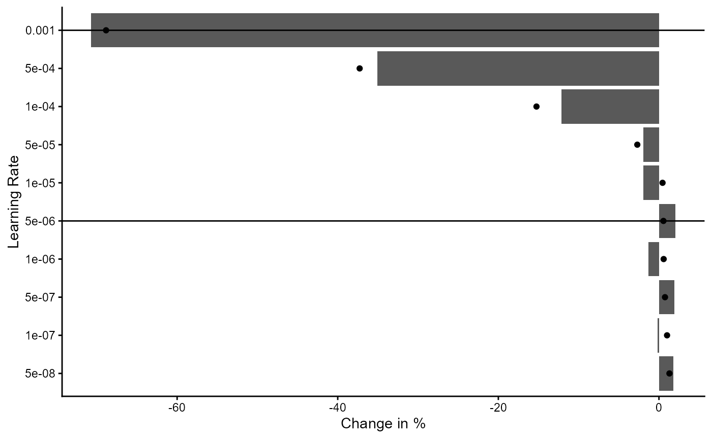
Figure 1: Analysis of Different Learning Rates
Second we plot the training history for the loss and average iota during performance estimation stage.
classifier_prototype$plot_training_history(
final_training = FALSE,
pl_step = NULL,
measure = "loss",
ind_best_model = FALSE,
ind_selected_model = TRUE,
x_min = NULL,
x_max = NULL,
y_min = NULL,
y_max = NULL,
add_min_max = FALSE,
text_size = 10
)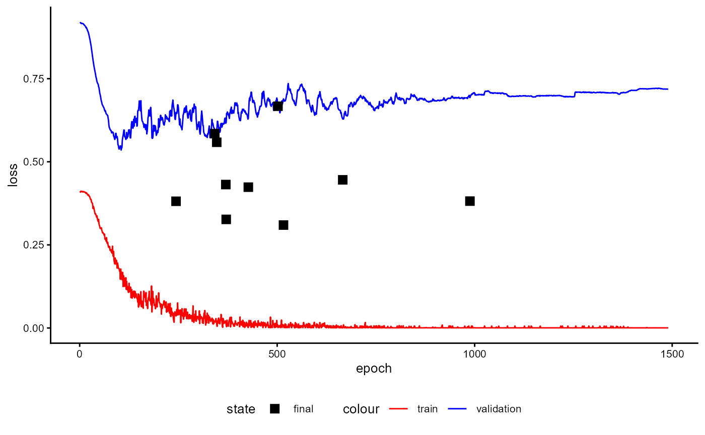
Figure 2: Training History of a Classifier with Prototypes during Performance Estimation Stage (loss)
classifier_prototype$plot_training_history(
final_training = FALSE,
pl_step = NULL,
measure = "avg_iota",
ind_best_model = FALSE,
ind_selected_model = TRUE,
x_min = NULL,
x_max = NULL,
y_min = NULL,
y_max = NULL,
add_min_max = FALSE,
text_size = 10
)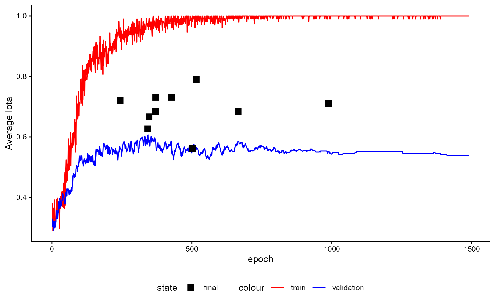
Figure 3: Training History of a Classifier with Prototypes during Performance Estimation Stage (iota)
classifier_prototype$plot_training_history(
final_training = FALSE,
pl_step = NULL,
measure = "s_avg_iota",
ind_best_model = FALSE,
ind_selected_model = TRUE,
x_min = NULL,
x_max = NULL,
y_min = NULL,
y_max = NULL,
add_min_max = FALSE,
text_size = 10
)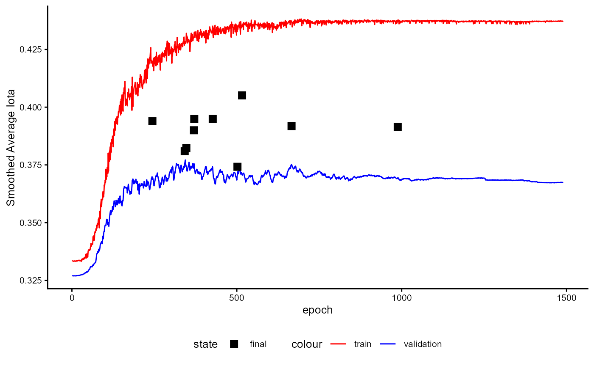
Figure 4: Training History of a Classifier with Prototypes during Performance Estimation Stage (smoothed iota)
The training history of the final training stage is displayed in the following Figures.
classifier_prototype$plot_training_history(
final_training = TRUE,
pl_step = NULL,
measure = "loss",
ind_best_model = TRUE,
ind_selected_model = TRUE,
x_min = NULL,
x_max = NULL,
y_min = NULL,
y_max = NULL,
add_min_max = FALSE,
text_size = 10
)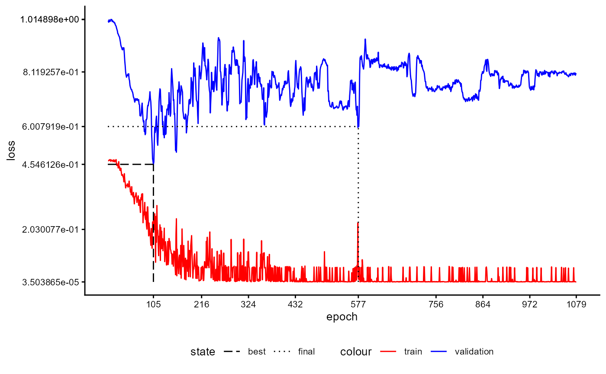
Figure 5: Training History of a Classifier with Prototypes during Final Training Stage (loss)
classifier_prototype$plot_training_history(
final_training = TRUE,
pl_step = NULL,
measure = "avg_iota",
ind_best_model = FALSE,
ind_selected_model = TRUE,
x_min = NULL,
x_max = NULL,
y_min = NULL,
y_max = NULL,
add_min_max = FALSE,
text_size = 10
)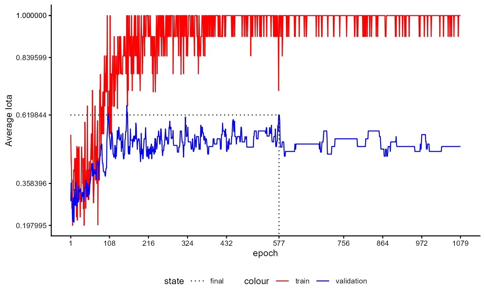
Figure 6: Training History of a Classifier with Prototypes during Final Training Stage (iota)
classifier_prototype$plot_training_history(
final_training = TRUE,
pl_step = NULL,
measure = "s_avg_iota",
ind_best_model = FALSE,
ind_selected_model = TRUE,
x_min = NULL,
x_max = NULL,
y_min = NULL,
y_max = NULL,
add_min_max = FALSE,
text_size = 10
)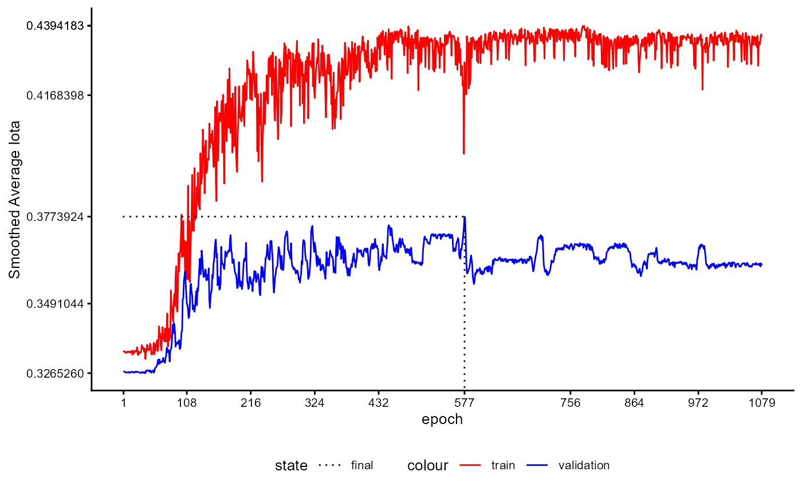
Figure 7: Training History of a Classifier with Prototypes during Final Training Stage (smoothed iota)
After training, we can request a visualisation of the data again.
First, we omit all unlabelled cases by setting
inc_unlabelled=FALSE in order to assess the quality of the
training.
plot_trained_1 <- classifier_prototype$plot_embeddings(
embeddings_q = review_embeddings,
classes_q = review_labels,
inc_unlabeled = FALSE
)
plot_trained_1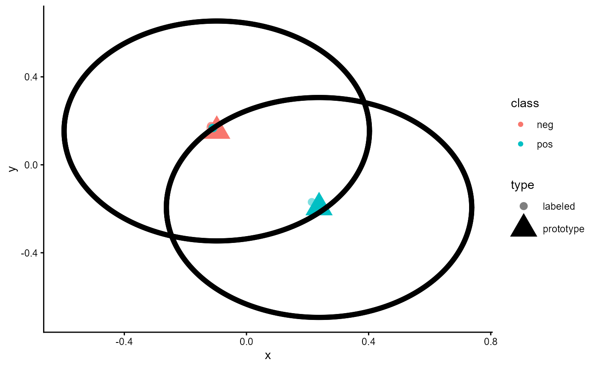
Figure 8: Embeddings of a trained classifier of type ‘ProtoNet’ without unlabeled cases
As shown in the Figure, all cases are now sorted. Cases of the “neg”
class are located close to the “neg” prototype, while cases of the “pos”
class are located near the “pos” prototype. The black circle around the
prototypes represents the margin used during training
(loss_margin). Since we are using the same data as during
training, this result is to be expected. Only a small number of cases
are located near the wrong prototype. This can be seen when a red dot is
close to the “pos” prototype and a blue dot is close to the “neg”
prototype.
Now let us add the unlabelled cases to the plot by setting
inc_unlabelled = TRUE.
As the following Figure shows, the model estimates the class of these cases according to their distance from the two prototypes. Cases close to the “pos” prototype are assigned to “pos”, while those near the “neg” prototype are assigned to “neg”.
plot_trained_2 <- classifier_prototype$plot_embeddings(
embeddings_q = review_embeddings,
classes_q = review_labels,
inc_unlabeled = TRUE
)
plot_trained_2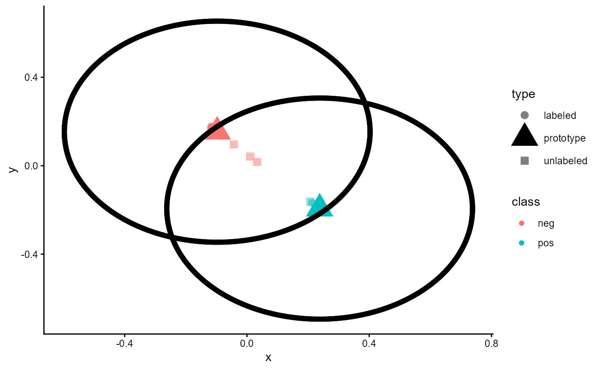
Figure 10: Embedding of a trained classifier of type ‘ProtoNet’ including unlabeled cases
4 Performance Evaluation
Finally, we will assess the reliability of this classifier.
classifier_prototype$reliability$test_metric_mean
#> iota_index min_iota2 avg_iota2
#> 0.4701581 0.4166278 0.5413531
#> max_iota2 min_alpha avg_alpha
#> 0.6660784 0.5439286 0.6861310
#> max_alpha static_iota_index dynamic_iota_index
#> 0.8283333 0.2102915 0.4005735
#> kalpha_nominal kalpha_ordinal kendall
#> 0.3900764 0.3900764 0.6985849
#> c_kappa_unweighted c_kappa_linear c_kappa_squared
#> 0.3853358 0.3853358 0.3853358
#> kappa_fleiss percentage_agreement balanced_accuracy
#> 0.3761873 0.7284585 0.6861310
#> gwet_ac1_nominal gwet_ac2_linear gwet_ac2_quadratic
#> 0.5149157 0.5149157 0.5149157
#> avg_precision avg_recall avg_f1
#> 0.7170480 0.6861310 0.6880937
classifier_prototype$reliability$standard_measures_mean
#> precision recall f1
#> neg 0.6461905 0.5589286 0.5811964
#> pos 0.7879055 0.8133333 0.7949910
classifier_prototype$plot_reliability_distribution(measures="all")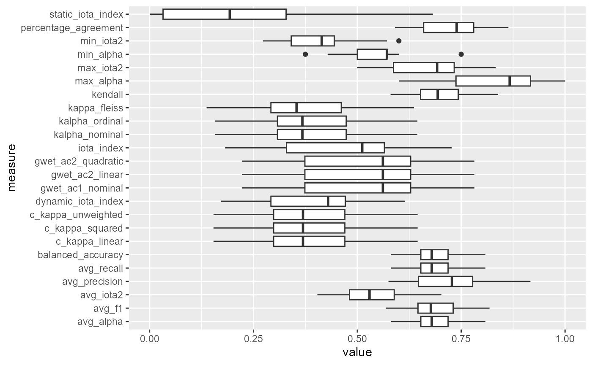
Figure 10: Box Plot of Performance Measures
5 Application with Sample Data
Until now, we have not provided sample data. Consequently, the model used the available classes and prototypes during training. This is not the usual case for this type of model. Typically, a query and sample data are provided to the classifier. We will describe how this works in the following sections.
To illustrate this process, we modify the data. Some of the positive reviews are labelled as ‘very positive’ and some of the negative reviews as ‘very negative’. This increases the number of classes/categories from two to four.
example_data <- imdb_movie_reviews
example_data$label <- as.character(example_data$label)
example_data$label[c(1:15)] <- "very negative"
example_data$label[c(76:100)] <- NA
example_data$label[c(201:250)] <- NA
example_data$label[c(251:260)] <- "very positive"
example_data$label <- factor(example_data$label)
table(example_data$label, useNA = "ifany")
#>
#> neg pos very negative very positive <NA>
#> 60 140 15 10 75Our aim is now to predict the 75 unlabelled cases using our trained model, even though it was only trained on two different classes. First, we must therefore split the data. The cases with classes/categories will form the sample set, and the cases without any classes/categories will form the query set.
sample_set_raw <- subset(example_data, !is.na(example_data$label))
sample_classes <- sample_set_raw$label
table(sample_classes, useNA = "ifany")
#> sample_classes
#> neg pos very negative very positive
#> 60 140 15 10
sample_texts <- LargeDataSetForText$new()
sample_texts$add_from_data.frame(sample_set_raw)
query_set_raw <- subset(example_data, is.na(example_data$label))
table(query_set_raw$label, useNA = "ifany")
#>
#> neg pos very negative very positive <NA>
#> 0 0 0 0 75
query_texts <- LargeDataSetForText$new()
query_texts$add_from_data.frame(query_set_raw)Now, we need to generate text embeddings for both the query and the sample dataset. We must use the same embedding model that we used to train the classifier.
sample_embeddings <- tem$embed_large(
text_dataset = sample_texts,
trace = TRUE
)
#> Calculating Embeddings 12.50 % (1|8) done ETA: 0000::00::10Calculating Embeddings 25.00 % (2|8) done ETA: 0000::00::08Calculating Embeddings 37.50 % (3|8) done ETA: 0000::00::07Calculating Embeddings 50.00 % (4|8) done ETA: 0000::00::05Calculating Embeddings 62.50 % (5|8) done ETA: 0000::00::04Calculating Embeddings 75.00 % (6|8) done ETA: 0000::00::03Calculating Embeddings 87.50 % (7|8) done ETA: 0000::00::01Calculating Embeddings 100.00 % (8|8) done ETA: 0000::00::00
query_embeddings <- tem$embed_large(
text_dataset = query_texts,
trace = TRUE
)
#> Calculating Embeddings 33.33 % (1|3) done ETA: 0000::00::02Calculating Embeddings 66.67 % (2|3) done ETA: 0000::00::01Calculating Embeddings 100.00 % (3|3) done ETA: 0000::00::00We are now ready to use our classifier. First, we predict the classes of the query sample.
new_Postdictions <- classifier_prototype$predict_with_samples(
newdata = query_embeddings,
embeddings_s = sample_embeddings,
classes_s = sample_classes
)
head(new_Postdictions)
#> neg pos very negative very positive expected_category
#> 8016 0.2914322 0.2045344 0.3024597 0.2015737 very negative
#> 9118 0.2762486 0.2304139 0.2670065 0.2263310 neg
#> 6376 0.2033516 0.2951728 0.1986890 0.3027866 very positive
#> 5766 0.2033504 0.2953351 0.1986810 0.3026335 very positive
#> 5942 0.2914101 0.2045595 0.3024303 0.2016001 very negative
#> 478 0.2036008 0.2960569 0.1989106 0.3014317 very positive
table(new_Postdictions$expected_category)
#>
#> neg pos very negative very positive
#> 3 1 26 45Although we trained our classifier for two classes, we can now use it to predict other classes. Next, we plot the results.
plot_with_samples <- classifier_prototype$plot_embeddings(
embeddings_q = query_embeddings,
embeddings_s = sample_embeddings,
classes_s = sample_classes,
inc_unlabeled = TRUE,
inc_margin = FALSE
)
plot_with_samples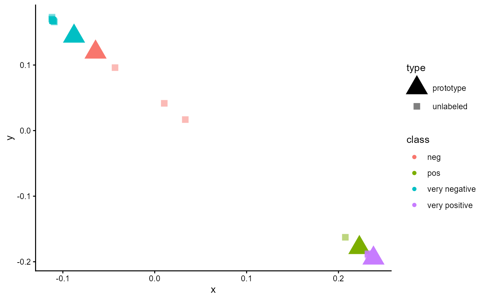
Figure 12: Embeddings of a trained classifier of type ‘ProtoNet’ trained for two classes and applied for a sample set with four classes.
References
Jadon, S., & Garg, A. (2020). Hands-On One-shot Learning with Python: Learn to Implement Fast and Accurate Deep Learning Models with Fewer Training Samples Using Pytorch. Packt Publishing Limited. https://ebookcentral.proquest.com/lib/kxp/detail.action?docID=6175328
Oreshkin, B. N., Rodriguez, P., & Lacoste, A. (2018). TADAM: Task dependent adaptive metric for improved few-shot learning. Advance online publication. https://doi.org/10.48550/arXiv.1805.10123
Zhang, X., Nie, J., Zong, L., Yu, H., & Liang, W. (2019). One Shot Learning with Margin. In Q. Yang, Z.-H. Zhou, Z. Gong, M.-L. Zhang, & S.-J. Huang (Eds.), Lecture Notes in Computer Science. Advances in Knowledge Discovery and Data Mining (Vol. 11440, pp. 305–317). Springer International Publishing. https://doi.org/10.1007/978-3-030-16145-3_24
Zou, L. (2023). Meta-Learning: Theory, Algorithms and Applications. Elsevier Science & Technology. https://ebookcentral.proquest.com/lib/kxp/detail.action?docID=7134465